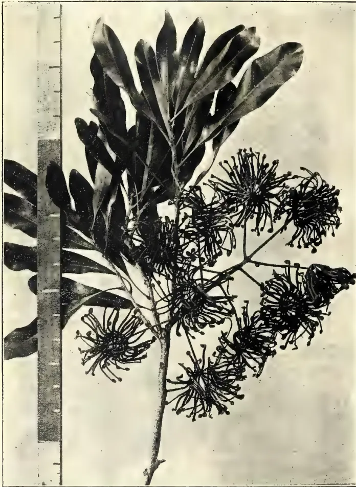
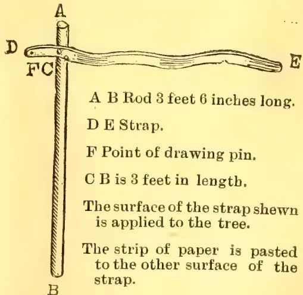
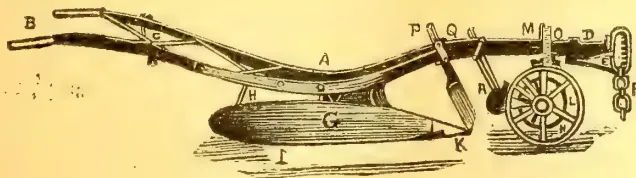
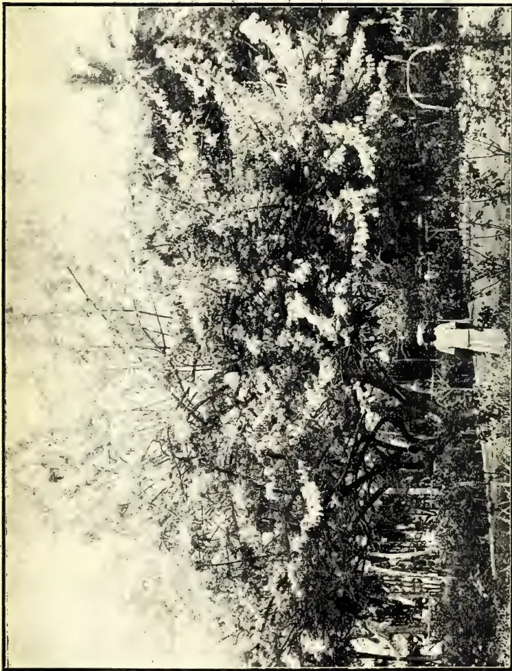
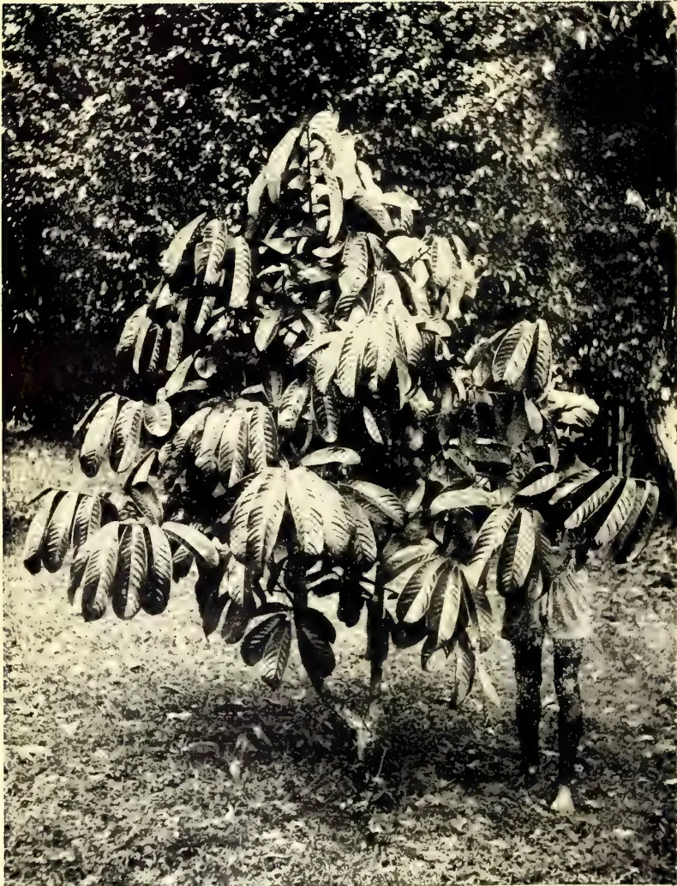
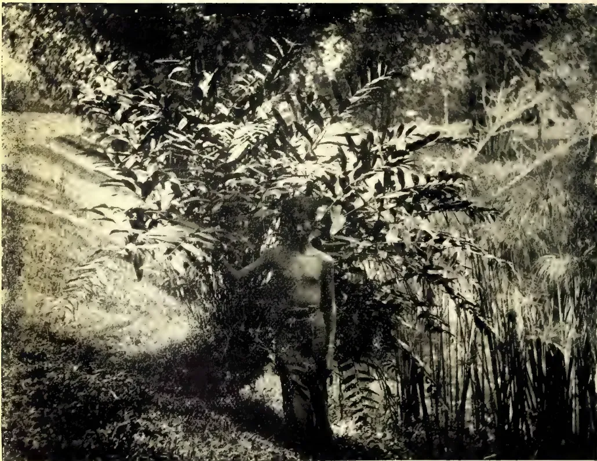
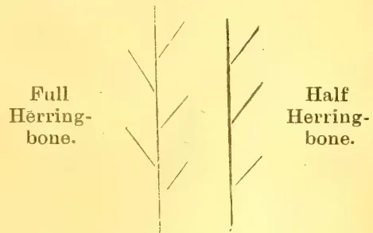
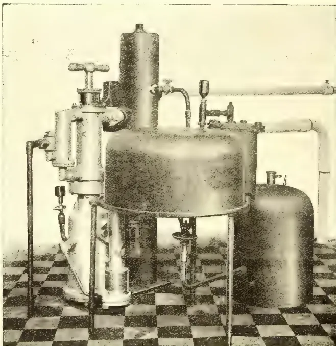
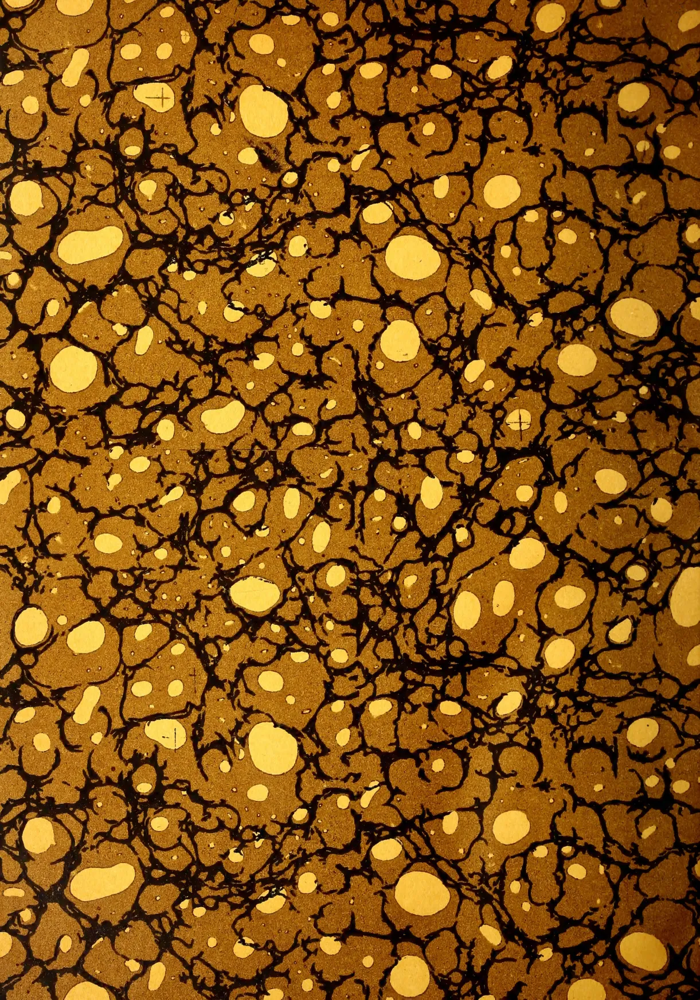
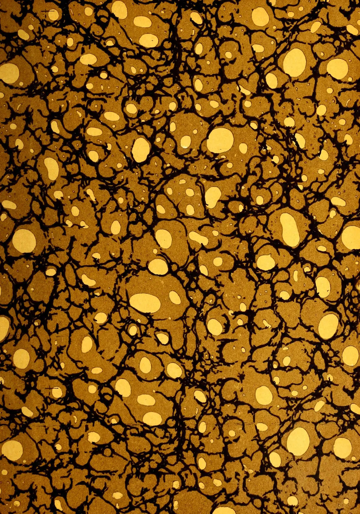

THE FIELD MUSEUM LIBRARY
A standard linear barcode used for library inventory tracking.3 5711 00043 1248
Field Museum of Natural History
LIBRARY
Chicago
From _____
Class 380.86 Book 637
This image displays a classic marbled paper pattern, often referred to as 'stone' or 'shell' marbling. The background is a rich, warm brown color. Overlaid on this background is a complex, organic network of dark, black, vein-like lines that create a sense of depth and movement. Interspersed within this network are numerous irregular, light-yellow or cream-colored spots and patches of varying sizes. Some of these spots are small and discrete, while others are larger and more confluent, creating a mosaic-like effect. The overall texture is highly detailed and naturalistic, mimicking the appearance of stone or biological structures like coral or cellular tissue. This image shows a blank, aged, cream-colored page, likely an endpaper or flyleaf from an old book. The paper has a slightly textured appearance with some minor discoloration and faint smudges, characteristic of old paper. There is no text or other markings on the page.Digitized by the Internet Archive
in 2014
https://archive.org/details/tropicalagricul341910ceyl
S
281
T 77
AND
(FOUNDED 1881.)
EDITED BY
J. C. WILLIS, D.Sc.,
Director, Royal Botanic Gardens; Organizing Vice-President, C.A.S.
Vol. XXXIV.
Containing Numbers I to VI, : January to June, 1910.
41352
A. M. & J. FERGUSON,
COLOMBO, CEYLON
1910.
| PAGE. | PAGE. | ||
|---|---|---|---|
| A. | |||
| Absorption of Ammonium Salts by Plants, Direct ... | 233 | A New Cane-cutting Machine ... | 321 |
| Accacia Decurrens ... | 363 | Angola, Planting in ... | 95 |
| Acid Soils for Rubber and other Cultivations, The Treatment of ... | 234 | Annual Report, C. A. S. ... | 546 |
| Additional Notes on Rice Culture ... | 22 | Anti-Rinderpest Serum, its Production and Use ... | 341 |
| Administration of Agricultural Education ... | 354 | Antwerp Rubber Trade ... | 270 |
| Agricultural Associations ... | 427 | Artificial Cultivation of Sponges ... | 88 |
| do Bank Act of the Philippine Government ... | 519 | do Manures ... | 518 |
| do Banks ... | 52 | A Russian Method of Corn Cultivation... | 309 |
| do Chemistry ... | 413 | Assam, Agricultural Development in ... | 87 |
| do College and Farm, Saidapeth ... | 255 | A Useful Leguminous Plant ... | 227 |
| do Conditions in Java ... | 350 | Austrian Rubber Plant, A New ... | 77 |
| do Credit Development in Assam ... | 87 | Availability of Sulphate of Ammonia ... | 558 |
| do Departments and their Functions ... | 438 | Averages for 1909, Tea Sale ... | 273 |
| do Developments ... | 425 | B. | |
| do Education, Administration of ... | 354 | Bacterial Blight in Cotton ... | 373 |
| do do for the Ryot ... | 422 | Bahia, Rubber Planting and Exploitation in ... | 180, 181 |
| do do in the Schools ... | 417 | Banana Cultivation ... | 379 |
| do do, Problem of ... | 415 | do Industry, Question of a ... | 212 |
| do Fertilizers ... | 98 | Banks, Agricultural... | 52, 519 |
| do Experiment Station, Peradeniya, Progress Report ... | 55 | Baabab Trees used for Storage of Water ... | 505 |
| do Experiments, Minutes of Committee Meeting of ... | 54, 244 | Bee-Conversation with Doolittle ... | 441 |
| do Experiments at Peradeniya ... | 552a | Bee-keeping in Ceylon ... | 45, 513 |
| do do, Committee of ... | 356 | Bees in the Fall, Uniting ... | 348 |
| do International Congress of Tropical and Colonial Developments ... | 2 | Begasse for Paper ... | 11 |
| do Progress in Ceylon ... | 432 | Belgian Congo Taxes on India-rubber ... | 565 |
| do Research Institute, Pusa... | 246 | do Rubber Co. Director in Colombo ... | 458 |
| do Society Annual Report, Ceylon ... | 546 | Black Cotton Soil ... | 415 |
| do do Meeting, April 6 ... | 56, 354, 546 | Bleeding Disease of Coconuts ... | 172 |
| do do Progress Report ... | 450 | Blight of Tea, Mosquito ... | 35 |
| do Work in Barbados ... | 414 | Board of Agriculture Progress Report ... | 159 |
| Agriculture, American Method of Developing ... | Books in the Tropics, Preserving ... | 158 | |
| do in India, Progress of ... | 516 | Bordeaux Mixture and Pink Disease of Para Rubber ... | 565 |
| do in Nyassaland ... | 94 | Brazil Nut, The ... | 279, 367 |
| do, Introduction of Improvements into Indian ... | 533 | do, Tea and Rubber in ... | 174 |
| do, Literature of Economic Botany and ... | 50, 131, 235, 352, 434, 532 | Brazilian Rubber Exports ... | 271 |
| do, Southern ... | 355 | do do Industry ... | 229 |
| do, The School of ... | 423 | British Cotton Growing ... | 106 |
| Alcohol and its Possibility as a Source of Power in the Philippines ... | 260 | Budding of Mango, Shield ... | 498 |
| Aliens of Victoria, The Weeds, Poison Plants, etc. ... | 1 | C. | |
| Alimentary Plants, Tuberculous ... | 288 | Cacao, A Mechanical Polisher for ... | 26 |
| Amazon vs. Plantation Rubber ... | 179 | do Butter, German Method of Manufacturing ... | 277 |
| A Mechanical Polisher for Cacao ... | 26 | do, Canker of ... | 325 |
| American Method of Development of Agriculture ... | 516 | do, Coffee and Tea Consumption ... | 493 |
| Ammonia, Availability of Sulphate of ... | 558 | do, Culture in German Samoa ... | 206 |
| do, Diseases of ... | 407 | ||
| do, Exports from Trinidad ... | 369 | ||
| do, Fermentation of ... | 115 | ||
| do in Grenada, Manurial Experiments ... | 308 | ||
| do in Peru ... | 559 | ||
| do in the Gold Coast ... | 184 | ||
| do in the Philippines in 1909 ... | 567 | ||
| do, Manuring of ... | 95 | ||
| do, Nicaraguan Oriolo ... | 561 | ||
| do, Products obtained from ... | 400 | ||
| do, The Production in Ecuador in 1909 of ... | 554 | ||
7+ a
INDEX.III| PAGE. | PAGE. | ||
|---|---|---|---|
| Calcium Cyanamide, Some Notes on ... | 159 | Coconut Production in the Philippines in 1909 ... | 567 |
| Cambodia Cotton, Cultivation of ... | 378 | Coffee Robusta as a Catch Crop in Rubber ... | 362 |
| Camphor in the Gold Coast ... | 287 | Coffee, Cacao and Tea Consumption ... | 493 |
| do , Natural and Artificial ... | 203 | do in the Philippines ... | 288 |
| do , Synthetic ... | 369 | Colombo, A Floral Parade for ... | 455 |
| Cane-cutting Machine, A New ... | 321 | Colonial Development, Brussels International Congress of Agriculture and ... | 2 |
| Canker of Cacao ... | 325 | Committee of Agricultural Experiments ... | 54, 356, 552a |
| Caoutchouc and its Collection ... | 297 | Committee Final Report, Tobacco Experiment ... | 63 |
| do Production in Asia ... | 485 | do Meeting of Agricultural Experiments ... | 244 |
| do Production of Asia, its Dangers, Mistakes and Improvements, etc. ... | 393 | Committee's Report, Model and Experimental Gardens ... | 62 |
| Castilloa Rubber ... | 572 | Company Promotion in the F. M. S. ... | 83 |
| Castor and Theobroma Oils ... | 286 | Composition of Indian Rice ... | 210 |
| do Oil Bean in the Soudan ... | 285 | Conditions of Establishing Gardens ... | 63 |
| Cattle, Improvement of ... | 229 | Consumption of Cacao, Coffee and Tea ... | 493 |
| do do Indian ... | 125 | Conversation with Doolittle, Bee ... | 411 |
| do Indian, Recent Exports of High Class ... | 44 | Copra Exports of the Dutch Indies ... | 493 |
| do Plague or Rinderpest ... | 230 | do in the Gold Coast ... | 280 |
| do , Prickly Pear, Digestibility of, when Fed to ... | 513 | do , Moisture in ... | 169 |
| Cause of Tackiness in Rubber ... | 89 | do , Preserving, from Mould ... | 379 |
| Ceara Rubber in Coorg ... | 192 | Coorg Ploughs ... | 472 |
| do in German East Africa ... | 486 | Co-operation of Small Holders ... | 539 |
| do in Mysore, Tapping ... | 298 | Co-operative Credit Society ... | 429 |
| Ceylon Agricultural Society Annual Report, 1909-10 ... | 546 | do Society for Farmers ... | 424 |
| do Agricultural Society Meeting, April 6 ... | 354 | Corn as a Sugar Producer, Indian ... | 117 |
| do do Progress Report ... | 450 | do Cultivation, A Russian Method of ... | 309 |
| do Agriculture, Progress in ... | 432 | do , Sugar Produced from Indian ... | 118 |
| do , Bee-keeping in ... | 45, 513 | Cotton, Cultivation of Tree ... | 303 |
| do , Cinnamon in ... | 493 | do , Bacterial Blight in ... | 373 |
| do Citronella Oil ... | 300 | do , Cambodia, Cultivation of ... | 378 |
| do Coconut Oil in America ... | 374, 375 | do , Egyptian, Changes when Grown in United States ... | 12 |
| do Green Manure, A New ... | 181 | do Experiments in Honduras ... | 376 |
| do , Impressions of Mr. Benson on ... | 145 | do Federation, International ... | 105 |
| do Rubber and other Products ... | 368 | do Growing, British ... | 106 |
| do , do Cultivation in ... | 362 | do in Tinnevelly ... | 306 |
| do Tea Estate Averages for 1st Quarter, 1910 ... | 462 | do in the Field, Method of Estimating Yield of ... | 305 |
| do , Tobacco Experiment in ... | 63 | do Seed ... | 303 |
| Chalk, Utility of ... | 475 | do do for Planting, Rate of ... | 455 |
| Changes in Egyptian Cotton when Grown in United States ... | 12 | do do , Observations on the Effects of Storage on ... | 13 |
| Chemical Sprays for Weeds, Insects, &c., Destruction ... | 473 | do Soil, Black ... | 415 |
| Chemistry, Agricultural ... | 413 | do Varieties for Uniformity, Selection of ... | 200 |
| Chena, Jhuming, Taungya or Ladang ... | 481 | do , West Indian ... | 308 |
| Cinchona and Rubber Booms Compared ... | 369 | Credit Societies, Co-operative ... | 429 |
| do , Java ... | 205 | Crop Values, Some Comparative ... | 401 |
| Cinnamon in Ceylon ... | 493 | Crops by Seed Selection, Improvement of ... | 350 |
| do Oil, Ceylon ... | 574 | do in India, Water Requirements and ... | 415 |
| Citronella Oil ... | 467 | do of India, Some Commercial ... | 155 |
| do Oil, Ceylon ... | 300 | Cultivation and Fertility ... | 127 |
| do Oil Tests ... | 400 | do do Preparation of Para Rubber ... | 4 |
| Clean Weeding for Rubber ... | 371, 372 | do do Production of Rubber in German Colonies ... | 101 |
| do do vs. Tephrosia ... | 297 | do of Estates, Theoretical and Practical ... | 567 |
| Coca Cultivation in Peru ... | 110 | do of Tree Cottons ... | 303 |
| Cocaine, Memorandum on the Production, Distribution, and Sale of ... | 110 | ||
| Cockerill's Patent for the Treatment of Latex ... | 376 | D. | |
| Coconut Bleeding Disease ... | 172 | Dangers, Mistakes, and Improvements in the Caoutchouc Production of Asia ... | 485 |
| do Coffee Robusta as a Catch Crop in ... | 362 | Dear Rubber ... | 99 |
| do History of the Sea ... | 505 | ||
| do "Milk," The Food Value of ... | 567 | ||
| do Oil, Ceylon, in America ... | 374 | ||
| do Palm Disease in Borneo ... | 566 |
| PAGE. | PAGE. | ||
|---|---|---|---|
| Death by Eating Poisonous Fruits ... | 71 | Fibre Plants in India, Extension of Cultivation of ... | 15 |
| Depts. of Agriculture and their Functions ... | 438 | do Producing Plants, Some Notes on Various Oil and Fibres, Madras Sisal and other ... | 201 |
| Development of Agriculture ... | 2 | Field Trials, Experimental Error in ... | 46 |
| do of Science in Horticulture ... | 446 | Fiji, an Ex-Ceylon Planter on ... | 80 |
| Device for Measuring and Taking a Census of Girth of Rubber Trees ... | 5 | Floral Parade for Colombo, A ... | 455 |
| Die-back of Hevea Braziliensis ... | 286 | F. M. S. Rubber Company Promotion ... | 83 |
| Direct Absorption of Ammonium Salts by Plants ... | 233 | Fodder Plant, Prickly Pear a Pest or a do , Prickly Pear as a ... | 504 |
| Diseases of Cacao ... | 407 | Forests of the Gold Coast ... | 404 |
| Disinfection of Tea Seed ... | 375 | Fruit Drying, New Process for ... | 370 |
| Distribution and Sale of Cocaine ... | 110 | Fruits, Death by Eating Poisonous ... | 71 |
| Draining, A Manual on ... | 237 | Funtumia in the Ivory Coast ... | 485 |
| Dry Farming Principles ... | 69 | ||
| E. | |||
| Economic Products in the Seychelles ... | 281 | G. | |
| do Value of a School of Tropical Medicine ... | 156 | Garden's Committee Report, Model and Experimental ... | 62 |
| Edinburgh Professor of Agriculture in Colombo ... | 565 | do , Conditions for Establishing ... | 63 |
| Education, Administration of Agricultural do of the Young Farmer ... | 354 140 |
German East Africa, Ceara Rubber in do Samoa, Cacao Culture in ... | 488 206 |
| Effect of Grass on Trees ... | 129 | Girth of Rubber Trees, etc. ... | 5 |
| Elementary Principles for Manuring ... | 443 | Gliricidia maculata ... | 407 |
| Enemy of Thrift in Ceylon ... | 370 | Gold Coast Forests ... | 404 |
| Entomological Notes ... | 119, 223, 322 | Grass on Rubber Estates ... | 285 |
| Establishing Gardens, Conditions for ... | 63 | do on Trees, Effect of ... | 129 |
| Estate Animals, Selection in Breeding ... | 42 | Green Dressings ... | 256 |
| Eucalyptus Leaves, Utilisation of ... | 511 | do do and Applications ... | 149 |
| Experiment Station in Sumatra ... | 88 | do do for Wet Lands ... | 258 |
| do do , Peradeniya, Report on ... | 552a | do Manuring ... | 288 |
| do do Progress Report, Agricultural ... | 55 | Grenada Cacao Manurial Experiments ... | 308 |
| do do , Report on ... | 356 | Growing of British Cotton ... | 106 |
| do do , Rothamsted ... | 259 | Guano for Rubber Trees ... | 377 |
| Experimental Committee's Final Report, Tobacco ... | 63 | Guatemala, Rubber and Hemp in ... | 376 |
| do Error in Field Trials ... | 46 | Gutta Percha Cultivation ... | 196 |
| do Gardens Committee's Report, Model and ... | 62 | H. | |
| Experiments, Committee of Agricultural do with Cacao in Grenada, Manurial ... | 54, 356 308 |
Hemp and Rubber in Guatemala ... | 376 |
| Exports of Trinidad Cacao ... | 369 | Hevea Braziliensis, Die-back of ... | 286 |
| Extension of Cultivation of Fibre Plants in India ... | 15 | History of the Sea Coconut ... | 505 |
| F. | |||
| Farm, Saidapeth Agricultural College and Farmer, Position of the Village ... | 255 351 |
Holders, Co-operation of Small Horticultural Course ... | 539 339 |
| Farmers' Co-operative Societies ... | 424 | Horticulture, Science in ... | 446 |
| do , Education of the Young ... | 140 | Human Life and Relation to Science ... | 136 |
| Farming Principles, Dry ... | 69 | I. | |
| Felling, Tree ... | 321 | Imperial Institute, Scientific and Technical Department of the ... | 143 |
| Fermentation of Cacao ... | 115 | Improvement in Paddy Cultivation ... | 23 |
| do Cigar Leaf Tobacco ... | 109 | do of Cattle ... | 229 |
| Fertilisers, Agricultural ... | 98 | do of Crops by Seed Selection ... | 350 |
| do and Manures ... | 363 | do of Indian Cattle ... | 125 |
| do on Rubber Plantations ... | 363 | Indian Corn as a Sugar Producer ... | 117 |
| Fertilising Influence of Sunlight ... | 459 | do Paper Industry ... | 202 |
| Fertility and Soil Exhaustion, Soil do , Cultivation and ... | 46 127 |
do Rice ... | 470 |
| Fertilization for Rubber do of Soil, Important Discovery in ... | 377 182 |
do Soy Bean ... | 27 |
| do for Tea ... | 459 | do Tobacco Trade ... | 204 |
| India-rubber Market for 1909 ... | 185, 188 | ||
| India's Tea Country ... | 86 | ||
| Indigo and Sunn Hemp as Green Manure ... | 288 | ||
| Industries, Alcohol, etc., in Philippines ... | 260 | ||
| Industry, Science and ... | 97 | ||
| Inoculation of Leguminous Crops, W. I. ... | 49 | ||
| Intensive Cultivation of Rubber ... | 368 | ||
| International Congress of Tropical and Colonial Development... 2 | 2 | ||
| do Cotton Federation ... | 105 | ||
| PAGE. | PAGE. | ||
|---|---|---|---|
| International Rubber Testing Committee | 272 | Mosquito Blight of Tea | 31 |
| Introduction of Improvements into Indian Agriculture ... | 533 | Mulch, The | 515 |
| Irrigation Methods ... | 430 | Museums, Philadelphia | 445 |
| Ivory Coast, Funtumia in the | 485 | Mycology and Economic Botany | 471 |
| J. | N. | ||
| Japan, Paper Industry in | 71 | Natural and Artificial Camphor | 203 |
| Java Cinchona ... | 205 | do Sterilisation of Soil | 413 |
| do, Tea and Rubber in | 174 | New Legume, an Austrian | 77 |
| Jeque Manicoba Rubber Tree | 393 | do for Rubber | 82 |
| do do Tree | 364 | Nicaraguan Criolo Cacao | 561 |
| Journey Around the World, A | 193, 289 | Nitro-Bacterine ... | 517 |
| K. | Notes on Rice Culture | 22 | |
| Korean Rice Trade ... | 317 | Nutmeg Industry, State of the | 492 |
| L. | Nyasaland, Agriculture in | 94 | |
| Labour for Cochin China, Java | 187 | do Tobaccos, Examination of | 176 |
| Ladang, Chena, Jhuming, Taungya or... | 481 | O. | |
| Landolphia, Tapping of | 359 | Obscure Causes of Unproductiveness in Land | 361 |
| Laplae's Visit to the East, M. | 465 | Observations on the Effects of Storage | |
| Leaf Cigar Tobacco, Fermentation of | 109 | do on Cotton Seed | 13 |
| Lecture, Masters Second | 439 | do on Wild Leguminous Plants | 228 |
| Legume for Rubber, A New | 82 | Oil and Fibre Producing Plants | 8 |
| Leguminous Crops in West Indies | 49 | do, Ceylon Citronella | 300 |
| do Plant, A Useful | 227 | do Tests, Citronella | 400 |
| do Plants, Observations on Wild | 228 | do Tractor, Marshall's | 445 |
| Literature of Economic Botany and Agriculture | 50, 131, 235, 352, 434, 532 | Orange and how to Grow it | 333 |
| Lodoicea Sechellarum (Sea Coconut) | 505 | P. | |
| M. | Packing Plants for Export | 455 | |
| Madras Sisal and other Fibres | 201 | Paddy Cultivation, Improvement in | 23 |
| Mauaos Rubber Conference | 76 | do Experiments in India | 367 |
| Mango, Shield Budding for | 498 | do, Single Planting in | 378, 568 |
| do The | 311 | do, Single Planting of | 111 |
| Manicoba Rubber Tree, Jeque | 393 | Palm Products for 1909, Our | 190 |
| Manihot Glaziovii, Remarks on Selection and Bleeding of | 486 | do do for 1st Quarter of 1910 | 377 |
| Manual on Draining... | 237 | Palo Amarillo | 105 |
| Manure, A New Ceylon Green | 181 | do Rubber | 3 |
| do for Orchards, Vineyards, etc. | 151 | Paper, Bagasse for | 11 |
| Manures, Artificial ... | 518 | do Industry, Indian | 202 |
| Manurial Experiments with Cacao | 308 | do do in Japan | 71 |
| Manuring, Elementary Principles for | 443 | do Making in India | 197 |
| do for Wet Lands, Green | 258 | Papua, Planting in ... | 276 |
| do of Cacao | 95 | Para Rubber Cultivation & Preparation | 4 |
| Marshall's Oil Tractor | 445 | do do, Science and Practice of | 291 |
| Masters Lecture II ... | 439 | Paspalum Dilutatum in the North | 167 |
| Mate or Parana—Tea | 401 | Pepper, Wilt Disease of | 324 |
| Medicine, Economic Value of a School of Tropical | 156 | Percentage of Scrap to Fine Plantation Rubber | 83 |
| Memo. on a Recent Visit to India | 65 | Philadelphia Museums | 441 |
| do Production, Distribution and Sale of Cocaine | 110 | Philippine Islands, Products of the | 469 |
| Method of Estimating Yield of Cotton | 305 | Pineapple Growing in Bataan and Bulacan | 28 |
| Mexican Rubber, A Wonderful | 180 | Pink Disease of Para Rubber and Bordeaux Mixture | 565 |
| Mimosa Pudica in Coorg | 184 | Plant Breeding | 167 |
| Mirigama School Garden Show | 69 | do Diseases | 512 |
| Miscellanea: Chiefly Pathological | 40, 123, 225 | Plantation Rubber vs. Fine Para | 271 |
| Mistletoe Pest in South West | 410 | Planting in Angola | 95 |
| Model and Experimental Gardens Committee Report | 62 | do Products in Samoa | 468 |
| Moisture in Copra | 169 | Plants for Export, Packing | 455 |
| Mole Cricket a Pest to Rubber Stumps | 285 | Ploughs, Setting and Features of | 132 |
| do Used in Coorg | 472 | ||
| Poison Plants and Naturalised Aliens of Victoria, The Weeds | 1 | ||
| Position of the Village Farmer | 351 | ||
| PAGE. | PAGE. | ||
|---|---|---|---|
| Potash, A Manure for Orchards, &c. ... | 151 | Rubber at the Brussels Exhibition ... | 91 |
| Preparation of Funtumia on Ivory Coast | 486 | do Belgian-Congo Taxes on ... | 565 |
| Preserving Books in the Tropics ... | 158 | do Bleekrodea Tonkinensis ... | 576 |
| do Copra from Mould ... | 379 | do Bordeaux Mixture and Pink Dis- ease of Para ... |
565 |
| Prickly Pear, A Pest or Fodder Plant... | 115 | do Castilloa ... | 572 |
| do as a Fodder ... | 504 | do do by the Centrifugal Process ... | 77 |
| do , Digestibility of, when Fed to Cattle ... |
513 | do Cause of Tackiness in ... | 89 |
| Problem of Agricultural Education ... | 415 | do Ceara in Coorg ... | 192 |
| Production of Rice in the U. S. A. ... | 313 | do do Seed and Ants ... | 558 |
| Products in Ceylon, Rubber and other... | 368 | do Co. Director from Belgium ... | 468 |
| do obtained from Cacao ... | 400 | do Company Promotion in the F.M.S ... | 83 |
| do of the Philippine Islands ... | 469 | do Conference at Manaos ... | 76 |
| Progress in Ceylon Agriculture ... | 432 | do Convention... | 397 |
| do Report, Agricultural Experi- ment Station ... |
55 | do Crops, Monthly Publication of ... | 83 |
| do do , Board of Agriculture 56, | 159, | do do of 1909 ... | 191 |
| do do , ... | 350 | do Cultivation, Science and Prac- tice of Para ... |
291, 387 |
| Prospectus of Pusa Agricultural Research Institute ... |
246 | do Dear ... | 99 |
| Prosperity and Rubber ... | 4 | do , What helps to keep ... | 99 |
| Pterocarpus Trees Destroyed by a Fungus | 466 | do Die-back of Hevea ... | 286 |
| Pusa Agricultural Research Institute, Prospectus of ... |
246 | do Estates, Grass on ... | 285 |
| do do , Silt Traps for ... | 458 | ||
| do Exports from Brazil ... | 271 | ||
| do F.M.S. Conference on ... | 575 | ||
| do from Sierra Leone ... | 560 | ||
| do from West Africa ... | 73 | ||
| do , Future Supply of ... | 75 | ||
| do Gathering in Eastern Peru ... | 486 | ||
| do Growers' Association ... | 269 | ||
| do Growing in Queensland ... | 84 | ||
| do Industry and the Brazil Government ... | 77 | ||
| do do , Brazilian ... | 299 | ||
| do do of Ceylon ... | 362 | ||
| do do of Japan ... | 480 | ||
| do , Intensive Cultivation of ... | 368 | ||
| do in Bahia ... | 180, 181 | ||
| do in B. N. Borneo ... | 270, 283 | ||
| do in Brazil ... | 93, 174, 181 | ||
| do in British East Africa ... | 176 | ||
| do in British Guiana ... | 77 | ||
| do in Ceylon ... | 77 | ||
| do in Cochin China ... | 559 | ||
| do in Dutch South East Borneo ... | 472 | ||
| do in East Java ... | 93 | ||
| do in French Indo-China ... | 270 | ||
| do in German Colonies, Cultivation and Production of ... |
101 | ||
| do in do East Africa, Ceara ... | 488 | ||
| do in Indo-China ... | 93 | ||
| do in Jamaica ... | 92 | ||
| do in Java ... | 174 | ||
| do in Labuan ... | 192 | ||
| do in Malabar ... | 269 | ||
| do in Malaya ... | 192 | ||
| do in Mysore, Tapping Ceara ... | 296 | ||
| do in Queensland ... | 84 | ||
| do in South India ... | 475 | ||
| do in Spanish Possessions in Gulf of Guinea... ... |
476 | ||
| do in Sumatra... ... | 270, 569 | ||
| do in the F. M. S. ... | 192, 171, 569 | ||
| do in the Philippines ... | 574 | ||
| do in the do , Record Growth of ... | 479 | ||
| do in the Straits ... | 283 | ||
| do in Tobago ... | 570 | ||
| do in Travancore ... | 559 | ||
| do in Trinidad... ... | 570 | ||
| do in Venezuela ... | 284 |
| PAGE. | PAGE. | ||
|---|---|---|---|
| Rubber, Jeque Manicoba | 364 | School Gardens, Relation of | 358 |
| do Latex, Mr. Cockerill's Patent for Treating | 376 | do Garden Show, Mirigama | 69 |
| do Manihot on the Nilgiris | 573 | do of Agriculture, The | 423 |
| do Market, 1909 | 185, 188 | do of Tropical Medicine, Economic Value of | 156 |
| do do and Supplies | 468 | Schools, Agricultural Education in the | 417 |
| do do Report, 1909 | 178 | Science and Industry | 97 |
| do do Source of | 284 | do do Practice of Para Rubber Cultivation | 291, 387 |
| do New Austrian Plant, A | 77 | do in Horticulture | 446 |
| do New Legume for | 82 | do to Human Life, Relation of | 240 |
| do on the Gold Coast | 82 | Scientific and Technical Department, Imperial Institute | 143 |
| do Palo Amarillo | 3, 105 | Sea-Coconut, History of the | 505 |
| do Para, and Exploitation in Bahia | 180, 181 | Selecting in the Breeding of Estate Animals | 42 |
| do do Coffee Robusta as a Catch Crop in | 362 | Selection of Cotton Varieties for Uniformity | 200 |
| do do, Growth of | 568 | Sesamum Cultivation | 359 |
| do do, May-June Seed Crops | 71 | Seychelles, Economic Products in the | 281 |
| do do Pests in Borneo | 181 | do Vahea Rubber from | 76 |
| do do Pink Disease of | 565 | Shield Budding for Mango | 498 |
| do do Statistics | 564 | Show Report on Mirigama School Garden | 69 |
| do do Plantation, by J. Perkins | 562 | Single Planting of Paddy | 111 |
| do do vs. Fine Para | 271 | Sisal and other Fibres, Madras | 201 |
| do Planters in Brazil: Government Aid to | 94 | do Hemps and Hurricanes | 470 |
| do do in Deli | 84 | Silt-Traps for Rubber Estates | 458 |
| do Plants in Singapore Botanic Gardens | 265 | Society of Chemical Industry, Lecture on India-rubber | 479 |
| do Prosperity and Production in Angola | 4 | Soil, Black Cotton | 415 |
| do Products, West African | 90 | do Fertility and Soil Exhaustion | 46 |
| do Sanitation, Lecture on | 472 | do Fertilization, Important Discovery in | 182 |
| do Scale on Para | 267 | do Natural Sterilisation of | 413 |
| do Society of Chemical Industry Lecture on | 471 | do Sterilisation of | 127 |
| do Statistics from Hawaii | 479 | do Tilled and Untilled | 262 |
| do do of Hawaii | 375 | Soils for Rubber Cultivation, Treatment of | 234 |
| do Strange Growth of a Para Cutting | 397 | Some Commercial Crops of India | 155 |
| do Strength of Old and Young | 272 | do Comparative Crop Values | 401 |
| do Stumps, Damage by Mole Cricket to | 968 | do Notes on Calcium Cyanamide | 159 |
| do Substitutes for | 285 | do Various Oil and Fibre producing Plants | 8 |
| do Supply, Future | 483 | do Remarks on Rubber Gathering in Eastern Peru | 486 |
| do Synthetic | 75 | Source of Rubber, A New | 284 |
| do Tapping of Hevea, Professor Fitting on | 482 | South Indian Planters and their Scientific Officer | 575 |
| do do Ceara | 177 | Southern Agriculture | 355 |
| do do System and Planting Methods | 178 | Soy Bean | 78, 198 |
| do do Up-to-date | 460 | do Indian | 27 |
| do Taxes in Belgian Congo | 457 | do Trade | 301 |
| do Testing Committee, International | 565 | Sponges, Artificial Cultivation of | 88 |
| do Trade of Antwerp | 272 | Standardisation of Tree Measurements | 32 |
| do Treatment of Acid Soils for | 270 | Strange Growth of a Para Rubber Cutting | 272 |
| do Tree of Tonkin and North Annam | 234 | State of the Nutmeg Industry | 492 |
| do Tree, Jeque Manicoba | 576 | Sterilisation of Soil | 127 |
| do Trees, Device for Census of Girth of | 393 | Storage of Water, Baobab Trees used for | 505 |
| do do Guano for | 5 | Strength of Old and Young Rubber | 268 |
| do Vahea, from Seychelles | 377 | Substitutes for Rubber | 483 |
| do Wonderful Mexican | 76 | Sugarcane Experiments | 272 |
| Rupee Rubber Co. Crops, Monthly Publication of | 180 | Sugar-making, Demonstration in | 280 |
| Ryot, Agricultural, Education for the | 83 | Sugar Consumption in the Orient | 403 |
| 422 | do Growing and Manufacture in India | 31 | |
| do Produced from Indian Corn | 118 | ||
| do Producer, Indian Corn as a | 117 | ||
| do Talipot | 217 | ||
| S. | Sulphate of Ammonia, Availability of | 558 | |
| Saidapeth Agricultural College and Farm | 255 | Sumatra Experiment Stations | 88 |
| Samoa, Products of | 468 | Sunlight, Fertilising Influences of | 459 |
| Sansevieria | 306 | Sunn Hemp and Indigo as Green Manure | 288 |
| Sarawak Planter in Ceylon | 96 | Synthetic Rubber | 482 |
| Scale on Para Rubber | 174 |
| PAGE. | PAGE. | ||
|---|---|---|---|
| T. | |||
| Tackiness in Rubber, Cause of | ... 89, 379 | Tobacco in Burma | ... 569 |
| Talipot Sugar | ... 217 | do in Nyasaland | ... 176 |
| Tapioea and Rubber | ... 468 | do in Rhodesia | ... 278 |
| Tapping Ceara Rubber in Mysore | ... 296 | do in the U. S. A. | ... 287 |
| do Landolphia | ... 359 | do Trouble in Travancore | ... 553 |
| Tea and Rubber Crops of 1909 | ... 270 | Treatment of Latex, Mr. Cockerill's Patent for the | ... 376 |
| do do in Brazil | ... 174 | Tree Cottons, Cultivation of | ... 303 |
| do do in Java | ... 174 | do Felling | ... 321 |
| do and do in Various Climes | ... 87 | do Measurements, Standardisation of | ... 32 |
| do Association, Indian | ... 276 | Trees, Effect of Grass on | ... 129 |
| do, China, in 1910 | ... 477 | Trinidad Cacao Exports | ... 369 |
| do, Consumption of Cacao, Coffee and | ... 493 | Tripoli Esparto Grass | ... 288 |
| do Country, India's | ... 86 | Tropical Agriculture, International Congress and Colonial Developments | ... 2 |
| do Cultivation, Lecture by Mr. Anstend | ... 466 | Tuberculous Alimentary Plants | ... 288 |
| do Culture | ... 466 | ||
| do Estate Averages for 1910, 1st Quarter | ... 462 | U. | |
| do Experiments at Peradeniya | ... 459 | Uniting Bees in the Fall | ... 348 |
| do, Fertilisers for | ... 459 | Unproductiveness in Land, Obscure Causes of | ... 361 |
| do Industry of India | ... 208 | Utilisation of Eucalyptus Leaves | ... 511 |
| do do, The | ... 313 | ||
| do do, The Indian | ... 112 | V. | |
| do in Chinese Turkestan | ... 84 | Vahea Rubber from Seychelles | ... 76 |
| do in Natal | ... 95, 372 | Vanilla Crop, The World's | ... 499 |
| do in the Kachin Hill Tracts | ... 25 | Vanilla Crops of the World | ... 575 |
| do—Mate or Parana | ... 401 | do Culture for Tropical Queensland | ... 499 |
| do Memorandas for 1909, Wilson, Smithett & Co.'s | ... 380 | Village Farmer, Position of the | ... 351 |
| do, Mosquito Blight of | ... 35 | Visit to Ceylon by Mr. Benson | ... 145 |
| do Sale Averages for 1909 | ... 273 | do South India, Memo. on a Recent | ... 65 |
| do Seed, Disinfection of | ... 375 | ||
| Tephrosia Purpurea, A Ceylon Weed | ... 458 | W. | |
| Tephrosia, Clean Weeding vs. | ... 297 | Water Requirements of Crops in India | ... 415 |
| Termes Gestroi | ... 322 | do Storage in Baobab Trees | ... 505 |
| The Cultivation of Ylang-Ylang | ... 6 | Weeding, Clean, for Rubber | 368, 371, 372 |
| do Indian Tea Industry | ... 112 | Weeding vs. Tephrosia, Clean | ... 297 |
| do Mango | ... 311 | Weeds | ... 164 |
| do Mulch | ... 515 | West Indian Cotton | ... 308 |
| do Question of a Banana Industry | ... 219 | do Leguminous Crops | ... 49 |
| do School of Agriculture | ... 423 | What Helps to keep Rubber Dear | ... 99 |
| do Tea Industry | ... 313 | Wild Leguminous Plants, Observations on | ... 228 |
| do Tobacco Industry | ... 21 | Wilson, Smithett & Co.'s Tea Memoranda for 1909 | ... 380 |
| do Treatment of Acid Soils for Rubber | ... 234 | Wilt Disease of Pepper | ... 324 |
| do Weeds, Poison Plants and Naturalised Aliens of Victoria | ... 1 | Wood Finishing | ... 219 |
| do World's Vanilla Crop | ... 499 | do Preservation | ... 34 |
| Theobroma and Castor Oils | ... 286 | do -preserving Process in Germany and France | ... 118 |
| Thrift in Ceylon, Enemy of | ... 370 | ||
| Tilled and Untilled Soil | ... 262 | Y. | |
| Tobacco Experiment in Ceylon | ... 63 | Yields of Coconuts per Tree | ... 362 |
| do do Committee's Final Report | ... 63 | Ylang-Ylang, The Culture of | ... 6 |
| do, Fermentation of Cigar Leaf | ... 109 | Young Farmer, Education for the | ... 140 |
| do Industry, The | ... 21 | ||
| do Trade, Indian | ... 204 | ||

A black and white photograph of a flowering branch of Stenocarpus sinuatus. The branch features large, lanceolate leaves and several clusters of small, tubular flowers. A vertical ruler is positioned to the left of the branch for scale.Photo by H. F. Macmillan.
STENOCARPUS SINUATUS.
FLOWERS BRIGHT SCARLET.
THE
TROPICAL AGRICULTURIST
AND
MAGAZINE OF THE
CEYLON AGRICULTURAL SOCIETY.
VOL. XXXIV.
COLOMBO, JANUARY 15TH, 1910.
No. 1.
Review.
THE WEEDS, POISON PLANTS,
AND NATURALIZED ALIENS OF
VICTORIA.
By A. J. EWART, D.SC., PH.D., F.L.S.,
assisted by J. R. TOVEY.
(PP. 100 AND 33 COLOURED PLATES,
MELBOURNE, 1909).
A description in popular language accompanied by coloured plates of the weeds and deleterious plants of an agricultural country is one of the most useful works which could be put into the hands of farmers and planters. In Victoria such a volume is rendered specially necessary by the existence of legislative enactments enforcing penalties upon farmers who do not carry out the prescribed measures for the eradication of proclaimed pests. The coloured figures of these pests have already been published serially in the Journal of the Agricultural Department of Victoria. The plates and published descriptions are now collected into one volume which is rendered more complete by a full account of the properties and best modes of treatment of all the commoner weeds of the country, to which is added a complete list of all the naturalized aliens and introduced exotics. An introductory section of twelve closely printed pages deals in an able and interesting
fashion with the factors which influence the spread of weeds and with the best methods for their suppression.
Space only allows of our selecting for quotation two brief passages which cannot be taken too seriously to heart by all planters and agriculturists of whatever country.
"No point is more important to the settler on forest land than that he should clear no more land at a time than he can keep clear and free from weeds. Any slackness in this respect soon reduces the land to a condition which, from the point of view of cultivation, is as bad as, or even worse than, when it was under forest."
And on page 7: "It is not too much to say that no new plant should be introduced into this State, and not even in a private garden, if there is any chance of its spreading, unless an official report of its capacities for good and evil has been obtained, and unless the report is a favourable one."
The descriptions of plants which occupy the bulk of the book are written in popular language, and the meanings of the few technical expressions used are explained in a short glossary. The author is to be congratulated on having produced an admirable model of what such a book should be.
R, H, L,
JANUARY, 1910.]2We have received from the Director of the Imperial Institute, London, an account of the preliminary proposals with regard to the British Section of the abovenamed Congress.
It appears that an International Congress of Tropical Agriculture and Colonial Development was held in Paris in 1905, and at the close of that Congress an International Association was founded, having for its principal object the Organisation of such Congresses in the future. It is proposed by the International Association to hold a second Congress at Brussels in May, 1910. The local arrangements at Brussels will be made in co-operation with the Belgian Association for the study of Tropical Agriculture. The International Botanical Congress will also meet at Brussels at the same time and will take part in the proceedings. Representatives have been appointed in Great Britain and its Colonies, Germany, France, Italy, Belgium, the United States and elsewhere, and local committees are in process of formation in those countries to make arrangements for the reading of papers and other matters.
The following is a schedule of the subjects proposed for discussion by the British Representatives at the Congress:—
Utilisation of natural rubber resources. Acclimatisation of exotic rubber trees. Formation of rubber plantations. Methods of tapping. Composition of latices. Composition of raw rubber. Methods of preparing rubber. Storage and transport of rubber. Insect and fungoid pests affecting rubber trees. Economics of rubber production, etc.
Cultivation of exotic cottons in new countries. Improvement of native cottons. Breeding of more productive or pest-resistant varieties. Schemes for seed selection. Utilisation of bye-products. Organisation of ginning stations. Packing, transport and shipment of cotton. Methods of disinfecting cotton seed. Remedial measures against insect and fungoid pests of the cotton plant, etc.
Cultivation. Planting in new countries. Soils suitable for tobacco cultivation. Manures. Organisation of field experiments. Composition of tobacco. Methods of analysis. Fungoid and insect pests affecting the tobacco plant or stored tobacco. Economics of tobacco production. Varieties in demand in different consuming countries, etc.
Methods of cultivation. Accounts of field experiments. Methods of manuring. Breeding of prolific and rust-resistant varieties. Analysis of wheat required by different markets. Methods and times of marketing. Transport and storage. Remedies against insect pests affecting stored wheat.
Field experiments with sugar-canes. Selection of canes. Maintenance of rich varieties. Manuring of sugar-cane. Organisation and working of cane-sugar factories. Utilisation of bye-products, etc.
Organisation of field experiments and demonstration plots. Improvement of native agriculture in the tropics. Rotations suitable for the tropics. Catch crops. Methods of manuring suitable for use by natives. Improvements in agricultural tools and machinery, etc.
Schemes for forest conservation. Working plans. Re-afforestation in the tropics. Timber and fuel supply. Utilisation of minor forest produce. Special forest products such as palm oil, oil seeds, tanning materials, gums, resins, turpentine, etc.
Sections (1) Rubber and (6) General Agriculture are those which most nearly affect the patrons of the Tropical Agriculturist, although the discussions on Cotton and Tobacco are likely to be followed with interest by a considerable section of readers. At the present stage of the Rubber industry the questions relating to that product may probably be relied upon to afford the subject of keen and valuable discussion. It is to be hoped that the problems of general native agriculture will meet with equally full attention, and that they will not be relegated to a secondary position owing to the competition of the more opulent industries.
R. H. L.
3(From the India Rubber World, Vol. XL., No. 5, August 1, 1909.)
Our regular British correspondent on another page voices a suggestion which is apt to be heard whenever crude rubber prices are on a rising plane—that it may be due to “manipulation.” This is an euphonious word, and its use is safe because the assertion involved cannot readily be proved or disproved. Besides, while the charge of “manipulation” may be meant to be uncomplimentary to somebody, it neither carries a criminal imputation nor is aimed at any one in particular. It is, therefore, harmless.
Usually a rise in rubber prices is attributed in Europe to influences on this side the Atlantic, and vice versa. But just where or how rubber prices are fixed has not yet become a simple question. Assuming that advances in rubber are due to speculative manipulation, how about the fall in prices which generally follows?
All buying and selling of commodities is more or less speculative, but what is criticised is the alleged control of the market by other influences than mere supply and demand. It is certain that much trading in crude rubber is of the class known as “short” sales, which involves an effort to depress prices. Most purely speculative effort in the rubber market is of this kind, instead of creating a “corner” in the supply and forcing consumers to pay exorbitant prices. Most attempts to corner rubber have resulted disastrously to the promoters, and if high prices have resulted a speedy “slump” has followed.
Whatever the cause of fluctuations in rubber, however, each succeeding slump has stopped a higher point than the one before, until it would now appear that the normal price of rubber is twice as high as twenty years ago, in spite of the greatly increased production meanwhile. Surely this general and long sustained advance—to say nothing of the earlier steady advance from 25 cents per pound—cannot be attributed to any purely speculative influences. The demand for rubber has grown steadily from the date of its first utilization, and continues to grow. Whatever may be the future capacity of the world to produce rubber, it is now below the world’s needs for the material.
The automobile situation in America alone points to a vastly enlarged increase in the world’s demand for rubber.
During the recent year of depressed business there was no loss of activity in the automobile industry in the United States, but each year showed a larger production of vehicles. This year’s output is larger than ever, while every indication points to a still greater rate of increase for 1910. The condition is near at hand when automobile tires alone will call for as much rubber as was consumed in the whole industry in the United States ten years ago—the date of the introduction of the automobile. The condition of the country as a whole is most satisfactory. The period of depression referred to did not leave the country poorer, but in many respects in a better condition, and there is reason to expect a more notable era of progress than has yet been witnessed. To note a single feature, the normal condition of agriculture in America is the ownership of the land by the men who till it—every farmer his own landlord—with such results that the farmers are becoming notably wealthy as a class; the typical farmer to-day is an automobile owner.
But the future of the rubber industry will not be concerned with automobiles alone. The commercial truck and the farmer’s and villagers’ buggy demand rubber tires. And all the other branches of the rubber industry show a steady rate of growth. While the sale of mechanical goods, footwear, and the like during a year or so past fell off in volume, the profits reported by the large manufacturers were no less than in former years, and the condition of the industry was never more promising than now. It is such conditions of prosperity in America—to say nothing of the rest of the world—that make rubber cost more—not the manipulation of a few traders buying and selling. They could not sell at current prices unless the world wanted rubber goods in larger volume year after year. Better consider, as affecting rubber prices, such factors as the “record” American corn crop this year, estimated at 3,000,000,000 bushels, and the sale of which will help to swell so many farmers’ bank accounts.
(From the Indian Trade Journal, Vol. XV., No. 185, October 14, 1909.)
The Palo Amarillo tree was discovered a few years ago on the slopes of the Sierra Madre, and upon investigation it was found to be a botanically unknown species. It is known in Mexico under
Gums, Resins,4[JANUARY, 1910.a number of common names, such as palo amarillo, palo colorado, papelillo, and cucuracho, the first-mentioned name being generally used. It occurs in the dry semi-tropic zone on the slopes of Sierra Madre, at an elevation of 900 to 4,800 feet, generally being found above the oak zone, and frequently reaching as high as the pine zone of the mountains. It extends southwards from Durango to the southern part of Oaxaca, along the Pacific coast, growing on rather poor, rocky or sandy volcanic soil, and it often forms a part of the xerophytic plant formations that have established themselves on the dry mountain sides. The tree grows to a height of between twenty and thirty-four feet, with a trunk diameter of from seven to twelve inches. In the inner bark of the stem and its branches occur numerous latex-bearing vessels, containing a semi-liquid fluid of milky whiteness, which solidifies on contact with the air. Chemical examination of this latex shows that it contains from 7.3 to 15.7 per cent. of rubber, and from 19 per cent. upwards of resins. The United States Consul at the city of Mexico says that he has personally analysed seventeen latex samples from different parts of the trees, and from trees growing in different soils. The latex from the lower parts of the trunk contains the higher percentage of rubber, as is the case with all rubber-producing trees. The branches carry a latex containing mainly resins, the rubber being about 3 to 6 per cent. and occurring in a form which makes it very difficult to be separated from impurities. The coagulation of the latex is not easy, although it can be accomplished. The resulting rubber is of inferior quality and would commercially be classed with Guayule rubber, which, it is stated, has commanded a price of about one shilling and three-pence, whereas the price of first-class wild Para rubber was 3s. and 9d. per pound during the last year when rubber prices were low. It may be noted that rubber made according to modern methods from the ordinary Mexican rubber tree—Castilloa elastica—has reached the highest standard of Para rubber and has realised the same price. The product of the palo amarillo tree being new, the test of time, which after all is the most important one, has not yet been applied, but taking into consideration the low tensile strength, the large percentage of resins, and the rapid deterioration of the latex through enzymes, it is not very likely that palo amarillo rubber will show a better result than the rubber obtained from the guayule shrub. The rubber is easy
to vulcanise by the ordinary methods. The exploitation of the latex of palo amarillo is beset with considerable difficulties. The Consul states that he has tapped these trees in all the different manners generally employed in tapping Hevea, Manihot, Castilloa, Funtumia, Ficus, or Sapium trees, and he has used over twenty of the different tools and implements, patented and employed in the rubber fields in Brazil, Central America and Africa, and he says that the proper method of tapping palo amarillo is not easy to determine. It is claimed that the palo amarillo tree is very easily propagated. A young branch cut from a growing tree and planted in the ground will grow. Commercially this does not mean much as the exploitable age of a palo amarillo tree must be at least ten or eleven years. A tree of this age does not give a very large amount of latex. The ordinary Mexican rubber tree, Castilloa elastica, can be exploited when eight years old, and it then gives a larger yield of latex per annum than a ten year old palo amarillo tree. Considering that the latex of the former contains from 25 to 47 per cent. of pure rubber, against about 8 per cent. in the palo amarillo latex, it is difficult to see the advantages of the latter under cultivation.
(From the Gardeners' Chronicle, Vol. XLVI., No. 1192, October, 1909.)
To Mr. W. H. Johnson belongs the distinction of having, some four years ago, written the first treatise devoted exclusively to Rubber. As might have been expected, when the rapid growth of the rubber industry and the excellence of Mr. Johnson's text-book were considered, the first edition was soon exhausted.
The present, second, edition has been thoroughly revised and extended to include a wider range of information. The statistics relating to rubber afford the raw material for a striking chapter in the romance of modern industry. From 1770, when Priestly recommended its use for erasing lead-pencil marks, till the twenties of last century, when Macintosh began to manufacture water-proofs, the use of rubber was remarkably limited. The extension of its employment dates from 1836, when Thomas Hancock discovered that crude rubber,
* The Cultivation and Preparation of Para Rubber, by W. H. Johnson, F.L.S. (London: Crosby, Lockwood & Son.) 7s. 6d.
JANUARY, 1910.]5Saps and Exudations.cut up, pressed and heated, could be moulded into almost any shape, and when, in 1874, the method of vulcanising rubber by heating and treating it with sulphur was discovered.
From that date the imports of rubber into this country have increased enormously, and on the whole steadily, from about 150,000 cwts. in 1874 to 194,000 in 1886, 430,000 in 1896, and 600,000 in 1906.
It is a remarkable fact that, of the rubber consumed throughout the world in 1906, almost one-half was derived from rubber imported into this country. It is also noteworthy that more than half of the rubber used is Para rubber, that is, material derived from the latex of species of hevea, and chiefly from that of H. brasiliensis. Now that so much capital and industry are being put into the cultivation of rubber-producing trees, it is interesting to note the attempts to produce rubber synthetically. Already various "rubber substitutes" manufactured from the seeds of Poppy, Rape, Flax, &c., are in use for mixing with crude rubber for special manufactures; but, so far, all attempts at the artificial manufacture of the genuine article have failed. He would be a rash man, however, and one ignorant of the wonderful fertility of resource of organic chemistry who predicts that synthetic rubber is an impossibility. The main reason why its manufacture is likely to prove difficult lies in the fact that rubber is not a single substance, but a mixture of complex compounds such as proteins, resins and caoutchouc. The significance to the tree of the latex from which crude rubber is prepared is doubtful. Most authorities regard it as a waste product of vegetable metabolism; but the author, having regard to its widespread distribution of plants, is inclined to think that it plays some part, albeit a small part, in the economy of plants. Mr. Johnson has given a most comprehensive account of the various processes connected with cultivation and preparation of rubber, and brings out incidentally the prominent part—on which we have more than once insisted in these pages—played by British Colonies, particularly by Ceylon and Malaya, in introducing rubber plants for cultivation.
From his estimates of cost it would appear that the cultivation of rubber is an extraordinarily profitable industry; but as to whether at the present prices of rubber shares it is a profitable investment the author is properly silent.
In conclusion, we would say that Mr. Johnson has written an admirable book, interesting not only to the expert but
also to the layman who takes an intelligent interest in the progress of agriculture and of commerce.
By P. J. BURGESS.
(From the India Rubber Journal, Vol. XXXVIII., No. 8, October 18th, 1909.)
With the large number of young rubber plantations now approaching the tapping stage, positive information of the number of trees classified according to their girths is necessary both on the plantation and in the board room. To obtain this information by measuring with a tape and writing down the result, is slow and expensive in labour, and, in addition, requires skill labour, in that the coolies must be able to read figures and write them correctly, and there is a lot of further clerical labour wanted for sorting out the mass of results obtained.
The device I am going to describe was made to overcome these difficulties, and it was entirely a success in practice. The apparatus wanted can be made by any one; it is figured below. Take a rod 3 ft. 6 in. long, and 6 in. from the end fix a leather strap so that three or four inches project, and into this projecting end fix a drawing pin.
The strap should be about an inch wide and not too thick. On the surface of the strap fixed to the rod, paste a strip of white paper and the instrument is ready to use.

A B Rod 3 feet 6 inches long.
D E Strap.
F Point of drawing pin.
C B is 3 feet in length.
The surface of the strap shewn is applied to the tree.
The strip of paper is pasted to the other surface of the strap.
To use it, stand the rod upright against the tree, wrap the strap round the tree, the paper-coated side will be away from
Gums, Resins,6JANUARY, 1910.the bark of the tree, make a prick in the paper with the point of the drawing pin where the short projecting end overlaps. This registers the girth of the tree on the strap.
The tree is then marked with a cross with a piece of chalk to show it has been measured, pass on to the next tree and repeat.
At the end of the day the strap is handed over to the superintendent, who rules off the pricked-marked paper into inches measuring from the point of the pin. The number of pricks in each inch is counted and recorded which, of course, is the number of trees of that girth measured in the day.
In this way one coolie on a clean estate can easily measure a thousand trees a
day. To allow for the thickness of the strap the superintendent may make a few control measurements with a tape, but as a general rule half an inch is ample, and this is allowed for by measuring off the strap, not from the actual point of the pin, but half an inch inside it.
There is in practice no real difficulty with more than one prick being made in the same place, and the census taken in this fashion is accurate to three per cent., which is as much as is, in reason, ever wanted.
The advantages are, it is quick, it does not need skilled labour, it is simple, it automatically sorts out the results into the form required, namely, numbers of trees of specific girths.
(From the Philippine Agricultural Review, Vol. II., No. 9, September, 1909.)
Our readers may have noted in the last statistical tables of our valued collaborator, Mr. G. Ernst, that Réunion has now won recognition among the Ylang-ylang-producing countries. The distillers of Manila and Java will have henceforth to reckon with this new source of supply, for it is now an established fact that this tree prospers remarkably in the lowlands of Réunion and furnishes, in economic quantities, an essence equal to the best quality obtained in the Philippines.
In order to reply in the most adequate manner to the inquiries that have been addressed to us regarding the present market conditions of the essence of ylang-ylang, we have sought information from the most competent industrial and commercial experts. First, Mr. Roure-Bertrand Fils, the able manager of the important firm at Grasse, France, gives, in a letter dated May 14, 1908, the following opinion:—
"Considerable quantities are beginning to arrive in the different markets from Réunion. We have had occasion to examine samples to the value of 450 or 500 francs, and in our opinion this
essence is at least equal, if not superior, to that furnished by the Philippines, to which it bids fair to become a formidable rival. The shipments being made by post, it is very difficult to ascertain the figures regarding the importation into Europe."
With equal courtesy, Messrs. Schimmel & Co., of Miltitz, France, to whom we frequently apply for reliable information, have communicated with us as follows:—
"It is certain that the ylang-ylang met with in commerce is distilled principally in the Philippines* and in Java, and other countries are scarcely heard of in this connection. The present value of the very finest quality is about 5,000 francs per kilogram, while the medium quality scarcely exceeds 300 francs. The present production largely suffices for the demand, more especially since many perfumers and soap manufacturers prefer our synthetic essence of ylang-ylang, which is finer and more marketable.†"
In a more recent letter (May 30, 1908), Messrs. Schimmel call our attention to a passage in the Diplomatic and Consular Reports (No. 3973, April, 1908), which we here reproduce:—
* The value of the exports of this product were $15,930 in 1900, $46,296 in 1901, $63,270 in 1902, and $123,182 in 1903.
† This artificial product has already been discussed in No. 17 of the Journal d'Agriculture Tropicale, where it was seen that its influence on the market price of the natural product has not been very great.
* Translated from Journal d'Agriculture Tropicale, June, 1908.
JANUARY, 1910.]7Oils and Fats."Two hundred liters of essence have been sold by Réunion dealers at an average price of 500 francs per litre. Many new plantations of ylang-ylang have been set out, and it is estimated that in three or four years the production will increase to 400 or 500 litres per year. The planters undoubtedly realize a very good profit at present, but it is to be feared that, as in the case of vanilla, an overproduction will lead to a fall in price."
We find in the Bulletin Commercial of Réunion that the total exportation of essence amounts at the present time to only 279 kilograms. The importance and the value of the ylang-ylang cultivation in Réunion being thus established, we shall discuss what has been undertaken in other places.
In Jamaica there was an attempt, without very conclusive results, to distill the flowers of the trees which were cultivated in Hope Gardens. The details of this experiment, which does not seem to have been repeated since then, may be found in No. 52 of the Journal d'Agriculture Tropicale, 1905.
In Indo-China ylang-ylang is widely cultivated as an ornamental tree, but up to the present it does not seem to have been exploited for its perfume. Some cultural enterprises in Cochin China have been noted in a United States consular report (April, 1908), in which we read:—
The plantation of ylang-ylang lies in the Province of Bienhoa, where the first results are encouraging. The present high price of the essence renders this culture very remunerative. It is estimated by the planters that a hectare planted with 600 trees will produce 9,500 kilos of flowers, which when distilled will furnish at least 16 kilos of essence.*
In India attention has been drawn to ylang-ylang by the exhibition, at Kuala Kangsar, of a sample of essence from the estate of Pula Daat, in Labuan. It was after a long sojourn in the Philippines that the director of Pula Daat undertook the extensive cultivation of this plant. He hopes this year to distill a considerable quantity for market. (Supplement to the Tropical Agriculturist, September, 1907.)
We have thus found that ylang-ylang is cultivated under excellent economic conditions in Réunion, and that
* Mr. Martin de Flacourt estimates that in Réunion 1 hectare planted in ylang-ylang will yield about 4 kilograms of essence, (N. d. 1. R.)
the area planted to it is extending rapidly there as well as in Cochin China and British India.
Useful information regarding the culture of this plant will be found in No. 17 of the Journal d'Agriculture Tropicale, and more recent documents enable us to add to this, now that the subject is again attracting attention.
Botany.—The botanical species which furnishes the essence of ylang-ylang is Cananga odorata, Hook F. and Thoms, more or less widely distributed throughout southern Asia. It appears that it is incorrect to distinguish, as is often done, between this species and Unona odorata, Dun., which is identical with it. Unona odoratissima, Steud, on the other hand, is the same as Artabotrys odoratissimus, R. Br., a species that differs absolutely from Cananga, both in its general characteristics and the inferiority of its product. It is important in cultivation to plant Cananga odorata, which is easily distinguished from Artabotrys by its distichous arrangement and more herbaceous appearance, recalling by these characteristics "anone cœur-de-bœuf" (Anona reiculata), and finally by its large flowers which grow only in groups of two or three.
In the specimens of this plant at the museum, examined by the late L. Pierre, a botanist whose work the Journal d'Agriculture has published, the identification is absolute between Cananga odorata and Unona odorata. If there exists a difference in the value of the essence produced, as Mr. Guerlain, the great Parisian perfumer, has indicated to us, it can only be attributed to physiological differences.
The culture of Cananga odorata in Réunion has been described explicitly by Mr. Martin de Flacourt in an article published by the Journal Officiel de Madagascar, March 19, 1904. According to this author the tree had been grown in Madagascar a long time, when a planter of Saint Paul decided to submit some flowers for distillation, and the excellent quality of the essence was revealed. This was the beginning of mechanical cultivation.
Climate.—Ylang-ylang requires a warm and even climate, soil that is rich, permeable, and healthy, and in Réunion it will not flower at an altitude of more than 400 metres.
Methods of reproduction.—The plant multiplies by means of seeds, which may either be planted directly in place, or
Oils and Fats.8[JANUARY, 1910.in well-drained seed boxes and later transplanted. The seeds are taken from the fruit when it is perfectly ripe, and washed to free them from the sugary pulp which would attract ants and result in irregularities in germination. The plants sprout in from forty to sixty days, being sprinkled twice a day. After the plants are a month old they are transplanted into a shaded nursery and spaced at 20 centimeters, or, as is preferable, placed separately in cornucopias made of the leaves of Pandanus utilis to serve as flowerpots, or in bamboo pots which are protected by shelters made of palm leaves. The sprinklings are continued as before, and in two months the young trees are 25 or 30 centimeters high, and worth 40 francs per thousand, pots included.
Planting.—The permanent planting is made on clean ground, the trees are placed 4 or 5 meters apart, in holes 50 centimeters in diameter three-quarters filled with vegetable mold or manure and good earth. By following this scheme of planting five or six hundred trees can be planted to a hectare.
During the first years it will be found necessary to keep the soil clean between the trees. The crops that can be raised in this way will more than pay for the trouble. In order to encourage the growth of the lateral branches, and by this means produce flowers that are more accessible, the trees are topped at a height of or 3 meters.
In the third year there may be a crop of flowers that will bring 150 or 500 francs per hectare. This return will increase rapidly, and the period of full bearing will last eight or ten years.
In Réunion the harvest lasts from May to September. The work is done by women and children, who are careful to detach only full-blown flowers, and those of a clear yellow colour. At the height of the flowering season the trees are gone over every two or three days, and the process of distillation can go on almost without interruption. Fresh flowers give the best essence.
Under these conditions, says M. Martin de Flacourt, 1 hectare regularly planted should furnish 3 or 4 kilograms of essence per year, estimating that from 50 to 64 kilograms of fresh flowers will yield 1 kilogram of essence. The cost of distilling varies with the country, depending upon the equipment in use, the price of labour, and the cost of fuel. The price, fixed at 22 to 30 francs per kilogram of essence for Réunion, rises
to 20 francs per pound in the Philippines, and 4 francs 65 centimes per ounce in Jamaica.
In Manila, the distillers, who are all Germans, buy the flowers from the native inhabitants at the rate of from 1 franc to 1 franc 50 centimes per pound. The picking is brought in the morning in order to subject the flowers to the vapour as early in the day as possible. In the period from July to December the trees furnish the best product, often averaging 100 pounds of flowers to the tree. It requires from 80 to 200 pounds of flowers to make one pound of essence.
Under present market conditions the raising of ylang-ylang of a superior quality would be remunerative, even though the yield might not exceed 3 or 4 kilograms per hectare. But it would be necessary to consider, before setting out new plantations, that the product is one for which the market is rather limited, that the synthetic essence is to be reckoned with, and that there are many young plantations that are coming on to increase the present supply of the market. These facts demand serious consideration, especially when it is a question of undertaking the culture on a large scale.
BY S. H. BOYLE.
(From the Transvaal Agricultural Journal, Vol. VIII., October, 1909, No. 29.)
Having been engaged recently in investigating the conditions governing the production of oil seeds in the Transvaal, with the object of discovering the chances of success which an oil factory would meet with, the following notes may prove to be of some interest to agriculturists in the Transvaal. These investigations were instituted with the idea of finding out to what extent oil seeds were grown at the present time; whether the results so far had been satisfactory, and what varieties of seed seemed to be most profitably grown, while methods of cultivation, value of by-products, and other kindred questions were not omitted. The existing soap and candle factories provide a market for oil seeds of certain sorts; and this market is likely to be largely increased by the establishment in South Africa of branches of other great manufacturing firms. The farmer will thus probably benefit by being able to obtain better prices than heretofore, on ac-
JANUARY, 1910.]9Oils and Fats.count of the competition which must inevitably ensue.
The principal oil seeds grown in the Transvaal at present are peanuts, castor beans, sunflower seed, and cotton seed, but there are others well worth attention.
Dealing with those in the order named we find that peanuts have been grown extensively, and if prices prove remunerative, will be grown on a larger scale. There is a great deal of light soil well adapted to this crop; but the trouble has been in the harvesting—the cost of labour eating up nearly the whole profit. With improved implements this will be avoided to a great extent, and the “Rice” peanut harvester, now under trial, may solve this difficulty. Another solution to be found is the choice of variety, and reports have reached me from many districts that the Virginian “Bunching” variety gives less trouble than any other.
Another trouble has been that, although the plants grow well and produce pods plentifully, many of the pods are empty. This may be accounted for by the abnormally wet season, fertilisation being interfered with. It is not proved yet whether the plants are self-pollinated or not, and undoubtedly the drenching rains would have a disastrous effect in the latter case. Peanuts should be marketed clean and dry, and, if possible, without the pod. Before expressing oil, the seed have to be cleaned of the inner skin, which would impart a bitter flavour. Any process which can be easily and cheaply performed on the farm to prepare seeds for crushing will, naturally, result in a higher price being obtained from the manufacturer, and the initial outlay on a small dessicating machine will soon be covered by the enhanced value of the product.
Castor beans have not so far won a high opinion from the farmer as affording a profitable crop. This is probably due to the fact that the wrong variety has been planted and by a wrong method. In India and United States the only profitable form of cultivation has been found to be that in which the plant is treated as an annual, and the maximum number of plants grown to the acre. In the United States the best results are obtained by planting 18 inches apart in rows 4 feet asunder. In India the plants are generally employed as a shade to the young rice plants and pulled up as soon as the seed is ripe. This method of treatment could only be employed where there is a long growing season free from frost. The
variety which under these circumstances gives the largest yield is the small-seeded one; and the seeds of this variety also yield a higher percentage of oil. The whole of the plants, with the exception of seed, should be ploughed in as manure, and the waste from the oil factory also affords a manure rich in potash.
Castor oil plants require feeding, and will not yield good harvests if starved—in which they resemble most other plants. They should therefore only be grown as rotation crops, and follow mealies with good results.
Sunflowers appear to be growing in favour. The cultivation is simple and the return good. In wet summers there are likely to be numerous empty fruits, this may deter some from making a second experiment. Sunflower seed oil is of great value as a basis of fine soaps, especially shaving soap, and for mixing the finer and lighter shades of paint. For the latter purpose it is considered superior to linseed oil, as it does not dry yellow. The Russian variety which has been introduced by the Department of Agriculture gives the largest returns. The oil is also largely used for food purposes.
Cotton seed is now been grown extensively in the lowcountry. It is only in the warmer parts of the Transvaal that good results can be expected of this crop. The seed gives a certain amount of trouble in its preparation for oil manufacture, owing to fluff remaining on the seeds after ginning. Several processes are necessary before it can be extracted. But the whole seeds furnishes such a number of products that the labour is rewarded. Linters as the fluff is termed, and husks, or “hulls,” furnish material for paper; the hulls are an excellent substitute for bran, and can be utilised for fuel and the ash for fertiliser. The kernels, after giving up their oil, form a most nutritious food for live stock of all kinds, and also are a valuable fertiliser.
Cotton seed has one drawback—it cannot be stored in bulk for any length of time, owing to its capacity for heating. Heating destroys its qualities for all purposes but that of manure. Therefore cotton seed should be marketed immediately after ginning, and should be treated for oil as soon after its arrival at the mill as is possible. For this reason cotton oil mills are usually found close to the cotton plantations, easily accessible to the producers, and in fact are in some cases an adjunct of the ginnery.
In addition to the abovementioned seeds there are several worth attention,
Oils and Fats.10[JANUARY, 1910.one of which is already grown in the Transvaal, but not for oil. The soy bean yields 18 per cent. oil of fine quality, and is attracting the attention of oil manufacturers in Europe. This plant is well known as a forage and green soiling crop, and it is only to the additional source of profit in the bean itself that I would turn the attention of the farmer. The "cake" has a high value for feeding purposes, as is the case with all "oil cakes," except castor oil cake, which is extremely poisonous.
Another of the seeds worth attention is linseed, the oil from which is well known and for which the demand always exceed the supply. Linseed meal and cake are also highly esteemed by stock raisers, and it is satisfactory to know that there are many farmers who realise the value of these concentrated foods; and who would readily purchase them, if they could be produced locally at a moderate price. I have heard it said by dairymen that they should be obliged to charge more for their milk if they fed their cows on oil cake; quite forgetting that well-fed cows would give more, and better, milk. A large increase in cultivation of oil seeds would have a far-reaching effect if it made it possible for a local oil factory to turn out oil cake at, say, £5 per ton. There is, however, another aspect to the question. Oil cake is not the only by-product of oil seeds. The cotton seed is merely a by-product of the cotton fibre, but in the case of sunflowers and linseed the fibre may be considered as a by-product of the seed.
The fibre of the sunflower is almost as fine and strong as silk, and the greater proportion of Chinese and Japanese silks are largely adulterated with this fibre. The clean fibre is worth upwards of £20 per ton, and the preparation involves little expense. The same may be said of flax. In both cases ratting may be postponed until the work of harvesting is at an end, and the scutching can be performed at any slack time. In the case of sunflower fibre a few natives—children—could do all that is required, while flax requires rather more elaborate arrangements. The cultivation calls for no special notice. Sunflowers require much the same treatment as mealies, both in preparation of the soil and in after-cultivation.
Linseed or flax does best in newly-broken soil, or soil that has been fallowed; and for fibre should be sown thickly, to prevent branching, and by drawing up the plants to produce longer fibres. For seed production thinner sowing is advisable. Usually the plants are grown to produce both seed and fibre, and although better results of one kind might be obtained by growing for seed, or for fibre only, the difference is hardly so great as to compensate for the loss of the other product, and in practice is rarely done in the flax-producing countries of Europe.
Hemp is another fibre-plant that should succeed in deep and fairly moist soils. The fibre of hemp is unsurpassed for ropes—it is stronger than manilla, and has twisting qualities unequalled by any other fibre. The plant attains large dimensions, which vary with soil and climate. The usual height is from 8 to 12 feet, though in China 17 feet is obtained. Every foot in length gives 150 lbs. of fibre to the acre. One-and-a-half bushels of seed are usually sown to the acre. The seed yields an oil of no great value, and the cake is too purgative for general use as a cattle food.
In conclusion, I would urge farmers to endeavour to attract a market by growing marketable oil seed. 33,000,000 tons of peanuts are annually exported from Madras to Marseilles. Soy beans are being shipped from Manchuria to the European ports. There is already an oil, soap, and candle factory in the Transvaal, and every prospect of further undertakings of this nature. It should be quite possible in the near future to establish a cotton spinning industry.
There is great talk just now of supporting local industries—a very patriotic sentiment. It may not be forgotten, however, that the producer has the same duty to his country as the consumer, and his business should be to produce articles for which there is a local demand, and of such quality as will attract the consumer. The man of limited income must necessarily buy in the cheapest market—that is to say, get the best value for his money. It should be the aim of the South African producer to supply the best quality at the most moderate price possible.
JANUARY, 1910.]11BY WILLIAM RAITT,
Chemical Engineer and Fibre Expert,
Bangalore.
Bagasse or megass, the refuse crushed sugar canes or chips from the diffusion batteries, has come into some degree of prominence of late as a possible raw material for paper. It may therefore be useful to consider, from the collective experience available, modified or confirmed by our own, how far the hopes held out regarding it in some quarters are likely to be justified. The growing scarcity of wood-pulp in Europe and America is giving occasion for a great amount of research and experiment with the object of finding a suitable substitute, and while several have been suggested which combine all the advantages necessary to a commercial as well as a technical success, it is to be feared that an insufficient acquaintance with the scientific and economic problems evolved, has resulted in others being brought forward which hold out very little prospect of practical usefulness.
It may be as well, first, to enquire as to what grade or class of raw material is wanted in supplement of, or in substitution for wood-pulp. For this purpose, paper may be broadly divided into three main grades, corresponding fairly accurately with the principal divisions of the raw material market:—
(1.) The best qualities of writing paper, —manufactured almost wholly from linen and cotton rag.
(2.) Inferior writing paper, book printing and news paper, —manufactured mainly from wood-pulp.
(3.) Coarse unbleached paper, wrapping and packing paper, —manufactured from textile wastes, old sacking and such like materials.
Now, the growing demand for a new material arises solely from No. 2, since rag is now reserved almost exclusively for No. 1, the supply is quite adequate to the demand, and, apart from this, no other material is likely to be found which, at the same cost, combines the necessary requirements of strength and colour. For No. 3 where strength only is required, the market is also fully supplied, and the steady development of textile industries, with the resultant continual increase in the output of wastes, seems likely to keep it so. But although the new demand is con-
fined to No. 2, it represents about 75 % of the whole, and at present uses up about six million tons per annum, so that there is plenty of scope for a material suitable for it. In this case, suitability means that it be bleachable at a low cost.
Bagasse contains about 50 % of available cellulose. Our own investigations of it have yielded from 46 to 50 %, and with a comparatively mild soda treatment it could be depended on to give, in mill practice, an average yield of 45 % of air dry unbleached cellulose or pulp. So far, it appears to fill the bill, but there is more than that which goes to the making of a good pulp for No. 2 class.
With all fibre-yielding plants, there is a point or period of growth at which the fibre is at its best, not only in quantity and quality, but (what is of serious importance to the paper-maker) in uniformity of its qualities throughout the whole plant. The pulp to be produced must be of uniform quality, and this cannot be got if there are serious differences in the nature of the raw material as between one part and another of the plant. With plants grown primarily for fibre, a period can generally be fixed on for cutting at which the fibre is at its best, not only in strength and colour, but also in uniformity throughout the whole plant. But with cultivation primarily for other uses, the case is very different. Generally, when fibre only is wanted, the plant is at its best when fully mature but not ripe. Where fruit or seed is the chief object the mature stage of the fibre is passed; where juice is wanted, it has not been reached.
The stage at which sugarcane holds its maximum saccharine contents appears to coincide with a state of partial and irregular maturity of the fibre. While the fibres on the outside, or just under the skin of the cane are firm, long and good, of strength though somewhat harsh, those from the interior are short and weak. It therefore presents the most difficult of problems to the paper-maker. Since the chemical treatment must be uniform, it follows that it must be severe enough to reduce the outer fibres completely, thereby largely destroying the inner ones, or it must be mild enough to conserve the latter and leave the former only partially resolved into pulp. In the first case the yield is largely reduced, and what remains is expensive to bleach because
2 Fibres,12[JANUARY, 1910.]the severity of the treatment has degraded the weaker fibres into insoluble brown compounds which stain the pulp. In the latter case, the yield is good, but the product is almost equally difficult to bleach satisfactorily because of the admixture of partially digested outer fibre. The pulp is consequently full of specks and blocches, unfit for anything but the commonest of bleached paper, and that only in conjunction with some better and more uniform material.
This feature of bagasse explains the wild differences in yield reported by various experimenters,—those using the severe treatment getting as low as 25%. Our own preference is for the method which gives the largest yield irrespective of bleaching qualities, since by neither process is the bleaching satisfactory either in efficiency or cost. This opinion is reinforced by the fact that the larger yield is obtainable at a lesser cost for soda, and, further, by the technical difficulties and cost of bleaching in the tropics with imported chemicals. It must, however, be conceded that in no department of chemical technology is progress more hopeful than in this, and it is quite possible that we may see a considerable improvement in bleaching processes during the next few years.
We do not think, then, that bagasse can be seriously considered as a candidate for class 2, but there are localities in which it may find a very profitable entrance into class 3.
Cane sugar factories are usually situated in localities where all manufactured goods have to be imported at a considerable cost for freight, and, probably, import duties also. Where such circumstances exist together with a sufficient local demand for unbleached wrapping and packing papers, or even for the thin unbleached paper so largely used by the natives of India and elsewhere for correspondence and accounts, it is quite possible to show that a paper-mill may prove a very profitable auxiliary to a sugar factory, and that the bagasse may be worth considerably more for this purpose than its present fuel value.
A paper-mill suitable for this class of paper, to produce 40 to 50 tons per week, would cost roughly £20,000. A conservative estimate of the cost of production, under average conditions, exclusive of the fuel value of the bagasse but including repairs, depreciation and 5% interest on cost of plant, amounts to £10 10s. per ton. Under the conditions above referred to the product should be worth £15, leaving £4 10s. as the paper-making value of the 2½ tons of bagasse
required to produce it, or say £2 per ton. The cost of steam coal to replace it in the sugar factory furnaces would be at the outside £1 10s. per ton. In calorific effect a ton of good steam coal is usually assumed to be equal to 4 tons of bagasse, so that the full value of the latter cannot exceed seven shillings and six pence per ton. Deducting this, there remains an estimated profit of £1 12s. 6d. per ton of bagasse converted into paper.
(From the Agricultural News, Vol. VIII., No. 194, October 2, 1909.)
In Bulletin No. 156 of the Bureau of Plant Industry, United States Department of Agriculture, the following conclusions are arrived at in connection with the diversity which arises in Egyptian cotton when it is introduced into that country:—
The diversity found in the Egyptian cotton in Arizona appears to be of four different kinds, evidently arising from different physiological factors. Precautions which may tend to avoid one kind of diversity will not be fully effective unless other factors are taken into account at the same time. Methods of acclimatization, breeding, and culture have all to be adapted to the special needs of the case, if the full possibilities of the new crops are to be definitely ascertained.
The first and most striking of diversity is due to hybridization. The cross-fertilizing insects are much more abundant in the south-western States than in any other cotton-growing region thus far investigated. This will render it impossible to maintain a culture of pure Egyptian or other high grade cotton, unless all other kinds of cotton are excluded from the localities in which superior stocks are planted. Though the lint of the hybrid plants is often superior to that of the pure Egyptian plants, it is sufficiently different to interfere with the commercial uniformity of the product.
The second kind of diversity that affects the Egyptian cotton is evidently due to incomplete acclimatization. As with other types of cotton, transfer to new conditions induces great variation, not only in the habits of growth and other vegetative characters of the plants, but also in fertility, and in the abundance and length of the lint. This form of diversity is to be eliminated by the
JANUARY, 1910.]13Fibres.selection, each year, of the plants that approach most nearly to the normal form of the variety, are the most fertile, and have the best lint.
The third kind of diversity is more directly connected with differences in the physical environment which cause, or call forth, differences in the individual plants. It is shown most strikingly in comparing the behaviour of the plants in the different localities, but includes also some of the differences that occur in the same locality or in different parts of the same field. This form of diversity is familiar in all branches of agriculture but is greater with a newly-introduced variety, and may be expected to decrease as a better adjustment to the new conditions is attained. The second kind of diversity represents incomplete acclimatization, while the third kind is more closely connected with the phenomenon of accommodation.
The fourth kind of diversity is shown in the different parts of the same plant, and is often very pronounced, especially in the characters of the lint. If the plants become too luxuriant, fruiting is deferred until late in the season, or the early bolls remain poorly developed and produce a very weak fibre. To avoid this form of diversity, a proper relation has to be established between the habits of growth of the plants and the methods of culture and irrigation. Sudden changes in the rate of growth are particularly to be avoided, as tending to produce fluctuations in the fertility of the plants and in the commercial quality of the lint.
The principal reason why diversity has such serious effects upon the yield of lint is found in the habit of the cotton plant to produce two types of branches, which are quite distinct in form and function. Slight differences of external conditions which might have very little direct effect upon the size and vigour of the plant are able to induce relatively great differences in the yield by inducing a preponderance of the sterile, vegetative form of branches over the fertile form.
BY H. A. TEMPANY, B.SC. (LONDON),
F.L.C., F.C.S.
Acting Government Analytical Chemist,
and Superintendent of Agriculture
for the Leeward Islands.
(From the West Indian Bulletin, Vol. X,
No. 2, 1909.)
Cotton seed at the present time is a product of considerable value in the
West Indies, both from the point of view of growth of the cotton crops and also on account of its usefulness as a stock feed, and as an oil crop. On this account the changes which it is likely to undergo as a result of keeping are matters of importance.
It frequently happens that cotton seed may, for various reasons, be stored for considerable periods of time before it can be used, and observations are here brought forward which throw some light on a few of the effects likely to be induced by storing.
Such effects fall naturally under two heads: (a) Effects on the actual chemical composition of the seed; (b) Effects on the vitality or germinating power of the seed; and the results given below are grouped accordingly.
When crushed cotton seed is mixed with water, the resulting mash is usually of a bright yellow colour. In February, 1908, a sample of crushed cotton seed was received at the Government Laboratory from the Leeward Islands, which, when mixed with water in this way, was found to give a bright green colour, instead of the usual yellow tint.
At first sight it was thought that this peculiarity was due to the admixture with the sample of some inorganic mineral substance, such as Paris green, either by accident or intentionally; chemical examination, however, soon showed that this idea was erroneous, and that the green colouration was more probably due to some organic substance derived from the seed itself. When the crushed seed was examined under the microscope, it was found that it contained numerous opaque masses, which broke down in glycerine and water to small round green bodies.
Enquiry elicited the fact that the seed in question was of considerable age, having been grown in 1906 and kept until 1908, before crushing. It therefore appeared likely that the development of the green colour might be due to changes which had taken place in the seed as a result of long keeping, and this supposition was subsequently verified, investigation making it clear that the observed appearances were due to changes in the resin masses.
If a cotton seed is cut across, the cotyledons are seen to be marked with a large number of dots; these are the resin masses mentioned above. According to Hanausek, 'the secretion contained in them is olive-green, flowing out
Fibres.14[JANUARY, 1910.of the cavities in the form a yellow-green emulsion, the particles of which are in lively motion. Strong sulphuric acid dissolved the secretion to a beautiful blood-red solution'.* A sample of freshly grown cotton seed was examined under the microscope in the laboratory in February, 1908, when it was found that the secretion in the resin cavities appeared clear brown instead of olive-green, as stated above. Treatment with sulphuric acid gave a very beautiful crimson solution. On the other hand, when a sample of seed which had been kept in the laboratory for some years was examined, it was found that the contents of the resin cavities were olive-green, as described above. Treatment with sulphuric acid resulted in the formation of a blood-red colouration as stated, but less intense in colour than with new seed.
From these observations it appears that the contents of the resin cavities undergo change on keeping, either by oxidation or other means, whereby they are changed from a clear brown to a dark green.
This was subsequently verified by examining, after a lapse of fourteen months, seeds of the sample on which observations had been made when in fresh condition in 1908, when it was found that those seeds which had not undergone other changes now possessed resin cavities with dark-green contents. Hence it appears probable that Hanousek's observations were conducted on old seed.
Further, it was found that when seed of considerable age, of which the resin masses had become green, was crushed and mixed with water, the resulting mash was of a bright-green colour, exactly resembling the effect which originally called attention to the phenomenon in the case of the sample of crushed cotton seed first examined. (It is of interest in this connection to note that the resin waste from refining cotton seed oil is used for the production of a green dye.)
On cutting open and examining a number of fresh cotton seeds, it is generally found that a few of them are discoloured, being brown inside. This discolouration may vary considerably in extent, all stages being exhibited, from a slight to a complete change of colour. When thin sections of seeds affected in this way were examined under the microscope, it was found that the cell-walls were stained brown, and, in some instances, much disintegrated, and throughout the stain-
ed area numerous oil drops were distributed. It appeared that the brown staining was in all probability due to the bursting of the resin cavities already mentioned, whereby the contents became distributed throughout the body of the seed.
It was thought that possibly this might have been due to injury to the seed by the gins*, but the fact that the percentage of seed affected in this way tends to increase on keeping, would appear to negative this suggestion. Thus a sample of seed, which in February, 1908, showed a percentage affected in this manner of 34, presented, eight months later, 66 per cent. of seed similarly affected. It is interesting to record that this increase corresponds approximately with the coincident decrease in the percentage of germination.
It is not clear whether the death of the seed was connected with this appearance, though it seems likely to have been. If it was, it yet remains to be decided whether it was the cause or the result of the phenomenon.
That cotton seed, on being kept, tends to lessen in its percentage of germination is a well-known fact. To investigate this, a quantity of fresh seed was taken in February, 1908, stored in the Government Laboratory for the Leeward Islands, and periodical germination tests were conducted on it.
The results are given below:—
| Date. | Germination, per cent. |
|---|---|
| February 24, 1908 | 51 |
| June 3, ,, | 49 |
| September 14, ,, | 32 |
| November 5, ,, | 36 |
| April 24, 1909 | 8 |
The seed was stored in a covered wooden box lined with brown paper. The germination tests were performed on 100 seeds; the germinator used was of the ordinary type, and was sterilized in every test by boiling before use. The seed used was from Centreville
* Injury by the gin may be sufficiently severe so that it is easily seen or that its effects are manifest in a short time. On the other hand, an injury from this cause, or from any other cause, such as the puncture produced by a cotton stainer or other insect, might be so slight that it could never be detected as an injury to the seed, and still be sufficient to liberate the enzymes which cause the changes in the substance of the seed. The action of enzymes being progressive and cumulative, the results in deterioration and in decreased germinating power would be similar to those obtained by Mr. Tempany.—Ed. W. I. B.
* Winton's Microscopy of Vegetable Foods, p. 209.
JANUARY, 1910.]15Fibres.cotton grown at Skerrett's Experiment Station. It will be seen that the percentage germination of the seed was low, and decreased fairly steadily on storage. It was found that the decrease in the germinative power was of the same order of magnitude as in the increase of the seeds which showed the internal brown discoloration mentioned above. This is illustrated by the fact that in February, 1908, the percentage of seeds thus affected was 34, while in November it was 66, as already stated.
To ascertain whether seed kept better if stored in an absolutely dry atmosphere, a portion of this same lot of seed was simultaneously preserved in a desiccator over strong sulphuric acid. In November, 1908, the seed was examined at the same time as that stored under ordinary laboratory conditions. The percentage of germination was found to be 26. On cutting open and examining these seeds, it was observed that a large proportion showed the brown discolouration seen in seeds stored under normal conditions, the percentage of internally-brown seeds being 69. As one would expect, all the seeds examined were very hard and dry, doubtless on account of the exceedingly dry atmosphere in which they had been kept.
It appears, therefore, that storage under conditions of extreme dryness does not favourably affect the rate of deterioration.
a. Cotton seed undergoes certain changes on being stored.
b. The contents of the resin cavities undergo a change, the nature of which is not known, whereby the original brown colour is changed to green.
c. The resin masses tend to become ruptured, causing brown discolouration and disintegration of the internal tissues of the seed.
d. The germinating power tends to decrease on storage. This appears closely to follow the increase in the percentage of seeds showing brown discolouration, but whether this latter is a causative or consequent factor of the decrease of the percentage germination is not clear.
e. The storage of cotton seed under very dry atmospheric conditions does not appear to affect favourably the decrease in germinating power, as compared with storage under normally dry conditions.
(From the Agricultural Journal of India, Vol. IV., Pt. IV., October, 1909.)
The following is a report drawn up by a Committee consisting of Messrs. Gammie, Burkill, Finlow, Clouston and Subba Rao, for the information of the Board of Agriculture. It was prepared in 1908, laid before the Board for criticism, and subsequently slightly amplified by the Committee, on information obtained by the Inspector-General of Agriculture from the Directors of Agriculture of the various provinces:—
The Committee limited consideration to particular crops:—
(1) Ryots' crops—Jute, Hibiscus cannabinus, Crotalaria juncea and Coconut.
(2) Capitalists' crops—Rhea, Agave, Pige-apple, Sansevieria and Flax.
(3) Fibres worth experimental attention, e.g., Plantain, Malachra and Sida.
Jute.—At present the cultivation of jute is practically confined to Bengal and Eastern Bengal and Assam. In both of these Provinces, it is one of the most important crops, and its cultivation increased rapidly, owing to high prices until 1907. During the last two years, however, there has been a diminution of between 30 per cent. and 40 per cent. in the area under jute, caused, partly by low prices, due to bad trade and to over-production, and partly, by the great rise in the price of rice produced by famine conditions in Bengal and in other parts of India. While there is little doubt that, in some districts, jute has replaced rice to a certain extent, the ryots who grow jute now generally know that paddy or a rabi crop can usually be grown in the same field in the same year. This should be considered by those who think that the extension of cultivation of jute would seriously interfere with the food-supply of the country, for, on the other hand, the little diminution in outturn of rice caused by increase of jute is more than compensated by the enhanced buying capacity of the country on the return of the more profitable crop. The cultivation of jute is extending in Assam and is very profitable there, where large areas of virgin land are available for the crop. Its cultivation increased rapidly in Behar during the years 1904-1907 when prices were high; but latterly the area has decreased to about one-third. Its place in the crop rotations of this tract is still indefinite. During the last four years, trials with jute have been made in
Fibres.16[JANUARY, 1910.other parts of India. The results of the experiments indicate that jute might be grown in—
(a) The Deltas of the Godavari and Kistna, Madras (with irrigation).
(b) The Malabar Coast, Madras.
(c) The Chhattisgarh and Nagpur Divisions of the Central Provinces (with irrigation).
In the Madras Presidency, a number of private landowners are trying jute in small areas on the Malabar Coast districts. Experiments in the Kavery delta have been abandoned, as want of skill on the part of the cultivators and the remunerativeness of paddy augured no success. The same causes will probably hinder progress in the Godavari and Kistna deltas. In the Central Provinces, the crop will continue to be grown on demonstration plots. Its cultivation will probably be limited to tank-irrigated areas where it may possibly alternate with wheat, the latter being a dry rabi season second crop. In Bombay, the experiments were not successful, and the crop is not likely to be introduced on a large scale anywhere in the Presidency. It is not likely that Jute can be profitably grown in the irrigated districts of the Punjab, unless practical arrangements can be made for retting the crop. Artificial tanks filled from the canals would as a rule be required. In the United Provinces of Agra and Oudh there does not seem to be, at average prices, much room for this crop in the districts served by the canals, and if the crop is grown to any extent, difficulties many arise, as in the Punjab, in making proper arrangements for retting. Jute has been successfully cultivated in the lands belonging to the Maubin Jail in the Irrawaddy Delta for a number of years; but although this success has been duly advertised and quantities of seed have, from time to time, been distributed to other parts of Burma, the experiments have failed to induce general cultivation. The crop has not become popular in Burma probably on account of the dearth of labour and the extra trouble involved in its cultivation as compared with paddy; but a number of private individuals have taken up jute cultivation in an experimental way. The suitability of the crop for Lower Burma will be particularly studied at the Hmawbi Agricultural Station, especially in regard to the right times of sowing, the varieties which can be most profitably grown and the possibility of growing rice and jute on the same land in the same year. It is believed that the development of
jute cultivation, on any commercial scale, will depend on the erection of a Jute Mill in Rangoon or any other convenient centre, but the cost of labour in Burma, as compared with India, may form a serious commercial disadvantage.
Hibiscus cannabinus (Ambadi, Mestapat, Gogū, Sankukra).—This plant is cultivated in many parts of India as a mixed crop, but rarely as a pure crop excepting on the East Coast of Madras, and, to some extent, in the jute-growing districts of Bengal. It grows excellently on well-drained land in a wet climate, such as may be found in the jute districts; but it is capable also of thriving under conditions which would not suit jute without irrigation. In this last fact lies the importance of the plant. There is no advantage to be got by extending its cultivation where jute will easily thrive; but in regions of more moderate rainfall the cultivation of Hibiscus cannabinus might profitably be extended. In Madras, its cultivation is firmly established in Vizagapatam and Guntur, which include 6/7ths of the total acreage of the crop in the Presidency (68,000 acres in 1906-07). In 1907-08, when the total acreage was 71,476, it was, in these two districts 60,620 acres. It has been suggested that the quality of the fibre has deteriorated, but enquiries made on the spot in 1906 indicated that the alleged deterioration is due to fraudulent watering and to carelessness in preparation owing to high prices, rather than to any actual deterioration of the plant. Prices have recently been low. A mill for spinning this fibre and manufacturing it into gunnies has been worked for some years at Bimlipatam, which probably accounts for the considerable area under the crop in the Vizagapatam District. Another mill has recently been opened at Ellore in the Kistna District and may encourage extended cultivation. The total acreage under this crop in 1906-07 in the Bombay Presidency was said to be 145,623, but for 1907-08 only 97,821 acres are recorded. It is generally mixed with other khariṛ crops, and the fibre is used chiefly for well ropes and for other home purposes. In the Central Provinces, it is grown in mixed crops. Its fibre is considered inferior to that of Sann (Crotalaria juncea); the general opinion being that Sann gives a better outturn of fibre and a greater profit per acre when each crop is planted alone. The extent to which Hibiscus cannabinus is grown as a mixture with other crops in the United Provinces is not known. It is usually grown as a border crop, and calculations regarding
JANUARY, 1910.]17Fibres.areas and outturn are very uncertain. The fibre obtained in the east of the United Provinces is perhaps of better quality than that grown in the west. It occupies in the Punjab an insignificant area. It is frequently grown as a border crop round sugarcane, cotton and maize, as a protection against straying cattle. It is never grown in separate plots. The produce is chiefly used locally. It is cultivated, to some extent, throughout Upper Burma; but it is not likely, in the near future, to have any particular commercial importance. The total area is at present about 10,000 acres.
Crotalaria juncea.—The fibre of this crop does not compete with jute as does that of Hibiscus cannabinus; but in market value it is superior to both. Sann-hemp can best be grown in districts of moderate rainfall, and, therefore, does not compete with rice. It is, in some parts of India, frequently grown as a green manure crop before rice, and in others as a second crop in the same year after early rice for fibre. This rotation is advantageous, because Sann is a leguminous crop. The total acreage under the crop in the Bombay Presidency in 1906-07 was 23,700 acres and in 1907-08, 25,470 acres. It is chiefly grown as a kharif crop for fibre, but also to a considerable extent as a green manure crop. In the Thana District it is grown as rabi crop, in succession to early rice, for fibre, which is used by fishermen in making twine for nets. The returns for Madras give a total of over 300,000 acres; but it is known that only a very small proportion of this—less than 20,000 acres—is grown for fibre. It is most extensively cultivated for fibre in the Northern Circars, chiefly in the Amalapuram and Narsapur Taluks of the Godavari and Kistna Districts. In the rest of the Presidency, with the exception of the Tinnevelly District, where some fibre is manufactured into extremely durable gunny bags, the cultivation of the crop is confined to the production of fodder. In Eastern Bengal and Assam this crop is largely grown in the Serajganj sub-division of the district of Pabna, where the estimated area is 33,900 acres, and where it is generally grown, in the cold weather, on land which bears a jute crop in the same year. The area in Chittagong, where it is also grown as a rabi crop decreased from 7,900 acres in 1906-07 to 1,600 acres in 1907-08. The total estimated area in Eastern Bengal and Assam is about 42,000 acres, and the estimated export of the fibre is 30,000 maunds. In Eastern Bengal jute is much more important, but it is possible
that the cultivation of Sann-hemp can be somewhat extended with profit, though as the water-supply for retting is limited in February and March, the months of its cutting, this would only be along the banks of rivers. In the Serajganj sub-division it is only grown for fibre quite close to water.
A note by Mr. Clouston, the Deputy Director of Agriculture in the Central Provinces, on the cultivation of fibre plants in the Central Provinces, was published in the Agricultural Journal of India (April, 1908). The total area under Sann in the Central Provinces was 55,400 acres in 1907 which increased in 1908 to 85,044 acres. In Berar the acreage was 32,360 in 1907 and 35,484 in 1908. It is always grown as a pure crop and is cultivated for its fibre chiefly; but the seed is a valued cattle food. It is generally believed that only one variety of Sann is grown throughout the Central Provinces and Berar. Retting costs a good deal, and a suitable cheap machine to extract the fibre might be advantageous in extending the cultivation. The area in the Central Provinces has nearly doubled during the last ten years, where Sann cultivation is so profitable that the crop has been largely substituted for wheat. The cultivators understand that this crop is a hardy one and improves the condition of the land. It is grown to a small extent as a green manure crop, particularly for irrigated wheat and sugarcane. In the cotton tracts no extension of this crop can be expected, as cotton pays better. In the rice tracts, Sann could probably be profitably grown on much of the land which is planted with other second crops. The total quantity of Sann-hemp exported from the Province and the value of the same from 1904 to 1906 are shown below:—
| Year. | Maunds. | Value. |
|---|---|---|
| 1904-05 | 226,751 | 12,18,783 |
| 1905-06 | 201,402 | 10,82,534 |
| 1906-07 | 168,096 | 9,03,513 |
| 1907-08 | 271,727 | 14,60,532 |
In the Punjab there were 57,000 acres under Sann-hemp in 1906 and 52,400 acres in 1908. The sub-montane tracts showed the greatest area, very little being grown in the south-west of the Province. Throughout the Punjab, the crop is usually sown in very small plots, and very little is marketed. The crop is sown almost solely for fibre, but in the Hoshiarpur District, it is estimated that 1-10th of the crop was grown for green manuring. The practice of green manuring with Sann is rare at present. The retting and cleaning of the fibre are regarded as being tedious and expensive,
Fibres.18[JANUARY, 1909.and Sann is consequently considered to be less remunerative than some other crops. The imports of Sann-hemp fibre into the Punjab in 1906-07 were 15,382 maunds and in 1907-08 20,984 maunds, almost entirely from the United Provinces. The exports amounted to only 4,078 maunds in 1906-07 and 2,584 maunds in 1907-08.
The returns of the United Provinces show an area in 1906-07 of 133,000 acres of hemp, which include both Hibiscus cannabinus and Sann-hemp; and in 1907-08 of 158,000 acres. Practically the whole of this area is devoted to Sann-hemp, which is grown for fibre and almost universally also as a border crop with kharif crops. Part of the produce is worked up by cultivators into ropes for home use; but the export is considerable. The trade returns of the United Provinces for 1906-07 show practically no imports of hemp, but exports aggregating 400,000 maunds valued at 22 lakhs of rupees and in 1907-08 of 409,800 maunds, valued at Rs. 26,15,000; most of this is Sann-hemp. There is a steady trade with Calcutta and a very fluctuating trade with Bombay. The crop is a well recognized feature of the local agriculture, and the trade in fibre is an organized one. The area generally responds to the prices offered.
The crop does well in the Tavoy District of Tenasserim, where it is grown there after paddy. The estimated area is about 400 acres in Lower Burma, when the fibre is used for fishing nets. It is very doubtful whether there will be any great development of Sann in Burma unless the Department of Agriculture succeeds in introducing it for green manuring.
Coconut Fibre.—The coconut palm is grown in all the Coast districts of India, but to the largest extent, in the southern portion of the Bombay Presidency and in Madras. In the Malabar Coast districts, the coir industry is a very large one, amounting to many lakhs of rupees per annum. Although this palm takes time to mature, its cultivation is popular, because it supplies food as well as fibre for many years after it has reached the fruiting stage. In Bengal it is plentiful in the lower Gangetic basin; but it exists practically only in garden cultivation; there are no large plantations. The coconut palm is grown on a large scale in Bakarganj and Noakhali in Eastern Bengal and Assam, but the fibre is never extracted. There seems no reason why this industry might not be introduced with profit into the Province.
Little, if any, attention has in the past been devoted to the fibre of the coco-
nut in Burma, except in the jails. Even for food purposes coconuts have to be imported largely. The cultivation of the palm for fruit and fibre has been taken up in Akyab by one European. If he succeeds, his experience may attract attention to this crop. There is a coir factory in Rangoon, and the collecting of coir for it would seem deserving of encouragement. The want of sufficient cooly labour in Moulmein and other centres makes it impossible to start coir factories in them. The total area under this crop was returned as 13,590 acres in 1906-07, and 13,070 acres in 1907-08.
Plantain Fibre.—There are possibilities of a useful industry in plantain fibre. In many parts of India the plantain is common in every garden; and in Bengal, Assam, the Bombay and Malabar Coasts, the Delta tracts of Madras and in parts of Burma, whole groves of plantains are quite common. The fibre of the plant which produces good fruit in India is usually, however, far inferior to that of Musa textilis—also a plantain—which is the source of Manila Hemp. Moreover, the amount of fibre obtainable from a plantain in India is very small. Experiments have shown that the fibre can be extracted by a simple hand machine; but in view of the low market price obtainable—as a rule, not much more than half that of Manila Hemp—it remains to be proved that a plantain fibre industry in India is a commercial possibility. The fibre is of little use for the manufacture of cordage as its strength is below the standard usually demanded for rope-making. There are about 124,000 acres under plantains in Burma, but nothing is done with the fibre. The crop might give paying results for fibre after producing fruit.
Sida.—Species of Sida are quite common jungle plants in most parts of India; but in order to attain the length necessary for a fibre plant the crop must be grown on well-drained land, either in a moist climate or under irrigation. Experiments under these conditions have given promising results. It is, however, necessary to overcome certain difficulties before recommending the crop for general cultivation.
Agave and Rhea.—For the purpose of this note, Agave and Rhea may be taken together. The conditions of soil and climate suitable for these crops are now fairly definitely known. It used to be thought that Agave would grow and thrive on any soil and under any conditions of climate. It has, indeed, been stated that the poorer the land, the better Agave will thrive; but experience indi-
JANUARY, 1910.]19Fibres.cates that both Agave and Rhea require good land for rapid growth. For the latter also fairly heavy rainfall is required. Although it is possible to extract both Agave and Rhea fibre by hand, the products obtained are usually inferior to those obtained by machinery. Therefore possibly the cultivation of these plants should, for some time, be continued by capitalists who can afford to pay for expensive fibre extractors. Rhea has been extensively cultivated on the estates of Indigo Planters in Behar, but has not proved a profitable crop. Both Agave and Rhea require some years' growth before they give any considerable yield of fibre, a fact which discourages the ordinary ryot from attempting their cultivation.
The results of the recent experiments at Dalsing Sarai and elsewhere have been set forth excellently by Mr. B. Coventry in the Agricultural Journal of India, 1907, pages 1-14; they practically proved that the climate of Behar, with a rainfall of 45 inches, is too dry to admit of a sufficient number of cuttings being made per annum to make rhea pay. This crop thrives in the moist climate of Assam, where it is possible to obtain five cuttings per annum, and where, to a small extent, it is a ryots' crop. In Madras, rhea is grown on a small scale in the Shevaroys. The Glenrock Company opened a rhea plantation near Metupalayam in the Coimbatore District 25 years ago, but did not make a profit out of the cultivation.
In Bombay, where rhea has been under experimental trials for many years, further recent experiments with it at the Ganeshkhind Gardens, Kirkee, have confirmed the conclusion that the soil and climate of the Deccan are unsuitable for the plant. It is said that in Lower Burma, a variety of rhea grows wild on the banks of streams in the Tharrawady District, along the foot of the Pegu Yoma range, and that the fibre is used to make twine for fishing lines. Experimental plantations of B. nivea and B. tenacissima have been started by the Forest Officer in Tharrawady, who reports that the latter species is growing with success. Rhea grows wild both in the Northern and Southern Shan States. The fibre is chiefly used for making paper, but is also made into cloth and strong twine for fishing lines, etc. Two varieties of the plant are known, one being considered better than the other for the above purposes.
Varieties of Agave are to be found in most parts of India under widely different conditions of climate and soil;
but Sisal Hemp (Agave sisalana) is the only variety with which systematic attempts at cultivation have been made excepting by the prison authorities. Sisal Hemp yields the largest and quickest returns under careful cultivation on good land in a moist climate; but only one plantation (Dauracherra Fibre Company, Sylhet, Assam) has existed long enough to yield definite results, and these do not prove that Agave cultivation in Assam is certain to be a profitable industry. A few plantations of Agave exist in the United Provinces, but have hardly reached the cutting stage. The raw material which is at present dealt with is chiefly obtained from railway fences taken on lease. The only place in the Madras Presidency where Agave fibre has been extracted on a commercial scale is in the Coimbatore District from the plants growing along the railway lines. This species proves to be Agave vera-cruz. Several European planters are trying Sisal in the planting districts, and the Madras Fibre Company has some plantations in the Anantpur and Chingleput Districts. The cultivation of Agave is not likely to be taken up in the near future by ordinary ryots. The extraction of the fibre by hand is unpleasant on account of skin irritation caused by the sap. The chief purpose of the Hindupur Government plantation is to grow Agave experimentally on land where the rainfall is too precarious for other crops. It is also intended to supply Sisal plants to those who are interested in the cultivation of this plant. Agave has been but little exploited in the Central Provinces, and the cultivation is not likely to become popular. The common species there is Agave cantala. It is usually grown in hedges, around groves and gardens, but nowhere in abundance. Fibre is not extracted from it extensively. In the Kawardha Feudatory State adjoining Bilaspur, its cultivation is fairly large and the fibre is used in making ropes and cloth. The labour involved in extracting the fibre is considered both hard and degrading, while the juice of leaves produces eczema on the legs and arms of the labourers. Agave cultivation has been extended of late at the jails in the Central provinces, and the Inspector-General of Prisons had 87,459 aloes planted out last year in his various gardens. At these jails, all the work of cultivation, of extracting the fibre and of making it into ropes, rugs, etc., is done by the prisoners. This industry engages labour at all times of the year. On the bhata plains of Chhattisgarh where there are very large areas of waste land, it may
3 Fibres.20[JANUARY, 1910.be possible to start aloe plantations; but if this is to be done successfully, the work will have to be undertaken by an enterprising firm with sufficient capital and practical knowledge. It has yet to be proved that the aloe can be profitably grown for commercial purposes on such soils without irrigation. Experimental trials are being made. So far as is known, the Agave vera-cruz is the only Agave found in Burma. It is not systematically cultivated for its fibre, though it is used in some prisons for rope-making. It is not yet certain whether Agave would repay cultivation, and in any case a better species than A. vera-cruz should be grown.
Fibre from Pine-apple and Sansevieria.—The extraction of fibre from pine-apple is not likely to become an extensive enterprise in any part of India. Sansevieria has been repeatedly tried by planters in Assam, but without paying results. It is possible that fibre can be profitably obtained from the pine-apple in Southern India.
Flax.—Flax as a fibre crop is not yet produced on a commercial scale in India; but extensive experiments were begun in Bengal about four years ago and are still in progress. They will, when complete, probably indicate that fibre of good quality can be profitably produced from this crop in several parts of India. There are large areas under linseed in the different Provinces, and in some places where the conditions are specially favourable, it may be possible to produce good fibre as well as seed. In other tracts the coarse stem of the country linseed may yield fibre which is inferior but still worth extracting. Experiments are, however, required to determine this, and also to show how such fibre can best be utilised. Flax cultivation has no particular prospect of success in the United Provinces, except perhaps in a few favoured localities; unless the growers can afford to stack their straw until clean water is available. Except on the Dharwar Farm, the different varieties of imported flax have not yet been found suitable for cultivation in the Bombay Presidency. It has, so far, not succeeded in Burma, but no very systematic experiments have yet been made. In the Punjab, 39,874 acres of linseed were sown in 1906-07, 14,669 acres being in the Kangra District and most of the balance in the sub-
montane districts; but in 1907-08 only 29,348 acres were sown. The crop is grown for seed. It is thought that good material for fibre has been obtained from trials made with Russian linseed; but the difficulty lies in the retting, which is being studied at Lyallpur as well as at Pusa and at Dooriah in Behar. Experiments in the Punjab which were conducted many years ago were well reported on as regards the growth of the plant; but the retting question was not then fully examined. The local variety of the Punjab is not suitable for fibre purposes, owing to its established habit of short and bushy growth.
Malachra Capitata.—The Bengal Agricultural Department tried Malachra capitata at Cuttack, but gave it up as hopeless after two years' trial. Similarly, experiments conducted at the Rajshahi Experiment Station in Eastern Bengal and Assam, indicated that its cultivation is not likely to be profitable. Experiments have not yet been made in other provinces.
General Conclusion.—The Committee believes that it is possible to extend largely and profitably in the immediate future, the cultivation of Jute, Sannhemp and Hibiscus cannabinus, and that, later on, it is possible that a portion of the linseed grown over large areas in various parts of India may be utilized for the production of fibre as well as seed. A considerable increase of Agave cultivation is possible in Assam and in tracts which have similar physical and climatic conditions. Successful rhea cultivation must apparently be limited to a comparatively narrow zone where both climate and soil are particularly suitable. The Committee affirms that jute is a very paying crop and believes that it can usually be followed by a food crop in the same year.
The Committee lays great stress on so arranging the rotation of food and fibre crops, that the encouragement of the latter shall not be at the expense of the former. From this point of view, those fibre crops, which occupy the ground for one season only, are preferable to those of a perennial nature.
The Committee believes that the demand for fibres is bound to increase, as they are essential for nearly all branches of trade; also that it is not likely that prices will fall so low as to render fibre cultivation in India unremunerative.
JANUARY, 1910.]21(From the Indian Agriculturist, Vol. XXXIV., No. 11, November 1, 1909.)
The tobacco industry is somewhat seriously handicapped in many parts of India by the heat and dryness of the climate, but those who had studied the matter are well aware that excellent tobacco can be grown in this country, though the climatic conditions are hostile to the curing of the weed. Good curing, it is needless to say, is absolutely necessary if a high class product is to be obtained. Another thing which militates against the production of really good tobacco is that this crop, perhaps more than any other, demands care, skill and sound judgment on the part of the producer to secure a marketable leaf of good quality. Tobacco is not only a difficult crop to grow; it is also a risky one unless all possible precautions are taken. The plant is very sensitive to the surroundings in which it is grown, and its physical character is greatly influenced by soil, climate, manures, and the care or neglect which it receives at the hands of the grower. Moreover, the plant is very liable to the attacks of certain insect pests and to fungus disease. These considerations are brought out prominently in an article on the Indian tobacco trade which appears in the latest issue of the Indian Trade Journal. It is pointed out that Indian tobacco is not only grown from inferior plants but is cured in a very primitive style. This crude stuff, however, seems to be considered good enough for the manufacture of the native cigarette or biri (sold at ten annas or less a thousand) and for export to Burma to be mixed with other tobacco and made into what is known as the Burma cheroot. This, we are informed, is at best a very rank sort of cigar—an assertion that will very possibly be disputed by those who have acquired the taste for it. Indian tobacco, on the whole, is not nearly up to the standard required for export to European countries, where there is a keen demand for first-class leaf. The Indian Trade Journal goes on to say that experiments are now being carried out at Pusa with various kinds of tobacco to discover the best variety for exploitation in this country, and it is suggested that central curing factories should be established in certain tobacco tracts and controlled by experts who have had long experience in America. An undoubted demand exists for properly cured Indian tobacco,
and since the climate is hostile to good curing, the best chance of securing a good quality of leaf is to establish properly equipped factories where the conditions of heat and moisture necessary for the curing process may be artificially produced.
(From the Chemist & Druggist, No. 1, 552, Vol. LXXV., October 23, 1909.)
The fact that a Malaria Conference is now being held at Simla has excited some interest on this side, and a report has been current on the markets that the Indian Government may possibly sanction a general and free distribution of quinine in the malarial districts; but we are afraid the report has been circulated more as a "bull point" for quinine than anything else, and that the wish is father to the thought. As throwing some light on the distribution of quinine in India, we notice that a recent number of the United Province Gazette contains a resolution signed by the Lieutenant-Governor of the Punjab, which accepts the principle that quinine should not be distributed at the public expense, unless it is absolutely necessary to combat a severe epidemic of malaria. From past experience it is calculated that the amount which could be distributed among a million people would be from 25,000 oz. to 30,000 oz., not a very large amount. This, it is presumed, is quinine manufactured by the Indian Government. The above resolution also states that "the Lieutenant-Governor approves the Committee's proposals to increase the amount of quinine sold for a pice (¼d.) from 7 gr. to 9 gr." Additions to agencies for the sale of these packets are under consideration, and arrangements have been made for the experimental issue of the drug in the tablet form, three tablets of three grains each being contained in a packet. It is quite possible that the larger the sales the greater will be the loss to the Government, considering that 9 grains is sold for a farthing, but the inference seems to be that, whatever the loss, the Government is anxious to incur it in its efforts to encourage the use of the drug as a prophylactic. Recently several important changes have been made by the Government in order to effect economic distribution of quinine, the chief being the concentration of the "putting-up" of packets
Drugs and Medicinal Plants.22JANUARY, 1910.at the juvenile gaol at Alipore, where thirty boys are engaged in the work. Special arrangements have been made to stock the tablets in large quantities, and the Inspector-General of Prisons is confident of being able to meet any sudden demand when malaria appears in epidemic form. He reports that over four millions of pice packets were made and despatched to various post-offices during last year, and operations hence-forward are to be on a much larger scale, which probably accounts for the fact of the recent purchases in London, but those, it need hardly be said, did not awaken any responsive chords in the quinine-market here, speculation being to all intents and purposes dead. In view of this increased consumption of quinine, the annual reports of the two Government cinchona-factories in India for the year 1908-9 are more interesting than usual. Last autumn, it appears, there was a considerable demand for quinine when a widespread epidemic of malaria occurred, and both the Madras and Bengal factories readily disposed of their stocks. The former produced about 420,000 oz. of quinine, or 123,000 oz. more than the annual average, but it must not be supposed that this was all indigenous bark. On the contrary, the output was the result of working up Java bark imported into
India from Amsterdam, the yield being 5.5 per cent. of quinine sulphate, against 3.1 per cent. from Indian bark. In the Bengal factory, where the output of quinine was about 586,000 oz., Java bark was also used, the percentage of quinine being 6.71 per cent., as compared with 3.59 per cent. from local bark. The question arises: Why should not the Indian Government be in a position to import bark direct from Java? Valuable analytical work has been accomplished at the Bengal factory during the year, and some time has been devoted by the quinologist and his assistant to the production of quinine tablets. The results were very satisfactory, and it is now stated that the factory, if required to do so, could turn out tablets in any desired quantity, with the necessary additional machinery. Entirely new arrangements have been made for the re-crystallisation of quinine sulphate, and a quinine-drying room has been built with the machinery essential for maintaining a constant supply of fresh air. The profit of the Bengal factory was Rs. 1,29,805, but as the price of the quinine was estimated on the highest market rate rather than the average, it is doubtful if such a profit would be realised if the quinine was suddenly thrown on the market.
By H. M. S. MATHEWS,
Commissioner of Settlements and Land
Records, Burma.
(Summary of Rice-crop Forecast for
the month of October, 1909.)
(On an average of the five years ending 1907-08, the area under rice in the territory to which this forecast relates has represented some 10.02 per cent. of the total area under rice in British India.)
The area under rice cultivation in the fifteen chief rice-producing districts is now reported to be 7,571,559 acres. Corrections of local estimates of planted areas are the cause of the reduction of 20,733 acres from the estimates of October. Notwithstanding favourable early rains, comparison of the area planted this year as estimated by District Officers with last year's actual
area shows less than the ordinary rate of annual increase; and owing to the extensive destruction by floods (now reported as 232,499 acres), the nett increase is further reduced to 5,480 acres. In localities immune from floods, however, the rains have continued favourable with late showers in November, and the crop is reported almost everywhere to promise an excellent harvest.
Rangoon, 12th Nov., 1909.
(From the Philippine Agricultural
Review, Vol. II., No. 7, July, 1909.)
In addition to the report on rice cultivation in Zambales and Pangasinan published in the May number of the Review, the writer desires to mention a third method of seeding, or preparing the "semillero" practised by the rice growers
JANUARY, 1910.]23Edible Products.of a great portion of the Province of Nueva Ecija. This is done where the water supply is under control. The ground, as usual, is ploughed and harrowed three or four times, or until it is well pulverised for good germination. The seed is put in a rice sack and then placed in water and left there to soak. After three or four hours the seed is removed from the water and hung up wet for about twenty-four hours, or until at least about 50 per cent. of the grains have sprouted, when it is sown broadcast on strips or lots about 8 or 9 feet in width. The soil at the time of sowing must be well saturated and kept in that state until the young plants have acquired sufficient height and vigour to stand more water. Some farmers keep their seed beds under water all the time, while others cut off the water supply for a day or so every once in a while and thus expose the growing plants and the soil to the free action of the sunshine and air.
Of the three methods of seeding—namely, (1) the one described in the foregoing, (2) that by drilling the seed, or the Ilocano method, and (3) that by sowing it without sprouting on a drier bed than that used for sprouted seed—I have been informed by almost every one who is familiar with them that the Ilocano method of drilling is the surest, especially where there is any danger from lack of rain or the water supply is not under control. The seed being equal, the Ilocano method generally gives a germination of not less than 90 per cent., while either of the other two methods gives only 75 or 80 per cent. or less. On the other hand, the seed stools less with the Ilocano method of seeding. There is no noticeable difference, however, in the behaviour of the plants transplanted from seedlings produced by these three different methods of seeding.
In Tarlac Province, especially in the municipalities of Capas, Tarlac, and Concepcion, dry-season rice growing is more or less practised. Of course only those lands with artificial irrigation can be utilised for this purpose, and there is only a small area in each town that has such requirements. There are a number of varieties adapted to the dry season. They are collectively called "palakaya" or "tag-araw" rice; "inita," an awnless variety, is the one mostly grown. The planting is done during the early part of February and the crop is harvested in May. The process of growing or cultivation is very simple: After the land is cleared of the regular crop—about the middle of January the
field is flooded, drained, and then the rice stubble is ploughed under. Some plough the ground a second time, then it is harrowed and the seed is sown broadcast while the soil is still saturated. I cannot give the exact rate of sowing because I could find no one who was able to furnish such data. From what I have seen, however, I reckon it to be about cavanes of seed to a balita of land, or about 375 liters (10 bushels) per hectare. After the seed has germinated and rooted, and is therefore free from the danger of floating or being washed away, should there be any danger of the young plants suffering from drought, it may be watered again and drained. The water has to be kept on after the plants have produced three or four leaves and cut off again after they have fully headed. It is said that only from 6 to 10 "cavanes" (450 to 750 liters), generally about 7, of crop are obtained from dry-season rice.
In Zambales Province the highland rice growers, like the American Indians, I am told, practise boiling the rice before hulling it, after which it is cooked and used for food. This is done when the rice has been freshly cut and thrashed and sometimes is still green, or when there is not enough sunshine to properly dry the paddy. The process of boiling is rather one of steaming than actually boiling. It is believed, and I know it is a fact, that by so doing the rice kernel is made tougher and thus is better able to stand the pressure of hulling.
(From the Indian Agriculturist, Vol. XXXIV., No. 7, July 1, 1909.)
Ryots in our Presidency can learn a good deal from the improved methods adopted in cultivating paddy at the Court of Ward's Home Farm in Sivagiri in the Tinnevelly district. Sivagiri lies about six miles from the foot of the Ghauts. The average rainfall is about 25 inches per annum. The Home Farm consists of 252 acres of wet land under four tanks, besides dry and "poramboke." The soil under tank irrigation varies in texture from sandy to clayey loam, the sub-soil is clayey and overlies a bed of nodular limestone. Some of the land is very much subject to drought, whilst other portions were originally saline, but have now been much improved. The farm has been under the management of the Court of Ward's for a considerable number of years, but, it
Edible Products.24[JANUARY, 1910.was only about eight years ago that the operations were begun for introducing improvements in the cultivation of paddy for which this farm has become famous by reason of the success attained. The lines upon which improvements have been introduced may be briefly reviewed here. First as to ploughing, the ordinary wooden plough has been almost superseded by an iron plough made on the same principle as the local wooden plough. These iron ploughs are used both for ploughing dry, and in puddle, and it is surprising with what ease the small farm cattle seem to pull them and the ploughmen (when at least they have become accustomed to them) prefer them to the old wooden plough, because three ploughings with this iron plough produce quite as good a tilth as five with the wooden one. The action of this improved plough is to cut the soil into slices or furrows and turn the furrows over face downwards, thus burying the weeds for the sake of which it is necessary to plough so often with the wooden plough. These iron ploughs are made by the village blacksmith from old shipsplates bought from Rajapalayam in the Srivillputtur Taluk. The total cost, without draught and yoke poles, is about Rs. 6, and anyone who wishes to purchase one may order the same from the Farm Superintendent. As regards manuring it is well known that paddy is a crop which exhausts the soil, and (if the irrigation water is not heavily laden with silt) manure of some kind must be put on every year if good crops are to be obtained. Experiments carried out from year to year at Sivagiri show that the best and cheapest manure for paddy is that obtained from the dung, urine, and litter of animals which has been properly, whilst rotting, commonly known as farmyard manure. On this Home Farm all the manure which can be conveniently collected both on the Farm and in the village is gathered up every day and put into pits and well mixed up with litter and refuse and left until it is sufficiently rotten. Whilst rotting, it is occasionally moistened with water or urine to make it rot more quickly and in order to prevent its becoming too heated. To protect it from the scorching sun, it is kept covered with a layer of tank silt or soil. Because of the immense quantities of cowdung used for fuel and also because the farm livestock of this country are so poorly fed, the amount of farmyard manure available is by no means sufficient to maintain the fertility of the paddy lands up to an average standard. It is, therefore, absolutely necessary to devise cheap and
convenient methods of obtaining other kinds of manures besides farmyard manure, and this branch of investigation has received a great deal of attention at Sivagiri and with great success. Of all the supplementary manures used, the most successful in producing results have been leguminous plants. Kolingi and sann-hemp have been used for green manuring in the Home Farm. Another excellent manure available in large quantities at Sivagiri is "tank silt." It is applied alone to saline lands on the Home Farm which have been greatly improved thereby. It is also mixed with the farmyard manure. This silt is dug up from the tank bed and thrown down the outer side of the tank bund at a cost of one anna per cubic yard. The most important factor in the successful cultivation of wet paddy is the possession of a sufficient supply of irrigation water from the time of transplanting up to the time when ripening is well advanced. It has long been considered by some, however, that the quantity of water said to be necessary to grow a crop of paddy, according to the variety of the paddy and its environment, is far too large. It was with the object of trying to prove the truth of this that experiments have been carried out for the last 3 or 4 years at Sivagiri. The results of the experiments go to show that a grievous waste of water does occur when paddy is irrigated according to the customary method at Sivagiri. Quite as good crops have been obtained in many cases with 30 inches of irrigation water as with 60 inches, provided the former amount is used judiciously. In the case of a five-months crop of paddy transplanted one month after sowing in nursery, it is customary to keep the plots deep in water after the transplanted plants have picked themselves up, in order that weeds may be smothered. It is well known that paddy can have too much water known as "neer-shavi" (waterchoked crop). If the wet land was ploughed in the dry season or even a month or so before the time for puddling, as nursery beds are, the weeds would already be killed and would not require drowning with water, and much of the water which runs to waste at this time would be saved up in the tank or canal. Even when the weeds are killed, it is customary to still keep the plots deep in water, and it is only a short supply running from the sluice gates which forces a reduced level in the plots; the result is that, if the supply of water fails, paddy grown under these conditions almost immediately succumbs to drought, but it is found that paddy irrigated and then
JANUARY, 1910.]25Edible Products]allowed to become almost dry between each application of water can withstand drought for a longer time. Large areas of paddy have been grown in seasons of scarcity on the Home Farm by not letting irrigation water into the plots until the surface of the soil had just begun to crack. Seed is specially selected every year from the local varieties of paddy which prove most profitable and also from the introduced varieties. This is used as Home Farm seed the following year. Some selected seed is also available for sale to ryots. The selection is done by picking out the best ears immediately before or after the crop is cut. These are bundled and thrashed separately, and the seed is carefully dried in the sun and stored in large earthenware pots. Special attention is paid to picking out ears which are quite true to the variety and quite free from disease. Care is also taken that all the grains in the ear are fully ripe and close-set. An ear is rejected if many of the grains have already been shed from it, and also if the glume or outer skin of the grain is empty. Seed is not usually selected from crops growing on patches of ground which are badly drained, even though the ears thereon are good specimens of their kind, unless it is a variety of paddy which is specially suited for water-logged soils like "Kulavalai" paddy. On the other hand, ears are picked from a crop growing on a plot which has been subjected to drought, even though the ears are not quite so large and good as ears of the same variety growing on a plot which has not been subjected to drought. One of the chief points to be considered in the selection of most varieties of paddy seed is to try and increase the "drought-resisting" power of the variety, even though the yielding power is slightly decreased.
BY C. K. DAVIS,
Civil Officer, Kachin Hill Tracts, Burma.
(From the Agricultural Journal of India,
Vol. IV., Pt. IV., October, 1909.)
Civil Officer, Kachin Hill Tracts, Burma.
Kachins are great tea imbibers, and it was not surprising to find in the course of my recent tour in the Kachin Hills of the Katha District that almost every village tract boasted of a number
of trees varying from 60 to 6,000. The plant is probably the same variety which occurs wild in some parts of Burma.
The gardens which exist have not been laid out on any system and small patches of from 20 to 60 trees may be encountered in the thick of the jungle, each with its owner. The gardens or claims are not fenced. Each man knows the number of trees he owns. All the care the owner bestows on his claim is to clean the undergrowth, leaving only the young tea plants that have grown of themselves from seeds shed. Too great care, it is said, will kill the trees. No kind of manure is ever used. Efforts to sow seeds are only successful in a measure and things are left very much to Nature. An enterprising Shan of Thayagon, a village at the foot of the hills in the Mawlu Township, has year in year out, failed to grow from seed or transplant young trees to his village. He has now discovered that tenderness and care are wasted on the seed, a handful of which, if thrown into a clump of plantain, gives excellent results. The seeds germinate readily and displace the plantain which is cut away. It is noticeable, however, that the tea gardens are only found where the water easily drains away and there is much shade.
The following method is adopted by the Kachins in raising plants from seed. Seed collected is sown just before the rains commence in circular beds of two feet diameter. The earth is dug up a span or two and in the deeper holes stones are placed at the bottom. The seeds are then thrown in and covered over with the earth which has been excavated. Dried leaves are sometimes thrown in. No further attention is paid. At the beginning of the following rains the seedlings have attained a height of from 6 to 10 inches. They are then transplanted. Fair-sized stakes are fixed to the earth to mark the locality of the little plant and to protect them from being trampled on by cattle. In some cases the seedlings are not transplanted till they are two years old.
Like teak seeds, tea seeds are said to come up spontaneously after a clearing has been fired. Seeds that have been scattered by Nature and buried under dried leaves and twigs have then a chance of springing up. In many places lands devoted to taungya or shifting cultivation have developed into tea plantations.
Three years after transplanting, the Kachin nips off the tops of the young
Edible Products.26[JANUARY, 1910.plants by way of pruning them. The following year they are ready to be picked. Frequent picking without pruning gives a fair yield and the Kachin is satisfied.
The tender leaves are first picked in the month of April and they are ready to be picked again every alternate month up to August. The April pickings are the best and later pickings have not the same market value and fall as much as one-half in price. What is picked is either boiled or broiled according as wet or dry tea is required. What is boiled is squeezed with the hand on cooling to release the water and is packed in leaves in convenient packets for sale. It is sometimes put into big bamboos of one viss capacity which are plugged at the open end with bamboo leaves and buried two feet under ground. This keeps as long as two years. Wet tea sells at four annas a viss (3.60 lbs.) at Mohnyin on the line of railway.
The leaves that have been broiled are kept over the fireplace in the house, and when enough has been collected, they are smashed with the hands and rammed into green bamboo tubes about 18 inches long and 1½ inches in diameter. The green bamboo, in the operation of filling, is placed over the fire or in hot ash and what moisture is contained is absorbed by the dried leaves which in time form a hard cake in the bamboo. Such tubes contain from 25 to 40 ticks and sell at two annas and eight annas each. Dry tea is also sold loose at Rs. 4 a basket of four viss.
A plant is said to attain a girth of ten inches in ten years. There are trees with two feet girth, said to be 25 and 30 years old. The average yield of a plant is one viss of dry tea a year. The big trees yield according to Kachin methods as much as two viss.
Insect pests are not unknown on the Kachin Hills and their inability to guard against them is a source of great anxiety to the Kachins.
The Kachins do not pluck tea systematically or with a view to trade. During such time as the women can spare from taungya work and household duties, they pick enough for home consumption and perhaps a little extra to buy salt and cotton yarn with. The tender leaves only shoot forth in taungya cutting time and the industry cannot receive attention even as a secondary occupation. The men find more profitable employment with the timber firms which pay them handsomely.
Tea is brewed by Kachins in a small bamboo which serves as kettle, tea-pot and tea cup. Water is boiled in the bamboo, caked tea is scraped into it, and when the concoction has cooled a little, it is sipped and passed round.
Shans and Burmese who have acquired a taste for Kachin tea prefer it to imported brands. If taken up on a commercial basis, the cultivation of tea on the Kachin Hills would be profitable. At present the markets of Myitkyina and Katha districts could be confidently counted on. At Kongra (square No. 33 K) a man came to purchase bamboos of dried tea which he took away to sell at the Jade Mines in the Myitkyina District. He brought at three bamboos a rupee and expected to sell each at eight annas to a rupee.
There is some hope that the tea industry will be taken up in earnest by the hillmen. It is asserted that before the Kachins took to working for a monthly wage much tea was exported from the Kongra and Lamai tracts on the Western Range, and that to this day Kongra-Lamai tea is well known in the plains.
(From the Agricultural News, Vol. VIII., No. 190, August, 1909.)
The following information respecting a mechanical polisher for cacao, invented by Mr. George Barnard of St. Lucia, and known as 'Barnard's Patent Cacao Polisher,' has been received through the Acting Agricultural Superintendent in that island:—
This cacao polisher consists of a hollow cylinder, made of wood or iron, through which runs a shaft on to which are keyed a number of 'eccentrics.' Attached to the lower or under side of these eccentrics are feet or 'pedals' which are jointed, like the human ankle, in order to give a rocking motion as the eccentrics rise and fall. Hard rubber pads are attached to the bottom of these pedals which give under pressure to prevent the beans from being crushed; an additional safeguard against crushing is that the pedals do not come within 2 inches of the cylinder, and are spaced sufficiently far apart on the shaft to allow the cacao to stir about freely and become thoroughly mixed as the pedals rise and fall alternately.
JANUARY, 1910.]27Edible Products.The cylinder and shaft are run in opposite directions, so as to complete the stirring of the beans, in order that each bean shall get an equal amount of polish. The cylinder is driven at the rate of ten revolutions per minute, and the shaft at sixty to eighty. At this rate of work, the machine in operation at Park estate, which is a four-pedal machine, polishes one bag of cacao of 200 lb. in ten to twelve minutes. This is a record unattainable by the present method, in which the polishing is done by means of the human foot. The machine may be had in various sizes, from those which may be worked by hand to those which are engine-driven. The beans are fed into the polisher and damped (just as at present) before starting and, on removal, are placed either in the sun on trays or direct into the drier. Thus it will be seen that with a polisher and a drier the cacao planter is now enabled to hold his own against the uncertainty of the weather, the excessive rainfall in some districts at the reaping season, or the indolence of the labourer.
(From the Indian Trade Journal, Vol. XV., No. 189, November 11th, 1909.)
The Indian press in echoing the repeated allusions made by this Department to the importance of the trade in the Manchurian soy bean, and to the menace offered by it to India's business in other oilseeds, is in some danger of doing injustice to the Agricultural Department which is working in the background. The Commerical Intelligence Department has done no more than to draw the attention of the public and of other Departments of Government to those trade developments which is its function to mark, and to bring together such relevant data as were on record. As soon as this was done it was found that India's knowledge of the soy bean was not limited to the indigenous variety known as Glycine Soja (or G. ussuriensis), but that the Agricultural Departments in several provinces had practical experience of the cultivated plant. As long ago as 1885 the seed was tentatively grown as a possible food crop by the Agricultural Department at Nagpore; and the Annual Report of the agricultural stations in the Central Provinces, which has just issued, contains a reference to the cultivation of a small plot and to the absence of a local demand. Other provinces also made some experiments. In those days the merits of the soy bean as a source of oil
were scarcely recognised, and no demand for it on this account existed in western countries. Consequently the cultivator found small profit and the agricultural authorities as little encouragement in their attempts. But the crop was never quite lost sight of; and, so soon as a foreign demand for the seed appeared and was brought to the notice of the Agricultural Department, it was able to supply small samples of the produce grown in India. These were sent home and have through the kind offices of one of the leading European firms in India, been technically reported on. The result of the analyses is shown below; and it may reasonably encourage further efforts to establish the soy bean as a commercial and technical crop.
The samples in question were supplied by the Director of Agriculture, Bombay, and were grown from seed of Japanese origin at the Manjri Experimental Firm.
| Sample No. | Moisture per cent. | Oil per cent. |
|---|---|---|
| 2 | 11.31 | 16.80 |
| 3 | 11.18 | 19.42 |
| 5 | 10.86 | 20.28 |
| 6 | 11.12 | 19.12 |
| 7 | 11.00 | 19.30 |
| 8 | 10.93 | 19.34 |
| 9 | 11.21 | 16.44 |
| 10 | 10.75 | 20.46 |
| 11 | 9.90 | 22.48 |
| 12 | 11.74 | 17.26 |
| 14 | 11.15 | 20.36 |
| 17 | 11.37 | 21.22 |
| 18 | 12.06 | 19.18 |
| 19 | 11.28 | 21.95 |
The crusher to whom the samples were submitted added the following comment:—
"Eleven of the fourteen samples are, in our opinion, distinctly good, and those showing above 20 per cent. oil very good indeed and better in this respect than the best Sakura Manchurian beans. No. 11 (the best resultant) we are analysing fully for albuminoids, but shall not have the result for a few days. We beg to add that the Manchurian soy beans contain on an average about 19½ per cent. oil, of which about 6 per cent. is left in the cake.
"The present value of Sakura beans (with 1 per cent. franchise for admixture) is £6-12-6, and for Harbin beans (with 2 per cent. franchise for admixture) £6-10.
"We will forward to you the full analysis of sample No. 11 as soon as we receive it."
For purposes of comparison we give below the range of oil content quoted
4 Edible Products.28[JANUARY, 1910.by the Reporter on Economic Products in respect of seeds of diverse origin:—
| Chinese beans | ... | ... | 17.60 to 26.18 |
| Japanese " | ... | ... | 13.36 ,, 25.55 |
| Java " | ... | ... | 18.37 ,, 26.18 |
| Grown in Europe | ... | ... | 15.16 ,, 21.89 |
| Grown in North America | ... | ... | 18.42 ,, 19.52 |
We also append a note of an analysis made last July by the Office of the Reporter on Economic Products for this Department with reference to a sample of Manchurian beans obtained in the London market by the firm to whom our acknowledgments have already been expressed:—
CHEMICAL EXAMINATION OF MANCHURIAN SOY BEAN REG. No. 31337.
| Per cent | |
|---|---|
| Moisture | 13.6 |
| Oil | 17.7 |
| Ash | 5.1 |
From this comparison it is apparent that while the oil content of the Indian samples recently examined falls short of the highest percentages recorded in respect of seeds from some other countries, it compares well in some instances with the percentage found in the Manchurian seed.
The yields per acre obtained in 1906-07 on various plots at the Manjri Farm were as follows:—
| No. | lbs. | |
|---|---|---|
| 5 | 1,166 | This plot bordered on black soil. |
| 6 | 513 | |
| 7 | 650 | |
| 12 | 575 | |
| 13 | 395 | |
| Average | 660 |
PINEAPPLE GROWING IN BATAAN AND BULACAN PROVINCES.
BY MARIANO M. CRUZ,
Agricultural Assistant.
(From the Philippine Agricultural Review, Vol. II., No. 9, September, 1909.)
The Pineapple (Ananassa sativa Lindl.) has never been, and is not as yet, commercially grown in the Philippines. It is true that it is well adapted to most places in the Archipelago where the soil and climatic conditions are so similar to those of its native place in South America. Unfortunately it is grown only to supply the home consumption of the fruit and the demand for the cloth that is made from its fibre. Of course there is some of this cloth exported annually, but this amounts to only about P1,200.
PRODUCTION OF FIBRE AND FRUITS.
In 1903 there were in all the Islands about 613 hectares of land devoted to pineapple growing, from which about 952,400 pines and 292,400 kilograms of fibre were taken, giving an average production of 1,500 fruits and 470 kilograms of fibre per hectare. The provinces in which the yield of fibre amounts to 15,000 kilograms or over are grouped, with reference to the amount of fibre produced as follows:—
| Order. | Provinces. | Area cultivated (hectares). | Fibre produced (kilos). | Average per hectare (kilos). |
|---|---|---|---|---|
| 1 | Negros Occidental... | 41 | 46,600 | 1,122 |
| 2 | Samar... | 51 | 30,229 | 593 |
| 3 | Bulacan | 31 | 18,400 | 594 |
| 4 | Cebu | 25 | 17,296 | 692 |
| 5 | Leyte | 29 | 17,086 | 589 |
| 6 | Laguna | 25 | 15,772 | 631 |
| 7 | Batangas | 27 | 15,114 | 560 |
The following table shows the Provinces in which the yield of fruits amounts to 20,000 and upward:—
| Order. | Provinces. | Area cultivated (hectares). | Fruits produced. | Average per hectare (fruits). |
|---|---|---|---|---|
| 1 | Samar | 51 | 93,000 | 1,824 |
| 2 | Bataan | 30 | 46,620 | 1,554 |
| 3 | Negros Occidental... | 41 | 43,400 | 1,083 |
| 4 | Tayabas and Marinduque | 41 | 42,000 | 1,024 |
| 5 | Cebu | 25 | 31,200 | 1,246 |
| 6 | Leyte | 29 | 25,700 | 886 |
| 7 | Bulacan | 31 | 24,900 | 803 |
| 8 | Zambales | 12 | 22,700 | 1,892 |
| 9 | Cagayan | 17 | 21,300 | 1,253 |
In the Philippines, Luzon stands first in the list of all the pineapple-producing islands, having more than one-half of the total area and fruit production, while it produces about 46 per cent. of all of the fibre.
LEADING PINEAPPLE DISTRICTS.
Some time ago I visited two of the leading pineapple districts in Luzon, namely, the towns of Orion and Bulacan in the Provinces of Bataan and Bulacan, to make a study of the pineapple cultivation in these places. These two provinces being situated near the coast of Manila Bay their most important industry, of course, is fishing. While it is true that fishing is often very profitable, yet it is somewhat uncertain, like gambling, and not all people can depend upon fishing for their living. The leading residents in these places are anxious to find the best means for fully developing their farms. It was suggested to me, owing to the fact that many of the
JANUARY, 1910.]29Edible Products.farmers are not able to understand either the Spanish or the English publications of the Bureau of Agriculture, that it would be well to hold an occasional convention in the provinces, similar to farmers' institutes in the United States, so that the farmers would be put in direct touch with men trained in the science of agriculture.
The chief agricultural products grown at Orion are, in their order of importance, rice, pineapples, and corn; while in Bulacan they are rice, sugar cane, pineapples, and ylang-ylang; so that, generally speaking, we can classify the pineapple industry as third in rank of all the industries of these two places.
Orion.—In going over Orion, which is the chief pineapple-producing town in Bataan, I found a whole barrio devoted to pineapple growing—that is, the barrio of Damlog situated on the south side of the town—while some other sections of the town, like that on the west, may be equally adapted to the pineapple industry. Since the insurrection in 1896, the barrio of Damlog had been entirely abandoned by the people who once inhabited it, so that the first pineapple plantations which were established there some five scores of years ago by a Spanish military sergeant, are now almost a jungle left to the mercy of wild pigs and rats.
Bulacan.—In the town of Bulacan pineapples are grown principally in the barrios of San Nicolas, Balubad, Tibig, Pitipan, and Tabang. The conditions here are somewhat different from those in Orion, due to the fact that better care is given to the plantations here where people live nearer to their plantations than the people in Orion. In both places only a few people are opening up new plantations, and the old plantations are not cultivated or fertilized as they should be, and therefore produce but little each year.
The size of a pineapple plantation in the places I visited ranges from 10 to 50 ares, giving an average of about 30 ares (0.3 of a hectare) for each plantation. However, each of the principal growers in both provinces, namely, Sr. Mariano Grei y Angeles, Sra. Pelagia Estacia, Sra. Romana Labrador, and Sr. Teodorico Tria in Orion, and Sres. Edeudato Lava, Francisco Fernando, Manuel Catindig, Jorge Tablan, Anastacio Rodriguez, Francisco Baltazar, and Sra. Isidora Serpio in Bulacan own much larger tracts of pineapple land.
The variety of pineapple that is now raised in Orion has a much larger fruit but is not so sweet as the Bulacan variety. In Bataan the leaves are not used for their fibre as is the case in Bulacan, and the Bataan pineapple, that is said to have been introduced from Bulacan, has apparently been producing larger fruits at the expense of the leaves. Another kind sometimes found in Bulacan is a mestizo variety about the size of the red Spanish. The existing varieties of pineapples in the Philippines, including the Marinduque variety, are supposed to have sprung from pineapples that were introduced from South America by the Spaniards more than a hundred years ago.
On examination of the number and kind of plants in the field, we noted that the plants were set out without leaving any space for a pathway between the rows, and that after each plant had produced its full number of ratoon, suckers, and slips, it rendered the harvesting of the fruits amongst the thorny leaves a most difficult task for the farmers. During the harvesting they often chop off the dead leaves and the miniature plants above the soil. This of course serves to thin out the plantation; but as these young plants which are left in the ground grow very thick, the plantation may again be turned into an impenetrable field before the next year. The fact that only from 40 to 60 per cent. of all the plants bear fruit each year shows not only the effect of close planting, where each plant grows at the expense of the other, but also that selection for the most productive mother plants is not well put into practice. The lack of proper selection and cultivation are also evident in that the plants produce fruits of such varying taste and size (from 0.69 to 1.61 kilograms each). However, it is safe to say that the Philippine pineapple is almost free from any pest or disease, save from what is commonly known as "tangleroot." The leaves produced are from 8.34 to 18.07 decimeters long, but it is to be regretted that the fibre from the leaves is not as yet much used for textile purposes. The leaves of plants after maturing their fruit usually produce one or more suckers, and not merely become waste but a source of danger from fire. The present method of extracting pineapple fibre is merely by scraping the fresh leaves with a sharp knife or a broken piece of glass, leaving the fibre in a clean condition to be dried in the sun,
Edible Products.30[JANUARY, 1910.SEASONS FOR PLANTING AND HARVESTING.The planting season in the Philippines is during the months of July and August. The young rattoons and suckers are gathered from the old plantations and planted in a clay-loam soil about 5 to 7.5 centimeters deep and from 60 to 80 centimeters apart. At the time of planting such fruit trees as the "lanca" (Artocarpus integrifolia), "guayaba" (Psidium guayava L.), "santol" (Sandoricum indicum L.), "mabolo" (Diospyros discolor Willd.) are set out to shade the new plantation. About 40 to 60 per cent. of the plants bloom during the months of February and March of their second year of growth, and the fruits are harvested in the months of May, June, and July. In most provinces the fruits are consumed in the locality where they are produced, but in Bataan and Bulacan the product is sold to local dealers who in turn ship it to Manila for sale in the raw condition. Commercially speaking, none has yet been prepared or canned for home consumption or for export. The fruits are usually sold without even being graded for size and quality, all of which means a reduction in the selling price.
ESTIMATED EXPENSE AND INCOME.The following estimate of the expenses and the income from a pineapple plantation of one hectare was given me by some of the growers. This will give prospective investors an idea of the present cost of production and the annual receipts from one hectare of land planted with pineapples.
Expense or capital invested.| 1. Average cost of a hectare of land (P150 to P300) | ...P225.00 |
| 2. Tools, "dulós," a spatula-like bolo, and a bolo | ... 5.00 |
| 3. Cost of clearing of brush and timber land | ... 30.00 |
| 4. Cost of planting (20,836 suckers), at P2 per 1,000 | ... 41.67 |
| 5. Cost of harvesting 10,417 fruits, at P1.50 per 1,000 | ... 15.63 |
| 6. Tax, at six-eighths of 1 per cent of the land value, for two years | 3.36 |
| Total | ... 320.66 |
From 40 to 60 per cent. of the 20,835 plants will produce about 10,400 fruits, which sell at from P3 to P5 a hundred, giving a total income of at least P416 for the first year. This shows that for the first year of production the returns are much greater than the total expense or the capital invested; while
for the succeeding years the only expense would be for cultivation and harvesting, which when intelligently carried on with the judicious use of fertilizers would give a continual increase in the income of the grower.
SUGGESTIONS.With an industry which has received so little attention it would seem proper that some elementary directions be given for the improvement of the Philippine product.
Selection.—We must resort to proper selection or crossing of the individual plants to obtain a greater number of bearing plants, say not less than 80 per cent., to raise larger fruits, not less than 1.38 kilograms, and at the same time a better quality of fruit. Of course to maintain such desirable characteristics we must give the field proper cultivation and use of fertilizers.
Cultivation.—In the way of cultivation, hoeing can be done three or four times a year, enough to stir the surface of the soil around each plant to hold the moisture as well as to kill the weeds. In the first place, a sandy soil should be selected as it is usually free from obnoxious grasses and it forms a desirable bed for the pineapple, owing to its great looseness and porosity. The superfluous leaves, rattoons, suckers, and slips should all be destroyed, unless the rattoon or the lowest sucker must be saved to take the place of the mother plant. Good cultivation will act as a remedy to the disease known as "tangleroot," which is characterized by the roots growing round and round the stem or tap root in search of food instead of reaching out into the ground. Of course, to facilitate hoeing and cleaning, an ample space between the plants should be allowed, for instance, about 80 centimeters between the plants in rows about 120 centimeters apart.
Fertilizers.—At the end of a period of about eight years the old plantation must be all cleaned and ploughed under with some manure or fertilizer to restore the elements which have been taken from the soil. It has often been said that our soils in the Philippines are very fertile, but "Where does their fertility go to?" It often goes to waste without farmers paying any attention to returning it to the soil. It has been found by scientific agriculturists that an application to the soil of the proper kind of fertilizers containing nitrogen, potassium, and phosphorus in the necessary proportions will improve the fruit or the plant, and sometimes both, and thus
JANUARY, 1910.]31Edible Products.increase the market value of the product. It is therefore necessary for Filipino pineapple growers to apply fertilizers to their soils so as to provide them enough of the necessary plant foods for their proper development. Pineapple fields should be given at least two applications of fertilizer each year. The plants should be fertilized the first time immediately after their fruits have been harvested, and again about two months previous to blossoming. The last application should contain a large amount of potash to improve the quality as well as to develop the size of the fruit.
The following composition is taken from Bulletin No. 8 of the Porto Rico agricultural experiment station, and shows the necessary elements and the amount of such mixtures which should be used for every 1,000 plants. A sufficient quantity of tobacco dust should be dropped into the heart of each plant; the tobacco serves as an insecticide as well as a fertilizer. The application per 1,000 plants following the harvest should consist of about 19 kilograms of dried blood, 14 kilograms of high-grade sulphate of potash, and 13.34 kilograms of acid phosphate; while the second application may be made of the following combination: 18.4 kilograms tankage, 22.08 kilograms of low-grade sulphate of potash and 5.98 kilograms of basic slag.
Canning Factories.—The desire of many people to establish pineapple-canning factories in Manila must be known to the growers so that the latter can be induced to produce fruits of a desirable size and quality for shipping purposes. There is also a demand, from some firms in Manila, for pineapple fibre, and the planter might just as well take advantage of this product which is usually left in the field to decay.
Before closing this article, we must take a glance at the situation in the principal pineapple-growing countries of the world in order to realize the true importance of the industry. Let us look first at the United States and one of her island possessions, Hawaii. The State of Florida produces annually about 15,000,000 fruits; while in Hawaii, where planting of pineapples has just been started, it is estimated that 4,560,000 fruits will be produced in 1910. To take care of this product, Honolulu, the capital of Hawaii, has established a canning factory that is claimed to be the largest in the world, with a capacity for canning about 132,000 fruits every
day. At present, Singapore produces the most pineapples, supplying nearly all England and the European Continent with an annual export of about 20,313,424 canned fruits. The variety that is most extensively grown in the places mentioned above is the "red Spanish," while the other varieties raised are the "Abbaschi," "smooth Cayenne," "Porto Rico," and "Natal canning." Some of these varieties are now being tested at the Government experiment stations along with our native varieties. With favourable soils and climatic conditions, with a growing interest and enthusiasm on the part of Filipino farmers and business men for improved methods, we could soon place the Philippines side by side with the places above mentioned, in supplying the world's demand for pines.
(From the Agricultural News, Vol. VIII., No. 190, August 7, 1909.)
The following article, from the Agricultural Journal of Northern India, Vol. IV., Part 2, gives some facts in connection with the sugar industry in Northern India:—
Several attempts have been made in recent years to manufacture white sugar direct from sugar-cane as is done in the West Indies, Egypt, Mauritius, and other sugar-growing countries. Considerable capital has been invested in these undertakings, the best up-to-date machinery imported from Europe, and skilled Europeans with expert knowledge, commercial, technical and scientific, have been employed. In spite, however, of what would appear to be most favourable auspices, careful supervision, and a very large demand for the manufactured article, none of these undertakings have so far achieved more than a very moderate success, and most have had to face serious pecuniary loss.
At first sight, no country in the world would appear to offer a better field for the cane and sugar industry than India. The consumption of sugar by the inhabitants of this country is enormous, and upwards of half a million tons of sugar are imported into India annually. Why then has the sugar-making industry not made better progress? Various causes have contributed to handicap these pioneer efforts. Although sugar-cane has been grown throughout Northern India for some 2,000 years, the quality of the crop has never been as high as in other cane-growing countries,
Edible Products.32[JANUARY, 1910.either as regards the weight of cane grown per acre, or the sugar content per 100 of canes.
The Indian cultivator at his best is hard to beat, although his methods and implements may appear primitive to western agriculturists. He is quick to adopt improvements in cultivation and seed if he is satisfied that they will increase his profits; but in the growing of sugar-cane, he is faced with two serious problems. The soil has been exhausted by many centuries of continuous cropping, and the supply of suitable manures at a moderate cost is very limited. A greater difficulty still is the climate. The annual rainfall, though usually sufficient in quantity, is badly distributed throughout the year, being concentrated into a few months, followed by many months of extreme dryness. These two causes, however, would not alone be sufficient to account for the indifferent success of large central cane factories; fresh sources of manure can be discovered, and the short period of growth, due to the concentration of the rainfall, can be mitigated by carefully thought-out schemes of irrigation.
The Indian cane factory has against them, on the credit side, the saving in manufacturing losses by a continuous process, and the economy in freight and transit charges by having a ready market at the door. The greatest difficulty, however, with which a central cane factory has to contend is the nature of Indian land tenure, by which the country is split up into a multipli-
city of small holdings, and this seems to be an insuperable one. The effect of this system of cultivation in innumerable small farms is that concentration of crop round the factory is in most instances impossible. The cane is grown in small isolated patches, and in order to feed a large factory, it has to be collected from a very large area radiating many miles from the factory, with all the consequent heavy cost of handling and carrying entailed in dealing with a commodity so heavy and bulky as raw sugar-cane: this, combined with the inevitable deterioration and loss of sugar by inversion during the period of transit from the fields to the mill, more than counterbalances the benefit gained by the continuous process. It would seem, therefore, that central sugar factories can only be profitably worked, if at all, in canal colonies or large zamindaries where a concentrated area is available under the personal control of the owner or planter.
If the sugar industry in India is to hold its own against the foreign importer, development will have to be along the line of intense cultivation by the grower, to increase the outturn of sucrose per acre, and improvements in the making of raw jaggery or Gul by the villager, preventing the heavy losses by inversion and adulteration entailed by the crude methods at present employed. If this can be done, the Indian refiner will have nothing to fear from foreign competition in India, and may even in time be able to export to other markets, if not barred by prohibitive protective duties.
(From the Indian Forester, Vol. XXXV., No. 11, November, 1909.)
There is a considerable amount of confusion in the matter of the measurement of trees in India and Burma, and it is a matter for regret that definite rules on the subject were not formulated when the Forest Department was started. We wish to draw attention to this most important subject in the hope that definite rules will be drawn up and adopted generally for the future.
In the first place, there are two systems ordinarily in vogue for the classification of trees; one by girth
classes and the other by diameter classes. For the former, classes of 18 inch periods are usually adopted, and for the latter, classes of 6 inch periods. Thus for girth classes it is usual to speak of trees measuring less than feet in girth at breast height as V class trees, those above feet and up to 3 feet as IV class; those above 3 feet and up to feet as III class; those above feet and up to 6 feet as II class, and those above 6 feet in girth as I class. It is equally common, when reference is made to trees classified by diameter measurements, to speak of trees up to 6 inches in diameter at breast height as V class trees, trees above 6 inches and up to 1 foot in diameter as IV class, trees above 1 foot and up to feet as III
JANUARY, 1910.]33Timbers,class, trees above feet and up to 2 feet in diameter as II class, and trees above 2 feet in diameter as I class.
It thus comes about that I class trees are loosely referred to as being either above 6 feet in girth or above 2 feet in diameter, as if these measurements were synonymous. An instance in point occurred a few years ago in an important working-plan. The enumerations were done with callipers graduated for 6 inch diameter classes, and the results obtained were treated as girth classes and the prescriptions made accordingly. Owing to this, trees in the first coupe above 6 feet in girth which were found available for felling were 2,000 more than the number expected, for the change from diameter to girth classes really brought more than one-sixth of the trees shown in the enumerations as II class according to diameters into the I class according to girths, i.e., above 6 feet in girth.
Again, the classes mentioned above have practically become, throughout India, standard classes of measurement, and it only remains for it to be decided whether girth classes or diameter classes are to be adopted for the future. Thus, almost all forest officers if asked what a I class tree was, would say it was a tree measuring over 6 feet in girth or over 2 feet in diameter; some would say the one, some the other, and some, speaking loosely, would speak of the two as synonymous. Thus, a class I tree is practically a standard size, differing only within the above limits. This being so, it is very confusing to find that in some cases trees of other sizes are called I class, and so on. For an instance we refer to page 571 of the October number, where the classes adopted are quite different. Any one after reading the article on this page would, on turning to page 588 of the same number, be puzzled to know what is meant by a III class tree in the last sentence of para 11.
It is therefore, we consider, most advisable that definite standard classes should be fixed so that it will always be known what is meant by a I class tree, II class, and so on. In our opinion girth classes are the most suitable, for the sections of trees are seldom circular, and it is a matter of some difficulty to ascertain the exact average diameter of a tree, whereas the exact girth can always be easily ascertained. By this we do not mean that all measurements of trees for marking, etc., should be done by tape. It is easy to have callipers graduated to correspond to the diameters of the 18 inches girth classes, and it is
usual in practice when using callipers to measure each tree in two directions at right angles. We have found it quite accurate, if it is found that a tree, measured in both directions, falls to the same class, to record it as belonging to that class, but when the measurement in one direction locates a tree in one class, the measurement in the other in another class, we found the simplest way to decide the right class was by girth measurement with a tape. We recommend that the girth classes given above be now officially adopted as standard classes, so that in future there will be no doubt as to what is meant by a I class tree, II class, and so on, and as these classes are already generally known and used, it would be simpler to adopt them than to lay down a revised scale of classes together.
Of course we recognise the fact that for many working-plans and other purposes, the standard classes would not be sufficient, as it is often necessary to discriminate between the sizes of trees above 6 feet in girth and to differentiate in more detail between smaller trees. For the latter, subdivisions of the standard classes will generally suffice, but for all other divisions from the standard classes we recommend the adoption of letters to indicate that the class referred to is a special one. Thus, in cases where a minimum exploitable size of above girth is adopted, the class above feet in girth might conveniently be termed M. class, meaning mature, or by any other appropriate letter. Any officer coming across the mention of an M. class tree for the first time, would at once enquire what it meant and no confusion would arise.
The question as to the height at which the girth measurements should be taken is more complicated, for on account of some species developing large buttresses, they cannot be measured at the usual breast height which is generally taken to be feet above the ground. For practical purposes it will probably be sufficient for the girths to be taken as they are now at breast height where there are no buttresses, and as near above that as the buttresses will allow, if there are no buttresses, except when the buttressed portion is utilised, in which case a correcting factor might possibly be adopted. This matter is one on which some enquiry is necessary before standard rules can be decided on.
At present in India, so far as we are aware, there are no height classes in general use, and it may be argued that as there are so many different species to be dealt with, it would not be of much
Timbers.34[JANUARY, 1910,use to have standard height classes laid down. We, however, are of opinion that it would be most advantageous, and we suggest that a suitable standard scale of height classes be drawn up and prescribed officially at the same time as that for girth classes. Height is the most reliable indicator as to quality of soil, and once the standard height classes were adopted, it would in time lead to the classification of soils by the height class attained by important species at different ages.
We trust that this important matter will now receive the attention it deserves, and, if standard classes are adopted, we recommend that the details concerning them be included in the revised edition of the "Glossary of Technical Terms for use in Indian Forestry." It might even be possible to include, from time to time, any special classes indicated by letters, as proposed above in the glossary by means of adenda slips, indicating the area in which the special classes are in force. In this way all confusion would disappear, and in a few years the standard girth and height classes would be definitely known and adopted throughout the Indian Empire.
(From the Indian Agriculturist, Vol. XXXIV., No. 9, September, 1, 1909.)
Various methods of applying preservatives to rail-road ties and telegraph poles have been in practical use in Europe for more than twenty years. It would be difficult to find in any advanced European State a single railway, telegraph, or telephone line the ties and poles of which have not been impregnated with an antiseptic composition. Figures are published relating to twenty German telegraphic lines, the impregnated poles of which were set at various intervals from 1877 to 1893. Of those set in 1877 about 35 per cent. were still sound and in use after twenty-six years' service, and of those set from 1891 to 1893 there are records of five lines upon which all the poles are still standing. The American Consul-General at Hamburg says that the Bavarian postal service, after thirty years' experience, certifies that the known average life of impregnated poles in Bavaria is seventeen years and a half and the German Imperial Administration calculated, in 1903, that the known average life of such poles was about sixteen years. In the meantime the work of impregnation is
being more perfectly performed, so that future statistics will show better results. In France, the Eastern Railway Company announced, in 1889, that in the twenty-four years preceding 67 per cent. of its untreated oak ties had been replaced, while only 16 per cent. of such as had been treated with creosote had been removed. Beech ties properly impregnated, according to the Chief Engineer of that Railway, have an average life of thirty-five years. More recent conclusions reached in the same system were to the effect that 80 per cent. of creosoted beech ties were good after twenty-seven years of service, while only 54 per cent. of oak ties treated in exactly the same manner were good after twenty-four years of service. The results of impregnation appear so conclusive and undisputed that it would be futile, says the Consul, to present further details on the subject. In recent years the most useful preservative agents in use have been chloride of zinc, creosote and bichloride of mercury, applied by imbibition, or by impregnation by injection forced by the pressure of the air.
This second method of treatment generally consists in placing the wood in closed metallic recipients from which the air is pumped, and the liquid then introduced under high pressure. Until comparatively recently, it was very common to treat wood by injection under pressure of chloride of zinc, diluted with water. While this antiseptic is efficacious, it loses its qualities and becomes hygroscopic. To overcome these disadvantages, creosote was added to the mixture, and under the title of "mixed impregnation" this system has been adopted for the treatment of white wood ties which are too cheap to warrant the use of creosote alone. Hard wood ties, on the other hand, are impregnated with creosote alone, the general effect of which is to close the pores, coagulate the sap, and kill the micro-organ-wood. The use of creosote alone is quite unusual in the treatment of telegraph and telephone poles, because of odour, tendency to melt and run under the sun, and objection raised by the men employed to deal with them. It is common therefore to use bichloride of mercury (the French Government use sulphate of copper), the efficacy of which has been known since the middle ages, when it was used to arrest decay and the action of insects. At the Himmelsbach plant, near Freiburg, this is used in 66 per cent. solution. The wood is plunged into timber or cement receptacles, and there remains from ten to fifteen days. In this plant, moreover,
JANUARY, 1910.]35Timbers.treated poles are given a special coating, of some unknown antiseptic, which extends about 2 ft. above and 2 ft. below the point where the pole enters the soil. This application protects the part where variations in humidity commonly attack
the pole. In the Himmelsbach establishment there are tanks for impregnating forty ties at a time, under pressure; these tanks being about 65 ft. long, and over 6 ft. in diameter. Their baths for treating telegraph poles are 98 ft. in length.
The "Mosquito-Blight" of Tea. (Helopeltis theivora.) Investigations during the cold weather season of 1907-1908.
"Mosquito-Blight." Report on Experiments during Season 1908 at Rampore and Koombergram Tea Estates.
By C. B. ANTRAM, F.E.S.,
Entomologist to the Indian Tea Association.
These two circulars, issued by the Indian Tea Association, were published in 1908 and 1909 respectively, and detail the results of Mr. Antram's investigations into and experiments upon the treatment of this most important tea pest. In his Preface to the first circular, the author states that he has "purposely refrained from giving the life-history of the Tea Mosquito in any great detail, as many matters relating to the insect have seen so thoroughly gone into and thrashed out in the last few years, that to do so now would be to go over much old ground." He further remarks that he has contented himself "by touching only upon those points that have been left undecided, and by giving particulars of the latest discoveries and observations made in connection with the life-history and habits of the insect during special investigations carried out in the past season, and in particular the cold-weather of 1907-1908."
Although our local Tea-bug (I use this name in preference to the misleading term Tea-mosquito) Helopeltis antonni, is considered to be specifically distinct from its Indian ally, the appearance and habits of the two species, and their effect upon the tea plant, are so similar, that we—in Ceylon—may take advantage of Indian experience, with modifications necessitated by the difference in cultural methods that obtain in this country, on which account I propose to quote at some length from Mr. Antram's valuable and interesting observations. In fact, my remarks will be more of the nature of a résumé than of a review.
The author estimates the pecuniary loss through the ravages of Helopeltis, in the year 1907, at ten lakhs of rupees. His observation that a low jat of China hybrid suffers most from the blight, accords with our own experience in Ceylon, where the difference in the severity of the attack upon different varieties of tea is most marked.
The first part of the earlier circular is devoted to a study of the habits of the insect during the cold weather months, which—according to the author—"have never been completely followed out until this last winter of 1907-1908. Previous pamphlets record observations mostly made during the time when the insect is most active, i.e., at the height of the season, and hitherto very little has been found out with regard to how its life-cycle is affected by the cold weather."
Mr. Antram sets himself to solve the following important questions, apparently with complete success:—
With regard to the first question, he finds that there is no true hibernation, but that the "insects in all stages, from freshly hatched specimens to adults, could be found in large numbers on all blocks of differently pruned tea as well as on the unpruned. It was even quite easy to find specimens upon very hard pruned tea upon which there was hardly a vestige of leaf."
The answer to the second question may be quoted in full. "Eggs laid in November, December and January, owing to the low temperature at that time prevailing, take two and three times longer to hatch out than at the height of the season. The same applies to the larvæ which are very much longer in reaching maturity, or the winged
5 Plant Sanitation.36[JANUARY, 1910.state during the cold weather months compared with the period passed by them in the rains. The term of life of the adult, on the other hand, to all appearances, is cut short during the cold weather, the insect not living so long at that time as during the height of the season. It has not yet been definitely ascertained how long it lives in this state during summer, but a few individuals kept in captivity at that time, in 1906, live for months and more."
Mr. Antram's investigations into the subject of the third question proved that there is a steady retardation of hatching out, commencing from the middle of November and culminating in the middle of January, after which there is a reverse progression of acceleration until the normal period of from eight to ten days is reached towards the middle of March. A chart shows the curve of retardation and acceleration plotted out to intervals of from one to three days. It is a pity that these intervals could not have been made regular; but the general tendency of the curve is quite clear, and it can be gathered from it that eggs laid in the middle of November hatched in from eight to ten days; by the 16th December the period had risen to fourteen days; from which date there is a steadily ascending gradient to the 13th January, when the period has increased to sixteen days; after a few slight fluctuations the maximum period of twenty-seven days is reached on the 20th of January. It will thus be seen that the maximum is just three times as long as the normal period.
By keeping a number of the insects under observation from the time of hatching until the date of attaining maturity, Mr. Antram has shown that there is a corresponding lengthening of the larval period during the cold weather months. The maximum period seems to have been reached by the middle of December, and to have remained fairly constant until the end of that month, after which there is a gradual reduction in the number of days spent in the larval stage. It is stated that, during the height of the season, the insect completes its transformations in from ten to twelve days. Incidentally, Mr. Antram has found that the insect "undergoes five moults altogether before reaching maturity or the winged state,"—a point in its life-history that had not previously been established in India. While the development of the egg and of the larval period is delayed by the cold weather, the length of life of the adult insect is somewhat shortened. But the total existence of the individual—from the
time that the egg was laid to the death of the adult insect—is extended, during the cold season, to more than three months. "During the whole of that time the insect is active and feeding except on very cold nights in November and January when it would be sheltering inside the bush or in the jungle growing at the foot of the bush."
It has been known for some time that the Helopeltis insect does not—like so many insects—lay all its eggs within a short period after fertilization. Dissection reveals the fact that only a few fully formed eggs are ready for extrusion at any one time, though the ovaries are packed with undeveloped ova. But it is rather startling to find—as has now been determined by Mr. Antram—that a fertilized female may live for seven weeks and deposit, during that period, over 200 eggs. Indeed, one prolific individual, kept in captivity during the rains, laid nearly 500 eggs.
Another interesting fact, observed by Mr. Antram for the first time, is the actual manner of the laying of the egg. It appears that the insect first punctures the stem with its proboscis and then inserts its ovipositor into the hole so made.
The author of the circular then gives the results of his investigations as to the positions—on the tea bush and elsewhere—in which eggs are deposited, when the bushes are not flushing. He observes that eggs may be found in any of the following sites:—
"1. In the succulent stems, from the base of the first open leaf down almost to that part of the shoot which is not reddening into wood."
"2. In the midrib of leaves, both old and young, towards the base."
"3. In the tips of ruptured stalks where green shoot has been plucked off."
"4. In the tips of ruptured stalks where both old and young leaves have fallen off or have been broken off."
"5. At the base of minute developed and undeveloped buds in the axils of the leaves."
"6. In the stalks of flowers and seeds on the bush."
"7. On two different plants growing in the jungle."
He remarks that "it seems therefore from the foregoing that the insect has no trouble in finding places in which to lay her eggs under almost any circumstances and nothing sort of collar pruning or very hard pruning will do away with egg sites. It goes without
JANUARY, 1910.]37Plant Sanitation.saying that such a procedure for dealing with the pest is out of the question."
Mr. Antram finds, by experiment that, failing young leaves, the adult insects are able to subsist upon fully matured leaves. The punctures are clearly visible, but the leaves "do not curl up or become deformed as in the case of young leaves." Insects kept entirely without food invariably died within two days.
The second part of the first circular deals with remedial measures, and it is this section that will be of the greater interest to tea planters in Ceylon. As I have the author's permission to make full use of his circulars, I quote the following passages without further comment.
"There are two methods of dealing with the pest, and that at the most convenient time of the year, namely, at the pruning season."
"It has been shown that those insects reaching maturity towards the end of the cold weather survive the rest of the cold weather, during which time they are laying eggs. It is these insects that are responsible for the countless number of insects which turn up later in the year and do so much damage."
"For the destruction of these the method is simple enough, and is brought about by the burning of all prunings while they are still green, the best method being to burn the prunings the same day they are cut from the bushes. The area pruned in one day should be cleared that same day, and no prunings allowed to remain on the ground or in the pruned bushes. If the pruned area can then be hoed over and thoroughly cleaned up immediately after pruning, this will do away with fallen leaves and bangy shoots that have been cleared out of the bushes. The leaves, etc., properly buried, cannot produce insects, as the latter are so fragile when just emerged from the egg that they would find it quite impossible to work their way through the soil to the surface."
In the case of very light prunings, if these can be hoed into the ground and completely covered by the soil, removal of the prunings for burning need not be resorted to. Conditions now are such that a cold weather hoe immediately after the pruning is clearly indicated, specially if spraying is to be carried out after pruning. When the area is clean and the collars of the bushes are free of weeds, the insecticide can be applied with greater economy."
"During these investigations, experiments have proved that insects will hatch from eggs in prunings lying on the ground up to fourteen days, or so long as the tops of the prunings are not absolutely hard and dried up. With heavy pruning the shoots remain fresh a long time, especially when lying in damp nullahs or on the shady side of bushes and edges of the jungle."
"Burning the prunings the same day they are cut from the bushes will, at that time, destroy all eggs laid by insects during the previous fifteen days."
"In the removal of prunings and the cleaning up of the area by hoeing as above suggested, together with careful thinning out in pruning of all useless twigs and 'bangy' shoots, it is only the eggs and some immature insects that have been dealt with. The next process is the treatment of the pruned bush by spraying, the object being to destroy all living 'mosquitoes,' whether immature or adult, that have been left behind on the bushes after pruning, and by the destruction of which further deposition of eggs will be prevented. Spraying must be carried out as soon as possible after pruning, as, if delayed, eggs will be deposited in the pruned bushes. We are now able to recommend an insecticide that is cheap and easy to use; three or four boys kept for spraying affected bushes all the year round will do a hundred times more than a large number of collectors."
"It was found, by careful experiment, that Kerosene Emulsion kills only those insects it comes in contact with at the time of spraying, and the presence of the material on the bushes does not prevent the insects from feeding on the sprayed foliage, neither has it the effect of stopping insects from laying their eggs in the bushes. More than this, the emulsion in no way prevents emergence of insects from eggs that have received the spray, and as conclusive proof, it was found that a number of eggs contained in shoots that had been dipped in pure kerosene oil produced young insects that lived to reach maturity."
"After long experiment, I have been successful in finding a solution which is equally as deadly in its action on the insect as Kerosene Emulsion, and at the same time can be applied at twice the rate per acre at one quarter the cost of the latter. In January last 'Primrose' soap 1 lb. and water 20 gallons was recommended as the composition of Soap Solution for Mosquito Blight, but since that date the 'Imperial' brand has been discovered to be in every way
Plant Sanitation.38[JANUARY, 1910,as effective as 'Primrose,' but at the same time nearly half the price. The Imperial Soap solution is made as follows:—Dissolve 1 lb. Imperial Bar Soap in 1 or 2 gallons of water by boiling, and dilute to 20 gallons."
"Imperial Soap is an ordinary Yellow Bar Soap made by the Bengal Soap Factory in Calcutta; it has been selected on account not only of its superior insecticidal effect, but for its property of forming a clean solution which will not form sediment when left to stand, and therefore does not require to be kept stirred up, and which will readily pass through the fine Vermorel nozzle of the sprayer; other makes of soap having a tendency to form gritty deposits which choke the nozzle."
"The simplicity of the solution makes it very much easier to prepare and use than Kerosene Emulsion, nor has the soap any tendency to burn the bushes."
The solution should be applied at the rate of from 200 to 300 gallons per acre for each round of spraying, the cost of which application will be, for the larger quantity, a little over Rs. 2 per acre, as compared with Rs. 6 per acre for applying 150 gallons of Kerosine Emulsion."
"It is obvious that the thoroughness with which saturation of the bush can be accomplished with the least amount of labour and material must depend largely upon the style of pruning carried out before the spraying takes place. Thorough cleaning out of the bushes is an essential preliminary to effective treatment of this blight, and should, indeed, invariably form part of the method of cold weather cultivation on gardens liable to 'Mosquito.' The amount of solution required to thoroughly saturate a well-cleaned bush is less than one quarter the quantity necessary for use on one full of small shoots and with its base choked with accumulation of refuse."
"As has been referred to earlier in these pages, experiments have shown that the supposition that Kerosene Emulsion is able to destroy the eggs is no longer tenable. Unfortunately the same applies to Soap Solution, therefore it makes it necessary to include at least two rounds of spraying, so that those insects present in the egg stage during the first round may be destroyed as larvæ by the second; the cheapness of Soap Solution making two or more applications possible."
"If, later on in the season, when the bushes are fuller of foliage, insects are beginning to appear and fresh punctures
are seen in the flushing shoots, spraying should be carried out immediately, and the quicker the round of the affected area is completed, the better will be the results."
"Some of the advantages of using Imperial Soap Solution are:—
That it is the cheapest insecticide yet discovered for Mosquito Blight.
That it is exceedingly easy and simple to prepare.
That the solution need not be kept stirred up while using it, as no sediment forms.
That it does not wear out the spraying machines.
That it has no effect upon the young foliage of plants.
That plucking of leaf can be carried out two or three hours after application, or i.e., as soon as the solution has dried on the bushes.
That, when applied during a drought, it makes the bushes flush exceedingly well."
The circular ends with an account of the jungle plants upon which the insect is known to feed in India. There are four of these:—Melastoma malabathricum, Mæsa ramentacea, Eurya acuminata, and Jasminum scandens. Mr. Antram has found Helopeltis breeding in the first two of these plants, and he very rightly recommends their eradication from the neighbourhood of the tea fields. Melastoma malabathricum is a common plant in Ceylon and is conspicuous by reason of its mauve-pink blossoms. Trimen gives "moist low jungle up to 3,000 feet" as its habitat. Mæsa ramentacea does not occur here, but a closely allied species—M. indica—is one of the most abundant shrubs in waste land. Eurya acuminata is common in "moist low jungle up to 2,000 feet," according to Trimen. It is not unlike the tea plant in appearance, and belongs to the same natural order, Ternstromiaceæ. We have several wild Jasmines in Ceylon, but Jasminum scandens is not amongst the number. In this country I have found Helopeltis antonii feeding upon and breeding in the succulent shoots of a species of Eugenia.
The second of the two circulars gives the results of experiments with the Soap Solution. These experiments were carried out, under practical conditions, on two estates.
The Manager of Rampore Estate, Cachar, reports:—
"Blight made its first appearance on the 8th of May, and spraying was start-
JANUARY, 1910.]39Plant Sanitation.ed. Bushes here and there over the whole garden were slightly affected, and these were sprayed with Soap Solution, being thoroughly saturated, which was repeated after 7 to 8 days, the result being that the Blight disappeared from the bushes so treated."
"Throughout the months of May, June, July and August, wherever blight appeared, it was sprayed with soap solution with good results. During September Blight began to show up in places where it had appeared before and had been treated with soap solution. The Blight during September and October was of a very malignant type, so much so, that although only in small patches it completely destroyed all signs of leaf. Spraying was continued, but it was found necessary to use 50% more soap in the mixture. Wherever it was possible to give the bushes a downright thorough saturation followed by another washing after a space of 7 or 8 days the leaf came through."
"In conclusion, the soap solution was found to give as good results as other insecticides formerly used—with advantage of being less expensive. After a somewhat lengthy battle with Mosquito Blight the conclusion arrived at has been that it is quite impossible to eradicate, but that by continually worrying it the same can be kept in check, only appearing to do very serious damage when assisted by favourable conditions."
Commenting on this report, Mr Antram remarks:—"I think we may say that the experiment has been a success, in that, on the first appearance of the insect and punctures in the young leaves on individual bushes and on blocks of tea from the 8th of May, the immediate application of soap solution to the affected parts, carrying out complete saturation, resulted in the disappearance of the disease from the bushes so treated all over the garden."
"It will be noticed from the above report that, up to and including August, wherever the Blight appeared, it was treated at once and repeatedly with soap solution with good results, and I am confident that if measures are taken in time, i.e., at the very first appearance of the insect, by going round a garden and spraying affected bushes and blocks of tea, the insect is unlikely to obtain the upper hand and leaf will be got from all blocks of the garden throughout the year. On my visit to Rampore at the end of October I noticed that the garden was practically free of Mosquito Blight.
The very serious nature of the blight which suddenly visited many gardens of Cachar in September absolutely ruined a very large portion of the tea, and leaf was entirely stopped for the rest of the season. This, in a less or greater degree, might have happened at Rampore tea estate if it had not been for the methods of prevention that were carried out. In the Manager's report it is remarked that the attack at that time was of a very malignant type. For that reason we decided to use the soap solution stronger, and applied it to the affected areas most thoroughly, getting through the work as quickly as possible."
The report from the other estate (Koombergram) is as follows:—
"With reference to the results of experiments carried out here during August, September, and October, I may say that blocks Nos. 1 and 5 (which are on either side of Nos. 2 and 3, the sections treated with soap solution) have been practically closed up since the beginning of September, while Nos. 2 and 3 continued to flush throughout September and October. On block No. 8 the Mosquito had got the upper hand when operations were started, but I would like to mention the fact that after two applications of soap we got a little leaf off this section, although during the three previous rounds of plucking I did not consider it worth plucking. Whether this was due to the spraying or to some other influence I am unable to say."
Mr. Antram remarks on the above:—"At Koombergram, blocks Nos. 1, 2, 3, and 5 were blighted to the same degree and all giving some leaf when operations were started on Nos. 2 and 3. After application of Soap Solution to blocks 2 and 3 these improved while the others became worse. Nos. 2 and 3 were never closed throughout the season, while the rest of the China portion of the garden was for several months."
"When I last visited Koombergram Tea Estate in November I noticed that the treated blocks, Nos. 2 and 3, had made more growth than the bordering numbers which had received no treatment, and the appearance of the treated area was in September and October far healthier than that of the untreated. Blocks Nos. 2 and 3 were giving quite a fair quantity of leaf at each round of plucking during those months, while the untreated China portion of the garden was closing. The results of
Plant Sanitation.40[JANUARY, 1910.the experiment on these two, Nos. 2 and 3, comprising 58 acres only, were not expected to turn out better. Mosquitoes from the outlying untreated area must have been visiting them throughout the operations. Also the correct time for starting this work was long past and the insects had well established themselves when spraying was commenced in August."
The cost of these experiments, "without taking into consideration the initial cost of spraying machines," works out at Rs. 1.37 per acre. "In this work the two 'Standard' pumps, three 'Knapsack' sprayers and some watering cans" were used. "Five big boys were employed to each 'Standard' pump and two boys to each Knapsack sprayer. Two boys prepared the soap solution and smaller children with women supplied the water. The average number of acres done in a day with the above five machines amounted to eight. The Knapsack sprayers proved the cheapest and got over the ground quickest."
Subsequently, in a private letter, Mr. Antram informs me "that from practical work and observations it is not now found necessary to carry out spraying on the large scale suggested, just after pruning the bushes. In India, climatic influences kill off the insects in early spring, and if weather continues unfavourable for the insects, blight does no damage till late in the season. I find it quite sufficient to start spraying when the insects first appear and punctures show up on individual bushes . . . . By continuing application so long as fresh punctures appear, the blight can be kept in check throughout the remainder of the season, two to three applications generally eradicating it. Blight will appear in fresh places, and it is these that must be carefully looked for after the blight has once appeared on a garden."
These two circulars must be considered a valuable addition to the literature on the subject. If the results of this treatment continue to bear out the expectations of its inventor, Mr. Antram will have earned the gratitude of tea planters who have been battling against this—the worst of all tea pests—for so many years with such poor success.
Although our local conditions are somewhat different to those in India, the treatment would appear to be equally applicable in our case, and is well worth an extensive trial.
E. ERNEST GREEN.
BY T. PETCH, B.A., B.SC.
It is rather a difficult matter to invent popular names for fungus diseases,—at least, names which will distinguish any given disease from any other. "Root rot," for example, does not differentiate between several root diseases, even when the name of the host plant is added. "Root rot of tea" might mean the disease caused by Rosellinia bothrina, or Ustilina zonata, or Poria hypolateritia, etc. The mycologist knows diseases by the name of the fungus or other organism which causes them; and incidentally it may be remarked that an account of a disease which does not give the name or description of the fungus is not of much assistance to a mycologist, however learned it may appear. Attempts have recently been made to popularise a system in which the name of the disease is coined from the name of the fungus, but this nomenclature is neither "happy" nor distinctive. By this system, the root disease of Hevea caused by Fomes semitostus would be called "Fomose of Hevea," but since several species of Fomes will grow on Hevea, the name does not fulfil our requirements. It would seem that the planter must add a few Latin names to his vocabulary. "Pink disease," for the disease caused by Corticium javanicum, was sufficiently descriptive to enable dozens of planters to identify it. But it has been objected to because "there is more than one pink fungus," and it is proposed to remember it by the name Corticium. But this critic neglects to inform his readers that there is also more than one species of Corticium! If the Latin name is used, it must be the full name, Corticium javanicum.
As the market price of rubber is governed to some extent by its appearance, any departures from a uniform colouration are undesirable; consequently spotted biscuits are frequently sent in for examination and report. Clear red spots in rubber biscuits or crepe appear to be fairly common; the cause of these has not yet been ascertained. Another colouration has just been reported; in this case wet biscuits were covered with black spots, up to an inch in diameter, the discolouration extending right through the biscuit. These spots contained bacteria, together with minute particles of a black pigment to which the discolouration was due. It is probable that in this case the pigment was excreted by
JANUARY, 1910.]41Plant Sanitation.the bacteria; several bacteria are known to produce black colouring matters in this way. These biscuits had been coagulated with formalin. In another case, the biscuits when held up to the light were seen to be mottled with dark brown patches. These were dark biscuits which had not been subjected to any hot water treatment. In many examples of dark coloured biscuits it will be found that the colour is due, at least in part, to a thin film of brown colouring matter on the under (?) side of the biscuit. In some cases, if the biscuit is sliced into two horizontally, a marked difference will be seen in the colour of the two halves, the upper half being more or less amber coloured, while the lower half, though of the same thickness, is dark, owing to the presence of this brown film. The presence of this film may be demonstrated more clearly by cutting a thin slice through the biscuit and placing it in chloroform or some other solvent under the microscope. As the rubber absorbs the solvent and swells, the film on the exterior shows up quite plainly. This film is composed of some amorphous brown substance whose nature has not been ascertained, usually with some yeast cells; and, as a rule, it is spread uniformly over one side of the biscuit. In the case of the mottled biscuits referred to above, the discolouration, which was quite superficial, was due to an abnormal development of this film, and most of it was collected in patches instead of being spread uniformly over the surface. Yeast cells were present in abundance in the sediment obtained on dissolving the rubber in chloroform or carbon bisulphide.
Bacteria and yeasts appear to be the chief organisms concerned in this spotting of rubber biscuits; of course, moulds grow on the surface, but I have not up to the present observed any effect which could be attributed to them. An exact investigation into the causes of these spots would occupy one or more investigators for at least a year, and would require all the appliances of modern bacteriological research. It would demand a strictly scientific examination, in each individual case, of the fungus and bacterial flora of the collecting cups, the setting pans, the curing house and the water supply, together with experiments to determine which of the organisms found would grow in latex or wet rubber, and their effect on either. But although this problem cannot be dealt with under the present circumstances, it is possible to lay down more or less general empirical rules as to the course to be adopted in order to get
rid of the cause of these brown or black spots. It is unlikely that the effect is in any way connected with the tree, and it must be assumed for the present that some organism is introduced into the latex or the coagulated rubber either by the wind or by the water supply. In either case, if the collecting cups, pails, etc, are once infected, they will remain infected, and the biscuits will continue to be discoloured, until some method of sterilisation is adopted. Therefore, when this trouble makes its appearance, all collecting cups should be boiled, and the dishes, pails, etc. scalded with boiling water. It has been found sufficient to do this once, but it would be a wise precaution to scald the dishes and pails periodically, as part of the general routine of the factory. In one instance, that of the mottled biscuits referred to above, this treatment was adopted; and the superintendent writes: "With reference to the black biscuits about which I wrote to you some months back, it may interest you to know that since I took your advice and boiled all the utensils used, and had my store thoroughly cleansed, no black biscuits have put in an appearance."*
If the infection is introduced with the water supply, the above treatment will not stop it, because the dishes will be reinfected. To determine whether the water supply is at fault, biscuits should be made, using water which has been boiled and cooled, and these should be compared with biscuits made with the unboiled water. Of course, the dishes, etc., must be sterilised before the experiment is attempted, otherwise that possible source of infection will not be excluded. If the water were infected, and no other source of supply were available, more elaborate experiments would be required to determine whether the infection could be avoided.
As an instance of a similar problem the following may be quoted. In a certain glue factory it was found that the glue turned black; and its value was seriously reduced, not only because of the undesirable colour, but also because its setting power was diminished. This was found to be due to a bacterium which excreted a black pigment. The source of infection was discovered in a dirty pipe previously used for the conveyance of ditch water, and afterwards for delivering the finished glue into the setting pans. When this pipe was cleansed the evil disappeared entirely. In such cases, the removal of the source
* Since the above was written, I have been informed that this blackening has reappeared,
Plant Sanitation.42[JANUARY, 1910.of infection is usually an easy matter, once it has been discovered, but its discovery often entails elaborate and carefully planned investigation.
It may be noted that none of the discoloured biscuits referred to here were in any degree "tacky."
In issuing circulars on plant diseases, the avoidance of lengthy correspondence is one of the objects sought to be attained. It sets free more time for investigation when the Mycologist can reply: "This is a case of pink disease; see Circular 21." Such a reply may appear discourteously abrupt, but the knowledge that it enables more research to be undertaken should ensure its ready acceptance. But it is rather surprising to receive, in reply, payment for the Circular named, with the information that the applicant does not subscribe to them. It is surely not too much to expect that all estates should file these Circulars for future reference. It would be more satisfactory if the subscription were paid by the estate, as that would ensure a complete file in the estate office,
independent of any change of superintendents. It is hoped to reduce the clerical work by the publication of brief leaflets which can be given away in answer to correspondents, but it is the common experience that such leaflets are soon lost.
Yet another growl. All letters relating to the diseases on any estate should be filed for the information of future superintendents. A folded sheet of brown paper, labelled "Diseases," is all that is required. In the majority of cases, at present, the new comer knows nothing of the past history of the estate in the matter of disease. One such instance may be given here, that of an estate which has changed its superintendent fairly frequently during the last four years. In 1906 Fomes semitostus was reported from this estate; it was visited, and all the affected areas were defined. Yet each succeeding superintendent has sent in examples of Fomes semitostus as a new disease. When this is possible, there is a screw loose somewhere in the method of dealing with the estate correspondence.
(From the Agricultural News, Vol. VIII., No. 194, October 2, 1909.)
At the present time much is being written about the beneficial results of careful selection in the production of better strains of plants, such as corn, cotton, fruits and sugar-cane. The general principles of selection are fundamental, and may be applied with success to the breeding of animals, such as cattle for beef, for milk production and for draught, horses for draught or for speed. Donkeys, mules, sheep, goats, rabbits and poultry may all be improved by careful selection of the parents, by the use of good judgment in fixing upon the desirable characters, and in rejecting, as far as possible, all others. Selection as a process for the improvement of plants is beginning to be understood in a general way in the West Indies, and it might be well if certain points were brought forward for consideration in connection with the improvement of estate animals by this means.
On most estates in the smaller islands cattle are maintained only for purpose of draught, and the milk and butter
needed are obtained from such cows as happen to be in milk. The animals used for beef are generally imported, or are estate animals which have not been raised as beef animals. On other estates, a point is made of the production of milk for sale. For each of these lines of work, different points would have to be selected, and it would be necessary, before starting out, to fix a definite system, and always to select with a view to the continuation of the same desirable points from generation to generation.
In the first place, whatever line is decided upon, the parents must be good animals of their kind. It hardly needs to be stated that poor, scrubby, undersized, weak animals are not suitable for breeding purposes. On many West Indian estates it would be possible to maintain cows for breeding only. They should be well fed, and kept in good condition. Estates which buy, on the average, ten working cattle every year might well keep ten or twelve selected cows as breeders. Most estates would keep a bull for breeding only. If these cows and the bull possessed the qualities which were most to be desired in the offspring, it will easily be seen that the estate would produce
JANUARY, 1910.]43Live Stock.its own supply of cattle of the type desired. All the offspring, male and female, could be trained for draught except a few of the best of the females, which should from time to time be selected for breeders. The males which have been bred in the herd should not be used as sires in the same herd, nor should the same sire stand at the head of a herd for more than three or four years at a time, except for the strengthening of certain especially desirable characters, and then care should be exercised not to weaken the animals in some other particular. The strength of the herd should be kept up by the periodical introduction of strong young males from other herds, whose animals possess in a marked degree the desired qualities. For general estate purposes, the Indian breeds of cattle, the Zebu and the Mysore, are especially adapted, since they are capable of making their greatest development, and of maintaining good health and vigour under the peculiar conditions of a tropical climate. They also provide the necessary size and weight for draught animals, and often develop good milking qualities.
It is well known that certain breeds are well established as beef, and others as dairy, animals. Under conditions of intensive agriculture, these two types are kept separate, for it has been found that the best beef animals are not often profitable for dairy purposes, and that the best dairy animals are not usually suitable for beef production. Many of these breeds have been introduced during past years, and cows possessing some of their characters in a marked degree may be easily recognised.
Dairymen find that, in addition to maintaining the desired breed characters, it is also necessary always to select for individual characteristics. The production of milk and butter is often an individual character, that is to say, the variation in these points is often greater between individuals of the same breed than between individuals of different breeds. The ability to produce large quantities of milk, or milk containing a high percentage of butter fat, is a characteristic which has relation to breed.
The amount of milk produced by any individual cow may be greatly varied by the quantity and quality of the food; but the quality of the milk, that is to say the percentage of butter fat, cannot be changed. It is a characteristic of the individual. The amount of butter produced by a cow may be increased by care and good feeding, but the increase in butter is a result of an
increased flow of milk, and not of a change in the quality of the milk. The appearance of the dairy cow should be an indication of her milk-producing abilities, in the same way as the appearance of others would indicate their suitability for draught and beef animals.
A dairy cow should be able to convert food into milk and butter to the best possible advantage, while the beef animal should produce tender flesh, and the draught animal bone and muscle. It is obviously unwise to expect that the machinery—if the digestive and secretory organs of the cow may be so designated—which has for its object the conversion of food into milk should be expected to manufacture beef or muscle to the best advantage.
With regard to the qualities required on any given estate in the animals maintained for draught, the peculiar conditions on the estate should govern the selection. The size will naturally vary with the nature of the hauls; long pulls in which short, steep hills occur often are much better managed by comparatively small, wiry, nervous cattle, while long pulls on level ground and rough roads are often better done by heavier cattle with less nervous development. These are all points that should engage the attention of the estate owner, manager, or attorney.
More attention has been paid to selection in the breeding of horses than in that of cattle. Animals are chosen, because of their qualities, to produce offspring which should have all the desirable ones of the parents, possibly with some of them improved upon, or intensified.
The production of mules in the West Indies has not been accompanied by any systematic process of selection. Excellent sires have been imported, and when the limited number of mares available for this purpose is considered, it would seem that this is all that can be done. Much might be accomplished by selection in the matter of obtaining a better class of estate donkeys.
During the last few years a very considerable improvement in the local animals has resulted from the introduction of good sheep and goats. Many of these pure-bred and half-bred animals are not on estates, but it is within the province of the estate to make the most of the improved strains, and by weeding out undesirable animals and allowing those to reproduce in which desired characters are evident, to maintain a steady improvement. Rabbits, hares and poultry may all be improved by similar means.
6 Live Stock.44[JANUARY, 1910.It is evident that much remains to be done in the matter of definite control of the breeding of animals for the production of improved kinds, and of obtaining carefully separated strains for definite purposes. The efforts made in this direction should not be confined to the importation of pedigree animals, but a definite and continuous selection of the dams, with certain ends in view, should be made, with the result that individuals will be obtained whose character has an intimate and useful connexion with the purpose for which they are used. In this way, a greater intensive efficiency of both the large and smaller animals may be gained.
BY E. SHEARER.
(From the Agricultural Journal of India, Vol. IV., Part IV., October, 1909.)
During late years there has been a considerable and increasing exportation of the best of our Indian breeds of cattle to various parts of the world. The agents deputed to select these cattle have paid and are paying very high prices for those selected. The exports have chiefly gone to Africa, North and South America, the Straits Settlements, the West Indies and the Dutch East Indies.
No harm to India is being done as a demand of this sort must encourage the breeding of high-class cattle if it is definitely made known to breeders that the demand is likely to continue.
Professor Wallace, of Edinburgh, who is at present traveling in America, communicates the following information from Chicago:—"I have seen on the Pierce Estate, Texas, a lot of 23 pure bred Indian cattle, nearly all bulls, which at great expense were imported by the Trustee, Mr. A. P. Bordin, fully two years ago. The Gujarat, Hissar, Krishna Valley, Nellore and Gir breeds are all represented. The crossing with the "range" cows of the country has been most successful. The young cattle are a decided improvement in size on the indigenous stock. Ticks do not live on them and flies do not trouble them much. I really think that the Indian cross is the one for the hot Southern States where European cattle do not do well, cannot
keep fat and do not breed regularly. This is very much the same problem as I found in Rhodesia last year, and it may probably be solved by obtaining a strong blend of Indian blood."
The justly reputed Gujarat and Nellore breeds which have the advantage of being found near the shipping ports have hitherto been most in demand for export. They are not heavy milkers, but they are unsurpassed in India as draught cattle, and for this purpose and for crossing with the range cattle they are becoming popular abroad. India is not usually regarded as the home of milch breeds, and the tendency has been to import (with the scantiest of success) rather than to export the latter, but from Karachi considerable numbers of Sindi cows, the best of which are good milkers, find their way every year to the Dutch East Indies. If India can produce a really good strain of milch cow, there is little doubt that there will be a large demand for it at remunerative prices, in America and Africa and the East and West Indian Islands. In the Montgomery breed, which is closely related to the Sindi breed mentioned above, we have the material from which to develop such a strain. The average yield of milk in the Pusa herd of 39 Montgomery cows last year was over 4,000 lbs. One cow gave 6,300 lbs., another 5,700 lbs. and several over 5,000 lbs. In Mr. Keventer's herd at Simla a Montgomery cow gave just about 7,000 lbs. in her last milking period. The percentage of butter fat in the milk is high, averaging probably 4.5 to 5 per cent. Montgomery cattle are small and shapely, having well-developed bodies supported on rather short clean legs. The head is neat, with fairly short horns, and the tail is long and thin, almost sweeping the ground. There is a wide range of colours including red, red and white, black, black and white, white, grey and various spotted colours, but the best cows are perhaps most frequently red or red and white. The cows are exceptionally docile and good-tempered. The young stock mature comparatively early, heifers at Pusa having their first calves at 2½ to 3 years old. The male stock develop into good work cattle. The breed seems to adapt itself very readily to changes of climate, doing well in the arid tracts of its original home in the Montgomery District of the Punjab, in the moist climate of Behar and at altitudes of over 7,000 feet in the Himalayas.
JANUARY, 1910.]45By A. P. GOONATILLEKA.
The native method of bee-keeping in Ceylon depends more on chance or luck than anything else. A start is generally made by fumigating a pot or some such receptacle with resin or other sweet smelling substance and placing it on a tree, mouth downwards. During the swarming season bee scouts, sent out to find out a place for the swarm to settle in, come across these pots or receptacles and direct the swarm which starts work forthwith. Such a hive, when the bees are once disturbed or their combs taken, is quitted for good. Under this primitive arrangement the manipulation of the bees is difficult, and they are permitted to live in a semi-wild state. In extracting honey from such hives which is done by violent means, one is liable to receive innumerable stings.
With the present method one can force a swarm to settle down in any sort of hive he likes by clipping a wing of the queen. When she is once clipped and unable to fly, all the bees settle down with her and start work. The attachment of the bees towards the queen is extraordinary and their regard for her induces them to stay with her even at the risk of their lives. I have described the difference between the queen, the worker, and the drone. One can easily pick out the queen in a swarm if he only watches patiently for a few minutes. A novice naturally dreads to approach a swarm of bees, but if he is not nervous and handles them gently, he will seldom or never get stung. A nervous person may protect himself with a bee veil and a pair of gloves.
The beginner should not attempt to keep foreign bees, as this would certainly end in failure for the want of experience. Foreign bees are only for the experienced. Italian bees are available in the Island now, but for the present, attention should be directed to Apis indica, since it is easily procured, and is less expensive to gain experience with. In Ceylon these bees may be obtained everywhere.
If the villagers keep bees, pot hives with bees may be bought from them. The best way to procure bees is, however, to capture them during swarming season, i.e., February and March and July and August. To the beginner this is more troublesome than buying a hive, but the greater trouble of transferring the built combs of a stock is avoided. If bees cannot be purchased, nor swarms captured, then they must be sought for in hollow trees, cavities in rocks, and similar places. Swarms may be discovered by watching for their movements, or getting information as to their whereabouts from villagers.
The beginner should commence with one or two hives only and increase the number as he gains experience. It is better to commence with two, because one can be compared with the other, and anything noticed in one can be checked by reference to the other. Spare combs may be used for foundation. Veils and gloves may be used at first, but they impede free manipulation and should be ultimately discarded. The beginner should not try to get super honey, nor should he try to raise queens. He should make himself acquainted with the principles of bee-keeping to begin with, and become familiar with the different members of the hive, and various forms of cells, &c. He should try to get some one with experience to show him how to examine a hive, transfer combs, rear queens, clip the wings of a queen, capture a swarm, &c.
If it be asked why bee-keeping has not been carried on as a regular industry in Ceylon, the reply is that it has not been possible because of the barbarous method of collecting honey still in vogue. That this precarious and unproductive system has not been replaced by the modern system is a matter of surprise. But on the other hand modern bee-keeping is comparatively new even in the West, and even now in the rural England, the old show skep is still used. The adoption of modern methods is gradually spreading in Ceylon, but they are bound to eventually take the place of the old.
46[JANUARY, 1910.(From the Gardeners' Chronicle, Vol. XLV., 1, 171, June, 1909.)
The theories as to the cause of soil fertility are in general vogue. According to one, which may be called the chemical theory, a soil is fertile which possesses the chemical compounds such as nitrates, phosphates, and salts of potash, necessary for the growth of plants, in sufficient quantity and proper condition of solubility. The second or physical theory, holds that the essential factor in soil fertility is its relation to water. Roots of plants require air as well as water. The root has to supply the leaves with large quantities of water. Only when the physical condition of the soil admits of the root of a plant obtaining adequate supplies of water and also of air, can the plant grow properly. On the physical theory alone such soils are fertile in which these conditions obtain.
These two theories are not necessarily mutually exclusive. We may combine them into a chemico-physical theory, and attribute fertility, in part, to the presence in the soil of the essential mineral substances, and, in part, to the proper relations of soil to water.
The extreme adherents of the physical theory go further than this, and are apt to maintain that a soil does not become exhausted by plants in consequence of the removal by the latter of the available chemical food materials. They urge that as such materials held in solution in the soil-water are taken up by the roots of plants, corresponding quantities of similar substances pass into solution and thus replace in the water of the soil those absorbed by the plant.
On this view it is not easy to understand how the addition of definite chemical fertilisers produce their well-marked effects on soil fertility. If a soil slacks phosphates, for example, it is easy to understand the beneficial result following on the addition of phosphatic fertilisers. But if a soil does not lack phosphates, how can the addition of these substances produce, as in certain soils, and on some crops it indubitably does produce, an improvement in fertility? The workers in the Bureau of Soils of the United States Department of Agriculture propose to explain such facts as these on a new hypothesis of soil fertility and soil exhaustion. According to this hypothesis, soil fertility is
not reduced because of the removal by the crop of mineral food materials, but because the crop forms a definite, chemical poison, which is liberated in the soil and acts adversely on the following crop. The rôle of artificial, chemical manures is to neutralise the poisonous effects of the toxic root excretions. The supporters of the toxic theory, as it may be called, have brought forward a considerable body of evidence in support of the suggestion that plants excrete definite poisonous substances, and they urge that the common practice of rotation of crops lends support to their view. It is too early yet to pronounce definitely either for or against the toxic theory, though that it will replace altogether the chemical theory would seem improbable. It is not unlikely that the toxic substances produced in the soil represent not the excretion of plants but the by-products of the activity of certain races of soil bacteria. A vast and almost untilled field of investigation is presented by the bacteria of the soil, and it is probable that soil fertility will be found to depend on chemical, physical and biological factors, not solely on one of these, and to be the consequence of complex, diverse conditions rather than of one condition only.
BY A. D. HALL, M.A., F.R.S.
(From the Journal of the Board of Agriculture, Vol. XVI., No. 5, August, 1909.)
In all experimental work some error is inevitable; it is only on paper that results come out exactly, but when dealing with things, even the simplest measurement involve an error, the magnitude of which depends on the methods employed. A carpenter measuring a table with a foot-rule can with care be exact to within an eighth of an inch; the maker of fine machinery will only allow himself a margin of about a thousandth of an inch; while it is possible with the utmost refinement to make sure of the length of a small piece of polished metal to within about a millionth of an inch. Granting, then, that it is impossible to eliminate error and that absolute correctness is unattainable, the scientific method is to ascertain how large the error is likely to be and decide whether it is such as will vitiate the conclusions drawn from the experiment.
JANUARY, 1910.]47Scientific Agriculture.As a rule, we can do this most readily by repeating the measurement, changing, if possible, the process and the instruments used; a consideration of the differences in the results obtained will then show us what is the most probable result and within what limits it is likely to be correct. If, for example, successive measurements of a piece of land bring out the area as 184, 184.3, 183.5, 184.6, and 183.3 square yards, we may accept 184 square yards, the mean of the results, as the most probable area, and we may further conclude that we are then not likely to be more than a quarter of a square yard wrong on one side or the other. The more measurements we make the nearer the mean will be to the truth, always provided that there is not some definite source of error which is repeated in all the experiments, such as would be caused by want of truth in the measuring tape in the example we have been using.
Field trials, whether they are to test the effects of different manures, or different varieties of the same crop, or variations in the cultivation, are generally recognised as being subject to a large number of sources of error, so that it becomes of considerable importance in drawing conclusions from such experiments to know what degree of accuracy in the results we can expect, supposing all the conditions have been favourable. Of course, after a set of field plots have been laid out, great variations in the soil may reveal themselves, due either to changing subsoil and drainage or to some past irregularity of manuring or cropping. Again, the plots may suffer most irregularly from some insect or fungoid attack. In these cases one must ignore the results entirely and begin afresh. But supposing the field to be sensibly uniform and a good stand to have been obtained, what sort of differences in the yields from two plots may be taken to indicate an effect of the treatment they have received, and what must be regarded as covered by the natural variation due to unknown causes?
We may take the Rothamsted experiments as satisfying all the external conditions of accuracy; the land is reasonably uniform, more care is given to the plots than would be possible under ordinary farming conditions, while the staff have both experience and organisation to ensure accuracy in weighing and measuring the produce. If we then select from the Rothamsted records various pairs of plots receiving the same treatment, we find at once that they
do not give similar yields year by year, but vary with considerable irregularity. As an example, we may take the two unmanured plots on the grass field and set down both their actual and relative yields for the last fifty years. If the soil of the two plots is identical, they should show the same result after a certain number of years; but if there is some permanent difference between the two revealed by the averages, it will be possible to see how far this difference would be made evident by a single year's trials.
Looking at the relative yields set out in Table I., we see that Plot 12 in 37 years out of the 50 gave a bigger crop than Plot 3, but on thirteen occasions it gave less: taking the mean of the whole period, its relative yield is 110 against 100 for Plot 3. Granting, however, that it is really about 10 per cent. the better plot, there have been many years when it gave a 30 per cent. better yield, and in one year it was 96 per cent. better; on the other hand, it was on two occasions 10 per cent. below Plot 3. Mathematicians have devised a process whereby we can calculate from such a collection of results the value we may safely attach to the result, and using this method, we shall find that the "probable error" of the mean result is about 2 per cent.; i.e., from the fifty years' results we may conclude that there is an inherent superiority in Table I.
| Yield of Hay. | Relative yield of Plot 12, Plot 3 = 100. | Yield of Hay. | Relative yield of Plot 12, Plot 3 = 100. | ||||
|---|---|---|---|---|---|---|---|
| Plot 3. | Plot 12. | Plot 3. | Plot 12. | ||||
| 1856 | 2,515 | 2,351 | 93 | 1852 | 2,524 | 2,340 | 93 |
| 1857 | 2,856 | 2,592 | 91 | 1853 | 2,266 | 2,322 | 102 |
| 1858 | 2,472 | 3,360 | 136 | 1854 | 1,804 | 1,996 | 111 |
| 1859 | 2,540 | 2,576 | 101 | 1855 | 2,101 | 2,339 | 111 |
| 1860 | 2,760 | 2,884 | 104 | 1856 | 2,547 | 2,672 | 105 |
| 1861 | 2,844 | 3,304 | 116 | 1857 | 1,471 | 1,330 | 90 |
| 1862 | 3,052 | 3,424 | 112 | 1858 | 2,295 | 2,298 | 100 |
| 1863 | 2,284 | 2,844 | 125 | 1859 | 2,638 | 2,383 | 90 |
| 1864 | 2,688 | 2,808 | 104 | 1890 | 1,648 | 1,565 | 95 |
| 1865 | 1,296 | 1,932 | 149 | 1891 | 2,060 | 2,422 | 118 |
| 1866 | 2,660 | 3,012 | 113 | 1892 | 1,627 | 2,130 | 131 |
| 1867 | 3,332 | 3,048 | 91 | 1893 | 391 | 487 | 125 |
| 1868 | 1,960 | 2,676 | 137 | 1894 | 2,685 | 2,538 | 95 |
| 1869 | 4,256 | 4,352 | 102 | 1835 | 1,402 | 1,399 | 100 |
| 1870 | 644 | 1,260 | 196 | 1896 | 1,144 | 1,272 | 111 |
| 1871 | 2,844 | 2,860 | 104 | 1897 | 1,742 | 2,048 | 118 |
| 1872 | 1,644 | 2,252 | 137 | 1898 | 1,922 | 2,256 | 117 |
| 1873 | 1,372 | 1,804 | 131 | 1899 | 1,342 | 1,788 | 133 |
| 1874 | 1,412 | 1,642 | 116 | 1900 | 1,379 | 1,359 | 135 |
| 1875 | 3,620 | 4,232 | 117 | 1901 | 455 | 765 | 168 |
| 1876 | 1,384 | 1,599 | 116 | 1902 | 1,004 | 1,200 | 119 |
| 1877 | 2,360 | 2,165 | 92 | 1903 | 1,509 | 1,571 | 104 |
| 1878 | 1,848 | 1,832 | 99 | 1904 | 2,949 | 2,872 | 97 |
| 1879 | 3,028 | 3,157 | 104 | 1905 | 1,936 | 2,297 | 119 |
| 1880 | 848 | 1,081 | 127 | ||||
| 1881 | 1,480 | 1,338 | 94 | Av. | 2,057 | 2,254 | 110 |
Plot 12 over Plot 3 which is certainly more than 8 but less than 12 per cent. The mean error of a single year's result is, similarly 10 per cent.
Table II.| Plot | 1904. Swedes. |
1905. Barley. |
1906. Mangolds |
1907. Wheat, |
1908. Swedes. |
Mean of 5 years. |
|---|---|---|---|---|---|---|
| A... | 98.1 | 88.8 | 95.8 | 86.3 | 92.8 | 92.3 |
| B... | 95.8 | 92.4 | 90.6 | 95.1 | 94.9 | 93.7 |
| C... | 101.0 | 98.9 | 99.2 | 102.4 | 100.2 | 100.3 |
| D... | 101.7 | 114.1 | 105.0 | 109.1 | 114.9 | 109.0 |
| E... | 103.4 | 105.8 | 109.2 | 107.0 | 97.3 | 104.5 |
Taking another example, Table II. gives the results obtained in the last five years on five plots in Little Hoos Field which have received exactly the same treatment; in order to make it easier to judge the figures, the actual yields each year have been reduced to a common standard, taking the mean of all the five plots as 100.
The experiment had to be started on the assumption that all the plots were exactly alike, and if so, the mean error attaching to the result of a single plot in any year is 7.5 per cent., but with the five years' trials it is beginning to be clear that there are some real permanent differences between the plots, which improve from A. to E. Still, whatever may be the real position of each plot as revealed after further years of experiment, we may expect in any one year to find a particular plot 7.5 per cent. in error on one side or the other.
Space does not permit of the consideration of more cases, but the general result of the examination of many series of experiments indicates that the mean error attached to the yield of a single plot is about 10 per cent. plus or minus. In other words, if we have three experimental plots giving yields of 91, 100, and 110 respectively in any one year—for example, 18, 20, and 22 tons of roots—it is not right to conclude that such differences have been brought about by the treatment; the three plots must be considered as giving equal results. Of course this figure is obtained from a consideration of the Rothamsted results only, and other soils might be found on which the conditions were so much more uniform that the experimental error will be reduced and a closer agreement between duplicates would prevail. The examination I have made of other data, however, though they do not permit of working out the mean error over such long periods, yet lead me to sup-
pose that a 10 per cent. error is near the truth generally, and may be taken as a safe guide for working purposes. In the records of experiments a good deal of strained arguments is often spent in explaining results or drawing conclusions from them when the differences are much less than the 10 per cent. which we have thus found to be the average error attaching to a result obtained under favourable conditions. Much of this might have been spared if the experimenter had kept clearly before him the fact that nothing less than 20 per cent. differences have much significance in a single experiment. The only way of reducing the experimental error and obtaining a closer result is to multiply the experiments, either by repeating them year after year or by increasing the number of plots, preferably both, because there may be constant differences in the soil, while the season also may induce variations in the effect of the treatment. The first step, however, is to multiply the number of plots set aside for each kind of treatment; taking five plots irregularly distributed about the field, we shall obtain in a single year a result that is as accurate as need be, except for special variations induced by the character of the season. Of course this means a considerable increase in the amount of work attached to the experiment. For example, instead of six plots each of half an acre, we ought to take thirty plots of a tenth of an acre, six different kinds of plots and five of each kind; every plot would also need to be harvested and recorded separately. Such a form of experiment is necessary if small differences are to be brought out, as, for example, the differences that exist between the various kinds of barley usually grown in this country.
Increased accuracy is not to be obtained by increasing the size of the plots; it is questionable whether irregularities of soil are likely to be more or less pronounced on large plots, and with very large plots one new source of error is always introduced—the difficulty of getting the cultivations, sowing, harvesting, &c., of all the plots carried through in the same day. As long as the plots are above 1.40 acre size does not matter much, and the size that is most convenient for the handling of the crop, its weighing, storage, threshing, &c., should be selected, always remembering that it is by the number of plots only that the error can be reduced.
It is altogether wrong to take large plots and then select small areas within the plot for weighing. Such a proceed-
JANUARY, 1910.]49Scientific Agriculture.ing introduces the most fatal error of all, a selection biased by the preconceived opinion of the experimenter. It is also incorrect to make allowances for missed plants, as is sometimes done by counting the number of roots and calculating what the weight per acre would have been had there been a perfect plant. Most manures affect the texture of the soil, and therefore the number of plants which establish themselves is one of the factors in the result that is directly affected by the manure.
One or two other practical points are also raised by the recognition of an average error of 10 per cent. in the results of a single plot. In designing field experiments, it is useless to include small differences in treatment which are not likely to induce more than 10 per cent. differences in the yield, unless the experiment is going to be repeated very widely or carried on for several years. For example, in dealing with hay it would be of little use to set out conclusions from comparative plots, one with one cwt. and the other cwt. per acre of nitrate of soda, or in an experiment on roots, one plot with 4 cwt. of superphosphate per acre as against another with 6 cwt.; in each case the differences due to the manuring are likely to be smaller than the experimental error. Finally, in view of a 10 per cent. experimental error, it is no good pretending to an accuracy in recording the results.
For example, we have read the following figures:—
| Weight of roots per acre. | |||
|---|---|---|---|
| Tons. | Cwt. | lb. | |
| Swedes, Champion ... | 11 | 9 | 28 |
| „ Crimson King ... | 14 | 16 | 48 |
Now, putting aside the barbarous units of tons, cwt., lb., so cumbrous to write and difficult to read, what possible value can be attached to the figures representing cwt. and lb. As only the produce from 1.40 acre was actually weighed and then multiplied up to obtain the figures quoted, the inclusion of a few clods of earth more or less with the roots, or an error of a few inches in the measurement of the plot so as to include one root extra would make a difference in the cwts. moreover as duplicate plots would be likely to differ in the tons, very little attention need be given to the cwts. Had the results been written 11.5 and 14.8 tons respectively, the figures would still be a degree more accurate than the reality. Of course, the experimenter must record what he actually obtains to the nearest pound or ounce if his scales tell it to him, but to set out such figures in the published
report is to make a parade of accuracy which cannot be sustained.
Returning, however, to our original point of view, we may conclude that as absolute correctness in our results is impossible, it is only by recognising and measuring the extent of the inevitable error that we can reach a due measure of accuracy in the conclusions we draw from them.
(From the Agricultural News, Vol. VIII., No. 184, May 15, 1909.)
During the year 1908, the effect of inoculating the soil, or in some cases the seed to be sown, with prepared cultures of nitrogen-gathering bacteria was tried at Antigua and Grenada, with the object of ascertaining whether such a procedure would stimulate the growth and increase the crop returns of various leguminous crops. At Antigua, where cowpeas, woolly pyrol, and alfalfa were the crops under experiment at the instance of Messrs. Henckell, Du Buisson & Co., Professor W. B. Bottomley's 'Nitro-Bacterine' was the inoculating material used, but at Grenada, a culture preparation sent out from the United States Department of Agriculture was employed. It may be added that experiments in which a small number of sugarcane plants were inoculated with a special culture prepared by Professor Bottomley, in the hope that it might be beneficial in increasing the yield, were also carried out at Antigua and Barbados.
At Antigua inoculation experiments were conducted at the Experiment Station, and also at Fitches' Creek, Gambles, and Cassada Garden.
Seed of the different crops sown was inoculated at the Laboratory, and part of the culture solution was used in inoculating the soil, and later on the growing crops. Where crop and soil inoculation was carried on, two applications of the solution were made, at an interval of a fortnight.
No effect of inoculation could be traced in the case of the cowpeas grown. Practically no differences were observable between the treated and the untreated plots. It is therefore to be presumed that the soils in the experiment plots were well stocked with the bacteria responsible for nodule formation on this crop, or that they were well supplied with available nitrogen.
Scientific Agriculture.50[JANUARY, 1910.With woolly pyrol the results of inoculation were, in the case of one estate, more definite and satisfactory. The experiment plots were each -acre in area, and from the plot sown with seed that had not been inoculated 330 lb. of green bush was gathered. A second plot also sown with uninoculated seed, but which was 'watered' with the culture fluid, yielded 700 lb. of green bush; a third plot that had been sown with inoculated seed gave 970 lb. of bush, while from the fourth plot, sown with inoculated seed, 1,015 lb. of bush was reaped. It will be seen that in the cases indicated, inoculation seems to have been distinctly beneficial for woolly pyrol. At two of the stations, however, all the plants on the experiment plots were destroyed by caterpillars. No report has yet been received on the trials with alfalfa.
The Grenada experiments were designed to ascertain (1) whether any benefit is to be derived from inoculation of leguminous crops on Grenada soils, and (2) whether, by inoculation, leguminous green dressings, such as cowpeas, can be grown under the shade produced by full-grown cacao. The trials were made at
the Experiment Station, and on six different estates in the island, where the crop under treatment was cowpeas, which were inoculated with a material prepared especially for this plant.
At the Botanic Station and two of the estates, the results obtained showed no difference whatever in favour of inoculation. At two other estates, the returns from the inoculated plots were slightly superior to those which had not been treated. Finally, on the two remaining estates—Dougaldston and Diamond—it is reported that the inoculated plots gave yields very considerably higher than the untreated plots, although no actual figures are stated.
Inoculation, however, had no effect in influencing the growth of cowpeas planted beneath the shade of cacao trees, and these failed completely in all cases. The results of the experiments, therefore, give a negative reply to the second question suggested above.
It may be added that the inoculation of sugar-cane plants with Professor Bottomley's culture preparation could not be observed to have any effect whatever, either at Antigua or Barbados.
By J. C. WILLIS.
Philippine fibres and fibrous substances. "T.A." Mar. 1907, p. 140.
The fishing nets of the Kolis of Bandra, Bombay Presidency, Agri: Ledger, 7, 1905, Ind. Series 5. "T.A." Sept. 08, p. 222.
Sunn-hemp, ambari, and Agave as fibre crops in the Central Provinces and Berar, Ind. Journ. of Agr. Apr. 1908, p. 144.
L'Aramina (Urena etc). Rev. Cult. Col. Jan. 1902, p. 49.
Preparation of Fibre for Panama Hats. Trin. Bull. Oct. 1908, p. 17.
Some Fibre plants of Upper Burma. Agr. Journ. of India, Oct. 08, p. 333.
La defibration des plantes textiles a pulpe. Journ. d' Agr. trop., Oct. 1908, p. 295.
Fibres from the Gold Coast. Agri. News VII., No. 174. Dec. 08, p. 405.
The Fibre industry. "T.A." March 1909, p. 231.
New Fibres for Paper, W. Raitt, "T.A." May 1909, p. 422, June 1909, p. 519, III. July 1909, p. 11.
La question de la Ramie. Journ. d'Agri. trop. No. 94, Apr. 09, p. 97.
New Fibre extracting Machine. Queensl. Ag. Jl. XXII., 5, p. 263, May 1909.
The Aloe fibre industry. Indian Trade Journal, Mar. 1909. "T.A." June 1909.
A valuable fibre plant. (Asclepias Semilunata). Trop. Life, Apr. 1909, "T.A." Aug. p. 117.
Une nouvelle Fibre textile au Mexique L' Ag. pract. des pays chauds, Sept. 1909, p. 255.
Fibre producing plants in India. Ind. Forester, Oct. 09, p. 561.
Ramie Fibre. Queensl. Ag. Jl. Oct. 1909, p. 225.
A Fibre Plant (Asclepias Semilunata). Ag. Gazette N. S. W., Sept. 1909, "T.A." Nov. p. 411.
Faserstoffe. Verhandlungen Kgl. Wirt Kom. No. 2, 1909, p. 24.
Aloe cultivation in the Satara District. Ind. Forester, Nov. 1909, p. 638.
JANUARY, 1910.]51Miscellaneous.Fodders :—Jamaican fodders. Jam Bull. 3, p. 209.
Paspalum dilatatum. Kew Bull 1902, p. 1. "T.A." Mar. 1907, p. 164.
The Use of Prickly Pear as Fodder. "T.A." Mar. 1907, p. 167.
Teosinte. "T.A." Aug. 1907, p. 124.
Mexican Clover. U. S. Dept. of Agr. Farmers' Bull. 300, 1907.
Beggarweed, etc. etc. do.
Is silky heads (Ptilotus alopecuroides) a nutritious fodder plant? Agr. Gaz. N. S. W. Sept. 1907, p. 754.
Medicago sativa, een veevoedergewas. Korte Ber. Buitenzorg, 1907.
Zimmermann, Ueber tropische Futterpflanzen. Der Pflanzener, 1908, p. 225, 250, 269, 273, 300.
Forage Investigations in the Philippine Islands. Phil. Agr. Rev., Feb. 1908, p. 71.
Para grass (Panicum molle) Louis. Planter Aug. 1908. "T.A." Nov. 1908, p. 431.
Conservation of Fodder. Geo. Marks. Agr. Gaz. N. S. W. XX, I, Jan. 1909, p. 37.
Ensilage and how to make it. "T.A." Jan. 1909, p. 50.
The conservation of fruit by the use of formalin. "T.A." Apr. 1906, p. 222.
The Mangosteen. "T.A." Mar. 1906, p. 159.
The Economic possibilities of the Indian Jak. "T.A." Feb. 1906, p. 40.
Melon cultivation in South India. do. Jan. 1906, p. 830.
Quelques arbres fruitiers Indochinois. Journ. d' Agr. trop. Jan. 1907, p. 4.
La manipulation des fruits pour l'exportation à la Jamaïque. do. Nov. 1906, p. 326.
The roselle. Haw. Forester, Jan. 1908, p. 425.
Fruit cultivation in Ceylon. "T.A." May 1907, p. 277.
Fruit in Hawaii. Haw. Forester, Oct. 1906, p. 287.
Fruit preserving. "T.A." June 1907, p. 367.
The durian fruit at the Royal Agricultural Show. Trop. Life, July 1907, p. 104.
Fruit in Porto Rico. Agr. News, 15. 6, 1907, p. 196.
Packing fruit for export. Journ. Dpt. of Agr., Victoria, Feb. 1908. "T.A." Apr. 1908, p. 349.
Le ceriman de Mexique (Monstera deliciosa), expèce fruitière. Journ. d' Agr. trop., June 1908, p. 169.
Fruits in Hawaii. Haw. Forester Oct. 1906. "T.A." Dec. 1907, p. 431.
The food value of tropical fruit. do. do., p. 445.
Fruit culture an industry in Hawaii. do. do., p. 448.
La multiplication du Nephelium Litchi. Journ. d' Agr. trop., Sept. 1900, p. 281.
Notes on varieties of Fruit grown at various Orchards. Agr. Gaz. N. S. W., Dec. 1906, p. 986.
Tropical Fruits in Covent Garden. Macmillan. Gard. Chron. 25. 12. 1908, p. 443. "T.A." Mar. 1909, p. 238.
The Marketing of Hawaiian fruits. Haw. Forester, May 1908, p. 96.
Decay of oranges while in transit. Agr. News, VII. 174, Dec. 1908, p. 404.
The Tree Tomato. Macmillan. "T.A." Aug. 1909, p. 120.
Indian and Californian fruit. Ind. Agr., May 1909. "T.A." Aug. p. 129.
The Litchi or Litchee Fruit. "T.A." Nov. 1909, p. 413.
The Granadilla. Porto Rico Horticultural News, Feb. 1909. "T.A." Nov. p. 426.
Furcræa :—Agave and Furcræa fibres from Madras. Imp. Inst. Bull. IV. 23. "T.A." May 1907, p. 269.
Drummond and Prain. Notes on Agave and Furcræa in India. Agr. Ledger 1906, No. 7.
Gambir :—Gambir cultivation in West Sumatra. "T.A." Supp. Nov. 1908, p. 488.
Garcinia :—Select Edible Garcinia fruits. Macmillan. "T.A." Sept. 1908, p. 230.
The fats of Garcinia species. Hooper. Journ. As. Soc. Bengal. III. 1907, p. 257.
The Mangosteen. Trin. Bull. Oct. 1908, p. 40.
Gardening, School :—School Gardening in the Province of La Union. Phil. Agr. Rev., Feb. 1908, p. 95.
School Gardens in England. Agr. News, 8. 8. 1906, p. 247.
Miscellaneous.52[JANUARY, 1910.Gingeli :—Indian Sesamum. Ind. Agr., Feb. 1907, p. 44.
Sesamum in Burmah. do. Jan. 1908, p. 13.
Die Kultur und Bereitung des Ingwer. Mitth. Amani 28, 2. 7. 1904.
The cultivation of Ginger. "T.A." July 1906, p. 80.
The curing of Ginger. Agr. News, 13, 7. 1907, p. 221. "T.A." Sept. 1907, p. 200.
Cultivation and Preparation of Jamaica Ginger. W. Ind. Bull. 8. 264. "T.A." Feb. 1908, p. 161.
Memorandum on the cultivation and preparation of ginger. "T.A." Aug. 1909, p. 127.
Ginger. Jamaica Bull. Vol. 1. No. 2, "T.A." Nov. 1909, p. 425.
Japanese Ginseng. Chem. & Drug. 26. 1. 1907, p. 144.
Ginseng in Korea. Kew Bull. 1907, p. 71.
Ginseng. "T.A." Nov. 1905, p. 679.
Ginseng in China. Kew Bull. 1902.
The soy bean as a forage crop. U. S. Dept. of Agr. Farmers' Bull. 58. "T.A." Oct. 1908, p. 323.
Soy beans as food for man. do. do. p. 331.
Soy bean varieties. do. B. P. I. Bull. 98, 1907.
Soy Beans, oil and Cake. Indian Trade Jl., July 1909. "T.A." Sept. p. 207.
Soy Bean. ibid. "T.A." Oct., p. 295.
The Soy Bean. Agr. News. VII. 174. Dec. 1908, p. 403.
The proposal to establish Agricultural Banks should be heartily welcomed by all who are interested in agriculture. Though the suggestion is said to be due primarily to the stagnation in paddy cultivation, it would be impossible to limit the operation of the banks to the encouragement of rice-growing only, especially as improved methods of cultivation include the rotation of crops.
DISADVANTAGES TO AGRICULTURE.The falling off in paddy-cultivation in spite of the high rates that have for some years ruled for imported rice, is due to various causes. Many leading Kandyan families have sold their ancestral holdings to Europeans and others, often below the real value, owing to their want of funds to cultivate them. It frequently happens that the lands are situated in distant parts, difficult of access, and the owners have considered it more profitable to sell them, in some cases, to devote the proceeds to the purchase of lands nearer home, or to pay off debts, or to defray the costs of some tedious and ill-advised litigation. The poorer members of the community think it hardly worth while to cultivate them with garden products, considering the difficulties occasioned by long distances, of continuous watching to prevent trespass and theft, and many have taken up work on tea and cacao estates for daily wages.
Others who could afford to cultivate them neglected to do so; the spread of education has resulted in a general yearning for work in Government offices. One
DISASTROUS RESULTin the sale of chena is manifest by the obstruction to paddy cultivation by the washings of silt and debris to the irrigation channels and fields. Litigation on this point between planters and natives are not uncommon in our law courts. Added to this, the
SALEof chena by the Crown is, in many cases, responsible for the neglect of paddy cultivation. In former days every field had its appurtenant chena lands to provide pasturage for cattle, reepers, and timber for agricultural implements. The purchasers of these lands have planted them up to the very
THRESHOLDSof the villagers; the paddy cultivator has no longer any space for breeding or even feeding cattle, the supply of firewood is almost improcurable, and the slightest act of trespass by his cattle on the adjoining estates involves a heavy fine on the unfortunate owner of the cattle.
The villager has never been in the habit of tethering his cattle, but he allows them to roam about at will, to return home at dusk. Among the many subjects connected with paddy cultivation, the establishment of village grazing grounds and the introduction of new and useful fodder plants would
JANUARY, 1910.]53Miscellaneous.afford welcome relief in every village, where pasturage is at present a scarcity.
The neglect of paddy cultivation is due, in some parts, to the abnormally
in recent years; but in nearly every district there are fields which might be relied on to give regular crops, if small storage tanks were constructed at the head of each range of fields. Many fields are only occasionally cultivated, only at intervals, for the reason that they are wholly dependent for cultivation on rain-water. The cost and maintenance of these would be little, and the whole expense of bringing a few acres into permanent cultivation would be reaped in a single season. Other fields which are irrigated by amuru (water courses), where there is an inexhaustible water-supply, yield regular crops, and could be cultivated both for yala and maha seasons.
It is generally believed that the
of the paddy-grower is due to the exorbitant rate of interest paid for seed paddy. It may be that this is so in some cases, but it is not so in all cases. The customary rate of interest charged is 8 lahas for every 10 lahas seed-paddy, viz., 5 lahas as interest, and 3 lahas in addition for wastage called bollehi or "diyabesma." In lending out paddy for ordinary purposes, for one pela or 10 lahas, only 5 lahas paddy is charged by the lender, by way of interest, whether the borrowed paddy is returned within a year or both after the lapse of 4 or 5 years. The period of time during which the loan is outstanding makes no difference. The interest is always the same and does not increase by increase of time.
I should say that the Kandyans are a very
people, they often contract heavy debts for law-suits. Unlike the low-country Sinhalese, the Kandyans are not extravagant in dress, food, building houses or marriage festivals.
But it is obvious that, when an Andè-cultivator is obliged to borrow seed paddy he must also
to provide for the hire of buffaloes and men, and for other items connected with cultivation; he will also in many cases be prompted to borrow sufficient paddy to provide food for himself and his family until his crop is harvested. The poorest Kandyan villager, who possesses nothing beyond his hereditary love of paddy cultivation, often takes
up the work of a field on the karu andè system (for a th share), jointly with the owner. Even if the crop is a good one, he will, after paying off his liabilities, have very little return for his labour.
The smaller paddy-fields are usually cultivated by the owners themselves, but owners of large fields lease parts of them on the half-share (andè) system. When paddy-fields are let out in this way, the owner takes no share in the labour, nor does he bear any part of the expenses, so that practically he receives as rent half the crop plus the value of the expenses of cultivation. Here the andè-cultivator runs into debt to carry on the different operations in the field.
It has been found that the
is the greatest pest to the Kandyan villager. He haunts about the whole village, and buys everything he could lay his hands on, at the cheapest rate possible, and sells his purchases to the nearest town at great profit to himself. What is worse, he lends out money and paddy at exorbitant rate of interest, the poor ignorant villager is easily victimised, with the result that he is obliged in the end to transfer his ancestral property to the rapacious Moorish usurer.
The operations of the Agricultural Banks in advancing seed paddy and cash to cultivators may be greatly helped forward if
in improved methods of cultivation is made freely available. The effect of occasional demonstrations of ploughing with new styles of ploughs, &c., is limited. It ought to be possible to arrange for the systematic cultivation of paddy-fields in convenient centres, where, every operation—from the sowing of nursery plots and transplanting the seedlings to the harvesting of the grain—may be studied.
As regards the issue of seed paddy and cash advances, it would perhaps be advisable to stipulate that the loans be made only on the condition that the cultivator adopts all the new methods suggested for the improvement of agriculture.
The Committee will doubtless insist on local branches being formed, composed only of those who are especially qualified as land-owners and those who take a real interest in agriculture. Many of the Minor Headmen can hardly be classed as such.
Pohath Walauwa, Gampola,
19th November, 1909.
HELD AT THE EXPERIMENTAL STATION,
PERADENIYA, ON 11TH NOVEMBER, 1909.
The following members were present:—Mr. R. H. Lock (Chairman), the Entomologist, the Mycologist, the Agricultural Chemist, the Secretary (C. J. C. Mee), the Hon'ble the Government Agent, Kandy, the Hon'ble Mr. Edgar Turner, Messrs. Rosling, Jowitt, Anderson, Davies and Vanderstraaten.
Mr. Bamber read the Progress Report on the Experiment Station since the previous meeting, and the following resolutions were passed:—
1. That quarterly measurements of rubber trees, referred to in Mr. Bamber's report, be taken, and that Plot 87 be forked every three months very deeply. For the first time 9" and later forking 6".
2. That an estimate of expenditure for 1910 be drawn up, showing the distribution over the various items. This was placed in the hands of sub-Committee consisting of Mr. Jowitt, Mr. Bamber, and the Superintendent.
Mr. Vanderstraaten suggested that coconut trees be scientifically investigated as regards planting distances, habit of flowering and maturing nuts, and the time occupied during the various stages.
Resolved, that a scheme be drawn up for the future, and the plan definitely followed out during a period extending over several years, and that Messrs. Bamber and Vanderstraaten submit it at the next meeting in January, 1910.
CHAS. J. C. MEE,
Secretary and Superintendent, Experiment Station, Peradeniya.
16th November, 1909.
TEA.—Plots 141-143 and 151-155 have been tipped.
Plots 146-150 of Manipuri indigenous have been pruned.
Plot 142 had Indigofera cut at 8" in September yielding 1,625 lb. It has again formed a good cover.
Plot 148 was sown with Crotalaria just before pruning at 8 lbs. per acre, broadcast up alternate lines.
The plots of Single Indigenous were supplied again with plants from Coolbawn Estate, poor Jat plants being removed.
Plots 151-154 have been re-supplied with Udappola Para stumps.
CACAO.—The 5 acres of Forastero from No. 2 tree have been fully supplied, and the Dadaps cut on the various half-acre plots as required for high and low shade &c.
The plot of Crotalaria and Indigofera half-acre was pruned at 3' and gave 5,204 lbs. of material which was mulched. More space was cleared round the cacao plants, which were fully supplied.
The steep banks were all sown with Crotalaria and Indigofera. The growth is good and the heavy wash almost entirely prevented.
The Indigofera recovers more rapidly and completely than Crotalaria, and is gradually killing out the latter.
CACAO—OLD.—All the plots were sprayed with Bordeaux mixture. All plots have had Canker removed. It was and is most prevalent in the riverside plots, 8, 9, and 10 and 94-95 by the paddy-fields.
Plot 8 receives 5 cwt. Kainit. Plot 9 5 cwt. Bone Dust. Plot 10 Control. Plot 94A had Potassium Chloride. Plot 94B Potassium Sulphate. 94A Sodium Nitrate. 95B Groundnut Cake. 96A Concentrated Superphosphate. 96B Precipitated Phosphate. Apparently none of these manures have any preventive effect.
A new census of the trees on the plot is being taken, so that the yields can be reduced to a standard.
Manufacture.—The fermenting process was changed according to the suggestions of the Committee at the last meeting, and samples are submitted for inspection.
Experimental fermentation for the production of Alcohol from fermenting beans was tried, and the distillate sent to Colombo for analysis. It was found to contain much ethyl acetate as well as alcohol, and further experiments are being made to regulate the acetic fermentation going on simultaneously.
COCONUTS.—The 10-acre coconut plot has been supplied with the seed from Mr. Nicholas, of which only 9.6 % failed to germinate.
A further 100 germinated coconuts were obtained from Mr. G. T. Nicholas, Goluwapokuna Estate, Negombo, of which 92 were supplied, completing the 10-acre plot.
A further 100 seed have been put to germinate for future supplies if necessary.
Twelve varieties of coconuts are being obtained from Mr. L. W. A. de Soysa, who has kindly offered them free of cost.
JANUARY, 1910.]55Miscellaneous.Three of the largest kind of coconuts from the Penang Show have been put to germinate.
An experiment with Copra manufacture was tried, the following being the figures obtained. The nuts were generally small:—
| 10,000 nuts weighed | ... 1284.5 lb. | |
| and contained wafer | ... 163.5 ,, | = 12.72 % |
| 1121.0 ,, | ||
| The shells weighed | ... 376.5 ,, | = 28.61 % |
| 753.5 ,, | = 58.66 % | |
| Kernels | ||
| Weight of dry Copra | ... 337.5 ,, | 100.00 % |
| Loss of moisture | ... 31.23 % | |
| Prop. of dry Copra | ... 48.77 % |
The oil Chekku mill has been completed and experiments on oil extraction will be made.
It is proposed to experiment on the effect of sun and heat drying, as the former is said to be better for copra manufacture.
Coconuts from 15 separate plots have been collected and counted prior to manuring experiments being commenced.
RUBBER.—Tapping experiments on the Manihot dichotoma were commenced on the 8th October when exactly two years old from planting by two methods.
1st, by cutting a shallow channel and pricking.
2nd, by cutting out the bark to the wood.
The rubber from each tree was weighed and the yields point to great variation in individual trees.
Ceara tapping experiments were also commenced on the same lines on trees six years old and show the same differences. The yield from the Manihot dichotoma was generally poor, and the cost of collection, if the yield continued the same throughout the year, would be about 2/30 per lb.
Castilloa tapping experiments have been resumed.
Half-acre plot planted 8' x 8' has been fully supplied, 165 cuttings being required. Dry weather occurred after the previous planting which accounted for most of the deaths.
Germination experiments of seed from ten months old and two-year old plants are being tried.
Seed received for testing showed a germination of 85 %.
1,000 seeds of Manihot heptaphylla have been obtained and a nursery formed.
The Para rubber trees planted in 1905 have been again measured and show the following increase for ten months:—
| Averag. | Row 3. | Row 2. | Row 1. | average increase. | |
|---|---|---|---|---|---|
| Plot 78 | |||||
| Soluble manure: | |||||
| Dec. 1908... | 10.27" | 10.71" | 10.52" | 9.60" | |
| Oct. 1909... | 14.78" | 14.97" | 13.63" | 4.18" | |
| Plot 79 | |||||
| Crotalaria Striata: | |||||
| Dec. 1908... | 9.96" | 10.41" | 9.83" | 9.63" | |
| Oct. 1909... | 14.16" | 13.72" | 13.39" | 3.80" | |
| Plot 80 | |||||
| Lemon Grass: | |||||
| Dec. 1908... | 7.97" | 7.71" | 8.12" | 8.03" | |
| Oct. 1909... | 11.29" | 11.20" | 10.83" | 3.15" | |
| Plot 81 | |||||
| Indigofera: | |||||
| Dec. 1908... | 9.27" | 9.34" | 9.41" | 9.04" | |
| Oct. 1909... | 12.99" | 12.98" | 14.17" | 4.12" | |
| Plot 82 | |||||
| Blank: | |||||
| Dec. 1908... | 9.58" | 10.41" | 9.6" | 9.31" | |
| Oct. 1909... | 12.78" | 13.76" | 13.28" | 3.70" |
Plot 80. The Lemon Grass was cut in October and mulched.
Plot 81. The Indigofera has recovered after cutting, while the Crotalaria on Plot 79 all died, being too old and the shade too dense.
Plot 82. Crotalaria was resown in curves below each tree 6' from the stem, much of the first sowing having failed from the drought.
FUNTUMIA.—This plot was attacked with the usual caterpillar Caprinia conchylalis in September, and spraying experiments with lead arsenate were at once done, but with only partial success.
PADDY.—The transplanting of the paddy on half the area has been completed, the lower half being manured as in the broadcast portion.
The effect of the manure was most apparent in the colour of the plants.
Where leguminous plants only had been grown before the paddy the effect was still more marked in the luxuriant colour and sturdy growth.
OIL GRASSES.—A distillation of Maha Pengiri from Java has been made, and the plot utilised for planting out a larger area near the curing house.
The ground has also been prepared for planting out other varieties, which will now be done.
The modified still is being erected and will be completed this week when further experimental distillations will be made with the various pure oil grasses.
Miscellaneous.56[JANUARY, 1910.CATCH CROPS.—The sun-flower plots have grown well and are now flowering and seeding. The germination of the Mammoth Russian seed was very good. Of the Giant Russian only 50 % germinated.
It is proposed to sow two more plots of Sun-flower now to ripen in dry weather.
Gingelly plots sown on the 25th August seeded but are not yet ready for harvest.
A leaf disease appears to be attacking parts of the plots. Specimens have been sent to Mr. Petch.
Several other plots will be commenced at once in the 10 acres of coconuts now that the N.E. rains may be expected.
FRUIT PLOTS.—The land cleared for plantains is still unsupplied, but the plants are expected to-day, four varieties being promised by the Ratamahatmaya, Beligal Korale, viz., Kolikuttu, Suwandel, Embul and Alukehel.
SOIL WASH PLOTS.—Further plots have been made below the former ones, and all borders grassed and catchment drains deepened and levelled.
The weight of soil from the Desmodium plot given at the last meeting was erroneously entered, as it was from a fall of earth from the path side of the drain and not from the plot itself.
One plot planted with dadap stumps shows a loss of over 61 tons of soil per acre since April, containing at least 207 lbs. of nitrogen, 110 lbs. of phosphoric acid, and 138 lbs. of potash. The cost of supplying this as manure would be nearly Rs. 200 per acre.
GRASS.—Much labour has been utilised to weed supply and manure these plots with cattle bulk.
A roof has been erected over the manure along the whole length of the cattle shed.
NURSERIES.—A new plot by the cattle shed has been cleaned and fenced, and beds of Coffea robusta from Java, coffee from selected trees on the Experiment Station, Liberian coffee, Manihot heptaphylla, &c., have been planted.
COOLIES.—A transfer of money from certain other votes was made on the 25th September amounting to Rs. 500 per month for extra coolies. Owing to the paddy planting season, no Sinhalese were then obtainable but more are now working on the estate, and it is hoped to have a full number until December 31st.
The outturn to date is about 1.25, but from this week an additional fifty coolies are working.
Minutes of the 49th meeting of the Board of Agriculture, held at the Council Chamber on Saturday, the 18th December, 1909, at 12 noon.
His Excellency the Governor presided. There were also present:—Sir Hugh Clifford, K.C.M.G., the Mr. H. L. Crawford, G.M.G., Hon. Messrs. W. H. Jackson, P. Arunachalam, F. C. Loos, C.M.G., S. C. Obeyesekere, Dr. H. M. Fernando, M.D., Messrs. J. Harward, R. H. Lock, R. W. Smith, W. A. de Silva, Tudor Rajapakse (Gate Mudaliyar), L. W. A. de Soysa, J. D. Vanderstraaten, S. D. Dabere, James Pieris, J. P. Jayawardene (as a visitor), and the Secretary.
Minutes of the meeting held on October 8th were read and confirmed.
Progress Report No. 47 was adopted.
Statements of Expenditure for October and November, 1909, were tabled.
The consideration of the Report of the Model and Experimental Gardens Committee was, on the suggestion of His Excellency the President, postponed for the next meeting, when it is expected that the Hon'ble Mr. Kanagasabai will be able to be present.
The final Report of the Tobacco Sub-Committee was presented by Mr. R. H. Lock and adopted on the motion of Dr. Fernando, seconded by the Hon'ble Mr. Loos.
The Secretary read a "Memorandum on his Recent Visit to India."
At the close of the meeting, His Excellency presented Mr. Philip Denzil Jayawardene a gold medal awarded by the Society to his father, Mr. G. W. Jayawardena (deceased) at the last Anuradhapura Show for a collection of new products and for pioneer agricultural work in Tamanakaduwa district.
C. DRIEBERG,
Secretary, C. A. S.
Since the meeting of October 18, the following members have joined the Society:—T. E. Wanger; B. J. Santiago; L. S. Woolf; B. Wolde; the Superintendent of Police, Central Province; the District Inspector of Police, Hatton; the Sub-Inspector of Police, Nuwara Eliya; A. C. Chamberlin; the Manager,
JANUARY, 1910.]57Miscellaneous.Jendarata Rubber Co., Ltd.; S. Dias Krisnaratne; C. J. Hutchinson; Ronald Wells. This makes a total membership, up to date, of 899.
A new Branch Society has just been established at Ranségoda, in Matara district, with a membership of 108. The Honorary Secretary, in applying for affiliation with the Parent Society, reports that experiments on an extensive scale are undertaken by individual members.
The Secretary visited the Northern Province, the Dumbara and Hambantota Districts, Mirigama, and Kitulgala.
Mr. Wickremaratna, Agricultural Instructor, was engaged for some time at Tissa, co-operating with Mr. L. A. D. Silva in supervising the ploughing operations; visited Chilaw to lay out the Chena Experimental Garden; and has since been engaged in giving a series of demonstrations in ploughing in Uva.
Mr. Molegode, Agricultural Instructor, after completing his tour in Matale East, took up the Southern division. He was summoned to Colombo to assist in the distribution of the large consignment of grafted plants imported from India, after completing which he visited the Chilaw district, and returned to his station. He has since visited Leliambe, Kuruwila, Tenné, Owilikande, Palapatwela, Teldeniya, Udispattu, Alawatugoda, Idamagama, Ankumbura, Talatu-oya, &c.
Mr. L. A. D. Silva, Agricultural Instructor, was specially deputed to supervise the ploughing operations in the Hambantota District, and is at present incapacitated from active duty by a severe attack of malaria contracted at Tissa.
Mr. Breckenridge, Agricultural Instructor, visited Kalmunai, Akkarai-pattu, Mahilur, Mandur, Samanturai, Kulavady, Tambelivil, Sampuveli, &c., in connection with ploughing trials and experiments in cotton cultivation.
Mr. Chelliah, Agricultural Instructor, did some good work in demonstrating the use of light iron ploughs in the Eastern Province, at the request of the Government Agent; since his return to his Province he visited Vavuniya, and subsequently held a ploughing demonstration at Anuradhapura.
The Dumbara Branch held a Special General Meeting at Teldeniya on October 16, when Mr. Dunuwila, Disava, presided, and the Secretary of the Ceylon Agricultural Society was present as a
visitor. Mr. Rambukwella, Korala, read a report on his experiment in the cultivation of paddy with artificial manures. It was resolved that the report be printed and circulated for general information, the Secretary, Ceylon Agricultural Society, undertaking to get the necessary number of copies printed. The Honorary Secretary gave notice that he was ready to receive applications for manure recommended for paddy by Messrs. Freudenberg & Co.
It was resolved to hold an Agricultural Show at Teldeniya in July next, and a Committee of Management was appointed. At the termination of the business on the agenda, the Secretary, Ceylon Agricultural Society, addressed the meeting on various matters connected with the work of the Society. Following upon the General Meeting, a meeting of the Co-operative Credit Society was held. Five members repaid loans to the amount of Rs. 282, and Rs. 40 were received for deposit.
The Harispattu Branch held a meeting of committee on October 17, when the question of a model and experimental garden again came up, and the Koralas of Kalugammana and Medasiya pattu were deputed to select a suitable site. It was decided to hold a Show in 1910. The President consented to distribute the prizes awarded by Mr. Molegode to the boys possessing the best knowledge of gardening at the competitive examination held recently; when 19 boys from Nugawela, Alawatugoda, and Idamagama schools entered, and the successful candidate was G. W. Mutu Banda of the last-named school; B. Appuhamy of Nugawela Boys' Vernacular School, and L. B. Ratnayake of Idamagama coming second and third respectively.
The question of the Society giving systematic aid to model and experimental gardens established in the Provinces came up in the form of a motion brought up by the Hon. Mr. A. Kanagasabai at the meeting of the Agricultural Board held on October 18, when a committee, consisting of the Hon. Messrs. Bernard Senior and Kanagasabai, Sir Solomon Dias Bandaranaike, Messrs. W. D. Gibbon, R. H. Lock, W. A. de Silva, Dr. H. M. Fernando, and Mr. C. Drieberg was appointed to report on the proposal. This committee met on October 30 and November 25, and its report is submitted at this meeting.
Existing gardens will probably have to be brought under the general scheme from next year.
Miscellaneous.58[JANUARY, 1910.Implements and Appliances.The Secretary's visit to the Hambantota District was chiefly in connection with the ploughing operations carried on there. It was reported that some difficulty was being experienced in the setting of the "Meston," and that the arm of the "Climax" required strengthening, and these matters received attention. The American "Pony" plough is proving to be the most satisfactory of the three, and when the cultivators have become reconciled to its novel appearance and weight, and see the economical work it does, they will probably not mind the extra cost. The more intelligent, who can afford to pay its value, are adopting this implement.
Mr. Valoopilley, writing on October 15 from Anuradhapura, reports: "The Pony plough and the Cultivator do good work. They are not at all too heavy for a good ordinary pair of bulls. I have decided to cultivate about 25 acres this year with the aid of these implements. I beg to thank the Society and its Agricultural Instructor, Mr. Chelliah, for their assistance."
The Government Agent, Eastern Province, writing on October 4, forwards a letter from Mr. J. W. Cotton, of "Easter Seaton," Batticaloa, who states: "The Pony plough is the best of the three."
The following letter, received as this report was being drawn up, furnishes pleasing testimony of the good work done by the Society in rescuing the cultivators of the Hambantota District from financial loss and possible want:—
"SIR,—In continuation of my letter No. 3,865 of the 4th instant, I have the honour to inform you that the results of the work done by the Society's officers are most gratifying.
"2. A large acreage of land has been ploughed, and I do not anticipate that at the end of the cultivation much less land will be sown than in previous years. What this means may be understood from the fact that between 4,000 to 5,000 acres are normally cultivated, and that the buffaloes now in Tissa are scarcely sufficient to mud 500 acres. The result is largely due to the assistance given by your Instructors.
"I am, &c.,
"L. S. WOOLF.
"Assistant Government Agent."
Paddy.Mr. N. A. S. Jayasuriya, whose experiment in the cultivation of paddy by transplantation was referred to in the
last Progress Report, has furnished the following details:—"The extent cultivated was one acre, the quantity transplanted eight seers, the yield 79 bushels, of which, however, 49 bushels represented good seed, broken in threshing, and the balance empty grains. The only additional expense was on account of transplanting (Rs. 4.50) and manure (Rs. 2.50). The highest yield of my broadcast fields for the same period was 20 bushels per acre, and for these 2 bushels of seed per acre were used. Taking the yield in the transplanted bed to be, in round numbers, 50 bushels, we get with bushel (8 seers) of seed a yield equal to 200-fold, while with broadcasting the yield is only equal to 10-fold. The distance observed in planting out was 9 inches each way."
The teacher of Talatu-oya Boys' Vernacular School is conducting an experiment in paddy cultivation by transplanting, under the instruction of Mr. Molegode, Agricultural Instructor, who reports that the teachers and boys are taking great interest in the experiment.
A small quantity of Samudrabali paddy was received from Chinsurah for Mr. C. M. Siunayah, Mudaliyar of Jaffua, and seven varieties of Samba were procured for Mr. K. Canagasabey of Batticaloa, through the kindness of the Deputy Director of Agriculture, Southern Division, Trichinopoly.
Cotton.The Sea Island seed received from Liverpool was distributed among applicants, chiefly in the Northern and Eastern Provinces and the Hambantota District; some of it also going to the Maldivé Islands. The seed, on being tested, was found to be in excellent condition.
Re Tea-cum Cotton planting, Mr. M. Kelway Bamber reports: "I should certainly not recommend cotton as a catch-crop for tea, unless the soil and climate are particularly favourable. It would also certainly check the growth of the tea, and might be the means of introducing some pest into the fields. A separate experiment might be tried, if it is thought there is sufficient labour to harvest the cotton when ripe. If the estate is liable to wind, much of the cotton would be lost."
Seed and Plant Supply.The distribution of the regular consignment of vegetable seeds for north-east monsoon planting has been completed. The grafted fruit plants that were
JANUARY, 1910.]59Miscellaneous.expected in October (all except Sapodilla, which ran short) have also been distributed.
Cluster Sweet Potatoes yielded a most satisfactory first crop within five months. There has been a brisk demand for cuttings, and the new introduction has already spread far and wide. Lima beans received from America and India were sent to suitable localities.
A variety of other plants, such as cacao, Johore jak, custard apple, pomegranate, rambutan, orange and mandarin, bamboo and shade trees, has been sent out to applicants.
The publication of Mr. Macmillan's illustrated article on the tree tomato in the Magazine of the Ceylon Agricultural Society has brought a number of applications for seeds of this fruit.
The Secretary received from Mr. George Schrader of "Wester Seaton," Negombo, a magnificent sample of Chinese ginger raised from "seed" supplied from the Government Stock Garden. Mr. Schrader, in forwarding the sample, writes that he got as many pounds as he planted ounces. The Secretary is shortly expecting a hundred-weight of seed-ginger from Cochin.
Applications for seeds and plants are being constantly received from non-members who are coming to look upon the Society as a universal provider for agricultural and horticultural purposes. Such applicants should realize that it is not the object of the Society to make free gifts to all and sundry, but that the privileges offered by the Society are available only to members who pay a small annual subscription for which they get a great deal more than the value of their money in return.
On a proposal to cultivate sugar-cane on an extensive scale in Matale North, the Government Agricultural Chemist reports: "Unless irrigation is possible, sugar-cane is hardly likely to grow profitably in the Matale District. It is a plant that requires a fairly rich soil, and even under the best conditions in Java, with every facility for transport, &c., is hardly paying. A small area to supply sugar-canes to Kandy might pay, but on a large scale it would, in my opinion, be a very risky experiment."
The two chief regions where cane is cultivated are the low lands of the Colombo District, which supply the town with sticks for chewing purposes; and the Baddegama district, where it is cultivated on a fairly extensive scale for sugar manufacture, which still pays as a native industry, particularly when the
produce is disposed of as unrefined sugar and treacle, for which there is a ready demand.
Mr. Bamber has kindly favoured the Society with the following report on the question of how best to eradicate grass on gravel paths:—I have made several experiments to destroy grass and other weeds on roads and paths. Arsenite of soda applied at frequent intervals destroys them temporarily, but grasses with stoloniferous roots keep on growing until the whole reserve starch in the roots is destroyed. This can only be done by spraying as soon as new blades are a few inches high, and before new root development has taken place. Experiments are now being made with a strong solution of sulphate of iron as recommended for killing charlock in wheat in Europe, and I shall be glad to give the results later. Sulphate of iron can be obtained from Messrs. Freudenberg & Co. at a cheap rate, and the solution is made by dissolving it in water, cold or warm, in old iron or wooden vessels. When the latter are used, some rusty nails or old hoop iron shall be put in to reduce the ferric sulphate to the soluble ferrous salt." In a further report, and in reply to an inquiry as to whether sulphate of copper will not do as well as the iron salt, Mr. Bamber writes:—"It may possibly do better, but it is more expensive. Further experiment appears to show that common salt is the most promising agent for getting rid of grass on roads. If this proves correct, it would be the cheapest material to apply. I would suggest trials with 10 to 20 per cent. solutions."
A disease on nutmeg trees at Weligama is reported by the Government Entomologist to be due to Lecanium expansum, a large scale insect, with which is associated a black fungus which subsists on the "honey dew" secreted by the insect. "The fungus does not injure the leaves to any appreciable extent, but the scaly bug sucks the sap of the leaves and may cause a partial fall of the foliage. This insect occurs very commonly on the nutmeg tree. It has been present in one tree in these Gardens (Peradeniya) for many consecutive years without appreciably affecting the health of the tree. The treatment for such scale insects is by spraying with kerosine emulsion or MacDougall's insecticide, but it is doubtful whether the treatment will repay the cost."
Messrs. C. & A. Bohringer, in reply to an inquiry made on behalf of a correspondent, state that they are buying
8 Miscellaneous.60[JANUARY, 1910.]pure well dried papaine at Rs. 5 per pound, if up to their analysis.
The Government Agricultural Chemist reports as follows on a sample of Sumatra tobacco grown in Jaffna by Mr. V. M. Muttukumaru:—"The leaves have a good sweet and mild aroma, and are of a good size and fairly uniform colour. The texture, however, is far too brittle, breaking at the slightest touch, which renders them unfit for wrappers. Some also have several holes in them, apparently the result of insect attack, and this again renders them useless for the above purpose. These defects, and the coarseness of the midrib, could no doubt be remedied by cultivation and better methods of drying and fermentation; but in its present form the tobacco cannot compare with the wrapper leaf of Sumatra, except perhaps as to the aroma."
Samples of soil taken in the Batticaloa District have been forwarded to the Government Agricultural Chemist, at his request, and his report is awaited.
Mr. E. E. Green, Government Entomologist, reporting on specimens of root-galls on a Cucurbit, says:—"I have examined the specimens of nodular roots of the Cucurbit, and find that they are the result of infection by the 'root-gall worm' (Heterodera radiceola). It will be advisable to give this land a heavy dressing of lime and leave it fallow for several months, or to plant it with some product that does not attract the nematode. An application of vaporite would probably act more quickly than the lime and permit of recultivation after a shorter interval. In any case, a rotation of crops would be advisable before replanting with any cucurbit." In this connection it may be mentioned that Mr. Green's recommendation of vaporite for termites has proved useful in the Balangoda district, whence the following report comes: "The vaporite has done much good in the way of ridding us of the white ant in our vegetable beds, and a further supply of it would be most welcome."
With reference to the query raised as to the value of iron sulphate as a weed eradicator in paddy cultivation, the Government Agricultural Chemist writes:—"Spraying with sulphate of iron has long been known as a good means of destroying weeds, especially charlock in grain crops. The reason given for its non-injury to the growing corn is no doubt correct, and if the paddy has the same waxy covering, experiments might well be tried with air prospect of success, as the cost of
sulphate of iron is small. A 20 per cent. solution at 100 or 120 gallons per acre is the quantity recommended. The following precautions are necessary:—(1) To spray in fair weather, when the water is off the fields; (2) to cover the leaves of the weeds as completely as possible.
"One of the main reasons why broadcast paddy yields less per acre than transplanted paddy is that the weeds have a greater start over the paddy, and the irregularity of the latter makes weeding more difficult, if not impossible. Spraying would therefore be of considerable advantage, but would not tend to encourage transplanting, which is evidently the best method of cultivating paddy. There should be no difficulty as regards water, but only hand machines could be employed."
In August Mr. R. Paramananda reported that he sustains considerable loss through a disease called "Karuthandu," which attacks tobacco in the Trincomalee District. He states that the disease begins in the nursery and shows itself in different ways when transplanted. In some cases blisters first appear on the leaves, and later on the stems, after which the tree begins to decay. In other cases the disease seems to start from the roots. The following is the Government Entomologist's opinion and recommendation on this report:—"From the symptoms described in the letter of your correspondent, it is evident that more than one disease has been confused under the name of 'Karuthandu.' Specimens should be submitted for determination. To expel subterranean insects and worms mix vaporite with the soil before making up the nursery beds or putting out the plants. It should be applied at the rate of 1½ oz. per square yard, and well mixed with the soil some three or four days before planting. The most serious disease of tobacco in Ceylon is the stem-borer (described and figured in the Tropical Agriculturist for March, 1909, p. 177). The only treatment for this is to pull up and burn all the affected plants."
The Secretary, Wellaboda Pattu Branch, forwarded a specimen of diseased bandakka (Hibiscus esculentus), upon which the Government Entomologist reported as follows:—"The plant, as received, was very much withered. The ends of the branches appeared to be dead, and some of them had died back to the main stem. On splitting open the dead branches, a small irregular tunnel was found running down the pith. In one such tunnel the living larva of a moth (probably a pyralid) was found. This boring
JANUARY, 1910.]61Miscellaneous.insect is probably the cause of the disease. It is impossible, at present, to determine the species of the borer. It is being kept in the hope that it may complete its transformations; when it may be possible to give it a name. In the meanwhile, the best treatment will be to prune out any branches that appear to be withering, or—in the case of badly diseased plants—to cut out the plants and burn them.”
On specimens of cankered bark, which the Secretary found on some fine orange trees at Meetiyagoda (Ambalangoda district), Mr. Green wrote:—“The cankered areas were swarming with a species of mite; but it is improbable that they had anything to do with the condition. The bark was evidently attacked by some fungus. Mr. Petch agreed with me, but could not determine the fungus as it was not in a recognizable stage of growth. The best treatment would be to excise the diseased spots.”
A paragraph in the local press having drawn attention to the damage done to coconuts by a plant louse in British New Guinea, the Secretary communicated with the Director of Agriculture, Territory of Papua, who replied as follows:—“So far as the British portion of New Guinea is concerned, I have no hesitation in saying that the statement is devoid of all foundation. We have an estimated area of 355,000 acres of native-owned and plantation coconuts, and I have never seen or heard of a single tree in the Territory having been killed by the disease. Inquiries from planters and others have failed to reveal the slightest trace of the disease referred to.”
The Government Veterinary Surgeon reports as follows in reply to an inquiry from the Eastern Province for improving the breed of poultry there:—“If required for the production of good layers I would recommend Minorcas or Leghorns; if for table birds Plymouth Rocks or Wyandottes.”
The Under Secretary for Agriculture, Brisbane, has kindly furnished the Secretary with further information about the “white mangrove,” an analysis of which was given in the Queensland Agricultural Journal, as that of a good fodder. It turns out to be Avicennia officinalis, a fairly common tree in Ceylon.
The following is the analysis by the Queensland Agricultural Chemist:—
| Per cent. | |
|---|---|
| “Dry substance in green material ... .. | 43.10 |
| Moisture ... .. | 16.75 |
| Ash ... .. | 9.87 |
| Fibre ... .. | 18.02 |
| Carbohydrates (by difference) ... .. | 35.86 |
| Fat and oil... .. | 1.82 |
| Protein (nitrogen 6.25) ... .. | 8.68 |
| Total nutrient matter ... .. | 46.36 |
| Albumenoid ratio ... .. | 1 : 7.2 |
“From the analysis it will be seen that these mangrove leaves are quite a valuable fodder. The leaves could undoubtedly be mixed with other materials, and also used by themselves for making ensilage.”
“It may be added that the nutritive value of other foods—dry matter—has been recorded to be as follows:—Medium hay, 18 per cent.; alfalfa hay, 23 per cent.; oats, medium quality, 49 per cent.; maize, 70 per cent.; peas, 59 per cent.; linseed cake, 56 per cent.; potatoes, 20 per cent.
“The green mangrove is likely to possess a greater feeding value than the dried leaves.”
Mr. J. F. Jowitt asks us to correct the botanical name of Congayum grass which last month on his authority was given as Cenchrus biflorus, Roxb.
He writes as follows: “It appears that in 1887 this grass was identified in India as Pennisetum cenchroides, Rich. Mr. Lock kindly looked up the synonyms of this grass in Index Kewensis; under Cenchrus there are seven and under Pennisetum five.
“In Flora British India this grass is described as Cenchrus mutabilis, Wight ex Hook, and I do not think we can do better than adopt that name for Congayum grass in Ceylon.
In Agricultural Bulletin, No. 27 of 1908, issued by the Department of Agriculture, Madras, there is a lengthy reference to this grass, which is said to be extensively cultivated in Southern India, and highly valued there. As a rule, it is cultivated as a catch crop and treated as an annual, but it may be allowed to occupy the ground for a number of years like our Guinea grass, and used either for pasture or for soiling, but seldom for hay. Cattle are not allowed on to new fields till at least six months after sowing. If cut, three or more cuttings could be got in a year, and a total of approximately tons green grass secured per annum. The grass was considered by the Principal of the Agricultural College at Saidipet, after twelve years' experience, one of the hardiest of fodder grasses. It is usual in villages
Miscellaneous.62[JANUARY, 1910,to securely fence the grass fields against cattle trespass by fences made of mulkillivai (Balsamodendron Berryi), a tree extensively employed for fencing in the Jaffna Peninsula.
The only possible apprehension in introducing the grass into Ceylon is the possibility of its proving a weed in cultivated land; but, as Mr. Jowitt states, there does not appear to be the same danger to be feared from Cenchrus mutabilis as from Cyperus rotundus. The bulletin referred to mentions that the vitality and propagating power of the grass are remarkable, but as the roots are very short it can be cleared off the land without much difficulty. This opinion, compared with that of Duthie, that the grass is "a most excellent fodder, thriving best where the soil is sandy," gives a good character to this new introduction. For long the great cry from the dry districts has been for a drought-resisting fodder grass, and here is one at last. Those who wish to see how freely Cenchrus mutabilis grows can do so at the Government Stock Garden, and any one wishing to lay down the grass in the drier parts of the Island should apply for seed to the Secretary, who is expecting a large consignment in March next in time for planting during the south-west monsoon rains.
Errata.—In Progress Report No. XLVI., for Phalaris gayana (Rhodes grass), read Chloris gayana, Var.
Miscellaneous.
The description of a mechanical polisher for cacao, known as Barnard's patent, referred to in the West Indian Agricultural News, was sent to a well-known local cacao planter, who writes:—"This will not help us in Ceylon, as we wash before drying and do not clay after fermenting as is done in some places. We do our drying in special rooms with fans and heaters."
The Superintendent of School Gardens has forwarded an excellent report on the work going on at the Weragala School Garden, which is said to be one of the best in the Kegalla district. He says:—"The whole place is under systematic management, and the work well organized. The teacher is of a type not often met with, and has the children under good discipline and careful instruction."
Mr. K. Bandara-Beddewela has forwarded to the Secretary an interesting memorandum on fruit cultivation as carried on by him in the neighbourhood of Kandy.
Mr. James Perera of Molligoda has forwarded a specimen of a fancy cur-
tain in imitation of those imported from Japan, and made entirely of local materials. The article is submitted for inspection of members.
C. DRIEBERG,
Secretary.
December 18, 1909.
REPORT OF THE COMMITTEE ON
MODEL AND EXPERIMENTAL
GARDENS.
(Submitted to the Board, Dec. 18th, 1909.)
The Sub-Committee consider that there is no reason for anxiety on the score of expense. They think it very unlikely that a larger sum than Rs. 18,000 can be profitably spent on model gardens within the next five years. Even if the whole of this sum is spent at once the Society will still be left with a balance sufficient to defray the cost of an experiment in Tobacco Cultivation and Curing. The Committee therefore recommend that a sum not exceeding Rs. 18,000 be voted by the Board to be used as grants-in-aid for the establishment of model and experimental gardens in the different Provinces.
2. It is recommended that grants should be made under the conditions laid down in the annexed statement, each garden to be under the management of a genuine Branch Society represented by a properly appointed Secretary.
3. A proper account of all experiments should be kept by the Secretary of the branch society, showing the area of ground devoted to each experiment, the cost of seed, manure, &c., used and the amount and value of the labour employed. These details, as well as the results of each experiment, should be recorded in a book kept for the purpose, and the proceeds of sale of any crops should be shown as a set-off against the cost of growing.
4. As regards the profits which may be expected to accrue from the sale of certain crops, the Committee recommend that, should any garden show a surplus at the end of the year, such surplus should be placed on deposit with the Parent Society to form a fund to be used for the ultimate benefit of the Experimental Garden Scheme.
5. It is further recommended that a permanent Advisory Committee be appointed to discuss what plants should be grown and what experiments made at each garden, and that a programme of the work to be carried out at each garden should be submitted periodically for the approval of the Committee.
JANUARY, 1910.]68Miscellaneous.6. It is thought that each garden should be made as far as possible the headquarters of an Agricultural Instructor, and with this end in view it is anticipated that at least two additional Instructors will be required. The appointment of one Instructor for the Sinhalese and one for the Tamil districts is recommended as soon as duly qualified candidates are available.
7. Each garden should be provided as early as possible with at least one labourer who has undergone a brief training in simple gardening operations at Peradeniya.
8. In order that the use of machinery may be demonstrated, machines, bulls and drivers should be provided by the Parent Society, which could pass in circuit from one garden to another—cost of upkeep for the time being to be paid by each garden in turn.
9. As regards existing gardens receiving grants from the Society the Committee are of opinion that each case should be considered on its merits. At the same time they desire to discourage grants by the Society to gardens worked by individuals.
10. The suggested conditions under which grants to experimental gardens should be made are attached.
R. H. LOCK (Chairman).
BERNARD SENIOR.
A. KANAGASABAI.
H. MARCUS FERNANDO, M.D.
W. A. DE SILVA.
S. D. BANDARANAIKE.
W. D. GIBBON.
C. DRIEBERG (Secretary).
1. The Ceylon Board of Agriculture is prepared to make grants-in-aid to local Societies for the establishment and maintenance of Experimental Gardens for the next five years commencing from July 1, 1910.
2. Applications for such grants-in-aid will be received by the Secretary of the Board of Agriculture up to March 31, 1910. These applications will be considered by the Advisory Committee on Model and Experimental Gardens.
3. It is proposed for the present to subsidise one garden in each Province.
4. The Parent Society will give in the first year an initial grant not exceeding Rs. 1,000 for the starting of a garden, and an upkeep grant not exceeding Rs. 200 per annum for five years on condition that the local Society will contribute sums not less than those granted. These sums may be exceeded in the
case of certain provinces should funds become available through failure of the scheme in others.
5. Gardens established under this scheme should not as a rule be less than 5 acres, but in no case will any site less than 3 acres in extent be allowed. They must be within easy reach of some public road, and the sites must be approved by the Parent Society.
6. The land should either be purchased outright or leased for a period of not less than five years, and be available for the sole use of the garden.
7. The funds contributed by the local Society for the working of the garden should be deposited with the Government Agent of the Province, either in a lump sum annually or in instalments; and the Society's grant will be similarly deposited with the Government Agent on intimation being received of the deposit of the Local Society's contribution.
8. The garden will be under the supervision and control of the Parent Society, and cultivation and experiments will be conducted according to a scheme to be drawn up by the Advisory Committee.
9. Proper accounts of all expenditure, with receipts, should be kept on an approved system by the Local Societies, and a copy of such accounts forwarded to the Parent Society half-yearly. The books shall be open to the inspection of officers of the Parent Society.
10. The Local Society should be properly represented and controlled by a local board, with the Government Agent of the Province or the Assistant Government Agent of the District as its Chairman.
(Submitted to the Board, Dec. 18th, 1909.)
The Committee have re-considered the resolution submitted to the Board at the last meeting, together with the amendment then proposed.
The Secretary of the Society has been in correspondence with the Agricultural Departments of the United States of America, Philippines, Cuba, and the Transvaal, with a view to ascertaining:
(a) Whether a fully qualified expert could be obtained from some country outside Ceylon, and
(b) Whether an institution exists at which a probationer recruited in Ceylon
Miscellaneous.64[JANUARY, 1910.could receive a thorough training in the scientific treatment of tobacco cultivation and curing.
With regard to (a) the only suitable expert whom the Committee hear of as being available is Mr. A. VanLeenhoff, Tobacco Expert to the Transvaal Department of Agriculture. Mr. Leenhoff is understood to be willing to leave the Transvaal for a permanent position in the tropics accompanied by increased emoluments. Mr. Leenhoff's present salary is £1,000 per annum.
The Committee is of opinion that the present prospects of the tobacco industry in Ceylon do not justify a permanent expenditure on the scale necessary to secure the services of Mr. Leenhoff.
With regard to (b) the Committee learn that students at the State University of Lexington, Kentucky, are at liberty to attend special courses in tobacco cultivation as part of a four years' training for an Agricultural Diploma. After careful consideration of the arguments adduced at the special meeting of the Board, the Committee have arrived at the conclusion that the project of sending out a student from Ceylon to undergo such a training is not to be recommended owing to considerations of time and expense.
At this point the Committee entered into communication once more with Mr. Edward Cowan, and it was found that he was willing to supervise an experiment at Maha-iluppalama, making periodical visits and a continuous stay when necessary—for a fee of Rs. 3,000 for one year and a commuted allowance of Rs. 500 and a free railway pass between Nanuoya and Talawa—with leave to retain his present appointment.
The Committee consider the fee now asked by Mr. Cowan to be decidedly moderate. They consider that the experiment should be carried out, if it is carried out at all, without further delay, and they consider that an experiment extending over a year will provide a satisfactory test as to whether a high grade of tobacco can be grown at a profit in such a situation as Maha-iluppalama.
The Committee accordingly recommend:
(a) That a sum not exceeding the amount of Rs. 27,500 already voted for the purpose be expended upon an experiment in Tobacco Growing and Curing for one year at Maha-iluppalama.
(b) That Mr. Cowan be appointed to supervise the experiment on the terms referred to in para 5.
(c) That Government be requested to provide Mr. Cowan with a free railway
pass between Nanuoya and Talawa, during the period of the experiment.
Mr. Cowan's estimate of expenditure—a copy of which is annexed—shows that the experiment can be carried out with the funds now in the hands of the Society, and at the same time leave a balance amply sufficient to defray the expenditure on a scheme for the establishment of Experimental Gardens.
In the meantime, in view of the necessity for commencing operations at once, owing to climatic considerations, His Excellency the President of the Board has been asked provisionally to sanction a commencement at once on the lines above indicated.
R. H. LOCK.
BERNARD SENIOR.
A. KANAGASABAI.
H. MARCUS FERNANDO.
M. KELWAY BAMBER.
EDWARD COWAN.
JOHN D. VANDERSTRAATEN.
C. DRIEBERG.
H. E. the Governor: Members will see from this report that the Committee have gone into the matter quite thoroughly, and the result of their enquiries has been that they recommend to the Society that Mr. Cowan should be engaged at a fee very much less than that originally mentioned which would have practically swamped the vote. Mr. Cowan is at present going to retain his present post and carry on the experiment, keeping watch at Maha-iluppalama, and continue there, when necessary, on receiving a moderate fee of Rs. 3,000 a year which will leave us quite a good sum to carry on the experiment. I think I had better read these items of expenditure:—
| Cooly pay and rice 100 at | R. c. |
| 40 each ... | 14,600 00 |
| Superintendent's fee ... | 3,500 00 |
| Conductor's ... | 650 00 |
| 3 drying sheds (1 to be used for F. shed) ... | 3,500 00 |
| Tools, 1 mamotie, 1 rake, 1 W. can per cooly) ... | 350 00 |
| Planks for shading 150,000... | 200 00 |
| Seed, string, needles, mats ... | 1,000 00 |
| Leaf baskets ... | 200 00 |
| Mats for stapling and baling ... | 300 00 |
| Contingencies, including 1 baling press ... | 2,000 00 |
| R26,300 00 |
(Sgd.) EDWARD COWAN,
Dessford, Nanuoya, Nov. 16th, 1909.
JANUARY, 1910.]65Miscellaneous.Dr. H. M. Fernando moved that the recommendations of the Tobacco Committee be adopted.
The Hon. Mr. F. C. Loos seconded, and the motion was carried.
Read before the Board of Agriculture,
December 18th, 1909.
Believing that it would be a good thing to show some of our Instructors the work going on at one or more of the Agricultural stations in India (which with the enormous resources it commands and the settled policy it has adopted, presents special opportunities for study to those who are concerned with the improvement of native agricultural methods), I conceived the idea of conducting a short tour in Southern India accompanied by the two senior Instructors; and I feel grateful for the sanction which H. E. the President gave to my proposal that we should visit the Koilpati Agricultural Station and the Home Farm at Sivagiri.
The futility of attempting to effect agricultural reforms among a conservative people, wedded to
by the wholesale introduction of the methods and appliances of another nation with which they have little in common, has been proved too often. The more rational policy is undoubtedly an evolutionary one which seeks to bring about the gradual improvement of existing methods and appliances. The Imperial Agricultural Department of India, working on these lines is endeavouring in the first instance to spread a knowledge, and popularise the practice, of all that is best in the Empire before looking to outside sources for means of improvement, and it is surprising how much good work has been done in this way.
I selected the two stations referred to above owing to the fact that the one illustrates the system of cultivation recommended for dry lands, and the other for wet lands.
The Koilpati farm is conveniently situated about a mile from the Railway station of the same name. This institution is one of three working under Mr. H. C. Sampson, Deputy Director of Agriculture for the Southern Division of the Madras Presidency, whose headquarters are Trichinopoly. Of the other two stations one is at Palur, a
and the other at Talliparamba in the Malabar country where the principal crops are paddy and pepper. Koilpati is the centre of an important cotton district.
The permanent staff at the station consists of a Manager, two assistants, and a clerk, besides watchers, overseers, and coolies.
The farm is 140 acres in extent, and is made up of a black soil tract of 115 acres, and a red soil of 25 acres. The farm stock consists of 8 pairs of working bulls, chiefly Congayum cattle, noted for their strength and endurance, and costing from Rs. 150 to Rs. 250 a pair.
The station is allowed an annual vote of Rs. 5,000, more than half of which is recovered in one way or another. The average rainfall at Koilpati is 25 inches. The implements used are of the simplest description, consisting of the country plough and three other appliances employed in the Northern districts, viz., the seed drill or "gorru," the blade cultivator or "guntaka," and a combination of blade hoes called the "Dantalu."
The ordinary method of cultivation by the ryot is entirely dependent on the plough which is used to prepare the land for sowing, cover the seed, and for stirring the soil and thinning out after the plants are up.
By the use of the three other implements named much more
is possible. The seed drill enables the seed to be sown in straight rows in narrow furrows opened out by the tines running in front of the tubes (of bamboo or tin) through which the seeds are dropped. The drill is constructed to sow from 2 to 6 rows, and is worked by a pair of bullocks, a driving man and a boy feeding the seed. After the drill comes the blade cultivator which acts as a harrow and covers the seed.
The blade hoes are employed for weeding and stirring the soil while the crop is growing, the regular sowing allowing of inter-cultivation resulting in a soil-mulch which is so important a provision in dry cultivation. A set of these implements—which I have secured—costs only Rs. 15 on the spot. They are easily made and repaired, and should at least serve us as models.
The station is chiefly concerned with the
IMPROVEMENT OF COTTON CULTIVATION, and the importance of this work may be judged from the fact that there are about 14 million acres under this crop in
Miscellaneous.66JANUARY, 1910.the Madras Presidency, while the Tinnevelly district produces about of the cotton yielded by the whole Presidency.
Cotton is sown with the N. E. Monsoon (i.e., in September-October) which begins with copious rains that gradually diminish in December, while the period from January to March is comparatively dry. This distribution of rainfall allows time for the proper setting of the main crop, while the N. E. wind is reckoned on to ripen the cotton and burst the pods. The picking generally begins in February. The April-May rains, as a rule, produce another flush of blossoms which yield a second or "summer" crop. Occasional heavy rain is to be preferred to frequent light showers. By June the crop is over and the preparation of the land for the next season follows.
Two kinds of cotton are commonly cultivated, the produce of which is known as "Tinnies," viz., "Karangani" which is indigenous and "Uppam," a naturalised species. The former is classified as Gossypium obtusifolium and the latter as G. herbaceum. The aim of the cotton operations on the farm is directed towards producing a
and quality and a higher yield. To this end plant-breeding and selection, and better methods of cultivation and manuring are being carried on. As the supply of superior Karangani seed does not suffice to meet the demand, seed-farms have been established in convenient centres. These farms, if worked entirely by the Department, would naturally cost a great deal, for which reason an arrangement which is of mutual benefit to the cultivator and the Department is resorted to. The Department selects what is considered to be a suitable site in a village, and enters into an agreement with the owner to carry out the object it has in view. On the one side
by the Department which pays the assessment rate and also guarantees to purchase the seed cotton at Rs. 4 per caddy of 500 pounds above the market price. The implements it is sought to popularise are worked by the station farm hands, and the crop is thus cultivated according to the most approved system.
The ryot on his side is expected to do the preliminary work of ploughing, manuring by penning sheep and weeding, and also supply cattle. By this arrangement the Department carries on
demonstrations in the working of implements, proves the value of better methods of cultivation, and, at the same time, secures a supply of good seed for distribution. The farm labourers are men who are taken from among the ryots themselves, and are made the effectual means of proving the advantages of the
It may be thought that the terms offered to the ryot in connection with these seed-farms are too liberal, but such terms are necessary at first if any reform is to be effected. A niggardly policy under such circumstances is only calculated to defeat the object it has in view. Gradually, however (as is indeed the case at Koilpati) the concessions may be withdrawn as confidence is gained in the methods and appliances recommended by the Department. Already the ryots are adopting these, and as the prejudices of one locality are overcome the scene of operations is shifted to another.
Authorities do not seem to be agreed as to the seed-rate for cotton. The West Indian Department advises 6 lbs. for Sea Island and Mr. McCall 48 lbs. for Egyptian. At Koilpati for drill sowing 10 lbs. are considered as ample and leaving a good margin for thinning.
Various tests are being carried on as regards seed rate, depth of cultivation, spacing, and manuring.
acre plots have been treated with cattle manure as conserved by the ryot as well as according to improved methods. The ryot collects his manure either in exposed heaps or pits, interlayering it with silt, while the more approved means of storage are the loose box system, in which the manure is collected in situ in a loose box and covered over each day with a layer of litter, and the byre-pit system in which the manure and litter are removed daily and collected in a covered pit. Manuring with artificials is also being tried.
of the district are Cumbu (Pennisetum typhoideum), and cholam (Sorghum vulgare). Cumbu, the favourite grain crop of the ryot, is being grown on the farm in combination with various legumes, e.g., dhall, lab-lab, cluster bean, and sunn-hemp. New varieties from the Transvaal are also being tried. The fodder from Cumbu is reckoned to be poor.
Ragi (Eleusine coraccana) our "Kurakkan" is also cultivated to a considerable
JANUARY, 1910.]67Miscellaneous.extent, and is being grown at the station in depressed beds as well as on ridges with a view to demonstrating that the former is the better method for "summer" and the latter for "winter" cultivation.
Cholum (Sorghum vulgare) is very extensively cultivated in the district as a fodder, for which purpose it is sown very thick.
with eighteen varieties, to ascertain which are best for fodder and which for grain. The proper rate of sowing is also the subject of enquiry. The ryots sow about 40 up to 100 lbs.; on the farm rates varying from 8 to 20 lbs. are being tried. The best period for cutting for fodder is another matter being looked into. The practice of growing fodder for cattle is one that cannot be too highly commended, showing as it does that the cultivators place a proper value on their stock. The result is that they keep only as many animals as they need and can feed and look after properly. Cattle are always tended, and fields are seldom fenced. Sorghum fodder (dried into a kind of hay) is highly esteemed and fetches a good price.
Various other crops are being
e.g., cow-peas, to ascertain the best varieties for fruit and for green mature, Dolichos lablab as a soil renovator and smother crop, and so on.
A very interesting object lesson was furnished by the onion plantation in propagating (1) with seed-bulbs, (2) with bulbs from seedling plants, and (3) with seed from a succession of seedling plants. The results were most strikingly in favour of the last system. The method of cultivation was also well worth studying.
The instructors were given every facility for seeing the working of the various farm implements. They also had an opportunity of seeing the
and of paddy-flies on wet land by means of the bag recommended by Mr. Lefroy.
The Koilpati agricultural station is well organised and efficiently managed. The experiments are carefully arranged and carried out on a sufficiently large scale to give them weight. The demonstrations are conclusive and appeal to the visitor. The work on the farm is influencing the operations of the ryot. I congratulate the Deputy Director and his staff on these results.
Sivagiri, says Mr. Lonsdale, the Agricultural Expert, in one of his reports, is 12 miles as the crow flies from Sankuranakoil, but
I found it 43 miles by bullock carts from Satur railway station; and when it was stated that this same road had to be traversed on the return journey, it is hardly necessary to add that the Home Farm is not very conveniently situated for visitors.
The Farm consists of 281 acres, of which 253 are under wet cultivation. It is prettily situated at the foot of the Western Ghauts, beyond which lies the State of Travancore.
It is best known for its successful results in paddy growing, and was, therefore, I reckoned, a suitable place for my Instructors to visit. This success, as Mr. Lonsdale himself admits, is to a great extent due to the labours of the Farm Superintendent.
The Sivagiri plough, of which I have secured a sample, is used both on dry and wet land, and is now being adopted by many cultivators in the Tinnevelly district. It is simple in structure, weighs about 24 lbs., and costs on the spot only Rs. 6. These
under the eye of the Superintendent, and my Instructors not only had opportunity of taking part in a ploughing demonstration, but also in seeing how the ploughs are made.
On the 5th instant the extensive paddy tracts were visited and the different operations in progress carefully followed. Here wet land ploughing, the method of applying green manure raised in situ, and the transplanting of single paddy seedlings were watched.
The farm has done much to encourage the use of green manure by inducing cultivators to sow "Kolingi" (Tephrosia purpurea) as soon as the paddy crop is harvested, about March-April. The
when it is ploughed again in September-October.
Tephrosia, the Sinhalese 'pila' and Tamil 'Kavalai' is a common weed on waste lands. To prove its value, and to meet the demand created by the successful operations on the Farm, the Superintendent by offering a measure of paddy for one of thrashed 'Kolingi' seed, has collected large quantities. In
9 Miscellaneous.68[JANUARY, 1910.THE RECLAIMING OF SALINE LANDit has been found a good plan to dig in 'Tephrosia' till the land is able to grow the plant itself and ultimately support other crops.
Another green manure recommended is sunn-hemp (Crotalaria juncea), our 'Hana,' which gives a crop within eight weeks, so that it may be sown much later and almost at the regular ploughing seasons. It is recorded that paddy land which was never known to yield more than 700 Madras measures (about 32 bushels) per acre, had its yield increased to 1,225 measures (about 55 bushels) by a dressing of sunn-hemp raised in the field. This crop has the additional recommendation of being an excellent fodder, and even if the stalks are cut for that purpose, is found to leave the land enriched.
The results of
PADDY CULTIVATION AT THE FARM as given by Mr. Lonsdale in the Agricultural Journal of India are interesting, and to many in Ceylon will be startling. He says: "The value of the average yield of each of the 252 acres, viz., 1,340 Madras measures, was Rs. 210.10. The cost of production was also carefully worked out. As practically the whole of the Farm receipts are obtained from paddy, the whole working expenses of the Farm were charged to paddy. The cost of production of the 1,340 Madras measures (the average yield per acre) being approximately Rs. 37.00, the net profit per acre was Rs. 83.10."
Among other interesting work going on is
SEED SELECTION WITH PADDY.The finest ears are picked out from the best fields at harvest time. These are threshed separately. Care is taken to pick out ears true to variety and free from diseases with the grains fully ripe and closely set. One of the chief objects in selecting is to increase drought-resisting properties. Except in the case of very sandy and poor soils, the dry cultivation of wet lands is found to have a very good effect. Anticipating the objection to breaking up the sward on paddy-fields, Mr. Lonsdale says: "More is lost in paddy than is gathered in grass, and the shortage in grass must be replaced by the growth of some fodder such as sunn-hemp."
The inspection of the seed store, the examination of various kinds of paddy, and the discussion of their properties occupied the morning of the 5th, and may result in the
INTRODUCTION INTO CEYLONof some suitable varieties. I have secured samples of the best kinds of
which large quantities could be obtained if desired. Spacing and irrigation requirements are also being studied. The planting of one or more seedlings in a hole and at varying distances has gone to show that the single seedling method is the best. As regards irrigation the results of experiments has proved that a
GOOD DEAL OF WATER IS WASTED under ordinary conditions of cultivation, and that quite as good crops have been obtained in many cases with 30 as with 60 of water, provided the small quantity is used judiciously.
Mr. Lonsdale has found that, if wet lands are ploughed in the dry state, even a month before they are to be brought into a puddle, the weeds will have been killed and will not require drowning with water, much of which is allowed to run to waste; and further, that paddy irrigated and then allowed to become almost dry between each application of water can withstand drought for a longer time than under ordinary conditions.
Among other crops raised on the Farm are sugar-cane, which yields a handsome return, and plantains—set out 1,000 to the acre and kept as single plants—besides a variety of grains and pulses.
Altogether the work going on at Sivagiri was full of interest, particularly the systematic way in which green manuring is done in connection with paddy cultivation, by growing Tephrosia on the land. At the time of our visit there was a tract of over 20 acres carrying a heavy growth of this legume, ready for ploughing in before preparing the land for paddy.
At the end of the ten days to which the sanctioned tour was limited, I was to have entered upon a week's holiday, but the Instructors, having had their appetite for travel and study whetted, pressed for a few days' leave to enable them to visit
ONE OF THE CENTRES OF FRUIT CULTIVATION,and under the special circumstances I acceded to the request. After discussing Salem and Bangalore, I decided in favour of the latter as being par excellence the fruit garden of Southern India, where the flora of East and West blend with astonishing familiarity. The time spent in Bangalore was fully occupied in visiting gardens and nurseries—studying methods of propagation and cultivation, and noting the conditions under which the high grade produce, for which the district has become so famous, is raised—from apples
JANUARY, 1910.]69Miscellaneous.and grapes to oranges and mangoes, and from potatoes and cauliflowers to brinjals and chillies. A day was given to the
MYSORE FRUIT SYNDICATE'S FARM of over 40 acres, where especially selected strains of fruits are being cultivated according to the most up-to-date methods, and three visits paid to the State Botanical Gardens, which, under its new Superintendent, Mr. Krumbiegel, is fast developing the economic side of horticulture. These experiences presented opportunities which it would have been a pity for the Instructors to have altogether missed, as they would, had they terminated their tour at Satur; and personally I am glad—even at the cost of my holiday—that I accompanied them to Bangalore, and showed them much that should prove useful to them in their sphere of work in Ceylon.
H. E. the Governor: I am sure members will agree with me that we are very much indebted to Mr. Drieberg for having passed his holiday in such a very useful manner, and having furnished us with the remarkably able memorandum which he has just read. (Applause.) It is full of practical remarks, and shows that he has certainly exercised his powers of observation to the maximum extent. I think I am voicing the views of this meeting when I say that our hearty thanks are due to Mr. Drieberg for his paper. (Applause.)
HELD AT MIRIGAMA SCHOOL,
30TH OCTOBER, 1909.
Fruits.—There was a comparatively large number of entries in this class, and the quality of the exhibits was generally good. Oranges, limes and woodapples of good quality were much in evidence; but, contrary to what might be expected, pineapples and plantains were poorly represented. Rambutan, Mangosteen and Durian, being out of season, were of course not entered.
Vegetables.—Of these there was a good miscellaneous display. The most stand-out exhibits were in the Gourd family, there being very fine pumpkins. Among the "yams" there were numerous grotesque specimens, and the task of the judges in deciding on the best was a difficult one.
Plants in Pots.—These were few in number, but the specimens shown were well grown and of good quality.
The Show on the whole, though the first of the kind held in Ceylon, would compare well with many a village show, and reflected credit on those School Gardens participating in it.
H. F. MACMILLAN, Co-Judge.
Royal Botanic Gardens,
Peradeniya, 4th Nov., 1909.
(From the Queensland Agricultural Journal, Vol. XXIII. I., Part 2, August, 1909.)
From evidence given by practical farmers engaged in dry farming throughout the State of Wyoming, U.S.A., in response to letters addressed to them by the authorities of the Wyoming University and Agricultural Experiment Station, it would appear that, with the employment of proper methods, combined in a measure with stock-raising, dry farming is a profitable enterprise. In that State there are over 14,000,000 acres of land with a rainfall of over 15 in. per annum. There are nearly 30,000,000 acres with an annual precipitation of between 12½ and 15 in. All the arable land in these areas will grow profitable crops by dry farming in a majority of seasons. Then there are nearly 19,000,000 acres, of which probably one-half receives less than 10. of rainfall.
Under the most favourable conditions crops have been successfully grown on a precipitation of less than 10 in., but still it would be hazardous for a settler to venture much in the hope of gaining a livelihood on a 320-acre homestead when he knew that 10 in. per annum was the average, and that in one-half the seasons it would fall short of that amount.
Total annual precipitation is no conclusive guide in locating districts where dry-land farming can be successfully practised. The quantity and character of rainfall during the growing seasons, together with altitude, length of season, amount and severity of wind, hail storms, early and late frosts, are all factors which contribute to the solution of the question. The heavy dews which frequently occur in Queensland would also be a factor in this State. Now, as to the "Principles of Dry Farming," the first to be considered is—
Miscellaneous.70[JANUARY, 1910.Ploughing.—From the evidence above-mentioned, there seems to be no question of the desirability of having the ploughing done some considerable period before the time of planting, and that the land should be so handled during the fallow period as to render it capable of taking up and holding every particle of moisture possible. Autumn ploughing is recommended, where it can be practised, for spring crops and for seeding the following autumn. Whenever autumn ploughing is done, the ground should be left as rough as it can be, in order that it may catch the snow (that is in Wyoming). For summer tilling, land ploughed in autumn is better; but a summer-tilled ground for an autumn-sown crop may be ploughed early in spring. Where possible, a depth of 8 in. should be maintained, while some advocate ploughing 10 in.
Harrowing.—As a rule, all land should be harrowed almost immediately after it is ploughed, the only exception being autumn-ploughed land, which should lie rough during the winter. As a rule, summer-tilled land should be ploughed after each shower of heavy rain, especially when the storm has compacted the soil in any degree. The harrow should be used on cereal grains in the spring and on cultivated crops, should the ground become encrusted before the crop is sufficiently far advanced to cultivate. The disc or lucerne harrow should be used on permanent meadows and lucerne fields early in the growing season to aerate the soil and mellow the surface to as great an extent as possible.
The Roller.—The roller and the sub-surface packer are valuable implements in the hands of the dry farmer, if used with caution. The ordinary smooth roller should be discarded for the corrugated roller, which serves to pack the ground; at the same time it leaves a roughened surface from which the moisture does not readily evaporate. The sub-surface packer performs the same kind of work, and, on fresh-ploughed, mellow soil, may be more desirable. The corrugated roller serves many purposes, and does not leave the hard, smooth surface which seems to encourage rapid evaporation.
Weeder.—The most useful of implements for rapid work in light cultivation is the weeder. This cultivates the surface of the ground to a depth of 1 or 2 in., is operated very easily, and one team can cultivate a large surface in a short space of time. It is practically a light harrow, and does the work
much more cheaply than the ordinary harrow, wherever the ground is in such condition that the weeder will penetrate the ground to the necessary depth. For the cultivation of cereal crops, the first process would naturally be to harrow with the ordinary spike-tooth harrow. Following this, one or two cultivations should be made with the weeder, which may operate on fields of grain until the growth is 1 ft. or more in height. It serves to preserve the soil mulch, break the crust, and promote ventilation.
Drills and Seeding.—While all the reports mentioned indicate that a variety of drills have proved successful, it is universally conceded that some form of press drill is necessary to get the best results from dry-land farming. Any means whereby the soil is well compacted around the seed produces the desired result. Rolling the land, however, should be followed by the harrow or weeder, in order that the surface may be roughened and evaporation checked. Where one is compelled to sow broadcast, the corrugated roller is recommended. Even the ordinary smooth roller may be employed to compact the ground after seeding, but the process should be followed at once by some sort of light cultivation.
Crops.—The dry farmer, more than the humid or irrigation farmer, must select and grow crops adapted to his local conditions. The developing of varieties capable of contending with aridity is progressing rapidly. Rotating of crops, conserving and utilising of farm manures, and maintaining a full complement of live stock are essentials to the highest degree of success in dry-land farming. Some of the crops which have demonstrated their adaptability to Wyoming dry-land conditions are—Beardless Barley, Macaroni Wheat, Turkey Red Winter Wheat, Winter and Spring Ryes, Oats, Spelt, Broom Grass, Lucerne, Potatoes, Sugar Beets, and, in the lower latitudes, Indian Corn and Milo Maize.
The dry-land farmer must continually bear in mind that, in order to succeed, he must study the physical characteristics of his soil, and take advantage of every possible means of conserving all the moisture that falls, whether it comes during the preparation of the land for seeding, during the growing period of the crop, or after a crop has been harvested. The foundation principle of conservation of moisture is to provide and maintain at the
JANUARY, 1910]71Miscellaneous.surface a layer of loose soil, which serves to prevent the escape of moisture by evaporation. In the majority of cases it will be necessary to conserve the moisture of two seasons for a single crop; and early, deep ploughing, summer tilling of the land, and so arranging the crops that two seasons' rainfall will be largely utilised for each crop, are
the means of securing the desired results. The dry-land farmer cannot afford to be at all careless about any of these operations. He should also remember that every weed allowed to grow in his cultivated crops saps its proportion of the moisture from the land, and thus robs him of a portion of his just dues.
DEAR SIR,—The annexed cutting appears in the Ceylon Observer of Friday, August 20th:—
"A woman, 30 years of age, of Nugegoda, died in hospital this morning, having eaten poisonous fruits. She went to the jungle to pick firewood, and there was attracted by fruit on a tree. Plucking one she ate it, and finding it tasty, plucked three more and ate them. On returning home a native doctor was summoned, and he advised her removal to hospital. The fruit was called Hondala. The doctors could not cure her and she expired this morning."
"Hondala" is the Sinhalese name for Modecca palmata, one of the Passifloraceæ. It is a common plant in the jungles, with a showy orange-coloured fruit containing black seeds surrounded by a sweetish white pulp.
I can speak from bitter experience of the extremely irritant character of the poison, as I very nearly died from the merest taste of two or three seeds. To the best of my recollection, I only bit through the seeds and pulp and immediately ejected them. But within an hour I began to vomit violently, and continued doing so, at intervals of a few minutes, all through that night and—at gradually longer intervals—throughout the following day. The poison then worked lower and caused intense griping and diarrhoea, from which I did not wholly recover for nearly a week.
Yours, etc.,
E. E. GREEN.
21-35, Nakamura, Yokohama.
DEAR SIR,—By way of response to an article on the "Paper and Papier Maché in Bengal" by Mr. D. N. Mookerjee, M.A., which appeared in your Magazine of
October number, I venture to write on the subject of hand-making bast paper industry of Japan.
Our process of manufacture is essentially same as in Bengal with the exception of some improvement in tools, somewhat larger in sizes of paper made and undoubted superiority of materials used here. Amongst the so-called paper-makers there are very few who solely subsist in the avocation, but mostly they are semi-agriculturists even in the noted paper-making districts,—the artisan who produces the finest art paper in the world at least cultivates enough food stuff for his own use. Paper made in cold season is much better, as our vegetable mucilage gets decomposed quicker in warm seasons and the paper is not made all the year round. This change of occupation may do good for their existence, as the paper-maker's lot is hardest drudgery everywhere.
(1) Gampi—Wickstroemia pauciflora, shrub attaining 5-8 feet high, growing wild along the southern fringe of Japan in the climate where camphor trees thrive, from the bast the celebrated Japanese copying is made. The pure pulp costs as high as two shillings per lb. The supply is getting exhausted fast, because, if cultivated, the plant loses the original quality and the fibre gets very weak in strength.
(2) Broussonetia papyrifera is the most useful plant and extensively cultivated all over the country but requires no attention—three to five years old with stems of an inch diameter at the base, 6-8 ft. high produce the best fibre. Very strong paper is made as is used for the Japanese paper door panels, umbrellas, lanterns; where tension strength is needed no other paper can take its place.
(3) Edgeworthia papyrifera,—weakest in strength, but fine paper is made such as the Japanese bank notes, document paper, known as the vellum paper, just like the European imitation paper called the "Japan."
Correspondence.72[JANUARY 1910.(4) Hibiscus Manihot root is used for the mucilage. This requires no after-sizing unless the paper be used for special purposes.
The preceding three principal fibrous shrubs compose the materials of our bast paper. In this age of machinery and science, the hand-making process seems too primitive and tedious in sympathy with general progresses, and the makers have constant struggles against the force and feel sometimes disheartened to meet the demand for exactness in every respect. But, fortunately, whether be it an encouragement or simply a force of habit, our Government made it a rule to use the hand-made paper only for their correspondence, legal forms and all lesson books for the primary schools, as the paper stands better for children's rough handling; besides the manifold uses in toilet and hygienic purposes the hand-made paper is indispensable in Japan for some generations to come.
Mr. Ferdinand Flinsch, the famous German paper-maker, who sent his son here some years ago in order to make the bast paper by machinery, bought several tons of the materials and exported them to Germany; but he did not succeed in devising either suitable machinery or found the supply of the materials too limited and gave up the attempt since. An English paper firm has been contemplating the same project, but stands still at present. Two Japanese makers contrived machinery by which copying paper is being made into rolls of about 20 inches width and sold at about 1s. 6d. per lb., but the paper is weak as compared with the hand-made, and consumers prefer the latter, so very little business is done in the former.
There will be a steady demand for the hand-made paper in Japan so long as people write with brushes and Indian ink. It has a porous rough surface and absorbs ink as one writes. The Japanese architecture requires the paper door which gives the light effect of ground glass and imparts warmth to the house. In some stormless parts of the country we
have houses that have the outside shutters made of half wood below and papered upper part. Such paper is usually changed yearly. People pay four or five times higher price for this than for machine-made-paper, yet competition compels the makers to mix 30-50% straw or wood pulp to the detriment of their own interest, and there are worthless hand-made papers on the market. Sentimental people, as we are, must use the conventional kind of paper on all occasions of ceremony, but soon as the consumer find no goodness in the hand-made paper the industry must go to the wall. Genuine quality of the paper is now getting rare; still fine paper can be made for specific requirements. Such is the state of affairs the makers have to contend with, but nevertheless the demand is ever increasing as people progress towards material advancement. One can see a part of the trade in the volume of exports of the paper for the year 1908:—
| lbs. | Value Yen. | |
|---|---|---|
| Copying paper ... | 684,159 | 428,186 |
| General ,, ... | 1,584,326 | 424,146 |
| Vellum ,, ... | 299,768 | 155,515 |
or a rough total of 1,133 tons valued £100,000 at an average price of 10d. per lb. Besides, there are innumerable fancy articles made of the bast paper. I myself have been manufacturing leather paper for wall hanging out of the waste paper—gold embossed decoration with painted back ground costing a shilling per square yard. We exported up to nearly £20,000 a year once, but the demand has now dwindled down to about £5,000.
Knowing nothing about the quality of Bengal paper and domestic requirements, I cannot express my opinion. If the nature of fibre be good and the hand-made paper can command four or five times over and above the value of machine-made paper, the industry should be encouraged by administrative policy or other means to revive the art, which otherwise must submit to the force of machinery as is the fate in every branch of industries.
Yours faithfully,
S. IIDA.
COMPILED BY A. M. & J. FERGUSON.
No. 1.]
JANUARY, 1910.
[VOL. VI.]
The following specimens of rubber from Southern Nigeria have been examined recently at the Imperial Institute :—
Funtumia Elastica RUBBER.—Three specimens of this rubber, prepared in biscuit form, were forwarded by the Provincial Forest Officer at Benin City for comparative examination.
'A. Biscuit rubber made from F. elastica, under supervision of A H Unwin, Provincial Forest Officer, Benin City.' Weight, 1 lb.—The specimen consisted of rough sheets of rubber, varying in colour from light to dark brown, clean and well prepared. The rubber exhibited good elasticity and tenacity. An analysis of it showed it to have the following composition :—
| Percentage of | Rubber as received, | Composition of dry rubber, |
|---|---|---|
| Moisture | 1'6 | — |
| Caoutchouc | 87'9 | 89'4 |
| Resin | 8'5 | 8'6 |
| Proteids | 1'6 | 1'6 |
| Ash | 0'4 | 0'4 |
8 The rubber was valued at 3s 2d to 3s 4d per lb. in this country, with fine hard Para rubber at 4s 6d per lb. and Benin lump rubber at 2s to 2s 1d per lb. on the same date.
'B. Biscuit rubber made from F. elastica, by Igodaro, Deputy Forest Ranger, Benin City.' Weight, 1 lb.—Sheets of rubber similar to sample A, but rougher and darker in colour.—
The rubber had the following composition :—
| Percentage of | Rubber as received, | Composition of dry rubber. |
|---|---|---|
| Moisture | 7'1 | — |
| Caoutchouc | 81'6 | 87'9 |
| Resin | 8'3 | 8'9 |
| Proteids | 2'3 | 2'4 |
| Insoluble matter | 0'7 | 0'8 |
| Ash | 0'40 | 0'43 |
The specimen was valued at 3s to 3s 2d per lb. in this country, with fine hard Para at 4s 6d per lb, and Benin lump rubber at 2s to 2s 1d per lb.
'C. Biscuit rubber made from F. elastica by the natives, and sold by them to the Factory, Benin City.' Weight, 1½ lb.—Coarse sheet rub-
ber of uneven thickness, dark colour, and not thoroughly dried. The rubber was a little weaker than the other samples. The results of the chemical examination were as follows :—
| Percentage of | Rubber as received. | Composition of dry rubber. |
|---|---|---|
| Moisture | 8'4 | — |
| Caoutchouc | 78'7 | 85'8 |
| Resin | 8'3 | 9'1 |
| Proteids | 2'8 | 3'1 |
| Insoluble matter | 1'8 | 2'0 |
| Ash | 0'63 | 0'69 |
The rubber was valued at 2s 8d to 2s 9d per lb. in this country, with fine hard Para at 4s 6d per lb. and Benin lump rubber at 2s to 2s 1d per lb.
of the investigation show that these three samples of Funtumia rubber are of very fair quality, and it is evident that if prepared in this form the rubber will realise much higher prices than the ordinary Benin Lump rubber. Sample A., prepared under the supervision of the Forest Officer, was the best of the series, both as regards chemical composition and appearance, but was closely followed by B. Sample C, prepared by the natives, contained a larger amount of proteid and insoluble matter than the other two specimens, and the percentage of caoutchouc is correspondingly reduced; it was also much rougher in appearance and had not been dried so thoroughly. For these reasons its value is a little lower than that of the other samples. The preparation of Funtumia rubber in the form of sheets is a great improvement on the usual native methods, and should be encouraged as far as possible.
Two specimens of this rubber have been examined :—
1) "161 B." Weight, 8½ lb.—The sample consisted of two large lumps and one thick "biscuit" of rubber, which were dark-coloured and dirty externally, but white, porous and very moist within. The rubber was soft and had a very disagreeable odour; its physical properties were, however, fairly good.
10
74The Supplement to the Tropical AgriculturistA chemical examination gave the following results:—
| Percentage of | Rubber as received. | Composition of dry rubber. |
|---|---|---|
| Moisture | .. 22.3 | — |
| Caoutchouc | .. 63.8 | 82.1 |
| Resin | .. 6.8 | 8.7 |
| Proteids | .. 5.1 | 6.6 |
| Insoluble matter | .. 2.0 | 2.6 |
| Ash | .. 0.63 | 0.82 |
The rubber was valued at 1s 10d to 1s 11d per lb. in this country, with fine hard Para quoted at 3s 5½d per lb. This sample is an average specimen of ordinary "Benin Lump" rubber.
(2) "161 C. Ugege tree and vine rubber." Weight 7 lb.—The sample consisted of three large and three small lumps, which were all dark-coloured and dirty externally. Some of the lumps were fairly dry throughout, whereas others were white and very moist internally. The rubber was rather weak and "dead"; it had a very unpleasant odour. The results of the chemical examination are given in this table:
| Percentage of | Rubber as received. | Composition of dry rubber. |
|---|---|---|
| Moisture | .. 6.5 | — |
| Caoutchouc | .. 58.9 | 63.6 |
| Resin | .. 19.7 | 21.1 |
| Proteids | .. 7.2 | 7.7 |
| Insoluble matter | .. 7.7 | 8.3 |
| Ash | .. 1.57 | 1.68 |
The rubber was valued at 1s 6d per lb. in this country, with fine hard Para quoted at 3s 5½d per lb. This is a sample of ordinary "dead" Benin Lump rubber, containing a large percentage of resin.
"TUBABIKPAN" RUBBER (Clitandra Elastica).—The specimen, which weighed 5½ lb., bore the following label:—
'No. 2. 'Ubabikpan' rubber from Clitandra, elastica.' It consisted of 18 "biscuits" of rubber ranging from 3 to 6 inches in diameter, and from to inch in thickness. The biscuits, which were covered with mould on arrival, varied from brown to black externally, and many of them were white and moist within when freshly cut. The rubber was free from stickiness, and exhibited good elasticity and tenacity. The composition of the rubber was found to be as follows:—
| Percentage of | Rubber as received. | Composition of dry rubber. |
|---|---|---|
| Moisture | .. 5.2 | — |
| Caoutchouc | .. 85.7 | 90.4 |
| Resin | .. 3.8 | 4.0 |
| Proteids | .. 3.0 | 3.2 |
| Insoluble matter | .. 2.3 | 2.4 |
| Ash | .. 0.40 | 0.42 |
The rubber was valued at 2s 8d to 2s 10d per lb. in this country, with fine hard Para quoted at 3s 5½d per lb. The results of the chemical examination are very satisfactory, the percentages of resin and proteids being low. The rubber would be improved in quality if the "biscuits" were made thinner and were more thoroughly dried.
The specimen was labelled "Rubber from 'Marodi.' A H Unwin, No. 269"; and weighed 5½ oz. It was a thick, rough biscuit of brown rubber, about 6 inches in diameter, and from
to inch thick. The rubber was dry, well prepared, and exhibited very satisfactory physical properties. A chemical examination furnished the following results:—
| Percentage of | Rubber as received. | Composition of dry rubber. |
|---|---|---|
| Moisture | .. 2.4 | — |
| Caoutchouc | .. 78.8 | 80.8 |
| Resin | .. 5.2 | 5.3 |
| Proteids | .. 9.3 | 9.5 |
| Insoluble matter | .. 4.3 | 4.4 |
| Ash | .. 0.63 | 0.69 |
The sample was valued at 2s 6d per lb. in this country, with fine hard Para from South America quoted at 3s 1d per lb.
This "Marodi" rubber is of very fair quality, and consignments of similar character would be readily saleable. The percentage of proteids is rather high, and the amount of caoutchouc is correspondingly reduced.
The Forest Officer stated that botanical specimens of the "Marodi" vine had been forwarded to Kew for determination, but it appears that they arrived in such bad condition that identification was impossible.
OF Ficus Vogelii.
The results of a previous examination at the Imperial Institute of a sample of the rubber of Ficus Vogelii, Miq., from the Gambia, showed that the product was of resinous nature, but that it might be suitable for certain technical purposes. Larger specimens were, therefore, requested in order that manufacturing trials might be made, and as a result the samples dealt with in this report were forwarded for further examination.
No. 1. From the Kombo district. Weight, 81 lb.—The sample consisted of two large balls of pale brown scrap rubber, which contained a fair amount of vegetable impurity. The rubber was slightly moist in places and obviously very resinous; its elasticity and tenacity were poor.
No. 2. From the Bathurst district. Weight, 18 lb.—This consisted of a number of thick cakes of rubber, which were very dark externally, but slightly moist and reddish-brown within. The rubber obviously contained a large amount of resin and exhibited poor elasticity and tenacity.
The results of the chemical examination of the rubbers are given on the following table:—
| Percentage of | Samples as received. | Composition of dry rubber. | ||
|---|---|---|---|---|
| No. 1. | No. 2. | No. 1. | No. 2 | |
| Moisture | .. 4.4 | 7.3 | — | — |
| Caoutchouc | .. 58.0 | 61.2 | 60.6 | 65.9 |
| Resin | .. 33.8 | 29.5 | 35.4 | 31.8 |
| Proteids | .. 1.4 | 1.2 | 1.5 | 1.4 |
| Insoluble matter | .. 2.4 | 0.8 | 2.5 | 0.9 |
| Ash | .. 0.5 | 1.3 | 0.6 | 1.4 |
It will be seen from these figures that the two specimens are similar in composition, but No. 2 is slightly superior in quality to No. 1.
and Magazine of the Ceylon Agricultural Society.—Jan., 1910.75Technical Trials.The two samples of rubber were submitted to rubber manufacturers for technical trial and commercial valuation, with the following results:—
One firm reported that after a careful examination they found that the rubber from the Bathurst district (No. 2) is somewhat better than that from the Kommo district (No. 1). The loss on washing was 6·2 per cent, in the case of the former, and 7·1 per cent, in the latter. They valued the washed rubber from No. 2 at 1s 11d per lb, and that from No. 1 at 1s 7d per lb, with fine hard Para rubber quoted at 2s 9d per lb (Nov. 1908).
A firm of cable manufacturers reported that this rubber could not be employed for their purposes, but might be useful in other branches of the industry. They stated that the rubber is very sticky in working and possesses very little elasticity or resilience; the stickiness, moreover, increases as the rubber is worked.
Conclusions.These two samples of Ficus Voghlii rubber correspond fairly closely in composition with the previous specimen forwarded from the Gambia to the Imperial Institute. It is evident that the rubber is of very resinous character, the three samples examined containing 29·9, 35·4 and 31·8 per cent, respectively, of this constituent, but the results of the manufacturers' trials show that the product could be utilised for certain technical purposes, and that if well prepared it will realise a very fair price in the market. The tree, therefore, appears to deserve attention in those countries where it is sufficiently abundant to furnish commercial supplies of rubber.—Imperial Institute Bulletin, No. 3., 1909.
FUTURE RUBBER SUPPLY.PROBABLE WORLD'S PRODUCTIONThe report of the directors of the Malacca Rubber Plantations Ltd., submitted to the third annual meeting of the shareholders on the 26th November and adopted unanimously, should provide food for reflection for those interested in the probable supply of rubber in the not ar distant future.
In this report the directors inform us, that "the time has now arrived when they feel justified in passing on to the shareholders the carefully prepared estimates of future yield made by the local management."
These "carefully prepared estimates" allow for a production of 750,000 lb. in 1910, increasing steadily to 7,500,000 lb. in the year 1915: as there are, according to the report 2,750,000 trees planted on 15,000 acres, this is equivalent to an average yield of 2·72 lb per tree or 500 lb. per acre.
It is not my intention to criticise these estimates; but, on the assumption that they are fair and reasonable, to follow the lead which the Malacca directors have given us and
to endeavour to deduce from them an approximate estimate of the supply of plantation rubber, say 5·6 years hence.
The average age of the trees on the Malacca Rubber Co.'s estates works out at 2·83 years, but owing to lack of data I am unfortunately unable to state definitely the average age of the whole of the 573,138 acres under cultivation, though from the data at my disposal, I should put it at just under 3 years at the time of writing. However, as we are not dealing with anything planted during the current year, I think we are certainly justified in assuming that the average age and the average yield of the area under cultivation will compare favourably with that of the Malacca Rubber Co. estates; and it will probably come as a surprise to some to find that on the basis allowed by the directors of this Company—viz. 500 lb. per acre—the production of plantation rubber from Southern Asia alone will amount to NO LESS THAN 127,932 TONS IN THE YEAR 1915. At one-third the present price this would be worth £38,379,600 sterling.
I offer no comment upon these figures beyond stating that although acquainted with the majority of rubber estates in the Malay Peninsula and Sumatra, I have yet to learn that the Malacca Co.'s estates enjoy any special advantages in the matter of soil, climate, labour supply, transport, or immunity from plant diseases and pests; so, allowing that the condition of these estates is neither better nor worse than that of the average rubber plantation, and that the estimates of the management are approximately correct, we are confronted with an estimated world's output of just under 200,000 tons in the year 1915, assuming the yield from present sources remains stationary at about 70,000 tons.
The estimated output for the whole of Southern Asia has been put by various authorities at from 25,000—35,000 tons by the year 1914 or 1915: occasionally someone has had the temerity to suggest that the probable output will be much more, but even the estimate of 35,000 tons has been questioned by those who should be in a position to form their own opinion. Let us, however, look stern facts in the face, and see how the production works out on the basis allowed by the Directors of the Malacca Rubber estates.
We find in the annual report of the director of Agriculture, F.M.S., for 1905, that there were 241,138 acres planted in the Malay Peninsula by December, 1908; while the Ceylon Directory gives the area under rubber in that Island as 184,000 acres in June 1909—say 182,000 acres by December, 1908 as only 4,000 acres were planted during the year ending June, 1909. It is not possible to obtain accurate figures of the area planted with rubber in other countries, but Sumatra, Java, Borneo, India, Burmah and New Guinea probably account for at least another 150,000 acres. As we are dealing with Asia, we will not take into account Africa and tropical America, although planting is proceeding on a large scale in both countries. Excluding these countries, then, we have a total of 573,138 acres planted by December 1908, an average which has probably been increased to considerably over 600,000
76The Supplement to the Tropical Agriculturistacres during the current year. For the purpose of this estimate, however, we will confine ourselves to the area planted prior to Dec. 31, 1908.
Amid the glamour of record prices and huge dividends, it is somewhat difficult to see things in their true perspective; but even if we halve these estimates, it is obvious that the days of competition between the wild and the cultivated product are not very far distant. There is undoubtedly a period of severe depression ahead, and it is equally certain that as a result, the wild rubber industry must go to the wall, for it is inconceivable that, with the exceptionally favourable conditions obtaining in the plantation rubber industry, the wild product can possibly withstand the competition for any length of time. It follows, therefore, that rubber planting companies already firmly established have little cause for anxiety, though I am afraid the same cannot be said of some recent flotations, many of which although highly capitalised are not over-burdened with working capital: and herein lies the danger, for the bogey of overproduction will loom very large ahead, when serious competition with the wild product results in a very small margin of profit, and the working capital of the younger estates has reached vanishing point.
STANLEY ARDEN, F. L. S.
—Straits Times, Dec. 4.
It has been represented, and we agree entirely with the representation, that the forthcoming international Rubber Conference to be held at Manaos, the great Amazon seat of Brazilian rubber export should demand on the part of the Straits and F.M.S. Governments, the closest possible attention. The great riverine valley of the Amazon, with its numerous tributaries, forms that largest area for the collection of wild rubber at present being worked. It has been announced that, with an eye to some possible shortage in the output of natural rubber, the position of Brazil as the premier exporting rubber region should be maintained by a large recourse to rubber planting in the lower reaches of the Amazon, particularly in the Para district. That rubber planting to be fostered and promoted by the Brazilian Government with all the energy and financial support it can bestow. It is easy to see that the proceedings at the Conference and the possible action of the Brazilian Government are matters which must have a very direct concern for the rubber-planting industry of the Malay Peninsula. That industry is practically monopolising the attention and absorbing the bulk of the resources of the planting communities in the several States. To develop that industry something like ten millions sterling have already been invested in the Malay Peninsula, and the stream of capital continues to flow. The prosperity of the Native States, as time goes on, must come more and more to be
associated with the extension of rubber cultivation apart from the revenue derived from mining. This fact, with all the underlying financial and economic considerations, must be held to induce the Governments concerned to take what steps may seem proper in order to acquaint themselves with the lines to be adopted for the systematic promotion of rubber-planting in Brazil, and to ascertain the general purport of the proceedings at the Manaos Conference. The suggestion we allude to is that the planting industry of the Malay Peninsula, as well as the Straits and F.M.S. Governments, should be represented at Manaos by highly qualified delegates, who should watch the proceedings of the Conference, enquire, and report. It seems to us that the matter is one on which the Planters' Association might well take the initiative, for it may be taken for granted that so sensible and practical a course as that implied by the sending of one or two qualified representatives to the Manaos Conference would at once commend itself to the approval of the Governments. . . . It might be prudent, although there is no imminence, for Malayan rubber planters to make quite sure what Brazil is going to do in extending its system of working natural rubber and, more particularly, in the extension of Government supported extension of plantation rubber on the lower Amazon between Manaos and Para. But the scientific interest attaching to the Manaos Rubber Conference would of itself alone justify the Governments and planters of the Malay Peninsula taking steps to inform themselves of what takes place there, for, whatever that be, it is bound to have a very direct concern for the planting industry in this part of the world.
—S. F. Press, Dec. 3.
Two specimens of rubber derived from a species of Landolphia (Vahea) have been examined at the Imperial Institute. The plant, which is a vine, was introduced into Seychelles from Madagascar, and is stated to grow luxuriantly, but the cost of preparing the rubber in a clean form is practically prohibitive. The results of the investigation will, however, be of interest.
"No. 1. Vahea rubber obtained by pounding the bark." Weight, 12 oz. An irregularly-shaped piece of dark-brown rubber, resembling scrap rubber in appearance, and containing a considerable quantity of bark. The rubber exhibited good elasticity and tenacity. The results of the chemical examination were as follows:—
| Percentage of | Rubber as received. | Composition of dry rubber. |
|---|---|---|
| Moisture | .. 2.2 | — |
| Caoutchouc | .. 81.7 | 88.5 |
| Resin | .. 5.2 | 5.3 |
| Proteids | .. 1.8 | 1.8 |
| Insoluble matter | .. 9.1 | 9.4 |
| Ash | 1.1 | 1.1 |
The value of the rubber was given as probably about 3s per lb. in London, with fine hard Para quoted at 4s 7d per lb. This rubber is of good quality, the only defect being the large amount of vegetable impurity present in it owing to the method of preparation.
and Magazine of the Ceylon Agricultural Society.—Jan., 1910.77“No. 2. Vahea rubber obtained by tapping.” Weight, 1 oz. A small biscuit of clean brown rubber, the physical properties of which were very satisfactory. The composition of the rubber was as follows:—
| Percentage of | Rubber as received. | Composition of dry rubber |
|---|---|---|
| Moisture | .. 3.2 | |
| Caoutchouc | .. 88.0 | 90.9 |
| Resin | .. 7.7 | 7.9 |
| Proteids | .. 0.3 | 0.8 |
| Insoluble matter | .. 0.3 | 0.4 |
| Ash | .. 0.3 | 0.3 |
The specimen was valued at about 4s to 4s 3d per lb. in London, with fine hard Para quoted at 4s 7d per lb. The rubber prepared in this form is of much better quality than No. 1, owing to the absence of vegetable impurities, and would realise a higher price. The results of the analysis are very satisfactory, but it is noteworthy that the percentage of resin is considerably higher than in No. 1.—Bulletin of the Imperial Institute, No. 3, 1909.
The Brazilian Government is waking up to the fact that the rubber industry of the State needs stimulating. In an article on “The Rubber Problem in Brazil,” the “Economist” says that with the tapping on a larger scale and increased consumption it is feared the normal supplies will soon not be sufficient to meet requirements. After pointing out the wasteful way collection is made in the forests and the excessive cost owing to the remoteness and difficulties of transport, our contemporary says that the Governor of Para has sent a message to the State Assembly, urging merchants to take more care in the extraction and curing of the latex, but especially bids them to cultivate trees in more accessible districts and thus compete with the plantation companies. The “Economist” further adds that to combat the various existing abuses the State Government is proposing to regulate the tapping of trees, fixing the time when the first incision may be made and its height above ground. Whilst recognising that these regulations will be difficult to enforce, our contemporary thinks it imperative that this Government inspection should be started without delay, and concludes that “everything goes to show that the Brazilian rubber industry is approaching a critical point in its career; for unless it is placed in a position to compete with the more modern and scientific methods of culture adopted in other parts of the world it must inevitably lose its present predominant position.” To which may be added that, seeing that rubber is the greatest revenue producer Brazil possesses, with the exception of coffee, it appears suicidal not to prevent the industry going to the dogs.—H. & C. Mail, Nov. 26.
It is reported from British Guiana that rubber planting is being conducted with enthusiasm. The supply of hevea (rubber) seedlings at the Botanic Gardens is already nearly exhausted, but a large quantity is expected to arrive from the Straits Settlements next month.—H. & C. Mail, Nov. 12.
Planters who have been asking for some plant which would give them an annual crop of rubber in the interval between planting and tapping their Para rubber trees, will read the account of a recent discovery in Austria with interest. It appears that Lactuca viminea, a biennial plant of the order Compositæ, found in Austria, yields a latex which contains an amount of rubber corresponding to about 0.5 per cent of pure caoutchouc on the weight of the dry substance of the plant. It thus yields, says an enthusiastic correspondent, more rubber than Hevea brasiliensis, from which—according to Alexander and Bing—only about 3 per cent is obtainable. The writer, however, does not point out, as he should if unbiased, that Para rubber trees are not felled and macerated, but are tapped every alternate day throughout the greater part of the year and allowed to live for twenty or more years under such treatment. For the determination of the caoutchouc content of L. viminea, the plant, at the period of its maximum growth, was dried, extracted with petroleum ether, the extract treated with 10 per cent alcoholic caustic potash to remove saponifiable matter, and then extracted with carbon bisulphide. From the evaporation residue of the carbon bisulphide extract, the resin is removed by means of acetone, and then the pure caoutchouc determined by Harries and Weber's method, and Fendler and Kuhn's modification of Budde's method.—I.R. Journal, Nov. 15.
At the Peradeniya Experimental Station, I saw the Dichotoma rubber growing. Some of this had been brought under tapping and if the result (details of it are in the current Tropical Agriculturist) is disappointing, it must be remembered that they are very young. Ceara there is being tapped like Para and the results from those trees that will yield is considered satisfactory. Although this is so, I gather from what I heard (I am not an eye-witness) that Mr Westland's method is the better. It would be advisable for those who have Ceara trees to cherish them; they are worth more standing, than as fence posts or firewood. No doubt in time seed will be available from a strain of well-known latex givers.—Madras Times, Dec. 9.
The rubber delivered by the Lesher centrifugal machine, now in use on La Zacualpa plantation, in Mexico, is in the form of biscuits, which would readily be taken for typical fine para biscuits. When one of them is cut in two, it shows a very densely coagulated light-coloured surface with a suggestion of thin layers, such as are produced by the smoking process. The rubber is very clean and tough, and the outside surface, where it is exposed to the air, has a mahogany colour instead of the black that Castilloa so often acquires.—India Rubber World, Oct. 1.
78The Supplement to the Tropical AgriculturistDuring the present year an important commercial development has taken place between this country and Manchuria with reference to the soy bean, the seed of Glycine Soja (Soja hispida). The soy bean is a leguminous plant which grows abundantly in China and especially in Manchuria, where the seeds form an important article of diet and are highly appreciated on account of their valuable nutritive properties. The occupation of North Manchuria by Russian troops during the Russo-Japanese war created a large demand for provisions, whereby agriculture was stimulated and considerable expansion took place. After the close of the war and the withdrawal of the troops, the local demand naturally declined and it became necessary to find an outlet for the crops in foreign markets. From 1906 to 1908, much of the staple produce of North Manchuria was exported to Japan through Vladivostock, but in 1908 the trade suffered owing to the depression in Japan, and towards the end of that year beans and wheat began to be exported on a large scale to Europe. Enormous quantities of soy beans are now being imported into the United Kingdom and the Continent.
The first large cargo of soy beans consigned to the United Kingdom arrived in Hull on the 2nd March, 1909, and amounted to 5,200 tons. It is stated that before June contracts had been made for the delivery of no less than 200,000 tons. The beans are said to arrive at their destination in perfect condition in spite of the great distance they have to be carried. They are classified into three grades: No. 1, shipped at Dalny; No. 2, shipped at Vladivostock; and No. 3, shipped at Hankow. The value of grade No. 1 is about £6 8s per ton gross, c.i.f. European port direct, whilst the values of Nos. 2 and 3 are equal and about £6 6s per ton gross, these prices being, of course, subject to the fluctuations of the market. The greater part, if not the whole, of the soy beans imported into this country is purchased by the proprietors of oil-mills, who crush the product and thus obtain a quantity of oil, amounting to about 10 per cent by weight of the seed, and a residual oil-cake which has proved to be a valuable cattle-food.
The soy bean grows most satisfactorily on soils of medium texture containing fair quantities of potash, lime and phosphoric acid. It is said that good results have been obtained on comparatively light soils and that an abundant crop is sometimes produced on land too poor for clover. In South Carolina, good results have been obtained on sandy, limestone or marly soils, and also on drained swamp or peaty lands. If the soil is lacking in potash or phosphoric acid, these constituents should be supplied in the form of artificial manure. It is not necessary to apply nitrogenous manures, since the soy bean, like other leguminous crops, has the property of extracting nitrogen from the air and thus enriching the
soil in which it is grown. With regard to climate, the soy bean requires about the same temperature as maize. The plant is very resistant to drought, can endure slight frosts, and is capable of withstanding excess of moisture; in this last respect, it is said to surpass cowpeas or even maize. The cultivation of the soy bean is carried out in much the same way as that of ordinary field beans. The soil should be well tilled and left smooth and free from clods. The seed is best sown in drills from two to three feet apart, the exact distance depending on the texture of the soil. The amount of seed required is about one-half to three-quarters of a bushel per acre, enough being sown to give on the average five or six plants per foot in the row. After sowing, the land must be kept fairly free from weeds and the surface soil must be occasionally broken up. The pods are usually harvested before they are quite ripe, as otherwise they are liable to burst on drying, a loss of seed being thus occasioned. The plants may be pulled by hand or cut with a scythe; they are collected into small heaps in order to facilitate drying. When dry, the seed can be readily separated by means of an ordinary threshing machine.
Under ordinary circumstances, a yield of 22 to 40 bushels per acre is obtained, but under specially favourable circumstances the crop may be considerably larger.
Glycine Soja is not only of value to cultivators for the sake of its seeds, but it can also be grown for green forage, for ensilage, for hay or as a pasture plant. Reference has already been made to the special value the plant possesses due to its ability to restore impoverished soil by affording it a supply of nitrogen. It has been found that the earlier varieties are best for seed crops and the later varieties for hay, forage and ensilage.
Although there are several varieties of the soy bean, differing in the size, shape and colour of the seeds, there does not appear to be any definite and constant difference in the chemical composition of the latter. The following analyses indicate the usual composition of fresh or airy-dry soy beans. No. 1 gives the results obtained by Professor A H Church with a sample of the beans grown in India. The figures recorded under No. 2, also quoted by Professor Church, were deduced by Dr. Forbes Watson from eight analyses of unhulled soy beans, four of the samples being of Chinese origin, and from two analyses of the hulled beans. The results under No. 3 are the averages obtained with several different varieties of soy bean grown in the United States of America, and are taken from the Farmers' Bulletin, to which reference has already been made.
| Percentage of |
No. 1 | No. 2 | No. 3 |
|---|---|---|---|
| With husk. | Husked. | ||
| Water | 11.0 | 9.1 | 10.3 |
| Albuminoids | 35.3 | 40.4 | 34.0 |
| Carbohydrates | 28.0 | 25.1 | 28.9 |
| Fat | 18.9 | 15.8 | 15.5 |
| Fibre | 4.2 | 5.2 | 4.4 |
| Ash | 4.6 | 4.4 | 5.2 |
| 4.7 |
The value of the beans as a food is evident from the large amounts of albuminoids and fat they contain. It has been stated by Japanese authorities that the product does not contain any sugar or starch, and for this reason the bean has been as a basis for foods recommended for persons suffering from diabetes.
In the United Kingdom, as stated previously, the seeds are mainly employed as a source of oil, an oil-cake being obtained as a by-product.
The oil possesses an agreeable taste and odour, and is largely used by the Chinese for edible purposes. It belongs to the class of semi-drying oils; that is to say, it has properties intermediate between those of the drying oils, such as linseed oil, and the non-drying oils such as almond and olive oils. On exposure to the air, a thin skin is gradually formed on the surface. It resembles cotton-seed oil in many respects, but is of a more pronounced drying character, as is indicated by its higher iodine value. The oil consists mainly of the glycerides of palmitic, oleic and linolic acids. The physical and chemical constants, which have been recorded for soy-bean oil are given below, the corresponding figures for cotton-seed oil being added for comparison.
| Soy-bean oil. | Cotton-seed oil. | |
|---|---|---|
| Specific gravity at 15° C. | 0.9240— | 0.9270— |
| Saponification value | 190.6 | 192.9 |
| Iodine value | 121.3 | 121.0 |
| Hehner value | 95.5 | 95.9 |
| 196.5 | ||
| 116 | ||
| 96.2 |
The oil is chiefly used in this country for the manufacture of soap, and is very well suited for this purpose. It is quoted in the London market at £21 5s per ton (September, 1909), with crude cotton-seed oil at £23 to £23 5s per ton.
The oil-cake left after the expression of the oil is hard and heavy, and resembles linseed cake, but is lighter in colour, and has a characteristic taste recalling that of peas. The nutritive value of this product is approximately equal to that of decorticated cotton-seed cake. The average composition is as follows:—Albuminoids, 41 per cent; oil, 6 per cent; carbohydrates, 3 per cent; moisture, 12 per cent; fibre, 5 per cent; mineral constituents, 6 per cent.
have been carried out at the Cumberland and Westmoreland Farm School at Newton Rigg, and also at the Royal Agricultural College, Cirencester. At the former institution it was found that the cows, when fed with soy-bean cake, gave rather more milk than when fed with cotton cake; but the difference was so small that it may be considered that the two cakes are equal in this respect. The proportion of fat in the milk was the same in each case. During the trial the cows gained in weight, the soy-bean cake causing a slightly larger increase than the cotton cake. The soy-bean cake used in these experiments contained 6.0 per cent of oil and 44.4 per cent of albuminoids, whilst the cotton cake contained 13.1 per cent of oil and 39.9 per cent of albuminoids.
The experiment at Cirencester showed that the yield of milk was but little affected by the kind of cake used. The percentage of fat in
the milk was slightly higher with the soy-bean cake than with the cotton cake. The butter produced from the milk of the cows fed with soy-bean cake was quickly obtained on churning, but was softer, and of a paler colour and somewhat inferior flavour to that from the milk produced by the cows fed with cotton cake. The soy-bean cake used in these trials contained 6 per cent of oil and 40 per cent of albuminoids, and cost £6 10s. per ton, whilst the decorticated cotton cake contained 8 per cent of oil and 34 per cent of albuminoids, and cost £7 10s. per ton.
In the experiments at Cirencester no difference was observed in the effect of the two cakes on the cows with regard to their laxative or constipative action. It may be mentioned, however, that certain cases have recently been brought to the notice of the Imperial Institute in which it was stated that the soy-bean cake when fed to cows produced a "scouring" or laxative effect. It seems not unlikely, however, that these symptoms may have been caused by the use of an ill-proportioned diet. Owing to its excessive richness in albuminoids, soy-bean cake should be used with the same precautions as are observed in the case of decorticated cotton cake, which is said to be unsuited to calves and lambs, and when used for adult stock should be mixed with about an equal weight of some cereal product, such as maize, barley meal, wheat meal, or American flour.
In view of the importance of the trade in soy beans, it has been considered desirable that attempts should be made to grow the product in other countries than China. The Imperial Institute has already brought the matter to the notice of the Governments of several British Dependencies, and experiments are now in progress in the Cape of Good Hope, Natal, the East Africa Protectorate and the Gambia. An effort is also being made to stimulate the cultivation of the soy bean in India.
It is stated that considerable additional areas are available for cultivation in Manchuria.—Bulletin of the Imperial Institute, No. 3, 1909.
In reply to the Indian Forest Officer who writes below, we may say, on authority, that the rubber seed crop obtainable here in May or June is very small. Our correspondent would probably be safely able to procure 5,000 seed then, though not large supplies; such earlier seed, we understand, would be quite as reliable as any borne in July.
Gersapa, Kanara, Dec. 5th, 1909.
SIR,—On page 39 of the Supplement to the T. A. for August, 1907, I find the statement made that the Para tree yields seeds in the month of July every year in the lowcountry (in favourable years.) I should feel greatly obliged to you if you could get the following information for me:—"If any reliable seed of Para Rubber could be obtained in May or June in the coming year—say about 5,000."—Yours truly,
M. S. TUGGERSE,
Forest Officer, etc., Gersapa, Kanara.
A veteran Ceylon planter, who has been at home for a holiday, sends us a letter, a little belated but none the less interesting, from an old Colonist of Ceylon who migrated early from Fiji. We make the following extracts :-
Levu, April 23.—... Memory often calls back to me the old times when coffee was king, and bumper crops, lots of arrack and Mootoma and Meenachie moved things so merrily along; when the vestige of a weed a wrongly pruned secondary—or even tertiary—bone dust poonac and cattle manure gave the old gentleman so much concern. Tea and rubber, I suppose, now reign supreme. Tea, I believe, is now fetching a fair price. I infer that there is good acreage of rubber now fit for tapping. What with these products times ought to be bright and cheery in Ceylon now. ... What an ignis fatuus that Alpha coffee in its opening glory proved to be to many of us. It is somewhat flattering to myself to know there were wiser and more knowing ones than me dupes of the illusion. Short as was its career, there has not been so much individual enterprise shown or private capital spent since in so short a time in any other industry in Fiji.—The high prices ruling for
during the last few years has led to no influx of new settlers, extension of cultivation, or improvement of existing properties worth mentioning. Although the Indian element has considerably increased since you left, the European and Fijian population has fallen off. The Indians appear to thrive well on their crime and filth—and the congenial conditions under which they are living. As regards the Fijians, the legislation—and what is termed civilisation—appears to be too much in advance of their intelligence, customs or requirements. In regard to Europeans with all the accumulation of laws and vaunted measures for the welfare of the Colony, there were more men with brains and money coming to Fiji under the old condition of things than even now. Enquiry for land is chiefly confined to Indians and a few of the old settlers anxious to augment their present restricted resources—or those of their children. Any general determination on the part of the present settlers—or real Governmental practical help or encouragement to do so—to give any fair trial to any new product brought under their notice likely to be successful—even by those who have ample means for doing so at their disposal—is almost totally absent. Indeed, it may truly be said, enterprise is altogether dormant—except in a very few exceptional instances. Progressing as things have been doing during the last 10 years,
and small Indian lease-holders with a regiment or two of soldiers to suppress disturbances. Some extension of operations on the part of the C. S. R. Co.—and well-trimmed Government reports and messages—help to gild over the actual conditions of things. Although, as you know, the Company's operations are large—
excepting the Indians and a few shopkeepers—only a few others—and these in a very scanty measure—have profited by them, and it may truly be said that the planters have suffered by their monopolising influences. Blot out the Company and what remains! ——— told me three or four years ago that not 10 per cent of those engaged in cane-growing had bettered themselves, and most of these only in a small degree. Banana-growing still survives with all its fluctuating results.
—as it now appears, the best Fiji can boast, in my mind—owes its origin rather to the perseverance and struggles of the old settlers than any other cause. A few engaged in this cultivation, such as Tarte, Coubrough, Miller, Borron, &c., who, with good luck and favoured circumstances, have been able to grasp their opportunities, are now, in their eleventh hour, deriving appreciable incomes. Whilst the smaller fry, through the absence of hurricanes prevailing for the last few years, are generally contented with their smaller share of the loaves and fishes.... Unlike in former years, the Garden of Fiji now supports its dignity by the production of copra and beef alone. ... I am located on the ——— plantation belonging to Mr. ———, making what I can out of the manufacture of scents, perfumed and other soap, and perfumed—and other oils—for the local market. I am just at present making arrangements for trying to enlarge my operations and think there are some possibilities attending my plans. Mr. ——— has about
The plants are now about 13 months old. They were raised from stumps obtained from Williams, Ceylon. The stumps were somewhat small with a paucity of lateral roots and spongiolous—as if they had been cramped and stunted. Holes (18") were dug for them on new land. A little shade at time of planting, and a few months following was employed. The stumps were planted 15 by 15—with Fiji kava and tobacco as a catch crop. They encountered a mild blow in March, but, being staked, did not apparently, suffer any injury. The plants are somewhat irregular in size and growth, owing, I think, to the irregularity of the size of the stumps used for planting. The best of them are now about 10 feet high and 2½ inches in girth 3 feet high from the ground. It is proposed they shall be topped at 12 feet. What do you think about the growth they have attained—and prospect of the cultivation in Fiji?
You will remember how strongly you advised me many years ago to plant rubber in Fiji. I am now sometimes inclined to think I should have considered the matter more seriously. Had I done so my fortune might perhaps have been changed. The great difficulty has been the scarcity and dearness of the seed. I suppose this is now disappearing. As I have been partly instrumental in ——— making the experiment, and am watching it with much interest, any suggestions or wrinkles you can offer me in regard to the cultivation or best and cheapest way of procuring seed will be much valued.
and Magazine of the Ceylon Agricultural Society.—Jan., 1910.81[BY A RECENT VISITOR TO PERADENIYA.]
The rubber at present exported from the Gold Coast is the product of several latices, the most important of which is that of the
The jungle vine (Landolphia owariensis) also furnishes a good deal of ball rubber. The quality of most varieties of Gold Coast Rubber is poor, owing to the sticky, resinous, un-attractive mass which it presents. This is mainly due to two causes:—(1) the native ignorance of improved methods of preparation; and (2) their habit of collecting and mixing every latex having a white milky appearance, in the belief that they profit by having for sale a greater quantity of so-called rubber. Much attention has been drawn to this product of late and to the wasteful system of tapping which has been going on. The Department has done much good work in demonstrating various improved methods in the manufacture of rubber and in afforestation, several million plants and seeds having been raised and distributed from the Agricultural Stations for planting in the forest areas. The system of tapping practised by the uninstructed natives is very wasteful, and the trees, where they have not been killed, have been very much disfigured by excretionary growths due to injury to the cambium, which renders a second, or repeated, tapping in subsequent years, well-nigh impossible.
It has now been clearly demonstrated that rubber of very fine quality, second only to the very finest Para, can be made from the latex of Funtumia elastica; moreover it would appear that the trees reach maturity, when favourably planted, almost as soon as the Para variety. It is true also that the older the trees, the better will be the quality and greater the quantity of rubber produced as in the case of Para; and it is somewhat reassuring to know that trees of this species can be replaced in such comparatively short time from seed.
The chiefs have of late been interesting themselves very much in the work of the Agricultural Department, and if we are able to get their hearty co-operation, as well as that of their followers, it should be possible to effect a marked improvement in the quality of this product in the course of a few years, and a considerable increase also in the quantity exported.
The trees of this species on the Agricultural Stations have not yet proved altogether satisfactory rubber yielders; but it is possible that the best method of growing the trees has not yet been ascertained, and I propose to institute experiments in this connection. No exhaustive experiments, however, have yet been made to ascertain the exact amount of rubber yielded per tree, and this is a subject worth careful investigation (see previous reports of this Department.) "Funtumia" offers one considerable advantage over "Para," i.e. a greater quantity of latex can be extracted in a single tapping, and for this reason it is perhaps better suited to native methods.
The jungle vine, Landolphia owariensis, from which the ball rubber of commerce is mostly obtained, appears to be of slow growth. Experiments made at the Agricultural Station indicate that a long time must elapse after planting before it can be tapped.
In any case, this is not a species that could be cultivated in the ordinary sense of the world; it is purely a jungle plant and climber; but when found in the open country, it seems to develop a tuberous, rubber-yielding root, specimens of which have been collected in the Northern Territories and identified at Kew.
Another indigenous rubber tree worth mentioning is the Ficus vogelii, which in certain parts of the Colony, notably the Krobo-Afram country, is fairly abundant.
The rubber obtained from this species is of a very poor quality owing to the large percentage of resin it contains, but as each tree yields a large quantity of latex this rubber is possibly worth more attention. In continuation of previous tests I hope to send a large sample of this product to the Imperial Institute for commercial tests. The previous valuations of it were from 2s. to 3s. 6d. per lb.; but even at these prices it was not certain whether a market could be established in this article. (See Annual Report for 1907.)
The Product is more after the nature of Balata and I presume that if a market could be established it would be used for somewhat similar purposes. A small area was planted with this rubber tree at Aburi Botanical Gardens from cuttings, and it is evident there is more than one variety of Ficus yielding this rubber, but a close examination has not yet been made.
Amongst the many other introduced products that promise fairly well is that of Para rubber, (Hevea brasiliensis.) A few trees were first introduced at Aburi in 1893 and rubber was extracted from them in 1903. Small plantations were formed at the Aburi and Tarkwa Agricultural Stations in 1900-1 and 1904 respectively. At Tarkwa the trees were planted at experimental distances, particulars of which will be found recorded under the notes on the station in this report. They have not yet been tapped, but the rate of growth is very satisfactory and compares favourably with that of the same species in the Federated Malay States and Ceylon, where it is now being cultivated on an extensive scale.
In the East, when a tree has attained a circumference of 18 inches to 20 inches at 3 feet from the ground, it is considered tappable. This is not usually reached before the sixth year after planting, so an average of 17 inches for every tree years old on the plantation at Tarkwa shows great promise for the species in the Gold Coast.
At Aburi the small plantation of 154 trees, planted at 15 × 15 ft. in 1900 and 1901, shows an average circumference of 20 inches at 3 ft. from the ground which is also very gratifying, as the soil here is more dry and stony and not therefore what is usually considered quite suitable for Para rubber.
11 82The Supplement to the Tropical AgriculturistI had a small experiment conducted in the latter part of the year with a view to determining the quantity and quality of rubber these trees are likely to yield. One row through the plantation containing 15 trees was selected, one of which was considered too small to tap; but the results, as representing the produce of the plantation, have been calculated on the total. They were tapped on the half-spiral system and 3 times a week, the period extending from 19th November to 31st December. The latex was coagulated with the addition of a little acetic acid and the rubber prepared in biscuit form. 2 lb. 8½ oz. of dry rubber were obtained, this being equivalent to 32½ lb. per acre. Assuming that the trees are given a rest of three months every year, this works out at 206 lb. per acre per annum. The rubber is of good quality and the result, considering the age of the trees, the nature of the soil on which they are grown, and the season of tapping (which was just previous to the wintering of the trees) may be considered very satisfactory.
It is evident that this rubber tree will grow and yield well on the Gold Coast, and as our trees are now seeding freely, I anticipate a somewhat extensive multiplication within the next few years. The natives who have already planted it seem very pleased with its rate of growth, and are asking for more plants. As a native cultivation it should be very profitable for it can be carried on in conjunction with cocoa, amongst which it may be either planted as shade or set in belts round the plantation; but it is not likely to succeed well if planted under jungle shade.
Ceara (Manihot Glaziovii) and Castilloa (Castilloa elastica), two other varieties of rubber trees, have been introduced, but neither of them are at all promising. The former succeeds best in the dry zone and it is just possible that it may grow more satisfactorily in the Northern Territories, where, on the establishment of a station next year it will be given a trial. The Castilloa would not appear to be at all suited to this coast, for, besides showing only a very indifferent growth, the trees are badly attacked by a longicorn beetle which practically destroys them.—Official Report for 1908 of W. S. TUOHPOE, Director of Agriculture, Gold Coast.
[TO THE EDITOR, "MALAY MAIL."]
SIR,—I shall feel greatly obliged if you will kindly publish the following in your esteemed columns. Mr. J. B. Carruthers, Director of Agriculture and Government Botanist, Federated Malay States, in his report for 1908 on cover plants, sums up his ideal plant as follows:—
"The ideal plant for the purpose of protecting rubber land and eliminating or reducing very considerably the weeding bill is a plant which grows not more than a foot to 18" high, is permanent for 3 or four years, producing shade over the ground, growing so luxuriantly as to exclude weeds, without forming a thick turf, is leguminous, has no thorns or spikes to interfere with coolies working, has no leaves, fruit or flower which will attract vermin or other animals. None of the plants at present in use or being tried in the experimental plots of the Agricultural Department fulfil absolutely all these requirements, and it is probable that plant will yet be found, better than any yet at present tried."
He then mentions a number of cover plants, but none of them come up to his ideal. I therefore presume the "cassia mimosoides" is a stranger to him, as he does not mention it, and funnily enough it's a legume that comes as close to his ideal as I fancy will ever be found. To enumerate—it's a flat spreading leguminous plant, absolutely thornless, sensitive in so far that it closes its leaves at night and during rain, opens directly the sun shines and thus conserves moisture, grows thick to the exclusion of weeds as in no way turf, does not attract vermin as far as my experience goes (I vouch for this as this district is rich in vermin of sorts), grows quickly, is a particularly free seeder, and if not a permanent cover will certainly resow itself so continually that the ground will never be clear of it unless desired to be forked in as a mulch. Another advantage: it saves wash during heavy rain.
The plant grows well at all elevations. Its height will, I am sure, never exceed 18" at the lowest altitude and from 4,000 to 6,000 feet above sea level it grows practically flat. There is no doubt that it will as a cover plant rich in nitrogen suit all products. I do not know Mr Carruthers' address, but if he or any planter interested in the subject wishes for any further information I shall always be happy to reply.—I am, etc.,
PHIL. BEAVER.
Sholarock Estate, Katory P. O., Nilgiris, S. India. Nov. 25th, 1909.—Malay Mail, Dec. 11.
Dr. Fritz Frank, in a communication to the "Gummi Zeitung," attributes the occurrence of "tackiness" in certain raw rubbers to the presence in the rubber, as coagulated, of imperfectly polymerised portions, which owe their existence to unsatisfactory methods of coagulation. In the smoking process employed in the case of fine Para, every portion of the latex comes under the influence of the coagulating, polymerising agent, and "tackiness" is normally absent. When a mass of raw rubber containing imperfectly polymerised portions is subjected to mechanical working, the faulty portions become distributed through the mass, upon which they exercise a solvent action resulting in general deterioration. The presence of water in the raw rubber tends to check any action of this kind. It is possible that bacterial or enzyme action may play a part in the spread of tackiness, the heat generated either rendering the sound rubber more liable to attack (solution), or even bringing about a direct depolymerisation. The following precautionary measures are advocated: (1) Intimate mixing of the coagulating agent with the latex. (2) Use of only small quantities of latex at a time, in all cases where the process employed is such as to render likely the formation of lumps and consequent inclusion of uncoagulated latex. (3) Protection of the coagulated rubber from the action of light and heat. (4) Minimum mechanical treatment of the rubber at the place of origin. (5) Packing in cases, and storage in cool places during transport. (6) Presence in the raw rubber of a certain amount of moisture.—India Rubber Journal, Nov. 29.
and Magazine of the Ceylon Agricultural Society.—Jan., 1910.83The Penang Gazette is very jealous of the fair name of the sister colony in the matter of Company promotion. In the course of an article in its issue of 7th December headed "a rubber warning" the following sketch appears and we are assured "there have been several flotations recently of which it represents a faithful description":—"During the last twelve months we have seen a select little band of persons, who a year ago hardly knew the difference between a rubber tree and a coconut palm, desert their desks and rush wildly about the country, getting options on every little bit of a native-owned Kebungetta where a couple of Para seedlings peep coyly out through the "undulating lalang." Wearing an air of importance and ill-fitting khaki clothes, talking in millions and thinking in square miles, they seem to have succeeded in finding "experts" willing to furnish for a consideration the reports they require. Then it merely becomes necessary to share the spoils with "a firm in the City," get an ornamental board of guinea-pigs together, advertise and puff the flotation extensively in the London financial papers and the public—the same dear, stupid old public which rushed after John Law and Jabez Balfour—will fall over one another to obtain shares. The issue is "largely over-subscribed" and for the time being everyone is satisfied. The towkay has got rather more than the value of his kebun, the philanthropic promoter has got some hard cash and a parcel of shares which he will gradually unload on a confiding public, the directors have got their douceurs and their fees, and the happy shareholders have got their precious estate, which they fondly imagine to be rather better than Lanadron or Vallambrosa. It is a charming little game, but it must not be played too slowly by the promoter, whose motto should be "the more, the merrier" as his object is to "make hay while the sun shines."
Dec. 5th.
DEAR SIR,—As you are well aware, on the morning of the 2nd of each month, the London financial papers begin publishing the cabled reports of rubber crop harvested by Straits Companies during the previous month and by the 4th or 5th all the returns have appeared.
When one endeavours to praise Rupee Companies at home, the chief reason given by would-be investors for not taking shares in these is (after mentioning the slight inconvenience of changing Sterling into Rupees) the difficulty in getting information about the doings of these Companies.
"Why"—did a man tell me—"should I go in for these concerns when the antiquated policy of keeping as long as possible all information for the Directors, the Agents and their favoured friends is still tolerated by local investors."
The Seremban Co.—now a Sterling one—is about the only Company to send you its monthly crop; but why on earth should not large producing Companies like Jebong, Beverlac, Grand Central and all the Teas and Teas-cum-Rubber Companies send you monthly a short statement of their results?
No long sentences. Simply. . . . . Co. November, so many lbs. Total to date. . . . To same date last year. . . . .
I am sure you would willingly publish just these two lines from the leading Companies and this information would in turn be taken from you by the London Financial papers for the great satisfaction of home investors.
The quarterly crop statements, with the prices obtained, could continue to be issued to shareholders four times a year.
I mean to attend all the coming meetings of Companies I have shares in and will propose that such a course be followed; but shall I get any support?—Yours sincerely,
L. B. W.
We call attention to the further letter of "C. W. H." below, and would like to hear from some of our leading rubber planters, what their average percentage of scrap rubber is to their total crop, and by what rules or methods they reduce or limit it.
I.
Colombo, Dec. 12th.
DEAR SIR,—My letters to you on the subject of "Percentage of Scrap" do not appear to have excited the interest I hoped; at any rate the only reply they have so far provoked fell short of the precise information I desired. Yet it seems to me that the subject is not without interest, nor one that need remain clouded in mystery! I have heard it stated that on some estates Superintendents are not allowed to show more than a certain percentage of scrap collected as such; in others, that scrap is not considered worth the trouble of collection because of the cost when it does not exceed a somewhat similar percentage. One would suppose that there must be good and sufficient reasons for such variety of practice; and yet the underlying common principle, if there is any, is hard to recognise.
What is clear is, that as the price of fine rubber recedes, there will be less demand for the inferior qualities except at a price which will become less and less proportionately to the cost of collection. On the other hand greater efforts will doubtless be made to lessen wastage or deterioration of good latex at the source by more efficient methods of collection.
In those days it will be known to a nicety what percentage of latex may be expected from the collecting cups, and what may have to be brought in by manual labour.
Am I premature—or only too inquisitive—in asking those, who are able, to supply such information at the present time?—Yours faithfully,
C. W. H.
84The Supplement to the Tropical AgriculturistP.S.—When fine rubber is down to 2s/6d per lb. will it pay to collect scrap?—and if the scrap amounts to 40 per cent of the estate crop, what then?
II.
Dec. 11th.
DEAR SIR,—In further reply to your correspondent, "C. W. H.," who certainly appears to be "a beggar for argument," I'll remind him "Quot homines, tot sententiae." Superintendents do not all think, or act, alike; a man is right because he thinks he is. I do not know much about "underlying common principles"—only sound common practice. Isn't it obvious?—the more No. 1 rubber and the less scrap, the better, since the former fetches the better price. I was visiting a neighbouring place last week where instead of any drip-tin they use a water bottle and pour water into the tapping cuts, with excellent results. Figures are not kept, but the percentage of scrap there is, I should think, about 2 per cent. With the use of the drip-tin, it is practically nothing—there is so little scrap to collect, it does not pay to regularly collect it. If a cooly finds a little in the cut, he just pulls it off, and brings it to the factory with him.—Yours,
H. V. A.
Much interest has been manifested by botanical experts in the Commonwealth of Australia in the 300 Isoandra gutta-percha trees grown at the Melbourne Botanical Gardens from seed procured in Java by Dr. Crivel. This particular species, which is unknown in Australia, produces a gutta-percha which is unequalled for several classes of work, particularly in connection with electrical fittings. The tree takes 20 years to come to maturity, but is seed-bearing before that time. Mr. Howard Newport, of the Queensland State nursery at Kamerunga, has inspected the seedlings, and found them healthy and flourishing plants. The 300 available plants will be divided equally between nurseries in the Northern Territory, in Queensland, and in Papua. It is Mr. Newport's intention to recommend the Queensland Government to retain the trees in the Kamerunga nursery as a base stock for the future supply of seeds to planters, as the importation of the stock is difficult by reason of the short vitality of the seeds. He considers the establishment of the nucleus stock will ultimately assist in creating a valuable industry in Queensland.—Financier, Nov. 25.
—Sumatra—are setting their faces against the use of tin cups for collecting the tapped latex from the trees. It seems that, in the open air, these cups are attacked by rust which stains the coagulated latex in them and spoils its market value. Several planters are using aluminium cups instead to catch the latex. This metal is not liable to rust and has the additional advantage of being cheap.—Straits Times, Nov. 11.
(The Field, Nov. 20.)
I think the first impression made on me when I came here now nearly twenty years ago, was the denseness of the jungle growth as seen from the river steamer. The hills along the banks of the Brahmaputra seemed like great heaps of all kinds of trees cut and piled up in stacks, rather than a natural growth, as from a very short distance no ground at all is visible. If inclined to sport, the new chum's
are hidden beneath all that wonderfully dense greenery, how it is to be got at, and what his luck at the shikar he has heard so much about will be. If it is the cold weather, when the river is low, he will probably take shots from the deck at the crocodiles, which are visible in their hundreds lying basking on the mud banks. These are entirely fish-eaters; for the mugger, or carnivorous and man-eating sort, is not found in Assam rivers. One can swim in perfect safety everywhere, no matter how numerous the "crocs" may be. A very general idea is that their scales are almost impenetrable. This is quite wrong, so far as this species is concerned, at all events, for an ordinary gun will send a bullet right through them.
in Assam from November to April! There is practically no rain, and the temperature is seldom more than 75° even at midday, and is down to 45° at night. The cold weather visitor of the "Padgett, M.P.," type wonders what hardships there can be to grumble at with such a climate; but he never stays till the rains set in, and rain it does then, very consistently, when the register is 90° and higher and the atmosphere so saturated that it is that of a forcing house; then, even with no exertion, our clothes are soaked with perspiration during the whole twenty-four hours for five months on end, and there is a ceaseless hum of mosquitoes.
in the tropics! They are worse than the heat itself. The mosquito is, of course, the worst, and is, as most people now know, most dangerous, especially the anopheles species. There are many species of mosquito, but this, I believe, is the only dangerous one. The so-called "harmless" ones are, in all conscience, unbearable enough pests, it being impossible to get any sleep without the net during the rains. Even a more painful experience is that poisonous little sandfly, no bigger than a pin's head, but an "incarnate bite," far more irritating than Mr. Skeeter. He comes in silence: is not perceived until his work is done and he departed. Skeeter, on the other hand, is a sportsman to the extent that he sings on his way to and fro, which is a mercy, though a small one. Very luckily the sandfly is not ubiquitous, like the mosquito, being peculiar to certain soils, for a net in order to keep him out would have to be so closely woven as to be impossible to sleep under. Ticks in the jungle are very bad too; one "jat" is so small as to be almost invisible. I have had these on my legs above my stockings so thick as to
and Magazine of the Ceylon Agricultural Society.—Jan., 1910.85look like garters, and have had to shave them off with a razor. The most loathsome, though, is one quite flat and the size of a threepenny bit. It is found on big game, and is of a dirty grey colour, and can bite through linen, and when it does so, it feels like the prick of a red-hot blunt needle. There are also many other kinds, and one I have taken off a tiger which was as big as a thrush's egg. Dog ticks seem never to attack one, though they are brought home by the score. I have noticed in skinning big game that some sorts of tick seem unable to relinquish their grip of their dead host, but remain attached to the skin until they rot off. It is difficult to remove a tick when he fastens on one, as the head keeps a very determined grip, and parts company with its body sooner than leave go, and, there remaining, sets up a very nasty and lingering sore.
—that is to say, nine out of every ten Europeans in the province; for except the few officials and railway men, all whites here are concerned with tea in some way or other. The early rains had been extraordinarily late and scanty so far; the drought had lasted since last October, everything in consequence was very backward, and estate managers were wondering how their estimated crops were to be obtained.
Even a shortage of the usual crop means very great loss, as the English capital invested in tea is over fifteen millions, and a short crop does not mean a proportionately reduced expenditure on the estates, as the cultivation has to be kept up at the same standard of excellence, the need for this in a bad season being greater indeed than in a normal one, and we cannot discharge any of our labour force, shortage of labour being in normal times a great crux with us. Writing now in July, we are having a very trying year. The
RAINFALL HAS BEEN EXTRAORDINARILY SHORT, and everyone is doing badly and making less tea than usual. I am already 11 tons behind, and still going back, and, as there is no retrenchment possible in management, we have to find full work for our coolies, whether it be remunerative or not. The shortage of labour is becoming more acute year by year.
at the expense of the garden, and may amount to £10 per adult. The average garden is about 600 acres—say, a square mile—and there should be at least one-and-a-half coolies per acre for decently efficient cultivation. Matters have not been improved by the recent repeal of a part of the Special Labour Law, which allowed of a coolie being put under contract to serve for a certain period, with penalties for non-performance, drunkenness, and absconding. Per contra, the employer was and is bound to provide wages, food at fixed prices and good quality, proper housing, and especially a good and pure water supply, with medical attendance and maintenance when sick, and the coolies start work quite free of debt of any kind to their importer—the garden. All estates are regularly
inspected by the district officials, and due performance of their part of the now unilateral contract is rigidly enforced. Since the above repeal, we have hardly any hold on the coolies except by a cumbrous civil suit, which is only possible if a cash advance has been made and the coolie refuses to work at all. Considering that every coolie has been and still has to be imported by us—the native Assamese being quite useless—it seems rather hard that we should have no security that they will remain long enough on the estate to prove remunerative. We cannot in any way recover the cost of their importation from them. They start free from that.
much having been talked about State colonisation of Crown lands, but nothing effected, except in the way of inducing the men whose passages we have paid for, to take up Government waste lands, and the result is that enormous areas of such land have been taken up by ex-tea garden coolies, amounting now to 120,000 acres and more, these men being appreciated by the authorities as the best ryots in the province, and from them the Government draws a large and increasing revenue. There are still huge tracts of richly fertile lands hungering for tillage, and more capable of giving certain returns than the major portion of India itself. First and last we have imported more than a million people from India, nearly all of whom have ultimately decided to finally settle in the province, and this we still continue to do at the rate of many thousands annually.
practically none will work save as clerks or on some such billet; they have a most inordinate idea of their own superiority over the rest of the races of mankind. Heaven knows for what reason, for they are lazy, dishonest, and in no capacity reliable. The Bengali, on the other hand, though in moral character no better and perhaps, because of his mental superiority, requiring more intelligent supervision, will and does work. It is customary to laugh at Babu English, and their stilted style and use of half-comprehended Johnsonian phrase is productive of most ludicrous results, of which I could, of course, produce many perhaps better examples than the following: "Sir, I beg to crave a small hole in the secret side of your benevolence wherein I may creep and thence derive sustenance for self and starving family," &c. But, per contra, apart from our officials, not one in a hundred Europeans knows how to address a respectable native without unwittingly insulting him by the use of terms grossly inappropriate.
The Daffas, a Himalayan tribe of ancient "head-hunters" who in the past have been in the habit of raiding the Assam plains much to their own advantage, came down on a Miri village in the Darrang District a short time since, acquiring some fresh heads, and carrying off a few
86The Supplement to the Tropical Agriculturistindividuals into slavery. A party of our native troops sent up into their hills may burn some of the more accessible villages, but that will be all the result, for it is impossible to catch these cragsmen in their own fastnesses, as they never show fight, so most likely no one will have been hurt. The most severe punishment will be inflicted on these Daffas by withdrawing their license to trade in the valley for a term of years. They are very jealous of allowing strangers to enter their territory, anyone so doing being promptly enslaved and seldom heard of again. For that reason no British subject is permitted by us to cross the boundary line. Quite recently three or four Thibetans arrived at our Bunjur outpost in North Assam, they being the remains of quite a large party of their traders who had been captured by these Daffas many years ago. It is supposed that many unfortunates among our abscinding tea garden coolies have "bettered themselves" by wandering over the border, whence they can never hope to return, and are not heard of again. Luckily our people have been successful in preventing the gun trade with these hill tribes; otherwise we should be confronted with a Far Eastern Afghanistan, for they are hardy races, but as yet are armed with but a few fortuitous guns of sorts, bows, and arrows, spears, and dhas being their most formidable armament, since so far they possess no rifles. Speaking of
our indiscriminate allowance of these to the natives of our settled States has resulted in the upset of nature's balance. The native shikari (or often village loofer), armed with a rifle or gun, hardly interferes at all with the tiger or leopard, but in many parts has nearly cleared off the land, all the more—to him—profitable deer and pig and wild bovine animals, which are the natural aliment of the felidæ. The consequence is that these now support themselves almost entirely upon the natives' flocks and herds, and—more frequently perhaps than of yore—upon the native herself. I think they are quite as numerous as they were twenty years ago; at least, they fall quite as often to one's rifle as ever they did. The tithe they take of domestic cattle is enormous, however, so it comes to be one's duty to so far as possible to police the district, if one has a steady hand. Both tiger and leopard are epicures, and kill nothing but the best, to the great grief of the poor ryot, who often longs for the return of deer and pig to shield his herds. So much for free trade in guns, untempered by a proper license system.
One reads a deal about the
(here standing 6ft to 6ft 3in at shoulder), buffalo and ox with one skull-smashing blow. At an extremely low estimate I have examined over 300 kills, and in not one have I seen a sign of the paw being used except to catch and hold the prey; even scratches on a kill are rare and small as a rule. In ninety-nine cases out of a hundred the throat seemed to have been seized from below and the neck dislocated by a sharp twist by the paw. Neither beast seems, as far as I
know, to spring upon its prey, but by preference after getting as near as possible, makes a final short rush along the ground, seldom chasing for any distance if foiled, but depending on a surprise. The vitality of both animals may well be a source of perennial surprise. But a very short time since I
HIT A TIGRESS WITH A 577 EXPANDING BULLET, striking behind the shoulder, and raking slightly back. The heart and lungs I found blown to bits, yet she made a rush towards the smoke, turned back, and went fully fifty yards through a dense mass of reeds, finally hiding herself so well with her last breath (if she had such then at all) as to be invisible, from a few feet away. This may seem incredible save to old shikaris.
One reads magazine yarns of fellows shooting "many" tigers on foot and alone. They always aim, and hit, between the eyes! Seeing what the attitude of a tiger is when both eyes are visible and the trend of the forehead. &c., I know that no experienced man would choose such a shot. I have been fairly successful in my quest for Mr and Mrs Stripes, but it is my firm opinion that no man would on foot try this shot on "many" tigers and live to relate his successes. A day or two ago I went after a herd of thirty bison, as we call them (of course, quite different from buffalo, as you know), and got a head the owner of which stood 6ft 3in.
ASSAM.
From the report on the Indo-Chinese Turkestan trade via Ladakh for the year ending on the 31st March, 1909, by Sir Francis Young-husband, K.C.I.E., who has just gone home on leave, we extract as follows:—. . . It will be a great day for our traders when Indian tea is allowed to enter Russian Turkestan, because it will completely oust the tea now drunk in that tea-drinking country. The tea which is drunk there at present suffers deterioration by the sea voyage to Batoum. . . .
Tea was not imported in such large quantities as last year. The market was good and the rates fair. There will be a great future for Indian tea if it could be taken into Western Turkestan via Kashgar. It is to be hoped that the prohibition will be taken off before long. The demand for Indian tea increases yearly, and it is difficult to understand why traders do not import more. Probably the transport question has a great deal to do with it.
Four qualities are imported:—
Nos. 1 and 3 are most in demand. The tea-drinkers of this country state that tea deteriorates by a sea voyage, and therefore they prefer the Indian tea to that which comes through Western Turkestan after a sea voyage as far as Batoum. Our traders import a small quantity of "Ak-chai," Chinese tea. It has not much sale except amongst the Chinese who pay as much as 16 Tengas per ching for it.
and Magazine of the Ceylon Agricultural Society.—Jan., 1910.87A. R. B. SHUTTLEWORTH, Captain, Offg. His Britannic Majesty's Consul at Kashgar.
TEA IN LADAKH 1908-9.
LHASA BRICK TEA.—A large increase R65,472 between 1907-08 and 1908-09 is shown under this head which, as I have said, I put down to the inefficiency of the registration post at Nima Mul and consequently consignments getting entered twice over in the books at Leh. Two new registration posts with a proper staff have recently been sanctioned for the Tibet frontier, and the returns for trade with Tibet should in future be more reliable.
TEA INDIAN.—The figures are given below:—
(1) Exported from British India to Ladakh—
| Mds. | Value | |
|---|---|---|
| 1907-08 | 2,374 | 61,705 |
| 1908-09 | 1,110 | 33,246 |
Decrease
1,264
(2) Exported from Ladakh to Central Asia—
| Mds. | Value | |
|---|---|---|
| 1907-08 | 1,277 | 34,951 |
| 1908-09 | 546 | 16,382 |
Decrease
731
CHINA TEA, VIA INDIA.—One hundred and ten maunds were exported to Chinese Turkestan against 85 maunds during the previous year.—Indian Trade Journal, Nov. 25.
A most interesting and well-illustrated article on tea culture is to be found in the pages of the November issue of "The Magazine of Commerce"; and, although the figures are not in every case correct, it well repays perusal, containing, as it does, informative descriptions of the culture and manufacture of the leaf in the various countries in which it is grown. Brick tea, for instance, which is extensively used in Tibet and some parts of Russia, is prepared in a very rough and ready manner, being formed of cheap and coarse teas which, with small twigs, are compressed into blocks. Very little care is exercised in the plucking process, the twigs being literally reaped from the plant. There is no withering or regular fermentation process. The twigs and leaves are at once heated in thin iron pans for a few minutes, and then tied into bundles and sacks, and taken to the factories or "hongs," where the material is piled in heaps and allowed to ferment. After being dried in the sun the tea is sorted into grades, when it is steamed and finally pressed into a shallow brick-shaped mould by means of a heavy rammer. In three or four days the bricks have become quite hard, and, after being stamped with the maker's name or device, are wrapped in paper and made into strong packages for transport. Large quantities, some 20,000 tons per annum, are made at Hankow for the Russian market, which is also supplied with "tablet tea" from the same town. Another country, in which the manufacture of tea does not proceed on what we may term orthodox lines, is Japan, where shade-grown tea, that is, tea grown under horizontal mats, is cultivated to a large extent. None of this, however, finds its way abroad, for it is so highly valued by the Japanese that it is grown exclusively for home consumption. A similar method is practised in South Carolina
and Java, the bushes being under a covering of jute hessian from 10 a.m. to 4 p.m. The purest of all tea, that least touched by the human hand in manufacture, is the virgin tea of China. It is prepared exclusively from the very youngest leaves of the shrub, and is used principally at Chinese marriages. So delicate are the leaves that even after prolonged boiling but little tannin is evident. The leaves are tied together with silk thread in tiny bundles. When the tea is to be brewed, a bundle is held by means of a small ivory or silver skewer, in a large clear crystal cup of very thin glass, and boiling water poured in. The leaves slowly unfold, and, changing from a dingy greyish-black colour, quickly revert to nearly the same refreshing greenness which they possessed when plucked. The infusion, as seen through the glass, is of a pale amber colour, resembling that of the finest qualities of cognac. It is drunk directly from the leaves, the aroma and odour being obtained to perfection. The difference in the manufacture of Chinese green and black tea is, it appears, extremely small, the same process being adopted in both cases, until the rolling has been completed. The leaves intended to produce black tea, however, are subjected, after rolling, to a much more extended drying process in the open air than the green leaves, and thus undergo a process of fermentation which does not obtain in the manufacture of the latter. Rolling, it is to be noted, is done by hand, the leaves being worked and kneaded like ordinary bakers' dough. It is also, when finally placed in boxes or baskets, pressed down by men treading it with their feet, which, says the article, are covered with clean cloth or straw shoes. We wonder if this is always the case. The story of the rise of the tea industry in Ceylon is succinctly but well written up, and the enormous strides made in India are described. Natal is mentioned as the most important tea-producing colony of the British Empire after Ceylon and India, notwithstanding the fact that the acreage has not yet reached 5,000. This will have to be increased at least threefold in order to satisfy the local demand and capture the South African market. The most productive gardens are at an elevation of 1,000 feet, the land at this altitude being generally of an undulating character, well watered, and the climate sufficiently humid to encourage leaf production. As the tea is of good quality, the industry is of considerable value, despite the small acreage, and should do not a little to further advance the prosperity of the "Garden of South Africa."
An interesting agricultural development reported from the Lushai Hills in Assam is the expansion of valley cultivation in that region. It is stated that the erstwhile swamp, filling the valley of the Tuipui river, has now been drained and brought under successful rice cultivation. The pioneer of the movement is said to be an ex-Sepoy, who undertook to teach the Lushais how to grow wet rice, and succeeded admirably.—Madras Times, Oct. 31.
88The Supplement to the Tropical AgriculturistWashington, Oct. 22, 1909.—The United States Commissioner of Fisheries in his coming annual report will make the interesting announcement that the work of the bureau in testing the practicability of the artificial cultivation of sponges has reached a point justifying commercial exploitation of the bureau's methods on a large scale. The commissioner will say:—
"Such progress has been made in experimental sponge culture at certain points on the coast of Florida that the bureau is now in position to recommend the growing of sponges from cuttings as commercial enterprise, and will shortly make public the methods and outcome of the experiments that have extended over a series of years. The outcome of the past season's operations has been the production of marketable sponges, and of an average weight of one-and-a-quarter ounces, in twenty-nine months. It is understood that a private company has already been organised to carry on sponge culture on a commercial basis, following the methods made known by the bureau; and it is believed that very important economic results must accrue to prospective sponge planters, while at the same time the stability of the sponge crop is assured."
The work of the Bureau of Fisheries in the artificial cultivation of sponges has been conducted by Dr. H. F. Moore. These are the only tests ever made in the history of the industry either here or abroad that promised to be of commercial importance, and were undertaken in January, 1901, at Sugar Loaf Key, and at other places in Biscayne Bay, Fla. Growing from cuttings was adopted because of its simplicity and the certainty with which the cuttings will attach and regenerate when placed under suitable conditions. After numerous experiments it was finally established that pieces about by 2 by inches were most suitable. These cuttings were placed on wires formed by various materials, each piece being slit by a sharp knife, and fastened astride the wire by a bit of aluminium wire. In about six weeks after submergence in the sea the cuttings have been found to heal, an outer skin formed over the entire cutting and a slow but steady growth begun. Various kinds of wire have been used and abandoned for various reasons. The greatest measure of success in the growing of sponges suspended in the water has followed the use of a galvanised iron ribbon three-eighths-of-an-inch wide and one-sixteenth inch thick encased in a tight fitting jacket one-thirty-second of an inch thick. The ribbon obviates the difficulty encountered in the use of a round wire when the sponges reach five inches in diameter, when they are loosened by the action of the waves and begin to rotate, thus wearing large holes which damage them commercially and retard their growth.
In many localities, however, the growing of sponges on wires suspended in the water has been found less practicable than to mount the cuttings on flat discs or triangles made of cement. These cement forms can be made at an expense of less than two cents each, including labour and material. The cuttings were attached by means of a wire. On some grounds, where strong currents were encountered, resulting in some shifting of sand and silt, which threatened to bury the disc and cutting it, it was found desirable to mount the cutting on a spindle
made of a short length of the lead covered iron ribbon. The use of discs and triangles, all things considered, would appear to promise better success on a commercial scale than the method of suspending the cuttings on ribbon wires, but much depends on the character of the bottom, the prevailing currents and other considerations.
Under artificial culture the shapes of sponges may be modified more or less to suit the special requirements of the arts. Sponges grown on wires or spindles assume a spheroidal shape with a uniform texture of surface and devoid of any semblance of a "root" such as is found in all natural sponges excepting rollers. This form is very attractive and durable.
Cuttings grown on discs tend to assume a flatter shape, and the surface attached to the cement is plane, and in that respect resembles the root of natural sponges, but instead of being "raw" and exposing the canals, it is covered with a close soft felt of great strength and durability, and forms the strongest, instead of the weakest, part of the sponge.
In certain arts and trades sponges with flat surfaces are required, and to obtain these it is customary to cut the "forms" into pieces. The raw surfaces exposed in this way lack the durability of the natural surfaces and to obtain the latter style at the same time retaining the several flat faces and sharp angles of the "cuts" a modified form of disc is employed. In these there are two partitions raised to a height of four inches crossing one another at right angles on the upper surface of the disc. This leaves at the centre of the disc four angular compartments, and in each of these a cutting is planted, which being limited on three sides by the disc and partitions, grows into a form having three plane surfaces at right angles to one another and one convex surface. The latter is similar in texture to the outside of an ordinary sponge, but the plane faces form contact with the disc and partitions and develop a smooth, soft and very durable felt-like surface. These sponges cost more to grow than those of ordinary shape, but experiments recently inaugurated will probably make the additional cost of production trifling. The superior durability of sponges grown in this manner will make it possible to market them at a price considerably above that brought by the natural product.—New York Oil Reporter, Oct. 25.
Rubber planters in Deli have agreed to establish an experiment station there. The preliminary outlay is set at 30,000 guilders, spread over three years. It is intended to engage a botanist learned in biology who, after gaining experience in Ceylon, the Straits Settlements, and Java, will at once set to work to devise means to cope with the diseases which attack rubber trees. Contributions to meet the outlay are expected from every estate according to the area. The number of estates is about 80 spread over about 30,000 acres. Twenty-two planters have fallen in with the idea and a Committee has been appointed to settle the details.—Straits Times, Dec. 3.
and Magazine of the Ceylon Agricultural Society.—Jan., 1910.89BY A FRANCO-AFRICAN AUTHORITY.
(Specially translated for the Financier.)
[In a recent interview with the representative of a Paris contemporary Mr. Engeringh, who is the administrator Delegate of the Sultanats du Haut-Oubanghi (French Congo) gave expression to some very interesting opinions as to the present position of the rubber industry and the future of plantation rubber. Mr. Engeringh, we need scarcely add, from the position he holds is exceptionally well placed to offer an opinion on the subject. He is connected with several rubber plantations, but prior to acquiring these interests he was for a long time head of some of the principal Congo Companies. With his experience, then, of both “wild” and cultivated rubber his views on the outlook should prove of interest to our readers.—Ed., F.]
“What strikes me most in the present position of rubber,” said Mr. Engeringh, in reply to the obvious question of his interviewer, is that, in addition to the increase in the consumption of the commodity reflected in the high prices now ruling, there is a quasi-certainty of a slow but very decided movement on the part of the main rubber cultivation to migrate. South America has been up to the present, and still is, the great rubber producer. The share of the Congo is not insignificant, but it is negligible, amounting to 5,000 to 6,000 tons a year, compared with, roughly, 40,000 tons from South America. Therefore, it is to South America that we must turn our attention if we would study the production of forest rubber and the gathering thereof. Well, it appears to me that this harvest of the forest is not likely to increase. Without seeking to bring out technical reasons (which are, however, of themselves very weighty), I will confine myself to naming this one fact, which appears to me to be the most tangible proof.
In spite of the great rise that the prices of rubber experienced for two years—which should have been a great stimulant to the producers, as it assured them of large profits—statistics demonstrate conclusively that the production in the regions named has remained stationary. Let us take the four past months—July 1st to October 31st, 1909—that is to say, the time when rubber reached its highest price. The production in that period in the Government of Para reached the level of 8,560 tons. During the corresponding period of 1907, when the price was 3s. less per pound, the production was 8,480 tons—that is to say, practically the same as this year. It is obvious, then, that if more is not produced at this time, it is because it cannot be done. The temptation is strong enough. The Government of Para, on the other hand, is getting alarmed at the extravagant production, which, it is feared, will reduce the subsequent producing capacity of the country. It is endeavouring to stop the excessive tapping of the lianes [sic. This term is usually applied to rubber creepers and not to the Hevea trees of Para.—A. M. & J. F.] and so to protect the future.
“From the fact that this production does not appear to grow, but rather to maintain itself with considerable difficulty—and there is, besides, the question of labour, which is always rare and difficult to obtain in South America, and is in many parts a very disquieting problem—it is clear that the consumption, which continues to grow, must turn elsewhere for satisfaction. On the other hand, it is natural that the progress of consumption is much less than it would be because of the high prices quoted, which prevent the employment of rubber in many industries. In my opinion it would be a great advantage if the price of rubber fell to about 15 f. per kilogramme (5s. 5d. per lb.) At this price the profits of the producers, particularly in the plantations, would be enormous, and the market would be unlimited. When the price of rubber is more approachable, the consumption will receive such an impetus that we may be able to count on, I believe, an annual increase of 10 per cent. Even if we only estimate the advance at 5 per cent per annum, we would have an increase of 50 per cent in 10 years, which is not exaggerated. Everybody knows that the uses to which rubber is put are increasing in number constantly.” Here Mr. Engeringh quotes a number of applications of rubber, actual and prospective, and proceeds: “I am convinced that the consumption of rubber will make enormous progress, and what is not obtained from the exploitation of the forest reserves of South America will be provided by the rubber plantations. There is where its future lies, and thus I am able to tell you that its centre is going to change its geographical position.”
“Have we anything to fear from the competition of ‘synthetic’ rubber?” asked the interviewer.
“No; I do not believe in it at all,” said Mr. Engeringh, “and I am not alone in my opinion. This is also the opinion of M. van Romburg, Professor of Organic Chemistry in the University of Utrecht, formerly Director of the Botanical Gardens of Batavia. All efforts in this direction by chemists have been hitherto fruitless. Materials will probably be found that will answer the description of impermeableness, and may compete feebly with rubber, but their influence will be insignificant. As to finding a product that will possess the same qualities as rubber, with its essential characteristic elasticity, that appears to be but a Utopian idea.”
“Plantations will increase,” continued Mr. Engeringh, in reply to a further query, “but numbers of them will be disappointing.” Proceeding to outline the conditions required for their success, he found that the Middle East presents ideal conditions for rubber cultivation, and—an important point—there is plenty of labour there. The populations in many parts are already agricultural and industrious, and quite adapted to plantation work. Furthermore, labour there is cheap. He then recounts the progress of the plantations up to the present (which part of his narrative we need not
12 90The Supplement to the Tropical Agriculturistreproduce) and observes that the cost of production is naturally very varied. But the price of rubber is so high compared with production costs that the disparity explains the large dividends already paid by some Middle East companies almost as soon as they started to market the product.
The interviewer made inquiries as to Mr. Engerinh's opinion of the standard of value.
"Will Para," he asked, "always be the standard for plantation rubber?"
"On the contrary," said Mr. Engerinh, "there is generally a margin in price in favour of plantation rubber, as it is purer. In any case, the better grades are never sold cheaper than Para."
"In such case," continued the interviewer, "the plantation investment appears to be so inviting that more will be started, so there might easily be a danger of over-production?"
"Up till now there is nothing to fear," replied Mr. Engerinh. "Stocks do not grow, and, as a matter of fact, the Middle East plantations are at present supplying a very small quantity compared with the world's total. But, allowing for a rapid increase, this will only provide for the growing consumption, and it will no doubt be easily absorbed."
Our authority does not believe that the forest production will remain at its present level, but that, on the contrary, it will decrease, which tendency it is clearly showing, with the exception of certain regions—for example, the Congo, where both the French and Belgian Governments have made wise provisions in the concessions as to the re-planting of the rubber areas as they are used up. This will no doubt ensure the maintenance of the level of production in Africa. But it is not so in South America, where the tendency to fall off in the production is very significant.
"But again, as to the indefinite increase of the plantations in the Middle East, that," said Mr. Engerinh, "is impossible. They require special clearly defined conditions for their success, and these conditions will only be found in a limited number of areas. The best lands are already taken. The existing plantations that have reached, or very nearly reached, the production stage may be called privileged. They have not any serious competition to fear, and, in spite of the efforts made to increase their yield, they will do no more than meet the demand that is growing so wonderfully. I do not believe there is any cause to anticipate an accumulation of stocks. I believe present prices will be maintained, and, if the present growth in the demand, estimated at the moderate rate of 50 per cent in 10 years, continues, the plantations which have yielded 2,500 tons last year will have to give us 35,000 tons in ten years. Those who like to juggle with figures will no doubt be able to show that in 10 years their yield will be 70,000 tons. But allow me, as a man understanding the business, to doubt it. Remember what I told you—that rubber requires special conditions; besides, we must take
into account with the rubber plantations the usual mistakes that occur on the average with industrial enterprises. The liability of humanity to err must be taken into account. In fact, we must reconstitute methodically the accumulation that Nature has taken many years to perfect in the immense forests that are now being exploited. That will take time. . . . One thing is certain; the future of the rubber plantations is assured for a long time, and the centre of production is being gradually shifted towards them."—Financier, Dec. 13.
The following information is from the report by H.M. Consul at Loanda (Mr. H G Mackie) on the trade of Angola in 1908, which will shortly be issued:—
Careful investigations have been conducted by a Government botanist in the regions lying between the rivers Cutato and Cutchi and the Cubango and Cului on the plateau of Benguela. Among the numerous latex-yielding plants collected, the most promising rubber plant is said to be a shrub (carpodinus gracilis) growing in shady places on a soil with no rocks or stones, but having a deep layer of sand free from stagnant water. This shrub furnishes a rubber of good quality, which is extracted by the natives by beating the rhizomas (horizontal trunks) between two pieces of wood—one having a flat surface and the others shaped like a mallet. The bark is thus separated from the wood and reduced to fragments held together by the rubber tissues, the globules of caoutchouc coagulating as soon as they come in contact with the air, and thus none of the latex is lost. As soon as the bark that contains the rubber is peeled off, the native continues the beating operation until the whole is reduced to a spongy elastic mass, known in the trade as a "manta" or sheet. The "manta" at this stage consists of the rubber threads binding the broken bark that has been reduced to dust. It is now worked in cold water and again beaten. Repeating this working and beating process, the native is able to prepare a physically almost pure rubber—by means, however, of great labour. For this last reason it does not always pay him to clean the rubber too much. After this working and beating process the spongy mass turns into a flaccid rubber sheet of less than half-an-inch in thickness and sometimes as much as 4 feet square. This rubber sheet is now steeped in boiling water for some five minutes, when it becomes quite plastic, and in this state is shaped by hand into its characteristic sausage-like form of about 10 inches in length. Although the water is pressed out as much as possible during the modelling operation, the rubber still contains 30 per cent of moisture, which must, of course, be evaporated if the rubber is to be preserved from damage. The drying of the rubber has to be attended to by the buyer. The native frequently collects big loads of stems and rhizomas in the cold and dry season far away from his village. These loads are brought in and
and Magazine of the Ceylon Agricultural Society.—Jan., 1910.91stored for weeks before the rubber is extracted. If there is much dry material to work, it is immersed overnight to render the bark more malleable and less adhesive to the wood.
The rubber in question is classified as second class rubber in Angola, as it is usually badly cleaned, i.e., full of particles of bark. A first-class product could be obtained from this plant in Angola if the natives would take the trouble to cleanse the rubber more than they do.
One-fifth of the ground traversed by the Government botanist between the Cubango and the Quembo, an affluent of the Cuango, is covered by this plant, from 16 deg. south latitude to the Congo Basin; it thrives better, however, in some localities than in others.
industry, entailing a great amount of manual labour, is essentially a black man's industry, but the methods of extracting and preparing the rubber leave much to be desired. The employment of machinery would, no doubt, help to solve the problem, but the lack of means of communication is at present the chief obstacle to the attainment of a higher standard. Moreover, the country is not yet occupied, and the natives are much too uncivilised at present to admit of much improvement. Rubber is gathered over a vast expanse of country by the natives, who carry it on their heads to the up-country stores, where they barter it for other goods. These stores are situated in the populous centres and follow up the trade, the merchants moving from one district to another as circumstances may require. In 1903 a European bought 26,500 lb. of rubber in the populous valley of the Cuango, an affluent of the Kuito; soon afterwards three Portuguese factories started business on that river. The produce is likewise brought in by Boer wagons, the Portuguese traders using these conveyances for penetrating the unoccupied regions for hundreds of miles.
In a previous report (see pp. 243-4 of the Board of Trade Journal of 30th January, 1908), reference was made to an asclepiaceae rubber, of which samples were sent from Angola to the Commercial Intelligence Branch of the Board of Trade, with a view to inducing manufacturers in the United Kingdom to quote for machines and implements for extracting the product. A British rubber company has recently embarked upon this enterprise, and the machines are now on their way out to Africa. The rubber grows on the Burro-burro plain of the mainland of Benguela, which the railway is about to cross. The percentage of rubber is very low, being only some 2½ per cent, but with the mechanical process about to be applied better and more rapid results will doubtless be obtained. The British firm is also sending out rubber cleaning plant, for erection on the coast, that should extract about 45 per cent of dirt and bark from the native rubber, which has up to now been paying freight and export duty.
In the forest belt of the Loanda district endeavours are being made, on the initiative of the Government, to cultivate Para, Panamá and Lagos silk rubber trees, and in 1907 and
1908 seeds and plants were imported for purposes of distribution. An experimental station, under the direction of a botanist from Kew Gardens, has been established at N'Dalla Tando, a station on the Loanda-Malange Railway, for the purpose of rearing and distributing such economical plants as are likely to thrive and become useful for the general development of agriculture in Angola. Various other agricultural experimental stations have been set up in various parts of the colony, and a laboratory has been established at Loanda in which researches can be made.
With regard to cultivated rubber, it may generally be said that, while there are indications pointing to a handsome return in the future, the industry is still in an experimental stage of development. Mainly owing to the small yields of the present system of tapping the manihot glaziovii, only poor results have been attained by planters on a small scale, who have not been able each to produce more than a few pounds of rubber for shipment to markets where many tons could be easily disposed of. The better-yielding species—such as the Para, Central American and Lagos silk rubbers—have still to attain a sufficient age to permit of their being tapped.—Board of Trade Journal, Dec. 16.
It has been decided to open the Brussels International Exhibition in April, 1910, and to continue until November of that year. We recently had the pleasure of paying a visit to the Belgian capital in order to see exactly what was being done.
The old museum at Brussels which hitherto has been used for general exhibits from the Congo will be cleared and used expressly for
and others. The room is divided into separate compartments and each of these will be reserved for separate countries, viz., Borneo, South India, Ceylon, Malaya, Java, Sumatra, etc. The middle of the room will be filled with an exhibition of educational value, having at one end collections of various rubber seeds, trees of various species and of different ages; tapping the rubber trees will come next; then washing and curing, and finally the manufactured articles in daily use will be shown.
of the rubber plant to the finished tyre will be shown in the middle of the room. Each section around the whole of the museum will, as indicated above, be used for exhibits of rubber from separate countries. Here the various companies throughout the world will be represented, and a very good collection should be on view. One compartment will, according to present intentions, be devoted to a display of the scientific implements and apparatus used in testing various rubber goods and another to literature dealing with the plantation and manufacturing industries.
This feature—a section reserved entirely for planting exhibits—will in itself be quite unique, —India Rubber Journal, Dec. 13.
92The Supplement to the Tropical AgriculturistThe usual monthly meeting of the Board of Management of the Jamaica Agricultural Society was held at the office of the Society, No. 11, North Parade, Kingston, on Thursday, 21st October, 1909, at 11.40 a.m. Present:—H. E. Sir Sydney Olivier, in the chair, His Grace the Archbishop, Bishop Collins, Hons. L. J. Bertram, Geo. McGrath, the Director of Agriculture, Messrs D. Campbell, R. Craig, A. W. Douet, A. C. L. Martin and the Secretary, Jno. Barclay.
Mr CRAIG—said he had given notice to the Secretary to place on the agenda that he would bring up the question of the
in Jamaica, as published in the Gazette. He did not say, as he did not know, that Mr Cousins might not be perfectly right in making the statements he did, but he happened to know that large sums of money had been invested here in rubber planting. It was only within the last four or five years that there had been rubber-planting to any extent done here, and three of these years were years of drought. Mr Cousins might be quite right in giving off these ex cathedra statements, but he would ask him to give them some data.
The Secretary also submitted two further letters he had received on the subject:—
Mr A. B. Ventresse wrote of date: On pages 261 and 262 of the Agricultural Journal for July, I read: We can supply cotton seed, etc. The Society is prepared to supply seed and pay cost of cultivation, etc. We have districts to which cotton would be a valuable asset if it were grown. This year a few cultivations of cotton in Jamaica have done well. In the supplement to the Jamaica Gazette, September 2nd, p. 272: I would add cotton to the Index Expropriatorius of economic crops for Jamaica. . . . Cotton cultivation is one of the most speculative and uncertain agricultural enterprises ever attempted in Jamaica. This by the Director of Agriculture.
Will the Board be good enough to reconcile these statements. If not, why not? And what is the economic effect on the Island? And in the opinion of the Board, should cotton be condemned in this manner? And is it to the general interests of the country that such statements should be issued with the authority of the Director of Agriculture?
On page 271 Supplement to Jamaica Gazette, September 2nd, the Director of Agriculture says: I am unable to recommend the cultivation of any rubber-producing tree yet tested in Jamaica. Is it not to be inferred from this that all the rubber planted will be a failure? If not, why is it written? On page 292 same issue: Planters have been ill-advised to spend money thereon. Who advised this planting? Same page: Castilloa is apt to die if tapped at all severely. Is there good evidence of this, and if so, why is it not published, and is it from Jamaica experience? Same page: Rubber as a shade for cocoa has proved most pernicious? Does this apply to Tobago, and in what way is it pernicious? Is this wholesale condemnation of rubber a good policy for the Director of Agriculture to pursue at present? And what is the effect on the value of properties?
Sir Edward Cornwall, Chairman of the Jamaica Estates Company, says:—Arrangements will at once be made for the supply of rubber plants. . . . We have instructed Mr Farquharson to proceed with the planting forthwith.
Whose duty is it to tell these outside investors that they don't know what they are doing? Surely they should be protected against themselves! Will the Society advise?
I address this to the Board because I think the Society should make some move in the matter.
Mr R. E. Gillespie of Clyremont, Falmouth, wrote of date 19th October, 1909, saying he had determined to give up cotton growing for two reasons—(1) that no one in his district would take up the industry, though to be successful it needed a certain amount of co-operation and (2) he was disgusted with the report of the Director of Agriculture
on cotton, as published in the Gleaner of September 3rd. It might be correct for other parts of Jamaica, but he believed from experience that cotton was a most useful, safe and profitable crop in his district. However, the above-mentioned report will effectually damn all hope of anybody trying it, so I must drop it also. I shall give off my September crop in a few days and shall then be ready to hand over the gin.
THE DIRECTOR—in reply—said Hevea plants had been regularly issued to the public from his Department for over 25 years, but there were no large trees to be found anywhere, although Castilloa trees were growing freely from similar means of distribution. The largest Para rubber tree in Jamaica was at Castleton Gardens and is now 30 years old. It should yield at least 10 lb. of rubber per annum, if Hevea was a normal tree for growth in this island. Castleton has the closest approximation to a Brazilian rubber climate of any district in the island. This tree yields latex with great difficulty and refuses to give an appreciable yield of rubber. The manager of some very large Para plantations in the East, inspected growing Para rubber trees in various parishes of Jamaica in March last. He told him (Mr Cousins) that our six-year-old trees were only equal in size to 16 months' trees on his plantations. He also stated that lack of rain for 10 days is a serious set-back to Hevea as grown on modern lines for rubber production. His conclusion was given to him: "Jamaica is quite unsuitable for Para rubber." A Belgium syndicate went in largely for Para rubber plantations near Port-au-Prince.
some eight years ago. The manager was personally known to him, and on a recent visit to Jamaica, he informed him that this rubber tree failed to produce a normal bark and latex in Hayti, and the Para rubber had been given up for cocoa, which was doing well. The greatest interest in rubber-production in the West Indies, had been evinced.
The climatic conditions in Trinidad were more favourable for Para rubber than those of Jamaica. The managing partner of one of the largest properties in Trinidad, was good enough to tell him of their experience of Hevea and Castilloa when this gentleman visited Jamaica last Spring. He stated that he was quite satisfied that the Hevea they had planted, on quite a large scale, could not be a commercial success and he regretted the money expended on this enterprise. He also informed him of the serious injury to his cocoa trees by planting Castilloa rubber as shade. The climate of Jamaica had too low a mean temperature and too great fluctuations in humidity and rainfall to reproduce the conditions in which Hevea brasiliensis grows naturally in the Valley of the Amazon and those in the East, where cultivated Para rubber is at this moment coining money for the enterprising planters who had created this industry. The mere growth of a rubber tree and its ability to yield latex capable of giving rubber in a commercially profitable quantity, are two different things; and there was every reason to believe that while we could grow Para rubber trees here of poor and stunted dimensions, that it was not possible in Jamaica.
and Magazine of the Ceylon Agricultural Society.—Jan., 1910.93to grow Hevea brasiliensis so as to yield good latex freely. That these were the considerations that led him as a matter of duty to the public, to record the opinion which has been called in question. With regard to Castilloa elastica, the chief points he made were as to its being a serious source of vermin (scale insects) and of its "sucking" cocoa when planted as shade for that crop.
Mr D CAMPBELL said he had visited Costa Rica and found Castilloa Rubber trees there that had been tapped and tapped for years with rough treatment until they were all scars and yet they did not die. He learned from there that there were several varieties and he thought we had been supplied from the gardens with the wrong variety. He had a goodly number of Castilloa rubber trees and they had grown splendidly and never suffered from white scale. He would now like the Department to tap the trees systematically and settle the question whether they would yield rubber in payable quantities or not.
The DIRECTOR OF AGRICULTURE—said he had been looking into the matter and found that the Castilloa plants that had been supplied here came from Kew, and were of the best variety. There was no doubt at all that they had the right sort. With regard to the tapping of the trees, the Department could send Mr Cradwick to tap them.—Journal of the Jamaica Agricultural Society, November, 1909.
Monsieur Albert Littaye, Vice-President of the Société Agricole de Suzannah, was in Colombo a few days ago on his way back to France. Regarding the progress made in para rubber cultivation in Indo-China, M. Littaye said (to the "Times of Ceylon") that there were, at present, only three rubber plantations in Indo-China, the above being the chief one. Some seven or eight years ago a French Government official, a Commissioner of Police, experimented, on his own account, with para rubber, from seed which he procured from Singapore. He kept the matter very much to himself, as he was nervous of exposing himself to ridicule in the event of failure of the product to do well. At present he has some very fine seven-year-old rubber trees on his plantation; this year had an output of three tons, which he had sold at 14 francs or 11s 6d a kilo (2 1-5 lb). For 1910 he had sold forward the crop of four tons at 20 francs (16s) a kilo! On Suzannah estate operations were started a little over four years ago, a concession being obtained from the French Government of 2,500 hectares (one hectare=2.47 acres). They proceeded to plant a portion of it with rubber, using
The original concessionaires would have had the land free of charge, had they been able to fulfill the conditions of opening up laid down by the French Government, but as they were not able to do this they had to pay for the freehold at the rate of 25 centimes per hectare—some £25 sterling. The present Company had paid the original concessionaires 70,000 dollars (£7,000
sterling), and formed a Company with a capital of 300,000 dollars. They have since issued 300,000 dollars' worth of 10 per cent debentures—over-subscribed—redeemable in ten years or by exchange for shares in the Company. The money had all been raised in Indo-China, striking testimony to the enterprise of the French colonists. The Company has 700 trees three years and ten months old; some have circumference 40 centimetres (100 centimetres=39 inches). Of rubber trees 2 years and ten months old they had 25,000 trees; of one year and ten months old, 50,000 trees; the remainder on 250 hectares being of this year's planting. Altogether they had 500 hectares planted in rubber, and their intention was to plant up until they had 200,000 trees well-grown. The planting is done in quincunx—four trees forming a square with the fifth in the centre—the distance apart being five metres. They consider that the land is very suitable for rubber cultivation, and are thoroughly satisfied with the present growth obtained. The Suzannah Company land has been specially selected for its suitability, and is situated some 64 kilometres (one kilometre= of a mile) from Saigon, the estate being situated right on the railway line from Saigon, the Railway station Daugiay being on the estate. M. Littaye says he and his fellow Directors find Rice growing very helpful, as it enables the plantation to be kept free from weeds and provides food for the labour force, Silk cultivation is also pursued. At present they have a force of 300 coolies on the estate. These are Annamites and, being an agricultural people, they take very kindly to the work on the estate. The country, of course, is very sparsely populated, due to the endless wars before the French occupation; but no difficulty is anticipated in obtaining an adequate supply of labour.
The rate of wages paid to the present force is a good deal higher than is paid in the Middle East—40 dollar cents or one franc per diem, plus rice. M. Littaye thinks, however, that labour will increase as time goes on, and be obtainable at cheaper rates than those prevailing. The estate is situated about 100 metres above sea level, and has several small streams running through it. In the matter of rainfall, the country has a wet season of eight months and a dry season of four months. The President of the Company, is M. Thiollier. M. Littaye and M. Guarriguene being vice-Presidents. The Superintendent is a Frenchman named M. Girard, who had no previous experience of Rubber planting, but who may visit the Malay States early next year, and take back with him expert tappers to instruct the Annamite coolies.
The Java Bode calls attention to the fact that, in East Java, coffee estates are being steadily bought up on British account for rubber cultivation. For instance, the Glunsing estate in the province of Pasaruan, (about 540 acres in extent) which, for many years had been worked at a loss, has passed into British hands for that purpose.
94The Supplement to the Tropical AgriculturistThe "Brazilian Review" has some very pertinent remarks about the wild rubber industry in its issue of the 16th November. It is not easy, apparently, for foreigners to learn the ropes, and English companies formed to collect rubber in Brazil almost invariably end in failure. They pay too much for their property to begin with, and the men they send out, generally without any experience of the very peculiar conditions ruling in the Amazon, are robbed and victimised on every hand. Even if they collect a little rubber, it is, according to your contemporary, at enormous cost, and they are lucky if half of it is not stolen before it gets to market. As regards future competition between plantation rubber and wild Para, the "Brazilian Review" has no doubt as to which will succumb. "50 per cent. of the rubber shipped on the Amazon is," it says, "of inferior kinds which obtain only 60 per cent. of the price of fine hard Para." It is this inferior rubber that will suffer and go to the wall when the East produces 30,000 or 50,000 tons per annum, all of as high quality as Para fine. The halcyon days of wild rubber are numbered." As for planting in Brazil, the same paper says that no foreign capital is likely to be invested on a large scale so long as export duties of 20 per cent. such as now rule on the Amazon are maintained, whereas in British Colonies, where labour is much more abundant and cheaper, there are no export duties whatever. [The writer forgets the Straits, though the export duty there is very small.—A. M. & J. F.] Under such circumstances, competition by Brazil will soon be impossible for every kind of rubber except the finest grades.
It must also be remembered that though there are undoubtedly very valuable tracts of rubber-producing land to be found in the various tropical South American States, the great drawback to them is their inaccessibility and the want of sufficient and reliable labour for their successful exploitation. The land laws of the South American States are exceedingly complex, and the difficulty of obtaining indefeasible titles for land in those States, particularly as regards forest or rubber land, is often almost unsurmountable.
No less than 2,863 tons of rubber, worth £1,380,000, were shipped from Brazilian ports in the last twenty-one days of October, and this no doubt accounts to some extent for the recent fall in price. Heavy supplies were also expected during November and December.—GEORGOS in Madras Mail, Jan. 5.
We have received a communication from a friend in Brazil from which it appears that the Brazilian Federal Government is about to make a move in favour of
of rubber. It is proposed to offer those who will undertake to plant a million trees or so, free land and total exemption from duties on exports of rubber for a long term of years, with possible participation by Government in profits.
As the only territory where the Federal Government is supreme is the Acre (the rest of the country being under the immediate control of the State Governments) the experiment will be made there. The soil and climate of the
are reputed to be the best possible for rubber, and the former improves very much under cultivation. Cacao is also indigenous and grows well. This departure will, according to our correspondent, come off early in 1910 after the Budget is voted; the business will be thrown open to tender and the best terms accepted. Little surprise will, we think, be felt at this new development; it must be borne in mind that trees planted next year will not come into bearing until after 600,000 acres are producing in the East. Labour will also severely handicap planting enterprises in Acre.—India Rubber Journal, Dec. 13.
Mr. S. Simpson, formerly Senior Lecturer on Agriculture at the Government Agricultural College, Egypt, read a paper on "The Agricultural Development of Nyasaland" before the Colonial section, Society of Arts, John Street, Adelphi, yesterday. Sir H. JOHNSTON presided.
Mr SIMPSON—said that real progress had been made in Nyasaland, especially in the last three years. Natives were becoming accustomed to work for longer periods than formerly and
LABOUR WAS BOTH PLENTIFUL AND WILLING, though not very efficient. The questions of transport had been a great barrier to progress, but now it was possible to get the main crops from Blantyre to London or Liverpool for 3/4d. a pound by sending them to Port Herald by the Shire Highlands Railway. There was too much transhipment before the ocean steamer was reached, and the transport problem could never be really solved until there was railway communication with the sea coast at Beira. Coffee was an easy crop to manage, and in the right soil it gave a steady return in spite of low prices.
growing was now a firmly established industry, the area devoted to cotton cultivation would gradually increase. The latest reports stated that the crops were excellent, and the quality was such that it was quoted at 2d. to 2½d. above middling American; in fact, the quality appeared to be better than was produced by American Upland seed anywhere else in the world.
had become an established product of the country, and now the Imperial Tobacco Company had decided to come into the country and had opened a buying factory there. From a value in tobacco exported in 1900 of £113, they had grown to an export amounting to £14,252 in 1909. The planting of exotic rubber-producing trees was making progress throughout the Protectorate, and the acreage under cultivation was rapidly increasing. Live stock generally had not received the attention which it deserved. The country could also produce a useful and valuable class of timber.
The CHAIRMAN—in moving a vote of thanks, said that for cotton growing Nyasaland was undoubtedly well suited.—London Times, Dec. 1.
and Magazine of the Ceylon Agricultural Society.—Jan., 1910.95The cultivation of both sugar and tea is steadily progressing in Natal. The attractions are great, for a large market is near at hand. There are now upwards of 5,000 acres in the Colony under tea, for the growth of which the climate of Natal is said to be admirably suited. The average return is said to be 600 lb. of dried leaf per acre, which corresponds to the yield of Ceylon. It is not so freely used in South Africa as is the Colonial sugar, because the dealers can make a larger profit on the imported tea. Most of the Natal tea crop is sent to London, where it is used for blending purposes. —Grocers' Journal, Dec. 18.
The following information is from the report by H.M. Consul at Loanda (Mr H G Mackie) on the trade of Angola in 1908, which will shortly be issued:—
Kapok grows in abundance at Icolo e Bengo, Golungo Alto, Cazengo, along the banks of the River Lucalla and in many other places in the district of Loanda. The natives, who are ignorant of its market value, do not collect it, but endeavours have been made from time to time to obtain small quantities for shipment to Europe. A trial consignment was accordingly made to a firm in the United Kingdom last year, but it did not turn out to be satisfactory because the product could not be cleaned and prepared in a suitable form for the market owing to there being no machines in Angola for removing the kapok cotton seeds from the fibre. Cleaning by hand entails too much labour to compensate the native for his trouble; but if labour-saving machines were used, the industry might admit of development.
It appears to be the intention of the Government to erect a station at Lunuango, on the Congo River, for fibre-extracting by machinery, for which the home Government has voted £400. It is proposed to extract the fibres of the Sansevieria cylindrica (bowstring hemp), which grows in a wild state and covers extensive areas close to the coast. The average length of the leaf of the Sansevieria cylindrica is stated to be about 6½ feet. Samples of the fibre have been sent to Hamburg and the prices offered were equal to those of sisal hemp.
In view of the dearth of labour in Angola the local planters have been endeavouring to grow perennial varieties of cotton. With this object in view the Governor-General recently invited the originator of a cotton tree, known under the name of Caravonica, [that is, Dr. Thomatis, —A.M. & J. F.] to visit Angola after inspecting the cotton fields of German South-West Africa. It is claimed that this species of cotton, while being superior to the American
and Egyptian varieties, does not require resowing for 20 years. The originator of the species has pronounced Angola to be well adapted for cotton growing, and several local firms have entered into contracts with him. It has been agreed that, in return for the gratuitous supply of seeds of the Caravonica cotton to the extent of a little over a pound for every acre planted, all the cotton produced in Angola for a period of 10 years shall be shipped to Bremen, where it will be sold at the market price of the day, and the amount credited to the shipper after deduction of a commission of 10 per cent. Should the trials now being made prove as satisfactory as is expected, Caravonica cotton will quickly supersede all the other varieties grown in Angola. —Board of Trade Journal, Dec. 16.
The following is taken from the seventh of a series of articles by J H Hart, F.L.S., on Cacao, which are appearing in the West India Committee Circular. Reference to these articles has been made already on pages 260 and 292 of the present volume of the W.I. Agricultural News:—
The application of manure is a subject upon which chemists and vegetable physiologists differ in many respects. The chemist is apt to insist upon the manure being buried beneath the soil, or, he says, much of its value will be lost owing to the dispersion of its volatile properties by moving air; but the cultivator may easily ascertain the best method of applying manures of all kinds, if he studies the life history and character of the plant, and the nature and morphology of its organs of assimilation; and moreover, the frequent showers of the tropics prevent any great waste of the volatile constituents, unless they come so heavy as to wash them away.
The destruction of roots which the operation of burying manure occasions, would, in most instances, completely nullify the action of the manure applied, as the broken roots would not have the power, or the same amount of surface for absorbing food, as when uninjured; and the manure applied, through its coming into direct contact with injured tissue, would tend to destroy the roots by its caustic character, rather than to be absorbed by them. That beneficial results follow the application of manure when buried beneath the surface, is, of course, patent to the novice, but in the case of surface-feeding plants, it is only after the roots have recovered from the injuries done by the digging, that they are able to take up any manure which has been applied when these organs are again in a condition to perform their proper functions. Even granting that no special harm is done to the trees, there is inevitable delay in economy of growth, the hazard of losing a flowering season and consequent loss of crop.
With deep-rooting plants the burial of manure is the most economical method of application, as there can be no loss of volatile constituents.
If we think over for a while the course which Nature has pursued for ages in supplying plants with their food, we shall find that the method
96The Supplement to the Tropical Agriculturistadopted is purely surface manuring, and this method, with not a few modifications, is generally being adopted in what are called Orchard Cultures. Even the ground the plant grows on, has been almost entirely formed, by additions to its surface, by detritus from surrounding lands by deposits made by flood waters, or by decay induced by the flow of water over its surface, carrying with it solvents which are able to disintegrate the materials of which it is composed. For tree cultivation, surface-manuring is the only method in which the manure can be fully utilised; and we can easily take steps to guard against evaporation or dispersion of volatile principles, by covering the manure with material which will act as an absorbent and thus retain the constituents likely to escape.
In practice, the covering of the ground with fresh or decaying vegetable material is known as 'mulching', and it has been proved that for cacao the practice is of the greatest value.
Dr. Francis Watt, C.M.G., Imperial Commissioner of Agriculture for the West Indies, in reporting on experiments in Dominica, has the following, with reference to 5 experiment plots of cacao: 'The most interesting plot is the one mulched with grass and leaves, sweepings of the lawn at the Botanic Station. In the first period, this plot, though giving a greater yield than the no-manure plot, fell far behind the plot receiving dried blood, or the plot receiving complete manure, viz., dried blood, phosphate and potash (2 A) and that receiving dried blood with phosphate and potash (4 E). The yield was practically identical with that from the plot receiving dried blood alone (3 B). In the third year, this plot far surpassed all the others, giving yields 66 per cent greater than that obtained from the no-manure plot.'
In the Botanical Department, Trinidad, for many past years, mulching has been taught as a valuable method for orchard culture of cacao and other products, and in Vol. V, Botanical Bulletin, Trinidad, 1902-3, the following beneficial effects are recorded, viz., that mulching:—
By the use of 'mulching,' it is certain that cacao can be grown successfully on lands that could not produce it otherwise; and on some of the large estates the practice is being adopted, especially on those fields which suffer during the dry season.
The cacao tree, although it likes a deep, rich soil, is also a surface-feeding plant, and the ground round the trees cannot be dug or forked with impunity, for, although the tree will stand considerable hardship, it is nevertheless materially injured when the roots are mutilated. There are conditions, however, such as when the surface soil has been thoroughly baked by
drought, when it would be beneficial to lightly prick it up with a fork, taking care not to break the roots (vertical forking). A slight forking is, however, permissible at times, previous to applying farmyard manure upon the surface, having due regard, of course, to what has been said in the foregoing remarks on the injury caused by the injudicious use of fork and spade. Manure applied to the surface should be covered, if possible, with a thin layer of earth; but if applied in the form of compost, this is not so necessary an operation, as the volatile constituents of the manure are then in a great measure held fast.
In applying chemical manures of a caustic character, it is always well to mix them with a suitable proportion of absorbent earth, and to cover again with a coating of the same material. The primary object in applying manure is to maintain a due proportion of plant food when land has become exhausted of its natural constituents, or to supply something in which the land is deficient. It is of course patent that, with the continued production of annual crops, a large quantity of material is removed from the soil; and this must be replaced, whether by Nature or artificially, or the crop will fall short. Farmyard manure takes a foremost position for this purpose among all others, and long-continued practice shows that, when properly applied, it is of the greatest value to the land, not only for its manurial properties, but also for its mechanical action upon the soil; and moreover, it can never be as dangerous to use as chemical manures, which are admitted to be decidedly hazardous when applied by unskilled labour.—W. Indian Agricultural News, Oct. 30.
Mr E Hose, a planter in the service of the Borneo Company Ltd., Sarawak, has spent a fortnight in Ceylon and leaves by the German steamer for the East. Mr Hose has spent 17 years in Sarawak and is manager of the rubber and gambier estates of the Company at Poak and of its extensive Sungai Tengah rubber estates. Mr Hose has some 3000 acres of rubber, on which tapping will commence early in 1910; in Ceylon he took the opportunity of acquainting himself with the up-to-date methods employed in the extraction and preparation of latex in Ceylon. Among the estates visited for this purpose were Culloden, and Kondesale, while Mr Hose also had an enjoyable visit to Kirkoswald tea estate. Mr Hose met Mr Bamber in Sarawak two years ago and renewed acquaintance with him at Peradeniya the other day where he was shown much to interest and educate him. In conversation with a representative of the Observer today Mr Hose remarked that as far as he could ascertain it at home, the feeling in rubber circles was that the price of rubber would decline considerably towards the end of the year; but later on would rise to a figure higher than it had yet attained. It was generally thought these "fictitious" prices would continue, more or less two years more.—Ceylon Observer, Dec. 18.
THE
TROPICAL AGRICULTURIST
AND
MAGAZINE OF THE
CEYLON AGRICULTURAL SOCIETY.
VOL. XXXIV,
COLOMBO, FEBRUARY 15TH, 1910,
No. 2.
It may appear to some that an apology is needed for the reproduction in an agricultural journal of Professor Sedgwick's eloquent address on "The Relation of Science to Human Life," which will be found on a later page of the present issue. It is true that almost the only direct reference which the speaker makes to agricultural or horticultural pursuits occurs in the course of a quotation from "A Winter's Tale"; and the reader whose profession is agriculture must therefore not expect to find anything bearing practically upon his own pursuits. We do nevertheless most strongly recommend this address to the attention of agricultural readers not only on account of its great general interest, but also because it points a moral which cannot be too thoroughly taken to heart by those who have to deal with the methods of applied science, that is to say, with any kind of industry.
Science, says Professor Sedgwick, simply means knowledge, and to speak of scientific knowledge, as opposed to ordinary knowledge, is to use a redundant phrase, always supposing that we are using the word knowledge in its strict sense. To speak of exact science or exact knowledge implies a similar misapprehension. Science or knowledge,
which is not exact and accurate so far as it goes, is not worthy of being called knowledge or science.
A distinction is nevertheless almost invariably drawn between scientific and non-scientific knowledge, between scientific and non-scientific men. When the case is closely examined, the distinguishing features of the man of science are found to be that he applies himself in the first place to a particular branch of knowledge, and that he makes it his special business to extend the boundaries of knowledge within that particular branch.
Amongst the scientific men themselves two main classes are to be found, namely, those who apply themselves to technical science and to pure science respectively. The former are particularly engaged in adding to knowledge which is obviously useful; these are the inventors and pioneers in agriculture and other useful technical processes. The students of pure science, on the other hand, seek knowledge for its own sake: the desire to find out something new is with them an all-engrossing motive.
Now, it is a curious circumstance, and one which it was Prof. Sedgwick's main object to impress upon his hearers, that almost all great advances in industry have been based upon discoveries in pure science—upon discoveries made by men
98[FEBRUARY, 1910.who paid no regard to the practical utility of their work and were careless of the technical application of their inventions.
Modern agriculture has laid almost all the pure sciences under contribution. The study of pure botany for its own sake has led ultimately in many cases to the discovery and introduction of new varieties of useful plants; and the development of microscopic botany has led to the scientific treatment of plant diseases. The contribution of the zoologist is closely comparable with that of the botanist, and the student of evolution and heredity has arrived at knowledge which can be applied to the development of new and useful varieties of animals and plants.
The applications of chemistry and geology to the study and improvement of soils are no less obvious, although the properties of soils are being discovered to depend more and more upon the existence of minute forms of living things. Numerous other instances might be cited to illustrate the importance of the pure sciences as applied to agriculture.
The developments in other arts and industries which are based upon purely scientific discoveries react again upon agriculture. Thus the future of agriculture in the tropics is closely bound up with the study of tropical diseases—a study in which notable progress has recently been made, whilst Professor Sedgwick's concluding remarks give us every reason for hoping that still more remarkable discoveries may be expected in the future. We know already that with proper precautions the danger of malaria can be averted to a very considerable extent, and the bearing of this fact alone upon the development of tropical countries can scarcely be over-estimated.
Agricultural engineering is another subject which has made great strides, and the work of the engineer, no less than that of the doctor, depends ultimately upon the labours of purely scientific discoveries.
Wherever the student of pure science leads the way there is generally no lack of technical experts nowadays to seize upon the new discoveries and apply them to industrial ends. For the latter form of occupation is so much more lucrative than the former that the ranks of applied science are continually being recruited from those of pure science at the dictates of mere necessity. Although the love of discovery for its own sake is a powerful motive, the trend of modern
social forces must be expected to cause its appearance in a steadily diminishing number of those classes, the members of which can afford to follow their own inclinations; and there is thus a danger that the spirit of purely scientific discovery may seriously decline before the time arrives when public opinion shall be awakened to follow the lines so ably recommended by Prof. Sedgwick.
R. H. L.
BY A. D. HALL.
(From Nature, Vol. 81, No. 2086, October 21, 1909.)
Mr. Hall has again succeeded in producing a work which will appeal with equal force to the practical and to the scientific agriculturist, and will do much to overcome that innate prejudice of the ordinary practical farmer against science by showing him the enormous influence science has had in determining a rational system of manuring, and in giving him the knowledge of a variety of substances of use to him in his business of food production, as well as in securing for him a safeguard against adulteration by unscrupulous traders. In the history and evolution of the practice of keeping up the crop-producing power of the soil Mr. Hall examines critically the various theories of manuring adduced from time to time, and the experiments upon which they are based, and the study of merely this part of the work will be of supreme importance to the practical man and to the student in showing how experiments may be misconstrued and conclusions of the most erroneous description drawn.
The recommendations as to the manuring of farm crops are tempered with sound advice, and the impossibility of prescribing more than a generally suitable method of manuring without a careful study of soil and climatic conditions extending over some years is well demonstrated. Mr. Hall gives some timely warnings as to deductions from field experiments, of which there has been such a plethora in recent years, with their unscientific methods both of carrying out and of deduction. The importance of taking into account the experimental error, which is estimated at 10 %, and of neglecting results within these limits should be taken to heart by all who carry on these so-called "experiments."
FEBRUARY, 1910.]99The chapter on farmyard manure is eminently practical and useful, and recent work on such subjects as root excretions, effect of fertilisers on tilth, and on residual values of manures, brings the book well up to date. It is sought to distinguish between manures and fertilisers, the former designating more or less complete plant foods, the latter those materials which supply one element in the plant food, nitrogen, potash, or phosphoric acid. The perversion of the meaning of the word manure from its original significance, hand work, is no less curious than the use of the word tillage to mean artificial manures, which use still persists in the eastern midlands. The part of the work relating to lime is worthy of serious attention from all agriculturists, as it is probable that the lack of carbonate of lime in a soil is more often than any other cause an explanation of the comparative infertility or absence of satisfactory results from manuring. A chapter on the valuation and purchase of fertilisers puts this important method of calculation simply and accurately,
and a concise statement of the Fertilisers and Feeding Stuffs Act will be useful to all users of manures.
Mr. Hall's remarks on the soil-inoculation question supplement and strengthen the advice he gave in his work on the soil, and the experiments on the new nitrogenous fertilisers, cyanamide and nitrate of lime, show the values of these fertilisers in terms of their competitors, nitrate of soda and sulphate of ammonia. The Rothamsted experiments are, of course, freely drawn upon to provide data, and in the hands of the present director of that station these results are being endowed with fresh life and excellently practical applications. The tables of results are concise and well arranged, so that the reader is not faced with an immense array of figures and tables, and bewildered without being enlightened. To sum up, this is a sound and scientific book which should be in the hands of every practical agriculturist as well as in those of the student, the teacher, and the manufacturer.
M. J. R. D.
(From the India Rubber World, Vol. XLI., No. 2, November 1, 1909.)
No doubt it would seem reasonable to many minds, if not absolutely certain, that a heavy advance in rubber prices could not fail within a short period to lead to a corresponding increase in the output of rubber. This is the general commercial rule, and consumers of rubber seem generally disposed to apply it to rubber production. In view of present price conditions, however, it may be worth while to consider how the bringing of rubber to market differs from dealing in most other commodities. In the first place, however well systematized the production of rubber may be in portions of the Amazon valley, this condition does not extend to the whole region, and whatever improvement may be attempted, progress is necessarily slow, if for no other reason than the scarcity of population suitable for gathering rubber.
A large percentage of the rubber gatherers in Brazil to-day remain on the ground temporarily, so that each season a fresh immigration is necessary, very
much as if the city of San Francisco should plan to lay new pavements six months in every year, and for each new piece of work should send to Italy for labourers, with the idea that most of them would return home after the work was finished. The rubber which is coming into Para to-day is being got out by seringueiros who were employed as long ago, perhaps, as January last, and most of the rubber to come out during the present cutting season will be the result of similar engagements. The fact that rubber is selling at New York for $1 a pound more than when rubber gatherers were last employed to go upriver naturally, therefore, will have little effect in the way of increasing this season's output. The high price level can hardly have a widespread effect upon the employment of rubber gatherers before next January, and the crop resulting from engagements made then will not all reach market before the summer of 1911.
But other conditions are to be considered than the labour supply. There is a scarcity of local capital. It is necessary for the seringal owner, particularly if far from the primary markets, to be equipped with supplies for his working force in advance for the whole season,
Gums, Resins,100[FEBRUARY, 1910.And not only this, it is necessary to make advances in respect of immigrants from Ceara, for instance, for their families and for transportation and the like, probably not less than 1 conto [= $62.50] for each labourer secured. It will be seen, then, that the seringal owner, in order to increase his present scale of operations, must have considerable capital in order to plan and lay out money practically a year ahead for the purpose. He must apply to the aviadores for accommodation, and as will readily be seen these firms are not always able to make larger than accustomed advances.
There are many seringals in the lower Amazon districts which for many years have yielded practically a fixed amount of rubber, without regard to the state of the markets. Owing to the habit of many persons in interest in these of living in Europe and drawing on the home houses for funds all the time, there is not always a reserve of capital at home with which to take advantage of new conditions in the market with a view to increased operations if such might prove desirable. It is even less easy to secure means whereby to extend rubber gathering rapidly in more remote districts. Of course, ultimately high priced rubber will lend a stimulant to increased collection, just as the world's growing demand for rubber, without regard to prices, has led to a larger output in nearly every year since the industry had a beginning. But the rate of growth has been too slow to lead to any hope that the increase in prices within the past twelve months will result in such larger production as to reduce prices before very many months to come.
There is to be considered, moreover, the development of new financial conditions on the Amazon, now coming to a head, whereby, with the aid of local banks, rubber may be stored instead of being thrown on the market immediately upon its arrival at Para, as was so long the case. If this new condition should have any effect whatever upon prices it will not be to make the price to consumers less. This is so plain as to require no argument.
It seems worth while to refer here to an interview which the India Rubber World had seventeen years ago with the Para merchant Vianna, who gained a reputation for putting rubber prices on a higher basis than had before been known, and doing so more than once, though each time a "slump" followed so quickly as to create a general opinion
that attempting to "corner" rubber is bad business. Mr. Vianna said in 1892 :—
"I have handled the rubber business in Para for years, and although it is generally and absolutely known both in the United States and in Europe that through my constant efforts in this market since 1879 the Para rubber crops have been sold to a much better advantage for the receivers and producers, still this is utterly ignored by said receivers, most of them believing that I have had nothing to do with the keeping and advancing of prices in the long period, although I have devoted all my attention and ability to such business all this time."
This, of course, was Senhor Vianna's compliment to himself, and we have no record of how his contemporaries at the time regarded it. But he said further that with few exceptions the rubber producers in those days and the original handlers of rubber as a rule knew nothing about how the rubber business was done abroad, and implied that his lack of local support prevented his doing more in the way of keeping up rubber prices. As he said :—
"What they know about this business is the difference, when there is one, between the prices offered by two different buyers, and they are smart enough to take the higher price of the two. This embraces all their knowledge about such an important business."
As has been pointed out in these pages, the business of rubber production on the Amazon recently has shown a tendency toward consolidation in the hands of persons with capital and with a broader knowledge of rubber conditions in general than in the past, so that, with the assistance of the banks as referred to, it is possible that concentration and co-operation may be brought about to an extent which would not have been possible in the days of Vianna's former activity in the trade. But the rubber business, back of the primary markets, remains strangely complex, and he would be a bold man who would claim to comprehend all its conditions. It would seem, however, that the conditions here outlined as having a tendency to keep up rubber prices are worthy of study.
There is no new question of ethics involved here. The world needs rubber, and rubber must be forthcoming, the same as ivory and innumerable other commercial commodities, the obtaining of which in the past has involved human slavery. The modern cotton in-
FEBRUARY, 1910.]101Saps and Exudations.dustry depended for years upon human slavery in the Southern United States, but it does not to-day, and cotton is now being grown in many parts of Africa—the home of the former American slaves—by willing and well-paid natives. Ultimately, of course, the same will be true of rubber, though the progress toward the new conditions may be slow.
The hope of the civilization of the native rubber-producing regions, whether in Africa or in equally remote portions of South America, is in the development of such scientific treatment of rubber production as is now in progress in Ceylon, for example, and which the owners of capital ultimately will insist upon being carried out whatever rubber trees worth taking care of may be found.
We congratulate Mr. Labouchere, of London, upon his exposé of the conditions of rubber production in the region beyond Iquitos. In the first place, it will open the way to the correction of undoubted abuses in a specific region. Secondly, it will aid in simplifying the so-called Congo question, in showing that the conditions of rubber production in Central Africa are not, necessarily, due to maladministration in any quarter, but rather to the conditions under which business between civilized and uncivilized races must be done before a mutual understanding is arrived at as to what constitutes right or wrong. Finally—and this point has been stated before in this article—the disclosure of conditions in Peru will help consumers of rubber as a class to understand why rubber constantly becomes more costly rather than cheaper, as is the case of commodities produced under more desirable conditions.
BY DR. PAUL PREUSS.
(From the India Rubber Journal,
Quarter Century Number, 1909.)
The German Rubber-yielding Colonies of Cameroon, Togo, German East Africa and German New Guinea can look back to-day upon twenty-five years under German government. In the near future, Samoa, which has belonged for ten years to Germany, will join the above-mentioned countries as a rubber-producing colony, as within the last few years rubber plantations have been developing there. Unlike the other German Colonies, Samoa has no
native rubber plants. The climbing plant—Parameria—and Ficus species have been known in New Guinea for some few years. The rubber obtained therefrom, which is of good quality, has only reached Germany in samples of a few kilogrammes. Other rubber sent to the market from New Guinea is entirely from the plantations of the New Guinea Company. Cameroon, Togo and East Africa have, however, for some years supplied considerable quantities of wild rubber, which in the two first-mentioned places is chiefly obtained from Funtumia elastica, and to a small extent from species of Landolphia. In East Africa, on the other hand, vines are the chief source. Cameroon exported in 1907 3,284,184 lbs. of wild rubber to the value of £374,365; Togo, 360,347 lbs. to the value of £53,632, and East Africa (including 92,400 lbs. of cultivated rubber), 531,243 lbs. to the value of £78,945. With the export of 6,320 lbs. from New Guinea, Germany received from her Colonies in 1907 4,182,094 lbs. having a value of £508,400. Germany's consumption in raw rubber in the year 1907 amounted to 15,808 tons, and the quantity imported to 16,568 tons. It will be seen, therefore, that in 1907 Germany covered 1-14th of her requirements in rubber from her own colonies, and up to the present this proportion has not greatly changed.
Only a round 45 tons of the quantity mentioned came from the plantations in East Africa and New Guinea. This amount has risen in 1908 to about 87 tons, and should, with the addition of Cameroon rubber, reach 160 tons. Against this there is no doubt that the export of wild rubber will considerably decrease in the next few years. The question is, whether the plantations will be able to cover, not only the gradual deficiency in wild rubber, but also the continually increasing requirements.
Rubber cultivation in the German Colonies, compared with the age of the Colonies, is still very young. Some twelve years ago the first experiments were made there with the laying-out of plantations; there were then no rubber plantations of any importance yielding a profit in the whole world. Neither in the British nor Dutch Indies nor in Central America had the experimental stage been passed. At that time hardly anyone had an idea of the tremendous impetus the next ten years would bring to rubber cultivation.
At first all kinds of rubber plants were introduced into the German Colonies. In 1889, Hevea brasiliensis,
Gums, Resins,102[FEBRUARY, 1910.Manihot Glaziovii, Ficus elastica, besides various vines were brought into Cameroon and some years later to New Guinea, with the addition of Castilloa. Further, in 1889, Funtumia elastica was discovered in Cameroon and cultivated there. Castilloa elastica arrived in 1899, and in 1901 better varieties of Ficus elastica than had previously reached Cameroon. The first Castilloa plantations were soon found to be useless in West Africa on account of destructiveness of a species of cookchafer, Inesida leprosa, found there. Again experience has shown that the cultivation of Manihot Glaziovii does not pay in the wet climates of Cameroon and New Guinea, but gives better promise in the drier district of East Africa. The value of Hevea brasiliensis for cultivation first became evident in 1898 and 1899 when the correct method of tapping was discovered and tested in Peradeniya, Penang and Singapore.
Then the English in Ceylon, Straits Settlements and the Federated Malay States threw themselves with characteristic energy into this new cultivation, in which they were assisted by having a good supply of the necessary seed from many old Hevea trees already bearing fruit in the botanical gardens and individual plantations; the Germans could only proceed slowly, as the few specimens of Hevea in New Guinea and Cameroon only supplied seed sparingly. On the other hand Ficus elastica and Castilloa elastica in New Guinea, Funtumia elastica in Cameroon, and Manihot Glaziovii in East Africa increased freely.
The present state of rubber cultivation in the German Colonies may be illustrated by the following table of the planted areas:—
| Hevea brasiliensis. |
Ficus elastica. |
Castilloa elastica. |
Castilloa alba. | Funtumia elastica. |
Manihot Glaziovii. |
Manihot dichotoma. |
Total average. | |
|---|---|---|---|---|---|---|---|---|
| acrs. | acrs. | acrs. | acrs. | acrs. | acrs. | acrs. | ||
| Cameroon | 190 | 7½ | 11 | ... | 5,125 | 21 | ... | 5,336 |
| Togo | ... | 1½ | ... | ... | 127½ | 160 | ... | 289 |
| German East Africa | ... | ... | ... | ... | 37 | 25,155 | ... | 25,192 |
| German New Guinea | 1,045 | 2,847 | 1,297 | ... | 17½ | .. | 2½ | 5,209 |
| Samoa | 1,415 | ... | ... | 59 | 5 | 25 | ... | 1,507 |
| East Carolines | ... | 10 | ... | ... | 26 | 6 | ... | 42 |
| 2,653 | 2,865½ | 1,308 | 59 | 5,337½ | 25,349 | 2½ | 37,575 |
This gives a total of 37,575 acres planted with rubber trees. Now taking the production of the individual species at the following averages:—1 acre of Hevea= 270 lbs., 1 acre of Ficus= 80 lbs., 1 acre of Castilloa= 180 lbs., 1 acre of Funtumia= 180 lbs., 1 acre of Manihot=
110 lbs., then the total yearly production of the planted area, when the whole is in bearing, will amount to close on 5,000,000 lbs. or about 2,230 tons, which is about the seventh part of Germany's total consumption in 1907. At present, however, only a very small part of the land under cultivation has reached bearing age.
The New Guinea Company possesses the oldest plantation in Kaiser Wilhelm's Land and the Bismark Archipelago. There the regular production of rubber commenced in 1906-7, in which year the yield amounted to 2,330 lbs.; in 1907-8 to 6,320 lbs., and in 1908-9 to over 6 tons of rubber. The greater part of this was obtained from Castilloa elastica and Ficus elastica, and only a small proportion from Hevea brasiliensis. All three sorts of rubber were considered to be first-class quality on the Hamburg market, and realised high prices. Hevea supplies the most valuable product, then Ficus elastica follows, and finally Castilloa elastica. When Hevea rubber was sold at 5s. 6d. per lb., Ficus realised 4s. 3d. per lbs., and Castilloa 4s. 1d. per lb. There is not the slightest doubt, therefore, that where conditions of soil and climate are favourable for Hevea, this is by far the most advantageous species of cultivation. In cheapness and facility of cultivation, in yielding capacity and the quality of the product, Hevea surpasses all other species. Already the difference is quite perceptible. It will, however, be still more apparent when the market is flooded with first-class Hevea rubber from the British Colonies and the prices begin to fall. As is known by experience, decreases in price are felt by the lower qualities to a far greater extent than by the higher qualities, and when offers are plentiful, the former are very easily left altogether unsaleable. Wherever it is possible, therefore, Hevea should be planted, since only the best product can sustain prolonged competition. Most German rubber planters are probably aware of this, and whilst, until recently, they experienced a lack of Ficus Funtumia and even Castilloa seeds, they have now turned their attention very strongly to Hevea. The oldest stock of this species in Kaiser Wilhelm's Land can now supply abundant quantities of seed for the protected territory of New Guinea, and young plants in the form of "stumps" are transported to Samoa and Cameroon from Ceylon. The question of seed supply can therefore be regarded as having been gradually solved.
The cacao plantations in the Bismark Archipelago have almost exclusively
FEBRUARY, 1910.]103Saps and Exudations.been laid out without proper shade trees, and as mixed plantations of Hevea with cacao. Also the Liberia coffee plantations have been interplanted with Hevea and Castilloa. In a similar way Hevea is being planted together with Cola vera and Fourcroya gigantea in Cameroun.
East Africa and Togo do not come into consideration for the cultivation of Hevea.
The distances in planting are ft. ft., ft. 33 ft., and 33 ft. 40 ft. The tapping of Hevea is done as in Ceylon. The rubber is only produced in sheets, and, of course, the quantities produced are still very small.
The Castilloa plantations supply larger quantities of cultivated rubber at the present, because it has been found necessary to tap trees to death as well as to thin them out where they have been too closely planted. From lack of labour and in order to reduce the cost of clearing and of upkeep, the trees were planted too thickly, often at distances of 6, 8 and 10 feet apart. The object was to find out in what degree close planting would afford a substitute for shade. The experiments have shown that a distance of 6 or 8 ft. between the plants is too close, as thinning out of the trees must be commenced before they are sufficiently mature to be tapped. Further, trees, three to five years old, yield rubber very rich in resin. By planting at a distance of 10 ft., with not too luxurious growth, the trees can generally attain an age of six years before it is necessary to thin them out. The rubber is then much better. This method of planting may be recommended, or it can be advantageously substituted one of 8 ft. ft.
A certain amount of shade, afforded by planting suitable trees, appears to be necessary for Castilloa, if the trees are not to become poor and impoverished.
The cultivation of Castilloa is, as a rule, attended with more difficulties than that of other rubber trees, in spite of its early vigorous growth.
In New Guinea tapping is done with a single blade having a semi-circle edge. The tapping system employed is either the half—more rarely the complete—herring-bone incision with about five side branches on each side. The main channel is kept shallow, but the side branches are cut with a sharp knife right to the wood. Cuts which lay the wood bare flow far quicker than those in which this is not the case. With regard
to this, care has to be taken that certain parts of the bark which run parallel with the axis of the trunk remain quite uninjured.
The latex is first collected in cups and mixed with a considerable amount of water, stirred, filtered, and poured into casks. After the cream has risen to the surface, the water is run off, and after eighteen to twenty hours, with renewed stirring, replaced with fresh water. This process is then repeated once more. On completion of the two treatments the rubber then floats as a thick cake on the liquid. The coagulated mass is removed, cut into pieces and passed once through the rollers. By this the rubber is largely freed from moisture and acquires a high degree of firmness and elasticity. The sheets thus obtained are soaked for a short time, then superficially dried at a moderate degree of heat in the drying-house, pressed into cube-shaped blocks of about cwt., and are then ready for transport. Castilloa rubber stands shipment better in the moist state than when quite dry. Long exposure to a high pressure in the press when forming the rubber into balls does not have a good effect upon the quality. The pressing should be done quickly and strongly. Also in washing the scraps by means of washing rollers, the quality will be so much the worse the oftener the scrap has to pass through the rollers.
Any uncoagulated latex left in the casks after the removal of the rubber layer is skimmed off, and by pouring it into almost boiling water the rubber it contains is made to separate. The preparation of Castilloa rubber is somewhat wearisome when compared with Hevea, as the washing of the latex may require two days.
In Samoa Castilloa alba is cultivated entirely in place of Castilloa elastica. Tapping, however, has not yet commenced. The C. alba has several enemies, in Samoa a spongy fungus, Hymenochaete noxia, grows on the main root, and in New Guinea it is attacked by cockchafers and boring beetles.
The cultivation of Ficus elastica in Cameroun, Togo and the Carolines has not yet passed the first stages. In New Guinea, however, it has become relatively extensive, as it offers no difficulties, the tree grows well and the rubber is of very good quality. At first the plants are distanced 18 ft. 18 ft. This is ultimately increased to 36 ft. 36 ft. Tap-
Gums, Resins,104[FEBRUARY, 1910.ping to death and thinning out begin at the age of six years. In order to obtain as large a surface for tapping as possible, aerial roots are propagated on the remaining trees. In tapping, a number of oblique parallel cuts are made on the trunk and main branches. The same tapping instrument is used as with Castilloa. The cuts which act as channels are likewise cut with a sharp knife. The latex is collected in cups with some water, filtered, and the rubber separated by boiling. As the flow of latex in six-year-old trees, where closely planted, is only small, the whole of the rubber is allowed to solidify in the wounds and is then obtained as scrap. Ficus scrap is very much better than Castilloa scrap. It is of a reddish colour, very solid, elastic and dry. It realised only 1½d. per lb. less than Ficus sheets in block form. In consequence of this, most of the Ficus rubber has been prepared as scrap, and for this purpose the incisions are preferably made in a horizontal direction.
The yield of six-year-old closely-planted trees amounts by thinning-out to about 2 oz. per tree. Trees of the same age standing singly produce some three to four times this quantity. Approximately the same proportions occur as with Castilloa, for instance, isolated six-year-old trees gave over 4 oz., whilst closely planting specimens gave only 1 oz. per tree.
This species has been cultivated experimentally in all German Colonies, but only in Cameroon to any great extent; about 5,000 acres have been planted there with this species. It is generally planted very close, but probably here also an initial distance of less than 10 ft. between the plants offers no special advantages.
From the tapping of wild Funtumia trees, it is known that this species yields latex more readily than others, and that it is almost as sensitive to drastic tapping as Castilloa. Tapping of the cultivated tree has occurred experimentally in Cameroon; these trees, however, do not stand closely planted, but singly or in rows, and the results must be judged accordingly. It can be assumed that from 3 to 3½ oz. are to be expected from six-year-old trees planted at good distances from each other, and 1 to 2 oz. from closely planted trees.
The method of tapping practised in the last experiments with Funtumia differed from all other methods, in that verticle incisions the whole length of the trunk were made. As to its advantage over the herring-bone system, further obser-
vation and a more extended series of comparative tapping trials are first necessary.
The rubber is procured by boiling the latex after diluting it with water; treatment with hydrofluoric acids yields a better product. Although Funtumia rubber is at present inferior in quality to that of Hevea and Ficus, and at most is equal to that of Castilloa, still it may be confidently anticipated that with more suitable preparation it will yield a good serviceable product.
It will be more difficult to find a process in East Africa by which the medium quality rubber from this species can be converted into a suitable quality, corresponding to the demand of manufacturers. By the tapping method generally in use in East Africa, the rubber is exclusively obtained as scrap, as the latex flows too scantily from the incisions in the bark for it to be collected in cups. The tapping process therefore consists of making punctures in the bark with knives, in a definite manner, after it has been coated with a coagulating medium. The exuding latex coagulates immediately and the resulting rubber is obtained as scrap. This scrap is inferior in quality to Castilloa and Funtumia rubber. In British Central Africa good results are obtained by tapping Manihot according to the method customarily employed for Hevea, which depends upon good response, together with the use of the herring-bone incision and by moistening the incision with ammoniacal water; for instance, in a tapping period of over nine months, 15 oz. of pure rubber per tree were obtained. Likewise in Togo, by means of the herring-bone system, trees, not yet six years old, produced in five days, on the average, 12 oz. of rubber as latex, and barely five year old trees averaged 2½ oz. There are single old trees which yield up to 12½ lbs. of rubber a year, whilst on the average only about 275 lbs. can be reckoned from an acre of 400 trees. As the Manihot becomes ready for tapping much earlier than all other kinds of rubber trees, its cultivation offers many advantages.
Amongst other rubber-yielding plants which are cultivated experimentally here and there in the German Colonies may be mentioned the Manihot dichotoma, Manihot piahuyiensis, Ficus Rigo, Ficus Schlechteri, Forsteronia floribunda, various Landolphia species, Masca-reñasia elastica, and so forth. However, all these species have very little interest for cultivation on a large scale.
FEBRUARY, 1910.]105Saps and Exudations.THE SUPPLY FROM GERMAN COLONIES.In conclusion, there remains the question as to whether Germany will ever be in a position to supply her own demands in rubber from her own Colonies. In answering this question, three factors must be taken into consideration: (1) Soil, (2) Climate, (3) Labour. Regarding soil, the Colonies of Cameroon and New Guinea alone possess several hundred thousand acres of land suited for the cultivation of the most valuable rubber trees. The climate there is also very favourable. Taking the annual requirements of Germany in rubber at 16,000 tons, this quantity can be produced from an area of 150,000 to 170,000 acres exclusively planted with Hevea, and from 200,000 to 250,000 acres under cultivation with the various species already planted, but with Hevea predominating. Even if the demand for the raw material should considerably increase, the answer to this would be an affirmative as regards soil and climate; whether, however, with the accompanying development in the cultivation of cacao, cotton, coconut and oil palms, etc., the necessary labour will be procurable for such an extension in cultivation, the question cannot be answered.
PALO AMARILLO.From the Kew Bulletin, of Miscellaneous Information, No. 9, 1909.)
Palo Amarillo (Euphorbia fulva, Stapf; syn. E. elastica, Altamirana and Rose, not of Jumelle).—Some particulars regarding this plant as a new source of rubber appeared in the Kew Bulletin, No. 7, 1907, p. 294. The following supplementary information upon the subject is gathered from an illustrated article on "The Rubber Plants of Mexico" by Dr. H. H. Rusby in "Torreya," Vol. 9, No. 9, September, 1909.
From this paper it appears that the "Palo Amarillo" will not grow upon the alluvial plains of Mexico but only on the rocky hill-sides where the drainage is good. The bark is described as being thick and succulent, at first smooth and of a light yellowish-green colour. That of the trunk and large branches soon excoriates in large, very thin, papery, translucent sheets of an orange-yellow or orange-red colour, which impart to the tree a shaggy appearance, and a colour that has given the trunk its vernacular name "palo amarillo" or yellow trunk.
The flowers appear in January or thereabout, before the appearance of the new leaves, and the fruits mature in June and July.
As soon as the bark is wounded, a milky juice exudes which is very irritant and capable of producing violent inflammation of the eyes if it enters them, as it is quite liable to do in spattering, when the tree is cut.
The great value of this tree as a rubber producer lies in its abundance over large areas and the proximity of the trees to one another facilitating collection of the milk, as well as the ease with which it can be propagated and the rapidity of its growth.
All that is necessary for propagation is to thrust the newly-cut branches into the soil, where they practically all grow. From them the tree reaches its full size in from 5 to 7 years. These considerations appear to incline Dr. Rusby to the opinion that if all other sources of rubber were to fail, this one could probably supply the world's entire requirements.
The properties of the "palo amarillo" rubber are peculiar. Taken by itself it is of only medium quality, but mixed in suitable proportion with other varieties, especially with para rubber it markedly improves them.
J. H. M.
FIBRES.THE INTERNATIONAL COTTON FEDERATION.(From the Indian Agriculturist, Vol. XXXIV., No. 12, December 1, 1909.)
The wonderful solidarity established within the past few years among the cotton spinners and manufacturers of Europe has been strikingly illustrated by the almost universal restriction of production during the crisis with which the
industry is faced. In all the countries affiliated to the International Cotton Federation short time working has been in force for some time past, and an intimation was recently received by that organisation from the United States to the effect that the leaders of the industry there desired to co-operate in the general movement. Subsequent reports by telegraph show that restriction of output is being resorted to in the American mills on an extensive scale, and an amelior-
14 Fibres.106[FEBRUARY, 1910.]ation in the condition of the industry is therefore looked for. A statement issued by the International Federation in reference to the supply of raw material indicates that the cotton crops of the world for the present season are expected to suffice for the requirements of the trade even should the American crop prove to be only a moderate one. The Committee of the Federation, however, point out that if full time were resumed the result, in view of the enormous enhancement in the price of raw cotton would be injurious to the interests both of the industry and of the consumer. "The burden on the consuming public," they add, "may be judged from the fact that if the present American crop were disposed of at the present high level of prices, the increased value in comparison with the range of prices in force six months ago would amount approximately to £50,000,000 sterling, part of which would be borne by the European cotton industry and by the consumers of its productions, and the balance by the American cotton manufacturing industry and the consumers of its productions." These figures are certainly startling, illustrating, as they do, the far-reaching effect of a pronounced rise in raw material. The primary object of course of the International Association is to protect the interests of the trade it represents, and it certainly has attained an influence which is unparalleled in industrial history. Although it was established as recently as 1904, with its headquarters in Manchester, no fewer than twenty-two cotton-using countries are co-operating in its work, while its committee includes a representative of each important manufacturing country in Europe and also a representative of Japan. Mr. C. W. Macara, the leader of the Lancashire industry, who is Chairman of the Committee, in explaining recently the genesis of the short-time movement, declared that it was rendered essential by wild speculation in the raw material, which had completely upset confidence, and caused a reduction of demand from the great markets of the world at a time when over-production of manufactures and general trade depression were rife. But the energies of the Federation are not confined to this one aspect of the cotton problem. At its sixth International Congress held in Milan during the present year, the subjects considered ranged over a wide field, including the expansion of existing cotton growing areas and the opening up of new ones, the more scientific cultivation of the raw material, the International standardisation of grades of cotton, and many other subjects of
practical importance. The question of dealing with the operations of speculators and of ensuring an adequate supply of raw material has for many years given rise to anxious thought. Among the schemes brought before the Congress was one which proposed the formation of a limited company comprising the entire cotton industry of the world, whose function would be to purchase a huge quantity of raw material to be maintained as a reserve until prices reached a fixed limit, when it would be sold to spinners. This project was the subject of an interesting discussion in which some delegates opposed it as impracticable, while others maintained that the working of short time has proved the most effective method of fighting a "corner." The subject, however, is to be kept under consideration, though at the moment the weight of opinion appears to be against its adoption. It is beyond dispute that over-production in Lancashire has been largely brought about by excessive building of mills during periods of prosperity, but how this is to be checked is a problem difficult of solution. The striking fact of the moment, however, is the remarkable position which the International Federation has attained, notwithstanding the obstacles that inevitably stand in the way of co-operation among countries which keenly compete with each other in neutral markets.
(From the Indian Trade Journal, Vol. XV., No. 185, October 14, 1909.)
The sixty-seventh meeting of the Council of the British Cotton-growing Association was held at the offices of the Association on September 7th, the President, Sir Alfred L. Jones, in the chair.
A considerable quantity of cotton is now coming forward from British East Africa and Uganda, and the outlook continues very favourable. In Nyasaland also the industry is making considerable progress, both amongst European planters and also the native population, and the quality of the cotton is gradually improving.
The purchases of cotton in Lagos for the month of August are 323 bales, as compared with 137 bales for August last year and 545 bales for the corresponding
FEBRUARY, 1910.]107Fibres.month of 1907. Since the beginning of the year the purchases of cotton in Lagos amount to 11,489 bales, against 5,214 for the first eight months of last year and 7,824 bales for 1907. The progress made was considered very satisfactory, and there is every probability that the estimate of 12,000 bales for the year will be exceeded. Proposals have been submitted by the Government for the inspection of all cotton. The Association have approved of these suggestions, provided that the measures to be taken are not too drastic, as it is considered that this Government inspection will tend to improve the quality of the cotton, more especially as the natives are already accustomed to similar restrictions in connection with other products, where good results have accrued from such inspection.
The President congratulated the Association on the great success which had already been attained in West Africa. He stated that there was no better evidence of the necessity for the existence of the Association than the present condition of the cotton market, and expressed the opinion that the Americans would continue to use more and more of their own cotton each year, and unless Lancashire looked out for fresh sources of production she would very shortly find herself without any adequate supply of the raw material. Sir Alfred Jones also drew attention to the improved methods of baling introduced by the Association, and pointed out that the cotton brought from West Africa in Messrs. Elder, Dempster & Co.'s steamers measures 80 cubic feet to the ton, whereas that from New Orleans measures 113 cubic feet per ton. Many Americans have visited the docks at Liverpool, and have been much impressed by the neat and compact manner in which the Association's cotton is baled as compared with American cotton.
The season which is now closing has been a fairly successful one in most of the Islands. Most of the cotton produced has been of excellent quality, and has always found a ready market. It has been proposed that another deputation of Lancashire spinners should visit the West Indies early next year.
It was reported that the Hon. Francis Watts, C.M.G., who has succeeded Sir Daniel Morris as Imperial Commissioner of Agriculture for the West Indies, had promised to visit Manchester on the 14th instant, and it has been arranged to hold an official meeting in the afternoon and to give a dinner to Dr. Watts in the evening.
The total capital subscribed to date amounts to £261,453, and as additional capital is urgently required to carry on the work, it was considered that the time was now opportune to appeal to the Lancashire cotton trade for further funds.
(From the Madras Mail, October 25, 1909.)
In the course of a review of Mr. H. W. Emerson's Monograph on the papier-maché and paper-making industries of the Punjab which we published some weeks ago, we pointed out that as wood-pulp in foreign countries become more and more difficult to obtain, and consequently dearer in price, many think a good time will come for Indian paper-makers. This opinion appears to be held also in influential quarters in India, for it is stated that official aid is to be given with a view to placing the paper-making industry on a firm basis, and that the Imperial Forest Research Institute is about to take steps to demonstrate the practicability of wood-pulp for India. A contemporary writing in this connection, recently, stated that "it has been known for many years that the necessary materials in the shape of fibres, grass and bamboo are procurable in abundance practically all over this country, and the cost of labour is far below that prevailing in any country now competing for the paper trade of India." It is, however, a great mistake to think that all that is required to establish a paper-making industry in a given spot is an abundance of fibrous material and cheap labour. The paper fibre and pulp expert tells us that the finest natural supply of raw material in the world may be valueless unless it is associated with the manufacturing factors necessary to financial success, which really require even more careful surveying and testing than the raw material itself.
What the capitalist wants to know is where he can manufacture successfully, the conditions under which he will have to work, conditions of the quantity of raw material available, native chemicals, labour, freight, power, fuel, water, natural facilities and advantages of sites, etc. He says, reasonably enough, that he is willing to risk his capital provided he can obtain this information beforehand, but that it is the business of the various Governments concerned, the big land-
Fibres.108[FEBRUARY, 1910.owners and others who have got bamboo to sell, and who desire to see new industries established in their territories, to take some steps to advertise what they have got to offer. What is wanted are accurate surveys by competent experts to determine, not whether bamboos, etc., will make paper, but the whole and complete pulp-making possibilities and facilities of the territories and districts where bamboo is already known to exist in abundance.
The object-lessons of complete exhaustion of the spruce and pine forests in America and serious depletion elsewhere are no longer being ignored by the Governments who still possess large reserves. Canada in particular has embarked on a policy of severe restriction aimed at conserving her resources for future timber, rather than present paper supply. Thus, to exhaustion in one direction is being added restriction in others, and the net effect is, to quote the World's Paper Trade Review, the leading organ of the trade, that "wood-pulp has reached its limits of expansion, and to maintain the present growth of paper consumption an additional source of material must be found." Fortunately the world is so rich in paper-making material that absolute famine is unthinkable, although there may be considerable scarcity while the slow process of transferring the industry from its present locations to a new and largely different set of conditions is being accomplished. In India alone more material is said to be wasted annually in forest fibres than would supply the world several times over. Mr. W. Raitt, who has devoted several years to the study of the exceptional facilities for pulp manufacture afforded by India and Southern Asia generally, and has been contributing a series of interesting articles on this subject to the Tropical Agriculturist, reports that in Himalayan spruce, bamboo and certain fibrous annual grasses there is sufficient raw material available in India to produce hundreds of millions
of tons of paper annually, and since the bamboo and grasses are self-reproductive, there is no danger of their exhaustion, as in the case of spruce. But he, too, repeats the warning, given expression to above, as to raw material being by no means everything, and as to the need of the capitalist having a careful survey of the manufacturing factors necessary to financial success made before deciding to incur any larger outlay.
Since it appears certain that a considerable amount of the capital now employed in pulp production must be gradually diverted from Europe and America by lack of supplies, it would seem desirable that those countries possessing natural facilities for such manufacture should make a bid for the trade which will thus be going a-begging, which trade will naturally drift to the localities which can make the best display of their resources. It is pretty well-known at present that in South America, Africa and Southern Asia there are unlimited supplies of raw material capable of making paper, but scarcely anything is known as to whether the conditions, under which it exists, are such as will render feasible the making of both paper and money. It would seem, therefore, that if India wishes to make a bid for this trade, the authorities should lose no time in embarking upon a thorough survey and exploration of her resources in this direction. This, as stated above, is primarily a matter for Governments to undertake, but much could be done also by local authorities and land-owners who possess reserves of material, finding out and making known what they are worth. In this connection India should take a hint from the United States, where the Government, as soon as they realised that their domestic resources were approaching an end, instituted an enquiry and investigation regarding those of the Philippine Islands, and this is now being conducted.
FEBRUARY, 1910.]109By J. C. BRUNNICH.
(From the Queensland Agricultural Journal, Vol. XXIII., Pt. VI., Dec., 1909.)
The fermentation or sweating of cigar-leaf tobacco is of the greatest importance to produce an aromatic leaf, free from harsh, bitter or other objectionable taste. A large amount of work of investigating this process has been carried out in the United States of America, and the results of the experimental work with Florida and Connecticut cigar-leaf are given in Report No. 60—"Temperature Changes in Fermenting Piles of Cigar-leaf Tobacco," by Milton Whitney and Thos. H. Mears.
In the course of these experiments Dr. Loew made an examination of the different leaves, which led to a discovery of the greatest practical importance. Dr. Loew proved that the curing and fermenting of tobacco is not due to the action of certain bacteria as stated by many authorities, but is caused mainly by the oxidising action of soluble ferments or enzymes, called oxidase and peroxidase. He showed that the formation of these important organic compounds can be increased by certain treatment of the leaves, as by slow drying of the leaves in barns or sheds, and, again, can be completely prevented from developing when the leaves are suddenly dried by a dry warm wind.
For the most favourable development of the oxidases a suitable amount of moisture in the leaves is an absolute necessity, but an excess of moisture again will be detrimental. The presence of the enzymes, oxidase, and peroxidase is absolutely necessary to produce the proper fermentation of the tobacco leaves, which takes place with a considerable rise of temperature. The Florida leaf shows a particular vigorous fermentation, with great heating, whereas the Connecticut leaves fermented slowly without much increase of temperature, and, therefore, the fermentation failed to destroy by oxidation many of the undesirable substances contained in the tobacco.
Mr. R. S. Nevill, the Tobacco Expert of our Department, noticed a similar
trouble in some of the cigar-leaf tobacco grown at Bowen, and he submitted two samples of cigar-leaf from the same crop to be tested in accordance with Dr. Loew's method for the presence of oxidase and peroxidase. One of the samples—unfermented leaf—had hung in the sheds for months, subject to weather changes, the other sample—fermented leaf—was stripped and packed in boxes early in the season.
The fermentation was unsatisfactory by reason of the very low rise of temperature (106 degrees) obtained, and Mr. Nevill attributes this to insufficient amounts of oxidase and peroxidase present. Our tests distinctly proved the complete absence of both oxidase and peroxidase in the unfermented leaf, and the presence of peroxidase and absence of oxidase in the sweated sample.
Mr. Nevill explains the entire absence of the oxidising enzymes in the unfermented leaf to its having been so long exposed to the weather changes, and I believe this to be correct, particularly if the tobacco was dried very suddenly by warm winds. That some of the enzymes develop in the sweated leaf shows the advantage of preventing such exposure by bulking the tobacco as soon as dried sufficiently. The accurate judging of the amount of moisture is, as already explained, of utmost importance, and we will never be able to produce a high-class cigar-leaf if strictest attention is not paid to all details of stripping, drying, and bulking, as all the operations have an influence of the amount of oxidases formed in the leaves, and without the presence of oxidases a proper fermentation is an impossibility. Based on this investigation, Mr. Nevill makes the following suggestions:—Drying-sheds should be made of grass or wood, to be closed or kept open as desired, so that the tobacco could be dried slowly under uniform conditions, and be protected from extremes of heat and wind, so that the oxidising enzymes may be developed and preserved for the subsequent stages of fermentation.
It would be of particular interest if next season more samples of tobacco, treated under various conditions and in different classes of sheds, were submitted to us, in order to be tested similarly for the absence or presence of oxidising enzymes.
Drugs and Medicinal Plants.110[FEBRUARY, 1910.MEMORANDUM ON THE PRODUCTION, DISTRIBUTION, SALE AND PHYSIOLOGICAL EFFECTS OF COCAINE.
BY WYNDHAM R. DUNSTAN.
(Enclosure to Despatch No. 602 of 26th November.)
Imperial Institute,
South Kensington, London, S.W.
The Commercial supply of coca leaves, the drug from which the alkaloid cocaine is obtained, is almost entirely derived from Peru and Java. The leaves are also cultivated in Bolivia, Brazil and other parts of South America, but only very small quantities are exported from these countries.
There is also a small amount of coca cultivation in Ceylon, but no statistics of export are available. It is estimated, however, that the total export of the leaves from Ceylon in 1909 will be from 15,000 to 20,000 lb., so that the total is small in comparison with the exports from Peru and Java.
Experimental cultivation of coca leaves has also been undertaken in India, the United States, the Federated Malay States and elsewhere, but at present there appears to be no production on a commercial scale in these countries.
From Peru both coca leaves and cocaine are exported. The cocaine produced is crude and impure, and is mostly exported to Germany, where it is refined. The Peruvian coca leaves are said to be sent mostly to Germany and the United States. From Java, coca leaves only are exported at present, though it has been proposed to open a factory there for the manufacture of cocaine. The coca leaves exported from Java contain little or no cocaine, but they are rich in other alkaloids from which cocaine can be made by a comparatively simple process. All the Java coca leaves are at present said to be worked up in Holland for the manufacture of cocaine.
The statistics of export of coca leaves and cocaine from Peru and Java, so far as they are obtainable, are given in the following table:—
| Java. Coca leaves. lbs. |
Peru. Coca leaves, |
||
|---|---|---|---|
| 1904 | 57,032 | ... | About 1000 metric |
| 1905 | 151,057 | ... | tons of coca leaves |
| 1906 | 274,259 | ... | are stated to be |
| 1907 | 533,765 | ... | exported annually |
| 1908 | 1,026,022 | ... | from Peru at the |
| present time. |
| Cocaine kilos. | ||
|---|---|---|
| 1904 | .. | 7,527 (5,156 kilos. to Germany) |
| 1905 | ... | 6,778 (6,413 " " " ) |
| 1906 | ... | 5,914 (5,184 " " " ) |
| 1907 | ... | 6,057 |
The imports of coca leaves from Peru to the United States and to Hamburg in recent years are given in the following tables:—
Imports of Coca Leaves to United States.
| Quantity. lb. |
Value. Dollars. |
|
|---|---|---|
| 1904-5 | ... | 342,518 |
| 1905-6 | 2,650,141 | 488,545 |
| 1906-7 | 1,515,616 | 212,424 |
| 1907-8 | 633,121 | 76,109 |
Imports of Medicated Leaves to Hamburg from Peru.*
| kilos. | |||
|---|---|---|---|
| 1905 | ... | 618,600 | |
| 1906 | ... | 587,400 | " |
| 1907 | ... | 354,800 | " |
Imports of coca leaves and cocaine are not shown separately in the Trade Returns for most countries, including the United Kingdom, so that it is impossible to arrive in this way at an approximate figure for the producing of cocaine. If the exports of coca leaves from Peru may be taken as about 1,000 metric tons per annum, and the exports of cocaine from the same country as about 6,000 kilos, then taking the Java output of coca leaves at the figure for 1908, viz., about 1,000,000 lb., the maximum possible production of cocaine per annum would be from 18,000 to 20,000 kilograms (39,000 to 44,000 lb.) but this is little more than a guess at the actual production, since a large proportion of the coca leaves which appear in commerce is no doubt used in the preparation of such products as "coca wino," "liquid extract of coca leaves," etc., and is not employed for the production of cocaine.
16th November, 1909.
COCA CULTIVATION IN PERU.
(From the Chemist and Druggist, Vol. LXXV., No. 1, November 27, 1909.)
In a recent number of "Der Tropenpflanzer" (1909, No. 8, p. 386) Herr Sperber states that, owing to the increasing use of cocaine, there has been in recent years a very large demand for Peruvian coca-leaves, so much so, that the natural forests of coca-bushes
*Probably mainly coca leaves: the figure given for 1906 is quoted in the Hamburg Trade Returns as for coca leaves.
FEBRUARY, 1910.]111Drugs and Medicinal Plants.in the provinces of Huanuco, Otuco, and Urubamba are beginning to show signs of exhaustion. This difficulty is increased by the primitive and uneconomical methods of collecting the leaves indulged in by the coca-gatherers. Under these circumstances the formation of plantations of coca-bushes is now being undertaken in the country, and a brief account of the method of cultivation is given. It is recommended that the land selected for cultivation should have its existing crop cut, and débris from this piled in heaps and burned. This has the advantage of destroying insect pests. The plants are best raised in nurseries, and for this purpose a seed-bed on good rich soil should be selected, dug to a depth of about 12 in., and the seeds sown therein at distances of 18 feet from each other. The seed should not be deeply buried in the earth, but should be merely lightly covered with a layer of fine soil. Coca-seed does not keep well, and should not be collected for sowing-purposes more than eight before it is required for use. Fresh seed germinates in about fifteen days, and as soon as the embryos appear every care should be taken to keep the seed-bed free from weeds. When the seedlings are 8 to 12 in. high they may be transplanted to their final position,
and this is usually possible from four to five months after sowing. It is advisable to shade the seed-beds, and also the transplanted seedlings, from bright sunshine, and to cover them on cold nights. In the plantation each plant should be allowed a pace of about 40 sq. in. With care plants may also be raised from seed in plantations, and in this case the soil should be well worked over and the seeds put in at a depth of about fifteen times their length, and again lightly covered. Three or four seeds should be placed in each hole, and when the seedlings have reached a height of 4 to 8 in. the strongest should be selected in each case and others pulled up. Seeds are obtainable in Peru at the beginning of the rainy season, i.e., November and December—and planting must therefore take place about this period. The plantations need little care except weeding, and the collection of leaves may begin when the plants are two years old, and may be continued for from ten to twenty years provided the plants are properly treated and are grown on good soil in suitable situations. A catch-crop of maize or tapioca may be taken between the coca-plants in the first two years, so as to get a return from the plantation and to afford the necessary shade.
(From the Indian Agriculturist, Vol. XXXIV., No. 10, October 1, 1909.)
The Director of Agriculture, Madras, sends us the following:—For some time the Agricultural Department has been advising ryots to adopt the system of planting paddy with single seedlings. In the Kistna Delta this is and has always been the ordinary practice, and few better paddy crops are to be seen in the Presidency. Single seedling planting has also gained a footing both in Tinnevelly and in the Tanjore Delta, and in both these districts some thousands of acres are now planted in this way.
Ten varieties of paddy, which are cultivated in the South of the Presidency in the Samba and Pisanum season, were last season grown by planting with single seedlings. With the exception of the Jeeraka Samba (a very fine paddy which makes up for its low yield by the excellence of its grain) all have yielded, better than the local Samba grown by ryots, in the ordinary way,
but with similar manuring yielding, on an average for nine varieties, half as much again as was obtained by ryots in the locality. This, however, is not the end of single seedling planting. It is found that seed saved from a singly planted crop is much superior to seed saved from a crop planted in bunches of several seedlings. The reason for this is not far to look. When a single plant of paddy is planted, it is given all the space, soil and manure which usually go to 15 to 20 seedlings when planted in bunches; it can easily be understood that such a plant is more robust and therefore can fill the grain which it forms much better than any of the 15 to 20 plants which have a struggle for existence one against another. Not only is this the case, but the seedlings raised from seed obtained from such a plant tend to reproduce the peculiarities of its parent, and if such a parent plant tillers well, the next generation tends to develop an increased power of tillering and consequently to give a greater yield. This has to some extent already been proved at the Palur Agricultural Station. In
Edible Products.112[FEBRUARY, 1910.1907-08, "Garudansamba" planted on 16 different plots gave an average yield per acre of 1,952 lbs.; in 1908-09 the same plots planted and manured in the same way gave an average yield of 2,264 lbs. Only in this latter case seed had been specially selected from those plots which had been planted with single seedlings. Hence the increase per acre of 312 lbs. can only be put down to the improved seed as all other conditions were practically identical.
Very few experiments have been made with any of the "Kar" varieties of paddy except on the West Coast, where the varieties of paddy, which were tested at first, showed hardly any powers of tillering. These have now been tested three years, and the last two years the seed has been specially set apart from crops which had been transplanted with single seedlings. In the first year each plant had only one or occasionally two shoots. In the second year many of the plants had three shoots. In the third year nearly all the plants had three shoots and some as many as five. Thus at present crops planted with three or four of such seedlings in a bunch give better yields than singly planted crops, but as the tillering power develops gradually the singly planted crops, though even now much superior to the ordinary locally planted crops, are overtaking in yield those planted with 3 to 4 seedlings.
To plant paddy with single seedlings it is necessary not to sow too much seed in the seed-bed. To plant one acre, a seed-bed of seven cents, sown with seven Madras measures of paddy, is ample. If possible "Punnidinathu" should be adopted in preference to "Sithiranthu." The seed-bed should also be manured with well-rooted cattle manure and ashes so as to give the seedlings a good start. The seedlings should not be too old when transplanted, seven days for every month of the crop may be allowed; thus for a five-month crop the seedlings should be not more than 35 days old.
Some difficulty may at first be experienced in getting the transplanting coolies to transplant single seedlings. Therefore, until they get into the way of it, close supervision is necessary. If, however, the seed-beds are grown as above described, the seedlings are themselves sturdy and are easily separated one from the other and not so much difficulty will be felt. As regards the distance apart at which seedlings should be transplanted the ryot should use his own judgment. On land which produces over 750 Madras measures per acre ths of a span, and on land which produces
500 Madras measures or less half span will probably be the best distances. Occasionally on very rich land which may normally yield 1,500 Madras measures of paddy even as much as two span distance between the seedlings may give better results, while on very poor land the cost of single planting may be prohibitive. Further than this the Department is unable to advise us; so much depends on the variety of paddy, the quality of the seedlings, and whether the seed has been selected from singly planted crops or not.
(From the Indian Agriculturist, Vol. XXIV., No. 9, September 1, 1909.)
Through the kindness of a friend, a copy of the journal of the Luskerpore Valley Society of Planters has been procured for perusal as advised by "Arboriculturist." The journal is for 1906. Whether this is the latest issue the writer is unable to say, but he is informed that there was no issue last year. The general get-up of the journal is good, and the society appears to have been thoroughly well conducted. Why such a desirable and useful institution should have been allowed to lapse, it is difficult to imagine. In its constitution its objects are clearly stated: "to form in the district a regularly constituted body of planters and others interested in tea culture, who may take cognisance of, discuss and take steps in regard to, any professional matters which possess general scientific interest, apart from the objects of the Indian Tea Association and its branches, and also by discussion, reading of papers and other means to further the dissemination of professional knowledge." All this is very laudable indeed, and it may be remarked in passing that the society will not have much difficulty in discussing matters of either scientific or practical interest, apart from the objects of the branches of the Indian Tea Association, the sole object of whose existence appears to be to call a meeting once a year and elect a committee which is never asked or expected to do anything.
The rules of the society number ten, the tenth being:—"There shall be no drinking during the meetings." This last rule has been the cause of no end of jokes amongst the wags of the other valleys, who have compared it to the printed notice hung over the piano in
FEBRUARY, 1910.]113Edible Products.the American cowboy's dancing saloon—"Don't shoot at the pianist, he is doing his best." Even a young assistant of the Luskerpore Valley is said to have declared that indulgences ought to be granted on special occasions, and that this rule should not be held as arbitrary when a particularly dull and prosy essay was to be read by a boss manager. Under the heading of "Minutes of meetings and discussions, papers and communications" we find interesting reading in the shape of various practical papers by members of the Association—"Unpruned Tea"; "The Annual Accounts of a Tea Estate"; "Manuring as a remedy for the deterioration of tea"; "Sorting and grading teas for the London market"; "Erection of Iron-framed buildings on Tea Estates," etc., etc. All these subjects are undoubtedly interesting to the planter, and when a number of planters join together and form a social club where they can meet periodically and discuss topics of common interest it will be found that a number of questions can be referred with advantage to expert authorities and the answers communicated in this way to a larger number than is now the case. It would keep planters in touch with each other and the scientific department of the Indian Tea Association to the mutual advantage of all.
According to "Arboriculturist" there would appear to be a want of knowledge generally amongst planters regarding arboriculture. Arboriculture is a very big subject, so big in fact that there is no one human brain capable of thoroughly grasping it in all its details and ramifications. It is even a greater and wider subject than agriculture itself. But, withal, the contention is that the tea-planter is a thorough arboriculturist in his own special line. He is a specialist and knows all there is to know at present regarding the special "arbor" which he grows and in which he is vitally interested. He has been taught and preached at for years by experts regarding the way he ought to treat his tea plant. Moreover, his Association is in possession of an experimental garden in charge of expert scientists. He probably will learn more as time goes on, and in twenty years hence, through the accumulation of knowledge and experience, he will know more than he does now, but that in no way detracts from the fact of his being an arboriculturist at present, and a specialist at that. The writer is still under the impression that the tea planter, taking him generally, knows more about arboriculture than he knows about the first principles of agriculture. For instance, there was
only one paper read in 1906 to the Luskerpore Tea Planters' Society which touched upon agriculture, and that was "Manuring as a remedy for the deterioration of Tea." "Arboriculturist" said in his letter that if we consulted any of the back journals of the Luskerpore Tea Planters' Society we would see that the members had far passed the primary stages of agriculture.
If we may take extracts from this paper, which, as has been pointed out above, is the only one available, the conclusion must be arrived at that if the members of the Luskerpore Tea Planters' Society have passed the primary stages of agriculture, they must have passed over them. For instance, it is stated in the article referred to that "the nitrogen required for the plant is so small that this element is supplied more or less by the atmosphere and the rains"! Again, "Nitrogen is more a stimulant than a plant food"! Now nitrogen is the most important element of plant food and is the one most deficient in India. As stated in the article 10 maunds of tea remove 36 lbs. of nitrogen. But from all that is known we get no more than 5 lbs. annually per acre from the atmosphere and rain, and, according to long continued experiments carefully carried out, we lose this amount, at the very least, in drainage waters. The amount of combined nitrogen we receive from the air is derived from many sources. Lightning causes a little of the free nitrogen to combine, forming oxides of nitrogen. Fermenting organic substances give off ammonia which goes into the air. When fuel is burned, a small portion of the combined nitrogen is given off as ammonia in the smoke. Particles of organic matter are carried by the wind and some of these contain nitrogen. But, from all these sources combined, we receive at an average no more than 5 lbs. annually per acre. We might go on right through the paper in question and still further pull it to pieces, but we think enough has been shown to prove that the members of the Luskerpore Tea Planters' Society would do well to add some elementary books on agricultural chemistry and first principles of agriculture to their library. When a whole association of planters sit quietly and absorb such a statement as the above without a single dissentient voice, it is ample evidence that the audience is as ignorant of the subject as the author of the paper himself, and the only conclusion that we can come to is that, although they may have passed the primary stage they cannot have been well grounded in them, or they would not be floundering so lamen-
15 Edible Products.114[FEBRUARY, 1910.tably in the secondaries. But that is no reason why the Luskerpore Tea Planters' Society should be downhearted. The members can always console themselves with the fact that they are equally as far advanced as their neighbours.
"Arboriculturist" has said that one of the main objects of the society was to assist the young assistants in learning the outs and ins of things, or something to that effect. The longer paper read by one of the members on "Annual Tea Garden Accounts" will no doubt prove of special interest to them when they get money to speculate in tea garden shares. But we cannot help thinking that an equally lucid paper on the ordinary daily and monthly garden accounts of a tea garden would prove of more interest and immediate use to the assistants. It is notorious that a great many assistants could not tell you how the outturn on the garden on which they are employed compared with the dates of former years. There are assistants who know no more as to the rates or their working of the garden than the cooly who swings the kodali. Of course, this is not the case with large firms, but is too often the case in private gardens. It is difficult to see where the manager benefits by keeping his assistants completely in the dark regarding the garden accounts. The European assistant ought to be the manager's understudy in everything in connection with the management of the garden, whether it is in the office or on the telah. The writer has known of an assistant at the end of a three years' agreement who never had as much as seen a garden account or pucca cash-book all the time he had been on the garden, and, in fact, knew nothing more than an intelligent sirdar would be expected to know. Of course, there must always be private and confidential correspondence between the manager and the agents or proprietors. We do not allude to such, but to the books and accounts relating to garden works and expenditure thereon. As a tea garden proprietor, one would be inclined to look upon a manager with grave suspicion who kept his European assistants completely in the dark when, at the same time, his babus must be thoroughly in his confidence. It is the custom of some companies to insist upon the assistants becoming thoroughly acquainted with garden book-keeping immediately they arrive on the garden. Some assistants have it as part of their duty to check the accounts, and occasionally, if an assistant is found backward, he is made to copy and recopy them off until he is thoroughly proficient. Again, in
some instances, the assistant is made equally responsible for their accuracy by his being made to sign them as well as the manager. It stands to reason that the more a man knows regarding his work the more interest he will take therein. Taking it all round, it is better for the assistant, better for the garden, as it is better for the managers, being in some cases the means of protecting him against himself, and, in a still greater number of cases, protecting him against his babus. There is no intention to belittle the importance of arboriculture in a wider sense than that of the tea garden. But at the risk of again offending, we would advise such study to be strictly ecological. There could be nothing more useful than a thorough knowledge of the different jats of timber in the neighbourhood of one's garden, and we think most planters are fairly well acquainted with such. As a body, we are very far behind in a scientific knowledge of our natural surroundings, but, when everything is taken into consideration, there are a great many excuses for us. It is well known that we have been described as a population of greasy mechanics, wind jammers, P. G.s and Pooh Bahs. A well-known planter has declared that this list might be added to by including Tinkers, Tailors, Bell-hangers and, to his very certain knowledge, there were a great many sweeps amongst us. The writer confesses to have been puzzled at the term "Pooh Bah." On inquiry, he has been informed that it means a man who has not had brains for anything else, and has been hustled out here to tea to get him out of the way. He, of course, seldom makes much of a tea planter, but he might do fairly well as a volunteer officer. Those who were too stupid even for this might get shoved into one or other of the Legislative Councils where, if they could do no good, they are not allowed to do any harm. They are like little boys, to be seen, not heard. When they are wanted to speak they are told to say, Aye, and upon some occasions they are ordered to say, No. After a few years of this they are figuratively patted on the head by being given a C. I. E. and retire with the firm conviction that they have been absolutely essential in building up the structure of the greatest Empire the world has ever seen.
BY FICKENDY.
(Amtsblatt f. d. Schutzgebeit Kamerun Jahrg., 1908, No. 17, Abstract in Centralblatt fur Bakteriologie etc. December, 1909. Translated.)
FEBRUARY, 1910.]115Edible ProductsIn the preparation of Cacao the author distinguishes between two distinct processes, on the one hand the fermentation of the pulp—the sweet slimy substance in which the beans lie embedded in the fruit—and on the other the changes which go on in the bean itself, and really have nothing to do with fermentation or are only indirectly related to this process.
The purpose of fermentation is mainly to kill the beans without destroying the enzyme. The proof of this is that the most important changes which appear after fermentation, in the form of the brown colouration of the nibs and the reduction of the bitter taste, are also produced without fermentation if the beans are killed under conditions which do not destroy the action of the enzyme, e.g., by alcohol, by freezing or by grinding the beans to a pulp.
The production of a brown colour and the reduction of the bitter principle in Cacao are genuinely related processes. The bitter taste depends upon the presence of tannins, and the brown colour has its origin in the oxidation of these tannins. It is easy to prove that an Oxydase plays a part in the fermentation of Cacao. If the Cacao beans are heated in water to 75° C. and then ground the appearance of the brown colour and the loss of bitterness alike fail, whereas after heating for an hour to 70° C. the change of colour still takes place. The brown colour can still be produced in beans heated to 75° C. if a small quantity of watery extract of fresh Cacao beans is added. For comparison one may treat another portion of beans with a similar extract which has been previously heated to 80-100° and the change of colour fails to appear. A similar brown colour is produced in a pure solution of tannins by unheated Cacao-bean-extract, the discolouration commencing at the surface.
On the basis of these observations the following recommendations are made with regard to the practical treatment of Cacao.
(1.) In drying the temperature should not be allowed to rise above 60-70°.
(2.) When fermentation is completed the Cacao beans should be passed through a 5-10 per cent. solution of potash before drying. In this way a removal of acid from the Cacao is brought about which then encourages a further action of the enzyme and consequently a sweetening of the product. Cacao prepared in this way is also markedly more soluble and capable of suspension.
BY A. J. EWART, D.SC., PH.D., F.L.S.,
Government Botanist and Professor of Botany in the Melbourne University.
(From the Journal of the Department of Agriculture of Victoria, Vol. VII., Part 9, September, 1909.)
As a variety of statements are current in regard to the value of prickly pear, some of which are highly misleading, it may, perhaps, be as well to give a short condensed account of the facts definitely known in regard to this plant, and to its nearest allies.
Firstly, to dispose of one popular myth, namely, that Luther Burbank was the first to develop a spineless form of cactus. The term "prickly pear" includes various species of Opuntia, some of which have been spineless or nearly so for ages, while even the most thorny forms occasionally develop nearly spineless shoots, which when separately propagated may retain the same peculiarity. In a condition of nature, however, these thornless sports either revert to the thorny condition or tend to be eaten out by stock, the thorniest individuals surviving. Under suitable conditions, however, or when protected in some other way, thornless forms may survive, and a few species in certain genera of Cacti, never appear to have developed thorns. Both at the Sydney and Melbourne Botanical Gardens, thornless varieties of the common Opuntia have long been known, so that at the present day it is impossible for any single person to claim the sole credit of developing a spineless Cactus (Opuntia).
A much more important misstatement is prevalent as to the value of the Cactus as fodder, some having even gone so far as to advise farmers to cultivate this noxious pest, to provide fodder for stock. Spiny Cacti can only be used as fodder after special treatment to destroy the spines and spinules or to render them soft and harmless. It has been stated that farmers, in the dry southern districts of the United States, burn off the spines with the aid of a torch and so render the plant available as fodder for stock. This may be of some use in times of drought, where farmers have not provided themselves with stored fodder, but except where abundant supplies of cheap labour are available, it would be a very expensive way of permanently feeding stock. Cacti are exceedingly watery, very poor
Edible Products.116[FEBRUARY, 1910.in nitrogenous (proteid) food, and by themselves would need to be eaten in almost impossible quantities to maintain stock in good condition. The best comment upon the supposed high value placed on prickly cactus in the United States, is afforded by the following extract from the Farmers' Bulletin, No. 72, of the U.S.A. Department of Agriculture:—
"Hundreds of square miles of the richest grazing country in Southern Texas, U.S.A., have been overrun with prickly pear, and the growth is each year becoming more impenetrable. In many of the southern countries it has been estimated that this cactus has already decreased the carrying capacity of the ranches one-fourth to one-third. The prickly pear is indeed a curse to the stock country. Some years ago, before cotton-seed hulls and meal were available as a fattening food, the pear was quite largely used after the spines had been disposed of, by roasting or boiling. Now, the cheaper and better cotton-seed hulls, which do not require a like amount of labour in their preparation, have almost entirely displaced it as a forage. The fruits are produced in great abundance, and when ripe are eaten with evident relish by birds, hogs, and cattle, and the seeds are thereby being very rapidly disseminated over whatever country is still free from it. Not only does the pear increase from the seed, but if a joint of the stem is broken off and falls on the ground, it takes root and produces a new plant.
"As a result of this rapid increase of prickly pear, the grass is being eaten at it between the clumps of cactus. Paths are worn and the ground is trampled and packed, and the only grasses that are allowed to ripen seed, are those growing within these thorny citadels of cactus plants. Cattle on the range will not eat prickly pear unless driven to it by hunger or thirst. It is a better substitute for water than for food, but with this statement of fact the best has been said concerning the forage possibilities of this plant. It is a fact that it is spreading every year over a wider extent of range country, and that its presence in any considerable quantity is, on the whole, detrimental to the best interests of stockmen."
In New South Wales, the plant has sometimes been used as a supplementary fodder after prolonged boiling or treating with superheated steam, so as to soften the spines. Here, again, it must be remembered that the bulk of the plant in regard to its food value is consider-
able, and that the cost of treatment is proportionately great. Where no other green feed is available it may pay to use a portion of the growth covering the land, in this way, but it will not pay to cultivate it for this purpose.
In South Africa, the select committee appointed by the Legislative Council of Cape Colony, reported in 1890, that the prickly pear had spread to an alarming extent, especially on good land, depreciating the value of the land in certain districts by as much as 50 per cent.
As the result of many tests, spraying with arsenite of soda (1 lb. to 5 gallons of water) to destroy the plant has been recommended, but to make the spraying fully effective, the plants should be previously punctured on all sides with a fork, so that the poison obtains free entry.
During my recent visit to Sydney, Mr. Maiden arranged for a demonstration of a new method of destroying prickly pear which its inventor was supposed to have used successfully in Queensland, but which was merely based on the above principle of puncturing the stem to admit poison. Even assuming that the treatment as shown was fully effective, its cost worked out to over £4,000 per square mile, or £7 an acre, which is more than most of the land affected by prickly pear is worth, when cleared. The use of a heavy roller has been recommended, but grubbing out, piling, spraying the heaps, and burning when dry is the only method of permanently clearing. Even then the land is readily re-infected by seed carried by birds, etc.
The spiny cactus was originally introduced by Governor Philip in 1789, apparently for the purpose of starting the cochineal industry in New South Wales, but had not long been cultivated, before it ran wild, and became the terrible pest it now is in Queensland and in New South Wales north of the Hawkesbury River.
The fruits of the prickly pear are used as food for man in Sicily, North Africa, and some parts of the United States, the prickles being removed by rubbing with a cloth. They contain up to 14 per cent. of sugar, but barely more than per cent. of nitrogenous food, so that they are comparable as regards food value, with sugary fruits like apples or pears, have a less food value than a potato, but rather more than a carrot or fodder beet. According to Wolff, 3 pounds of prickly pear fruits are equal to 1 pound of good dry hay. This applies only to the fruits of the prickly
FEBRUARY, 1910.]117Edible Products.pear; those of the spineless forms, which also grow in North Africa (Tunis, etc.) and probably contain less sugar, do not appear to be used by the natives as food. Further, the collection of the fruits is exceedingly unpleasant work, and the cost of collecting them in quantity as food for stock would be quite considerable. The same objection would apply to their suggested use for distillation purposes, while the vegetative parts are too bulky in regard to the small amount of fermentable carbohydrate they contain, to make it profitable to use them for this or any similar purpose.
According to reliable information, some of the spineless cacti sold by Burbank have been privately imported into Victoria with the intention of encouraging farmers to plant them as fodder for cattle. It is not likely that any forms of cactus will thrive to such an extent as to become pests in the colder and wetter regions of Victoria, but this might be the case in the drier and warmer North-Western districts. It must be remembered that there is always a possibility of the spineless forms reverting, when wild, to the spiny condition. Apart from this, the fodder value, even of the spineless forms of cactus, is not very great. They are more stores of water than of food. In addition, they contain a certain amount of tough fibre, which has been known to cause impaction in stock grazing upon them, and which is only softened by prolonged boiling. The usual effect of such watery food is, however, to cause scouring, and this, coupled with the tendency of the plants to become acid during the night-time, prevents stock from fattening when fed exclusively upon them. Pigs will chew spineless cacti and reject the fibre, and stock in general take it rather as a source of water than of food, although cows will swallow it like other food. As far as the evidence goes, therefore, it is not possible at present to recommend the cultivation of the spineless forms of cacti, and in fact, the farmer who encourages the development on his land of any form of cactus at present definitely known to science will be ill advised.
The common prickly cactus is proclaimed for the whole State. If Burbank's spineless cacti are varieties of this species (Opuntia monacantha) they are also proclaimed, and it would be illegal to spread or propagate them in Victoria. There does not, at present, appear to be any reason for relaxing
the proclamation in regard to the spineless varieties and, until more is known about them, it would not be safe to do so.
(From the Louisiana Planter and Sugar Manufacturer, Vol. XLII., No. 8, February, 1909.)
The present movement in the direction of conservation of the natural resources of the country and the appointment of a national commission to act in concert with the executive department of the Government, state and national, has raised unusual interest, so says our old friend Prof. F. L. Stewart of Murrysville, Pa., who for many years has been engaged more or less in his propaganda urging the utilisation of Indian corn as a sugar-producing plant. In this interest he has recently issued an open letter to all concerned, showing that here in America we are wasteful of our natural advantages, and further, that we are wasteful of some of the acquired advantages which are the result of the natural fertility of our soils and of our climate for the production of certain plants. Prof. Stewart advertises to the fact that although Indian corn has been cultivated nearly all over the world since its discovery by Columbus in this country over four hundred years ago, the plant has not yet been nearly utilised in any proper measure. It has been found by analysis and by actual experiment in stock feeding that the stalks of Indian corn can be shredded into a hay-like mass which is digestible by animals as hay is, and is worth pound for pound as much as good average hay. Even corn cobs, when carefully ground are found to be digestible by animals to a very considerable extent, and hence valuable as a food stuff, and more particularly in combination with the rest of the corn plant.
Prof. Stewart, however, desires to call the attention of the American people to the fact that the corn plant is a plastic one and can be so cultivated as to have a value very similar to that of sugar cane. This can be done by the removal of the immature ear of corn from the stalk at the proper time. The direct result of this is an indefinite prolongation of the life of the plant and gradually by constant accumulation of sugar until it reaches a point where it equals the average in sugar cane and the sugar beet. Coincident with this in the secondary result and equally interesting and important is the fact that
Edible Products.118[FEBRUARY, 1910.there is very little of the hard, silicious coating when so cultivated as compared with the hard coat of corn cultivated in the ordinary way. Because of this the whole substance of the corn stalk is resolvable into pulp and cellulose, which is said to be of the finest quality for paper and for all the higher uses in the arts, for which cotton cellulose is now employed. The residue of field and factory products may be utilized to great advantage for the production of pulp, likewise for denatured alcohol and cattle foods.
It is stated that the stalk of maize when so cultivated will contain 88 per cent. of juice, of average sugar or sucrose content of 13 per cent., yielding 180 to 200 pounds of sucrose to the short ton. From the plant there will also be an average yield of 200 pounds of refined pulp, or cellulose. The green ears including the husks and foot stalks of the ear contain about 20 per cent. of their weight in fermentable matter, readily convertible into about half its
weight of about 95 per cent. alcohol, leaving a residue of about 15 per cent. of pulp and about half that amount of richly albuminous foodstuff.
Prof. Stewart has been experimenting along these lines for many years, and claims now that the work has passed beyond the experimental stage, that it is of national importance and should be looked for as one of our natural resources that are now commanding in so great a degree the attention of the American people. The production of a valuable staple crop such as sugar, of a vast amount of paper stock, which is now lost entirely to the commerce of the world is worthy of consideration and attention, and he believes that the movement now being inaugurated by the national Government will result anyway greatly to the advantage of the American people, and all the more so if this one particular subject be taken into consideration and its merits be investigated.
(From the Indian Trade Journal, Vol. XIV., No. 181, September 16, 1909.)
Various methods of applying preservatives to railroad ties and telegraph poles, says the Journal of the Royal Society of Arts, have been in practical use in Europe for more than twenty years. It would be difficult to find in any advanced European State a single railway, telegraph, or telephone line the ties and poles of which have not been impregnated with an antiseptic composition. Figures are published relating to twenty German telegraphic lines, the impregnated poles of which were set at various intervals from 1877 to 1893. Of those set in 1877 about 35 per cent. were still sound and in use after twenty-six years' service, and of those set from 1891 to 1893 there are records of five lines upon which all the poles are still standing. The American Consul-General at Hamburg says that the Bavarian postal service, after thirty years' experience, certifies that the known average life of impregnated poles in Bavaria is seventeen years and a half, and the German Imperial Administration calculated, in 1903, that the known average life of such poles was about sixteen years. In the meantime the work of im-
pregnation is being more perfectly performed, so that future statistics will show better results. In France, the Eastern Railway Company announced, in 1889, that in the twenty-four years preceding 67 per cent. of its untreated oak ties had been replaced, while only 16 per cent. of such as had been treated with creosote had been removed. Beech ties properly impregnated, according to the chief engineer of that railway, have an average life of thirty-five years. More recent conclusions reached in the same system were to the effect that 80 per cent. of creosoted beech ties were good after twenty-seven years of service, while only 54 per cent. of oak ties treated in exactly the same manner were good after twenty-four years of service. The results of impregnation appear so conclusive and undisputed that it would be futile, says the Consul, to present further details on the subjects. In recent years the most useful preservative agents in use have been chloride of zinc, creosote, and bichloride of mercury, applied by imbibition, or by impregnation by injection forced by the pressure of the air. This second method of treatment generally consists in placing the wood in closed metallic recipients from which the air is pumped, and the liquid then introduced under high pressure. Until comparatively
FEBRUARY, 1910.]119Timbers.recently, it was very common to treat wood by injection under pressure of chloride of zinc, diluted with water. While this antiseptic is efficacious, it loses its qualities and becomes hygroscopic. To overcome these disadvantages, creosote was added to the mixture, and under the title of "mixed impregnation" this system has been adopted for the treatment of white wood ties which are too cheap to warrant the use of creosote alone. Hard wood ties, on the other hand, are impregnated with creosote alone; the general effect of which is to close the pores, coagulate the sap, and kill the micro-organisms in the wood. The use of creosote alone is quite unusual in the treatment of telegraph and telephone poles, because of the odour, tendency to melt and run under the sun, and objection raised by the men employed to deal with them. It is common therefore to use bichloride of mercury (the French Govern-
ment use sulphate of copper), the efficacy of which has been known since the middle ages, when it was used to arrest decay and the action of insects. At the Himmelsbach plant, near Freiburg, this is used in 66 per cent. solution. The wood is plunged into timber or cement receptacles, and there remains from ten to fifteen days. In this plant, moreover, treated poles are given a special coating of some unknown antiseptic, which extends about two feet above, and two feet below the point where the pole enters the soil. This application protects the part where the variations in humidity commonly attack the pole. In the Himmelsbach establishment, there are tanks for impregnating forty ties at a time, under pressure; these tanks being about sixty-five feet long, and over six feet in diameter. Their baths for treating telegraph poles are ninety-eight feet in length.
BY E. ERNEST GREEN,
Government Entomologist.
The following notes are extracted from my Journal for the last three months (October 15 to January 15), and may serve as a record of the insect pests of that period.
Another occurrence of 'root gall-worm,' on tea seedlings has been reported from the Lindula district (where it was associated with a similar infestation of Albizia seedlings). Though this Nematode is fatal to young plants, it does not appear to affect older and well-established tea bushes, in which the root system has attained a depth beyond the reach of this pest. In the nursery in question, a certain number of the plants had made good growth and had developed sound taproots. The question arose as to whether it would be safe to put out these healthier plants, or whether it would be advisable to destroy the whole nursery. Considering the apparent immunity of older bushes, and the fact that these healthier plants had already formed deep roots, I think that the latter might be safely utilized.
'Green Bug' (Lecanium viride) appears to be establishing itself upon tea on several estates in the Haputale district. Until quite recently, this once notorious pest of the coffee plant had shown no
special partiality for tea; but this new departure will require attention. It can never obtain such a hold upon the tea bush as it did on the coffee, because it can be more readily checked at the periodic prunings. The destruction of prunings by fire, on all fields affected by this pest, should be enforced. The pruned bushes should then be sprayed with Kerosene Emulsion or with a soap solution. If the bug should reappear at a time when the bushes are not ready for pruning, the spraying should be repeated, but with soap solution alone.
Two further outbreaks of the Noctuid caterpillar (Caradrina reclusa) have occurred upon tea, in the Pussellawa and Kandy districts respectively. This pest is of rare occurrence and lasts—apparently—for a single generation only. It is doubtless held in check by natural enemies.
The usual and ever-recurrent tea pests have been reported from time to time. The 'Red-Slug' caterpillar (Heterusia cingala) has been received from several districts in the Central Province. 'Red Borer' (Zeuzera coffee) appears to be independent of times and seasons. 'Tea-Tortrix' (Capua coffearia) has attracted attention in the Dikoya and Pussellawa districts. 'Shot-hole Borer' has been recorded, for the first time, from the Maturata district.
Helopeltis has been seriously injuring the Cacao on the Experiment Station.
Plant Sanitation.120[FEBRUARY, 1910.Not content with puncturing the pods, it has been killing back the young shoots, with the result that the affected plants have made no new growth and present a very miserable appearance. In the case of young plants (supplies), great improvement has resulted from shading them with palm fronds. It has been decided to spray the older trees with 'Imperial Bar' Soap Solution, which has been recently used with success against this pest on tea gardens in Assam. The plots of Nicaragua Cacao are the principal sufferers from Helopeltis, and many trees have succumbed to the combined attacks of this pest and of 'Brown Borer' (Arbela quadrimotata).
A study has been made of the insects that normally breed in Cacao pods. Some living but more or less diseased pods were collected from the trees and placed in a close-fitting cage (to prevent contamination from extraneous sources). A surprising number and variety of insects has emerged from them, all of which must have originated in the pods while still on the living tree. It is not to be supposed that they are all actively injurious to the fruit. Many of the Diptera (which have appeared in enormous numbers) are probably attracted by decay originated by one of the several pod fungi. Minute Mycetophyllid flies have been bred out in thousands and have continued to reproduce themselves in the decaying pods for many weeks. Their larvæ are worm-like, but exhibit a distinct head. A small black species of Chlorodid fly appeared in considerable quantities. I have not been able to determine the larvæ of this species; but it belongs to a family of which the larvæ may be actively injurious (such as the leaf and stem miners) or may breed in decaying vegetable matter. Several Tachinid flies that made their appearance may be looked upon as friends, for their larvæ live parasitically in other living insects. The collection of pods has produced two different kinds of beetles:—a Longicorn (Pterolophia annulata), the larvæ of which tunnel in the living pods and incidentally afford a passage for other forms of decay; and a small Anthribiid (Aracocerus sp.), the members of which family habitually breed in seeds and other dry vegetable products. But the most unexpected occurrence has been the appearance of a small 'Clearwing' moth (Sesia flavicaudata) which has hitherto been considered by collectors as quite a rarity. The emergence of a considerable number of these moths from a comparatively small number of pods—picked haphazard from the trees, proves that this species must
breed habitually—as a borer—in cacao fruits.
Other insects associated with cacao that have been noted within this period are:—Caterpillars of Eupterote geminata and Belippa lalaeana, and two species of Weevils (Episomus lacerta and Myllocerus sp.), feeding upon the young foliage.
The "Gardeners' Chronicle" of Dec. 25, 1909, has a short note on Prof. Newstead's recent visit to the West Indies, in which it is stated that "Mr. Newstead found on plants of Hevea brasiliensis a night-feeding slug which no one had previously detected, although the damage it occasioned was considerable." A girdle of cotton wool around the stem is recommended as a simple yet effectual remedy. It would be interesting to know if this West Indian slug is the same species (Mariaella dussumieri) that has caused similar trouble in Ceylon, (see T.A., Nov. 09, p. 43d). The cotton wool barrier may be effective during dry weather (when the slugs are not active, with us), but would be quite useless during the monsoon rains.
The following extract from the "Album do Estado do Para," quoted in the "India Rubber Journal" of October 10, 1909, looks as if the Brazilians are growing alarmed at the rapid extension of rubber cultivation in the East, and are trying to comfort themselves by exaggerating the severity of the pests against which we have to contend. The "Album" remarks that:—"The highest price obtained by Ceylon india-rubber does not compensate for the heavy losses which that Island suffers from the decay of its trees through the all-devouring 'Capin' (white-ant) and the defective nature of the soil." As regards loss through the ravages of termites, this statement is absolutely untrue. I do not believe that a single rubber tree in Ceylon has been killed by white-ants. It is true that the stumps of dead or dying trees are sometimes found to have been attacked by these insects; but, in every case that has been submitted to examination, it has been demonstrated that the tree had been previously attacked by a fungus disease. These diseases, of course, lead to a certain loss, but the deaths from this cause amount to but a very small percentage on the number of healthy trees. I do not think that our "defective soil" requires any elaborate defence. It is admittedly not so rich as that of the virgin forests of Brazil; but it has proved itself capable of raising rubber trees yielding from 200
EBRUARY, 1910.]121Plant Sanitation]to 1,000 pounds of dry rubber per acre, which is good enough for most rubber planters.
I have recently found examples of the 'Shot-hole Borer' (Xyleborus fornicatus) in cankered branches of Hevea rubber. The pest was prevalent in the surrounding tea and had found a suitable nidus in the diseased rubber branches in which there was no latex. This occurrence need cause no alarm. A healthy rubber tree is amply protected from boring insects. In this particular case, it was interesting to observe that several of the beetles, having ventured upon operations too close to the healthy area, had been entrapped in the consequent flow of latex.
Another extremely interesting occurrence was the discovery of numerous minute Staphylinid beetles in the galleries of the borer. These beetles are known to be carnivorous and predatory. The presumption is that they were preying upon the defenceless grubs of the borer. This discovery was considered of such importance that a special visit was made to the estate to ascertain whether the friendly Staphylinids were frequenting the galleries of the borer in the neighbouring tea. But in this hope I was disappointed. Still, the fact of their association with the borer even in the limited area of a diseased rubber branch is encouraging. Having discovered the edible properties of the larvæ in one situation, they may possibly extend their range.
The leaves and young stems of Hevea rubber are very frequently infested by 'Black Bug' (Lecanium nigrum). The older trees do not appear to suffer from the pest—to any great extent; but when the insect occurs thickly on small plants, it checks their growth. Such plants should be washed with MacDougall's Solution. The older scales may first be crushed by hand.
'Brown Borer' (Arbela quadrinotata) has been observed on Para rubber, in the Ruanwella district. In this instance, it had evidently strayed from the Albizzia trees growing amongst the rubber. The borer makes its entrance at the angle of a branch or in the fork between two stems. When observed, the hole should be plugged with tow soaked in coal tar. I do not think that there is much likelihood of serious trouble from this pest.
I have received, from the Passara district, a branch of Hevea from which were suspended numerous cases of the 'Bag-worm' (Psyche vitrea). This insect occurs commonly upon the tea, and it is
probable that these individuals had ascended the rubber tree solely for the purpose of pupation. There were no signs of defoliation of the rubber.
'Kikxia' (Funtumia elastica) trees, on the Experiment Station, have been completely defoliated by caterpillars of the Pyralid moth (Caprinia conchylalis). This pest constantly occurs in the months of December and January, and has resisted all attempts at treatment. At the commencement of the present attack, the trees were thoroughly sprayed with Lead Arsenate, but without any beneficial result. The caterpillar appears to be restricted to a very limited range of food-plants and is consequently unlikely to become a general pest. The only plant—other than Funtumia—upon which I have seen it feeding is Portlandia grandiflora (a shrub imported from Jamaica). It must, however, have some native food-plant, as the insect occurs only in the Indian region. It refuses to feed (even under pressure of starvation) upon the leaves of either Hevea or tea.
The caterpillars of Lymantria Ampla and Psyche albipes have been found feeding upon the foliage of Manihot dichotoma. The females of both these moths are wingless and lay their eggs in a mass in one spot. The resulting larvæ would naturally spread themselves over the plant upon which the eggs had been deposited, and might occasion serious defoliation. The advantage of destroying the original caterpillars is obvious.
I have received, through Messrs. Freudenberg & Co., specimens of a scale-insect that is reported to be destructive to Coconut Palms in the South Sea Islands. I at first believed it to be a new and undescribed species, but I now find that it has quite recently been described by Dr. Lindinger, of Hamburg, under the name of Furcaspis oceanica. It covers the surface of the palm fronds with a mass of small circular reddish-brown scales. Though the first report designates the pest as a menace to coconut cultivation in the Caroline Islands, Dr. Lindinger writes me that—in his opinion—the part played by the insect has been exaggerated, and that the injury to the young palms is more truly attributable to excessive drought.
A corner of the rice field, on the Experiment Station, has been badly attacked by caterpillars of a Pyralid moth (Marasmia bilinealis). I do not know of any previous record of this insect as a rice pest. The attack is confined to three or four plots at one end of the field. These particular plots
16 Plant Sanitation.122[FEBRUARY, 1910.were treated with green manure, before sowing, and had produced a very rank dark green growth in marked contrast to the golden green of the rice plants in the remainder of the field. The caterpillar is of a leaf-green colour, and of the normal form of such leaf-rolling larvæ. Its modus operandi is to turn up the edges of the leaves and stitch them together with bands of white silk, at intervals of about half an inch, along the greater part of their length, forming a long tubular retreat within which it feeds upon the tissues of the upper surface, leaving only the lower cuticle intact. This lower cuticle dies and bleaches to a dead white. It finally transforms itself into a small reddish pupa, in a covering of white silk, within the folded leaf. The moth is extremely abundant in grass ravines and probably feeds upon various grasses. It seems possible that the cuticle of the rice plant is normally too hard for its purpose, but that the rank growth induced by fertilizers has altered the texture of the foliage.
In the Tropical Agriculturist of November, 1909, I reported a case in which 'Shot-hole Borer' had been discovered in cankered branches of Albizia moluccana. I have now to record a case in which otherwise healthy branches of the same tree have been riddled by the borer. I have hitherto found that Albizzias—in good health—have been able to resist infection. But I can find no signs of disease in the branches now sent to me. The bark is of a healthy green colour and is full of sap, showing that the trees must have been in vigorous growth, yet they are riddled from end to end. The galleries of the insect contain larvæ and pupæ in all stages of development. On the estate in question, the tea is infested with 'shot-hole' and the prunings are being systematically burnt. The Albizzias are growing amongst the tea and are being lopped to supply a green manure. It is in these lopped branches that the borer has been discovered. The Superintendent writes:—"All the expense incurred in burning prunings and manuring again before its time bids fair to be of no avail. I fancy, after my pruning and burning, the few surviving borers must have taken refuge in the Albizzias and, being apparently prolific, are well on their way to infect this field again seriously. I am burning the stripped Albizia branches now, instead of laying them in the rows." This is a serious matter and—if of common occurrence—will render Albizia moluccana an un-
suitable tree for such cultivation, at any rate, in 'shot-hole' infested districts.
The same tree is subject to attack by a boring caterpillar (Arbela quadri-notata). A report from an estate in the Ruanwella district states that these caterpillars (the 'Brown Borer') were attacking Albizia trees in hundreds, and were found in the very heart of the trees, many of which had died out. This is an unusual sequence of events. The borer feeds upon the outer bark only of the tree, and usually makes a tunnel—down some knot-hole—merely as a retreat. It is possible that the death of the trees may have been due to some other cause.
Two pests affecting Albizia seedlings have been reported. A nursery in the Ratnapura district has been extensively defoliated by caterpillars of the Noctuid moth (Polydesma inangulata). The second case is of more importance. It was observed that the young plants hung back unaccountably. Examination of the roots showed that they were badly infested by the Root Gall-worm (Heterodera radicicola). This necessitated the complete destruction of the nursery.
'Dadap' (Erythrina lithosperma) trees are subject to the attacks of a small boring caterpillar (Terastia meticulosalis) that tunnels in the ends of the green shoots. The pest may seriously check the growth of young plants and—in such cases—the affected shoots should be cut off and destroyed. But in older plants the injury is of little importance. The borer confines its work to the sappy ends of the branches, and the tunnels do not penetrate very far. Where Dadaps are grown for manurial purposes, the presence of the insect may even be advantageous as—by stopping back the ends of the branches—it induces them to bush out along the sides.
Eucalyptus trees, at Bandarawella, have been attacked by a minute Chrysomelid beetle—one of the hopping species (Flea-beetles). The insects feed upon the undersurface of the young leaves and cause considerable disfigurement of the foliage.
A correspondent of the "Times of Ceylon" wrote, under date November 18th, to warn planters against encouraging Passiflora foetida on estates, and asks "if estate managers are aware that snakes feed on the fruits of the passiflora." He is consequently afraid that the cultivation of this plant "would increase the number of poisonous snakes."
FEBRUARY, 1910.]123Plant Sanitation.I have never heard of a frugivorous snake. It must be of a species quite new to science. All known snakes are carnivorous. Possibly an explanation of the statement may be found in the fact that rats are fond of passion fruit, and that many snakes have a partiality for rats.
Ornamental Ribbon-grass, in Colombo, has been attacked by a species of 'army-worm' (Leucania exempta). If this pest should give serious trouble, it may be checked by laying down poisoned baits, or by the use of Vaporite.
The caterpillar of Lenodora vittata has been found feeding upon the foliage of sugar-cane in the Peradeniya Gardens.
An attempt has been made to prepare Kerosene Emulsion by the new formula, in which the oil is emulsified with Bordeaux Mixture instead of with soap. This is the formula evolved at the Woburn Experimental Fruit Farm. The mixture was not successful, owing to the poor quality of the local Kerosene. In the Woburn experiments, Solar Distillate was employed.
BY T. PETCH, B.A., B.SC.
As has been announced in the local press that Tea seed imported into Ceylon from India must now undergo a process of disinfection unless it is certified to be the product of a district which is not infected with "Blister Blight." This disease has been known to occur in Northern India for many years, but since 1906 it has become increasingly serious, and, according to private advices, it is extending its range. Despite assertions to the contrary, it has never been recorded for Ceylon; and it is improbable that a disease which is distinguished "by the completeness of the destruction which it causes during the short time which it lasts" would have escaped the notice of tea planters. Under these circumstances it was considered advisable to take steps to prevent its introduction into the country. This is more especially necessary at the present time, since large quantities of seed are now being imported for extensions in tea planting. The disease in its most characteristic form causes raised white circular blisters on the under surface of the leaf; corresponding with the white blister on the under surface, there is a bright green circular pit on the upper surface. Sometimes these
conditions are reversed. The white surface, when seen through a lense, has a floury or mealy appearance, due to the spores which are formed on it. It has been stated that the fungus (Exobasidium vexans) which causes the disease has been found also on the garden Croton (Codiaeum variegatum) and on the "Na" tree (Mesua ferrea), but from mycological considerations this is improbable. As with the similar reports of the occurrence of Grey Blight on jungle trees in Ceylon, these statements are based only on a superficial resemblance of the leaf spots and not on an examination of the fungi which cause them. The disease is spread by the spores, which are blown off the blisters by the wind; it is highly probable, therefore, that the tea seeds from an infected estate would have some spores adhering to them. We do not know, however, how long the spores retain their power of germination, and, of course, no experiments in this direction are possible in Ceylon. The disinfection of seeds in order to prevent the introduction of fungus diseases is not a new idea, though it has never been previously attempted in Ceylon; in the West Indies, cotton seed is always disinfected with this object. As is well known, many countries have gone further than this, and have prohibited the importation of any seeds or plants from Ceylon, while others have confined their prohibition to particular products, in order to prevent the introduction of Hemileia, Thielaviopsis, etc.
The destruction of Ceylon coffee by Hemileia vastatrix led to its total abandonment in the Island. Other countries, profiting no doubt by Ceylon experience, have been able, by adopting different methods of cultivation, to retain this product in spite of the attacks of leaf disease. In some of these countries the search for species which are immune or resistant to Hemileia has been consistently pursued for many years, without any striking success. Java at one time thought that the desired species has been found in Coffea robusta, but further experience has not justified that idea. Dr. F. C. von Faber, writing in the Tropenflanzer, states "Coffea robusta has been especially cultivated in Java, and does not appear to be very resistant to Hemileia. This plant is comparatively weak, and therefore suffers more than Liberian coffee when it is attacked. At Buitenzorg, this species is regularly attacked by Hemileia. The great expectations which were based on Robusta coffee do not appear to have been altogether realised.'
Plant Sanitation,124[FEBRUARY, 1910.Other species are now being boomed, the chief of these being Coffea congoensis, but trials on a large scale for an extended period have yet to be undertaken. Coffea robusta is now being planted as a catch crop in rubber; it may yield a paying crop under such circumstances, but it is as well to remember that it is not exceptionally resistant to Hemileia.
From Costa Rica samples have been received of a coffee disease which does not appear to have been noticed in the Ceylon coffee days. The disease affects the beans only. The bushes on which the diseased beans are found are quite healthy, and the "cherry" does not show any indications which would lead one to suspect that the beans were unsound. But the beans are found to be blackened and disorganised, and such black beans have altogether lost their natural aroma. The cause of the disease does not appear to have been ascertained. One observer states that the mycelium of a fungus occurs in the blackened beans, but this is not regarded as definitely established, and the effect is thought to be due rather to physiological causes. The disease seems to have been known for a long time, but in recent years it has become more prevalent and in some cases has destroyed eighty per cent of the crop. I have not been able to find any record of it in Ceylon, but a coffee planter from Southern India informed me that it sometimes occurs there on the second crop.
During August, 1909, an extensive fall of leaf occurred on several of the older Hevea plantations in Ceylon. In the majority of cases the leaves were shed from the terminal shoots all over the crown of the tree, but a few trees became quite leafless. On one estate where the trees were exposed to the South-west wind, the leaf fall was greatest on the South-west side of the trees. In some respects this phenomenon resembles "dieback," but it differs from the latter disease in that bare shoots occur all over the crown and not only at the apex. The death of green shoots all over a tree may be a sign of overtapping or of root disease, but in the cases referred to the shoots were not dead, as a rule, and neither of these causes could be held responsible for the leaf fall. The leaf fall was normal, in so far that the leaves were cut off just as they are when the trees "winter," and no fungi could be found on the leaves or on branches from which the leaves were seen to fall. In a few cases, the terminal shoots died, but
this was exceptional. The specimens sent in for examination consisted usually of dead branches bearing growths of saprophytic fungi which proved that they had been dead for some time; and it was found on examination of the trees that these branches were obtainable from the interior of the crown of affected trees. But dead branches occur quite normally in such a position; they are killed by the shade, or because they are weakened by being deprived of their food by stronger branches, and they have no connection with the leaf fall. A few dead trees were shown me, but in every case death was due to root disease, and the fungus (Fomes semitostus, etc.) was quite evident at the collar. Root disease was looked for in all cases but was only found on two or three trees; it is quite certain that the general leaf fall could not be attributed to this cause, and moreover the subsequent recovery of the trees negates the idea.
A similar leaf fall occurred in 1903; and a comparison of the weather conditions in 1903 and 1909, together with the absence of any fungi on the fallen leaves or bare twigs and the subsequent recovery of the trees, leads to the conclusion that this is purely a climatic effect due to the prolonged rains of the South-west Monsoon. Trees grown on comparatively dry soils will lose their leaves and become "stagheaded" if the soil is waterlogged for any considerable time, because their roots are deprived of oxygen, and this appears to be the explanation of the present phenomenon. It was not confined to Hevea. On one estate, defoliation occurred in the case of jak trees as well as Hevea, and three cases of leaf fall in tea were reported.
It is of course a well-known fact that Hevea has been planted with marked success on swampy land. One such plantation, which was flooded every other week during the last South-west Monsoon rains, was visited, and it was found that no noticeable fall of leaf had occurred. This, however, is not at variance with the reason given above, for the trees in such situations develop an enormous number of feeding roots at the surface, so much so that one is at times walking over a spongy carpet of white rootlets; their roots can therefore obtain air even when the soil is waterlogged. This plantation, by the way, is the one about which the erroneous statement was made at the Rubber Exhibition of 1908, that the trees were planted in swampy land and soon died.
Further details of this leaf fall, and records of the rainfalls for the last six years, have been included in a circular
FEBRUARY, 1910.]125Plant Sanitation.on "Dieback of Hevea" which is now in the press. The affected trees put out new leaves when the rains ceased, though in some cases their recovery was
slower than was anticipated. Defoliation must to some extent check the growth of the tree, but beyond that there is no permanent injury.
BY JUNGLEE,
(From the Indian Agriculturist, Vol. XXXIV., No. 11, November, 1909.)
There seems to be an awakening amongst the people of India as to the state of their cattle, and more attention is being paid to breeding. The people have, hitherto, especially in North-Eastern India, seemed too indifferent to take trouble over their cattle. Over abundance of fodder allows them to keep large herds of degenerate animals, which require little or no attention. These animals give a little milk, and just draw their ploughs. This suffices for the owners' wants, so why bother? These old ideas, however, are slowly giving place to new, especially close to mo fossil towns and where cultivation has covered the land, and large areas of grazing land are not available. The cultivating class have been forced to realise the value of good cattle. The Government with their Agricultural Department have helped to foster the spirit, and are doing a great deal to improve the cattle by importing animals from England, Australia, and also from the North-West, and the Punjab, into Bengal. These imported cattle no doubt help a great deal to improve the stock near the Government Depôts. But these animals are not suited to be distributed among distant villages, where large herds are grazed. What the Government want to get at are the villages right outside the highly cultivated parts where there are large areas of grazing with enormous herds being bred. It is from these distant tracts that the milk and plough cattle are drawn for the more thickly populated parts. In these cattle districts the highly bred-stall-fed beast would soon die of starvation and want of attention, besides imported cattle are more liable to local diseases, from which the local cattle are practically free. India, though generally poor in domesticated cattle, is the richest in the world in their wild congeners, having the buffalo and bison (Gaveous Garus and Frontalis), the Tsaing (Bos Soon-dacios) of Burma, besides sheep and goats in the higher ranges of the Himalayas.
There are domesticated animals also that have gone wild; these are very much harder and larger than the local domesticated animals. Such wild cattle are found at Nellore in Madras, and Baker mentions some on the Islands of the Megna and Brahmaputra.
The buffalo is indigenous to India, being found wild in the districts of Purnea, Malda, Dinajpur, parts of Assam, in the Nerbudda Valley, and Burma. The natives utilise the wild herds and breed their domesticated animals with the wild ones, the result being a magnificent, powerful animal, almost half as large again as the ordinary village buffalo. This is very noticeable in the Purnea district, where most of the buffaloes are either directly descended from the wild, or are half-bred. Along the Kosi and low lands by the Ganges near Manihar Ghat, there are large herds of these known as Arni—big grey animals 15 to 16 hands high with long powerful horns. Across the Ganges on the Sahebganj side the buffaloes are quite a contrast to those of the Arni, being the ordinary buffalo only 12 to 13 hands high and in no way as powerful. These Arni buffaloes are very much sought after for heavy work in sugar mills, etc. There is always a cry that India possesses no draught animals capable of drawing our English ploughs. These Arni buffaloes could equal an English horse, and though not as quick could easily drag an English plough. On wet marshy ground, such as is common in the Bengal paddy fields, they would indeed be superior to the horse. The same use is made by the people of Assam of the wild herds, and the animal produced is very powerful, though not as tall as the Purnea one,—thicker set with shorter and thicker horns, and black in colour. Of course, these are only available where there are wild herds, it being rather a dangerous game sometimes to get the tame cows away from the wild buffalo. A wild bull in defence of his herd cares neither for man nor beast and is a very dangerous customer to tackle. And at times the natives lose their cows for months, but they generally come back to their own herd. For improving the breed, there is, besides, these wild animals, the Bikaneer curled horned buffalo,
Live Stock.126[FEBRUARY, 1910.]This seems more allied to the African species, and freely inter-breeds with the straight-horned Indian variety. As the buffalo is indigenous, the use of the wild buffalo for breeding should be taken up in a systematic way by the Government, and not left to the casual meeting of the wild and tame herds. Every effort should be made to preserve the latter which are becoming yearly smaller, and wilder, being driven into wilder parts, and Nepal. The destruction of these animals by villagers, during heavy floods, while the cows are in calf, or with very small calves, is a disgrace to any civilised nation! If measures are not taken to make sanctuaries for these splendid cattle, we will soon find, like the Americans with their bison that the animals will be practically extinct. Breeding depôts should be placed in all localities where wild buffalo herds now exist. Every effort should be made to, not only breed and domesticate the wild ones, but selected domesticated cow buffaloes should be brought from other districts to breed with the wild ones. To improve stock and prevent inter-breeding, the first young cows could be exchanged with those of another district's depôt, and the young half-bred bulls, from one district depôt could be sent to another district's villages to improve the domesticated herds, while the young half-bred cows could be bred back in still another depôt, making three-quarter bred animals and so on till they become practically pure wild stock domesticated. There should be sanctuaries for about 10 miles round each depôt for the wild buffalo, and no one should be allowed to shoot or molest these animals.
The bison (Gaveous Frontalis and Mithan), is already partially domesticated by the wild tribes of Assam, and is used largely for milk and flesh, though so far it has not been utilised to cultivate the land. This is another magnificent wild animal over 16 hands high, and even more powerful and thickset than the buffalo, which could be used in the same way as the buffalo for improving domestic stock and breeding.
We next come to the Gaveous Gaurus Bison, this is the king of all the Bos, the largest and the most symmetrically
built bull in the world. It is said that the animal cannot be domesticated. If that be so, still the Government could easily wire in quietly large areas of forest and drive in herds and by degrees get them familiar with man, and use them for breeding. This animal is considered very shy, and pines away from the forest, so its domestication would be very much more difficult than any of the previous animals mentioned. But, no doubt, if persistent efforts were made to domesticate the bison it could be done, although it might take a few generations. The result would be worth the trouble. India would then have cattle 17 to 18 hands high, an enormous meat-producing animal, and one that would be worth his keep in a dairy. In Burma, there is the Tsaing Bos Soondacious, this is a similar animal to the bison. In many parts of Northern Burma the cattle look as if they originated from this stock. No doubt, this beast could be used to improve the domestic cattle there.
The yak (Bos Grunniens) is domesticated and is used for carrying stores, and for milk. This animal would only affect the higher elevations and would not be suitable to the plains of India.
Turning to sheep and goats, these, especially the sheep, are only to be found in the higher elevation, and if used to benefit the sheep generally in India could only be done by crossing with the low land ewes and sending the ewes back to the plains. With goats the same applies to most of the varieties, except the Nilgherry wild goat which inhabits elevations 4,000 to 6,000 feet. There is no doubt that India and its boundaries contain the finest sheep in the world. It would be a great shame if these splendid animals were exterminated. It behoves the Government carefully to look into the question of the domestic cattle and their wild congeners, and make efforts to preserve them, as these animals are not only rare, but are an asset that can be utilised at any time for the benefit of the agricultural classes. At some future time Indian wild cattle domesticated may be exported to renew the blood for inter-bred and effete cattle elsewhere,
FEBRUARY, 1910.]127(From the Agricultural News, Vol. VIII., No. 184, May 15, 1909.)
Thorough and judicious cultivation is essential for a soil to give its best results as a crop-producing medium. Providing a soil is well-drained, the more deeply it is cultivated, the more extensive is the area through which the plants can forage in search of food, and thus it is that improvement in tillage methods which result in deepening the soil and promoting nitrification, tend to have the same effect as applications of manure.
The advantages of a deep soil, as compared with a shallow soil, are obvious, and—expressed concisely—these may be said to consist in the fact that when land is ploughed to a depth of no more than 3 inches, the plants growing thereon have 3 inches of food, while when the land is ploughed 6 inches deep the land has access to 6 inches of food, and so on. The lower portions of the soil are not so rich in available plant food as the upper portions, but this may be remedied to a large extent by suitable cultivation, which results in admitting air, moisture, and heat, the necessary conditions under which fertility is developed.
It need hardly be pointed out, however, that any deliberate attempt to lower the line of division between the soil and subsoil by deeper ploughing should be carried out gradually and with caution, and the most judicious plan is to extend the operation over several years, i.e., to plough just a little deeper each season than was done in the previous year. Many instances are on record in which the fertility of land remarkable for its crop-producing capacity has suffered enormously as the result of lowering the depth of ploughing 2 or 3 inches below the normal level in one season. This is because the surface soil containing the organisms which are responsible for the breaking down of plant food has been buried, and a heavy, raw, infertile subsoil brought to the top.
Another important point in connexion with the capacity of the soil to return large crops is its ability to retain moisture. This power is greatest when the land contains a good proportion of humus, is well tilled, thoroughly pulverised, the subsoil firm, and the oil kept in the form of a loose mulch to the surface.
As the result of all these conditions, absorption of rain water takes place readily, and this is retained instead of rapidly drawing away. Water in a cultivated soil is held in the form of thin surface films enclosing each separate particle. It is obvious, therefore, that the more thoroughly the land is pulverised by cultivation, the greater will be the number of soil particles, and the greater the capacity of the land to retain moisture. The presence of humus increases this storage capacity and reduces evaporation. It has been estimated by agricultural physicists that a ton of humus will store over seven times as much moisture as a ton of sand, and further, that sand loses its water by evaporation from three to four times as rapidly as the humus. Clay soils store only about one-fourth as much moisture as humus, and lose it by evaporation about twice as rapidly.
(From the Gardeners' Chronicle, Vol. XLVI, October 23, 1909.)
Ever since it began to be realised that the soil is the home of a great number of minute organisms—bacteria and fungi—as well as of larger organisms like infusoria and eelworms, there have not been wanting experiments in which attempts were made to grow plants in soil which had been deprived of these living agencies. The results, however, that have been reported have been contradictory and difficult of explanation, and when also of late years certain gardeners began to use sterilised soil on a practical scale there has been a similar conflict of evidence as to the value of the treatment. The gardener has tried soil sterilisation, nearly always by heat, for various reasons; in the first place, he hoped to get rid of the seeds of weeds and the spores of the mosses and liverworts which encrust the surface of seedpans whenever germination is long delayed; again, he hoped to kill off the spores of certain fungoid diseases which harbour in the soil, and the eelworms and similar organisms which often do so much harm to cultures under glass. Any process of sterilisation by heat, involving the heating of the soil, either wet or dry, to the temperature of boiling water, must be expensive, but whether it may prove to be commercially profitable or not, it is only very recently that we have learnt what sort
Scientific Agriculture.128[FEBRUARY, 1910.of changes go on in the soil during the process and have arrived at some understanding of the reasons for contradictory results mentioned above.
The experimental investigation of the subject began with the discovery, in which several men shared, that soil which has been heated to the temperature of boiling water will grow larger crops than the same soil which has not been treated. In this country Russell and Darbishire carried out a long series of such experiments, and showed that the heated soil will produce double the yield of the untreated soil, and that the beneficial effect persists as far as four crops after the original heating. All the plants they tried were benefited, except the leguminous species, and all kinds of soils behaved in the same way. Moreover, not only did the gross weight of the crop increase, but on analysis it proved to be richer in such essentials of plant-food materials as nitrogen and phosphoric acid, so that the crop grown on the soil after heating actually contained about four times as much nitrogen as that grown upon the soil which had not been heated. Various explanations of the action were put forward, mostly depending upon changes which were supposed to have been set up in the bacterial flora of the soil; but Pickering, as the result of his experiments, suggested that in the main the action was due to the splitting up of the organic matter (humus) of the soil by heating. He showed that the germination of seeds is retarded in soil that has been heated, and that the retardation is greater the higher the temperature to which the heating is pushed; he also showed that the soil after heating actually contained more nitrogen compounds in a soluble state. Hence he concluded that the heating had split off from the humus soluble nitrogen compounds which are injurious to germination, but which later will serve as food for the growing plant. Pickering's results are undoubtedly correct, in that ammonia and other soluble nitrogen compounds are split off from the humus by the heating; but some work which has just been published by Russell and Hutchinson, of the Rothamsted Laboratory, shows that this is only part of the story, the increase in fertility of the heated soil being chiefly due to a rearrangement of the living organisms inhabiting the soil. In the first place, it can be shown that heating to the temperature of boiling water for ten hours or so does not sterilise the soil; certain groups of organisms are killed off entirely, but others which exist in the form of spores resist the
heat, and as soon as the soil cools down again begin to develop and multiply with great rapidity. For example, the bacteria bringing about nitrification are wiped out entirely, but most of the other groups retain some representatives, especially that class which take the complex organic matter of the soil and break it down into ammonia and kindred compounds. In one of the Rothamsted arable soils used in the experiments the normal number of bacteria in the soil before treatment was about 5,000,000 per gramme; immediately after heating the number had fallen to 60 per gramme, but then followed a very rapid rise; in a fortnight the original 5,000,000 had been reached, and a month or five weeks afterwards the number had risen to 26,000,000 per gramme. Step by step with this increase in the number of bacteria in the soil came a similar increase in the rate of production ammonia, i.e., of a soluble nitrogen compound on which the plant could feed. It was thus demonstrated that, in the soil that had been heated, the increased crop is due to the greater amount of ammonia which becomes available for the plant, and that this increase in the ammonia is brought about by the larger number of bacteria, chiefly splitters-off of ammonia, which get a footing in the soil. Various experiments, which need not here be detailed, also demonstrated that the increase in numbers of the bacteria is not due to any stimulus derived from the heating, but to the removal of some factor which is at work in ordinary soil keeping down the numbers of bacteria. This new and unknown factor turns out to be the presence in ordinary soil of large non-bacterial organisms like amoebæ and infusoria, which habitually feed upon the bacteria, and thus, by keeping their numbers down, establish a certain numerical equilibrium between themselves and the bacteria. These higher organisms are wholly destroyed by the heating or other sterilisation methods, whereas the bacteria are only partially exterminated and afterwards develop to a much greater extent than before, because they have the field to themselves. With this increase in the number of bacteria goes an increased production of soluble plant food from the insoluble reserves in the soil and a corresponding increase in crop. With certain differences these results are repeated when other methods of sterilising the soil are adopted; if, for example, the soil in a dry state is exposed for some hours to the vapour of chloroform, carbon bisulphide, toluene or other volatile antiseptic, there is a
FEBRUARY, 1910.]129Scientific Agriculture.similar rearrangement of the organisms of the soil and a similar increase in its fertility, though not so great a degree.
We are now in a position to sum up the changes which take place in soil when it is subjected to one of these so-called "sterilisation" processes:—
(1.) Seeds of weeds, mosses, liverworts, &c., are killed. Fungi and their spores are also destroyed. It is found, however, at Rothamsted that the soil is very susceptible to reinfection when it is afterwards exposed in pots. Occasionally it becomes covered with moulds, and the usual green algae rapidly cover the surface with a mat.
(2.) The texture of heavy soils is distinctly improved.
(3.) The heating gives rise to substances, of which ammonia is probably the chief, harmful to germination. This harmful effect will be less marked if the soil is stored for a time after the heating.
(4.) All organisms of an order higher than bacteria are killed off; the soil, for example, is rendered clean of eelworms, at the same time certain organisms which normally limit the number of bacteria in the soil are destroyed.
(5.) Thus provided with a clear field, the ammonia-producing bacteria increase rapidly, and there is a correspondingly greater production of plant food from the soil and manure, followed by an increase of crop. Certain groups of bacteria are killed off, e.g., those which convert ammonia into nitrates; hence plants which only take in their nitrogen as nitrates do not show increased growth on the sterilised soil; only those plants (actually the majority) which can utilise indifferently ammonia or nitrates are benefited. Even in their case it is possible to see that they are feeding upon ammonia and not upon the nitrates they obtain from normal soil, e.g., the cereals are shorter in the straw than would be expected from the richness in nitrogen. Nor is it always possible to re-inoculate the soil with the nitrification organisms, heat-sterilisation seeming to produce some substance which inhibits the nitrification bacteria.
Space does not permit of a discussion of the results of greenhouse practice with sterilised soils in the light of these conclusions, but they will be found to illuminate much that has been obscure and contradictory in the reports. At any rate, it is clear that it is impossible to lay down the law beforehand as to whether "sterilisation" of soil will or will not be beneficial in a particular
case. Experiment alone can show which of the numerous factors will be involved. Similarly, though a number of applications to practice suggest themselves, it would be unwise to discuss them until more experimental work is forthcoming.
BY SPENCER PICKERING.
(From the Gardeners' Chronicle, Vol. XLVI., No. 1199, December, 1909.)
The effect of grass on trees is probably intimately connected with that fundamental question in agriculture to which no comprehensive answer has yet been obtained, namely, the fertility of the soil. The casual observer may dismiss the subject by stating that it is simply due to the grass robbing the tree of its nourishment or its moisture, but such a statement can only be based on ignorance of the facts, and of all the work which has been done in the matter. The subject has been under investigation at the Woburn Experimental Fruit Farm for the last 16 years; one report (the third) dealing with it was published in 1903, and it is hoped that another will be issued before very long.
Although no final solution of the problem has yet been obtained, considerable progress has been made in the matter, and various possible explanations have been definitely negatived. Foremost amongst these is the theory that the action is due to the grass absorbing all the food and water from the soil. The original experiments are, perhaps, the most striking, though not the most precise, on this point. A large number of apple trees were planted in rows, 11 feet apart, in 1904; the ground in one row was kept tilled, and that in the other row laid down to grass; the grass, when cut, is left to rot on the ground, and the same amount of manure is given to both rows of trees. Those in the tilled soils are now such large trees that half of them have had to be removed, their spread being some 15 to 18 feet; those in grass did not grow at all for several years, and only began to make growth when their roots extended beyond the grassed area; they are still miserable specimens of trees, about one-sixth the size of the others, and the crops borne by them have only been about one-tenth of that of their neighbours. Yet the grassed soil is actually richer than the tilled soil. In the fifteen years it has had removed from
17 Scientific Agriculture.130[FEBRUARY, 1910.it only one crop of grass (that actually growing at any given moment), and the small amount of material required for the stunted growth of the trees; whereas, from the tilled soil there has been removed material for an annual crop of fruit, and also for the vigorous growth of the trees. Analysis also shows that the grassed soil is the richer of the two, and it also shows that, in this particular case, there is practically no difference between the water contents of the grassed and open plots.
Of the many other experiments on these points, the most conclusive are, perhaps, those made with Apple trees grown in pots. In some of these the grass roots were separated from the tree roots by very fine wire gauze, through which the former could not penetrate; the pots were weighed and watered every two days, so as to keep the water contents the same, and such water and food as was added was introduced from below, so that the tree should have the first pull at it. Yet the trees still suffered badly from the grass, although the soil was actually moister and richer than in the case of similar trees without grass. Corresponding experiments have been made with trees planted in the open. Though increase of moisture up to a certain point and increase of food in certain cases may benefit the trees, the benefit is much too small to do more than very slightly diminish the deleterious effect of the grass.
The behaviour of a tree in grass is clearly a case of starvation in a land of plenty, and this cannot be explained by supposing (untenably as such a supposition is for other reasons) that the grass roots took up whatever nourishing solution there is in the soil, leaving none for the tree roots. The pot experiments, just quoted, effectively negative this. Nor can we explain the matter by supposing that the tree was only temporarily affected by the grass, but, being in a weak state after transplanting, this check resulted in its becoming permanently stunted; for a precisely similar, and even more marked effect has been proved to be produced by grassing over trees which have been established, in one case for four years, and in another case for twelve years; the effect, indeed, was so great that in the first instance, many of the trees have been killed, and, in the second instance, a similar result appears imminent.
Other explanations which suggested themselves have been investigated, and found equally unacceptable; these were differences in soil temperature, differen-
ces in aeration or proportion of carbon dioxide, and differences in the physical condition of the soil. The only other explanation which appears to be possible is that the growth of the grass results in the formation of some substance which is poisonous to the tree. This may be an active poison—a toxin—or the poisonous action may result from an alteration in the proportion of various substances present in the soil. An active poison may be produced in various ways, such as by the decomposition of the debris of the grass, actual excretion from the grass roots, or as a product of the bacteria present in the soil. As to the origin of the toxin, no definite evidence has yet been obtained, but it has been found that toxins may be formed in soils by heat, and other means, producing effects which are analogous in many respects with those produced by grass on trees. Thus, on heating soil, substances are produced which are toxic towards the germination of seeds, and these have been found to be toxic towards plant growth also. That established plants grow better on heated than in unheated soil, is due to the fact that heating causes a considerable increase in the soluble nitrogen present in the soil, and also in the composition of the bacterial flora of the soil. Moreover, the toxin formed as the result of heating the soil soon becomes oxidised and destroyed, allowing the favourable conditions to assert themselves. If, however, the toxin is present in sufficient quantity, it is not all destroyed before the plant grows, and its deleterious effect becomes apparent. It is noticeable that this effect varies greatly in difficult cases, and is very much less in the case of grasses than in that of the other plants which have been examined. Earth from grassed ground behaves in the same way as earth which has been slightly heated and which contains only a limited amount of toxic matter, for trees planted in it (the grass being removed) do better than in soil taken from tilled ground, such toxic matter as there was present in it having evidently become destroyed before the tree started into growth; whether its presence originally in soil can be established in its effect on germinating seeds, still remains to be seen.
If the formation of a toxic substance is the explanation of the grass effect, we might naturally expect great variations in this effect in different soils; and this is certainly the case. At Ridgmont the effect is, perhaps, greater than in any other instance which has come under the writer's observation, but cases of very nearly the same intensity have
FEBRUARY, 1910.]131Scientific Agriculture.been found in various parts of the kingdom, whilst only one instance has been noticed where the grass apparently had no effect. This variation in intensity with the nature of the soil is, probably, the chief reason why the action is not more widely recognised; but two other causes contribute to an under-estimation of the grass effect, the one that it is very rare for a plantation to be partly grassed in such a way as to give satisfactory evidence as to the bad effect of this grassing; the other, that the grassing is generally effected gradually, extending throughout several seasons, and in that case, it has been
found the effects are far less marked than they otherwise are, the trees, apparently, becoming gradually adapted to the altered conditions.
No definite connection has yet been found between the nature of the soil and the intensity of the action, but it does not appear to be governed by the richness of the soil. The case, alluded to above, in which the action has been nil, cannot be explained by any greater depth of soil into which the tree roots penetrate, thus getting away from the grass roots, for many of the trees have been lifted, and all have been found to have their roots near surface.
BY J. C. WILLIS.
Leaf manuring in S. Canara. Couchman. Agri. Journal India 1908. "T.A." Nov. 1908, p. 461.
Green manuring. Ind. Agric. July 1908, p. 221. "T.A." Jan. 1909, p. 61.
Superphosphate and Basic Slag. Agri. News, VII, 173, Dec. 1908.
La gomme de Grevillea robusta. Journ. d' Agr. trop. 31. 8. 1908, p. 225. Abs. "T.A." Nov. 1908, p. 412.
De cultuur der Aardnoten. Ind. Merc. 24. 12. 1898, p. 811.
Groundnuts as a profitable (?) investment. "T.A." June, 06, p. 373.
Peanuts or groundnuts. "T.A." Apr. 1906, p. 216.
Manipulation des Arachides aux Etats-unis. Journ. d' Agr. trop. 6, 1906, p. 358.
The groundnut. "T.A." Feb. 1907, p. 86.
Ground or pea-nut. Kew Bull. 1901, p. 175.
Groundnut cultivation in Burma. "T.A." Sept. 1907, p. 197.
L'arachide en Afrique occidentale française. Bull. Jard. Col. 1907, p. 186.
Groundnuts in Burma. Ind. Agric. Mar. 1908, p. 82.
Cultivation of groundnuts in Malabar. do. p. 83.
Notes on cultivation of groundnuts. Q. J. L'pool I, C. R. Jan. 1908, p. 30. "T.A." July 1908, p. 14.
The cultivation of groundnuts. Bull. Madras Dept. Agr. III. 58. 1908. "T.A." Jan. 1909, p. 22.
La culture de l'Arachide Aux Etats-Unis. Bull. Jard. Col. Nov. 1908, p. 422.
Über Erdnus-Ausfuhr in Togo, Tropenpflanzen 13. No. 2. Feb. 1909, p. 81.
The Origin and Domestication of the Peanut or Groundnut (Arachis Hypogaea) in the United States. Trop. Life. Feb. 1908. "T.A." June 1909, p. 515.
Disease of groundnuts in Dominica. Agr. News, No. 194, p. 315, Oct. 1909.
Culture et composition de la Pistache ordinaire et de la Pistache Malgache. Mauritius Bull. No. 21, 1909.
Disease of ground nuts. Agr. News, VIII. 196, Oct. 1909, p. 374.
Guava jelly. Agr. News, 27. 6. 1908, p. 196. "T.A." Oct. 1908, p. 338.
Niger-seed oil, "T.A." Dec. 1905, p. 760.
The collection of gum in the Soudan. Trop. Life, Aug. 1907, p. 117.
La gomme de Grevillea robusta. Journ. d'Agr. trop. 31. 8. 1908, p. 225.
Uses, properties, and production of gums. Imp. Inst. Bull. 6. 1908, p. 29.
Miscellaneous.132[FEBRUARY, 1910.]L' Exploitation du Copalier en Guinée.
L' Agric. pratique des pays chauds.
Jan. 1909, p. 47.
Guttapercha :—
Guttapercha trees of the Malay Peninsula. Kew. Bull. 1907, p. 109.
Imports of raw gutta into the United Kingdom. Ind. Journ. 15. 7. 1907, p. 88.
Notes on Karité gutta. Spence Q. J. L'pool I. C. R., Jan. 08, p. 61.
De melksapvaten bij Caoutchouc en Getahpercha leverenden Planten. Verslag Salatiga 1907, p. 43.
Essai d'extraction de Gutta par Saignée sur Palaquium cultivées à Tamatave, Journ. d'Agric. Tropicale, May 1909, p. 154.
Gutta-percha planting in Java, Ind. Rubber Wrld. Mar. 1909. "T.A." Aug. p. 106.
Helicteres :—
Helicteres fibre. "T.A." July 1907, p. 17.
Hemp :—
Charas or Indian hemp. Hooper, Ind. Agric. Oct. 1908, p. 302.
New Zealand Hemp Industry. Queens. Ag. Jl. Dec. 1908, p. 318.
Indigo :—
Der Indig. Tropenfl. 1907, p. 621.
Indigo—a retrospect. Ind. Agric. Mar. 1908, p. 73.
Research work in Indigo, carried out at Balasingh Serai, Blozam and Leake. Calcutta 1905.
A contribution to the Indigo question. Nature 30. 7. 1908, p. 296.
L' Indigo à la Station de cultur experimentales de Quang-Ngai Bull Economique d'Indo—China, May 1909, p. 201.
Ipecacuanha :—
Ipecacuanha. Str. Bull. 6. 1908, p. 134, "T.A." Sept. 1908, p. 224.
Note on Ipecacuanha cultivation. Str. Bull. Aug. '09, p. 363. "T.A." Oct. p. 306.
Irrigation :—
Well Irrigation. Ind. Agr. Nov. 1904, p. 345.
Notes on methods of irrigation in Arizona. Park in "T.A." Sept. 1906, p. 271.
Furrow Irrigation. Howard. Agr. Jl. Ind. July 1908. "T.A." Nov. 1908, p. 459.
Lining of ditches and reservoirs to prevent seepage losses. Haw. For-ester, July 1908, p. 172.
Irrigation Methods. A. S. Kenyon. Phil. Agr. Rev. I, 10. Oct. 1908.
A current pump for irrigation. Agr. Gaz. N. S. W. XX. I. Jan. 09, p. 53.
Jute :—
Jute vs. rice. Ind. Agric. 1. 10. 07, p. 295.
Crops in rotation with Jute. do. Apr. 1908, p. 112.
Notice sur le jute. Bull. Jard. Col. June 1908, p. 516.
Burkill and Finlow. The races of Jute. Agr. Ledger, 6. 1907, V. P. Series, 105.
do. On three varieties of Corchorus capsularis which are eaten. Proc. Ass. Soc. Bengal, 3. 1907, p. 633.
Jute and jute substitutes from West Africa. Imp. Inst. Bull. 6. 1908, p. 126.
Jute growing in Assam. Ind. Agric. Nov. 1908, pp. 328, 329.
Experiments in Jute Cultivation in Bengal. Imp. Inst. Bull. 6. 1908, p. 292.
do. Ind. Agric. Dec. 1908, p. 382.
Note sur le Jute de Chine. L' Agr. Pratique des pays chauds. Jan. 1909, p. 77.
Jute cultivation in Burma. Ind. Agric. Apr. 1. 1909, p. 126.
Heart damage of baled jute. Agr. Journ. India, July 1909, p. 276.
Jute in 1908. Ind. Agric. Jan. 1909. "T.A." Dec. p. 491.
PLoughS: THEIR SETTING AND SPECIAL FEATURES.
BY W. J. MALDEN.
(From the Agricultural Gazette of New South Wales, Vol. XX., Pt. 8, August, 1909.)
The machines now used on the farm include some with many very intricate parts, and they perform their work satisfactorily, although some are not more than a generation old. This is satisfactory. But then there is the simple plough, old almost as sin, yet one does not always see good ploughing, or the plough set so that it can do the best work. It seems as though our engineers can contrive to make machines to do intricate work with ease to the operator, who has little more to do than press a lever, and the machine does the
FEBRUARY, 1910.]133Miscellaneous.rest; but when a plough is turned out the operator has to apply his skill to make it go well. The maker, however, provides reasonable means of adjusting. The fact is, a plough requires more skill to set properly than the uninitiated might suppose. The setting that will suit one soil will not necessarily suit another. Who is there that has ploughed on land which is very variable who has not had the experience that at one end of the field there is a tendency for the big wheel to run away from the land side, while at the other it will cut too hard on the land side, or, again, where it will pull in much deeper in one place than another, although the service is equally hard? When this occurs it is most difficult to set the plough just right to suit all conditions. Where the land is normal from end to end and the soil in fair ploughing condition, a well-made plough, well set, should go from end to end without being touched by hand. That is the best test that can be applied. Too often one sees the ploughman fail to make the mind triumph over matter, for, instead of adjusting the plough properly, he may be seen with one foot (sometimes two), out of the furrow, struggling to keep the plough in place, leaning the greater part of his weight on the handles, and so increasing the under-friction that the draught is excessively increased, and horses can only get along in snatches, suggesting that first the horses have a pull at the plough, and then the plough has a pull at the horses, both man and horses being thoroughly done up at shutting out time.
There is nothing which adds so much to draught as the weight which the holder puts on to the handles. A man may hold a plough firmly and yet add but little to the draught, and a well-set plough requires this rather than pressure. A plough that a skilled ploughman cannot set to run easily on fair land should be broken up, as it is a very expensive implement to keep. But if one looks over a plough that is difficult
to hold, it is odds in favour of the fact that there is one or another of the nuts that regulates some adjustment that has never been moved since it came from the work, as can be proved by the fact that the paint has not been disturbed, while perhaps it is so long since others were moved that they are rusted in.
A plough should be easily adjusted, and this is not convenient unless all nuts and screws are kept well greased. It is as much or even more than some will do to keep the hubs of the wheels greased, and as the ploughboy whistles o'er the lea so do the wheels. If the wheels are not kept greased they soon wear loose, and then not only will the furrow be uneven in width, but as they roll one way or the other so will the plough follow the direction just as a bicycle does, and the man will have to hold against this tendency to run out of the straight; the lolling of the wheel also alters the depth of the ploughing, for it is not the same height when lolling as upright. The necessity for thin washers or cotters to use as soon as there is play should not be overlooked. Nothing better teaches a young ploughman the purpose of the parts than being made to take a plough to pieces, and to take out every bolt, and then put it together again. It is not time wasted in the long run, though because a plough looks so simple few are called upon to do it. For the best effect to be obtained he should be told the purport of each part.
The main parts which are employed to adjust an ordinary mould-board plough are the wheels, the T-head, the sliding head, the draught chain, the share, the coulter, skin coulter, breast stay, and the handles. Beyond these, however, are the less recognized points, where, through some temporary or constitutional deficiency, some little ingenuity is required to make the plough run easily. The wheels mainly control the width and depth of the furrow, yet on swing ploughs these are absent, thus showing they are not indispensable,

THE COMMON PLOUGH.
A, Beam; B, Handle or slits; C, Handle Stay or brace; D, T-head; E, Sliding Head; F, Draught Chain; G, Breast or mould-board; H, Breast-stay; I, Mould-board Rest; K, Share; L, Land-wheel; M, Land-wheel Standard; N, Furrow-wheel; O, Furrow-wheel Standard; P, Coulter; Q, Coulter-clip; R, Skin Coulter.
Miscellaneous.134[FEBRUARY, 1910.where ploughs are, however, most commonly used, and on the whole advisedly so; but there is no doubt that there would be better ploughmen if everyone had to learn to hold a plough without wheels, for then he would have to give attention to points which he regards but little when using a plough mainly held in position by the wheels; just as a boy who learns to ride a horse bare-backed over a hurdle acquires a seat that will always make him sit closer and be safer balanced than one who has always depended upon stirrups. The holding of the plough itself is very much a matter of balancing, and a beginner wants to get the knack of it, both for his own sake and for the sake of the horses, for he then does with very little effort what another does less well by much greater exertion. Where the evenness of the surface permits it, the plough runs more steadily when the little wheel is set wide, but when ploughing on land with a decided and varying incline the greater width between the wheels accentuates the effect on the furrow, for when the little wheel is on the lower side the ploughing is so much deeper than the level, while when it is on the upper side it is so much shallower. It is in cases such as these that the gallows plough, with the wheels on the fore-carriage allowing the beam free action to turn to either side, and so keep the body of the plough perpendicular, or under the independent balancing of the holder, is really a valuable implement.
Where the wheels are depended upon to regulate the depth of the ploughing it is very important that they, and the standards and axle supporting them, are kept plumb true. If any part is bent it should be put right by the blacksmith, and any temporary derangement be set right by packing with a wedge to correct it. To set off the coulter also should be arranged to assist the running. Where there is a tendency for the plough to run away from its work, it should be set a trifle wide to pull it back; but if it runs in, then it should be set narrower. The coulter can greatly aid when the plough runs away from its work through the land side of the point becoming rounded and having a tendency to follow the inclination of the curve so formed. The coulter is ordinarily best set fairly well forward, but on stony grounds it is desirable to set it so that a stone does not pitch between it and the share. By setting a coulter point fairly forward, by its inclination it runs freely into the softer
ground below, and the cut is made up the edge, and the hard surface yields more easily so than when it is attacked more vertically. Sharp knives make easy work, blunt knives hard work; therefore the coulter, which is a knife blade should be kept sharp. Sometimes one sees them little more than a round bar with three or four inches flattened and thick to do the cuttings—which is not economical. The nice adjustment of the coulter is very essential to the easy running of the plough.
The skim coulter should be set to throw dung, stubble, or weeds into the furrow, and should always be provided with a sharp share, because, from its position, if it does not cut in easily, but rides on the surface, it makes the plough run very unevenly and jumbly. Considering how well the ordinary skim coulter turns its little furrow it is strange that it was not sooner adopted for bigger work, as it is made practically on the same lines as the modern digging plough. The share which cuts the under part of the furrow as the coulter cuts the side (the other two sides not requiring cutting), requires to be fit well in the socket and should be in proper alignment. Where there is structural fault which prevents the share being in proper line the plough will be difficult to hold, and if through wear there is looseness the share must be corrected by the use of thin leather wedges. When a new share is put on after one that has worn short, the ploughing will be considerably deeper because the share is set with a downward pitch, and if the line is carried forward it would be seen that it would run below the bottom of the big wheel, therefore every half-inch worn back from the point appreciably reduces the depth of the furrow; as most shares have rather greater inclination at the point this is accentuated. On some soils the drawing in, by pulling the wheels tighter down, will make the furrow deeper than the line of inclination indicates especially where, as is often the case, the old share has not only been shortened, but the point has worn slightly upwards and tended to lift the plough.
Many years ago there was introduced an ingenious attachment to readily counteract the effect of a new share by making the neck into which the share socketed adjustable. This was called a lever neck, and was placed between the breast and the body.
FEBRUARY, 1910.]135Miscellaneous.NICER POINTS OF SETTING.The nicer setting of the plough is effected from the head or forepart of the beam, where there are two movable parts—one with a vertical movement, and the other with a lateral. That with the lateral is known as the head, or T-head, and that with the vertical as the hake or sliding head. In the steering of the plough it has to be remembered that it is mainly done by balancing, using the bottom of the body as a pivot. If one wants to make it run more shallow one weighs on the handles, and up comes the head. If one wants it to run to the right one shoves the handles to the left, and it pivots round, and so on. The sliding head is made with a series of notches, which allow the draught chain to be adjusted as desired. When the ground is hard there is a tendency for the share to run upwards, and though the holder can resist to some extent by pressing the head down by holding against the tendency, he can be greatly relieved by allowing the horses to help him. This he does by altering the height of the draught point. Remembering there is a pivot on which the plough balances, it is obvious that the higher the point of attachment the more will the fore-end of the plough be dipped, while the lower the more will it be lifted out. The sliding head, therefore, affords easy correction to other faults which tend against a furrow of even depth. The draught chain, however, can be made to assist, for if short the horses will lift the head, but if long they will pull it down. Ordinarily a short chain suffices, but on hard ground a longer chain gives great relief to the holder, and the plough runs steadier; also, on very hard ground, when the horses are pulling with jerks and rolling, a longer chain makes the plough go more steadily, as more play is allowed than when every motion of the horses is imparted directly to the plough.
The T-head is a continuation of the beam, and is quadrant-shape, with pin-holes at near intervals, and is used to assist in controlling lateral swerving of the plough. The pivot action has again to be regarded, and when it is desired to pull the big wheel away from the unploughed ground the sliding head is pushed to the left, and if it is required to bite the unploughed land it is pushed to the right, being held in place by means of a pin thrust through holes corresponding in the T-head and the sliding head. The alteration of the position of the sliding head to the rigid beam is necessary also, because the line
of draught is widely different when horses draw in single line, when two are abreast, or when three are abreast, as each one necessitates the draught being more or less on one side or the other of the line of the beam, accordingly as the centre of the main whipple-tree is to the line of the beam so must the sliding head be fixed, and remembering the plough pivots it has to be set wider in opposition to the way it is desired to turn the head of the plough.
THE RUN OF THE PLOUGH.The setting of the breast or mould board also influences the run of the plough, as the wider it is opened—that is, shoved out by the breast stay—so will it turn the share point on to the work. With all these means of adjusting, it looks as though the setting of a plough ought to be a very simple matter, but the struggling efforts of many ploughmen give contradiction to this. In fact, to get all these points in harmony takes a considerable period to learn; moreover, they are subject to alteration every time different work is done, and beyond all this is the knowledge which directs the best type of work to be done for the purpose ahead.
When the plough is properly set, and, of course, still more so, when ill-set, there is much to do to make it run so as to give less strain to the horse and man. By-the-by, one ought to have mentioned that a furrow set deeper on the wing side of the share is always heavier in draught than one set with a level sole or slightly deeper on the little wheel, because the share cuts clean across when it is flat, but when the wing is lower than the preceding furrow the new furrow has to be torn out. On heavy land especially the line of fracture may continue downwards for a considerable distance, and instead of a 9-inch furrow it may break out 13 or 14 inches, bringing up very objectionable subsoil. This constitutes coarse ploughing. Coarse ploughing is not dependent upon the depth and width of the furrow, but to this breaking out of the subsoil.
When one says the plough is balanced with the centre as a pivot this must not be taken to mean that there is merely one spot which acts as pivot; it is spread over quite a big portion of the body and breast, as occasion demands, and experience alone teaches where to apply from time to time.
TURNING NOT EASY.The turning of a plough is by no means an easy matter to a novice; in fact, we recall from the memory of long
Miscellaneous.186[FEBRUARY, 1910.gone days the fact that several friends, assertive in other matters but innocent of ploughing, beyond the universal ability to criticise everything in farming, found that there was nothing which would more quickly and unexpectedly land them in a ditch. We used to choose a rather wet headland on heavy land to accomplish this, and if they only stuck long enough to the handles the ditch inevitably received them, and they were usually far less assertive on agricultural matters subsequently. Turning is practically a matter of balancing, and one requiring some experience, to enable the plough to set in square without wriggling or stopping. The plough should always be balanced round; that is, jerked out and thrown on the breast side; then there is no ploughing or cutting up of the headland, with its inevitable mauling on wet land. In some light land districts it is common to see the plough allowed to run round on the little wheel, and there it does not so much matter; it is no easier to the holder and, except on these light soils, very prejudicial to the headland. If a plough is balanced round it is easy to throw the head into proper line, and if it falls short to turn it on to the wheel opposite to the direction it is desired to take, and let the horses pull it in.
(From Nature, Vol. 82. No. 2095, December, 1909).
In casting about for a suitable introduction for my address this afternoon, I came across some words written by a great Englishman which with your permission I will read to you.
"Remember the wise; for they have laboured, and you are entering into their labours. Every lesson which you learnt in school, all knowledge which raises above the savage and the profligate—who is but a savage dressed in civilised garments—has been made possible to you by the wise. Every doctrine of theology, every maxim of morals, every rule of grammar, every process of mathematics, every law of physical science, every fact of history or of geography, which you are taught, is a voice from beyond the tomb. Either the knowledge itself, or other knowledge which led to it, is an heirloom to you from men whose bodies are now mouldering in the dust, but whose spirits live for ever, and whose works follow them, going on, generation
after generation, upon the path which they trod while they were upon earth, the path of usefulness, as lights to the steps of youth and ignorance.
"They are the salt of the earth, which keeps the world of man from decaying back into barbarism. They are the children of light. They are the aristocracy of God, into which not many noble, not many rich, not many mighty, are called. Most of them were poor; many all but unknown in their own time; many died and saw no fruit of their labours; some were persecuted, some were slain, as heretics, innovators and corruptors of youth. Of some the very names are forgotten. But though their names be dead, their works live, and grow and spread over ever fresh generations of youth, showing them fresh steps towards that temple of wisdom which is the knowledge of things as they are; the knowledge of those eternal laws by which God governs the heavens and the earth, things temporal and eternal, physical and spiritual, seen and unseen, from the rise and fall of mighty nations to the growth and death of moss on yonder moors."
So spake Charles Kingsley, and his words I make use of as an introduction which strikes the key-note of what I have to say to you to-day.
The subject which I have chosen for my address—the relation of pure science, and especially of biological science, to human life, and inferentially the relation which ought to exist between pure and applied science in a college of science, is naturally of great interest to us in the Imperial College, which is a college of science and technology, and the purposes of which are, in the words of the charter, "to give the highest specialised introduction and to provide the fullest equipment for the most advanced training and research in various branches of science, especially in relation to industry." Particularly do I desire to set forth as clearly as I can the justification for including in a college which deals not only with science, but with science in relation to industry, those branches of science which deal with organisms.
As industry forms the principal occupation of human life, and as the phenomena of organisms constitute the science of life, it may seem absurd to set out solemnly to justify the inclusion of the biological sciences in a college which deals with science especially in its relation to human life. Nevertheless, having regard to the fact that I have heard some doubt expressed as to whether the cult of the biological sciences
FEBRUARY, 1910.]187Miscellaneous.properly falls within the scope of the Imperial College, it may not be out of place to bear the matter in mind on this, the second, occasion of the prize-giving of our new college.
What is the meaning of the word science? As in the case of so many words, its meaning has become confused by its partial application, i.e., by its application to a part only of its contents, and this has often led to a misapprehension of the relation of science and of the scientific man to life. Science simply means knowledge, and to speak of scientific knowledge, as opposed to ordinary knowledge, is to use a redundant phrase, always supposing that we are using the word knowledge in its strict sense. Huxley defined science as organised commonsense, by which, I take it, he meant knowledge of things as they are—knowledge the reality of which can at any time be checked by observation and experiment; for commonsense, if it is anything, is the faculty by which we are made aware of reality. Science is sometimes spoken of as exact knowledge, but I am bound to say that I do not like the phrase exact knowledge; it seems to imply an insult to the word knowledge. Its use reminds me of a friend of mine who, when he was offered one morning at breakfast a fresh egg, mildly asked, "In preference to what other kind of egg?" It recalls those regrettable phrases one so often hears, I honestly believe, or I honestly think; one wonders how the people who make use of them usually believe and think.
It must, I think, be admitted that science simply means knowledge, and that there is nothing peculiar about the knowledge of scientific men by which it differs from other knowledge.
Scientific men are not a class apart and distinct from ordinary mortals. We are all scientific men in our various degrees. If this is so, how comes it that the distinction is so often made between scientific men and non-scientific men, between scientific knowledge and non-scientific knowledge? The truth appears to lie here: though it is true that all men possess knowledge, i.e., science, yet there are some men who make it their main business to concern themselves with some kind of knowledge, and especially with its increase, and to these men the term scientific has been technically applied. Now the distinctive feature of these men, in virtue of which the term scientific is applied to them, is that they not only possess knowledge, but that they make it their business to add to knowledge, and it is this part of their
business, if any, which justifies their being placed in a class apart from other possessors of knowledge.
The men who make it their main business to add to knowledge may be divided into two classes, according to the motive which spurs them on. (1) There are those whose immediate object is to ameliorate the conditions of human life and to add to its pleasures; their motive is utility, and their immediate goal is within sight. Such are the great host of inventors, the pioneers in agriculture, in hygiene, preventive medicine, in social reform, and in sound legislation which leads to social reform, and many other subjects. (2) There are those who pursue knowledge for its own sake without reference to its practical application. They are urged on by the desire to know, by what has been called a divine curiosity. These men are the real pioneers of knowledge. It is their work which prepares the way for the practical man who watches and follows them. Without their apparently useless investigations, progress beyond the limits of the immediately useful would be impossible. We should have had no applied electricity, no spectrum analysis, no aseptic surgery, no preventive medicine, no anaesthetics, no navigation of the pathless ocean. Sometimes the results of the seeker after knowledge for its own sake are so unique and astounding that the whole of mankind stands spell-bound before them, and renders them the same homage that the child does the tale of wonderful adventure; such is the case with the work on radium and radioactivity, which is at present fixing the attention of the whole civilised world. Sometimes the work is of a humbler kind, dealing apparently with trivial objects, and appealing in no way to the imagination or sense of the wonderful; such was the work which led to and formed the basis of that great generalisation which has transformed man's outlook of nature—the theory of organic evolution; such was the work which produced aseptic surgery and the great doctrines of immunity and phagocytosis which have had such tremendous results in diminishing human pain. The temper of such men is a curious one; no material reward can be theirs, and, as a rule, but little fame. Yet mankind owes them a debt which can never be repaid. It is to these men that the word scientific has been specially applied, and with this justification—they have no other profession save that of pursuing knowledge for its own sake, or, if they have a profession, it is that of the teacher, which, indeed, they can hardly
18 Miscellaneous.133[FEBRUARY, 1910.avoid. Ought such men, working with such objects, to find a place in the Imperial College?
It is a curious thing, but it has only comparatively recently been realised, that a sound and exact knowledge of phenomena was necessary for man. The realisation of this fact, in the modern world at any rate, occurred at the end of the Middle Ages. It was one of the intellectual products of the Renaissance, and in this country Francis Bacon was its first exponent. In his "Advancement of Learning" he explained the methods by which the increase of knowledge was possible, and advocated the promotion of knowledge to a new and influential position in the organisation of human society. In Italy the same idea was taught by the great philosopher Giordano Bruno, who held that the whole universe was a vast mechanism of which man, and the earth on which man dwells, was a portion, and that the working of this mechanism, though not the full comprehension of it, was open to the investigation of man. For promulgating this impious view both he and his book were burnt at Rome in 1600. You will find the same idea cropping up continually in the written records of that time; Copernicus gave it practical recognition when he demonstrated the real relation of the sun, and it was thoroughly grasped by our own Shakespeare, who gave it expression in the dialogue between Perdita and Polixines in the Winter's Tale :—
Perdita—
The fairest flowers of the season
Are our carnations and streaked gillyvours,
Which some call Nature's bastard : of that
kind
Our rustic garden's barren ; and I care not
To get slips of them.
Polixines—
Wherefore, gentle maiden, do you neglect
them?
Perdita—
For I have heard it said
There is an art which, in their piedness,
shares
With great creating nature.
Polixines—
Say there be ;
Yet nature is made better by no mean,
But nature makes that mean : so, o'er that
art
Which you say adds to nature, is an art
That nature makes. You see, sweet maid,
we marry
A gentle scion to the wildest stock and
make conceive a bark of baser kind
By bud of nobler race : this is an art
Which does mend nature,—change it ra-
ther ; but
The art itself is nature.
It is not difficult for us, though it may be difficult to our descendants, to understand how hard it was for man to attune himself to the new, this mighty conception, and the intellectual history of the last three hundred years is a record of the struggles to make it prevail.
Trained through long ages to believe that the heavens were the abode of the gods, who constantly interfered in the daily affairs of life and in the smallest operation of nature, it seemed to men impious to maintain that the earth was in the heavens, and to peer into the mysteries which surrounded them, and the endeavour to do so has been stoutly resisted ; but the conflict, in so far as it has been a conflict with prejudice, is now over. It vanished in the triumph of the modern views on the origin of man which will be for ever associated with the names of Lamarck, Spencer, and Darwin.
The triumph of these views does not mean that they are correct, or that we know anything more about the great mystery of life than we did before. He would be a bold and a prejudiced man who made that assertion. What it means is this, that man is grown up, that he has cast off the intellectual tutelage under which he has hitherto existed, that he has attained complete intellectual freedom, and that all things in heaven and earth are legitimate subjects of investigation. But it means even more than this ; it means that the conviction is rapidly growing upon him that the only way in which he can hope to improve his condition is by understanding the laws, physical as well as spiritual, under which he exists, and this he is determined to try to do by the only method open to him—that of minute and arduous research.
And is it, I ask, an unworthy ambition for man to set before himself to understand those eternal laws upon which his happiness, his prosperity, his very existence depend? Is he to be blamed and anathematised for endeavouring to fulfil the divine injunction, Fear God and keep His Commandments, for that is the whole duty of man? Before he can keep them, surely he must first ascertain what they are!
We hear a great deal nowadays about the humanities and the humane studies—the study of "ancient elegance and historic wisdom"—and I should be the last to minimise in any degree the value and intense interest which is attached to the study of the writings and utterances of the mighty dead. They will always retain undimmed their
FEBRUARY, 1910.]139Miscellaneous.attraction and inspiration for man, and man will always think with gratitude and affection of their authors; but it is possible to overdo a thing, and this talk of the humanities and humane studies has been overdone. After all, a live dog is better than a dead lion—but in this case we are dealing with a living lion.
It is ridiculous to say nowadays that the study of humanities consists solely of the study of the writings and philosophy of the ancients; to take that view is to take the view of the schoolmen; the death-blow to which was given by Bacon and Bruno.
We have got beyond that; we claim that the true study of the humanities is a far wider thing—it is the study of the stupendous mechanism of the universe of which man forms a part, and the understanding of which is necessary for his happiness. That is the true humanity of which the other forms only a small portion. The time is coming when the principal preoccupation of man shall be the gradual disclosure of this mechanism and his principal delight the contemplation of its beauty. For remember what Plato himself said: the whole of nature, so far as it really exists, is a revelation of God.
In spite of the work and writings of such men as Bacon and Bruno in the end of the sixteenth century, the progress of science was at first but slow and the workers few. We have, of course, the immortal achievements of Newton and Harvey, and the foundation of the Royal Society, and the tremendous outburst of scholarship as typified in this country by Bentley and his co-workers; but the eighteenth century was, on the whole, characterised by intellectual quiescence both in scientific output and in literary creation. The quiescence was apparent rather than real. To borrow a metaphor from the garden, though there was little growth above ground, active root formation was going on. Linnæus (1707-1778) was at work in Sweden creating the framework which rendered future work in botany and zoology possible; Buffon in France was cautiously feeling his way towards a theory of organic evolution; Henry Cavendish (1731-1810), Joseph Priestly (1733-1804), and Antoine Lavoisier (1743-94), were laying the foundation of modern chemistry; Albrecht von Haller (1707-77), Kaspar Friederick Wolff (1733-94), and John Hunter (1728-93), those of anatomy and physiology. The spadework of these men, together with the improvement of the microscope, was necessary for the great out-
burst of scientific investigation which characterised the nineteenth century. Ushered in by the work of Cuvier (1769-1832), Lamarck (1744-1829), St. Hilaire (1772-1844), in biology, Thomas Young (1773-1829), Laplace (1749-1827), Volta (1745-1827), Carnot (1758-1823), in physics, it was adorned in its middle and latter period by the names of Davy, Faraday, Dalton, Arago, Rochard, Owen, Darwin, Lyell, John Muller, Agassiz, Helmholtz, Stokes, Kelvin, and Pasteur.
The advance of knowledge is yearly becoming more rapid; if its steps were slow and hesitating in the seventeenth and eighteenth centuries, and if it quickened to a rapid walk in the nineteenth, we now hear the sound of a trot, which at the end of the century will be a gallop, and as the centuries succeed one another its pace will become even faster. Where will it lead us, and what will be the upshot for man?
But it is no part of my purpose to-day to give you an historical summary of scientific progress. The point I wish to illustrate is the vast increase in the scientific army and in the results achieved by them.
My thesis is that pure research into the sequence of natural phenomena is in itself of the greatest importance to the progress and welfare of humanity, and that a great statesman can have no higher aim than to solve the problem of how it may best be fostered. To what extent can such a thesis be justified by experience?
I might begin by examining the origin and progress of our knowledge of what is called current electricity, to which modern life, from a material point of view, owes so much. In illustration of what we owe to workers in electrical science I need only mention land telegraphy, ocean telegraphy, wireless telegraphy, telephones, electric light, electric traction, and our knowledge of radio-activity. The history of this science forms, perhaps, the best example of the importance to man of pure, apparently useless, scientific research, for at every stage of it, from Galvani's original observation through the discoveries of the Swede Oersted and of the Frenchman Ampere to those of our own Faraday and to the theoretical adumbrations of Clerk Maxwell and to the researches of Crookes on the passage of electricity through vacuum tubes, we meet with the investigation of phenomena which were apparently perfectly useless, and which to most practical men must at the time they were made have appeared as little more than scientific toys provided
Miscellaneous,140[FEBRUARY, 1910.by nature for the harmless amusement of the queer people who meet in the rooms of the Royal Society and such like places where unpractical oddities resort. And yet I ask you to reflect upon the astounding results which have arisen from Galvani's observations made to discover the cause of the twitching of the frog's legs, and to Faraday's discovery of induction, and to indulge your imaginations in an endeavour to predict what may issue for man from Crookes's investigations of the glow without heat of the vacuum tubes.
But I have neither the knowledge nor the time to dwell upon the physical side of the science. As in private duty bound, I must devote the short time at my disposal to examples culled from the biological sciences.
(To be continued.)
BY ALEX. HOLM,
General Manager, Government Experimental Farm, Potchefstroom.
(From the Transvaal Agricultural Journal, Vol. VIII., No. 29, October, 1909.)
This question is one of the greatest interest and moment at the present time, when the agricultural industry of the whole of this sub-continent is now entering upon a new era. Much information and advice have already been given in the pages of this Journal, in the Director of Agriculture's reports, and in the Press, in regard to the value of agricultural education and the steps to be taken to make it an accomplished fact.
This short article is not intended to cover such a field, but rather to discuss the actual conditions which arise in considering how a youth's education should be directed, if he intends to become a farmer, and to give the lines along which such an education should proceed. The importance of giving every facility to our future farmers for obtaining an insight into, and a thorough grasp of, the diverse problems and methods of agriculture can hardly be exaggerated; the more so because success or failure to an ever-increasing extent depends upon the farmer's ability to compete with his brothers engaged in similar pursuits in different parts of the world, all disposing of their products in a common "clearance house."
A word, also, in regard to territorial conditions. In all new countries, and
here South African conditions apply, there is the greater necessity for the systematic training of the young farmer because the problems are ever new and there is little accumulated experience—the natural inheritance of the son from the father—such as one finds in countries older agriculturally. Here, again, a greater proportion of the future farmers will be drawn from a class almost wholly unconnected with farming pursuits, excepting in so far as they have become owners of properties hitherto almost entirely undeveloped. Such young men do not, therefore, start with that knowledge of country, animal, and plant life which a "son of the soil" almost unconsciously imbibes during his boyhood. The training of such youths, to be successful farmers, requires much patience and must be well directed, otherwise the effort will result in many failures.
It may here be observed that this question is being considered chiefly from the standpoint of the youth who is to become a farmer of no small means, and whose parent or guardian is in a position to provide for the education and training referred to hereunder. According as our agricultural educational system becomes more established provision will probably be made through scholarships and bursaries for the education of a limited number of "bright" youths who are, for pecuniary reasons, otherwise unable to receive such a training. For the remainder—and unfortunately, those constitute a large proportion of our future farmers—arrangements will require to be made for imparting to them through special courses of instruction a knowledge of such subjects as are taught in other countries in "winter schools" and other short intermittent courses.
This is not the place to discuss in detail the elementary education of the boy; suffice it to say that it can be too thorough. The important points to be kept in view in the education of the future farmer is a sound knowledge of the languages of everyday use, in order that he may be able to properly express his thoughts and convey his requests in writing, and further in order that he may be able to grasp the views of those from whom he may have much to learn. Of no less importance is arithmetic (including mensuration), and with it the ability to mentally calculate rapidly and correctly. It must be remembered that no small part of his affairs will be connected with holding his own against astute business men. For that reason, these remarks should not be lightly set aside. Language and
FEBRUARY, 1910.]141Miscellanarithmetic should then be the bulwarks of his elementary education. Obviously it will, and should, go further. The "modern" side, i.e., the "science" course, as opposed to a classical curriculum, will be found to be most serviceable for a boy whose future career is to be that of a farmer. A crucial stage in the lad's career is now arrived at. In the case of a son of a farmer the programme is simplified, but in the case of the town-bred youth the procedure requires more careful consideration. No hard and fast rules can be laid down as applicable to the several cases; much will depend upon the particular circumstances, family, and private considerations, the length of character of the lad, and so forth.
The requirements may be stated as follows, in the order in which under ordinary circumstances they should be dealt with:—
After school.—
(1) Farm Life.
In the case of a farmer's son (1) and (4) can be omitted, unless it is arranged that the son takes up a style of farming not represented on his father's holding, in which case some practical experience should be acquired after leaving the agricultural school or college. In the other case, a "town-bred" lad who desires to become a farmer should, immediately after leaving school, spend six to twelve months actively employed on a good farm. This "period of grace" and experience will probably assist the lad in definitely determining whether he really cares for a farmer's pursuit. In some cases it will be found that a change of front has taken place, and that the lad finds that farming does not provide the life of ease which he may have anticipated. Such individuals are better eliminated from the field at the outset before time and money are spent on a fruitless education. Through such experience, though short, he will be in a position to make better use of the morning spent at an agricultural college at a later date. Furthermore, his mind will have begun to discern and to appreciate the things which concern the country life.
(2) Commercial Training.
The fact that farmers as a class are not good "business" men cannot be disguised. The chief reason for this
deficiency may be found in the fact that in but few cases have "would-be" farmers the opportunity of becoming acquainted with business methods. The matter can in a fair way be solved by placing the lad for about a year in a bank or suitable commercial house. Such a training will cause him to become conversant with commercial phraseology, correspondence, and procedure, and will teach him to be exact and methodical. The commercial experience can be under taken at the end of the full course of training. By placing it at the beginning a change of opinion on the part of the lad is safeguarded against.
(3) The Agricultural School or College.
Relatively, a training at such an institution is the most important in the career indicated. A properly equipped and staffed establishment of this description provides an education which cannot be secured by any other means. It may be argued that many highly successful farmers all over the world, and particularly in the older countries, have never received such a training. This is quite true, but that is not sufficient reason why it should be denied to the farmer of the future. These same successful men would probably be the first to admit that it would be greatly to their advantage if they had obtained such a training. Year by year farming is becoming more complicated and specialised, and under rapidly changing conditions systems have to be altered from time to time, probably several times during the life of an individual farmer, in order to cope with changes brought about by external conditions. The man who starts equipped with a wide and general knowledge of agriculture in its broadest sense is the one who will be able, when circumstances demand it, to fall into line and adapt his methods to suit the altered conditions.
An agricultural college education is the best means to accomplish this purpose. Such a training, e.g., in agriculture, stock-breeding and management, chemistry, biology, veterinary science, book-keeping and surveying, and farm engineering, building construction, carpentry, blacksmithy, dairying, poultry-keeping, and horticulture, is in itself a good general education. It quickens the intelligence, broadens the mind, and equips the farmer in such a way that he thoroughly understands the "why" and "wherefore" of his calling; and when occasion arises he is in the position to make practical use of the discoveries of science, and the results
Miscellaneous.142[FEBRUARY, 1910.of experimentalists, to his pecuniary advantage. No one is in a better position to reap the greatest reward from a course at an agricultural school than the "son of the soil." It cannot be too strongly urged that farmers should not regard their "farmer son's" education as complete without a course at such an institution. The education of a lawyer, of an engineer, of a physician, has really only earnestly begun when he has graduated; why, indeed, should the brother who has determined to "follow the plough" be deprived of even the graduation course of an education which in a similar way qualifies him for his calling.
A full course such as has been described usually covers a period of two to four years. It may here be observed that an institution attempting to teach such subjects to the best advantage should have attached to it a good farm, thoroughly representative in its character, and manage along sound up-to-date and practical lines. Above all, an agricultural atmosphere should permeate the establishment, from the teachers down to the students.
It will not be out of place to give a warning to those responsible for the control of such institutions. Not infrequently does it happen that they are made use of by young men who have no earnest purpose, and who are simply "marking time," by parents and guardians who find such an institution a convenient and inexpensive abode to place their charges for a period until "something turns up," and by those who are physically unfit and are recommended to a country life to recuperate. Such young men will defeat the purpose of the institution, will lower its credit, and will simply represent so much waste effort.
The young farmer's career has now reached a stage when he is in a position to put into practice that which he has been taught, but certain experience has yet to be obtained. He is now equipped with a general knowledge of all branches of agriculture. Probably by this time the lad will show a preference for a particular style of farming, e.g., stock-farming (of one or more kinds), tillage, fruit-growing, and so forth. As a general rule he would be well advised, before starting on his own account to spend two years with one or two good farmers, farming under the system which he intends to pursue. On such farms an opportunity will be afforded of gaining a knowledge of the value of buying and
selling of ordinary stock, marketing conditions in general, and the management of labour. An agricultural college farm cannot, as a rule, offer such facilities. The foregoing remarks, as already mentioned, apply in particular to the training of the "town-bred" lad. The son of a farmer can, as a rule, obtain the necessary experience on his father's farm, and by visits to the farms of his relations. It will thus be seen that the curriculum of an agricultural education will, for the farmer's son, cover a period of three or four years, and for others at least six or seven years. A little consideration will show that it will be completed quite soon enough for responsibilities to be placed on young shoulders.
An idea, chiefly among those who have no experience of farming, commonly prevails, that one does not require to be possessed of much ability in any direction to succeed in farming. Fortunately, the hard lessons of "paying for experience" is fast changing this opinion. Many of the failures one sees on every hand are due to his misconception. A successful farmer requires to be a "man of parts." He must have an extensive and intimate knowledge of animal and plant life, and a specialised knowledge of breed of stock, or tillage, or both, as the case may be. He must further be a good "business man," a judge of character, have the ability to manage and organise labour, and be possessed of the power of application. He must also have acquired such an intimate experience and skill in all the varied operations of a farm, in order that, though he may not be called upon to perform them in after life, he may be able to instruct his employees how to carry them out, and to know at a glance when they are properly done and with sufficient expedition. Such an experience can only be gained by the student taking an active part in the several operations of the farm on which he is trained. It cannot be acquired by becoming merely a "looker on," as so many unfortunately imagine. It is hoped that these remarks will persuade parents not to advise any dull or indolent sons to become farmers.
It should be the ambition of the young men who have had the opportunity and have taken advantage of the course of training herein described, to become the "leaders" in their own particular district or colony. One leads, others follow. Thus progress, ever silent, but none the less sure, makes headway.
These thoughts have been placed on record in the hope that they may serve
FEBRUARY, 1910.]143Miscellaneous.as a guide to the education and training of the future farmers of South Africa. By such means this land, so rich in natural resources, will be assisted in achieving and maintaining in its proper place among the agricultural and pastoral countries of the world.
(From the Report on the Work of the Imperial Institute, 1908, No. 601, July, 1909.)
The facilities offered by this Department, which were fully described in the Report for 1906-7, have been largely utilised during 1908 for the conduct of investigations and the supply of information respecting the problems of tropical agriculture and the utilisation of raw materials, mineral and vegetable.
The number of investigations and enquiries requested by the Colonies and India in 1908 was 375; the number of reports completed was 393; and at the close of the year 141 investigations were in progress. The subjects which were investigated and on which reports were completed are referred to in the following sections under the headings of the various groups of commercial products to which they related. The countries represented were:—Cyprus, Malta, Egypt, Sudan, Somaliland, Uganda, British East Africa, Zanzibar, Nyasaland, Rhodesia, Natal, Transvaal, Cape Colony, Gambia, Sierra Leone, Gold Coast, Southern Nigeria, Northern Nigeria, St. Helena, Mauritius, Seychelles, India, Ceylon, Straits Settlements, Federated Malay States, Johore, Fiji, Australia, Falkland Islands, West Indies, British Guiana, British Honduras, Bermuda, Newfoundland, Canada, Portuguese East Africa, Madagascar, Norway, Turkey, Greece, Brazil, Mexico, China, Japan, French Dahomey, and Liberia.
Brief allusion may be made here to some of the more important work of this Department during the year.
A very large number of samples of cotton, representing, as a rule, either native cotton or cotton experimentally grown in British Possessions, have been examined and reported on, and several important questions relating to the cultivation and growth of cotton have been dealt with. In connection with the advances which have been made in the tropical Colonies in the successful growth of cotton, it is becoming more and more apparent that in many cases the best results are being obtained by the improvement of native cottons, or cotton
already established in the country, rather than in the attempts to establish exotic plants. The probability that this would prove to be the case was emphasised in several publications which have been issued by the Imperial Institute (see especially Professor Dunstan's Report on Cotton Cultivation in the British Empire and in Egypt (1904); Hand Book to the Cotton Exhibition, Imperial Institute (1905); British Cotton Cultivation (1908)). It is very desirable that systematic work on this subject, including hybridisation experiments, should be steadily continued in connection with the Agricultural Departments which have now been established by Government in nearly all the tropical Colonies and Protectorates.
The maintenance of a reference collection at the Imperial Institute of standard cottons and of cotton produced in every British Possession have proved of much practical value. It has been largely consulted by those concerned with cotton cultivation and with the cotton industry in this country.
At the instance of the Colonial Office, the Director visited the cotton districts of Asia Minor in 1907, and his report on the growth of cotton in that country and its possibilities was published as a Parliamentary Paper (Cd. 4324, 1908).
Much attention has also been given to fibres other than cotton, and a very large number of samples have been examined and reported on. Cultivation experiments have been conducted in several Colonies in communication with the Institute, with a view to the production of fibres suitable for cordage and as substitutes for jute, especially in West and East Africa. In this subject the Imperial Institute has had the advantage of the co-operation of the principal users of these materials in this country.
Allusion may be made to the experiments now in progress in Sierra Leone and in other parts of West Africa with a view to the growth of species of Hibiscus and other fibres of value as substitutes for jute, and to the attempt which is being made to establish an industry for the growth of New Zealand hemp in St. Helena. In consequence of the continuous demand for information both in this country and in the Colonies respecting the work of the Imperial Institute on commercial fibres, the principal reports which have been made since the issue of the volume of "Technical Reports" in 1903 are now being collected and prepared for publication.
Miscellaneous.144[FEBRUARY, 1910.Attention may also be drawn to an interesting investigation which was commenced during the year with a view to determining the commercial possibilities of the "wild silk" produced by species of Anaphe in West and East Africa. In this connection the Institute had the advantage of the great knowledge of the late Sir Thomas Wardle, by whose death the Institute has lost a valuable referee on all matters connected with silk.
Another subject of much importance to several Colonies is the production of tobacco, and this has received considerable attention during the year with the help of the principal tobacco manufacturers in this country. The examination at the Imperial Institute of native, and experimentally grown tobacco having indicated the probability of the success of tobacco cultivation in several districts of West and East Africa, the Government approved the recommendation of the Director that a tobacco expert should be appointed in order to conduct systematic experiments and afford advice in tobacco cultivation and curing in Uganda and East Africa. In both these countries, and especially in the former the prospects of a tobacco industry are very favourable. Mention may also be made of the success which has attended the growth of tobacco of American and of Turkish type in Rhodesia, and to the satisfactory indication which have been obtained as to the possibility of successful tobacco cultivation in Northern and Southern Nigeria and in Sierra Leone.
The improvement of the native methods of obtaining and preparing "wild" rubber in West Africa has been specially studied, and the question as to the steps which should be taken to secure the adoption of improved methods is under consideration. If better methods were adopted the commercial value of West African rubber would be more than doubled.
One of the principal and most remunerative industries in the coastal regions of West Africa is the production of palm oil, which has long been conducted by the natives, who still employ primitive and wasteful methods. In view of the great demand in Europe for this product, and the probability that important uses can be found for it if prepared in a better manner, an investigation has been commenced at the Imperial Institute in co-operation with the Agricultural Departments of the Colonies concerned with a view to the improvement of this industry. The quantity and quality of the oil
furnished by the fruits and kernels of the several varieties of oil palm which occur in West Africa will be determined, and steps will be taken to devise, if possible, a suitable method for the better preparation of the oil from the fruits.
In consequence of representations made to the Imperial Institute by manufacturing firms in this country and abroad as to the increasing demand for vegetable oils and fats suitable for the manufacture of butter substitutes, a large number of new and little known oil seeds have been investigated and afterwards submitted to technical trials by manufacturers. An investigation is being conducted for the Government of India in connection with the utilisation of Indian cotton seed oil for similar purposes. A special article summarising the commercial possibilities of a number of new and little-known oil seeds has been printed in the "Bulletin of the Imperial Institute," Vol VI., (1908), No. 4, pp. 353-380.
The Inspector of Agriculture for British West Africa (Mr. G. C. Dudgeon) has rendered valuable service to the Institute in collecting special information and materials for investigation, and also in directing local enquiries and experimental work in the several West African Colonies. The value of the work of this officer will be greatly enhanced when the Agricultural Departments now in process of organisation are in operation, since these departments will provide the means for systematic and continuous experimental work in agriculture which is necessary for the successful development of these Colonies.
The economic resources of the Seychelles have continued to receive considerable attention, especially in connection with the vanilla industry, the production of essential oils, and the utilisation of canning materials. A summary of the more important investigations conducted for the Seychelles has been printed in the "Bulletin of the Imperial Institute," Vol. VI (1908), No. 2, pp. 107-126.
In the subject of minerals much important work has been accomplished during the year, especially through the examination and commercial valuation of the minerals collected during the mineral surveys which are being conducted in several Colonies in co-operation with the Imperial Institute. In addition to the investigations for the surveys in Ceylon, Northern Nigeria, Southern Nigeria, and Nyasaland, which have been in progress for some years,
FEBRUARY, 1910.]145Miscellaneous.and have been the means of indicating the commercial possibilities of a number of minerals, preliminary surveys were in progress during the year in Uganda and in British East Africa, and these have already afforded evidence that these countries contain deposits which deserve full investigation. The results which have followed from the operations of these surveys clearly demonstrate the advantage of such work being conducted by Government on these lines, by which systematic search for minerals is made in the Colonies, and material collected for research work at the Imperial Institute in the communication with technical experts and manufacturers. In Ceylon, where striking results of commercial importance have already been secured, it is clear that much still remains to be done in following up indications obtained of the existence of valuable minerals, and in the technical development of certain deposits by modern methods which have hitherto not been adopted.
In Southern Nigeria attention has been chiefly directed to the occurrence of lignite and its possibilities as a fuel. The mineral surveyors have made a thorough exploration of the deposits and the value of the material and the best modes of utilising it are being very fully investigated at the Imperial Institute. In view of the observations which have been made so far, it seems not improbable that the lignite deposits of Southern Nigeria may prove a valuable asset not merely for the Colony, but as a source of fuel for the whole of West Africa. A series of clays from Southern Nigeria has also been fully examined to ascertain their value for the local manufacture of pottery by the natives.
In Northern Nigeria the mineral surveyors have, in addition to other work, located and explored new or little-known deposits of tinstone, which proved on examination at the Imperial Institute to be of excellent quality. There can now be little doubt that tin mining will become in the future one of the principal industries of this country.
In Nyasaland the location of deposits of excellent coal and also of graphite are among the more important results of the work of the mineral survey. One of the deposits of graphite is now being opened cut by a firm of manufacturers with the advice of the Imperial Institute.
A detailed examination and a series of technical trials have been made of a large series of clays specially collected
in India with a view to ascertaining their value for the local manufacture of pottery.
A most interesting series of specimens of tin ores were received for examination from the Federated Malay States, in which the tinstone was deposited in limestone; the latter proved sufficiently phosphatic to be of value as an artificial manure.
Reports on the results of the mineral surveys in Northern Nigeria and in Nyasaland have been issued as Parliamentary Papers during the year.
BY MR. A. H. BENSON.
(From the Annual Report of the Department of Agriculture and Stock, Brisbane, Queensland.)
Having received instructions to break my return journey to Brisbane and proceed to Singapore to enquire into the pineapple canning industry, I left England on 16th October, and proceeded to Colombo, where I arrived on 9th November and remained to 12th November, when I continued my journey to Singapore, which was reached on 18th November. The primary object of my visit was to obtain full particulars respecting the pineapple canning industry; and to obtain this information I visited all the canneries that were working at the time of my visit, as well as all the most important of the pineapple plantations in the Island of Singapore.
The result of my enquiries have been submitted to you in two reports, one dealing with the matter from a general standpoint, and the other more of a private nature, in that it dealt with matters of interest only to the trade. A copy of this latter report has been sent to all who are engaged in this industry, and the information I was able to give has been appreciated.
Although the main object of my visit was to find out all I could about the pineapple industry, I missed no opportunity of acquiring information respecting the growing of tropical crops, and it is with such of these crops as may be suitable for growing in the more tropical parts of the State that I purpose dealing in this report.
19 Miscellaneous.146[FEBRUARY, 1910.In the first place the climate of Singapore is a remarkably equable one, the temperature during the time of my visit ranging from 80 degrees to 84 degrees F. day and night. Rain falls at frequent intervals, usually in the afternoon, and the atmosphere is saturated with moisture. The consequence is that, although the soil is by no means rich, vegetation of all kinds is extremely vigorous, and many tropical products are grown to perfection. The Island of Singapore has a population of some 280,000, the bulk of whom live very largely on fruits, vegetables, and fish. There are several fine markets that are kept remarkably clean, where all kinds of fruits (both fresh and preserved), vegetables (fresh and dried), fish (fresh and dried), butcher's meat, poultry, &c., are sold. Of fruits there are many unknown or only little known, to this State, as well as many with which we are acquainted. Of the former, the commonest in its season is the Durian (Durio zibethinus), a fruit that is greatly appreciated by the natives and some Europeans, but has the great drawback of possessing the most disgusting odour; an odour that must be overcome before one can appreciate the excellence of the fruit. The fruit weighs from 5 to 7 lb., has a hard skin and is covered with long, hard, sharp prickles. The flesh is of the consistency of sour cream, and, when one can overcome the smell, is palatable, though it is not a fruit that I hanker after. It will grow in Ceylon up to an elevation of 1,500 ft. above sea-level, and it is, therefore, probable that it could be grown successfully on the Daintree, Bailey's Creek, or Bloomfield districts.
THE JACK FRUIT (Artocarpus integrifolia) is grown extensively, and is consumed in large quantities by the coloured population. It is usually sold in an unripe condition, and is used for cooking rather than for eating raw. There are two types of the fruit, known locally as Nangka and Chumpada. The former is similar to the Jack Fruit grown here, but the latter is shaped more like a vegetable marrow, and is considered the better variety.
THE MANGOSTEEN (Garcinia Mangostana) is at home here, and is one of the commonest fruit trees. Its fruit is very highly flavoured and very refreshing, but unfortunately the area in which it can be successfully grown is very limited, and attempts to introduce it into Queensland have not been successful.
THE SAPODILLA PLUM (Achras Sapota), the Sheko or Chikus of the Malay, is a fruit that should do well with us. It is a fine flavoured fruit, when fully ripe,
somewhat resembling a good pear. It is a curious looking fruit, in fact it is more like a potato than a fruit.
THE RAMBUTAN (Nephelium lappaceum) and the Pulasan are two fruits of the Litchi family that should thrive on the coast to the north of Cairns. The Rambutan bears clusters of bright red round fruit, covered with soft spines, and the edible portion is the white aril surrounding the seed. There is certainly not much that can be eaten, but the flavour of what there is is extremely good.
EUGENIA SPP.—The fruits of several species of Eugenia, including the Wax Jamba, the pear-shaped Jamba or Malay apple, the Rose apple and Brazilian cherry are common. The term Jamba is applied by the natives to both Eugenias and Psidium (Quaras). In addition to this there are a number of fruits that are well known to most Queenslanders, such as the coconut, betel nut, flaucostia, vi apple, bananas of many kinds, pineapples of several kinds, bael fruit, papaws of several types, pomilos, wampu, arerchoa, anona, tamarind, alligator pear, monstera-granadilla, &c.
The coconut is largely used both in its ripe and unripe state, coconut oil, &c., and is grown in enormous quantities. The nuts vary very much in size, and there are several types of trees. I have already submitted a report on coconut-growing, as I am of the opinion that a large area of north-eastern tropical seaboard is well adapted for the growth of this plant.
Of bananas there are many species (some 70), some of which are used ripe as fruit, but many are used solely for cooking. We have as good eating sorts here as in the East, as their best fruits are of the sugar and lady's finger types.
Of pineapples, practically only one variety, a smooth-leaf, is grown. It is a distinct variety to the smooth-leaf Cayenne grown here, and is decidedly inferior to it in flavour. It is a very solid pine, and cases well, but when canned is lacking in flavour. In my report on pineapple canning I have already gone carefully into the question of varieties and the methods of culture employed, so there is no need for me to repeat what I have already written.
Papaws are good, the long type, known as "Madagascar" in Ceylon being the best. This is practically the same fruit as the "Couley" papaw of Queensland.
FEBRUARY, 1910.]147Miscellaneous.Of the miscellaneous fruit there is nothing special to report, as they are practically the same as those grown here.
As previously stated, fruit and vegetables form a large part of the staple food of all classes, and, this being so, I am of the opinion that there is a good market for these fruits, which we can grow, but which cannot be grown in equatorial countries. When at Singapore I noted large numbers of oranges, mandarins and persimmons on the market. These were not local productions, but were imported from China. There is a good demand for citrus fruit, as shown by the fact that during the last quarter of 1907 and the first quarter of 1908, no less than 291,509 dollars worth of fruit was imported from China, the bulk of which was citrus. During the second and third quarters of 1908, the off-season for citrus fruits in China, but the season for our fruits, only 37,044 dollars worth of fruit was imported from China. From these figures it will be seen that there is a large market for our oranges and mandarins in Singapore from April to September. There is no cold season, and citrus fruits meet with a ready sale at all times.
I am also of the opinion that we can obtain a good market for good apples, and prime fleshed peaches and plums from the Stanthorpe district. We should have no difficulty in landing our fruit in good condition, provided that extra care is taken in packing, and that suitable cases are used, as cold storage is available on the steamers that trade direct from Brisbane to Singapore.
In addition to fruits, there is a good market for first-class vegetables of European varieties. There are any quantities of vegetables grown locally by the Chinese, but they are unable to produce a good onion, cabbage, or potato, and these vegetables would meet with a good sale at any time.
There are many kinds of locally-grown vegetables, some of which should be grown here to a much larger extent than they are, viz., the different kinds of Brinjals or egg fruits, the lady's finger, or landacoy, a species of Okra, both of which are excellent both in curries and as vegetables.
Rubber is the one product talked about throughout the Malay Peninsula, and it is estimated that on 1st January, 1907, some 10,000,000 trees had been planted, and since then the number has been considerably increased, and it is
thought that an area of not less than 100,000 acres will shortly be under crop.
The variety planted is almost exclusively Para, the seeds of all the fruit plantings being obtained from the old trees growing at the Singapore Botanic Gardens. The oldest trees were obtained from Kew in 1879, and the largest tree is now 3 ft. in diameter, 4 ft. from the ground. The bulk of the plantation was, however, set out in 1884, and these trees yield an average of 6 lb. of rubber per tree.
They were planted very irregularly, some trees being not more than 4 ft. apart, whilst others are 12 ft. or more apart. There is still a difference of opinion as to the right distance apart at which to plant, but from 15 to 16 ft. seems to be the most general.
Rubber is by no means a cheap crop to grow, as it is estimated that by the time a plantation comes into bearing, the cost of the land, preparation, planting, and maintenance amounts to about £20 to £25 per acre, so that considerable capital is required to go in for a large area. The land must be kept clean round the young trees, for the first few years, and where lalang (blady grass) is present, this is a serious item in the cost of establishing a plantation. The trees are tapped at from 5 to 6 years of age, the herring-bone system being commonly employed.
In addition to Para several other rubber-producing trees are grown to a small extent, including Rambong (Ficus elastica); Funtumia elastica, much like Para, but a slower growth; Manihot glaziovii, said to be hard to tap; Castilloa elastica, subject to injury by borers, and a very irregular grower; but the one variety grown in quantity is Para.
TAPIOCA.—Manihot utilitissima, Cassava, is grown in large quantities in the Federated Malay States. It is found to exhaust the soil very quickly, seldom more than two crops being taken off the same land. It thrives best in a free soil. On no account must it be grown between young rubber trees.
CITRÖNELLA.—Thanks to the courtesy of Mr. D. R. Conan, of the Perseverance Estate, Singapore, I was able to make an inspection of a Citronella plantation and factory for extracting the oil.
Citronella is obtained from a strong-growing grass, a species of Andropogon. The method employed for its culture is as follows:—The land, a damp sandy loam, with water 2 to 3 ft. from the surface, is first well worked to get into a fine tilth, and to get rid of weeds and
Miscellaneous.148[FEBRUARY, 1910.blady grass. It is then planted, the method of planting being to set three small plants (obtained by breaking up an old stool) about 8 in. apart in triangle form, such hills or clumps of young plants being about 2 ft. 6 in. apart each way. The cultivation subsequent to planting is all done with a hoe, and is simply to keep down weeds. At six months of age the crop is harvested, subsequent cuttings being made at intervals of four months. The grass is cut by hand with a hook, and when cut is gathered into a bunch and placed on the top of a stool to wilt for three or four days, when it is carted to the factory and the oil extracted from it by distillation. After the extraction of the oil, the grass is readily eaten by stock. But they will not touch it in the green state. The grass is a shallow rooter, and as it grows forms quite a stool on the surface of the ground. When manuring is necessary, the manure—cow or horse—is placed on the top of the centre of the stool in a similar manner to what is known as centre manuring of pineapples in Queensland.
The crop is not a difficult one to grow, and is one that is worth trying in the North, as there is a good demand for the oil.
In addition to Citronella, there was a little lemon grass, Andropogon Schoenanthus. This is grown and treated in a similar manner, but is distilled separately, as the oils are quite distinct and of different values.
An important industry in Malaya, Sumatra, and Java is the manufacture of Kutch, a tanning material obtained from the bark of a species of mangrove locally known as Tingal tree (Ceriops candolleana). It is an excellent tanning material, and is probably identical with the Kutch of Java and Sumatra.
Whilst in the Malay Peninsula I obtained considerable information and assistance from several gentlemen, including Mr. Alex. Gunn, Secretary of the Chamber of Commerce, Singapore; Mr. T. W. Main, of the Botanic Gardens, Singapore; Mr. Fox, of the Botanic Gardens, Penang, and several other public officials. I left Penang on the 5th December, and returned to Colombo, where I arrived on 10th December, and proceeded to Kandy. Whilst at Kandy I paid two visits to the Royal Botanic Gardens, Peradeniya, and was shown round the gardens and experiment plots by Mr. R. H. Lock, the Assistant Director. The gardens and experiment station embrace some 700 acres, so that there is ample scope for carrying out
experiment work on a commercial scale. The gardens are very fine, and contain a good assortment of economic and ornamental plants and trees, including a great collection of tropical fruits. The part, however, that interested me most was the experiment work, which included cultural and manurial experiments with various crops, testing of new varieties of economic plants, treatment of plant diseases, &c.
Cocoa is grown extensively, and some very interesting experiments were in progress at the time of my visit. These experiments consisted, in the first place, of manuring with various commercial fertilisers, as the soil, which is a poor sandy loam, is found by analysis to be deficient in humus and all essential plant foods. The results of the experiments up to the date of my visit were somewhat confusing, and no definite results had been obtained. The yield varied from 3,000 to 10,000 pods per acre in the different plots, but this is not considered good, as it takes 2,000 pods to produce one cwt. of dry beans, and a good crop should give at least half a ton to the acre. A really good crop should average 100 pods to the tree, and with 225 trees to the acre this gives 22,500 pods, but this result can only be obtained by careful cultivation and the right shading.
The shading of cocoa trees is a very important matter, as if the shading is too dense the trees are attacked by fungus, and if it is too sparse the pods are seriously injured by a sucking bug.
The trees are usually planted 15 ft. by 15 ft., and are shaded by Dadap trees (Erythrina indica), which are pruned when necessary, and the prunings allowed to lie on the ground and rot for manure, as the Dadap is a nitrogen gatherer, and acts in a similar manner to the leguminous plants that we grow for green manuring.
Proper pruning and shading have produced more beneficial results than manuring, and forking the ground has proved detrimental, purely surface working having the best effect. In future experiments the ground will be thoroughly prepared prior to planting, and it is probable that manuring under these conditions will have a marked effect. From what I saw of cocoa cultivation here and in the Kandy district generally, I am of opinion that cocoa can be grown successfully in the Daintree, Bailey's Creek, and Bloomfield districts. Care will have to be taken to obtain the best kind of cocoa, as there are several varieties that vary considerably in the growth of the tree, productiveness, and
FEBRUARY, 1910.]149Miscellaneous.quality, and if its cultivation is to be a success here we will have to grow the variety that suits our local conditions best.
Rubber is also being largely experimented with, and the following varieties are being tested:—
PARA.—So far this is proving most satisfactory, and many millions of trees of this variety are being planted throughout the island.
Funtunia elastica: West African rubber, is not doing too well, the plants being liable to the attack of a leaf-eating insect which completely defoliates them, and in some cases kills the tree outright.
Castilloa is doing well as far as growth is concerned, but is found hard to tap.
A new species of rubber, known as Manicobar (Manihot dichotoma), a native of Brazil, is showing considerable promise. It is said to stand dry weather better than Para, and on the poor land on which it was growing it was making good progress. The oldest plants at the nursery were only eighteen months old, but were already 10 ft. high, and had set a small crop of seed. A young plantation of this variety has been set out 12 ft. by 12 ft. and 12 ft. by 6 ft. This is a variety of rubber that should be tested in this State, as if it proves to be able to stand dry weather better than Para, it will be a more suitable variety to grow.
TEA, one of the staple industries of Ceylon, receives considerable attention, and many experiments are being conducted in manuring and pruning. The most satisfactory manure is to green manure with a species of Crotalaria. Lemon grass, citronella grass (two species), cocaine, croton oil, tobacco, and many other tropical plants are being tested and experimented with on commercial lines; in brief, the work that is being carried out at Peradeniya is some of the most important and interesting that I saw; and the results obtained by the experiments that are carried out there will be of considerable value to us.
Most of the fruits that are grown in the Federated Malay States are grown in Ceylon; bananas, coconuts, and papaws being very plentiful. Rice is the staple food crop of the natives, and is grown from the flat swampy country near the coast to hillsides at a considerable elevation. The hillside cultivation is simply marvellous, as the whole face of the hill is terraced, the terraces, often only a few feet in width, following the contour lines of the hill. The whole is
irrigated, the water entering at the top and passing from terrace to terrace till the whole hillside is flooded, a feat in irrigation engineering that it would be hard to beat in any part of the world. I thought I had seen a little irrigation in California and other parts, but I have to admit that the Sinhalese coolie cultivators opened my eyes by the manner in which they irrigated a steep hillside from top to bottom.
Ceylon produces a few citrus fruits, but they are of inferior quality, and I think it possible that a small market for really first-class fruit could be obtained. However, we are in a bad position with regard to Ceylon, as to get there our fruit has to go all round the Southern coasts of Australia, whereas we can ship practically direct to Singapore, so that I consider that the latter is the best market for us to go for.
I left Ceylon on 21st December and reached Brisbane on 14th January of this year.
(From the Agricultural News, Vol. VIII., No. 190, p. 241, August, 1909.)
In cases where the plants which are intended to provide green dressings are to be turned into the soil on which they are raised, as is the common practice, the first effect which has to be considered is that arising from the circumstance that they have been grown on that soil.
Under favourable conditions, the burial of plants of any kind will add humus to the soil, thus improving the tilth, with the well-known additional benefit, in the case of legumes, of the increase of its nitrogenous content. There are instances, however, where the special circumstances surrounding the raising of the crop prevent the acquisition of these benefits. In a light, open soil having a small water-holding capacity and liable to suffer from drought, the lowering of the water-content may act so disastrously on the succeeding crop as to make it impossible for it to attain a condition in which it may benefit by the presence of the additional plant food which has been provided for it. Then, too, repeated raising and ploughing-in of green manures on the same soil, as the sole attempt to keep it in condition, will lead to the temporary
Miscellaneous.150[FEBRUARY, 1910.exhaustion of its mineral constituents, as will be explained later. Thus must the general history of a soil be considered first, when the question of the application of green dressings is under debate and, in the event of a favourable conclusion being arrived at, what follows here is then, and only then, a matter that can have relation to that particular soil.
Turning, now, to the effects of the buried plants on the soil, the subject may be viewed conveniently from the aspect of the uses of such plants when they are applied in this way. These uses may be grouped under two heads: that of the prevention of the loss of plant-food already present, and that of the provision of additional plant food.
In the first connexion, it may be remarked that the very important effect of green dressings in preventing the loss of useful soil constituents is very often given much less recognition than it deserves. It is well-known that nitrates, owing to their solubility, are very likely to be lost in drainage water, and that the prevention of such loss is a matter of supreme importance to agriculturists. Green manures are especially efficacious in this direction, for they take up those bodies and form stable combinations with them, which are subsequently rendered available by bacteria in the ordinary way. A similar action takes place in regard to other food-constituents, such as phosphoric acid, potash and lime; not, however, because, like nitrates, they are liable to be lost in the wash-water, but because the green dressing unites with them in such a way as to render them more directly available. These maintenance effects follow the use of any kind of green dressing, but they are augmented, in the case of leguminous plants, by the fact that the presence of the latter helps to lessen the number of those organisms which cause soils to lose nitrogen.
The second use of the practice which is under consideration, that of the provision of plant food in addition to what is already existent in the soil, is one which, so far as has been satisfactorily demonstrated up to the present, solely connected to the ability of leguminous crops to add nitrogen to the soil. It is not the purpose of this article to deal with this aspect of the subject; if further information is required, attention is directed to the recent one on Soil Inoculation, Agricultural News, Vol. VIII., No. 184, of May 15, 1909, to which reference has already been made. It
will not be out of place, however, to draw attention, at this stage, to the influence of former leguminous crops on the later ones. The fact that a soil has already had the benefit of nodule nitrification hastens succeeding efforts in this direction, for the reason that such a soil already contains an amount of nitrogen sufficient to stimulate plant-growth, and because the fact that nodule bacteria have already been raised in it hastens the infection of the later legumes with those useful organisms.
The kind of soil to which green dressings are applied must, naturally, be an important factor in regard to the results on such application. The action in light, open soils must be very different from the one which will take place in those which are heavy. Their effectiveness is generally far greater in the former case than in the latter. The lack of plant food in sandy soils, their openness, their small capacity for holding water, and their lack of humus all contribute to the great change for the good which often follows the application of plant-material. There is certainly the fear that, in well-watered soils of this kind, acidity may result from the practice; but this tendency may be controlled by judicious action in the matter and by the use of lime as a corrective. It is quite another matter in the case of heavy soils. These do not require applications of green dressings as often as they are demanded by the lighter ones. They hold water well, the activity of the bacteria which cause decay is smaller, they retain nitrates to a much greater degree, and, under good conditions of drainage are much less likely to suffer a loss of nitrogen from the action of bacteria. None the less, such applications are eminently desirable from time to time, because they have the effect of quickly freeing otherwise slowly accessible stores of potash and phosphoric acid, and because of their improvements of the condition of the soil.
Sufficient has already been said to indicate that care must be exercised in the use of green dressings. Damage to the soil will obviously cause harm to the plants which such dressings were intended ultimately to benefit. By what criteria shall we chiefly judge in particular instances, whether benefit or harm will accrue? The answer is, as has been stated differently already: By those in which the first consideration is given to the conditions regulating the bacterial life, both in the buried plants and in the soil.
FEBRUARY, 1910.]151Miscellaneous.BY ALBERT H. BENSON, M.R.A.C.
(From the Queensland Agricultural Journal, Vol. XXIII., Pt. 3,
September, 1909.)
The value of potash as a manure for orchards, vineyards and gardens is only now beginning to be recognised by our Queensland growers. It has been used in small quantities, generally in the form of a mixed fertiliser, for some years; but it is only recently that it is being used systematically.
The reason for this I will deal with later on, as, in the first place, I wish to show the important part that potash plays in the growing of fruits and vegetables. If one makes a careful study of the analyses of the ash of the principal commercial fruits and vegetables, one cannot fail to be impressed with the important fact, that potash forms a very large percentage of the ash; in fact, so much so, that it may be said to be the dominant ingredient of the ash. Potash is usually present in the largest proportions in the ash of fruits, roots, and pulses, but it is present also in large quantities in the ash of wood, leaves, and roots of fruit trees and vines, and in the roots and foliage of vegetables.
In the case of the ash of fruits, the average potash contents for all commercial fruits amount to nearly 50 per cent. of the total weight of the ash. Some fruits, notably stone fruits, run considerably higher, in some cases the potash amounting to 70 per cent. of the total ash.
This being the case, it seems at first sight an extraordinary fact, that so far we have used such a small quantity of potash as a manure; especially when we take into consideration the fact, that many of our soils are by no means rich in this essential plant food, particularly so in a readily available form.
How is it then, one may ask, that we have been able to grow such good crops of fruits and vegetables for years past without the application of potash manure; and why is it now necessary to apply such manures in order to keep up the yield of fruit or vegetables? The answer to those questions is, that the bulk of the land on which we are growing fruit is virgin land, and that this land has, up till the present, shown little signs of deficiency in available potash. In other words the available potash in new land, particularly when there has
been a heavy growth of forest or scrub timber burnt off, has been sufficient to produce good returns, in some cases for several years, and it is only now that this available supply is becoming exhausted by the heavy crops of fruits or vegetables that have been taken off the land that we are beginning to find out the value of potash as a manure.
There is one very noticeable feature in manuring with potash, and that is, it is only when the supply of available potash in the soil is exhausted or seriously depleted that we see the beneficial effect of manuring with potash. This accounts for those cases when it has been found that the application of potash has had apparently no effect, as where there is a sufficiency of available potash in the soil for the proper development of the crop, the addition of an extra supply of potash has had no effect. In these cases the grower has been disappointed, and has even gone so far as to say that potash is no good as a manure. The fault has not been with the manure, but that the soil was already sufficiently rich in this plant food. The question now arises, how is the grower to tell when his land requires potash? This can only be answered by an analysis of the soil, or, better still, by a little experimenting on the part of the grower. A few pounds of sulphate of potash applied to a row of English or sweet potatoes, or to a patch of tomatoes, will soon show the grower if his land wants potash, as, if in want of this plant food, the results of the manure will be very evident.
The total amount of potash contained in a soil, as shown by analysis, is often very misleading, as it is only that portion which is soluble or readily available that can be utilised by the plant. The bulk of the potash in the soil is in an insoluble form that only becomes slowly available. This is clearly shown in the case of the soils in the Stanthorpe district. Here the bulk of the soils are formed by the disintegration of the granite rocks for countless years. The granite is rich in feldspar that contains from 7 to 8 per cent. of potash, yet once the available potash in the soil is depleted, the addition of a potash manure to the soil has a very marked effect in the production of potatoes, tomatoes, carrots, pulses, and of all fruits.
Another instance of the necessity of having a sufficiency of available potash in the soil, is clearly shown by the analyses of some banana soils from the Liverpool Creek district, North Queensland. Two soils were selected, one on
Miscellaneous.152[FEBRUARY, 1910.which bananas had been grown for some six years and then abandoned, and the other virgin soil about to be planted in bananas. The two soils were for all practical purposes identical, and a complete analysis showed very little difference between them in the total amount of potash; but a second analysis, to determine the available potash, showed that the virgin soil contained five times as much as the land on which bananas had been grown and given up.
As a further instance of the necessity of having a sufficient quantity of available potash in the soil I can quote the experience of a large pineapple-grower on the North Coast Line. The soil on which the pines are growing is deep sandy loam, that was originally covered with a growth of timber which was burnt off on the land.
For the first five years the pines made a good growth, and gave good returns without any manure. They then began to go back, and were manured with meatworks manure (phosphoric acid and nitrogen), and the results were still satisfactory for some time. Finally, they again showed signs of going back even though they received a greatly increased dressing of meatworks manure. The pines had depleted the supply of available potash, and, consequently, owing to the want of potash, the meatworks manure failed to act. This was clearly proved by the addition of potash to the land as the pines responded at once, and produced a heavy crop of excellent fruit. Previous applications of potash to this land had, apparently, no result; and it was only when the available potash was depleted that the addition of potash as a manure had such a marked effect.
When land is deficient in available potash as shown either by analysis or by the simple tests that I have recommended, the addition of potash as a manure for all kinds of fruits and vegetables will have a very marked effect, and is one of the best investments the grower can make. I am often confronted by the grower saying, that potash is such an expensive manure, it costs £14 or £16 a ton; true, yet a ton of high-grade sulphate of potash contains about 50 per cent. of pure potash, or, in other words, 100 lb. of sulphate of potash contains 50 lb. of pure potash, and, at the higher rate of £16 per ton, this works out at only d. per lb., which is about the same price per lb. as one has to pay for phosphoric acid, and only about one-third of the price per lb. one has to pay for nitrogen,
Sulphate of potash is a concentrated manure, and is the cheapest form in which to buy potash, especially when the question of railway or steamer freight and cartage is to be considered.
(From the Indian Agriculturist, Vol. XXXIV., No. 9, September 1, 1909.)
In an admirable article published by the Bengalee, the evil effects of absentee landlordism upon village economy were forcibly demonstrated. To this indictment of those zemindars who live in a grand style in Calcutta and leave their tenants to lead a miserable existence in villages haunted by malaria and cholera no serious reply has been attempted. It has indeed been argued by a correspondent who is himself, it would appear, a zemindar, that the landlords have no more obligations towards their tenants than any educated man has towards the uneducated. Whether this cynical repudiation of responsibility represents the general view among absentee zemindars we have no means of knowing, but it is certain that those who cherish the notion that their sole duty is to levy rents from their tenants and spend the money where they please and as they please, are harbouring mediæval ideas which will lead to a rude awakening before long. The day will come when they will be asked to justify their existence which, so far as we can see, serves no useful purpose. There is, however, another class of absentee landlords who without denying that they have certain obligations towards the ryots on whose earnings they live, plead that their own health should form their first consideration, and that they can look after the interests of their tenants more efficiently at a safe distance from insanitary villages. "It is hopeless," says the Hindoo Patriot, "to expect any energetic action from a zemindar who is a prey to malaria or any other malady, because, under the circumstances, he cannot bring himself to give attention to anything else but his own interest. But when he enjoys good health he feels for those who are not similarly blessed." A sympathetic feeling is an excellent thing, so far as it goes. But sympathy at a distance is not what is wanted. The decay of village life cannot be arrested by the compassion of a zemindar class residing in Calcutta. If the villages are to be made more healthy, to be provided with pure water, and to be delivered from malaria,
FEBRUARY, 1910.]153Miscellaneous.the people must be shown what ought to be done, and inspired to do it, by educated men who live among them and who exercise the influence inseparable from the wealth and status of a zemindar. Not only the vital economy of the villages but their prosperity depends upon the presence in their midst of enlightened men who realise that it is their duty to render public service to the people, not in Calcutta, but where the people live and toil. Of this fact we are reminded by the Resolution of the Government of Bengal on Co-operative Credit Societies, which appears below. These societies form, as every one who has given any attention to the subject knows, the most perfect organisation ever devised for delivering the peasantry from crushing debt and enabling them to win their way towards financial freedom and the new courage and hope which independence brings. Such societies have been established in Bengal and have achieved excellent results. The number of Societies, urban and rural, has risen to 395 with 14,640 members, showing an increase of 45 societies and over 2,540 members during the year. The capital invested in them now amounts to Rs. 3,65,086. The most interesting and important feature of the movement, however, is the growth of the rural societies of which there are 359. But owing to this gratifying expansion, "the development of co-operative credit in the Mofussil," says the Resolution, "has reached a critical stage." The success of the societies depends on careful supervision, but the number of societies being what it is, the Registrar and his assistant are unable to visit each society more than once or twice a year. Yet the need for more societies is, as all must perceive, urgent. A few hundred societies cannot possibly do more than touch the fringe of the indebtedness of rural Bengal. The circumstances are such as should make an irresistible appeal, especially to the zemindars, the natural leaders of the rural community. "The real work of forming societies and educating the members, says the Resolution, "must devolve on local voluntary helpers, and the Lieutenant-Governor agrees with the Registrar in the opinion that, unless and until it is adopted in earnest by the people themselves, the movement will be confined within the very definite limits of a kindly but ineffective official experiment." This pronouncement is a grave reflection upon the amount of genuine public spirit in Bengal and especially among its zemindars. Germany could produce its Raiffeisen who redeemed a poverty-stricken peasantry
from debt, but in Bengal a movement which has been given the advantage of a start by the Government is crippled in its progress by the lack of men who are prepared to give a little time and trouble for the salvation of the ryot. In the light of the explanation given by the Hindoo Patriot, the main reason for this failure is that a large number of the zemindars regard it as a sacred duty to stay in Calcutta and nurse their own health. The peasant is left to cholera, malaria, and debt.
The following Government Resolution on the annual report on Co-operative Credit Societies in Bengal during 1908-09 is published as a supplement to the Calcutta Gazette :—
The report deals with the working of Co-operative Credit Societies for a period of nine months only, because in place of a year ending on the 30th June it has been decided to adopt the ordinary financial year ending on the 31st March. Throughout the year Mr. Buchanan held the post of Registrar and Babu Jamini Mohan Mitra that of Personal Assistant. The report was written by the former officer before his departure on leave in April last; and the latter officer has prepared and reviewed the returns.
2. Since the passing of Act X of 1904 progress in Bengal has been along very simple and uniform lines. No attempt has been made to experiment with different forms of rural societies, and attention has been concentrated on the Raiffeisen type only. The earliest societies were disconnected units, formed sporadically where opportunity offered. Subsequent additions were in many cases due to the exertions of individual organisers of the older societies, whose personality served as a connecting link between them. This year a further step has been taken, and such groups of societies have been combined in self-administered unions. The policy has been followed of developing compact areas in each district and extending from these as centres, with the object of avoiding the waste of power which would follow from the dissipation of attention over single scattered societies.
3. The societies in Bengal are of two types. In the first the liability is limited, and for the most part the societies are urban; in the second the liability is unlimited and they are rural; and it is this second class which demands the particular attention of the Registrar.
20 Miscellaneous154[FEBRUARY, 1910.4. During the past year the number of societies in the Province has risen from 350 to 395 or by 13 per cent. The membership has increased from 12,094 to 14,640 equivalent to 21 per cent., while the capital has risen from Rs. 2,25,437 to Rs. 3,65,086 or by 62 per cent. All the town societies have made considerable strides during the year. There has been no large increase in their number; but the co-operative spirit in them has developed greatly. Confidence is now thoroughly established, and they are financed almost entirely by share capital and the deposits of their members. It is anticipated that this form of co-operation will spread without much further assistance from the Registrar amongst the mercantile firms in Calcutta and the Government offices throughout the Province. A new form of society of an interesting type has been formed under the patronage of Sir Daniel Hamilton with the object of reclaiming waste lands in the Sundarbans. The joint capital will be employed in clearing the jungle and raising embankments, and the society will make advances to its members to enable them to cultivate the land and to settle tenants thereon. The progress of this society will be watched with much interest.
5. The development of co-operative credit in the mo-fossil has reached a critical stage. There are now 359 rural societies, being an increase of 33 during the year, and the Registrar and his Personal Assistant are no longer able to do more than visit each society once or perhaps twice in a year. It is on efficient control that the success of the existing societies hinges, and their future prospects depend upon the ability of the Registrar to evolve a satisfactory system of control.
6. The real work of forming societies and educating the members must devolve on local voluntary helpers, and the Lieutenant-Governor agrees with the Registrar in the opinion that unless and until it is adopted in earnest by the people themselves the movement will be confined within the very definite limits of a kindly but ineffective official experiment. During the past year the press has given a small measure of increased attention to co-operation, and there are signs that some who have it in their power to assist are beginning to realise the possibilities for good which the movement possesses; but on the whole evidence of popular interest has been disappointing. The second condition of any substantial success is the creation of some higher form of organization. During the year the
Registrar has given his attention to this problem on the lines laid down at the last Conference of Registrars, when it was decided to aim at federation into unions on a joint stock basis. In such unions societies are to be the only shareholders, and the unions will be restricted to dealings with their shareholders only. Two such unions were formed during the year, one at Raruli in Khulna and the other at Khelar in Midnapore. In the opinion of the Registrar the progress made so far is encouraging; and the experience gained tends to prove that the combination of societies into unions is not only theoretically sound, but is also quite practicable in existing circumstances in Bengal. The Midnapore union has already become financially independent of the help of the Registrar, and can now secure funds locally without any difficulty.
7. The sources from which the working capital of the societies is obtained are analysed in paragraph 8 of the review of the statistics. Only 4 per cent. of the capital has been advanced by Government and the Court of Wards, 21 per cent. has been advanced by large zemindars to societies among their raiyats (the larger part by the Maharaja Bahadur of Darbhanga); while 48 per cent. has been invested by the outside public. The amount of capital invested by the members and the local public is still very small, amounting to only 13 per cent. The Registrar should do all he can to encourage members to deposit, and his opinion is approved by Government that it would be well to widen the basis of membership so as to take in some of the more well-to-do villagers, provided that this can be done without pressure from outside. While the success of a society cannot be judged entirely from the amount of money deposited by its members, the fact that they have a stake in it greatly increases its stability and its attraction for local capital.
8. The analysis of the purposes to which loans taken from societies have been applied is of interest. Repayment of debts accounts for 37 per cent., cultivation and the purchase of cattle for 36 per cent., and marriage expenses for only 14 per cent. It would appear, therefore, that it is a sound principle to leave to the discretion of the panchayat the purpose for which loans can be given. The important distinction is not between productive and unproductive expenditure, but between expenditure which is necessary and that which is not; and the panchayat is the best judge of what is necessary.
FEBRUARY, 1910.]155Miscellaneous.9. The experiment was continued of trying to employ the large grain golas of the Sonthal Parganas as central agencies for village rain societies, and appears to have met with a moderate amount of success. The Registrar is probably correct in holding that village grain banks will be successful only if kept on a small scale, and that as their utility is limited, they will tend as soon as they are successful to develop into cash societies.
10. The Lieutenant-Governor desires to acknowledge the energy and tact displayed by Mr. W. H. Buchan, the Registrar, and his personal Assistant, Babu Jamini Mohan Mitra, in the performance of their duties, and to acknowledge the work of the officials referred to by Mr. Buchan in his report. To the honorary organisers in particular his special thanks are due, both for what they have accomplished, and still more for the example they have set to others in a work of which the ultimate success is dependent on the self-sacrifice and enthusiasm of private individuals.
(From the Indian Trade Journal, Vol. XIV., No. 179, September 2, 1909.)
The Proceedings of the Conference of the Board of Agriculture in India, which assembled at Nagpur in February last, have now been published and will be read with interest by those concerned with the agricultural products of this country. The cultivation of cotton is now receiving extended attention in practically all countries capable of producing that fibre; and, as might be expected, cotton occupied a prominent place in the programme of the Board, the idea being to make special investigations into the distribution of Indian cotton in the field throughout the country, more especially for the purpose of ascertaining exactly where the most valuable forms of each variety are grown, and to discover the possible natural forces which favour these; and, secondly, to substitute the superior varieties already discovered in place of the inferior varieties now grown in some tracts. This enquiry is now in full swing in almost all the Provinces and Presidencies of India, and is also engaging attention in some of the Native States. In the United Provinces, for example, we find that special steps are being taken to select for cultivation cottons that are noted for length and strength of fibre; the distribution of acclimatised American seed and the
organisation of a market for the produce. In the Punjab a collection of the cotton grown there, as well as in the North-West Frontier Province, has been made and a botanical survey of this will be completed. Plant to plant selection and hybridising are to be continued, while some new Egyptian varieties are under observation. In the Bombay Presidency it has now been shown that Egyptian cotton can be grown with success in Sind at a good profit, and this fact is now to be demonstrated on a larger scale on the Jamrao Canal in order to induce the people to cultivate it properly. Upland American cotton is also to be tried in Upper Sind. The cultivation of Broach cotton is now an established success in the Southern Maharatta country, and Cambodia cotton promises well at Dharwar. Throughout the Bombay Presidency the improvement of cotton by plant to plant selection is being continued and efforts are being made to obtain a fixed type of cotton of superior quality. In Madras the cultivation of desirable cotton is being pushed to the front, and the seed of good varieties is being distributed on a large scale. Cambodia cotton has already found favour there, but the experiments now in hand are calculated to decide the best varieties for cultivation in the various districts of that Presidency. Cotton cultivation is also receiving a large deal of attention in the Central Provinces and Berar, where, amongst other scientific tests, the rotation of crops with cotton as the principal crop is determined. In Burma, too, the experiments recently undertaken with Egyptian cotton show promise of success. In Bengal, cotton is under experiment at Chaibassa where manurial and selection experiments on the buri variety are in progress. In short, the progress being made throughout the country seems to imply that the time will soon come when suitable varieties of cotton will be found for most of the cotton-producing districts in both India and Burma, and that this country's annual contribution to the world's cotton stocks should grow appreciably larger in the almost immediate future.
A matter of great importance to India, as we have frequently tried to show, is the cultivation of a good quality of sugarcane on a very much larger scale than has hitherto been practised; and we notice that this subject is given a liberal measure of attention by the Board. In the United Provinces important local varieties of cane are being tested with a view to determine some of the factors that influence the composition of the juice;
Miscellaneous.156[FEBRUARY, 1910.and the demonstration of Mr. Hadi's methods on sugar manufacture are being continued, not only in the United Provinces but also in the Punjab, where, we notice, it is proposed to start an enquiry as to the possibility of the introduction of more efficient cane crushing mills. In the Bombay Presidency the cultivation of sugarcane is being considered from almost every point of view and satisfactory progress is being made. In the Madras Presidency, Mauritius sugarcane, introduced by the Government Botanist, has almost ousted the local canes in the Godavari delta, and attention is now being mainly devoted to the testing of new varieties as well as to the introduction of the Mauritius variety of cane into other promising districts. In Bengal, the Central Provinces and Eastern Bengal and Assam the importance of the cultivation of good sugarcane is being borne prominently in mind. It would, therefore, seem that this important question has now been taken in hand in real earnest; and, although the day may be distant when India will be able to produce sufficient sugar to meet her own wants, much less become an exporting country, the steps now being taken by the various Directors-General of Agriculture to popularise sugarcane crops amongst the agriculturists are fairly certain to produce excellent results.
We do not propose to follow the Board through the large programme that engaged their attention. It will suffice to say that almost every crop grown in India came up in review before them. But the appendix dealing with the extension of the cultivation of fibre plants in India seems to deserve special mention. Here we are told that jute has replaced rice to a certain extent and, at first sight, this might be supposed to account in some measure for the ruling high price of that staple product. But the writers of the appendix hasten to add that the displacement of rice is more than compensated by the increase in the buying capacity of the country on the return of the more profitable jute crop. This fibre is now being cultivated more or less extensively in Assam, Behar, Madras, the Central Provinces and Burma. As to Burma, it is believed that the development of jute cultivation on a commercial scale will depend on the erection of a jute mill in Rangoon or other convenient centre; but the cost of labour in Burma, as compared with India, may, it is thought, form a serious commercial disadvantage.
Attention is drawn to the fact that Bombay hemp (Hibiscus cannabinus)
would probably prove a profitable crop in many parts of India, where the climate is moist but not sufficiently so for jute. This fibre requires much less moisture than jute, and in this fact lies the importance of the plant. It is already cultivated in several provinces, but there would appear to be ample room for expansion at paying rates.
Another useful fibre is sunn hemp (Crotalaria juncea). This fibre does not compete with jute, as does that of Hibiscus cannabinus, but in market value it is superior to both. It is best grown in districts of moderate rainfall and, therefore, does not compete with rice. This crop is grown extensively in most parts of India and also in Burma, but not so much for its fibre as for its value as a green manure. In the Central Provinces the cultivation of this crop is said to be so profitable that it has been largely substituted for wheat, and the area sown with it has nearly doubled within the past few years. The cultivators say that the crop is a hardy one and that it improves the condition of the land. What is required to largely increase the cultivation of this crop in India is a cheap machine for extracting the fibre, as in many places retting is too costly.
The coconut fibre industry is practically confined to the southern portions of Bombay and Madras, where the cultivation of this palm is popular as it supplies food as well as fibre. In Bengal there are no large plantations. In parts of Eastern Bengal and Assam the coconut palm grows to perfection, and the Board consider that there seems to be no reason why this industry might not be introduced with profit into that Province.
There are, say the Board, possibilities of a useful industry in plantain fibre. Plantains grow practically all over India, and, besides, there are 124,000 acres under plantains in Burma alone, but nothing is done with the fibre although it can be extracted with a simple hand machine.
The appendix deals in detail with the other commercial fibres met with in India, but the prospects of those with which we have already dealt seem to be best worth immediate consideration.
(From the Tropical Life, Vol. V., No. 10, October, 1909.)
Malaria is the most important of the tropical diseases, both directly, as it causes serious loss of labour, and in-
FEBRUARY, 1910.]157Miscellaneous.directly it predisposes to many of other diseases, especially some of those carried by water.
Water-borne diseases occur all over the world, and those so carried in temperate climates, such as typhoid fever, are also spread in the same way in the tropics, and, in addition, there are dysentery and, in some parts, cholera.
In all these cases the germs causing the disease are passed by the patients with their motions on to soil. In a damp soil some of them will multiply, others will remain quiescent. On a dry soil they may live for some time, and even be carried with dust by the wind. Sooner or later they may be carried to water, and when swallowed by susceptible individuals, particularly those with impaired digestion as so often occurs after malaria, the germs will rapidly multiply and give rise to an attack of the disease. Water-borne diseases such as cholera, typhoid and dysentery are therefore carried from man to man in drinking water.
This is not all, if it were, in order to prevent the spread of these diseases, it would be sufficient to destroy or disinfect the motions of all people suffering from these diseases. Unfortunately many persons will continue for weeks, months, or even years, to pass the germs in their motions, though they have completely recovered and show no symptoms at all. These persons have acquired immunity, and the parasites which they harbour are harmless to them, but wherever they go they deposit the germs, and if these germs get into water they will set up the disease in persons who drink that water. Such persons are known as typhoid, cholera, or dysentery "carriers," and in many cases have been shown to be the active agents in the transmission of these diseases.
Where possible the destruction of all motions is to be recommended, and burning in incinerators is the best method. Burial at a depth of some 18 in. is also satisfactory, but then there is the possibility of the drainage from the burial place entering the water supply.
The water supplies in general use on estates are large open ponds or tanks or superficial wells, in either of these cases the ground around such tanks or wells must be kept clear, and no buildings, native huts or latrines should be allowed within an area of 80 times the depth of the well from it. It must not be in a hollow, and no stream, drain, or other channel likely to be fouled with refuse from houses or any public place of resort
should be allowed to run near it, as urine as well as the motions may contain the germs.
Deep wells, those which pass right through at least one impervious stratum of the soil are much safer.
All wells should have a raised parapet round them, and the ground should be cemented round so as to form a platform sloping from the well to a circular channel which collects water which is spilled or used in ablutions. If these precautions are not taken such water will run back into the well or tank, and contaminate it.
This is a special danger in places where the guinea-worm occurs. This worm when mature discharges its embryos if water is poured over the skin where the guinea-worm is protruded. These embryos, therefore, are found in the ablation water. It had been known for many years that these embryos only lived for a few days in water, but that if they entered a minute fresh-water crustacean—the cyclops—they lived for a long time and developed, but it was doubtful how they again entered man. Whether it was by bathing in water containing these infected cyclops or by drinking it; whether, in fact, the worm entered by the skin or by the mouth was the point in dispute. In West Africa, where in certain times of the year a large proportion of the labour is disabled from this cause, the matter was so serious that the London School of Tropical Medicine decided to send their helminthologist, Dr. R. T. Leiper, at a cost to them of several hundred pounds, to investigate. Dr. Leiper conclusively proved by experiments on monkeys that the guinea-worm entered their warm blooded host through the drinking water.
The correct form of prevention, therefore, is now quite clear, and the knowledge thus acquired was worth in saving of labour far more than the cost. If we succeed in preventing water used for ablation from being mixed with the drinking water, then infection with the guinea-worm is an impossibility. Separate bathing places are much to be desired, but even then a few people will drink the water, but those only will be infected.
If, on the other hand, the wells are properly protected and water used for ablation is not allowed to flow back into the wells, then the cyclops in the water will not be infected, and the people using these wells will be safe.
Boiling of the water before use will prevent most dangers, but from the
Miscellaneous.158[FEBRUARY, 1910.economic point of view it is the health of the labour force that has to be considered, and to boil all the water for their use is impracticable,
For Europeans it is different. They can ensure that water is first filtered and then boiled, but they must not rely on the filter, and must boil the water after not before filtration.
(From the Agricultural News, Vol. VIII., No. 197, November 13, 1909.)
Mr. H. Maxwell-Lefroy, M.A., F.E.S., F.Z.S., Entomologist to the Government of India (sometime Entomologist to this Department), gives, in The Eastern Printers' Yearbook, several precautions against the destruction of books and papers by insects in the tropics. As some of these are comparatively new, the following extracts are taken from his article:—
The most destructive insect to books is the book beetle (Sitodrepa panicea). This is a small brown beetle, which is only one stage of this insect's life, the greater part of the destruction being caused by the small white grub, which is one of the earlier stages. The grub eats tunnels in the books, feeding upon the paper or binding, eating straight ahead through the pages, but always keeping inside; naturally it can feed undisturbed only in a book which is not in use, and it is in books that are left neglected on the shelf that this insect is found. The grub is white, with the head brown, and the body is clothed with short, brown hairs. It hatches from eggs laid by the beetle, and after some weeks of active life, transforms into the dormant chrysalis, from which, after a little time, comes the beetle. It is the beetle that starts the mischief, by eating into the book and laying eggs there, the grubs then continuing it. The insect is probably an introduced one, having been brought most likely in books or merchandise from Europe; it is common practically all over the world, and feeds not only in books, paper, cardboard, and similar materials, but in dry wood, in the cane that furniture is made of, and in dried foodstuffs.
Where books or papers are constantly in use, or being moved, the insect is not generally found; when it is found, there is only one radical cure, which is to go over all the books or stocks of papers and search out the insects; in bad cases of attack, where this is not
possible, it is necessary to clear out all infested articles, clean the room thoroughly, and putting the articles in a tight box or cupboard, put sufficient carbon bisulphide or benzene in to thoroughly impregnate everything with the fumes, and kill the insects. At least one pint of the fluid used must be put into every 200 cubic feet of space, and it is necessary to keep the infested articles exposed for twenty-four hours, and to take precautions that no light is brought near while the fumes can be smelt.
The above procedure is necessary only with very bad cases; as a rule, it is sufficient to deal with each attacked book separately. Preservation is of course better than cure, and the general precautions suggested below are the best for this insect, as for others.
Another injurious insect is the common cockroach; the commonest cockroach in Indian houses is Periplaneta australasiae, the big brown cockroach; but there are several other household species. These have a fondness for the colouring matter of cloth bindings, especially of certain reds and other tints; they feed at night and nibble off the surface of the binding, greatly disfiguring the books. The preparation given below is a certain preventive of damage; where cockroaches are, however, very plentiful, a liberal application of borax, or the provision of plenty of a mixture of borax (one part) and syrup (two parts), smeared thickly on pieces of card or tin and put under furniture and in dark corners, is a great check on their numbers. Borax is a specific poison to cockroaches and should be used freely.
We know of only one other class of insect injurious to paper and books; these are the curious shiny insects known as 'silver fish' which are so common in cupboards and in dark, dusty places. They cannot injure books or papers except by destroying the glaze, which they nibble, spoiling the surface of the better classes of glazed papers; they are also fond of starch and eat the starch used in binding books or papers where they can reach it. Against these insects, the following general precautions are desirable:—
(1) Add a little blue stone (sulphate of copper) to all starch paste; about half an ounce to a pound of paste is sufficient. It makes the starch distasteful to silver fish and to beetles.
(2) If possible, keep books and papers in clean cases, with plenty of flake naphthalene or naphthalene balls. We use flake naphthalene liberally with all
FEBRUARY, 1910.]159Miscellaneous.valuable papers and drawings, and it is always put in book shelves and cupboards.
(3) Where paper cannot be stored in cases, it should be in good, tight packages, to which insects cannot get access.
(4) If possible, take down every book on a shelf at least once in three months, dust and wipe it, open it, and if there are no beetles, replace it.
(5) All books should be painted yearly with one of the solutions given below; it is best to do this before the rainy season begins. Every part that can be reached when the book is tightly closed should be painted, the back especially, as well as the inside of the covers.
A. Spirits of wine (methylated
| spirit) | ... | 1 quart. |
| Carbolic acid.. | ... | 1 ounce. |
| Corrosive sublimate.. | ... | 1 ounce. |
The mixture is very poisonous and should be applied with a long-handled brush. It is the best, as it also checks mould; but if used, the room in which the books are, must be thoroughly aired once daily in hot weather as the sublimate is volatile and poisons the air. (See also Agricultural News, Vols. I, p. 140; II, p. 42; VI, p. 346.)
| B. Kerosene, best white... | 1 pint. |
| Naphthalene... | 2 ounces. |
| Rub on lightly with a cloth, or brush. | |
| C. Spirits | ... | 1 quart. |
| Camphor | ... | 1 ounce. |
| Burnt alum | ... | ounce. |
| Corrosive sublimate... | ... | 1 ounce. |
This mixture is used in the Pusa Library. It is as poisonous as A.
(From the Agricultural News, Vol. VIII., No. 179, March 6, 1909.)
The method of manufacturing calcium cyanamide, a new nitrogenous manure, the nitrogen of which is derived directly from the air, was described in the Agricultural News of December 12 last (page 398). In this connexion it is interesting to note some experimental work lately carried out by two French investigators with this manure, and reported on in the Annales de l'Institut Nationale Agronomique.
Before calcium cyanamide can be utilized by plants, it is first transformed into ammonia, and then into nitrate of soda. These changes, under favourable circumstances, are fairly rapidly effected
by means of soil bacteria. Nitrification is especially rapid when the manure is applied only in small quantities at once. Very large quantities of the cyanamide applied at one time, appear to paralyse the activities of the nitrifying bacteria, with the result that transformation into nitrate of soda is considerably delayed. Experiments carried out by the French investigators mentioned, showed that the retarding action was due to the influence of the cyanamide itself rather than to the caustic lime which accompanies it, and further, that although the manure should always be used with prudence, yet soils rich in organic matter can advantageously take up more of the manure than soils deficient in this constituent. The toxic effect which the manure undoubtedly exercises on the living organisms of the soil when used in large amount is reduced to a negligible quantity when employed in moderate doses.
Nitrogen does not appear to be readily lost from cyanamide on storage. When kept in sacks, and stored in a dry place, there was scarcely any loss. When the cyanamide was mixed with kainit, there was no loss even after forty-two days. With superphosphate it was otherwise, and a loss of 5 per cent. was discovered. It would therefore seem necessary to avoid making a mixture with this manure.
The paper in question contains details of a large number of manurial experiments carried out with various crops, such as wheat, oats, maize, pasture grass, vines, etc. From the results of these trials, the conclusion is drawn that calcium cyanamide is similar in effect to an equivalent amount of sulphate of ammonia. A normal quantity of the manure to apply per acre would be about 200 lb. This may be given either before, or at the time of sowing.
Since the meeting of December 18 last, the following members joined the Society:—H. M. Woolley, H. A. Brett, S. C. Biddell, Geo. Schrader (as a Life Member), W. A. De la Hoyde, A. P. Karunaratne, H. B. Rambukwelle, Dr. Kobbekaduwa Tikiri Banda, and A. C. Abeyewardene. These additions bring up the total membership to 908.
A list is being prepared of members who are greatly in arrear with their
Miscellaneous.160FEBRUARY, 1910.subscriptions, with a view to submitting it to the Finance Committee.
The Wellaboda Pattu (Galle) Branch held a meeting in December, when Mr. H. A. Burden, C.C.S., presided. The introduction of improved ploughs and the holding of a Show were discussed, and a Working Committee was appointed to make arrangements for the latter. It was decided to ask the Parent Society for the services of an Agricultural Instructor to supervise transplanting in paddy cultivation at the next sowing season.
The Sub-Committee on Tobacco Experiments met twice in January, once at Peradeniya on the 13th, and again in Colombo on the 26th. Mr. Cowan, the Superintendent of the Experiment, has been visiting Maha Illuppalama and starting nurseries.
The Assistant Government Agent of Kalutara has decided to hold three Market Shows in his district during May next—at Kalutara, Bandaragama, and Bellana. Shows will also be held at Nuwara Eliya in March, Teldeniya and Ambalangoda in June, and Harispattu in September.
The Acting Organizing Vice-President visited the Hambantota District and inspected the paddy lands at Tissamaharama cultivated with light iron ploughs. He also visited Maha Illuppalama in connection with the tobacco experiment.
The Secretary, after his return from India, where (accompanied by Messrs. Chelliah and Wickremaratne, Agricultural Instructors) he visited the Koilpati Agricultural Station and the Sivagiri Home Farm, as well as Bangalore, carried out inspections in Pasum korale and Henaratgoda District.
Messrs. Wickremaratne and Molegoda have been engaged in the North-Western Province demonstrating the working of light iron ploughs at the request of the Government Agent of the Province. The following centres were selected for the demonstrations:—Makandura, Kuliapitiya, Hettipola, Wariyapola, Kurunegala, and Potuhera.
Mr. Wickremaratne was occupied earlier in the month in the Chilaw District, supervising the work at Rajakadaluwa garden, where an experiment is being conducted in the rotation of chena crops. The implements brought over from the Koilpati Agricultural Station have been worked there, and the value of a new German apparatus for destroying white ants (sent for trial by Messrs. Freudenberg & Co.) tested.
Mr. Molegoda was engaged in Asgiri Pallesiapattu korale of Matale South, Yatawattha, and Harispattu districts, and also inspected school gardens competing for the prize offered by the Chairman of the Harispattu Branch.
Mr. Chelliah confined himself to work in the North.
Mr. Breckenridge, who was stationed in Batticaloa, has been transferred to Maha Illuppalama, where he will act as conductor under Mr. Cowan, the Superintendent of the Tobacco Experiment.
Mr. L. A. D. Silva has not yet recovered from the effects of the severe attack of malaria contracted while at Tissa, and is being given temporary work in the office. He will shortly undertake ploughing and transplanting work in paddy cultivation in the Province of Sabaragamuwa.
A description of the implements brought over by the Secretary from the Koilpati Agricultural Station will be found in the Memorandum on his Indian trip, reprinted in the "Tropical Agriculturist and Magazine of the Ceylon Agricultural Society" for January, and need not be repeated here. After a trial in the Chilaw District they will go to the North, where Agricultural Instructor Chelliah will demonstrate their use. Applications for the use of these should be made to the Secretary, who will also entertain orders for supplying copies of any of the implements. Two ploughs are also coming from the Sivagiri Home Farm—one known as the Sivagiri plough, manufactured by the Manager of that farm. Trials of both will be undertaken and reported on shortly. Messrs. Walker, Sons & Co. have imported a "Picollo" Rice-shelling Machine through Messrs. Ahmed Ali & Co., of Ludhiana, and are awaiting the arrival of the sifter, or separator, before undertaking a trial of the machine. The separator is essential for ensuring proper husking or hulling, for it is necessary that the grains to be hulled should be as nearly as possible all of the same size, and to this end sifting must precede hulling.
The German apparatus for destroying white ants (already referred to) consists of a telephone arrangement for localizing the white ants and then asphyxiating them by means of sulphur vapour.
In forwarding the two ploughs previously mentioned the Superintendent of the Sivagiri Farm writes:—"According to the instructions of the Agricultural Expert, one of the ploughs sent is a
FEBRUARY, 1910.]161Miscellaneous.Meston plough improved at Sivagiri, Mr. Lonsdale thinks the improved Meston is more rigid and steady. They both cost the same, i.e., Rs. 6."
The half ton of Sea Island cotton seed received from the British Cotton Growing Association was all sold, and a late application for sowing 120 acres could not have been met.
Mr. Arno Schmidt, representing the interests of the British Cotton Growing Association, was here in the middle of January, and looked into the question of resuming ginning operations in Colombo. It is probable that the ginnery in Darley Lane will soon be again working.
A correspondent reports that a crop of cotton raised in the Province of Uva, consisting of 9,000 lb. seed cotton, gave only 2,500 lb. of lint, the rest being seed and waste. The cotton has been well reported on, but is, of course, of too small a quantity to command a ready sale. The writer states that he has "any amount" of seed, for which he will be glad to get a sale.
A hundredweight of seed ginger has been received from the Agricultural Department of Madras, and is available to members at 35 cents per lb. The following note on preserving the Rhizomes will be of interest to growers:—
"A pit big enough to hold the quantity to be preserved is dug in the ground very near the wall of the house, not in a perpendicular way, but slanting towards the wall. The pit should not be exposed to the sun and rain. After the pit is dug the quantity of ginger is put into it, not at one time. Put one-fourth of the quantity at first, and then sprinkle some loose mud on it. Only a very thin layer of mud should be put. Then put another one-fourth and put mud as before, and repeat the process till the whole is thus put into the pit. This is, they say, for preventing the excess of heat. Then cover the pit with planks of wood and thoroughly cover it with mud. The pit should so closely be covered as not to allow ants and other insects to enter into the pit. The pit may be dug very near the bottom of a high levelled place, but it is better to have it very near the house, in which case the roof will prevent it from being exposed to the rain and excessive heat. The seed is to be preserved very soon after harvest, which means that it should not be allowed to get dry."
21A consignment of seeds has just come to hand from the Sivagiri Home Farm, consisting of one bag (50 Madras measures) of Budshabog seed paddy, one bag of Tephrosia purpurea seed, one bag Kuderavali (Panicum frumentaceum), and an interesting collection of paddy samples, with a note on the time of sowing, harvesting, yield, &c.
A permanent collection of the agricultural products of the Eastern Tropics has been gradually worked up during the last year or two, and already a very interesting lot of local specimens sent by Agricultural Instructors has been secured. With the samples now being obtained from India, the Society will soon have the necessary materials for an Agricultural Museum, of which there is now the nucleus at the Government Stock Garden. A selection of these exhibits will be a feature of future Agricultural Shows.
The Director of Agriculture, Bengal, has forwarded a fairly large collection of cereals, oil seeds, dyes, tans, spices, drugs, and fibres of that Province. A useful catalogue accompanies the collection.
Another communication has come to hand from a foreign firm interested in Eri silk. They write: "We duly received at the time your small shipment of Eri cocoons, but the quality was not so good as the first sample we received from you, and we were obliged to select the 200 lb. in two parts to work separately the white and brown cocoons. The brown cocoons are not worth so much as the white ones. We are spinning now two qualities separately, but we could not give you any results till now, for it takes a long time to make these trials. When we have yarn, we will have to make trials in dyeing and see what we can do with it. But we will not wait any longer, and will settle with you the 200 lb. received. We will pay for them fr. 3 per kilo, that is, kilos 90 at fr. 3=frs. 270=25'25=£10'14, which amount will be paid to you through the Colombo Branch of the Hong Kong and Shanghai Banking Corporation. We make a large difference in the value of the white and brown cocoons, and the two qualities might be kept separately. We cannot tell to-day if for the future we can pay fr. 3 per kilo for the two qualities as our trials are not finished yet, and we do not know the results we shall have with the yarn. We shall inform you as soon as possible of the definitive results."
The Indian Imperial Entomologist writes:—"A trial on a large scale is in
Miscellaneous.162[FEBRUARY, 1910.progress at present at Bombay. Over 1,000 lb. of cocoons have been supplied, and the mills definitely offer Re. 1 per lb. and are paying that. There has been a very considerable development during the last few months, and the cultivation is being tried in hundreds of villages. With a large market for hand-woven cloth and a large market for cocoons, the industry in India may become established, but much depends on whether the mills go on using the cocoons. With the market so near at hand it would pay Ceylon producers to sell to Bombay. I may mention that a machine has been made and patented, which cleans the cocoons, that is, which removes all the dirt from inside the cocoons. It is a practical thing, and I have assisted in its preparation and designing. It is being sold in two forms, a factory machine doing 30 to 60 cocoons per minute, with power or hand working, and a small hand machine doing ten a minute. The clean cocoons are, of course, "100 per cent. silk," and will fetch a higher price. Samples are being worked in Bombay. If you have any growers in Ceylon you should inform me, as this and similar developments in India may be important, and I would keep you informed, say, once a month."
A small pattern cleaning machine priced at Rs. 20 has been indented for. With average cocoons two boys will be able to treat about 2 lb. per day.
The following note on kekuna resin by Mr. Frederick Lewis is of interest :— "The tree (Canarium zeylanicum) is moderately common in the west zone up to about 1,500 feet especially in land where underlying slab rock occurs. Though of considerable size, the wood is of no value, as it rots rapidly. It is used for making tea boxes, but there is danger of the tea being tainted by the smell of the resin. The latter is used as for fumigation, and is said to be "rough on cobras," but I cannot corroborate this. It burns freely with a pleasant odour and is probably one of the ingredients of the incense burnt in temples and mosques. The seeds are very hard and contain a fine flavoured kernel, which is much relished."
The Government Agricultural Chemist has furnished the analysis given below :—
| Per Cent. | ||
|---|---|---|
| "Woody fibre | ... | 15.5 |
| Moisture | ... | 14.0 |
| Ash | ... | 4.0 |
| Acid number | ... | 0.8 |
| Ester number | ... | 122.0 |
| Saponification volume | ... | 122.8 |
| Iodine number | ... | 109.0 |
When exuded, light maroon colour. Completely soluble in alcohol, from which solution it dries to a clear yellow mass."
A sample of Erythroxylon coca leaves from Ceylon forwarded to the Imperial Institute formed the subject of the following report made by the Director of that Institution to the Ceylon Government :—
"The coca leaves, which are the subject of this report, were forwarded for examination to the Imperial Institute by the Secretary of the Ceylon Agricultural Society with letter No. 975 dated April 22. It was stated that the leaves were grown in the Kandy District.
"The sample consisted of oz. of leaves from to 2 inches in length, and dull olive green in colour. They were very dry and brittle, but the sample was remarkably free from broken leaves.
"The leaves were examined chemically and found to contain a satisfactorily high proportion, 1.2 per cent. of total alkaloid soluble in light petroleum. The quantity of material was, however, not sufficient to permit of the identification of the alkaloids or the isolation of cocaine.
"The sample was valued by brokers at 9d. per lb. in London (November, 1909), but they pointed out that coca leaves are at present realizing more than the average price.
"As the leaves differed somewhat from the Bolivian and Peruvian leaves of commerce, and showed certain resemblances to Java coca leaves, they were submitted to a botanical expert, who reported that their identity was doubtful, but in his opinion they resembled Java leaves more than any other commercial variety. There thus appears a possibility that doubt may arise as to the botanical origin of some consignments of coca leaves from Ceylon. The principal difference between the South American and Java leaves is that while the former contain cocaine as the principal alkaloidal constituent, the Java leaves contain little or no cocaine, but only certain related alkaloids, which after extraction are readily convertible into cocaine. The South American leaves can therefore be used for the manufacture of medicinal preparations of coca, whereas the Java leaves are only suitable for the manufacture of cocaine.
"In these circumstances, the Secretary of the Ceylon Agricultural Society was asked to state the origin of the present sample of leaves, and he replied that they were derived from plants of Bolivian coca introduced into the Kandy
FEBRUARY, 1910.]163Miscellaneous,District in 1893. It would therefore be desirable to ascertain definitely the proportion of cocaine present in these Ceylon coca leaves, and the nature of the other alkaloids they contain. For the purpose of this investigation about 14 lb. of leaves should be forwarded to the Imperial Institute." The quantity required has been forwarded.
Mr. E. T. Hoole, Assistant Government Veterinary Surgeon, has kindly reported on a Tamil veterinary publication entitled "Handbook of Hindu Medicines for Horses and Cattle," forwarded to the Society by the author. He says: "I find that it affords useful information, and will be of special service to those who are out of reach of immediate veterinary aid. The drugs recommended are mostly those that could be easily obtained from the bazaar or field."
The following is a report made on samples of Batticaloa soils, which were furnished at the request of the Government Agricultural Chemist:—
"I have the honour to report on the samples of soil from Batticaloa District, received together with your letter No. 2,727.
"Box No. 1 from Sengalladi Estate and Box No. 2 from Kiran Estate are coarse quartz soils, and consist of almost pure quartz sand. No. 2 is in a coarser state of division than No. 1. The distribution of plant food is typical of such soils, but the lime and magnesia are higher than in similar soils of the Chilaw and Kalutara Districts. The potash and phosphoric acid are present in very poor quantity, but not less than is usually found in coconut soils. The acidity is only faint in Kiran, but in the other soils it is acid. A dressing of burnt lime or basic slag or both would prove beneficial to such soils.
"Box No. 3, Vandarumulla Estate, is similar in composition to the previous soils, but has not such a good supply of potash and phosphoric acid, and crops would be improved by the addition of these. The lime is less in this soil than the two previous ones.
"Box No. 4, Sunkunkerni Estate, is similar in general composition and character to the other soils, but is noted for the deficiency of potash and phosphoric acid, and if these were replenished and accompanied by a liberal application of cattle manure, the trees would no doubt in time respond to the treatment with increased crops.
"Box No. 5, Karavakoo fields, where pinmari or kalvellamai is cultivated, is clay mixed with quartz sand. The state of division is even so that the
coarse sand tends to keep it open. This soil is of an entirely different character to the others tested, having larger supplies of mineral plant food than are usually found in Ceylon soils. The magnesia is very high, and there are good supplies of lime and potash, and the phosphoric acid, although in less proportion, is still to be considered a high percentage. The humus matter and nitrogen are present in fair quantity. This soil would give a good many more crops than one per annum.
"Box No. 6, Akkaraipattu fields, where munmari or cultivation by rain is carried on, is also of the same class of soil as Sunkunkerni, and is similar in composition to the others.
"In all the first lot of soils large quantities of freshly burnt ashes, which are rich in potash, unexposed to the atmospheres, should be applied along with finely ground bones, which are rich in phosphoric acid, and large supplies of cattle manure, which will supply the humus and the nitrogen. All these soils require replenishing in these constituents, and would no doubt improve the crop."
(The actual figures of analyses are not reproduced.)
The fancy curtain, referred to in last Progress Report, has been presented to the Society by Mr. James Perera of Molligoda, who is anxious to work up a local industry in the manufacture of such articles as curtains, boxes, &c., from the kekilla (Gleichenia) fern, which is so common everywhere, and is at present put to no use. The article could be inspected in the Society's office. The following is a description of how it is made:—"Hard kekilla reeds with the pith extracted are exposed for three or four days to the wind and then cut into the required lengths. The pieces are strung together and then enamelled and left to dry. When they are sufficiently dry the thread is removed and the pieces are re-strung as per sample curtain. After the curtain is made, any required design can be painted on it. Before painting the strings should be drawn down to a uniform tightness and fastened. Another way of producing a design would be by painting pieces of reed differently and stringing them so as to bring out the required pattern."
Mr. J. F. Jowitt writes:—"I apologize for asking a further correction. Penisetum cenchroides, Rich., takes precedence of Conchirus mutabilis, Wight ex
Miscellaneous.164[FEBRUARY, 1910.]Hook, as the botanical name of Congayam grass, and so appears in 'Flora, British India.' I misread Mr. Lock's note to me on the subject, and was only able to correct my error too late for insertion in the January 'Tropical Agriculturist.' I am greatly handicapped by having no books of reference of my own."
C. DRIEBERG,
Secretary.
Colombo, February 7, 1910.
[Paper read before the Board of Agriculture by R. H. Lock, Acting Director, Royal Botanic Gardens, on February 7th, 1910.]
A weed is generally defined as a plant out of place. Most frequently weeds are also useless plants, but useful and even cultivated plants may also become pests when they persist in making their appearance in places where they are not wanted.
The objections to weeds amongst cultivated crops are so obvious that it is scarcely necessary to allude to them. The greater number of these objections may be summed up in the single word "competition." The weeds compete with the cultivated plants for space, air, and light, as well as for the water and soluble constituents of the soil. The removal of this competition is one of the primary and most fundamental operations of agriculture. The loss of crops caused by allowing weeds to grow freely may easily amount to 50 per cent, or more, and the presence of weeds in the soil enormously increases the labour which has to be expended in tillage and cleaning operations.
Other more or less minor disadvantages are peculiar to special kinds of weeds. Climbing weeds may overrun a crop and bear it to the ground, or they may choke the individual plants by the tightness of their coils. The seeds of certain weeds may contaminate the crop of grain or other valuable seed, and cause a marked deterioration in its market price. Other weeds are poisonous to stock, whilst others, again, may harbour insect pests and parasitic fungi, which sooner or later find their way to the cultivated crops.
Many of the worst weeds of any given district will be found to have been introduced into it from some other district or country. Thus, many of the corn-field weeds of England have been introduced at different times from Eastern Europe,
In spite of the many excellent means of distribution which Nature provides for the dissemination of seeds and other reproductive parts of plants, it is usually found that the majority of the least desirable weeds of any country have been introduced through human agency, either accidentally mixed with the seeds of useful economic plants or other commercial produce, or in many cases deliberately, owing to some beauty of the plant having been recognized, but not its harmful tendency to spread where it was not wanted.
Natural means of dispersal suffice, however, to transport the seeds of innumerable weeds over considerable distances. Whenever forest land is cleared the weeds of the surrounding country soon begin to appear upon it, and, if unchecked, may take complete possession of the cleared soil until it becomes impossible to grow any crop without an enormous expenditure on weeding. The principal non-human agencies for the dispersal of seeds are two: the wind and wandering animals. A great number of beautiful contrivances are to be found in Nature adapting seeds to travel by one or other of these means of conveyance, and for a description of these I must refer my hearers to the work of Darwin and other writers. The practical conclusion is that no more land should be cleared at one time than can be taken into immediate cultivation. The cost of weeding begun as soon as the "burn-off" is completed is an insignificant item compared with the cost of eradicating weeds when they are once firmly established. For the seeds which come from a distance are few and scattered, and of many which set out upon their journey few travel over long distances. The majority of even the strongest winged seeds fall to the ground close to their starting point. Cleared jungle land is practically free of the seeds of weeds, and the comparatively few casual arrivals can easily be destroyed before their own seeds ripen. But once the first colonists are permitted to set seeds themselves, their progeny springs up in constantly increasing numbers until the whole available space is occupied.
The first principle in destroying weeds is therefore to attack them before they have had time to ripen seed. If the seeds which fall at a given time all germinate at once, it would be easy to exterminate any weed which is solely seed-propagated in a comparatively short space of time. Unfortunately the seeds do not all germinate at once; many lie dormant for varying periods, so that
FEBRUARY,165Miscellaneous.germination takes place at irregular intervals, producing a succession of weeds, which must be repeatedly destroyed before the time of flowering, if the weeding is to be permanently successful. The process of examination can be accelerated to a certain extent by tillage, which leads to the immediate germination of a large proportion of seeds, and must be followed as before by repeated weeding.
Weeds which have other methods of reproduction besides that of seeding are even more difficult to deal with. Many weeds of the worst class are perennial. The well-known Lalang, or illuk grass (Imperata arundinacea), for example, has strong underground root stocks, which extend far and wide in the soil. Small pieces broken from the creeping rhizomes by ploughs or other implements are often spread abroad in the land, and may grow into individuals as strong as the original plants from which they were derived. The attempt to dig out the illuk, unless carried out with the most extreme thoroughness, may therefore merely lead to an increase of the nuisance.
Continual mowing down and removal of the green parts of a plant of this kind will tend to weaken it materially, although illuk itself is very resistant to such treatment. Nevertheless, repeated pulling up of the shoots as fast as they appear must necessarily result in the exhaustion of the stored food, and effectually prevents the manufacture of more, since it is in the leaves that the production of food takes place.
Land infected with illuk, which is not required for immediate cropping, can most easily be dealt with by growing some other plant which is able successfully to compete with it. Such a plant is the common climbing weed Micania scandens, which, however, ceases to be a weed in this connection whilst it is being employed for a useful purpose. Several other climbing plants can be used in a similar manner, their only necessary qualification being that they should themselves be easy to exterminate when the battle with the illuk has ended in their favour. In some cases at least these creeping plants are able to destroy the illuk grass by climbing over it and weighing it down to the ground with a mass of heavy green foliage, which cuts off the illuk from air and light and leads to the final extermination of the more virulent weed. The creepers themselves are afterwards comparatively readily amenable to the ordinary operations of weeding.
Another weed which is found particularly difficult to exterminate is the Oxalis, which infests some up-country tea estates. Apparently this weed does not at present affect the yields of the tea bushes very greatly, but there can be no doubt that it removes, temporarily at least, a large proportion of the manure intended for the tea. The Oxalis is propagated by vast numbers of minute bulbils, which, on account of their earthy colour and minute size, are quite impossible to extract completely by the most careful hand weeding. The policy of smothering by a vigorous creeping plant is not applicable on a tea estate, as the tea would be smothered as well as the weeds, and would probably fare worse than the Oxalis, which is itself a shade-loving plant. The only method I have heard of which is found to be at all effective is to dig out the plant, root and all, with the earth intact, and burn plant and earth together. But this is a method which can obviously only be applied when the weed is confined to a small area.
I do not know whether the experiment has been made of attempting to choke out the Oxalis by growing some such plant as Crotalaria amongst the tea. Since the mulch of Crotalaria leaves and stems obtained in this way by cutting before the time of flowering is known to be of the utmost benefit to the tea, there could be no harm in making the attempt, although it is impossible to say whether the Oxalis would be exterminated or only benefited like the tea by the additional supply of nitrogen.
In setting one weed to kill another in this way considerable discretion is required in order that the remedy may not turn out to be worse than the disease. Thus, the suggestion was made some time ago to introduce Tithonia diversifolia—the common yellow sunflower of our roadsides and railway embankments—into some parts of Southern India. The suggestion was made by a forest officer, who had heard from a high authority that this plant was a most effective agent for exterminating lantana. Now, this happens to be perfectly true; but I have never heard of any agent which will in its turn effectively exterminate the sunflower when it is once established. And I would here point out that the climber Micania scandens, alluded to a little time ago, is itself a troublesome weed in many instances, and should never be introduced except for the express purpose of destroying a worse weed such as illuk.
Indeed, there is no royal road to the eradication of weeds. We are
Miscellaneous.166[FEBRUARY, 1910.constantly being asked to recommend some less laborious process than hand weeding, which will prove equally effective, but it is very seldom that such a recommendation can be made. The method of spraying with some poison, such as sodium arsenite, seems to be effective with some kinds of weed, but it leaves others almost untouched, and it must be repeated over and over again as more seeds germinate or as fresh shoots arise from the buried portions of the plants. The great objection to all such methods is that the poison from the spray is very liable to fall alike upon the cultivated plant and upon the weed, and the successful manipulation implies an amount of skill, which, combined with the original cost of the necessary apparatus, makes it very doubtful whether the method can compete successfully with the ordinary mechanical operations.
On level ground a great deal can be done with the ordinary machinery of cultivation—ploughs and harrows of various kinds—and this fact is at last beginning to be recognized in several parts of Ceylon. We have found on the Government Experiment Stations that by the use of modern machinery an amount of labour can be saved, which very soon pays for the first cost of the necessary apparatus. A good plough which turns the soil completely over so as to bury the weeds at a depth of a few inches causes the immediate destruction of innumerable plants. A large proportion of the weeds so buried are completely stifled and are unable to make their way again to the surface.
On soil which has been already loosened by ploughing we find the disc harrow an invaluable implement, although its use is more limited than that of the plough, inasmuch as it can only be used when the soil is comparatively dry. The disc harrow, therefore, cannot be used in moist paddy fields, whereas the plough works best in comparatively moist soil. This implement churns up the whole surface of the ground to a depth of two or three inches, and as it works very rapidly, covering three or four acres in a day, it can be sent over the ground again and again, destroying each crop of weeds as fast as it arises. We have also other implements adapted for working between the rows of standing cotton and other crops, and although some of these may appear complicated at first sight, there can be no doubt that they have a very marked effect in the direction of saving labour weeding.
After all, prevention is better than cure. Let me quote the words of Dr. A. J. Ewart, writing upon the subject of the weeds of Victoria:—"It is not too much to say that no new plant should be introduced to this State, and not even in a private garden, if there is any chance of its spreading, unless an official report upon its capacities for good and evil has been obtained, and unless the report is a favourable one. Although the annual loss due to weeds is difficult to estimate, owing to its generalized and diffuse character, there can be no doubt that if suitable regulations had been in force fifty years ago, the country would now be saved an annual loss of several hundred thousand pounds." Australia is well known to be a country particularly susceptible to the rapid spread of introduced weeds, and legislation now exists directed against more than 100 varieties of these pests, as compared with a single "proclaimed plant" in Ceylon—the water hyacinth. Nevertheless, our own list of undesirable aliens is not a short one, and a comparatively small amount of misdirected energy would suffice to lengthen it materially. I need only mention as examples:—
Lantana aculeata, introduced as an ornamental plant soon after 1824; the Tithonia diversifolia, or wild sunflower, which was only introduced as a garden plant as recently as 1851, and probably, I am afraid, spread from Peradeniya; Mimosa pudica, the sensitive plant, also introduced from America; and the Oxalis already alluded to, which is originally a native of the United States. Happily the inhabitants of Ceylon are becoming cautious of casual acquaintances from the outside world of plants, and I have not heard of the recent introduction of any serious pest in spite of our freedom from special legislation.
There has recently been some discussion in the local press as regards the uses of weeds. As I have already pointed out, it would simplify matters a good deal if the term "weed" were confined to plants when and where they are useless, or at least where the disadvantages of their presence outweigh the advantages; and if the rule were made to apply some other term to plants which are grown or allowed to grow for a specific purpose.
Plants which are weeds under certain circumstances, may under other circumstances have the following recognised uses:—
2. As cover plants grown to shade the soil and to enrich it with added humus, but not necessarily with nitrogen.
3. Plants grown on steep slopes in order to check wash.
4. Shade plants and wind breaks.
5. Sand binding plants, which prevent the spread of shifting sands.
6. Climbing plants grown for the purpose of smothering particular weeds.
Any one of these six headings might easily form the topic of a separate paper much longer than the one which I have now had the honour of reading to you. But I wish it to be clearly understood that in speaking of weeds I have intended to exclude all plants which are used for any of these perfectly legitimate purposes.
(From the Hawaiian Forester and Agriculturist, Vol. VI., No. 7, July, 1909.)
It is not improbable that the department of agricultural science which will most benefit the human race in future years is that of plant breeding. Hitherto but little has been achieved by the scientific plant breeder, that is, little in comparison with the boundless store of varieties of plants suited to fulfil peculiar economic conditions which, it is predicted, will be evolved by the operations of principles which are now becoming to be understood and successfully applied. It is true that our cultivated varieties of fruits, flowers and grains have been produced from elementary ancestors of little resemblance to their luxuriant descendants, but the process of evolution has been achieved only after great duration of time and often under methods whose true scientific principles were little understood. At first primitive man gathered from their native habitat the few uninviting roots and seeds with which he appeased his hunger. The first step towards improvement of such food plants took place when in order to save the labour of gathering, he planted them near his home and aided their development by working the soil and discovered the beneficial use of fertilizer. Then commenced a long and slow period of advancement. By selection of the more promising plants as parents for the new crop, the hard woody qualities of the primitive ancestors of our vegetables developed into the soft and succulent varieties of our garden crops. The hard and acrid berries of the vine and tree mellowed into the generous and luscious grape, apple and peach.
All this, however, necessitated many centuries of laborious work, and many of the advances taken were no doubt unconscious. At length in China and
ancient Rome the breeding of plants came to be looked upon as a regular profession, and to these countries and to the members of the monastic houses of the middle ages are to be attributed many of the most direct advances in plant production. It is only now, however, that the principles lying at the basis of the improvement of plant stocks are beginning to be applied, and that scientific agriculturists are consciously breeding plants for specific purposes. Given time, and that a not too distant date, the modern plant breeder will produce types of plants to resist particular fungus and insect pests; he will evolve varieties of economic plants to flourish in climatic conditions now considered impossible for their existence; he will multiply their production three-fold; and finally by combination he will produce new breeds of plants of entirely new type.
It is to be considered that hitherto the development of our present economic plants has been confined almost exclusively to the flora of temperate zones. When the principles of scientific breeding have applied for some generations to our luxuriant tropical species, the great future for this new department of science can be partly appreciated. For this purpose Honolulu is particularly well situated and is fortunate in the presence here of scientists who are not only versed in the new methods of development, but has already made headway in their operation. Among the work already in progress may be mentioned the production of a new rice and a new cotton specially adapted to our peculiar needs, and the development of a variety of the papaia possessing sufficiently toughened skin to withstand the long transit to the mainland market.
Nallur House,
Jaffna, 22nd January, 1910.
DEAR SIR,—I am growing the grass called Paspalum dilatatum on a piece of land 2 lachams ( of an acre) in extent adjoining my house. It is in a fair condition, though the watering was not regular. But this grass does not grow as high as the Guinea grass.
In my opinion it will grow well if sufficient attention is paid to regular watering in dry places like Jaffna. The leaves or rather the blades are not so rough as those of the Guinea grass.
Yours faithfully,
M. ASAIPILLAI.
168
MARKET RATES FOR TROPICAL PRODUCTS.
(From Lewis & Peat's Monthly Prices Current, London, 19th January, 1910.)
| QUALITY. | QUOTATIONS. | QUALITY. | QUOTATIONS | ||||
|---|---|---|---|---|---|---|---|
| ALOE, Socotrine cwt. | Fair to fine | 85s a 90s | INDIARUBBER. (Contd.) | Common to good | 1s 8d a 2s 10d | ||
| Zanzibar & Hepatic | Common to good | 40s a 70s | Rorneo | Good to fine red | 2s 6d a 3s 9d | ||
| ARROWROOT (Natal) lb. | Fair to fine | 6d a 7d | Java | Low white to prime red | 2s a 2s 9d | ||
| BEES' WAX, cwt. | Penang | Fair to fine red ball | 4s 9d a 5s 3d | ||||
| Zanzibar Yellow | Slightly drossy to fair | £6 12s 6d a £6 15s | Mozambique | Sausage, fair to good | 4s 4d a 4s 10d | ||
| Bombay bleached | Fair to good | £7 10s a £7 12s 6d | Nyassaland | Fair to fine ball | 3s 8d a 4s 4d | ||
| unbleached | Dark to good genuine | £5 10s a £6 7s 6d | Madagascar | Fr to fine pinky & white | 3s 2d a 3s 9d | ||
| Madagascar | Dark to good palish | £6 10s a £6 15s | Majunga & blk coated | 2s 6d a 2s 10d | |||
| CAMPHOR, Japan | Refined | 1s 6d a 1s 7d | Niggers, low to good | 1s 6d a 3s 6d | |||
| China | Fair average quality | 136s | Ordinary to fine ball | 3s 2d a 4s 2d nom | |||
| CARDAMOMS, Tuticorin | Good to fine bold | 2s a 2s 5d | New Guinea | Shipping mid to gd violet | 2s 10d a 3s 8d | ||
| Tellicherry | Middling lean | 1s 9d a 1s 10d | INDIGO, E.I. Bengal | Consuming mid. to gd. | 2s 6d a 2s 10d | ||
| Good to fine bold | 2s a 2s 3d | Ordinary to middling | 2s 2d a 2s 5d | ||||
| Mangalore | Brownish | 1s 6d a 1s 9d | Oudes Middling to fine | 2s 6d a 2s 8d nom. | |||
| Ceylon.- Mysore | Med brown to fair bold | 1s 10d a 2s 8d | Mid. to good Kurpah | 2s 2d a 2s 6d | |||
| Malabar | Small fair to fine plump | 1s 4d a 2s 11d | Low to ordinary | 1s 6d a 2s | |||
| Seeds, E. I. & Ceylon | Fair to good | 1s 4d a 1s 6d | MACE, Bombay & Penang | Mid. to fine Madras | 1s 5d a 2s 4d | ||
| Ceylon Long Wild | Fair to good | 1s 7d a 1s 8d | per lb. | Pale reddish to fine | 1s 11d a 2s 4d | ||
| CASTOR OIL, Calcutta | Shelly to good | 6d a 1s 9d | Java | Ordinary to fair | 1s 8d a 1s 10d | ||
| CHILLIES, Zanzibar cwt | Good 2nds | 3d a 3d | Bombay | Wild | 1s 7d a 2s | ||
| CINCHONA BARK.-lb. | Dull to fine bright | 35s a 40s | MYRABOLANES, cwt | Coconada | 4d a 5d | ||
| Ceylon | Crown, Renewed | 3d a 7d | Bombay | Ug and Coconada | 5s a 5s 6d | ||
| Org. Stem | 2d a 6d | Jubbepore | 4s 9d a 5s 10d | ||||
| Red | 1d a 4d | Bhimlies | 4s 9d a 5s 3d | ||||
| Red | 3d a 5d | Rhajepore, &c. | 4s 6d a 5s 3d | ||||
| Root | 1d a 4d | Bengal | Calcutta | 5s a 5s 6d | |||
| CINNAMON, Ceylon 1sts | Good to fine quill | 10d a 1s 4d | NUTMEGS.- lb. | 64's to 57's | 1s 3d a 1s 6d | ||
| per lb. | " " | 9d a 1s 2d | Bombay & Penang | 110's to 65's | 4d a 1s 2d | ||
| 2nds | " " | 7d a 11d | 160's to 115's | 4d a 4d | |||
| 3rds | " " | 6d a 9d | Ordinary to fair fresh | 15s a 17s 6d | |||
| 4ths | " " | 2d a 3d | Ordinary to good | 9s a 11s 6d | |||
| Chips, &c. | Fair to fine bold | 1d 5s a 1s 6d | NUTS, ARECA cwt. | " " | 6s a 6s 6d | ||
| CLOVES, Penang lb. | Dull to fine bright pkd. | 8d a 9d | NUX VOMICA, Cochin | " " | 6s a 6s 6d | ||
| Amboyna | Dull to fine | 8d a 9d | per cwt. Bengal | " " | 6s 3d a 8s | ||
| Ceylon | Fair to fine bright | 4d a 5d | Madras | Fair merchantable | 4s 6d | ||
| Stems | Fair | 1d | According to analysis | 3s 6d a 3s 10d | |||
| COFFEE | Medium to Bold | 65d a 100s | OIL OF ANISEED | Good flavour & colour | 2d a 2d | ||
| Ceylon Plantation cwt. | Good ordinary | nominal | CASSIA | Dingy to white | 1d a 1d | ||
| Native | Fair to bold | 43s a 55s | LEMONGRASS | Ordinary to fair sweet | 2d a 1s | ||
| Liberian | Special Marks | 60s a 70s | NUTMEG | Bright & good flavour | 1s | ||
| COCO, Ceylon Plant. | Red to good | 58s a 59s | CINNAMON | ||||
| Native Estate | Ordinary to red | 37s 6s a 52s 6d | CITRONELLE | ||||
| Java and Celebes | Small to good red | 30s a 35s | ORCHELLA WEED.-cwt | Mid. to fine not woody... | 8s a 10s | ||
| COLOMBO ROOT | Middling to good | 15s a 17s 6d | Madagascar | Fair | 8s | ||
| CROTON SEEDS, sift. cwt. | Dull to fair | 47s 6d a 50s | |||||
| CUBES | Ord. stalky to good | 80s a 90s | PEPPER.- (Black) lb. | ||||
| GINGER, Bengal, rough | Fair | 36s nom. | Alleppe & Tellicherry | Fair | 3d | ||
| Calicut, Cut A | Small to fine bold | 60s a 85s | Ceylon | " to fine bold heavy | 3d a 4d | ||
| B & C | Small and medium | 52s a 60s | Singapore | " " | 1d | ||
| Cochin Rough | Common to fine bold | 42s a 44s | Acheen & W. C. Penang | Dull to fine | 3d a 3d | ||
| Japan | Small and D's | 40s | (White) Singapore | Fair to fine | 7d a 8d | ||
| GUM AMMONIACUM | Unsplit | 39s | Siam | Fair | 7d | ||
| ANIMI, Zanzibar | Sm. blocky to fair clean | 25s a 60s | Penang | Fair | 6d | ||
| Pale and amber, str. sfts. | £16 a £18 5s | PLUMBAGO, lump cwt. | Fair to fine bright bold | — | |||
| " little red | £13 a £15 | chips | Middling to good small | — | |||
| Bean and Pea size ditto | 75s a £14 2s 6d | dust | Dull to fine bright | — | |||
| Red to good red sorts | £9 a £13 1s | SAGO, Pearl, large | Ordinary to fine | 16s 6d a 18s | |||
| Med. & bold glassy sorts | £8 5s a £3 10s | medium | " " | 15s a 16s | |||
| Madagascar | Fair to good palish | £4 a £3 15s | small | Ordinary to gd. soluble | 14s a 15s | ||
| red | £4 a £7 10s | SEEDLAC cwt. | Good to fine bold green | 50s a 65s | |||
| APRIC E. I. & Aden | Ordinary to good pale | 25s a 32s 6d nom. | SENNA, Tinnevelly lb. | Fair greenish | 4d a 7d | ||
| Turkey sorts | " " | 3 s a 47s 6d | Commonspecky and small | 1d a 2d | |||
| Ghatti | Sorts to fine pale | 20s a 42s 6d nom | SHELLS, M. o'PEARL.- | ||||
| Kurrachee | Reddish to good pale | 20s a 30s | Egyptian cwt. | Small to bold | 28s a 127/6 nom. | ||
| Madras | Dark to fine pale | 15s a 25s | Bombay | " " | 18s a 127s 6d | ||
| ASSAFCTIDA | Clean fr. to gd. almonds | £9 10s a £10 5s | Mergui | " " | £2 10s a £9 5s | ||
| KINO | com. stony to good block | 15s a 25s | Manilla | Fair to good | £6 10s a £10 15s | ||
| MYRRH, Aden sorts cwt | Fair to fine bright | 6d a 9d | Banda | Sorts | 25s a 30s nom. | ||
| Somali | Middling to good | 60s a 70s | TAMARINDS, Calcutta.. | Mid. to fine blk not stony | 11s a 12s | ||
| OLIBANUM, drop | Good to fine white | 40s a 50s | per cwt. Madras | Stony and inferior | 4s a 5s | ||
| pickings | Middling to fair | 25s a 35s | TORFOISESHELL.- | ||||
| sifttings | Low to good pale | 6s 6d a 17s 6d | Zanzibar, & Bombay lb. | Small to bold | 11s 6d a 31s | ||
| INDIA RUBBER lb. | Slightly foul to fine | 13s a 15s | TURMERIC, Bengal cwt. | Fickings | 7s a 17s | ||
| Ceylon, Straits, | Fine Para bis. & sheets | 7s 10d | adras | Fair | 17s 6s | ||
| Malay Straits, etc. | Ceara | 7s 6d | Do. | Finger fair to fine bold | 17s a 18s | ||
| Assam | Ciepe ordinary to fine | 7s 10d a 7s 11d | Cochin | Bulbs | 14s a 15s | ||
| fine block | 8s 7d | Finger | 15s | ||||
| Scrap fair to fine | 6s 6d a 6s 9d | VANILLOES.- lb. | Bulbs | 13s 6d | |||
| Plantation | 4s 6d a 5s | Mauritius | Gd crystallized 3/4 a 8/4 | 12s a 12s | |||
| Fair II to ord. red No. 1 | 4s a 4s 6d | Madagascar | Foxy & reddish 3/4 a | 11s a 15s | |||
| " " | 3s a 3s 6d | Seychelles | Lean and inferior | 11s a 11s 6d | |||
| VERMILLION | Fine, pure, bright | 3s 3d | |||||
| Rangoon | Good white hard | 44s | |||||
COMPILED BY A. M. & J. FERGUSON.
No. 2.]
FEBRUARY, 1910.
[VOL. VI.
Moisture gives rise to deterioration in many commodities produced in India, and we have repeatedly drawn attention to the importance of improved methods of drying. The deterioration results from the fact that various chemical and bacterial changes take place in the presence of moisture. These induce either direct consumption or conversion of valuable constituents, or injury through the development of heat, or such defects as an undesirable colour, smell or taste. It may probably be said that the commonest agents in such accidents are moulds and bacteria, though it was seen from Mr Lefroy's interesting paper (published in our*) issue of the 18th November that the destruction of wheat by weevil is dependent on moisture and may be controlled by its elimination. One of the commodities most sensitive to action by micro-organisms is copra. This is due to the presence in it of constituents on which moulds and bacteria feed; but moisture must also be present in a certain measure before these forms of life can germinate. When these conditions exist and organisms appear, the copra deteriorates both through the destruction of the oil proteids and carbohydrates and through the establishment of bad colour, taste and smell. The copra industry is one associated in India mainly with the coast line and the banks of great waterways. In these regions the air is commonly moist, so that drying is relatively slow. During the rainy season drying is impracticable in the open and the trade is entirely arrested. At other seasons when storms, showers or heavy dews are experienced, it is retarded and the product is apt to be deficient both in quality and in content of oil, sugars and albumen.
The Philippine Journal of Science for February 15th, 1906, contained a useful paper on the Keeping Qualities and the Causes of Rancidity in
Coconut Oil. The experiments described included a number with copra; and the author said:—
"The most important fact brought out by this work is that by far the greatest deterioration which an oil undergoes takes place in the copra itself. After an oil has been expressed from the dried meat, its change on standing is very slight compared with that which is found in the same time while it is in copra. No great amount of rancidity was developed in any case until signs of mould or bacterial growth were visible on the surface of the copra. From this it would seem very probable that the splitting up of fat and the accompanying rancidity produced in copra are in a large measure due to the action of micro-organisms which have an excellent culture medium in the sugar, albuminoids and water which exist together with the oil in coconut meat."
The author proceeds to quote other authorities who have shown that cotton-seed meal containing a sufficient amount of water is attacked by moulds and bacteria and that the oil therein is, on long standing, almost completely destroyed. He then details the sets of experiments made with copra (a) when inoculated with a solution from an old mouldy sample and (b) when left exposed to attack by such micro-organisms as might be present in the atmosphere. It was seen that the two sets of specimens behaved very much alike. The period of experiment was only fourteen days and the actual loss of oil was, therefore, in no case great but, as the author says, "it was sufficiently marked to show that it also chiefly took place in those tubes which contained a growth of mould; the loss of substances other than oil, on the contrary, was considerably less where the mould was most vigorous." ..... "The large loss in substances other than oil (sugars, albuminoids, etc.,) was confined to those tubes in which bacteria predominated—that is, those containing more than 16.67 per cent of moisture—indicating that bacteria obtain their carbon and hydrogen chiefly from the sugars, albuminoids and cellulose which are present in copra, while moulds directly attack the oil."
"The most important point to be considered from a practical point of view is," according to the author, "that copra containing as little as 9 per cent of moisture is still attacked by moulds
* Indian Trade Journal.—A. M. & J. F.
22
170The Supplement to the Tropical Agriculturistwith the consequent production of free acid and colouring matter as well as loss in weight of oil. Unfortunately the copra produced in the Philippine Islands ordinarily contains from 9 to 12 per cent of water, a condition which is the most favourable for mould growth and for the deterioration of the oil. The remedy for this is obvious. A more complete drying to reduce the water content to 5 per cent or less will produce a copra which is unattacked by organisms. Such a product, kept dry, will remain fresh and sweet for a long time. In a previous part of this paper I have shown that copra, once sufficiently dried, may be kept during the dry season in Manila without any change whatsoever; but recent experiments prove this not to be the case during the rainy one, even with anhydrous copra." These experiments, as described by the author, showed that copra entirely free of water could in one month of the rainy season acquire sufficient moisture to develop moulds after the containing vessel had been closed, while another sample which remained exposed to the atmosphere for two months changed less. As regards India it does not appear that any complete analysis has been made for the purpose of determining the percentage of moisture in purely Indian copra, but it is believed to be about 6 per cent. But to return to the Philippines. We quote also the conclusion on this point arrived at by the same investigator after further experiments which were recorded in the same Journal for 1908 :—
"The results given above, when applied to the question of the diminution in value of commercial copra, would render it certain that such copra, if mouldy, has suffered a loss in total oil, of course not in all probability as great as I noticed in some cases (19.9 per cent), for my copras were placed under the most favourable conditions for the maximum of mould action; but, nevertheless, this change must amount to a sufficient quantity to be considered in the purchase of copra which has suffered from the action of moulds.
"Such material undoubtedly cannot give as good a yield of oil as others which have been carefully dried and preserved. However, another factor must also be considered. Poorly dried and preserved copras, if a sufficient quantity of water (above 15 per cent) is present, suffer from bacterial and not from mould action; in which event no diminution of oil would be observed, but, nevertheless, bacteria so disintegrate and change the copra that a slimy, soft mass, difficult to work so as to procure pure oil reasonably free from acid, results. A bad odour also frequently accompanies such copras."
It is thus evident that thorough drying is of crucial importance in the production of copra. The author of the paper from which we have quoted conducted a series of experiments in several methods of drying, and we propose to review his results in our next issue. —Indian Trade Journal, Dec. 23.
Since the quick and through drying of copra has been shown in the last issue of the Indian Trade Journal to be of such vital importance in order to insure the production of a pure oil, the results of an investigation made in the Philippines of various methods of copra drying may prove of interest. The simplest mode of drying copra is to expose the nuts, cut in halves, to the action of the sun during about five days. This method, although slow, produces a very fair
quality of copra. However, a sudden rainstorm or a succession of cloudy days is sufficient to start mould and bacterial growth, with the consequent deterioration of the copra. Considerable loss, due to the attacks of insects and animals, is also suffered during the long period of drying, and the finished product very seldom contains less than 9 per cent of moisture.
A much quicker method is the one carried out by laying the half nuts, face downward, on a bamboo grating placed over a slow fire of coconut husks. After being dried in this manner over night, the nuts are removed from their shells and are then again placed over the fire, where they are allowed to remain for from four to five hours longer. This process, although it is cheap and comparatively rapid, has the disadvantage of yielding a dark-coloured product which has a smoke-like taste and odour, and it also tends to form a hard, burnt coating over the surface of the nut while the inside is left in a comparatively moist state. Commercial copra, prepared in this way, contains from 9 to 13 per cent of moisture.
The hot-air method of desiccation has been used successfully for a long time in the preparation of coffee, cocoa, dried fruits, etc., and is at present in quite extensive use for
where it is said to give a very pure, light-coloured product. The type of apparatus used in that island essentially consists of a large chamber filled with wire trays upon which the coconuts are placed and over which a current of hot air, driven by a fan, is passed. In Trinidad, there is now in operation a rotary hot-air drier which, it is stated, is better than any other apparatus now in use.
For the purpose of testing the efficiency of the stationary form of hot-air drier, a double-walled, rectangular galvanized-iron box, having an internal capacity of about 0.2 cubic metre was constructed. Three galvanized-iron trays, perforated at one end, were set in this box in such a manner that the stream of hot air, entering through a 20-centimetre pipe at the bottom, was compelled to pass over each in turn before escaping at the top of the apparatus. A constant current of air was obtained by means of a small electric fan which was connected with a section of 15-centimetre pipe, so arranged that it could be heated by a small kerosene stove to any desired temperature. The apparatus had a maximum capacity of 24 nuts split in halves, or 12 nuts when shredded. In the first experiment four nuts were split in halves and placed on the bottom tray. The temperature of entering air was 56°C. and of escaping air 51°C. The time of drying was 20 hours. The copra dried at this comparatively low temperature was very white and of the best quality. A sample of oil expressed from it contained 0.08 per cent free acid.
In the second experiment the meat from twelve nuts was shredded by hand and treated for one day in the same manner as in the preceding experiment; it was then allowed to stand at room temperature over night and completely dried on the following day. The substance in the bottom tray naturally desiccated much more
and Magazine of the Ceylon Agricultural Society.—Feb., 1910.171rapidly than in the other two; therefore, as soon as one tray was completely dry, it was removed and replaced by the one just above it. The temperature of the entering air was 56°C. and of the escaping air 50°C. The actual time of drying was: Top tray, 14½ hours; middle tray, 12½ hours; and bottom tray, 9½ hours. The less completely dried copra in the two upper trays became slightly "soured" while standing over night. This caused a slight increase in free acid as follows:—Top tray, 0.32, middle tray, 0.15 and bottom tray, 0.13 per cent of free fatty acid.
In the third experiment the meat from four nuts was shredded and placed in the bottom tray, being stirred every half-hour. The temperature of entering air was 93°C. and of escaping air 74°C. The time of drying, 3½ hours. The copra thus produced was thoroughly dry, very white, and pleasant to the taste. The oil expressed from it contained only 0.06 per cent free fatty acid.
A fourth experiment was undertaken in an endeavour to ascertain the approximate time required completely to dry the fresh meat, introducing it at the top of the apparatus and shifting it gradually toward the bottom. Four trays, each containing the freshly grated meat of four coconuts, were prepared, and three of these were placed in the drier simultaneously, tray No. 1 being at the bottom. After the latter had become sufficiently dry, it was removed from the apparatus and tray No. 2 moved down to take its place; this was next replaced by No. 3, and finally in the same manner by the moist sample No. 4. The temperature of the entering air was 95°C. and of the escaping air 70°C. The actual time of drying was: No. 1, 4½ hours; No. 2, 5½ hours; No. 3, 6¾ hours; and No. 4, 4 hours.
In another experiment with a rotary drier a section of galvanized-iron pipe, 20 centimetres in diameter by 6 metres long, was set up on wheels and connected with a small electric motor so that it could be made to revolve at any desired speed. The same current of hot air which was previously used for the stationary drier was connected with this apparatus. Four strips of angle iron, extending throughout the length of the pipe, served to
KEEP THE MOIST COPRA IN CONSTANT MOTION DURING THE TIME OF DRYING.
It was found the grated meat from four nuts could by careful manipulation be dried in about 2 hours so as not to contain more than 6 per cent of moisture. The only objection to this method consists in the difficulty of regulating the speed with which the ground meat passes from one end of the apparatus to the other. When perfected, this method should prove the ideal one for drying coconut meat for oil-making purposes.
In several vacuum drying experiments the apparatus used was a small, barrel-shaped iron chamber, about 34 centimetres in diameter and in length, insulated with asbestos and heated by three hollow steam plates upon which the substance to be dried was placed. The pump connected with this drier gave a vacuum of about 660 millimetres (absolute pressure of 100 millimetres.) In the first experiment four coconuts (the maximum capacity of the apparatus) were split in halves, after
removing the outer husk, and kept in the drier for three hours. The meat had then contracted sufficiently to allow of its being removed from the shell. During this time the temperature had gradually risen from 30° to 80°. The meat was then subjected to a further drying during four hours, at the end of which time, though not perfectly anhydrous, it was fully as dry as the ordinary commercial article. The actual time of drying was 7 hours; maximum temperature, 80° C.; vacuum, 635 millimetres; steam pressure, about 0.7 kilo per square centimetre (10 pounds). Other vacuum experiments showed that under the best conditions obtainable (temperature 85° and vacuum 635 to 660 millimetres,) the minimum time required for vacuum drying was five and a-half hours. It should be borne in mind, however, that the quality of the
COPRA PRODUCED BY THE HOT-AIR BOX DRIER IS VERY MUCH SUPERIOR
to that yielded by any other method, since it is perfectly white and dry, retaining the pleasant odour and taste of fresh coconut meat. For oil-making purposes the rotary apparatus, because it lends itself to a continuous process and requires considerably less time, recommends itself especially, although its product does not present quite so pleasing an appearance. Either of these two methods, on account of their cheapness and simplicity, should be preferred to vacuum drying.
Still another method of drying that has been suggested is "Centrifugating." This is to
EXTRACT THE MEAT FROM COCONUTS BY MEANS OF A ROTARY BURR
and to run this product directly into a powerful centrifugal, from which the greater part of the water would be thrown off at once. A comparatively short, supplementary drying by means of hot air would then suffice to prepare copra for expressing the oil. Another point in favour of this method is that copra resulting therefrom, having lost most of its sugar and albuminoids—together with its water—in the process of centrifugation, would be able to withstand a higher temperature while drying (with a resulting economy of time) without showing the same tendency to turn brown. Once dry, it could be stored with less danger of deterioration through mould action than material prepared by ordinary methods. The objection may be raised that during the centrifugation, a considerable amount of oil—together with the water—would be thrown off from the fresh meat, and that this would either entirely be lost or would necessitate much labour for its recovery. This, to a certain extent, is true, as the water in coconut meat exists in the form of a cream-like emulsion with oil, sugar, and albuminoids. A sample of this "coconut cream," prepared by expressing the fresh meat in a hand-press, was, on analysis, found to have a specific gravity of 1.012 at 30° C. and to consist of:—
| Per cent. | |
|---|---|
| Water .. .. | 56.3 |
| Total solids .. .. | 43.7 |
| Ash .. .. | 1.2 |
| Fat .. .. | 33.4 |
| Protein (N + 6.25) .. .. | 4.1 |
| Total sugar as invert sugar .. .. | 5.0 |
The above results show that it approximates in nutritive properties the composition of a rich, natural cream; it is very pleasant and sweet to the taste, possesses an agreeable odour, and, when sterilised and properly sealed, will remain indefinitely in a fresh condition. Such a product could be used as a substitute for all of the purposes to which the so-called "evaporated creams," now on the market, are put; and it might prove to be one of the most valuable by-products of the coconut-oil industry.
The experiments enumerated above are both interesting and instructive, but it is to be regretted that they did not include at least one with air-dried, either by refrigeration or by contact with a hygroscopic substance in an anhydrous state, seeing that this affords all the advantages of drying at low temperatures while eliminating those associated with the rarification characteristic of vacuum drying.—Indian Trade Journal, Dec. 30.
In the present instance the decay of the stem tissue is the direct effect of the attack of Thielaviopsis, as is proved by the inoculation experiments and the success of the treatment recommended. . . . The
There is no difficulty in determining how much must be cut out, since the decayed tissue contrasts strongly with the healthy parts; but many people have expressed astonishment at the amount which is revealed when once the stem is cut open. Frequently a small black external patch is the only indication of an internal column of diseased tissue 6 feet long. If any diseased tissue is left behind, the disease will not be stopped; therefore it is usually advisable, in the case of long strands or cylinders of decay in the heart of the tree, to cut out about an inch or two of the sound tissue when the end of the strand has apparently been reached, in order to make quite certain that it does not continue as a narrow thread and then widen out again above. This is not so necessary on old trees where the disease is confined to the cortex. It is probable that in many native gardens the excision has not been thorough. The estate owner is accustomed to cut out "red beetle," and therefore adopted this treatment for the bleeding disease without much hesitation; but the native is so decidedly averse to cutting his coconut palms that the work may have been scamped in many cases. It redounds greatly to the credit of the inspectors that they have been able to persuade the villagers to overcome their prejudice in this matter.
are an ordinary 1-inch chisel and a mallet. The extent to which the treatment had been adopted may be gauged from the fact that in February, 1908, it was impossible to buy either at one of the leading shops in Colombo. In some cases the cost of a chisel was said to be beyond the
means of the villagers, and these were therefore lent to them. Several patent axes and gouges were put on the market, but none of them surpassed the ordinary chisel in efficiency; usually these cut out more than was necessary, and left the cut surfaces so rough that water lodged all over them. With a chisel the cut can be trimmed off, and the lower edge of the wound cut slanting upwards, so that the rain water drains away. The
Otherwise the fungus develops freely on it. This advice was unfortunately omitted from the Sinhalese translation of the first circular issued. In ordinary estate practice a piece of sacking is placed at the foot of the tree, and the chips fall on this. This method saves trouble in collecting, and secures that no pieces are left hidden among the grass.
is necessary when cutting out diseased tissue. On all coconut stems over twenty years old numerous circular red spots about 5 mm. diameter are seen when the outer tissues are cut off. These occur up to a height of 10 feet or more. They are not signs of disease, but merely incipient roots, and, needless to say, they should not be cut out. If holes in the coconut palm, especially in young trees, are left unprotected, they soon
this insect rapidly destroys the tree. Moreover, the soft inner tissues of the stem soon decay when exposed to the action of sun and rain. It is, therefore, necessary to protect the tissues with as permanent a covering as possible and for this purpose coal tar is undoubtedly the best. Tar is universally used in other countries on pruning cuts and other stem wounds, but its use in Ceylon has been discredited, chiefly through misapprehension. In the early days of "cacao canker" many people simply painted tar over the diseased spots without previously excising the infected tissue. It was pointed out to them by the then Mycologist that this practice did not remove the fungus, which flourished unchecked beneath the coating of tar; and in order to secure the abandonment of such a futile method, and at the same time to enable planters to ascertain, whether the coolly had cut away all the diseased tissue, the use of tar was denounced rather forcibly. As a consequence, the idea has arisen that tar ought not to be used in any case; whereas it is really a most valuable means of protecting wounded surfaces, and only requires to be applied intelligently. In this respect the present treatment of the coconut stem stands on exactly the
There is no doubt that in some cases tar will hide bad work, but the abuse of the method is no justification for its wholesale condemnation. However, although tar may be dispensed with in treatment of cacao, it cannot in treatment of the coconut, owing to the difference in structure of the two stems. The former is able to heal wounds by the formation of new wood and bark
and Magazine of the Ceylon Agricultural Society.—Feb., 1910.173over them; the latter has no power whatever of healing wounds, and they must therefore be protected to prevent weathering or fresh infection. The wounds should be tarred immediately after cutting, if the attacks of "red beetle" are to be avoided. To facilitate this they should first of all be scorched or dried with a torch of rags dipped in oil. This process secures a better adhesion of the tar and at the same time burns off any fragments of the diseased tissue which may have been left. It is not necessary to char the tissues; the main object is to dry the surface. A rag wrapped for a length of about two inches round the end of a stick suffices for this, and gives a small manageable flame. The villager usually wants to use a dry coconut leaf; but this gives a large flame, which burns the surrounding healthy stem and sets up bleeding which may be mistaken for the stem disease. Kerosine is more manageable than coconut oil and is cheaper. The use of painters' lamps was recommended for drying the wounds in the case of large estates, but this has not, to my knowledge, been adopted. The tar is applied hot; this secures a penetration to a depth of about 5 mm. in young tissues. If the cutting has been insufficient, the tree begins to bleed afresh, the liquid emerging at the side of the old wound or through the tar. In such cases the work must be done again. In many instances small brittle globules of resin appear on the tarred surface; these have no connection with the disease, and should not be mistaken for renewed bleeding. When young trees are treated, the tarred surface frequently splits as the tissues dry and contract; and it is then necessary to tar them a second time, preferably using cold tar. It would be a
with an interval of about three weeks between the applications; cold tar would adhere quite well to the dry surface on the second occasion, and would form a thicker covering than hot tar.
Up to the present this treatment has given good results. Some young trees, which were cut, but not tarred, have collapsed in a few weeks through the attacks of red beetle; but the danger of this seems to be small in old trees. In many cases the trees have had to be treated twice, but this is inevitable with cool labour; on one estate which has 3,327 trees diseased, 352 have had to be treated a second time. Attacks of "red beetle" are, on the whole, rare, considering the number of trees which have been treated; tar appears to keep off this insect. In one instance the four-spotted coconut weevil bored through the tar and honeycombed the underlying tissues, even though these were saturated with tar oils, but the excision of all the affected tissue, together with the beetle larvæ, prevented the destruction of the tree. One planter complained that the wounds were attacked by woodpeckers, but it is most probable that beetles had obtained an entry previously. In order
spraying with Bordeaux mixture was recommended. This was done on many estates, but I have not been able to obtain details of the cost of the operation. Sprayers were used in one
instance, but in most cases it was found cheaper to apply the mixture with a brush. Experiments have shown that the spores of Thielaviopsis do not germinate in a solution which contains more than 0.06 per cent, of copper sulphate; spraying with Bordeaux mixture will, therefore, prevent infection, though the solution is not strong enough to kill the spores. It was pointed out in the local press that bazaar samples of copper sulphate contained about 75 per cent of iron sulphate; Bordeaux mixture made with this is black instead of bluish white, and is practically worthless. In most cases the amount excised in the eradication of the disease is so small that it can have no effect on the future growth of the tree. Where long wounds have been made in young trees, the supply of water and food materials from the roots is interrupted, though not to the extent it would be indicotyledonous trees, because the wound follows the direction of the vascular bundles, and though oblique, hardly destroys more bundles than enter the base of the diseased tissue. But since the coconut is adapted for existence on a small supply of water and its vascular bundles are very numerous, it may be doubted whether this effect will be perceptible, because the extra work thrown on the remaining bundles will be small when divided among so many. It has been prophesied that the stem will become gradually thinner above the wound, but I can see no reason why this should occur under modern estate cultivation.
is that the stem should be so weakened by cutting that it breaks with the wind. This is hardly likely to occur if the wound is near the base, but an estimation of its probability in other cases requires an investigation into the tensions of a coconut stem on bending—a very interesting problem, but one which cannot be entered into here. There is scarcely any bending with the wind in a coconut stem about twenty years old; after this the amount increases with the height, the lower quarter or third usually remaining immovable. The theory that the palm stem does not curve in a gale but bends from the base from a position to a position is quite erroneous in the case of the coconut; the latter bends in a uniform curve, and the crown sways like the bob of an inverted pendulum, the motion of the stem being imperceptible in the lower quarter or third according to the height of the tree. The elongation of the stem with age alters the bending moment at any point, and therefore a wound which is not a source of weakness at first may become such as the tree grows older, quite independently of any further decay at that point. Personally I have only seen trees broken by the wind when the stem was over 60 feet high, and the disease occurred within the upper 10 feet; the number of coconut palms uprooted by gales appears to be far greater than the number broken.
Holes made when cutting out "red beetle" are often filled with lime; this serves at least to prevent further beetle attacks. It has been suggested that the holes made in carrying out the present treatment should similarly be filled with cement or earth, but there does not appear to be any advantage in this practice. In
174The Supplement to the Tropical Agriculturistall the cases which I have seen the cement has dried into a compact mass quite free from the wood. In such a condition it cannot add anything to the strength of the tree; and the rain water which lodges behind the cement soon induces decay. It is better to slope the lower edge of the hole so that rain water will not lodge, and to leave the hole open.
Though the prescribed treatment has been adopted, there have been many suggestions that it ought to be possible to discover some more conservative treatment, i.e., some method which does not involve excision of the diseased tissue. Needless to say, no hope of such a treatment has ever been held out. The idea which underlies these suggestions in every case is that it should be possible to water the roots of the tree with some solution which will eradicate the fungus without injuring the tree. Such an idea has not escaped the imagination of mycologists; but in spite of many years of experiment, the internal application of fungicides has not met with the slightest success, whether they have been applied as liquids to the roots or as liquids or solids in holes in the stem. In the present case
ANY SUBSTANCE WHICH WOULD KILL THE FUNGUS
WOULD UNDOUBTEDLY KILL THE TREE IF
APPLIED TO THE ROOTS,
or would locally kill it if inserted in healthy tissues. Moreover, even if it killed the fungus without damaging the healthy tissue, there would be left a mass of decayed tissue within the stem, to act as a nidus for other fungi when the fungicide had disappeared. It is impossible to convert the diseased tissue into sound tissue again, though such a claim has been recently made in Ceylon. Further, if the fungicide is inserted into the decayed portion of the stem, it can do very little harm to the fungus, for the bundles which convey liquids up the stem are here interrupted, so that it can only penetrate the wet rotting mass by diffusion; and that process is so slow that the fungicide would never overtake the advancing fungus.
Further suggestions which have been made for treatment of the bleeding disease will be considered later.—Peradeniya Circular, Vol. IV, No. 22.
The long expected Peradeniya Gardens circular of Mr. T. Petch, the Government Mycologist, on the subject of the Coconut Bleeding Disease, from which the foregoing is extracted—will be read with considerable interest by a large number of coconut planters. The completeness of its contents will be seen from the following list:—
Historical and general; the structure of the coconut stem; the effect of the disease; influence on the crop; the distribution of the disease; the size of the coconut stem; the cause of the disease; the fungus; the growth of the fungus on coconut tissue; general biology of the fungus; effect of various chemicals on the growth of the fungus; treatment; methods of infection; the manufacture of coir; other causes of bleeding; suggested causes of the disease; suggested remedies; the fungus in other countries; resistance to disease; miscellanea; the use of salt.
The circular, which makes a record for this publication, numbers no less than 110 pages, and contains several valuable illustrations, the
first being of a coconut tree which has had bleeding disease on it for more than two years. The second shows the black external patch on the stem, and has a cross section showing decayed strands. The third gives a plantation on which the old scars of the bleeding disease are distinctly visible on the trees. The fourth represents a striking specimen of an old scar of the bleeding disease with a fresh patch started near the top. The first two sections of the circular do not call for much reference or comment; but the third, on the effect of the disease, is one which will be looked to first and must be studied in detail. Mr. Petch finds it difficult to decide how much of the tapering in the case of poorer trees is due to the effect of age and how much to the wounds consequent on dealing with the disease. In the fourth section he finds there is no reason to think that the crop is reduced where the trees have been lightly affected, and the controlling factor in the fluctuations of crops still remains the weather. The section on distribution of the disease will interest proprietors and it will surprise many to learn that the total number of diseased trees reported is no less than 208,184, all of which have been treated, with few exceptions, but even this number is doubtless below the mark. The sixth section on the size of the coconut stem is one partly of academic interest, but the information in it will be useful to any planting up fresh acreages—the advice in planting being to set the nuts close to each other and in a slanting position, trees from these nuts, apparently, not having a swollen base, which is so much waste material. The section on the cause of the disease points to a fungus, known to cause a similar disease in sugar cane, being responsible. It is entitled "Thielaviopsis ethaceticus." Section eight gives a very scientific account of the fungus and section nine explains the reason why the fungus grows freely only on the coconut stem, namely, because (ignoring the inflorescence) that is the only tissue containing appreciable quantities of sugar as such. The biology of the fungus is gone into at length and the preliminary results of experiments still in progress with various chemicals on the fungus growth are presented. It seems to be proved that an immersion of spores of 15 minutes in one per cent of carbolic acid kills them. The most valuable section is that which deals with treatment of the disease; this we have quoted above. The methods of infection also require careful study even if special coolies cannot be assigned, as advised, to inspection duty only, and for marking diseased trees. No danger, it appears, is to be feared from the manufacture of coir from diseased trees. Other causes of bleeding than the fungus are detailed, while still further causes are suggested though not actually proved. The section dealing with suggested remedies disposes of several which have been accepted hitherto, explaining why they must be discounted and abandoned. The last sections, which are mentioned above, are perhaps less important but should also be examined to round off one's knowledge of the coconut tree. The one on the use of salt summarises the information available from various sources up to date.—T. PETCH, B.A., B.Sc.
and Magazine of the Ceylon Agricultural Society.—Feb., 1910.175The statutory general meeting of the above was held on Monday at the offices of the London Chamber of Commerce, Oxford-court, E.C.
Mr WALTER HILLIERS—(chairman and managing director) presiding said: [after preliminary remarks]. The
has been sold, and I am glad to say they have fetched very satisfactory prices—better than we expected. Quite independent of the market, we hear that the teas have really found favour with the buyers. The work of opening up both for tea and for rubber is being pushed forward, and a fair area will be opened up and planted this year. The representative of the secretaries (Messrs Rowley, Davies & Co.) has since the formation of the company paid various visits to the estate, and in every report he has made he states how very much impressed he has been with the possibilities of this estate, and that it has really a magnificent future, as he puts it, I should also inform you, as I know it will be of interest, that it came to our knowledge that a very few days after the property was purchased by this company—but before the sale was known in Java—an offer of considerably more money was made for the property than we have paid for it. In fact, the difference was stated to us, but I do not think it would be fair to those concerned if the amount were mentioned publicly. This, I think, as far as we are concerned, closes what I have to say with regard to the estate itself; but there is also another matter I should like to touch upon, as it certainly is also of importance to the shareholders, and that is the
which has sprung up during the last few months in the island of Java, and, as a consequence, the value of the land has gone up very materially indeed. One hears from many quarters attempts at estimates of what the output of tea from the island of Java will be in such and such a time, and various forecasts are given as to the revolution which the Island of Java may produce in the tea world. I think that a great many of the forecasts are entirely fantastic. The extraordinary crop that is expected by some from Java can, in my opinion, never be obtained, because the
indeed, and, considering what the output is now, those figures which are often forecasted I am confident cannot be reached. There is, however, another aspect of this question which is of more interest, in my opinion, and that is the great improvement in the quality of Java tea which has taken place in the last few years. This matter is receiving more and more attention in the island by the planters, and, as every one who is concerned in any way with tea selling or tea buying knows, the
in the last few years is most marked, and is progressing, you might say, from season to season. Considering that this improvement is obtained at a very small increase in cost, if any at all, I think that this tendency speaks very well for the future success of any tea undertaking in Java.
The ordinary general meeting of the above was held on Friday, at the offices, 30, Mincing-lane.
Mr L T BOUSTEAD—chairman—presiding said his task would have been a much easier one if he had had an opportunity during the past year of visiting the estates. . . .
Both as regarded the plantations and the rubber forests the
Their area was upwards of 80,000 acres, and they had about 540 acres planted with rubber trees ranging from three to five years old, and a further 60 acres or so cleared, which would be planted up in the wet season. Mr Frank estimated that the
PLANTATIONS CONTAIN SOME 325,000 TREES, which was a very considerable asset. With regard to the rubber forests, the results of clearing some 236 acres had been of a most satisfactory nature. They averaged about
and Mr Frank wrote that he had several thousand acres of forest equally rich in rubber trees. Comparing these figures with those of the best of African forests the number of trees was very great, for there, he believed, they could not boast of more than 25 trees to the acre. He was bound to recognise the fact that the funtumia elastica was a more valuable rubber than the Jequié, but the latter, as the brokers' reports showed, if shipped in regular quantities and in the form of the samples which had been sent over, would fetch a very good price indeed. In fact, they hoped, with the additional machinery which had been sent out, to obtain an
Shareholders might be surprised at such a small area having been cleared during the past year, but it must be remembered that the syndicate started with a very small capital—only £5,000 being available for working capital. Since the date of the balance-sheet the working capital had been increased to £12,000; with the
they ought in the coming year, and the year after, to be able to make very considerable extensions. They had only indicated an extension next year of 1,000 acres; but he saw no reason why, when the tapping season was over, they should not clear the undergrowth from at least 2,000 acres and possibly more, as ample labour was procurable. They had asked Mr. Frank to make a census showing number and girth of rubber trees, and this would be of great value in framing future estimates of crop. Mr. Frank estimated that he had a
176The Supplement to the Tropical AgriculturistFURTHER 3,000 ACRES IN THE ABOBORAS VALLEY equal to what he had already cleared. Based upon what had already been done, 50 lb. an acre appeared to be a very conservative estimate of yield from the cleared forest to start with, and, of course, there would be annually an increasing number reaching maturity, so that the yield should increase correspondingly, quite apart from the increase derived from planting up. Their policy should be to extend the clearing of the undergrowth as rapidly as possible until they had from 3,000 to 5,000 acres of cleared forest. Planting could be done at the rate of about 500 acres a year, or according to the season. On the basis of an acre producing only 50 lb of rubber, and supposing it sold at a profit of only 1s 6d per pound,
EVERY ACRE OF FOREST SO CLEARED SHOULD IN ITS FIRST YEAR, GIVE THEM A PROFIT OF £3 15s, this being on the small capital outlay of £1 to clear it. (Applause.) They had based their estimates of yield on the trees giving not more than lb. to commence with, which was what Mr. Scaldaferrì said they averaged in the wild state, though many would give a much higher yield than this. The yield varied considerably in the Manihot variety, just as it did in the Hevea variety. Mr. Frank told them of a tree from which he extracted as much as 20 lb. or 22 lb, and it was from this that he took the seed for these plantations. They had had several orders for seed; and if it did all that was expected of it this syndicate would do very well. Up to the present it might fairly be said that Mr. Frank had proved the accuracy of his estimates of cost. With regard to the cost per pound of the rubber, he stated when he was home last year that he could land it in Bahia at 1s per pound from the plantations, allowing an extra 4d per pound from the cleared forests; but to provide against all contingencies the directors preferred to
BASE THEIR ESTIMATES ON ITS COSTING 1s. 6D. PER POUND F.O.B.
A good deal had been said to him (the chairman) at different times about the inadvisability of cleaning their rubber locally, and that it would be much better to send it home in its rough state and let the manufacturer do his own cleaning; but the results had certainly shown that it was quite possible to clean the Jequié rubber on the spot, ship it home, and get an excellent price for it. They certainly did not propose to send home any dirty stuff such as it was customary to send from Bahia generally. (Hear, hear.) With regard to the cost of the plantations, Mr. Frank went carefully into the estimates with him a year ago, and the results he arrived at were that, allowing for all contingencies, he could plant and bring an acre of rubber into bearing for a little over £7. Another question of interest was that of
Bahia used to export considerable quantities of cotton. Mr. Frank wrote that if they would put up a mill on the estate, as soon as it became known the natives would start planting cotton on their own account for 50 miles round, and bring all their cotton to him. Mr. Stevenson was of opinion that this would prove quite a profit-
able business. Mr. Railton, who had had experience of cotton growing, would go into the matter on his arrival. The directors had been approached on the subject of disposing of a portion of the Company's estate. Negotiations were proceeding, and he had reason to believe that the matter was likely to go through at an early date, to the great advantage of this syndicate. If the arrangements which had been suggested were carried through, the syndicate would be provided with additional working capital for the development of the forest, and it would also give them a large interest in another Company developing their own estates. (Applause.) As it would be their idea to take the greater part of the purchase price in shares, they would be interested in giving the new company the best part of the forest, without entrenching upon the Aboboras valley, which they themselves were developing. Summed up, the position was that with the increased working capital now available they were pushing ahead in clearing the forest as rapidly as possible, and that would be their policy for the future. Meanwhile tapping of both the plantation and the forest areas as cleared would be the principal work in hand from November to April.
An application for a concession to tap rubber from the wild landolphia rubber vine over a forest of 25,000 acres, writes Mr. H. W. Buckland in the January Empire Review, was declined solely on the report of the Forest Officer, that my friends and myself might make an income of £30,000 a year from the concession—a totally erroneous conclusion; but, even if correct, as the Government was to receive a 10 per cent. royalty plus a rental without expending a penny of capital, what objection could there be? I should perhaps say in connection with this application that the Government agricultural expert strongly recommended the granting of the concession on the ground that the forest was being destroyed by the excessive tapping of the vines by natives, who pay no royalty or rental whatever.
of the "barn-cured" pipe class—received at the Imperial Institute lately—indicates that they are of particularly promising quality and that a considerable measure of success has been achieved in the solution of the difficult problem of producing, in a new country, so far as tobacco production is concerned, types of tobacco similar to those in demand in Europe. The appearance of the tobacco, which is a very important matter, is regarded as satisfactory by the firms consulted. The characteristic aroma and flavour produced when these tobaccos are burned, which are slightly different from those of similar American tobaccos, will probably prove the chief difficulty in the way of finding an extended market for them in Europe.
and Magazine of the Ceylon Agricultural Society.—Feb., 1910.177We are glad to publish below a good summary of a lecture delivered by Professor Fitting of Strasburg on the tapping of Hevea Rubber—the result of experiments at Buitenzorg Botanic Gardens, Java. The fact that incisions should not be retapped till the bark cells and wood are refilled with "reserve material" may not be new to many rubber planters; but the scientific way the conclusion is arrived at, and all the connected deductions, are well worth studying—especially his caution against the pricker and the view that the herring-bone method (double better than single) is the best.
Some 18 months ago a German Professor from Strasburg, Professor Fitting, made some interesting studies at Buitenzorg on the tapping of Hevea rubber trees, and an interesting lecture was recently delivered before the Malaysche Agricultural Society by Dr. Th. Wurth on the results obtained, a summary of which appears in the Cultuurgids. According to Prof. Fitting
EVERY TAPPING METHOD IS MORE OR
LESS INJURIUS
to the plant, for by incisious in the bark the transport of the feeding material of the tree is broken. Both the roots and the foliage play a large rôle in the sustenance of the tree. The former takes up water, and at the same time the salt therein is dissolved; the crown of the tree turns the carbon, which is obtained from the carbonic acid gas of the air, into sugar. Out of the salt and sugar the plant forms building material, which for its life and growth is of the greatest importance. It has been shown that the water with its salt mounts through the wooden part of the stem; the building material formed in the crown of the tree, which must be transported to all parts of the plant, including the root, descends through the bark. Further, it is
IN THE WOODEN PART OF THE STEM AND THE BARK
THAT THE RESERVE QUANTITIES OF BUILDING
MATERIAL ARE STORED.
Whenever the conduct of the sap is broken by any damage to the tree, then the growth of the stem and root is carried on by means of the reserve store until the damage is made good. The Professor demonstrates this conclusively by experiments. If a circular incision reaching to the wood is made, the tree, of course, at once endeavours to close this by the formation of tissues; if it succeeds, the sap is carried to the bottom in a normal way and the tree prospers again; if it fails, the root does not receive its proper share of building material, it pines and cannot fulfil its functions, and finally the tree sickens and dies. In the tapping of a rubber tree such serious wounds are, of course, not made; but the same principle brings about similar results and in the case of an oblique incision, as, for example, by the fish bone method—the transport of the sap is at once interrupted. The plants sets about restoring the sap transport by forming new tissues. For this the reserve stocks deposited in the bark and
wood are first used. Professor Fitting showed that in the entire neighbourhood of the wound in both bark and wood, the sap had vanished. He, therefore, comes to the conclusion that
AN INCISION MUST NOT BE RE-TAPPED
after the first tapping period
UNTIL THE CELLS OF BARK AND WOOD ARE AGAIN
FILLED WITH RESERVE MATERIAL.
The professor did not stay long enough to find out how long this takes, but he supposes that more than a year, perhaps even two years, is needed before the new bark can be tapped for the second time.
Thus all tapping methods must be condemned whereby too large a portion of the stem surface is tapped at the same time, for thereby too much sap-transport is broken, and there is a risk that the root will not be provided with sufficient building material. For this reason the
SPIRAL METHOD, FOR EXAMPLE, SHOULD BE
• ABANDONED.
Professor Fitting advises that a cutting only a quarter of the stem circumference broad shall be first tapped. The tapping of this incision lasts five to six months (first tapping period). Thereafter the tree is allowed to rest for six months. Then begins the second tapping period and at the opposite side of the stem, again followed by a resting time of six months. The third and fourth tapping follow on the same lines. If it appears in the case of old trees that the latex does not decrease in either quantity or quality, then it is better, instead of making the incisions wider, to shorten the term of rest between the various tapping periods, so that after three or even two years the planter comes back to the incision first tapped. We see here that Professor Fitting emphasizes the necessity for a sufficient surface of untapped incisions. The Professor also utters a warning regarding the suitability of the pricker, for the new bark formed after prick-wounds contains many stone-cells and few milk-sap vessels. Beside this, the wound tissues swell out, producing an uneven surface, which is a disadvantage in tapping. Professor Fitting thus comes to the following
CONCLUSIONS:—
(1) Tapping methods which largely or wholly break the horizontal moving of the sap-stream from the crown to the base of the tree are to be condemned, viz., the spiral method, the V-shaped incisions without collateral spaces between, the double fishbone method over the whole stem surface, and the two half-fishbones—in so far as they extend over the whole circumference.
(2) A sufficient number of untapped, not too small (straight) incisions, must be allowed to stand until the tapped incisions are again in a state to transport building material (for this, perhaps one to two years are necessary).
(3) Methods with long cuttings are to be deprecated, as the building material moves only very slowly in an oblique direction.
(4) Of the various tapping methods the herring-bone seems to be the best (with four periods).
(5) The double herring-bone is to be preferred to the single.
(6) Caution must be exercised as to the suitability of the pricker.—L. & C. Express, Ded. 24.
23 178The Supplement to the Tropical Agriculturist13th Jan.—Tapping of large old Ceara trees that are to be found in the district, as also those of later plantings which have reached the minimum tappable girth, has been in progress since November last in most cases. In one it was commenced somewhat earlier. Various methods of tapping and knives are being experimented with, with a view to arriving at what is best suited to the trees. The yields of rubber have been very encouraging, but some of the older trees have fallen victims to the bamboo weevil in spite of every effort to prevent injury to the cambium.
Now that the Ceara rubber is reaching the tappable stage, some arrangements will have to be made for securing larger supplies of intelligent labour. Mr Anstead, the Scientific Planting Officer, during his recent visit here has revived the interest in leguminous weeds which he aroused by his lecture at the last meeting of the U.P.A.S.I. There are a good many shrubs of the order about, but what is required is a weed, and we are all on the look-out for one.—Madras Times.
(To the Editor, "Straits Times.")
Sir,—I have read with interest your article on the Sedenak Rubber Estates flotation: you are quite right in doubting the value of the contract with Sit Keng Saick: the company will lose by it. It is stated that by the time two crops of tapioca are out of the ground the rubber trees should be 3 to 3½ years old: quite so, but what will the growth of the trees be like? I leave it to anyone to answer this question, who has seen rubber and tapioca growing together on an estate under Chinese management. How long after the rubber is planted, is the tapioca to be put in? At least 6 months should be allowed; otherwise the rubber will be choked by the tapioca. I notice that the cost of production is put down at $5.85 per picul of tapioca: if this is correct, I can assure the shareholders there will be no 10 per cent. profit for them: the cost of production should be nearer $3. I know of an estate in Malacca, where a contract was given out on similar terms as to weeding, etc., but the lessee had to pay 25 per cent. of the gross proceeds of the tapioca sales to the company: even then it was found after six months that he was "scamping" his work, neglecting weeding, etc., and the contract had to be cancelled. Those parts of contracts look very well on paper: but never work out well in practice. Further, during the time the tapioca crop is in the ground: it is impossible to keep a proper look-out on the rubber trees, and check certain diseases, which affect the Para rubber tree, especially in heavily timbered land, such as I understand this to be. £10 to £12 an acre for felling, burning and clearing seems a bit "thick": the proper rate should be £2 at the outside. Who is to get the proceeds from sale of the tapioca refuse? This should be worth a good deal, considering the situation of the estate.—I am, Yours, etc.,
Malacca, Jan. 5.
SAWNY.
—Straits Times, Jan. 10,
(Gow, Wilson & Stanton, Limited.)
SALES.—The quantity of Plantation Rubber, which passed through the auctions during the year under review, aggregated 50,602 packages (2,684 tons), as compared with 24,647 packages (1,295½ tons) for the year 1908. The rate of increase since 1906 is shown in the table given below; and the course of the market during the last four years is given in a chart [Not reproduced.—Ed. C.O.]
The average price for all grades of Plantation Rubber for the year has exceeded that of 1908 by 2s 5-8d per lb.
Table showing total quantity and average price of Plantation Rubber offered at auction in London during the last four years:—
| Packages offered. | Quantity in tons. | ||||
|---|---|---|---|---|---|
| Ceylon. | Malaya. | Total. | |||
| 1st Jan to 31st Dec, 1906 | 6,462 | 98½ | 250½ | 348½ | |
| Do 1907 | 15,380 | 192½ | 62 ¾ | 814 | |
| Do 1908 | 24,647 | 290 | 1,00½ | 1,295½ | |
| Do 1909 | 50,602 | 432 | 2,262 | 2,884 | |
| Packages sold. | Average price. | ||||
| s. | d. | ||||
| 1st Jan to 31st Dec, 1906 | 4,130 | 5 | 6½d | ||
| Do 1907 | 7,388 | 4 | 9-8 | ||
| Do 1908 | 16,018 | 4 | 1½ | ||
| Do 1909 | 46,817 | 6 | 7-8 | ||
MARKET CONDITIONS.—At the beginning of the year the conditions which ruled during the earlier part of 1908 had been reversed: whereas the stocks and visible supply of all descriptions had then been on an unwieldy scale and prices abnormally depressed, from the end of 1908 a steady curtailment of supplies was taking place in all markets with a corresponding advance in values. The demand for the raw article, which was active at the beginning of the present year, became steadily stronger, until during September and October the highest prices ever recorded were reached, in the case of Hard Fine Para 9s 2d having been paid and 9s 8½d for Fine Plantation Smoked Sheet. The arrival at the South American ports of shipment of larger supplies during November re-acted on the price and caused a set-back to the extent of approximately 2s per lb. from the highest point. During the latter part of December the market has been more active with a strong recovery of prices. The very marked indications of increase in the consumption of rubber in face of adverse conditions have been a noticeable feature of the period under review. This tendency is likely to be maintained, especially in view of the remarkable expansion which is taking place in the Motor Industries all over the world.
PLANTATION RUBBER—has engaged a large and increasing measure of attention amongst manufacturers, and it may already be said to have assumed an important position in the world's markets, although the quantity produced is still perhaps
ONLY 6 PER CENT OF THE WORLD'S PRODUCTION. Consumers now generally realise that a considerable quantity will be available in the
and Magazine of the Ceylon Agricultural Society.—Feb., 1910.179near future, owing to the great stimulus which has been imparted to the Industry by its substantial profit-earning capacity. The popularity of Plantation Rubber with buyers has been well manifested by the large number of contracts which have been entered into for delivery up to the end of 1910 (and in some cases to the end of 1911) at prices ranging up to about 8s per lb. The general quality of the Rubber produced has fully maintained its previous reputation, the care given to its preparation by planters, especially as regards cleanness, has been appreciated.
Buyers are giving more attention than ever to the characteristics of strength and toughness, and these are by far the most important properties that the grower must strive to secure. The popularity of Highlands and Vallambrosa Smoked Sheet, on account of its strength and evenness in quality, has resulted in the highest prices being generally now paid for these kinds. This has drawn considerable attention to the
the Rubber, and a large number of planters are now engaged in experimenting in this direction. The commonest form of Plantation Rubber now on the market is Crepe, which has been so largely adopted on account of economy in handling and the good results obtained. Sheet still comes forward in fairly large quantities, Biscuits being almost entirely limited to small shipments from Ceylon. The demand for very pale coloured pure Rubber, which was such a feature last year, has been eclipsed by the recent competition for smoked Sheet, which has so far only been coming forward in small quantities. Buyers however are still ready to pay full prices for Light-coloured Rubber, whether in the form of Crepe, Sheet or Biscuits, when of even quality.
PRODUCTION. PLANTATION RUBBER.—The quantity exported this year, from the various countries of production shews an increase of roughly 100 per cent on the figures for the previous 12 months, the increase in the case of Malaya being much more in proportion to that of Ceylon.
PARA.—The season 1908/1909 produced about 1,500 tons more than the previous one, the crop being the largest yet recorded, while the first six months of the present crop mark an increase of about 835 tons over the same period last year.
| Port Swettenham. |
Singapore. | Penang. | Ceylon. | Total. | |
|---|---|---|---|---|---|
| Tons. | Tons. | Tons. | Tons. | Tons. | |
| 1905 | — | 83 | 47 | 75 | 205 |
| 1904 | — | 327 | 58 | 146 | 531 |
| 1903 | — | 649 | 236 | 248 | 1,133 |
| 1902 | — | 919 | 719 | 371 | 2,010 |
| 1909 | 1,339 | 1,103 | 986 | 597 | 4,025 |
aThe December figures (and part of those for November) are estimated.
| Tons. | |
|---|---|
| 1899-00 | 26,693 |
| 1900-01 | 27,640 |
| 1901-02 | 29,997 |
| 1902-03 | 23,890 |
| 1903-04 | 30,580 |
| 1904-05 | 33,140 |
| 1905-06 | 34,710 |
| 1906-07 | 37,810 |
| 1907-08 | 36,680 |
| 1908-09 | 38,150 |
1905, 14,690 tons; 1906, 14,680 tons; 1907, 14,240 tons; 1908, 15,765 tons; 1909, 16,600 tons.
aUp to 29th December.
GOW, WILSON & STANTON, LTD., 13 and 23, Rood Lane, E.C., 31st December, 1909.
In the Journal d' Agriculture Tropicale (September, 1909) M. G. Lamy Torillon discusses the causes of the difference in value between hard cure Para of the Amazons and plantation Rubber. He says that a manufacturer of fine para, if offered hard cure, knows right away that the product is fine, older collected, and drier than Island Para, which is wetter and valued a little lower. With plantation rubber it is necessary for him to see and even analyse the samples before fixing the price. The Brazil rubber contains 15 to 20 per cent. of foreign matter and water, while plantation rubber is quite pure and only gives to 1 per cent. of moisture, yet the price of the former is higher. He gives an explanation of the difference between the texture of the two rubbers in the following way: Pure raw caoutchouc is considered as composed of globules agglutinated by a physical or chemical method when they were in suspension in the latex. It is by a kind of coalescence that they are joined together, they then present themselves under two conditions of matter very distinct and complementary. One of these states corresponds to a fibrous, elastic, nervous matter, the other may be compared to a plastic matter always ready to unite with the former. The molecular arrangement is so well done that one might compare it to threads of chain joined by a weft, if the comparison of the rubber to a tissue is not too hazardous. It is just in "fine Para" that one finds the highest degree of perfection in this combination of the two substances.
He attributes this greater strength and nerve possessed by the Amazon rubber to the practice of smoking. Unfortunately, says he, smoking does not exist or is at least very little employed in the Federated Malay States. We have only seen some attempts which should be followed up, for we are persuaded that rubber prepared by smoking should produce a notable increase in value, high enough to induce the collector to persevere on these lines. It appears to us indispensable that the collectors of plantation rubber should make smoking general. They would by this means give to their rubber a quality which manufacturers would welcome.
180The Supplement to the Tropical AgriculturistHe points out the important factor of the age of the trees, a fifty-year old tree giving more elastic and nervous a rubber than a ten-year old one, but this with respect to the difference between plantation and Amazon rubber, as he says, time will cure.
As to form, he prefers block, condemning crepe on the ground of its liability to collect dust and damp, and to favour oxydation and tackiness. Biscuits are better, but even they expose too much surface to the air.
The question of smoking rubber is decidedly coming more to the front now—a-days. In the very early days of rubber cultivation, smoking was not uncommon. The first lots of Biscuits sent from the Botanic Gardens to manufacturers were regularly smoked, but this form was rather darker in colour than unsmoked rubber. Amber biscuits took the fancy of the home market. They were very attractive in appearance and so transparent that the buyers could see that they were pure and free from dirt. Then came a reaction, and darker colouring was not considered a defect. In fact, lately smoked rubbers have fetched the highest price in the market. The smoking hitherto however, has only been on the outside of made-up biscuits and sheet, its advantage being the more rapid drying and the prevention of external mouldiness especially in wet weather. However, for a year, experiments in smoking the latex itself have been in progress in the Botanic Gardens, and we hope very shortly to lay the results of these before our readers. A number of blocks of rubber thus prepared have been submitted to some of the best manufacturing firms in Europe, and their reports will be published when they are completed. We may say, however, that the rubber thus produced is very different in firmness and nerve from the ordinary plantation rubbers, and more resembles the best hard cure rubber from the Amazon.—Ed.—Straits Agricultural Bulletin, for December.
(Euphorbia fulva, Stapf; syn. E. elastica, Altamirana and Rose, not of Jumelle).—Some particulars regarding this plant as a new source of rubber appeared in the Kew Bulletin, No. 7, 1907, p. 294. The following supplementary information upon the subject is gathered from an illustrated article on “The Rubber Plants of Mexico” by Dr. H. H. Rusby in “Torreya” Vol. 9, No. 9, September 1909. From this paper it appears that the “Palo Amarillo” will not grow upon the alluvial plains of Mexico but only on the rocky hill-sides where the drainage is good. The bark is described as being thick and succulent at first, smooth, and of a light yellowish-green colour. That of the trunk and large branches soon exco-riates in large, very thin, papery, translucent sheets of an orange-yellow or orange-red, colour, which impart to the tree a shaggy appearance, and a colour that has given the trunk its vernacular name “palo amarillo” or yellow trunk. The flowers appear in January or thereabout, before the appearance of the new
leaves, and the fruits mature in June and July. As soon as the bark is wounded, a milky juice exudes, which is very irritant and capable of producing violent inflammation of the eyes if it enters them, as it is quite liable to do in spattering, when the tree is cut. The great value of this tree as a rubber producer lies in its abundance over large areas and the proximity of the trees to one another facilitating collection of the milk, as well as the ease with which it can be propagated and the rapidity of its growth. All that is necessary for propagation is to thrust the newly-cut branches into the soil, where they practically all grow. From them the tree reaches its full size in from 5 to 7 years. These considerations appear to incline Dr. Rusby to the opinion that
IF ALL OTHER SOURCES OF RUBBER WERE TO
FAIL, THIS ONE COULD PROBABLY SUPPLY
THE WORLD'S ENTIRE REQUIREMENTS.
The properties of the “palo amarillo” rubber are peculiar. Taken by itself it is of only medium quality, but mixed in suitable proportion with other varieties, especially with para rubber it markedly improves them.—J. M. H.—Kew Bulletin, No. 9, 1909.
Mr. L. T. Boustead, the ex-Ceylon planter, has had varied fortune as a Company director—holding this position on the Attapadi Tea and Rubber, and Batu Tiga (Selangor), Imperial Ethiopian, Kepitigalla and Shelford Rubber Companies. The Abyssinian concern, over which he was able to obtain a fair hearing in the London Times, was the most disappointing. In one of his latest connections, however, the Jequie Rubber Syndicate, of which the annual report appears in our daily and T.A., he appears to have veritably “struck oil!” We have noticed the boom in these shares on the Stock Exchange; the reason is now evident, if all the statements made are destined to be fulfilled. Mr. Boustead says they depend almost entirely on the statements of Mr. Frank, their manager with many years' experience of the country, and it was only on the general soundness of the concern, of its agents, &c., that Mr. Bosanquet consented to become chairman. The company owns 80,000 acres, 540 of them being plantation (planted from seed of trees giving 22 lb. rubber in one year and containing 325,000 trees, 3 to 5 years old.) The forests average 300 trees to the acre in 236 acres cleared—against 25 per acre in best African forests. The clearing of these cost under £1 per acre; and, reckoning only 50 lb. rubber per acre, at a profit of 1s 6d per lb., they would have £3.15s return on £1 outlay. As cost of production is estimated at 1s 6d per lb., this means the gross price is estimated at only 3s per lb.—while with additional machinery sent an average not far short of Eastern plantation was hoped for. Allowing for all contingencies it was reckoned by the manager that he could plant and bring the land into bearing at £7 an acre! What have Eastern planters to say to that?
and Magazine of the Ceylon Agricultural Society.—Feb., 1910.181Following on substantial interim distributions, and a few weeks before the magnificent dividend declarations about to be made by the older rubber-producing Companies of the Middle-East, we do not envy Brazilian Company (chairmen their task of making the best, as Mr Ashmore Russan had to do the other day, of a balance sheet, which shows an even poorer result than a year ago, with no dividend, and only a prospect of floating a fresh subsidiary Company. This Company, it seems, is one of those which will do their part in allaying any fears that Brazil, whatever its increase in output, can possibly compete with Plantation Rubber in cheapness of production and net profits. We read of 8d. per lb. profit estimated, while 2s. to 3s. in the next year or two is not by any means an exaggerated estimate for profits on rubber from this side. Further efforts are to be made, it will be seen, to get the Brazilian Government to reduce the export duty, but the more popular official policy seems to be to grant a bonus on the proper planting of so many hundred thousand rubber trees, and, as Mr Russan says, all this means the expenditure of capital with a long wait for returns; while most Brazilian Companies are for the purpose of working concessions of rubber forests of a considerable age. While the South American Governments are, therefore, wise in their generation—as was that of the Congo till a few years ago, the attractions of Brazilian Companies with the home-investing public must remain at a discount, in competition with Ceylon, the Malay States and Dutch Indies.
[FROM THE 88-PAGE SOUTH AMERICAN SUPPLEMENT.]
(London Times Rio Correspondent.)
Brazil occupies a commanding position in the world's markets by a product of the country—caoutchouc, or rubber. The wonderful progress in Brazilian rubber can best be gauged from the number of tons exported at intervals of ten years from 1827 to 1907. These are as follows:—1827, 31; 1837, 290; 1847, 625; 1857, 1,809; 1867, 5,827; 1877, 9,215; 1887, 13,390; 1897, 21,256; and 1907, 36,490.
Only six foreign nations import Brazilian rubber direct. Below are given the quantities and values for 1908 in metrical tons and sterling:
| Tons. | £ | |
|---|---|---|
| United States | 18,040 | 5,679,235 |
| Great Britain | 15,535 | 4,659,257 |
| France | 2,341 | 724,428 |
| Germany | 1,659 | 505,063 |
| Uruguay | 618 | 213,215 |
| Belgium | 13 | 3,409 |
| 38,206 | 11,784,637 |
The figures for the first half-year of 1909 show a great improvement both in quantity and price—21,848 tons were exported, yielding £8,802,793.
While the supply of [wild.—Ed., C.O.] rubber from other countries appears to be on the decline, that of Brazil is constantly increasing. Very extensive regions are still untouched, and quite recently forests of manigoba and mangabeira have been discovered. The plantation and culture of rubber plants has become very prosperous in many places.
The most important varieties of South American rubber are called by Brazilians "Seringa," or fine Pará, "Tapuru," "Caucho," "Mangabeira," and "Manicoba," and are each derived from a totally different source, of which several qualities are generally prepared for market.
There are many other milk-yielding plants in Brazil, the most noteworthy being the gigantic Massaranduba tree, found in seven States of the Republic. The produce of coagulation of the latex is of great value in the rubber trade, and the timber is excellent for shipbuilding. The milk is very abundant, and possesses well-defined medicinal qualities. This substance appears to be little known as yet, as only 139 kilograms were exported last year to France. In 1907 Great Britain took 175 kilos., but for 1906 and 1905 there was no shipment recorded. The omission is remarkable, because in 1903 and 1904 as much as 4,315 kilos, and 2,062 kilos, respectively, were shipped to the principal consuming markets.—London Times, Dec. 28.
Of the 450 rubber stumps planted only 112 have as yet sprouted; some from the very root itself and some from the stumps. I found the white ant was playing havoc with the stumps, so instituted a crusade against them, with the result that we succeeded in finding 14 nests and destroying 14 queens; since then the rubber has been free of this pest, but I notice that there is a kind of beetle (bubok), which attacks the trees and bores into the stump even when green. I shall be glad to learn what action ought to be taken to combat this pest. The seeds sent from Tenom have been planted out but are not doing well, although perhaps it is rather early to make this remark.—W H HASTINGS, Resident, Kudat.
TENOM.—All the stations down on the list for being supplied with Para rubber seeds from the Experimental Gardens have received their first allotment. 200 stumps obtained from Sapong have been planted here and 100 supplied to each Kainingau and Tambunan. The deer are causing great havoc amongst the trees planted on the hill near the Residency. I am afraid it is useless planting unless one has a wire netting fence and some barbed wire.—E H BARRAUT, Resident.—B.N.B. Herald, Dec. 16.
The Superintendent of Telbedde, Badulla, Ceylon, advertises for sale Boja Medeloa seed. The name will probably be strange to most planters. It is a new seed to Ceylon. Mr Bamber saw it growing at Telbedde and was greatly taken with it. He strongly recommended it as a green manure for tea or rubber, especially the latter, and is now experimenting with it at Peradeniya. It will be a valuable addition to the available green manures of Ceylon. A prominent planting proprietor, who returned recently after an absence of some years from the island, asked what the most notable change was he noted in the Upcountry planting districts, declared it was the large extent to which green manuring had been adopted; and he added he had never seen the tea looking better. Boja Medeloa seems a very suitable plant for the purpose.
182The Supplement to the Tropical AgriculturistBY ROTHAMSTED SCIENTISTS.
It is doubtless pretty generally known among planters and the better educated of our other agriculturists here that the fertilising properties of soil consist largely in the amount of nitrogen made available. It may not be so well-known that the discovery of the fact that the formation of nitrates in the soil was made by two foreigners, Messrs Schloesing and Munz. At any rate, if their names are not remembered, it was their discovery that first led men to look at the soil as the workshop of vast numbers of living organisms which prepare food for vegetable life. Even farmyard natural manure would be of no value—or do distinct injury—to crops, if it were not first broken up by soil bacteria into simpler compounds, finally reaching food that a plant can consume. The effectiveness of this action depends on the relative activities, subject to control by cultivation, of the various soil organisms. Another great discovery was in 1886 by Messrs Hellrigel and Wilfarth, who showed that certain bacilli, associated with nodules on the roots of leguminous plants, could fix nitrogen. Since then other bacteria have been found serving the same purpose without having to be associated with the leguminous plant. Gradually the knowledge of changes undergone by organic matter reaching the soil has been rendered more perfect, but without any new point of view emerging.
By the extra mail which reached Colombo on the 25th November, however, we received information of a fresh step made and a new factor that has to be taken into account. Nearly twenty-five years ago, it appears, an Alsatian winegrower injected carbon bisulphide into his soil to destroy phylloxera, and was surprised to find that not only was the pest removed but the productivity of the soil increased. Little attention was attracted by this discovery, although recorded; it was left as inexplicable. The experiments, however, being repeated within the last year, it was proved beyond the shadow of a doubt that increased productivity is secured by heating or treatment with volatile anti-septics. A soil heated to water-boiling point for two hours will double the crop that it would bear without such treatment; and additional benefit is secured for four successive crops. Treatment with carbon bisulphide, chloroform and toluene for two days, on the antiseptic being evaporated, increased the yield 20 to 40 per cent. in nearly all cases of soils and plants tried. The principle of these discoveries was illuminated by the work of Doctors Russell and Hutchinson of Rothamsted Laboratory who discovered the distinguishing feature of treated soils, namely, that they produced ammonia much faster from the nitrogenous reserves of the soil. Plants feed on ammonia and when they obtain the extra nitrogen, they can then get the requisite mineral food from the soil. On the bacteriological side the scientists verified that the heating wipes out the nitrification bacteria which form nitrates from ammonia; but most other species
survive in greatly reduced numbers, including spore-producing organisms. The heating reduces the four to six million bacteria per gramme of soil to a few hundreds: treatment with antiseptics to between one and two millions. When the soil is re-moistened, the surviving bacteria multiply at a rate never seen in untreated soil—up to 30 to 40 millions per gramme in ten days or a fortnight. These bacteria are makers of ammonia out of the nitrogenous organic matter, so their fertilisation value is evident. The Doctors named thus found that soil must contain a factor limiting the number of bacteria to allow the bacteria free play and that this factor must be put out of action. The factor was discovered to be organisms of the protozoa class, amœba, etc., which live on, and are a thousand times larger than, the ordinary bacteria. In the natural soil an equilibrium is preserved; but heating kills them off entirely, and antiseptic treatment kills almost all. The productivity of soil, therefore, depends on the number of bacteria allowed to have free play, unhampered by larger organisms. Incidentally it is of interest to know that the scientist, Metchnikoff, from whose cure ex-Ceylon residents have recently derived so much benefit at home, holds that the white corpuscles of blood, much like amœba, keep us healthy by devouring intrusive bacteria. But the relation between the two powers in the human body has to be reversed in the case of the soil—for the maximum vitality and prolific value to be secured. When the discovery referred to becomes fully utilised in practice, it is impossible to estimate the vast increase in crops that will be obtained thereby. The thanks of agriculturists are due to Mr. J. F. Mason, M.P., whose generosity brought about the Bacteriological Laboratory at Rothamsted, and to the Goldsmiths' Co. for a recent endowment which brought Dr. Russell there to work. Meanwhile all planters who are keen on their profession and in the study of soil productivity should obtain from Messrs. A. M. & J. Ferguson, Colombo, the book by Mr. A. D. Hall, F.R.S., Director of the Rothamsted Station, on Fertilisers and Manures.
A number of mineral and vegetable products have been received recently at the Imperial Institute from Fiji for examination and valuation. Several products now reported on are the outcome of experiments. Some of these materials were exhibited at the Franco-British Exhibition last year; samples of all of them are now shown in the Fiji Court of the Imperial Institute.
Cocoas grown on two different estates were received:—
A. "Cocoa from Lami." The beans were rather variable in size, and some were shrivelled; the husks were of dull brick-red colour due to "claying."
B. "Cocoa from Levuka." The beans were variable in size, and many were shrivelled. The husks were pale to reddish-brown in colour, and were not "clayed."
and Magazine of the Ceylon Agricultural Society.—Feb., 1910.183COMMERCIAL VALUATION.—The cocoas were submitted to commercial experts for valuation with the following results:—
Sample A. One firm reported that this cocoa had a dark "break" and a poor flavour; they valued it at about 54s to 55s per cwt. in London (May, 1909).—A firm of manufacturers considered that this sample had been spoilt in preparation, being apparently too highly fermented. They described it as having a very dark break and a poor flavour, and valued it at 52s per cwt. (May, 1909).
Sample B. This cocoa was described as having a rather dull red, thin skin and a good palish break. It was valued at from 70s to 72s per cwt. in London (May 1909).—These valuations indicate that sample A is a distinctly inferior cocoa, and would realise low prices on the market, whereas sample B is of very good quality, and would fetch almost the same price as superior Trinidad, Caracas, or high-class Ceylon cocoa.
The material received consisted of clean white starch, free from visible impurity and without noticeable odour or taste. An analysis gave the following results:—Starch 84.8 per cent., Moisture 14.9 per cent., Ash 0.2 per cent. The product is, therefore, of high purity.
COMMERCIAL VALUATION.—Cassava starch is not yet well known in this country, and the present specimen, was therefore submitted to experts in various branches of industry in which raw starch is used, in order to determine its utility and value as a substitute for the better-known starches in common use. The following information has been obtained regarding the suitability of the starch for various manufactures:—
LAUNDRY PURPOSES.—The experts consulted on this point state that they have already tried cassava starch on several occasions for laundry work, and found that it did not compare well with the rice starch now in general use. A test made with the present sample from Fiji confirmed their opinion.
GLUCOSE MANUFACTURE.—Cassava starch is quite suitable for this purpose, but in this country it would have to compete with low-grade sago and tapioca flours and with maize. The former contain 60 to 70 per cent. of starch, and realised £5 to £6 per ton, so that clean cassava starch is not likely to be worth more than £3 per ton for the manufacture of glucose. If this Fiji cassava starch could be placed on the market at this price, a firm of glucose manufacturers offered to take a trial consignment of 50 to 100 tons.
SIZING YARN.—As the result of comparative tests with cassava and potato starches as sizes for cotton yarns, it was stated that the former would not be a good substitute for potato starch, but it could probably be used in place of sago. The Fiji starch being of good colour and yielding a viscous paste with water, would probably be useful for dressing or finishing fabrics.
GENERAL PURPOSES.—A firm of brokers stated that there was at one time a good demand for
cassava starch in Manchester and Liverpool at £14 to £15 per ton, and they were of opinion that this Fiji product would at present fetch about that price as a manufacturing starch if placed on the market in quantity.
The sample consisted of large ground-nuts, some of which contained two kernels and others only one. Those containing two varied in length from 1.2 to 1.8 inch, and those with one from 0.8 to 1.1 inch. The kernels were from 0.6 to 1.0 inch in length, and formed 75 per cent. of the total weight of the nuts. On extraction with solvents 49.1 per cent. of oil was obtained from the kernels. This represents a good average yield of oil, and compares well with that given by the ground-nuts of commerce. The sample was too small for satisfactory valuation, but it is probable that the kernels would fetch about the normal price for decorticated ground-nuts of good quality, viz. £14 to £15 per ton in London.
Three varieties of these seeds were received:
The percentage of oil in each variety was determined with the following results:—Yield of oil No. 1 47.4 per cent., No. 2 49.6 per cent., No. 3 48.5 per cent. These percentages agree with the average figures recorded for castor-oil seed, which usually contains from 46 to 53 per cent. of oil. The slightly greater yield from the larger seeds (Nos. 2 and 3) is no doubt due to the fact that in these cases the proportion of kernel to husk is greater. Castor-oil seed as represented by these samples would probably realise from £9 to £9 10s. per ton in London.
RAMIE.—The samples consisted of four bundles of scraped ramie ribbons, which were labelled respectively, "Boehmeria nivea, grade I," "Boehmeria nivea, grade I," "Boehmeria tenacissima, grade I," and "Boehmeria tenacissima, grade II." There were also two bundles of degummed fibre labelled "Ramie fibre, B nivea" and "Ramie fibre, tenacissima." Each sample weighed about 2 ounces. The specimens were all clean and well prepared, but those marked "Grade II" were somewhat inferior in these respects to those marked "Grade I." Compared with ramie fibre from Fiji previously examined at the Imperial Institute the present samples were longer, varying generally from 4 feet to 5 feet, and the ribbons were much broader, being half-an-inch or more in breadth, whereas previous samples consisted of very narrow ribbons. Although somewhat different in appearance from both hand-scraped China grass and ramie ribbons from Fiji previously examined, the present samples were nevertheless of good quality, and would probably approximate in value to hand-scraped China grass, which was quoted in London at £21 to £27 per ton in December, 1908.
184The Supplement to the Tropical AgriculturistALOE FIBRE.—The sample weighed 7 ounces and consisted of light buff-coloured fibre, of excellent lustre, perfectly cleaned and prepared, and of very good length (about eight feet). It was quite similar to Mauritius hemp from Fiji previously examined at the Imperial Institute, but was longer and a little coarser. The latter characteristic was probably due to the greater age of the leaves from which the fibre was prepared. The fibre was valued at about £31 per ton, as compared with good average Mauritius hemp at £22 10s. per ton.—Bulletin of the Imperial Institute, No. 3 of 1909.
The rapidity with which the cultivation of cocoa has extended is most gratifying, and also indicative of its suitability for this Colony. The natives have taken kindly to the industry; plantations are being extended, and we may safely anticipate an increasing export for some years to come. A glance at the table of exports (appendix I.) shows the marvellous rapidity with which the industry has developed. If we go back to 1895, we find the amount of cocoa exported was only 28,906 lb. valued at £471. The introduction of cocoa to the Gold Coast only dates back to about 1882 and after 26 years' cultivation the export of the product has attained a total of 28,545,910 lb. in 1908. In studying these figures one must not forget that this has been entirely produced by native farmers, and I consider that the results so far attained are highly creditable to the enterprise and industry of the indigenous population. The quality of the product, in comparison with that of most other cocoa-producing countries, is generally speaking poor. There are several causes contributing to this: (a.) It is an industry new to the natives, and consequently they have not yet been educated in the proper methods of cultivation and preparation: (b) The variety of tree grown (Forastero, amelonado variety) is generally recognised to bear a second grade quality of beans even when grown under the most favourable conditions: (c) The natives are entirely dependent on the sun for drying the beans, and in a country like this where the atmosphere is very humid, mould forms on the beans very readily in dull weather: (d) All qualities (with the exception of the very worst) have hitherto been brought at a uniform price.
The Agricultural Department is naturally concerned with the improvement of the quality of cocoa. Travelling Instructors have already done a lot of good work, lecturing and giving practical demonstrations on the plantations; but, owing to the shortage of competent officers, by no means all that could be wished has been effected. The variety grown, although recognised as yielding only a second grade quality of cocoa, is hardy and very fruitful and therefore, in my opinion, well suited for native cultivation. A few plants of three other varieties have been introduced by the Agricultural Department, but the results so far obtained have not been such as would recommend their more extensive cultivation to the exclusion of that at present grown.
I hope, however, to put down experimental areas of the more important varieties at each of the Agricultural stations so that this point may be settled.
That cocoa can be made to yield well in the Colony is amply illustrated by the fact that on the Aburi Botanic Gardens from a small area of 1.40 acres and from 259 trees planted at 15 x 15 feet, a yield of 18,200 pods equivalent to 15 cwts. of cured cocoa was procured between the 23rd October and 31st December of this year.
The quality of the soil on which these trees are growing is distinctly below the average of the Colony; but the trees have been well pruned and attended to, and this may be taken to represent a maximum yield. It is doubtful if such results will often be exceeded in any cocoa growing country. Further, I am informed that a considerable crop was taken in the earlier part of this year of which no record was kept; and the trees are now giving promise of an early crop in 1909.
The fermentation and drying of the beans is at present receiving much attention, but amongst a primitive people and with a new cultivation, progress is naturally slow; some, however, show an intelligent interest in bettering the quality and it is hoped that a considerable improvement will be effected within the next few years. The fact that the merchants paid a uniform rate, irrespective of quality, did much to militate against such improvement. Parcels of better quality were no doubt somewhat scarce, and the difficulties experienced in forming uniform grades of higher quality probably prompted the merchants to buy on a uniform principle; but as cultivation extends quality improves, and transport facilities are extended I have no doubt the merchants will adopt the more satisfactory method of payment for quality. This would no doubt tend towards improvement more quickly than anything else, provided, of course, that the producer reaps some benefit; for in many cases middlemen, or brokers come between the merchants and the native farmers. The greatest deterrent, in my opinion, however, is transport, and I feel sure that if this industry is to prosper greater facilities must be provided. Roads and railways are no doubt costly, but now that the success of so important and extensive an industry is assured, it seems almost certain that they could be made to pay, and would set free much labour now engaged in carrying head loads, which could be employed in the further development and improvement of the industry.—Official Report on 1908 by W. S. TUDHOPE, Director of Agriculture.
It has been found necessary by the Coorg Administration to draw the attention of all land-owners and officials to the very rapid spread taking place in parts of the Province of “a creeping, thorny weed believed to be Mimosa pudica,” said to have been imported into the Province from Malabar. Measures for its extermination are recommended, otherwise it is feared that grazing grounds and other lands may be ruined by the further spread of the weed.—M. Mail, Oct. 20.
and Magazine of the Ceylon Agricultural Society.—Feb., 1910.185(Federated States, Perak, Malacca, Johore, Straits), Sumatra, Java, India, &c. :—
| 1909. | 1908. | 1907. | 1906. | 1905. | |
|---|---|---|---|---|---|
| tons | tons | tons | tons | tons | |
| Exported from Ceylon (& India) | 600 | 350 | 230 | 160 | 70 |
| Malaya, &c. | 3000 | 1450 | 780 | 350 | 75 |
| Tons. | 3600 | 1800 | 1010 | 510 | 145 |
We estimate about 600,000 acres are now under Rubber cultivation in the East (partly mixed with other products), and 120,000 acres in Mexico, West Indies and Nicaragua, &c.
The improvement in quality we noticed in our last annual review, has continued, and we congratulate planters on the large proportion of clean Crêpe of nice colour, and the very small quantity of "tacky" rubber. This shews how profitable it has been for planters to
WASH AND CLEAN THE RUBBER THOROUGHLY, and to prepare as large a proportion as possible of good colour—also not to send many qualities or very small lots. Block has not been in favour: unless clean resilient hard quality can be sent, it may be better to ship as Crêpe or sheet.
(excess of resin much objected to) into strong cases of 2 cwt. to 3 cwt. each. No paper, fuller's earth, &c., to be used. The cases should be planed smooth inside to avoid small pieces of wood adhering to the Rubber.
Keep different qualities and colours separate; where practicable keep immature separate; send separately dirty barky pieces, and wash out all the bark in Crêpe, Block and Sheet. All fine qualities should be loose Crêpe, Sheet or Biscuit—not run to a mass.
Last January good sheet realised 5s. 1½d to 5s. 3d, pale Crêpe 5s. 4½d. By May 5s. 9d to 5s. 10d, June 6s. 7d, July 8s. 2d to 8s. 3½d, August (irregular) 7s. 10d to 7s. 3d, and up in September—October to 9s. 1½d, and smoked 9s. 8½d early November, the highest of the year. With larger supplies of Para in December prices declined 2s., to 6s. 11½d to 7s. 1½d Sheet and Crêpe, but since recovered: sheet to 7s. 3d to 7s. 5d fine Crêpe 7s 6½d, smoked Sheet 8s 0½d to 8s 0¾d; these are the closing prices. Good supplies landing for auctions 4th January.
Now that the quantities are increasing so rapidly, it is most desirable for the future ready sale of Plantation Rubbers, for estates to "standardise" the qualities they produce, and where practicable to ship say three qualities from an estate, No. 1 pale, No. 2 light brown and grey, No. 3 dark and brown. Pickings and very common and scrap to be sent in one bulk for sale on arrival; "standardised" qualities can be sold for forward deliveries, the same as Para has been sold for many years. Plantation must be largely sold "forward" in future years.
The unlooked for extravagant and unprecedented high prices obtained from July to Octo-
ber were due to the great extension of "motors," cars, cabs, &c., particularly in America, where enormous contracts for "tyres" created an increased consumption of Rubber. At present this goes on, but the speculative deals, which left so many "Bears" to be covered (at a loss), are reduced.
Planters should be amply satisfied with anything near the present rates, which are 2s 5d per lb. above last January. The highest price 1909 was paid in November, 9s 8½d for fine smoked sheet.
appears to have greater resiliency and to be more suitable for many purposes than unsmoked. "Smoking" prevents the "proteins" in rubber from decomposition, and generally prevents "tackiness." All fine rubber from Para is smoked. During the excitement well-smoked sheet realised 6d per lb. above good unsmoked. Of course such a great difference will not be obtainable when the proportion of smoked is larger.
We hear of complaints of injury to the trees by Formes and white ants—these must be carefully watched by experts on the estates.
The Brazil supply has increased, both from the Amazonas and Manigoba, Mangabeira, &c.
The production of reclaimed and common substitutes for rubber has increased, but there is no "Synthetic."
We have had some fine lots of Rambong in nice condition, principally from Sumatra, and it realised high prices. Castilloa was indifferent quality.
was about 69,000 tons against 65,000 tons in 1908, and 69,000 tons in 1907. Consumption we estimate was about 68,000 tons.
Of Rubber planted we estimate in the East nearly 600,000 acres—
| 1909 | 1908 | 1907 | |
|---|---|---|---|
| CEYLON | .. 137,000 acres | 180,000 | 150,000 |
| MALAYA, MALACCA, &c. | ... 240,000 do | 185,000 | 100,000 |
| (containing about 21 million trees, not three million tapped in 1909) | |||
| BORNEO | ... 10,000 do | 10,000 | 9,000 |
| DUTCH | { 70,000 } | ||
| EAST INDIES | { Sumatra } | &c, 120,000 do | 90,000 |
| { 50,000 } | 70,000 | ||
| INDIA and BURMAH | ... 31,000 do | 30,000 | |
| GERMAN COLONIES, NEW GUINEA, SAMOA, W. & C. AFRICA, &c. | 38,000 do | ||
MEXICO, NICARAGUA and HONDURAS have plantations, but are not yielding much, and mostly Castilloa:—probably by now 120,000 acres planted; also COLOMBIA, ECUADOR, BOLIVIA and PERU.
INDIA is extending slowly. Some in BURMAH and MERGUI: the PHILIPPINES (small as yet), SAMOA, HAWAII, in NEW GUINEA and other Islands, QUEENSLAND and SEYCHELLES. The WEST COAST of AFRICA has plantations; some in the CONGO region and GERMAN WEST AFRICA, also in BRITISH EAST AFRICA, UGANDA, and the WEST INDIES probably 5,000 acres.
BRAZIL and BOLIVIA exported in 1909 42,000 tons, 40,000 tons in 1908, 41,500 tons in 1907, MANICABA increased largely, also GUAYULE
24 186The Supplement to the Tropical Agriculturistfrom Mexico, largely used in America and Continent. Probably 3,500 tons.
FROM BRAZIL, AMAZONAS, BOLIVIAN PERUVIAN AND (WILD) MEDIUM RUBBER.
The great variations in value recorded in our last Annual (1903) are "not in it," compared to the extraordinary rise to 9s 2d (curiously a reverse of figures, 2s 9d, was the lowest price in 1908) for fine Hard on the 30th September and the many rapid ups and downs in prices. Many transactions at the highest were simply 'Bears' driven into a corner and compelled to buy, and sales at the same moment at 1s or 1s 6d per lb. less were made for forward deliveries. It is impossible to recapitulate the vagaries of price and we may not soon again see such violent fluctuations. Compared with last January today's prices shew an advance on Fine of 2s 5d, Negrohead 9d to 10d, on Ball Caucho only 6d. Soft fine has shewn a far greater difference in value to Hard than ever before. Last January we had sales of Fine Hard at 5s 2d and forward at 5s 0½d, Soft at 4s 10½d, Negrohead, scrappy at 3s 8½d, Cameta 2s 8d, Island 2s 6d, Ball 3s 6½d. A fair trade continued at about these values with an upward tendency and in June 6s 3d was paid for Hard, 4s 1d for Ball. We had a rapid rise in July—at the close 8s 3½d for Hard but 6d less in August, and forward sales were then made at 6s to 6s 6d, and Ball up to 4s 6d. September and October were months of great activity and excitement, mainly by America buying largely and Bears being caught. Hard was sold at the highest price for 1909, at 9s 2d, Ball up to 5s 1d. We had a quick fall in November with larger receipts, but some recovery towards end of December with smaller receipts and close steady. Fine Hard 7s. 7d, forward 1d to 1½d less, Soft 7s. 0½d, Negrohead Scrappy 4s. 7½d, Cameta 3s. 4d, Island 3s. 1d, Caucho Ball 4s. 1½d. The imports of medium Rubbers have not been excessive, their value did not increase seriously.
Trade has been good in England and France, middling in Germany and Russia, but unprecedentedly large in America.
The world's supply of about 69,000 tons has been mostly consumed. In 1908 we had 65,000 tons, and 1907, 69,000 tons, 1906, 65,000 tons.
"Slab" Rubber was scarce and sold well, "Ball" plentiful (and of good quality) and very ready sale. "Tails" improved and sold better. West Coast African increased.
W.C.A.—15,500 tons against 14,000 tons in 1908, 17,000 tons in 1907, and 17,200 tons in 1906.
VISIBLE SUPPLY, 1st JANUARY, 1910.
| 1910 | 1909 | 1908 | 1907 | 1906 | 1905 | |
|---|---|---|---|---|---|---|
| tons. | tons. | tons. | tons. | tons. | tons. | |
| Of Para and Peruvian | 3,278 | 3,188 | 3,722 | 2,162 | 2,874 | 2,666 |
| Including America | 1,250 | 1,305 | 1,210 | 1,160 | 1,600 | 1,830 |
| 1909 Brazil and Bolivia (from the Amazonas) |
39,050 | 38,160 | 37,520 | 34,520 | 31,420 | |
| Including Peruvian and Caucho via Iquitos and Manaus |
8,250 | 7,460 | 7,160 | 6,250 | 6,100 |
We had very little Slab, but increased supplies of Ball of nice quality. Putumayo Tails improved in quality, consequently sold more readily.
This year's crop was very good quality. All fine should be cut and carefully selected before shipment. Caucho Ball increased and was of useful
quality. Bolivia increased. Mollendo moderate. Venezuela via Orinoco more. Ceara and Manigoba great increase. Pernambuco and Assare small supply. Mattogrosso crop was fair but quality not very good. Mangabeira, from Santos and Bahia, less supply.
CENTRAL AMERICA.—Supply moderate. Mexico increased supply. Colombia small lots, and part poor undesirable quality. Ecuador was fair quality, also Nicaragua. We had a few lots of Plantation from these countries, and estimate 120,000 acres planted there.
| 1909. | 1908. | 1907. | 1906. | 1905. | |
|---|---|---|---|---|---|
| WEST COAST AFRICAN (total about) |
15,500 | 14,000 | 17,000 | 17,200 | 17,500 |
| including Benguela and Mossamedes |
1,920 | 1,690 | 1,700 | 1,450 | 1,650 |
| Loanda | 950 | 700 | 900 | 700 | 800 |
| Congo & French Congo | 6,300 | 5,900 | 6,000 | 5,900 | 5,550 |
Qualities have somewhat improved, and prices were better for Niger, Gold Coast, Accra and Lagos. Good qualities from the Cameroons, Sierra Leone, Gaboon and Conakry sold at high prices.
The French Congo & Soudan, mostly from Séuégal via Bordeaux, sold well.
About 1,850 tons, against 1,050 tons 1908, 1,200 tons 1907, 1,300 tons 1906, 1,250 tons 1905.
Liverpool imports W & C African 2,900 tons, against 2,580 tons 1908, 3,740 tons 1907, 4,770 tons 1906.
Antwerp imports, mostly Congo, 5,300 tons, against 4,900 tons 1908, 5,000 tons 1907.
EAST COAST AFRICAN.—Zanzibar, &c, more; prices show and advance for the year of about 9d per lb.; quality has been fair. Nyassaland very little. Mombassa and Lamu fair. Uganda larger; some nice clean Plantation. Abyssinian in larger supply and quality fair.
Madagascar—Still small supply; prices close showing a rise of 9d to 1s. Niggers—Some lots nice clean sold well. Rangoon small. Assam small and high. Penang greatly increased and sold readily. Supply of Java was small, but planting is going on freely, and we may expect increased supplies. Borneo more and sold well. Tonkin and French Cochinchina fair but sold well. New Guinea sent us none. Pontianak has been abundant and fairly high.
BALATA in fair supply, and higher; Sheet 2s 3d up to 2s 8d, Block 1s 7½d up to 2s 2½d, closing at 2s 8d and 2s 2d. GUTTA PERCHA of slow sale till the close of the year, when demand increased.—S. Figgis & Co., India Rubber and Colonial Brokers.
INDIA RUBBER STATISTICS FOR 1909.
Total Imports, &c., of all sorts were:—
| ENGLAND. | |||
|---|---|---|---|
| Imports. | Deliveries. | Stock 31st Dec. | |
| 1909 | 24563 | 24225 | 1848 tons |
| 1908 | 21611 | 23369 | 1510 " |
| 1907 | 22964 | 21317 | 3268 " |
| 1906 | 21269 | 21162 | 1669 " |
| 1905 | 21700 | 21410 | 1562 " |
| LONDON. | |||
| Imports. | Deliveries. | Stock 31st Dec. | |
| 1909 | 5433 | 5267 | 604 tons |
| 1908 | 2983 | 3608 | 378 " |
| 1907 | 3509 | 3149 | 1003 " |
| 1906 | 2604 | 2444 | 691 " |
| 1905 | 2126 | 2003 | 531 " |
and Magazine of the Ceylon Agricultural Society.—Feb., 1910.
187
| Imports. | Deliveries. | Stocks, 31, Dec.* | Stock end of month. | ||||||
|---|---|---|---|---|---|---|---|---|---|
| Para. | Peru. | Caucho. | Para. | Peru. | Caucho. | Para. | Peru. | Caucho & Tails. | |
| 1909 10179 | 4630 | 1 66 | 4588 | 388 | 390 | 698 | |||
| 1908 11006 | 4310 | 11654 | 4461 | 275 | 348 | 721 | |||
| 1907 9828 | 3882 | 9282 | 3408 | 923 | 499 | 1038 | |||
| 1906 8728 | 3435 | 8924 | 3471 | 377 | 25 | 1210 | |||
| 1905 10156 | 3328 | 9760 | 3336 | 573 | 61 | 1199 | |||
Prices, 31st December.
| Hard Fine Para. | Negrohead Scrappy. | Negr-head Island. | Caucho Ball. |
|---|---|---|---|
| 1909 7/7 | 4/7 | 3/1 | 4/1½ |
| 1908 5/1½ | 3/9½ | 2/6 | 3/7 |
| 1907 3/5 | 2/10 | 2/0½ | 2/9 |
| 1906 5/2½ | 4/0½ | 3/ | 4/3 |
| 1905 5/5 | 4/ | 3/3½ | 3/10½ |
| 1909. | Imports. | Deliveries. | net |
|---|---|---|---|
| January | 1108 | 1033 | |
| February | 1449 | 1426 | |
| March | 1627 | 1310 | |
| April | 1521 | 1449 | |
| May | 1697 | 1708 | |
| June | 1102 | 1189 | |
| July | 869 | 801 | |
| August | 896 | 843 | |
| September | 1014 | 1218 | |
| October | 892 | 1233 | |
| November | 1425 | 1156 | |
| December | 1109 | 1283 | |
| 14809 tons | 14654 tons |
Imports of Rubber besides (Brazil)
| Para and Peruvian to England | 1909. | 1908. | 1907. |
|---|---|---|---|
| Deliveries (Brazil) Para and Peruvian to England | 9754 | 6295 | 9254 |
| Stock 31st December (Brazil) Para and Peruvian to England | 9571 | 254 | 8627 |
| 1070 | 887 | 1346 | |
| 1906. | 1905 |
Imports of Rubber besides (Brazil)
| Para and Peruvian to England | 1909. | 1908. | 1907. |
|---|---|---|---|
| Deliveries (Brazil) Para and Peruvian to England | 9106 | 8216 | |
| Stock 31st December (Brazil) Para and Peruvian to England | 8767 | 8314 | |
| 1267 | 928 |
| Plantation Cey & Malay | Rangoon, Assam, &c. | Penang. | Borneo. | Zanzibar & Mozambique. | Midgascnr. | |
|---|---|---|---|---|---|---|
| 1909. | 3607 | 46 | 474 | 135 | 345 | 43 |
| Imports | 3396 | 41 | 470 | 139 | 331 | 54 |
| Deliveries | 860 | 9 | 53 | 30 | 59 | 8 |
| Stock 31st Dec. | 1668 | 87 | 151 | 67 | 279 | 88 |
| Imports 1908 | 1132 | 199 | 334 | 304 | 298 | 428 |
| do 1907 | ||||||
| 1909. | W. Indian & S. American | Mattogrosso. | Manicoba, Ceara, Pham, Assare &c. | W. C. African. | Molendo. | |
| Imports | 444 | 226 | 1278 | 2997 | 139 | |
| Deliveries | 433 | 237 | 1260 | 3048 | 147 | |
| Stock 31s, Dec. | 56 | 3 | 151 | 341 | Nil | |
| Imports 1908 | 341 | 212 | 603 | 2633 | 149 | |
| do 1907 | 473 | 150 | 1556 | 4109 | 127 |
PARA MONTHLY STATISTICS, 1909.
(Including Peruvian and Bolivian.)
Shipments (January to December.)
| 1909. | Receipts at Para. | Shipments Para. | Shipments Peruvian, to Europe. | Shipments to America. |
|---|---|---|---|---|
| January | 4300 | 1190 | 2830 | 2210 |
| February | 3800 | 1240 | 2070 | 2470 |
| March | 2910 | 1230 | 2480 | 1970 |
| April | 2360 | 1400 | 2340 | 1910 |
| May | 1480 | 860 | 1540 | 1160 |
| June | 1100 | 470 | 960 | 920 |
| July | 1060 | 340 | 700 | 720 |
| August | 1610 | 260 | 1110 | 220 |
| September | 1780 | 240 | 1080 | 1200 |
| October | 2950 | 320 | 1560 | 2090 |
| November | 4250 | 390 | 1790 | 1670 |
| December | 3200 | 310 | 1350 | 2940 |
| 30800 | 8250 | 19810 tns | 19480 tns |
| 1908 | 30700 | 7460 | 20630 tns | 17530 tns | |
|---|---|---|---|---|---|
| (Shipping weight) | 1907 | 30350 | 7160 | 20940 | 15460 |
| against | 1906 | 28270 | 6250 | 18440 | 16270 |
| in | 1905 | 28320 | 6100 | 18520 | 15260 |
| England (Landing Weights.) | |||||
| 1908. | 1907. | 1906. | 1905. | 1904/5 | |
|---|---|---|---|---|---|
| American | 1909 ... | 19580 | 19815 | 150 | |
| Para & Peruvian | 1908 ... | 18310 | 18195 | 385 |
| Para Receipts: | 1908/9. | 1907/8. | 1906/7. | 1905/6. | 1904/5 |
|---|---|---|---|---|---|
| Para & Manaos | 30010 | 29180 | 31180 | 28340 | 27390 |
| Peruvian and Caucho | 8080 | 7470 | 6820 | 6150 | 5650 |
| Para Shipment to Europe: | 1908/9. | 1907/8. | 1906/7. | 1905/6. | 1904/5 |
|---|---|---|---|---|---|
| Para & Manaos | 13570 | 16010 | 14170 | 16350 | 12160 |
| Peruvian | 5630 | 5730 | 5130 | 4775 | 4050 |
| Para Shipments to America: | 1908/9. | 1907/8. | 1906/7. | 1905/6. | 1904/5 |
|---|---|---|---|---|---|
| Para & Manaos | 16560 | 12990 | 17040 | 12925 | 15220 |
| Peruvian | 2490 | 1680 | 1690 | 1370 | 1595 |
| CROP STATISTICS. June to 31st December. |
||||
|---|---|---|---|---|
| 1909. | 1908. | 1907. | ||
| Para Receipts | ... | 16710* | 15750† | 14240 |
| Shipments Europe | ... | 7590‡ | 6980 | 8190 |
| Shipments America | ... | 8840§ | 8410 | 5550 |
| England Landings net | ... | 6205 | 5328 | 5741 |
| Deliveries net | ... | 6539 | 7160 | 5858 |
| America Landings net | ... | 8240 | 9220 | 5470 |
| Deliveries net | ... | 8880 | 9345 | 5770 |
| Continental Imports net | ... | 1030 | 1210 | 1805 |
| Deliveries net | ... | 1020 | 1440 | 1765 |
| 1909. | 1908. | 1907. | |
|---|---|---|---|
| Para Receipts | ... | 14720 | 14690 |
| Shipments Europe | ... | 6630 | 8324 |
| Shipments America | ... | 7820 | 5845 |
| England Landings net | ... | 4664 | 6037 |
| Deliveries net | ... | 5487 | 6149 |
| America Landings net | ... | 7870 | 5330 |
| Deliveries net | ... | 8230 | 5880 |
| Continental Imports net | ... | 1520 | 1930 |
| Deliveries net | ... | 2010 | 2000 |
S. FRIGGS & CO., Rubber Brokers, London, 3rd January, 1910.
JAVA LABOUR FOR COCHIN-CHINA RUBBER ESTATES.
Recruiting of Javanese labourers for planting work in Cochin-China has begun in Java, permission to that end having just been secured from Government. The first batch will be 125 strong and will be engaged for labour on a rubber estate at Phu-quoc.—Straits Times, Dec. 7.
* 1909—Para 14850 and Caucho 1860.
† 1908—Para 14060 and Caucho 1690.
‡ Para 6280 and Caucho 1810.
§ Para 8300 and Caucho 540
(Wilson, Smithett & Co.'s Report.)
London, Jan. 5.—The year under review has been remarkable for the very high prices prevailing, during the last six months, the value of Para rising from 5s. 1½d. in January to 6s. 4d. at the beginning of July, and from that point to 9s. 2d. in September, with but few reactions, thus exceeding by a long way all previous records, which had hitherto stood at 5s. 9½d. per lb. The later autumn months saw a considerable decline for spot and near delivery, it being impossible to maintain the famine prices, due to the urgent trade demand at a time when supplies were at the lowest level of the year, and when, owing to the unusually low state of the Amazon, receipts at Para were small and greatly delayed in the interior; the forward positions, however, to a great extent held the rise, as while spot was at the highest point, February-March, 1910, delivery, was sold at 7s. 9d. per lb., whereas at the close of the year the comparative values were 7s. 7½d. and 7s. 5½d. per lb. The receipts in Para during the first half of the year were slightly below those of a year ago, but the latter half has proved a period of larger receipts, doubtless to some extent due to enhanced values, and the efforts made to participate in the profits.
EASTERN PLANTATIONhas, as anticipated, rapidly increased in quantity, but we cannot yet give the final returns for the year. The extraordinary movements in the price of Para noted above have been fully reflected in this market, both upwards and downwards, but it has been difficult to maintain the premium hitherto paid; this fact, however, is more than counterbalanced by the greater freedom of sale thereby induced; by the extremely satisfactory way in which the fortnightly offerings have been taken by consumers. At the opening auctions good to fine biscuits and sheet sold at 5s 1d to 5s 8d, with palish to fine pale crepe commanding similar prices, and values appreciated, with but few checks, until 24th September, when the prices recorded were 8s 11½d to 9s 1½d for good biscuits and sheet, 9s 7d for smoked sheet, and 8s 8½d to 9s 1½d for good to fine crepe. After some slight reaction, on 4th November good biscuits and sheet realised 9s 0½d to 9s 3½d, good to fine smoked sheet 9s 4d to 9s 8½d, and good to fine crepe 8s 11½d to 9s 3½d per lb. The record price of 9s 8½d per lb. was thus established. From this time until 14th December values tended downwards, and on the latter date good biscuits and sheet sold at 6s 11½d to 7s 1d, good to fine smoked sheet at 7s 3d to 7s 7½d, and good crepe at 6s 11½d to 7s 1½d per lb.; the closing auctions, however, showed some recovery to 7s 2d to 7s 4½d, 7s 10d to 8s 0½d, and 7s 5d to 7s 6½d per lb. respectively.
The high standard of quality established by growers from the beginning has been well maintained, but the extreme prices have occasionally induced some rather premature tapping, resulting in a small proportion of weak and immature
sheet been placed on the market. Trade interest in Plantation kinds is expanding most satisfactorily, and the increased supplies have been fully absorbed. A year ago we expressed a doubt whether paleness in colour would continue to attract a premium, and excepting in Crepe this has been borne out with but few exceptions. Biscuits, excepting on the smaller producing estates, have been mainly supplanted by Sheets, unless the first quality latex is turned into Crepe. A considerable improvement has been made in the manufacture of the lower grades, which have commanded relatively high prices throughout the year. Block continues to arrive regularly from one important estate, but other supplies are very limited and this form of preparation is not recommended for general adoption.
RAMBONG,owing to its gradual eradication on many Plantations in Malaya, has latterly been in smaller supply, but some desirable consignments of useful character have been received from the Dutch Possessions.
SMOKED SHEETduring the latter part of the year has, as noted above, commanded a substantial premium, some manufacturers preferring it to unsmoked. It is, however, doubtful what difference, if any, will be seen in the value when supplies become larger, but the process appears to harden the rubber and at the same time tends to avoid mouldiness and tackiness.
PACKING.This question has received more attention during the latter part of the year, and we would again point out the necessity of having an absolutely smooth interior to the cases; otherwise splinters of wood are liable to become driven in to the Rubber, and manufacturers experience great difficulty in extracting the pieces. No paper or other lining should be introduced.
STATISTICS.| 1909 tons |
1908 tons |
1907 tons |
1903 tons |
1905 tons |
|
|---|---|---|---|---|---|
| Para Receipts, Jan.-June... | 22890 | 22425 | 23435 | 19800 | 19720 |
| Do do July-Dec... | 16650 | 15765 | 14230 | 14680 | 14690 |
| Total | 39040 | 38190 | 37665 | 34480 | 34410 |
| Comparative value of Para 31st December |
7/7½ | 5/1½ | 3/5 | 5/2½ | 5/5 |
| Stock of all growths in London |
600 | 373 | 1617 | 739 | 590 |
| Do Plantation do | 353 | 147 | 157 | 66 | — |
| Total Imports, London, Twelve months... |
5392 | 3021 | 3674 | 2734 | 2263 |
| Total Deliveries do | 5158 | 3674 | 3238 | 2570 | 2140 |
| Plantation Imports do | 3550 | 1642 | 1175 | 439 | — |
| Do Deliveries do | 3342 | 1667 | 1016 | 396 | — |
| Ceylon shipments, 1st Jan. to 14th Dec. |
567 | 343 | 224 | 136 | 162 |
| Singapore shipments, 1st Jan. to 30th Nov. .. |
994 | 829 | 566 | 277 | — |
| Penang shipments, 1st Jan. to 15th Nov. .. |
862 | 575 | 206 | 37 | — |
| Port Swettenham 1st Jan. to 31st Oct. .. |
954 | — | — | — | — |
| Total (British Possessions and Protectorates) .. |
3377 | 1747 | 996 | 450 | — |
| Stock all growths Liver- pool 31st Dec... |
1244 | 1132 | 2265 | 960 | 1029 |
| Do Para do do | 388 | 275 | 921 | 870 | 573 |
World's Production 75,000 Tons against
70,000 Tons in 1908.
Plantation 4,600 ; against 2,200 Tons in 1908
London, 1st Jan.—The year 1909 has been a phenomenal one for Rubber and at times the variations in values extraordinary. Prices for Fine Para have fluctuated from 5s 2½d at the lowest to 9s 3½d at the highest, or roughly speaking 4s per lb a variation hitherto unknown in the article. The previous record highest price was 5s 9d per lb in 1905. The average price for five years, including 1909, works out at 5s 4d per lb and for the last ten years at 4s 6d per lb. Plantation Para has fluctuated in price from 5s 1½d in January to 9s 8½d in November, and closes at 7s 6d for Biscuits and Sheets against 7s 6½d for Fine Para on the spot and 7s 5d for forward delivery.
The Brazilian Crop, commencing last July, will doubtless prove a large one, although supplies have up to now been somewhat hindered by the low waters of the Upper Amazon, but this only means that they will arrive later than was expected, and it is probable the heavy weight of the Crop will be felt in January-March. The Americans have up till now taken the bulk of the supplies received in Manaus and Para, so that only just sufficient supply has reached Europe for European Trade requirements, and yet prices have dropped from 9s 3½d in October to 7s 6d in December, as soon as the squeeze was over. All interested in either Fine Para or Plantation Rubber, when considering the likely course of prices during 1910, should bear in mind that 1910 commences with a range of prices 2s 4d per lb. above the prices ruling in January, 1909 and whilst it is true the demand for the past six or eight months has been extraordinary and very little affected by the enormous and abnormal prices consumers have had to pay, it is not reasonable to expect such rates will be maintained when the heavy supplies come to hand as come they must. Possibly early in the year there will be a decline of 6d or 9d per lb followed by a recovery, as consumers fill their requirements; but we do not look for a low range of prices for some time to come. We should rather venture a prediction of a 7d basis with variations of 3d per lb or possibly 6d either side of 7d for the next six months, both for Para and Plantation. Such a position and basis must be considered a most satisfactory one for Planters and Producers, and equally so to those who have taken an interest in Rubber Companies as an investment.
We do not hesitate to call attention to the benefits being derived, and to be derived, in London and in the Rubber World generally from the enterprise, capacity and intelligence of Planters in the East, which has brought about this great, lucrative and important industry, to their own advantage and that of everyone connected with it. An enormous amount of capital has been invested in Rubber Companies, but it must be borne in mind that such an industry requires, and is entitled to, a huge capital, and we are of opinion that the outlook is a bright one for Rubber Producers and Investors from the simple fact that the demand is a growing one, and that Consumers and Manufacturers are finding by experience that in buying Plantation-Grown Rubber they
are receiving in their factories an article of high merit and purity to be relied upon and free from the irregularity and uncertainty of native-prepared and wild rubbers. The result is certain. The demand for cultivated rubber must and will increase, and we do not believe, with all the new enterprises entered into, that it has been overdone, although we do not for one moment expect the present enormous profits are going to last, although for some time to come we are persuaded that there is no industry with such prospects as present themselves in connection with the plantation rubber industry.
POINTS :During the past year features of plantation rubber may be summarised as follows :—
General improvement and regularity of quality and colour of crêpe, which facilitates business and the execution of manufacturers' orders.
The special demand and top price paid for Smoked Sheet, the smoking process having apparently increased or preserved the strength of the rubber, and saved it from deterioration by heat or microbe action, &c., exemplified by "Highlands and Lowlands" and "Vallambrosa."
The extraordinary demand and relative increase in prices paid for clean brown crêpe and good crêpe scrap.
The maintained excellence and evenness of the Premier "Lanadron" Block.
The lead for colour and quality by the "Warrapolla" Biscuits, and for prime thick crêpe by "Rosehaugh" blankets.
We have mentioned some of the leading crack marks as examples of successful preparations, but there are many other marks fast approaching an equal standard of excellence, and there is no doubt in a very short time, as in the case of Fine Para, regular contracts will be possible, made simply upon a guarantee of a given mark that has established its reputation for quality and regularity, whether it be block, crêpe, sheet or biscuits.
In fact a good many contracts have already been entered into for crops and outputs, and with a continuation of the careful preparation which has made such strides during the past year, the forward and delivery business should present few if any difficulties.
WORMShave been coming much darker in colour and, unless very pale, have been difficult to sell, we do not recommend this form of preparation.
CASTILLOA.The quality of parcels sent during the past year has improved, but the colour has been very dark. A new machine is now in course of construction and we have valued some excellent strong sheet almost white, prepared by it; we have every confidence of a great future for this class of rubber when new methods are discovered and perfected.
FICUS ELASTICA,prepared in crêpe form has always met a ready demand and we do not get nearly enough to supply even the smaller buyers.
THE MABIRA FOREST RUBBER(Funtumia) has met with extraordinary success, which goes to show that other rubber beside Hevea, properly prepared and sent home in good condition, will meet with a quick and ready sale, and bring excellent prices.—LEWIS & PEAT, Rubber and Rubber Share Brokers,
190The Supplement to the Tropical AgriculturistThe year being closed at the Customs we can now follow up our last review to end of the year. The year has undoubtedly been a very unusual one for all our coconut products.
Taking Oil, which seems to rule all the rest; first, we find a total export of 599,795 cwt. as compared with the figures for 1908, viz., 670,121 cwt., our very best in the history of this commodity, the soap-makers' principal ingredient, while it is daily coming more and more into prominence on the Continent and in America (U.S.) on account of the success of manufacture of butter or 'palmin' as it is called. The falling-off this year is not so great when we remember the excessive number of nuts it took during the second and third quarters to produce a candy of copra, some 1,300 to 1,400. Until, therefore, the soap-manufacturers find a cheap substitute, we do not think oil is likely to fall beyond ordinary trade fluctuations. To give our readers an idea of Java's importance as compared with Ceylon: Java sent to the U.K. in 1st quarter of 1908 23,778 tons copra against Ceylon same period 3,219 tons copra. 1907 was the shortest copra year in the decade, Ceylon shipping only 1,861 tons against other countries 33,948 tons, that is for the 1st quarter to U.K. Take away Java and Singapore, and where would the soap man be?
The export of Copra for the year, however, is higher than last year, the figures being 748,739 cwt. in 1908 against 784,522 cwt. this year, or more than double of 1907, very little going to the U.K. Russia and Germany took the most, while none went to America, their supply coming doubtless from the Pacific. Were it not for the very inferior quality of the kernel, our export and local mill consumption would have been very much higher. Java sent U.K. 13,464 tons in 1907, and in 1908, 23,778 tons. Towards the middle or end of last quarter there was great activity in copra drying, and exorbitant prices were paid for nuts for drying, these going as high as R76 per 1,000, buyers being in hopes then of copra reaching R100 per candy. This is now R82 or only R5.50 per candy less than the record price of 1906-1907, when it reached nearly R87.50 and when nuts touched R75 per 1,000. Truly owners of estates are to be congratulated on being able to command such splendid prices for their nuts. At an auction in Negombo, about 30th December, over 100,000 nuts, not first-rate even, averaged R72 per 1,000 husking and carting extra.
Desiccated Coconut—verging on overproduction at end of 1908 with the 4,000,000 lb. increase over the record export of 1907—shows a falling-off of over 1,754,632 lb., that is taking our tabulated figures for 1908 or 27,602,624 lb. against this year's total of 25,848,592 lb. export. This year, now under review, started very badly with but a poor demand and when prices were very low, caused no doubt by the big holdings in Europe and America. During last quarter, too,
business was very dull—the trade no doubt having large supplies. In this the mills also felt the pinch of a very poor outturn, it taking from April to September nearly nuts to produce 1 lb. of desiccated nut. When this product is in demand, prices seem to follow oil and copra fairly well, but when holdings abroad are heavy nothing—not even wild rumours of any short nut crops, or short shipments—will raise its price, which, bad as the local market is, is generally from cent to cent ahead of C.I.F. offers from Europe, so that local sales are on the increase when the seller gets paid at once. We happen to know of a desiccating mill where it took nearly 8 per cent more nuts to produce a case of 130 lb. in 1909 than in 1908. This will give an idea of the inferiority of our nuts during the year under review.
In Nuts in Shell—we have a heavy falling-off, our export table showing 18,405,186 nuts against 21,023,853 in 1908, by far our greatest shipment of the year, the largest number going to U.K., Egypt and Germany. The demand for nuts for shipping is generally very steady, and it only falls off when oil and copra go up and the demand for nuts for drying increases. Nuts have to be specially husked for shipping with sufficient husk left on to preserve the eyes.
There is a falling-off in Poonac as compared with 1908, the figures being 254,547 cwt. against 303,713 cwt. in 1908. As we pointed out before, the Copra crushing at home enables people to secure their cattle food poonac cheaper than they can procure it here and what we ship from Ceylon is the result of local milling and native chekoos after providing for local demand.
We have very little change to report in Coir beyond that yarn and fibre are both considerably short of 1908. Many mills recently shut down have not resumed work, and those that are working now are going very slow. There is a decided improvement in demand and price. Encouraged by the success of a few mills well situated for husk, several new mills were put up, but some have, to this day, not started work.
Reviewing the whole Coconut enterprise, it is most satisfactory to note that, while the bleeding disease is still with us, it is very amenable to Mr. Petch's treatment, and the most experienced planters have little fear of it. Nor do we see much chance of the demon "Overproduction" ever overtaking this enterprise. The present high price of oil, many predict, has come to stay. One thing is, we think, bound to take place, and that is, a better system of manuring and tilling of the gardens, the poorest villager being quite alive to the fact that their crops can be increased by from 50 to 100 per cent and even then there is lots of room for such an increase in production. What they do require is cheaper money, many of the gardens being heavily involved to the Natucotta Chetties with their crushing rates of interest. Many of the well-to-do proprietors are manuring more than they ever did.
and Magazine of the Ceylon Agricultural Society.—Feb., 1910.191CONSOLIDATED ESTATES Co., LTD.—Tea made 1st July to 31st Dec. 1909, 965,000 lb. Rubber made 1st July to 31st Dec. 1909, 39,000 lb.—ARBUTHNOT LATHAM & Co., General Managers.
| 1st Jan. to 31st Dec. | 1909. | 1908. | ||
|---|---|---|---|---|
| lb. Harves- ted. |
Av. of sales to date. |
lb. Harves- ted. |
Av. of sales to date. |
|
| Batu Caves Rubber | 43,527 | 7 | 15,585 | 4 1½ |
| Seafield Rubber | 43,490 | 7 | Nil | Nil |
| Pelmadulla Rubber (Geragama only) |
1,338 | 7 0½ cents |
946 | 3 8½ cents; |
| Tea (from Factory) | 474,806 | 38 19½ s d |
499,919 | 34 53½ s d |
| Mahawale Rubber | 1,827 | 6 10½ cents |
470 | 3 7½ cents |
| Do Tea | 533,333 | 35 38½ | 525,045 | 31 64½ |
a Up to Colombo advices dated 10th December.
10 and 11, Lime Street, London, E. C., January 3rd, 1910.
FEDERATED (SELANGOR).—10,521 lb. making a total of 71,638 lb. for the nine months, against 41,480 lb. in 1908.
NORTH HUMMOCK.—For the six months ended December 31st, 18,883 lb. against 2,868 lb. for the corresponding period of 1908.
PATALING.—21,950 lb. in 1908, 12,174 lb. wet; total for twelve months, 151,994 lb. against 80,922 lb. in 1908; increase, 71,072 lb.
P.P.K. (CEYLON).—5,772 lb. dry; last year, 3,332 lb. dry; increase, 2,440 lb. dry; total for year, 45,474 lb. dry; total for last year, 29,200 lb. dry; increase, 16,274 lb. dry.
SELABA.—October 1st (date the company took over) to December 31st, 8,959 lb.
SELANGOR.—38,525 lb; total for the year, 323,919 lb. compared with 187,992 lb. Para and 1,987 lb. Rambong in 1908.
SUNGEI KAPAR.—December, 18,500 lb; total for the year, 114,600 lb.—Financier, Jan. 6.
ANGLO-MALAY.—53,489 lb; corresponding month 1908, 34,865 lb; total twelve months 1909, 516,232 lb; total twelve months 1908, 350,688 lb; increase on year, 165,544 lb.
BUKIT RAJAH.—32,373 lb; total for the nine months of 1909, 194,525 lb, against 136,128 lb to end December, 1908.
CICELY.—8,928 lb, against 4,213 lb in December, 1908. Total crop from April 1st to December 31st, 1909, 60,235 lb, compared with 33,026 lb. for same period of 1908; increase, 27,209 lb.
CONSOLIDATED MALAY.—29,418 lb; total for the year 1909, 215,893 lb, compared with 111,585 lb. for 1908.
GOLDEN HOPE.—5,462 lb; corresponding month of 1908, 1,630 lb. Total for year 1909, 51,400 lb; total for year 1908, 15,660 lb; increase, 35,740 lb.
HIGHLANDS AND LOWLANDS.—46,078 lb; December, 1908, 23,000 lb. Total for 1909, 341,986 lb; 1908, 222,287 lb. [Subject to adjustment after manufacture is completed.]
LONDON ASIATIC.—10,076 lb; corresponding month of 1908, 4,376 lb; total for twelve months, 76,202 lb; total for year 1908, 34,549 lb; increase, 41,653 lb.
PERAK.—1909, 10,150 lb, against 10,460 lb in December, 1908. Total crop from April to December 31st, 1909, 86,565 lb, compared with 46,994 lb for same period of 1908; increase, 39,571 lb.
SUMATRA PARA.—6,830 lb; corresponding month of 1908, 5,940 lb; total for six months of 1909, 53,880 lb; total for corresponding period of 1908, 33,720 lb; increase, 20,160 lb. Average net price realised for the company's rubber during December, 7s. 2½d. per lb. The estimate of crop for the current season is increased to 110,000 lb.—Financier, Jan. 1.
SUNGEI CHOH.—For the year ended 31st December, 1909, 10,200 lb. for 1908 2,258 lb. Of the 1909 crop, 5,200 lb. have been sold in London at an average price of about 7s. 7½d per lb. gross.—T. A. WILLIAMS, Secretary, 4th Jan.
SEAFIELD.—December, 1909, 7,081 lb.; total for year 1909, 43,490 lb.
BATU CAVES.—6,585 lb. against December, 1908, 2,276 lb.; total for the year 1909, 43,527 lb., against 1908 16,585 lb.
KEPONG (Malay).—To the end of November the crop of rubber collected was 21,066 lb. wet weight, against an estimate of 14,000 lb. dry weight for the whole year.
MALACCA.—29,000 lb., same month of 1908, 8,500 lb. total for 1909, 240,000 lb., against 46,890 lb. for 1908.
SUNGEI SALAK.—Crop secured to Dec. 31 to 5, 81 lb.
LINGGI.—December, approximately 59,000 lb., total for the year 527,000 lb., against 284,873 lb. in 1908.
LABU (F.M.S.) RUBBER.—December, approximately 13,960 lb., total for the year 86,500 lb., against 24,127 lb. in 1908.
ST. GEORGE RUBBER ESTATES.—For the year 23,109 lb. against estimate of 16,000 lb.
BANDARAPOLA CEYLON COMPANY.—For the year 804,300 lb. tea, 569 cwts. cocoa, 4,300 lb. rubber, as against 737,633 lb. tea and 489 cwts. cocoa for the previous season.
SEREMBAN.—December 21,007 lb., in 1908. 11,832 lb. The total for 12 months was 228,626 lb., and 134,848 lb. in 1908. A survey of the Seremban Estate has just been completed, and a cable has been received stating that the exact area of the oldest rubber, planted in 1898, is 348 acres. The quantity of dry rubber produced from this acreage in the year 1909 just closed was about 205,000 lb., or at the rate of
590 LB. PER ACRE.
Of the above there will fall to be dealt with by the London company, when the accounts for six months to December 31, 1909, are made up, the following quantity, viz.: Production of dry rubber for six months to December 31, 1909, 124,036 lb., which compares with dry rubber for six months to December 31, 1908, 64,006 lb., showing an increase for six months of 60,030 lb. Of the above quantity the bulk has been sold under forward sales, averaging about R4.69 per lb., or, say, a net sterling price of about 6s. per lb.
SHELFORD.—December, 3,600 lb.; for year, 28,963 lb.
192The Supplement to the Tropical AgriculturistGLENDON.—Three months to December 31: Rubber, 9,400 lb.; increase, 3,180 lb.; tea 40,262 lb.; decrease, 330 lb.
GOLCONDA MALAY.—Dry rubber season 1909 to end of month of December, 95,443 lb.; increase 60,341 lb. Month of December, 15,028 lb.; increase, 9,576 lb.
GENERAL CEYLON.—For 1909, 38,370 lb. rubber, against an estimate of 28,500 lb. and a crop secured last year of 26,283 lb. The tea crop for the year is 3,051,000 lb., against 3,050,266 lb. last year.
CEYLON TEA PLANTATIONS.—The total amount of tea produced in the company's factories for the year 1909 was 5,515,000 lb., compared with 5,073,000 in 1908, and of rubber 54,000 lb., against 25,700 lb.—H. & C. Mail, Jan. 7.
We recently received from Pontianak two samples of a peaty soil in which rubber had been planted. The planter reported that the trees at years averaged 5.59 inches in circumference at 3 feet from the ground, which is decidedly small, but the trees were healthy though under-sized, and a good many seedlings had died. The soil sent consisted exclusively of decayed wood and leaves; not a particle of sand or stone was visible. I asked Mr. Dent, the Government Analyst, to examine the samples with a view of finding out what amount of mineral matter there was in this class of soil, which resembled exactly that obtained from Johore, and described in previous accounts of the peat-soils. Of the two samples A, was taken from the top of the ground to about 8 inches depth, and B, about three feet down. The owner of the land states that the soil seems to be similar to this for 15 to 20 feet depth, and that the whole soil on exposure has sunk a good deal. In appearance, the two samples were much the same except that the top soil was wetter, and the fragments of wood less decomposed, as might be expected. Mr Dent gave the following report:—
| MOISTURE | ASH: FROM DRY | |
|---|---|---|
| ASH | SAMPLE. | |
| A 76.60 per ct. | .33 per ct. | 1.43 per ct. |
| B 56.90 do | .94 do | 2.18 do |
This ash apparently consisted of the potash, a trace of iron, etc., derived from the decayed wood. There was, in fact, absolutely no mineral matter derived from the soil at all in the earth. To compare this with the soil richest in humus, decayed leaves and sticks in the Botanic Gardens, Singapore, where Para rubber is grown successfully, it may be pointed out that this soil contains upwards of 60 per cent of mineral matter, while other soils on which Para rubber grows well had up to 70 per cent and more of mineral matter. The increase of ash in the lower sample is doubtless due to the greater loss of organic matter in the course of decomposition, giving a higher proportionate return.
The amount of water retained in these soils is rather striking.
In the soils analysed from the Botanic Gardens (Bulletin VII 581) free water amounted to 7.400 per cent, in the wettest to 2.000 per cent in the driest. These soils were sent for analysis to Ceylon and one may allow perhaps a little loss from evaporation on the way. The Borneo soils, however, were kept some days after their arrival here from Borneo, and perhaps were proportionally wetter, still the difference in the amount of water retained in the lowest, which is the driest, amounted to 56.90. Warington writes: "Of all soils peat has the greatest capacity for retaining water, its porosity supplying an enormous internal surface, the effect of which is heightened by the affinity for water of its colloidal constituents." Of course the peat he is referring to is not what we call peat in this country, it is rather more compact, the stems of the mosses, the heather roots, etc., being finer than the wood fragments of the so-called peat soils here, but, generally speaking, the result appears to be the same, and as decomposition has gone on to a considerable extent as it had in sample B, and the vegetable remains were quite broken up and powdery, there would be little difference between the two. The excess of water in the soil, if the water was saturated with humid acid would not be advantageous to the growth of Para rubber, as explained in previous papers.—ED.—Straits Agricultural Bulletin, January.
I saw a good deal of Ceara Rubber, and was favourably impressed with its appearance. It must be remembered that this, like other crops, will respond to good soil, and good cultivation. Preliminary experiments made in a rough way without any special apparatus are yielding samples of rubber which are valued at top prices, so that the industry seems to be a promising one. The trees grow readily: if not so rapidly as in some other districts, still rapidly enough for practical purposes. It is possible that some trouble may be experienced with the tapping, but it should be possible to overcome this by the adoption of a system of vertical tapping, and the use of dripping tins containing Ammonia to induce a longer flow of latex. In a plantation of Ceara trees a large number of varieties will be found, and yield of rubber and latex will vary much from tree to tree. New clearings should be planted up from cuttings taken from a tree which has been found by experiment to give a good yield, since seed will not come true. I saw no season to suppose that this industry will prove anything but satisfactory in the district.—RUDOLPH D ANSTEAD, Planting Expert. 7-1-1910.—Planters' Chronicle, Jan. 22.
Labuan, Nov. 25.—Planters and others interested in rubber should certainly see Brunei before going elsewhere where land is clear and labour scarce. The terms offered by the Brunei Government to bona fide applicants are most advantageous, and excellent land is to be found. The Labu (Brunei) Co. have made a good start, a large area has been cleared and some 30 acres have already been planted. All this has been done with local labour.—Straits Times.
[Faint page: no legible print of its own could be verified; text withheld (stage 4 review list)]
This image is a scan of a blank page. The paper has a light beige or cream-colored tint. There are some very faint, blurry marks and artifacts scattered across the surface, which appear to be scanning noise or imperfections in the paper itself. No text, lines, or other graphical elements are present.
The history of the introduction of this handsome flowering tree is interesting. In 1888 a correspondent in Central America, having read in the Tropical Agriculturist of the cultivation of Caesalpinus indicus at the School of Agriculture, applied for some seeds, sending by way of exchange a few seeds of Gliricidia. From the latter, three trees were established, and these have been responsible for the spread of the tree to all parts of the Island. Gliricidia is a fast grower, easily propagated from cuttings, and is suitable for shade and live fences. The flowering period is February-March. The blossoms are profuse and of a pink colour. The photograph is of a tree in the Government Stock Garden.—C. DRIEBERG.
VOL. XXXIV.
COLOMBO, MARCH 15TH, 1910,
No. 3.
We returned February 17th from a year's holiday, spent in journeying around the world, and a few impressions collected during that time may be of interest.
We spent the first five weeks in Venice, Padua, and Verona, where there was little of agricultural interest to be noted, beyond the enhanced price of all produce in Venice, owing to the fact that it has to be brought in from considerable distances.
Proceeding to Lake Garda, we found the reverse the case: prices were extremely low, owing apparently to the fact that the railway does not yet touch the upper parts of the lake, though it reaches the two extremities. Food was remarkably cheap in Gardone.
From here right along through the Alps, the noteworthy feature was the enormous use made of water power. The whole country was intersected by electric tramways, and electric light was common in the smallest village. People who have only seen the electric car in Colombo, or in a level English town, do not realise the capabilities of such cars. We travelled from Innsbruck up to the Stubai-Thal along a road as steep as that from Nanuoya to Nuwara Eliya, at a speed as great as that of the up-
country trains, and for an absurdly low fare. In Seattle or in San Francisco electric cars may be seen climbing streets as steep and as long as the upper hill between Nuwara Eliya and Hakgala. The car is placed on "Second speed" to do it.
Proceeding northwards through Tyrol, the great agricultural feature of interest is the co-operative wine-growers' associations, by aid of which the peasant is able to keep his feet against the big capitalist. For many years we have preached this doctrine in Ceylon, but it is slow to produce effect.
Staying for some time in Innsbruck, which was preparing for the centenary of Andreas Hofer, our host, who is the great chamois hunter of that part of the Alps, took me on an expedition up among the snows, in the course of which we came upon a herd of eight chamois. On this expedition, at one of the huts, I was given some "tea" in compliment to my nationality. About a tablespoonful of Ceylon tea was put into an infuser, and waved about in a large basinful of warm (not boiling) water for a minute or two. The faintly coloured liquid was then ready!
Passing through Bavaria, and southern Germany generally, we noticed large State forests, an institution which is badly needed in England and other countries. The United States have been
194[MARCH 1910.forced in self-preservation to establish large reserves, and Canada is being driven in the same direction. Timber increases continually in price, and the making of wood pulp is reducing the available supply more rapidly than anything else. When we stayed upon Puget Sound in 1902, it was necessary to burn all timber felled to get rid of it—it did not pay to haul it to the water. Now the same timber is very valuable.
In Germany we mainly stayed in towns, where though I had discussions with agriculturists and others, there was little of agricultural interest to be seen. I visited Hanover, and was shown by Dr. Prinzhorn all over the works of the Continental Rubber Co., and learnt from him a good deal that will prove of value in dealing with rubber. A point he insisted upon, and which may as well be brought in here, was that rubber should be packed in smooth boxes. I saw several of the rough boxes opened, with well-known names on the outside, and chips of wood, sawdust, and other debris were adhering so firmly to the rubber that it could only be removed by the washing machines.
A very noticeable feature in all the German towns, which has not yet appeared in England, was the Automat Restaurants. Entering, the room was bare but for tables and chairs, and had no servants in it. All round the walls were large belljars, about a yard across, with a floor of white porcelain divided into triangles, upon each of which was placed a little dish of something cold, beginning with Sardines and ending with cakes at the other end of the room. Putting 10 pf. (one penny) in the slot at the side of the machine, the floor of it revolves till one of the triangles comes opposite to the opening, when it dips down, and the dish slides out. You take this away and eat it, and return for something else. Further on are drinks. All kinds of beer can be got. You put a whisky-and-soda tumbler
under a tap, drop in your penny, and the beer runs out. Tea, coffee, cocoa, &c., are all also supplied, and several liqueurs, e.g., creme de menthe, in penny glasses. For about 5d.-7d. one can get a good meal at these places; the weak point is that one gets too much carbohydrates (bread &c.) in proportion to the proteid (meat &c.).
A noticeable feature about Germany as a whole is the "disciplined" nature of the people. Each man attends to his own business, and does that thoroughly, with the result of great national efficiency. One does not see in Germany the "loafer" class that is only too prominent in London and other English towns; one may leave the station and walk through the town with a suit case without being pestered by men and lads wanting to carry it. The same is the case in America or Canada, but not in England or Ceylon.
On the German trains the conductor books one's seat. He takes your name, enters it, and turns round a label above your place, with a number upon it, and no one else is allowed to have that particular seat. A system somewhat like this is slowly coming in in England, but in America and Canada of course one may book seats days or weeks in advance, as at a theatre.
Every railroad official in Germany carries a pocket time-table, and can tell you the times of trains to and from any point. This is a system worthy of copying.
While on the subject of railroads, the Japanese system may be noticed. At every station there is a large board put up, with notices (in English and Japanese) of all the interesting places near the stations and the distance. Thus one might at Henaratgoda station put up:
| Botanic Gardens | 1 mile |
| Asgiriya temple | 1 mile |
and so on.
MARCH, 1910.]195(From the Chemist and Druggist, Vol. (LXXVI., No. 1562, January 1, 1910.)
The circular which was issued recently by the Synthetic Rubber Co., announcing the proposed voluntary winding-up, on the grounds that further expenditure was not justified, has given great satisfaction to dealers and brokers in rubber, although it may be said that in Mincing Lane the synthetic bogey never caused much apprehension, even though Professor Dunstan, at the British Association meeting in 1906, confidently predicted the synthetic production of rubber before the Association met again at York. At present there is still no likelihood of the prophecy coming true, but the commercial production is by no means an impossibility. It is interesting from this point of view to give a r��sum�� of the many attempts, especially during the last decade, to make artificial rubber or prepare satisfactory substitutes for it. The only known actual synthesis of caoutchouc is that accomplished by Bouchardet and Tilden by polymerising isoprene (). , which is itself one of the distillation-products of caoutchouc. Wallach and Tilden (1892) also showed that isoprene obtained from turpentine behaves similarly to that obtained in the destructive distillation of rubber. Kondakow, in 1902, prepared a substance closely resembling caoutchouc, by the action of light for a year on di-isopropenyl or methyl isoprene. A British patent granted in 1907 proposes to convert acetylene and ethylene into di-vinyl under the influence of a dull red heat, which latter product yields methyl di-vinyl or isoprene on treatment with methyl chloride. The isoprene is then to be condensed to rubber. Other processes have been patented on the assumption that coal tar contains polymers of isoprene or compounds convertible into such substances. Thus Seguin and Boussy de Sales patented in France during 1903 a process according to which tar (containing isomers of caoutchouc) is seeded with caoutchouc particles or treated with other appropriate ferment at . in an atmosphere of nitrogen. Later a method was patented of preparing the "ferment." To obtain this the "thick deposit" from a caoutchouc solution in benzene, kept at a temperature of . and exposed to daylight in a closed bottle, is re-dissolved and then precipitated again by alcohol. The precipitate
is scattered over the surface of a mixture of coal tar and boric acid which is maintained at . in an atmosphere of oxygen. A brownish-grey powder is stated to be formed on the walls, and this is the "ferment" in an active form. Prior to the last process, Jasset (1902) stated in his specification that coal tar (4 parts) and boric acid (1 part), heated until the burning vapours were coloured green and then kept at . in a current of oxygen, yielded a brown highly elastic body to suitable solvents after drying on a water-bath. Phosphoric or iodic acid may replace boric acid. An American patent, by Dupont and Franklin (1903), gives a variation of the above, since the tar and boric acid are dissolved in alcohol, heated until vapours burning with green flame are evolved, then oxygen is passed through the mixture. Blum and Carpenter (French patent, 1909) propose to obtain a glutinous mass consisting of a hydrocarbon of the formula by subjecting vegetable substances, such as peat, to fermentation at about ., and simultaneously or subsequently to a reducing process. The enzyme is stated to be present in imperfectly formed caoutchouc, or an "enzyme which will produce alcohols of a series higher than the olefine series" may be used. The reducing agent is a nitrogenous compound, preferably the red substance resembling seed in red Upper Congo rubber, with the addition of mineral salts. In 1908 the same two patentees specified a process to produce "synthetic Para rubber" by treating with a nitrogenous derivative of iron, the mucilaginous mass containing a large percentage of isoprene" produced from fermented peat, etc. The iron was stated in a subsequent patent to be obtained from roots of species of Iris. The iron is converted by chlorine into a hydrochloride, then by addition of a suitable substance, preferably an amide, into a nitrogenous compound. Protein-coagulating enzymes are known to occur in the latex of rubber-producing plants, but exactly in what form caoutchouc pre-exists is not known; but to produce artificial rubber from tar by a volatile enzyme capable of growth does not accord with known facts.
Rubber substitutes have met with greater success since at present considerable difficulty is experienced in obtaining rubber goods free from substitutes. Their use as a cheapener is responsible for many of the defects to which rubber
Gums, Resins,196[MARCH, 1910.articles are liable. The non-resistance of rubber substitutes to the action of potassium hydrate is the method used for the detection and estimation of substitutes. Among the multifarious substances proposed to be employed for diluting rubber the oxidation-products of drying-oils are the basis of the main modern class. Dry oxidation of a suitable fixed oil, usually linseed oil, is effected with manganese dioxide, etc., or in the wet process nitric acid is used, the object being to form elastic substances similar to linoxyn. Stiffeners such as resin, pitch, tar, acacia, tragacanth, and albuminoids such as gelatin or casein, may be added, as also "filling" materials including chalk, magnesia, silica, kaolin, zinc oxide, cork, sawdust, chopped feathers, and waste leather. The product is vulcanised in the usual manner, frequently with the addition of waste or regenerated rubber, and is then used for lower-grade goods. The elastic product yielded by heating nitrated castor oil to 130° C. for ten hours is the subject of a patent by the Velvrl Co. Passing ozone through a mixture of castor oil containing colophony and sulphur is a variation of the oxidation process patented in America, the product being finally heated with sulphur chloride. Ditmar (1906), in his specification for a process for the removal of unvulcanised oil by means of solvents, states that the defects in substitutes are due mainly to its presence. Gelatin or glue, with or without admixture of glycerin, rendered insoluble by treatment with formaldehyde or chromic acid, gives another form of rubber substitute. The viscous masses obtained by heating carbohydrates such as sugar and starch, are the subjects of patents, as also elastic plastic masses stated to result from the action of acetylene and oxygen on a mixture of copper and nickel, the metals acting as catalyst. Rouxville (1906) filed a specification in France for producing caoutchouc, etc., from terpenes (turpentine), but did not complete the patent in England. The conclusion arrived at is that cheaper rubber of improved quality is more likely to be derived from increased production by recent rubber-plantations than by artificial production.
(From the India Rubber Journal, Vol. XXXVIII, No. 12, December, 1909.)
From a number of communications which have been received at this office, it would appear that the possibilities of cultivating gutta-percha is receiving a
certain amount of attention in different quarters. The idea is not, of course, a new one; it occurred to Teysmann, of the Botanic Gardens, Java, in 1856, and was acted on by him in the same year, with the result that the Netherlands Indies Government have now a considerable area under this product.
In the "Sourabaya Handelsblad" some little time ago appeared an article on the subject in which attention was called to an alleged deficiency of seed-bearers in the Straits and F. M. S. Mr. H. N. Ridley, of the Botanic Gardens, Singapore, replied in a letter, which was at the same time an assurance that sufficient seeds were available in case of a demand springing up, and a denial that gutta-percha cultivation was commercially attractive.
In Singapore there are a large number of cultivated plants, and the trees may be found growing wild in parts of the Island, while in Penang there are many fine fruiting trees. Large areas in the F. M. S. have been found rich in this plant, and these, by a system of clearing the unnecessary vegetation and planting the blanks with seedlings, have been converted into extensive cultivations. Gutta percha does not, however, possess the importance as a commercial product which it did in the past, and in Mr. Ridley's opinion it is not likely to regain the position it then held. Thus, though its cultivation is by no means neglected in British Malaya, it has not been considered worth while to cultivate it so elaborately as at Tjepetir.
Dr. A. H. Berkout, who has contributed to the India Rubber Journal (April 6, 1908) an interesting article on the cultivation of gutta-percha in Java, agrees with Mr. Ridley as regards the inadvisability of private planters taking up the cultivation, at least until the problem of the preparation of leaf gutta has been solved. Palaquium gutta has been found the most satisfactory tree to plant, but the yield is low compared with that obtainable from Para rubber, etc., and the waiting period long. On the Government plantations it is calculated that the ultimate cost will amount to £25 per acre. Calculating a yield of 50 lb. per acre in alternate years—that obtained from some 23 year old trees near Buitenzorg—it will be seen that large profits cannot be looked for. Tapping in alternate years is necessary owing to the slow wound response.
A correspondent of the "Straits Times" takes a more optimistic view. In the first instance, he thinks, the statistical position of gutta-percha compares very
MARCH, 1910.]197Saps and Exudations.favourably with that of rubber, for whereas the output of rubber at the present rate of planting is bound to increase enormously year by year, the collection of really first-class gutta-percha, so called gutta mera, has not only not been progressing but has steadily declined during the last decade owing to the habit of the natives of destroying the trees for obtaining the gutta. That annihilation has been going on at such an alarming rate that the felling of trees is now prohibited in several countries. Moreover, it must be borne in mind that the best kinds of gutta trees only grow in a comparatively very narrow area, comprising parts of Borneo, Sumatra, Java and the Malay Peninsula, and that whatever old trees in larger numbers are left, occur only in places difficult of access. It should, he thinks, be further considered that submarine telegraph cables, in the construction of which for insulating purposes gutta-percha is principally used, will continue to be required for a good many years to come on account of the greater reliability and safety in working compared with the wireless systems, and that in addition to new cables to be laid, old ones have to be replaced. An idea of the quantity of gutta-percha required for this purpose is obtained if it is remembered that, as calculated by a living authority on gutta-percha, no less than 29,000,000 trees have been destroyed to provide gutta-percha necessary for the cables already laid all over the world. Supposing, asks the writer, only half these cables were to be relaid without taking into account new ones to be constructed, where are the trees from which the requisite genuine gutta-percha is to be obtained?
The idea of cultivating gutta trees, he continues, has so far not been carried out except to an insignificant extent, principally because the trees cannot be profitably tapped before 13-15 years, during which the capital invested would give no return. Moreover, the gutta obtained from leaves and twigs has hitherto had to be extracted by a chemical process which affected the properties of the gutta in such a manner as to make it practically unfit for cable requirements. This drawback has now been remedied, and there is every reason to
believe that, at no distant date, leaf gutta will be in every way as good as tapped gutta. It will then be possible to get regular and handsome returns from gutta leaves, from trees four years old and upwards, which returns will be augmented by the profit from tapped gutta as soon as the trees attain an age of 13 years. However, even without relying on the leaf-product, investment in a gutta plantation pays well, considering that 15 year old trees, yielding best quality, fetch $10 to $20 per tree if retailed to the Malays for felling. The upkeep of an estate costs very little after the trees are a few years old; in fact, the trees seem to prefer surrounding jungle.
The writer when visiting the East last year made a special point of investigating the possibilities of this cultivation and of examining the trees then growing at Buitenzorg. At the best the growth was miserably poor. He then wrote:—
“I saw the trees which were planted on the 8th February, 1884; many of them were only about twenty-four inches in girth, though the giant of the block measured feet in circumference at a yard from the ground. The trees have been tapped on the single oblique and herring-bone systems, and also on the halt circle horizontal plan. Every effort has been made to procure good yields from these old trees. The cuts have healed very badly, and the yield only averaged 89 grams per tree per annum. With gutta-percha out of fashion, a wait of fifteen to twenty years, and a yield of about one-fifth of a pound per annum, I do not see any reason why the Dutch Government should be envied. Even if the price of the raw product should show a big rise, it is doubtful whether the cultivation of palaquium will ever be as remunerative as Hevea brasiliensis. The Government Plantation is, according to information locally obtained, about 1,500 acres in extent; a block of the same size and age of Hevea would have placed the island of Java in quite a different position to-day.”
That was in May, last year, and we still see no reason for altering the meaning of the notes then penned.
198[MARCH, 1910.(From the Journal of the Board of Agriculture, Vol. XVI., No. 9, December, 1909.)
The soy bean, which has recently come into prominence in this country as a feeding stuff, is a native of south-eastern Asia and has long been cultivated in China and Japan. It has also been introduced into India but is not very extensively grown.
Production in Northern China.—The beans which have been exported to the United Kingdom during the past year have come from Manchuria through the ports of Dalny, Vladivostoc and Newchwang. There is no very precise information as to the area under cultivation within reach of the railways, but there is no doubt that the bean is largely grown and, given sufficient inducement, a considerable increase in the supply is likely to take place.
The total production of beans in Southern Manchuria, which is served by the ports of Dalny and Newchwang, is stated to have been 580,000 tons in 1907, and 830,000 tons in 1908, while in Northern Manchuria the Vice-Consul reports that the crop in 1908 probably amounted to 900,000 tons, and the prospects for the crop in 1909 indicate a yield larger possibly by 20 per cent. The beans from Northern Manchuria come through Vladivostoc. The spot prices in London on November 25th were reported to be about £7 10s. a ton for soy beans, and £6 2s. 6d. for soy bean cake. The Continental demand is large.
Composition of Soy Beans.—Yellow, green and black beans are grown in China, and there are varieties of these as well as brown soy beans. According to a number of analyses they usually contain about 35 to 40 per cent. of albuminoids and 10 per cent. or less of oil, but the composition varies according to their origin. The following are some recent analyses:—
| No. 1. | No. 2. | No. 3. | No. 4. | No. 5. | No. 6. | No. 7. | |
|---|---|---|---|---|---|---|---|
| Yellow per ct. |
Green per ct. |
Black per ct. |
Green per ct. |
Yellow per ct. |
Brown per ct. |
Yellow per ct. |
|
| Moisture .. | 10.23 | — | 11.17 | 9.91 | 10.62 | — | 10.52 |
| Ash .. | 4.32 | — | 4.38 | 5.31 | 4.51 | — | 4.62 |
| Oil .. | 15.62 | — | 16.76 | 16.54 | 18.11 | — | 17.26 |
| Albuminoids | 37.54 | 39.75 | 40.46 | 41.17 | 37.07 | 35.42 | 36.05 |
| Carbohydrates | 27.27 | 22.30 | 21.45 | 23.81 | 24.46 | 24.58 | 26.16 |
| Woody fibre .. | 5.02 | — | 5.80 | 4.26 | 5.23 | — | 5.59 |
The analysis of sample No. 1 was made by Mr. S. H. Collins, M.Sc., lecturer in Agricultural Chemistry, Armstrong College, while samples 2 to 7 were analysed
by Mr. E. S. Edie, M.A., B.Sc., Liverpool University. The first six were all Chinese beans, but No. 7 was grown in West Africa.
On arrival in this country the oil is extracted from the beans by pressure, and the residue forms the soy bean cake or meal used for feeding cattle. The proportion of oil left in the cake varies, and its value for fattening purposes will, of course, vary according to its composition in this and other respects. Much of the cake sold is guaranteed to contain 6 per cent. of oil and 40 per cent. of albuminoids; decorticated cotton cake usually contains 7 to 10 per cent. of oil and 45 per cent. of albuminoids, while the undecorticated cake contains 5 to 6 per cent. of oil and 24 per cent. of albuminoids.
Bean cake is also exported from Manchuria, and as handpresses are commonly used there, the proportion of oil remaining in the cake is higher. Analyses Nos. 1-3 in the following table are given by Mr. Acting Vice-Counsel Gordon in a report to the Foreign Office (Annual Series, No. 4372), as representing results obtained from Manchuria bean cake, while the remainder represent soy bean cake made in this country. Analysis No. 4, is by Mr. S. H. Collins; No. 5 by Professor Kinch of the Royal Agricultural College, Cirencester, and No. 6 by Mr. James Hendrick.
| No. 1. | No. 2. | No. 3. | No. 4. | No. 5. | No. 6. | |
|---|---|---|---|---|---|---|
| pr. ct. | pr. ct. | pr. ct. | pr. ct. | pr. ct. | pr. ct. | |
| Water .. | 17.38 | 16.90 | 19.19 | 13.21 | 13.0 | 11.3 |
| Oil substances .. | 9.76 | 9.70 | 9.18 | 6.00 | 7.0 | 8.1 |
| Albuminous substances .. | 40.98 | 41.67 | 45.00 | 44.37 | 42.5 | 44.9 |
| Carbohydrates .. | 20.73 | 20.64 | 15.62 | 25.04 | 37.5 | 23.7 |
| Fibre, vegetable .. | 6.65 | 6.64 | 6.23 | 3.90 | 5.0 | 6.2 |
| Ash .. | 4.50 | 4.45 | 4.78 | 7.38 | 5.0 | 6.8 |
Some of the cake and cake-meal which is being sold has had the oil extracted from it by means of a solvent, instead of by pressure. In such cases only to per cent. of oil remains.
Feeding Experiments with Soy Bean Cake.—Up to the present very few experiments on systematic lines have been made with this cake, though it has been extensively used for feeding purposes by farmers.
One experiment, reported by Professor Gilchrist, of Armstrong College, was carried out at the Cumberland and Westmorland Farm School, and was intended to test the comparative feeding value of soy bean cake and decorticated cotton cake. Three cows and three heifers, after their first calf, were selected in February, 1909. They were
MARCH, 1910.]199Oils and Fats,all at an early stage of their lactation period, and as the milk naturally declined in quantity as the trial progressed, it was decided to feed soy bean cake during the first and last three weeks and decorticated cotton cake during the middle six weeks. Each cow received daily 40 lb. swedes or 42 lb. mangolds, 14 lb. hay, 7 lb. oat straw, 4 lb. crushed oats, and 4 lb. soy bean cake or 4 lb. decorticated cotton cake.
As regards milk production, there was a slight advantage in favour of the soy bean cake, but it was so small that the two cakes were considered to be equal in this respect. Both foods also gave similar results as regards the fat content of the milk. The cows gained rather more in weight while they were receiving the soy bean cake than they did on the decorticated cotton cake.
An experiment on similar lines was conducted at the Royal Agricultural College, Cirencester. Six cows were selected from the College herd, and divided into two lots of three each, care being taken that the age, period of lactation, and quantities of milk per day were as nearly equal as possible. The cows were turned out to grass on April 5th, and the experiment lasted from April 12th to May 9th. The daily rations were 35 lb. pulped mangolds, 6-8 lb. chaff, 2 lb. ground oats, 1 lb. bran, and a small allowance of hay. Lot 1 received, in addition, 4 lb. soy bean cake, and lot 2, 4 lb. decorticated cotton cake; the bean cake contained 6 per cent. of oil and 40 per cent. of albuminoids and cost £6 10s per ton, while the cotton cake contained 8 per cent. of oil and 34 per cent. of albuminoids, and cost £7 10s. per ton.
The yield of milk appeared to be little affected by the kind of cake used. The percentage of butter-fat in the case of the bean cake remained almost constant, a slight increase, if anything being noticed; with the decorticated cotton cake the percentage of butter-fat had a tendency to fall.
The butter produced by the bean cake was of a soft, oily nature and quickly churned, but it yielded well. It was, however, of a decidedly paler colour and somewhat inferior flavour as compared with that from cotton cake. The butter produced by the decorticated cotton cake was hard, and took a longer time to churn. The yield, however, was not so good as from the bean cake. No difference in laxative effect or otherwise was observed in the two cakes.
Another experiment on a small scale was carried out at the Harper Adams Agricultural College, with two rather
delicate heifers, to test the question of the possibility of this cake having any detrimental effect on animals. Increasing quantities up to 7 lb. a day were given to one animal without any ill-effects and the cake was eaten with relish. The other heifer was fed on a patent cake, and then a sudden change made to soy bean cake, and in this case also no difference was observed.
An experiment carried out in Germany, at the Agricultural Institute at Bonn, is reported in the Deutsche Landwirtschaftliche Presse (22nd and 26th May, 1900) in which soy bean cake was compared with linseed cake for feeding cows. The experiment was of a very exhaustive character, but only included three cows, which were fed for a fortnight at a time on linseed cake, soy bean cake, and again on linseed cake. The results showed little difference as the result of the feeding, and the conclusion arrived at was that soy bean cake was a quite satisfactory food for cows.
Use of Soy Bean Cake for Feeding.--The foregoing experiments and the analyses which have been made, show that this cake may be regarded as a useful feeding stuff when given to stock in suitable quantities and in combination with other foods. It is, however, rich in albuminoids, and if not fed judiciously may give rise to digestive troubles. As the analyses given above show, it approaches decorticated cotton cake in composition, and should be fed in the same way as that cake with roots, hay and straw.
Several cases have been reported to the Board in which stock fed on soy beans or cake have become ill and died, and investigation into these cases is now in progress. At present there is no evidence to show that cake from pure soy beans (Glycine hispida), or the beans themselves, if fed to animals in suitable quantities, would cause undesirable results. It is possible that the accidents reported have been due to an admixture with the soy beans of some other feeding material possessing poisonous properties.
Soy beans have been cultivated for a number of years in the United States and are regarded as a useful fodder crop. The plant is grown, not only for the beans, but also for hay, while it is, perhaps, more commonly used for green forage. Some information as to their cultivation was given in this Journal, May, 1909, p. 128, and further information on this point will be found in Farmers' Bulletin, No. 372, of the United States Department of Agriculture.
200[MARCH, 1910,(From the Agricultural News, Vol. VIII., No. 198, November 27, 1909.)
It is a well-known fact that the introduction of a good variety of cotton into a locality often leads to the exhibition of a large amount of diversity among the plants, and that, in addition, they may appear to possess very different characteristics from those presented by them in their old surroundings. This effect has been shown, in Bulletin No. 159 of the Bureau of Plant Industry of the United States Department of Agriculture, to be different from other types of variation, such as the ordinary fluctuating differences, changes due to accommodation, direct effects of environment, and diversity due to hybridization, and is there termed a 'new-place effect.' The remedy suggested is selection for 'local adjustment,' that is selection for uniformity by rejecting all lines of descent in which changes from the best type occur; it is a natural concomitant of selection for improvement, and it seems that any properly organized scheme for this would automatically include it; thus its consideration only forms another argument for the continuous practice of selection. As many of the conclusions reached in the above-mentioned bulletin are applicable to West Indian conditions, they are given here:—
The growing of a variety of cotton in a new locality is likely to bring about a distinct reduction in the yield, as well as in the quality, of the fibre. This deterioration has been found to be connected with an increase of diversity among the individual plants. Even when a carefully selected, uniform stock is used for the experiment, a much greater amount of diversity may appear in a new place than when the same stock is grown under the accustomed conditions of the previous locality, where the variety was improved by selection.
The diversity that reappears in the first season, when a variety of cotton is grown in a new place, can be greatly reduced in later seasons by selecting seeds from the plants whose characteristics have been least disturbed by the transfer to the new place—those that are the most fertile and have the best lint. This process of selection to restore the uniformity of a variety in a new place is called local adjustment.
Selection for local adjustment is distinct in objects and methods from breeding for improvement or for originating new varieties. The object of local adjustment is to preserve varieties already existing and to guard them against recurrence of diversity. Practical advantages can be secured by simple selection for local adjustment without the separate testing of individual lines of descent, as is required in breeding for improvement of a variety, or when new breeds are to be developed.
The phenomena of local adjustment are of general scientific interest as illustrating one of the influences of external conditions upon the expression of characters in organisms. The recurrence of diversity in a previously uniform variety serves with other facts to show that ancestral diversities continue to be inherited, even when their expression is avoided by efficient selection. That changes of conditions can induce a return to diversity shows that the environment is able to influence the expression of characters, and that its influence is not limited to characters that vary directly and regularly with changes of environment.
Apart from the effects of conditions which limit or inhibit the growth of the plants, two kinds of changes are found to follow transfer to new places: (1) Changes of accommodation to different conditions, and (2) diversification, or loss of uniformity. Changes of accommodation do not directly increase diversity, for they are shared by all the individuals, but changes of accommodation are often accompanied by changes of other characters which render the individual plants much more unlike than before.
It is not necessary to believe that the diverse characteristics that appear in the new place come into the plants from the external environment, or that they represent direct effects of the environment upon the plants. It is more reasonable to suppose that new conditions induce diversity in an indirect manner by disturbing the process of heredity, and thus allowing ancestral characters that had been transmitted in latent form to return to expression, or characters previously expressed to become latent. Recurrence of diversity may be quite independent of hybridization, although some of the results are very similar.
The phenomenon of local adjustment only strengthens the many other
MARCH, 1910.]201Fibres.evidences that the uniformity of a variety of cultivated plants can be maintained only by persistent and vigilant selection. The decrease in the agricultural value of a variety that results from a return to diversity is as real and important as the agricultural improvement that is made when diversity is reduced by selection.
The facts of local adjustment go far to explain the apparently capricious behaviour of cotton varieties in comparative tests, the same varieties often standing in entirely different relations to one another in different seasons. It becomes evident that the adaptation of a variety to a new place cannot be fairly tested in a single season. Not until a new stock has passed through the process of local adjustment and returned to a normal degree of uniformity can the extent of its adaptation to the new place be definitely ascertained.
The facts of local adjustment indicate that our superior varieties may be found adapted to much wider regions than they now occupy. Varieties of real value should have their range extended through local adjustment, instead of being discarded because they fail to show their superiority in the first season. The wider extension of a few superior types of cotton would make it possible to abandon many local varieties, and would constitute an important step in the progress of the cotton industry. Greater uniformity in the crop over large areas would increase its commercial value, and simplify commercial problems of grading and marketing.
(From the Indian Agriculturist, Vol. XXXIV., No. 7, July, 1909.)
That there are possibilities in the cultivation in India of the aloe, or agave as it is known to botanists, for the fibre it yields, is being more widely recognised day by day. Last week our Planting Correspondent noticed the increased attention which the "Muir" Companies are paying to the plant, and by this Mail we have received a copy of the last Bulletin of the Imperial Institute, which contains an account of the examination and valuation of three samples of aloe fibre sent Home by the Director of Agriculture, Madras. One of these, taken from the Agave rigida, or Sisal fibre as it is known to the trade, is described as of excellent quality, of good lustre, varying in colour from nearly white to pale buff, of very good strength and 3 ft. long. It was valued
by experts at from £36 to £38 per ton, with Mexican "Sisal" selling at £34 per ton, and it is stated that its value would have been enhanced if the colour had been more even and nearly white. A sample of fibre from the Agave americana, or railway aloe, was extracted from leaves of the age of six years and was of uneven quality. One bundle consisted principally of nearly white, lustrous fibre, which was fairly well cleaned, whereas the rest of the fibre was somewhat gummy, of poor lustre, and had a quantity of greenish pulp adhering to it. The strength was uneven, but mostly good, and the length varied from 2 to 3 feet, whereas a rope-making fibre should be at least 3 feet in length. The greenish colour and the gummy and pulpy nature of the bulk of the sample were said to be due to insufficient washing. This fibre was inferior to the sample of Agave rigida, and was valued at £27 to £28 per ton, with Mexican "Sisal" at £34 per ton. The sample of Furcraea fibre, which was also extracted from leaves of the age of six years, consisted of fairly well-cleaned fibre, varying from buff to nearly white, of fair lustre, but a little gummy and stiff. It was of uneven strength, and from 2 to 3 feet long. This sample, according to the Report, would have been more valuable if it had been more even in colour and less gummy and of a more suitable length for rope-making purpose. It was valued by the experts at from £26 to £27 per ton.
The cultivation of "Sisal" fibre is said to be going ahead enormously in German East Africa and, as is well known, it has converted certain islands in the West Indies, such as the Bahamas, and certain districts of Mexico, which were before practically wide wastes, into valuable profit-yielding estates. There are many who believe that the "Sisal" aloe is capable of achieving equally remarkable results in India. Some years ago Dr. Mann, at that time Scientific Officer to the Indian Tea Association, and Mr. Hunter published a most interesting pamphlet on the subject, and more recently Dr. Mann has described his later experience with the product in the columns of the Agricultural Journal of India. The profits likely to be obtained depend, of course, on the price of the fibre, which has fluctuated a good deal in the past, but the cost of production should not vary very much. Dr. Mann estimated that the cost of growing "Sisal" fibre on an estate of an economical size in Assam would amount to from £14 to £15 per ton including freight and other charges
Fibres.202[MARCH, 1910.]to London, and that an acre should yield two tons. If these figures are correct, and there is no reason to doubt them, the profit when prices range at anything over £30 a ton for "Sisal" fibre should be very considerable.
Mention is also made of a sample of Manila hemp (Musa textilis.) grown in the Government Experimental Garden, Kullar, on the Nilgiris, at an elevation of 1,300 ft., and forwarded by the Agri-Horticultural Society, Madras. It consisted of a well-prepared fibre of pale buff colour and fair lustre, and was not so harsh as ordinary Manila hemp, but rather resembled plantain or banana fibre in general character. It was reported to be inferior to ordinary Manila hemp and to be more like plantain fibre. The fibre, being rather soft, was regarded as well adapted for the manufacture of binder twine, and was valued at about £23 to £24 per ton. A more interesting investigation was that of a sample of kapok—the seed-floss of Eriodendron anfractuosum, a common tree in Madras—which was collected by the Tahsildar of Virddhachalam, in South Arcot. The kapok is described as clean, of an even, light brown colour, very lustrous, resilient, soft and silky. The brokers to whom it was submitted for valuation considered it to be much superior to ordinary Indian or Ceylon varieties, and, in fact, fully equal to good Java kapok. Such material, they stated, would be readily bought by manufacturers, but an exact valuation was difficult to give, they said, as the same description of floss had not been sold on the London market for about two years. They were of opinion, however, that it would be saleable at about 4½d. per lb. in the condition of the sample, which contained a quantity of seeds and occasional fragments of the capsules. If free from these impurities they thought that the kapok would probably fetch 6d. per lb. It is interesting to note that samples of this material, owing to its superior quality, have been placed on exhibition in the Indian collections of the Imperial Institute.
(From the Indian Trade Journal, Vol. XV., No. 189, November 11, 1909.)
Many reasons have been assigned from time to time to account for the practical failure of the paper industry in this country. One of the latest is contained in a Monograph on Paper Making in the Bombay Presidency by Mr. R. T. F. Kirk, I. C. S., who says:—
"For various reasons paper mills in this country, and especially in the Bom-
bay Presidency, find it difficult to make headway against the competition of foreign goods imported from England, America, Austria and Germany. In the first place, materials of good and equal quality or of any one particular quality are not easily obtained. Here, the paper-maker is forced to be a rag-dealer, with his own collecting agents in the principal towns. In Europe, rag-collecting is a separate industry, and the rags are carefully sorted by skilled labour before they are delivered to the mill. Numerous different qualities and kinds are fixed by trade custom, and a supply of any one of them is instantly available to order. In India, on the other hand, the rags are sorted at the mills, and are found to contain a greater quantity of old, dirty, worn and useless material. The Deccan Paper Mills calculate that out of 100 tons of "dirty-white" rags received from their agents 40 tons are sorted out as useless, leaving 60 tons as available. Of this, 12½ per cent. is lost in dusting and chopping, leaving 52 tons. Of this, 40 per cent. is lost in bleaching and boiling, leaving 32 tons. That is, out of 60 tons of rags only 32 are available after treatment, showing an approximate loss of 50 per cent. From the table given on page 19 of Sindall's Paper Technology, the highest percentage of loss on rags during the treatment is 36, which is the figure for unbleached linen. In India the rags are commonly of cotton, and Sindall gives a percentage loss of about 20 for cottons. The loss as calculated by the Deccan Mills is at least twice as great.
The supply of rags is entirely uncertain, and there is often a corresponding uncertainty in the quality of the paper, due to the use of substitutes, or to uneven proportions in the mixture of materials. In order to supplement the rags the mill uses a kind of grass known as sabai or babai grass in Bengal, where it grows in abundance.
The company laments that coal is not obtained so easily in Poona as in Bengal. From 2 to 2½ tons of coal are required per ton of finished paper. The prices quoted are Rs. 4-8 per ton in Bengal, with Rs. 11 freight to Poona. If obtained from Singareni in the Nizam's territory, the cheapest is Rs. 8 per ton, with Rs. 8 as freight.
Paper-making is not a flourishing industry in the Bombay Presidency. Either no person with sufficient capital or ability or enterprise has yet come forward to compete with foreign makers on their own lines, or the difficulties of situation and supply are too serious to overcome."
MARCH, 1910.]203(From the Indian Forester, Vol. XXXV., No. 12, December, 1909.)
At the Congress of Applied Chemistry on 20th May, 1909, Prof. Haller, whose lecture on the Chemistry of Camphor preceded the above, said that the extended use of camphor dated from the time when celluloid, of which it formed a constituent part, became the object of intensive and increasing manufacture. The important part it played in the industry of this plastic material, and the special qualities which it lent to the introcellulose with which it was incorporated, rendered it valuable for other purposes. It was used for the manufacture of pegamoid, a new substitute for leather, and entered into the composition of certain smokeless powders either as such or in the form of borneol. They were aware that camphor was prepared by distillation with steam from the wood of the camphor laurel, a fine tree which grew in Japan, in Formosa, were it still formed immense virgin forests more and more difficult of access, in various Japanese Islands, and also in several districts of Central China. Since 1899 Japan had secured the monopoly of the camphor crop throughout its territory and in Formosa. According to statistics published in a Japanese journal and reproduced by the Chemist and Druggist, the amount of camphor exported from Japan increased from 280,892 kilos, valued at 200,452f., in 1868, to 1,834,594 kilos, valued at 130,691,831f., in 1907; and during the same time the price increased from 69f. to 708f. per 100 kilos. In spite of an increasing production in China it appeared from the statistical evidence that the aggregate output of camphor was not increasing, and that they must rather expect to see it gradually diminish. And, since the demand on the contrary went on increasing, it was easy to understand the high prices reached, which had driven the camphor industry to make up the deficiency in the production of the natural substance.
It was about 1905 that the first attempts to supplement the supply by artificial camphor came into view. All the processes of manufacture started with pinene, a carbon compound found in the essential oil of turpentine. The
latter was obtained by steam distillation from the resin yielded by various conifers growing in the forests of the temperate zone. The principal countries of origin were, in order of importance, the United States, France, Russia, the Central European States, Germany and Austria. In recent years Spain had also contributed to the world's markets. The French essence produced from the sea pine was considered to hold the first place in respect of quality; that of the United States, from pitch-pine, was less valued; and those of Russia and Germany, obtained chiefly from the Pinus sylvestris, were of inferior quality. The question of industrial camphor depended as much on the price of a good essence as on the methods employed. The efforts expended on the problem had resulted in no new fact or original discovery. The numerous methods employed were only improvements or variants of reactions previously known. They might be divided into two large groups according to whether the essence was first converted into hydrochlorate of pinene, or was submitted direct to the action of organic acids. The high prices of camphor, to which they owed the evolution of the new industry, had only been temporary, for reasons which it was extremely difficult to discover. Only those establishments which in the fortunate period of high prices found themselves in possession of an economical and thoroughly efficient process, and were in a position to organise a prompt supply in response to the demand of the moment had been able to take advantage of the remunerative prices and recover the cost of installation. He should add that the camphor which they produced apart from its optical inactivity, possessed in all respects the same properties as natural camphor when it was sufficiently refined. Comparisons had been made between the camphor industry and the alizarine and indigotine industries, and some enthusiastic spirits had not been afraid to celebrate this new triumph of industrial science. With regard to the two substances mentioned, science and industry had incontestably got the better of nature. The cultivation of madder had completely disappeared from the departments of the Midi in France, and artificial indigo was on the way to ruin the immense and numerous plantations of India, Java and Guatemala. Would the same thing happen with camphor? It would be rash to say so, for various reasons which he
28 Drugs and Medicinal Plants.204[MARCH, 1910.]enumerated. The conditions were very different both with regard to the supply of the natural product, the cultivation of which had been freshly stimulated, and with regard to the fundamental substance used in producing artificial camphor, namely, the essence of turpentine, the supply of which was limited and the price fluctuating. For these and other reasons the future of the camphor industry was uncertain.
BY THE AMERICAN CONSUL AT BOMBAY.
(From the Indian Agriculturist, Vol. XXXIV., No. 11, November 1, 1909.)
That excellent tobacco can be grown in India is not denied by those who have given close attention to this particular subject, says the Indian Trade Journal. There is scarcely a village throughout the length and breadth of the country that has not its tobacco patch for local consumption or export. But the reason why really good Indian tobacco leaf is not more in evidence on a commercial scale probably is that there are few crops which demand more care, skill and sound judgment on the part of the producer, if marketable leaf of good quality is the object in view. It is to be feared, however, that the average cultivator is not enamoured of troublesome crops, even though they may ultimately prove to be paying ones. He likes something easy, and he is hardly to be blamed for that. But tobacco is not only a difficult crop to grow; it is also a risky one, unless every possible precaution is taken. Elaborate experiments have proved that the tobacco plant is very sensitive to the surroundings under which it is forced to grow. Its physical character, as well as its composition, are greatly influenced by soil, climate, manures and the care or neglect which it receives at the hands of the grower.
But tobacco is claiming a good deal more attention in India just now than was the case only a short time ago. The internal demand for it is enormous and tends to keep pace with the increase in population, as practically all the people smoke from a very early age. To meet this demand there are over a million acres under tobacco in British India and Native States, which produce an annual crop of an estimated value of £5,000,000. But, unfortunately, Indian tobacco is chiefly grown from inferior plants and is cured in a very primitive style. Generally speaking, it is very crude tobacco, which, however, seems to be good enough for the manufacture of the
native cigarette or biri, which is sold at the surprisingly low price of ten annas, or less, per thousand; and for export to Burma to be mixed with other tobacco and made into what are known as Burma cheroots—a rank sort of cigar which, nevertheless, finds a ready market even among Europeans who have acquired the necessary taste. But the bulk of the Indian tobacco crop is not nearly up to the standard required for export to European countries, in most of which, however, a keen demand exists for first-class leaf; nor is it adequate to meet all requirements, for our imports of tobacco in various forms in the official year 1908-09 amounted in value to Rs. 79.41 lakhs. These imports largely represent cigarettes which are used by the fairly well-to-do classes, but for the manufacture of which suitable tobacco is not available in sufficient quantities. A start has been made in Bengal to meet this cigarette want by manufacturing this article on a large scale by modern machinery, the company, which is a European one, guarding itself to a large extent by growing its own tobacco. Now that a commencement on a large scale has been made, this industry is fairly certain to expand, particularly so as it is believed to be a reasonably profitable one; and all that is required to give it an immediate impetus is the cultivation of a better class of tobacco plant, associated with the introduction of up-to-date methods of curing.
As to the first of these requisites, the experiment now being carried out at Pusa with various varieties of tobacco plants should indicate the best kind for exploitation in this country; and, as to the second, what would seem to be required is a sort of central curing factory in certain tobacco tracts, such factories to be controlled by experts who know their business thoroughly and who have had long experience in such factories in America—the home of the tobacco plant and the country in which the growth and manufacture of tobacco have been brought to the highest pitch. For the climate of India is decidedly hostile to first-class tobacco curing, and is probably the greatest stumbling-block to the onward march of the Indian tobacco trade. In most countries where tobacco is largely grown the climate seems to be exactly tempered to the requirements necessary for good curing. That is to say, there is a warm, humid atmosphere giving the correct amount of heat and moisture by night and day, and the result is that the tobacco is cured in the best possible manner under what are
MARCH, 1910.]205Drugs and Medicinal Plants.actually natural conditions. According to Mr. Bernard Coventry, who has given this matter careful consideration, the natural conditions in India are, as a rule, positively hostile to good curing, for the climate is too dry and the fermentative changes required do not take place. Hence the necessity we have suggested for properly equipped curing factories in which artificial means could be effectively introduced to obtain the necessary conditions of combined heat and moisture, and hence also the necessity for well-trained experts. These factories could, of course, form part of the ordinary tobacco manufactory, or could exist as separate units, purchasing the raw material from the surrounding growers and disposing of the finished article as might be most advantageous. In other words, they would be purely and simply tobacco curers in a country where an undoubted demand exists for properly cured tobacco.
If something on the lines suggested were done, there can be little doubt that the day would be hastened when India will, as she seems destined to do eventually, take her proper place and march with the great tobacco-producing countries of the world.
We are led to these remarks by a perusal of an instructive pamphlet recently issued by the United States Department of Agriculture, entitled Principles and Practical Methods of Curing Tobacco—Bulletin No. 143. In this work are contained the impressions and experience of Mr. W. W. Garner, Government Physiologist, in connection with official tobacco investigations, who discusses this, to India, at all events, very important question from practically every point of view, and introduces illustrations where necessary to keep his meaning clear. A copy of the Bulletin may be seen at this office, or may be obtained through any bookseller from the Government Printing Office, Washington, United States, at a total cost of a few annas.
The American Consul at Bombay in a report on tobacco trade in India says:—The British-American Tobacco Company practically controls the import trade of this commodity in India. The few local independent manufacturers find it very difficult to keep their businesses going with such strong opposition. There is a large import of cigarettes solely under its control. It has a factory at Monghyr, in Bengal, and has purchased land upon which it grows its own tobacco. The manufacture of tobacco is a promising
industry in India. The natives smoke from early youth, and the tendency is toward the abandonment of the clumsy "hukka" in favour of cigars and cigarettes. According to official statistics the area under tobacco cultivation in India is about 1,700 square miles, more than half of which is in Bengal. The bulk of the leaf is exported to foreign countries in a crudely cured condition or is sent to Burma to be mixed with locally-grown tobacco and made into cigars. The imports of tobacco into India, however, exceed the exports, due mainly to the large import of cheap cigarette. The prevalence of cigarette smoking is very noticeable in Bombay and other large towns. The cigarettes are sold at a price which brings them within the reach of all and creates a demand, for in the case of articles of popular consumption cheapness is in India the first consideration. However, in spite of these large importations, the Indian cigarette locally known as "biri" more than holds its own, except perhaps in the seaport towns where no inland freight has been paid upon the imported article. The cheapness of the "biri" is amazing, a thousand of them being sold for 20 cents and even less, notwithstanding the tobacco for their manufacture is sometimes brought from Madras and Assam, but the wages paid are only a little over half a cent for rolling 100 cigarettes. The Indian cigar industry is an expanding one and Indian manufactures are now exported to all parts of the world, but the quality of both the Indian cigar and Burma cheroot is very variable, due to the uneven quality of the tobacco. The Government has made repeated efforts to improve the culture, but owing to the conservatism of cultivators no success has been attained. The method of curing is also crude. The process is not under control and it is frequently carried too far with the result that the aromatic properties are dissipated, and an objectionable pungent mass is left. For wrappers the Indian cigar manufacturers use imported leaf, which may either be Sumatra or Java, and for fillers native-grown tobaccos are used.
(From the Chemist and Druggist, Vol. LXXVI., No. 563, January 8, 1910.)
In our issue of December 25 (p. 965) we gave an account of the proceedings at a recent meeting of the Preanger Cinchona Board, at which it was decided to issue a circular to cinchona-planters in Java, calling attention to the present position of the proposed Cinchona Syndi-
Drugs and Medicinal Plants.206[MARCH, 1910.cate and the inimical attitude of the Bandong Quinine Factory thereto. According to the current number of the "Java Bode," this circular has now been issued. It reviews the recent history of the cinchona-market, pointing out that, owing to over-production, the price of bark has fallen steadily for many years. This fall in price was continuous until the opening of the Bandong factory, which at first worked in opposition to European and American quinine-makers, and bought bark from planters at a fixed and remunerative price. In recent years, however, the Directors of the factory have found that, owing to the low price of bark and the great popularity of their quinine tablets in the East, they are in a position to make huge profits, and they have disregarded the interest of planters more and more, and this attitude has finally culminated in their refusal to join the proposed syndicate, which has for its main object the maintenance of a minimum price of six cents per unit for bark. The Bond proposes that, if this attitude is persisted in by the Bandong factory, planters should refuse to sell bark to it, and that, if necessary, they should start a new factory of their own in Java. It now appears that since this circular was issued to planters, Heer van Leersum, the Director of the Government Cinchona Plantations in Java, has received a letter from the factory directors. The contents of this letter he has refused to make public, on the ground that it is an official document; but it is believed that the letter indicates that the directors are more favourably disposed towards the proposed syndicate than has been generally supposed. The possibility of raising the price of bark by joint action is not the only problem agitating planters in Java. We referred briefly in our issues of October 16 (p. 625) and November 13 (p. 571) to the lack of uniformity in re-
sults obtained by well-known bark-analysts, and this matter is discussed by Heer van Riemsdijk in a letter published in "De Indische Mercurur" of December 21 last. In the course of this he gives data showing how important this question is from a planter's point of view. Recently he consigned a parcel of 10,100 kilos of bark to the Bandong factory. Samples of this bark were analysed by van Ketel, who returned 8.54 per cent. quinine. A control analysis by Moens and van der Sleen showed 9.84 per cent. quinine. The factory analysis gave only 8.09 per cent. of alkaloid, while van Leersum, who was called in to arbitrate, found 8.1 per cent. In a second similar parcel van Ketel found 9.50 per cent., Moens and van der Sleen returned 9.81 per cent., while the factory and van Leersum reported 8.71 per cent. Heer van Riemsdijk produces each year about 360,000 kilos of bark, and he calculates that if van Ketel's figures are correct, he loses about 18,000 florins annually, while if Moens and van der Sleen's results are taken, his loss is about 39,600 florins. Commenting on van Gorkom's statement that no analyses of cinchona are published in the London market, Heer van Riemsdijk states that British quinine-makers buy bark on their own analyses, but these appear to be satisfactory to brokers and planters, since no complaints appear to be made. Van Gorkom, referring to this letter in the same journal, says he is in agreement with Heer van Riemsdijk on the main question of the need for a standard method of analysis, but doubts if this will be arrived at by the method of offering a prize, which is the plan adopted by the Preanger Cinchona Bond on Heer van Riemsdijk's suggestions; and adds that it would be interesting to hear what the private analysts to whom Heer van Riemsdijk sent samples of his barks have to say on the general question of methods of analysis,
(From the Tropical Life, Vol. V., No. 12, December, 1909.)
Previous to the hoisting of the German flag in Western Samoa some small areas of cacao had been set out, but the commercial production of the bean had
not so far been worthy of record. During the last year of his life, Stevenson was greatly interested in this culture, and occasionally for exercise, or possibly for mere change, he would join his native boys and weed away until his weak frame told him he had gone far enough. As was expected at the time, his ideas of cacao culture were radically wrong, and the considerable area which he had set out came to no good end, very few of the plants surviving to this day. This experience came also to
MARCH, 1910.]207Edible Products.others who sought, against all precedent, to accomplish results nowhere else attainable.
It has now transpired that though Samoa unquestionably produces cacao of the very highest value, and that it occasionally yields crops almost unbelievable in profusion, it still takes quite as long in that country to bring a plantation into the paying stage as it does elsewhere; and all of the old calculations that cacao would pay expenses in the fourth year and yield an enormous profit in the fifth year and thereafter are hopelessly wrong in practice. Instances of success have been known, but general practice proves that a plantation which is paying its expenses in the fifth year, and which nets from its crop from $100 to $125 per acre thereafter, is a good average plantation.
Usually, besides the length of time necessary for these results, it has cost the proprietor about $200 per acre to carry his plantation along to the paying stage. This money has gone out in the shape of wages to employés, food for them, houses, horses, wagons, and tools. Cacao properties, when in bearing, are difficult to buy, as owners, being sure of a fine revenue running for many years and with light expense, are unwilling to part with them. Probably $500 or $600 per acre would be a fair price for such properties, but so far no plantations in good working order have been disposed of; for although sellers are scarce enough, buyers do not appear in force either.
When a land selection has been made, the planter usually contracts with either Rotumah natives, Samoans, or Nieuéans, to fell the bush and lop the branches of the fallen trees. The timber is allowed to remain prostrate for about six weeks, when the planter lines up his Chinese or other labour, and with light axes and heavy knives they cut off the branches and pile them about the stumps and heavy stems for burning. The usual practice is to cut and pile all day, and after 5 p.m. several labourers with torches set fire to the many piles which have been made, and these burn throughout the night much better than they would do during the heat of the day. Besides, when the labourers set to work on the following morning the smoke has disappeared and the field is clear for working. When the whole field has thus been burnt over once, the labourers are lined up again in the original positions, and the half-burnt faggots are collected and placed about the stumps of those trees
which exhibit signs of sending out shoots. Some varieties are very persistent, and a third and often a fourth burning is needed to kill them. Though the land thus roughly cleared is covered with the stems of forest giants, and great stumps stand up in all directions, the planter looks upon his clearing work as being nearly over. He now lays off the tract for his cacao, staking off the plant positions 12 ft. 12 ft. or 15 ft. 15 ft., as he decides upon, and holes are dug about 15 in. in diameter and 2 ft. deep, the extracted earth being placed on one side to sweeten for a time. Meanwhile, the whole field has grown green with millions of mummy apples and other spontaneous growths of vine or weed. Within a month after the last burning the property has to be weeded, part of the thick-growing mummy apples being allowed to survive to act as shade for the young cacao. Plants about 8 in. high are now brought from the nurseries and set out, and it is often that the shades of coconut branches or other materials are needed to protect them from the fierce rays of the sun, which are hottest during the intervals of the rainy season.
Within four months the mummy apples have grown to the height of 6 ft. or 7 ft., and they act as a good temporary shade, helping also to keep down weeds, which of all things cause the greatest amount of labour. A permanent shade, known as the dadap, is generally planted and spaced about 70 ft. apart. These trees grow much faster than the cacao, and serve to protect it from both sun and wind. The first pruning takes place in the second year, and harmful suckers must be kept down at all times. The young plants are hardy, and in three years are generally 5 ft. or 6 ft. high, often producing fruit and always producing blossoms. They are not at this time subject to any serious diseases, though occasionally one will die from attacks of fungus or white ants.
In the fifth year the plant endeavours to bear a heavy crop, and under usual seasonable conditions it succeeds in so doing; but the trees have not really reached their maturity until they are seven or eight years old, when their stems are about 10 in. in diameter, and the trees from 15 ft. to 20 ft. high. At this time they shade the ground beneath them to such an extent that neither weeds nor grass will grow. No further attention is required beyond keeping down the suckers which occasionally appear, and harvesting the crop.
Edible Products.208[MARCH, 1910.]Cacao in Samoa has no determinable season, and it is in fruit most of the year round, and owners of plantations often produce beans during every month. Crops up to 1,800 lb. of cured cacao beans are sometimes gathered from good acres during the year, but the average yield seems to be about 750 lb., worth locally at this time (May, 1908) about 17 cents per lb., or, say, $125 per acre. Of this fully $100 are profit.
Cacao in Samoa has a number of enemies which have to be fought, but experience seems to minimize those disadvantages which at one time were thought to be highly destructive. In fact it was feared that canker might destroy the industry. But a proper treatment has been found, and canker has quite disappeared from plantations once badly infected. This fungus seldom attacks trees which are less than five years old, and formerly it was usually fatal. With the present cure it may be eliminated at once; a second or third application is always successful if the parasite is discovered in time and the weather is not too wet: otherwise the canker is difficult to attack successfully. White ants entering the plant from the roots never manifest their presence until the trees are practically killed; fortunately their attacks are comparatively rare, not more than a quarter of 1 per cent. (25) of the planted trees ever being infected. At one time rats and mice were exceedingly destructive, as they eat into the ripening pods in order to get the succulent fibrous connections between the seeds, and thus spill the seeds on the ground.* Time has shown that where plantations are kept in good order, and supplied with cats and fox terriers, and poison used occasionally, the rat plague seems to have been all but eliminated, and the cacac industry is in a very healthy state.
Last year's production only amounted to 116 tons, but as many new acres are now in bearing it is expected that during 1908 fully 250 tons will be exported, while in 1909 and 1910 very large sections will come into full bearing, so that the output, it is hoped, will run up to within the neighbourhood of 1,000 tons.
* In Jamaica, our old friend Mr. Cradwick has discovered, whilst spraying cocoa trees against fungoid troubles with Bordeaux mixture, that rats would not go on these trees. How long the effect of such a spraying—which, if it thus serves several purposes, would be invaluable—will serve against rats has still to be found.
The planting of cacao continues unabated, and many rubber planters are setting out cacao trees between the rows of rubber, hoping to get a double crop in this way.
Good cacao lands are obtainable at prices ranging from $3 to $50 or more per acre, the price being chiefly regulated by the position of the area offered for sale. Generally the quality of the land is pretty well the same.
Chinese coolies brought into Samoa and working under governmental supervision perform most of the work. They cost the planter on an average about $10 per month, which includes cost of introduction, keep, medicines, hospital, and return after three years. As a good many Chinese elect to remain in Samoa after their term of service is over, it is evident they are well satisfied with existing conditions.
School facilities are fair for the lower grades, no attempt as yet being made to pass students beyond the common grammar school education. Taxes are moderate, and the general treatment of foreigners by the official classes is unexceptional.
(From the Indian Agriculturist, Vol. XXXIII., No. 12, December 1, 1908).
Comparatively few new gardens are being opened out now, but here and there one is occasionally met with,—out gardens are being added on to existing centres, and there are few old gardens which have not their annual few acres in the shape of odd corners, etc. The man who undertakes to open out a new Tea Garden is incurring a much greater responsibility than he is usually aware of. Of course, there are men who have had a great deal of experience in opening out, and to such this article may be of little, if any, use, as they will most likely know all about it. But as fewer gardens are being opened out now than formerly, there are correspondingly fewer men experienced in the work. We may leave out the jungle cutting and clearing, as the best methods of going about this work will depend greatly upon the kind of jungle and the kind of labour. No two gardens will be exactly alike in these respects, and arrangements must be made to suit circumstances. So we may leave cutting, burning and clearing by simply remarking that cheeseparing at the
MARCH, 1910.]209Edible Products.expense of thoroughness is the reverse of being economical. The choice of land may be left out as well, as, in ninety-nine cases in a hundred, the man who opens out will have no choice in the matter. With altered ideas as to planting generally, we now plant closer than we usually did twenty or thirty years ago, and 4' x 4' diagonal planting is more the rule than anything wider. The planter of a new garden ought to bear in mind that he is planting for posterity; not so much on his own account, as on account of at least three generations coming after him.
It costs no more to the planter to have his work pleasing to the eye by having his lines running straight in every direction as it will have them running anyhow and all ways. The roads ought to be systematically laid out according to a preconceived plan so that the mains converge on whatever centre has been determined upon. Some land is naturally adapted for being accurately laid out so as to have all or nearly all the sections of the same size, but it is always possible to make the best of the worst lay of land, and unfortunately it is not always done.
Having got our land staked out, we now come to the most important of all opening out operations: pitting and planting. In trying to account for degenerated tea gardens, at a time when they ought to be flourishing in the heyday of youth, our experts have never given much thought to how they may have been originally planted. There are many gardens—a great many more than are suspected—which owe their falling off in the strength and vigour of the bushes to careless pitting and planting at their very inception. Even at the present day with all our progressiveness, there are more gardens being permanently handicapped through bad planting than there are otherwise. A pit for planting in should be nothing under two feet deep and ought to be filled to the brim with the surface soil of its own 16" area space. The surface soil will be safer there and where the young plant can have the full benefit of it.
When the young plant is brought from the nursery the greatest care should be exercised never to expose any part of the young tender tap root to the sun. If possible the plant should be lifted with a ball of earth adhering to the roots sufficiently large to entirely enclose the tap root to its utmost tender tip. The young plant should be carefully planted in the centre of the hole,
and if the point of the tap root is projecting beyond the ball of earth, the greatest care should be taken that it is planted straight down. If a plant has its tap root twisted to the side when it is planted it will never go down but will grow as it is, remaining at right angles to the perpendicular. Simple and all as this slight-looking mishap to the young plant's tap root would appear to be, it is a permanent injury from which there is no recovery. It never appears to be able to right itself and never makes a fresh tap root. The plant remains a surface rooter and annually suffers from drought every cold weather which causes it to "coppice." It has every appearance of being a bush growing upon a poor soil and responds to top dressing and manuring, but it is unable to hunt for itself for either moisture or food. The tea plant is essentially deep rooted and everything possible ought to be done to encourage this from the very start. It has never been determined how deep the tea root will penetrate. It is quite commonly found as much as 7' and 8' deep at the sides of road cuttings. It might almost be asserted that a tea root will go as deep after food as you can possibly make a drain deep enough to carry away the water and allowing the fertilising constituents of the air to penetrate. In certain districts a fairly severe dry spell was experienced during the last spring. A planter was showing another planting friend over his new extensions and asking his opinion of them, as they appeared to be hanging in the wind and making little progress and a very great many of them had died outright during the dry spell. The visitor who had seen the same before, promptly put it down to bad planting, and to prove it pulled up a few dead bushes and showed the twisted tap root and all other roots within 6" or 7" of the surface where they simply had had the life roasted out of them. The plantation was three years of age and had never been pruned as the plants had always been growing weakly. It is lamentable but true that gardens are still planted very badly. The pits are made far too shallow. The young plants are carried from the nursery piled on top of each other with broken and exposed roots. They are then dumped down into the shallow pits with hard impenetrable bottoms, the soil which was taken from the pit is hastily dragged in again, a few tramps of the feet and there you are; the woman has a swinging number for a nerrick to get through and, as she would ask you herself, "Kia kurega"?
Edible Products.210[MARCH, 1910,NECESSITY OF FIRST-CLASS SUPERVISION.When starting a squad of coolies on to plant, only a small number ought to be put on the first day, gradually increasing them as they thoroughly get their hands into doing the work well. In this work there can be no question of leaving it to the superintendence of a native. No matter how trustworthy a Babu may be, or how long and faithfully a Sirdar may have served your interests, the work must have constant European superintendence, and first class European superintendence at that. . . . A man in charge of a garden may make bad blunders in plucking, pruning, cultivation, or any other work, but the damage done can be remedied in more or less time, according to the nature and length of time of mismanagement. But one season's bad work when planting out can never be made good.
HOW TO PLANT THE TAP ROOT.Returning for a space to the tap root. Every effort ought to be made to plant it straight down and it always ought to be borne in mind that it is better to cut a tap root than to plant it bent in a horizontal position. When the tap root is cut, the stump will send away two or three main roots more or less inclining downwards and sideways, and, if the planting pit has been made big enough and filled with loose surface soil, these roots will incline further downwards and reach a fair depth and no material harm may ensue; always bearing in mind that, in the light teelah soils of Sylhet, the deep penetrating tap root is much preferable. But if the pit is made shallow these secondary roots, having the spreading inclination to start with, will take the way of least resistance and establish a spreading habit in the looser surface soil and most likely be cut short at the first deep hoe. Such a plant is forced to become a surface rooter, suffering every cold weather from drought. It has little power of reaping the advantages of deep draining, and before it has lived one quarter of its lifetime it has become an eyesore and is called a worn-out, deteriorated tea bush, occupying the ground but giving a small amount of leaf, and that of the very poorest quality.
COMPOSITION OF INDIAN RICE.(From the Indian Trade Journal, Vol. XV., No. 186, October 21, 1909.)
A useful enquiry recently carried out by Mr. Hooper, of the Indian Museum, relates to the composition of Indian rice, which, as the staple food of the people, is one of the most important and exten-
sively grown crops in this country, the area allotted to it exceeding seventy million acres. The subject is not exactly a new one, but Mr. Hooper appears to have collected all the available data in order to present a complete case. From these it appears that Mr. Balland as long ago as 1895 made an enquiry into the composition of the different kinds of rice imported into France. He found that decorticated rices from the principal localities, Carolina, India, Java, Japan, Piedmont and Saigon, showed a percentage composition varying between the extremes quoted below:—
| Water. | Pro- teids. |
Fat. | Amy- loids. |
Fibre. | Ash. | |
|---|---|---|---|---|---|---|
| Maximum | 16.00 | 8.82 | .75 | 81.35 | .42 | .58 |
| Minimum | 10.20 | 5.50 | .15 | 75.60 | .18 | .42 |
So far as crude rices are concerned, he ascertained that they contain a higher proportion of nitrogenous and fatty substances and ash, the limits being as follows:—
| Water. | Pro- teids. |
Fat. | Amy- loids. |
Fibre. | Ash. | |
|---|---|---|---|---|---|---|
| Maximum | 13.30 | 9.05 | 2.50 | 75.60 | 2.38 | 2.20 |
| Minimum | 11.20 | 6.18 | 1.85 | 73.85 | .93 | 1.20 |
He also found that there was no connection between the size of the grain and the proportion of nitrogenous matter; and he demonstrated from his analyses that rice has more value as a food than is commonly supposed. The Cochin-China rice, for instance, although the grains are small, contain as much nitrogenous matter and phosphatic ash as some wheats and rather more fat.
In this connection the following analyses may be found of interest:—
| Water. | Pro- teids. |
Fat. | Amy- loids. |
Fibre. | Ash. | |
|---|---|---|---|---|---|---|
| Carolina... | { 13.10 | 7.10 | .30 | 75.60 | .19 | .40 |
| { 15.20 | 8.82 | .45 | 78.52 | .28 | .60 | |
| India ... | { 11.70 | 6.14 | .15 | 78.60 | .21 | .34 |
| { 14.00 | 7.01 | .45 | 80.27 | .31 | .44 | |
| Japan ... | { 12.30 | 5.50 | .25 | 77.64 | .21 | .21 |
| { 15.30 | 6.98 | .50 | 80.49 | .36 | .46 | |
| Java ... | { 12.20 | 6.67 | .35 | 77.30 | .24 | .48 |
| { 14.80 | 6.86 | .55 | 79.56 | .34 | .58 | |
| Piedmont | { 13.0 | 7.21 | .35 | 75.77 | .20 | .40 |
| { 16.0 | 7.70 | .45 | 78.21 | .23 | .44 | |
| Saigon ... | { 10.2 | 6.98 | .30 | 76.96 | .20 | .28 |
| { 15.0 | 8.38 | .70 | 81.35 | .42 | .56 |
Balland concluded his paper by praising rice as an article of food. He insisted that it has been used from time immemorial as a basis of nourishment in the East; that it transports easily, and keeps well as shown by analyses after twelve years, and is, therefore, an advantageous food material in times of peace and war.
MARCH, 1910.]211Edible Products.With regard to the composition of purely Indian rices, Professor A. H. Church, in his Food Grains of India, states that analyses had been made of a large number of samples of cleaned rice, and these gave figures which were wonderfully accordant, considering the great differences in the appearance of the specimens and the very diverse conditions under which they were grown. He found that the nitrogenous constituents or albuminoids oscillate within narrow limits—probably nine samples out of ten, he thought, would be found to contain not less than seven per cent. and not more than eight. The composition of Indian rice is given as under:—
| Water | ... | ... | 12.8 |
| Albuminoids | ... | ... | 7.3 |
| Fat | ... | ... | .6 |
| Starch | ... | ... | 78.3 |
| Fibre | ... | ... | .4 |
| Ash | ... | ... | .6 |
Dr. J. W. Leather gives the averages of four sorts of fine rice and four sorts of coarse rice as follows:—
| Water, | Albumi- | Fat, | Carbo- | Fibre, | Ash, | |
|---|---|---|---|---|---|---|
| noids. | hydrates. | |||||
| Fine | 12.25 | 6.45 | .92 | 78.83 | .21 | 1.33 |
| Coarse | 12.10 | 6.91 | 1.03 | 77.99 | .45 | 1.57 |
In these analyses the albuminoids are said to be somewhat low owing to the "albuminoid nitrogen," equivalent to 90 per cent. of the total nitrogen, being calculated into albuminoids, using the factor 6.25.
Mr. Hooper reminds us that the proteins or albuminoids of rice have recently been studied by O. Rosenheim and S. Kajuira. These chemists find 7 per cent. of total protein present in rice, of which 0.14 is a globulin, 0.04 an albumin, and the remainder a protein which, like the glutenin of wheat, is soluble in dilute alkali.
It was pointed out in the Indian Trade Journal long ago that the polishing of rice meant a diminution in its nutritive value. Experiments conducted in the United States in 1904 proved conclusively that while raw rice afforded 9.88 per cent. of proteids, the brans or rice meals gave from 9.26 to 13.41 per cent. of proteids and from 9 to 14.3 per cent. of fat. The rice dust contained from 8.5 to 11 per cent. of proteids and from 5.2 to 6.9 per cent. of fat, while the polished rice, ready for sale, contained only 6.56 per cent. of proteids. The idea of polishing rice is, of course, simply to please the eye, and the practice is largely followed in most Euro-
pean markets and is likely to continue as long as the demand persists. Rice sustains a further reduction of its food value by boiling, which process removes more than half the fat, over 8 per cent. of the albuminoids, less than 8 per cent. of the carbohydrates, and 17.6 per cent. of the ash. There would seem, therefore, to be good ground for the idea that is fairly current in the East that parched rice contains the most nutrient.
The results of the analyses of one hundred and fifty-nine samples of Indian rice are tabulated below for easy reference:—
| Sam- ples, |
Water, | Pro- tein, |
Fat, | Carbo- hy- drates. |
Fibre, | Ash. | |
|---|---|---|---|---|---|---|---|
| Bengal... | ...14 | 11.10 | 7.51 | .40 | 79.82 | .44 | .73 |
| Bengal... | ...12 | 12.37 | 7.09 | .40 | 78.86 | .48 | .80 |
| Eastern Ben- gal & Assam |
16 | 11.19 | 7.67 | .53 | 79.21 | .58 | .82 |
| Burma... | ...10 | 11.54 | 7.54 | .98 | 78.59 | .58 | .77 |
| Cuttack | ...11 | 10.92 | 6.58 | .31 | 80.81 | .35 | 1.03 |
| Central Pro- vinces. |
... 7 | 9.05 | 6.68 | .88 | 82.05 | .42 | .92 |
| United Pro- vinces. |
...10 | 10.03 | 7.44 | 2.83 | 77.14 | 1.00 | 1.56 |
| Nepal ... | ...13 | 11.28 | 7.50 | .85 | 79.13 | .82 | .92 |
| Punjab | ...14 | 12.89 | 6.98 | .36 | 78.63 | .89 | .75 |
| Bombay | ...16 | 12.61 | 7.69 | 2.65 | 74.63 | .89 | 1.53 |
| Bombay | ...14 | 13.15 | 7.27 | 2.56 | 74.90 | .74 | 1.38 |
| Madras | ...11 | 8.94 | 7.10 | .74 | 81.54 | .43 | 1.25 |
| Madras... | ...11 | 11.69 | 6.81 | 1.03 | 79.00 | .49 | .98 |
Mr. Hooper explains that the average percentage of protein in these rices is 7.25, with the highest in Eastern Bengal and Assam and Bombay and the lowest in Cuttack and the Central Provinces. But the most interesting conclusions, he says, are drawn from the individual analyses where the percentage varies from 9.81 in a sample from Broach to 5.44 in a sample from Cuttack. It has been found that in some cases the local reputation and market value of rice coincides with its high nitrogen content. This is noticed in the case of certain rices of Eastern Bengal and Assam, Cuttack, Nepal, and Bombay. In other cases there is no connection between the high market value and the nitrogen contents, as instanced in the dadkhani rice of Bengal. The examination has resulted in giving a prominent place to certain rices which deserve attention at the hands of cultivators as containing over 8 per cent. of albuminoids.
Finally, it has been demonstrated that the richness of the grain appears to be due not so much to the races of the plant or the appearance of the grain as to the cultivation. The secret of an abundant crop of excellent rice lies in
27 Edible Products.212[MARCH, 1910.the liberal use of suitable fertilisers, but this aspect of the question never seems to strike many cultivators, while others are probably too poor to give effect to it. It is a matter that should right itself in time as the demand for still better rice increases.
BY F. A. STOCKDALE.
(From the Journal of the Board of Agriculture of British Guiana, Vol. III., No. 2, October, 1909.)
During the past three months, the question of the possibility of establishing a banana industry in this colony has been engaging attention in many quarters. Correspondence has been carried on through the medium of the local press, and several public meetings have been held in different villages, particularly along the East Coast.
This is not the first time such a question has been raised. In 1888, the possibilities of establishing a banana industry were considered, and in May of that year a resolution was agreed to in the Combined Court recommending a subsidy to the Bay State Fruit Company, to be paid over a period of five years, to establish a line of ships for the transport of bananas from this colony to American markets. Nothing, however, came of this suggested enterprise, and in March, 1889, a petition was passed in favour of another American company. A commission was appointed to carefully consider the matter, and it was recommended in a preliminary report that there should be placed upon the Estimates for 1889-90, $10,000 to defray the preliminary expense of encouraging the cultivation of bananas suitable for export, and that as soon as the Government should be satisfied that the Fruit and Banana Industry could be encouraged a subsidy for five years of $25,000 should be granted for transportation.
A sum of $10,000 was accordingly placed upon the estimates but was not expended, as those in the United States of America supposed to be interested in the movement took no further steps to start the industry on business-like lines, other than by supplying to the colony 10,000 suckers of the Jamaican variety of banana. Part of these were planted in the Experimental Fields at the Botanic Gardens, and an area of somewhat over two acres was kept under cultivation with them for three or four years. By order of the late Quintin
Hogg several acres were planted with the suckers on the fields of La Penitence, to the south of the Experimental Fields, on which they grew in a sickly manner for a few years and eventually died out.
In the final Report of the Commission in 1895, it was stated—
(1) That at that time there were no regular cultivations of bananas, and there were but few bananas grown on plaine farms in an irregular way;
(2) That an average price of less than 25 cents per bunch would not pay the growers, and
(3) That no supply of bananas for an export trade then existed.
The Commission further expressed the belief that the fruit could be profitably cultivated to meet an export trade of 10,000 bunches a fortnight if suitable arrangements could be made.
In 1902, Professor Spawn came to the colony in connection with banana and coffee. Great interest was created in his suggestions, but nothing came of them.
In 1907, the Government made an effort to ascertain whether an export trade in bananas could be established on the lines of the arrangement made between the Government of Dutch Guiana and the United Fruit Company. All the attorneys and managers of sugar plantations and village councils were circularized, but of the forty-six replies received only seven were favourable, and therefore it was not considered possible to make suitable arrangements without an assurance that a large enough area would be cultivated to guarantee a sufficient number of bunches of bananas being produced for export.
The present movement has originated with the people, who being advised of the advances that are being made in Surinam with the banana industry, and of the fact that the line of steamers also calls at this colony, are of the opinion that arrangements could possibly be made with this line, or some other, to take bananas from this colony if they were produced in sufficient quantity. It is, therefore, thought that it might be of advantage to give a brief review of the present business in bananas, to indicate what points would have to be specially considered in connection with the establishment of a banana industry in this colony, and to give hints in regard to cultural and other matters that would be of value to the growers.
I have not complete figures available for the whole of the banana-producing countries, but a consideration of those
MARCH, 1910.]213Edible Products.that are here enumerated will indicate, in brief, the extent of the world's trade in bananas:—
Jamaica.—During the past three years, an average of 16,500,000 bunches have been exported, distributed as follows:—15,000,000 bunches to the United States, and 1,500,000 bunches to England.
Costa Rica.—In 1908, some 10,000,000 bunches were exported, but it was estimated that fully 2,000,000 bunches were lost through winds and storms. Some 7,000,000 bunches were exported to the United States, and 3,000,000 bunches to European markets, in which a decided effort is being made to introduce Costa Rica bananas.
Honduras.—In 1908, 4,300,000 bunches were exported as compared with over 5,000,000 bunches in 1906 and 1907. Further exploitation is being pushed forward.
Columbia.—Some 2,250,000 bunches were exported in 1908, and it is estimated that within five years not less than 5,000,000 bunches will be exported annually. There has been remarkable progress of late in this country. The first shipment of bananas was made in 1891, and for the first 13 years the exports never reached 500,000 bunches in any one year. In 1904, 780,000 bunches were shipped, and since then the exports have rapidly increased.
Nicaragua.—In 1908, 1,250,000 bunches were exported. Large areas have recently been granted for the growing of bananas and the exports should rapidly increase.
Other Countries.—Guatemala, 700,000 bunches in 1908, San Domingo, 450,000 bunches; Cuba, about 500,000 bunches; British Honduras, 400,000 bunches; and smaller quantities from Panama and Surinam, while the export from the Canary Islands of the dwarf banana was nearly 2,500,000 crates holding roughly 3,000,000 bunches of bananas.
The total trade to America in 1908 was about 32,250,000 bunches, and the trade to English and European markets was about 4,000,000 bunches of the Gros Michel or Jamaican variety and 3,000,000 bunches of the dwarf or Chinese kind.
The first question to be asked is whether the soil is suitable and what area would be available within easy reach of the port of shipment. There are many circumstances that affect this issue. The cultivation of bananas is now carried on in a large number of countries, the prices are gradually falling, and only the best quality of fruit
is now readily acceptable on the markets. In Surinam, 36 hours is given to cut and deliver fruit, and therefore it is essential for an export trade that the land on which bananas are cultivated be within near distance of the port of shipment. For an export trade of say 20,000 bunches of bananas a week, it would be necessary to have at least 5,000 acres under cultivation. In fact, the United Fruit Company in their Surinam contract stipulated that over 7,000 acres should be planted within three years of signing the contract, to ensure a minimum quantity of 20,000 bunches per week. Poor land or worn-out cane land will not produce first-class fruit, and therefore it is necessary at the beginning that the land should be of good quality. A large amount of our coast-lands would not be suitable for the successful cultivation of bananas, but it is probable, if means of transport to the seaboard were readily available, that much of the back lands would suit admirably. A good deal of the land on the lower parts of the rivers should also grow good crops of bananas, but cultivation could not be practised too far away from the port of shipment or otherwise the fruit could not be cut and delivered in the specified time.
The next question to be given careful consideration is the available labour supply. In Surinam, it has been found that it is necessary to have three labourers for every five acres of banana cultivation, but there are times when a larger number are required. It would most probably be found, that 5,000 acres under bananas would afford sufficient continuous employment for 3,000 people.
Co-operation is essential for a successful banana industry. It would be necessary that all the bananas be delivered at the port of shipment within the twelve hours immediately before the ships are scheduled to sail, and the previous twenty-four hours would be given for cutting, packing, and transporting to the port. A very efficient organization is required to accomplish all this work within such a limited space of time, and unless everything works smoothly, a considerable loss of fruit will result. In fact, the banana industry is now run on such modern business methods that it would be necessary for a considerable area of bananas to be planted in the same district under a single Association, in order that management expenses may be reduced, and in order that transport and shipment could be economically carried out. It is no longer possible for the small man to cultivate a few acres and to market
Edible Products.214[MARCH, 1910.his fruit, unless it is through some central association, and furthermore steamship companies cannot be induced to put on a line of steamers unless a sufficiently large number of bunches is guaranteed, and sufficiently good security is forthcoming. The banana industry of Jamaica is now chiefly in the hands of large growers, while the cultivations in Central America are under the control of large companies that have many thousands of acres under single managements.
In Surinam, the nucleus of the industry is held by the Government itself. There are now about 5,000 acres under banana cultivation in that country, and practically none are cultivated by 'small growers.' The greater part of these bananas are at present grown upon lands that were abandoned from sugarcane cultivation some 50 or 60 years ago, and upon lands that have in recent years been abandoned from cacao cultivation by reason of the witch-broom disease.
Finally, means for transport must be obtained. It depends of course as to what market it is intended to ship to and as to what variety would be the most suitable to grow. The American market will only take the Gros Michel or Jamaican banana, while the English market favours the dwarf or Chinese variety.
The Jamaica and Surinam trade, as also the greater part of the Central American, is in the hands of the United Fruit Company. They may be said to control the whole of the market in Gros Michel or Jamaican bananas. It must, therefore, be assumed that this company would have to be approached if a successful trade were hoped to be built up with America.
The United Fruit Company has a most efficient organization in all the banana-producing countries with which it is connected, and is, at present, rather inclined to favour extension of operations in the fields in which it is thoroughly established than to look for new fields to work up, unless exceptionally favourable terms are offered. Any business man, on carefully examining the Surinam contract must note that the Company requires particularly favourable conditions. The whole of the organization was left to the Surinam Government, who had to guarantee that a certain area would be planted within a certain period, and that the shipments would reach a certain size. It is more than probable that similar conditions would be required in the case of any
similar contract for bananas from this Colony, and it would therefore be necessary for a considerable area to be guaranteed to be planted in bananas before such a contract could be entered upon. For the American market it would seem that only the United Fruit Company could be approached, as other companies could not compete with such a monopoly as the United Fruit Company holds.
Could bananas be shipped satisfactorily to England? They are being shipped in large quantities from Jamaica and Costa Rica, but the dwarf or Chinese variety from the Canaries still commands universal favour. An examination of the few details of the Barbados experiment would indicate that the Chinese variety of bananas can be shipped satisfactorily in cold storage, if packed in cotton wool in crates. A direct steamship service capable of accomplishing the journey in 10 or 12 days, would be necessary, and the rates of freight would have to be sufficiently low to afford a reasonable margin of profit to the growers. The rates of freight from the Canaries during 1907 ranged from 1s. to 1s. 3d. per crate, but this was considered high and caused a certain amount of dissatisfaction among the growers.
In conclusion, the methods of cultivation in vogue in this colony would be entirely unsuited for the successful cultivation of bananas for an export trade, and a careful consideration of the Jamaica methods, a brief account of which is appended herewith, and of the leaflet lately issued by the Board of Agriculture is strongly recommended. The opinion formed by the Department of Science and Agriculture is that, supposing a sufficiently large area were put in banana cultivation under the control of a strong organization to form a nucleus for the industry, the smaller growers could, with careful attention to cultivation, etc., be encouraged to plant bananas and would make a fair profit. Without such a nucleus, however, the smaller growers could not themselves establish a successful industry.
In May, 1902, the Superintendent of the Royal Mail Steam Packet Company at Barbados, invited the Imperial Commissioner of Agriculture to test a new banana carrier by which it was proposed to carry bananas from the West Indies to England. It was found that the dwarf or Chinese bananas could satisfactorily be carried in the ordinary hold
MARCH, 1910.]215Edible Products.during the cold season, but that in the hot season the shipments arrived in an over-ripe condition. Hall's system of cold storage was therefore installed in some of the ships of this line, and larger shipments of bananas were made. In 1902, 18 bunches of bananas were shipped; in 1903, 6,691 bunches; in 1904, 15,326 bunches; in 1905, 28,008 bunches were shipped up to October 5th. In July of 1905, however, shipments of bananas from Trinidad occupied a considerable portion of the cold storage holds, and the Barbados bananas had to be put in other parts of the vessel, with the result that the 10,439 bunches shipped from October 5th, 1905 to March 31st, 1906 netted in England only about 2d. per bunch. This meant a loss to the planters of nearly one shilling per bunch in freight and other expenses alone, and consequently growers discontinued to ship.
The Barbados bananas when they arrived in England in good condition commanded a ready sale and netted to the planters from 2s. 3d. to 2s. 6d. per bunch, and as the cost of crates, packing, etc., amounted to about 1s. 3d. per bunch, the net profits on good shipments worked out at about one shilling to 1s. 3d. per bunch. Without assured space in cold-storage holds it was found impossible to ship the dwarf or Chinese variety successfully.
The method of cultivating bananas in Jamaica differs considerably from that practised in this colony, and it is thought that a brief description of the former practice may not be without interest:—
If forest land is brought under banana cultivation some planters simply cut and burn, leaving the stumps to decay. Others, however, prefer to stump the land as soon as possible, in order that the suckers may be put in regularly and so that ploughing may be carried out much earlier than if the stumps were not removed. Virgin land is not ploughed, however, for the first crop. Old cane land or pasture is thoroughly ploughed to at least nine inches deep. This ploughing is generally done in January. The land is then carefully harrowed. It is allowed to lie fallow until the beginning of March, when it is cross ploughed and harrowed. The fields are then lined ready for planting, which is usually done in the end of March or the beginning of April. Hill lands cannot be ploughed. They are, therefore, forked before being lined for planting.
Great care is taken with the drainage and irrigation systems, as it is absolutely essential for a successful banana cultivation to have good drainage, and the irrigation system must be laid out so that the smaller water channels may be easily changed as occasion arises.
Planting is generally done in Jamaica from January to April in order to catch the high prices of the American market. Where irrigation is not possible March and April are recognised as the planting months, so that the suckers may be ready to benefit by the rains that commence in May.
The usual distance for planting on the south side of the island is 14 feet 14 feet, while 15 feet 15 feet is generally recognised as being most suitable on the southern side. The distance in the hills is usually 12 feet 12 feet. Experiments have been tried with planting 15 feet 10 feet or 15 feet 8 feet, with varied results, while 8 feet 8 feet and 10 feet 10 feet are not uncommon in some of the very hot flat lands, in order to shade the ground as soon as possible after planting. The general concensus of opinion throughout the island favours the wider planting, as the bunches are of better size and quality. The holes are usually dug from 2 feet to 3 feet square and vary in depth from 1 foot to 2½ feet. The deeper holes are generally advocated where labour is plentiful.
The suckers which would be selected for planting are not the same as those that would be chosen in this colony, and the method of treatment is totally different. Suckers for planting purposes are suckers that have not been cut back, or in other words "sword-suckers,"—as indicated by their first leaves being very narrow—which have been allowed to grow to about eight or ten feet in height and which have large bulbs at their base. No small suckers, such as we choose in this colony, are taken. In preparing their suckers for planting, the Jamaicans cut down those selected to within about six inches of the ground and then dig out the bulbs. All the old roots are then trimmed off and the bulb is planted so that the eyes are at least three or four inches below the level of the ground. From this bulb, three or four suckers will spring up. The strongest one is selected, and all the others are pruned off until June when one or two suckers are left, and then again all others are pruned off until October when there is again left either one or two, and finally another
Edible Products.216[MARCH, 1910.is left the following February. It is calculated that the first suckers should fruit in the following March, the June suckers in May, the October ones in February or March twelve months, and the February one in May or June twelve months. This system for timing is the outcome of long experience and could not be adopted in this colony without modification, on account of differences in climatic and rainfall conditions.
When the suckers are first planted the smaller water-channels are put close to the suckers, so that they may get the benefit of all the water, but after they have become well established it is the usual practice to run the water channels in the centre of the rows, for the bananas benefit more thereby, and the stools do not produce such a large number of suckers as if the water were actually around the stools.
When the suckers have become established, shallow ploughing is generally carried on until November once every eight or ten weeks, one ploughing with the rows and the next across the rows. Each ploughing is followed by a light harrowing to break down the soil and to keep the land clear of weeds. After November, ploughing is generally stopped until after the main crop for the American market has been picked. During this period, as also during such rainy weather that the plough cannot be used, the weeds are kept down with a cutlass or hoe.
In those parts of the island where ploughing is not generally practised, or on those lands where ploughing is impossible, constant forkings are given during the earlier growth of the suckers, while during the fruiting period all weeds are kept down with the cutlass. Very particular attention is given to cultivation in order that the maximum quantity of large bunches may be obtained. It is useless to expect good results unless good tillage is given frequently; for it has been found that bananas cannot be made to yield satisfactory profits if cultivation is carried out "on the cheap."
In some districts, artificial manures are applied to bananas, but the most satisfactory results have been obtained from pen manure and other humus-forming substances. All the old banana stems, trash, etc., are cut up and ploughed in with beneficial results. Their application improves the general texture of the soil and makes it drain more readily.
As the leaves decay, they hang down around the stem. It is the usual practice to allow a few of these to remain as they protect the stem from the sun, but if they become numerous some of them are removed, or otherwise they tend to cause the stem to shoot up rapidly and to become weak and slender, incapable of bearing a full bunch of fruits. In no case are hanging leaves allowed to trail upon the ground. Such leaves are pruned away.
All suckers that are not intended to yield fruit are carefully removed. They are usually pruned away from their parent bulbs when they are quite young, for if they are allowed to grow large they drain food-materials from the main stems, and small bunches result. In all cases every effort is made to cut the suckers away from the parent bulbs or otherwise they rapidly spring again.
The picking of the fruit is done by the hundred stems. Each plant is partly cut through some five or six feet from the ground, so that the top of the plant, with the bunch, slowly falls over. The bunch is caught so that it does not get bruised and is then severed and handed to women, who carry it to a certain place in the plantation. Here a book-keeper enters it up as being a bunch of a certain size, or discards it as being unsuited for export.
The bunches are then wrapped in trash, and handed into a cart, where they are carefully packed for transport either to the sea-board for shipment to Kingston in punts or to one of the numerous sheds along the railway line for receipt by the banana trains that run to the wharf and unload direct into the steamships that carry fruit to either the American or the English markets.
In picking the bunches in the field it was formerly the usual custom for men to work singly, but now greater care is being taken on some of the estates. They work in pairs, the one to cut the bunch down and the other to catch it and hand it to the women who carry the bananas to be noted by the book-keepers.
After the bunch is cut off, the head of the plant is completely severed from the stem some distance above where it was partly cut through at the time of picking. The top part of the stem and the leaves that have been cut off are then chopped up and spread over the land ready to be
MARCH, 1910.]217Edible Products.ploughed in, while the lower part of the stem is left standing to decay. It is generally held that a fair task for a man is to cut and chop about 100 stems per diem.
In a banana plantation some planting is done every year. It depends largely upon the nature of the soil, and upon the locality as to how long bananas may be ratooned. In some districts replanting is done every three years, while in others six years is not considered too long for ratooning. A field to be thrown out is planted in vigorous-growing leguminous climbers such as the velvet bean, etc. These plants climb over the banana plants and soon kill them out. They are then all cut down, cut into pieces, and ploughed in. After a time, the field is replanted, the new rows alternating, if possible, with the places where the old ones were. There is a growing tendency throughout the whole island to reduce the period of ratooning and to replant every two or three years, as it is found that by so doing the crops may be better timed for the American market, as after first ratoons the plants fruit somewhat irregularly.
The general yield for the whole island is about 280 payable bunches per acre per year, but on well cultivated lands 325 to 330 bunches are considered by most planters as being a fair average. As a rule, it is held that about 65 per cent. of plants should yield bunches, and at least 85 per cent. of first ratoons.
Yields depend largely upon locality, soil, irrigation, cultivation, etc., and vary considerably throughout the island, but it is generally recognised that the best results can be obtained only by intensive cultivation.
The cost of cultivation varies slightly in the different districts, but it has been found that the average cost of preparing the land, after-cultivation, interest and depreciation on capital, outlay for buildings, roads, etc., would amount in an irrigated district from £12 to £15 per acre during the first year, and an annual expenditure of from £10 to £12 afterwards. For non-irrigated lands the cost would be from £9 to £12 during the first year and £8 to £10 afterwards. These estimates assume that suckers are readily available and do not have to be bought.
The prices given by the United Fruit Company per 100 bunches to those who contracted to supply a certain number
all the year round were in 1901, as follows:—
January £6, February £7 10s., March £10, April £12 10s., May £12 10s., June £11 10s., July £7 10s., August £5 10s., September £6, October £6 5s., November £6 5s., December £5 10s.
In 1906, the contract prices were:—
January £5, February £6 5s., March £10, April £12 10s., May £12 10s., June £11, July £8, August £6, September, October, November, December £5 per 100 bunches.
I have no figures later than 1906, but there has been a large increase in banana production in Central America, and the ruling prices are now somewhat less than they were in that year.
(From the Indian Agriculturist, Vol. XXXV., No. 1, Calcutta, Saturday, January 1, 1910.)
The Talipat (Corypha umbraculifera, Linn.) is among the stately of the many stately palms of the Tropics. Stalwart, stupenduous, majestic, grand,—it is typical of the gorgeous glory of the East where feathery forms that love the light shoot up into golden skies. With a varying height of from 40 to 80, enhanced by an enormous spadix that reaches up to another 10, 15, or even 20 feet, its rough annularly-scarred stipendous stem attains to a girth of from 6 to 10 feet. Unlike its congener, the great Palmyra, it does not hug the sands of the coast; but, heading inland far beyond the limits of the spontaneous growth of that palm, it flourishes best on the clays and loams of the secluded valleys and plains of the interior. These soils it loves far better than sand, these situations more than the garish light or the salt sprayed wind of the bleak sea-coast.
Like the greyish-green Fish-tailed Palm, the Caryota, it is relatively scarce and almost as short-lived. Throughout the indigenous regions of their growth, both Talipat and Caryota are usually self-sown. The hard, horny-albumened seed of the Talipat germinates, however, with greater difficulty; and, being extremely delicate when young the seedling seldom survives transplanting. It has to be sown if it is to be grown. For these reasons, chiefly, it is that the palm is scarcely, if ever, regularly grown; so that the sporadic nature of its installation will, under present conditions, endure for years.
Edible Products.218[MARCH, 1910.Single palms or, at best, clumps of a few, sown by the haphazard sprouting of seeds cast by the agency chiefly of birds, occur at intervals usually far: so that the local exploitation of the species for sugar is generally more tedious than that of the Caryota. Nevertheless, it is now regularly tapped in the plains of the sub-arid regions of Burma wherever it occurs in suitable numbers and is vigorous enough for a profitable yield. The practice of tapping the Talipat in Burma is invested with an element of peculiar interest particularly when it comes to be known that the palm, as a source of toddy or sugar, is unknown in the more favoured regions of its growth. In the cool fertile valleys of the lower Western Ghats, —in Canara, Malabar, Cochin, Travancore,—where the species may be said to be complete at home, crowning the already stupendous sylvan vegetation, its enormous panicle of myriads of flowers bursts through the tough integuments of the spathe to but “waste its sweetness in the desert air.” In Burma, however, the Talipat is tapped from the saccharine sap which is drawn from the spadix. Varying with the factors of the locality in which it grows, the Talipat is said to reach exploitability between the thirtieth and fortieth year of its age. On the completion of the period of its vegetative growth, it sends up, at the top of the stem, a single spadix of enormous size. Unlike the development of the generality of other palm-spadices, that of the Talipat is remarkably slow. It is said to attain to a height of six feet and a basal girth of from two to three feet in not less than two months from the date of its emergence. At the end of this period and before the spathe bursts, the tapper ascends the gigantic stem by means of light ladders constructed of bamboo. Frequently these ladders consist of nothing more than single bamboos on which portions of the arms are retained to serve for rungs or steps. The bamboos are securely lashed to the stem, one beyond another, up to the top. At the top and over the bases of the leaf stalks, the tapper constructs a platform of bamboo work immediately around the base of the spadix. This done he straightway proceeds to cut away the whole of the spathe investing the spadix. The latter is now bound round, at intervals, with long strands of rattan or other stout fibre, from its base to a height reaching up to his head. The intervals between the ties vary much but are not usually greater than 6 or 8 inches. The ties are further tightened by ramming, like wedges, short lengths
of round sticks between them and the spadix. Care is taken, however, to see that the skin of the smooth tender spadix is not broken or bruised. The top of the spadix is then cut with a dah (in the present case a very sharp, light, thin bladed knife) the cut-surface being shaped in the form of a V. This incision is practically the result of two clean cuts which, proceeding from right and left of the upper periphery of the spadix converge and meet to form the lower edge of a more or less prismatic valley below. Thereafter, a small, shallow, semicircular notch is cut on the spadix about 6 inches below the edged base of the channel. Into this is inserted one end of a slip of palm leaf to serve as a conduit for the sap. The slip is tied to the spadix with string. The binding of the spadix with strong ties of rattan serves to increase the pressure inside it; and when, after the binding and wedging its top is cut off, the toddy or sap trickles into the pot. About three hours after this first operation, the tapper ascends to the platform again. The first pot will be full; so it is replaced by another and, frequently much larger one. At the same time, the cut-surface is carefully pared by successively removing thin slices from it. But for the parings the cut-surface gets clogged and the free flow of sap is impeded and hindered. The insides of the pots that are used in the tappings are previously freely exposed to the smoke of lighted palm leaves, straw and rubbish of sorts. This smoking is said to prevent fermentation in the sap and to clear it as it collects in the pot; otherwise it would be acid and turbid. Again, in the pots to hold toddy for Jaggery-making, handfuls of the powdered bark of the Té (Diospyros burmanica, Kurz; Diospyros pyrrhocarpa, Miq; or Diospyros montana, Roxb.; or of the Tanauung (Acacia leucophloea) are sprinkled before they are slung on the spadix. In spite of these most interesting precautions, the toddy obtained in the first ten days or fortnight is scarcely drinkable owing to its rank raw vegetable flavour. But it soon becomes both sweet and palatable, when it may safely be drunk to any extent. Its internal exhibition is, in fact, seldom attended with inebriation thereby seemingly forming an exception to the familiar inexorable law of all toddies. By no means is it a drunkard's drink; but, for all the liquids, juices or sap one can drink in the plains on a burning hot day, commend me, kindly, to that of the Talipat. In sweetness it is, at the best of times, inferior to the toddies at present obtained from the rest of the Indian Palms that are tapped; but, as might be expected,
MARCH, 1910.]219Edible Products.regarding yield, it is superior to even the great Caryota; for the average capacity of the pots that are used for drawing the toddy from the Talipat palm is usually about 20 quarts: and, when it is remembered that the flow of the sap is so rapid and copious as to necessitate the renewal (changing) of the pots at least six times in the 24 hours, i.e., thrice in the day and three times at night, it will be conceded that the palm compensates the incessant labour called forth in its tapping. To this must be added the remarkable fact that after the whole of the spadix has been sliced away in the incessant tapping during a period of four months (November to February), the operation is in most cases continued into the tapping of the delicate "cabbage" and is frequently cut through in three months; so that a total period of seven months elapses before the tapping gives over completely. The yield, however, is not constant throughout even the first period of the greatest flow. The tapping of most of the palms begins early in November, and the highest yield is attended in January; thereafter, it slowly
but steadily declines until the middle of the "cabbage" is reached, when it gives clear symptoms of distinct diminution. Calculating the yield at the average rate of 20 gallons per day (24 hours) for a period of five months, the enormous figure of 20 by 5 by 30 or 3,000 gallons is indicated. The major portion of the toddy of the Talipat is used in the manufacture of jaggery or gur. For this purpose three pots, each of them nearly full of the toddy, are placed on long ovens near the foot of the tree. The fires are then lighted and the toddy is boiled until it turns syrupy and thick. The contents of two of the pots are now poured into the other, and in it they are boiled for a few minutes longer. The pot is then removed from the fire and, on cooling, the jaggery is rolled by hand and made into balls. It takes an hour to boil the sap. The yield of jaggery varies much; but, on an average, one pot (20 quarts) of toddy boils into one viss (3½ lbs.) of jaggery. The jaggery is sweet and resembles that of the Palmyrah, but it is frequently somewhat darker in colour. It sells locally at from 3 to 4 annas per viss.
BY WILLIS T. POPE.
(From the Hawaiian Forester and Agriculturist, Vol. VI., No. 11, November, 1909.)
For some years I have been considerably interested in wood finishing, particularly that part which involves staining, filing and polishing. It is a great field of work, ever attractive and pleasing to investigate. New matter and different results are constantly presenting themselves. Though wood finishing is one of the very oldest arts, and one that requires much knowledge of materials, as a craft we find little literature regarding it.
Good instruction in iron work and wood work can be procured easily in almost any of our industrial and manual training schools, but, as a rule, very few lessons are given in the finishing processes that go to make an attractive piece of wood work, whether it be a piece of furniture or the interior of a dwelling. As a people, we depend almost entirely upon untrained workmen for our information. Good polishers very seldom know much about materials
and their sources. They have little information to give away, and the secret of their success, when found out, is about the same old receipt made good by hard rubbing.
In discussing briefly the subject of wood finishing, I will no doubt dwell upon particulars of which you are more or less familiar, but I trust the interest will be worth the short while taken.
No two species of trees produce wood of exactly the same structure. There is a great variation in woods of the same species, in fact a distinct study in each separate piece.
Examine almost any piece of wood, and in a general way we find it composed of small cells of various kinds, usually long and tubular, running lengthwise, and adhering to each other more or less strongly. These cells have had special uses in the life of the tree, some were for conducting crude sap from the roots to the crown, others acting as storehouses for digested plant food, and still others have long acted merely for strengthening the tree and holding it together. Investigation shows that some of the cells have thick walls and small openings, others, thin walls and large openings. Most specimens of
28 Timbers.220[MARCH, 1910.wood have these different kinds of cells arranged or grouped together in such a way as to form the annular rings which are so distinct on the cross section of most lumber and give the beautiful watered grain to longitudinal sections.
When the growth of the tree begins in the spring or at the beginning of the wet season in most tropical countries, there is a great demand for water in the crown where the multitudes of new leaves and twigs are forming, hence a new layer of large loose thin-walled cells is rapidly built; when the demand for crude sap is not so great, and when there is plenty of digested food to supply building material, the cells formed are narrow and thick walled, thus the latter growth of each season is heavier, stronger and darker in colour than the earlier growth. As long as the tree is in good condition, distinct rings are left, one for each year, which the foresters and lumbermen make use of in determining the age of the trees of the forest. Fire or insects or anything of the kind damaging one side of the tree will often be the cause of incomplete annular rings. Seasons of drought leave narrow and indistinct rings that prove correct records of those dry years throughout the existence of the trees. These accurate records were very valuable to the parties who determined the great age of the grand Sequoias of California.
Other markings, peculiar and interesting, and that have much to do with the finishing of some species of wood, are the dappels of thin plates of cells belonging to the Medullary rays. These lines of cells run from the pith in the centre to the bark as longitudinal layers. Their function is to strengthen and bind the annual layers. Though they are present in most tree stems, they seldom appear more than faint lines radiating from the centre of cross sections. In oak they are very conspicuous and add great value to it. To get oak boards well marked with these medullary rays, the logs are cut into quarters, each quarter being ripped up into boards with their cutting plane oblique to the quartering cuts (or as near as possible along the lines of rays). This brings the surfaces of the boards nearer to the radiating medullary rays of the log, thus giving many of the dapples on each surface. This quarter cutting greatly increases the cost of the lumber because of the waste, but at the same time increases its strength and enhances its beauty. Trees of the forest that yield the most handsome lumber
with a beautiful and well marked finish are those which have plenty of room for growth, which are exposed to winds that cause them to bend and toss, and which have ample light and space for development.
The composition of wood is of importance to the wood finisher. It is briefly but well explained in "A Primer of Forestry," Bulletin No. 24 of the Division of Forestry, U. S. Department of Agriculture.
"Wood is made up chiefly of carbon, oxygen and hydrogen. When perfectly dry, about half its weight is carbon and half oxygen and hydrogen, in almost the same proportion as in water. It contains also about one part in one hundred by weight of earthy constituents. The nitrogen and water taken up by the roots were originally in the air before they reached the ground, it is true, therefore, that when wood is burned, those parts of it which come from the air go back into it in the form of gas, while those which come from the soil remain behind in the form of ashes."
The cell structure of most woods, as left by the smoothing tools of the workman, is so open that it is difficult to get a finished surface without using considerable expensive polish or varnish, which would have to be applied in thin coats with considerable time for each to become hard. This difficulty is overcome by the use of a filler; the name implies its object. A cheap, durable mixture is rubbed into the openings of the wood forming a body, or foundation upon which the finish is to be placed. Very hard, close grained woods, as olive, lignum vitæ and some species of eucalyptus do not need the filler.
Wood filler for many kinds of woods may be purchased ready for use. Cheap varnish is sometimes used as a filler, and shellac cut with alcohol makes one of the best for work where the pores are not too large. Large cracks may be filled with a composition consisting of rosin and beeswax. Two applications of filler, if well applied, are usually satisfactory for any kind of finish. (The second coat should not be put on until about 36 or 48 hours after the first.) Too much of a single coat is apt to shrink away into the wood. Equal parts of Japan drier and boiled linseed oil, thoroughly mixed, with a body of corn starch to form a thick putty-like paste, thinned down to the desired liquid with turpentine, makes a filler that is suitable for most woods. Instead of corn starch, some earthy material as plaster of paris, whiting or pumice stone
MARCH, 1910.]221Timbers.is sometimes used, but the oil reliable corn starch has proven satisfactory.
Just a few words as to those materials that form the filler. Japan or Japan drier is a brownish liquid having somewhat the nature of varnish, called a drier on account of its property in paints, etc., is made by cooking gum shellac with linseed oil; the mixture is cooked down to a very thick fluid and then thinned with turpentine. Shellac is the shell form of lac, a resinous gum produced on several kinds of trees by a species of scale insect in the East Indies.
Boiled linseed oil, as most of us know, is a product of the flax seed obtained by placing the crushed seeds under great pressure, and the extracted oil then boiled with litharge (sugar of lead) which leaves a liquid varying from light umber to dark yellow in colour, with the property of drying quickly when spread in a thin layer. The turpentine, of course, is the liquid obtained from the resin of several species of pine trees.
Fillers are usually applied with a brush, sponge or piece of cloth. A few minutes after the application the work should be rubbed vigorously with another cloth, a piece of canvas, first crosswise and then lengthwise. It is not uncommon to add a little chrome yellow, yellow ochre, venetian red or burnt umber or some other colour to the filler, which often improves the appearance of the wood. In finishing carriages, pianos and small articles, it is not uncommon for the workman to use polish, rubbing into the fresh application finely powdered pumice-stone, just a little at a time. The object of this is two-fold, for leveling down and giving an even undersurface and to work a durable mineral material into the pores
The staining of woods may be considered for several purposes.
First, to preserve the wood; second, to station common woods to imitate superior classes, as the staining of common oak to give it the appearance of antique oak or as golden oak; third, staining to add uniformity or colour throughout a piece of work. Wood of the finest quality, no matter how carefully selected, will be given some staining medium when it passes through the French polisher's hands, which he claims is done to bring out the beauty of the grain.
Staining has become very popular for house furnishings of late years on account of its cheapness and the fact that it does not destroy the natural beauty of the wood. It is less expensive
to keep woodwork fresh and clean, when stained, than it would be to apply successive coats of paint and varnish.
Stain may be applied as an opaque coating on roofs and the exterior walls of houses, and again it may be applied as a thin wash, giving colour to some depth, but leaving visible the character of the wood.
Some years ago, wood finishers used a great many vegetable dyes for colouring wood, and when a dry pigment was applied water was usually the vehicle used to carry it into the wood, but turpentine, alcohol or an oil has been found to be better, as it does not raise the grain of the wood. If the liquid used as a vehicle to carry the colour pigment into the work is a good wood preservative, the stain will have double value, i.e., to give colour and preserve. Boiled oil is highly recommended as such a liquid. A very good stain is composed of two parts of turpentine, one part of boiled linseed oil and a little Japan drier, these added to the colour pigment that is selected, venetian red, burnt sienna, vandyke brown or crome green or some other colour. In such a stain the oil gums the pigment, the turpentine keeps it thin until deposited in the proper place and then evaporates, and the drier helps to set the mixture.
I am told that many stains sold ready for use contain carbolinum, kerosene and various other oils that act as wood preservatives; denatured alcohol is also much used of late. Most of these are cheap and reliable. One gallon of liquid stain will cover about a hundred square feet, and after buying a few small sample bottles and finding a suitable one, you can usually rely upon getting a further supply to match. It is a good plan, and often saves much disappointment, if, before staining, a few small pieces of wood are experimented with till the required result is obtained.
"Aniline" dyes may be usefully employed on wood for self-colours only—as distinct from various imitations of woods. Their introduction a few years ago, I am told, produced a disastrous effect on the old vegetable dye market, nevertheless many of the vegetable stains are exceedingly useful.
Logwood stain, made from boiling the chips of the logwood tree (Haematoxylon) is still a much used vegetable stain. This product is imported from Central America and the West Indies. We have a few specimens of these trees about Honolulu. It does well in most warm regions of the earth,
Timbers.222[MARCH, 1910.Other dye-woods worthy of mention are red sanders, orchella weed, safflower and nut-galls.
Many colouring materials are to be obtained from common plants. The well-known blueberry, when boiled down with a little alum and a solution of copperas [sulphate of copper], will develop an excellent blue colour; treated in the same manner with a solution of nut-galls, it produces a dark brown tint; with alum verdigris and sal-ammoniac, various shades of purple and red can be obtained from it. A good green stain is obtained from broom corn.
Stain is usually applied with a brush, sponge or cloth, and on surfaced work, where the grain of the wood is to show, the excess is wiped off with a cloth in a few minutes after the application.
After a piece of wood has been stained, it can be given one or more coats of white shellac, smoothed with fine sandpaper and varnished. Varnish is a viscid liquid, consisting of a solution of resinous matter in oil or a volatile liquid laid on work to give it a smooth hard surface with a gloss.
Manufacturers claim that varnish should be used just as it is sold. While it is true that it is a mistake to add anything to the finer grade of varnish, the poorer qualities are often too thick to work freely without diluting. If it is necessary, add turpentine until the varnish spreads freely with a brush. After varnishing, let it stand for at least 24 hours, by which time the coat will be hard. A coat of varnish over one that is not hard will often result in sweating which will necessitate scraping the work and recommending the job from the beginning. A good many have shellac for the first coat to fill the pores.
To apply varnish properly requires a good deal of practice, and it is impossible to lay down rules that shall govern the process. The inexperienced almost invariably applies too much varnish and the result is it cracks. Where several coats are given, rub each down with fine sandpaper after it dries so as to give a smooth well filled surface for the next.
Spirit varnishes consist of alcohol and a vegetable gum as gum sandarach, gum copal, gum mastic, or a combination of mixed gums.
Alcohol and gum shellac also make a good spirit varnish. More quickly drying varnishes are said to be made of the gum cut with ether.
Linseed oil is the principal oil used in the manufacture of oil varnish. This varnish has a tendency to settle in a more even layer after spreading, although it takes longer to dry.
A wax polish proves quite satisfactory on many kinds of wood. The ingredients are beeswax and turpentine with more or less rosin added to harden the surface, but many do not add the rosin at all. A good way to prepare the wax is to melt the beeswax, and before it has time to cool, add the turpentine. Caution is necessary as both the wax and the turpentine are very volatile. As in the stain, the turpentine is merely the vehicle which enables the wax to be easily applied. In a thin condition, it may be laid on evenly over the work with a stiff brush or rag. After the wax has been spread the polish is obtained by friction, and the more it is rubbed, the brighter it will be. This final rubbing should be done with a hard, dry piece of canvas.
For most good work, French polish is to be preferred to all other finishes, as finer results can be obtained by it. It differs from varnish in that the resinous material is applied with a rubber (a hard pad of cloth) instead of with a brush. To become a good polisher, skill and practice are necessary as well as knowledge of material.
Polish requires that the pores of the wood be properly filled in order to get the smooth surface, fillers are used much the same as for varnish. After the fillers have thoroughly hardened, the laying on of the polish, which is called "bodying in" is begun. The way in which this is done greatly affects the appearance and durability of the gloss. When the body is too thin the gloss soon fades on account of the material sinking into the wood, and when the body is too thick it gives the finish the appearance of varnish.
The rubber is made of long strips of cloth rolled tightly and bound with a string or rubber band; this is put into a double thickness of cloth, linen preferable, the ends of which are gathered up and tied. This form of a rubber is not very useful for mouldings, but a similar wad can be made more pointed for the purpose. Old rubbers, if well taken care of, are better than new ones. They should be kept in an air-tight receptacle.
The process of applying the polish is somewhat as follows:—The wad is moistened with the polish and then covered with a cloth which is brought over the end smoothly, then rubbed briskly across the grain to let the
MARCH, 1910.]223Timbers.surface fill, after which the work is gone over with a series of circular movements, applying a moderate pressure, increasing a little as the rubber dries. In order that the rubber may pass smoothly over the work, a drop of raw linseed oil is occasionally added to the face of the rubber. As the rubber dries, more polish is added as in the first instance. A little polish will go a long way, and at no time should there be anything like a flow from the rubber. The first bodying in should be continued until the wood will absorb no more, after which the rubber mark will still show but gradually disappear in the finish. The final operation in French polishing by which the gloss is put on to the body previously applied is known as spiriting off and it removes all kinds of marks. This process partakes
very much of the nature of bodying in. It consists in washing the bodied surface with alcohol. The surface is gradually reduced to a fine gloss with all blemishes removed.
To make a good polish, take about six ounces of shellac and add one pint of wood alcohol; great exactness in proportions is not necessary. Shellac dissolves gradually and the process is hastened by shaking, but heat is not necessary. White polish is made with bleached shellac, common polish with orange shellac. Manufacturers of polish assert that in addition to shellac, certain gums improve the quantity of the polish when properly used, but shellac is the principal ingredient in nearly all polishes. Gum benzoin and alcohol make a very good polish, but it is not generally used.
BY E. ERNEST GREEN,
Government Entomologist.
BALLOU, H. A.—“The flower-Bud Maggot of Cotton, Contarinia gossypii, Felt.” Reprinted from the ‘West Indian Bulletin,’ Vol. X., No. 1, pp. 1-28, 1909.
Describes the larva of a Cecidomyiid Fly (one of the ‘Gall-Gnats’) that has caused serious loss to the Cotton growers of Antigua. The insect breeds in the flower-buds of the cotton plant, causing them to fall off or so injuring them that they fail to develop. No suitable remedies have so far been discovered. Damp weather appears to be favourable to the maggot, while dry weather and hot sunshine reduce the severity of the attack.
BALLOU, H. A.—“The Scarabee of the Sweet Potato.” Reprinted from the ‘West Indian Bulletin,’ Vol. X., No. 2, pp. 180-96, 1909.
The so-called ‘Scarabee’ is a weevil (Cryptorhynchus batatæ). The insect breeds in the tubers of the sweet potato. “For several years past this pest has been very troublesome in potato fields in Barbados, and the loss to the planters and small cultivators has been very large.” Both laboratory and field experiments failed to give any successful method of treatment. The insects appear to be “very resistant to the effects of Vaporite.” Rotation of crops is recommended.
SWEZEY, Otto H.—“The Hawaiian Cane Bud Moth (Ereunetis flavistriata),” Div. of Eutom, Bulletin No. 6, 1909.
The insect belongs to the family Tineidæ. It is said to be invariably present in the cane fields of the Hawaiian Islands. It is normally not particularly injurious, but, when very numerous and when attacking soft varieties of cane, it may cause some trouble. Remedial treatment is not considered necessary.
GOWDEY, C. C.—“Cacao Fruit Fly, (Ceratitidis punctata, Wied.)” The maggots of the fly feed upon the pulp surrounding the seeds of the cacao fruit, preventing the normal development of the seeds. The use of poisoned baits is recommended.
NEWELL, Wilmon.—“Measures Suggested against the Argentine Ant as a Household Pest.” Reprinted from the ‘Journal of Economic Entomology,’ Vol. II., No. 5, 1909.
This ant (Iridomyrmex humilis, Meyr.) has become a great nuisance as a household pest in the United States. A useful repellent is noticed, viz., tape that has been soaked in a saturated aqueous solution of Corrosive Sublimite, and subsequently dried. If such poisoned tape is tacked or tied round the legs of tables, the ants will not cross the barrier. Syrup mixed with arsenic is a useful bait. When a certain number of the insects have fallen victims to the poison, the colony appears to consider the neighbourhood unhealthy and to vacate the premises. In winter,
Plant Sanitation.224[MARCH, 1910.]they may be trapped by placing boxes of fermenting vegetable matter in the garden. The insects flock to the warm retreat and may be periodically destroyed.
CHITTENDEN, F. A.—“Control of the Mediterranean Flour Moth by Hydrocyanic-Acid Gas Fumigation,” 1909.
Describes extensive (and apparently successful) operations in freeing flour mills from this troublesome pest.
FULLAWAY, David T.—“Insects of Cotton in Hawaii,” 1909.
Gives particulars of all the principal enemies of the Cotton plant in the Hawaiian Islands, with directions for remedial treatment. Many of the species here described occur also in Ceylon.
HUNTER, W. D.—“Hibernation of the Mexican Cotton Boll Weevil.” U. S. Department of Agriculture, Bulletin No. 87 (Bureau of Entomology), 1909.
Describes the conditions favourable to the hibernation of the insect, and recommends “the destruction of stalks in the fall, as long as possible before the normal hibernation time.”
WEBB, J. L.—“Some Insects Injurious to Forests. The Southern Pine Sawyer.” U. S. Department of Agriculture, Bureau of Entomology, Bulletin No. 58, Part iv, 1909.
The insect in question is Monohammus titillator, one of the Longicorn beetles. It attacks felled or injured pine trees, ruining the timber. “Approximately 25 per cent. of the lumber in each log infested by the ‘sawyer’ is seriously damaged.” The larvæ at first live in and feed upon the soft inner bark. During this stage, damage to timber may be prevented by stripping off the bark. Immersing the logs in water kills the insects after they have entered the wood.
PRATT, H. C.—“Notes on Termes Gestroi and other species of Termites found on Rubber Estates in the Federated Malay States,” 1909. Department of Agriculture, F. M. S., Bulletin 1, 1909.
A general description of the commoner Termites of the F. M. S., with special observations on Termes gestroi. The key to the determination of the species, on page 4, is rather too vague to be of much assistance to anyone outside the country concerned, but may possibly suffice for purposes of differentiation, for persons who are in a position to examine the living insects on the spot.
PRATT, H. C.—“Observations on Termes Gestroi as affecting the Para Rubber Tree, and Methods to be em-
ployed against its Ravages.” Department of Agriculture, F. M. S., Bulletin 3, 1909.
Gives useful directions for eradicating the insects when present, and for safeguarding the trees in unattacked areas.
SANDERS, J. G.—“Catalogue of Recently Described Coccidæ-II.” U. S. Department of Agriculture, Bureau of Entomology, Tech. Ser., No. 16, Part III.
Mr. Sanders has taken up the useful task of supplementing the invaluable “Catalogue of the Coccidae of the World” published by Mrs. Fernald in 1903. A very large number of new species has been discovered and described since that date. Mr. Sanders brought out his first supplementary catalogue in 1906. The author “believes the list (now published) to be quite complete to March, 1909, and asks the assistance of co-workers in adding references which may have been overlooked.”
SANDERS, J. G.—“The Euonymus Scale (Chionaspis euonymi, Comst.)”. U. S. Department of Agriculture, Bureau of Entomology, Circular No. 114, 1909.
“The most serious enemy of the various species and varieties of Euonymus in the eastern United States.” The circular specifies the various host plants and the distribution of the insect. A well-illustrated description of the species follows, and is supplemented by full directions of remedial treatment.
HOPKINS, A. D.—“Insect Depredations in North American Forests.” U. S. Department of Agriculture, Bureau of Entomology, Bulletin No. 58, Part V., 1909.
The present bulletin serves as a summary of facts and results given in the several previous circulars by the same author on the same subject.
SWEZEY, O. H.—“Army Worms and Cut Worms on Sugar Cane in the Hawaiian Islands.” Div. of Entomology, Bulletin No. 7, 1909.
Describes, with excellent illustrations, eight species of Army and Cut worms out of the thirty-five species known in the Hawaiian Islands. Some very interesting facts are brought out in the section dealing with natural enemies. The author finds that one kind of Tachinid fly, instead of the usual method of laying its eggs in or on the body of the caterpillar, deposits them upon the leaves of the food plant. These eggs are then eaten by the caterpillar, and develop into maggots in its intestinal canal.
MARCH, 1910.]225Plant Sanitation.BY T. PETCH, B.A., B.SC.
The fact that our common root diseases in new clearings usually spread from jungle stumps is now generally admitted, and the possible danger attending the tropical method of opening estate is beginning to be recognised. But any alteration in this method is rendered impossible, first by the cost of removing stumps, and secondly by the need of planting as soon as possible in order to shorten the comparatively long period which must elapse before the estate becomes remunerative. Further, in temperate climates, where machinery is employed, the land must be completely cleared before it can be worked, but in Ceylon, at least, under present conditions, where level land is not available, this necessity cannot exist.
It has been recently proposed that, in order to avoid the danger of root disease, estates should be planted, when first opened, not with the product which it is intended to cultivate permanently, but with some other plant which can be grown for three or four years with a reasonable prospect of profit and then cut out. In this way, the jungle stumps would be given time to decay, and any root diseases which might arise would attack only the temporary crop. These diseases could then be dealt with as drastically as wished, without any hesitation on the ground of permanent loss. The land would then be clear of disease and be planted up permanently.
Though this method would certainly diminish the risk of root disease, it is rather too much to assume that all root fungi would be got rid of. Some of them can live independently in the soil, while others require no more than dead leaves, or a few chips, to enable them to begin their growth. Apart from this, however, the method will scarcely recommend itself to the rubber planter of the present day who wishes to see some return for his money as soon as possible, and he will without doubt continue to take the risk of root disease rather than add four or six years to his enforced waiting period. And it must be admitted that the comparatively small losses from root disease in Ceylon justify his attitude.
But the proposal immediately suggests the question, how long does it take jungle stumps to decay; and to this question no answer can be given, though it would be thought that sufficient data would surely be available in a country where
so much jungle has been felled and cleared. No one, however, has been sufficiently interested to take notes, and therefore information on the subject is necessarily vague. The question itself is of course somewhat vague, since the time of decay must depend on the kind of stump, the elevation of the district, and to a great extent on the weather. And if the stumps are attacked by white ants, their duration is considerably briefer than would be the case under other conditions. Yet granting all that, it should be possible to fix approximately the time which a planter would have to wait if he adopted the scheme outlined above.
Probably few people outside the small band of fungus collectors have any idea of the length of time for which stumps persist. Certainly few others have any incentive to make observations on the subject. A dead stump is a garden of fungi, and hence a mycologist, if he takes any interest in the subject outside his laboratory, devotes special attention to them. When he collects in a limited area he comes to know the exact location of each stump, knows what fungi grow regularly on each, and in many cases hands on his knowledge to the next generation. In temperate climates, at least, he would be very much surprised if on making his usual rounds he found that some of his pet stumps had disappeared otherwise than by the hand of man.
It would appear that, given the maximum amount of assistance by white ants, the stumps of soft-wood trees, may decay fairly completely in about four years in a wet low country district. On a rubber clearing in the Kelani Valley most of the stumps had been attacked by white ants and were in an advanced state of decay in the fourth year.
In the Matale district, the stump of a 10-year-old Hevea tree was barely recognisable at the end of four years; this tree had however been killed by root disease, and consequently the main root would be partly decayed before the tree died; as it was subsequently attacked by white ants, the conditions were extremely favourable for rapid decay in this case. Hevea must be classed with the soft-wood trees, and it is probable that at least six years would be required for the decay of such a stump, if originally sound, in that district. The stumps of two trees which were felled at Peradeniya in 1903 have provided successive crops of fungi for the last seven years; they have been attacked by white ants to some
Plant Sanitation.226[MARCH, 1910.extent, but the greater part of each still remains, and the wood which is left is quite hard; one of these is a sapu, and the other probably Filicum decipiens.
The stump of a jak tree which was felled at Peradeniya, in 1900, was dug up in 1907; the wood was quite sound except on the exterior, and though it had been attacked by termites, they had not been able to make much progress. An extreme instance was noted in a case of root disease recently investigated; the field was covered with old stumps of "Na" (Mesua ferrea), and the disease was apparently associated with these stumps which were said to be fourteen years old. The exterior sap wood had decayed but the heart wood was quite sound, and the task of cutting off a side root five inches thick occupied two coolies for more than an hour. Apparently these stumps, though subject to a rainfall of about 200 inches per year, at an elevation of 1,500 feet, are likely to persist for at least another fourteen years.
I have not been able to collect further data. Stumps are of course available, but the date of felling and the kind of tree are usually not definitely known. But the evidence points to the conclusion that on the average, under favourable conditions, "soft wood" stumps may be expected to decay in from four to six years, while "hard-wood" stumps may persist for twenty years or more. Unfortunately most of our jungle trees are hard-wood trees, and two of our Hevea root fungi, Fomes semitostus and Sphaerostilbe repens, usually originate from a hard-wood stump, viz, Jak.
One of the advantages which have been urged in favour of open planting of Hevea was conspicuously demonstrated during a recent attempt to infect some Peradeniya trees with "Canker." That fungus spores blow everywhere has been brought forward in support of the erroneous theory that as far as diseases are concerned there can be no difference between wide and close planting. But, through ignorance of general mycology, this objection loses sight of the fact that it is not so much a question of whether fungus spores will arrive at any given spot as whether they will find conditions favourable for germination when they get there. The trees in question form a group of thirteen planted on the river-bank, in a double or triple row, eight or nine feet apart; they have been referred to as affording evidence of the good growth which may occur when Hevea is planted at that distance, but
the reference is obviously misleading, since only two of them are hemmed in by their neighbours. An attempt was made to infect these trees, on recently-tapped surfaces, with bacteria and with Nectria spores during the last monsoon; it was found that the stems remained quite dry during the rains, owing to the protection afforded by their leafy crowns, and in order to imitate the usual estate conditions, special arrangements had to be provided to keep the inoculated stems damp. The difference between these trees and the ordinary estate trees whose stems are constantly wet during the rains was most marked, and was probably sufficient to account for the failure of the inoculations.
It has been suggested that if Hevea is periodically defoliated by heavy rains in the south-west monsoon, as stated in the Tropical Agriculturist for February last, the "wintering" period may ultimately be changed from the dry season to the wet season. Observations on this point would be welcome, but at present it appears that the "wintering" of such trees takes place at the normal period, so that the trees are defoliated twice in the course of the year. The effect of this is a diminution of the store of reserve food in the tree. The new leaves are constructed from the reserve material of the tree, and if the tree is defoliated twice, there is a double drain on its stock. Professor Fitting has shown that when the tapping wounds are being healed, the tree draws on its stock of reserve food; from this it may be deduced that the amount of food which is being manufactured by the leaves of the tree at any time is insufficient to provide for the formation of the renewed bark. It is conceivable, therefore, that the extra defoliation might affect the bark renewal, but as the amount of reserve food in a Hevea stem is usually large, this inference is probably too small to be of practical importance.
It should not be forgotten that when a five-year-old Hevea tree is first tapped, it has the accumulated reserve of five years on which it can draw for bark renewal. During the four years' tapping (on a four-year system) this is being continually drained, and if the renewed surface is immediately retapped in the fifth year, the amount of reserve food then in the stem may be too small to admit of rapid renewal. Professor Fitting's opinion may be quoted. "Whether or not it is feasible with
MARCH, 1910.]227.Plant Sanitation.regard to the future life of the tree, to commence the fifth tapping period a year after the initiation of the fourth, should in my opinion be made to depend on an investigation of the food distribution in the stem. It would be necessary to sacrifice two or three trees for this purpose, and to get an expert botanist (probably at some experimental station) to make an investigation of the distribution of starch in the wood and bark on the tapping area. If the reservoirs in the wood and bark have been refilled, there can be no objection to the continuation of tapping, provided that the latex exuding during the fresh tapping
period satisfies in quality and quantity all fair demands. If, however, the quantity of reserve material in the stem proves to be as yet too small, it will be for the expert to decide how long the tree must be "rested" after the fourth tapping period. These examinations ought to be repeated "at least every four years, at the end of each fourth tapping period." It follows that the recent dictum, "a rubber tree which is not being tapped is not a whit better than one which is being judiciously tapped," is not in accordance with even our present knowledge, for the judicious tapping involves a drain upon the reserve food in the stem.
(From the Agricultural News, Vol. VIII., No. 200, December, 1909.)
In L'Agronomie Tropicale for September, 1909, there is an account of a leguminous plant, Tephrosia purpurea, which deals with its suitability for the purpose of keeping down weeds in rubber and coffee cultivation.
For some time the investigations of physiologists and agriculturists have called attention to the disadvantages of weeding (in rubber and similar cultivations), but changes of methods in this direction have not been adopted by many planters; few experiments have been undertaken in connection with it in the truly practical sense.
Interest has, however, been awakened, and experiments with leguminous and other plants have been made to a certain extent everywhere. There have been attempts in many regions, to introduce a plant which, while capable of keeping down others which are harmful, enriches the soil and does not do any harm to such trees as rubber. According to a planter in the Federated Malay States, Tephrosia purpurea fulfils this purpose admirably. This Tephrosia grows slowly at first, but toward the end of four months it attains the dimensions of a small bush; it then commences to show superiority over other plants. When fully grown it is 9 to 11 feet high. In plantations it forms hedges across which no other plant can pass, and the necessary weeding near the plants costs little. The hedges are sufficiently distant to allow the air to circulate between the trees, and the soil is always well shaded and kept in good
physical condition. As for the protected trees, these appear to make as good growth as they do on soil that is completely and regularly free from weeds.
By growing the plants of Tephrosia in hedges, a better circulation around the roots is assured, and the inspection of the protected plants is facilitated; other methods of cultivation have their advantages, however, as for example, that in which each rubber tree is surrounded by Tephrosia.
The plants attain a certain height, and should be cut once or twice a year; but this development gives them an advantage in combatting lalang and other tall weeds, and as they do not climb, they may be planted without inconvenience near rubber and coffee trees. In addition, Tephrosia purpurea is a plant which enriches the soil, has few natural enemies, is very hardy and propagates itself when it is once established.
The account goes on to show how a great saving in the expense of weeding follows the adoption of this plant in rubber cultivations. It may be remarked that several species of Tephrosia are common in the West Indies; among these are "goat rue" (T. cinerea) and "Surinam poison" (T. toxicaria). Of these, the former is a loosely spreading undershrub, which tends to run along the ground; stem 1 to 1½ feet long, leaflets ½ inch to 1 inch long; flowers about ½ inch long, red, appearing in February to June; pods spreading, with 5 to 10 seeds; found in open spaces, thickets and on the sea-shore. T. toxicaria is an upright, larger plant, with an erect stem about 4 to 5 feet high, leaflets 1½ to 2 inches long; flowers 2/3 inch long and over, blue; pods about 2 inches long.
29 Miscellaneous Useful Products.228[MARCH, 1910,OBSERVATIONS ON WILD LEGUMINOUS PLANTS.(From the Agricultural News, Vol. VIII., No. 199, December, 1909.)
Some interesting facts are brought forward in Circular No. 31 of the Bureau of Plant Industry of the United States Department of Agriculture, with regard to the way in which virgin soils have gained their high nitrogen content. The following is abstracted from the circular to which reference is made:—
Many hypotheses have been formed to account for the large stores of nitrogen in virgin soils, but none of these have been entirely satisfactory. It seems to be a well established fact that small quantities of ammonia are collected from the air by rain and added to the soil; also, that more or less nitric acid is formed by electrical discharges and added to the supply. Some investigators have attributed the fixation of nitrogen entirely to the latter cause. Recently a number of efforts have been made to show that nonsymbiotic, or independent, bacteria are the chief agents in fixing this element. While it seems certain that some nitrogen is added to the soil by each of these methods, it appears to the writer that there is not sufficient evidence to warrant a conclusion that any one of them has been the most important factor in this work. They do not furnish a satisfactory explanation of the presence of such large quantities of nitrogen in the soil.
Several experimenters have suggested that wild legumes may have played some part in this work; they have not generally been considered as important factors. The studies reported in this circular indicate that this subject deserves more thorough investigation than it has yet received, and that native legumes have been of much more importance in this rôle than has been thought.
Several years ago the writer raised the question as to whether the native legumes of the prairies were sufficiently numerous to have fixed the amount of nitrogen present. A search for published data on the subject was made, but none were found. Accordingly, in the spring of 1908 a series of investigations was begun, a preliminary report of which is here given.
The writer had long been familiar with the flora of this region, but was not at all prepared for such results as were found. The average numbers of wild leguminous plants per square yard, that were found, were: ordinary ground
17, high plains 3.6, and sandhills 8.4. After the grasses (including sedges) and possibly the composites, legumes form a larger part of our flora than does any other group of plants. If these figures are representative, or anywhere near it, it is evident that our farm lands from time immemorial have been growing a full stand of legumes. Seventeen plants to the square yard are enough to fill all the soil with their roots. Most of these plants, such as Amorpha, Kuhnistera and Psoralea, have enormous root systems (and these genera represent the large majority of the prairie legumes). A single plant is often sufficient to fill the soil with its roots for a radius of several feet, as any farmer who has ploughed up Amorpha is ready to testify. The smallest root systems are probably those of Vicia and Lotus, and yet seventeen of these to the square yard would seem to be sufficient to gather a large supply of nitrogen.
Many examinations were made to ascertain the prevalence of nodules upon different species. Large numbers of tubercles were found on every species examined, and on nearly every individual except mature Kuhnistera. Nodules are especially plentiful on Psoralea, Astragalus, Acuan, Meibomia, and Lotus. On Lotus the nodules are often almost massed together on the tap-root. Some difficulty was experienced at first in finding tubercles on Kuhnistera, but they are always in evidence on seedlings. On the old plants there is a doubt whether typical nodules are produced, or whether the bacteria are in the small, thickened roots which occur in extraordinary numbers, almost in fascicles, especially on roots of the previous year's growth. During the coming season an effort will be made to determine this point. The efficiency of these legumes as nitrogen gatherers does not seem open to question, however, if the universal inoculation of the seedling plants is considered.
It does not seem that most of these legumes choose the poorer soils, for, in fact, many of them grow much better on rich soil; but when the soil becomes rich in nitrogen and humus, other plants which do not thrive on poor soil are able to crowd out the legumes. There is good reason to believe that lands that are now richest formerly supported the densest leguminous growths, except, perhaps, where the plant food has been washed down from higher levels.
Western farmers have been slow to learn their lessons from Nature. Nature on her farm has kept up the production
MARCH, 1910.]229Miscellaneous Useful Products.of grasses and other nitrogen robbers by the constant growth of legumes. If this fact had been recognized sooner, perhaps there would not have been such reckless exploitation of the rich soils of the Mississippi basin. For forty years farmers have lost sight of this, and have taken off grain crops (all grasses) continuously, and doubted if
this practice would ever exhaust their soils, because they were still productive after the removal of twenty, thirty, or forty crops. But now the effect is evident; farmers must learn from the prairies round them one of the first principles of permanent agriculture, and introduce leguminous crops into the farm rotation.
By R. C. Wood,
Deputy Director of Agriculture,
Northern Division.
(From the Madras Agricultural Calendar, 1910.)
This article is about cattle, and will show the ryot how he may improve his cattle by making up his mind to keep fewer of them, so that those he has may be better looked after and consequently stronger and more useful. Anyone who travels through the country by road will see, especially in the mornings and evenings, great herds of cattle going out to graze or coming back to the village. These herds consist of cows, heifers, old bullocks and young bulls of all sizes and qualities, who pick up a precarious living in the fields and on the public grazing lands belonging to the village. Except in the rainy season, there is never sufficient fodder for all, with the result that these animals are generally very thin and in poor condition. Why then are they kept? There are several reasons. Firstly, they supply cowdung. This substance is unfortunately used for many purposes besides that of manure. It is made into bratties, dried and used for fuel, smeared on walls, floors and baskets and in a variety of other ways. In many villages, too, the wealth and general position of the ryot is gauged by the number of cattle he keeps, so that not to be the possessor of a number of cattle, however bad their quality, is looked upon as a disgrace, and it is difficult to make people see what a false idea this is. The value of the hides and horns of these animals must also be considered, though in this respect they are probably less valuable than the goat, especially as the animals are often branded, a process which reduces the value of the hides. The milk given by the cows is extremely small in quantity, and is generally given to the calf, though in some cases the cows are milked before they go out to graze, and often when
grazing is good the ryot sends his superior cattle, those he keeps for breeding and for supplying his household with milk, out along with the inferior animals. Lastly, the animals when grown up, often become the working and ploughing cattle, especially in villages where the grazing is comparatively good, though in many cases they are too small to be used in this way. We have seen then that there are advantages attached to this system, and before condemning it, we must consider whether the disadvantages outweigh them. The main and obvious fault that is at once evident is that the food supply is insufficient, and that more animals are being kept than there is food for. So great is the demand for food and so closely is all the available grass eaten down, that in times of scarcity even the working cattle are starved or insufficiently fed. This is disadvantageous in two ways. First, every animal at some time in its life is improperly nourished, and if once an animal suffers severely from starvation, especially when young, it can never grow into a sound healthy strong bullock or a good milking cow. The secret of breeding good cattle is to keep their growth steadily progressing, without a check at any time. Furthermore, this very close grazing reduces the fertility of the land in many ways, by (a) lessening the quantity of organic matter which ought to be ploughed into the fields, (b) keeping the natural vegetation down, and thereby lessening the amount of material which could be used as firewood and thus permit more of the cowdung to be used as manure, and (c) keeping the land bare and thus subject to wash in times of heavy rainfall.
A second great defect in this system is that careful breeding, that is the making of suitable cattle in order to produce good offspring, is prevented. The village grazing grounds are public, and every one has a right to send his cattle there. The custom of not castrating bulls—in some districts not at all, in others not until after maturity—
Live Stock.230[MARCH, 1910.results in cows being covered by unsuitable and immature bulls, and thus tends to reduce the general standard of the village cattle.
The third great risk in this system is that disease is very easily spread and very difficult to check when once it gets into a village. A man brings a cow from another village, which may already be suffering from rinderpest or some other disease, but which does not yet show it, and this cow on being turned out in the public grazing lands may infect many of the village cattle and cause a tremendous loss to the village before the disease is stamped out. It will be seen that the disadvantages very considerably outweigh the advantages, and that the system is not a good one. How may it be stopped? Reduce the number of cattle and improve their quality. The ryot must have bullocks to cultivate his fields, and if fewer animals are kept, then they must be able to do better work. They need not necessarily be larger or fatter animals, but must be well formed, with good chests, straight and strong legs and well shaped feet. Such will never be obtained if all the cattle are permitted to graze together, and the young male stock are left uncastrated. Under the present arrangements, the level of the common herds is so low that no one cares how the animals are bred. This is a great mistake. If a Brahminy bull is kept, he should be picked with the utmost care, and on no account should a badly made animal be used for the purpose. Having decided on him, all the rest of the male stock in the village should be tied up under control or castrated before they are one year old. It is supposed that if this operation is deferred until they are three or four years old, the animals will be stronger, but there is no truth in this. The operation of mulling or crushing the testicles is often improperly performed; it is better to remove them entirely. If the numbers of his cattle are to be reduced, the owner must see to it that all his cows are very useful and able to breed good working cattle, which will plough his lands, or work his mhole as efficiently as the cattle he sometimes has to purchase at great cost from other districts. These cows should not be kept too fat, and should be allowed some exercise every day, if possible.
To conclude, it will generally be admitted that the best cattle in Southern India come from Ongole, and yet this district has no peculiar advantages in the size or the quality of its public grazing lands. It is the custom, however, for each ryot to keep his own
cattle tied up or grazing in his own fields, while if they need grass, it is cut and brought to them. The breeding bulls are carefully picked, and the cows are never allowed out in large herds along with inferior bulls. The calves are fed well when young.
If these customs are introduced into other parts of the country, there is little doubt that improvement would rapidly follow.
By F. R. BRANDT,
Deputy Chief Veterinary Officer.
(From the Agricultural Journal of British East Africa, Vol. II., Pt. 3, October, 1909.)
Definition—A special and highly contagious fever, characterized by sudden invasion, rapid advance, rise of temperature, constitutional disorder, congestion of all mucous surfaces especially of the digestive tract, and an early and high mortality. Animals of the bovine species are most highly susceptible; antelopes, sheep, goats and swine are to a lesser extent.
History—In the first century it was introduced into Western Asia by the Mongols, and since then has had a permanent home in China, India, and the Steppes of Russia. In 376 A.D. the Western movement of the Huns carried the plague from the Black and Caspian Seas to western Europe. Since that date the disease has followed in the wake of every European war in which Eastern natives were involved, or which necessitated the use of cattle from Eastern Europe. In this way it spread over the whole of Europe, reaching England in 1714, when the stamping out method was adopted with success. The war of the Austrian succession 1740 brought about a spread of Cattle Plague which caused a loss of more than 3,000,000 head of cattle in Europe. In the latter half of the eighteenth century another outbreak overran the whole of Europe except Norway, Sweden and Spain and carried off 20,000,000 head of cattle. The wars of Napoleon again brought about serious losses from Rinderpest. Since 1840, it is to the extension of Commerce, rapid transport, development of manufactures and consequent increased demand for beef, rather than to war, that outbreaks of Rinderpest have occurred.
In 1865 it was brought to England by a cargo of cattle from the Baltic. It speedily spread all over England but
MARCH, 1910.]231Live Stock.was eventually stamped out. In this outbreak England lost about 233,000 head of cattle. Further outbreaks occurred in England in 1872 and 1877, which were speedily suppressed by slaughter of diseased and incontact cattle, and by rigorous disinfection.
In 1841 and 1865 Rinderpest was introduced into Egypt where it appears to have died out until 1889, when it was introduced into Africa.
Capt. Lugard describes it as "Seeming to have started on the East Coast, opposite Aden, and to have spread inland. It began in the spring of 1889 but did not reach Ukamba and Masailand before the summer of 1890. It then spread through both these countries, Kavirondo, Uganda, Ankole and Unyoro, and by September, 1891, had reached the centre of Africa. From here it spread South to Nyasaland causing enormous losses among cattle and game. Nearly all the buffalo and eland are gone. The giraffe has suffered and many of the small antelopes. The pigs seem to have nearly all died."
In March, 1896, Rinderpest reached Bulawayo, and by the end of 1897 had spread over nearly the whole of South Africa. The stamping out method by slaughter was tried for some time, but was abandoned in favour of bile or serum inoculation.
Animals Susceptible.—Although bovine animals are by far the most susceptible, infection extends to all ruminants, camels and swine. The horse, dog, rabbit, bird and man are immune.
Cause.—The micro-organism which produces Rinderpest is one of the invisible viruses, as it is so small that it cannot be demonstrated by the microscope. The virus of Rinderpest is among the larger of the invisible viruses, since it will only pass through a Berkenfield filter which has an exceptionally thin wall. The ordinary Berkenfield and the closer textured Cumberland filter are of too close a texture to allow of the passage of the virus.
Susceptibility has a large influence on the cause of an outbreak of Rinderpest. Cattle are highly susceptible; yet in the Steppes of Russia, where the disease has for centuries had a permanent home, the native cattle mostly recover from an attack of the plague, while newly introduced cattle nearly invariably die. In a country where Rinderpest has been introduced, and no attempt been made to combat it, the susceptibility of the survivors of the outbreak and their progeny gradually decreases, until in course of time it
becomes very slight; but to acquire this degree of insusceptibility Rinderpest must have been constantly present in the country. Sheep and goats are slightly susceptible. Immunity follows a first attack.
Modes of Infection.—Infection occurs in various ways. All the secretions and excretions of a diseased animal are infective, and Rinderpest is contracted not only by the direct contact of a healthy with a diseased, but by healthy cattle feeding in infected grass or being put in infected bomas.
The virus is carried in manure, hay, cattle trucks, meat, skins, and in fact by anything which has been in contact with a diseased animal. Wild game are instrumental in the rapid spread in unsettled countries.
Complete dessication destroys the infection; exposure of Rinderpest hides to strong antiseptics such as carbolic acid, Chloride of lime, Perchloride of mercury and sunlight for seven days renders them harmless. In manure, litter, stalls, mangers, etc., in a still and sunless atmosphere the virus retains its vitality for as long as three months.
Incubation.—In an animal infected with virulent Rinderpest blood the first rise of temperature appears about the third or fourth day. In animals which contract the disease by natural means the period of incubation is generally slightly longer. It largely depends on the strength and quantity of the virus and the susceptibility of the animal.
Symptoms.—The first symptom is a sudden rise of temperature which generally reaches a height of 104° to 108° on the third or fourth day.
At this stage there are no visible signs of sickness, but by the fifth day there is a dry staring coat, dullness, slight loss of appetite, tremors and twitching of the muscles behind the shoulders. Following these symptoms are drooping of the ears, dryness of the muzzle, a general redness of the mucous lining of the mouth, vagina, rectum and eyes. There is a discharge from the eyes which at first is slight and watery, becoming thicker and more profuse as the disease advances. The bowels are constipated at first and the faces are covered with slimy mucous. There is slight dribbling of saliva from the mouth and discharge from the nostrils.
As the disease advances these symptoms become more severe, appetite is lessened and rumination ceases, the animal stands with head and ears drooping, the coat is rough and staring, the
Live Stock.232[MARCH, 1910,discharges from the eyes, nose and mouth become thicker and profuse, and the skin of the muzzle cracks.
At this stage grinding of the teeth is a constant symptom, and if the mouth is examined the mucous membrane is of a salmon pink colour, and in many cases white epithelial concretions are present on the inner sides of the lips, dental pad and gums. These concretions are of the consistency of cream cheese and have a bran-like appearance. They vary much in abundance, in some cases being very scanty, in others they cover the whole of the mucous membrane of the mouth. In some cases these bran-like concretions are absent, but small ulcers are present on the lips and dental pad. The mouth has invariably a peculiar fetid odour. Emaciation advances rapidly, the belly is tender and pain is manifested if it be pressed; the bowels which at first were slightly constipated become relaxed, and diarrhoea sets in about the second day after visible symptoms of sickness appeared. The faeces are at first greenish and later on become increasingly liquid, fetid and of a dirty brown colour. Straining is constant, and at a late stage the fluid faeces are very dark, usually contain blood and are discharged involuntarily, the anus becoming permanently relaxed; and tail and hind quarters are covered with the faeces which cause excoriation of the skin. The breathing is accelerated, with a clicking sound during expiration. There is always great thirst, the animal will remain close to water and drink frequently. Emaciation and loss of strength are rapid, and weakness is very marked, the animal staggering when walking. At a later stage the animal remains lying down and is too weak to rise. Death occurs either with convulsions or in a semi-comatose condition. The odour of an animal suffering from Rinderpest is characteristic.
In a virulent outbreak of Rinderpest death occurs from the sixth to the ninth day, but in countries where Rinderpest has a permanent home, or in which disease is dying out, the majority suffer a mild attack and recover, only those animals which are most susceptible contracting it. The probable cause of this is that the virus in passing through so many animals has become somewhat weakened.
In cases of this kind a common symptom is a skin affection which appears during the course of the disease. An eruption appears on the skin which dries, forming a sort of crust, and at
various parts of the body—chiefly the face, neck, udder, thighs and arms—warty-looking growths appear.
Post-Mortem Appearances.—On examining the carcase of an animal which has recently died of Rinderpest the first thing noticeable is the peculiar fetid odour, the body is much emaciated, the muzzle is cracked and covered with a dirty discharge from the nostrils, the eyes are sunken and the discharge from them adheres to the face scalding, the skin is scurfy, and the eruption and concretions may be present. The anus is soiled with dark-coloured liquid faeces which cover the tail and thighs causing erosion of the skin. A slimy mucous deposit covers the lining of the mouth, which is congested, swollen and detached in places leaving erosions of various depths; these are most common on the tongue, inside lips and dental pad. The barn-like concretions may be present, or the epithelial lining of the mouth may hang in shreds leaving low ulcerated looking patches. The membrane lining the nostrils is swollen and congested, covered with mucous, and abrasions and ulcers are present about the nasal openings.
The posterior part of the mouth (Pharynx and Larynx) are invariably highly congested, covered with slimy mucous, and ulcers of various sizes are present. On opening the carcase the lungs may be normal, though emphysema is frequently present.
It is in the abdominal cavity that characteristic lesions are manifested. The Peritoneum is congested and may be covered with small red spots; it usually contains some yellowish fluid. The first, second and third stomachs show but little change, though there may be some slight congestion and thickening of the mucous membrane.
The fourth stomach (abomasum) is invariably the seat of extensive lesions. The mucous membrane is much inflamed, especially that half of it out of which the intestines lead (Pyloric portion). The colour varies from blood red to portwine colour, the folds are much thickened, and ulcers are frequent in the Pyloric Portion. (These ulcers occur in other diseases also.) These ulcers are in different stages, some of them just commencing as small red spots, others of longer standing appear as dark eroded sores.
The small intestines are congested and inflamed. These lesions vary; in the majority of cases the entire lining of the bowel is covered with small red spots and a large amount of greyish
MARCH, 1910.]233Live Stock.mucous deposit is present, sometimes to such an extent as to form casts of parts of the gut. This greyish mucous deposit consists of mucous exudate and shreds of epithelium which is found detached over large patches leaving the surface red.
The large intestines are generally affected to a lesser extent; it is rare to find the entire surface in a state of inflammation. Patches of inflammation are the rule except in the last portion of the bowel (Rectum). This is often intensely inflamed with dark blood-stained longitudinal streaks. The epithelium is thickened and covered with the same muco-purulent exudate as is present in the small intestines.
The Liver may appear healthy in some cases but, as a rule, is congested and yellowish in colour. The lining of the gall bladder sometimes shows small patches of inflammation. The bile itself varies in quantity. In colour it may be light green, light brown, dark brown, or reddish brown. Its consistence may be very thin or thick and cury-looking. The spleen is usually normal. The Kidneys are congested. The urinary bladder, uterus and vagina are congested and thickened and a variable amount of mucous exudate is present.
Many of the above mentioned lesions may be absent, but in the post mortem examination of an animal suspected of having died of Rinderpest, the seats
of constant lesions are the mouth, fourth stomach (abomasum) and intestines.
Treatment of Rinderpest.—Medical treatment is of little use and it is probable that in cases in which recovery has been attributed to drugs, the true reason is that the animal was either naturally somewhat resistant or the virus somewhat weakened. Even in a severe outbreak some recoveries occur naturally. In the case of valuable animals being attacked, and treatment decided on, good housing and hygienic conditions, a limited amount of drinking water and administration of gruel are more important than dosing with drugs. Intravenous injection of serum has a curative action in the early stage of the disease.
Diagnosis of Rinderpest.—Some of the symptoms of Rinderpest are found in other diseases, but all the symptoms described in conjunction with the rapid and fatal course, and the existence or introduction of cattle plague in the vicinity facilitate diagnosis.
The diagnostic symptoms are—sudden rise of temperature, bran-like concretions or ulcers in the mouth, reddened conjunctiva and discharge from eyes and nose, abdominal tenderness, foetid diarrhoea, frequently containing blood, clicking sound during expiration, peculiar foetid odour, rapid progress of the disease and generally fatal issue.
(From the Gardeners' Chronicle, Vol. XLVI., No. 1194, November, 1909.)
A question of considerable scientific and also practical importance is discussed by Messrs. Hutchinson and Miller, of the Rothamsted Experiment Station, in a paper which appears in the current number of the Journal of Agricultural Science. The question to which Messrs. Hutchinson and Miller contribute a decisive answer, and which has been debated inconclusively during the last twenty years, is—are green plants able to take up nitrogen from the soil in the form of ammonium salts?
It is unquestioned that ammonium salts—sulphate of ammonia, for example—serve to supply plants with nitrogen. But, since nitrifying bacteria are present and active in most soils, and since these
organisms change ammonium salts into nitrates, only direct experiment can determine whether the ammonium salts supplied to the soil are first changed by the agency of these organisms to nitrates, or whether salts of ammonium may be absorbed as such by the roots of plants.
General considerations, as well as previous experiments, are in favour of the view that ammonium salts may be absorbed directly. Thus, it is well known that the soil under forests is deficient in nitrates, and hence it is assumed that the trees derive their supplies of nitrogen from ammonium compounds formed during the decay of humus.
The experimental grass plots of Rothamsted, manured for many years with ammonium salts, point to a similar conclusion; for the soil of these plots has become distinctly acid, and the nitrifying
Scientific Agriculture.284[MARCH, 1910.fying organisms in consequence much reduced in numbers. Hence it would appear that the nitrogen which the grass is obtaining is that of the ammonium salts of the manure. Inasmuch, however, as the experimental evidence supplied by previous workers is not conclusive, Messrs. Hutchinson and Miller have carried out a series of experiments, admirably planned and conducted, to settle the matter once for all.
The experiments, to be conclusive, must be carried out in soil or sand in which nitrification is precluded, and it is not the least interesting part of their work that the authors named have succeeded in growing various plants, such as Wheat and Peas, in media from which bacteria of all kinds were excluded. The seeds were first sterilised by means of mercuric chloride, they were germinated on sterilised agar, and, when sufficiently advanced, the seedlings were transferred to sterilised culture vessels containing soil, sand, or water, to which either ammonium sulphate or nitrate of soda, or both, was added.
The results prove that in the cases of Wheat and Peas, plants grow just as well when supplied with ammonium salts, under conditions which preclude all possibility of the nitrification of these salts to nitrates, as they do when provided with nitrogen in the form of nitrates.
Incidentally, Messrs. Hutchinson and Miller make an ingenious suggestion to account for the striking fact that leguminous crops are so much richer than others in organic nitrogen. They observe that plants supplied with nitrogen in the form of ammonium salts tend to be richer in nitrogen than those which receive nitrates. They suggest, very plausibly, that this is due to the ammonium salts being converted readily into organic compounds, such as asparagine, which substances will not interfere with further absorption of ammonium salts from the soil. When, on the other hand, nitrates are supplied, they tend to accumulate as such in the tissues of the plant, and a condition of equilibrium between soil and plant-tissues with respect to nitrates being established, further absorption of nitrates is hindered.
Applying these considerations to leguminous plants, they point out that the nitrogen supplied to the plant by the activity of the nodule-organism is probably in the form of an ammonium compound; that, as a matter of fact, asparagine occurs in considerable quantity in the tissues of the root neighbouring on the nodules; and, therefore,
there is nothing to hinder the absorption by the plant of as much combined nitrogen as the nodule or organism is able to provide.
Lastly, turning to the practical side of the question, it appears to be fairly well established that not all crops are alike in their preference for a particular form of nitrogen. Potatoes thrive somewhat better when supplied with ammonium salts. Maize and Paddy Rice prefer ammonium salts during their early stage of growth, but later do better with nitrates. Mangolds and Buckwheat give a better yield when supplied with nitrates than when provided with sulphate of ammonium. Mustard, Oats, and Barley are indifferent, growing equally well with nitrates or ammonium salts.
Speaking generally, the best results are obtained when nitrogen is supplied in both forms. The last point deserves to be emphasised, for, as has been shown by Mr. Hall, the continued and exclusive use of one or other of the two chief nitrogen-containing artificial manures, nitrate of soda and sulphate of ammonia, sets up unsatisfactory soil conditions.
We welcome the work of Messrs. Hutchinson and Miller, both because of its intrinsic value and because it is a manifestation of the energetic manner in which soil and other researches are being conducted at Rothamsted under the able direction of Mr. Hall. We should like to see the investigation extended to embrace the chief garden and field crops, and would suggest that some of the horticultural colleges should carry out the work on the lines so excellently laid down in the paper which we have been considering.
It should be the function of a station such as Rothamsted to deal, as it does, with the broad principles of the sciences of agriculture and horticulture. It should be the function of the smaller institutions to develop in detailed manner the discoveries made at the national station, so that they may yield the maximum of service to those engaged in the practice of agriculture and of horticulture.
BY J. B. CARRUTHERS.
(From the Agricultural Bulletin of the Straits and F.M.S., VIII., No. 1.)
A series of experiments have been begun by the Department of Agriculture on some low lying flat land
MARCH, 1910.]235Scientific Agriculture.which has abnormally acid soil, rendering it unfavourable for the rapid growth of root growth of rubber or other cultivated plants.
The presence of a too large proportion of acid in peaty soils is due to the existence of a large proportion of humic acid which is a brown or black substance produced by decaying vegetable matter. This decomposition is greatly facilitated by heat, air, and moisture, and by the presence of putrefying nitrogenous matter. The conditions in many clearings in Malaya are, therefore, specially suited to the formation of an excess of humic acid which exists in many places, to such an extent, that the roots of young rubber are not able to grow, and the plants grow without vigour and in some cases succumb.
Such soils are physically and in other respects most suitable for healthy and rapid growth of rubber, and when the amount of acid has been reduced, they often produce exceptionally fine rubber.
The question of the neutralisation of such soils in the shortest time is of great importance. The only method used at present is to allow the sun free access to the soil, and by this means and plentiful drainage to gradually eliminate a proportion of the acid.
This is, however, a lengthy and not always successful method, and a much quicker plan is to add such proportion of basic substance, such as lime, as is needed to neutralize the acid in the soil.
A very large supply of natural phosphate is being extracted from Christmas
Island, and can be delivered comparatively cheaply at S. S. and F.M.S. ports.
This raw phosphate not converted into the superphosphate will be tried on acid soils. The advantage in using this manure is that the raw phosphate, i.e., phosphatic rocks exactly as they are obtained in nature is cheaper than the manufactured superphosphate, and the acid in the soil of the superacid lands will convert the phosphate into superphosphate, and by so doing the soil will more rapidly lose its acid and become neutralized, and the available plant food in the soil greatly increased.
The costs of such an application of raw phosphate will be determined by experimenting with different quantities per acre to discover the smallest amount necessary to render the soil favourable to root growth of rubber.
In certain cases the lack of vigour in the growth of young rubber on acid soils has been attributed to dampness of soil, fungi or other diseases of the roots, and it will be well if in cases where there is reason to suspect that the chemical condition of the soil is the cause of the lack of progress of rubber plants, a portion of the field be treated to reduce the acidity.
On some of the super acid soils a litmus paper pressed against a handful of the damp soil gives in a short space of time, some few minutes, a marked acid reaction, i.e., is changed to a pink colour. This may be used as a rough test of the relative amount of acidity in the soil.
By J. C. WILLIS.
Contribution à l'histoire botanique des Kapokiers. See Bot. Centr. 150, p. 450.
Le Kapok aux Philippines. Journ. d'Agr. trop. June 1908, p. 187.
Kapok en Kapok-onderzoek. Ind. Merc. 21, 7, 1908, p. 533.
Some photographs of the silk cotton tree, and remarks on early records in America. Jam. Bull. 1907, p. 63.
Der Baumwollenbaum, Kapok. Der Pflanze, IV. II. 1908, pp. 289, 305.
Le Kapok au Gamboge. L'Agric. pratique des pays chauds, Feb. 1909, p. 166.
Bark of Kokoona zeylanica. "T.A." Nov. 1905, p. 697.
Kola in West Africa. W. Ind. Bull. 7. 1907, p. 338.
Le Kolatier en Guinée. Bull. Jard. Col. 1907, p. 400.
Kola Cultivation at the Gold Coast. Trop. Life, June 1907, p. 84.
Conservation et sterilisation des noix de Kola fraiches. Trav. Lab. Mat. Med. V. 1908.
30 Miscellaneous.236[MARCH, 1910.Sur la composition chimique des noix de Kola. do.
Sur la composition chimique et l'action phycodynamique de la noix de Kola. do.
Bernegau. Studien über die Kolanuss, Tropenpf. 12, 1908, p. 117.
Note sur le Kolatier au Gabon. Bull. Jard. Col. June 1908, p. 521.
Studies on the Kola nut (abstr. by J. C. Willis) "T.A." May 1908, p. 450.
Bernegau, Zur Kolafrage. Tropenfl. 12, 1908, p. 464.
Zur Kola-Kultur in Kamerun. Tropenpf. 5, 1909, p. 230.
Note sur la Cola L'Agr. pract. des pay chauds, April 1909, p. 341.
Die Konservierung frischer Kolanüsse. Tropenfl. Aug. 1909, p. 391.
A note on the lac insect. Stebbing. Ind. Forest Records I. 1, 08.
The shellac industry. Ind. Agric. 1, 6, 1908, p. 180.
On the gum lac insect of Madagascar. Hewstead. Q. J. L'pool, J. C. R. Jan. 1908, p. 3.
Lac products in India. "T.A." Sept. 1908, p. 213.
Shellac. Watt. Chem. & Drug., Nov. 1907, p. 775.
Lac and Indigo. Ind. Agric. Dec. 1908, p. 371.
Lac in the Eastern Dun. "T.A." March 1909, p. 216.
Revolution in the lac industry. Ind. Tr. Journ. April 1909. "T.A." June 1909, p. 513.
The cultivation of shellac as an agricultural product. Agri. Journal of India, July 1909, p. 258.
Lacebark tree of Jamaica. Agr. News, 8, 8, 1908, p. 255. "T.A." Dec. 1908, p. 517.
Le Lantana et sa destruction. Bull. Jard. Col. July 1907, p. 70.
Is lantana a curse or a blessing. Ind. Forester, Aug. 1907, p. 369.
The Lantana shrub. "T.A." Supp. Dec. 1907, p. 138.
A suggested use for Lantana. do, p. 138.
Oil of Lawsonia alba. Hooper, Journ. As. Soc. Bengal IV. '08, p. 35.
Lemongrass oil. "T.A." Feb. 1907, p. 67.
Lemongrass. "T.A." Nov. 1905, p. 671.
A new adulterant of lemongrass oil. "T.A." Dec. 1905, p. 762.
See Schimmel's Reports.
Du dosage de citral dans l'essence le lemongrass. Bull. Ec. Indoch. 1907, p. 783.
Cymbopogon citratus.—Stapf. Hooker's Icones, tab. 2826.
De citralbepaling in Lemoengrasolie. Korte Ber. 50, 1908.
Lemongrass oil. Ind. Agric. Jan. 1908, p. 15. "T.A." May 1908, p. 421.
Lemongrass and citronella in the Seychelles. "T.A." Dec. 1907, p. 410.
Notes on Cochin Lemon Grass Oil. W. I. Bull. IX. 3, p. 265.
A note on Cochin Lemon Grass Oil. do. p. 278.
Bastard logwood. Agri. News. 29, 6, 1907, p. 203.
Niam fat. Chem. & Drug. 7, 12, 1907, p. 873.
Seeds of Lophira alata from Sierra Leone. Bull. Imp. Inst. VI, 1908, p. 243.
Minutes of the 50th Meeting of the Board of Agriculture, held at the Council Chamber on Monday, the 7th February, 1910, at 12 noon.
The Hon. Mr. H. L. Crawford, C.M.G., Controller of Revenue, presided.
There were also present :—The Hon. Messrs. S. C. Obeyesekere and A. Kanagasabai, Dr. H. M. Ferrando, Messrs. R. H. Lock, James Peiris, F. L. Daniel, W. A. de Silva, Tudor Rajapakse Mudaliyar and C. Drieberg (Secretary).
Minutes of the meeting held on December 18th, 1909, were read and confirmed. Progress Report No. 48 was adopted.
Statements of Expenditure for December, 1909, and January, 1910, were tabled.
Mr. Lock briefly referred to the progress made in regard to the tobacco experiment at Maha-iluppalama.
The Hon. Mr. Kanagasabai submitted the Report of the Committee on Model and Experimental Gardens and formally
MARCH, 1910.237Miscellaneous.moved its adoption. The Hon. Mr. Obeyesekere seconded the motion, which was carried. With the omission of the name of the Hon. Mr. Bernard Senior, the same Committee was appointed a permanent Advisory Committee on Model and Experimental Gardens, viz., Mr. R. H. Lock (Chairman), Hon. Mr. Kanagasabai, Dr. H. M. Fernando, Sir Solomon Dias Bandaranaike, Messrs. W. A. de Silva, W. D. Gibbon and C. Drieberg (Secretary).
Mr. Lock read a paper on "Weeds," and in the discussion which followed the Chairman, the Hon. Mr. Obeyesekera, Dr. H. M. Fernando, and Mr. W. A. de Silva took part.
C. DRIEBERG,
Secretary, C.A.S.
(Contributed.)
"If you have good soil on your estate, try and keep it," was the advice of an "old hand" to a young planter, asking his opinion on the subject of draining. In a country where such heavy rains are the rule, this is no easy matter, but everyone can take such steps on his place as to reduce washing away of the soil to the minimum.
It may be said this advice comes somewhat late in the day, that draining a Tea estate that has originally been badly drained, would be "locking the stable door after the steed is stolen," the best reply to this is another adage, equally appropriate, "better late than never."
There are manuals on pruning and manuring, helpful and valuable, but, as far as I know, none on draining, and yet the retention of the soil is of even greater importance, and should come before the improvement of the soil.
If late in the day for Tea, a manual may possibly be found of some assistance to the younger hands now engaged in opening for Rubber, and in these days when high cultivation and manuring is so extensively carried on, it is of the greatest importance that the land should be well drained, otherwise much of the expensive manure must get washed away in the heavy plumps of rain which are so frequent, and which often cause such terrible damage, damage that is irreparable. The fine results from some favoured districts in Ceylon, are, I should think, to a great extent attributable to the lower and better distributed rainfall, the land being on that account
less subject to wash than in other less favoured districts which suffer from excess.
I remember seeing a clearing being opened above a cart-road, (the district need not be mentioned,) which was an object lesson of the necessity for prompt attention to draining. It had been planted before draining, but unfortunately for the Proprietor, one of these torrential thunder-plumps came down, and simply washed the land bare. The side-drain on the cart-road was choked, and the road itself inches deep in soil, the very cream of the land. I wonder if the Proprietor realised what he lost on that occasion, a loss he could never replace. A few drains to intercept the rush of water down the slope would have saved tons and tons of valuable surface soil.
In the Coffee days it was considered sufficient to have drains about 50 feet apart, but in course of time, when the land got bared of the roots and stumps of jungle trees which held the soil together, this distance was too great, and most estates, when they were planted up in Tea, were inter-drained, making the drains 25 feet apart, which is about right.
The first thing after burning off a clearing is the tracing and cutting of the roads and drains. For the former a gradient of 1 ft. in 20 ft. is best, that is, in ordinary land, a steeper trace often causes gutting of the drain. If, however, the land be steep, the roads should be traced at a greater gradient in order to get over the ground. A road at an easy gradient on steep land means a lot of walking and little ground covered.
As to the way of tracing the roads, the starting point should, of course, be the terminus of an existing road, and, as far as possible, roads should be equidistant, but this depends on the nature of the land. You can hardly have too many roads, and they should always be kept in good order. To get easily and quickly from field to field is of the utmost importance, and has more to do with the cost of plucking than many imagine. Bad and insufficient roads mean time lost in taking up lines for plucking. When it is considered that there are at least thirty rounds of plucking in the year, and the large plucking force is taken into account, the time lost in the course of the year through deficient communications must be considerable. There should always be a road, or at least a path, along the boundary of a field where coolies take up their lines for plucking. Sometimes a path cut, costing a few rupees, will be the means
Miscellaneous.238[MARCH, 1910.of saving much time. As an instance of what is meant, a certain estate, which may be said to be typical of many others, had a steep and rocky field with a ravine running down through it; this ravine was too steep and rocky to be crossed except some distance down. When the pluckers had finished plucking the Tea on one side of the ravine, they had to go down to the crossing and up the other side, over which they contrived, as coolies usually do, to waste much time. A little path cut through the jungle above the ravine enabled the pluckers to "nip" through in a few minutes, from one part of the field to the other. In the same way little paths and short cuts here and there cost very little to make and often effect much saving of time and therefore labour.
It is also of the greatest importance to keep roads and paths in first-rate order, not only does it save time to the Superintendent and coolies in getting about, but it is actually cheaper in the long-run to keep roads in good order than in a neglected state. In heavy rains the damage is reduced to the minimum if the roads are in good order, otherwise a road is often converted into a watercourse, the drain gets choked, and the water runs down into the Tea and all over the place, washing away soil and manure.
Repairs to roads is not a heavy item in an estate expenditure, a saving of Rs. 100 in one year might quite well mean the necessity for spending Rs. 300 the following year, and yet it often appears as if men grudged expenditure on roads.
The road should be made or repaired in such a way that the water will run off it quickly into the side drain, and into the Tea. The middle of the road should be the highest part, that is, there should be what is called a good camber. Roads done in this way last longer without need for repairs. Coarse river sand is a splendid covering for roads, it does not wash off like earth or fine sand, earth should never be used for repairing roads if sand can be got handy. So much for roads.
In draining a clearing, if it is desired to open as cheaply as possible, or to get through quickly, I should think drains 50 ft. apart would be good enough to begin with, the intermediate drains could be put in afterwards. Where the trees are so far apart as Rubber is, there should be no difficulty in tracing and cutting the drains clear of the Rubber trees.
But before tracing and cutting the drains, a very necessary thing is to open out all the natural drains, heaping logs and stones on the sides, and leaving a good wide channel for the rush of water from heavy rains. This is a work that is often neglected, but it is of the greatest importance, for not only does it save the soil at the sides of these natural drains or ravines from being washed away by floods, but the logs and stones, acting like terracing, catch any soil being washed down the slope. These natural drains should be made wide but not too deep, they deepen themselves. They should be made the most of, they are what nature provides for draining the land. When they are not attended to they get choked up with stones and debris, and when heavy rains fall, the flood waters wash all over the Tea, carrying away soil, and exposing the roots. This work is of special importance with estates situated, as many are, under high hills covered with jungle, the drainage from which has to find its way through the estates, and in heavy rains often plays havoc with the roads and drains. I have seen damage done in an hour that took weeks to repair, and of course where soil is washed away the loss is irreparable.
When the natural or leading drains have been opened out thoroughly, begin tracing from the bottom of the slope it is proposed to drain, and the best way is to go to the brow of the slope, tracing the drains from the brow down on each side to the natural drain. When the land is very broken, it is difficult always to run drains parallel, the most important thing to bear in mind is to run the drains in such a way that they will cross, as nearly as possible, at right angles to the flow of water down the slope. Tracing drains is work that is rather trying to the temper, especially if the unfortunate cooly who holds the sight stick has only a hazy notion of what is wanted from him, and when, after a long and painstaking trace, one comes bang up against an obstacle in the shape of a boulder or tree stump, one is apt to explode. To avoid an obstacle the better plan is to go to it, and begin tracing from it in such a way that your drain will pass above or below it. Drains should, if possible, be made to run in the same direction as the roads, so that they do not cross, or empty into the road.
As a rule it is a mistake to cut leading drains, they should be avoided if possible. The rush of water eats into the land and makes chasms, the sides of which often fall in with the Tea bushes,
MARCH, 1910.]239Miscellaneous.The natural drains have usually a bed of stones, a wise provision of nature, which prevents their being worn too deep by the rush of water. Sometimes, though not often, a leading drain cannot be avoided where two sides of a slope converge into a depression, where there is no natural drain.
It is very satisfactory to the Planter to go out in the heavy rain and watch his system of drains working well and preventing the wash that would otherwise take place in his land.
What about fields that are so full of rocks and boulders that it is quite impossible to trace drains in them? There are lots of such land in Ceylon, and it is often the best. I had to deal with much land of this nature; my first thoughts were it is much too rocky to be drained, I had better let it alone, the rocks and boulders will keep the soil together; and so they do, but you will find soil being washed away in places, and you ought to try and save it, if possible, it is worth saving. I found the best way to drain these rocky places is to find the natural drain, that is, the course of the flow of water down the slope, cut a drain up it, or remove the stones that can be removed, then put in a short drain here and there at right angles, just where you can get one, ignoring trace, so long as it carries the water into the natural drain. Your drains then form a herring-bone pattern. Such draining may be incomplete, but it is the best you can do, and is far better than having no drains at all. Of course there may be so many rocks and boulders about that any draining at all is impossible, in such land drains are not necessary, but where you have the rain running over the surface of the land, stop it if you can and save your soil.
Draining serves three good purposes, it carries away the excessive moisture, it prevents soil being carried away, the earth taken out of it forms a valuable top-dressing, it is mostly sub-soil, but it improves with exposure to the air. It is noticeable that wherever there has been a cutting for a road or drain, and the earth has been thrown down among the Tea, how much the Tea improves by the application of a surface dressing, even of sub-soil. You can hardly have too many drains on your estate.
In addition to the regular draining of an estate, some extra draining is nearly always necessary, in patches of sour soil where the tea seems backward. If these patches are examined in wet weather, they will probably be found waterlogged, the excess of moisture makes the
soil sour. Good deep drains should be cut right through the middle of them, and, if necessary, others at right angles. It always pays to drain and plant swamps, the accumulation of deposit from the wash from the slopes above grows fine Tea. It is a mistake to have a swampy ravine breaking the lines of the Tea, as it hinders pluckers and gives them an excuse for dawdling, an art in which the coolies excels, in crossing the swamp to continue their lines. In a swampy place where there is slab rock and no depth of soil, carry the soil and top-dress the nearest Tea with it, there should be no unused uncultivated soil on a good estate. People are apt to say of such a work, it costs a lot and does not pay, they forget the returns are perennial, though you may not get your money back in one year you probably will in ten, plus improved bushes.
In cleaning out drains the usual method is to throw the soil below the drain, the result is there is an accumulation of soil below the drain, and the Tea immediately above the drain is denuded of soil, and for that reason is usually poor Tea. In such places it is better to put the soil taken out of drains and silt-pits above the drains, terracing with stone to prevent it being washed down again. The hillocky appearance in the Tea (that is, where you see the bushes standing on mounds above the level of the ground), is an indication of bad wash. The best remedy for this, after sufficient draining, is terracing, and filling up the spaces between the terracing with soil from the drains. I have seen "shuck" unprofitable Tea transformed into good Tea by this method, patches which were a blot on the estate made to look as well as the other Tea.
Many years ago I realised the heavy and serious loss to estates through wash from these heavy plumps of N. E. rains which fall in so short a space of time, that the ground cannot absorb the fall, and the water runs over the surface of the soil, carrying away valuable humus into the nearest ravine, down which it is taken into the river and lost to the estate. Good draining of course to some extent prevents this, but to still further minimize the loss of soil, I adopted a system of silt or catch pits in the drains. These pits were cut 20 feet apart and are about 15 inches deep by 15 inches wide and 4 feet long. They not only catch the soil which would otherwise be washed away and lost, but they keep
Miscellaneous240[MARCH, 1910.the drains from being choked by leaves and sticks. These pits should be periodically cleaned out, and the soil applied as a top-dressing to the Tea near them. Where stones are handy terracing should be done to prevent the loose soil from being washed away again. Various objections have been raised to these pits. One critic says, "What is the good of making them, they get full of soil at once?" Does that not show the necessity for them? Another critic says, "The stuff they accumulate is mostly sand of no manurial value." Sand is of value to the good mechanical condition of the soil, and if you lose the sand you lose a necessary constituent. Sand is of special value in wet districts, and where there is much clay in the soil. The vigorous way in which Tea grows in ravines where there is an accumulation of silt washed down from the hill sides, is proof of what this despised sandy salt is capable of. Try vegetables, grass, flowers, or anything you like in it, you will find they grow luxuriantly. The silt-pits have stood the test of time, and that is the best test. The only real drawback they have is that they are rather apt to breed mosquitoes, but mosquitoes have their seasons, and seem to come and go in spite of anything one can do to get rid of them. They always find lots of places in which to breed, and I have not noticed that estates where there are silt-pits in the drains are any worse in that respect than other estates.
I have given the reader some methods by the adoption of which he can combat the loss to the estate by wash. On a well cultivated estate, where proper precautions are taken against the loss of soil, the humus must slowly but steadily accumulate, and therefore the fertility of the soil and value of the estate must increase. On the other hand, where no particular attention is paid to this important matter (i.e., the loss of soil through wash), the humus disappears, the fertility of the soil diminishes, and it is found that the land requires more and more manure to enable it to keep up its crops.
The following humorous lines appeared in a local paper during a time of very heavy rains and floods:—
"I stood on the bridge at daylight when the clock was striking the hour,
"And watched my Bamber's mixture agoing to Baur."
Most planters would enter into the feelings of the author.
(Continued.)
The great Frenchman Pasteur, in making a thorough examination of the process by which alcohol was obtained from sugar, discovered the part played by the organism known as yeast, and established the idea of organised ferment bodies. He extended his observation to other micro-organisms, and, in conjunction with his co-workers, among whom must be included those who were looking into the question of the spontaneous generation of living matter, definitely gave us the idea that putrefaction was caused by micro-organisms acting upon organic matter, that these micro-organisms are capable of resisting drought, and when dried float freely in the air and are distributed everywhere. When they fall upon a suitable material their vital activity is resumed, and they increase with incredible rapidity and set up putrefaction. It was reserved for our distinguished countryman Lister, then a surgeon in Edinburgh, to recognise the importance of these discoveries for surgery. Knowing of the researches of Pasteur and his fellow-workers, he conceived the idea that suppuration was due to putrefaction in the organic matter of the wounds caused by micro-organisms. Acting on this, he introduced his method of antiseptic surgery, by which his name has been rendered immortal. I think we may say that no single application of the results of pure research has done more to preserve human life and to diminish human suffering than this linking up by Lister of the putrefaction of suppuration with the work of his predecessors on the effects of the actions of micro-organisms upon organic matter. It is well to notice, in passing, that this discovery of Lord Lister's is a good illustration of the difficulty which the human mind has of conceiving even the simplest new idea. To us, now, how simple seems the step which Lister made; yet there were thousands of surgeons in the world who failed to make it, though they were continually dealing with suppurating wounds and wondering why they suppurated, and when it was made it was stoutly discredited by many quite able men.
I must now turn to another subject which is closely connected with the preceding, and well illustrates my thesis that pure scientific research, without reference to practical utility, is of the highest importance to mankind.
MARCH, 1910.]241Miscellaneous.It will doubtless have occurred to many of you to ask the question, How is it, if the air contains floating in it the dried spores of multitudinous micro-organisms which only need a suitable medium for their development and increase, how is it that they do not obtain a lodgement in the healthy animal body, which one would think offers all the conditions necessary to their growth? It can easily be shown that the air we breathe, the water we drink, the food we eat, everything that we touch, swarms with these microscopic creatures; that they enter our lungs, that they germinate in our skin, that they occur in countless numbers in our alimentary canals, in short, that they are found everywhere on our body surfaces. How is it that they do not increase and turn our organs into a seething mass of putrefying corruption? One would expect that even if the skin and the membrane bounding the internal organs to which they obtain entrance incurred the slightest lesion, even a pin-prick, that they would have been able to enter. We know that after death they at once obtain complete dominion, and we therefore infer that in life there must be some protective mechanism in the body capable of dealing with them.
The discovery that there is such a mechanism was made in the early eighties by the distinguished Russian zoologist, Elias Metschnikoff, though the need of its existence was not recognised by biologists in general until later. The result of this was that his remarkable discoveries were at first pooh-poohed and discredited by many, but ultimately they gained acceptance, and their further development in his own hand and that of others has wrought a revolution in the art of preventive medicine.
The mechanism consists of the small amœboid cells found in the blood, lymph, and body fluids generally, and called leucocytes, or white blood corpuscles. Though long known to exist, very little has been ascertained as to their function until Metschnikoff, working at such remote subjects as the embryology of sponges, the structure and digestion of polyps, the blood of water-fleas, realised that these small amœba-like cells, which exist in all organisms, actually swallow, digest, and so destroy small foreign bodies which have invaded the organisms. He called them the phagocytes, and all his subsequent work has been directed to the elucidation of their mode of action.
It is to Metschnikoff's work, prompted solely by the scientific spirit, that
we owe our knowledge of phagocytosis and the great theory of immunity which has proceeded from it. It is impossible at the present moment to estimate fully the value to man of Metschnikoff's discoveries. Suffice it to say that they have already led to import practical results, and have revolutionised treatment.
I must now turn for a moment to another subject of the greatest importance to mankind, and one which has been brought into notice by the researches, perfectly useless so far as our material welfare is concerned, which were undertaken with the view of elucidating the great question of organic evolution. I refer to the study of genetics, which deals with the question mainly of the transmission of the properties of the organism; but it deals with even a larger subject than that. It looks into and tries to determine the laws which govern the origin of the characters of individuals, whether plants or animals, whether those characters have been acquired by inheritance or in some other way. The subject is of the utmost interest and practical importance to man from three points of view. It has a bearing on philosophy of a most important and far-reaching kind through the theory of organic evolution. That theory largely depends for its proof upon the science of genetics. Secondly, it has a most important bearing upon practical questions affecting breeders of animals and raisers of plants, and also upon man himself in connection with practical legislation. This brings me to the third point, in which this subject specially appeals to us, and that is what I may call its bearing upon ethics. This is, of course, closely connected with the last.
We are constantly confronted with questions in which we have to think, not only of the advantage and happiness of those alive at the present moment, but also of those not yet born who will succeed us on the earth. The decision of these questions is one of the most important and burning subjects which can be put before us. They often crop up in legislation, and yet we are quite unable to answer them because of the very little knowledge we possess of the laws which govern the transmission of characters from generation to generation.
The interests of future generations often appear to be in conflict with the immediate pleasure and happiness of the living, and we are confronted with the question whether we ought to give way to our own humane and benevolent feelings, or whether we ought to set
Miscellaneous.242[MARCH, 1910,our teeth and deal ruthlessly with a number of people who must appeal to our pity, lest by saving them from elimination we should bring about an increase in the number of people who are unable to hold their own, and so weaken the nation and increase for the next generation the difficulties which we set out to cure. I do not pronounce any judgment on these questions; I merely wish to emphasise the immense, the transcendent importance from the human point of view, of the investigations which the study of the question of evolution has caused biologists to carry out into that most difficult of all subjects, heredity, and of obtaining clear ideas upon the subject. These, I admit, are elementary examples, and probably familiar to most of you—and they might be largely added to form other branches of zoology, such as entomology, marine fauna, and physiology—of the great practical achievements which have followed from the recognition of the fact possibly appreciated in some ancient civilisations, but in modern times first understood by Bacon and his compeers, that natural phenomena are in themselves, and without reference to immediate utility, proper subjects of man's inquiry, and that all progress must be based on their thorough and accurate investigation.
The genesis of a new idea is so difficult, and the amount of work necessary for its complete elucidation and development so vast and detailed, that many eminent men, taking only a short period of time and not realising the minute steps by which the advance of knowledge takes place, have been led to doubt the value of scientific investigation in the higher realms of pure knowledge, even to the extent of speaking of the bankruptcy of science. Others, again, perceiving the apparent aimlessness of many investigations and undervaluing the motive which urges them on, have come to look with a certain contempt upon the man of pure science and his slow and plodding progress. What is the good of all this work at unimportant details? What do you get out of it, and what pleasure do you find in it? they ask, and when they are told that the humble worker usually gets nothing out of its work except the pleasure of doing it, and that his motive is nothing more elevated than the satisfaction of his curiosity, there does appear to be, it must be admitted, some justification for the contemptuous indifference with which the poor researcher is regarded by a considerable section of the population, as is shown by the almost entire absence of sup-
port of pure scientific research on the part of the Government. With the exception of an annual grant of £4,000 a year given to the Royal Society, I think I am correct in stating that the Government affords hardly any support to science save to such as is concerned with teaching or with some practical problem; and when one remembers the composition of Governments and the manner in which, and the reasons for which, they are chosen, one cannot unreservedly blame them for this attitude. The best method of fostering research is a difficult problem, and I can well understand that a modern democratic Government, depending as it does upon popular support with its attendant popular mandates, should shrink from dealing with it. To do so would bring them no popularity and no votes, and too often they are not really aware of its immense importance to human progress, and when they are they have great difficulties to face.
For it is impossible to organise research on a commercial basis. "All attempts," says Prof. Nichols, of Cornell, "at a machine-made science are doomed to failure. No autocratic organisation is favourable to the development of the Scientific Spirit. No institution after the commercial models of to-day is likely to be generously fertile. You can contract for a bridge according to specifications. No one, however, can draw up specifications for a scientific discovery. No one can contract to deliver it on a specific day for a specified price, and no employee can be hired to produce it for wages received."
This it is impossible to get the public to understand even when it has undergone the process which we call education. You may establish paid posts for scientific research, but you cannot be sure that you will get research, for science is like the wind that bloweth where it listeth, and that is what our educated public do not like. They want something for their cash, and they will not wait.
Even those who are aware of the immense value of pure research forget the fact that the aptitude for scientific investigation is as rare as the gift of poetry, to which in many respects it is allied, for both are creative gifts, rare and precious. They forget that it is impossible to ascertain without trial whether a man possesses it or not, and that this trial can only be made when he has passed his student days and looks to support himself by his own exertions. To provide for this support money is needed, and studentships must be estab-
MARCH, 1910.]243Miscellaneous.lished in considerable numbers, from the holders of which those who show that they possess the gift of research can be selected and promoted to higher posts in which their gift can find full opportunity; but we want more than this, we want compensation for those whom we have encouraged to make the trial and who have failed to show that they possess the gift, and an outlet by which they can emerge and find work in practical life.
This has been and is a difficulty in all schools of science, for many are called but few are chosen. The situation is this: it is desirable that a large body of able young men should be encouraged to take up scientific research, but as experience has shown that only a small proportion of them will possess the qualities by which success in research can be attained, and as it is undesirable to encumber the progress and the literature of science by a host of workers who have no real capacity for research, it results that a time will arrive when a great proportion of those whom we have encouraged to give some of the best years of their life to this unremunerative work should be invited to find other occupations. What is to be done? We cannot throw them into the street. Some compensation must be given. There are two ways in which this can be done. One is the system of prize fellowships, which has for long been in vogue at the old universities, and which it has of late been the custom of those who have not really studied the matter to decry. Nevertheless, it is a good system, for it provides an income by which those who have given some of the best years of their life to this trial of their capacity can support themselves while they qualify for taking part in a practical profession.
A prize fellowship system, or something like it, is a necessary accompaniment of a university which induces a large number of young men to follow for a time the intellectual life; it acts both as an inducement and a compensation, and it would be a mistake and an injustice, in my opinion, to abolish it; but there is another way in which the difficulty can be met, and that is the way which has been adopted by the wise and far-seeing founders of the Imperial College, namely, by the combination of a school of science with a school of technology. If you have incorporated in your school of science a school of applied science, and if you at the same time take care that none but able men are allowed to enter the research grade, and if you establish, as you must do if
you honestly work your school, a connection with the great industrial interest of the country, you have all that is necessary for the disposal of those men who, for whatever reason, find themselves unable to follow a life of pure science. As is well known, the faculty for pure, apparently useless, research in science is often possessed by men without any aptitude for practical application of science or desire of practical success and the wealth which practical success brings; while, on the contrary, many minds of the highest order cannot work at all without the stimulus of the thought of the practical outcome of their labour.
In our College there is room both for those with the highest gifts for pure scientific research and for those with the inventive faculty so important in the arts, or with the knowledge and ability for controlling and organising great industrial enterprises; and, what is more, the combination of the two types of mind in the same school cannot but be of the greatest advantage to both, not only on account of the atmosphere which will be created, so favourable to intellectual effort, but also because good must result from the contact in one school of minds whose ultimate aim is to probe the mysteries of nature and to acquire control over her forces.
As Prof. Nichols has well said in pointing out the dependence of technology on science:—"The History of Technology shows that the essential condition under which useful applications are likely to originate is Scientific productiveness. A country that has many investigators will have many inventors also . . . Where science is, there will its by-product technology be also. Communities having the most thorough fundamental knowledge of pure science will show the greatest output of really practical inventions. Peoples who get their knowledge at second hand must be content to follow. Where sound scientific conceptions are the common property of a nation, the wasteful efforts of the half-informed will be least prevalent." These are sound conclusions, and experience has shown that if the terms are interchanged the same remarks may be made with equal truth of the good influence which results to a school of science from its association with a school of technology.
Before concluding, it may be well to say a word as to the origin of the great imperial institution in the interests of which we are met here to-day. It may justly be described as the natural and necessary outcome of the scheme for
31 Miscellaneous.244[MARCH, 1910.scientific instruction which was originated by that great Prince whose memorial stands near the end of Exhibition Road, and to whom science and art in England owe so much.
He dreamed a dream which his untimely death alone prevented him from realising. Had he lived, who can set a bound to what he would have achieved for science and education in England? It is a most happy circumstance that the final stages of the realisation of that dream should have been entered upon in the reign, and have received the sympathy, patronage, and active support of his great son, our most gracious King, who is working in so many directions for the welfare and happiness of our race.
There is one further point I must touch upon. In the few remarks which I have had the honour to make to you, I have endeavoured, however imperfectly, to embody in words certain thoughts which bear upon a great subject. I thank you for the patience with which you have heard me. Whether I have produced the effect I desire I know not, but I know this, that even if I had the tongues of men and angels, no words of mine could have been so apt, so expressive as the magnificent deed of Mr. Otto Beit recorded in to-day's newspapers. It is impossible for me to pass this over in silence, so closely is it connected with the subject of my address. There are two ways of manifesting thought, by word and by action. Mr. Beit has chosen the latter and far more effective way. We can only express our respectful admiration and gratitude for his generosity, and our thankfulness that a man should exist among us with the power, the insight, and the true humanity to do such a splendid deed.
HELD AT THE EXPERIMENT STATION,
PERADENIYA, ON 13TH JANUARY, 1910.
The following members were present:—
Mr. R. H. Lock (Chairman), the Entomologist, the Mycologist, the Agricultural Chemist, The Hon. Mr. Edgar Turner, Messrs. Jowitt, Anderson, Vanderstraaten, and the Secretary, J. A. Holmes.
Mr. Bamber read the Progress Report of the Experiment Station since the previous meeting, and the following resolutions were passed:—
Read at the Meeting of the Committee of Agricultural Experiments held on January 13th, 1910.
Varieties of coconuts have been obtained from Mr. L. W. A. de Soysa and have been put to germinate.
The three nuts from the Penang Show have all germinated. The old coconut plots have been cleared again and experiments will now be commenced.
The copra manufactured from 1,000 nuts mentioned in a previous report was pressed in the chekku mill and a good clear oil obtained.
367.5 lbs. dry copra gave 175 lbs. of oil and 108 lbs. Poonac.
MANIHOTS.—Ceara and Dichotoma tapping experiments have been continued and the yields from individual trees recorded. The yield from the M. dichotoma (2 years old) is poor. Thinning out the branches to prevent wind damage may have had some effect on this point. Many of the M. dichotoma trees have been broken down by the wind, especially in the 12' 12' plot 13 months old.
Those planted 6' 6' now 12 months old have not suffered from the wind, the top growth being more upright, thus reducing the leverage and the area exposed.
The stumps planted 8' 8' have been supplied and are coming on well.
Seed from the 10 months old trees germinated more rapidly and well than from the 2-year old trees.
The Heptaphylla seeds have not germinated.
MARCH, 1910.]245Miscellaneous.The worst yielding trees on the Ceara plot it is proposed to cut out at once, and seed and cuttings to be taken from the best trees only for propagation and the formation of one or more new plots of this product.
The best results appear to be from a modified spiral tapping and pricking, the healing of the bark being good and rapid.
CASTILLOA.—Tapping has been continued on various lines, and the yield of individual trees recorded. Full spiral apparently give the best results.
TEA.—All plots have now been brought into bearing again and the total yields for the year ascertained and reduced to the standard of 2,722 bushes per acre. The results, given in a separate table, are very satisfactory and point to the great advantage of green manuring especially with dadaps at this elevation.
The dadaps and albizzias on plots 149 and 150 have been cut and mulched. Plots 151-154 have been supplied with Para, which is now established.
The poor steep slopes of these latter plots have been forked down alternate lines and mulched with waste lemon grass.
CACAO.—The yields for the year from all the manured plots have been obtained and a new census of trees taken to reduce them to a basis of 300 trees per acre.
A bad attack of Helopeltis occurred generally throughout the estate, especially where shade was least. Caracas and Nicaragua trees were most affected, and one Puerto de Cabello tree was killed entirely.
Experimental shading of the Nicaragua trees has been tried, and there is a marked improvement, but the unshaded trees are also better.
Dadap stumps have been planted in the unshaded portion.
FIVE ACRES FORESTERO.—The young cacao has suffered to some extent from wind and leaf-eating insects, which have been difficult to find. The plants in the Indigofera plot were more or less defoliated after the crop was cut and mulched.
Spraying with Imperial Bar Soap, which was recommended by Mr. Green will be tried, the soap having been ordered.
COCONUTS.—These are coming on well in the 10-acre plot, though a few have died or been destroyed. Seed is being germinated for supplying these.
PARA—PLANTED APRIL, 1906, ONE YEAR OLD STUMPS.—All the trees (except in the cacao plots) have been measured, and
plot 78, all over 17" to 18" are being tapped from the 1st January at the base:—
| Row 1 with the basal | ✓ |
| „ 2 with the cut from the left only | ✓ |
| „ 3 „ „ „ „ „ right „ | ✓ |
The yields so far are poor.
Plot 87 was deeply forked all over as suggested at the last meeting.
The plots have been supplied with large stumps. A few large trees were blown down and were removed or re-erected and supported.
FUNTUMIA.—The trees are beginning to recover from the caterpillar attack, but the smaller branches were killed back for several inches.
PADDY.—The growth of the paddy is excellent, especially after the green manure, and where the artificial mixture was applied it is 5' high when commencing to form the grain. A small area was attacked by insects and specimens were sent to Mr. Green for identification.
OIL GRASSES.—Distillations were done at intervals, the Lemon grass from the coconut plots is now being distilled.
The still is answering well and gives a pale coloured pure oil. It holds about 400 lbs. of fresh grass and the oil is all off in about 3-4 hours, working at a steam pressure not exceeding 10 lbs. per square inch.
Plots of Java and Ceylon Maha-pengiri and Cymbopogon flexuosus have been planted out.
CATCH CROPS.—Two more plots of sunflower have been planted. The gingly crop (white and black) was practically a failure, most of the plants being diseased, and the seed failed to mature.
FRUIT PLOTS.—The four varieties of plantains are established, and the few vacancies will be supplied as soon as plants can be obtained.
It is suggested that plots 69 to 77 old cacao beyond the Para rubber may be cut out for further fruit plots, a list of which is given separately.
GREEN MANURES.—Several plots have been cut and weighed, and new plots established. Crotalaria incana is suffering from a fungus attack, identified by Mr. Petch as "Wilt disease" caused by Neocosmospora vasinfecta. Lime and other fungicides are ineffectual, and leguminous crops will not be grown in this plot again for some time.
Miscellaneous.246[MARCH, 1910.Crotalaria juncea, Cassia mimusoides and Tephrosia plots have been made.
NURSERIES.—The various coffee varieties including C. robusta and Liberian have germinated.
WASH PLOTS.—The loss of soil from April, 1909, to December, 1909, has been ascertained and calculated to the loss per acre. An average analysis of 15 samples of this type of soil on the Experiment Station was taken for calculating the amount of plant food in the washed soil.
The results are very instructive and show the excessive denudation that is going on with free soils of this type. A separate statement is appended.
The roads and drains are being put in order as rapidly as labour permits.
VISITORS.—There have been 241 visitors to the Station since the Visitors' Book was started in June, 1909, and the general interest in the work of the Station is steadily increasing.
Several gentlemen from Southern India, Assam, Java and the F.M.S. have paid visits, and most were specially interested in the green manuring experiments, as this form of cultivation is being found successful in all branches of tropical agriculture.
An application has been received for permission to send one or more coolies here for a week to study tapping before commencing work on rubber now coming into bearing. This was agreed to as in a previous case.
STAFF.—On the 1st instant Mr. Holmes assumed charge of the Experiment Station, and Mr. Wilson Smith, who has been studying for some months on the Station, commenced his duties as Assistant Chemist.
(The Prospectus is subject to such alterations as may from time to time be ordered.)
The Agricultural Research Institute and College, Pusa, owes its inception to the generosity of Mr. Henry Phipps who in 1903 placed at the disposal of Lord Curzon, then Viceroy and Governor-General of India, a donation of £20,000 (which he afterwards raised to £30,000) with the request that it might be devoted to some object of public utility
in India, preferably in the direction of scientific research. Part of this donation was devoted to the construction of a Pasteur Institute at Coonoor in Southern India, and it was decided that the balance should be utilized in erecting a laboratory of agricultural research which, it was hoped, would form a centre of economic science in connection with that occupation on which the people of India mainly depend. This connection was subsequently enlarged, and the Government of India have now constructed a college and research institute to which a farm of some 1,300 acres is attached for purposes of experimental cultivation and demonstration.
In 1903, when the research station was sanctioned, it was intended to combine it with a college which should give a general agricultural education, and should serve as a model for the few agricultural colleges and schools of very unequal merit which then existed in India. Recently, however, this conception of the functions of the Pusa College has undergone a material change. It is now recognised that the first and most essential condition of any permanent improvement in the agricultural method of this country is the widest possible diffusion of an organised knowledge of scientific and practical agriculture, and at the same time it is desired to make the country as far as possible self-supporting in the matter of development of agricultural training and research. A comprehensive scheme for the promotion of agricultural education throughout India has accordingly been drawn up, as the result of which it is hoped that every important province will soon be provided with a fully equipped college where students will for three years receive practical and scientific education in agriculture. The position which the Pusa College is intended to occupy in relation to this general scheme is that of a higher teaching institution. Its main object is to enable students who have passed with distinction through a course of a provincial college, by means of a post-graduate course in one of the specialised branches of agricultural science, to qualify for the higher branches of agricultural work.
The estate consists of 1,300 acres, of which 400 are arable, 400 are pasture; nearly all the field crops of the plains can be grown there. The farm buildings are up-to-date, and herds of breeding and milch cattle are maintained. There
MARCH, 1910.247Miscellaneous.are complete arrangements for the manufacture of indigo and the curing of tobacco. Poultry breeding is being carried on; there is a large and well-laid-out orchard and botanical garden. Every facility for the practical teaching of agriculture and agricultural subjects has been provided. The students' laboratories are extensive, well lighted and equipped; there is a library for the use of students. The students' hostel is complete, and there is ample accommodation for 70 students. Waini, on the Bengal and North-Western Railway, is the nearest railway station. It is six miles from the college by a good road. There is a telegraph and post office within the estate.
1. CONTROL.—The College is under the general supervision of the Inspector-General of Agriculture in India, and is under the direct control of the Director of the Research Institute and Principal of the College.
2. STAFF.—The superior staff of the College consists of:—
3. COURSE.—The ordinary College course extends over two years, and the students will be trained in one or other of the following sections of agricultural science, no students being trained in more than one section at a time:—
4. SYLLABUS.—In the absence of experience of the class of students likely to be received, it is impossible to lay down a permanent syllabus of the training in each subject. The syllabus that follows is tentative and is subject to the condition that time will not be wasted
* The Entomological course is for one year only.
† As the appointment of Imperial Agricultural Bacteriologist is now vacant, instruction cannot be provided at present in Agricultural Bacteriology.
in taking students over ground that is already familiar to them.
(Two years' course.)
(i) A course of lectures and laboratory practice of the same type as laid down in the Standard Curriculum for Provincial Colleges.
(ii) A course or courses of lectures in advanced chemistry which shall follow such lines as have an important bearing on agricultural science. Each student will then take up a particular line of investigation suggested to him by the lecturer. At the end of the course each student will write an essay embodying the whole of his work, and the results positive or negative he can deduce therefrom.
(Two years' course.)
(First year.)
(i) Physiology of Plants.—The course will be mainly practical, and will be based on Darwin and Acton's Physiology of Plants (Cambridge University Press).
The work will illustrate the effect of various conditions on plant development, and will include:—
(ii) The Improvement of Plants.—The lectures will deal firstly with the principles underlying the modern development of plant-breeding, such as Mendel's Law and Mutation, and secondly with the particular methods adapted to Indian conditions, and this part of the course will be supplemented by field work.
The subjects treated will be:—
(iii) The Principles of Indian Fruit Growing.—The course will include—
(a) The general management of a modern fruit garden.
(b) Special processes, such as Propagation, Pruning and Root-pruning, Weathering.
(c) Disposal of the produce.
In the case of students who show special aptitude for work in Economic Botany, and who are likely to become qualified to undertake original work, the course will be extended to two years.
Miscellaneous.248[MARCH, 1910](Second Year.)In general this second year's work will deal with the practical application of the principles of plant improvement, and a general knowledge will be given to students of the planting, cultivation and improvement of plants which are of special economic importance in their respective provinces.
III. ENTOMOLOGY.(One Year's Course.)1. A Revisionary Course in Plant Anatomy and Physiology.—Time—two to three months.
Anatomy, Histology of the cell and tissues. Anatomy of the root, stem, and leaf.
Physiology of nutrition.
2. General Mycology.—Time—six months.
Definition and characters of the fungi.
Structure of the Thallus:—
(a) Vegetative portion, mycelium, rhizomorph, sclerotia.
(b) Reproductive portion; sporophores; spores; germination.
Life habits of fungi.
Dissemination,
Polymorphism.
Food of fungi, saprophytes, parasites.
Symbiosis.
Heteroecism.
Specialisation of parasitism.
Classification. The study of the six main groups of fungi with examination of types.
3. Pathological Mycology.—Time—15 months.
Causation of disease by fungi. Infection.
Effects of parasitic fungi on plants.
Diagnosis of disease: symptoms of fungus attack.
Prevention and treatment of fungus diseases of plants.
Predisposition of plants to disease: immunity.
Factors of disease. Epidemics.
A general study in field and laboratory of the principal fungus diseases of crops in India.
A more detailed study with experiments of a selected fungus disease.
If possible, the student should accompany a trained assistant in a field enquiry for the purpose of giving him practice in independent observation and collecting information.
V.—BACTERIOLOGY.*A short course in bacteriological methods, preparation and sterilization of media and the cultivation of bacteria.
Students who have passed through this training satisfactorily will take part in the research work of the laboratory under supervision.
VI.—AGRICULTURE.Special instruction will be given in the management of field and garden crops and orchards, and in the use of agricultural machinery, tools and implements and in cattle, sheep and poultry breeding.
As a temporary measure to assist the provinces which are not in a position to train their own men as superintendents of farms or for other positions requiring a practical agricultural education, a course in general agriculture will be given.
* As the appointment of Imperial Agricultural Bacteriologist is now vacant, instruction cannot be provided at present in Agricultural Bacteriology.
MARCH, 1910.]249Miscellaneous.5. TERMS.—The terms for students are as follows:—
Autumn Term.—From 1st June to 15th November.
Vacation.—From 16th November to 5th January.
Spring Term.—From 6th January to 31st March.
Vacation.—From 1st April to 31st May.
6. CERTIFICATES.—For the present it has been decided not to hold periodical and final examinations, but certificates, signed by the head of the section and countersigned by the Principal, will be presented to students who have passed through the College course with credit.
1. Accommodation.—The total number of students that can ordinarily be admitted in each of the following sections every year is as follows:—
| Agriculture ... .. | 8 |
| Agricultural Chemistry ... .. | 8 |
| Mycology .. .. | 8 |
| Entomology ... .. | 8 |
| Botany ... .. | 8 |
| Agricultural Bacteriology ... .. | 4 |
| 44 |
The number of studentships to be allotted each year to the respective provinces as well as the number of nominations, if any, to be made by the Principal, will be decided by the Principal before the 1st April, after consultation with the provincial authorities as to their requirements, and communicated to the Local Governments and Administrations concerned.
2. Students.—There will be three classes of students:—
(i) Students nominated by a local Government or an administration.
(ii) Students deputed by a Native State, on the nomination of the Inspector-General of Agriculture in India.
(iii) Private Students.
3. Students nominated by a local Government or Administration should ordinarily be men who have passed with credit through a provincial agricultural college, or are graduates of an Indian University or possess a degree or diploma of approximately the same standard granted by any other educational institution.
4. Students deputed by a Native State may be admitted on the application of the State concerned, provided that accommodation is available. Applications should be addressed, in the first
instance, to the Inspector-General of Agriculture in India, Nagpur, Central Provinces, and should reach him before the 15th March. The nomination of such students is made by the Inspector-General of Agriculture in India, and his nomination should reach the Principal before the 1st April, as provided in Rule 1 above.
5. Students of class (ii) above will be required to pass a satisfactory test to be applied by the chief of the section concerned at Pusa.
6. (i) Private Students.—Private students may be admitted by the Principal provided that accommodation is available. Candidates for admission should be not less than 19 years of age, and should submit their applications to the Principal before the 1st April in each year. Ordinarily only candidates will be admitted who have the same qualifications as are prescribed for students nominated by a Local Government or Administration in Rule 3 above, and such candidates may also be required to pass the test mentioned in Rule 5 above.
(ii) A private student must attach to his application (a) a certificate of age, (b) health certificate signed by a Civil Surgeon testifying to the candidate's physical fitness for such outdoor work as is required to be in the Agricultural Department, (c) a certificate of good moral character from the Principal of the Agricultural College from which he graduated or from any one else of influential position. The certificates (b) and (c) must bear a date within six months of the date of application for admission into the College.
(iii) The principal may relax any of the conditions imposed under rule (ii), should he consider it desirable.
(iv) The names of those private students who succeed in obtaining the College certificates will be entered by the Principal in a register to be kept for the purpose, and will be communicated to the Directors of Agriculture in the various provinces so that these private students may be offered employment if their services are required. The names will also be published in the Gazette of India and in provincial Government Gazettes.
7. It will be at the discretion of the Principal, with the advice of the scientific officer in charge of the section, to declare at any time the unfitness of a student for training and to require his removal from the College.
8. The expenses of a student at the College will, it is estimated, not exceed
Miscellaneous.250[MARCH, 1910.]Rs. 25 per mensem. But the following sums will approximately be required for the purchase of books:—
| Rs. | |
|---|---|
| Agricultural Chemistry | 15 |
| Economic Botany | 15 |
| Entomology | 22 |
| Mycology | 25 |
| Agricultural Bacteriology | 15 |
| Agriculture | 15 |
9. Local Governments will be left to make students; whom they depute to the College, allowances and grants as they think fit. In the case of students already in Government service the allowance should not exceed the pay of their grade, and in the case of other students they should not exceed Rs. 50 a month.
10. Caution money and initial deposits will not be required from students nominated by Local Governments, except in the case of students required to undergo training at the College at their own expense, who must deposit with the Principal a sum of Rs. 50 to meet the initial cost of books and in addition Rs. 50 as caution money.
1. The Director and Principal is charged with the general control of the students, the housing and domestic arrangements, and the maintenance of discipline, and he will from time to time issue such rules and regulations as may be necessary to secure these objects. All the correspondence relating to the training of students should be addressed to the Director and Principal, Agricultural Research Institute and College, Pusa, Bengal.
2. (i) Quarters.—The Principal will allot to students on arrival such quarters as may be available. The College quarters are tenable during the whole period of the student's course. For the present no rent will be charged for the quarters, but the Government of India reserve the right of withdrawing the concessions from all or any class of students entering the College hereafter.
(ii) Students must make their own arrangements for meals. Separate dining rooms will be provided for different castes and religions, and meals will not be allowed in quarters without the consent of the Principal.
(iii) Every student will be responsible for articles placed in his charge. In case of loss or damage arising from carelessness he may be called upon to pay.
(iv) Students will not be allowed to keep dogs. Horses and cattle cannot be kept without the permission of the Principal.
(v) No student may leave the estate premises without the permission of the Director and Principal. No student may be absent from his quarters after 10 p.m. without the permission of the Director and Principal.
3. Library.—The use of the Library will be allowed subject to the Library rules.
4. Books and Instruments.—The list of books required by students of each section will be published by the Principal from time to time. Apparatus and other laboratory requirements will be provided free, but students using them will be responsible for their safe custody and return.
5. Leave.—During the course of instruction no student may leave Pusa without the order of the Principal. Subsidiary rules regarding leave will be made by the Principal from time to time.
6. Holidays.—Such of the usual gazetted holidays as are allowed will be notified from time to time.
7. Punishments.—Students are liable to the following punishments which may be imposed by the Principal:—
Entry in conduct register.
Stoppage of leave or fine.
Removal or dismissal from the College.—An extract of the order of this kind passed by the Principal shall be forwarded to the Local Government or Native State concerned for information.
(From the Philippine Agricultural Review, Vol. I., No. 10, October, 1909.)
During the months of April and May, 1907, I visited Java for the purpose of studying agricultural conditions in that country. These investigations covered a period of thirty-two days, in the course of which a number of the leading plantations in different parts of the island were visited. The following paper is a brief report of the conditions found on three plantations:—
Pare is the distributing centre for a group of coffee and cacao estates which extend along the sloping sides of the recently extinct Kluet Volcano. In the palmy days of coffee culture in Java, before the price dropped from P 56 to P 34 per picul, these plantations were prosperous, but the sudden fall in prices reduced the profits to such a degree that the owners were willing to sell very cheap.
MARCH, 1910.]251Miscellaneous.One of the plantation managers in this district realising that by proper cultivation the coffee business would still yield a profit, purchased twenty of these defunct coffee estates, and secured an able manager for each one. I visited one of these estates and saw coffee culture from the planting of the seed to the sewing up of the sacks for export. I was told that this plantation was purchased for P 13,000, and that the profits for the first two years equalled the original cost. The estate is now valued at P 160,000. It is apparent that the manager realises that good plantation management costs money, but that in the end such management is the cheapest.
He insists that the soil under and between the coffee trees shall not be cultivated, but the weeds are pulled every ten days, and the trees are also trimmed at this time. This pulling of weeds makes it possible to remove them with the least possible disturbance of the soil. The weeds and leaves are left beneath the trees. The reason for this method is to imitate as near as possible the conditions found in the natural forests. The object is to keep the trees hardy and free from disease, and to maintain these conditions the too ready growth is prevented by keeping the soil under the trees packed. On this plantation every operation is thoroughly systematised and every cent put out for labour is for value received. The plantation is divided into several sections, each one of which is managed by a Dutch assistant.
Coffee is gathered in Java during the months of January, February, March, April and May. The same tree is repicked every ten days. Coffee pickers earn comparatively large wages, some as high as 30 cents per day. The same day that the berries are picked they must be hulled, as otherwise a lower grade of coffee is secured. The berries are passed through the pulping machine, which remove the outer soft skin. The hulled berries are then carried by a flume to the fermenting tank. After a day or so they are removed to the drier where they are dried either by the sun or a wood fire. A machine then removes the parchment seed coat, after which the kernels pass through a cylinder which grades the coffee according to size. The round berries are worth the most and are carefully picked out by hand just before the coffee is packed. These berries are said to contain more pith, which is the part of the bean producing the most desirable flavour. The coffee is sacked in the same way as rice.
The plantation I visited contained scattering trees of Liberian coffee. These trees are allowed to grow 18 feet high. The berries are reached by means of a ladder and are picked every week during the year. No more Liberian trees are being planted.
Coffee is planted in raised seed beds that are well shaded. The seeds are planted 6 inches apart, and it requires about 40 days for them to germinate.
Considerable damage is done on the coffee plantations by a squirrel-like animal which eats the coffee berries.
The dadap tree is used to shade the coffee. The trunk of this tree is also used as a support for pepper vines.
When a coffee tree dies it is replaced by another coffee tree, but when a small section of coffee trees die that section is replanted with white cacao. The white cacao trees withstand disease better than the red. Cacao trees are inspected every five days. The pods are ripe when they turn a little yellow. I was told that red ants eat the bark, which is then attacked by a fungus growth which sometimes kills the trees. When one tree is removed its place is not refilled until after one year.
Before planting cacao, a hole 1 meter each way is dug and left open for two months; the hole is then filled and after the rains have packed the soil well, a young plant is inserted. To prevent wild deer from browsing the young trees, each tree is inclosed in bamboo structure. The cacao seeds are first germinated and are then planted in a narrow, loosely woven basket.
The seeds which are prepared for market are allowed to ferment in a box or basket covered with an old coffee sack. The seeds of both the coffee and cacao become quite warm during the fermenting process. After two or three days the seeds are washed in water and are then dried, sacked, and shipped.
At Nagadilaower I visited a cassava plantation owned and operated by an Armenian. Formerly the volcanic sandy soil found here produced coffee, but owing to the drop in prices previously referred to, the coffee estates were abandoned. The owner of this plantation purchased several of these defunct coffee estates for a small sum. He pulled out all the coffee trees and planted cassava, though at the present time the price of the finished product is not as high as it was formerly.
32 Miscellaneous252[MARCH, 1910.Volcanic sandy soil seems best suited for cassava, and with such soil, planting and harvesting can be carried on at all seasons of the year.
On this plantation a stick can easily be pushed 3 feet in the soil. At one place where a man was digging a hole, I noticed that the sub-soil at a depth below 4 feet contained considerable gravel. The soil was being ploughed 12 inches deep with light English steel ploughs. Native wooden ploughs with wooden beams and steel points were also being used.
Cassava is planted in rows 4 feet by feet apart, and is cultivated the same as corn in the United States. The soil contains so much sand that it is very easy to cultivate, and can be tilled during both the dry and rainy seasons.
A red spider and root larvæ seem to be the greatest enemies. To stop planting in the infected regions is the only successful remedy known for this trouble. Para rubber is being introduced and planted in the cassava fields. This, however, is only an experiment.
Cassava is propagated by cuttings from the stem, each of which is about 8 inches long. It takes fourteen months to produce a crop. A new variety of cassava is now being experimented upon which is expected to mature in about nine months, or five months earlier than the original variety.
The roots are pulled and loaded upon large bull carts, weighed near the fields, and hauled to the mills where they are weighed again. On the plantation visited it is intended to put in 20 miles of track in the near future, which will be used both for transportation of the roots to the mill, and of the pulp waste from the mill to the fields, where it will be used as a fertiliser.
In the manufacture of cassava starch the outer skin is first cut off with a bolo. The washed root is then ground fine and run through a sifting machine where the starch is separated from the cellular matter. The milky fluid is conducted through a long trough, from which it is distributed to the settling boxes. In these boxes the starch settles and the water is run off, after which the starch is taken out and dried either in the sun or by wood fires. When thoroughly dried it is reground in a roller mill to a fine flour. It is then sacked and shipped.
The cellulose, containing possibly 5 per cent. of starch, is ground fine and used as one ingredient in a new horse feed.
A cassava mill must always have a good supply of water, and cheap firewood is also necessary, for on damp days the starch must be dried by wood fires.
The sugar estate I visited at Tymol is said to be the largest and most modern one in Java.
The only land owned by this sugar company is the building site for the mill and that occupied by the houses of the Dutch employees. The other land belongs to the Javanese. Each man who belongs to the community owns one or more rice fields. When a company desires to start a sugar plantation in a certain locality it must first get permission from the Dutch Government. Permission must then be secured from the native chief or headman of the immediate district, and finally the land is rented from the individual Javanese. I inquired what was done if the individual landowner refused to rent his land, and was told that a deep ditch was dug around his paddy so that he could get no water for irrigation. It is probable that this labourer and his family would also be refused employment on the sugar estate. These conditions are, however, very rare, as all desire the rent money and an opportunity to work on the estate.
Only one-third of the total area of land in any given community can be planted to sugar at one time, the remaining two-thirds being planted in rice, peanuts, soy beans, sweet potatoes, or corn. In many fields the rice is harvested, the land irrigated to make it soft, and the peanut seeds are dropped into a hole made by a blunt stick, without reploughing the soil. The sugar planter prefers a rice crop to precede sugar, as the soil is then free from weeds.
Sugar cane is grown for seed on a small plantation located in the highlands. This arrangement is very necessary to prevent the stock from deteriorating. Seed from this highland plantation is taken to the lowland estate and planted 3 feet apart in rows in a nursery bed, where it grows from January until May, when planting begins. The young plants are then pulled. The lower ends of the stems are cut with a slanting stroke and search made for a certain disease, the presence of which is sown by many red specks located especially at the joints. If several joints are affected the stock is discarded, but if one joint is slightly affected it is used. This disease causes considerable reduction in the percentage of sugar in the cane.
MARCH, 1910.]253Miscellaneous.In the seed bed cane is planted 3 feet apart, but in the field 5 feet apart. The soil is well trenched by hand labour. Long ditches, both for drainage and irrigation, extend in parallel rows from the higher to the lower side of the fields: These ditches are about 25 feet apart and 3 feet deep. During the rainy season the drainage ditches are cleaned after every rain. Rows of sugar cane extend from one drainage ditch to another. Trenches are dug in which the cane is planted. These trenches are about 2 feet deep and feet wide. The trenches are left open for a month or more, so that the soil is thoroughly aerated, and the weeds are all carefully pulled. A small amount of peanut meal is first scattered in the bottom of the trench and is covered with about a 6-inch layer of loose soil. The sugar cane is planted end to end, and pressed in the soil, the buds being at the side. A little soil is then thrown on top of the cane and sprinkled with water from the trench ditches. An extra joint of cane is planted at the end of each row to replace any that fails to grow. As the shoots appear the trench is carefully filled until it is higher than the ground between the rows. The stem is thus started more than one foot below the surface of the soil. As the shoots multiply the soil is crowded between them. If there is no rain for a day all of these short rows are hand sprinkled. At the time of harvest the soil is dug and each stem is pulled, no cane being left in the field. Harvesting is done by gangs of labourers, each gang being paid according to the amount of work done.
The cane is carried by hand a short distance and placed on cars. Portable tracks are placed wherever harvesting is being done. Two carabaoes hitched together with a yoke pull the loaded cars to the mill. The cane is hauled to the mill the same day that it is cut, and it is ground the following night and next day. The harvesting season lasts for about seven months, beginning in May, and during this time the work at the sugar mill is carried on night and day, the men working in eight-hour shifts.
The cane contains a maximum amount of sugar at a certain age and should be harvested at that time. In order that the cane may be maturing as the harvesting progresses, planting continues throughout the harvesting season. Some varieties of cane mature in twelve months, others in fifteen months.
All labour on the plantation, except in the sugar mills, is paid for by the piece. The prices are so arranged that men cannot earn much over 25 cents and
women over 12 cents per day. The head boss of each gang receives money daily to pay his men. The men know how much money should be paid for doing a certain piece of work, and how much their portion should be. The labourers are paid each evening; this pay system seems to be very satisfactory.
Since only one-third of the lands adjoining are planted with sugar, two-thirds of the total are left for the Javanese. The plantations rent for the period of twenty-three months, which is just sufficient time to plant and harvest a sugar crop. At other times the Javanese plant such crops as best fit the land for a future crop. On the plantation I visited 24,000 acres are planted annually. A refining machine has recently been added to the equipment of this plantation, and a fair grade of granulated sugar is now produced. During nine months of 1906 Java exported 1,500,000,000 pounds of sugar, and during the same period the exports of sugar from the Philippine Islands were about 150,000,000 pounds.
At Klatten I visited a large sugar and tobacco estate. The manager of this estate is an expert chemist, having studied two years at Columbia University, New York. This estate includes 200,000 acres of land and 60,000 Javanese live on it. On certain fields tobacco was planted, followed by crops of rice. Tobacco and sugar cane were never grown on the same field. A large pumping station was just being installed to supply water for irrigation during the rainy season.
Peanut meal and sodium nitrate are used as fertilisers for the sugar crop.
At the time of my visit, which was about May 2, the sugar was not ready for harvest, and it was too early for planting tobacco.
The people were all gathering rice, after which the soil was broken for tobacco.
Ten Javanese boys are being instructed in the chemistry of sugar. After the ten months' course the more apt ones are to be given employment as sugar testers in the mills.
There are several sugar mills in the estate, the largest one producing 100 tons daily. It requires 36 hours to obtain granulated sugar from the cane.
I asked the manager what he considered the most difficult problem. He replied that the growing of the cane was the only great question. Mills can be erected in a few months, and there is no difficulty in securing plenty of sugar makers.
Miscellaneous.254[MARCH, 1910.RICE.The system of rice culture in Java is about the same as that of the Philippine Islands. Mr. Pitt, who has charge of the Government Economic Garden at Buitenzorg, told me that the native method of culture was the best system when pursued according to the custom of the better class of natives. The application of manure has not been found practicable, as the increased yield did not justify the outlay. After one rice crop is harvested another is immediately planted. The fields are never allowed to remain idle, but are always kept in cultivation. This is in part due to the congested population, but undoubtedly greater yields are obtained than would be the case if the fields were allowed to return to jungle.
The rice is picked one head at a time, and later is sorted so that the stems of the same length are together.
About two-thirds of the soil in Java is tilled by hand labour. The instrument principally used is a long, broad-bladed hoe with a blunt handle. Tools are made and owned by the natives. The sod on the dikes is all removed and worked into the soil for fertiliser.
KAPOK.From the car windows I observed a large kapok plantation and was told that the kapok trees were formerly planted along the irrigation ditches throughout Java, but this custom was stopped, as the native chiefs in each section secured all the kapok.
CINCHONA.The government cinchona plantation is located in the same volcanic basin as the Malabar tea estate. It extends along the sides of the basin for several miles and includes elevations from 3,000 to 5,000 feet. Trees at an elevation of 5,000 feet are healthier than those below or above this point. At this elevation I saw trees forty years old that were possibly 8 inches in diameter and 30 feet tall. Seeds for these trees came from South America, and from these trees seeds were secured in turn for the other cinchona plantations in Java. The sandy, volcanic soil contains plenty of humus and receives 3,000 millimeters of rainfall annually. Seeds from the older trees are used for propagation. They are planted in raised seed beds 4 by 20 feet in size. Each bed is protected from the sun, rain, and wild animals by the construction of a grass, or bamboo shack. In the daytime one side is opened to receive light and air. The young plants are liable to damp off if given
too much water. After six months the seedlings are transplanted to long nursery beds which are not protected. Here they remain until they are planted in the field. Plants for new and rich soils are propagated from seed, the plants intended for old and poorer soils are grafted. This is done while the trees are in the long nursery beds.
The grafting is done by the natives and the results are excellent. Both the seed beds and the nursery beds are provided with new soil every two years. The soft, mellow soil containing much more humus is preferable. The plantation I visited is terraced to prevent the washing of the soil.
The trees are transplanted from the nursery beds during the rainy season and are set out 3 by 4 feet apart. Each terrace is about 4 feet wide and slants in a little. A rectangular hole 18 inches deep by 18 inches long and 6 inches wide is dug near each tree. This hole serves as a pocket to hold rain water, it also allows the air to enter the soil and serves as a receptacle in which weeds and grass are deposited. The soil on this terrace is kept thoroughly cultivated; both men and women do this work and are paid according to the amount of land cleared. At each clearing the old holes are filled and new holes are dug.
Harvesting begins in two years and is kept up definitely, replanting being done where the old trees are removed. Trees are not usually allowed to grow for a longer period than five years. Harvesting is done during the dry season.
Harvesting by years.—First year, one lower branch as large as one's thumb is removed; second year, the second branch is removed; third year, every other tree is removed; fourth year, other trees are removed, replanting begins; fifth year, the largest trees are removed, replanting continues.
Very old and poor soils are fertilised with castor-bean cake which is placed in the bottom of the holes around the trees.
When the plants are young a rather small eating insect attacks the lower side of the leaves, causing them to curl and wrinkle. The most successful method of combating this insect is to keep the plant growing so rapidly that several small leaves are formed for every leaf destroyed. After two years the plants are so thrifty that damage from this insect need not be considered. Another pest is a grub which eats the roots of the young plants. These grubs
MARCH, 1910.]255Miscellaneous.may be dug out and destroyed. A fungous growth sometimes attacks the stems and roots of the plants. The leaves turn red and eventually fall off. The plants are dug up and burned, the hole being left open, and after a year another tree is set in.
The bark is removed from the stems and roots as large as one's thumb not later than one or two days after harvesting. It is then carried to the drying house, where it is exposed either to the direct heat of the sun or to a wood fire, for which the wood from the cinchona tree is used as fuel. After being dried the bark is pounded to a powder and put in sacks weighing 200 pounds each.
A small chemical factory at Bandoeng extracts the quinine from the crude bark. This factory is the only one in Java and uses about one-tenth of the cinchona bark grown there, the remaining 5,120,000 kilograms of crude bark being exported to Holland.
The manager of the plantation has recommended to the Government that a factory be established on the plantation. The necessity for this is evident when it is considered that for every 100 pounds of bark transported to the factory at Bandoeng more than 90 pounds is waste.
Land for cinchona is cleared in the same way as for abacá and the brush burned. The superintendent has discovered, however, that better results are obtained where the land is not burned over, and recommends that the brush be burned in piles. This leaves a large unburned area containing a great deal of vegetable matter. The logs remain on the newly-cleared plantation and are not burned, but are left on the land to decay and add humus to the soil.
The percentage of quinine in the bark varies from 2 to 15. By selection and hybridising the percentage has been considerably increased. The export of bark from this plantation was in 1897, 300,000 kilograms containing 4 to 5 per cent. of quinine, and in 1907, 1,000,000 kilograms containing 6 to 7 per cent. of quinine. It is expected that the trees recently planted will yield from 12 to 15 per cent. of quinine.
The cinchona tree has few enemies. It is easily grown provided suitable soil conditions, elevations, and rainfall are present. It can be harvested at any time, and a delay in harvesting does not result in an injury to the product. It can be grown economically on either a large or small estate.
Two thousand natives are employed on this estate, the men receiving about 20 cents and the women about 12 cents as a daily wage. The native villages, three in number, are models of cleanliness and neatness. The manager is a thorough believer in the value of a check plot experiment system.
A large number of ducks are raised in Java. The ponies, cattle, carabaos, sheep, and goats look about the same as those in the Philippine Islands, but are more plentiful. In Central Java the cattle and carabaos are worth, respectively, P16 and P40 each. I travelled twenty days before I saw a pig. This is evidently due to the fact that the natives are all Mohammedans and do not eat pork.
(From the Indian Agriculturist, Vol. XXXV., No. 1, Calcutta, Saturday, January 1, 1910.)
Some amount of impatience is at times expressed because of the apparent tardiness of the various agricultural departments in producing practical results. The impetuous critic is apt to expect that, so much expenditure having been devoted to the improvement of agriculture in this country, great and striking achievements should immediately follow. Indian cotton should be so much improved in quality that it should become the first favourite at Liverpool and Manchester. The cultivation of the Indian sugar-cane and the manufacture of sugar should be brought to such a pitch of perfection as to render the competition of Java futile. Indigo should be placed in a position to oust its synthetic rival. Flax should become a profitable Indian crop, and Indian cigars should be smoked in preference to Havanas. Above all, the Indian ryot should advance at one stride to the status of a scientific cultivator. This is the kind of progress which would appear to be required to satisfy many of those who look upon the establishment of Agricultural Departments in this country as a disappointing experiment. We do not doubt that the majority of these results will be attained in due time. It is impossible to read the extremely interesting Report which the Inspector-General of Agriculture has prepared upon the Progress of Agriculture in India in 1907-09 without taking
Miscellaneous.256[MARCH, 1910.sanguine view of the prospects of this country as a producer of the materials of manufacture. But it is equally certain that the development of its resources will be a slow process, and that it is unreasonable to expect immediate results from Departments which are as yet in their infancy. In the first place, the officers of these Departments must themselves go through a more or less lengthy process of study before they can undertake to teach those who are pursuing agriculture according to the methods which embody the experience and traditions of centuries. The possibilities of improvement can only be realised by those who have familiarised themselves with existing conditions. This may seem a truism, but in reality it is a truth which was discovered as the result of costly and humiliating failures. Further, when improvements suggest themselves their practical value must be tested by a series of experiments. A case in point is that of the hybridisation of cotton. Experiments, says Mr. Mollison, "have brought to light some new ideas which, however, requires confirmation. The crosses at the Surat farm have been found to be undergoing considerable variation. Although their lints have a relative advantage in quality over the ordinary Surat cotton, the ginning percentage is steadily falling (the percentage has fallen from 36.9 to 30.3 during the last five years)." Here is an instance of an apparently successful improvement. The lints of the Surat hybrids have been valued at from 5 to 10 per cent. above fine Broach. Yet, if the hybrids had been officially recommended for adoption without adequate trial, it is easy to see that the effect would have been to discredit scientific agriculture in the minds of the cultivators concerned for some time to come. Nor is this the only example of the necessity of patient observation which the cotton-growing industry supplies. There was good reason to expect that Egyptian cotton would flourish in Sind, but, says Mr. Mollison, "it is disappointing to have to record a set-back in the expectations previously formed," and the conclusion now arrived at is that "unless cultivation is improved and sufficient flow irrigation is obtained as early as March-April there is no likelihood of Egyptian cotton being established as a general field crop in Sind." No one could have foreseen this failure, which has been due mainly to the disinclination of the ryots to carry out the rules necessary for success. Even for assured negative results time is required. It was only after years of observation that the Imperial Department of Agri-
culture were able to state that, in spite of the enthusiastic claims put forward on behalf of tree cottons, their place as a field crop is "very limited." But, though progress is necessarily slow, benefits to agriculture are already accruing from the great variety of scientific research. The causes of destructive blights have been discovered, and in some instances an effectual remedy has been provided. Thus, the campaign against the palm disease "has been particularly successful and is still being prosecuted earnestly by means of special staff sanctioned by the Madras Government." Mr. Mollison adds:—"I must note the fact that the results of this enquiry by Dr. Butler are so valuable to India that they are equivalent to saving the cost of his section to India for many years to come." We should be disposed to say that Mr. Lefroy's book on "Indian Insect Pests" is almost enough in itself to justify the existence of his section, for, when the information which this work contains is brought home to the ryot, it will effect the saving of many lakhs of rupees. The creative departments have been as fruitful as those engaged in saving the crops from injury or destruction. It may fairly be said that there is scarcely a district in which the possibility of growing a new crop has not been examined or tested by experiment. The list of promising ventures would run to a great length, ranging as they do from cattle-breeding to poultry-farming and bee-keeping, and from the remarkable efforts to resuscitate the indigo industry to the improvement of the sugar cane and of tobacco.
(From the Agricultural News, Vol. VIII., No. 189, July 4, 1909.)
The practice of the application of green dressings to soils is one which has existed from the earliest times; in fact, the first records of any rules which have been made for the regulation of agricultural operations show unmistakably that the value of burying green plants in the soil for the benefit of future crops was fully recognised many centuries ago. That this conclusion, reached empirically though it was, is not at fault, has been proved again and again by the most rigid methods of modern scientific investigation. Thus a feeling of security in the following of the practice has
MARCH, 1910.]257Miscellaneous.resulted and, in many cases, where no account has been taken of local conditions, actual serious harm has accrued from it. Like all other agricultural operations, that of the application of green dressings is one which is governed by complex, rather than simple, considerations.
It is evident that the results of such a method of manuring, as far as subsequent crops are concerned, depend on two factors: (1) the effect on the buried plants, (2) the effect on the soil. As a matter of convenience, the subject will be dealt with in relation to these two factors. It is not within the scope of an article like the present one to give illustrative examples, so that reference is made to the chapter on Green Manuring in Professor J. G. Lipman's* Bacteria in Relation to Country Life, pp. 237-63, where a very complete account of the practice may be found.
That the plants used in green dressings must undergo great changes before they can be of any use to the crops which they are intended to benefit is a matter of common knowledge. These changes take place through the action of bacteria, and, owing to adverse conditions, they may be delayed, or even affected in such a way as to render the action of the manure positively harmful. This is the case in light, as well as in heavy, soils. In the first instance, the fact that such soils are liable to quick drying may, in the event of this taking place, so interfere with the normal bacterial action as to cause the buried material, when the soil becomes wet again, to lose its most valuable constituent—nitrogen—instead of undergoing those changes which would render that element more available. In the second case, an excessive rainfall, or insufficient drainage, will induce a formation of acid substances which will act as a preservative against that decay upon which the material absolutely depends for its effectiveness.
For reasons which are closely connected with what has just been stated, green dressings should never be buried deeply. The depth of cover may be greater in light soils than in those which are heavy. The same considerations govern the procedure when it is a question of applying the dressing when fresh, or after it has been dried. A soil with a large water-holding capacity is more likely to induce beneficial changes in the dried, than in the green material, while, on the other hand, a light, well-drained, sandy soil will show the oppo-
site tendency. Nevertheless, with some crops and under the best conditions, fresh green dressings and dry green dressings show an equal efficiency as providers of nitrogen.
Setting aside other considerations, as far as the crop which is intended to provide the green dressing is concerned, the best time to apply the latter is when it just reaches maturity; that is to say, at fruiting time, when about half of the leaves have turned yellow, for at this period the plant has reached the limit of production for that season. An additional reason for not allowing the manuring crop to stand too long is that the water-content of the soil may be reduced to such an extent as to decrease the number of beneficial bacteria to a degree which will inhibit its proper action when it is eventually ploughed in.
Such a consideration, however, namely that of the age which the manurial dressing should reach before it is applied to the land, is governed by another important factor. In soils in the tropics, where bacterial action takes place very quickly, there is a danger that the food which has been rendered available to plants and which, consequently, has become all the more soluble, may be largely washed out of the soil before the crop which is intended to benefit by it has reached the stage when it is capable of taking it in. Thus it is unmistakably indicated that, under the climatic conditions of the West Indies, land which has been treated with green dressings must be put to use soon after their application, in order that loss due to waste-age may be avoided as far as possible.
Dependence is often placed merely upon one or two kinds of plants for the provision of green dressings. This should not be so, especially where there are facilities for raising, and experimenting with, a number of different sorts. The diseases and pests to which various plants are liable have very distinct limitations in respect to each kind of plant, and it is reasonable to conclude that several different kinds of plants, raised on a given area, are likely to give a much better yield than one or two varieties. In the matter of leguminous plants, the consideration is further advanced. A reference to the article on 'Soil Inoculation' in the Agricultural News, Vol. VIII, No. 184, of May 15, 1909, will make it plain that different leguminous plants require different varieties of bacteria for the purpose of nitrogen-fixation, and that, therefore, the raising of as many kinds of those plants as is possible in a given
* The Macmillan Company, New York, 1908.
Miscellaneous.258[MARCH, 1910.area of soil will result in the largest employment of the bacteria which are present for that purpose.
It requires little consideration to reach the conclusion that, as buried plants are dependent upon the action of certain bacteria for the production of useful plant food from them, any means of increasing the number of those bacteria in the soil will make the efficiency of such buried plants all the greater. This theoretical consideration receives practical support from experiments which plainly show that the admixture of pen manure with the dressings before ploughing in, even in proportions too small for the manure to have any action, of itself, in increasing the yield, has hastened and directed the decay of the green crop in such a way as to cause the maximum benefit to be derived by the one which succeeded it.
The action of bacteria, then, is the chief determining factor in the changes, eventually beneficial or otherwise, which are undergone by green dressings. That this action is of paramount importance in the matter under review will be rendered all the more evident in the next article which, as has been stated, will deal with the effect of the buried plants on the soil.
BY H. C. SAMPSON,
Deputy Director of Agriculture,
Southern Division.
(From the Madras Agricultural Calendar, March, 1910.)
A short note was written on this subject in the 1908 Calendar, and the matter was again referred to in the 1909 Calendar. It is so important, however, that another article on the same subject will not come amiss.
At first sight the fact that a crop is grown on the wet land and ploughed in, nay, to any one who has not tried it, seem a waste of time and money, because nothing except a seed sown is put into the land. In reality this is not so, all the green manure crops referred to below belong to the family of plants which have the power of collecting nitrogen from the air, the same family in fact as Kolingi, Avari, Pongam, all of which are selected by ryots especially valuable for green manure. Farmers have found out by experience that such leaves as these are the best for wet lands, but investigation has shown the reason, namely, that these
plants contain more nitrogen than others, and that such plants and only plants of this family are able to make use of the nitrogen which is in the air. Nitrogen is the most valuable ingredient of all manures, and if nitrogen was not present in, for instance, a poonac, the latter if applied to a crop would not give it that healthy dark green appearance which always follows an application of poonac on a well-drained soil. Hence, though the farmer, when he sows a green manure crop does not put any manure into the ground, such plants as are described below can collect nitrogen from the air. This is not all, for, except the ash of the plant, all the vegetable matter, which, when ploughed in, rots and improves the texture of the soil, is also obtained by the plant from the air. Hence, growing green manure crops is most profitable, especially if village ashes are also applied at the time of puddling.
Sunnhemp, indigo, wild indigo, cow-gram, groundnuts and daincha (Sesbania aculeata) are all plants which can be grown under certain conditions for green manuring.
Sunnhemp.—This is perhaps grown more largely than any other green manure crop. Every year large areas are grown in the Kistna and Godavari Deltas. The seed is sown just before the paddy is harvested and the crop is cut when 4-5 feet high. It is cut at about a foot from the ground and the stubble is allowed to remain and grow again. The tops are dried and make excellent fodder. The sunnhemp, however, on account of its extraordinarily rapid growth can be utilised in many places and under other conditions. In six weeks the crop will attain a height of 3 to 4 feet if the ground is moist. Thus, on wet land, where water is always available, or on wet lands where the seed beds are not prepared until water is available, or again on wet lands under tanks where the latter have been filled by early rains and the season for transplanting has not arrived, under all these conditions sunnhemp can be grown. On the Tanjore delta excellent crops can be raised after the receipt of water in the channels in time to plough in before the seedlings are ready. Again, the heavy summer rains which last year fell in many districts filled many tanks which did not expect their supply till June-July. On the Coimbatore Agricultural Station advantage was taken of this water to grow an excellent crop of sunnhemp, which was ready to be ploughed in by the time the seedlings were ready to transplant. On the West Coast also
MARCH, 1910.]259Miscellaneous.this can be grown with the April-May rains, and will be ready to plough in by the time transplanting commences. When grown on only a small scale, people who try this for the first time are apt to be disappointed as the crop is very liable to be eaten by caterpillars, but on a large scale of 3-4 acres the attack is much less. This remark applies to nearly all green manure crops. Some trial fields are often the only green crop in the neighbourhood and therefore are very liable to be attacked by insects, but when once the practice becomes widespread, so do the insects and the attack is not so severe.
Indigo.—This is a very useful crop to grow for green manure. It is very drought-resistant and at the same time will grow on heavy land even when it is wet, but it will not thrive on land at all saline. It is now largely grown on the Cauvery delta. The seed of this crop can be sown at the time of the harvest of the samba crop. If there is sufficient moisture in the soil for germination, the land can be ploughed and sown as soon as possible after harvest. If it is too dry or too sticky, the seed can be sown a week or two before the paddy harvest, provided the water has been drained off. In the Perambalur taluk there is an excellent practice on tank lands of sowing indigo with cumbu and irrigating from wells. The cumbu when ready for harvest is cut and the indigo is allowed to grow and gives an excellent crop. This is ploughed in at the time of transplanting the samba crop.
Wild Indigo.—This was dealt with fully in last year's Calendar in the note on improvements in the cultivation of paddy on the Sivagiri home farm.
Cowgram.—This promises to be a very useful green manure crop on the West Coast. It grows quickly and is not so liable to insect attacks as sunn hemp. It can be sown with the April-May rains, and will have grown sufficiently to plough in by the time transplanting commences in June-July.
Groundnuts.—This also promises to be a very useful green manure crop on the West Coast on single crop lands which are harvested in October. The land can be ploughed after the paddy harvest and the seed sown behind the plough. The crop should give sufficient nuts to pay for the cultivation expenses while the tops can be ploughed in. This has been tried most successfully at the Taliparamba Agricultural Station, and under similar conditions in the neighbourhood, but it has yet to be proved whether it will do equally well on the
lighter and more exposed lands near the coast which do not get the nightly dews which are experienced in the valleys.
Daincha.—This plant will prove very useful on land which is liable to flooding or are badly drained or slightly saline. It grows to a height of 6-8 feet and will continue to grow for several months. It can, however, be ploughed in within four months if necessary. This should prove very useful in the Cauvery delta on such lands which are too wet to transplant with the first crop.
(From the Gardeners' Chronicle, XLVII., 1, 201, January, 1910.)
The important part played by the Rothamsted Experiment Station, in the development of scientific agriculture is recognised throughout the world. Since its foundation by Messrs. Lawes & Gilbert in 1843, it has been in the foremost rank of agricultural research institutions. From the days when it played a leading part in solving the mystery of the source of nitrogen to plants, till the present time, it has continued to make contributions to knowledge which have advanced science and assisted practice. At no time during its long and distinguished career has the station been more active than it is now in the investigations of the problems, particularly those appertaining to the soil, which concern the agriculturist and horticulturist.
This being so, it might be supposed that, whatever was the case with younger and less proved situations, the endowment of Rothamsted would be adequate for its requirements. Far from this being the case, it is a fact that the income available for the work of the station is less than that enjoyed by any one of the fifty-two separate experiment stations attached to the several states of the American Commonwealth.
Thus, although no State Experimental Station exists in this country, our only institution, which, by its work, has won for itself world-like recognition, is allowed to depend for its resources on private munificence, on the support of one of the great City companies and on casual subscriptions. We are not aware that Rothamsted receives any support whatever from the State, but in any case, it must be admitted that for the work of Rothamsted to be curtailed for lack of funds is a reproach to the whole community.
83 Miscellaneous.260[MARCH, 1910.Despite the fact that the society for extending the Rothamsted experiments were founded in 1904, and notwithstanding the activity of this society, the collected donations which it has received amount only to £500 and annual subscription to about £150.
It is impossible to believe that this is a measure of the recognition by the public of the services which the station is rendering. Rather it must be taken as one of the most striking of many indications that insufficient consideration is given to the pressing need for the investigation of problems which concern the national life and well-being. The State leaves such matters too much to private munificence, and the demands are so varied and heavy that our institutions are apt to suffer.
If Rothamsted were in any other country of the civilised world, it would receive an adequate measure of State assistance. The fact that it is not under State control should be no bar to its receiving such aid.
We claim to be a nation of practical men and not of pedants, and yet by heedlessness we fail to invest a few hundreds a year in an enterprise which, even now, handicapped as it is by lack of means, is equal to any experiment station in the world. We hope that before long Rothamsted may receive a substantial grant from the Treasury, and we would urge on the Board of Agriculture the importance of its taking the initiative in securing such a grant.
To state the objects for which funds are required is to demonstrate the urgency of the need. They include: an increase of land for experimental purposes, a permanent endowment for the bacteriological laboratory, equipment of the botanical and pathological departments, and also the investigation of animal nutrition.
The present staff has proved its capacity to elucidate in brilliant fashion the problems of the soil in relation to the growth of crops. It is certain that, with more adequate support, it would contribute in a notable degree to the solution of outstanding problems in other departments of agriculture and horticulture.
(From the Philippine Agricultural Review, Vol. II., No. 11, November, 1909).
Alcohol can be used as a motor fuel for all purposes for which gasoline is at present employed. Exhaustive tests
made by the United States Government have demonstrated that any gasoline or kerosene engine of ordinary type can with proper manipulation operate with alcohol without material change in its construction. The engine will give slightly more power (about 10 per cent.) when alcohol is used, but this increase is at the expense of greater consumption of fuel. Experiments of United States Geological Survey have shown that when denatured alcohol is employed the lowest fuel consumption is obtained with the highest practical degree of compression (11.6 to 13.7 kilograms per square centimeter), but since the vaporization temperature of alcohol is higher than that of gasoline a modified combustion chamber and carburetor is to be preferred. Some gasoline engines are not sufficiently heavy to stand the desired explosion pressure when alcohol is used, and therefore a machine especially designed for alcohol is preferable to one planned to operate with gasoline or kerosene.
The United States Geological Survey made a series of over 2,000 individual tests, comparing gasoline of about 0.699 specific gravity (73° Baumé) and commercial fully denatured alcohol. Tests which corresponded in the method of manipulation showed that alcohol was more efficient than gasoline, and they also proved that equal volumes of gasoline and alcohol produced the same power. This result is not usually achieved in practice. Ordinary commercial gasoline engines of stationary or marine type will consume from 1.5 to 2 times as much alcohol as gasoline when operated under the same conditions.
Alcohol is especially suited to air-cooled automobile engines, as the exhaust is not so hot as when gasoline or kerosene is used, while on the other hand the temperature of the cylinder may be hotter without danger of backfiring. The storage and use of alcohol in engines is much less dangerous than that of gasoline or petrol, and the engines operating on the former run more quietly and produce a less offensive odour. No more skill is required to operate an alcohol engine than one arranged for gasoline or kerosene.
The relative heat values of gasoline, alcohol, and coal are shown by the following approximate numbers:—
| Calories. | |
|---|---|
| Gasoline . . . . . | 11,100 |
| Alcohol (100 per cent.) . . . . . | 7,183 |
| Pennsylvania anthracite . . . . . | 7,500 |
The calorific value of alcohol is of course lower by impurities, so that commercial (90 per cent.) alcohol has a
MARCH, 1910.]261Miscellaneous.calorific value of about 60 per cent. of that of gasoline, or a comparative heat value of over 70 per cent. by volume. Alcohol of 85 per cent. is the common grade of industrial alcohol used in Europe. The United States Geological Survey found difficulties in starting and regulating when the experiments employed 80 per cent. alcohol and the fuel consumption increased more rapidly than the percentage of alcohol decreased.
The effect upon motors, lamps, etc., of using denatured alcohol has been discussed, and deterioration has usually been attributed to the denaturant. It may be possible that all of the evils coming from the latter may be remedied in the future. Luke and Woodward found that the interior of an alcohol engine had no tendency to become sooty, as is the case with gasoline and kerosene, and there was no undue corrosion of the interior due to the use of alcohol.
The raw materials from which industrial alcohol comes consist of those substances which contain starch, sugar, and other fermentable bodies, named in the order of their importance, capable of easily being converted into a fermentable sugar. The cereals, rice, wheat, oats, rye, maize, and barley, the potato, cassava or manioc, and some other roots contain large percentages of starch. From all of these as well as from sugar cane and sugar cane molasses, sorghum, and fruit juices which contain large percentages of sugars, alcohol is made. The artichoke which contains neither starch nor sugar but a number of other fermentable carbohydrates, of which inulin and levulin are the principal constituents, has been highly recommended and rather extensively used in Germany for the manufacture of alcohol. At the present time alcohol is made on a large commercial scale from corn, rye, potatoes, sugar beets, sugar cane, and sugar cane molasses. Rice has the largest percentage of starch among the cereals, but it is not the cheapest source of alcohol. Indian corn, which hitherto has formed the chief raw material for fermentation and distillation, contains approximately 70 per cent. of fermentable bodies, and under the best conditions a kilo of corn will usually yield about 340 grams of alcohol (420 cubic centimeters of 95 per cent. alcohol by volume at 15° C.). If the average price of corn be placed at 3 centavos per kilo and the cost of manufacture, storage, profit, etc., be taken as an equal amount, industrial alcohol (95 per cent.) from this source, untaxed, would sell wholesale for about 14 centavos a liter.
| Country. | Retail price per liter in centavos. | Annual consumption (million liters). |
|---|---|---|
| Germany | 16 | 140 |
| Cuba | 21 | ... |
| France | 23 | 40 |
| England | ... | 15 |
| United States | 32 | 13 |
Besides rice, Indian corn, sugar cane, the available sources from which alcohol can be manufactured in this Archipelago are the sap of many palms and the cassava. At present nearly all of the alcohol produced comes from the bled sap of the nipa and other palms. Alcohol from the nipa has a disagreeable odour which is somewhat difficult to remove, but for industrial purposes this would be no consequence. A description of this palm (Nipa fruticans, Wurmb.) may be found in many places. It is a species widely distributed all the way from India to Malaya, in northern Australia and Polynesia. A very detailed study of the culture and bleeding of this palm has been published by Ayala & Co.
The nipa grows in low, salt-water tidal swamps and the plant is completely developed in about four years after planting the seed. The palms fruit about every two years, at no particular season. When the tree is ready to bleed the fruiting stem is cut as close to the young fruit as possible and the emerging liquid (tuba) caught in a joint of bamboo. Every day a thin slice is cut from the stem before all the tuba can be drawn.
The production of tuba from a mature tree usually increases during the first fifty to sixty days after tapping and decreases during twenty-five to thirty days more. If tuba is drawn for a longer period the tree will die. The tuba from mature stems is white, has an aromatic odour, and is sweet. That from palms having less mature fruit is bluish and less sweet and, therefore, has less fermentative value. The average yield per tree fluctuates from one-half to 3 liters per day, with a total of from 30 to 40 liters (sp. gr. 1.07 to 1.08 at 15°). The juice contains approximately 12 per cent. of fermentable material which is largely sacchrose. Thirty-two to 34 liters of tuba will usually produce one liter of pure alcohol. In the Provinces of Bulacan and Pampanga, where the price of the molasses residues from sugar cane is low, the latter is mixed with the tuba before fermentation, and is said to give a larger yield of alcohol than would the two if fermented separately.
Alcohol is removed from the fermented tuba by distillation. The method used
Miscellaneous.262[MARCH, 1910]in the provinces produces a distillate containing about 50 per cent. of alcohol. By redistilling a sufficient number of times 95 per cent. alcohol might be produced, but the process would be very expensive; therefore, the crude alcohol is shipped to the large distilleries in Manila, where it can be refined more economically. In the latter, the process is continuous; the vapours pass through several stills and are cooled just sufficiently to condense them in each one until the proper purity is reached. It will, therefore, be seen that after an alcohol once passes the crude 50 per cent. stage a purity of 95 per cent. can be produced with very little more expense per proof liter than one of lower grade. The economy of the purer form is obvious.
The manufacture of alcohol from tuba is rather expensive, and it is doubtful if the process could be greatly cheapened. Denatured alcohol (95 per cent.) from this source is sold wholesale at P2.40, Philippine currency ($1.20, United States currency) per 15 liters, while the above estimated price for the product from corn would be P2.30 per 15 liters. If a market for alcohol as a fuel were opened it could undoubtedly be produced from tuba for P2 per 15 liters, but with the present spasmodic usage it cannot be sold at that figure.
Cassava is sold in the United States over a large area of the South Atlantic and Gulf States, and numerous analyses made by the division of chemistry, United States Department of Agriculture have shown that the roots contain about 30 per cent. of starch. With the exception of cereals it contains the largest amount of fermentable matter.
"An average crop of cassava in the United States may be placed at 5 tons of roots per acre on the ordinary lands of Florida, with proper preparation and cultivation a yield of from 4 to 7 or perhaps 8 tons per acre may be reasonably expected." At present there are no reliable figures on the amount that can be produced on a given area of land in the Philippines. R. F. Bacon thinks that it is perfectly safe to figure on a production of metric tons per hectare (10 tons per acre). "With this yield," he says, "there is only one other substance which seems able to compete with it as a source of alcohol, namely, the molasses residue from the crystallization of cane sugar." E. B. Copeland estimates that when starch made from cassava sells at its present local price (15 centavos per kilo), alcohol from the same source would be worth about centavos per liter or P2.60 per 15 liters.
At present prices, it would be more profitable to produce starch than alcohol at a price below the latter figure. If at any time the production of cassava be comes more abundant and the utilization for other purposes less remunerative, alcohol from this source may be placed on the market very cheaply.
Some experiments with alcohol were carried out in Manila a few months ago with the 25-horsepower motor road roller purchased by the city of Manila. In all cases the machine was operated on a level road and at a standard speed. A crude alcohol such as is shipped to Manila by provincial distillers was used. The motor was first heated to a slight extent by being run for about ten minutes with gasoline; it ran for twelve minutes on the alcohol and then stopped. An examination showed that the explosion of the alcohol did not furnish enough heat to evaporate all of the water present, and that a quantity had collected in the combustion chamber. When 90 and 94.5 per cent alcohol were employed the motor ran smoothly, with a consumption of 1.8 and 1.6 times, respectively, the quantity of gasoline used for the same time. Duke and Woodward say that a small engine required 1.8 times as much alcohol (probably 85 per cent.) as gasoline per horsepower per hour.
The utilization of alcohol as a fuel is an established fact. The economy is the only open question. Gasoline (73°) is now sold in Manila at P2.38 per 15 liters (about 16 centavos per liter). On the basis of an engine consuming 1.5 times as much 95 per cent. alcohol as gasoline, the former would need to be sold at P1.60 per 15 liters in order to compete with the latter. In localities where alcohol can be produced cheaply, and which are remote from gasoline supply, alcohol may immediately compete with gasoline as a power fuel, otherwise it is not probable that it will be as economical a fuel as gasoline in these islands for some time to come, and I do not anticipate an immediate change in our motor fuel.
By J. J. WILLIS, Harpendenden.
(From the Gardeners' Chronicle, No. 1195, Vol. XLVI., Nov. 1909.)
The operation of tillage has, for its primary object, the stirring and loosening of the soil. When soil-particles are massed loosely, as in a tilled field or garden, spaces exist between them, and these spaces permit of free movement of air. If the particles are
MARCH, 1910.]203Miscellaneous.packed together tightly, as in pasture land where the soil cannot be loosened, there is comparatively little space between the particles, and consequently the amount of air in the soil is but small. All grass land, as compared with that under tillage, is insufficiently aerated, and in most cases the older the sod the less well ventilated it is; for, as time passes, the soil-particles become more closely packed. The ideal soil may be compared to a sponge, not only because of its capacity for holding nutritive solutions, but because of its permeability to air. There can be no question that the high productiveness of well-cultivated soils is due largely to the greater amount of air available for the roots.
The presence of air ensures both oxygen and carbonic acid in the soil. Oxygen is essential to the growth and well-being of the roots of plants, no less than to the aerial parts. Carbonic acid plays an important, though indirect, part in ensuring soil fertility by bringing inorganic materials into solution and thus augmenting the supply of mineral food-substances.
Beneficial micro-organisms are found in greater numbers and are better distributed in a cultivated soil than in compact and uncultivated soils. These lower forms of life, like the higher forms, are profoundly affected, both as to their individual well-being and as to their multiplication, by such conditions as food, air, moisture, and temperature, all of which factors are better regulated by cultivation.
One of the objects of tillage is to convert the soil into a suitable living place for micro-organisms through the increased humus, good drainage, ventilation and higher temperature. It is not unreasonable, therefore, to assume that the greater number and better condition of the micro-organisms in a tilled orchard contributes to the well-being of the fruit trees.
There is evidence to show that all plants, to a greater or less degree, so change the soil in which they grow as to make it wholly or partially unfit for a succeeding crop of the same kind. Different crops growing in the same soil may injure each other, or the one the other. Two theories are advanced to explain these antagonisms of plants. One is that plants excrete toxins; the other is that the injurious effect is the result of bacterial activity.
Mr. Spencer Pickering, of the Woburn Experimental Fruit Farm, in accounting for the injurious effect of grass upon young Apple trees, attributes the harm done neither to competition between
grass and tree for moisture and food nor to a difference in temperature. He holds that it is due, not to a lack of air and oxygen, nor to excessive amounts of carbonic acid, but to some "actively malignant" effect on the trees, some action on them akin to direct poisoning. More recently, Mr. Pickering leaves the question open as to whether the harmful action is the effect of a poison (toxin) excreted by the roots of the grass, or whether it is the result of some change in the activity or composition of the micro-flora brought about by the grass sod. Beside these specific experiments with Apple trees and grass there have been recently several investigations with other plants to show that vegetable organisms have interdependences other than those with their physical environment. For example, investigations with Peach trees grown in pots with several other plants show that the Peach does not thrive if its roots are in close proximity to those of certain other plants.
The well-being of nearly all plants which minister to the needs of man is improved by tillage. Fruit trees not only respond to high cultivation in the nursery row, but they need good treatment after transplantation to the orchard.
In experiments to determine what are the comparative effects of tillage and grass sod on the Apple tree, it is found that tillage is generally better than sod, but it should not be expected, however, that sod will be deleterious in the same degree under all conditions.
It is reasonable to suppose, for instance, that in a deep soil, where the Apple tree roots can escape from the grass roots, or in one containing a great amount of soil moisture, the harmful effects of the grass will not be so marked as in cases of an opposite nature. Investigations do not show that the Apples cannot be grown in sod. There are many orchards which prove the contrary. It is suggested, however, that Apples thrive in sod, not because of the sod, but in spite of it. The proof that there are many thrifty orchards in grass sod is not proof that these orchards would not do better under tillage.
The statement is often made that trees will become adapted to grass. There is nothing in the experiments conducted in this country or in the Colonies to indicate that such is the case. Trees planted in sod begin to show ill-effects even in the first year in which orchards are laid down to grass, and each succeeding year but adds to the injury. Trees can hardly be expected to become adapted to thirst, starvation, asphyxiation and poisonous excretions.
264
MARKET RATES FOR TROPICAL PRODUCTS.
(From Lewis & Peat's Monthly Prices Current, London, 16th February, 1910.)
| QUALITY. | QUOTATIONS. | QUALITY. | QUOTATIONS. | ||||
|---|---|---|---|---|---|---|---|
| ALCOES, Socotrine cwt. | Fair to fine | 80s a 85s | INDIARUBBER. (Contd.) | Common to good | 2s 2d a 3s 3d | ||
| Zanzibar & Hepatic | Common to good | 40s a 70s | Borneo | Good to fine red | 2s 10d a 4s | ||
| ARROWROOT (Natal) lb. | Fair to fine | 6d a 7d | Java | Low white to prime red | 2s 10d a 3s 2d | ||
| BEES' WAX, cwt. | Penang | Fair to fine red ball | 5s a 5s 9d | ||||
| Zanzibar Yellow | Slightly drossy to fair | 66 12s 6d a 66 15s | Mozambique | Sausage, fair to good | 4s 8d a 5s 8d | ||
| Bombay bleached | Fair to good | 67 10s a 67 12s 6d | Nyassaland | Fair to fine ball | 4s a 4s 6d | ||
| " unbleached | Dark to good genuine | 65 10s a 66 7s 6d | Madagascar | Fr to fine pinky & white | 3s 6d a 4d | ||
| Madagascar | Dark to good palish | 66 10s a 66 15s | New Guinea | Majunga & blk coated | 3s 6d a 4d | ||
| CAMPHOR, Japan | Refined | 1s 6d a 1s 7d | INDIGO, E.I. Bengal | Niggers, low to good | 2s 10d a 3s 2d | ||
| China | Fair average quality | 136s | Shipping mid to gd violet | Ordinary to fine ball | 3s 2d a 3s 6d | ||
| CARDAMOMS, Tuticorin | Good to fine bold | 2s a 2s 6d | Consuming mid. to gd. | 2s 10d a 3s 2d nom | 2s 2d a 2s 10d | ||
| Tellicherry | Middling lean | 1s 9d a 1s 10d | Ordinary to middling | 2s 6d a 2s 6d | 2s 6d a 2s 6d | ||
| Mangalore | Good to fine bold | 2s a 2s 3d | Oudes Middling to fine | 2s 6d a 2s 6d | 2s 6d a 2s 6d | ||
| Ceylon. - Mysore | Brownish | 1s 6d a 1s 9d | Mid. to good Kurpah | 2s 2d a 2s 6d | 1s 6d a 2s | ||
| Malabar | Med brown to fair bold | 1s 10d a 2s 8d | Low to ordinary | 2s 2d a 2s 6d | 1s 6d a 2s | ||
| Seeds, E. I. & Ceylon | Small fair to fine plump | 1s 4d a 2s 1d | Mid. to fine Madras | 1s 5d a 2s 4d | 1s 11d a 2s 4d | ||
| Ceylon Long Wild | Fair to good | 1s 3d a 1s 4d | Pale reddish to fine | 1s 11d a 2s 4d | 1s 8d a 1s 10d | ||
| CASTOR OIL, Calcutta | Fair to good | 1s 7d a 1s 8d | Ordinary to fair | 1s 7d a 2s | 1d a 5d | ||
| CHILLIES, Zanzibar cwt. | Shelly to good | 6d a 1s 9d | Wild | UG and Coconada | 5s a 5s 6d | ||
| CINCHONA BARK. - lb. | Good 2nds | 3d a 3d | MYRABOLANES, cwt | Jubbepore | 5s a 6s | ||
| Ceylon | Dull to fine bright | 40s a 45s | Bombay | Bhimlies | 5s 3d a 6s 6d | ||
| Crown, Renewed | 3d a 7d | 2d a 6d | Bengal | Rhajapore, &c. | 4s 9d a 5s 6d | ||
| Org. Stem | 2d a 6d | 9d a 1s 2d | NUTMEGS - lb. | Calcutta | 5s 6d a 6s | ||
| Red, Org. Stem | 1d a 4d | 10d a 1s 4d | Bombay & Penang | 64's to 57's | 1s a 1s 6d | ||
| Renewed | 3d a 5d | 7d a 1s 2d | NUTS, ARECA cwt. | 110's to 65's | 4d a 1s | ||
| Root | 1d a 4d | 6d a 9d | NUX VOMICA, Cochin | 160's to 115's | 4d a 4d | ||
| Good to fine quill | 10d a 1s 4d | 2d a 3d | per cwt. Bengal | Ordinary to fair fresh | 1s a 1s 6d | ||
| Chips, &c. | Fair to fine bold | 1d 5s a 1s 6d | MADRAS | Ordinary to good | 9s a 1s 6d | ||
| CLOVES, Penang | Dull to fine bright pkd. | 9d a 10d | OIL OF ANISEED | " | 6s a 6s 6d | ||
| Amboyna | Dull to fine | 9d a 10d | CASSIA | Fair merchantable | 4s 6d | ||
| Ceylon | Fair and fine bright | 5d a 5d | LEMONGRASS | According to analysis | 3s 6d a 3s 10d | ||
| Stems | Fair | 2d | NUTMEG | Good flavour & colour | 2d a 3d | ||
| COFFEE | Medium to bold | 65d a 100s | CUTNAMON | Dingy to white | 1d a 1d | ||
| Ceylon Plantation cwt. | Good ordinary | nominal | CITRONELLE | Ordinary to fair sweet | 2d a 1s | ||
| Native | Fair to bold | 43s a 55s | ORCHELLA WEED - cwt | Bright & good flavour | 1s | ||
| Liberian | Special Marks | 60s a 75s | Ceylon | Mid. to fine not woody | 6s a 10s | ||
| COCO, Ceylon Plant. | Red to good | 53s a 59s | Madagascar | Fair | 6s | ||
| Native Estate | Ordinary to red | 39s a 53s | PEPPER - (Black) lb. | " | " | ||
| Java and Celebes | Small to good red | 30s a 85s | Alleppe & Tellicherry | Fair | 3d | ||
| COLOMBO ROOT | Middling to good | 20s a 22s 6d | Ceylon | " to fine bold heavy | 3d | ||
| CROTON SEEDS, sift. cwt. | Dull to fair | 47s 6d a 50s | Singapore | " | 3d | ||
| CUBES | Ord. stalky to good | 110s a 120s | Acheen & W. C. Penang | Dull to fine | 3d | ||
| GINGER, Bengal, rough | Fair | 40s nom. | (White) Singapore | Fair to fine | 3d a 3d | ||
| Calicut, Cut A | Small to fine bold | 65s a 85s | Siam | Fair | 6d a 8d | ||
| B & C | Small and medium | 55s a 60s | Penang | Fair | 6d | ||
| Cochin Rough | Common to fine bold | 44s a 50s | Muntok | Fair | 7d | ||
| Japan | Small and D's | 42s 6d | RHUBARB, Shenzi | Ordinary to good | 1s 3d a 2s 6d | ||
| GUM AMMONIACUM | Sm. blocky to fair clean | 35s a 73s 6d | Canton | Ordinary to good | 11d a 1s 2d | ||
| ANIMI, Zanzibar | Pale and amber, str. spts. | 16 a 21 6s | High Dried | Good to fine flat | 6d a 6d | ||
| Madagascar | hitt. e red | 13 a 21s | SAGO, Pearl, large | Dark to fair round | 1s a 1s 1d | ||
| Arabia E. I. & Aden | Bean and Pea size ditto | 75s a 124 2s 6d | medium | Dull to fine | 6d a 6d | ||
| Turkey sorts | Fair to good red sorts | 19 a 21 1s | small | " | 18s a 20s | ||
| Ghatti | Med. & bold glassy sorts | 26 1s a 28 10s | SEEDLAC cwt. | Ordinary to gd. soluble | 16s a 17s | ||
| Kurrachee | Fair to good palish | 24 a 27 10s | SENNA, Tinnevelly lb. | Good to fine bold green | 45s a 60s | ||
| Madras | Ordinary to good pale | 25s a 32s 6d nom. | SHELLS, M. o'PEARL - | Fair greenish | 4d a 7d | ||
| KINO | Small to fine bold | 30s a 47s 6d | Egyptian cwt. | Common specky and small | 3d a 4d | ||
| MYRRH, Aden sorts cwt | Reds to fine pale | 20s a 42s 6d nom | Bombay | Small to bold | 1d a 2d | ||
| Somali | Med. to fine pale | 20s a 30s | Mergui | " | 28s a 127 6nom. | ||
| OLIBANUM, drop | Clean fr. to gd. almonds | 15s a 25s | Manilla | " | 18s a 127s 6d | ||
| pickings | con. stony to good block | 19 a 10s 10s | Banda | Fair to good | 26 10s a 29 5s | ||
| sifttings | Fair to fine bright | 15s a 28 | TAMARINDS, Calcutta | Sorts | 26 10s a 29 10s | ||
| INDIA RUBBER lb. | Middling to good | 60s a 70s | per cwt. Madras | Mid. to fine blk not stony | 25s a 30s nom | ||
| Ceylon, Straits, Malay Straits, etc. | Good to fine white | 55s a 60s | TORTOISE SHELL - | Stony and inferior | 11s a 12s 6d | ||
| Assam | Middling to fair | 45s a 50s | Zanzibar, & Bombay lb. | Small to bold | 4s a 5s | ||
| Rangoon | Low to good pale | 30s a 40s | TURMERIC, Bengal cwt. | Fickings | 1s 6d a 31s | ||
| Ceylon, Straits, Malay Straits, etc. | Slightly foul to fine | 10s a 25s | Madras | Finger fair to fine bold | 1s a 17s | ||
| Ceara | Fine Para bis. & sheets | 13s a 15s | Do. | Fair | 77s 6s | ||
| Crepe ordinary to fine | 8s 9d | 9s 3d | Bulbs | Finger fair to fine bold | 19s a 21s | ||
| Fine Block | 9s 6d | 9s 6d | Cochin | Bulbs | 14s a 15s | ||
| Scrap fair to fine | 7s 3d a 7s 8d | 5s 6d a 6s | VANILLOES - lb. | Finger fair to fine bold | 17s | ||
| Plantation | 5s 6d a 6s | 4s a 6s 5d | Mauritius | Bulbs | 13s 6d | ||
| Fair II to ord. red No. 1 | 3s a 3s 6d | 3s a 3s 6d | Madagascar | Gd crystallized 2 1/2 a 8 1/2 in | 12s a 12s | ||
| Seychelles | Foxy & reddish 3 1/2 a | 11s a 14s | |||||
| VERMILION | Lean and inferior | 11s a 11s 6d | |||||
| WAX, Japan, squares | Fine, pure, bright | 3s 3d | |||||
| Good white hard | 43s | ||||||
COMPILED BY A. M. & J. FERGUSON.
No. 3.]
MARCH, 1910.
[VOL. VI.
HEVEA BRASILIENSIS.—The latex was obtained from one 32-year-old tree, tapped at 6-30 a.m. No water was added to the latex, and the formalin added was carefully measured, so that the amount of pure latex is known. In the figures given below, this formalin has been corrected for so that they refer to pure latex.
The total yield from this tree at one tapping was 27 fluid ounces of latex. It was thick, white, and of very agreeable odour.
The coagulum obtained by use of acetic acid was analysed and the amounts of several of the other constituents determined. The dry rubber has the following composition :
| Rubber | 98.14 per cent. |
| Resin | 1.86 per cent. |
Albumens were not determined (as they should be for strictly accurate results). Their amount is small compared to the total, and the usual acetone extraction gives figures that are near enough to the truth for all ordinary purposes.
The analysis of the latex is :—
| Coagulum | 36.29 per cent | Rubber | 35.55 per cent |
| Resin | 0.67 per cent | ||
| Ash | 0.07 per cent | ||
| Serum solids | 2.63 per cent | Organic matter | 2.30 per cent |
| Ash | 0.33 per cent | ||
| Water | 61.08 per cent | Water | 61.08 per cent |
The solids soluble in water, (tannins, colouring matters, pentoses, gums, sugars of the inosite group, etc.,) form a brown sweet smelling mass of extremely hygroscopic nature. The strength and appearance of the rubber were very fine. The percentage of 36 per cent. coagulable matter in the latex is very high for Para and is in accordance with the rule that the percentage of rubber in a latex increases as the tree gets older.
The specimen was a vine about twelve years old, in the Botanical Gardens, growing in the jungle part of the same. Greatest diameter of
stems about 2½ inches. The latex was found to flow most readily from transverse cuts, but coagulated so easily that collection as latex was difficult. Some of the latex was collected as such and added to the clots picked out of the cuts. The rubber was dried in the air and analyzed. The results are :—Rubber, 86.82 per cent. ; Resin, 13.18 per cent.
It was a very fine tough rubber, turning very dark-coloured in a short time. Except for the high resin content it is a first-class rubber.
This latex was obtained from a creeper in the Botanical Gardens. It consisted of a mass of twisted stems around a large cinnamon tree, the largest circumference of any one stem being about five inches. The latex ran quite freely, without coagulating, from transverse cuts on the thickest stems. The reaction was neutral to litmus. Coagulating agents did not act readily, and the whole was evaporated. It then was a white brittle mass, very soft when hot. The latex contained 42 per cent solid matter. Analysis Dry Rubber 25.60 per cent ; Resin 74.40 per cent.
The extracted rubber was a light-coloured mass of little strength or elasticity, although not tacky. It seemed to be rubber, but if really such, is very poor. The resin is a pretty white substance, crystallizing well from organic solvents.
The specimen examined was a bush in the Botanical Gardens, growing in an inferior clay soil. Only a few feet in height with a diameter of about two inches on some of the branches the basal stem being larger. The latex ran very slowly from transverse cuts and coagulated rapidly. The rubber was obtained by picking the clots from the cuts, and was handsome and strong. The analysis of the dry rubber is :—Rubber, 89.50 per cent. ; Resin, 10.50 per cent.
The dry rubber is of a clear light brown colour, not tacky, and very strong and elastic. Compared to Willughbeia rubber, it has a better
34
266The Supplement to the Tropical Agriculturistcolour, and the resin content is less. It is, therefore, a better rubber, as far as can be judged without vulcanisation tests.
TABERNAEMONTANA DICHOTOMA. (INDIA.)
The specimens examined in the Botanical Gardens were trees about fifteen feet high, of a girth near the base of about eighteen inches, and were growing in a very exposed place in poor soil. Two of these trees were tapped on successive mornings. The latex ran slowly. It coagulated in a few hours in the bottle in spite of added formalin. On rubbing between the fingers and thumb it leaves them sticky as a good rubber latex should not do. The solid mass was extracted. The figures on the dry weight are:—Gutta, 25.95 per cent.; Resin, 74.05 per cent.
The latex contained 40.25 per cent of solid material. The extracted gutta seems to be of very good quality, very tough and of a light yellowish colour. It is very hard when cold and softens readily on warming. The resin appears not to contain cinnamic acid esters, although further work would be necessary to decide this point. It would seem as if the extracted gutta might be a very useful substance.
LEUCONOTIS EUGENIFOLIUS.
The specimen examined was a low bush in the Botanical Gardens, a mixture of Leuconotis, Willughbeia and Urceola. Great care had to be taken to trace each stem to its proper leaf. The thickest stems procurable were tapped transversely; a small amount of thin latex was obtained. Acetic acid coagulates this latex readily but on analysis it was found to contain no rubber. The main constituent, comprising 26.19 per cent of the whole latex, is a sticky resin soluble in acetone.
ARTOCARPUS INTEGRIFOLIA.
The specimens examined were common Jack trees. The latex ran very well from herring-bone tappings. It was thin and very sticky, neutral in reaction to litmus. Attempts to coagulate it were unsuccessful, but it was found the agglutinated solid matter could be separated from the serum by filtration on paper. A small percentage only was found to be insoluble in acetone, and this was found to be a white powder, neither rubber nor gutta percha. Analysis of the latex gave:
| per cent. | per cent | ||
|---|---|---|---|
| Coagulum | 26.79 | Solid insoluble in acetone | 2.37 |
| Serum solids | 8.85 | 24.42 | |
| Gums | 64.36 | Resin soluble | 8.85 |
| Pectins, albumens, etc. | 64.36 | ||
| Water | 100. | 100. |
The resin is a beautiful clear yellow, semi-solid mass, and extremely sticky. This and a powder of unknown nature are the chief components of this latex, it containing no rubber whatever.
ALSTONIA "PULAI."
The specimen examined was a large Alstonia angustiloba tree in the Botanical Gardens. The tree was tapped by the herring-bone system, and the latex ran well at first, but speedily thickened in the cuts as does Dyera latex. It was kept going as well as possible by scraping it down the cuts, and a total of 2 fluid ounces was obtained. Addition of a measured amount of
ammonia caused the latex to become much more fluid and turn a bright yellow in colour. It was filtered through a very fine mesh silk gauze to remove dirt, and acidified with acetic acid. It does not coagulate as easily as true Jelotong latex with any ordinary coagulating agent.
Analysis of the dry coagulum is: Rubber 22.28 per cent. and Resin 77.72 per cent.
Analysis of the pure latex gave:
| Coagulum | 35.74 per cent. | { Rubber | 7.83 per cent |
| Resin | 27.78 " | ||
| Ash | 0.13 " | ||
| Serum Solids | 4.43 " | { Organic matter | 3.78 " |
| Ash | 0.65 " | ||
| Water | 59.83 " | ||
| 100. | 100. |
The latex thus strongly resembles that of the allied Dyera tree. The coagulum, which is rather stiff and brittle when the first excessive amount of water has been removed, contains exactly the same proportions of rubber and resin as in the Dyera Jelotong. The serum solids and the resin are very similar, they may possibly be identical. The resins have all the appearance of belonging to the amyrin group of resin alcohols as do the true Jelotong resins. Some of the chief differences between the two latices are:
(a) The inferiority of the Alstonia rubber. The extracted rubber, although it seems to be caoutchouc, is much inferior in strength and colour to Jelotong rubber.
(b) Inferiority of Alstonia latex as regards ease of coagulation.
(c) Tendency to turn bright yellow of the Alstonia latex. If Jelotong rubber is adulterated with pieces of "pulai" it often is possible to detect the same by the yellow colour. On the other hand if a small quantity of the "pulai" latex is added to the Dyera latex it would be quite impossible to detect it as the dry material of both latices has exactly the same percentages of rubber and resin.
"PURUB" JELOTONG.
A specimen of Jelotong coagulated by means of "Purub" was examined. This was a large hard ball, yellow outside and slightly so on the inside. It was very hard and brittle and looked very unpromising. The age was said to be about three months. It probably contained some "Pulai."
An extraction showed that the rubber had entirely degenerated to a very sticky gum. In confirmation, a second extraction of a large quantity was made with the same result. The product is, therefore, absolutely worthless.
MANIHOT GLAZIOVII.
The specimen examined was taken from a large tree in the Botanical Gardens, Singapore. The bark was quite unlike that of most rubber plants, having a very thin outer bark. This came away from the tree very readily when the knife was used and a large surface of the same was stripped back. On this exposed place, a herring-bone tap was made, retapped again on the following day, and again two days later. The latex tubes are very near the outer surface
and Magazine of the Ceylon Agricultural Society.—March, 1910.267of the inner bark, and these few successive tapings did not increase the flow of latex to any appreciable extent. Unlike Hevea brasiliensis, the latex coagulated quickly in the cut, so that the flow ceased almost immediately; in fact, it was quite impossible to collect it in cups for this reason. The rubber collected was obtained by stripping it from the cuts. It had a very disagreeable herb-like odour.
Analysis gave the following figures calculated to dry weight: Rubber 90.44 per cent., Resin 6.83 per cent. and Ash 2.73 per cent.
The rubber is fine and tough, tougher than Plantation Para, and very light straw yellow in colour. The ash could, of course, be reduced to a negligible amount by washing.
The specimen examined was taken from a large vine in the Botanical Gardens, Singapore. The stems were about 3½ inches in diameter, and the base much thicker. It was tapped by a sort of herring-bone system, rather diagonally, and the latex seemed to be quite abundant. It coagulated in the cuts very readily, with about the same ease as Willughbeia firma. As part had coagulated, it seemed impossible to keep the latex in a liquid condition for the time necessary, and it was all coagulated by rubbing up with the fingers. The rubber was tough and almost odourless. The analysis, calculated to dry weight, is: Rubber 88.63 per cent, Resin 9.19 per cent. and Ash 2.18 per cent.
I should say it is a better rubber than either Willughbeia firma or Landolphia heudelotii, although the raw rubber is not as tough as either of these two. It has slightly less resin, and a real comparison would require vulcanization tests.
R. B. E.
—Straits Agricultural Bulletin, for February.
Yesterday at the invitation of the Johore Planters' Association, Mr Gallagher, Director of Agriculture, F.M.S., gave an interesting lecture to a large gathering of members and others at the Johore Hotel. His Highness the Sultan of Johore, himself a rubber planter, Mr D G Campbell, Adviser to the Government of Johore, Messrs. Gawler, Main, Cogdhan, Derry, Westenholtz, Anderson, Pertile, Dr. Wilson, and many others were present.
Mr W N GAWLER—introduced Mr Gallagher, and welcomed the visitors, regretting that the Chairman and Deputy Chairman of the Association were unavoidably prevented from attending.
Mr GALLAGHER—said that to reach the subject of his lecture, plant sanitation and diseases of the Para rubber tree, it was necessary to refer to the structure of the rubber tree, and the functions the parts were designed to fulfil. By aid of diagrams he pointed out that the tree was composed, as it were, of layers, coiled round. In the centre was the heart-wood, which for practical purposes was dead, though it still served to
impart a certain rigidity to the tree. It might be attacked, by white ants for instance, and the tree would go on living, unless it were blown down. Next to that was the sap-wood, the living wood, which carried up from the roots the nourishment from the soil into the leaves, each of which was a little factory, converting the salts in the soil into nourishment for the plant. The sap-wood was the highway for the nourishment of the tree, which only became useful when it had been in the leaves, suitable to build up the structure of the tree, for the growth of its many parts, for flowers, fruit and for every portion of the tree. The sap-wood had therefore an exceedingly important part to play. The cambium was the next thin layer, not more than a hundredth-of-an-inch thick, and most easily observable when the bark was stripped off, part of it adhering to the strip and part to the trunk. Outside the cambium is the latex layer, and outside that again the bark, which was also very thin. The cambium and the bark were the parts the rubber planter was most interested in, as on either side of the latex and he might say that latex was only a secondary function of the tree, although the latex-layer had the very important part to play of carrying back from the leaves the converted nourishment. The latex layer was the outer highway of the tree. The roots absorbed the food mass below the surface of the soil. But the actual part engaged in that was only about a tenth-of-an-inch long, and as the soil for that part was exhausted, the root structure had to be pushed forward into new ground. Since each part of the tree had its function, it was important for the planter to see that no part was injured, or if they wanted a product from any part of it, that it was not irretrievably injured. For instance, tapping all round must be wrong, because it cut off one of the highways of the tree, the roots got starved, and the tree inevitably died.
Generally speaking, the less of the latex cut away, the better; the cutting should not take away more than half of the tree. If over-tapped, the bark did not renew; nor did the roots get building material for extension. The half is better taken in quarters, opposite, because the latex travels with difficulty sideways. This brought round the tapping once in four years.
An insect eating a leaf interferes with the functions of the tree. It does not die at once, but is slowly starved. A root or stem fungus (the fungus is a living organism, the seed or some part of it must be present) by growing to the interference of the tree which is its host. The cells are pierced and perhaps their contents absorbed, or choked. The latex layer is then destroyed and unable to fulfil its functions of supplying food. The same happens if the latex layer is physically destroyed. The water required for the leaves is kept away through the destroyed vascular system. They then wither, and the tree dies away. The root fungus, fomes, presents one important problem to be solved. Fomes is a grave and expensive disease, which has to be dealt with it, but the expense should be looked upon as an insurance. The treatment
268The Supplement to the Tropical Agriculturistby changkolling must be governed by common sense. Fomes is found first on a log, generally, and is transferred to the tree when the roots reach it, once there it grows and eventually the tree dies. It is then necessary to isolate the attacked tree, from fellow trees and from prostrate logs—not to save the tree attacked but to save the others. There was much to be learned about the origin and nature of the pest, but there was no doubt that it attacked the Para rubber tree. The earth 6 in. deep is opened up: if the tree is attacked by fungus, the roots are black; if healthy, white and yielding latex. In guarding against the spread therefore, the area affected must be determined, and then every bit of timber on it burned off. The area is changkollled to eighteen inches, all the timber taken out, and put aside for burning and every bit must be taken out and burned. It is very difficult to kill a fungus and spraying or applications generally could only prevent spreading. Above all things it was absolutely necessary to be thorough.
Another fungus attacks the stems and branches of rubber trees, showing long streaks of latex down it. It runs on a branch, or the main stem and is rather easily identified, even without a microscope. This black fungus can be cut out of stems, or branches cut off and burned—it seems easily checked. In cutting branches or a stem, the saw should be used after hacking down, and a good slope cut; after which tar should be applied, to prevent other fungus entering. Branches should be cut off close to the stem, when a clean heal results. There is a limit to the amount of tarring a tree will stand, it may survive a narrow strip but not very much. White-washing will keep away deer and rats and will not injure the trees. All remedies have to be applied with knowledge, and his Department were quite willing to supply information and give assistance in any way they could.
In answer to questions, Mr. Gallagher said that "die-back" might be due to several causes. When the fungus he had spoken of attacked trees, this appearance followed. The treatment was to cut off the affected part, three feet below the lowest point to which the disease had reached, and burnt it. It might result from interference with the water supply. Peaty soils were sometimes too acid and careful planters on observing any sign of it tested the water with litmus, and if it proved acid, applied lime. He did not know that fomes was ever more than two feet deep, though he knew of no reason why it should not go deeper. It was exceedingly necessary to be on the look-out for it and to isolate and burn affected plants. In other than peaty soils, charcoaling could be tried. Pink fungus was the stem and branch fungus he had mentioned. He believed it existed in kampongs, and on Java trees. It had not been reported from the Peninsula. Fomes might spread by spores, but he had no information as to that. The colours were very fugitive, and he could not show them any specimens, but if they suspected it, the sample might be sent to the Department, properly labelled, and they would then report on it.—S. F. Press, Feb. 7.
We have seen it asserted in Ceylon that the theory—the older the rubber, the greatly superior it is in strength—rests merely on the rough and ready practical tests of buyers and manufacturers. Mr. Henry P. Stevens, M.A., F.I.C., in his article in the Quarter-Century number of the India Rubber Journal points out the following—among factors other than superior strength (which he does not admit to be inevitable) which tend to assist Fine Para in public popularity as against Plantation:—
(a) Fine hard is the specified quality in a number of War Office, Admiralty, and other contracts, and must therefore be used for many goods quite apart from the question of merit.
(b) Fine hard is to be had in very large quantities in fairly uniform quality, so that it can be depended on to produce uniform results, while plantation rubber is put on the market in almost every imaginable variety of shape, form and quality. Even when an estate is shipping a product of uniform quality, the quantity in most cases is relatively small. If a manufacturer could depend on getting the greater part of every consignment of the same rubber from a given plantation, the amount would not be more than he would require to keep him going on one or two special lines.
(c) Plantation rubber has not yet stood the test of time.
It is stated that local experience and scientific opinion is opposed to the view that old and young trees give rubber of equal strength. But here again we have a valuable opinion on the other side, from the other article by the prominent home chemist above quoted, who has considerable experience of rubber testing as follows:—
The quality of plantation rubber is, of course, largely dependent on the method employed in its preparation. I may here call attention to a recent paper read before the Society of Chemical Industry by Mr. Beadle and myself on 3rd May last. The results of tests detailed in that paper on rubber vulcanised with heat in the usual manner showed that the samples of Ceylon plantation rubber examined were slightly—yet distinctly—inferior in physical qualities to the sample of hard cure Para. Another series of tests on manufacturers' samples of cold cured goods made from hard cure and the best plantation, were in favour of the plantation samples. Another important point was brought out in this work, namely that a difference in the age of the trees, say from five to twenty years old appeared to have little or no effect on the physical qualities of the vulcanised rubbers.
I was glad to notice that Mr. Parkin in this Journal (2nd November, 1908) had come to the same conclusion on purely botanical grounds, and wrote that he should be rather surprised to find any marked difference in the quality of the rubber drawn from ten-year-old trees, as compared with twenty-year-old ones as in both cases the latex is formed from secondary growth and is not comparable with that derived from laticiferous vessels of primary growth in the twigs and leaves.
and Magazine of the Ceylon Agricultural Society.—March, 1910.269The following circular notice has been issued to rubber-growers:—
Dear Sir(s),—We are desired by this Association to advise Ceylon Rubber Producing Companies and other proprietors of rubber estates in Ceylon that the Ceylon Committee of the Rubber Growers' Association (and a sub-Committee thereof) have, at a series of meetings, had under consideration the question of establishing a research station in Ceylon, and employing a chemist to conduct experiments with regard to the curing of rubber for the benefit of those contributing to the expense.
A group of members of the Malaya Section of the Association (who are interested in rubber production in the Federated Malay States) have arranged a similar scheme, and the experience gained during the course of their enquiries has shown that it is necessary for the work of the research chemist to be technically directed. The Malaya Committee have already entered into an agreement with Messrs Clayton Beadle & Stevens (a firm whose partners are well-known as being experienced in the chemistry of rubber, both raw and manufactured) to direct the work of the chemist who has already been despatched to the F.M.S. to conduct experiments there.
Following on the experience thus gained, the Ceylon Committee have provisionally arranged with Messrs Clayton Beadle and Stevens to direct the work of a chemist who will go out to Ceylon (on behalf of the members subscribing to the expense) and carry out experiments on the subject of the curing and manufacture of plantation rubber. The firm will themselves conduct experiments in London in conjunction with the research work in Ceylon. In all matters, other than scientific direction, the chemist will be controlled by a Committee in Ceylon appointed by those subscribing to the scheme.
It has been decided to ask Ceylon rubber estate proprietors to subscribe to the expenses which, it is estimated, will amount to £1,000 per annum for three years. (The arrangement for the F.M.S. is on a somewhat higher scale). Suggestions for a definite scale of contribution will be considered by a meeting of estate proprietors in Ceylon which will be convened by Mr Joseph Fraser, but it is considered that no contribution from any one estate should exceed the sum of £50 per annum, and that guarantees should be limited to that amount.
We are desired to state that the Ceylon Committee would appreciate an expression of opinion from you, on the scheme as outlined, and an indication that you will favourably consider the question of contributing towards the expense when the proposal is matured.—Yours faithfully,
A BETHUNE, President.
C TAYLOR, Secretary.
1, Oxford Court, Cannon Street, London E.C.
December 23rd, 1909.
Little has been heard so far of rubber cultivation in Malabar, as compared with the industry in the neighbouring States of Travancore and Cochin, and yet it is making steady progress, more especially in the south of the district. Two large Companies were formed last year, one in London and the other in Holland, to acquire land near Nilambur and Quilandy, respectively, and plant Para rubber thereon, and both are now clearing considerable acreages with this object in view. Still more recently the Kerala Rubber Co. has been floated in London to take over some 2,100 acres, of which over 1,200 acres were planted in 1907 and 1908 at the foot of the Koondahs on the eastern slopes of the Nilambur Valley. In addition to the above, large Syndicates are at work near Munderi and Quilandy, extensive clearings being the order of the day in both concerns.
have been conducted during the last four months by Mr E R Fowke on the Para trees planted between 1883 and 1885 by Mr T J Ferguson, of Calicut, at Poonur, near Tamarachery, which property has since been acquired by the above-mentioned Dutch Company. There are 135 of the trees altogether, spread over about one acre, and several of them have attained a girth of 7ft. and over at 3ft. above the ground. Tapping was commenced in September last, and so far these trees have yielded 1 lb. of dry rubber per tree each month, a man collecting enough latex to make fourteen biscuits (about lb.) a day. The produce has been sent to Amsterdam for report, and the opinion of the Dutch brokers should be very interesting.
I also learn that Mr Fowke expects his big trees to continue to yield at the rate of 1 lb. per tree per mensem, making a total yield of 12 lb. per tree in the year. In any case, the results already obtained are remarkable and testify to the correctness of the high opinion formed by Mr R L Proudlock, lately Curator of the Government Gardens and Parks on the Nilgiris, as to the suitability of South Malabar and the Nilambur Valley to the cultivation by Para rubber.
While on the subject of planting in Malabar I must mention a new method of circumventing wild pig, as described to me a few days ago by one who had tried it. The depredations of pig are a great trouble to Malabar agriculturists, and the Government offer a reward for their destruction. This induced an enterprising ryot a short time ago to devise a scheme which is said to have decimated the herds of pig in the Ernad and Walluvanad Taluqs. He prepared a bomb, after the manner of Indian fireworks, and cunningly concealed it in a piece of meat such as all wild pigs love. An ill-fated boar devoured the bait; the bomb exploded and off went "piggy's" head. And now bombing pig is said to be all the fashion among the rustic youth of South Malabar!
GEORGOS.
—M. Mail, Jan. 29.
270The Supplement to the Tropical AgriculturistOn January 4, says the B. N. B. Herald, the first tapping of cultivated rubber on the west coast, took place on the B. Borneo Para Rubber Co.'s Beaufort Estate. According to a promise of long-standing Mrs Horton, wife of the late District Officer, Beaufort, tapped the first tree, wishing success to the estate and the manager Mr J R Watson whose guests she and Mr Horton were. The tapping took place early in the morning and about 60 trees were operated on. Messrs. Horton and Mulygan took photographs of this historic scene. The Judicial Commissioner, Mr R Bryett Turner, Messrs. J Hatton Hall, H G Hill, C Ashton Pryke and P C Brackenbury, Acting D.O., were also present. After the tapping had been done the party repaired to Mr Watson's house and drank success to him and his estate. This tapping is preliminary only, and it will be a month or two before regular tapping starts when it is hoped that His Excellency the Governor of B. N. Borneo will inaugurate the tapping on a business scale.
A friend, formerly of Singapore, who has been for nearly a couple of years on a rubber estate in Sumatra, appears to be charmed with the prospects of rubber planting there. He writes:—
"Rubber here is booming and from the estate results they are getting or should in time, for its acreage, knock out a great number of F.M.S. estates. The soil up here, 600 feet above the sea is grand; black, rich volcanic stuff. I hope to start tapping here from 4,000 to 5,000 trees in a month or two, and S— (the same Company) about 8,000 to 10,000 trees this year. Coffee will give a 5 per cent. dividend on 1909, and 1910 will be rather better without counting in the rubber at all. So we have a good future."—S. F. Press, Jan. 29.
We take the following notes on the cultivation of Para rubber in the experimental station of Ong Yem from the "Bulletin de la Chambre d'Agriculture," October, 1909, p. 455. The trees were planted in 1898, and thus are nearly eleven years old. The average diameter of ten trees is given as .843 mm. in 1908 and .895 mm. in 1909. The biggest tree measured 1.26 metre in 1908 (3ft. 3.71 in. about) and 1.35 next year. This may be considered a good growth. These trees were tapped everyday for a year and gave 14 kilos 497, or 1 kilo 449 each, (2 lb. 3 oz. 4 drs. about). The rubber was not quite dry when weighed and allowing for a further loss of 20 per cent, this gives 1 kilo, 160, per tree of ten years old a year. One must not generalise too much on this, as only a small number of trees were tapped. Vernet's method of tapping every two days in a special or half spiral gave distinctly inferior results, but comparison is difficult because of the different sizes of the trees experi-
mented with. The plot at Ong Yem are sandy and poor in fertilising elements, and the growth in such a soil is very satisfactory. The trees produced very vigorous shoots in the dry season in a soil where water is met, with only at a depth of 10 to 12 metres at the end of April. The plantations in Cochin-China are increasing, the larger ones are established on the red sands. The other planters, with smaller areas, prefer the sandy lands near Saigon.—Straits Agricultural Bulletin for January.
According to an Antwerp report on the rubber trade, the
REDUCED IMPORTS OF CONGO RUBBER into that port last year (772,813 kilos; against 1,119,026 kilos in 1908), is due chiefly to the
This has been removed from certain classes of natives, who have, therefore, no longer any necessity to collect rubber with which to pay. It is further stated that considerable alterations will be made by the Belgian Government with regard to the rubber trade. The trade will be worked by private interests, the change being made gradually, but to be completed within three years from July 1, 1910. Considerable
as the present arrangement, whereby rubber collectors are supposed to plant a certain number of trees each year, has not worked satisfactorily. A tax of from 20c to 40c per kilo, according to the nature of the rubber, is to be paid on all exported, and this tax is to be applied solely to the planting of new trees which will become Government property. About 5,000 acres of new land will come under cultivation each year, and it is anticipated that this will presently prove a very good source of revenue. Reference is made to the progress made with rubber cultivation in the Far East, land under cultivation in the Malay States and the Straits being estimated at 240,000 acres, in Ceylon at 180,000 acres, and in Java, Sumatra, and Borneo at 50,000 acres, a total of 470,000 acres.—H. & C. Mail, Jan. 21.
The Managing Agents in Ceylon cable that the Crops secured were as follows:—TEA—1909 1,588,393 lb., Against in 1908, 1,555,055 lb. RUBBER—1909, 14,000 lb. (Approximately), Against 1908, 7,521 lb.—T. A. WILLIAMS, Secretary, 8th Jan.
PANAWATTE AND YOGAMA ESTATES.—Tea—1909, 718,374 lb. Against in 1908, 695,094 lb. Rubber—1909 (approximately) 13,300 lb. Against in 1908, 1,102 lb.
PERTH ESTATE.—Tea—1909, 212,480 lb. Against in 1908, 240,670 lb. Coconuts—1909, 805,000 nuts. Against in 1908, 875,159 nuts. Rubber—1909 (approximately) 19,900 lb. Against in 1908, 10,355 lb.—T. A. WILLIAMS, Secretary, 8th Jan.
and Magazine of the Ceylon Agricultural Society.—March, 1910. 271
RUBBER OUTPUTS IN THE F.M.S.
SOME QUESTIONS AS TO YIELD OF TREES
ANSWERED.
(To the Editor, Straits Times.)
Sir,—Much has been written at various times with regard to the output of rubber trees, but prospectuses vary so much in their forecasts that, after perusing a few and comparing some of them, one feels bound to give up the attempt to arrive at any definite and reliable figures from such sources. Would the statistics at your command permit of your publishing what quantity per tree or per acre may be expected as a fair average yield from a European-managed estate? Not from one which shows exceptionally good growth, nor on the other hand, from a backward estate, but a fair average figure for rubber of 4, 5, 6, 7, 8, 9, and 10 years of age respectively, which intending investors might use for the purpose of calculating the prospective output during the next three or four years of the estates now nearing or just started tapping.
If you don't care to publish such a statement, perhaps you would be so kind as to furnish me with the information, for my own use, by letter. I feel sure, however, that many would appreciate its publication.
I enclose my card and remain, yours, etc.,
VERIDICAL.
Singapore, Jan. 30, 1910.
[The question asked by our correspondent is of great interest and importance, and, as he says, it is most difficult to get definite information. We have no objection, however, to giving the calculation made for our purposes as writers on rubber subjects. It is as follows:—
| Age of trees. | Yield per single tree. | Yield per acre of 120 trees. |
|---|---|---|
| Years. | lb. | lb. |
| 4 | ... | 90 |
| 5 | ... | 120 |
| 6 | ... | 240 |
| 7 | ... | 360 |
| 8 | ... | 460 |
| 9 | ... | 720 |
| 10 | ... | 840 |
The estimate is for estates on good average soil, under competent European management, where all that is possible is done to work for safe immediate, and assured future results. Some will say that more should be put down for the ages 4, 5, 6 and 7, and less for older trees. We do not think so. More may be got from the young trees, but it is at the risk of injuring them unless the conditions are quite abnormally favourable. After the seventh year, trees which have been tapped moderately and with care should be strong, and capable of responding to calls for a larger yield.
We fix the number of trees at 120 per acre because we are convinced that where the number is larger, the yield per tree will be proportionately less.
One of the dangers to young plantations is that the trees may be excessively tapped while rubber prices are high on the principle of "making hay while the sun shines."
A good many estates, especially those laid out by Chinese owners, are too closely planted, and our correspondent and others must not overlook this. Generally, yield per acre on the 120 tree basis is a safer guide than yield per tree.
On most well-managed estates, collection, curing, etc., can be done at a cost of 1s per lb. But there are incidental expenses, losses, etc., to be met, and a probability of labour becoming more expensive. The cautious investor, therefore, should take 1/3 as a fair average cost figure before counting profits on output.—Ed., S. T.]
PLANTATION vs. FINE PARA RUBBER.
A REPORT FROM SOUTH INDIA.
From the following report of the findings of the Scientific Department of the Department of Agriculture it will be seen that the conclusion that is of the most importance to those interested in the industry is the fact that a series of tests on rubber from 4½, 5, 9, 10, 17, and 27 year old trees show very little difference in the strength of the rubber from the trees of various ages, but the fact remains that the potential strength of plantation rubber of any age is inferior to that of fine Para, and it seems clear that the necessary improvement in the cultivated product can be obtained only through improved method of treatment:—
REPORT ON PLANTATION RUBBER (HEVEA BRASILIENSIS.)
First.—The rubber from young trees is not materially different from those of much greater age, and leads us to the conclusion that the age of the tree from which rubber is extracted is not so important as is generally supposed.
Second.—The potential strength of the plantation product is inferior to that of fine Para.
Third.—Stretch satisfactory for all practical purposes.
Fourth.—The plantation product has slightly less resin than fine Para.
Fifth.—The plantation rubber has slightly less mineral matter than fine Para.
Sixth.—The well known fact that plantation rubber has from 15 to 18 per cent less moisture than fine Para.—Planters' Chronicle, Jan. 22.
BRAZILIAN RUBBER EXPORTS.
UNITED STATES TAKES MORE AND EUROPE LESS FROM PARA.
According to statistics of the shipments of rubber from Para furnished by Consul-General, H. Pickerell, the United States takes more rubber from Para than Europe. The following comparative statement for the past three fiscal years ended 30th is interesting (a kilo = 2.2 lb.):
| United States. | Europe. | |
|---|---|---|
| 1907 | ... 18,276,098 | ... 19,390,679 |
| 1908 | ... 14,658,280 | ... 21,764,526 |
| 1909 | ... 19,062,633 | ... 19,172,238 |
"Contrary to the anticipations of producers," says Mr. Pickerell, "the rubber production of last year has been considerably greater than that of the previous equal period, and was almost reached the amount produced in 1907, the year of greatest production. Notwithstanding this unexpected large yield prices have shown an enormous tendency to rise, and it would seem from present reports that the end has not yet been reached; 1.63 dollars per lb. f.o.b. New York is high when one considers and just a little more than one year ago the same article was selling in the same market for 63 cents. It is too soon to tender any opinion upon the coming season's crop, but I feel sure that every effort will be made to take advantage of the present high price. According to later Brazilian trade figures the rubber shipments from Brazil continue to increase although more in value than in quantity.
comprising a number of independent nations, sections united under a common President has been formed, with the following objects in view:—
Mr. Bean sends the following curious note on the behaviour of a Para tree:—"Eighteen months ago on our estate (Puak, Borneo) a 3½ year old tree was blown down and the trunk having been cut in two pieces by the Javanese was used as corner posts for a rough fence. One of these posts had been rammed in the ground upside down and after a month began to grow. In three months there were two shoots eighteen inches long which flowered heavily. No fruit resulted, but that was hardly surprising; however, the cutting is still growing but very slowly." It is not of course an uncommon occurrence for a piece of living wood of almost any tree especially soft wood trees to put out branches or shoots for some time after the cutting is made, using up in so doing all the food which happens to be stored
at the time in the bit. After which unless by that time the stick has been able to emit roots and feed itself normally, shoots and stick dies. It is, however, unusual for it to grow wrong way up, or to produce flowers. I have seen, however, a low fence of crossed sticks made of cuttings of branches of Ceara rubber, Manihot glaziovii flowering and fruiting quite heavily.—Ed.—Straits Agricultural Bulletin for Feb.
IN NORTH MALABAR: R400 PER ACRE PROFIT.
The Manager of the Talliparamba Government Farm, North Malabar, recently experimented with sugarcane on a 25 cent. plot of single crop wet land, and the experiment having been reported to have yielded a net profit that would work out at R400 an acre, Mr R B Wood, ICS, President of the District Agricultural Advisory Council, called for a detailed report, in view to placing the same before the agricultural public. Planting was started early in February, the germinated "sets" being planted in parallel trenches 1½ ft. wide and one foot deep and 2 ft. apart. In all, 1,000 lb. of fish manure and 1,000 lb. of ashes were applied, on three or four different dates. As the canes grew, the trenches were gradually filled in, until by June the ground level was reached. After that earth was still piled on, creating channels that served to drain off the water. On being planted, the canes were watered first daily, then weekly, till the monsoon set in. The chief pest was white ants, and they were kept off by fish manure and ashes. As the canes grew up, they had to be propped up and all rotting leaves were removed. The crop amounted to 5,000 good canes, 10 to 15 ft. long, and the total cost of cultivation was R50. Some of the crop was sold to ryots for seed at R3 per 100, some were sold for eating at one anna and 1½ annas each and 1,200 were milled for jaggery, each yielding on an average half a pound of jaggery. The present price of imported jaggery is 1 anna 8 pies per pound, and at this rate the price of 5,000 canes would work out to R120. This would give a net profit of R210, but the cost of making the jaggery will have to be deducted. Mr. Wood expresses the opinion that sugarcane in this district would pay best if grown for the manufacture of jaggery for local consumption. At present, sugarcane is not regularly raised in this District, although it is systematically cultivated on a considerable scale in the adjoining District of South Canara. In Malabar, it is grown on a small scale here and there, chiefly by Native Christians, but the methods of cultivation are primitive and the produce is inferior. Most of the sugarcane sold in the District is imported from Coimbatore and other parts. A Calicut landowner started a small plantation in the town a few years ago, but does not appear to have met with any great degree of success. However, the excellent results which have attended the Talliparamba experiment may give an impetus to the cultivation of this crop, for which the general conditions seem to be very favourable in many parts of the Malabar District.—M. Mail, Feb. 7.
and Magazine of the Ceylon Agricultural Society.—March, 1910.273Colombo, Feb. 16th.
Summary of Ceylon Tea sold at Public Auction in Colombo for the 12 months ended 31st December, 1909, with the average prices realised :
| Estate. | lb. | av. | ESTATE. | lb. | av. |
|---|---|---|---|---|---|
| Monkswood | 216,911 | 58 | Ladbroke | 74,275 | 47 |
| Glassaugh | 220,237 | 56 | Callander | 72,986 | 47 |
| Preston | 99,584 | 56 | Strathspey | 66,326 | 47 |
| St. Johns | 194,915 | 55 | *Dovedale | 9,499 | 47 |
| Tullybody | 211,782 | 54 | *Kumaradola | 1,485 | 47 |
| Tommagong | 162,659 | 54 | St. Clair | 449,560 | 46 |
| The Scrubs | 111,722 | 54 | Gampaha | 344,859 | 46 |
| *Ellawatte | 58,080 | 54 | Glentilt | 290,906 | 46 |
| Wanarajah | 383,677 | 53 | Inverness | 288,497 | 46 |
| Westward Ho | 136,693 | 53 | Tinioya | 213,005 | 46 |
| Court Lodge | 215,347 | 52 | Queensland | 140,057 | 46 |
| Gonapatiya | 179,878 | 52 | Gonakellie | 127,734 | 46 |
| Agra Elbedde | 91,025 | 52 | Kincora | 115,697 | 46 |
| *Kenmare | 47,975 | 52 | Evalgolla | 105,822 | 46 |
| Richmond | 5,986 | 52 | Warleigh | 101,707 | 46 |
| High Forest | 735,504 | 51 | Nonpareil | 90,464 | 46 |
| Agra Ouvah | 321,869 | 51 | Faithlie | 85,349 | 46 |
| Maha Uva | 306,987 | 51 | Cleveland | 82,441 | 46 |
| Middleton | 298,057 | 51 | Dunnottar | 82,076 | 46 |
| North Cove | 122,879 | 51 | St. Vigeans | 81,801 | 46 |
| Loinorn | 118,495 | 51 | Devonford | 76,400 | 46 |
| Blinkbonnie | 99,580 | 51 | Kinross | 69,994 | 46 |
| East Fassifern | 64,311 | 51 | Mossend | 29,285 | 46 |
| Glasgow | 442,090 | 50 | Glenorchy | 18,475 | 46 |
| Denmark Hill | 258,229 | 50 | Bunyan and | ||
| Mocha | 247,009 | 50 | Ovoca | 272,487 | 45 |
| Marigold | 120,532 | 50 | Moray | 231,202 | 45 |
| Naseby | 116,968 | 50 | Lamiliere | 227,144 | 45 |
| Tientsin | 111,845 | 50 | Harrow | 190,443 | 45 |
| Palmerston | 110,694 | 50 | Deaculla | 175,526 | 45 |
| Pedro | 334,396 | 49 | Adisham | 167,086 | 45 |
| Ardlaw and | Gangawatte | 160,604 | 45 | ||
| Wishford | 190,791 | 49 | Harrington | 160,036 | 45 |
| Ireby | 125,060 | 49 | Newburgh | 152,833 | 45 |
| Upper Ohiya | 23,993 | 49 | Winwood | 144,885 | 45 |
| Ingestre | 254,267 | 48 | Erlemere | 129,192 | 45 |
| High Fields | 252,121 | 48 | Amherst | 115,456 | 45 |
| Fairlawn | 215,566 | 48 | Rookatenne | 110,608 | 45 |
| Hornsey | 191,132 | 48 | St. Evelyn | 97,186 | 45 |
| Theresia | 161,800 | 48 | Rickarton | 83,763 | 45 |
| Ormidale | 157,686 | 48 | Bittacy | 77,887 | 45 |
| Logie | 155,598 | 48 | Seenagolle | 63,681 | 45 |
| Detenagalla | 133,563 | 48 | Holbrook | 22,990 | 45 |
| Templehurst | 132,208 | 48 | Melton | 18,477 | 45 |
| Killarney | 129,002 | 48 | Florence | 412,230 | 44 |
| Fetteresso | 88,597 | 48 | Uvakellie | 256,289 | 44 |
| Galoola Division | 76,365 | 48 | Invery | 236,774 | 44 |
| Stafford | 63,111 | 48 | Dunkeld | 196,821 | 44 |
| Attampettia | 215,954 | 47 | New Valley | 188,145 | 44 |
| Bramley | 209,307 | 47 | Muirburn | 156,444 | 44 |
| Coreen | 148,925 | 47 | Munukettia | 132,612 | 44 |
| Waldemar | 144,394 | 47 | Glenanore | 126,387 | 44 |
| Lucky Land | 126,260 | 47 | Mahagalla | 109,347 | 44 |
| Stamford Hill | 116,922 | 47 | Robgill | 108,320 | 44 |
| Donachie | 108,284 | 47 | Glen Taffe | 99,555 | 44 |
| Mahanilu | 107,657 | 47 | Annandale | 99,027 | 44 |
| Mount | Maymolly | 83,884 | 44 | ||
| Everest | 105,302 | 47 | Poolbank | 69,174 | 44 |
| Dambagas-talawa | 104,937 | 47 | Ravenscraig | 63,655 | 44 |
| *Cranley | 57,360 | 44 | |||
| Blairlomon | 52,905 | 44 |
| Estate. | lb. | av. | Estate. | lb. | av. |
|---|---|---|---|---|---|
| Simla | 52,704 | 44 | Whyddon | 70,010 | 42 |
| Maha Eliya | 33,915 | 44 | *Avondale | 69,839 | 42 |
| Chrystler's Farm | 29,559 | 44 | Cecilton | 69,667 | 42 |
| Somerset | 14,447 | 44 | Mincing Lane | 59,478 | 42 |
| Luccombe | 12,922 | 44 | Meath | 58,537 | 42 |
| Caledonia | 4,410 | 44 | *Forest Creek | 57,478 | 42 |
| Bandar Eliya | 694,279 | 43 | Sudbury | 44,196 | 42 |
| Marlborough | 472,945 | 43 | Appachy | ||
| Roeberry | 397,122 | 43 | Totum | 35,831 | 42 |
| Tymawr | 273,867 | 43 | *Troup | 29,085 | 42 |
| Brownlow | 253,037 | 43 | *North Pundaluoya | 22,390 | 42 |
| Battalgalla | 234,113 | 43 | Midlothian | 18,373 | 42 |
| Templestowe | 192,985 | 43 | *Meeria Cotta | 15,833 | 42 |
| Bopitiya | 189,532 | 43 | Ritnageria | 10,195 | 42 |
| Camnethan | 167,376 | 43 | *Rosita | 6,966 | 42 |
| *Mount Ver- | Sylvakandy | 566,525 | 41 | ||
| non | 167,215 | 43 | Rookwood | 367,136 | 41 |
| Galapita- | Battawatte | 280,991 | 41 | ||
| kande | 166,150 | 43 | Castlereagh | 211,954 | 41 |
| Monte Christol | 145,095 | 43 | Koslande | 184,600 | 41 |
| Kelaniya and | Nadoo Totem | 136,013 | 41 | ||
| Braemar | 139,067 | 43 | Oakwell | 134,101 | 41 |
| Elemane | 138,297 | 43 | Glengariff | 126,347 | 41 |
| Donnybrook | 134,145 | 43 | Galleheria | 124,235 | 41 |
| Gingranoya | 124,837 | 43 | Old Mede- | ||
| Bickley | 114,936 | 43 | gama | 116,387 | 41 |
| Minna | 112,280 | 43 | Dickapitiya | 116,231 | 41 |
| Westmorland | 107,454 | 43 | Manicka- | ||
| Nyanza | 107,352 | 43 | watte | 110,986 | 41 |
| Mousakellie | 100,146 | 43 | Panmure | 110,435 | 41 |
| Beauvais | 93,943 | 43 | Hangranoya | 105,495 | 41 |
| Hatton | 92,237 | 43 | Madulkellie | 103,879 | 41 |
| Little Valley | 82,505 | 43 | Coventry | 102,370 | 41 |
| Grange Gar- | Rilpolla | 98,577 | 41 | ||
| dens | 82,260 | 43 | Oodooweera | 97,627 | 41 |
| Eton | 69,583 | 43 | Agatenne | 88,529 | 41 |
| Queenwood | 68,713 | 43 | Errollwood | 88,470 | 41 |
| Wellington | 64,945 | 43 | Cobo | 47,229 | 41 |
| Craigmore | 52,670 | 43 | Lyegrove | 45,849 | 41 |
| Ben Nevis | 37,679 | 43 | Anningkande | 40,860 | 41 |
| Carfax | 25,706 | 43 | Doonhinda | 38,325 | 41 |
| *Summer Hill | 22,890 | 43 | Genekeriya | 23,770 | 41 |
| Batgodde | 19,799 | 43 | Theydon Bois | 23,685 | 41 |
| Ardlaw | 6,838 | 43 | *Waverley | 19,111 | 41 |
| *Ragalla | 6,715 | 43 | St. Mary | 17,080 | 41 |
| *Bon Accord | 5,780 | 43 | Wattumulla | 14,095 | 41 |
| Puthukadu | 5,341 | 43 | Namunukula | 13,781 | 41 |
| *Scarborough | 3,902 | 43 | Udapalate | 13,154 | 41 |
| *Bathford | 1,780 | 43 | *Wallaha | 10,254 | 41 |
| Verelapatna | 363,626 | 42 | *Iona | 8,352 | 41 |
| Tonacombe | 344,146 | 42 | *Forres | 6,703 | 41 |
| Great Valley | 286,770 | 42 | Elmshurst | 4,852 | 41 |
| Oonoagaloya | 263,675 | 42 | *Emelina | 3,216 | 41 |
| Ottery | 247,404 | 42 | *Hindagalla | 2,047 | 41 |
| Shawlands | 234,109 | 42 | Ambragalla | 555,357 | 40 |
| Kirklees | 202,612 | 42 | Damneria | 315,447 | 40 |
| Avon | 185,509 | 42 | Orion | 296,587 | 40 |
| Nahavilla | 181,235 | 42 | Swinton | ||
| Queenstown | 181,217 | 42 | Division | 267,306 | 40 |
| Clarendon | 145,167 | 42 | Poonagalla | 227,166 | 40 |
| Dunbar | 138,762 | 42 | Ononagalla | 218,911 | 40 |
| Mansfield | 135,842 | 42 | Myraganga | 196,771 | 40 |
| Cabin Ella | 134,484 | 42 | Talgaswella | 191,210 | 40 |
| Rahatungoda | 131,087 | 42 | H G M | 181,150 | 40 |
| Bowlana | 129,711 | 42 | Halloowella | 180,925 | 40 |
| Yelverton | 112,591 | 42 | Macaldeniya | 163,206 | 40 |
| Columbia | 99,776 | 42 | Cotta | 150,170 | 40 |
| Wattagollie | 79,761 | 42 | Baddagama | 146,672 | 40 |
| St. James | 75,608 | 42 | Opalgalla | 139,623 | 40 |
* Denotes Incomplete Invoices.
35 274The Supplement to the Tropical Agriculturist| ESTATE. | lbs. | AV. | ESTATE. | lb. | av | ESTATE. | lb. | av | ESTATE. | lb. | av. |
|---|---|---|---|---|---|---|---|---|---|---|---|
| Kolapatna | 135,333 | 40 | Ambagasdowe | 20,625 | 39 | Kuavesmire | 331,616 | 37 | Ruanwella | 195,432 | 36 |
| Unugalla | 117,132 | 40 | *Delmar | 18,700 | 39 | Tembiligalla | 285,271 | 37 | Clunes | 194,085 | 36 |
| Meeriatenne | 113,244 | 40 | *Newmarket | 18,589 | 39 | Clyde | 257,862 | 37 | Pindenioya | 190,371 | 36 |
| Walton | 105,105 | 40 | *Fordyce | 17,350 | 39 | Torwood | 182,620 | 37 | Puspone | 179,849 | 36 |
| Hardenhuish | 103,213 | 40 | Dimbuldanda | 14,924 | 39 | Gona | 182,144 | 37 | Citrus | 166,629 | 36 |
| Weygalla | 93,913 | 40 | *Aldie | 14,635 | 39 | Glendon | 180,915 | 37 | Beverley | 163,145 | 36 |
| East Land | 80,683 | 40 | Rothes | 14,316 | 39 | Perth | 180,335 | 37 | Stonyhurst | 145,468 | 36 |
| Osborne | 73,167 | 40 | Upper Haloya | 14,245 | 39 | Dumbugoda | 169,575 | 37 | Silva Lard | 143,602 | 36 |
| Halugalla | 72,031 | 40 | *Agrakande | 12,730 | 39 | Nahalma | 169,385 | 37 | Porapass | 136,149 | 36 |
| Ampitigodde | 71,839 | 40 | *Udaveria | 11,734 | 39 | K. P. W. | 166,583 | 37 | Jack Tree | ||
| Rambodde | 70,764 | 40 | *Yoxford | 11,050 | 39 | Deniyaya | 163,751 | 37 | Hill | 118,798 | 36 |
| Bowhill | 61,428 | 40 | *Gorthie | 9,500 | 39 | Cooroondco- | *Culloden | 82,070 | 36 | ||
| St. Clive | 58,789 | 40 | Vogan | 525,870 | 38 | watte | 159,885 | 37 | Andaugodde | 81,526 | 36 |
| *Birnam | 56,605 | 40 | Yahalattenne | 401,208 | 38 | Wallawa | 154,470 | 37 | Atherton | 79,930 | 36 |
| Letchmey | 51,440 | 40 | Neuchâtel | 352,670 | 38 | Higham | 146,298 | 37 | Irex | 79,807 | 36 |
| Glenfern | 49,785 | 40 | Nakiadeniya | 318,816 | 38 | Glencorse | 143,305 | 37 | Monrovia | 79,245 | 36 |
| Temple Land | 47,727 | 40 | Neboda | 316,876 | 38 | Galata | 141,617 | 37 | Rosemont | 68,753 | 36 |
| *Glenugie | 38,693 | 40 | Pallegodde | 301,295 | 38 | Inrogalla | 128,240 | 37 | Kehelwatta | ||
| *Donside | 37,063 | 40 | Harangalla | 269,391 | 38 | Yellangowry | 126,911 | 37 | and Bodawa | 65,869 | 36 |
| Gwernet | 34,015 | 40 | Warakamure | 259,820 | 38 | Kitulgalla | 126,426 | 37 | Kurulugalla | 65,812 | 36 |
| Hyndford | 14,805 | 40 | Geragama | 241,461 | 38 | King's | Oonankande | 61,707 | 36 | ||
| *West Holy- | Pansalatenne | 226,978 | 38 | Grange | 122,916 | 37 | Murray- | ||||
| rood | 12,756 | 40 | Waitalawa | 219,244 | 38 | Nugagalla | 118,530 | 37 | thwaite | 59,115 | 36 |
| *Spring Valley | 11,120 | 40 | Agra Oya | 179,666 | 38 | Medenham | 115,198 | 37 | Aranayaka | 58,960 | 36 |
| *Mandara | Kandaloya | 168,120 | 38 | Ferndale | 113,594 | 37 | Parusella | 58,420 | 36 | ||
| Newera | 7,056 | 40 | Laxapana- | Farnham | 108,295 | 37 | Talawitiya | 57,635 | 36 | ||
| Nallathanne | 3,549 | 40 | galla | 166,115 | 38 | Hathmatte | 106,999 | 37 | Doone Vale | 55,283 | 36 |
| Marie Land | 366,275 | 39 | Owilikande | 163,071 | 38 | Andiatenne | 106,403 | 37 | Dambagalla | 48,980 | 36 |
| Deviturai | 342,778 | 39 | Delta | 161,278 | 38 | Tavalamtenne | 106,118 | 37 | Katugastota | 46,764 | 36 |
| Choisy | 337,228 | 39 | Mousa Eliya | 154,385 | 38 | Longville | 104,732 | 37 | Dullawe | 42,530 | 36 |
| Panilkande | 313,977 | 39 | Kellie | 140,485 | 38 | Lonach | 104,537 | 37 | Looloowatte | 41,715 | 36 |
| Mossville | 274,310 | 39 | Tunigalla | 134,557 | 38 | Sapumalkande | 87,451 | 37 | Paniyakande | 40,950 | 36 |
| Tempo | 253,896 | 39 | St. Heliers | 126,906 | 38 | Kobbekaduwa | 84,998 | 37 | Ashbourne | 37,438 | 36 |
| Hantane | 221,197 | 39 | Walpita | 122,110 | 38 | Munagalla | 84,960 | 37 | Moragalla | 37,220 | 36 |
| Tismoda | 215,020 | 39 | Deemaya | 116,993 | 38 | Nugahena | 82,802 | 37 | St. Martins | 36,200 | 36 |
| Hanagalla | 210,949 | 39 | Matale | 116,544 | 38 | Labugama | 74,867 | 37 | Markville | 31,652 | 36 |
| Penhros | 200,273 | 39 | Erin | 104,882 | 38 | Elchico | 73,189 | 37 | *Kintyre | 30,771 | 36 |
| Morahela | 184,467 | 39 | Igalkande | 104,099 | 38 | Beauséjour | 73,120 | 37 | Charlie Hill | 30,265 | 36 |
| *Bullugolla | 180,935 | 39 | Kehlgama | 94,407 | 38 | Ninfield | 70,271 | 37 | Kannatota | 30,217 | 36 |
| Natuwakelle | 174,225 | 39 | Ingiriya | 93,690 | 38 | Parambe | 68,094 | 37 | *Ellamulle | 28,296 | 36 |
| Waragalande | 143,892 | 39 | Glen Esk | 89,690 | 38 | Karagaha- | Mahalla | 27,645 | 36 | ||
| Coldstream | Ballywatte | 77,595 | 38 | tenne | 63,990 | 37 | Heatherton | 27,497 | 36 | ||
| Gp. | 131,687 | 39 | Demodera- | Nassena | 62,253 | 37 | *Sanquhar | 26,609 | 36 | ||
| Hatherleigh | 127,726 | 39 | watte | 76,265 | 38 | *Nikakotua | 59,350 | 37 | Headington | 26,360 | 36 |
| Leangapella | 124,425 | 39 | Wella | 75,596 | 38 | Glenalmond | 53,784 | 37 | *El Teb | 23,905 | 36 |
| Gallinda | 102,423 | 39 | Nellicollay- | Aludeniya | 51,507 | 37 | Lowmont | 22,313 | 36 | ||
| Keenagaha | watte | 70,029 | 38 | St. Aubins | 46,106 | 37 | Maryland | 20,964 | 36 | ||
| Ella | 95,273 | 39 | Shannon | 67,612 | 38 | *Abergeldie | 43,450 | 37 | Moragalla | ||
| Bollagalla | 89,680 | 39 | Theberton | 59,817 | 38 | Gadadessa | 43,364 | 37 | Group | 19,451 | 36 |
| Ohiya | 88,030 | 39 | Stubton | 59,736 | 38 | Carney | 42,055 | 37 | K R C D | 17,466 | 36 |
| Pattipolla | 86,793 | 39 | Ormondale | 56,087 | 38 | Tamaravelley | 38,955 | 37 | Dauawkande | 16,196 | 36 |
| Carville | 82,742 | 39 | Craigingilt | 52,305 | 38 | Richmond | *Dotala | 15,635 | 36 | ||
| Mahattenne | 81,255 | 39 | *New Peacock | 45,880 | 38 | Hill | 37,513 | 37 | Ukheena | 15,205 | 36 |
| Meddegodde | 77,309 | 39 | *Pingarawa | 42,440 | 38 | Moorland | 37,087 | 37 | Pilamatalawa | 13,283 | 36 |
| Raxawa | 72,594 | 39 | Kempitiya | 41,107 | 38 | Mousaella | 34,567 | 37 | Maligattenne | 10,440 | 36 |
| Girindi Ella | 71,805 | 39 | Adawatte | 40,285 | 38 | *Kehelwatte | 33,921 | 37 | Balgownie | 10,095 | 36 |
| Dalukoya | 70,339 | 39 | Walaboda | 34,210 | 38 | *Kandahena | 31,538 | 37 | *Yuillefield | 9,508 | 36 |
| Dangan | 61,395 | 39 | Wyamita | 26,090 | 38 | Wiharagama | 29,345 | 37 | *Kelburne | 9,175 | 36 |
| Mowbray | 56,875 | 39 | Dalhousie | 23,150 | 38 | Anniewatte | 28,810 | 37 | Bambragalla | 8,341 | 36 |
| Findlater | 56,432 | 39 | Harrisland | 20,256 | 38 | *Berragalla | 24,220 | 37 | Woodside | 4,572 | 36 |
| Polgahakande | 49,559 | 39 | Pembroke | 19,648 | 38 | *Ardenlee | 21,986 | 37 | *Badulla | ||
| Haga | 48,910 | 39 | *Gonomatava | 15,717 | 38 | *Lindoola | 19,819 | 37 | Factory | 4,410 | 36 |
| Wattumulla | 44,777 | 39 | *Lynsted | 15,504 | 38 | St. Ives | 11,056 | 37 | Mahawale | 463,875 | 35 |
| Old Haloya | 44,383 | 39 | Footprint | *Maha Oya | 8,260 | 37 | Ganapalla | 319,239 | 35 | ||
| *Ury | 32,505 | 39 | Group | 12,280 | 38 | Morantenne | 7,703 | 37 | Shrubbs Hill | 253,861 | 35 |
| Tangakelle | 30,108 | 39 | Mahaganga | 8,230 | 38 | Nikawella | 5,090 | 37 | Kiriporuwa | 210,590 | 35 |
| *Bogawan- | *Pita Ratmalie | 7,164 | 38 | *Derryclare | 1,600 | 37 | Millewa | 198,405 | 35 | ||
| talawa | 26,738 | 39 | *Lugaloya | 6,005 | 38 | Avisawella | 230,688 | 36 | Yahalakelle | 174,560 | 35 |
| Galenne | 26,058 | 39 | *Ulatenne | 2,612 | 38 | Erracht | 216,338 | 36 | Good Hope | 168,793 | 35 |
| Lochnagar | 23,426 | 39 | Muendeniya | 369,774 | 37 | Maldeniya | 198,690 | 36 | Mount Temple | 164,206 | 35 |
* Denotes Incomplete Invoices.
and Magazine of the Ceylon Agricultural Society.—March, 1910.275.| Estate | lb. | av. | ESTATE | lb. | Av. | ESTATE. | lb. | av. | ESTATE. | lb. | av. |
|---|---|---|---|---|---|---|---|---|---|---|---|
| New Anga- | *Strathdon | 48,674 | 34 | California | 13,426 | 32 | Carlina | 43,180 | 29 | ||
| mana | 156,651 | 35 | Purana | 46,834 | 34 | Vendoola | 12,937 | 32 | *Alver | 38,925 | 29 |
| Laurawatte | 153,236 | 35 | *Knuckles | *Marakona | 8,690 | 32 | *Mipitia- | ||||
| Elfindale | 136,980 | 35 | Group | 44,220 | 34 | *Kelvin | 6,855 | 32 | kande | 37,360 | 29 |
| Embila Oya | 130,113 | 35 | *Augusta | 40,457 | 34 | *Hunasgeria | 6,340 | 32 | Madala | 31,446 | 29 |
| Kituldeniya | 129,398 | 35 | Uddapolla | 30,969 | 34 | Gamrie | 5,954 | 32 | Yatiyana | 28,703 | 29 |
| Hegalla | 124,960 | 35 | Hyde | 24,955 | 34 | Peakside | 5,189 | 32 | *Rugby | 28,699 | 29 |
| Oxford | 114,663 | 35 | Kuruwita | 23,528 | 34 | Dekande | 4,687 | 32 | Karawakettia | 26,703 | 29 |
| Goolshane | Andagalla | 20,528 | 34 | *Radella | 3,890 | 32 | *Dangkande | 16,574 | 29 | ||
| Ally | 112,732 | 35 | Talduwa | 14,733 | 34 | *Norton | 2,669 | 32 | Hoolangaha | 15,175 | 29 |
| Wallahan- | Maskeloya | 13,337 | 34 | Wewelkande | 2,594 | 32 | Eilandhu | 13,155 | 29 | ||
| duwa | 107,220 | 35 | *Alton | 9,014 | 34 | Ashdale | 2,005 | 32 | Wepalla | 5,561 | 29 |
| Bridstowe | 106,622 | 35 | *Blair Avon | 7,830 | 34 | Teligalakande | 1,371 | 32 | Godakalewatte | 5,110 | 29 |
| Allingford | 102,388 | 35 | *Napier | 7,338 | 34 | Balantota | 133,556 | 31 | *Digalla | 4,454 | 29 |
| Ferriby | 95,521 | 35 | *St. Leys | 6,843 | 34 | Silverton | 66,201 | 31 | St. Lazarus | 3,601 | 29 |
| Morton | 77,719 | 35 | Hanaskande | 5,424 | 34 | *Hopewell | 55,210 | 31 | Unugaswella | 3,400 | 29 |
| Nirwana | 74,308 | 35 | Kelani | 257,264 | 33 | Sindamally | 52,067 | 31 | Dickpitakande | 3,025 | 29 |
| *Suduganga | 69,523 | 35 | Sidmouth | 210,290 | 33 | Depedene | 50,770 | 31 | *Havilland | 2,560 | 29 |
| Kalugama | 68,641 | 35 | Sirikandura | 110,481 | 33 | Bogawanga | 47,467 | 31 | *Alma | 1,690 | 29 |
| Ankande | 66,310 | 35 | Eadella | 86,167 | 33 | *Looleconda | 41,372 | 31 | *Galatura | 56,281 | 28 |
| Olympus | 64,816 | 35 | Mousakande | 82,635 | 33 | Noorani | 36,180 | 31 | *Dehiowita | 41,173 | 28 |
| Windworthy | 60,417 | 35 | Oakfield | 77,464 | 33 | Wattagalla | 31,844 | 31 | *Atgalla | 32,198 | 28 |
| Yatadola | 56,711 | 35 | Lyndhurst | 66,837 | 33 | Horamulle | 29,125 | 31 | *Gonnamadie | 28,831 | 28 |
| Ratganga | 53,720 | 35 | Taprobana | 66,529 | 33 | Narangalla | 26,100 | 31 | *Glassel | 27,734 | 28 |
| Dodantella | 52,054 | 35 | Bowella | 53,647 | 33 | Orwell | 25,971 | 31 | Primston | 24,125 | 28 |
| Lantern Hill | 49,007 | 35 | Dickmukalana | 53,570 | 33 | Candawatte | 20,236 | 31 | Katukurundu- | ||
| Wavendon | 40,597 | 35 | Kotagalaoya | 53,084 | 33 | Sherwood | 18,917 | 31 | goda | 19,686 | 28 |
| *Lorne | 40,231 | 35 | Velleruna | 48,667 | 33 | *Kalduria | 17,765 | 31 | *Relugas | 14,151 | 28 |
| Hill Side | 39,634 | 35 | *Kalupane | 47,850 | 33 | Bencon | 16,666 | 31 | Ossington | 14,144 | 28 |
| Moredukande | 34,691 | 35 | Mentmore | 46,575 | 33 | Trewardena | 15,476 | 31 | *St. Andrews | 12,540 | 28 |
| Illukwatte | 28,910 | 35 | Halbarawa | 39,987 | 33 | Atuvawatte | 14,085 | 31 | Mousa Watte | 9,342 | 28 |
| *Mariawatte | 28,444 | 35 | Kalupahana | 39,424 | 33 | Orangefield | 11,853 | 31 | *Lyndale | 8,434 | 28 |
| *Chapelton | 27,894 | 35 | Dover | 37,341 | 33 | Panville- | Charley Mour | 7,201 | 28 | ||
| Hapugaha- | Hatdowa | 33,805 | 33 | kande | 11,846 | 31 | Kalpelly | 6,840 | 28 | ||
| lande | 26,980 | 35 | Storefield | 27,180 | 33 | *Gonavy | 9,937 | 31 | Atholuwa | 4,475 | 28 |
| Horagalla | 23,965 | 35 | *Watawella | 24,216 | 33 | Katooloya | 9,079 | 31 | Zion Hill | 3,835 | 28 |
| *Edward Hill | 23,411 | 35 | Pasalai | 23,166 | 33 | Sudangedera | 8,917 | 31 | Easton | 3,004 | 28 |
| Nallapitiya | 22,729 | 35 | Pondappe | 19,965 | 33 | Uragama | 8,506 | 31 | *Hapugas- | ||
| Barrington | 22,240 | 35 | Kudaganga | 18,784 | 33 | *Rutland | 5,290 | 31 | tenne | 92,219 | 27 |
| *Darrawella | 19,620 | 35 | Patulpane | 18,182 | 33 | Acrawatte | 5,109 | 31 | *Sunnycroft | 55,408 | 27 |
| Labuduwa | 19,520 | 35 | Blarney | 18,015 | 33 | *Welkandala | 3,030 | 31 | Florida | 50,256 | 27 |
| Tellisford | 18,146 | 35 | Tokatiamulle | 17,127 | 33 | *Ledgerwatte | 2,778 | 31 | *Kabaragalla | 28,185 | 27 |
| Ettapolla | 16,884 | 35 | Gabbela | 14,795 | 33 | Poilakande | 313,545 | 30 | *Maddagedera | 17,276 | 27 |
| *Telbedde | 14,646 | 35 | Gyantse Val- | Welikande | 132,945 | 30 | *Kadienlena | 16,120 | 27 | ||
| Awliscoombe | 14,575 | 35 | ley | 12,539 | 33 | *Balado | 89,639 | 30 | *Pantiya | 5,565 | 27 |
| *Laxapana | 10,395 | 35 | Atherland | 10,437 | 33 | *New Rasa- | *Koskellie | 2,128 | 27 | ||
| Berry Hill | 9,987 | 35 | Huluganga | 10,265 | 33 | galla | 50,145 | 30 | *Abbotsford | 1,784 | 27 |
| *Lindupatna | 9,500 | 35 | Horagaskelle | 7,329 | 33 | Agars Land | 42,603 | 30 | Hapugasmulle | 1,370 | 27 |
| *Bellwood | 8,462 | 35 | Kahatagalla | 6,467 | 33 | Lebanon | *Chesterford | 60,065 | 26 | ||
| Mahawelle | 8,210 | 35 | *Delpotonoya | 5,655 | 33 | Group | 32,214 | 30 | *Ingoya | 21,944 | 26 |
| Amupitiya | 7,896 | 35 | Ullundupitiya | 4,489 | 33 | *Hatale | 28,050 | 30 | *Springwood | 17,698 | 26 |
| Buttukande | 5,987 | 35 | *Thotulagalla | 4,436 | 33 | Selvawatte | 23,460 | 30 | *Sinnapittia | 15,242 | 26 |
| *Galkande- | Mahanilla | 4,214 | 33 | Berulgodella | 18,812 | 30 | *Poengalla | 11,531 | 26 | ||
| watte | 5,950 | 35 | Meepillawa | 4,187 | 33 | Kanukettiya | 17,652 | 30 | *Allakolla | 11,195 | 26 |
| *Glen Alpin | 5,225 | 35 | *Avoca | 3,886 | 33 | Sadamulla | 17,076 | 30 | Patiagama | 8,086 | 26 |
| *Belton | 1,848 | 35 | Peak Shadow | 2,062 | 33 | *Norfolk | 14,080 | 30 | *Woodend | 3,400 | 26 |
| *Elston | 281,015 | 34 | Siriniwasa | 131,069 | 32 | Horagoda | 12,423 | 30 | Sadoo | 3,247 | 26 |
| Eila | 235,882 | 34 | Damblagolla | 59,157 | 32 | Lower Kan- | *Galgawatte | 2,980 | 26 | ||
| Semi Dale | 184,466 | 34 | *Nillomally | 50,715 | 32 | auke | 10,509 | 30 | *Halgolle | 38,302 | 25 |
| Palmgarden | 143,645 | 34 | Ellawalla | 50,410 | 32 | Rosebank | 10,445 | 30 | *Penylan | 22,100 | 25 |
| Narangoda | 127,667 | 34 | Wewewatte | 49,434 | 32 | *Galaha | 7,530 | 30 | *Taraweera | 19,440 | 25 |
| Salawe | 114,430 | 34 | *Trafalgar | 48,385 | 32 | *Pendle | 6,600 | 30 | North Vale | 14,429 | 25 |
| Bellongalla | 113,711 | 34 | *Algooltenne | 44,647 | 32 | Alutkelle | 4,055 | 30 | *Hoolankande | 13,085 | 25 |
| Alpha | 94,611 | 34 | Burnley | 37,330 | 32 | *Wahagapitiya | 3,640 | 30 | *Lauderdale | 12,555 | 25 |
| K.A.M.C. | 91,914 | 34 | *Patchakadu | 35,759 | 32 | *Ukuwella | 3,285 | 30 | *Mudamana | 11,445 | 25 |
| Fred's Ruhe | 73,190 | 34 | Bloompark | 26,051 | 32 | Makuluwa | 2,768 | 30 | *Warwick | 11,137 | 25 |
| Ambalawa | 69,476 | 34 | St. Charles | 24,861 | 32 | Romania | 65,045 | 29 | *Arslena | 10,258 | 25 |
| *Ederapolla | 63,836 | 34 | Kinrara | 15,765 | 32 | Oaklands | 60,820 | 29 | *Gangwarily | 8,130 | 25 |
| Vicartons | 54,575 | 34 | *Edward Hill | 14,399 | 32 | Gatagahawala | 58,652 | 29 | *Sorana | 1,809 | 25 |
| Torrington | 51,548 | 34 | Mahagoda | 13,571 | 32 | *Meddakande | 58,650 | 29 | Ellattenne | 744 | 25 |
* Denotes Incomplete Invoices.
276The Supplement to the Tropical Agriculturist| ESTATE. | lb. | Av. | ESTATE | lb. | Av. |
|---|---|---|---|---|---|
| Moragahanga | 36,178 | 24 | *Edmonton | 9,280 | 21 |
| *Hill End | 13,233 | 24 | *Mellagolla | 4,470 | 21 |
| Fairfield | 12,826 | 24 | Lenabatuwa | 4,009 | 21 |
| *Asgeriya | 11,150 | 24 | *Southwark | 2,170 | 21 |
| Samsing | 10,785 | 24 | *Glenalla | 1,275 | 21 |
| *Ramsgill | 7,730 | 24 | *Dunedin | 12,033 | 20 |
| *Alplakande | 7,589 | 24 | *Deeside | 658 | 20 |
| *Ookowatte | 6,990 | 24 | *Galoya | 916 | 19 |
| *Halwatura | 14,762 | 23 | *Meeriabedde | 1,600 | 18 |
| *St. Helens | 9,732 | 23 | *Nona Totam | 3,732 | 17 |
| *Iscadu | 9,336 | 23 | *Weywetalawa | 3,116 | 16 |
| *Craighead | 7,379 | 23 | *New Pera- | ||
| *Troy | 7,114 | 23 | deniya | 4,638 | 14 |
| *Bukanda | 4,265 | 23 | *Villa | 264 | 14 |
| *Amunattenne | 1,939 | 23 | *Manangoda | 3,894 | 13 |
| *Westhall | 5,550 | 22 | *Wootton | 656 | 13 |
| *Rangbodde | 3,825 | 22 | *Blackwater | 561 | 13 |
| *Talawakelle | 1,803 | 22 | *Holmsdale | 1,540 | 12 |
| *Tebuwana | 320 | 22 | *Moolgama | 285 | 11 |
| Hallashana | 17,948 | 53 | *Peeren- | ||
| Vagavurrai | 90,049 | 46 | godde | 106,876 | 32 |
| Kanniamalay | 547,671 | 45 | *Vembenaad | 35,632 | 32 |
| Madupatty | 336,989 | 45 | Kolam | 31,179 | 32 |
| Devicolam | 231,045 | 45 | *Stagbrook | 21,054 | 32 |
| Thia Shola | 23,656 | 45 | *Ashley | 6,770 | 32 |
| Sothupari | 335,630 | 44 | *Prospect | 60,635 | 31 |
| Chittavurrai | 146,948 | 44 | Invercauld | 40,726 | 30 |
| Rob Roy | 4,722 | 42 | *Arrapetta | 9,470 | 30 |
| Glen Morgan | 50,697 | 41 | *Poothacoolie | 585 | 30 |
| Mount Gordon | 8,026 | 41 | *Cherambody | 27,788 | 29 |
| *Nullatanni | 127,810 | 40 | *Pootoomulla | 23,126 | 29 |
| *Periavurrai | 109,625 | 40 | *Erramaculla | 5,200 | 29 |
| *Yellapatty | 33,866 | 40 | *Elstone | 1,560 | 28 |
| Lockhart | 168,678 | 39 | *Stanmore | 15,117 | 26 |
| Terrace | 8,220 | 39 | *Isfield | 5,021 | 26 |
| Surianalle | 465,624 | 38 | *Ranee Coil | 8,517 | 25 |
| *Kalar | 36,146 | 38 | *Pambanar | 3,440 | 25 |
| *Sevenmally | 116,408 | 37 | *Wentworth | 14,579 | 24 |
| *Letchmi | 62,844 | 37 | *Koliekanam | 8,127 | 24 |
| *Munaar | 124,203 | 36 | *Bonaccord | 5,040 | 23 |
| *Chokanad | 7,062 | 36 | *Braemore | 2,430 | 09 |
| Poonmudie | 10,305 | 33 |
| Balanaga | 110,041 | 43 | Vincit | 56,162 | 37 |
| Piccadilly | 38,131 | 40 | Avington | 68,884 | 33 |
| Greenfields | 35,084 | 40 | Udabage | 177,770 | 31 |
| St. Leonard's | *Kirriwana | 53,390 | 27 | ||
| on Sea | 11,971 | 40 | *Ambalamana | 1,560 | 21 |
| Cocoawatte | 63,650 | 39 | *Dewalakande | 29,730 | 17 |
| Ooloowatte | 58,918 | 39 | *Rayigam | 34,280 | 16 |
| Meeragollie | 55,530 | 39 | *Madampe | 8,792 | 15 |
| Mapitigama | 63,971 | 37 |
(Extracts from the Reports of the General Committee for 1909.)
SCIENTIFIC DEPARTMENT.—Two lines of chemical investigation were specially taken up by the department during the year, the first of these being an
ENQUIRY INTO THE PART PLAYED BY EXTERNAL CONDITIONS
such as temperature, rainfall, soil moisture, manures, &c. in determining quality in leaf, as measured by the amount of dry matter, total soluble matter, tannin, essential oil, &c., in the fresh leaf.
* Denotes Incomplete Invoices.
As separate manufacture of the leaf from each experimental plot is not, under present conditions at Heeleaka, practicable, this line of experiment forms the closest approximation that can meantime be made towards determining the comparative qualities of the leaf from the different plots. The second of the investigations referred to was in connection of experiments made by Dr. Mann in connection with the manufacture of tea; and in this connection the Association are indebted to Mr B R S Pritchard, of the Tyroon Tea Company, who kindly gave facilities for the conduct of the experiments in his factory. It was considered desirable to confine the experiments to a particular branch of manufacture and attention was therefore given to a study of the influence of the process of firing on the amount of essential oil in the leaf, assuming that essential to be the chief factor, in the production of flavour. It is proposed to publish in a single pamphlet the results of these two enquiries.
In the Entomological Department much attention has, as in former years, been devoted to the consideration of a remedy for
MOSQUITO BLIGHT.Experiments in this connection were continued in the neighbourhood of the entomological station at Kanny Koori. Mr Antram's scheme of spraying being carried out under his supervision on a number of gardens in that district. At the time of writing it is impossible to sum up results of the experiments, but the Committee hope that when available these will be found to prove the value of the soap solution recommended. Mr Antram has compiled a report containing full information as to the results of the season's experiments and this will be issued in due course. Other matters that have been studied in this department have been the Darjeeling Thrips Blight, the Mantis Insect (in regard to which a leaflet with illustrations was issued for general information) the Looper Caterpillar, &c.
PLANTING IN PAPUA.NOTES FROM MR. WALLACE WESTLAND.We are permitted to quote the following from a letter of Mr. Wallace Westland, to a friend in Ceylon, received by latest mail, of date 15th October:—
SISAL HEMP.—We are planting sisal hemp largely, and in a year or so we will have about 300 acres fully planted. Some of our plants are now ready for cutting—planted May, 1908. So that growth is better here than it is in other parts one hears of.
RUBBER—is growing strong—vide photos in the Australasian of August 8th, but weeds grow amazingly, much quicker than anything you see in Ceylon.
CACAO—has proved an almost complete pest. We have had a number of experiments; not a plant is growing to show something for our money.
MR. WICKHAM—is now here near us—about 350 miles away. I hear he is to open in a new way—cut lines through the forest, in which he will plant his trees 33 ft. by 33 ft. As it is an absolutely unknown method to me and most other rubber planters, I am curious to see the result,
and Magazine of the Ceylon Agricultural Society.—March, 1910.277BY ROBERT P. SKINNER, UNITED STATES
CONSUL-GENERAL AT HAMBURG.
An inquirer who contemplates the establishment of a cacao butter manufacturing plant in Michigan wrongly inferred from a report forwarded from Hamburg on March 19th, 1909, that there was no cacao manufacturing industry in the United States. As a matter of fact, this industry has increased in importance in America by leaps and bounds during the last ten years, and in the report referred to it was merely stated as economically extraordinary that large quantities of imported cacao butter should still find a market in the United States. In 1880 there were seven firms manufacturing cacao products in the United States, and this number had increased to twenty-four in 1900. I have now before me a private list of 109 firms manufacturing chocolate, and, without doubt, a number of them are also producing cacao butter. The importations of cacao into the United States in 1902 were 56,744,545 pounds, and they increased regularly year by year, the total reaching 97,419,700 in 1908. Remarkable as is this increase, it must be remembered that the exportations of raw cacao from the producing markets amount to 260,000,000 pounds per annum and that America is still regarded as a fertile field for European manufacturers to cultivate. It seems fairly certain that the annual consumption of cacao products in the United States will continue to increase, as a tendency in this direction is noted throughout the world.
From being objects of occasional consumption cacao beverages are now competing actively with tea and coffee, and whereas the latter are merely infusions, without nutritive value, cacao contains nitrogenous and oleaginous elements, all of which form a part of the beverage and give it
All of our insular possessions are cacao growing countries, and the product, characteristically American, is obtaining, as is its due, a more and more important place in national dietetics. Although chocolate and "cocoa" as table beverages, and chocolate bon-bons of thousands of descriptions are popular in the United States, the consumption of the dry cake cacao as food is almost unknown. In Europe, on the other hand, and particularly in France, the consumption of cake cacao as an ordinary and palatable food is quite common. Probably nine-tenths of the school children of France leave their homes in the morning with a slice of bread and a bit of chocolate, which they eat together at lunch time with entirely satisfactory results.
The three cacao products known to commerce are: cacao butter, cacao powder and cake chocolate, the manufacture of chocolate requiring skill and knowledge in special degree. The butter is merely the oil or grease of the kernel, usually extracted by pressure and leaving a residue still containing a certain amount of vegetable fat, which, being ground, as will be explained later, is used in making the beverage commonly known as cocoa. When chocolate is
intended to be produced, the carefully cleaned kernels are crushed into a mass, flavoured and manipulated according to many methods and then, after an addition of pure cacao butter has been made to the natural content of the mass, it is pressed into small cakes and thus sold.
The cacao bean is composed in weight of 88 per cent of kernel and husk and 12 per cent of shell. The shells and husks are treated chemically in Holland for the production of a low-grade butter, the reduction being effected by means of ether or benzine. The kernel, which contains from 50 to 55 per cent of oil, was formerly treated, when the extraction of butter was contemplated, by boiling, roasting and crushing in ten times its weight in water; the oil then rising to the surface was decanted and the residue pressed mechanically for the elimination of such butter as it still contained. This method has been abandoned and the kernels, freed from their envelopes, are now ground to a mass, brought to a temperature of from 60 to 70 degrees Centigrade, placed in coarse linen sacks and finally pressed in steam-heated machines. After this first application of pressure
contains from 20 to 35 per cent of fat; it is then ground and repressed until not more than 15 per cent of the fatty matter remains. The oil, or grease, which has been extracted is called cacao butter and is used chiefly by chocolate manufacturers, as heretofore explained, in smaller quantities, in the soap, perfumery and pharmaceutical industries in which, owing to its neutral qualities, it is especially valuable.
Fresh cacao butter is yellowish white, but if exposed to light becomes entirely white, and possesses a mild odour of the cacao and a sweet agreeable taste. Both taste and odour are eliminated by boiling the fat with absolute alcohol, and in this condition it keeps a long time without becoming rancid. It is firm in consistency and melts at from 32 to 35 degrees Centigrade according to quality. Its density varies from 0.890 to 0.900 at 15 degrees Centigrade. It is very soluble in ether, acetic ether, chloroform and essence of turpentine. It is sometimes falsified with a mixture of stearine, paraffin and beef fat. If it is mixed with fatty oils it melts at a temperature of less than 25 degrees, and if it is mixed with paraffin and beef fat it melts at a temperature in excess of 35 degrees. If pure, the point of fusion should not be less than 25 degrees nor more than 30 degrees centigrade.
The butter having now been withdrawn from the mass there remains
The powder is usually prepared according to the Dutch method by the addition of a solution of chemically pure potash. Less frequently soda is used instead, or perhaps a solution of carbonate of ammonium. In ordinary practice the raw beans with their shell might be expected to yield from 40 to 45 per cent of their weight in butter and 30 per cent of cacao powder,
278The Supplement to the Tropical AgriculturistA great many machines are on the market for the manufacture of cacao products, and every manufacturer has some more or less personal process, as the industry is still in a state of development.
A German plant, with machinery of the latest description and a capacity of 2,200 pounds daily of dry cacao powder, would require the following investment:—
| 1 A cleaning and winnowing machine for breaking the beans and eliminating the skin 1 H.P. | dol. 357.00 |
dol. |
| Belting | 4.76 | |
| Receiving pan | 11.90 | 373.66 |
| 2 Roasting machines, two in number, with drums each of a capacity of 880 lb., 2 H.P. | 404.60 | 404.60 |
| 3 Crushing and cleaning machine, 2 H.P. | 583.10 | |
| Belting | 14.28 | |
| Receiving pan | 11.90 | |
| Connecting gearing | 47.60 | 656.88 |
| 4 Separating machine for removing germs with three movable sieves and two iron pans, output about 165 lb. per hour, 3 H.P. | 134.47 | 134.47 |
| 5 Four triple roller mills, 5 H.P., each dol. 785.40 | 3,141.60 | |
| Agitating apparatus pulleys | 7.14 | 3,148.74 |
| 6 Three hydrostatic presses for extracting the butter, each dol. 833 | 2,499.00 | 2,499.00 |
| 7 Accumulator with automatic pumping apparatus for the three presses— | ||
| Accumulator | 261.80 | |
| Pumping apparatus | 124.95 | 386.75 |
| Automatic pulverizer for the cacao cake, consisting of one crushing machine, one Pulverizer and one sifting machine, about 6 H.P.; price of the complete machine | 1,487.50 | 1,487.50 |
The total equipment will require about twenty horse-power, and will cost, erected and ready for operation, from dol. 8,806 to dol. 9,520.—New York Oil Reporter, Dec. 27.
It is somewhat surprising that of the large quantities of tobacco consumed annually in Great Britain that more is not imported from British possessions (a few years ago it was only 0.8 per cent. per annum.) It is of paramount importance to the prosperity of agriculture in a colony situated far inland as Rhodesia is that an export trade should be developed in some form or other, and tobacco is essentially suited as being a produce that will stand the cost of freight well. It has been shown that the climate, the land, and the labour supply are all satisfactory, and well-directed energy alone is needed in addition to make the proposition a certainty. A general tendency towards producing a uniform quality of pipe and cigarette leaf is now much in evidence on the farms, so that time for the maturing of the leaf in the warehouses and the organising of a regular market is all that is required to establish this new industry in one of the youngest of our colonies.
During the last six years an increasing amount of attention has been devoted to tobacco growing and the experimental stages can now safely be said to be to a great extent passed, so
far as the country south of the Zambezi River is concerned. A serious effort has been made by the Rhodesian farmers to produce a superior type of tobacco to that which is generally known as South African, or Boer tobacco. Seed has been imported by the Government and by private enterprise from all the renowned tobacco-growing districts in the various tobacco countries of the world, and careful seed selection is now practised by the farmers. Experts have been procured from America to give advice and generally assist the farmers who grow Virginian tobaccos, while expert growers and curers of the Turkish leaf have been procured from Bulgaria, and are let out to farmers at stated salaries by the Government. Great care is necessary in
which vary to a very great extent in Rhodesia. Results have shown that on many farms the best tobacco lands are on areas considered not good enough for maize (the staple crop of the country) and other cereals. The rich vegetable loams found in the valleys and flats are generally used for these, but the land for tobacco is found in well-drained sandy lands, generally situated higher in the granite or diorite formations. As is the case with all crops yet grown in Rhodesia, it is very seldom that any artificial manure is used, the difficulty, indeed, being to find a soil that is not too rich. Many of the farmers (most of whom come direct from Great Britain) have had no previous experience in the growing of this crop, and consequently make a great many mistakes in the first years. Plantations are sometimes started in rich lands, and crops of tobacco are produced with leaves as thick as cabbage leaves, and almost as dark a green, which when manufactured are so strong as to be quite unsmokable. The ideal leaf should be light in colour and texture, and can only be produced on light soils. Fields fifty acres in extent can now be seen on some of the progressive farms of the finest Virginian leaf—a beautiful sight when, just at the ripening stage, it is of a bright golden green.
September and October are the months when
are started so as to have plants ready for the land at the time of the arrival of the rains in December. Planting is done by hand, and the native labourers are at their best at work of this kind, the only difficulty being in keeping the rows straight, which is done either by employing lines or by making shallow furrows with a cultivator beforehand. With a crowd of niggers properly in hand it is surprising how quickly the field is planted. By far the best way to get them to work well is by precept. The man with an even temper, and who works hard himself, will seldom have any difficulty in obtaining a good return for his money from these people. One white man can easily supervise a hundred natives.
After a field is planted, if good weather is experienced—that is, if the rains are continued sufficiently to keep the land moist till the young plants obtain root hold—there will generally be very few gaps in the rows to fill up from the seed beds. During the next few months
and Magazine of the Ceylon Agricultural Society.—March, 1910.279WEEDING IS PRACTISED CONTINUALLY, and when the plants reach a certain height they are topped, and in March picking and curing commences, which means an exceedingly busy time for all concerned.
In the early days of the industry failures in curing often resulted, which was due to lack of experience and proper convenience, but now well-built brick barns are a feature of many homesteads. In these curing on scientific lines is carried out, and a more saleable article produced.
Virginian is the chief tobacco grown, though many of the farmers have produced fine samples of Turkish leaf, which has been reported upon favourably by many experts in the trade. The chief obstacles to success up to the present time have been the youth of the country, the inexperience of many growers and curers, lack of uniformity in the leaf that has been placed on the market, and the consequent uncertainty of the supply meeting the demand. But, although there has certainly been a distinct check in progress felt during the last two years, there can, however, be no doubt as to the future. Tobacco grows wild wherever it gains root. A small-leaved variety has been cultivated by the natives for many years, and since the advent of the white man crops of the best quality have been produced repeatedly by many farmers in various parts of the country. The
GOVERNMENT DEPARTMENT OF AGRICULTURE
ARE FOSTERING THE INDUSTRY
in all ways in their power, both in producing and marketing the crops. At the present time most of the farmers make their tobacco pay, and some are, in fact, doing so well out of the local market that they are leaving other crops alone. But a tobacco must be produced which will have a distinctive character of its own, and will be widely known and appreciated as "Rhodesian." Turkish tobacco grown for any length of time in Rhodesia changes somewhat in character and acquires special qualities. And so it is with all tobaccos; the climate and the soils have their local influence, and produce a local quality in the aroma and flavour. C. E. F. ALLEN.
—The Field, January 1.
The Brazil-nuts (Bertholletia excelsa) was introduced into the Singapore Botanic Gardens in the year 1881, September 20th, from the Royal Gardens, Kew. Only two plants were sent, and both are still in the Botanic Gardens, Singapore. They must first have been kept in the Upper Gardens, as the Economic Gardens were not then established, but when Mr. Cantley obtained what was then known as the military reserve in 1884, the plants were transferred there with many other plants of economic interest, including the Para rubber trees. The trees grew steadily on a clay bank near what is now the clerks' quarters, and flowered about 1901 for the first time. The first fruits were produced in 1902, and since then the trees have provided a quantity of fruit steadily each year. THE CROP THIS YEAR HAS BEEN MUCH LARGER than in any previous year, and there were over a hundred of the large woody capsules on the biggest tree. The biggest tree measures 65 feet tall,
with a head of foliage 30 feet through; the girth at 3 feet from the ground is 5 feet 5½ inches. The smaller tree measures 63 feet, with a breadth of foliage of 27 feet and a girth of 2 feet 7 inches at 3 feet from the ground.
The leaves are oblong and wavy smooth, rather firm in texture, dull dark green, paler on the back, about 12-16 inches long and 4 inches wide. The flower spikes stand erect on the top of the branches and are 2 feet long, a quarter of an inch thick, green and bearing many flowers which open one by one. They are sessile and creamy white, yellower on the back and of a very curious structure, the stamens being collected into a curious dense mass in the form of a bearded lip. The fruit takes upwards of a year to ripen, and by no means do all on the spike ripen. Indeed, this would be impossible as the
WEIGHT OF THE FRUIT FALL WOULD BREAK THE
INFLORESCENCE
even if it did not break the bough bearing the spikes. The biggest of the trees produced this year a hundred and eight fruits; the smaller one, which grows only within a few feet of the other, bore only a few fruits. The fruits are round and woody and brown in colour, about 6 inches through. They weigh about 2 lbs. 7 oz. and each contains from 12 to 15 nuts, which weighs altogether 9½ oz., each nut when peeled weighing half an ounce. The nuts are beautifully packed in the capsule and quite fill it. When it is ripe the fruit falls to the ground while in this differing from the allied Sapucaia nut (Lecythis deracea) also in the Botanic Gardens, in which the top forms a lid which becomes detached and lets the seeds fall out. On account of this the Brazil-nut is cheaper in the markets than the Sapucaia nut, as the natives find it quicker to pick up the whole fruit of the Brazil-nut than the scattered seeds of the Sapucaia. The seeds from the trees in the Botanic Gardens have as yet
FAILED TO GERMINATE,
possibly our fruit falls before it is quite ripe, but they have been highly appreciated by those who have eaten them. The kernel is crisp and firm, and has not the oily taste of the Brazil nut of commerce. The Brazil-nut tree is not cultivated anywhere for profit. The fruits are collected by the natives in the forests of the Amazons, where it grows in abundance, together forming groves, according to Bates ("Naturalist on the Amazons.") He says it is one of the biggest trees in the Amazons forests, and as the forest trees there often attain the height of 150 to 200 feet, it is probable that the Brazil-nut grows to at least 200 feet. The trees of Lecythis, which I saw in the forests of Pernambuco, were truly gigantic, both in size and in circumference, and it is said that Bertholletia is as big. The Brazil-nut is not a tree which would bring a large profit to a planter, even of fruit trees, as its growth is slow and the fruiting not very heavy, considering the cheapness of the nuts brought from the Brazilian forests, but it is a handsome tree, and when it does fruit it does so quite heavily enough to supply the needs of the planter and many others.—H. N. RIDLEY.
—Straits Agricultural Bulletin, for December.
Bangalore, Feb. 8.—With a view to instructing the Indian manufacturers of sugar in this Province, Dr Coleman, the Mycologist and Entomologist of the Government and acting Agricultural Chemist, arranged to give a demonstration on the subject of sugar-making at the Government-Agricultural Farm at Hebbal. The demonstration commenced yesterday morning and there was a large gathering of those interested in the development of the sugar-making industry to witness the experiments.
The common practice prevailing at present is to express the juice from the sugar-cane in one of the old-fashioned mills by which, in the first place, there is a considerable waste of the material. Care is not taken to see that the juice is properly limed to neutralise the acid in the juice and then the process of boiling the juice, and converting it into jaggery is very antiquated. The method usually adopted is to boil down the juice in an iron pan of circular shape something like an inverted cone. By the use of such a pan the heat from the furnace is not evenly distributed to the contents of the pan and the methods by which the boiling liquid is "scummed" is most unsatisfactory, the result being that besides the waste in the process of manufacture, the quality of the jaggery turned out is very unsatisfactory and cannot compete with the imported sugars.
A brief description of the methods which it is proposed to teach sugar manufacturers to improve the quality and outturn of their sugar will probably be of interest. In the first place it is Dr. Coleman's idea that the people should be shown that what is necessary is that sugar-cane should be more largely grown in close proximity to the centre of manufacture, so that the sugar-cane may be treated in the mills within a very few hours of it being cut. This is to save the large waste that follows from drage and by fermentation setting in in the canes. The idea is that cane should be planted every 52 days and reaped at like intervals, so that there may be a regular supply of sugar-cane throughout the year. This is what has been done at the Farm and a constant supply of material is available. Having secured a steady and adequate supply of sugar-cane, reaping takes place at regular intervals and the canes are brought to the mills, which are chiefly known as the "Rickie" class, a machine working with horizontal rollers. A maximum of juice having been obtained from the canes, the following procedure is gone through:—The juice is first "limed," that is to say that sufficient lime is added to thoroughly neutralise the acid in the liquid, which is judged by the change of colour on introducing litmus paper. Bone charcoal filtration and treatment with sulphur is not resorted to. The next process is the boiling. To ensure that this is done properly and in a manner that will secure the best results, a new kind of apparatus is employed. This consists of three iron pans of cylindrical shape which are connected each with the other by a pipe. Two of these are heated by a furnace and the third by means of the smoke that is made to pass
from the two furnaces by means of flues under it, the heat caused thereby being sufficient to boil but not scorch the juice. The cane juice is first introduced into the first pan where it is boiled till it reaches a certain consistency, the scum as it rises on the surface being removed and passed into a bucket where it is filtered and the clear liquid returned to the pan. The first boiling being over, the juice is run into the second pan, again boiled to a certain consistency and again "scummed" when it finally reaches the third pan after which it is poured into vessels and allowed to crystallise as jaggery. The next process is the treatment of the jaggery in a centrifugal machine, driven by bullock power, and by this process is produced a very clean and marketable sugar as near as possible free from the smell or taste of molasses as a process short of refining can make it. If this method of making sugar on economical lines is taken up by the native grower there is every hope for the success of the industry in Mysore. Some years ago the Mysore Government had some idea of building a large sugar factory in a suitable centre, but the matter did not assume a definite shape and I understand that it is doubtful whether such a plan would now be considered within the range of the present Government's intentions.—M. Mail.
The production of copra is an industry well suited to the taste of natives, yet it is one that does not appear to succeed on the Gold Coast. All along the Coast there is only a very small area devoted to coconut cultivation and that principally in the extreme east of the Eastern Province. Attempts have been made to develop this industry, but they do not appear to have met with much success. In 1902 the Government tried to establish a Coconut Plantation of about 300 acres in the vicinity of Accra, but this attempt has met with utter failure—only a few palms now remain and none of them look healthy. Although the atmosphere of the Coast, generally speaking, is humid, the rainfall is not excessive, and Accra is probably the driest part of the Coast, so the ill success of the experiment may be partly accounted for by excessive drought, although beetle pests were also very destructive. In those countries where coconuts are extensively grown and the produce exported, they also form an important part of native diet, whereas on the Gold Coast the natives do not appear to indulge in them beyond quenching their thirst with the water contained in the green coconut. The fact, too, that a coconut tree takes so long in coming into bearing, even though it was proved to be a successful crop on the coast, militates against the rapid development of plantations among so independent and conservative a people. There is obviously money in the cultivation after it has become properly established, and as there would appear to be a considerable area alongside the rivers and certain parts of the sea coast suitable for this crop, I propose to make an attempt to establish a small plantation on the Agricultural Station at Assuantsi in the Central Province next year.—Official Report for 1908, by W S TUDHOPE, Director of Agriculture.
and Magazine of the Ceylon Agricultural Society.—March, 1910.281A copy of the annual report of the Curator of the Botanic Station and Crown lands in the Seychelles, for 1908, has been supplied to the Imperial Institute by the Colonial Office, and from it the following summary of the progress of agricultural and other work in these Islands has been prepared.
The total exports of coconut products, including nut, copra, coconut oil and soap, have grown steadily since 1905, but whereas the premier position in that year was taken by coconut oil, this product was replaced by copra as the principal export in 1907, and this was still maintained in 1908, though in this year the export of oil showed a considerable increase over that of the previous year. The reason for this is, that the production of copra is more remunerative than the manufacture of coconut oil. If this rearrangement of exports is carried too far, the Curator points out that the local soap industry may be in some danger of not obtaining a sufficient supply of coconut oil; but he is of opinion that the local demand for "poonac" (the residue left after expressing the oil from copra) as a feeding stuff for cattle and poultry, coupled with the utilisation of damaged "copra" for the manufacture of oil, will prove sufficient safeguards against local soap-makers being deprived of this raw material. Coconut palms suffer in the Seychelles, as elsewhere, from the attacks of insect pests and from fungoid diseases, and the difficulty in effectively coping with these is increased by the fact that many of the palms have been badly cultivated, owing to greater attention having been given to vanilla until recently. The two groups of pests occur in association, so that it is not always easy to decide which causes the initial damage. The chief insects affecting the palms are three species of beetle—Melitonma insulare, Calandra stigmaticollis and the Rhinoceros beetle (Oryctes sp.). The two former are boring insects and cause an outflow of sweet sap from the tissues they attack, and this then forms a breeding-ground for fungi of various kinds. It appears therefore to be of greatest importance to destroy the boring beetles, and the estate owners seem to be fully alive to the necessity of this. The "stem-bleeding disease," to the occurrence of which in Ceylon reference has been made already, is also found in Seychelles, where, as in Ceylon, it appears to have been in existence, almost disregarded, for many years.
The crop of this spice in 1908 amounted to only 24.75 tons as against 66.5 tons in the previous year. The decline is due to the weakening of the plants after the heavy yield of the previous year. The best of the Seychelles vanilla is stated to be sold in France, where the market for the finer kinds is said to be better than in the United Kingdom. There is no improvement in the price of vanilla to be recorded, the competition with artificial vanillin being more severe
than ever. Attempts are, however, being made to lower the cost of cultivation of vanilla, and with that end in view experiments in manuring, etc., have been in progress since 1905. These have shown that the application of ground limestone (coral) leads to production of more pods, no less than 26 per vine being obtained from each of two series of vines so treated in 1908. The use of nitrate of soda as a manure is advantageous, and tends to keep the plants producing pods over a longer period. Larger crops were obtained from plants grown in a mixture of fern roots and soil than with those planted in ordinary oil, this improvement being due apparently to the richness of the fern roots in lime. Shaded plants appear to do better than those freely exposed to the sun. Comparative analyses of the ash from two vines, one growth without manure and the other with the application of a "complete manure" (coral, sodium nitrate; guano and kainite), indicated that the most important manurial constituents for vanilla are lime, soda and phosphates; potash and magnesia being less important. The effect of each of these components is now being studied separately.
This industry is also making progress; a new still of 1,000 litres capacity was started in West Mahé, and two more of like size will be erected this year. The climate of Seychelles appears to be well suited to the cultivation of plants yielding leaves used for distillation; thus the clove tree only fruits in the Islands once in three or four years, but produces an abundance of leaves which may be used for the distillation of clove-leaf oil. Similarly lemon grass in Seychelles gives twice as much oil as in Réunion, and the "ylang-ylang" tree flowers within a year after planting as against three years required in less humid climates.
It has been found more profitable to export cinnamon bark as such, than to distil oil from it in the Seychelles, but this may not be the case when the wild plants now used as a source of bark become exhausted and recourse must be had to cultivation. Reference has been made already to the "light" character of the cinnamon-bark oil so far produced in the Seychelles which accounts for the low price this article brings on the market. Experiments have been made locally to discover the cause of this, but no definite conclusions have been arrived at. At present most of the Seychelles cinnamon bark harvested, is taken from the stems of large wild trees and fetches low prices of 1d to 1½d or 2d per lb. Attempts have been made to produce "quills" of bark, after the plan adopted in Ceylon, and these have been sold in London at 4d to 6d per lb. This and other branches of the spice and volatile oil industry, the Curator thinks, might be encouraged as domestic industries for women and children. Cinnamon-leaf oil from the Seychelles, examined at the Imperial Institute, proved to be of fair quality and worth about 2d per ounce; but this price appears to be unremunerative to the distillers. Clove-leaf oil, on the other hand, of which a yield of 1 per cent. is obtained in practice, is likely to pay better. Seychelles clove-leaf oil, examined at the Imperial Institute, proved
36 282The Supplement to the Tropical Agriculturistto be of very good quality and worth 4s 4d. to 4s 6d. per lb. The clovetree grows well in the red "laterite" soil of the Seychelles, and it is recommended that it should be planted more extensively, 3 or 4 feet apart, in hedges for regular clipping of the mature leaves with shears.
Vetiver grass is recommended for cultivation on a large scale, and experiments are being made in the distillation of oil from the roots. Other plants at present under trial for the production of volatile oils are basil (Ocimum basilicum), cardamoms, Viettrifolia, Bigarado orange, ylang-ylang and camphor, and samples of oils from some of these have been received at the Imperial Institute for examination (this Bulletin, loc. cit.) and have given promising results.
The report alludes to the examination at the Imperial Institute during the year, of three rubbers prepared from Para trees, under five years old. These gave the following percentage results calculated on the dry rubbers:—*
| No. 1. | No. 2. | No. 3. | |
|---|---|---|---|
| Caoutchouc | .. 93.9 | 94.1 | 93.6 |
| Resin | .. 2.8 | 2.3 | 3.1 |
| Protein | .. 2.1 | 2.3 | 3.1 |
| Insoluble matter | .. 1.2 | 1.3 | 0.2 |
| Ash | .. 0.1 | 0.3 | 0.1 |
Of these No. 1 was from trees of about 17 inches girth, grown at Praslin in marshy ground near the sea; No. 2, from trees 16 inches in girth, grown in "lateritic" soil on hillsides at 200 to 400 feet elevation, near Victoria; and No. 3, from trees of 14 inches girth, growing in the same type of soil at 1,000 feet elevation, near Cascade.
Tapping experiments have given more promising results than in former years: thus a group of 19 Para rubber trees from 4 to 6 years old, and measuring on the average 15 inches in circumference gave the following results in the course of 17 consecutive days' tapping:—
| 1st day 113 ccs.* | 7th day 293 ccs. | 13th day 340 ccs. |
| 2nd " 153 " | 8th " 287 " | 14th " 342 " |
| 3rd " 161 " | 9th " 273 " | 15th " 338 " |
| 4th " 221 " | 10th " 307 " † | 16th " 381 " |
| 5th " 216 " | 11th " 290 " | 17th " 429 " † |
| 6th " 226 " | 12th " 301 " |
* Equal to nearly 6 ccs. per tree. † Equal to 16 ccs. per tree.
† Equal to about 22 ccs. per tree.
After 46 days' tapping the best trees, Nos. 2 and 14 (of 19 inches girth) were still producing 37 and 36 ccs. of latex respectively per diem, whilst the smallest trees, Nos. 7, 8 and 19 (of 13 inches girth), were only giving 2 ccs. each. The conclusion is drawn that trees ought not to be tapped till they are 15 inches in girth at 3 feet from the ground. It is pointed out that in the course of 60 days' tapping, trees 19 inches in circumference gave 1 lb. of clean rubber, whilst the same quantity was only obtained from trees low 15 inches girth in 150 days. It is also mentioned that in using the double spiral system of tapping not more than 2 inches width of bark
* These rubbers as received at the Imperial Institute contained an excessive amount of moisture, and though otherwise of satisfactory composition were defective in physical properties. This defect was due no doubt in part to their being collected from young trees, and in part to the large amounts of moisture they contained.
per annum should be removed, and that consequently it is advisable not to tap trees much under 18 in. girth by this method. Trees of this size are, however, large enough to allow 60 days' tapping each year for 4 years before the whole bark is removed. This is sufficient time to permit of bark being renewed for subsequent tapping. A large number of measurements of Para rubber trees grown in various districts are also recorded. Allusion is made to the examination of Seychelles "Vahea" rubber at the Imperial Institute, of which details have been published already (this Bulletin, 1909, 7. 262). This rubber vine is being propagated in several parts of the Islands, but a large number of the young plants have been destroyed by "scale insects," though it thrives, in spite of these attacks, at high elevations, and when grown in friable soil alongside rivers. These insects also attack Para rubber trees, but in that case confine their attention to the leaves, whereas they attack the leaves and young shoots and even the stems of Landolphia, Castilloa, and Funtumia species.
is in abeyance, owing to excessive freight charges and high cost of suitable packing materials.
is being tried, and Sisal planting has been started on two estates.
A special chapter on the "Destruction of Insect Pests" is included in the report. This deals more particularly with a variety of
(Technomyrmex Albipes) which has increased markedly in recent years. It lives in symbiosis with two scale insects (Mytilaspis and Lecanium), which together with "snowblight" (Icerya Seycheltarum) do great damages especially to lime trees. It is not thought that insects parasitic on these insect pests will be sufficient to eradicate them, and consequently in addition to encouraging "parasitism" of this kind, spraying with soda-rosin solution is recommended. To assist in this work the
and labourers have been taught to use these, and the services of these trained men are being placed at the disposal of planters to teach their estate labourers the spraying of trees. Attention is also directed to the necessity of cutting away all dead or dying tissue, and burning this so that it may not become a centre of further infection.
The report concludes with a chapter on "Deforestation," in which it is pointed out that owing to the hilly formation of the islands comprising the Seychelles group, a serious loss is suffered every year through erosion and the washing away of the surface soil. This loss could be partly obviated by there-afforestation of the summits of the hills in those islands in which they have become deforested, and by better methods of cultivating the slopes. The latter are at present largely utilised for the
and Magazine of the Ceylon Agricultural Society.—March, 1910.283CULTIVATION OF MANIOC(cassava). In digging out the roots, for which this crop is grown, the soil is loosened and broken up, and so brought into a state in which it is easily washed away by heavy rain. It is at present impossible to restrict the growing of manioc, since this is one of the principal food crops of the population. The Curator is, however, of opinion that these slopes might be afforested with Albizia moluccana trees, in the shade of which coffee, cocoa, beans and other "edible" crops could be grown.—Bulletin of the Imperial Institute, Vol. VII, No. 4 of 1909.
RUBBER IN THE STRAITS.A CHAT WITH MR. W. N. TISDALL.Mr W N Tisdall, who has just completed a four weeks' visit to the Straits, has returned with a very high opinion of rubber in that quarter. Speaking to a representative of the Ceylon Observer, he said that he had been as V.A. to Blackwater, where the rubber was growing very well, and to Lapan Utan. He had also seen Bukit Rajah, Damansara, Vallambrosa, Pendamaran, Highlands & Lowlands (including Ayer Kuning's 3,000 acres, a very fine concern), Seafield, one of the finest of the young estates, on which the growth of rubber was excellent, Batu Caves, another very fine property, and a number of small Chinamen's places near Kajang.
TAPPING.One thing he particularly noticed was that on nearly all the estates the old farrier's knife or the gouge was being used. They did not seem to go in for the guarded knife, such as that used in Ceylon, and in one instance only did he see a patent knife. Excellent work, however, was being done and the tapping was very good indeed.
AN IMPROVEMENT.Rubber had improved a good deal since he was there two years ago and the growth of rubber, after the third year, was a good deal better than in Ceylon, principally because the climatic conditions were better, there being, for one thing, a more even constant rainfall. The trees had a more even growth and the yield per tree was in excess of that of Ceylon. The yield on the bukit or hill land promised to be better than that on the flat land, where the yield was greatly affected by the rainfall, the flow of latex stopping considerably when there was any tendency to drought.
THE CHEMIST.The chemist, who had been brought out from England by the Rubber Growers' Association, had just arrived, and was going to live at Bukit Rajah and work from there. He (Mr. Tisdall) thought it was an idea which should be followed by Ceylon as anything which was likely to advance knowledge of the product was an excellent thing.
MANUFACTURE.The rubber factories there on the older places did not come up to Ceylon in the way of buildings, which were mostly old converted coffee stores, with additions. The new estates were
building good factories, but they were going in a great deal for natural drying, and not providing any Siroccos or drying machines. Naturally dried rubber was supposed to be of better quality, but it took ten days or a fortnight to do.
LABOUR.Labour conditions seemed to be very satisfactory, and there was certainly not the same bother with advances. Most places seemed to have a sufficiency of labour although a few of the outlying places were short. Chinamen had taken very kindly to tapping and were doing very good work. They were considerably more expensive than Tamils but they did more work. A cooly to two acres was usually sufficient.
DISEASE.There was nothing in the way of disease to cause any alarm, and the utmost care was being taken to prevent any danger in this respect.
WEEDS.Most of the places were quite clean weeded. Passion flower was being used very largely for keeping down the growth of weeds, and for killing the lalang. It was, however, used only for the latter purpose, where there was a scarcity of labour as it was recognised that the best thing to do was to dig out the lalang, the operation although rather costly paying in the end.
OTHER INTERESTING VISITS.He paid a very interesting visit to Kedah, one of the native states on the west coast, between Province Wellesley and Siam, and another to Kelantan on the east coast. He heard very good accounts of it as a rubber country, the soil being very fine, and the conditions good.
DEVELOPMENT.The principal people opening land were the Duff Development Co., of Singapore, who intended to open several thousand acres.
A LACK OF SUPERINTENDENTS.There was likely to be a scarcity of Superintendents as a good many men, having made their "pile," would be leaving the country very shortly. He knew of at least a dozen quite excellent billets which were unfilled.
OLD FRIENDS.He saw a number of old Ceylon men there, including Messrs. R W Harrison, C Henly, W H Trotter, W R G Hickey and B C N Knight of Jebong.
FORWARD SALES.He knew of the crops of several estates which had been sold forward at a very good figure for 1912.
FUTURE MOVEMENTS.He was going to Periyar at the end of the week and after about seven days there he would return and take up some more visiting.
RUBBER IN B. N. BORNEO.The Protector, Mr W H Penney, visited Si Bode Rubber Estate, the property of the North Borneo Trading Co., on the 11th inst. He reports that planting operations are being actively carried on and that it is expected 500 acres will be fully planted up by the early part of next year; about half this area is already planted and the growth is very satisfactory.—B. North Borneo Herald, Dec. 16,
284The Supplement to the Tropical AgriculturistAccording to information recently received from Valpraiso a possible new source of rubber is
ATTRACTING ATTENTION IN NORTHERN CHILE, which, if scarcely likely to greatly increase the supply under present conditions, merits further investigation and experiment. Along the arid coast-line, extending from the Tropic of Capricorn to about the latitude of Coquimbo, the annual rainfall is small and very variable in amount, although, in spite of statements often made to the contrary, the region is by no means a rainless one. Whilst on the whole characterised by desert conditions, the seaward flanks of the coastal mountains are well covered with cacti and hardy shrubs, particularly at considerable elevations, where the "garua," a damp mist, hangs persistently during the winter months. In the spring time, after exceptional rains, the forbidding aspect of the sun-scorched hills is completely transformed for a few weeks by the sudden springing up of a wealth of flowering plants of great beauty. Typical of the district and by no means uncommon, though rather restricted in its range, is the Euphorbia lactiflua, a shrub locally known as the "lechero," or "milkman," a term evidently derived from the milky fluid which exudes plentifully from any incision in the stem or from broken twigs, which continues to drip for some time after the injury. On exposure to the air the substance soon oxidises into a plastic and elastic solid, which is said to yield, under appropriate treatment,
The shrub seldom attains great size, not often exceeding 10ft. to 15ft. in height, and does not cover much ground. When rain has supplied a little moisture to the parched soil, the stem and branches secrete the milky sap so freely that they become remarkably distended and turgid, sometimes even bursting. The plant does not flourish well near the sea level, and the present writer has not met with it at a greater elevation than a few thousand feet. The wounded bark appears to heal up rapidly, and it is said that the plant is not injured by process of "bleeding," by which the sap is collected. The milky exudation has long been made use of locally on account of its remarkable adhesive properties as a kind of natural glue, for which it forms an admirable substitute, and in past times the Indians of the desert coast fixed their stone arrow and lance heads to their shafts, and, it is said, poisoned their weapons with this substance. The juice is credited with possessing very poisonous properties, but appears to have been used medicinally by the Indians, some tradition of its mode of employment still lingering among the native Chilians.
The idea of utilising the products of the plant commercially has been advanced before but not very seriously, for at first sight, even supposing
to be confirmed, its comparative scarcity, restricted range, and small yield, together with the difficult nature of the country, would appear sufficient obstacles to prohibit its profitable exploitation. The difficulty of visiting the plants
in order to collect the sap is, however, not so serious as it appears, since at the present time a certain class of the inhabitants go far afield in order to collect fuel in the shape of dead cactus branches and the like. Of more importance is the question of possibly
and the best method of increasing the number of the plants. The struggle for existence in the desert is very keen, water being the chief matter of difficulty. As artificial irrigation is quite out of the question, it may, perhaps, be found that the elimination of a few of the euphorbia's plant competitors would, without other attention, promote the growth of the shrub in greater numbers. Plenty of space is available for experiment, at any rate.
O. H. EVANS.
—Field, Feb. 5.
[We are indebted to a well-known Ceylon planter for the following interesting notes from his brother in Venezuela, which will interest a good many rubber-growers and others here:—]
Cuidad Bolivar, Venezuela, Dec. 28, 1909.—I have to thank you for yours of the 50th August, also for the parcel of
which I duly received two mails ago. Though much interested in them and the rubber business generally, I am afraid there is absolutely no business to be done in them out here, even although the principal export of the country is balata and rubber. The reason is that the wretched natives who bring the stuff in from the forests, for it is all virgin, have to bring the greatest quantity possible to satisfy, which it never does, the rapacity of the people (mostly Venezuelans and Corsicans, both equal beasts!) in whose clutches they are. Consequently they
and bleed them dry. Of course it is very short-sighted of them, as they have to keep on going farther afield the whole time for it. But such are the conditions which obtain in this country that it will never be otherwise until we get a decent, constitutional and equitable Government, which, I am afraid, will be a good while yet. We are
on this estate; we have some 26,000 trees now about two years old and are planting every season, but it will be some six or seven years before we start tapping them.
I am now pretty well settled down here and like the place very well. It is very healthy, the trade-wind blowing up the Valley the whole time. Fever is practically unknown amongst the whites. The prevailing climate is perpetual spring. This is also
and alluvial gold is to be found in payable quantities almost anywhere in this district. The
and Magazine of the Ceylon Agricultural Society.—March, 1910. 285people themselves are a lazy, useless lot and look like a lot of brigands. They are armed up to the teeth with revolvers, knives and swords, which they use freely on the slightest provocation. What I call "murders" are continually happening, but no notice is taken of the affairs. One good thing is they leave all foreigners alone, unless they interfere with them and their politics. Politics are at the bottom of nearly all the rows and troubles. Everybody is a "General" in this country. Our letters are brought to us by a General, also the bread and milk. We have several Generals working as miners and labourers. The army consists of 30,000 Generals and 10,000 others, only one of whom is a private, all the rest being at least corporals; but they are mostly captains and colonels. The women are nonentities. Such is roughly an idea of this place and people. The country itself is very pretty and is well watered.
FROM THE MOLE CRICKET.
(To the Editor, "Malay Mail.")
DEAR SIR,—Upon an estate on the alluvial in which I am interested, I find that as soon as my stumps begin to shoot, the shoots are very soon nipped clean off and removed. I have been told that the mole cricket is responsible, and have tried liming, tarring, and even bird-liming the stumps in the hopes of driving off or catching some of my enemies. I have had a watch kept at nights, and in fact have done everything in my power to check the pest, but totally without avail so far. I have heard it said that the only thing to be done is to pull up the bitten stumps and supply with young tree stumps 8ft. high. But unfortunately this latter suggestion does not come within the range of practical politics. I have now a gang on digging, with what success I cannot at present say, but if it is the mole cricket, I hope that the demoralising influence of disturbance may effect some good results. In the meantime I shall be most grateful for any assistance and advice, and would also be prepared to pay a handsome fee, if required, for a satisfactory remedy for the most serious insect attack which I have known in the course of a very long experience.—I am, etc.,
"MOLE CRICKET."
—Malay Mail, Feb. 12.
Planters will have read with much interest the letters quoted by Mr R D Anstead referring to "The Harmful Effect of Grass in Cultivations" and his remarks thereon which were published in a recent issue of the "Planters Chronicle." He says:—"I have on several occasions when discussing the use of weeds in cultivations of tea, coffee, etc., had occasion to point out that grass of all kinds is directly harmful and should be eliminated as far as possible, on account of its power of excreting a poisonous substance into
the soil." This is a very startling pronouncement and it is based, apparently, on investigations carried out during the last 15 years at the Woburn Experimental Farm and described by Mr Spencer Pickering in a letter to the "Gardeners' Chronicle," which Mr Anstead reproduces. The latter, however, goes further than Mr Pickering, and it would be interesting to know on what grounds he is able to make so sweeping a pronouncement, viz. that "grass of all kinds" has the "power of excreting a poisonous substance into the soil." The idea of plants having toxic effect on soil is not a new one, but unless I am much mistaken, it was one that most scientists entirely disagreed with until quite recently; and Mr Pickering, it will be seen, only goes so far as to say, with exemplary caution, that "although no final solution of the problem has yet been obtained, considerable progress has been made in the matter and various possible explanations have been definitely negatived."
No tea or coffee planter will deny that grass does harm to his trees, especially in the hot weather. On the other hand, the rubber planter will argue that he is constantly being told by the scientist that it is better to leave his ground covered with a jungle growth than expose it to the sun's ray. Now Mr Anstead points out that land left untilled is taken possession of by grass and that grass spells ruin. The counsel of perfection for the rubber planter is, no doubt, to dig out weeds and grow leguminous plants between his trees, and many are doing this regardless of cost. What, however, would Mr Anstead have the rubber planter do whose means are limited—give his estate an annual dig, clean weed, or what? Or must we consider the replacement of jungle weeds by leguminous plants a sine qua non to successful rubber cultivation?
GEORGOS.
—M. Mail, Feb. 23.
EXPERIMENTS IN PRODUCTION.
The monthly report of the Soudan Central Economic Board for October says experiments were carried on at Kassala during the season 1908-9 with the cultivation of the castor oil plant, Java and Indian seed being used. The seed was sown early in September and the harvest took place about the middle of January. The beans were sent to Hull and there sold at about 111 per ton. The cost of cultivation and the yield per feddan were as follows:—
| Cost of cultivation per feddan. | Yield per feddan. | |
|---|---|---|
| Java seed | 4479 l E. | 1,840 rotls |
| Indian seed | 3725 l E. | 1,729 " |
The results of an examination, at Khartoum of samples of the beans produced, were:—
| Java. | Indian. | |
|---|---|---|
| Percentage of oil | 51.48 | 48.68 |
| Weight of 100 seeds | 42.6 grams | 25.2 grams |
The samples were both stated to be of good quality, that grown from Java seed especially so, 1 E. equal 11, 0s 6d; Rotl. equal 99 lb; Feddan equal 1.04 acres.
—Board of Trade Journal, Dec. 2.
286The Supplement to the Tropical AgriculturistAt the second evening meeting of the Pharmaceutical Society of Great Britain held at 17 Bloomsbury Square, London, W.C., on December 14 (the President Mr. J F Harrington in the chair) Mr. C E Sage, F.I.C., F.C.S., read his paper on the
Mr. Sage's lecture lasted about an hour and a half, and was illustrated by a large number of lantern-slides dealing principally with the machinery employed in oil-pressing. In the course of it he spoke of
The lecturer gave a very full account of the preparation of cacao. The beans undergo fermentation before being roasted, the latter being the most important part of the manufacturing process. After being cleaned by machinery the nibs are ground, and the pasty mass, containing 50 to 57 per cent of oil, is put into a press. The oil which exudes is coloured and is submitted to filtration in a hot room, when the white product familiar to pharmacists is obtained. The oil used in this country is pressed in England, which, said the lecturer, is a guarantee of its quality. He would like to see the rubric "expressed in Great Britain" restored.
There are numerous varieties of Ricinus communis, the seeds of which yield castor oil. The size of the plant varies according to the country in which it is grown; in India and the United States it attains a considerable size. The oil was very largely used as lamp oil in India before the introduction of mineral oils, but now that the local demand has lessened a good deal of the seed is exported. Hull, the centre of the castor-oil trade, produces from 300 to 350 tons of oil every week. After describing the older processes as practised in India, Mr Sage gave details of how the oil is pressed in this country. The first step in cleaning the seed is to pass them over a magnetic separator to collect iron nails and similar extraneous metallic matter. The testa is next removed by slight crushing and the seeds pulped. The pulp is then dealt with in a variety of ways, the "clodding" press being chiefly employed in Hull. The first pressings give the pharmaceutical castor oil if good sound seed has been used. An alternative process is to form the meal into cakes for packing into another kind of press. The oil as pressed is refined. This consists of heating it with fuller's earth and filtering by means of a filter-press. The press cakes are afterwards steamed and re-pressed, the product being a lubricating oil. Extraction by benzol is also practised. The lecturer gave the following data regarding castor oil:
| Iodine | Free | Saponification | |
|---|---|---|---|
| Castor Oil. | No. | Acid. | Number. |
| Pharmaceutical | .. 83.5 | 0.94 | 175.7 |
| First | .. 84.6 | 1.08 | 175.9 |
| Second | .. 86.0 | 3.8 | 172.0 |
The lecturer concluded with a reference to soya-bean oil, which is at present "occupying the attention of the trade Press." In the
Mr EM HOLMES—said: Enormous quantities of castor oil are employed for lubricating purposes owing to its peculiar viscosity and its cheapness. The Indian trade is largely in the hands of one man. Castor oil free from taste and purgative principle is used in China as salad oil. Although soya-bean oil has only been made within the last three years, the beans have been in the museum for the last twenty or thirty years. The oil is employed in the manufacture of margarine.
Mr E T BREWIS—after referring to the interesting nature of the paper, said soya-bean oil has been pressed for many years, but has not up to now found many outlets in this country.
Professor H G GREENISH—said the lecture would be much appreciated by students on account of its practical character. Is it necessary, he asked, to spend so much time in preparing the seeds before pressing? He once saw a working process, in which the castor seeds were pressed whole, and understood that other seeds were treated in the same way. In regard to the formation of oil in the seeds, the oil forms in globules in the protoplasm; but although the problem is not yet solved, the evidence goes to show that it is not produced from the mannite.
Mr SAGE—in reply to Professor Greenish—said that he knows of one mill producing 25,000 tons of castor oil a year where the seed undergoes no preparation before pressing. The cakes are extracted with benzol, and after removal of the poisonous principle are used for cattle-feeding. In regard to the physiological processes that lead to the formation of oil in plants, his impression was that bacteriological action played as active a part as enzymes.—Chemist and Druggist.
The latest Botanic Gardens circular, recently to hand, consists of a treatise by Mr. T. Petch, the Government Mycologist, on "Die-Back of Hevea Brasiliensis." The subject is exhaustively dealt with, and the writer's observations and suggestions will be found of great value to all rubber planters. A serious aspect of the disease is that, whereas, a few years ago, it was essentially one which attacked trees from one to two years old only, it was last year found on several estates on trees from nine to 14 years old, in some cases killing them with astonishing rapidity. The disease kills back the tree from the top; although its earlier stages generally attract attention in the case of young trees, they are seldom noticed on old trees. The fungus which begins the disease attacks the leading green shoot; the place attacked becomes dark brown, and this discolouration gradually extends over the whole shoot, while the leaves fall off as the fungus reaches them. If the dead shoot is then cut off, the tree sends up a new leader from the uppermost remaining bud, and the disease is thus got rid of with very little damage to the plant. If it is neglected, the
and Magazine of the Ceylon Agricultural Society.—March, 1910287“die-back” frequently continues down the stem until it reaches the root and the tree is killed outright. It is not, therefore, a very serious disease in the case of young trees, provided that they are not left to take care of themselves. After dealing with the fungi which originate the disease and with the latter's symptoms, Mr. Petch states that the tops of trees attacked by “die-back,” having been cut off below the dead part, must be burnt; and he goes on to point out that if the diseased stems are left lying about the plantation they will hatch out myriads of Botryodiplodia spores, all ready to attack other trees when they get an opportunity. Botryodiplodia elasticae is an extremely widespread fungus, and it would be quite impossible to eradicate it, but there is no need to encourage it by neglecting to remove the dead stems. It grows excellently on all dead stems of Hevea, no matter what the cause of death, and any one can obtain specimens of the fungus by cutting down a healthy tree and leaving the stem on his verandah for a fortnight. It is fortunate that the fungus is not a direct parasite of Hevea, but can only attack it through wounds or dead branches. The diseased part should be cut off with a slightly sloping cut. It should not be too oblique, or the upper thin edge will die. If the dead portion is large, it should be cut down in pieces, so as not to injure the lower branches. The coolie will no doubt prefer to use a catty, but if so the stem should be finally trimmed off with a saw to get a smooth surface. The removal of dead branches, which may afford an entrance for Botryodiplodia and other fungi, will have to become part of the general routine of a rubber plantation, and some coolies should be taught how to do this properly. The removal of a large branch requires three cuts with a saw. The first is made, about a foot away from the trunk, on the under surface of the branch and about half-way through it; the second is made from the upper surface three inches further from the trunk, and continued until the branch breaks off. The double cut prevents any damage to the main stem. Finally, the stub must be sawn off as close to the stem as possible; it must be cut off flush with the stem, not perpendicular to the branch. This may give a bigger wound, but it will heal completely, whereas the bark will never grow over a triangular stub. The cut surface must be tarred to prevent the entrance of fungi. The heartwood of any tree is practically dead, and, if exposed, can be readily attacked by many fungi which could never obtain a footing on the tree under other circumstances. The progress of such fungi is slow, but the tree ultimately becomes hollowed out or weakened to such an extent that it is broken by wind. Coal tar should be used for covering the cuts. It is much more permanent than Stockholm tar and more effective against fungi. Of course, the coolie should not be allowed to use so much that it runs over the healthy bark, and to avoid this it is better to use it cold. Hot tar is best, but there is more danger of injury. The cut surface should be as dry as possible, but it should not be left exposed for more than a day before being tarred.
These two points may conflict in practice, and it is a matter for compromise. To avoid the disease caused by the fungus attacking stumps the holes where the stumps die should be lined, and supplied with basket plants. Mr Petch follows the above with an interesting account of the distribution of the fungus and the conclusions he draws are that dead branches should be regularly removed and burnt, in both cacao and hevea plantations, that it is unwise to allow albizzias planted in tea or rubber to grow into large trees and then to cut them down, that, when albizzias three inches in diameter are pruned at a height of three or four feet, the cut surface of the stem should be tarred to prevent them dying back, and that to interplant cacao and rubber is unsound, seeing that they are attacked by the same fruit, stem, and root diseases. The circular is concluded by a reference to climatic leaf fall in hevea which in some respects resembles “die-back.”
An introduced crop that gives exceptional promise is camphor (Cinnamom camphora), plots of which have been established at three of the agricultural stations. It shows very satisfactory growth, as will be seen from the notes on the stations, and is far better than trees of similar age in Ceylon, where, to a limited extent, it is now being cultivated and the camphor extracted by distillation and sublimation from the leaves and twigs. This is a form of cultivation that might profitably be taken up in this Colony by some of the more intelligent planters. Japan has hitherto practically held a monopoly in this product, the trees yielding it being indigenous to the forests of Formosa, and it is only within the last few years, owing apparently to an insufficiency of supply and consequent increase in price, that its production has received scientific investigation. Camphor is an important element in certain manufactures, notably celluloid, and in the manufacture of explosives, and unless synthetic camphor can be manufactured at a price below that at which the natural product can be produced, it is reasonable to suppose that this may prove profitable to cultivate. Cinnamon also grows well and could be produced on a commercial scale should it be remunerative enough to do so; but at the present prices I could hardly recommend it.—Official Report on 1908, by W. S. TUDHOPE, Director of Agriculture.
A report on experiments in tobacco growing which have been carried on at the Agricultural Experiment Station of the University of Wisconsin states that the use of manures free from chlorine was found not to exert any detrimental effect on the burning quality of the leaf.—West Indian Agricultural News, Dec. 11.
288The Supplement to the Tropical Agriculturist(To the Editor, "Madras Mail.")
Sir,—I beg to approach you with the confidence that the agricultural population of the Cauvery Delta may be benefited by the publication of the following news in your columns. The Agricultural Department has stocked Sathier wild indigo (Kuavaalay or Kolonji) Nandyal indigo (Avery) and Bezwada Sunn hemp at Ammapet, Nidamangalam, Koradacheri and Nannilam, S.I.R., and sell them at cost price. These are to be used as green manure. The first two may be seen alone, or together, with field gram, and cattle do not graze them. Sunn hemp serves the triple purpose of fodder, fibre and manure, for the first two uses of which it can be advantageously sown now. If green manure, the fitting season for wet land is just after the new freshes have come in, when they are sown on ploughed land and used as green manure within four to six weeks, when the field may be required for the transplantation of Samba. The seeds can be had on application to Mr. C Narayana Iyer, Agricultural Inspector on special duty, Camp Nannilam.
V. V. SUNDARAMIER.
—M. Mail, Jan. 11.
(Review.)
We have received from Messrs. O. Doin and Sons, Paris, a neat and compact little book of some 400 pages, written in French by Professor Henri Jumelle, of Marseilles, and entitled "Les Plantes à Tubercules Alimentaires des Climates Tempérés et des Pays Chauds," (Tuberculous Alimentary Plants of both Temperate and Tropical Climates), which, as far as we can gather, is a valuable addition to botanical, agricultural and industrial literature. In it all plants, the tubercles of which are used for food or for the preparation of starch, are reviewed from the three points of view mentioned above. For each plant the author has given a description of the type and its varieties, reproduced analyses of the tubercles, mentioned their principal properties, and indicated the processes of cultivation and harvesting, the whole forming a most excellent résumé, embellished by the results of the author's own observations and study, of the numerous and important researches which have recently been made in tropical countries with reference to the manioc and its varieties, yams, the sweet potato, and other plants, as well as of what is already known with regard to tuberculous plants in temperate climes. The first chapter explains what a tubercle is, the mode of formation and its anatomical construction, describes the different varieties, and treats of the localisation of their reserves, such as starch from the potato, and saccharine from the beetroot. This chapter is of interest principally to botanists. The others are written from the triple point of view mentioned in the first sentence,
giving exhaustive information regarding the potato, the manioc, yams, the sweet potato, arrowroot plants, the colens, the tuberculous monocotyledons, and apetalous, dipetalous, and gamopetalous plants. The particular value of the book is that, although a large part of the information contained therein can be obtained separately in larger and more expensive books, it forms a handy treatise containing the principal facts of interest in connection with the subject, dealing with all plants appurtenant thereto irrespective of the climate in which they thrive. The letterpress is illustrated and elucidated by a number of sketches of plants and machinery, and chemical and other tables.
For more than fifty years Great Britain has been a large importer of esparto grass for use as paper stock. This fibre, called variously "esparto grass," "Spanish grass," "halfa," and "alfa," is found in Southern Spain, Algeria, Tunis, and Tripoli. The pulp-making process does not differ greatly from those of other paper stocks; the esparto grass is boiled with caustic soda, washed, and bleached with a chlorine solution. It has been imported into the United States on trial, but seems not to have been able to compete with wood pulp. According to the American Consul at Tripoli, esparto grows wild in Barbary, and is brought in on camels to Tripoli and one or two of the smaller towns on the coast. The shipments from the district average from 35,000 to 40,000 tons per annum, and occasionally exceed the latter figure. The supply is affected by the state of other crops. In a good year the barley fields attract many esparto gatherers; in a very bad year it is difficult to find camels to bring the grass to the coast. The slack season is from October to February, an improvement then begins which lasts until the barley harvest time. During one day in April, 1909, as many as 1,800 camels loaded with esparto came into the market at Tripoli. The grass is sold by public auction, and then delivered to the "funduks," or warehouses, of the exporters. Then it is sorted and baled by hydraulic pressure. The bales weigh about 600 pounds. The trade is in the hands of three large firms, who have esparto presses in Tripoli, and in one or two of the smaller towns along the coast. The shipment is mostly by chartered steamers, and the entire output goes to England. —Journal of the Royal Society of Arts, Dec. 31.
From the trade and commerce report of the Philippine Islands we learn that the coffee-planting, once a thriving industry in the islands, has been steadily on the down-grade for the past twenty years owing to the coffee blight, and that imports of coffee have in this period been steadily increasing, British India being, until recently, the chief source of supply. Java, however, has commenced to compete, and in 1908 the imports of Java coffee were almost equal in value to the British Indian product. —M. Mail, Feb. 8.
This image is a scan of a blank page. The paper has a light beige or cream-colored tint. There are a few very small, dark specks scattered across the surface, which appear to be scanning artifacts or dust particles. No text, lines, or other markings are present on the page.
Photo
H. F. Macmillan
Calabash Nutmeg, also called Jamaica Nutmeg (Monodora Myristica, N. O. Anonaceæ).—A moderate-sized handsome tree, with large oval, shiny leaves and sweet-scented flowers. It is a native of West Tropical Africa and has been established since 1897 at Peradeniya, where it flourishes, but has not yet produced fruit. In its native country the aromatic seeds, which are enclosed in a large globular fruit, are used as a spice for flavouring purposes, being considered to resemble in character the nutmeg proper. The tree is suited to the moist low-country up to about 2,000 ft., and thrives best in deep loamy soil.—H. F. M.
VOL. XXXIV.
COLOMBO, APRIL 15TH, 1910.
No. 4.
By J. C. WILLIS.
While in England for a little over three months, we were mainly occupied in visiting relatives; and attended the Darwin Centenary at Cambridge, where we represented Peradeniya. We sailed for New York on September 25, and went straight to Boston, where we represented Cambridge (England) at the inauguration of President A. L. Lowell as President of Harvard University, Cambridge, Mass. After these great functions were over, we gave a course of lectures upon Agriculture in the Tropics to an audience of about 60, including several ladies. The general line taken was an amplification of the latter half of our book on this subject, especially insisting upon the cardinal necessity of arranging questions of land, capital, transport, etc., before real agricultural progress can begin.
Considerable interest is taken in such subjects in America, which struck us as a country ready to admit that she did not know very much about tropical colonisation, and anxious to learn all that could be learnt, with a view to doing the best possible for the Philippines, etc., where she admitted that many mistakes must be in process of making. Even in the women's colleges
instruction in economic botany, &c., was in progress, and we gave a lecture at Bryn Mawr College, by request, to a class of nearly one hundred students, on the Economic Geography of tropical Asia, pointing out how the agricultural industries were determined by the geographical distribution of the plants, the climate, transport, and labour facilities,
In Philadelphia we read a paper on the Botany of Ceylon to a large audience at the American Society of Natural History, the oldest scientific society in America, and had a good discussion afterwards. We spent some time in the great Commercial Museum in this city, which is in many ways the finest of its kind in the world; and some features of which, notably the public lectures, and the aid given to schools by lending them small collections with books of information, diagrams, etc., are well worthy of imitation locally.
In New York the most striking change since last we were there is in the height of the buildings, two of which now reach 640 and 720 feet. Being built of steel and concrete these buildings are quiet, clean, and safe, and the system of construction might very well come in in Colombo, where the light is as good as in New York. In London, on the other hand, it would be perfectly dark in a street with such lofty buildings.
290[APRIL, 1910.The newer buildings are very handsome, and it must be admitted that a new school of architecture is developing. The Botanic Gardens in New York are still in process of being laid out, but are rapidly coming into good condition, and will soon be among the finest on the globe.
In Washington we spent most of our time in the Department of Agriculture which is now partly housed in magnificent quarters upon the Mall. We gave a lecture upon scientific progress in tropical agriculture to the assembled department, especially dwelling upon school gardens, in which great interest is taken in America. We saw mangoes being grafted upon a large scale in the green-houses, and the mangosteen being freely grafted (for sale) upon the Cochin goraka (Garcinia Xanthochymus), besides many other interesting things. We also interviewed Mr. Austin, chief of the Department of Commerce, and considered with him the influence of transport facilities and other things upon agriculture.
Arrangements were made for exchange of a number of fruit and other plants between Ceylon and America. Among other interesting work lately done by the department there is the production of a frost-resisting orange, which will open up a good deal of country hitherto useless for the purpose, to this cultivation. The success of the date and fig in California is now assured, and one rarely sees in the States any but local fruit of these kinds.
From Washington we went without stop to New Orleans, where one is in a damp, subtropical climate. Here in the Gardens one might see many of the familiar Ceylon flowers growing, such as Cannas, Bougainvilleas, Poinsettias, etc. The French market in the Creole town was interesting, and much resembled the Kandy market. In the country round were large fields of rice, sugar,
and other tropical crops. Rice is a great success in the Southern States, and the cultivation is continually extending; it is produced more cheaply than it is here, by virtue of white labour and good machinery.
Passing through the desert of Arizona and New Mexico, where there are little irrigated patches, we came to Southern California, and spent some time there. This we regard as the ideal climate for a tropical resident to retire to. In the warmest weather it is as warm as Nawalapitiya, in the coldest rather colder than Nuwara Eliya. The country itself is like Italy, with lovely blue sea, and snow mountains behind, to which one can always retreat by the cog-wheel railways if one wishes for cold. The show of flowers of every kind, tropical as well as temperate, is the finest we have seen in the world, and the good suburban streets of Los Angeles, Pasadena, or Santa Barbara are a revelation.
We went on to San Francisco, and spent a week there, and then to Stanford University, a few miles south. We then took the beautiful journey through the mountains to Portland and Seattle, and settled down with relatives in Puget Sound for some weeks. This country is rapidly filling up, and will evidently one day be one of the great centres of population of the world. Seattle now has over 375,000 people, Tacoma 150,000, Vancouver 100,000. It would lead too far outside the scope of an agricultural journal to discuss this district. We went into several agricultural questions there, however.
Crossing by the Canadian Pacific boat from Vancouver, we had a little time in Japan, but it was under snow, and little of agricultural interest could be seen other than the little fields of tea between Tokyo and Kyoto. On the voyage to Colombo we were prevented from visiting the Malay States by the breakdown of the railway by floods.
APRIL, 1910.]291BY JOHN PARKIN, M.A., F.L.S.
(From Science Progress, No. 15,
January, 1910.)
Caoutchouc,* the elastic gum prepared by the Indians of Tropical America from the milky juice (latex) of certain trees, became known in Europe during the seventeenth century as a curiosity. It remained so in England till the year 1770, when Priestly recommended its fitness for erasing lead-pencil marks, hence the origin of the name "India-rubber," now often shortened to "rubber."
This substance first assumed commercial importance about the year 1823 through the method of waterproofing patented by Macintosh. Its uses became greatly extended later by the discovery of vulcanisation, a process invented by Goodyear in America in 1839, and independently by Hancock in England about the same period. These pioneers showed that when caoutchouc is intimately mixed with sulphur and subjected to a temperature of about 150°C., its elasticity is not only increased but remains practically uniform through a wide range of temperature; further, its durability is greatly prolonged. Raw caoutchouc, on the other hand, softens with an increase and hardens with a decrease of temperature. Without the discovery of vulcanisation india-rubber would have remained of quite minor importance; very little unvulcanised rubber is now used in manufacture. The demand for raw rubber from this time onwards steadily rose. New uses for it were continually being found, and finally the incoming of the rubber tyre, especially the pneumatic variety, has caused an ever-growing demand.
The great basin of the Amazon has always supplied the largest quantity, as well as the finest quality, of this now indispensable raw material. This caoutchouc, known in commerce as "Para," after the Amazon port of that name, has been the recognised standard for fully half a century. It is obtained from the euphorbiaceous tree, Hevea brasiliensis, otherwise known as the
Para-rubber tree. Though this is the most important rubber tree, yet several other laticiferous plants furnish commercial caoutchouc—notably among these may be mentioned: Manihot Glaziovii (Ceara rubber) of Eastern Brazil; Castilloa elastica, of Mexico and Central America; Funtumia elastica (Lagos rubber), and species of Landolphia of tropical Africa; Ficus elastica (Rambong) of Assam and Malaya, the familiar "rubber plant" of our greenhouses. At the present time Brazil furnishes about 60 per cent. and Africa 30 per cent. of the world's supply.
The consumption of India rubber has augmented so rapidly within the last few years, owing largely to the great increase in rubber-tyred vehicles of all kinds, that the supplies are becoming quite unequal to the demand. Hitherto the world's crop of rubber has come solely from wild sources. In all probability if the cultivation of caoutchouc-yielding trees had been delayed much longer, a rubber famine would be imminent. As it is, there will be a shortage in supplies for a few years to come. Prices for the raw material will rule high, and rubber goods will tend to become dearer or of lower quality through admixtures. The extended use of caoutchouc will be prevented, and its much-needed employment for flooring and pavement, where wear and tear is great or silence desired, will have to be postponed. The manufacturers are now paying an unprecedented and quite unforeseen price for this raw material. Fine hard Para is at present quoted in the London market at about 7s. d. per lb.* A year ago it was only 5s.; in fact it is now nearly double the average figures for the twenty-five years preceding 1909. In July, 1909, the price rose sensationally from 6s. to 8s. per lb. It was generally expected that it would drop considerably in the autumn with the incoming of the Amazon supplies. These, however, turned out to be smaller than anticipated, and instead of a fall, a rise of another shilling per lb. took place.† At present there seems to be a probability of a 7s. basis instead of a 5s. one being maintained for some time. The sooner the price can be brought down to 4s. or 5s. per lb. the better for the progress of the world generally.
* London price 7s. 6½d., December 24, 1909.
† The record figure, 9s. 2½d. was reached in early November, 1909.
* The word "caoutchouc" is a corruption of the native name for this substance.
Gums, Resins,292[APRIL, 1910.Let us glance at the possible future supplies of wild rubber. Tropical Africa in recent years has supplied a considerable quantity of low-grade rubber, largely owing to the drastic measures ruling in the Congo State. The supplies from this source appear to be on the decline. The ruthless destruction of the Landolphia vines will prevent these plants from furnishing much rubber for some years to come. "Red" rubber ere long will be a horror of the past, and the incoming of the plantation variety will hasten its extinction. The exploiting of fresh areas of Funtumia, and possibly of Landolphia, may make up temporarily to some extent, but the amount of African wild rubber is not likely to increase but rather to diminish.
The only source of real importance is the Amazon region. Statements have been made to the effect that the supply there is well-nigh inexhaustible. Doubtless untapped areas exist, and, further the Hevea tree quickly regenerates itself naturally from seed. Yet under existing circumstances the output from the Amazons does not seem capable of much expansion. The Brazilian Government, however, appears at last to be arousing itself, now that it sees a formidable rival in the plantation rubber of the East. A Congress is shortly to be held at Manaus, the great rubber port of the Upper Amazon, to debate such questions as the extent of rubber lands in unexploited Brazilian territory, and whether cultivation offers the best means of maintaining the preponderance of Amazon rubber in the markets. But Ceylon and Malaya have several years' start in the way of cultivation. Caoutchouc can there be turned out at the cost of only 1s. to 1s. 6d. per lb., whereas it is calculated that a pound of wild Para rubber costs 2s. 6d. to collect, a sum more likely to increase than decrease when less accessible regions are approached. The lot of the native rubber-collector is not an enviable one. Unless he can exchange his hard-gotten commodity to some considerable advantage to himself, he is not likely to be induced to exploit less inviting districts. Further, the supply of labour itself for the industry is by no means large. Still there is little doubt that Brazil could considerably increase its production by opening up its remoter rubber lands, by granting increased facilities to the collectors, and by reducing the tax on this export, which is one of the main productions of the country at the present time. This policy would undoubtedly pay with price of rubber at anything like the present figure. But as far as one can
foresee, the more distant future of Brazil as a great rubber-producer must lie largely in its adoption of cultivation.
At present plantation rubber forms a mere fraction of the world's supply—perhaps 5 per cent. Since 1905, when about 200 tons, of it were exported from the East, the output has doubled year by year. If this continues the yield in four years' time will be equal to the total annual output of wild rubber at the present time, viz., 70,000 tons. Such a quick rate of increase may not be maintained. Half a million acres, however, will be in bearing in 1914, and, even allowing only a crop of 100 lb. per acre, a low estimate, this would mean an output of 22,000 tons—a considerable part of the world's present supply. In ten years' time the amount of plantation rubber, on a conservative basis, can hardly be less than 100,000 tons per annum. At this period probably supply may begin to overtake demand, with an inevitable drop in prices. Rubber might then descend to 3s. per lb., a price, judging from present conditions, quite remunerative to the planters, but not to the collectors of the wild product. Thus it seems that the world's supply sooner or later will be derived from plantation sources. The possibility of a synthetic commercial caoutchouc appears as far off as ever, and no adequate substitute seems forthcoming. Rubber, then, like the majority of economic plant-products, will in all probability in the near future be obtained largely, if not solely, from cultivated sources. The study, therefore, of the cultivation of rubber trees is of great importance. The methods in use at present for extracting the latex and preparing the rubber therefrom, though fairly satisfactory, cannot be regarded as final. Everything connected with this novel form of cultivation is still in the experimental stage, requiring not only the close attention of the practical agriculturist, but also the services of the botanist, chemist, and physicist, and especially of that much-needed but rare expert, the biochemist.
It is the purpose of this article to describe briefly the methods employed on the estates, and to dwell somewhat on the problems connected with them, hoping thereby to arouse a general scientific interest in the subject. Before doing so, a short account of the history of rubber cultivation may not be out of place.
Although the modern industry of rubber-planting may be considered to date back only some ten or eleven years, yet
APRIL, 1910.]293Saps and Exudations.to trace this new cultivation from its inception we must revert to the year 1876. The seeds destined to become the source of most of the Para-rubber trees now growing in the East were in that year collected in Brazil, brought to England, and sown at Kew. The young plants raised from these seeds were transhipped to Ceylon. This introduction of Hevea brasiliensis to the eastern tropics was due chiefly to the energy and foresight of two men, both happily with us at the present day, Sir Joseph Hooker, then Director of Kew, and Mr. Wickham, at that time engaged in planting pursuits in tropical South America. Drawings of the foliage and fruit of the tree made by Wickham were seen by Hooker, and the latter did not rest until he had persuaded the Indian Office to grant Wickham a commission for the collection and conveyance of the seed to England. How this was successfully accomplished has recently been retold by Mr. Wickham himself.* The story forms the romance of tropical agriculture. Owing to the short vitality possessed by this oily seed,† no time had to be lost in conveying the quantity collected across the ocean. Some seventy thousand seeds reached Kew Gardens, and from them quickly sprang a good array of seedlings. Ceylon was chosen for their reception, and two thousand young plants reached this favoured isle in 1876. They were mainly planted in a special plot of ground at Henaratgoda in the low country. Soon a small forest of young Heveas grew up. This grove is now historic, for from it the first planters to take up rubber cultivation obtained their seed; in addition these trees afforded the means for carrying out the early work in tapping and the preparation of rubber, upon the results of which the estates have largely based the methods now in use. The total cost of the introduction of the Para rubber tree to the East amounted to £1,500, a trifling sum considering the wealth it is now producing and is likely to produce in the near future.
About the same period Cross was instrumental in bringing to the East two other important caoutchouc-yielding trees of the New World—viz., Manihot Glaziovii (Ceara rubber) and Castilloa elastica (Central American rubber).
* H. A. Wickham, Para Indian Rubber (1908). London, 1908, pp. 45-59 (See review in Science Progress, 1909, 3,705-6).
† By careful packing in powdered charcoal the vitality of the seed can be somewhat prolonged.
After the collapse of the coffee industry in Ceylon, the planters for a short time in the early eighties turned their attention to the Ceara rubber tree. However, its cultivation never attained great dimensions, and was soon extinguished by the rush into tea planting. The general consensus of opinion was that Ceara rubber paid to collect, but not to grow.
Castilloa has never been largely planted in Ceylon or elsewhere in the East. It does not grow in the same vigour as Hevea, nor has it taken so kindly to its new home. It is fortunate that Ceylon planters adopted Hevea rather than Castilloa, as all recent returns have shown the former to be far and away the better yielding tree, even though at one period results seemed in favour of the latter. Castilloa, however, has been largely planted in Mexico—in fact, its cultivation commenced there a year or two in advance of that of Hevea in the East. Little, however, is heard at present of plantation Castilloa rubber on the London market. This is partly due to the fact that the trees do not come into bearing as soon as those of Hevea and yield less when they do; and partly because the United States mainly receive what rubber is produced by the Mexican plantations.
In 1888 the late Dr. Trimen, then Director of the Ceylon Botanic Gardens, commenced tapping experiments on the Hevea trees at Henaratgoda, grown from the Kew seedlings. He strongly advocated rubber planting, and was supported by Mr. John Ferguson, editor of the Ceylon Observer, who influenced planters, especially in the Malay States, by the publication of a manual on the subject. Dr. Willis, who succeeded Trimen as Director in 1896, took up the subject of india-rubber energetically and enthusiastically. In a circular* published in January, 1898, he advocated the cultivation of the Para-rubber tree as deserving the attention of the Ceylon planters. He induced the Government to sanction the appointment of a scientific assistant. With this help a year's work devoted to rubber tapping and preparation placed Hevea in a still more favourable position as a yielder of caoutchouc. The discovery of the so-called "wound-response" and the elaboration of a ready means of preparing clean rubber from the latex afforded the planters a basis for future procedure. The rush into rubber began then, and has continued ever since with increasing
* J. C. Willis, Circ. Roy. Bot. Gardens, Ceylon No. 4, Series I. (1898).
Gums, Resins,294[APRIL, 1910.force. The tree has exceeded the most sanguine expectations regarding its producing capacity and vigour of growth. A few fortunate planters who laid down areas with this tree before this period have been the first to reap their reward.
About 750 acres had been planted with Hevea in Ceylon previous to the year 1899. Now at least 180,000 acres are under rubber in the island, either pure or planted amongst tea and cacao. Ceylon, though the pioneer, has had to give place to the Malay States in respect to area and yield. Planters soon saw an excellent opening for Para-rubber cultivation there. The soil and climate have been found especially suitable for the rapid growth of this tree, and the success already achieved is phenomenal. The premier company, Selangor, formed in 1899, paid a dividend of 75 per cent. for 1908 and is calculated to have earned one of 250 per cent. for the year just closed. Such extraordinary profits are of course partly due to the high market price of raw rubber at the present time, but partly also to increased output. No estate, as yet, has reached its full producing capacity.
Over 300,000 acres are now under Para-rubber in the Malay States. Its cultivation has also extended to Java, Sumatra, Borneo, etc. At least 600,000 acres must now be planted with Hevea in the Middle East.
Attention in certain quarters has been redirected to Ceara rubber (Manihot Glaziovii).* As this small tree will grow on dry ground where Hevea would not flourish, and as it produces good caoutchouc at an early age, it may perhaps become of some importance as a source of cultivated rubber. It is being planted largely in German East Africa, Nyassaland, and the Zanzibar Protectorate.
Rambong rubber (Ficus elastica) has received from the Dutch in Java considerable cultural attention in the past, and where growing now on any estate the trees are a valuable asset, as the rubber when well prepared commands a price only a little lower than fine Para. It is, however, likely to be replaced gradually by Hevea. Its banyan nature is a drawback to easy tapping, and in other respects it is inferior to Hevea.
The only other arborescent form of possible value for cultivation seems to
*Three other species of Manihot (M. Dichotoma, M. leptophylla and M. pianhyensis) are now attracting attention as rubber plants. It is too early yet to decide as to whether any of them may be superior to M. Glaziovii for cultivation.
be Funtumia elastica of tropical Africa. Attempts to grow it, however, have not met with much success, and Hevea is being introduced into West Africa in its stead.
The Landolphas are unlikely to become a cultivated source of India rubber as they are climbers (lianes) of slow growth.
Experience all points to Hevea brasiliensis as the best tree for cultivation. Manihot may take its place in drier tropical regions. Castilloa, Ficus, and possibly Funtumia might be useful as subsidiary sources, and be grown as trees in protective belts on estates.
It is not within the scope of this article, nor is it within the writer's province, to deal in a complete manner with the general cultivation of the Para-rubber tree. However, as this is a crop of a special and novel kind, a few remarks respecting its peculiarities and the problems it offers for solution may not be without interest.
Close v. Wide Planting.—Hevea is a forest tree, and its cultivation might therefore be deemed a branch of forestry and so conform to the rules of silviculture; but timber production is not the aim, hence close planting with the object of producing long straight poles is not necessarily the best means of growing this tree.
As the latex (rubber milk) is obtained from the bark of the trunk, the main purpose to be striven after is the production of as large an area of bark as possible in a given time. Further, since the greatest yield of latex is from the basal part of the trunk, thus making tapping above six feet, as a rule, inadvisable, it would seem expedient to grow the tree so as to throw the main increase of girth into the basal six to ten feet of bole. In silviculture the great length of unbranched stem is secured at the expense of its thickness. As soon as the maximum height has been reached, thinning is commenced, in order to give room for a greater development of leaf-canopy to hasten the increase in girth. In rubber cultivation, however, thickness rather than height of trunk is desired from the beginning, so the trees must be planted much wider apart than appertains in ordinary forestry, in order to afford room for an early and ample production of foliage.
The first areas laid down with Para rubber were planted with trees ten feet apart, roughly 400 to the acre. It became evident in a few years that the
APRIL, 1910.]295Saps and Exudations.growth in thickness would be greatly retarded if the trees were allowed to continue so crowded, consequently thinning has had to be practised. Wider planting is now more generally undertaken, and a distance apart of twenty feet (100 trees per acre) is commonly followed. Even at this interval the shoots of adjoining trees will often begin to interlace in five or six years' time, about the period when tapping can be commenced. Judicious thinning might be started now by removing the least desirable trees after thoroughly tapping them.
The correct planting distance to be pursued is still an open question. Time will doubtless show whether room for the ultimate possible extension should be provided at the outset, or whether a closer distance should be adopted while the trees are young, to be followed by thinning later. In the latter case probably more rubber may be obtained per acre during the first couple of years of tapping, but this may be at the expense of future yields. The present view appears to be rather that within reasonable limits a closely planted acre of rubber is worth no more than, if as much as, a widely planted one.
Straight v. Forked Trunks.—Since tapping is usually confined to the basal six feet of trunk, and since trees which fork early have generally a greater basal girth than those of the same age which remain straight, attention has been turned to the desirability of artificially inducing trees to fork early, in order to hasten their increase in girth. This can be accomplished with the least injury and trouble by what is known as "thumb-nail" pruning. The terminal bud is pinched out when the young tree has reached a height of about ten feet; forking then takes place, and further pruning can be practised if necessary to reduce the number of main branches. Wickham strongly recommends this practice and considers the ideal tree-form for Hevea to be three main primary limbs, and to each of these three secondary branches—nine in all. Wright* also favours it, though pointing out that it is unwise to practice it on trees growing in a light soil and exposed situation, for they would in time be liable to be blown over by strong winds, owing to the weight of leaf canopy produced; they would, in fact, be more top-heavy than unforked trees.
* H. Wright, Hevea brasiliensis or Para rubber, 3rd edition, 1908, 48-51.
Petch,† Mycologist to the Ceylon Government, fears that such treatment will favour the entrance of the fungus Corticium javanicum, a somewhat dreaded bark disease. Ryckmann states that in Java and Sumatra this fungus attacks chiefly the forked trees, either natural or induced. The cleft affords a lodging-place for spores. A split in the wood is liable to occur here through wind or other causes, thus allowing the entrance of the fungus-hypæ, and so the commencement of disease.
Catch Crops.—As a newly-planted area of Para-rubber will give no return for at least five or six years, and as between the widely planted trees there is much unoccupied ground, some profit may be immediately secured by growing what are called catch crops. Though their cultivation may lead to the payment of small dividends before the rubber comes into bearing, their value is to some extent doubtful, as these inter-planted crops frequently retard the growth of the rubber trees. Cassava (Manihot utilisima) has been largely used, but it is hardly a desirable plant to employ, as botanically it is too nearly related to Hevea. A disease or insect enemy which attacks the one will most likely spread to the other. The subject of catch crops and their undesirability is dealt with fully in Wright's book.‡ There is much to be said for and against their cultivation.
Protective Belts.—A large uninterrupted area occupied by a single species of plant offers a most suitable field for the spread of a fungus or an insect foe. There is nothing to check a disease commencing at one point from spreading rapidly over the whole plantation. Consequently a system of blocks, separated from one another by screens composed of other trees, is recommended for rubber estates. A disease or pest observed in one block might then be overcome before it had time to penetrate to a neighbouring area.
These protective belts may be formed by the retention of strips of the virgin forest, or they may be planted specially. If the latter course be adopted, trees of economic importance should, if possible, be chosen, care being taken not to select any nearly related to that composing the main cultivation. For example, Castilloa or Ficus might be used in connection with Hevea, thus affording
† Petch, Circular and Agricultural Journal, Royal Botanic Gardens, Ceylon, 1909, No. 21, Vol. iv., p. 193.
‡ H. Wright, Hevea brasiliensis or Para rubber, 3rd edition, 1908, 51-6. (The Standard work on rubber cultivation.)
Gums, Resins,296[APRIL, 1910.extra quantities of caoutchouc; or trees useful for supplying timber for the estate might be planted. Manihot would not be advisable, as it not only belongs to the same family, the Euphorbiaceæ, but also to the same tribe. Fungi and insects often confine themselves to nearly related groups of species.
Seed-Selection.—Another matter worthy of brief mention is seed-selection. Too little attention has hitherto been paid to this. Estates, as a rule, have been planted with seeds from Hevea trees irrespective of their rubber-producing qualities. Selection might have been commenced ten years ago to the great advantage of those now about to engage in Para-rubber planting. It is not too late to begin, since even if the laying down of new areas in rubber should soon cease, old estates will doubtless require some renewing in course of time.
Suggestions* thrown out about the advisability of selection nine years ago were not heeded. In the interval nothing systematic in this direction has apparently been done. Now several are beginning to see the importance of turning attention to seed-selection. Sandemann† has recently advocated the practice strongly and writes: "The matter was not perhaps so very pressing at the present moment, but would prove to be of very great importance if the price of rubber fell considerably, and especially so if that of labour rose coincidentally."
Apparently there is a strain of Hevea now growing in the East which is a poor latex yielder but a great seed bearer. If care be not taken, estates may be planted with this variety, only to cause grave disappointment in a few years' time, when the trees reach the bearing age.
Now that plant-breeding has almost become an exact science, largely through the application of the principles of Mendelism, comparatively quick results might be obtained even with a tropical tree. In ten to fifteen years' time seeds of a valuable strain might be forthcoming with which estates could replace worn-out trees or plant additional ground. The writer has referred in greater detail to this matter in a recent article.
(To be continued.)
* J. H. Hart, India Rubber World, October, 1900, p. 6; J. Parkin, idem, January, 1901, p. 105.
† Sandemann, India Rubber Journal, 1909, vol. xxxviii, p. 345.
(From the Planters' Chronicle, Vol. V., No. 7, March, 1910.)
(Altitude of Plantation—about 3,300 feet.
Average Rainfall—90 to 100 inches; chiefly from June to October; occasional showers in April and May, but frequently no rain from October 1st until April following).
Example I.—Ten of the best grown trees in a 5-acre clearing, years old and averaging a girth of 13 inches, three feet from the ground, were tapped on alternate days during October and December, 1909, and February, 1910, i.e., 440 tappings. The aggregate yield of latex was 6,372.25 c.c. (1,795 drachms) which resulted in lbs. dry rubber.
This is equivalent to 90 lbs. dry rubber per acre of 200 trees for six months, or 180 lbs. per annum, tapping on alternate days and alternate months.
Note.—Of the above one tree proved a poor milker, giving slightly less than half the quantity of latex of the other nine.
Example II.—Five trees in a five year old clearing, averaging a girth of 17 inches, tapped as above, yielded 7,188.75 c.c. (2,025 drachms) latex, which gave 5 lbs. dry rubber. Equivalent to 200 lbs. dry rubber for the six months, or 400 lbs. per annum per acre.
Example III.—Five trees, seven years old, girth 26 inches. Tapped as above yielded an aggregate of 12,709.00 c.c. (3,530 drachms) giving 9 lbs. of dry rubber. Equivalent to 720 lbs. of dry rubber per acre per annum.
Example IV.—Two trees, ten years old, with girths of 32 inches, gave respectively 900 and 855 drachms of latex, tapped as above, which gave lbs. and lbs. dry rubber. Equivalent to 875 lbs. dry rubber per acre per annum.
Example V.—One fifteen years old tree, having a girth of 43 inches, tapped as above yielded 1,575 drachms latex, giving 4 lbs. dry rubber. Equivalent to 1,600 lbs. dry rubber per acre per annum.
The trees appear to have suffered no harm whatever; I intend to tap them again in April, while bare of leaf, and again in June and August, during the S. W. monsoon, and shall be curious to see how the yields compare with those already obtained.
With the cheap and skilful labour in Mysore, it should be possible to place Ceara rubber on the market at consider-
APRIL, 1910.]297Saps and Exudations.ably less than can be done from the Straits or Ceylon; however, even taking the cost of cultivation, tapping, etc., at one shilling and rubber at four shillings per lb. Example II. points to a nett profit of over £50 an acre at five years old. (£100 with rubber at its present price.) I hope some of your readers in Coorg, where I believe Ceara has been extensively planted of late, will forward some of their results; in any case I am perfectly satisfied in my own mind that Ceara, if taken up seriously, can and will do for Mysore what Para has done for the Straits Settlements.
(By O. SPERBER, Tropenpfl., February, 1910. Abstracted by J. C. WILLIS.)
These districts, which belong to Peru, turn out to be richer in rubber than was anticipated.
At present the collectors only tap the following species:—
| Feet high. | Diameter. | |
|---|---|---|
| Hevea guayanensis, ... | 50-65 ... | 2'6"-3'6" |
| " brasiliensis ... | 55-65 ... | 2'6"-3'6" |
| " andimensis ... | 50-65 ... | 3'0"-3'6" |
| " lutea ... | 55-65 ... | 2' -2'6" |
| Castilloa elastica ... | 50-65 ... | 2' -2'6" |
There are, however, several other Euphorbiaceæ that will yield rubber, and which will doubtless be tapped sooner or later.
As the worker has to travel even for months by boat, the stretches between the rivers have as yet been but little exploited.
The workers seek new districts in July, August and September, when the rubber trees bear the differently coloured young leaves.
Tapping begins in October and lasts till December. During the next three months the rain makes the trees unapproachable, and they are again tapped in April, May and June. The average yield of a tree is 5 kg. (11 lbs.) of first-class rubber.
Official statistics of export give
| lb. value | Mk. | |
|---|---|---|
| 1904 ... | 4,814,055 ... | 13,250,264 |
| 1905 ... | 5,484,371 ... | 18,370,465 |
| 1906 ... | 5,531,171 ... | 14,668,350 |
| 1907 ... | 6,661,435 ... | 19,091,459 |
(From the Agricultural Bulletin, Straits and F.M.S., Vol. VIII., No. 4, April, 1908, p. 131.)
For a long time scientists have called attention to the disadvantage of weeding and have advised the introduction of new methods; but their ideas have not been well received, and so far little has been done on practical lines.
Interest has however been awakened, experiments with leguminous and other plants are common, and I hope to be able to show that one plant may be used with both economical and other advantages.
In this article it is not proposed to go into the theoretical side of the matter. What at present appeals most to people is the cash expenditure for keeping weeds down—or out, the cheapest way being naturally the most popular one, and weeding will here only be dealt with from this point of view.
Of course with virgin jungle properly dealt with from the start, the weeding bill should never look high, and old established estates will perhaps naturally adhere to their old method.
Most plantations have however in one corner or another a block of old abandoned paddy-fields or Malay kampongs, and in such places a cheap method of getting rid of weeds is much wanted.
I, at any rate to get, have had the bad luck of getting a few acres of such land indifferently burnt, and all the planters who have seen it have invariably advised me to changkol the whole place at a cost of anything between $20 and $60 an acre.
For various reasons this work was not done, but I believe most planters will from experience be able to state, if the above price is correct.
For some time experiments have had been carried on with a view to introduce a plant, which would be able to keep weeds out, and at the same time itself benefit or at least do no harm to the rubber trees, and for this purpose I have found Tephrosia purpurea admirably adapted.
As this plant, seed of which was kindly presented me by Dr. Treub of Buitenzorg, is new to the F. M. S., some information of how it was established may be of interest.
The first plot was only 20' by 40' and was planted up with one or two seeds in every square foot. The place was then clean of weeds but had not been chang-
Gums, Resins.298[APRIL, 1910.kolled, and some lalang had only been cut down, while the roots were untouched.
In the second plot conditions were different.
In belukar land, to save expense, a path or rentis 6 feet wide had been cut along each row of trees, and when at this work the coolies had generally scraped aside a little earth by which gradually two ridges had been formed one on each side of the row of trees. In these ridges every few feet a couple of seeds were put in, and after 5-7 weeks all failures were supplied. Otherwise no special care was taken, only of course the coolies were told not to pull these plants up when weeding, and care should be taken to choose a rainy season for this work.
The Tephrosia will grow slowly at first, and at four months old it has only grown into a small bushy plant, but it then commences to assert itself amongst the surrounding weeds. When full grown it is about 5-6 feet high, and each plant spreads to the same extent.
My oldest plot was sown in June, and has not been weeded since the end of August, 1907, viz., during 19 months.
One creeper has grown up in it, but in other ways it looks all right, and the lalang, which formerly was on this spot, has now disappeared.
My second plot was planted May last partly in lalang. The Tephrosia now form two solid hedges through which nothing penetrates, and the weeding is here done at a very small cost.
The hedges are sufficiently apart to allow the air to circulate along the trees, and the ground is always soft and nice. So far the time has been too short to show any advantage in growth of trees, but they certainly look as good as any in my clean weeded area.
To make the Tephrosia grow in hedges has the advantage of a better air-circulation around the roots, and it also makes it easier to get about when inspecting the plantation; but other methods have also advantages. To take an example, where trees are circled, it would be very easy to put in a few seeds around each tree.
The Tephrosia grows rather high, and ought on this account to be cut down once or twice a year, but in other respects this height gives the plant a great advantage, when fighting lalang and other high weeds. As it is not a creeper it may safely be planted together with rubber stumps, coffee, etc., without fear of their being interfered
with; and as it is a good fertiliser, has few natural enemies, is very hardy and propagates itself when once established, it must be considered an ideal plant for its purpose.
Under the conditions mentioned the planting of Tephrosia represents a great and direct saving. Having however reached so far, it might be rather interesting to see, if the step could not be taken in full, and the same plant be introduced with advantage also in clean estates.
The question is what clean weeding costs, and how much money could be saved by planting Tephrosia.
The general opinion is that 30 cents an acre a month is a low price for weeding. This is often not sufficient, and also it is only the pay of the coolies and does not include anything for management and other consequent expenses, so that really the expenses are much higher, and a fair idea of what it costs would be obtained by charging all expenses for upkeep of an estate to weeding, as of course little other work remains to be done.
If an estate when first planted up could be left to itself until the trees came into bearing, then the saving ought to be at least $1.50 an acre a month, and in many cases much more, or say as a low figure $20.00 per annum; and it now remains to be seen what it costs to establish Tephrosia, and if by this proceeding the above money could be saved.
The first item is easy to settle, I have found $4.00 an acre ample and to spare.
The second point is also easy; experience from abandoned estates and other places show that, if not hampered by lalang or grass, trees will grow as well or better under natural conditions that is in weeds, as in clean land.
When now comparing the merits of the two methods we get:—
| Cost of establishing Tephrosia ... | $4.00 |
| Weeding expenses for 5 years per acre ... .. | $100.00 |
| Cost of establishing Tephrosia ... | $4.00 |
| Keeping drains clean ... | 1.00 |
| Land Rent ... .. | 1.00 |
| Cut down Tephrosia twice ... | 2.00 |
| Various ... .. | 1.00 |
| Supervision ... .. | 1.00 |
| Total cost 1st Year ... .. | $10.00 |
2nd and following years.
| As above less $4.00 for establishing Tephrosia | ... | ... | $6.00 |
| Total expenses for 5 years | ... | ... | $34.00 |
| Total saving | ... | ... | $66.00 |
F. ZERNICHOW,
Jendarata Estate,
Teluk Anson.
(From the Indian Trade Journal, Vol. XV., No. 196, December 30, 1909.)
A correspondent writes as follows to the Times Financial and Commercial Supplement of December 10th:—In view of the high price of rubber and the activity shown in the floating plantation companies, it is surprising that so little is known concerning the principal rubber field of the world, namely, the Amazon Valley. This ignorance, I think, was clearly illustrated by the comments made in various papers on the report of Mr. Cheetham, Secretary to the British Legation at Rio de Janeiro. When I first went into the Para rubber industry I found it impossible to accept any information respecting the exact facts of working, and other matters, from any one because every one gave a different version. Accordingly I set to work to investigate the matter for myself, and found that there was one essential to be provided; that was not labour, as may be supposed, but working capital.
It may be useful to deal first with the question of title or ownership, this being a point raised by many. The statement that one does not know positively how much land one owns is incorrect. According to Brazilian law as soon as a person has an estate he must know the area to the square metre—the land is measured in metres, and not in acres. Before a purchase is legalized the land must be surveyed (demarcated, it is called) by an authorized surveyor, the plans, etc., deposited with the Government, and the necessary fees paid. Then, and not till then, is a grant of land made. No purchase of property should, of course, be made until the survey has been held and the grant forthcoming, so that with care no one can go very far wrong. In the event of the transfer of a rubber or other estate from an individual to a company it would be necessary for the company to deposit in
one of the local banks 10 per cent. in cash of the total registered capital before the transfer could be legalized, and the company placed in a position to carry on the business in its own name. The deposit, of course, could be withdrawn as soon as the transfer was completed.
With regard to the system of working, it will be seen from the following remarks how important is the question of an adequate supply of working capital. For instance, a man gathering from 150 to 200 tons of rubber a year, and employing from 500 to 600 workers, whom he would have to supply with food, etc., would have his own boats for the conveyance of rubber down the river to Para or Manaos, and for carrying back food and other merchandise. If the property were on a river navigable during several months of the year he could buy merchandise on better terms. The cost price of goods, duty paid, at Para or Manaos required for 500 men during the year would amount to £20,000 to £25,000. The grower would be charged by the importer or merchant from £28,000 to £36,000, for nearly every grower is more or less in the hands of the merchant, and when the goods were delivered to the chiefs or headmen on the estates the cost would have increased by from 15 to 30 per cent. By the time the goods were distributed by the chiefs or headmen among the labourers another 20 to 30 per cent. would have been added to the cost. From these facts it will be seen why Brazilian rubber is so costly to gather. But there is nothing to prevent any company or individual possessing the necessary capital from avoiding many of the charges which help to swell the cost of production.
The native gatherer from Ceara and Peru earns from £70 to more than £100 per annum, and his annual output is about 800 lb. of rubber on the estates on the lower rivers, and 1,200 lb. on the upper, and especially the Acre River.
With regard to the number of rubber trees maturing yearly there is nothing like the number that there should be. Little care is ever taken to assist the growth of the young trees, and most of them are allowed to smother each other in the jungle. In view of the fact that only the districts bordering on the five rivers in the State of Amazonas produce rubber trees, and that the Island of Marago, State of Para, accounts for half of the entire produc-
Gums, Resins,300[APRIL, 1910.tion, especially of the first grade, and also that the trees are very scattered further back from the rivers, I fail to see where the new territory exists that remains to be opened up. Unless the price of rubber continues at about the present high figure, the Brazilian output cannot increase greatly until the industry is properly handled.
Business ability allied with sufficient working capital are the primary needs for the successful exploitation of the rubber resources of Brazil. Given these conditions, a good profit with return of capital might be secured long before the majority of the Eastern plantations reach the producing stage. Moreover, large areas bordering on the navigable rivers contain tens of thousands of young plants waiting to be transplanted into open spaces, and these would ensure a future supply at little cost, as it would mean the opening up of the narrow zig-zag estradas or roads, so that each labourer could gather double the amount he does at present. By growing most of the food required and by keeping live stock, which do well in that
part of the country, the cost of maintaining a labourer would not amount to more than £20 or £30 a year, and he would be placed in a far better position than at present. Comparing the area of land which a company could secure with the small estates of the East, which are capitalized at many pounds an acre, a property in Brazil would, I think, require a very much smaller sum. I consider, as a result of practical experience, that much of the Amazon land is as fertile as land in Australia now worth from £6 to £9 an acre.
With regard to the export duty, I admit it is very high. On the other hand, I agree with Mr. Cheetham that it requires little labour or ability to gather rubber, and with the price over 5s. a lb. the duty should not kill the industry. If the property is properly worked, any man can gather half a ton of rubber a year, and his maintenance would not average more than sixpence a lb. on that output. With the exception of the duty there are no other charges, such as ground-rent, so that there are no formidable obstacles of that kind.
(From the Chemist and Druggist, Vol. LXXVI., No. 1570, February 10.)
The exports of citronella oil from Ceylon during 1909 showed an increase of 236,119 lb., being 1,512,084 lb., against 1,276,965 lb. in 1908. The leading destinations were: United Kingdom, 780,049 lb.; the United States, 446,874 lb.; Germany 172,302 lb.; Australia, 45,411 lb.; and France, 42,201 lb. The increase last year is probably a record, and is attributed to new producing districts opened up in the South of Ceylon. It should be pointed out in connection with the above statistics that, although this country still figures as the principal consumer of citronella oil, important quantities credited to England are destined for shipment to Germany and the U. S. A. via London. The largely increased exports would seem to suggest that, although adulteration is rampant, the oil does not lose any of its popularity. As the adulteration question has become so acute, it is now stated that both con-
sumers and importers are seriously considering the advisability of altering the terms of sale, and selling only pure citronella oil guaranteed to contain a definite amount of geraniol and citronellal. It is well known that the Ceylon oil in drums is always adulterated down to pass Schimmel's test, but it is stated that during the past month or so some Ceylon shipments have proved of a very inferior character, and have failed to pass Schimmel's test, the consequence being that buyers have refused to accept delivery of such tenders, and in other instances heavy allowances have been made. These allowances have, of course, called a protest from Ceylon shippers, while on this side a movement is on foot with a view to place the citronella-oil business on an entirely new basis as regards quality, i.e., in future pure oil will only be accepted against rival contracts. Whether the movement will be successful, it is difficult to say, inasmuch as the shipper is entirely in the hands of the native distiller or dealer.
APRIL, 1910.]301Oils and Fats.THE SOY BEAN TRADE.(From the Indian Trade Journal, Vol. XV., No. 191, November 25, 1909.)
In his Report on the Trade and Navigation of the Port of Dairen (Dalny) for 1908, Mr. Acting Vice-Consul E. L. S. Gordon gives the following particulars regarding the Soy bean trade, which is attracting attention in India just now:—Soya beans have been shipped to Europe from Hankow for some years past, and attempts have been made to open up a trade from Newchwang, but these do not appear to have been successful. It is said that the reason for this is that beans brought down by river absorb moisture while on the water, so that in passing through the heat of the Indian Ocean they are apt to ferment. Beans shipped from Dairen, on the other hand, are brought down by railway and are quite dry at the time of export, while great care is taken in repacking them and loading on board ship. Towards the end of 1908 was commenced a trade in beans with the United Kingdom and Europe, which promises to have a great effect on this part of China, and, in view of the great possibilities of this trade, the following, taken from a report which appeared in the local newspapers some little time ago, may prove of interest:—
“The dry season of 1907 caused the bean crop for that year to be only half of the average. In 1908 there was a good harvest, and the high prices ruling during 1907 encouraged farmers to increase the acreage under beans. Thus, while the total production of beans in South Manchuria was 580,000 tons in 1907, in 1908 it came to 830,000 tons. Adding to this 166,000 tons brought down from the northern districts, the total amounts to over 1,000,000 tons, an increase in round figures of 410,000 tons, or at the rate of 70 per cent. Will this increase go on every year?
“First of all, though there has been an increase in planting, there is a limit to its extension. Millet and kaoliang are the most important products to the natives, as they are the ordinary food of both human beings and cattle, while the stalks are used both for fuel and as building material. It has been calculated that of the total area under cultivation, nearly 60 per cent. is under kaoliang, and from 10 to 20 per cent. under other cereals, leaving 20 to 30 per cent. for beans. It is very rare that one finds as much as 40 per cent. of the land planted with beans. Besides, farmers in Manchuria adopt the alternating system, and do not plant the same crop on
the same land every year. If kaoliang is planted one year, millet will be planted the next, and will be followed the ensuing year by beans, though of course, this order is not strictly adhered to.
“Secondly, except for a small portion along the Sungari, there is no land available for new cultivation within easy reach of the railway south of Changchun and Nung-an. In the Mukden district especially every available inch is cultivated, so that to speak of an increase in cultivation along the line of the South Manchuria Railway is a mistake.
“In Mongolia, though some distance from the railway, there are some tracts which are being and will be opened up. The estimated area for fresh cultivation in Mongolia is over 500,000 acres in the Hsinan-chin district, 1,650,000 acres in the four districts of Yo-nan-fu, Tsi-nan, Kai-ton and Ankuan, and over 330,000 acres in Takia, altogether some 2,500,000 acres. It is a question whether the products of these districts will be brought into South Manchuria or not. Though this is quite possible, it cannot be stated definitely that these districts come within the sphere of the South Manchuria Railway.
“At present there is a tendency for the products of North Manchuria to be brought down to South Manchuria. For instance, 150,000 tons of the beans brought to the south this year came from the districts of Suan-chen-fu, Petuna and Takia. This was due to the better arrangements for transactions in beans that exist in the south, and to the fact that the principal customers are Japan and South China. Freight rates also contributed, but it is doubtful whether this situation will continue for long. At present there is a new demand for beans in Europe, but it is said that the amount being exported from Vladivostok is greater in quantity than that from Dairen. The present European demand is still fairly small, but when Vladivostok ceases to be a free port, and the line from Vladivostok to Odessa is in a more flourishing condition, many cargoes will be sent by that route, and this will be still more the case when the Chinese Eastern Railway lowers its freight rates. Taking all these circumstances into consideration, in future, beans from North Manchuria will be sent to Harbin, and those from the Suan-chen-fu district will be sent by the Chinese Eastern Railway for export to Europe.
“From the above description can be gathered the reasons for the increase in 1908, and a general idea of the future
Oils and Fats.302[APRIL, 1910,prospects of beans. Now let us take into consideration the average annual production of beans in South Manchuria, and in the districts which may be considered as being within the influence of the South Manchuria Railway.
"The total area of cultivated land in South Manchuria may be taken as 10,000,000 acres. This estimate has been obtained from many reliable sources and checked from the amount of production, so that it may be taken as being as near as possible to the correct figure; at the same time, further minute investigation is required. Of the total area, some three-tenths have been planted with beans which would produce altogether in an average year 1,200,000 tons. But of the afore-mentioned 10,000,000 acres, only about 5,835,000 acres are near at hand to the South Manchuria Railway, and of this, roughly, 1,750,000 acres are under bean cultivation, producing annually some 700,000 tons. Of the remaining 4,145,000 acres under cultivation about 1,250,000 acres are planted with beans, producing annually about 500,000 tons. This product is from districts some distance from the line and from those west of the Liao River, which are included in the total of 10,000,000 acres given above. After the necessities of the various districts have been satisfied, the surplus is available for the export of beans and bean cake.
"New lands available for cultivation, as previously stated, amount in area to 2,500,000 acres, and taking that part of it which would be planted with beans at 758,000 acres, the production would be 300,000 tons. Beans brought to the south are those grown in the Suanchen-fu and Petuna district. The cultivated area in these districts is over 1,150,000 acres, and the production from three-tenths of this would be 133,000 tons. Beans from Takia, which is one of the newly-opened up districts, are sent to Changchun, and it may be reasonable to suppose that they will continue to be sent to that place. But, should the exports to Europe increase, it is possible that they may be sent to Harbin for the reasons mentioned before. It simply depends on the market price and freight rates.
The land in Yo-nan-fu and the three neighbouring districts has not yet been brought under cultivation. If it were, part of it, about 500,000 acres, will be in connection with Changchun, and the beans will be sent there. As regards the remaining part of these districts it is not yet certain whether beans, if grown, will be sent to Changchun or
Newchwang, vid Fakumen. It will depend on the varying financial and commercial conditions which may arise in future, and it is difficult to say beforehand how much will go to Newchwang and how much to Changchun.
"From the Petuna and Suan-chen-fu districts some 130,000 tons may be expected, but it is doubtful whether the total produce is sent down to South Manchuria.
"To summarise: besides the beans destined for Newchwang, there can be accumulated along the railway 600,000 tons from South Manchuria, 300,000 tons from the newly cultivated districts and 130,000 tons from the Petuna and Suan-chen-fu districts, a total of 1,030,000 tons. These figures, however, are estimated by allowing rather a large area for the planting of beans and good harvests in ordinary years. Of the total amount some will be consumed in the places where they are produced, and some sent to other districts, so that the quantity of beans sent over the railway will be less than the above estimate. The figures are given merely to present an indication as near as possible of the total production of beans in the railway districts and the neighbouring lands.
"Finally, beans which used to go to Newchwang, apart from those produced within the Newchwang district itself, are gradually being sent to Dairen instead. This tendency will grow in future, but its increase is limited, as the beans produced in the Newchwang district proper will never be sent to Dairen.
"It will be as well not to believe that the Dairen bean trade will go on increasing without any limit, simply because affairs are in a flourishing state at present. If the demand for beans increases the production will increase in the north rather than in the south, and more especially in the newly cultivated lands of the Amur district, from Marken to the north bank of the Sungari, which has an area of about 6,665,000 acres, of which one-quarter is cultivated."
The foregoing has been quoted fully, as it gives a very fair idea not only of the possibilities of Manchuria as a producer of beans, but of the share in the trade that is likely to be taken by the three ports of Newchwang, Dairen and Vladivostok. The figures admittedly are not precisely accurate, and, from what information has come to hand since the article was written towards the end of 1908, they may be considered as under rather than over the mark.
APRIL, 1910.]303(From the Agricultural Journal of India, Vol. IV., Part III.)
Tree cotton is a perennial variety which may occupy the ground for some years.
The method of cultivation should, therefore, approximate more closely to that of fruit orchards than to that of ordinary field crops.
The seedlings should, therefore, be grown from seed sown in threes or fours in well-prepared soil in centres 6 feet more or less apart, or on a well-prepared nursery on a well-drained site. The seed should be sown in this nursery in March at distances of 3 inches, and the plants should be watered. In June-July (beginning of the monsoon) strong young plants will be ready to transplant into their permanent homes. They should be planted out at distances of from 5' x 5' to 7' x 7' apart according to variety in holes dug to a depth of about 1½ to 2 feet. Care must be taken not to injure the tap-root of the plants in moving them from the nursery. An alternative method which is not costly and which avoids risks in transplanting, is to sow the seed in baskets made of bamboo about 8" high and 4" broad, placed close together with the places between the baskets filled up with earth. The whole space thus occupied can be watered either by hand or by flow irrigation. The seedlings should be sheltered from hot winds.
When the time for planting has arrived, each seedling can easily be removed from the basket without disturbing the roots to any extent, and to less extent than if grown in earthen pots. Well-rotted cowdung manure should be freely mixed with the soil of the hole in which each plant is permanently planted. The usual showers in India throughout July, August and September should give the plants a good start. An alternative system for trial would be to sow the seed in basket or in nursery in July and plant out in September.
In land which is liable to be flooded during heavy rains, it is recommended that the seedlings should be planted out on small raised hillocks or on ridges.
This very general advice about tree cotton cultivation is given with diffidence because, except under very favourable conditions, the cultivation of tree cottons on demonstration areas has not been successful in India.
The plantations usually, even in return for expensive cultivation, only give a very small outturn during the first two years, and a very uncertain crop afterwards. It is possible to grow profitably a catch crop (by preference a leguminous crop) between the rows in the first season.
It is advisable that twelve months after sowing, and just before the rains, the trees should be cut down to the lower branches, and pruning should be done each year just before the beginning of the monsoon, so that new branches will bear in the following cold weather. This pruning will check the trees from bearing all the year round, which is an inconvenience, as during the rainy season the cotton bolls are damaged, and besides, the trees should have an annual rest.
After the trees have become established, they require only occasional manuring if the soil is fertile, but the plantations must be kept free of grass weeds and undergrowth.
One chief care is to fight insect pests, to which tree cotton is very susceptible. The pests, when once established, are difficult to get rid of because the trees are perennial.—(EDITOR).
(From the Indian Trade Journal, Vol. XV., No. 191, November 25, 1909.)
Although it has long been known that the heaviness of the seed used for sowing is closely connected with the vigour of the resulting plants and with the yield and quality of the crops, yet the point does not appear to have received so much attention from agriculturists as it undoubtedly deserves. It has been shown by numerous investigators, both in Europe and America, that, under similar conditions, larger crops of the cereals are produced from heavy seed than from lighter seed of the same variety, and the fact has been established that in most, if not all, cases, the time, labour and expenditure involved in the selection of heavy seed for planting are amply repaid by the enhanced value of the crops.
The superiority of heavy seed is, of course, due to the larger quantity of reserve material which it contains, and which is available for the nourishment of the plant, thereby enabling it to
Fibres.304[APRIL, 1910.develop more rapidly, and endowing it with more vigour and disease-resisting power.
The following are some of the chief advantages gained by the use of heavy seed. The seeds usually germinate more quickly and produce hardier and more vigorous plants than the lighter seeds, and the crops produced are larger and more uniform. These facts were strikingly brought out by experiments which were carried out in a greenhouse some years ago by Messrs. Gilbert H. Hicks and John C. Dabney, and described in the Yearbook of the United States Department of Agriculture, 1896, page 305. The seeds then tested were those of garden peas, beans, hairy vetch, rye, barley, wheat and oats. In each case two specimens were carefully selected, one of heavy, the other of light, seed, the individual seeds of each specimen having approximately the same weight. The seeds were sown in pure sand, and the plants from each specimen were given equal quantities of a culture solution containing all the necessary elements of plant food. They were kept under exactly the same conditions, and at the conclusion of each experiment typical plants from each set were carefully removed, and weighed and measured. In every instance the seedlings from the heavier seed were of greater weight, the difference being closely proportional to the difference between the weights of the seeds. Seedlings from the heavier seeds exhibited greater vigour, were taller, bore a larger number of leaves, and had thicker stems and better developed roots. The plants made better growth in every way and produced larger and earlier crop than those from the lighter seeds.
Similar results have been obtained with tobacco seed. Comparative tests, which were made by Mr. A. D. Shamel (Yearbook of the United States Department of Agriculture, 1904, page 440), showed that the large, heavy seed always yielded the best developed and most vigorous plants, whilst the light seed furnished small, weak, and irregular plants. A sample of Cuban seed was separated into three grades—light, medium, and heavy. The heavy seed germinated almost perfectly, whereas less than 5 per cent. of the light seed germinated. The plants from the heavy seed grew more rapidly than those from the light seed, and were ready for transplanting seven to nine days earlier than the latter. The plants from the heavier seed were also hardier and more uniform.
The separation of the heavier and larger seeds is most commonly effected
by means of sieves of suitable mesh. A partial separation can also be made by throwing the seed into water or a solution of salt, allowing the heavy seeds to settle, and skimming off and rejecting the lighter seeds. This plan is not altogether satisfactory owing to the adhesion of air bubbles to some of the heavy seeds, thereby rendering them buoyant. The seeds must be immediately dried after removal from the liquid. Another method, and one which was successfully employed in the separation of the tobacco seed used for the experiments mentioned above, depends on the use of a current of air. A foot-bellows is connected by means of rubber tubing to the lower end of a vertical glass tube. The strength of the air-current is regulated by means of a valve, which is so adjusted that, on blowing air through a quantity of seed contained in the glass tube, only the dirt, chaff and light seed are ejected.
The study of the advantages accruing from the use of heavy seed has now been extended to cotton, and an account of the results of work in this direction has been given recently by Dr. Herbert J. Webber and Mr. E. B. Boykin (Farmers' Bulletin, No. 285, United States Department of Agriculture, 1907).
The methods of separating the heavy seed which have just been mentioned are not applicable to American Upland cottons owing to the dense fuzz or down on the surface of the seeds which causes them to cling together. An ingenious and satisfactory method has now been devised, however, and has been used with very successful results in the experiments under consideration. In order to prevent the seeds from adhering together, the fuzz must be pasted down in some way. In the preliminary experiments it was found that this could be effected by rolling the seeds with water and some powdered substance, such as ashes, acid phosphate, or fine dry earth. Later, however, it was found more satisfactory to use paste made by mixing evenly to 5 oz. of flour with a pint of water, then adding a quart of water and boiling until the liquid thickened. The paste is applied in the following manner. One bushel of cotton seed is placed in the rolling apparatus, which consists of a hexagonal wooden box with an axle running through it, the latter being supported at the two ends, and furnished at one end with a crank for rotating the box. The paste is poured over the seed in the box, which is then closed and rotated for from 7 to 10 minutes. The seed is afterwards removed from the rolling apparatus and spread out to dry. The seeds do not stick together
APRIL, 1910.]305Fibres.as would be expected, but remain quite distinct, each one being coated with a pellicle, which cements the fuzz closely to the surface and thus allows the seeds to separate freely from one another. This method of treating the seed is not only useful for enabling a separation to be made of the heavy from the light seed, but also facilitates sowing, as a uniform number of seeds can be readily dropped at regular distances, and thus obviates the necessity for thinning out the young plants.
For separating the heavy seed, a special form of air-blast fanning mill is recommended. The seeds prepared in the manner described are fed from a hopper on to a vibrating screen, which catches large wads of cotton or foreign substances and discharges them, but allows the cotton seed to pass through its meshes to another vibrating screen, with fine meshes. From this latter screen the seeds are delivered into a short flue, where they meet a current of air driven by a fan from below, which forces the light seeds out through the top of the flue, but allows the heavy ones to drop into a box below. The separation, thus effected, does not altogether correspond with the actual weight or size of the seed, but depends to some extent on its specific gravity, but this is probably an advantage, as the seeds of high specific gravity are obviously more desirable than large seeds, which have imperfectly developed or withered kernels.
Some experiments have been made with cotton seeds which were separated into heavy, medium, light, and very light grades. A much larger proportion of the heavy seeds germinated than of the light seeds, but the latter germinated more quickly. The plants from the light seed appeared weak and unhealthy, whilst those from the heavy seed were strong and vigorous.
A trial was made on about two acres of land in South Carolina in which heavy seeds and unseparated seeds of the same variety were planted in alternate rows. The heavy seed yielded a crop of 1,047½ lbs., and the unseparated seed a crop of 944½ lbs. In another trial one acre was planted with heavy seed and another with unseparated seed; a yield of 1,164½ lbs. was obtained from the former, and 1,075½ lbs. from the latter. Both these tests were carried out under ordinary field conditions, and showed that the crop is increased by about 10 per cent. by the use of heavy seed.
The evidence so far obtained has shown that this simple method of separating the heavy seed for sowing is not only likely to increase directly
the profits of the cotton farmer, but will probably also be found to check deterioration and effect a general improvement in the varieties grown.
(From the Queensland Agricultural Journal, Vol. XXII., Pt. 5, May, 1909.)
To estimate the yield of cotton from the plants in the field, the following directions, says Mr. J. C. Crawford, Special Agent, U.S. Bureau of Entomology, will be found useful:—
Determine the average number of sound bolls per plant by counting the number of such bolls on some five adjacent plants in at least three separate places in the field, and dividing the total number of bolls counted in this manner by the total number of plants examined. Where the field is very large or contains different soils, more than three places should be selected for counting. In the first column of the following table find the distance between the plants in the field, the crop of which is to be estimated. Then refer to the number on the same line in the following column, headed by the size of bolls to which the variety planted belongs. Dividing the average number of bolls per plant in the field by the number found in this manner in the table will give the fraction of a bale per acre that will be produced.
Example.—If, in the case of a small-boll variety like the King, the average number of bolls per plant is found to be 10, and the plants are put in at a distance of 2 ft. in rows, 4 ft. apart, the amount of the prospective yield per acre will be 10 divided by 25.4 or 0.39 of a bale. In using this table, due allowance must be made for a poor stand:—
| Distance between Plants in feet. | Number of Plants per acre. | Large Bolls, 56 to 65 per lb. | Medium-sized Bolls, 70 to 80 per lb. | Small Bolls, 85 to 100 per lb. |
|---|---|---|---|---|
| 1 × 3 | 14,520 | 5.9 | 7.7 | 9.5 |
| 1 × 4 | 10,890 | 7.9 | 10.3 | 12.7 |
| 1 × 5 | 8,712 | 9.8 | 12.9 | 15.9 |
| 1 × 6 | 7,260 | 11.8 | 15.4 | 19.1 |
| 1½ × 3 | 9,680 | 8.9 | 11.6 | 14.0 |
| 1½ × 4 | 7,260 | 11.8 | 15.4 | 19.1 |
| 1½ × 5 | 5,808 | 14.8 | 19.3 | 23.8 |
| 1½ × 6 | 4,840 | 17.8 | 23.2 | 28.6 |
| 2 × 2 | 10,890 | 7.9 | 10.3 | 12.7 |
| 2 × 3 | 7,260 | 11.8 | 15.4 | 19.1 |
| 2 × 4 | 5,445 | 15.8 | 20.6 | 25.4 |
| 2 × 5 | 4,356 | 19.7 | 25.8 | 31.8 |
| 2 × 6 | 3,630 | 23.2 | 30.9 | 38.4 |
| 3 × 3 | 4,840 | 17.8 | 23.2 | 28.6 |
(From the Agricultural News, Vol. VIII., No. 186, June 12, 1909.)
Many species of Sansevieria are known, of which the chief may be regarded as Sansevieria guineensis, the kind common in Barbados and other West Indian islands, and S. longiflora.
S. guineensis is native to Western and Central Africa, where some efforts have lately been made to start an industry in its cultivation, and in the preparation of its fibre.
Although the fibres of certain species of Sansevieria undoubtedly possess very considerable utility, and are fitted for certain economic uses, yet it does not appear that at present any appreciable quantity of this fibre is placed on the market. A grower bringing forward this product would probably find difficulty at first in persuading dealers to purchase, and the Sansevieria would have to displace other fibres.
The best fibres are, of course, obtained from the longest leaves, and in order to encourage a profuse growth of large Sansevieria leaves, it is necessary to provide a certain amount of shade. It will be observed that plants growing in the open yield short, small leaves, as compared with those that are provided with congenial shade. On the Zambezi in Africa, it grows abundantly, but always does best when 'keeping to the shade of woods,' and in moist situations. Hence it would appear that in an island like Barbados, ill supplied with trees and bush, the conditions are not favourable to the production of leaves of the best quality.
Owing to the fact that the produce of these plants does not occur largely in commerce, there exist little reliable data as to returns that may be expected. The first cuttings of leaves would not be obtained, however, until at the expiry of some three years from planting. In Jamaica, according to an estimate made by Sir Daniel Morris, so much as tons of dry fibre per acre per annum might be expected under favourable conditions, after the period when cutting has begun. Since the leaves yield only about 3 per cent. of fibre, this would represent a crop of 50 tons of leaves per acre per year to be dealt with.
When once established, the Sansevieria plants are permanent.
Sansevieria fibres are soft, silky, elastic and strong, and possibly, when better known, they may come to occupy a more prominent place in the market,
In his lectures on 'Fibres and Fibre Plants,' however, Sir D. Morris gives it as his opinion that 'in competition with Manila and Sisal hems, the fibre of Sansevieria has possibly little future before it.' The fibre from S. guineensis somewhat resembles the valuable Manila hemp (from Musa textilis), and is used for cordage purposes.
The most varied figures have been quoted by dealers, and at the Imperial Institute, London, as representing the value of different samples of fibre from Sansevieria guineensis. These have ranged from £20 to as much as £60 per ton. Most of the valuations that have been made, however, have been of a nominal character. A good deal depends upon the length and uniformity of the staple, and the care with which the fibre has been prepared and cleaned. A good length of staple is about 3 feet 9 inches long.
The sample of fibre for which the valuation of £60 per ton was quoted, was received at the Imperial Institute about a year ago from the Gold Coast, West Africa. This was described as 'consisting of soft, clean, white, well-prepared fibre, which was fine, of good lustre, of fairly even diameter, and of good strength. The product was about 3 feet 9 inches long, and was of excellent quality, suitable for use with the finest Manila hemp.'
COTTON CULTIVATION IN TINNEVELLY.(From the Indian Agriculturist, Vol. XXXIV., No. 7, July 1, 1909.)
Mr. H. C. Sampson, Deputy Director of Agriculture, Madras, contributes a very informing paper to the current number of that very excellent periodical, the Agricultural Journal of India, on the introduction of drill sowing and inter-cultivation on the black cotton soils of Tinnevelly. In 1907-08, the Government of Madras gave an allotment of Rs. 5,000 for the improvement of cotton cultivation, and it was decided that a part of this sum should be utilised in introducing the practice of drill cultivation for cotton into the Tinnevelly District. To some extent the way had been prepared. This method of cultivation had been introduced on to the Koilpatty Agricultural Station, and in the 1906-07 seasons, after the station had been enlarged, there were 51.35 acres of cotton all sown with the drill. The crops which were much superior to those outside the farm began to attract atten-
APRIL, 1910.]307Fibres.tion in the neighbourhood. In March, 1907, when the cotton-picking was at its height, Mr. Couchman, Director of Agriculture, and Mr. Wood, Deputy Director of Agriculture, who then had charge of this division when inspecting this station, assembled the neighbouring ryots. The methods of cultivation were explained to them, the farm crops were compared with those outside, and the implements were shown at work and even handled by the ryots. Several of them there and then promised to try this method of cultivation if assistance were given them. The very roughness in the workmanship of the implements pleased them, as such work could easily be turned out by their own carpenters and blacksmiths. But there were many obstacles to be overcome before such a revolutionary change in the methods of cultivation could be brought about. Instead of sowing cotton broadcast, covering with the plough and doing the after-cultivation with hand-hoes, it was sought to introduce the practice of sowing in rows with the bamboo seed-drill covering the seed with the blade cultivator and doing the after-cultivation with the small blade bullock-hoes. All these implements, though common in the Northern Districts and in other parts of India, are unknown in the south of Madras. When it was decided to take steps to introduce this system of cultivation, there were only two coolies in the District who knew how to work these implements, and these were only local men who had been trained on the Koilpatty Agricultural Station, and who only knew that particular class of soil. Therefore, it was decided to bring down men who had been used, all their lives, to these implements from the Bellary District. Accordingly, some 26 sets of implements were made during the hot-weather months, ready to be lent out to ryots, and six Bellary men were sent down at the beginning of September (six weeks before the sowing season). In the first year, about 200 acres were sown on ryots' fields with the drill. In the year 1908-09, a similar allotment was made for cotton improvement, and it was decided to continue this work as well as to introduce seed farms for growing pure Karangani cotton of the strain selected on the Koilpatty Agricultural Station. This gave an opportunity of spreading this system of cultivation further afield than Koilpatty, but was a much more difficult matter to arrange, as in many parts of the District, the Department was unknown, and the Agricultural Station at Koilpatty had not been heard of. In order to cope with this work as well as the extension, probably on
the success of the previous year's operations, several new hands had to be trained. This meant a very careful selection. Apart from the seed farms and demonstration plots, there has been a rapid extension of drill sowing in the villages around Koilpatty, where some 500 acres have been sown. One village alone accounted for more than 230 acres, while two more each had over 70 acres. In a few cases outlying ryots have also sown, having either seen the farm crops last year or the crops of ryots who had sown with the drill the previous season. Including the seed farms there is an area of about 1,000 acres this year sown with the drill. The mere fact of sowing is, however, by no means everything. Each "ryot" who has sown has to be seen constantly. He has to be induced to thin, and shown, when and how, to use the bullock-hoe. As the thinning and, very often, the hoeing clash with other farm-work, the "ryots" are often unwilling at the time to do so. This means considerable patience and tact in dealing with them. Thinning especially goes against the grain, for the "ryot" says, "It is like taking the life of my children to pull these plants which have grown," but still this must be done if this system of cultivation is not to degenerate into that of the Bellary District where the seed-rate is more than double that used in Tinnevelly and no thinning is done. Many of the wives and children of the Koilpatty coolie staff who are employed for casual labour on the Agricultural Station, were sent out with one of the Assistant Managers to show "ryots" how to thin their crops. Small boys are probably the best, as their youth favours them in their training, and they can do the work with that unconscious confidence which always appeals to a "ryot." With all the success already obtained in this introduction it is by no means certain yet whether this method of cultivation, if now left to itself, would last. The questions which next present themselves are: (1) when should the Department withdraw its help, and (2) how to leave the work on a substantial basis. This is, of course, looking into the future, but it seems necessary that the Department should give some concession, if the "ryots" do the same. The proposal next season is that the Department should lend one set of implements to the village for every one that the village is prepared to make, provided that 10 acres are sown with the two sets, and if the villagers themselves guarantee to sow 200 acres with the drill, the service of a trained coolie will be lent to them for the season.
Fibres.308[APRIL, 1910.(From the Agricultural News, Vol. VIII., No. 197, November 13, 1909.)
Messrs. Wolstenholme and Holland, of Liverpool, write as follows, under date October 25, with reference to the sales of West Indian Sea Island cotton :—
Since our last report, no business is reported in West Indian Sea Island cotton, owing to the absence of stock.
American Sea Island cotton of all descriptions continues to harden gradually. For 'Fine' Island they are asking and 'Fully Fine' , but no business is passing at these rates, buyers' ideas being rather lower. The best Floridas are worth to
The report of Messrs. Henry W. Frost & Co., on Sea Island cotton in the Southern States, for the week ending October 23, is as follows :—
The market has been quiet throughout the week, without any sales being reported. There was some demand at the prices at which the opening sales were made, viz., Fine 28c., Fully Fine 30c., and Extra Fine 32c., which if factors had consented to accept would have resulted in fairly large sales; but factors advanced their prices 2c., which buyers refused to pay. Should the market remain quiet, with no demand at the advance asked, with the accumulation of stock, factors may in time have to recede from their advanced views.
(From the Agricultural News, Vol. VIII., No. 197, November 13, 1909.)
Interesting details of experiments in connexion with the manuring of cacao that have been conducted by Mr. W. M. Malins-Smith at Diamond estate, St. Mark's, Grenada, have been received from him. The results are given here for the benefit of readers of the Agricultural News. While this is done, the Department does not hold itself responsible for the statements which are made with respect to any proprietary chemical manure.
The manurial treatment (according to the table supplied by Mr. Malins-Smith) on the different sections was as follows :—
Section 1: 1907.—Basic slag, 8 cwt. (April); sulphate of potash, 2cwt. (May); sulphate of ammonia, 2 cwt. (September).
Section 2: 1907.—Swift's tropical manure, 10 cwt. (June).
Section 3: 1907.—Sheep manure, tons (April).
Section 4: 1907.—Wood ashes, 4 hogsheads (April); sulphate of ammonia, 2 cwt. (September).
Section 5: control; no manure.
Section 6: 1907.—Lime, hogsheads (April). 1908.—Pen manure, 20 tons (May).
Section 7: 1907.—Lime, hogsheads (April); sulphate of ammonia, cwt. (September). 1908.—Basic slag, 4 cwt. (May).
Section 8: 1907.—T.S.G. cacao manure, 10 cwt. (June).
These experiments in manuring were begun in 1907 for the purpose of testing the relative value of several complete manures and combinations of fertilizers on large areas of excellent bearing cacao which had not been manured or forked for several years, and which at the time was giving a yield of 5 bags of 180 lb. each per acre.
In March-April, 1907, the plots were carefully forked and all dead leaves, weedings, etc. were buried. The manure was then applied broadcast on the surface, evenly distributed throughout the plots. The trees were then carefully, but lightly, pruned, the prunings being left on the ground to serve as a mulch over the manure. In June, the plots were weeded and all dead leaves and prunings were carefully buried near the surface of the soil. From June to September all suckers were removed from the trees and the drains in the field cleaned out. In 1908, the manurial treatment was not repeated, and the only manure applied that year was that used in completing the combinations in sections 6 and 7. Cultural work done in 1908 comprised the burying or 'bedding' of all weedings, dead leaves and prunings in the month of June; light pruning; removing suckers; cleaning drains; weeding, etc. These plots were established on a basis of equality in cost of manures and area. Each plot was carefully measured to one acre; they are all adjacent to one another. A sum of £5 was spent in manures on sections 1, 2, 3, and 8.
The wood ashes applied to section 4, being a by-product of the estate, cost nothing. The same may be said of the
APRIL, 1910.]309Edible Products.pen manure applied to section 6, except that it cost £2 for application. The cost of applying manure to the other sections was only 2s. to 2s. 6d. per acre. In section 7, only £3 15s. was spent on manures. The same amount was spent on every section for cultural work, i.e., £8 10s. for the period from April, 1907, to August, 1909. The figures given in the table of results are for the period of two years' crop—September, 1907, to August, 1909, inclusive.
It will be observed that the yield of the control section increased by bags in the first year over the previous average yield of the field. This, presumably, was due to the forking and bedding. With the exception of Nos. 1 and 7, all the sections dropped one bag in the second year.
The experiments tend to prove the great advantage which accrues from manuring even good, bearing cacao, and that an average yield per acre of 5 bags of 180 lb. each, which most planters agree is excellent, can be easily increased by 50 per cent., leaving a big increase in profits to the planter. They also prove the superiority of T. S. G. cacao manure, and show that it is the most profitable complete manure that can be used for cacao.
RESULTS.| Section. | Cost of manure. | Cost of cultivation. | Yield in bags. | Increased yield, in bags. | Profit (on no manure). (At £4 per bag.) | |||||||
|---|---|---|---|---|---|---|---|---|---|---|---|---|
| 1st year. | 2nd year. | Total. | ||||||||||
| £. | s. | £. | s. | £. | s. | d. | ||||||
| 1 | 5 | 0 | 8 | 10 | 11 | — | 6 | 6 | 8 | |||
| 2 | 5 | 0 | „ | „ | + | 3 | 7 | 0 | 0 | |||
| 3 | 5 | 0 | „ | „ | 8 | 7 | 15 | + | 9 | 13 | 4 | |
| 4 | 1 | 12 | „ | „ | 14 | + | 9 | 1 | 4 | |||
| 5 | — | 0 | „ | „ | 5 | — | — | — | — | — | ||
| 6 | 4 | 5 | „ | „ | + | 12 | 8 | 4 | ||||
| 7 | 3 | 15 | „ | „ | + | 3 | 1 | 8 | ||||
| 8 | 5 | 0 | „ | „ | 9 | 8 | 17 | + | 17 | 13 | 4 | |
(From the Journal of the Board of Agriculture, Vol. XVI., No. 9, December, 1909.)
A method of growing corn has recently been advocated in Russia which, although it is not likely to be suitable in cultivating large areas in this country, might prove useful in growing corn for seed or other special purposes. It has also been suggested that it might be adopted by small holders, as it would enable them to grow a heavier and better crop on a small area.
The method, which, broadly speaking, depends on the careful cultivation of each individual plant, is not new, as it has often been proposed in the past in this country, and constitutes the ordinary practice in China at the present day. The large amount of labour required makes it inapplicable for ordinary corn growing except in countries where labour is very cheap and very plentiful.
The author of the system (M. Demtschinsky) states that farming in Russia is giving more and more unsatisfactory results, and in consequence famines, formerly of rare occurrence, have become less common. The number of livestock in the country is not enough to provide sufficient manure, while the introduction of a rotation of crops apparently presents great difficulties, so that it is necessary to find some other means of increasing the low average yield of corn.
For this purpose he suggests the practice of earthing-up, or alternatively that of deep-setting or transplanting, the object in any case being to develop root-action and increase the tillering power, so that a greater return is obtained.
In the case of earthing-up, the land would be prepared in the usual way, and the sowing done by a hand or horse drill, a little artificial manure being applied, if possible, at the same time. The drill should be arranged so as to sow three rows – inches apart, leaving a distance of – inches between each third row to give room for working. The greater distance is necessary when a horse hoe is to be employed.
About a month after sowing, when the young plant has appeared and begins to send out shoots, the first earthing-up should be done. This stage is a critical one in the field of the plant, and by heaping up the earth round it the plant is protected from drought, frost, and other unfavourable influences, the tillering shoots multiply and the roots develop to a very greater extent than they otherwise would.
The process of earthing-up may all carried out with a machine like a smbe hand hoe or cultivator, the tines of which are arranged so as to throw the earth between the rows over the plants on each side, while the outside tines cover the outside of the rows. A simple instrument suitable for working three
Edible Products.310[APRIL, 1910.rows at a time may be made something like a large rake by fixing four suitable blades at the proper distances on a beam or head which is fitted with a handle and can be pulled steadily along the rows. This presses up the earth round the plants, and also serves to eradicate weeds. A week or ten days afterwards, if the plants can be seen to have grown, the process can be repeated. A final earthing-up is recommended some months later in the case of winter crops.
A number of experiments have been conducted in Russia, and the results obtained in two cases are given in M. Demtschinsky's pamphlet.
One experiment with oats was carried out in the province of Kursk on a plot 163 square yards in extent. The sowing was done by a hand-drill on the 5th April, the first earthing-up on the 7th and 8th of May, and the second about June 10th.
The plants were covered to a depth of inches at each operation, and on 20th July the ground was hoed for weeds. In the middle of May the oats were about 12 inches high, flowers appeared at the beginning of June, and as early as the end of the month the ears began to appear. The crop was reaped by the end of July; a yield of lb. was obtained from 163 square yards.
This, as M. Demtschinsky points out, is equivalent to 145 bushels per acre (39 lb. to the bushel), but no accurate conclusions can be drawn from so small an area.
An experiment on a large scale in the province of Kursk is also mentioned. Here barley was grown and a crop of 45 bushels per acre (50 lb. to the bushel) was obtained by earthing-up, as against bushels by ordinary cultivation. The expenditure is stated to have been practically the same in both cases.
The second method which is advocated is that of transplanting and deep-setting. The seed can be sown either broadcast or in rows at a distance of inches apart in the row. The latter method is the better, as the plants are more even in size.
The transplanting is done in the same way as with young cabbages. It is recommended that the earth should be shaken from the roots, and the plants placed upright in a shallow box, the bottom of which is covered with basic slag. When the box is full it can be taken to the field and the planting done
in rows, allowing 7 inches between the rows and 7 inches between each plant. The plants should be put in deeply, about three-quarters of an inch lower than before, so as to cover the base of the leaves. If the weather be dry the plants may be watered with weak liquid manure.
Another method of deep-setting without transplanting may be adopted if the seed is sown in rows at even distances apart. The work is done with two dibbles, one of which is hollowed at the end like a scoop. When the plants are of suitable size, the dibble with the scoop-like end is inserted under the roots of the plants so as to raise it slightly, while at the same time an ordinary dibble is inserted on the other side of the plant to the required depth. The result is that the plant sinks lower in the soil and the loose earth can be heaped up round it.
A number of trials have been made in Germany for the purpose of testing the method. One of the most exhaustive, which was carried out at the Agricultural Institute at Bromberg, is reported in the Mitteilungen der Deutschen Landwirtschaft (9th October, 1909). Duplicate plots were arranged with both rye and barley. The rye plots were arranged as follows:—(a) drilled in rows 6 inches apart in the ordinary way; (b) planted in rows 10 cm. (nearly 4 inches) between the rows and 20 cm. (nearly 8 inches) between the plants; (c) drilled in sets of three rows 10 cm. apart with a distance of 30 cm. (nearly 12 inches) between each three rows; (d) drilled as in the case of (c), but the plants afterwards thinned to 8 inches apart as in (b).
In the case of the rye, the sowing of (a), (c) and (d) took place on 22nd September, and for (b) on the 3rd September, the plants being transplanted on the 24th. The latter suffered from drought and did not recover till the beginning of October. On the 14th October the (d) plots were thinned, and on the 17th both (c) and (d) were earthed-up. The winter was severe and only about forty per cent. of the transplanted seed (b) survived, whereas (c) and (d) suffered but little. The development of the roots and shoots on (b) was, however, much better than any of the other plots, and when the crop was reaped the number of stalks per plant on (b) averaged 10, as against 4 on (a), 7 on (c), and 8 on (d). The number of full years per plant and the number of grains in the ear were also greater than on the other plots.
APRIL, 1910.]311Edible Products.The average results are given in the following table:—
| Rye. | Barley. | |||
|---|---|---|---|---|
| Grain, Bushels, (60 lb.) per acre. |
Straw, cwt. per acre. |
Grain, Bushels, (60 lb.) per acre. |
Straw, cwt. per acre. |
|
| a. Ordinary Cultivation | 49.6 | 34.6 | 56.3 | 27.6 |
| b. Transplanted | 32.1 | 22.7 | 6.6 | 10.7 |
| c. Earthed-up | 52.4 | 34.2 | 70.5 | 35.5 |
| d. Thinned out and earthed-up | 35.2 | 25.8 | 56.4 | 28.5 |
It will be seen that the transplanted rye gave the smallest yield, which was attributable to the widest planting in the first instance, and was further reduced by the thinning-out caused by the unfavourable winter. The same reason accounts for the poor yield on (d). The yield, however, of the earthed-up plants on plots (c) differs very little from plot (a) and could not be regarded as remunerative.
In the case of barley, the arrangement of the plots was the same, but the distance between the plots and rows was somewhat different. In plot (a) the rows were 12.5 cm. (nearly 5 inches) apart; in plot (b) the transplanting was done in four rows 7 cm. (2¾ inches) apart; with an interval of 30 cm. (nearly 12 inches) between each set of rows, the plants being 10 cm. (nearly 4 inches) apart; in plot (c) five rows were drilled about 8 inches apart with an interval of 12 inches between each set of five rows; on plot (d) the rows were drilled in the same way, and the plants were thinned out to 4 inches apart.
Sowing was done on 8th April, transplanting on the 4th May, thinning-out and earthing-up on the 11th May. The transplanted seedlings suffered very much from unusual drought in May, and only a small proportion survived. The crop on plants (c) and (d) grew somewhat more slowly than that on plot (a), but a thoroughly good stand was secured. The tillering was greatest on plot (d), where the plants were thinned-out and earthed-up, an average of 12 stalks per plant with 10 full ears being obtained, while plot (c), which was earthed-up, gave 10 stalks per plant with 9 full ears.
The results as regards yield are included in the table above. As has been stated, plot (b) was a failure, and Herr Kruger in reporting on the experiments observes that in his opinion the transplantation of spring-sown cereals would only be successful in exceptional cases in Germany, where the weather in May and June is usually dry.
Owing to the distance of the plants apart on plot (d) the yield, though excellent individually, was only equal for the whole area to that obtained on plot (a) by ordinary cultivation. On plot (c), however, where the rows were earthed-up, a high yield was obtained, which exceeded the yield on plot (a) by 14 bushels of grain and nearly 8 cwt. of straw, a return which would amply justify the extra labour involved.
By H. H. COUSINS,
(From the Philippine Agricultural Review, Vol. II., December 12, 1909.)
Some two years ago, the late Capt. L. D. Baker, the founder of the banana trade in Jamaica, came to Hope Gardens and stated his opinion that the department would be wise to devote a large part of its energies for some years to come to furthering an export in mangoes.
"You grow the mangoes," said Capt. Baker, "and I will build the ships to carry them."
Further attention to the possibilities of the mango as an article of export from Jamaica has resulted from the remarkable returns recently obtained by Mr. Aston W. Gardner of Kingston in shipping high-class mangoes to London. Some years ago Mr. Gardner obtained through the kindness of Sir Henry Blake, the Governor at the time, some newly-received plants of grafted mangoes from India. One of these has now grown into a fine tree and produces large crops of a very choice mango that is not in the collection of mangoes grown by the department. During the past season Mr. Gardner shipped these fruits to England and received £70 for the produce of this one tree. The prices varied from 1s. 6d. to 2s. 6d. per fruit. During the past season we have sent from Hope to various expert horticulturists in America samples of all the ordinary varieties of mangoes grown in Jamaica.
The common mangoes, kidney mangoes, and black mangoes carried badly and were not appreciated, while "No. 11" was considered a superior fruit. The best results both in keeping and in edible properties were invariably obtained with the "Bombay" mango† in-
*From "The Porto Rico Horticultural News," July, 1909.
†Retail prices in New York on the new Bombay Gouverneur mango, weighing from a pound to a pound and a quarter, range from $1 to $1.50 each. Ordinary Bombay mangoes are quoted at 50 cents each.
Edible Products.312[APRIL, 1910.troduced into Jamaica by Governor Sir John Peter Grant, and known in other West Indian colonies as "Peter's." This mango is free from fibre, has a small stone and possesses a delightful subacid flavour with a mellow luscious quality that surpasses all other mangoes grown in Jamaica. I am inclined to the opinion, therefore, that Sir Peter's Bombay mango is the most promising variety to grow for export. It is a hardy tree of prolific bearing and frequently fruits quite freely out of season when mangoes should be in great demand in America. Remarkable success has frequently been achieved in shipping this fruit to America and England, and its keeping qualities are exceptional.
Varieties of Mangoes.—An exhaustible account of the history of the mango in Jamaica and a description of all the varieties then growing in the island by Mr. W. Harris, F.L.S., was published in the Bulletin for 1901, pages 161 to 178. Practically every mango tree in Jamaica is a seedling, and although certain varieties appear to come fairly true from seed, there is undoubtedly a constant variation and no two "No. 11" or "yam" mangoes are strictly alike.
It is very regrettable that the fine collection of Indian mangoes introduced by Sir John Peter Grant in 1869 was set out at Castleton Gardens. In this situation the moisture of the air is so great that the mango gets into an unhealthy state, and it is rarely possible for the flowers to be fertilised. Some of the varieties have not fruited yet, although forty years of age, and it must be admitted that the department has been very lacking in enterprise, until quite recently, in extending the best varieties of Indian mango in Jamaica.
In 1904, the idea of budding mangoes was suggested by the publication of some successful experiments in Queensland. Mr. T. J. Harris, of the Experiment Station, operated on these lines and was the first person to bud mangoes successfully in Jamaica. The original tree was a fairly large yam mango of a good age. The buds consist of "Bombay" and "Alphonso" varieties, and the rapid growth has enabled the new buds to restore the old tree to quite respectable dimensions at the end of the fourth year from budding. Fruit was borne for the first time when the buds were three years of age. This experiment is one that demonstrates the great possibilities for budding mangoes in Jamaica, and it is hoped that during the next ten years many thousands of trees, at present bearing inferior fruit, may
be converted into budded trees furnished with the choicest varieties of dessert fruit.
To test the practical aspects of the matter, it is now in contemplation to bud one thousand large seedling trees growing on the old slave quarters of the Hope estates, as part of the operations of the new farm school and thus secure a good trial of the possibilities of growing high-class Indian mangoes on ordinary wild trees. A stock of 105 grafted plants of the choicest varieties of Indian mangoes was obtained from the Calcutta Botanic Gardens and despatched by the immigrant ship Ganges in September last. The plants arrived in capital order and the department will now be able to propagate these esteemed varieties and have them tested in Jamaica. The following varieties have thus been added to our collection of mangoes: Alphonso, Bombay, Fuzli, Singapur, Madras, Langra, Kisenbhog, Kemsagua, and Malda.
As at present advised, the "Peter's Bombay" should be selected as the most promising variety for cultivation for the export trade.
The variety "Alphonso" or "Afooz" is highly esteemed in India. The late Colonel Griffith of Hodges, St. Elizabeth, imported at great cost, two trees of the Alphonso mango. It is possible, however, that "Alphonso" may prove too shy a bearer for profitable exportation in Jamaica, and its cultivation cannot at present be recommended. We have a large number of mangoes from all parts of the world under observation at Hope. So far, none have indicated any approach to "Peter's Bombay" as a commercial fruit. The majority are decidedly inferior varieties.
Hints on Culture.—The mango, when grown naturally from seed sends down a deep tap root and it is characteristic of young seedling mangoes that they root very deeply in the earliest stage of their growth. Experiments have shown that a good seed from a strong growing variety (planted at stake), will give far quicker results in establishing a tree than a seedling set out from a pot. Indeed, in a dry district, the establishment of a mango transferred from a pot to the soil is always a matter of considerable uncertainty. It is desirable, therefore, when setting out an orchard, to plant seeds of the yam or other strong-growing variety of mango. When these are to 2 years old they should be stout little trees of just the right size for budding.
APRIL, 1910.]313Edible Products.A distance of thirty to forty feet should be allowed between the trees when developed. For quick returns from budded trees it is recommended to plant 15 feet by 15 feet or 20 feet by 20 feet and to cut out every alternate tree when the growth requires it.
With the mango, the young buds are not of use for budding. The buds from wood to 2 years old showing leaf scars on the bare bark, should be selected. It is useless to attempt budding unless the bark lifts freely. When the trees are flushing, the bark can be lifted easily and there is no difficulty in removing the buds with the slips of excised bark. Buds can be inserted either by cutting out a corresponding piece on the bark of the branch to be treated, or the bud can be slipped under a T-shaped incision in the ordinary way. Raffia fibre is a good medium for tying in the buds.
In budding old trees, do not cut down the whole tree at once. The main branches should be cut off about a foot from the stem, taking care not to split the arm, smoothing the edge of the bark and protecting the cut surface with tar. When the new growth is 1 to inches in diameter it is fit to take a bud. When the buds have started to grow the rest of the bunches can be cut down and similarly treated.
It is important to observe that an old tree cut off short below the main branches will probably die, and that care is required in lopping old trees not to remove the whole of the foliage at one operation. When the new shoots have grown, the old stumps of the original branches should be carefully cut close back with a slope toward the trunk of the tree.
It is very important in pruning a mango tree to cut close to the main branch or stem so that the wound can heal rapidly. The bark should be beveled with a sharp knife and the cut end treated with tar. Careless lopping of old trees will result in attacks of insects and fungi upon the exposed tissue, and the death of the trees will be greatly hastened.
As it is now proposed for the department to test budded mangoes on an area of over 800 acres of land, we should in a few years have definite results upon which the commercial basis of the high-class mango as an article of export from Jamaica can be determined. I am convinced that those planters who take up the work of improving the mango by budding in those districts of the island where it fruits well and freely, will reap a rich reward in the future.
40The choice East Indian mango is not only a most grateful fruit to the palate of any normal person, but it also possesses a fascination for those who have acquired a taste for the fruit that bespeaks an ever-growing demand when this, the most luscious fruit of the tropics, is made accessible to the peoples of America and Europe.
Figures given for the last few years (Tropenpflanze, February, 1910, page 106) show:—
| 1901 | ... | 388,000,000 lb. |
| 1903 | ... | 560,000,000 " |
| 1904 | ... | 586,000,000 " |
| 1906 | ... | 496,000,000 " |
| 1907 | ... | 520,000,000 " |
| 1908 | ... | 608,000,000 " |
of this, 52.8 % was from Louisiana, 41.8 % from Texas.
(From the Indian Agriculturist, Vol. XXIV., No. 3, March, 1909.)
The tea bush differs from most other agricultural plants in that it is grown, with the exception of small plots for seed purposes, entirely for its leaves; and when it is remembered that the function of all vegetable growth is to produce seed, it will at once be seen that the tea bush has a duty to perform that is really against the laws of nature. And not only has the crop produced by the tea bush no analogy in the history of economic agriculture, but the process of harvesting it is in itself very nearly unique, and the gardener whose life has been spent amidst flower beds and orchards would find himself absolutely non-plussed if he were asked to gather the crop of the tea bush. The pruning of the tea bush would present no very great difficulties to his mind, for it is carried out on much the same lines as that for fruit growing, but the identity of agricultural procedure outside cultivation begins and ends there.
While the harvesting of the crop would appear to be a very simple process, and one in no way liable to error on the part of the producer, this is not the case. Plucking of tea as a fact is really a matter for very much more consideration than the collecting of most annual crops. In the first place the harvesting of the tea crop is not, as is the case with
Edible Products.314[APRIL, 1910.cereals, and even with tropical plants similar to tea, such as coffee and cocoa, a single individual harvesting at one period of the year, but it is continued week by week through many months of the season. Again, it is not merely a question of taking the crop from the earth such as it is and being content with it, but it is one of choosing how much to take and how much to leave.
It is every planter's endeavour to reap from his bushes the greatest amount of good leaf possible, and to enable this to be done it has been found that better results in certain districts are made by sacrificing a certain amount of crop at the beginning of the year. It is an easy matter to pluck off the tea shoots as they appear in the bushes, but if this is done freely at the inception of the season the bush does not flush in the same way as if it was allowed to grow freely for the first month or so. This is one of the greatest points at which the Scientific Department has laboured since its establishment, and it is agreed that the saving of the bush at the beginning of the season is one of the greatest preventatives of deterioration, while it is at the same time a factor of first importance in regard to the immediate crop. Not only does care in long and luxuriant growth at the beginning of the season ensure thick straight wood for subsequent pruning, but it enables the bush to establish its mass of young growing rootlets, and it maintains a freer communication between the stems and the roots.
Plucking itself is as a rule a question of labour, and with a short labour force it is very much easier to pluck a bush hard than it is to allow free growth and to check it as desired. But here the question of close plucking intervenes, and it is now pretty well accepted by planters of intelligence that the secret of quality in tea, outside the question of manufacture, is in catching the leaf when it is young, as the shoots then contain greater percentages of the intrinsic essentials which go to make quality. Close plucking, however, as it was followed in the most north-easterly districts of Assam, and which tends to give the finest quality tea, has had to be given up because it was found that the system was too severe on the bushes. This system, which it is understood was called the Sadya Road System, consisted in plucking every shoot, no matter how much grown, as soon as it appeared, and it is easy to perceive that such a system was bound to tax the bush to its utmost. On the other hand, there is no reason why similar leaf to that obtained by the Sadya Road system should not be got by
leaving the shoots to grow to a certain extent, and this is the standard to which planters are approaching now. Leaf only contains its different virtues during a certain period of life, and, that once reached, no good can be gained by leaving leaf on the bush once growing conditions are established.
The handling of leaf after it has been plucked is also a question which has exercised the minds of planters, and it is customary now to pay an amount of attention to the delivery of leaf in the factory in first-class condition that not so many years ago would have been considered absurd. It was at one time a question of crop; it is now quality first and crop if it is to be got.
But if the Scientific Department has conferred upon the industry great benefit in the question of pruning and plucking, it has perhaps more than all justified its existence in work which it has carried on with regard to the treatment and mitigation of insect pests and blights. In this part of the work the Department has had a special field of enquiry to investigate which it has been able to do with the exactness and completeness which are the attributes of Science. There is no doubt that in the case of the Tea Industry blights have threatened to be one of the most serious checks to its successful development, and we have in the history of coffee growing in Ceylon an example of what insect blight can do in actually exterminating a large and influential agricultural industry. The Indian Tea Industry has been cruelly attacked by more than one blight, but up to the present time it has fortunately showed no signs of succumbing to any of the many perils to which it has been liable in its short existence.
It is recognised, of course, with all plants which are rescued from their jungle existence, which are brought into cultivation and closely associated with the other, that the dangers from individual blight and pests are intensified. Not only has the Tea bush been recovered from its natural surroundings in the jungle, but it has been forced to change its habits, and to a very great extent to outrage the system arranged for it by nature, so that this very change of habit tends to make the plant more liable to all diseases to which it is predisposed. Also the very fact that the plant is more intensively cultivated and more carefully treated renders it the more liable to disease, in the same way that any living thing which is cultivated for a special purpose becomes more delicate constitutionally.
APRIL, 1910.]315Edible Products.To turn, however, to what has been done in the direction of guarding the plant against its natural enemies in the shape of insects and fungi, the planter has been put in possession of the history of each individual blight or pest as it arrived upon the scene of action. It can be easily understood that to combat a blight whose habits are known is a very different matter from fighting in the dark a somewhat insidious enemy whose antecedents cannot be traced, and whose methods of working are obscure and untraceable. The day was when the planter had to be satisfied in his mind that, when he was visited by a plague of caterpillars, the caterpillars were actually there on the bushes, and all he could do was to pick them off to the best of his ability and pray that he might not be visited by a recurrence of the evil. If the plague returned he looked upon it as a visitation of Providence, and while dimly aware that the same might be of the beneficent nature usually associated with that abstruse, indefinable, but kindly power, he once more did his best to defeat its benevolent purpose for the sake of his more practical and material benefactors—his shareholders—perhaps thinking that he was risking his own chance of Heaven in doing so. The publication of the ponderous volume on pests and blights by Sir George Watt and Dr. Mann, teeming with a mass of knowledge and information on these points, however, altered the planters' views altogether, and when caterpillar and other insect pests or fungus blights appear on his tea bushes to-day, he identifies the species by this book, and coolly proceeds to destroy the root of the evil by collecting and burning the larvae of the insects or the mycelium of the fungus by the means advocated, thus taking precautions to prevent a further attack.
SIRDARI.
(From the Indian Agriculturist, Vol. XXXIV., No. 2, February 1, 1909.)
Mr. A. McKerrall, M.A., B.Sc., the Deputy Director of Agriculture, Burma, has a very interesting contribution on rice cultivation in Lower Burma in the Agricultural Journal of India. Rice, as everyone knows, has long been the Province's chief staple of commerce and the most important item in its agriculture. Admirably adapted both as regards soil and climate for the production of this cereal, Burma is to-day the chief rice-growing country in the
East, if not in the whole world. The export of rice for the year 1907-1908 may be put down at about million tons of cleaned cargo rice. The price of paddy went up as high as P. 168 per 100 baskets, and the new season's crop, this year, opened at P. 125 and P. 127. But the European millers combining, have managed to cause prices to fall to P. 100. However, as the season advances the price is bound to go higher. Last year, the great demand for the famine districts naturally caused an abnormal increase in prices; but this year conditions are more favourable in India, and there is, therefore, no reason why such high prices should be maintained.
Every year, almost, sees an increase of about 8 to 9 per cent. of land brought under paddy cultivation in Burma. Within the Deltaic areas, where the bulk of the rice crop is grown, the rainfall is plentiful, ranging from 97 inches in the Pegu district, including Rangoon and its neighbourhood, to 133 inches at Bassein, 198 inches at Akyab, and 214,211 and 219 inches in the Amherst, Tavoy and Thaton districts, respectively. The rainfall lasts from April to November, or for a period of six and half to seven months. The soil is geologically termed recent alluvium, consisting of a stiff clay overlying a still stiffer clay subsoil, which in the hot weather
of any kind at that season of the year. The remarkable feature of the soil is its ability to be cultivated year after year without manure and without seemingly exhausting its fertility. The only factors which keep it from becoming sterile is apparently the six months' rest and the decomposition of the long dry stubble and roots with the setting in of the rains, their manuring properties being worked into the soil by the plough. Without a scientific rotation of crops, such as is understood in Europe, to prevent the exhaustion of the land, Mr. McKerrall thinks it highly probable that these deltaic paddy lands, cropped year after year, without manure of any kind, are slowly but gradually undergoing exhaustion—an assumption favoured by the Burman cultivator's preference for new land situated low enough to secure an efficient water supply, or land adjacent to villages, which is accessible to manurial matter washed down from houses and cattle sheds during the first showers of the monsoon. In fact, the Deputy Director of Agriculture considers there is good reason to suppose that future investigations on experimental farms will prove that the delta paddy soils
Edible Products,316[APRIL, 1910.will be quite as responsive to manual treatment as soils in general are.
usually about the last week in May, the implement used being of a very primitive type and more of a harrow than a plough. The first field cultivated is the nursery. This is carefully selected and generally the one in which an early abundant supply of water is obtainable. After the bunds have been carefully repaired and the soil is found to be sufficiently softened, it is ploughed by the htun, a Burmese harrow, consisting of a log of wood in which are inserted a varying number of teeth—generally about six—the ground being gone over six to eight times until it is of the consistency of fine mud, and on this the seed paddy is broadcasted at the rate of about one to one and a half baskets or more per acre. Should the soil be too stiff for the harrow to break up, the hte, or Burmese plough, is used. This consists of a wooden sole with an iron share and with a handle and a pole for attachment to the yoke of the bullocks; but in the deltaic lands it is only used when the soil is found too stiff. These implements cultivate only to a depth of 3 or 4 inches, it being argued by the natives that the soil is so shallow that deep working implements produce harmful effects. Manure, when used, is only applied to the nursery, and consists of either cowdung or paddy husk in small quantities, about a month before cultivation commences, and is subsequently ploughed.
WHILE THE YOUNG PLANTS ARE GROWING in the nursery, attention is turned to their fields, by which time the monsoons have fairly set in, producing a rank growth of grass and weeds. To get down the latter, the settun, an implement drawn by two bullocks, and consisting of a pole of hard tough wood, about 2½ inches in diameter, is used. To this pole are fixed a series of very sharp steel blades which revolve when the machine is dragged by the bullocks and cut down the grass. The grass being got rid of by the settun, the htun or harrow is then employed to get the ground into suitable condition for the transplants. These are taken out of the nursery about a month after sowing when they are about a foot and a half high.
Transplanting is generally done by women who, taking little clumps of three or four plants, thrust them into the ground at distances of about 6 or 8 inches apart. Recent experiments in Bengal, it is said, seem to prove that
one plant per hole gives as good results as four or five, and it is therefore worth ascertaining whether similar results could be obtained in Burma. As a general rule, a paddy nursery, in Lower Burma, is reckoned to plant out from eight to ten times its area. If one plant per hole gives as good results as three or four, it naturally follows that a considerable saving of seed might be effected. From the time the paddy is transplanted, up to about a fortnight or three weeks before it is reaped, the fields are submerged in water. But this water must be got rid of when the grain is ripening, otherwise the proper degree of hardness of grain cannot be obtained, and where this object is not attained by evaporation the surplus water is run off into marginal ditches.
Harvesting begins about November, and goes on to as late as January. Before this commences, and when the crops are ready for reaping men go through the fields and "fell" the standing crop flat to the ground with bamboo poles. As all cutting is done by means of the sickle, this felling in one direction facilitates the work of reaping.
The grain is threshed out, in the primitive way, by bullocks and by hand, threshing machines and winnowers being unknown. The usefulness of such machines is quite unknown to and unrealised by the Burman cultivator.
There are said to be about 120 varieties of paddy in Burma. The greatest demand at present, by the large rice mills, is for those known as Ngatsein and Ngacharuk, the former especially being considered best for export purposes, as a harder grain and better able to stand a voyage without deterioration.
Mr. McKerrall puts down the cost of cultivation, including rent at Rs. 6 per acre, at Rs. 21 per acre, the average yield per acre being taken at 40 baskets. This would bring the cost of production per 100 baskets to Rs. 52.8. Sold at Re. 1 per basket by the cultivator the net profit per acre is Rs. 19. Taking the holdings or farms at an average of about 20 acres this would give a yearly profit to the cultivator
| of | Rs. 328 |
| Deducting from this interest | |
| on loans from Chetty, say | |
| 20 per cent, for 8 months ... , | 66 |
| leaving as net profit ... .. | Rs. 262 |
or barely Rs. 22 a month for the support of the cultivator and his family.
It can thus be realised how the cultivator fared when, for two years, in 1894
APRIL, 1910, 1317Edible Products.and 1895, the rice combination fixed the price of paddy at Rs. 70 to Rs. 75 per 100 baskets.
The indebtedness of the Burma cultivator, especially in Lower Burma, is, as Mr. McKerrall admits, a striking feature in the economy of the country owing, for the most part, to his being a strong upholder of pves and pagodas and of the maxim carpe diem. Nature in Lower Burma being always bountiful, and the crops rarely failing, the cultivator does not believe in putting anything by, since the aphorism, about a reserve for a rainy day, is meaningless to him. Mr. McKerrall sums up his description of the whole cultivation of Lower Burma as careful and good, according to the lights of the people, its weak points being want of care in conserving and applying manure, also the absence of good methods of cleaning, grading and selecting seed to improve the type. An Agricultural College has been established, and it is hoped that these defects will gradually disappear by the college students and experts spreading a knowledge of improved methods.
(From the Indian Trade Journal, Vol. XIII., No. 158, April 8, 1909.)
We reproduce below from the January number of the United States Monthly Consular Reports the greater part of an excellent report upon rice production in Korea. It will interest persons concerned in the Indian trade to notice certain differences of practice and to observe that in the Korean methods of measurement, etc., there is a similarity to those encountered in parts of India. The facts about the proportions of cleaned rice to bulk rice treated and about the marked discrepancies between the prices of rice at various points not greatly distant from each other are worthy of attention. The report is by Consul-General Thomas Sammons, of Seoul, who illustrates the importance and value of the industry both to Korea and to Japan:—
American rice-cleaning machinery is being extensively introduced in Korea and invariably gives the best possible satisfaction. The machines are so constructed that broken or worn out parts can be replaced without difficulty. In construction these machines are simple and the natives readily learn to operate them. The English type of rice-cleaning machinery is not utilized, although a number of Japanese machines are being sold in the Korean market.
An idea of the extent of the rice industry of Korea may be had from estimates of the annual yield, as based partially on the total production in Japan. Japan's yield is placed at approximately 14,800,000,000 pounds and, on a basis of 1 koku of 320 pounds, or 5 bushels to each person, this aggregate would supply more than 46,000,000 people. Assuming that Korea has approximately 10,000,000 population, its annual rice crop would amount to 3,200,000,000 pounds, 6 per cent. having been exported in 1907. This rough estimate is based on 1 koku to each person, while as a matter of fact many adults may consume more than 5 bushels of rice in a year in Korea. However, it is also true that in northern Korea many natives exist largely or wholly on millet. It is probable, therefore, that the Korean rice crop does not average 1 koku to each person, although it is claimed Koreans consume more rice per capita than either the Japanese or Chinese.
Of the total rice yield of Korea a considerable quantity is exported to Japan. A small quantity of Korean rice is also exported to China, largely for Japanese consumption in Manchuria. During periods of impaired rice yields Korea has imported large quantities of the cereal; under normal conditions small quantities are imported. In 1907, however, immense quantities of the surplus of the 1906 crops were sold to Japan at unusually high prices. On a total of 199,631,066 pounds of Korean rice exported in 1907, principally to Japan, a custom-house valuation of $3,728,110 was placed, the appraised valuation being approximately $2.50 per picul of 133 pounds. These figures indicate a more extensive rice-export business than the prevailing conditions in Korea warrant.
Very little of the rice that is cleaned with American machinery in Korea is exported. A small amount goes to Dalney (Tairen) and Manchuria, and is there sold, as in Korea, mostly to Japanese residents. The rice that is cleaned with foreign machines is called "white" rice, to distinguish it from the ordinary native cleaned or "brown" rice.
In order to indicate the extent of shrinkage of Korean rice during the cleaning process, it may be said that out of 100 bushels of bulk or unhusked rice, locally termed "paddy" rice, 40 to 50 bushels of "brown" rice may be saved. In further cleaning this "brown" rice the brown cuticle or husk is removed and it thus becomes "white."
Edible Products.318[APRIL, 1910.It may thereafter be polished at an additional expense, but without this additional polishing process it is ready for the Japanese consumers at from $8 to $9 per koku of five bushels or 320 pounds, as quoted during January, 1908. Out of the 100 bushels referred to upwards of 40 bushels of "white" rice of an excellent quality are obtained. The bushel measure is not used, however, but in measuring unhulled rice the native who can deftly pile on the greatest heaping measure is the man sought after by the purchaser.
Inasmuch as very little "white" rice is exported the bulk of the exports consists of "brown" rice which is to be further cleaned in Japan, and eventually some of the choice Korean rice when highly polished finds its way to the London market. The best Korean rice is noted for its superior qualities and commands exceptionally high prices.
Korean rice culture is carried on almost wholly by hand, and it is not probable that hand methods used in the cultivation of rice in Korea will ever make way for the American seeder, self-binding harvester, or steam thrasher. The Korean farms are all small and the present native product is higher in yield to the acreage than is the American rice. The cheap labour of Korea also permits of methods which the labour conditions in America would render prohibitive.
The present prices for cleaning rice in Korea vary since the machine mills charge different prices, according to the quality and in regard to the disposition of the bran, broken rice, etc., but it may be said that from 20 to 25 cents gold per koku of 5 bushels is charged at Seoul for cleaning rice sufficiently for the native Korean market. Additional cleaning and polishing nearly double the cost.
During the various processes of cleaning bulk rice shrinks from 20 to 50 per cent. The natives use blocks of wood, in which grooves have been cut, and by a grinding process the outer husk is torn from the rice. If the native wishes to continue the cleaning process a mortar and pestle are used. It is estimated that 50 per cent. of the Korean "white" rice is cleaned in this way. Korean farmers and their families consider their labour of little or no value in cleaning their rice crop during the three months when the country is frozen up.
The price of uncleaned rice in Korea varies every day according to the demand for the many different grades but usually ranges between 90 cents and $1 gold per bushel. Best machine-cleaned rice retails in Korea (January, 1908), at about $1.80 gold per bushel, while that cleaned for Korean use sells at about $1.35 gold per bushel. Korean "white" rice suitable for sale in Japan sells at from $1.60 to $1.80 gold per bushel; but to this must be added transportation charges and a Japanese import duty of 5 per cent. Rice can be delivered in Manchuria, suitable for that market, at from $1.65 to $1.80 gold per bushel.
Although the Korean crop for 1907 was a good one, the peculiar internal conditions affecting the peninsula have delayed the delivery of rice from the farms, and in consequence the entire Korean commerce has been somewhat disturbed. Thus, in January, 1908, a bag of rice valued at $2.25 at a seaport town was selling for 10 per cent. of that price in the interior. Probably in a very few sections of the Occident is the economical condition of affairs so affected by the supply and demand of a foodstuff as in Korea by the annual rice crop.
The Korean farmer usually turns over half of the crop to the landlord, and in consequence of the non-delivery of a portion of last year's rice the landed class in the peninsula has been affected as well as the poorer people. The landlord pays the taxes in sections where land is in little demand, but in the provinces where the population creates a greater demand for land, the tenant usually pays the taxes. The unhulled rice in either case is usually divided evenly between the landlord and tenant, each party paying for the further cleaning and transportation.
Although the rice crop exerts a powerful influence over the business of Korea, complete statistical data are not available as to acreage, yield, or yearly production, and therefore the following approximate statistics are of both a novel and interesting nature. The recent census of Korea, taken under Japanese police supervision, places the population of the country at 9,781,670. With these figures as a basis, they being considered accurate for all practical purposes, it is possible to ascertain the approximate yearly rice production of the peninsula. Inquiries made among Japanese authorities have resulted in data as to the
APRIL, 1910.]319Edible Products.average consumption of rice per man, woman, and child, and these figures applied to the Korean population place the approximate rice production of Korea for home consumption at considerably more than 3,200,000,000 pounds, or, roundly, 50,000,000 bushels. To be added to this in estimating the yield are the 100,000,000 pounds, approximately, of native rice annually exported for the last six years, thus bringing the total production up to 3,300,000,000 pounds. Although these figures are approximate they give a fair idea of the probable rice production of Korea. The American rice crop amounted to 377,971,917 pounds in 1905, valued at $12,955,748.
It is, however, much more difficult to ascertain the rice productive area of Korea. Different measures of capacity obtain in the majority of the provinces, and the Korean farmers measure their fields by so many days' "ploughing," or the area covered by a man, an ox, and a wooden plough during one day's work. Naturally a day's "ploughing" differs in extent from one end of the Empire to the other. Not only are the farms measured by the "one day's ploughing" system, but the Koreans also have heretofore sold and transferred land on the basis of the average amount of ground sown by a certain measure. Thus, "one mal (measure) land" is that which can be sown with one such measure of rice seed and "two mal land" is twice as much. Thus it will be seen that rice has not only usually headed the Korean export list, but also established the custom for real estate transactions. Elsewhere in the Far East the influence of rice is greater, if anything, than in Korea, for speculation on the rice exchanges, when the Government does not stop it, constantly changes the price of the staple and affects the entire population. In the olden days the Japanese officials were paid in rice in many instances.
In Korea approximate calculations place the production of an acre of good rice ground under favourable conditions at about 1,700 pounds of the cereal. From these figures it is possible to conservatively place the approximate rice productive area of Korea at 2,941.17 square miles, or a little over 3½ per cent. of the total area.
In view of the fact that the Japanese department of commerce and labour places the average rice yield in Japan during the past ten years at 14,148,514,373 pounds and the average imports and
exports for a like period at 723,274,903 and 132,832,207 pounds, respectively, the following approximate figures convey an idea of Korea's yield as compared with the area in square miles under cultivation in that country and Japan and the United States:—
| Area, square miles. | Per cent. of territory. | Yield in Pounds. | |
|---|---|---|---|
| Japan .. | 11,098.64 | 7.516 | 14,787,997,732 |
| Korea .. | 2,941.17 | 3.6 | 3,200,000,000 |
| United States .. | 1,699.48 | .056 | 377,971,917 |
The figures for Japan include the yield in Formosa for 1906. Those for the United States are for 1905 and do not include Alaska or insular possessions. The approximate average yield per acre is estimated as follows: Japan, 1,915.5 pounds, Korea, 1,700 pounds, America (on small tracts), 1,892.2 pounds. In Korea and Japan rice farms are small. Some areas in America, rented to Orientals, produce 2,157.9 pounds per acre, but large farms produce less than half that amount.
Although for two years before the Russo-Japanese War Japan began to collect an immense quantity of foreign rice, the Korean market did not supply any large quantity of these stores. For 1903 and 1904 Japan's imports of rice from British India nearly trebled, notwithstanding that the productive area was increasing in Japan at rapid strides. This large import from the south no doubt affected the comparative standing of Korean-Japanese rice trade on paper, but not in reality. In 1906, however, rice began to ascend to its former place at the head of the Korean export list, and consequently nearly doubled over the returns of former years. This can be accounted for by high prices of 1906 in Japan and the withdrawal of the military forces from the peninsula, also by the large quantities of rice held in reserve in Korea at the close of 1905.
The approximate value of Korean export rice in 1907 averaged $2.50 for one picul of 133 pounds.
It may be estimated, on the basis of "one-man plough" or "one day's ploughing," that the Korean farmers sow about 45 pounds of seed rice to the acre of good land. The South-western American farmer, according to the census of 1900, sows about 80 pounds to the acre and secures, on an average, 825 pounds of rice from this area, while the Korean farmer obtains about 1,700 or more pounds from a like field.
Edible Products.320[APRIL, 1910.The Koreans grow the standard food rice, the glutinous or "cake" variety, and the "Providence" or upland rice. The dry-grown rice is, naturally, of poor quality and little of it is used. The Korean follows the Chinese and Japanese methods of rice culture on about 90 per cent. of the farms of the Peninsula. The American covered and open methods are rarely used in the Orient, but instead the wet-grown rice is sown very thickly in a limited number of paddy fields, or in certain "cheeks" (sections of the paddy field always used for the purpose, between "cheek" walls) called nurseries, and when the plants are about 6 inches high, or about at the American "point flow," and before the head shoots and the grain appears the shoots are plucked up and transplanted. This process of transplanting takes place during June, and the paddies (fields), usually lifeless, are then seen full of busy men and women knee-deep in the water.
The Japanese and Chinese are probably the most skilful rice growers in the world, the former having made a study of the process for many years. The Japanese have, by the skilful use of fertilizers, increased the productive power of their land. The Koreans use wood ash and manure as fertilizers, at times kneading it into the soil of the paddy fields with their hands. The field ("cheek" or "page" of the paddy field, as designated in the vernacular expression) in which the seed rice is grown resembles, shortly after the tender shoots appear, a patch of Kentucky blue grass. This is thinned out and the shoots transplanted over the entire paddy field. The American open and covered methods are at times employed in planting mountain rice. The Japanese method of planting has been tried in America but with doubtful success.
The Japanese sow their rice on the 88th day from the beginning of spring and transplant it in Nyubai, the period fixed for the early summer rains. The 220th day from the beginning of spring is looked upon as a day of special importance to the crops, which are at this time certain to be injured if there is a storm, for the rice is in full bloom. A similar method obtains in Korea, it being the local custom to plant the rice at certain periods of the native calendar and transplant it at others, the times varying in the different provinces of the peninsula.
The Korean lowland farmer plants his rice in small paddies, after transplanting,
separated by low "cheek banks." He regulates his water carefully at certain times, as does the American rice grower, and weeds at stated periods. The water flow is regulated by intake and spillway flumes or small ditches. Dry rice is also grown, the American open method being used in planting. The harvest is cut in October by hand and stacked to dry. The grain is then beaten from the stalk by hand and sacked, and the tenant then divides with the landlord. The rice is next hulled by being run between wooden toothed rollers operated by hand. The methods of polishing the grain vary. An ingenious water hammer, operated by a bucket on one end of a larger hammer handle that fills with water from the stream and raises the hammer, which falls on the rice when the water runs out through the spillway of the bucket and thus relieves the weight, is sometimes used. It is also polished by a long handled hammer operated by foot power. The women usually polish the rice, or the farmers do it at odd times when they have nothing else to do, so the exact cost of hand-cleaning is not known.
There are several varieties of rice grown in Korea, namely, the glutinous, non-glutinous, and the red or "beer" rice, native beer being made from the latter. As with other Orientals the Korean prefers his native rice to that of foreign growth. There are three main brands of native rice, namely, the ordinary paddy-field rice, the so-called upland rice, and the mountain rice. The paddy-field rice is also known specifically as the "tap-tok" rice and is used almost exclusively to make the ordinary boiled rice or "pap." The so-called upland rice is the "chung-gok" or field rice, and is drier than the paddy-field rice, being used extensively for brewing beer and for making rice flour. The mountain rice is known as "fire-field rice," no doubt because it is grown exclusively on the mountain slopes facing the sun and generally in the southern districts of the country, for the Korean word "wha" or "fire" is the element corresponding with south, so instead of being "south-field rice" it is "fire-field rice" on account of the location or the sunny situation. This rice is much smaller and harder than the other kinds, and is used largely to supply the garrisons, since it withstands the weather better than the other grades and may be stored for years without deterioration.
The enemies of the Korean rice crop are drought, flood, worms, and locusts
APRIL, 1910.]321Edible Products.The most skilful Korean rice farmers live in the southern districts, which are called by the natives "The Golden Valley of a Boundless Sea of Waving Grain." It is believed rice was introduced into Korea from China, together with other cereals, in 1122 B.C.
(From the Queensland Agricultural Journal, Vol. XXI., Part 6, Dec., 1908.)
For several years inventors have been at work with the object of producing a machine which will not only cut, but also top, the sugar-cane. None have hitherto been successful. Whatever machine has been, or may be invented for the purpose, it is certain that none will ever work satisfactorily on rough stony land, where, in many cases, the finest cane is grown. Once more an inventor has entered the field, and every one, whether cane-grower, mill-owner, or general farmer, will heartily wish him success. Mr. W. J. Howcroft, of South Brisbane, is the inventor of a machine which, he claims, will prove that he has overcome all the difficulties which previous inventors have been unable to cope with. As soon as the necessary motors arrive from America, a public demonstration will be given, probably at Bunderberg. The invention, which at present is financed by a local syndicate, has been patented in all sugar-growing countries, as well as in Great Britain. Mr. Howcroft supplies the following information concerning his invention:—
Like an ordinary harvester, the machine runs outside the cane, and the motor power sets in action a series of blades, which are aptly termed "feelers" or "fingers" which, when not in use, can be raised to a height of 18 in. above the ground. When working, these "fingers" are lowered, and
seize the cane in the same manner as would be done by a man when cutting. Beneath them are cutting knives, rotating on a lever at high speed—some 400 revolutions per minute. These are so arranged that they can cut the cane an inch or more below the surface of the ground, a most important point, as all sugar-growers know. As soon as the canes are cut, they pass on a movable platform to a man who watches till the canes reach the point at which they would be topped by the human cane-cutter. Then the topping knives, which revolve at the same speed as the cutters, top each cane at the right point, after which they are delivered on the ground by means of a trough. The tops themselves are passed out separately. The machine is worked by means of two small oil motors.
Should this machine fulfil its inventor's expectations, the cost of cane-cutting will be so reduced—amounting, it is claimed, to a saving of five-sixths of the present cost—that cane-growers will reap an enormous benefit. The machine is expected to cut 150 tons of cane a day which would mean that a 30-ton crop on 50 acres would be harvested in ten days. This rapid work, if it be accomplished, will be of incalculable benefit to growers and mill-owners where cane has been heavily frosted, as occurred this year. Thousands of tons of cane could have been saved which became either a partial or total loss, owing to the impossibility of getting the frosted cane off in time, seeing that, at the most, smart cane-cutters can only cut about 3 tons a day, even when working—as many cutters do—as long as 10 or 12 hours a day. In 1907, 94,384 acres of cane were crushed out of a total area planted of 126,810 acres. The weight of cane crushed was 1,665,028 tons. Should this machine fulfil the expectations of the inventor, its value to the sugar industry cannot be over-estimated.
By J. C. WILLIS.
While lately spending a few weeks on Puget Sound (Washington State, U. S. A.) with my brother, I went into the question of tree felling, which is there brought to greater perfection than anywhere else.
As an instance of the speed with which a tree is felled, an Oregon Red
Fir, which I measured to be 175 feet high, and 42 inches in diameter at the point where it was cut, was felled by my brother and a neighbour (Mr. Viereck), neither of whom are professional loggers, in 31 minutes. The wood of the red fir is harder than say that of the Katumbal (Bombax) or most of our quick-growing leguminous trees.
Not only so, but the tree is felled in a direction which is determined before a
41 Timbers.322[APRIL, 1910.cut is made, so that it can be brought down with the least possible damage to itself or other trees, &c. My brother stuck a stake in the ground 50 feet from the tree, and bet me 10 dollars that the tree would strike it, and it did. They tell a story on the coast of a newly-arrived tenderfoot from England who started to fell a tree by hacking at it all round, as is often seen here in Ceylon. He was asked in what direction it was going to fall, and replied "Do you think I'm a blooming prophet?"
The method employed is simple. First, with the cross-cut saw a cut is made as
marked A on the sketch. Then with axes the wedge B is cut out, and finally the cut C is made with the saw. The wedge is cut out with a flat upper side, so that it looks like the lid of a half opened box, and the tree then falls exactly upon A.
The axe used is of course not the axe known here as American, but the double bitted axe, with a blade on either side of the head, which has completely superseded all others.
BY E. ERNEST GREEN,
Government Entomologist.
Attention was drawn, in the February number of this Journal, to the prevalence of 'Green Bug' (Lecanium viride) on tea in certain districts. I have since had an opportunity of visiting one of the estates upon which the pest was present. The infested bushes could be detected from a considerable distance by reason of the black fungus that always follows the bug, forming a thick deposit upon the leaves. A similar fungus is associated with the presence of 'Brown Bug' (Lecanium hemisphaericum), and another bug (Pulvinaria psudii) which—in its earlier stages—may readily be mistaken for 'Green Bug.' All of these scale-insects occurred in the same fields. A closer examination of the bushes showed that the insects were present in very large numbers; but the effect upon the apparent health of the trees was remarkably small, considering the virulence of the attack which had (I was informed) been prevalent for over six months. There was no marked fall of leaf. The older leaves were quite blackened by the consequent growth of fungus, but the bushes were otherwise vigorous and were still flushing. Moreover, the yield of tea from the infested fields had been well up to the average. On this estate the bug-infested bushes were white-washed immediately after pruning, and the prunings were burnt. This treatment effectually checked the pest for at least a year. Though the bug usually reappeared after that time, its effects
were not felt—to any great extent—during the period remaining before the next pruning. Under these circumstances, I do not consider that any treatment is necessary, except at the time of pruning.
As mentioned in my early report upon 'Green Bug' (in 1886), lime-water or white-wash is very effective in killing every individual that it actually touches. Dry lime is quite useless. It is the caustic action of the wet lime that is needed. White-wash is usually employed, but clear lime-water (if freshly prepared) is equally effective and easier of application. The cost of whitewashing an acre of tea, in a really thorough manner, by means of a brush, is considerable. Lime-water can be applied as a spray. If white-wash is used, the most economical method of applying it would be by means of a pneumatic distributor, such as is employed for painting large buildings.
Soapy insecticides may be employed in place of whitewash. In fact such preparations are recognized as of special importance in the treatment of scale-bugs of all kinds. "The Planters' Chronicle," of February 5th, gives particulars of a wash that has been found useful against 'Green Bug' on coffee in India. It is recommended by Mr. A. G. Nicholson, of Coonoor. The mixture consists of 1 lb. bar soap and 1 lb. refined saltpetre, to a kerosene tinful (4 gallons) of water. Mr. Nicholson uses a brand of soap known as 'Gossage's Mottled Blue Bar,' costing Rs. 15.50 per case. The refined saltpetre costs Rs. 190 per ton. It is stated that the "mixture works out at about 4 to 5 annas per kerosene tinful, according to the cost of carriage to the spot."
APRIL, 1910.]323Plant SanitationMr. Nicholson apparently applies the mixture with a brush, which must be somewhat costly. I would suggest substituting* "Imperial Bar" soap for the 'Mottled Blue.' Mr. Antram (Entomologist to the Indian Planters' Association) reports that this brand is not only the cheapest in the market, but that it forms a mixture quite free from sediment, so that it can be sprayed through a cyclone nozzle without any difficulty.
This species (Pulvinaria psidii, Maskell) has been known to occur on tea for many years. But it usually confines its attacks to individual or small groups of bushes. It is allied to the 'Green Bug,' but may be distinguished—in its later stages—by the presence of a conspicuous white ovisac, when it resembles more nearly one of the 'mealy bugs.' In its earlier stages it resembles almost exactly the 'green bug,' the only noticeable difference being that the latter has a curved series of blackish spots on its back. Both species affect the bushes in a similar manner, and the same remedies are applicable in each case.
I have observed specimens of this plant—now cultivated as a green manure—infested by a mealy-bug (Phenacoccus iceryoides). This bug has but recently attracted attention in Ceylon, though I have received it from India, on several occasions. It is one of the largest of its kind and appears to be remarkably prolific. If unchecked, it might develop into a serious pest. The specimens submitted to me were being preyed upon by the carnivorous larvæ of a small butterfly (Spalgis epius); but it would not be wise to trust entirely to natural enemies which are uncertain in their action. The pest is a conspicuous one and cannot well be over-looked. The insects congregate upon the stems of the plant, covering them thickly with hemispherical masses of white mealy secretion which conceal innumerable eggs. Affected plants should be cut out and burnt.
Mr. Driberg sends me a report from one of his Agricultural Instructors, giving particulars of experiments with a sweeping net against Paddy flies (as suggested by Mr. Lefroy). The treatment appears
to have been effective, as—after the use of the bag—no more insects could be seen in the field.
Mention is made of two varieties of paddy ('Burma Drought-resisting' and 'Kiushu') that were very severely attacked, and of one variety ('Thillainayakam') that appeared to resist the pest. Such observations are of great importance and should be carefully collected. It may be possible to breed a strain that will combine the resistant properties of 'Thillainayakam' with the more valuable qualities of some other varieties.
It has been suggested that the immunity of 'Thillainayakam' paddy is due to the fact that "this variety has the peculiar tendency of flowering during the midday (at which time the flies take shelter at the bottom of the stalks) and of closing up by 2-30 or 3 p.m., before the flies come up." This explanation requires corroboration, firstly, as to the statement that the flies take shelter at midday; and, secondly, as to whether this opening and closing process is continued each day during the ripening of the crop. Damage to the grain does not usually occur at the time of flowering, but later, when the grain has begun to form and while it is still soft and milky.
A correspondent has sent me specimens of an evil-looking bug which had been gorging itself at his expense. It is quite distinct from the notorious 'B-flat' (or bed-bug—Cimex lectularius), though it has acquired the same objectionable tastes and habits. The examples first received were small and immature, but their bodies were fully distended with blood. My correspondent reports that he was disturbed at night by the bites of these creatures and found several of them crawling about the bed. The consequent irritation was severe. Subsequently the adult insect (probably the parent of the troublesome brood) was discovered in the same situation. It proves to be a Reduviid bug (Conorhinus rubrofasciatus), an insect of quite formidable size, measuring over an inch in length.
Bugs of this family normally prey upon other insects; but several species of Conorhinus have gained an evil reputation as systematic blood suckers. C. sanguisugus is a troublesome domestic pest in parts of the United States. Darwin, in his 'Voyage of the Beagle,' describes a species of Conorhinus that attacks travellers when camping out on the Pampas of South America. As far as I know, the present record is the first
* Since writing the above I have been informed that "in some instances 'Gossages' Blue bar' is cheaper, because of the heavy cost of transporting 'Imperial' from Calcutta to, say, the Nilgiris."
Plant Sanitation.324[APRIL, 1910.of the kind from Ceylon. The insects frequent outhouses, hiding amongst the rafters during the daytime and sallying out to feed at night.
I have at last received the scientific name of the notorious 'Lake Fly.' It can now be definitely labelled as Chironomus ceylanicus. I fear, however, that this knowledge will not appreciably mitigate the inconvenience occasioned by the pest.
(Summarised by T. PETCH.)
The wilt disease of pepper first began to attract attention in Southern India about ten years ago. During the next four or five years it caused considerable loss both on European and native plantations, and consequently was the subject of investigation, first by Barber and afterwards by Butler. According to Butler's report, "over four thousand acres of pepper cultivation are in the hands of Europeans in South Wynaad, and perhaps five times as many are grown by natives. A far greater amount is grown on the coast districts of Malabar, but it is impossible to estimate how much this may be." By 1904 some estates had already lost the greater part of their plants, and others were affected more or less severely. About the same time, a disease with the same symptoms was discovered in Java where it was investigated by Zimmermann and Breda de Haan.
This disease was discovered in Ceylon in 1906, and was recorded in the Report of the Mycologist for that year. Since then, specimens have been received from time to time, but no widespread damage has been recorded. Pepper in Ceylon, although a paying crop in some districts, is only a subsidiary one, and there are no extensive areas under pepper cultivation only. It is usually grown among cacao or tea, and under these circumstances it is probable that the spread of the disease is restricted. There are small blocks of pepper alone on some estates, and these suffer more from the disease than the vines scattered through cacao.
The symptoms are described by Butler as follows:—"In a healthy full-grown vine the trunk of the standard is entirely hidden in a mass of foliage. This arises from a number of climbing stems which closely embrace the standard and secure themselves to it by numerous tufts of aerial lateral roots. When such a vine
becomes diseased, the first symptom noticed is an appearance which was described to me as a 'staring' look about the vine. This is due to a loss of rigidity in the leaves and leaf stalks, resulting in their drooping. With the collapse of the leaves the dense covering of foliage becomes diminished, and the stalks of the vine and patches of the trunk of the standard come into view. The next noticeable thing is that a portion of the climbing stems fall away from the standard, as a result of the death of the clinging roots and consequent relaxation of their grip. Soon the leaves begin to turn yellow, and numbers of them are shed. Later all the vine withers, and the standard remains lightly festooned with dead relaxed stalks bearing a few dried leaves. While the upper part of the vine makes no attempt at recovery, the lower part often retain sufficient vitality to form new leaves, or even to throw out fresh shoots. But these in turn succumb, and I have not come across any case of recovery once the leaf-dropping has commenced."
The cause of the disease has not yet been fully determined. In Java, it was attributed to the common eel worm, Heterodera radicicola, which was not however thought to kill the vines directly, but to weaken the root system and cause galls through which other organisms could enter the plant. This eel-worm is quite common, and it is not surprising that it should occur in the mounds which are built up round the base of the vine in Southern India. But it is not invariably found associated with dead and dying vines, and therefore it cannot be regarded as the cause of the disease in all cases, if in any. If the disease were caused by eel worms, the injection of carbon disulphide into the soil would probably be an effective remedy.
When the vine is dead, the minute red fructifications of a Nectria may sometimes be found on the bark. Butler found Nectria in large numbers on dead vines in the Wynaad, but as no description has been published, it is doubtful whether the Indian form is identical with that found in Ceylon. A mycelium, presumably that of the Nectria referred to, is found in the vessels of dying vines. Butler regards this Nectria as the cause of the disease, death resulting from the obstruction of the water supply by the mycelium in the vessels and the gum-formation which its presence induces.
An experimental pepper farm has been opened in Malabar for the study of different varieties of pepper and for the
APRIL, 1910.]325Plant Sanitation.investigation of this disease. It is hoped to obtain resistant varieties, but as the plant is a slow growing perennial, results cannot be expected for a long time.
Investigations have recently been begun by Messrs. Macrae and Anstead, and in a preliminary paper in the "Planters' Chronicle," the latter recommends the adoption of following measures, pending the results of experiments which are now being instituted.
"In the first place pepper cultivations should be well drained so as to keep the bases of the vines free from stagnant water. A system of drains, 18 inches deep, will probably be found beneficial.
"As a preventative, every vine, healthy or diseased, should be sprayed at least once a year with Bordeaux mixture. The bottom three or four feet of the stem should be well drenched with the mixture. This will require about a quart of the mixture for each vine, and it may be applied with a watering can, though it will be found more economical and rapid to spray it on with a Deming Success Knapsack sprayer fitted with a Bordeaux mixture nozzle.
"As soon as ever a vine begins to show signs of the disease, the area covered by the roots should be given an application of slacked lime, at the rate of about 4 lbs. per vine, broadcasted on the surface, and a trench should be dug round it to a depth of about 2 feet, the soil taken from the trench being thrown inside to cover the lime.
"Care should be taken about forking round the vines; if done at all it must be done very lightly so as not to wound the roots and form points of entry for fungus spores. Cattle manure should be applied as a mulch, and covered down with leaves, etc. At the Taliparamba farm leaf-mould is found to be a good fertiliser for pepper. At all times the vines should be kept heavily mulched, and if this is done no forking will be necessary beyond perhaps breaking up the area just beyond the root spread every year, i.e., forking a circle round the vine outside the range of the roots.
"More care might be taken, I think, with advantage to keep the fields clean. I have already alluded to the importance of destroying dead vines; all diseased plants should be cleaned up and burnt. On one occasion part of a dead vine covered with fungus fructifications was picked up by the roadside, it having evidently been used to tie up a bundle of wood. This serves to show how careful one should be to keep the totes clean, and how easy it is to spread the disease about,"
Mr. Macrae states: "I have been assured that after a diseased stem and the upper parts of the roots to a depth of about one foot have been removed, new cuttings may be planted immediately, and that the percentage of these cuttings that strike is not less than that in places which had not previously supported diseased vines. I was shown such that were five years old and still look healthy. But the reverse is the case in some other instances."
It would seem preferable to leave the ground vacant, after forking in lime, for about a year.
BY A. E. DE JONGE.
[Recueil des Travaux botaniques Néerlandais., Vol. VI, 1909.]
This disease had been observed in Surinam for years. In 1891 it was noticed at Dordrecht and since then on several other estates, but up to the present it has only been sporadic. In the summer of 1907, however, the canker became epidemic on some estates in the Saramacca district. In consequence, an investigation into the disease was undertaken, the results of which are recorded here.
Canker trees are first recognized by the occurrence of moist patches on the bark, caused by a liquid oozing out, sometimes in considerable quantities. Where it has dried on the bark, this assumes a rusty colour. These places are nearly always found on the trunk and thicker branches; sometimes the younger branches of a tree also show them. When the bark is cut off superficially, it appears to have assumed a claret colour; this claret patch is surrounded by a narrow black border which marks it off sharply from the surrounding healthy tissue which is of a yellowish red colour. These patches occur in large numbers on the tree; they may extend over a large area or even encompass the stem or branch. Often two patches unite into a single one, or one first appears under the surface and joins itself on to another, in the latter case the infection must have spread from within to the outside. Even in badly affected trees, spots which may penetrate to the wood are not always a deep claret colour, but often light red. When these light-coloured patches are exposed to the air after cutting, they become dark red. Where the wood is also affected, it sometimes assumes a red, but generally a blackish brown colour, which may penetrate into the wood for some centimetres. The dark discolouration of
Plant Sanitation.326[APRIL, 1910.the wood is sometimes continued in narrow stripes far under the healthy bark.
How long the canker takes to kill a tree I cannot say with certainty. It is probable that no more than a few months is required, for in July many trees were found dead, which partly at least had most likely only been affected in the rainy season, but further observation on this point is necessary.
Diseased trees may also be recognized by their foliage becoming thinner, probably when they have been diseased for a long time and are slowly decaying, while dead trees which still bear their leaves probably suffered a severe attack at once and were soon killed.
All these symptoms quite correspond with those of the disease known in Ceylon and elsewhere as "canker," so that it is doubtless the same disease we have to deal with here.
In Ceylon, the canker became widespread in 1896, but had been occurring there for some years before. Not until 1898 was it more carefully studied by Carruthers, who in some reports recorded the results of his investigations; these were written during his investigations and so bear a preliminary character; a more detailed account has, however, never appeared, so that several points, especially in respect to the cause of the disease, have not been fully elucidated.
According to Carruthers it is not only the stem and branches of the cacao trees which are attacked, but the fruits as well. In the diseased tissues he found the mycelium of a fungus, and on the bark the perithecia of a Nectria, which he regarded as the cause of the disease.
In the West Indies the canker was first noticed by Hart in Trinidad. Some material of diseased trees was forwarded to Masseé, who detected a Nectria on it. In 1901 Howard found the disease to be rather common in Grenada and Dominica. A Nectria and a Calonectria were recorded from the affected trees. According to Stockdale the canker in the West Indies is now met with in Trinidad, Grenada, Dominica, St. Lucia and St. Vincent. In Java it is also known. On one estate Zehntner found the fructification of the canker-fungus (probably Nectria).
Finally in 1907 von Faber noticed the disease in the Cameroons, where, up till now, it has not caused much damage. There, also, a Nectria has been found on the diseased bark.
On microscopical examination every red spot of the diseased bark appears to be surrounded by a corkcambium, several rows of cells thick. The colour is the result of a red coloured mass in the cells. The discolouration does not always spread. Often a new healthy tissue forms under the diseased area, in which case the red bark is loosened from its surroundings, dries up, becomes dull brown and may easily be removed. Howard noticed this in Grenada, but only in rare cases and when the wood had not yet been affected. Carruthers often saw the moist claret-coloured tissue dry up, after which it had quite the appearance of dead wood. In his second report he says that after having been superficially shaved and exposed to the air, the diseased tissue dries up and "in some cases scales out and drops away, while the remainder of the bark being relieved from its enemy, forms a healthy callus round the injury, and in course of time completely covers over the shaved part." Though the facts mentioned are the same as those observed here in Surinam, this description of Carruthers is not quite correct, for the callus is formed first, and by its agency the diseased patch is loosened.
In the discoloured parts of bark and wood I found the mycelium of a fungus. It sometimes is very scarce, at other times it is found without the least difficulty. It may be especially abundant in the youngest part of the wood. Most investigators have also found the mycelium outside of the discoloured patches; I have not been able to find it there myself. When present in any quantity Carruthers saw the mycelium running in the wood as thin black strands. Like v. Faber, I am unable to confirm this statement.
In order to make a closer study of the fungus it had to be grown artificially. With a sterile knife small pieces were cut from the wood at the borders of the diseased and the healthy tissues. These were transferred to a culture-medium in a sterilized dish. In a few days the mycelium came forth from these pieces as a pure culture. In this way the parasite could always be easily obtained. Soon a conidial fructification developed; on a septate mycelium appear branched conidiophores, from which oval unicellular conidia are cut off.
I consider the fungus as belonging to the genus Spicaria. Very characteristic of this Spicaria is its property of imparting a red colour to some culture-media.
In the course of my investigations I found another fructification in a two-
APRIL, 1910.]327Plant Sanitation.months old culture on cacao-bark, namely, pustules of Fusarium conidia.
Hanging drop-cultures of these Fusarium conidia were started, so that the development could be watched under the microscope. In water no conidia were produced, but a saccharose-solution of % appeared to be suitable. In it the Fusarium conidia always gave rise to a mycelium which produced conidiophores of Spicaria.
The converse question now arose, namely, whether Spicaria could produce Fusarium. To study this, I made hanging drop cultures of Spicaria-conidia. These nearly always developed a mycelium which produced the Spicaria-fructification, but in rare cases the mycelium formed a conidiophore with Fusarium conidia.
In several ways I tried to obtain a higher fructification; I made cultures in large flasks and dishes on sterilized bark, wood, bread, or liquids; I let some grow very old, put others into the light or kept them in the dark, but without any success. In old cultures on cacao-bark I sometimes did find small hollow bodies, from which, when pressed, numerous oil drops escaped. As several species of Nectria possess two kinds of conidia, microconidia and a Fusarium, I do not think it unlikely, that in this case, too, the higher fructification will prove to be Nectria, of which the little globules perhaps form the first development.
I have named the species Spicaria colorans.
I have not succeeded in producing canker in cacao trees by inoculating them with Spicaria. I introduced small pieces of sterilized bark or wood, which had been permeated by the fungus, into small wounds, which had been cut in the bark of the trees, or between bark and wood, and kept these places moist; I experimented in the same way with conidia of Spicaria or of Fusarium. Nor was infection induced by bringing conidia of Spicaria or Fusarium on uninjured bark. Experiments in which pieces of diseased bark were introduced into wounds of healthy trees likewise failed. This failure accordingly does not prove anything against Spicaria being the canker parasite, but leads to the conclusion, that the conditions which rendered the trees susceptible to the disease, or which are necessary for securing the infection, were not present. Attempts to infect fruits likewise failed.
After this discussion upon the canker parasite I think it advisable to deal with some saprophytes, one of which at least
very often occurs on canker trees. It is a Nectria which I at first supposed to be the cause of the disease, the more so as in Ceylon and elsewhere a Nectria is regarded as such. Moreover, nearly always the same form occurred. It was therefore grown in pure cultures. The bicellular spores were sown in hanging drops; they germinated readily and produced a mycelium with Fusarium-conidia. A comparison of this Fusarium with the one produced by Spicaria makes it clear at once, that it is a form differing from the above described parasite.
Probably we have to do with Nectria striatospora, Zimmermann, which was found by Zimmermann on cacao trees at Buitenzorg, and which he also considered as probably harmless.
As has already been said, Nectria is considered to be the cause of Canker in all countries where the disease has been observed.
On a number of diseased patches Carruthers found pustules of small, oval, unicellular conidia; after some time larger, multiseptate, crescent-shaped conidia appeared, and at last perithecia of Nectria. From this he concludes that Nectria is the canker parasite, and that both forms of conidia are stages in its life-history. This conclusion, how-
Plant Sanitation.328[APRIL, 1910.]ever, would only be warranted if he had grown the fungus in pure cultures, and there seen one form develop from another. As far as can be determined from his publications, he has not done so.
It is true that Carruthers records a series of infection experiments, where in many cases he produced the disease in stems as well as in pods by inoculating them with one of the three kinds of reproductive organs. But since these inoculations were not made with pure cultures, and since the experiments were conducted on estates on which the disease was prevalent, while no control plants were kept (trees treated in exactly the same way as the inoculated ones, except that no fungus was introduced), these results are not so convincing as to remove the doubt which yet remains on many questions. We may consider some of these questionable points. It is possible that Carruthers introduced into the wounds other conidia besides those he meant to use, as he himself refers to the difficulty of growing the fungus in pure cultures on account of bacteria and fungi.
Of the Nectria perithecia he says:—"They are to be found only on dead wood or dead patches of dying branches and stems."
Moreover, Petch says: "The Nectria on the stem agrees with Nectria striatospora, Zimm. It is perhaps the commonest Ceylon Nectria, and has been found on tea killed by Massaria theicola, tea with branch canker, felled Albizia, etc."
Both these statements make it very likely that this Nectria was not a parasite, but a saprophyte.
Whereas Carruthers believed the form found by him to be Nectria ditissima, Tul., according to Petch the perithecia on the bark bear a close resemblance to Nectria striatospora, Zimm.; numerous examples, collected by Thwaites in the Herbarium, have been named by Berkeley either N. cinnabarina or N. sanguinea.
The two forms observed by Howard were named by Massce Nectria theobromæ and Calonectria flavida. The description of Nectria theobromæ has just been published. Howard could infect trees by introducing ascospores of both forms into wounds. In the earlier stages of the disease he observed white pustules in the cracks of the diseased bark, consisting of conidiophores bearing unicellular conidia and Fusarium-like, multicellular conidia. Although he thought it highly probable that both conidial
forms and the ascus form belonged together, he regarded it as uncertain, until he should have proved it by further investigations which were in progress when his article was published. Apparently he has not completed his research as Stockdale observed recently that an exact knowledge of the life-history of N. theobromæ and Cal. flavida was not yet complete and investigations would be continued.
The Nectria noted by Hart on canker spots of cacao trees appeared also to be Nectria Theobromæ. Von Faber also found a Nectria on bark from canker trees in the Cameroons. To judge from his figures and description, this form is different from N. Theobromæ, and certainly distinct from the one observed as a saprophyte in Surinam. F. Faber had no opportunity of making infection experiments and could only study fixed material, so that he could not cultivate the fungus. Therefore, it is a mere supposition, that this Nectria is parasitic on cacao.
From the foregoing it is evident that, although several forms of Nectria have been considered to be the higher fructification of the canker fungus, none has been definitely proved to be so by experiments to which no objection can be taken.
We must put another important question which has not yet been solved: What is the cause of the pod-disease?
With conidia, ascospores or pieces of cankered bark, Carruthers could produce the disease in pods. It also spread to the pod from a diseased spot in the bark, and reverted from a pod to the stem. By placing pieces of diseased pods in the bark, canker could be produced in it.
Now in his two first reports Carruthers discusses his observations on diseased pods. The mycelium he found in them was different from that in the stem; in cultures made of them a Peronospora developed (in a later report he calls it Phytophtora), which also was observed on pods in the field. He therefore made this fungus responsible for the disease. In his third report, however, he came to quite a different conclusion. On further examination he had found the small canker conidia between the large masses of Peronospora (Phytophtora-) Sporangia; the first were sometimes found alone but yet nearly always speedily associated with Peronospora; hence he supposed that Peronospora lived as a saprophyte on the tissues killed by the canker.
APRIL, 1910.]329Plant Sanitation.In my opinion he is not entitled to this conclusion for the following reasons. The symptoms of the disease on pods, as was also noted by v. Faber, correspond closely to those caused by Phytophtora; besides, according to Petch the Nectria in cacao pods in Ceylon is not the same as that on the stem. He says: "If the stem and pod-diseases are the same, they cannot be due to Nectria."
Nor is it proved by the observations made in other countries. Howard does not mention a Nectria on pods, except the one found by Hart in Trinidad and described by Massee as Nectria Bainii, and the pod disease on Ceylon which after Carruthers' reports may be caused by Nectria or one of the Peronospora, or by both. Nearly all pods, forwarded to Kew on that occasion, appeared to be attacked by Phytophtora.
Zehntner speaks of "the rare cases where a canker patch appears at the junction of a pod with the stem and the canker fungus spreads along the stalk to the pod itself." In the Cameroons v. Faber never observed an infection of pods by Nectria. Here in Surinam I have never found a Nectria as a cause of disease in pods, neither have I seen the canker fungus (Spicaria-Fusarium) as a parasite on pods.
From this survey it is evident that Carruthers' infection experiments and the few observations of Zehntner are the only foundations for the belief that canker is a pod-disease; on the contrary, everything seems to show that Carruthers was concerned with the "black rot" (blackening of pods), due to Phytophtora, which is known to attack pods in Ceylon, Java, the West Indies, the Cameroons and Surinam, and to cause a great deal of damage in all these countries, except in Java. Petch asserts that in cases where the disease had spread from pod to stem, in sterile chambers Phytophtora developed from pieces of bark, peduncle and pod; if this statement should prove to be correct, it would show that Phytophtora can attack the stem as well as the pods.
Barrett attributes to one and the same fungus (Lasiodiplodia) the "brown rot" of the pods and the canker (red rot) of the stem (as appears from the description of the symptoms). This statement can hardly be correct; it is true, that Lasiodiplodia (most probably identical with Howard's Diplodia and perhaps with v. Hall's Chaetodiplodia) does cause the "brown rot" of the pods and also a stem-disease; but this stem-disease is the so-called "die-back,"
which is quite different from the Ceylon canker, induced by Spicaria-Fusarium. I mention this because this mistake may give rise to confusion. For the same reason Barrett's use of the term "canker in its broad sense to include the destruction of woody tissues by any parasitic fungus," is not to be recommended, now that the name canker has already been given to a definite disease.
Carruthers not only tried to combat the disease by treatment of affected trees, but also by removing the conditions which assist in spreading it. As he regarded dampness of the atmosphere as the most dangerous factor on account of the favourable conditions it offers to the fungus, he urged before all things the necessity of removing superfluous shade and of draining the soil, especially in low hollows. Besides this, he advised the planters to burn the dead trees and to bury or burn all discoloured pods in order to destroy the infection-material. As suckers were scarcely ever affected, he recommended not to cut them all in the usual way.
The direct treatment of the trees was to consist in the excising of the discoloured patches with a large margin of the surrounding tissues as the fungus mycelium had been found outside the discolouration, or, if the spots were too large, in superficially shaving them and exposing the parts so treated to the drying effect of the sun. All excised parts were to be burnt.
Meanwhile, Wright had made the experiment of spraying the pods with a mixture of sulphate of copper and lime. As it is however highly probable (as has already been pointed out), that the disease of the pods is not canker, but caused by Phytophtora, his favourable results do not teach us anything about the treatment of canker, however important they may be in other directions.
In Java and the West Indies Carruthers' advice is also followed. In the West Indies the wounds are, in addition, treated with tar, as Nectria is a wound parasite and the spores should not be given an opportunity of penetrating into the tissues. Carruthers disagreed with the application of tar, as it might prevent the control of the excised spots.
In the West Indies the number of canker cases has also diminished, although the disease has not been eradicated.
In Surinam canker patches are generally excised; after this the wound is left uncovered for some days to
42 Plant Sanitation.330[APRIL, 1910.let it dry, and then tarred. A tree often recovers after this, sometimes it does not. As has already been remarked, trees also recovered in many instances without any treatment at all.
Although it is certain that trees can recover without excision of the diseased tissues, we know as yet too little about this to dare trust to it alone. Therefore, the old treatment of carefully looking for diseased spots and excising them, and removing trees killed by the disease, must for the present be recommended as being the safest method.
[There is no doubt that the common pod disease in Ceylon is caused by Phytophthora, and that this disease is distinct from the stem canker. But the cause of the latter has not been definitely ascertained. The results quoted by Wright must be attributed to the removal of shade, with some possible assistance from weather conditions, since the estate as a whole was not sprayed until 1905, while his diagram relates to 1902-1904.—T. PETCH.]
BY WALTER TOWGOOD.
(From the Agricultural Bulletin of the Straits and F. M. S., Vol. VIII., No. 3, March, 1909.)
In the whole of the past history of tropical agriculture in tea, coffee, cocoa, cinchona and spices, there have been four causes for disappointment and an awakening from the golden dreams with which various enterprizes were originally commenced; i.e.
The first three are beyond the control of the individual, and if any reliance is to be placed on expert opinion the rubber planter in the East has nothing to fear from them in his comparatively new venture, but the fourth, i.e., Pests and Blights, come well within his scope, and it is his duty to leave nothing to chance and do everything within his power to assure the success of the enterprize.
So far we have one blight and one pest which may be considered as serious, i.e., Fomes semitostus and Termes gestroi.
Fomes semitostus is a blight which, if taken in hand at once and treated according to the advice of the Government Mycologist, Mr. W. J. Gallagher will, I am sure, be easily overcome, as we have
successfully dealt with the same class of blight in tea, coffee, etc. by drainage and application of lime.
Termes Gestroi, however, is a very serious pest, and it was in recognition of this fact, that, in my various endeavours to exterminate it, I collected a large number of queen termites; these I showed to Messrs. Carruthers and Pratt, who were much interested, as the queens evidently belonged to two or more species, and it was quite possible the Queen Gestroi, which had hitherto never been found, was amongst the collection. This resulted in the investigation by Mr. Pratt, and I have been fortunate in being in possession of the valuable discoveries made by him for a considerable time before they were published. Previous to Mr. Pratt's discoveries with regard to the habits of T. Gestroi, I was much afraid that the pest would prove to be a heavy handicap to the Malay Peninsula in its competition with other rubber-producing countries in the future, and a serious though unseen and therefore unrecognized loss, in the present. I am now quite satisfied, however, that it can be altogether eradicated. In my endeavours to exterminate the pest as expeditiously and as cheaply as possible, I have arrived at some conclusions and methods which may be of use to my brother planters.
The following notes refer to flat alluvial land:—
The determination of these is of the utmost importance and rests largely with planters themselves. In different localities the trees affected may vary, and if planters were to publish either in the Agricultural Bulletin or in the local papers the names of trees and their localities in which the termitaria of T. Gestroi have been found, they will be performing a great service to the rubber industry in Malaya. So far, in this particular locality, i.e., North Bank of the Selangor River, I have found the termitaria exclusively in Kumpas and Meranti logs and roots, but chiefly in Kumpas; this, I think, is due to the fact that about two-thirds of the planted area consists of reclaimed land in which Kumpas, owing to its great hardness and durability, is practically the only timber left to deal with.
Both Kumpas and Meranti appear to grow in greater abundance in land at all inclined to be peaty, and this no doubt is the reason for the opinion of some planters that peaty soils encourage T. Gestroi, as mentioned in Mr. Pratt's note,
APRIL, 1910.]331Plant Sanitation.In view of the fact that the termitaria are contained invariably if not exclusively in timber, it may be concluded that soils only indirectly affect the abundance of T. Gestroi, i.e., certain soils are favourable to the growth of trees affected by T. Gestroi.
The scils may affect the extent of the attack on rubber trees by being more or less easy of penetration when the termites go abroad in search of food.
On Old Rubber Trees.—It has to be determined whether T. Gestroi establish their termitaria in the rubber trees themselves, and on this point I have no data. If it should prove to be the case, fortunate is he who discovers an insecticide, or other means, by which the Queen cells may be reached, at a low cost and without destroying the tree, and thereby obtain the reward now being offered. On the other hand, our success in exterminating the pest depends upon the skill with which the runs are traced up to their base. If all timber is collected and destroyed I feel convinced that if the attack does not entirely cease it will be very much diminished.
On Young Rubber Estates.—I have found it cheapest and best to make a systematic search field by field and line by line for all timber which is known to be favoured by T. Gestroi, cut them open with an axe or cross-cut saw, and if they contain the slightest trace of the enemy destroy them by burning.
The danger of scorching the surrounding plants may be entirely done away with, or at least greatly minimized by burning in a trench, keeping the fire covered with green stuff, and shielding the surrounding trees with sheets of corrugated iron.
These should not lean against the rubber trees but be supported by sticks a short distance from them; even if two or three rubber trees are destroyed by fire in this way, the damage done is more than compensated for, by the fact that one T. Gestroi termitarium is capable of destroying a score or more of trees to a distance of two or three hundred feet.
Where there is a sale for timber or charcoal, sound Meranti trees may be sawn up with advantage and Kumpas can be converted into first-class charcoal.
A close watch should always be kept on land that has been cleared of timber, and if a tree is seen to be attacked, every endeavour should be made to discover
the source of infection, which will invariably be found to be a buried root or stump, from which the termites make their way in search of food by means of tunnels. These may be found at a depth of 6" to 3' below the surface of the ground. In flat land I have never found them below the subsoil water level, which, of course, is regulated by the efficiency of the drainage system.
These tunnels are, as a rule (as Mr. Pratt says) sufficiently large to admit the introduction of an ordinary microscope slide, though sometimes smaller, they are perfectly smooth and are lined with a red substance, probably the excreta of the termites which takes its colour from the timber on which they have been feeding. This colouring greatly facilitates the following up of the tunnels, but it is by no means an easy matter until the coolies become practised at it, and see for themselves that they are doing real good and not merely following out some mad scheme of their masters. When the direction of a tunnel is lost it is very difficult to pick it up again. I have found the surest means of not losing it, is to use a piece of thin flexible wire or strip of cane as a probe. Pass it into the tunnel as far as it will go, remove the top soil carefully with a chunkol, then break open the run to the end of the probe. Pass the probe in again and proceed as before until the termitarium is reached. To find the tunnel or to pick it up again should it be lost, I have found it a good plan to cut a trench round the tree attacked or the spot where the run was lost. This trench should be to the depth of the water level, say two feet, and should be examined the next day when it will often be found that the termites have made their way across by means of a mud casing, thus determining the direction of attack.
It is a tedious matter at the best to follow up these tunnels, and it is on this account that I have found it expedient to examine all timber which I know to be likely to contain termitaria before resorting to this means, thereby saving much time and expense.
At first I gave rewards for the Queens, and have collected in this way upwards of seventy undoubted specimens, but I find that by this method the coolies waste much of their time in breaking up every smaller piece of the termitaria in order to find the Queen cells.
When a log or root containing the termitarium has been discovered and destroyed, and the ground around it dug up, it may safely be concluded that the
Plant Sanitation.332[APRIL, 1910.Queen has perished with the rest of the individuals. Usually it is only necessary to trace up the runs in the case of a nest occurring in a buried stump or root.
The first field I systematically cleared of all timber five months ago has since shown no sign of the pest. This field was planted with Rambong about six years ago, it was allowed to lapse into bluer and was interplanted with para in 1906. The only remaining timber was Kumpas, of which there was a considerable quantity. The attack on both Para and Rambong trees was particularly virulent in this block but has now entirely ceased.
As Mr. Pratt very truly says, owing to the cryptic habits of termites, it is very difficult to determine when a tree is attacked until it falls down, but during the wet seasons in October, November, December, and January the termites frequently make their appearance above ground, and this fact, I think, should be taken advantage of, by marking in some way all the trees on which the termites make their appearance, for even if they cannot be attended to at once, one would at least know where to look for them in the future.
I am afraid that some planters are lulled into a sense of security by the fact that none of their young trees have been attacked; it would be well worth their while to make a search for T. Gestroi in the timber lying in clearings, and if found, take steps to eradicate the pest, for although trees may not be attacked now, or perhaps for a year or two to come, they will be attacked sooner or later if T. Gestroi is present.
I have not found a single tree attacked so far in my forest clearings, but I know that T. Gestroi is present. On the other hand in reclaimed land, where owing to the decay of most of the timber, T. Gestroi has wandered forth in search of fresh fields and pasture new, and has made its presence evident by attacking young rubber trees.
On Future Clearings.—In these again the importance of discovering the forest trees most favoured by T. Gestroi is evident. I cannot speak from practical experience, but the obvious course to pursue would be to cut down all trees known to harbour T. Gestroi, and allow them to dry for as long a period as possible, prior to the felling of the land. Many of these trees would be then destroyed in the burn, and those which remained could be burnt out by piling over them the surrounding timber. This would of course enhance the cost of
clearing perhaps by $10 or even $20 per acre, a small consideration in comparison to the damage that may be effected by T. Gestroi.
Further advantages of more thorough clearing would be less likelihood of vacancies caused by Fomes semitostus and a saving in the cost of weeding, in fact of every other work carried on in the clearing, together with easier and consequently more efficient a supervision.
It is obviously impossible to give even approximate figures with regard to cost; this depends entirely on the quantity of timber to be removed. One ten acre block may contain a dozen large Kumpas and Meranti trees, and the adjoining fifty acres may contain only half a dozen. The cost may vary from $2 to $20 per acre, and it will be necessary to estimate for each ten or twenty acre block separately.
In opening new clearings it is false economy to cut down expenditure on clearing, and it will obviously be far cheaper to eradicate T. Gestroi in clearings before they are planted, than afterwards, to say nothing of the saving in the cost of other works and the satisfaction of knowing that the only two pests which we have to fear have been eradicated.
T. Gestroi is frequently found in nibong palms, but owing to the facility with which these can be split up and the many uses they can be put to they do not cause any serious trouble or expense.
Drains as affecting Termes Gestroi.—I have not in a single instance found the runs of termites crossing a subsoil drain, excepting by means of a fallen log or wooden bridge; it follows, therefore, that the more frequent the drains, the more circumscribed will be the attack of the termites, provided that iron or concrete bridges are used instead of wooden ones, and that all timber lying across drains be removed.
The mound termites, T. Malayanus, and T. carbonarius seem to prefer the edge of a drain for the construction of their termitaria, but Gestroi apparently considers the suitability of timber only and not that of soil in choosing its home.
When nearing a drain the T. Gestroi runs are usually found at a greater depth than elsewhere; this is no doubt due to the facility with which the termites are able to penetrate the soil which has become freer owing to good drainage.
APRIL, 1910.]333Plant Sanitation.Mr. Pratt mentions that T. pallidus occupies the disused termitaria of T. Malayanus and T. carbonarius. I have since found that they also occupy the termitaria of T. Gestroi, and have had several queens brought to me for reward; these were contained in timber and surrounded by unmistakable individuals of T. pallidus.
On one occasion the coolies were following up T. Gestroi under my personal supervision when they came on a small piece of timber, two feet below the surface of the ground, it was about one foot in length and four inches in diameter and contained the Queen and myriads of individuals of T. pallidus as well as many soldiers and workers of T. Gestroi.
I have found T. Gestroi in close association with T. Malayanus and T. carbonarius as well as T. pallidus, but there is no difficulty in distinguishing one from the other by their soldiers; there is also a wide difference in the general appearance of the Queens though a great similarity in the workers.
Mr. Pratt gives us the difference of the various termites as far as possible on page 3 of his notes, but I think it would be of more practical value to planters if specimen cases of the termites, showing the individuals separately, were exhibited in some convenient and central spot.
To anyone who has followed up a T. Gestroi tunnel, ramifying as it does sometimes for hundreds of feet, or has seen the interior of a termitarium with its myriads of individuals, the utter futility of attempting to eradicate the pest by means of insecticides must be apparent, but insecticides will be found useful in killing the comparatively few individuals which continue their attack for some time after their termi-
tarium is destroyed. I see that the custom of applying lime to the tree attacked still continues on some estates. This is utterly useless as a preventative, or even as a means of keeping the termites in check; but it is useful as a means of marking the trees attacked.
Crotalaria is undoubtedly of great advantage as a green manure, but it has yet to be proved if it is a means of cheapening the cost of weeding. There are two objections to it which can however be overcome.
Firstly, the difficulty which is experienced in eradicating T. Gestroi and Fomes semitostus, will be enormously increased by the fact that all timber is hidden by growth, rendering it necessary to closely inspect each rubber tree and to search about amongst the crotalaria for timber containing T. Gestroi. This can be overcome by first eradicating the pest and then planting green manure. Secondly, when the green manure is eventually killed out by shade, the rubber trees will experience a shock from their customary supply of nitrogen being cut off. This can be obviated by interplanting with leguminous trees, such as Albizia moluccana. These trees, together with others of the leguminosæ, have been grown with great benefit to tea and coffee in Ceylon and elsewhere for at least twenty-five years, such growths as Crotalaria, Mimosa, etc., being utterly unsuited to this class of cultivation.
In conclusion, there are no grounds for the alarmist's view of the T. Gestroi pest though it is imperative that it should be taken in hand at once and dealt with very thoroughly, and although the initial cost may be heavy, it will be more than justified by the subsequent saving in expenditure, on keeping the pest in check, to say nothing of the saving in loss of trees.
BY P. GEO. SCHRADER.
A good orange is to a great extent a luxury in Ceylon, the reason being that no systematic propagation, planting, and cultivation is carried on. A villager has a few seeding trees growing in his
compound. If they bear, the fruit is carried round for sale, and it is nothing uncommon to be asked to pay 10 or 12 cents for an orange—the usual price in Colombo being from 4 to 8 cents. I do not maintain that large orange groves would pay, although if first-class oranges can be grown they would always command a good price in the London market, but still, there is room for a vast
Horticulture.334[APRIL, 1910.deal of improvement in the growing of oranges in Ceylon; and I also think that if better varieties were propagated and grown in a systematic manner, they would return good interest on the outlay, even if sold at a reasonable price. I have grown the Washington navel orange, and the Sicilian lemon in Ceylon, the plants being imported from Australia, and it is pleasing to note that they are bearing heavy crops.
The seeds from thoroughly ripe oranges should be taken and planted in a bed, well prepared and enriched by adding and mixing with the soil some well decomposed farm-yard manure. If the land is of a clayey nature some sand should be mixed with it to make it free. The seeds should be planted an inch deep and covered over with some loamy soil, and a thin layer of fine manure applied on top to act as mulch. Watering should be done daily, by means of a watering can, a light watering will suffice at this period. Once the seeds begin to burst they should be protected overhead by a light covering; a few unweaved coconut leaves put on top of a light frame work would answer the purpose. The covering should be of sufficient density to prevent the fierce rays of the sun playing on the tender plants, which should never be allowed to become dry, as it must be remembered that any young plant checked in its growing period will never turn out a healthy strong tree. Once the plants have established themselves watering every other day will be sufficient. If the plants have grown well, they will at the end of the first year be from 10 to 12 inches high. They must now be put out in nursery form, that is one foot apart in the rows by 3 feet the other way. They had best remain in the nursery for another year. Weeding should be carefully done, and the soil well worked so as to allow the young roots free access into the soil to collect all the plant food they require. Watering now and again will be beneficial. The time when watering is necessary can easily be ascertained by digging in the middle of the rows which will at once show the state the soil is in.
The usual ways of reproducing plants of a known kind is by budding and grafting, I myself prefer budding to grafting. I will at a future time go fully into the question of budding, so, it will suffice here to say that for budding orange trees buds should be taken from a tree which has borne good fruit. Buds too near the base of the scion must not be used as they generally do
not make good vigorous trees, and sometimes they prove barren.
A great deal of attention should be paid to preparing the land for receiving the young trees. The soil should be trenched to a depth of 18 inches, which is easily done by digging a foot wide and 9 inches deep, and throwing the soil away from the land. The remaining 9 inches of bottom soil is then dug up, then another one foot wide by 9 inches deep of surface soil is dug up and thrown into the trench, and so on till finished, when it will be found that 9 x 12 inches of soil is necessary, to which is carted the soil originally thrown out. If good ploughs are available sub-soiling by their means is the easiest and cheapest—one plough follows the other, the second plough having its mold board removed. If this work is done a few months before planting so much the better, as it allows a free access of air into the soil which is so necessary for nitrification. Before planting the soil must be forked up again and thoroughly pulverised. The "Planet Junior" single cultivator is an excellent tool for this purpose, it will soon repay its value by the saving of labour otherwise necessary for successful cultivation.
The soil most suitable for the growing of Citrus trees is one that is deep, rich and mellow with a fine substratum, but of a nature to allow water to percolate easily. Gravel or coarse sand on the surface is all right as long as the sub-soil is good. Suitably good soils should always be chosen if fruit of a good quality and big crops are to be expected. Low-lying ill-drained land will not grow trees of the Citrus family.
Orange trees can easily be transplanted if the following instructions are carefully carried out:—Dig up the young plants, avoiding as much as possible doing any damage to the roots, any damaged roots must be trimmed by a clean cut before planting. Do not let the roots be exposed to the sun or wind, and do not let them dry. This precaution is most important otherwise a large number of plants will be lost. The plants must be planted at the depth they were in the nursery, in a hole large enough to receive the roots without cramping them. The earth must be pressed firmly all round, and some water added to settle the soil. The planting had better be done during the
APRIL, 1910,]335Horticulture.rainy weather. It is advisable to cover up the plants for some time; this is easily done with baskets made from the half of a green coconut leaf, the basket being placed over three stakes driven in round the young tree. The basket need not come down to the ground. There should be a few inches of space between the basket and the ground, to allow the free circulation of air. The covering is necessary at first so as to give the trees a chance to recover and establish themselves in the soil. It also acts as a protection of the stock from the fierce rays of the sun, which is always detrimental to citrus trees. It is advisable to prune back the young trees. It will give the trees a better chance of recovering. In fact, a young tree pruned will recover sooner than one un-pruned. Manure must not be applied too close to the young trees.
Distance apart mostly depends on the soil in which the trees are to be planted and the kind of trees. Seedlings can be planted 30 feet apart and budded or grafted trees 25 feet apart. Trees planted a good distance apart can always withstand the dry seasons more so than those planted close. It is a mistake to grow other produce in the orange grove, except when the trees are very young. Some vegetables or maize might be grown at this period without doing any material injury. They must not, however, be grown too close to the orange trees.
For supplying what the soil is lacking and what the orange takes out of it, one must be guided by the analysis of both—the soil and the ashes of the fruit. It has been found by analysis that the fruit ash chiefly contains phosphoric acid, lime and potash. By a proper combination of various elements used in fertilisation one can undoubtedly largely govern the quality and flavour of the fruit. Free use of potash thickens and toughens the rind, increasing the value of the fruit for storing and transporting long distances, but this is accomplished at the expense of the sugar in the fruit. To sweeten the fruit use sulphate of ammonia in large quantities and decrease the amount of potash. To obtain fruit with thin rind use nitrogen from inorganic sources in moderate quantities with considerable potash and lime.
Farmyard manure can also be used with excellent results, only it is not possible to regulate it and use it for the special purposes indicated above. But
it must not be forgotten that the continued use of artificials alone tends to exhaust the soil, and does not affect any mechanical action in the soil; so that it is always advisable to use both manures at different times.
A very good manure for a fairly strong soil is:—Nitrate of soda, cwt.; Concentrated superphosphate, cwt.; and Sulphate of potash, 1 cwt. 4 cwts. would be a heavy dressing; less could be used with good results. Nitrate of soda contains from 15 to 16 per cent. of nitrogen, concentrated superphosphate about 40 to 45 per cent. of phosphoric acid, and sulphate of potash (high grade) contains from 50 to 55 per cent. of pure potash.
Once the trees are planted out it is advisable to let everything grow for the first year, as we have already just before planting cut the trees back to enable them to more quickly recover from the shock they received in having their roots cut, etc. In the second year take off the bottom shoots as high up as from 12 to 15 inches from the ground, and the third year form your tree by starting the crown about 24 inches from the ground. This is very important, for as a rule we have in Ceylon trees starting their crowns 5 to 6 feet or more from the ground, and in course of time balloons will be required to pick the fruit from such trees! Never allow your trees to go up like coconut palms, start them low, and make them spread out, don't forget that we have allowed 25 feet between the rows. Orange trees planted under other trees will never do much good, they always have a tendency to go up, and they hardly bear any fruit.
If a branch has a tendency to go up cut it back during the rainy weather, always making a clean cut. The best tool for this purpose is the French pruning shears with a spiral spring. They are being sold by the Fort ironmongers at R. 2 each. In cutting a branch always cut it at an angle, holding the branch with your left hand and slightly pressing the branch away from the cut. Cutting the branch at an angle prevents any water settling, and it makes a quick recovery. If the branch is a big one use a saw, and trim the bark round the cut with a sharp knife.
When once we have a well-balanced tree with branches evenly distributed around it, and it has started bearing, it is advisable to clean any rubbish, or small branches in the centre of the tree to enable a free circulation of air. When the tree has attained any size say in its fifth year, any laterals
Horticulture.336[APRIL, 1910.projecting from the side or top may be cut off so as to keep the tree evenly balanced and fairly compact.
It must be understood that heavy soils require a cultivation different to that applied to light soils, and hillsides have to be treated different to flat land. Good cultivation is the secret of success. What is meant by "intense culture" is very little understood in Ceylon. I shall therefore go into the subject. Cultivation means the admission of air into the soil so necessary for the development and working of the bacteria in it. This bacteria changes the insoluble plant food in the soil into soluble food. This is to say, it converts the nitrogenous compounds in the soil into ammonia. This is the first process which takes place in the soil in the case of all natural nitrogenous manures, and is caused entirely by the bacteria. This process is called "nitrification," and the bacteria which are instrumental in bringing about this state of things are called "nitrifying bacteria." These bacteria must have air and warmth, and the better these conditions are the quicker the ammonia will be formed. The second process is brought about by the air which changes ammonia into nitric acid. The nitric acid then combines with an alkaline base, such as potash, soda or lime and forms nitrates. It is in this form as nitrates and in no other, that they can be dissolved by the soil moisture and absorbed by the trees. It is therefore obvious that this all-important nitrification requires the presence of free oxygen (air), warmth and moisture, and the only possible mode of supplying this is by liberal and thorough cultivation.
There is another possible change which might take place in uncultivated soils and is harmful. It has been stated that, ordinarily, the bacteria which causes nitrification require air. There are, however, bacteria which can cause organic matter to ferment in the absence of free oxygen. Oxygen is necessary for fermentation, and in the absence of free oxygen these bacteria obtain their supply by breaking up any nitrates that may be present, using the oxygen of the nitrate and allowing the nitrogen of the nitrate to escape as a gas. These bacteria are therefore very injurious to the productiveness of soils, since they destroy the valuable nitrates and allow the nitrogen to escape. Their effect is directly opposite to nitrification, and hence it is called denitrification. So it is again obvious that
to admit free oxygen into the soil to bring the valuable plant food into a form that will make it readily available. Cultivation is also necessary to prevent the denitrifying bacteria from obtaining the oxygen from the nitrates and letting loose the valuable nitrogen into the air. It is also necessary for retaining the moisture that is in the soil. Water is evaporated into the air by means of fine hair-like tubes formed in the soil and known as "capillary tubes." These tubes are absolutely necessary for bringing up moisture from the subsoils, but if not checked, the moisture will be lost. The only way to check this loss is by cultivation. The frequent breaking up of these tubes means the minimising of evaporation. Moisture in the soil is necessary for two purposes. Available plant food can only be taken up by the roots when it is dissolved in the soil moisture, and nitrification cannot take place without moisture, so that insoluble plant food cannot be made soluble without moisture, and without cultivation moisture is not considered in the soil.
Again, uncultivated, hard, compressed land does not allow the rain to soak into it, but the water, running over the surface of the land, carries the vegetable matter, fine particles of soil, the fertility brought to the surface by the capillary action of the soil, the fertilising elements brought down to the soil by the rainfall, and the best of the manures and fertilisers that may be applied to the soil into water courses, never to return. Each washing of the surface makes the soil more compact, thus adding to the surface flow of the water and to the poorer conditions for promoting the vigorous growth of plant and tree. The injurious effect of such conditions can be plainly seen in many places, the trees being sickly, and bearing small crops when they ought to be vigorous, under favourable conditions and in season bear abundance of fruit.
of soil and waste of fertility is the thorough cultivation of the soil, and subsoil and under drainage. On clay lands having a retentive subsoil, cultivation is the first step to be taken in providing the right condition for successful tree growing. If the subsoil is so hard and tenacious as to be what is known as a "hard pan" so much the more does it need to be cultivated to a depth sufficient to allow the roots of the trees to penetrate for food and
APRIL, 1910.]337Horticulture.moisture. It is for this purpose that I recommend that the soil should be trenched, or subsoiled, to a depth of eighteen inches before planting. The removal of the excess water through the soil and subsoil to the under drains opens millions of little waterways which the roots of the trees may penetrate for food and moisture. By the removal of the water which fills the spaces in the soil, the air, so necessary in the preparation of plant-food, as pointed out, enters the soil to do its work. The rainfall enters the well-drained soil at the points where it falls, carrying the fertility washed out of the air and that which has been brought to the surface by the capillary action of the soil and subsoil and the best of manures and fertilisers which have been applied down into the soil where they may be utilised as food to the growing tree. The film of moisture covering the particles of soil is sufficient for plant growth and has an upward capillary flow carrying soluble plant food to the tiny rootlets as it moves towards the surface. When the rainfall comes there is a downward flow of water performing a like mission. In a well cultivated soil we have free access of water, heat and air so necessary to plant growth; while all applied fertility in the way of manures and fertilisers is made available. Cultivation also prevents the growth of grass and weeds which invariably robs the soil.
The best method of cultivation is to turn up the soil during the rainy season once a year, and to keep the soil well stirred to a depth of five or six inches during the rest of the year. The roots of the trees should be encouraged to go lower than the five or six inches of cultivation, as it must be distinctly understood that the roots of the Citrus family must not be damaged in any way. Training the roots to keep down is very simple if the trees are planted in deeply trenched or subsoiled land as has been recommended, and if cultivation in the form of ploughing and subsequent stirring up of the soil is carried on year in and year out. If this is thoroughly and systematically done it will be found that the roots will prefer the congenial well-drained, moist soil below, which supplies it with abundant assimilable plant-food, rather than the dry surface soil. Also trees having a foothold in sufficient underdrained soil are not likely to be injured by severe droughts or long continued rainfall.
Where possible a suitable plough should be used for turning up the soil
once a year, and it is pleasing to note that ploughs of a reasonable type have at last been introduced into Ceylon, thanks to Messrs. Walker, Sons & Co. It is important to remember that different soils and conditions require different types of plough, so that one must not condemn a plough he has procured because it does not suit his conditions. I remember the case of a splendidly constructed Ransomes, Sims and Jeffries double furrow plough which was found useless in turning up lands of modern cultivation in Australia, while no doubt it would have done excellent work on an English farm which had been subjected to centuries of cultivation. The plough, although entirely built of the best steel and iron got bent beyond working order, the cause being that it was far too light in construction for the heavy, newly-tilled soils of Australia. There are many points to be considered in buying a plough—the nature of the soil, the depth to which one intends to plough, the draught power available, etc., etc. It is best for the novice to get the best advice procurable before he buys his plough. It must also be remembered that the best plough and the best draught power will not do the best ploughing if handled by an incompetent ploughman. Everything depends on the man behind the plough. Ploughing looks simple enough to the onlooker, and many have argued with me that there is nothing in it, and that it is very simple. Let anybody who holds such an opinion try ploughing for an hour or so he will find that the harmless looking implement can become an instrument of torture, and play many pranks with him. It takes months and years for a man to learn to plough, so that if a person wishes to turn up his soil, cutting every inch of it to an even depth, he must train the most intelligent men he has and make them stay with him by paying them better wages as ploughmen. He will find that he will not be a loser by it as he will undoubtedly get better yields from his land than from badly ploughed land. Of course these remarks do not apply only to orange cultivation but to all cultivation.
AFTER THE PLOUGH HAS DONE ITS WORK, preferably twice—that is to say, ploughed and cross-ploughed—and the rainy season is over, then should be introduced the "Planet Junior Cultivator," or any other implement of the same stamp. These machines can now be procured from Messrs. Walker, Sons & Co., and Brown & Co. This implement is for the purpose of breaking up the surface
43 Horticulture.338[APRIL, 1910.capillary tubes and minimising evaporation, thoroughly mixing and distributing any manure and fertilisers that may have been applied, and also for bringing the soil into a thoroughly mechanical state. It will also keep down all weeds if the "duck feet" attachments are put on. This machine has only to be worked for a short time to be fully appreciated. It is cheap and light of draught, and a pair of ordinary bulls could work it easily. It is not meant for turning up unploughed soil, but once the land has been ploughed or turned up, this "multum-in-parvo" will keep the orangery thoroughly cultivated to any depth necessary, and also keep down the weeds at very little cost. I am not theorising in these matters but speak from personal experience: I grew oranges and other fruit trees on
AN ORCHARD OF 20 ACRES IN AUSTRALIA where the average rainfall was 14 inches, and we had to entirely depend on irrigation, the water being pumped from the river Murray at an enormous cost. Some idea of the cost can be gauged when it is known that it cost £10,000 for firewood alone for one year to irrigate the 25,000 acres of irrigable land on the river, each land holder having to pay £1 per acre for water per year. Owing to the great cost, and the water having to be distributed over this vast area, each land holder only got his supply at stated periods, amounting to about three irrigations a year. This limited supply of water we found sufficient, because we carried out the form of intense culture. The whole of the Summer cultivation was done by myself, by means of a single light draught horse, and one single horse "Planet Junior Cultivator." The place was kept in a thorough state of cultivation and without a single weed. I imported one of these implements into Ceylon about eight years ago for the special purpose of working a citrus grove that I planted on an estate I was supervising, and I found that an ordinary pair of cart bulls could work it easily, and it did excellent work. After every shower of rain during the dry months, when the land is dry enough for cultivation, that is to say, not sticky and will not form lumps, but break up fine, it should be cultivated, as the rain has undone what the cultivator has been doing all the time, that is of breaking up the surface capillary tubes and keeping them broken. The rain has made the loose soil compact again, and so reformed the capillary tubes which must be broken up again and kept broken. It is not only after rain that
the cultivator must be put on, but whenever the soil gets compact. Even during the long dry months it will be noticed that the soil forms a sort of surface crust. It means that you are losing a valuable lot of soil moisture just at the time your trees require it most. Some might say that all this reads very fine on paper—that it is a lot of scientific theory, and what might have answered in Australia will not answer here, and so on. But I would ask the most sceptical to try a small experiment for himself in his flower or vegetable garden. Let him, if he is planting out, trench his soil to a depth of 18 inches beforehand and mix up the usual quantity of manure with the soil. When the plants have gone beyond the nursery stage let him water the plants once in four or five days, giving the soil a good drenching, and when the soil is dry enough for cultivation let him use a pronged hoe, or even a mamotie, and cultivate the soil to a depth that would not injure the roots, finishing off with a garden rake. If he does this in an unprejudiced and thorough manner, he will find that he will have better flowers, or better and more vegetables from his garden, watering lightly—daily does more harm than good. Cultivation increases the yield,
The procuring of the best varieties is absolutely important as they always command the best price. Producing and cultivating a seedling orange tree is like drawing from a lucky bag, as you never know what you will get until you have got it. You never know, by planting orange seeds, what you have, as the plants may turn out oranges, or limes or any other member of the citrus family. Even if you have an orange tree you never know whether the fruit will turn out good, bad or indifferent. So, it is obvious that it is more than advisable to plant wisked trees; budding them yourself, or procuring them from a reliable source. I planted Australian budded Orange and Lemon trees in this district with every success.
The best imported variety is the Washington Navel which is practically seedless, and the trees have hardly any thorns. They do not grow up to any great size, but growth is rapid and they bear in quick time; producing one of the finest, if not the finest, oranges in the world. The fruit is large, solid and heavy; skin, smooth and of fine texture, very juicy and highly flavoured, and has at the end a navel-like scar where the flower had been,
APRIL, 1910.]339Horticulture.The Maltese Blood is another choice variety which derives its name from the dark colour of the fruit which is streaked and mottled with red. The fruit is of medium-size, oval, juicy, fine flavoured, thin skin, and fairly smooth, and has but few seeds. The tree is thornless and of dwarf habits, and can consequently be planted closer together; it is a prolific bearer.
The Mediterranean Sweet is a thornless tree of dwarf habits and a prolific bearer, inclined to bear too heavily. Fruit, medium to large, very solid, and with few seeds; pulp and skin of fine texture. This is an excellent carrying orange.
The Joppa is another fine orange. It came originally from Joppa in Jerusalem. The fruit is large, roundish-oval, firm, of deep orange red colour, nearly seedless, thin skinned, sweet and juicy, ripens early, and hangs well. Tree thornless, upright and vigorous; good bearer.
The Jappa is an excellent variety, largely grown in Turkey and Egypt. Fruit large, oval and somewhat narrowed at the base, very sweet and juicy. Skin smooth and highly coloured. Trees of only medium growth and heavy cropper.
In picking oranges, care must be taken not to injure them, as bruising, however slightly, will cause early decay. The fruit, for either keeping or for the market, should always be clipped with a pair of clippers leaving a little of the stem, it must not be pulled off the tree as is the usual practise in Ceylon. The fruit should always be allowed to get fully ripe. If for keeping for any length of time or for export they should be picked in this stage, but never before, as an orange picked while yet green never makes a good sweet fruit, but for quick sales they can be allowed to hang on the tree after ripening. Oranges for storing should never be picked in damp weather. If there has been two or three days' rain the oranges should not be picked for a week afterwards, as the rain tends to soften and swell the rind, and in consequence the fruit does not keep well.
I have kept oranges in Australia for six months in slightly damp sand free from vegetable matter, treating them thus. After they were carefully picked with a little of the stem attached to them, and at a proper degree of ripeness, they were allowed to stand in large boxes of little depth, in a cool airy room for three to four days to "sweet," that is to get rid of some of the moisture in
the rind. They were then packed in sand very slightly damp in large boxes, ordinary large packing cases being used, taking care that the oranges did not touch each other. After six months they were found to be in excellent condition and sold at best prices in the Melbourne market. I have known oranges to keep a year by this simple process. A friend of mine preparing to pack his crop of oranges, in emptying the sand from the boxes he had previously used, came across two or three oranges that had been accidentally left when the last crop of oranges were sent to market. They were then one year in the boxes and in perfect condition.
It must be remembered that bruised oranges, and those not of a proper degree of ripeness, or those pulled from off the tree, will not keep.
—Ceylon Independent.
(University of London, S. E. Agricultural College, Wye, Kent.)
The course of instruction in Practical and Theoretical Horticulture extends over two years (six College terms), but students attending this course are strongly advised to spend at least three of the vacations in the orchards of the College or of an up-to-date grower, so that they may be familiar with the operations of a complete year. The course of instruction is under the direction of a successful commercial fruit-grower, who gives the practical instruction in the orchards and by means of lectures.
At the end of the course, in July, an examination is held and certificates awarded to those students who satisfy the examiners in the different subjects of the course, and who have regularly attended the lectures and practical classes.
Students in the Horticultural course can obtain instruction in Poultry and Bee-keeping, and have access to all the College equipment—library, reading-room, museum, etc. They are under the same rules and regulations with regard to fees, residence, etc., as other students attending the College, details of which will be found in the College prospectus.
The following is an out-line of the work to be completed in the two years course:—
Horiculture.340[APRIL, 1910.First Year.—Preparation of and setting out ground for planting. Best time of year to plant. Method of planting. Proportion of acreage according to capital and labour obtainable. Selection of suitable varieties for different soils and situations. Proportion of varieties in order to obtain a continual supply of produce. Care of plantations. Wiring to prevent damage by rabbits, hares, etc. Staking and tying. Winter pruning of apples, pears, plums, currants, gooseberries, etc. Summer pruning. Selection of stocks. Grafting and budding. Cultivation and manuring. Gathering, grading, and packing.
Practical Work.—Planting, pruning, grafting, budding and staking trees. Gathering, grading and packing fruit. Washing trees and bushes for insect and fungoid pests.
Second Year.—Selection of a farm. Suitable localities for fruit growing. Situations—desirable and otherwise. Capital required. Agreements, rent, etc. Remodelling old plantations. Management of orchards. Utilization of wall space. Recognition of varieties. Packing and marketing. Piece-work and management of men. Cost of planting. Cost of upkeep. Returns.
Facilities are obtained to enable students to visit other fruit farms where fruit-growing operations on practical commercial lines may be seen in progress.
Practical Work.—Planting, pruning, grafting, budding, etc. Selection and valuation of trees for planting. Naming varieties. Gathering, grading and packing fruit.
General principles underlying the growing, storing, and marketing of vegetables. Special requirements, cultivation, manuring, and general management of different vegetable crops. Forcing—vegetables under glass—French systems. Market houses: their construction and management. Propagation by seeds, cuttings, layers, etc. Special crops: watercress, mushrooms, mint, lavender. Disposal and sale of vegetables; systems of marketing.
Practical Work.—Students will take part in the cultivation of the market garden and vegetable grounds and in the work of the glasshouses, &c.
First Year.—Chemistry of the commoner elements and their chief com-
pounds. Elementary physical chemistry. A limited number of types of organic compounds.
The Plant.—Constituents of plants and their distribution. The relation of the plant to air, water, light, food material in the soil. Chemical changes during germination, growth and maturation. Effects of soil, season and manuring.
Second Year.—The Soil. Origin, composition, chemical and physical properties of soils. Relation of soil to temperature and water. Effect of tillage. Improvement of soils.
Manures.—Composition of dung, changes which it undergoes in the heap and in the soil. Green manuring. Origin, composition and properties of the chief artificial manures, their action and value under different conditions of climate and soil. Chemistry of sprays and washes.
Practical work in the laboratory is concurrent with the lectures, and special attention is paid to experiments illustrating the chemical changes which take place during germination and growth of plants, and to the chemical and physical properties of soils and manures. Analysis of soils and manures is also included in the course.
The Structure and Functions of a Flowering Plant. The flower—seed—seed testing—seedlings and germination—root—stem—leaf.
The Plant in relation to Soil and Food. Chemical composition—the soil—the food of plants—artificial cultures—manures.
Methods of reproduction. Vegetative propagation—cuttings, layering, etc. Pollination—fertilisation—hybridisation. Improvements of plants by selection and cross fertilisation. Mendel's Law and its application.
Power of Recovery from Injuries. The effect on the plant of bruising, cutting, pruning, grafting, etc.
The Plant in relation to its Surroundings. Damage caused by extremes of temperature and moisture. Methods tried for protecting fruit trees against late spring frosts.
Injury caused by Fungus Pests and Lichens. Character of a fungus—different types of fungi.
Classification of plants. Characters of the principal natural orders to which fruit trees and vegetables belong. Recognition of plants by vegetative characters.
APRIL, 1910.]341Horiculture.Habits of Growth of different types of Weeds. Methods of extermination.
Practical Work.—Each lecture will be followed by practical work in the laboratory or out of doors.
First Year.—The life-history of the chief fungus pests of cultivated fruit and vegetables. The use of preventive measures, and the preparation and application of fungicides. Spraying machinery; hand and power pumps.
Second Year.—General classification of parasitic fungi. Detection of fungus pests in the field, and their determination in the laboratory. The conditions inducing predisposition of cultivated plants to disease. Indirect methods of control of plant diseases (treatment of seed or stock, special manuring and cultivation). Plant-breeding in relation to resistance to disease. The control of fungus diseases by legislation. "The Destructive Insects and Pests Act, 1907."
For Honours.—Original investigation of problems in plant pathology will be required of each student during a third year's course.
Insect pests of apple, currant, cherry, damson, gooseberry, loganberry, peach, plum, raspberry, strawberry, vine. Fumigation, sprays and spraying. In-
sect pests of onion, carrot, beet, turnips, celery, cabbage—wireworm, leather jackets, surface larvæ, centipedes and millipedes, rose pests, carnation and other fly maggots, hothouse scale insects. Practical work of observing insect pests and their damage, and of applying preventive and remedial measures in the orchards.
For Honours.—Original investigation of problems connected with insects attacking fruit and vegetable crops will be required of each student during a third year's course.
Principles and methods of keeping accounts by single and double entry. A simple and concise method of keeping fruit-growers' and market gardeners' accounts. Use of cash book; ledger, sales book and wages book. Preparation of profit and loss accounts. Balance sheet and capital account.
The elements of political economy—land, labour, capital, rates and taxes, free trade, protection, money, the relation of the State to the producer. Legislation affecting fruit-growers.
Instruction will be given in the shops in practical carpentry, making frames, lights, etc.
BY DR. C. G. THOMSON, D.V.M.,
Veterinarian in Charge of Serum Laboratory, Alabang Stock Farm, Alabang, Rizal, P. I.
(From the Philippine Agricultural Review, Vol. II., No. 12, December, 1909.)
Rinderpest has probably caused greater losses to owners of cattle than any other one disease. It has existed for centuries in Asia, was introduced into Europe about two hundred years ago and later into Africa. Millions of animals have succumbed to its ravages in different countries during the past two or three centuries. It may be readily understood why individuals and governments have made every effort in their search for some instrument to use in the suppression of so appalling a scourge. It was rinderpest that first called forth
government aid in the support of veterinary colleges and the institution of veterinary police regulations. In the early ages, all of the crude drugs and treatments were applied to the disease, and with the advance of the medical sciences more progressive methods were made available. But no success was attained until after the discovery of the bacterial origin of disease, with the subsequent development of serum therapy and its application to rinderpest. Science experimented with all of the thousands of drugs and compounds of the pharmacist, but ultimately ascertained that the preventative for rinderpest could be obtained from but one source, the body of the susceptible animal, in the form of blood-serum.
Anti-rinderpest serum is the fluid portion of the blood of cattle which have been immunized against rinderpest and subsequently manipulated to a state of high resistance to the disease. It is administered by subcutaneous inocu-
Live Stock.342[APRIL, 1910.lation into cattle and carabaos, conferring upon them a period of immunity that may endure from one to four or five months, during which time they will not contract rinderpest even if exposed. It is merely protective, not curative in action, is of no value in any disease but rinderpest, and is harmless to any animal.
The method by which animals prepare substances which are active against disease is a very interesting study, not yet fully solved, and too complex a problem for more than superficial discussion here. A brief mention of the general theory will suffice. It is generally known that following an attack and recovery from an infectious disease, there ensues a period during which the animal is not susceptible to another attack of the same disease. The duration of this immunity varies in the different diseases. Following foot-and-mouth disease the immunity is for but a few months at best, while in rinderpest it is permanent. This immunity is due to the presence in the blood of certain substances called "anti-toxins," substances which have been prepared by the body forces by reason of the stimulation afforded by the presence of the disease germs. These anti-toxins destroy any similar germs that may subsequently enter the body.
The harmful action of various disease germs is exerted through poisons which they prepare and set free in the body. That is, bacteria, gaining entrance into an animal, do not create disease or cause death mechanically, by reason of their mere physical presence, but by means of poisons, toxins, which they produce. This is true particularly of the more severe diseases of animals and men, such as rinderpest, diphtheria, and tetanus. Similarly, the body in its effort to overcome and eliminate the disease prepares its substances, anti-poisons or anti-toxins, which are poisonous to the bacteria. The blood-serum and certain forms of cells are credited with the production of these anti-toxins. They are carried in solution in the blood, and circulate into all portions of the body, to encounter and neutralize the toxins, and inhibit the multiplication of the germs. Thus the entrance of disease germs into the body is followed by a struggle between the toxins of the germs and the anti-toxins prepared by the body. As in any battle, the issue depends upon the strength and numbers of the combatants. If the bacteria win, the animal dies; if the body wins, it is because it has prepared sufficiently powerful and numerous anti-
toxins, set them free in the blood, and thus neutralized the toxins and destroyed the germs.
In rinderpest, the anti-toxins are retained indefinitely, circulate in the body fluid and perpetually guard against another infection by rinderpest germs. Not only will these anti-toxins protect the immune animal from the disease, but if his blood be drawn and the serum inoculated into a susceptible animal, it will also serve for the latter's protection. In other words, the anti-toxin is active when withdrawn from recovered animals and injected into others. It is this fact that permits of serum treatment.
An animal that has just recovered from rinderpest and is therefore immune, is not ready for serum production, as its blood does not contain the requisite number and strength of anti-toxin to protect an animal which is inoculated with a small dose of serum. It is true that if a large amount of blood were drawn, the serum separated and inoculated into another animal, the protection afforded would be ample, but this course is not practicable. For economy and convenience it is necessary to produce a powerful serum, so that a small inoculation will furnish the desired degree of protection. In order to accomplish this strengthening of the serum, it is necessary to administer gradually increasing doses of the germs of rinderpest, which, while harmless to the now immune animal, cause him to produce more powerful anti-toxins to neutralize the injected virus. These injections are given in a regular series, a regular dose being given each time, until a stage is reached when the animal is considered as fit for serum production and is bled.
In the preparation of anti-rinderpest serum, practical application is made of this theory. But few animals are immune to rinderpest when admitted into the serum head, so the first step necessary is to pass them through the disease. A mild form of rinderpest is induced by the inoculation of a small amount of virulent blood and a large dose of serum. The serum is given to inhibit the action of the disease, so that the animal will recover after enduring a light attack of rinderpest. The more violent symptoms seldom develop in animals so treated. If the serum were not given, a mortality of about 90 per cent. might be expected, but with its use the percentage is reversed. Usually the disease is in evidence within a week after the injection of virulent blood, and subsides after another ten days. The animal has now experienced
APRIL, 1910,]343Live Stock.rinderpest and is immune for all time. The blood serum contains the normal anti-toxins of immune animals, which must now be stimulated to much greater activity.
The immune animal is maintained under good care and careful feeding until normal tone and good flesh is recovered, and then injected with a larger dose of virus, 10 cubic centimeters being given at this time. Neither this nor any of the succeeding injections is followed by any visible reaction. About ten days later, 100 cubic centimeters is injected, and ten days later this is followed by 600 cubic centimeters. A week later, the animal is bled the first time. Subsequently, at certain intervals between bleedings, injections of 1,000, 1,500, 2,000, 5,000, and 3,000 cubic centimeters are given. Three bleedings are made in as many weeks between each of the series of injection of virus. Following the last bleeding after the injection of 3,000 cubic centimeters of virus, the work of immunizing the animal is completed and it is sold at public auction. The process of hyperimmunization could be carried a few steps further, but it is abandoned at this stage, the cost of the virus being out of proportion to the advantage of maintaining the same animal in the herd.
In the production of any serum it is necessary to use large amounts of the virus of the disease against which the serum is to operate. In some cases the germ may be isolated and grown artificially, but this is not true of rinderpest. The only known method of obtaining rinderpest virus is from the bodies of sick animals. A quantity of virulent blood must be available about twice a week. For this purpose small male cattle are infected with rinderpest and bled to death at the stage when the temperature is at maximum height, when the blood contains the most powerful toxins, and more, blood may be obtained than at a later period when the animals are emaciated by the assault of the disease. Two hours before death, 10 to 15 liters of weak saline solution is introduced into the abdominal cavity at body temperature, and is secured after death. It is used for injection in the same manner as the blood, being of nearly equal virulence, and producing similar reaction. By the use of this abdominal fluid we double the quantity of virus obtainable from each animal, reducing by one-half the expenditure for animals for virus. This class of animal is bled to death from the carotid artery.
In bleeding for serum the animals are confined on an operating table and the
blood withdrawn from the jugular vein by means of hollow needles connected by rubber tubes to special serum flasks, from which the air has been exhausted to facilitate the passage of blood. Three liters is usually taken from each animal at one bleeding. No ill-effects attend the operation, unless a slight dizziness, that is occasionally observed, is worthy of mention. The blood is received into tall cylindrical flasks, kept at room temperature for six hours and then placed in cold storage for the balance of twenty-four hours. During this time the blood coagulates, a firm clot drawn by means of side tubes with which the flasks are provided, and is ready for use after being passed through porous filters for sterilization. For shipment into the provinces the serum is put up in bottles of 300 cubic centimeters, enough for the inoculation of six animals. Every flask, bottle, tube, and instrument used in connection with the production of serum is subjected to sterilization by steam heat, and every possible precaution taken to prevent contamination.
The important essentials for satisfactory serum animals are size, youth, docility, general soundness, and susceptibility to rinderpest. Chinese steers are in many ways the best animals in the East for serum purposes, but very few of this type have been available during the past year because of the prevalence of infectious diseases at the sources of supply. The serum herd is at present made up largely of Indo-Chinese animals, which are larger but more difficult to handle and maintain in good condition. The cattle are highly fed, as otherwise the continual bleeding would result in emaciation. They are stalled in large open sheds, being allowed several hours' exercise in the pastures each day, excepting one day immediately preceding and one day following bleeding or inoculation. It might be said that they enjoy their existence at the laboratory, as it is certainly an easy one. Each animal is retained for about a year and then sold, bringing considerably more than its purchase price, the added value lying in its immunity to rinderpest and good condition upon discharge from the herd.
At present the serum herd is composed of about three hundred head, all of which are in actual use for serum production. With this large herd the weekly production has averaged 180 liters, or sufficient to inoculate over 3,000 cattle or carabaos with the usual dose of 50 cubic centimeters.
Live Stock.344[APRIL, 1910.In the field work against rinderpest, the serum is injected subcutaneously by means of hypodermic syringes, each animal treated being given a dose of 50 cubic centimeters. There is but slight pain attendant upon the injection, as it is performed with small needles that are merely thrust through a loose fold of the skin. Excepting with very nervous animals, it is unnecessary to confine the cattle during the operation otherwise than in rough stocks. The antitoxin is active almost immediately after the injection, as the serum is rapidly absorbed into the blood. The serum is perfectly harmless, the inoculation being followed by neither a local nor a systematic reaction. There is no reason why a moment's time should be lost from work, excepting the time necessary to bring the animal to the place appointed for the inoculations, the one or two minutes necessary for the injection, and its return to the field.
The degree of protection afforded animals by the inoculation of 50 cubic centimeters of serum varies considerably, because of differences in their natural susceptibility, in the virulence of each outbreak, in the strength of the serum, and other remote causes. The usual result is an immunity extending over a period of from one to four or five months. During this time the inoculated animals are as a rule immune to infection despite possible exposure. A small percentage of treated animals are infected in spite of the inoculation, but in these the disease is usually in light form and a majority recover. These light attacks and recoveries are highly desirable from the owners' viewpoint, as they result in permanent immunity of the affected animals. They interfere with the work of the Bureau, however, as an animal suffering from a mild form of disease may spread the contagion as rapidly and widely as one which experiences an acute form and eventually dies.
The Bureau of Agriculture has been preparing and using anti-rinderpest serum for about three years, during which time almost uniformly good results have been obtained in handling rinderpest by the serum method. For a long time there was a disinclination among owners to assemble their animals for inoculation, but more recently little difficulty has been experienced in effecting the necessary treatments.
A few complaints have been registered against the serum, as inoculations fail at times to produce the desired immunity. It must be borne in mind that there is no serum or treatment for any
disease that will be efficient for every individual. Even with the most powerful serum it cannot be hoped that every treated animal will escape infection. Anti-rinderpest serum, properly prepared and kept, will protect over 90 per cent. of treated animals, as shown by the results obtained during the past two years. In the fiscal year of 1907, a total of 16,495 animals were inoculated, with 269 reported deaths, a mortality of 1.6 per cent. In 1908 a total of 21,005 were treated, with a mortality of 621, or 2.95 per cent. It is impossible that all deaths following inoculation were reported.
A majority of justified complaints are attributable to the serum being aged when used. It is of delicate organization, deteriorating rapidly unless kept cool, and is particularly susceptible to the action of the sun. As cool storage is seldom available in passage of freight, serum may be considered as losing in efficiency with each day following shipment from Manila.
There is prevalent in some quarters a mistaken impression that the serum is a curative agent. As has been often pointed out, its action is almost wholly preventative, but slight benefit being derived from inoculation of sick animals. The serum, injected before disease has fastened upon an animal, may combat entering germs and prevent their provoking the anatomical changes characteristic of rinderpest, but after these changes have occurred the serum is practically worthless.
In the suppression of any infectious disease, the object in view is the destruction of the germs of the disease. In Europe and America, where funds are available for the purpose, this is accomplished by the slaughtering of all animals that are sick or exposed, and the disinfection of all infected premises. Indemnity is paid for all animals destroyed, and the carcasses are either burned, disinfected chemically, or buried at a depth that precludes the possibility of infection rising from that source. This is of course the best method of handling infectious diseases, but is not possible here at present because of the lack of funds to indemnify owners of destroyed animals. In the absence of means to handle rinderpest in this way, the method now in practice is the best that can be pursued.
The theory involved in the serum method is the rendering immune of all susceptible animals in infected districts, the confining of the sick in corrals, the limitation of the movement of susceptible animals so far as possible, and the
APRIL, 1910.]345Live Stock.disinfection of infected premises. As in the other method, the effort is toward the destruction of the virus, but less directly, the idea being that all animals having been rendered immune for the time being by serum inoculation, the disease will be checked automatically because of the want of susceptible animals in which to propagate. Further spread of the infection is controlled by the isolation of the sick, that they may not come in contact with the healthy animals. The object in establishing quarantine lines to control the exit of carabaos and cattle is to prevent the carrying of the contagion by animals which are in the initial stages of the disease and therefore not readily recognised as having it.
It is unnecessary to add that it has never been possible to accomplish perfectly the four essential principles, viz., (1) inoculation of all susceptible animals, (2) isolation of the sick, (3) quarantine, and (4) disinfection of infected areas. It is difficult to gather every animal for inoculation, even if the supply of serum is ample, which has seldom been the case. Owners of sick animals often conceal them to prevent their isolation. Lawless individuals too often evade the quarantine lines, escaping with their animals into clean districts and spreading the diseases as they go. The infected areas are often so large that complete disinfection is impracticable.
To a great extent the chief factors that have interfered in the work have been attended with the public's lack of knowledge of the general conditions tending toward the spread of the disease. This is of much less significance now, as stock owners are taking a keener interest in the problem, and expressing this interest by more satisfactory co-operation.
Rinderpest, because of its short period of incubation, ready identification, limitation to ruminants, short life of the virus in the sun, and availability of serum therapy, is more readily suppressed than some of the other infectious diseases, providing it is possible to institute ideal conditions in the work. Failing in any of those conditions, it is one of the most difficult to handle, because of the extreme rapidity with which the contagion of rinderpest is disseminated.
The rapid elimination of rinderpest as a grave factor in the economy of the Islands seems assured, now that the entrance of the disease has been impeded by legislation, satisfactory quarantine facilities have been provided for
cattle at each port of entry, a large corps of veterinarians have been stationed in the provinces, the serum laboratory has been improved to meet the increased demand for serum, and the public aroused to the necessity of intelligent activity in their own defence.
Diseases which may be mistaken for Rinderpest are:—
I. Malignant Catarrh of Cattle.—In many respects this disease resembles Rinderpest, but there is excessive swelling of the eyes, there is no active contagion and the disease does not run through the herd.
II. Thrush of the Mouth.—This occurs only in very young stock, fever is absent and abdominal derangement is slight.
III. Foot-and-Mouth Disease.—The lesions in the mouth appear more like blisters, and when they break leave a healthy-looking red patch. Fever is slight and diarrhoea is absent. In foot-and-mouth disease the feet are nearly always affected and the disease is seldom fatal.
IV. Dysentery.—In this there are no lesions in the mouth, the peculiar Rinderpest odour is absent and it does not spread.
V. Gastro-Enteritis.—This disease has recently been brought to notice in British East Africa, and in many cases its resemblance to Rinderpest is remarkable. In some animals which succumb to the disease the lesions are identical with those of Rinderpest. The chief points of difference are (a) Full grown animals frequently recover. (b) It is the young stock which die, and in these anaemia is nearly always constant, whereas in Rinderpest every mucous surface is in a state of congestion. (c) The Rinderpest odour is absent. (d) Diarrhoea is not so severe as in Rinderpest, there is not the constant straining with exposure of the rectum. (e) The spread of the disease is slower than in Rinderpest.
Mortality.—On the introduction of Rinderpest into a country in which it has not previously existed the mortality reaches 90 to 95 per cent. In countries where Rinderpest is endemic, or at the end of an outbreak which has lasted a considerable time, and when the virus has become attenuated the mortality is not so great, the figures varying from 10 to 50 per cent.
Inoculation for Rinderpest.—In 1897 Koch advocated subcutaneous inoculation of clean animals in the vicinity of a Rinderpest area with bile taken from an animal just dead of Rinderpest, or
44 Live Stock.346[APRIL, 1910.]slaughtered in a late stage of the disease. The best bile is that obtained from an animal which is killed on the tenth day after artificial infection, or on the fourth or fifth day after visible signs of disease are noticed.
The results of bile inoculation have been very varied. There is no doubt that it saved many thousands of cattle in the outbreak of 1896 in South Africa, but the difficulty is to know the exact properties of the bile employed.
It is probable that the bile of an animal affected with Rinderpest contains the active virus of Rinderpest, and also some immunising substance is formed in this bile. The proportions of the virus and immunising substance vary, so that in one bile the virus may so far predominate as to produce an active immunity or even a fatal attack of Rinderpest when injected into a susceptible animal. In another bile the immunising substance may be in sufficient quantity to render negative the action of the Rinderpest Virus and thus produce merely a passive immunity lasting for a varying and uncertain time. It appears that this virus which exists in Rinderpest bile is modified in biles of animals which have been sick for more than six days by this immunising substance. It is certain that inoculation with fresh Rinderpest bile has produced Rinderpest, but it is generally admitted that if a bile is kept for two or three days it will not cause the disease. Although in the early days of bile inoculation, only biles of a dark green colour with a white froth were used, it has since been found that all clear biles may be used except those which are blood tinged, very thin, light yellow, cloudy or with a putrid smell.
To ensure as far as possible that the bile used for inoculating a herd should have a uniform effect, it is advisable to mix those biles which are all right and to use the mixed bile within 36 hours of being drawn. Should a supply of ice be procurable the bile may be kept for four days. It is not advisable to keep it longer as its immunising powers will deteriorate. Immunity results from the sixth to tenth day, the former being the earliest date at which it appears and the latter the latest. Immunity lasts for periods varying from three weeks to six months.
To inoculate one hundred head of cattle the biles of about seven Rinderpest animals are required.
To extract the Bile.—Lay the animal on its left side. Cut through the skin and flesh behind the last rib, lift up the ribs and the gall bladder is seen.
Utensils required.—A knife or small trocar and canula, wide mouthed stoppered bottles, or ordinary bottles and a funnel. These should be well boiled before using. The hands of the operator should be cleaned and sterilised. The gall-bladder is raised in the left hand of the operator and a sharp stab made into it with the knife or trocar and canula, taking care not to cut one of the small veins on the bladder. An assistant is ready to catch the bile in the funnel and bottle as it flows out of the bladder. The biles should be kept separate for a few hours; those which are alright should then be mixed together, and unless kept on ice, should be used on the second day after being taken. Neither the person who extracts the bile nor any one who has been in contact with the diseased animal should go near the herd to be inoculated until they have thoroughly disinfected clothes, boots, hands, etc.
The best seat for inoculation is behind the elbow or in the dewlap, and care must be taken that the needle does not enter the flesh, it should pass between the skin and the flesh. The dose of bile recommended is 10 c.c. Some of the mixed bile is poured into a clean cup, which, when the bile is not being taken out of it, should be covered with a piece of linen which has been wrung out in a solution of Jeye's fluid or other disinfectant. The needle should be wiped after each inoculation with a rag soaked in Jeye's fluid, as should the seat of inoculation, the operator's hand and syringe.
It is most important to see that everything used is scrupulously clean and disinfected after the inoculation of each individual animal.
Drawbacks to Bile Inoculation.—(a) Inoculation with pure bile does not produce immunity for from six to ten days, so that an animal may contract Rinderpest naturally if exposed to infection before that time has elapsed.
(b) On account of the impossibility of determining the exact strength of the immunising properties of bile, the result can never be certain.
(c) It is necessary to kill seven animals to obtain bile with which to inoculate one hundred head of cattle. (This bile is much better when obtained from an animal at a certain stage of disease, viz., the tenth day after artificial infection, than from an animal which has died of Rinderpest.)
(d) The bile cannot be kept more than a few days, and therefore must be obtained on the spot.
APRIL, 1910.]347Live Stock.Glycerinated Bile.—Koch having shown that Glycerine destroyed the virulence of Rinderpest blood, Edington, in order to minimise the risk of introducing a fresh outbreak of Rinderpest by the inoculation of pure bile, adopted the method of mixing one part of Rinderpest bile with two parts of Glycerine, and leaving it to stand for eight days.
The injection of such a mixture produces a passive immunity which by repeated injections may be maintained until an outbreak has died out.
An active immunity is frequently conferred by the injection of a dose varying from 15 to 35 c.c. (according to the size of the animal) followed ten days later by the injection of 0.1 c.c. of virulent blood. Ten to fourteen days later a second dose of 1 c.c. of virulent blood is injected, and this in some cases produces a strong active immunity.
In practice, however, in many herds thus inoculated, no visible reaction followed the first dose of 0.1 c.c. of virulent blood, while the second dose of 1 c.c. produces fatal attacks of Rinderpest. In other instances even the blood inoculation produced Rinderpest. These results were due to the unknown strength of the immunising properties of the bile.
To produce an active immunity by this method, without great mortality, the injection of a large dose of glycerinated bile, followed by several blood injections beginning with an infinitesimal quantity and gradually increasing the dose is necessary. This is impracticable on a large scale.
Glycerinated bile will keep for a very long time, and its use is advisable to confer a passive immunity on a clean herd exposed to possible infection, until such infection has ceased.
Inoculation by Serum and Defibrinated Blood.—In 1897 it was shown by Koch that 100 c.c. of defibrinated blood, taken from an animal which had recently recovered from Rinderpest, and injected into a susceptible animal, would protect such animal temporarily from infection. This immunity was only passive and of short duration.
In order to produce an active immunity, susceptible animals, after being inoculated with 100 c.c. of salted defibrinated blood, were exposed to natural infection of Rinderpest, by placing them with a Rinderpest herd or smearing their noses with discharges from Rinderpest animals. This in many cases produced a mild attack of the disease with subsequent immunity; but since in some cases the losses in a herd thus
treated amounted to 24 per cent., the method was discontinued in favour of the simultaneous method of Turner and Kolle.
Serum and defibrinated blood exert the same influence, but 20 c.c. of the former are equal to 30 c.c. of the latter; and while the blood must be used fresh, serum to which per cent. of carbolic acid has been added will preserve its immunising power for many months.
Drs. Danysz and Bordet recognised the advantage of fortifying the recovered animals which were used for the production of salted blood. They say, "The production of the preventive substances in the blood is the direct result of a reaction of the organism against the disease, hence, the more serious the disease has been, the more the influence exercised on the body of the animal, and, consequently, the protective qualities of its blood will be the stronger. Therefore, in order to obtain a very powerfully active curative blood, the recovered animal received repeated injections of virulent blood in increasing doses. The more injections of virulent blood applied under these conditions, the more active will the blood of the animal become."
The Serum Simultaneous Method of Turner and Kolle.—This method is the inoculating a small dose of virulent blood on one side of the animal at the same time that the dose of serum which has been found to produce the required effect was injected on the other side. By this means it was claimed that 90 per cent. of the animals had a more or less severe attack of the disease with a loss of about per cent., while those that did not react were still immune for several months.
The serum is prepared by inoculating salted animals with 100 c.c. of virulent blood. This gradually causes a rise of temperature. When this reaction is over the dose is increased to 200, 500, 1,000, 2,000, 3,000, and 4,000, c.c. at one injection, always waiting for the reaction from the last inoculation to subside before administering the succeeding one.
After receiving 1,000 c.c. of virulent blood, the animal is fit to bleed for the production of serum. About 1,500 c.c. of blood from an animal of 300 lbs. weight or 3,000 c.c. from an animal of 600 lbs. weight are taken on three occasions at intervals of about twelve days, and these three bleedings are repeated between each of the succeeding injections of virulent blood.
Before being used on a large scale it is available to test the serum in order
Live Stock.348[APRIL, 1910.ascertain the exact dose necessary to confer an active immunity when injected simultaneously with virulent blood.
Serum as a Curative Agent.—Serum possesses strong curative properties, but must be employed in a very early stage of the disease—at the first rise of temperature—and in very large doses. Its action is much quicker when injected directly into the Jugular vein.
The inoculation of serum alone has the advantage over the bile inoculation in that it causes immediate full immunity and is a curative agent in the early part of the disease. It can be prepared in any quantity and will keep for many months.
In comparing the merits of the various methods of inoculation, the conditions of the country and of the outbreak must be considered.
In a country such as British East Africa it is certain that natives will not give up seven per cent. of their cattle to provide bile with which to inoculate their herds; in addition to this, bile has other drawbacks which have been mentioned before.
Whether for producing an active or a passive immunity, the serum inoculation stands alone. The objection to producing an active immunity is that one must use virulent blood and thus introduce Rinderpest and possibly other diseases also in a country in which infectious cattle affections are common. In a country in which Rinderpest occurs, and in which there is a probability of its remaining a long time, it is advisable to confer an active immunity. In an isolated outbreak of short duration a passive immunity is sufficient to protect cattle during the short time they will be exposed to contagion.
Rinderpest in British East Africa.—Since the outbreak which caused such mortality in 1892 onwards, no outbreak on a large scale has occurred South or West of the Tana river. In 1907 Rinderpest was brought from Italian Somali
land, crossed the Juba, and came by Afmadu and Biskaya to the mainland opposite Lamu island. This outbreak was undoubtedly due to Somalis trading cattle. In some marvellous manner it did not cross the Tana river, possibly there was no inducement for natives to take cattle over, nor does it appear to have extended very far West.
Knowledge regarding the existence of Rinderpest, or in fact of any cattle epidemic in Italian Somaliland or the Boran country is very vague and depends chiefly on Native rumours or on information given by white traders.
It is possible that in these countries Rinderpest is endemic and smoulders on, carrying off a few cattle each year about which we hear nothing, since it is not until their cattle die in great numbers that natives take any notice. It must not be forgotten, however, that, if by any chance a sick animal were brought into the settled districts, Rinderpest would cause enormous havoc.
It is manifest that to form a serum station, one must first obtain Rinderpest blood or an animal with Rinderpest. Search was made in Tana land in 1908, but no Rinderpest could be found; the formation of the station had therefore to be abandoned.
Regarding the site for such a station, an island off the Coast, whence contagion could not spread to the mainland, would be the most suitable place; but before finally determining the exact spot, it would be advisable to make certain that Tsetse Fly does not exist there. Once this is determined, some salted cattle might be obtained from the mainland near Lamu and kept handy, to be ready for fortification for serum production as soon as Rinderpest blood could be obtained. Should Rinderpest make its appearance from Uganda or Abyssinia unless serum could be obtained from another country, inoculation with bile would have to be carried on, until a serum Station could be started upcountry.
(From Gleanings in Bee Culture, Vol. XXXVII., No. 19, October, 1909.)
A correspondent writes: "I have quite a few weak colonies of bees that I wish to unite this fall. How should it be done?"
Select two weak colonies as close together as possible, and bring them, say, two or three feet toward each other every time the bees have days of flight
until the hives stand side by side. Then leave them until the bees have done one good flight while the hives are close together, and after this the colonies may be united at any time when the temperature is 55° F., or above. Sort out from the two hives combs containing the most honey, or at least sufficient for winter stores—an amount that should not be less than 25 lbs. Set these combs in the hive the best way to occupy in the winter, alternating combs from each hive so that the bees will not quarrel.
APRIL, 1910.]349Apiculture.Having these combs of honey in the hive, put the cover on and shake all the bees from the remaining combs, shaking a comb first from one hive then from the other. The work is now done as soon as the bees have run into the hive, and the empty hive with the remaining combs is stored away.
Where there are many weak colonies to unite, or if, as in the case of a queen-breeder, there are from 50 to 500 nuclei to unite, the above plan involves a large amount of work, especially if such weak colonies are scattered some distance apart. Years ago Elisha Gallup told how to make natural swarms artificially by first smoking the bees and then alarming them by rapping on the hive with a stick, thus causing them to fill themselves with honey. After they were filled with honey, the larger part of them were drummed into a box by the means usually pursued in drumming out bees. When a sufficient number were in the box it was carried to the new location and left leaning up against something for a couple of hours. After this the bees could be hived the same as though they were from a natural swarm.
I tried this same plan for uniting, except that I got all of the bees from two hives into the box, and it worked fairly well until I tried uniting queenless bees from nuclei from which I had previously sold the queens. I found that I could not make the queenless bees stay in the box, as the mother-queen is needed to keep them contented. To overcome this difficulty I made a cage from the upper story of a tiered-up-hive, putting wire cloth on the top and bottom, the bottom piece being nailed to a frame that was fastened with hooks to the hive so that I could remove it when I wished. A hole was bored through one side of the hive, which side now became the top of the cage. The hole was just right to permit the small end of a funnel, such as was used for putting up bees by the pound for shipping over the country on the plan so much in vogue fifteen or twenty years ago. Over the hole was arranged a large flat wooden button which could be turned so as to open or close the opening as desired.
With this cage I proceeded to a queenless nucleus and blew smoke in at the entrance, after which I gave the side of its hive several blows with my foot or fist. Then I went to another hive and did the same thing. After this I returned to the first hive and repeated the performance, and then again on the second hive. By this time the roaring of the bees inside indicated that they were filling with honey—just what I wished them to do. I therefore waited
a minute or two for the bees to take all the honey they would, and as soon as they were filled I shook them into the funnel so that they rolled down through it into the cage below. I soon had in the cage all the bees of the nucleus except the few that were in the corners of the hive or those that took wing before they struck the funnel. Then closing the hole with the button I went to the next nucleus, removed the cover, etc., ready for shaking, and set the cage down quickly so as to jar all the bees in it to the bottom. I soon had the bees of that nucleus in the cage also.
If I wished to get the bees from more than two nuclei I prepared three or four in the manner described before I shook any, so that no time would be lost in waiting for the bees to fill with honey. If four nuclei were smoked and rummed, the first one would be filled with honey by the time I got around to it again to commence shaking. I often put as many as six or eight small nuclei together to make one good colony for winter but four is about the maximum number that can be drummed and shaken at one time; for if more are attempted the bees of the last two or three commence to unload their honey before they are shaken.
When I had all that I wished in the cage, the funnel was taken out and the hole closed, and I proceeded to get the queen that I wished to introduce to them. By bumping the cage on the ground I again jarred the bees down to the bottom, and then I immediately opened the funnel-hole and allowed the queen to run in. Then I rolled and tumbled the bees about in the box until all were thoroughly mixed up and demoralized so that all thoughts of fighting or harming the queen had disappeared. After this I put the cage in some darkened room where the temperature was about 60 degrees and left it until near sunset, when I prepared a hive with combs of sealed honey sufficient for winter stores. By this time I brought the box of bees from the cellar, took off the movable wire-cloth side, dumped out the bees, and hived them as I would a natural swarm. If I did not have enough combs of sealed honey for all, I gave empty combs and fed sugar syrup, as I described lately in Gleanings.
A very essential part in the above method of uniting is to have the bees well filled with honey. If I am afraid that a certain lot of bees in a cage are not full of honey I jar them down and put a quarter of a pound of honey or syrup on them, and then by rolling them about each one gets its share until all are full.
350[APRIL, 1910.By R. C. Wood,
Deputy Director of Agriculture,
Northern Division.
(From the Madras Agricultural Calendar, March, 1910.)
Every one who has observed crops growing in the fields, will have noticed that the plants are not all alike. Thus in a field of transplanted paddy, some of the plants will show more side shoots than others, even though all have the same amount of space and water. In a field of gogu, some plants will have entire leaves, while others will have divided leaves. In a field of jonna some plants have close heads, while others have loose heads. These differences are easily seen, and are well known, but they are not considered of importance. But plants vary just as much in the qualities which we cannot see, as in their outward shapes, and in a field of any crop just as in a crowd of men, there are good and bad mixed up together. Now, according to the Telugu proverb which says (vithoo okti vesthe chettoo okati moluchuna) "If you sow one kind of seed, will a plant of a different kind spring up?" it follows that, if we take only seed from the good plants for sowing the crop next year, there will be a great improvement. How may this be effected? Let us take the case of cotton, as that is a crop in which the process has been carried out for some years at the Nandyal Agricultural Station in the Kurnool district.
The local cotton crop as it grows in the fields is generally a mixture of red cotton (yerrapati) and white cotton (tellapatti). The plants which produce these differently coloured cottons are very different in appearance, the yerrapati being tall and thin, with short branches, while the tellapatti is a bushy plant with long branches. It is a great mistake to allow any mixture of cottons to be grown in this way, because a mixed lint is, for various reasons, very difficult to spin and weave by machinery, so that the cotton dealers will not give such a good price for it, as for a cotton all of one sort. As the yerrapati is an inferior plant, it must be got rid of at once, and accordingly all the plants of this sort were pulled out of a corner of a field, so that, though the yield was less, the seed cotton (kappas) picked from that
corner of the field was free from any admixture, and was kept separate and not ginned until sowing time. From this seed next year was grown a field entirely of tellapatti plants, so that this simple process led at once to a crop of increased value. But upon more careful examination of the crop, it was found that there were differences even in these tellapatti plants. Some plants produced more bolls than others, some plants ripened earlier than others; some plants spread out their lower branches so that they trailed on the ground and the lint got dirtied, while others grew tall and shapely with heavily laden branches and a pyramidal shape; others again became thin and produced long upright stems bearing very few bolls. From this it was clear that further and more careful selection would have to be made. Accordingly as the crop began to ripen, plants were carefully marked in the field of just the sort it was wished to obtain. The plants were big, strong and properly branched, were healthy, showed no aphids or leaf spot, produced plenty of large bolls which opened properly, with white lint inside. To each of these trees a small cloth bag was tied, a number was given, and the lint picked from each tree and that alone was put into each bag. Thus at the end of the season were obtained a number of bags each containing the produce of a single plant. During the hot weather each of these bags was very carefully examined in the following way. First, the kappas from each bag were ginned, and the seed and the lint separately weighed. It was found as a result that in some of the bags, 100 tolas weight of kappas gave 33 tolas weight of lint, while in others only 20 tolas of lint were obtained. Out of about 150 bags the fifty showing the highest weight of lint were kept. The lint of these was then examined for colour, for strength and for evenness of staple. These are the three qualities which are valuable for cotton, which is to be spun by machinery, and, as most of the cotton in this district is bought by mill-owners, it is necessary to grow only the sort which they want, as they will then be prepared to give a better price for it. The twelve that seemed best were finally chosen and were sown next season in single lines, one to each bag, that is, to each of last year's plants. The best plants of these rows were again chosen in the following year, while the seed from the rest of the plants in the twelve rows is used for the
APRIL, 1910,]351Scientific Agriculture.ordinary farm crop. In the third year, the seed collected from the crop grown on the farm will be distributed in the district; the rejected plant of the second year's selection will supply the seed for the farm, and the twelve best plants will again be the mother plants for next year. This process will be carried out every year, and will result in the stock of farm seed being gradually improved. The actual improvement that has resulted is most marked, though the process has been only continued for a few years. Bales of cotton from two varieties of tellapatti were sent to the Mills the year before last, and the report on them stated that the samples were very good with strong staple and spun well. "Both samples are superior to the ordinary cotton we are receiving from our press, owing to their being of one
variety of cotton." Last year they said that the lint was a great improvement on the lint from the country cotton and was more valuable than the lint grown in the previous year.
In an exactly similar way the paddy crop can be improved by picking the seed only from the best heads to use for sowing next year. In places so far apart as Tinnevelly, Malabar and Godavari, an improvement has been seen at once, by giving the plants when transplanted in the field more room, so that they can develop their side shoots more freely. By picking every year seed from the plants which have the most side shoots this property is increased, so that the crop may be transplanted singly, that is, one seedling in each hole, with the certainty of a great saving in seed and the probability of a heavier crop.
By Dr. J. C. WILLIS.
[Paper read before the Board of Agriculture on the 6th April, 1910.]
In this paper I propose especially to preach upon a variation of what I have for many years made my text in dealing with Ceylon agriculture.
The ordinary villager, who after all is the backbone of native agriculture in the country, is in general in debt to the money lender, from whom he borrows at 50 % interest. It therefore follows that if an improvement in agriculture costs money to initiate—and in the vast majority of cases it does—there must be a guaranteed profit of over 50 % to make it worth while to borrow the money to initiate that improvement.
Now it is rarely that one can guarantee any large profit on an improvement in agriculture, and one may pretty safely say that never can one guarantee 50 %. It will therefore not pay to borrow money to try it.
Not only so, but to borrow more money, the man must have more security to deposit, and this is exactly what in the majority of cases he has not got.
Non-thinking people may remark that under these circumstances one should introduce improvements that do not cost anything. It scarcely needs pointing out that such improvements are very rarely found. Take the case of
transplanting rice: it looks at first as if it cost nothing, but it does in reality cost a lot in increased labour, and the only way it might be brought in at present, in many cases, would be to reduce the cultivated area, which is not desirable. Any improvement that really costs nothing would be adopted at once without much serious difficulty, once it was proved to the satisfaction of the villager that it was an improvement.
Now it is just at this point that much amateur work for the improvement of agriculture breaks down. Careful and detailed previous experiment is required to make sure that the proposed change is an improvement. Then careful comparison must be made at the same time with the old method, to get at an exact and detailed statement of the relative cost of the two methods, and enquiry must be made as to whether the new method will cause any increased liability to disease, or any violent change in long-established custom; and many other things.
Having decided, after such work, that the new method is an improvement, one has then the hardest part of the work to follow, to introduce it. This can only be done, so far as the villager is concerned, by actual demonstration on the spot. It is for this reason, among others, that the school gardens have been so successful. To make a success with other improvements, one must demonstrate them on the spot, and here is where village experimental gardens, kept up by local societies, come in,
Miscellaneous.352[APRIL, 1910.Not only so, but the man who is in actual charge of such work must himself be a good agriculturist, and must win the confidence of those with whom he has to deal. This means among other things that he must be thoroughly well trained at the commencement at an agricultural school. But, in addition, he should go back every now and then to the headquarters where experiments are going on, and work, under direction, at those experiments till he is thoroughly familiar with every detail. The instructor-superintendent of a village garden should not simply read the published accounts of experiments and then try to instruct people in them. He should himself work at them under the officer who is responsible for them.
This question would occupy several papers to work out in detail, and it will suffice for the present if the general principle is made clear. The man must have the absolute confidence of the people, or they will simply laugh at him, and to do that he must have the most intimate and familiar knowledge of agricultural matters, and especially of what he is going to demonstrate.
Now, so long as the villager remains in the grasp of the money-lender, improvements must be confined to those that cost nothing, and as we have said, these are very few and far between. And while he thus remains at the lowest possible level, he becomes in reality lower in comparison to others. The capitalist and the more progressive peasant are continually improving, while he remains stationary. This would not matter if he were entirely self-contained, living only on his own produce, or that obtained by exchange from the village artificers, but he wants to buy, and to buy he must sell, and if he remains stationary, the price of his produce will fall as other people improve.
There is no need for the peasant to be so helpless. He must combine in money matters, on the lines we have often indicated, which of course means that he must at the start get help from richer men or from Government. Richer men are not anxious to lend their capital at a low rate of interest; it pays them better to lend to uncombined cultivators at high interest than to the combined cultivators at low interest. It thus almost inevitably falls to the Government to aid in the first place. But, and this is important—very important—the cultivators must show, in whatever ways they can, e.g., by supporting the voluntary societies now working, that they desire such help. There are many richer people in Ceylon, however, e.g.,
many Europeans, who would probably be willing to aid in the establishment of a proper village society with a decent capital. The local societies hitherto have had to work on 400 or 500 rupees, which is a mere drop in the bucket. Surely this society could raise funds to start a really first-class society, or raise such a society as that in Dumbara to full efficiency, as a test of such work. I repeat, and shall continue to repeat, that till the villager is set on his legs financially, and taught to combine, he must be the prey of the money-lender and the capitalist, and must remain at the foot of the ladder of agricultural progress.*
J. C. W.
BY DR. J. C. WILLIS.
Maize :—
The hand maize sheller. Ind. Agri. Jl., April 1908, p. 125.
Maize cultivation in Burma. Ind. Agric., Oct. 1908, p. 301.
The cultivation and marketing of maize. Bull. Imp. Inst. 6, 1908, p. 261. "T.A." Dec. 1908, p. 550, Mar. 1909, p. 253.
Jerusalem Maize. Queensl. Ag. Journ. Dec. 1908, p. 271.
Composition of Green Maize and of the silage produced therefrom. Ag. Gaz. of N. S. W., Dec. 1908, p. 1011.
An important tropical cereal. "T.A." Dec. 1908, p. 522.
Maize Breeding in the United States. Agri. News, VII, 173, Dec. 1908, p. 394.
Décret fixant la quantité de maïs originaire Nouvelles-Hébrides à admettre en franchise en Nouvelle-Calédonie. L'Agric, pratique des pays chauds, Jan. 1909, p. 4.
Essai comparatif de culture de maïs à Thank-Ba. Bull. Economique. Jan.-Feb. 1909, p. 55.
Cultures comparatives de maïs à Yéidink, en 1908. do. p. 160.
Some facts concerning maize. Jl. of Agri. Victoria, VII. 5, May 1909, p. 193.
* Some people seem to think that because in many cases the villager only borrows his land (for a considerable rent) and his seed paddy, and because this is the "custom," that therefore he is not seriously in debt. He ought not to have to borrow seed, and he ought, if possible, to own the land.
APRIL, 1910.]353Miscellaneous.Maize cultivation, Agr. Jl. of Victoria. do. p. 300.
Maize culture. Queensl. Agric. Journ. XXII. 5, May 1909, p. 220.
Corn Judging. do. p. 226.
Indian corn as a sugar producer, Louis. Pl., 42, Feb. 1909, "T.A." Feb. 1910, p. 117.
The Mango. Woodrow.
Mangoes in Ceylon. Macmillan. "T.A." Aug. 1908, p. 135.
Exporting mangoes. Queensl. Ag. Jl., Nov. 1908, p. 219.
Ruston Mangoes. "T.A." Jan. 1909, p. 55.
Packing and Shipping of fruit. "T.A." Feb. 1909, p. 148.
Culture commerciale du Manguier. Journ. d'Agric. trop. June 1909, p. 174.
A Ripe rot of Mangoes. "T.A." Oct. 1909, p. 322.
The mango. H. H. Cousins, Phil. Agr. Review, II, 1909, p. 681.
Report on mangrove bark from British Guiana. B. of Agri. Brit. Gui. 1, 1908, p. 72.
Bark of the red and white mangrove. Q. J. L'pool. I. C. R. Jan. 1908, p. 33.
On the white mangrove. do. p. 40.
Manila—en Sisal hemp of Java. H. C. P. Geerligs in Ind. Merc. 10, 11, 1908, p. 814.
Manila Hemp. Trin. Bull., Oct. 1908, p. 26.
Manila Hemp. Tropical Life. June 1909, p. 86, Contd. June p. 102.
Die Yerballes in Sud-Amerika und der Paraguaytee. Tropenpfl., Nov. 1907, p. 776.
Medicago :—Lucerne or Alfalfa cultivation. Ag. Jl. India, Oct. 1909, p. 319.
Melaleuca :—Baker and Smith, The Australian Melaleucas and their essential oils. Proc. Roy. Soc. N. S. W., Dec. 4, 1907, Bot. Centr. 108, p. 239.
Mimusops :—Der Samen von Mimusops djave. Tropenpfl., Jan. 1910, p. 29.
Moringa :—Huile de ben. Journ. d'Agr. trop., July 1906, p. 208.
Mulberry :—Mulberry plantation. Ind. Agric., Nov. 1908, p. 352.
On the application of Bisulphide of Carbon in Mulberry culture. Journ. Col. of Agr., Tokyo., 1. 2, p. 185.
Notes on Terminalia Chebula and its fruit, the myrobalan of commerce. Ind. Forester, Aug. 1907, p. 362.
Nipa :—The Danni palm. Ind. Agr., Nov. 1907. "T.A." Feb. 1908, p. 138.
Nuts :—Feeding value and flavour of Nuts. Ag. News, Oct. 1908, "T.A." May 1909, p. 457.
Nutmeg :—Cultivation of the Nutmeg. "T.A." Sept. 1907, p. 46.
The fats of Indian Nutmegs. Agr. Led. V. P. Series 102, 1907. "T.A." Sept. 1908, p. 217.
The seed of Nymphaea Lotus. Agr. Jl. Ind., Jan. 1908, "T.A." Sept. 1908, p. 243.
Oils :—Composition of the oil seeds of India. Agr. News, June 1907, p. 203.
Oil of Bergamot. Chem. and Drug. 21. 9. 07, p. 457.
Le Karité, l'argan, &c. Trav. du lab. du mat. med, Paris, V. 198.
Sur l'huile de marrons d'Inde. do.
Graines et huile de Chaulmoogra. do.
Edible oil from Safflower seed (Carthamus tinctorius). "T.A." Jan. 1908, p. 41.
New Essential Oils. Trop. Life, June 1907, p. 86.
Philippine terpenes and essential oils. Phil. J. Sci. III. 49.
Some vegetable fats native to Sarawak. Str. Bull., May 1908, p. 173.
Argemone mexicana.—Agr. Ledg. V. P. Series 104, 1908.
Irvingia gabonensis. Q. J. L'pool. I. C. K. Jan. 1908, p. 20.
Carapa procera.—D. C. do. p. 21.
Poga oleosa.—Pierre do. p. 29.
Kernels of Scyphocephalum Kombo, Warts. do p. 32.
Geranium oil. Imp. Inst. Bull. 6, 1908, p. 295.
New oil seeds from S. Nigeria. Trin. Bull., Oct. 1908, p. 48.
De cultuur der oliegrassen en de bereiding van hunne aetherische olien. Cultuurgids 10, I., p. 718.
Iets over olie-fabricates do. p. 751.
Cananga odorata. Bull. Economique. Jan.-Feb. 1909, p. 62.
Extraction of oil from seeds. Queensl. Agr. Jl. XXII. 5, p. 262, May 1909.
Die ölinindustrie in India and Ceylon. Tropenpl. Sept. 1909, p. 407.
Oils and Seeds. Imp. Inst. Report 1908. "T.A." Nov., p. 399.
Possibilities of Cotton seed oil. Ind. Agric. Sept. 1909, "T.A." Dec. p. 488.
Preservation of mixtures of Sesamum and groundnut oil. Ind. Trade Jl., Sept. 1909, "T.A." Dec. p. 489.
Le palmier a huile. Adam. Paris 1910.
Minutes of the 51st Meeting of the Board of Agriculture, held at the Council Chamber, on Wednesday the 6th April, 1910, at 12 noon.
The Hon'ble Sir Hugh Clifford, K.C.M.G., Colonial Secretary, presided. There were also present:—The Hon'ble Messrs. H. L. Crawford, C.M.G., and A. Kanagasabai, Drs. J. C. Willis, H. M. Fernando, Messrs. P. Arunachalam, W. A. de Silva, G. W. Sturgess, C. J. C. Mee, Francis L. Daniel, J. D. Vanderstraaten, and C. Drieberg (Secretary).
The Minutes of the meeting held on 7th February, 1910, were read and confirmed.
Progress Report No. 49 was adopted.
Statements of Expenditure for February and March were laid on the table.
The motion re resolution adopted by the Bee Committee recommending the purchase of a machine for making foundation comb for Apis Indica bees was held over owing to the absence of Mr. E. E. Green in India.
Reports on the Tobacco Experiment at Maha-Iluppalama for February and March, by the Superintendent, were read by the Secretary.
Dr. Willis read his paper entitled "The Position of the Village Farmer." Mr. W. A. de Silva offered some remarks on the paper.
The Secretary read "A Note on the Basket and Mat-making Industry in Ceylon." After an inspection of mats and materials dealt with in the Note, the meeting terminated.
Mr. J. D. Vanderstraaten exhibited an interesting specimen of Travancore plantains of abnormal size raised by him at Negombo.
(From Nature, Vol. 81, No. 2084, Thursday, October 7, 1909.)
A memorandum has just been issued setting out the arrangements which have been made between the Board of Agriculture and the Board of Education in regard to agricultural education. It has been known for some time that a certain amount of controversy existed between the two departments on account of the anomaly arising from the fact that the Board of Agriculture inspected and gave grants to the various agricultural colleges and other institutions for higher agricultural education, whereas agricultural instruction in secondary and primary schools, like all other forms of education, was controlled by the Board of Education. On the one hand it was felt that agricultural education could not thus be dissociated from the general system of the country; on the other hand, there was the danger that so special, and in many respects so weakly supported, a subject would never receive the attention it deserved without the fostering care of its own special department. The situation became more critical as it appeared that the Board of Agriculture, however anxious to retain its connection with the colleges, was unable to obtain the funds either to make adequate grants to existing institutions or to promote the creation of fresh colleges where they were needed. The two Boards appear now to have arrived at a compromise which still leaves the higher educational institutions under the charge of the Board of Agriculture, but also secures an interchange of views by the creation of an interdepartmental committee. The Board of Agriculture is to take charge of advanced schools of agriculture serving, as a rule, more than one local education authority's area, and taking students of an age of seventeen and upwards; under its charge also will
APRIL, 1910.]355Miscellaneous.be such special institutions as deal only with one branch of agricultural instruction, as dairying, forestry, &c. As before, the Board of Education will be in charge of the agricultural instruction that is provided by the county councils and other local educational authorities, but it is not clear by which Board, or in what way, pressure can be brought to bear upon the backward counties that are now doing nothing for organised agricultural education. For example, the East Sussex County Council uses part of its "whisky money" to maintain an agricultural college, which is further assisted by grants from the Board of Agriculture, the West Sussex County Council next door puts the whisky money to the relief of rats, and does nothing for agricultural education. The defect in the Board of Agriculture's administration has been the fact that it has been powerless in such cases; it could neither compel nor bribe such counties to do their duty, and what the public interested in such matters is anxious to know is how the new arrangement will be worked to ensure a provision of higher agricultural education for farmers in all parts of the country, a national system that is not dependent on the caprice or the poverty of any county council.
The novel feature in the memorandum besides the Inter-Departmental Committee is a proposal to create a Rural Education Conference, consisting of representatives of the County Councils' Association, the Agricultural Education Association, and other agricultural organisations, with certain officers of the two Boards. Such a consultative committee seems to smack of the Board of Agriculture's favourite attitude of asking the farmers what it can do for them, but perhaps the influence of the Board of Education, which takes a less humble view of its own expert qualifications and powers to give a lead, will supply the stiffening and find a means of translating the suggestions of the conference into practice.
BY F. S. EARLE.
(From Science, Vol. XXIX., No. 731,
January 1, 1909.)
This work has many points of merit to commend it to the schools of the south, and will no doubt be widely used as a text-book. It is divided into two parts, the first dealing with general
considerations, such as climate, soil, soil management, soil improvement, the growth of plants, insects and diseases, and closes with a chapter on farm policy and management. The second part treats of the chief southern agricultural crops, including grasses and forage crops, fibre crops, tobacco, coffee, fruits, nut crops and forestry, and closes with a short chapter on domestic animals.
In the chapter on management of the soil, valuable suggestions are given on the use of farm implements, a part of agriculture so often neglected by writers. A little farther on, soil improvement is well treated and the relation of leguminous crops to same, with recommendations of certain leguminous crops for certain kinds of soil. The student is shown the relation of the plant to the soil, and the functions of the different parts of plants. The chapter on spraying and sprays, containing formulæ for different sprays, is well arranged and almost indispensable, inasmuch as crop enemies, such as insects and fungi are so rapidly increasing in the south where heat and moisture are so conducive to their welfare.
In treating of individual crops in the second part of the book, the method is to be commended. First, the author deals with the crop itself, and then as far as consistent with the nature of the plant, takes up a detailed study in each individual crop, of soil and climate, manuring, methods of planting and cultivating, and harvesting. This uniformity of method gives the pupil the benefit of comparing one crop with another on any of these points suggested.
Just what is meant by southern agriculture is not suggested by the author, but from the numerous references to the tropics and the tropical agriculture, it would seem that they are included in the title of the book. Possibly it would have been better to have gone a little further into the general and specific methods of tropical agriculture, and have given the book the title "Southern and Tropical Agriculture."
There seems to be very little excuse for devoting twenty-four pages to sugar-cane and only sixteen to cotton, when the author states that cotton is our "greatest commercial crop," also, only twelve to corn, "the most important crop." A little more space should have been devoted to the best methods of improving cotton and corn, if not any less to sugar cane, especially after the above statements. The space devoted to an explanation of the poor methods of cotton planting on page 175 and 176
Miscellaneous.356[APRIL, 1910.could have been better used by giving better methods and emphasizing the necessity for level cultivation of cotton. It is a better paying business, for instance, to lay off new rows for your cotton than to follow cotton after cotton, as suggested in the text, notwithstanding the fact that its danger is hinted at on the same page.
There is no chapter devoted to the dairy and live-stock industry, though the importance of it is suggested in three places in the book. Stock feed can be raised very cheaply in the south, and the cost of keeping stock is reduced to the minimum. No costly shelters are required, and it is possible to arrange your pastures so that your stock can graze ten or eleven months in the year. Besides, at present, we ship from the south millions of dollars' worth of cotton-seed meal annually, to be used for stock feed in other parts of the world, instead of using it as we should, first through live-stock to increase the beef and butter production of the south; and, secondly, in the form of barnyard manure to fertilize the land with. It is believed that the book would have been worth more to the schools of the south, if a good, lengthy chapter on the live-stock industry had been included.
In conclusion, it seems that the author is more at home in his studies of tropical agriculture, and though he has done excellent work, many parts of the book read as if the information given were not first hand. For instance, there is a freshness and an air of confidence in those parts that treat of diseases and remedies, and the botanical features of special crops that are conspicuously lacking in the parts devoted to manuring and cultivating.
Minutes of a meeting of the Committee of Agricultural Experiments held at the Experiment Station, Peradeniya, on 10th March, 1910.
The following members were present:—Dr. Willis, Chairman, the Entomologist, the Mycologist, the Government Chemist, the Hon'ble Mr. E. Turner, the Hon'ble the Government Agent, C. P., the Secretary, and Messrs. Rosling, Jowitt, Lock and Vanderstraaten.
The Secretary read the Progress Report since the previous meeting, and the following resolutions were passed:—
J. A. HOLMES,
Secretary, C. A. E., and Superintendent,
Experiment Station, Peradeniya.
12th March, 1910.
TEA.—The usual cultivation has been done and the Crotalaria in plot 148 has been cut and mulched, that sown in 147 has had its stems bent to cause it to grow low on the surface of the ground.
The Indigofera in plot 142 has also been cut and mulched.
The steep slopes on plots 154 and 155 have been manured and trenched as the bushes are very poor.
The yield since last meeting has been good, about 5,500 lbs. green tea having been despatched to Peradeniya.
CACAO.—The dadaps on the five acres of young cacao have been pruned in various ways, two plots having had the stems bent over, and two each having been topped to form high and low shade respectively. The young plants in the plots sown with Indigofera and Crotalaria have died back considerably since these latter were cut.
Owing to the absence of drains these plots have suffered considerably from wash, but drains have been traced and will be cut as soon as labour is available.
The paths dividing plots 1-10 and 107-111 have also been cleared.
Owing to density of shade and close planting, the abandoned cacao plots are in a very poor condition.
10,372 lbs. have been shipped to London.
COCONUTS.—In one acre of coconuts the trees have been forked round to a distance of 10 feet and mulched with green jungle stuff, and cattle are being tied at night to the trees on another division,
APRIL, 1910.]357Miscellaneous.Owing to the fact that, in order to cultivate by machinery, the ten acres of young nuts have been left undrained, many of the holes were completely filled in by wash on February 19th, and in consequence about seventy-seven supplies are now required.
Two experiments in oil expression have been tried, one from freshly-picked nuts and the other from nuts which had been stored for one month, with the following results:—
| Fresh nuts. | Old nuts. | |
|---|---|---|
| Nuts ... | 5 cwts | 5 cwt. 1 qr. 23 |
| Copia ... | 160 lbs. | 183½ lbs. |
| Oil ... | 83 " | 102½ " |
| Poonac ... | 55 " | 65½ " |
RUBBER (PARA).—The majority of the para trees are now getting their young leaves, although a few have still to lose their old ones; some of the trees are also seeding.
Tapping has been stopped as the yields did not justify its continuation, but will be again resumed as soon as the trees have attained their full foliage.
Monthly measurements have been made of the girths, the variation from one month to another in most cases being inappreciable.
Some slight damage has been caused to those trees, which were thumb-nail pruned, by wind—one tree having been broken off about 7 feet from the ground and a few others splitting, thus losing branches.
Some 250 selected seed were obtained from Kondesalle, and so far about 62 have germinated.
Plots 77-82 have been drained.
CEARA.—Ceara is now wintering and tapping has been stopped. An order for 100,000 selected seed having been received, those trees which promised to give less than 1 lb. of dry rubber per annum have all been cut out.
Seeds of good yielding varieties from Mr. Gaddum, Gampola, and from Travancore have been planted out.
A good deal of interest is being shown by planters in the perpendicular method of tapping.
HEPTAPHYLLA.—Five hundred seeds have been planted in nurseries.
MANIHOT have again suffered from wind, except in the 6 × 6 plot and in plot 25 where the branches were topped.
CASTILLOA are now wintering, plot 97 has been tapped with a full spiral cut, the yields on the first tapping being good, but subsequent tappings unsatisfactory.
Plots 125-129 have been drained.
FUNTUMIA AND PIAUHYENSIS.—These plots have been drained.
PADDY.—The paddy which was somewhat layered by rain and pig has been cut, the weights were:—
| Transplanted. | Unmanured. | Sown Broadcast. |
|---|---|---|
| Manured. | Manured. | Manured. |
| Pad ly 25½ bush. | 15½ bush. | 15½ bush. |
| Straw 1,327 lb. | 1,366 lb. | 859 lb. |
| 1,056 lb. |
OIL GRASSES.—The still has been working from time to time and a shipment of two dozen bottles lemon grass oil will shortly be made; the present price of the oil is 8d. per oz.
214 lbs. Lena Batu Pengiri gave 332 ccs. of oil. A large plot of Maha Pengiri has been planted out and a sufficient amount of Cymbopogon martini has grown to plant a 1-100th acre bed.
Cymbopogon confertifolius was cut and weighed 202 lb. but was insufficiently distilled.
FRUITS.—Some Kew and Mauritius pines have been planted.
The Plantains have been supplied and drained.
NURSERIES.—Para, heptaphylla, and Ceara seeds have been sown, also Dumbara tobacco and Sesbania aculeata, and green manure from India.
GREEN MANURE.—Tephrosia candida cut and mulched and weighed 332 lb. = 33,200 lb per acre; it is again sprouting satisfactorily.
Ipomea cut weighed 56 lbs.
Crotalaria incana which had been attacked by Necrospoma vasinfecta was dug up and thrown away, a new bed being planted in a different site, a non-leguminous plant being put in its original bed.
A bed of Leucaena glauca, a leguminous shade tree largely used by coffee planters in Java, has been sown.
Mimosa pudica was cut and mulched, and weighed 65 lb.
WASH PLOTS.—Loss from April, 1909, to March, 1910:—
| Desmodium | 605½ | Albizzia. | 3,631½ |
| Mixed Crotalaria | 1,411 | Crotalaria across | |
| Dadap | 5,810½ | slope | 1,395 |
| Bare weeded | 5,838½ | Deep forking | 5,168 |
| Crotalaria incana | 2,665½ | Ipomea | 2,235 |
STUMPS.—About forty large stumps have been removed with the help of the extractor.
VISITORS.—132 visitors, planters and otherwise, have been conducted around the Station.
Miscellaneous.358[APRIL, 1910.]BY MISS FANNIE A. STEBBINS,
Supervisor of Nature Study, Springfield, Mass.
(From the Transactions of Mass. Horticultural Society for the year 1907, Pt. II.)
If we take as a statement of the object of Nature Study that it is to cultivate in the child an intelligent interest in the world about him, the question of the relation of the school garden to Nature Study is simplified.
We wish the child to form the habit of observing, as correctly as may be, series of facts, noting relations of cause and effect and drawing conclusions from the facts observed; then carrying the work further by working out theories which he may prove or disprove.
For the establishment of many facts the school garden is the best possible laboratory or workshop. The individual plot supplies the added incentive of the feeling of personal ownership and responsibility; and where it is possible to have individual plots they should be used. The child sees more clearly his own relation to the plant's growth, or lack of it, and feels more keenly the need of care and of knowledge to precede that care. Under proper guidance and conduct of class plots the pupils may be stimulated to repeat the experiments at home, as is frequently done, where conditions a little different produce different results, and comparisons of such results may be made extremely valuable. So even if land be limited much may be accomplished by observation plots.
One line of work that ought to be carried out is the cultivation of many of our most common commercial products which are considered in geography, but which are only names to the majority of the pupils. Some of the grains—wheat, corn, rye, oats, buckwheat, barley, etc.—can be easily grown. Hemp and flax together with some of the less common products which the U. S. Department of Agriculture is introducing could well be observed.
In one of our schools flax grown by the children was soaked, and by the janitor, who had done the work in Ireland, worked or treated until the fibre was ready for spinning. A valuable lesson or series of lessons.
Another phase is the gathering and growing of many of our formerly com-
mon wild flowers which are fast disappearing from the neighbourhood of cities, and are seldom seen by the children. Many valuable lessons can be learned by watching the plant through its year of life; how it breaks through the soil; how parts are protected, each part fitted for its duties; the blooming, with interesting peculiarities, formation, protection, and dissemination of seeds; preparation for winter, etc. So the child becomes acquainted with the plant as he almost never does in its home without.
The production of plants can best be studied in the yard where the class can be taken at any time; sowing the seeds, the best manner for individual kinds; layering; budding; grafting; and with the latter the study of where the sap comes; rings of growth where new wood comes; real meaning of a bud, whether flower or branch bud; need of keeping out fungi; etc.; incidentally how and when to trim a tree; to treat wounds, etc. With the coming of the flowers, the visits of insects, cross-pollination, self-pollination or no pollination, hybridization, crossing squash and lemon, etc., can be observed. As the cutworms or other insects come, the suggestion of studying their life histories becomes a vital question that the best means may be discovered of combating these enemies in the most vulnerable stage of their existence. Caterpillars which are injurious may in their butterflyhood do some good and so help balance accounts. Ichneumon flies which parasite pests may be recognized as helpers. And of course our friend, the toad, should be watched, both indoors where more accurate observations can be made of amount of food, etc., and outside where one should be established in the garden if possible and treated as a friend. The garden may give opportunity to recognize birds among our friends.
The study of soils receives new meaning when the effect of different kinds upon the growth of plants is observed. In this connection the study of capillary attraction receives reinforcement in observing the work of a mulch. This broadens out into the study of the soil of the forest, its influence in the retention of water, the desirability of forests at the head waters of rivers, and the need of reforestation cut areas.
And so one could go on multiplying instance after instance where principles observed in one connection receive their application in another connection and so make deeper and broader impression on the child's mind. He comes to see
APRIL, 1910.]359Miscellaneous.more and more of the inter-relation of all things, our dependence upon the life about us, and our need of studying the laws underlying all, that we may bring under control those forces which aid in our better living.
In a word, then, I would characterize the school garden as a laboratory in
which can be worked out many problems, under control, and in a comparatively short time, the answers to which are necessary to an intelligent comprehension of the great world about us; and the child's desire to make plants grow furnishes a keen incentive to such experimentation.
London, E.C., 6th October, 1909.
DEAR SIR,—I am greatly interested in a Landolphia Plantation, and I am advised, in view of labour difficulties, that the best means of handling same is to cut it three feet from the ground, remove the bark from the cut portion, and by means of a Decorticating machine obtain the rubber, which I am told is better and cleaner than tapped rubber.
I am informed that the cut portion will grow again, and that Hevea and other trees can be grafted on to the stumps. Is that so?
Are there any plantations where Landolphia is being cut and is growing again, or where other trees have been grafted on to the stumps, or where the decorticating of Landolphia has been a commercial success?
I shall be glad to have a copy of your paper containing your reply, together with particulars of subscription.
Thanking you in anticipation,
I am, yours faithfully,
for S. G.,
W. A. H.
[1. I have never heard of Landolphia being cut down as stated and the rubber extracted with a decorticating machine.
2. Experiments in this direction have so far been failures, except perhaps for Guayule extraction and Gutta from Gutta Percha leaves.
3. The stumps might grow again, but the barked stems would certainly not.
4. The idea of grafting Hevea or other rubber trees on to the stumps is absurd.
5. There are no plantations of Landolphia, which is essentially a forest product and requires large forest trees to grow upon.—M. K. BAMBER, Government Chemist.]
Melbourne, 24th February, 1910.
DEAR SIR,—Having a Plantation in Papua, and being anxious to experiment with the growing of Sesame Seed, I am writing to ask you if you can furnish any information regarding this. I have no idea how it is grown or harvested, and can find no books dealing with the question. Perhaps, if you would kindly publish this, some of your readers would be able to supply the information.
I might state that I am a regular subscriber to your Journal, and am able to glean much valuable information from it.
Yours, &c.,
PAPUAN PLANTER.
[Full information can be found in Watt's Dictionary of Economic Products of India, and articles on Indian Sesamum in "Indian Agriculturist" for February, 1907, and on Sesamum in Burma in same Journal for January, 1908. In Ceylon it is generally a dry-season crop, grown with the April rains in the dry country. The ground is scratched over and sown. There is no rain from May to September and the crop is reaped before the next rains come.—EDITOR T.A.]
360
MARKET RATES FOR TROPICAL PRODUCTS.
(From Lewis & Peat's Monthly Prices Current, London, 16th March, 1910.)
| QUALITY. | QUOTATIONS. | QUALITY. | QUOTATIONS. | ||||
|---|---|---|---|---|---|---|---|
| ALOS, Socotrine cwt. | Fair to fine | 50s a 85s | INDIARUBBER, (Contd.) | Common to good | 2s 8d a 3s 9d | ||
| Zanzibar & Hepatic | Common to good | 40s a 70s | Borneo | Good to fine red | 3s 6d a 4s 10d | ||
| ARROWROOT (Natal) lb. | Fair to fine | 7d a 8d | Java | Low white to prime red | 2s 9d a 3s 8d | ||
| BEES' WAX, cwt. | Penang | Fair to fine red ball | 6s 3d a 7s | ||||
| Zanzibar Yellow " | Slightly drossy to fair | 6s 12s 6d a 6s 15s | Mozambique | Sausage, fair to good | 6s 1d a 6s 10d | ||
| Bombay bleached " | Fair to good | 27 10s a 27 12s 6d | Fair to fine ball | 5s 3d a 6s 4d | |||
| unbleached " | Dark to good genuine | 25 15s a 26 10s | Nyassaland | Fr to fine pinky & white | 3s 9d a 4s 6d | ||
| Madagascar " | Dark to good palish | 26 12s 6d a 26 17/6 | Madagascar | Majunga & blk coated | 3s a 3s 6d | ||
| CAMPHOR, Japan " | Refined | 1s 5 3/4 a 1s 7d | Niggers, low to good | 1s 6d a 4s | |||
| China " | Fair average quality | 136s | New Guinea | Ordinary to fine ball | 3s 2d a 4s 2d nom | ||
| CARDAMOMS, Tuti-corin " | Good to fine bold | 2s a 2s 5d | INDIGO, E.I. Bengal | Shipping mid to gd violet | 2s 10d a 3s 8d | ||
| Tellicherry | Middling lean | 1s 9d a 1s 10d | Consuming mid. to gd. | 2s 6d a 2s 10d | |||
| Mangalore " | Good to fine bold | 2s a 2s 3d | Ordinary to middling | 2s 2d a 2s 5d | |||
| Ceylon, Mysore " | Brownish | 1s 6d a 1s 9d | Oudes Middling to fine | 2s 6d a 2s 8d nom. | |||
| Malabar " | Med brown to fair bold | 1s 1d a 2s 8d | Mid. to good Kurpah | 2s 2d a 2s 6d | |||
| Seeds, E. I. & Ceylon | Small fair to fine plump | 1s 4d a 3s | MACE, Bombay & Penang | Low to ordinary | 1s 6d a 2s | ||
| Ceylon Long Wild " | Fair to good | 1s 2d a 1s 4d | per lb. | Mid. to fine Madras | 1s 5d a 2s 4d | ||
| CASTOR OIL, Calcutta, " | Fair to good | 1s 7d a 1s 8d | Pale reddish to fine | 1s 11d a 2s 4d | |||
| CHILLIES, Zanzibar cwt. | Shelly to good | 6d a 1s 7d | Ordinary to fair | 1s 8d a 1s 10d | |||
| CINCHONA BARK, -lb. | Good 2nds | 3 3/4 a 3 1/6d | " " good pale | 1s 7d a 2s | |||
| Ceylon | Dull to fine bright | 4s a 4 5/8 | Java | Wild | 4d a 4 1/2d | ||
| Crown | Renewed | 3 3/4 a 7d | Bombay | UG and Coconada | 5s a 5s 6d | ||
| Red | Org. Stem | 2d a 6d | MYRABOLANES, cwt. | Jubbepore | 5s a 6s | ||
| Org. Stem | 1 1/2d a 4 1/2d | Bombay | Bhimiles | 5s 3d a 6s 6d | |||
| Renewed | 3d a 5 1/2d | Rhajepore, &c. | 4s 9d a 5s 6d | ||||
| Root | 1 1/2d a 4d | Bengal | Calcutta | 5s 6d a 6s | |||
| CINNAMON, Ceylon 1st cwt. | Good to fine quill | 6d a 1s 5d | NUTMEGS, -lb. | 64's to 57's | 1s a 1s 6d | ||
| per lb. 2nd | " " | 5 1/2d a 1s 4d | Bombay & Penang | 110's to 65's | 4 1/2d a 1s | ||
| 3rd | " " | 5d a 1s | 160's to 115's | 4d a 4 1/2d | |||
| 4th | " " | 4 1/2d a 5 1/2d | NUTS, ARECA cwt. | Ordinary to fair fresh | 14s a 15s | ||
| Chips, &c. | Fair to fine bold | 2 1/2d a 3d | NUX VONICA, cwt. | Ordinary to good | 9s a 11s 6d | ||
| CLOVES, Penang lb. | Dull to fine bright pkd. | 1d 5s a 1s 6d | per cwt. Bengal | " " | 6s 6d a 7d | ||
| Amboyna " | Dull to fine | 9d a 10d | MADRAS | " " | 6s 9d a 8s | ||
| Ceylon " | Fair to fine | 9d a 10d | Fair merchantable | 4s 6d | |||
| Zanzibar " | Fair and fine | 5 1/2d a 5 3/4d | OIL OF ANISEED | According to analysis | 3s 6d a 3s 10d | ||
| Stems | Fair | 7 1/2d | CASSIA | Good flavour & colour | 2 3/4d a 3d | ||
| COFFEE | LEMONGRASS | Dingy to white | 1 1/2d a 1 3/4d | ||||
| Ceylon Plantation cwt. | Medium to bold | 65d a 100s | CINNAMON | Ordinary to fair sweet | 2d a 1s | ||
| Native | Good ordinary | nominal | CITRONELLE | Bright & good flavour | 1s | ||
| Liberian " | Fair to bold | 43s a 55s | ORCHELLA WEED, -cwt. | ||||
| COCOA, Ceylon Plant. " | Special Marks | 62s a 69s | Ceylon | Mid. to fine not woody | 8s a 10s | ||
| Native Estate " | Red to good | 54s a 60s 6d | Madagascar | Fair | 6s | ||
| Java and Celebes " | Ordinary to red | 38s a 56s | PEPPER, - (Black) lb. | Fair | 3 1/2d | ||
| COLOMBO ROOT | Small to good red | 30s a 35s | Alleppee & Tellicherry | " to fine bold heavy | 3 1/2d a 4 1/2d | ||
| CRUTON SEEDS, sift. cwt. | Middling to good | 30s a 35s | Ceylon | " " | 4d | ||
| CUBEB " | Dull to fair | 47s 6d a 50s | Singapore | Dull to fine | 3 1/2d 3 1/2d | ||
| GINGER, Bengal, rough, " | Ord. stalky to good | 110s a 120s | Acheen & W. C. Penang | Fair to fine | 3 1/2d a 6d | ||
| Calicut, Cut A " | Fair | 40s nom. | Siam | Fair | 6 1/2d | ||
| B & C " | Small to fine bold | 65s a 86s | Penang | Fair | 6 1/2d | ||
| Cochin Rough " | Small and medium | 55s a 60s | Muntok | Fair | 7 1/2d | ||
| Japan " | Common to fine bold | 45s a 50s | RHUBARB, Shenzi | Ordinary to good | 1s 3d a 2s 3d | ||
| AMMONIACUM " | Small and D's | 42s 6d a 45 | Canton | Ordinary to good | 11d a 1s 2d | ||
| ANIMI, Zanzibar " | Unsplit | 43s | High Dried | Good to fine flat | 10s a 1s | ||
| Sm. blocky to fair clean | 35s a 73s 6d | Dark to fair round | 5d a 6 1/2d | ||||
| Pale and amber, str. sirts. | 21s a 21s 6s | SAGO, Pearl, large | Dull to fine | 20s a 22s | |||
| " " little red | 21s a 21s | medium | " " | 1s a 1s 6d | |||
| Bean and Pea size ditto | 75s a 214 7s 6d | small | 10s a 17s 6d | ||||
| Red to gd red sorts | 29 a 21s 10s | SEEDLAC, cwt. | 45s a 60s | ||||
| Med. & bold glassy sorts | 26 a 2s | SENNA, Tinnevelly lb. | 4 1/2d a 7d | ||||
| Madagascar " | Fair to good palish | 24 a 2s 15s | Fair greenish | 2 1/2d a 4 1/2d | |||
| " " red | 24 a 27 10s | Commonspeaky and small | 1 1/2d a 2 1/2d | ||||
| ARABIC E. I. & Aden | Ordinary to good pale | 25s a 32s 6d nom. | SHELLS, M. o'PEARL | Small to bold | 27s a 135s | ||
| Turkey sorts " | " " | 3s a 4 1/2s 6d | Egyptian cwt. | " " | 18s a 127 1/6 nom. | ||
| Ghatti " | Sorts to fine pale | 20s a 42s 6d nom | Bombay | " " | 2s a 2s 6d | ||
| Kurrachee " | Reddish to good pale | 20s a 30s " | Mergui | Fair to good | 27 10s a 210 15s | ||
| Madras " | Dark to fine pale | 15s a 25s " | Manilla | Sorts | 11s a 12s 6d | ||
| ASSAFETIDA " | Clean fr. to gd. almond | 29 210 10s " | Bands | Mid. to fine bl'k not stony | Stony and inferior | ||
| con. stony to gd block | 15s a 2s | IAMARINDS, Calcutta | per cwt. Madras | 4s a 5s | |||
| KINO | Fair to fine bright | 6d a 9d | TORFOISESHELL | Small to bold | 1s a 2s | ||
| MYRRH, Aden sorts cwt. | Middling to good | 60s a 70s | Zanzibar, & Bombay lb. | Fickings | 8s a 23s | ||
| Komali " | " " | 65s a 60s | Fair | 17s 6d | |||
| OLIBANUM, drop " | Good to fine white | 45s a 50s | TURMERIC, Bengal cwt. | Finger fair to fine bold | 23s a 21s 6d | ||
| Middling to fair | 30s a 40s | Madras | Bulbs [bright] | 17s a 18s | |||
| pickings " | Low to good pale | 10s a 25s 6d | Do. | Finger | 20s | ||
| sifttings " | Slightly foul to fine | 13s a 16s | Cochin | Bulbs | 14s 6d | ||
| INDIA RUBBER lb. | Fine Para bis. & sheets | 10s | |||||
| " Ceara | 10s 7d | VANILLOES, -lb. | Gd crystallized 3 1/2 a 2 1/2 | 12s a 12s | |||
| Ceylon, Straits, | Crepe ordinary to fine | 10s 3d a 10s 9d | Mauritius | Foxy & reddish 3 1/2 a " | 11s a 14s | ||
| Malay Straits, etc. | Fine Block | 10s 10d | Madagascar | Lean and inferior | 11s a 11s 6d | ||
| Assam | Scrap fair to fine | 8s a 8s 9d | Seychelles | Fine, pure, bright | 3s 3d | ||
| Rangoon | Plantation | 6s 3d a 7s | Good white hard | 41s | |||
| Fair II to ord. red No. 1 | 6s a 6s 4d | VERMILLION | |||||
| " " | 8s 6d a 4s 2d | WAX, Japan, squares | |||||
COMPILED AND EDITED BY A. M. & J. FERGUSON.
No. 4.]
APRIL, 1910.
[VOL. VI.
The occurrence of bare or unthrifty patches in cultivated land often proves as much a source of vexation as a cause for speculation, and it is seldom that any satisfactory explanation of them can be given. This matter has received the attention of the Chemical Branch of the New South Wales Department of Agriculture and the contribution by Mr. Lionel Cohen to the "Agricultural Gazette" of that Colony is full of interest and instruction. A fact that tends to make the study of the question more confusing than otherwise is that the soil of these patches is generally found by the chemist to be as well supplied with plant food as the rest of the land. It is to be inferred, therefore, that the unproductiveness of the soil in the areas referred to must be due to the presence of some deleterious substance inimical to plant life. Such substances as carbonate of soda, sulphate of soda and common salt are well known to render land, particularly in arid areas, unfertile; but these familiar causes of barrenness can in most cases be removed by judicious treatment, e.g., drainage, irrigation and cropping. Other substances which have a similar action are the lower oxides and the sulphides of iron, as well as an excess of magnesia over lime. Still other factors of infertility are the toxic compounds of organic origin, which have of late received considerable attention both in America and England. Mr. Cohen has in his experience come across patches of soil with a large percentage of manganese, while only the merest traces were found in the rest of the land; and yet the soil on the patches was richer in plant food than the surrounding land. Mr. W. P. Kelly, of the Hawaii Experiment Station, records the failure of a soil to grow pine-
apples owing to an excess of manganese, though sugarcane grew luxuriantly on the same soil. It would appear that certain plants are peculiarly sensitive to the presence of certain substances in the soil: for instance, Barley to manganese, while others, such as oats, sorghum and maize, are not so sensitive. Here then are further considerations for the agriculturist to ponder over, and for the chemist to weigh, for it would appear that not only must we know the proportions of plant food in the soil, but also ascertain to what extent undesirable compounds (according to the idiosyncrasies of plants) are present in it. They also point to the necessity for carefully selecting crops suitable to particular conditions of soil. The occurrence of unproductive tracts have also been traced to too large a percentage of calcium chloride and potassium chloride. In this connection might be quoted Dr. Aikman's recommendation that sulphate of potash is preferable to chloride of potash as a manure, for the reason that the chloride is liable to give rise to calcium chloride "a compound distinctly harmful to many plants." According to Kuhn when ammonium chloride is applied to a soil the tendency is for the ammonia to be assimilated and the chloride to form hydro-chloric acid to such an extent as to prove fatal to plants. At the Woburn Experimental Farm (England) the continued use of ammonium salts (sulphate and chloride) has brought about an acid condition resulting in complete sterility, which, however, could be neutralised by the application of lime. It may thus happen that manuring with chemical manures may actually result in harm if their action and reaction are not fully understood. All this shows how complex is the science of agriculture and how much light can be thrown upon the subject by the labours of the working scientist.
46
362The Supplement to the Tropical Agriculturist"A good Coconut tree" says the Porto Rico Horticultural News, "should yield an average of one hundred nuts per year, and under favourable conditions two hundred have been obtained. Taking the whole island of Porto Rico, however, a return of sixty-five nuts per tree is probably about the average figure obtained, and no doubt conditions are very similar in the British West Indian islands."
A Colombo correspondent informs us that he had a tree plucked about two years ago which gave 127 nuts at the one plucking, while we read not long ago of a tree on Klanang Estate in the F.M.S. which had 360 nuts upon it. Not only was this latter tree literally loaded with large nuts but a number of small ones were to be seen on it in the earlier stages of development. The tree was by no means a large one and was only about eleven years old.
A good average yield per tree on an average coconut plantation in Ceylon is 30 to 40 nuts.
Mr. Alex. Fairlie, head of the firm of Messrs. Jas. Finlay & Co., Limited, and ex-Chairman of Ceylon Chamber of Commerce, who left for home last month, spent his last few days in Ceylon in a visit to rubber estates in the Pelmadulla district. This completed a series of motor car trips Mr. Fairlie had taken recently, visiting estates in which his firm are interested. His journeyings took him through some of the best known rubber centres in Ceylon—Kelani Valley, Kalutara, Maddagedera and Sabaragamuwa Province—and as a result of his observations Mr Fairlie left Ceylon more deeply convinced than ever of the extreme soundness, agriculturally, of the rubber industry and of its splendid progress in Ceylon.
Speaking of Pelmadulla district Mr Fairlie told our representative that the development in that district was most remarkable. Great expanses of virgin forest had been cleared and thousands of acres of rubber now flourished there from 4½ years downwards. The rubber grew splendidly, the best of it being very fine. He saw no bad rubber nor heard of any form of disease. Labour was quite ample for the requirements of the district. Clean weeding was adopted on all the estates and all the estates were clean. "As a matter of fact," said Mr Fairlie, "I consider the future of rubber in this fine district absolutely assured and sound."
Mr. Fairlie is inclined generally to take a very bright view of the rubber industry agriculturally.
"What about labour in the future?"
"I do not anticipate serious trouble. A half cooly per acre will be sufficient to start tapping with, but as the trees begin to yield increased quantities of latex that number may have to be increased. I believe the demand will be met."
"And what is the cost of production to work out at when large areas come into bearing?"
"The cost of production is ultimately going to be under 50 cents per lb., including everything—that is, of course, when we get large blocks of rubber in bearing."
Bulletin No. 7 issued by the Department of Agriculture, Federated Malay States, is on Coffee Robusta by W J Gallagher, M.A., Director of Agriculture, F. M. S. The concluding paragraph is as follows:—
Many of our soils, especially on hard-backed steep hills, are not over fertile, and it is probable that it is the best in the long run to bring rubber into bearing without catch-crops, which all compete with the principal crop and remove a certain amount of available plant food. But many private owners, small syndicates, and even companies cannot wait five years for a return. A desirable catch-crop should be a crop yielding a good profit; it should not be too severe on the soil; it should bear early; it should admit of weeding so as to leave the land in a clean condition when it is taken out.
Tapioca has been tried and is hardly a success. In fact it is quite undesirable. Apart from the possibility at present prices of its yielding a very small profit, if any, it is so difficult to weed that a large amount of lalang gets in and the land is in a decidedly dirty condition when the crop is removed. Camphor allows the land to be kept clean, but the time to wait for a crop is too long and then the profit is not much. Coffee robusta offers by far the best catch-crop. A small return will come in the second year and a good one in the third and following years.
Therefore for those who must put down a catch-crop it is undoubtedly the best. The production of robusta costs less per picul than liberica. The total cost of production should not exceed $12/- a picul, which returns a profit of $6/- a picul on an average price of $18/- a picul. Planted as a catch-crop in the way already recommended, i.e., about 1,000 to the acre, a return of 10 piculs of market coffee ought to be obtained by the end of the fifth year. This would yield a profit of $60/- or over $130/- at present prices.
These figures are conservative, judging by the example already given from Java. In the F.M.S. we have not sufficient data on which to base close estimates; but it is evident that if the entire capital cost of the rubber cannot be recovered, at least from the end of the second year it can be more than upkept from the profits on robusta.
It must be remembered that the cost of planting the coffee has to be added to the cost of bringing the rubber into bearing, but on the other hand owing to the earlier shade the weeding will cost less than in para alone.
When rubber has been interplanted in liberica it is a common fault to let the coffee practically die out. This should be guarded against when the time comes to deal with robusta. Large robusta of five years old will compete seriously with para. The robusta should be ruthlessly cut out as soon as the branches of the rubber trees meet and certainly in the beginning of the sixth year.
and Magazine of the Ceylon Agricultural Society.—April, 1910.363RESULTS WANTED.
Pykara Falls Estate, Naduvatam,
Nilgiris, Jan. 19th.
SIR,—You must be aware that a very important departure has been made by Upcountry tea Planters in Ceylon, at elevation over 3,000 ft., in planting Acacia decurrens throughout their fields of tea as a green manure and, therefore, I venture to suggest that you should kindly ascertain what the results have been up to date, and enlighten your general readers on this subject. Acacia decurrens has an enormous development of roots, and how the interference of these roots with the roots of the tea bushes is prevented is a very important question to tea planters. Will you kindly enquire into this matter at an early date.—Yours faithfully,
A. PETER.
We invite attention to the above interesting enquiry sent us by a Nilgiris planter, as to the results of the planting of Accacia decurrens, in so far as it acts as green manure amongst tea. The results are probably much easier to indicate in general terms, from managers' experience of improvement of the tea bushes and variously increased yields. But to state at all accurately how much in all concrete terms, the trees have served as green manures, may be a matter of some difficulty. Will any particular planter kindly send us an up-to-date account of their results for the benefit of local as well as South Indian readers?
Jan. 7.—The time has arrived in the sub-tropical Colonies to begin the advantageous use of fertilisers for rubber plantations.
Mr. John Hughes wrote to me, the other day, asking,—
Can you tell me how the Government rubber plantations have turned out, namely:—
You may remember that I analysed samples of those sent me in September, 1898, and the results were published subsequently, after delay, by Dr. Willis.
I answered Mr. Hughes about the Government clearings—sold not very long ago—apart, of course, from the Heneratgoda Garden with the older Para trees in the island, Culloden "rubber" has done well for its fortunate owners, and it is interesting to hear further from Mr. Hughes:—
London, E.C., January 5th, 1910.—Thanks for your prompt reply. The names mentioned were those on the boxes as sent me. It is interesting to note that in my remarks entered in analysis book as long since as Sept. 15th, 1898, the soil from Culloden 60-acre field is described as being the best of the four soils examined and contained the most organic matter, the most Nitrogen and the most water retained in the air-dried condition. Only last Monday I was applied to from the Straits to recommend what kind of manure should be applied on a rubber plantation, so that apparently even there where the soil is superior to that of Ceylon, it was thought desirable to apply some kind of manural dressing.
We may make sure that many enterprising rubber proprietors, as well as Companies, will begin to see what scientific analyses and cultivation can do for them.—Cor.
The Report of the Director-General of Agriculture in India for 1907-1909 is a comprehensive document consisting of 80 pages of printed matter, and touching upon all the phases of so complex a subject. We learn that the Scientific Staff of the Imperial Department of Agriculture has been limited by the Secretary of State to 16 European Officers who, however, are provided with a number of Indian Assistants. The Board of Agriculture as constituted in India is an official body consisting of 38 members. It has been definitely settled that Pusa should be chiefly a higher teaching institution with post graduate studies for those who have passed out of provincial agricultural Colleges and for distinguished science graduates of Indian Universities. The Director-General speaks in high terms of Dr. Butler, the Imperial Mycologist, congratulating him in regard to the practical applications of his work to the ordinary conditions of Indian Agriculture, and remarking that his enquiry into the disease in palm trees has been of such value that it is equivalent to saving the cost of his section to India for many years to come.
The Department has now a cotton expert in Mr G A Gammie, F.L.S., under whose advice much useful work is being carried on: (1) in selection and distribution of seed, (2) introduction of superior indigenous varieties and better methods of cultivation, (3) Hybridisation and (4) the trial of exotic varieties.
Under the head of tobacco we read that the experiments in the three Presidencies have yielded some encouraging results particularly those at Rampurs which are thought likely to be of substantial benefit to the ryot. A trial of improved methods of curing local tobacco resulted in the best sample being valued in Bombay at five annas a lb., while country-cured tobacco was 1 to 1½ annas. As regards manuring it has been found that 600 lb. castor cake with cattle manure at the rate of 10 tons per acre gives a substantial profit. The effect of manuring was considerably enhanced by deep cultivation. Burmah is experimenting with American varieties of tobacco, and in Madras Messrs. Spencer & Co. are attempting to produce a suitable wrapper leaf for their cigars.
All this is most interesting to us seeing that both tobacco and cotton are receiving special attention just at present, particularly the former which is the subject of an extensive and costly experiment. We read of cotolaria juncea, or sunn hemp (Sinhalese "Hana") that while the fibre does not compete with jute its market value is higher. Sunn hemp is a suitable rotation crop with paddy for which it greatly improves the soil. At present this crop is only seen in the Jaffna and Chilaw districts and gives no promise of extension. In India the value of the crop both from fibre and green manuring has been fully recognised. We read that "the area under sunn hemp has
364The Supplement to the Tropical Agriculturistnearly doubled during the last 10 years in the Central Provinces," also that "the crop is a well-recognised feature of the agriculture of the United Provinces and the trade in fibre is an organised one." With reference to the merits of green manures it was found that sesbania aculeata increased the yield of leaf in tea, and that coganus indicus produced a large amount of organic matter and improved the texture of the soil; the condition of the bushes and the growth of new wood. Both these green manure plants are well known locally.
The average out-turn of Cassava tubers on the Manjri Farm was 16,248 lb., and the percentage of starch to the whole tubers varied from 16 to 25. The chemistry of the tubers has been studied and reported on by the Imperial Agricultural Chemist. There is much more of interest in this report which we would commend to the notice of those who are following the laudable attempts being made to improve agricultural methods in the East.
[SPECIAL ARTICLE: BY R. THOMSON.]
This new species of rubber is indigenous to the State of Bahia, Brazil. It is a small tree, attaining a height of some 25 feet, with stems from 18 to 20 inches in circumference. It is a closely-allied species of the Ceara rubber, the native habitat of which is separated from this Manicoba region by some five or six degrees of latitude. Until a few years ago this rubber was unknown to commerce. It grows under peculiar conditions as a product of the forest. In the region I traversed, there are millions of trees, including saplings. The soil in which the Manicoba grows is peculiar (I have samples of it in London). It is a porous kind of clay, more porous than sticky, the texture of which is eminently conducive to the well-being of the tree during prolonged periods of drought to which it is exposed. Apart from the peculiar character of the soil, its great depth powerfully contributes to the conversion of the moisture which it freely absorbs during the short rainy seasons. In other words, the absorbent power of this great body of earth, not only relieves the surface of any excess of moisture, but retains the moisture during severe droughts, so that the soil is never water-logged, and never excessively dry. This soil, therefore, occupied with the aridity of the climate, is the secret of the existence and diffusion of this rubber tree.
A few years ago I was deputed by Messrs. Elder, Dempster and Co., to investigate the resources of the Pineapple region of Florida. I mention this by way of pointing out the disparity between that soil and the Manicoba soil. I quote from my published report:—"If the soils of Florida were anything like the soils of Jamaica, it is safe to say that Pineapples would not be cultivated there at all. The soil in which they are planted consists of from 96 to 98 per cent of
silica. The growers furnish all the food by fertilizers, which bring forth luxuriant crops... On examining a large Pine-apple field that had been some months before uprooted in order to prepare the land for re-planting, I saw many hundreds of rejected suckers that had been cast away over the land actually bearing fruit! In other words, these suckers yielding fruit had no connection with the soil, other than lying on the surface. I was puzzled. But, on reflection, I arrived at the conclusion, that this phenomenal productiveness was due to the great depth of the bed of sand, probably 50 feet, which issued moisture from its huge mass on the principle of capillary attraction."
The supreme importance of soil is further exemplified by the following extract from the India-rubber World:—
"After having travelled through all the desirable rubber regions in Central America and Northern South America, I am satisfied that suitable tropical forests which can be had now at a low price—often for a few cents an acre—present an opportunity for the profitable employment of capital such as has seldom been offered in the world's history, but the serious point is to secure the proper land. Those who acquire it will have more than they expect, and natural rubber lands are not to be had by simply making a chance location. Though the trees will grow almost anywhere, it is only the most favoured spots that will yield those spontaneous returns that are so very profitable. It is fair to state that if people go to taking up tropical forests promiscuously, ten will be disappointed to every one who secures a prize."
In the remote district in which this tree grows, the vegetation may be described as a scrub forest. The Manicoba tree throughout certain areas intermingles with the stunted trees and forms a prominent part of the forest at an elevation of 1,000 to 2,000 feet above sea-level. In the forest there are comparatively few species of trees that exceed a medium size. The country is gently undulating, with low intervening hills. The whole region presents the aspects of a semi-desert, consequent on the character of the soil, which is non-productive of luxuriant tropical vegetation.
Throughout this dreary tract of country, embracing many thousands of square miles, miles at a time are destitute of inhabitants. Running streams of water, so impressive and emblematic of fertile regions, are few and far between throughout the district. At distances, usually many miles asunder, the configuration of the land admits of natural reservoirs which, aided by simple devices, supply the wants of man and beast. Thus, the water is collected at the bases of hills and sloping lands where cavities are formed. Wild animals, including insects, are also rarely encountered. In this connection it is worthy of note that cultivated Manicoba trees appeared to be practically immune from insect depredations. Ants sometimes overhaul the young leafage, and a young tree is sometimes snapped off at the top by a stray deer.
Another noteworthy feature of this scrub forest may be indicated. The foliage is scant and lacks profuse development in conformity
and Magazine of the Ceylon Agricultural Society.—April, 1910.365with the stunted tree vegetation, but it is accompanied by innumerable growths of thorns and spines that contest supremacy with the foliage itself. I have travelled on horseback through many thousands of miles of tropical lands, but never through any part having a tithe of these formidable weapons. The sterility of the region is mainly accountable for this evolution of thorns. Most of the species become thorny, and the thorny species are reproduced superabundantly.
Notwithstanding the severe droughts characteristic of this region (probably the rainfall does not exceed 25 inches a year), droughts lasting six months, and even nine months at a time, many shrubby species of the natural order Malvaceae were constantly found in proximity to Manicoba trees. I am intimately acquainted with many species belonging to this order in the tropics, and I was surprised to see numerous species flourish under such conditions of aridity. There can be no doubt that this phenomenon is ascribable to the peculiar structure of the soil. Many species of Cacti are interspersed in the shrubby thickets, these being more concentrated at points where the soil is exceptionally arid. It was curious to see several species of palms, moisture loving plants, struggling for existence in these ungenial thickets. Half-a-dozen species of native Ficus fine umbrageous trees, flourish adjacent to settlements. (I thought that Ficus elastica, R., among rubber, could be grown to perfection here.) Ferns are non-existent, though I saw after riding 360 miles, a few puny plants in a dark ravine. I visited a coffee plantation at about 3,000 feet altitude. This was the only coffee plantation on an area of many thousands of square miles. The coffee plants yield very small fruit. At this height frequent rains are experienced. And coming from the inland towards the City of Bahia, rains are more frequent, the soil is darker—an ameliorating factor. Tobacco of splendid quality is extensively cultivated here by thousands of small settlers. In juxtaposition Cassava (Manioc), the staple food product of Brazil, a congener of Manicoba, maize and other products, in patches, are commonly cultivated, and crops are obtainable therefrom a few months after the rainy season.
In a report of mine issued by the Agricultural Society of Jamaica, about a year ago, on the Virgin rubber of Columbia (it has been reprinted in many countries), I emphasized the importance of rubber cultivation in comparison with the sparse returns obtainable from wild trees. This is applicable to Para rubber and all other important species of rubber, including Manicoba. In a state of nature, rubber trees struggle for existence amidst a thousand other species of trees. In the near future all rubber must be produced by cultivation like any great agricultural commodity.
During the past year various owners of Manicoba rubber land have been directing attention to the culture of this tree. I visited several plantations ranging from a few acres to a hundred acres. I was anxious to investigate the cultural capabilities of the tree. The owners of
these lands are ignorant of the lines on which this culture should be initiated. They take it for granted that sticking the Manicoba seeds or cuttings into cleared ground is all that is necessary without further attention. One important factor is in their favour: I refer to the
The primitive procedure by which the incipient seedlings and cuttings are left to take care of themselves with a view to establishing plantations, is antagonistic to the development of the trees, for nothing is more important than the proper treatment of young plants in the establishment of great prospective plantations. The result of the preliminary attempts in question was an aggregation of maltreated plants. In this connection it may be noted that about half-a-dozen labourers only, men who know nothing about rubber cultivation, and nobody to instruct them, perform all the work appertaining to the upkeep of such plantations, comprising some 50,000 plants. Of course, they have but few weeds to contend with, an important consideration, as they are in general suppressed by the peculiar soil and climatic conditions. I therefore could not help coming to the conclusion, that if these improvised plantations were placed under my control, I should re-plant them throughout. Anyhow it is important to be able to add that I found two notable exceptions to this crude style of planting, one of which having a few thousand plants, and the other fifty thousand, on both of which intelligent methods of planting had been adopted. And these two plantations, from a practical point of view, were decidedly encouraging. The seeds and huge cuttings or stumps were only four months planted. The seedlings in this time attained a height of from four to five feet, and they were exceedingly healthy and vigorous. The huge cuttings are procured from the forest, that is to say,
and stuck into the cleared ground to form roots and permanent plants. These stumps measure from six to eight feet in length, both ends cut off, and in four months the vigorous shoots that spring from the tops are four and five feet in length, thus a continuity of growth from the sapling to the established tree.
This plant is an
It can be cultivated at a minimum cost consequent on its persistent tenacity and vigour as is exemplified in its native soil, and consequent on its other merits to which I have drawn attention. Further, it may be stated that this tree is comparable with particular products cultivated in the tropics and elsewhere, products that flourish in a great measure by the restricted cultivation given. That is to say, when we discover a region pre-eminently adapted for a given culture, there it yields not only the best produce of its kind, but also far more economically.
366The Supplement to the Tropical AgriculturistAgain, the humble dimensions of the Manicoba tree, I am convinced, are a factor in its favour from a cultural point of view, for it attains to a size exactly suited for close planting. In the great Hevea (Para rubber) plantations under cultivation in the East, close planting is systematically resorted to with the object of forcing early crops which are available from young trees of limited size, for numbers collectively far more than compensate for the production of rubber per acre from full grown trees widely planted. As a matter of fact, big trees are stated in the East to be an encumbrance.
The number of trees usually planted in the East run from 100 to 200 per acre, sometimes more. The number of Manicoba I advocate to be planted is 1,200. I estimate that 1,200 trees per acre (exclusive of certain returns in the fourth year) will yield 600 lb. of rubber in the fifth year; and at least the same quantity annually thereafter for a long period of years. In many rich Manicobazones I computed the number of wild trees at more than 100 per acre, some 25 per cent being tappable trees, most of the remainder saplings, the forest growth of which is sluggish as compared with cultivation. It may be observed that a wild tree occasionally yields one pound of rubber at a tapping, but the average is far less. One of the advantages, a subsidiary advantage, to accrue from cultivation is that of systematic control of the cropping by a special staff of workers, for the itinerant collectors of wild rubber cannot always be counted on.
I detected in the Manicoba forests several distinct varieties of this tree, and on enquiry I found that one particular variety was recognised as being richer in latex than others. The varieties are distinguished by colour, size and lobe formation of the foliage which latter are remarkably vigorous in cultivated plants. The uncultivated trees are sparsely furnished with foliage. I have had considerable experience with regard to the effects of soil on rubber plants. Apart from the large plantation of Virgen rubber which I established in Columbia, I planted experimentally more than quarter of a century ago, both in Jamaica and in Columbia many plants of Ceara, a nearly related species of Manicoba. Furthermore, I introduced to Jamaica many plants of Para rubber, Castilloa and Virgen rubbers. Unfortunately, until recently, no attention has been paid to their propagation in that colony.
The Hevea (Para rubber) is indigenous to another part of Brazil. In addition to the boundless tracts of country throughout which it is dispersed, it is a large tree. It furnishes in a wild state most of the rubber found in commerce. But the natural resources of the forest gradually dwindle. This is the tree for cultural purposes that has claimed the attention of the capable planters of the East with far-reaching consequences. The species flourishes in conditions of soil and climate the converse of those requisite for the humble Manicoba tree. Hence, the latter species can never be cultivated side by side with its great Amazonian rival.
Supplementary to my foregoing account of this species of rubber, I think it is important to cite from, and append hereunto, an interesting
article in the Kew Bulletin, No. 2 1908, on this subject, which, inter alia, contains much information supplied by Mr O'Sullivan Beare, H. B., M.'s Consul at Bahia, to whom I had a letter of introduction from the Governor of Jamaica:—
In the year 1906, Dr. Ule, a German botanist, who visited Bahia, named the Jequié Manicoba Manihot dichotoma.
"The Jequié Manicoba is undoubtedly a new and distinct species of Manihot, and it must not be confounded with the Manihot of Ceara Manihot Glaziovii.
"This discovery is a matter of much importance, not only to this State but also for the rubber trade in general, inasmuch as the rubber obtainable from the Jequié Manicoba when properly prepared, would seem to be equal in quality to the best product of the Para region.
"The season for extracting the latex from the Jequié Manicoba extends from August to March. The latex possesses the valuable property of coagulating spontaneously when exposed to the air, and it requires no acid or artificial coagulant of any kind.
"A planter, established in the Jequié district, recently prepared a considerable quantity of rubber obtained from Manicoba trees growing wild in that neighbourhood, and despatched it to New York. The consignment was classified in the New York market as being equal to the best Para rubber, and it fetched one dollar twenty cents (5s.) per lb."
In addition to Manihot dichotoma, two distinct and nearly related rubber-yielding species of Manicoba were found by Dr Ule, "the one growing on the mountains of the right bank of the Rio San Francisco, and the other confined to the country at some distance from the left bank, occurring especially in the adjoining State of Piauí." . . . These two species are described under the names of M. heptaphylla and M. piauihyensis.
My examination of this species of rubber; Manihot dichotoma, in its native habitat, set forth in my preceding account shows that I am impressed with the remarkable possibilities of this rubber yielding plant, thus having arrived at the conclusion that, under cultivation, it is destined to rank in productiveness, per acre second to none. It therefore seems obvious that some confusion has arisen in the publication of a paragraph in the "Kew Bulletin," wherein this species as regards its rubber-yielding capacities is undoubtedly misrepresented. A comparison is made with this and the two other allied species, namely, M. heptaphylla and M. piauihyensis. In this comparison it is stated that the yield of rubber per tree under cultivation for the two latter actually exceeds the yield for M. dichotoma five-fold? Thus "the yield of rubber from a single tree of M. dichotoma in one year can be reckoned at from 100-200 grammes." And, the annual yield of rubber for single trees of M. piauihyensis is from 500-1,000 grammes." Said paragraph is here subjoined:—
"PLANTATIONS.—At present the plantations of M. dichotoma are rather young and only the oldest are ready for tapping; but from the two other species, which have been known longer, a satisfactory amount of rubber is now being brought on to the market. In the plantations
and Magazine of the Ceylon Agricultural Society.—April, 1910.367which are laid out in a quite primitive manner, the seeds are planted in rows 2 metres apart, making 2,500 trees to the hectare (2.47 acres). Other plants may be grown between the rows during the first year. With regard to tapping, M. piauhyensis is ready in the third year, and the other two species may be tapped in their fourth year of growth. The yield of rubber from a single tree of M. dichotoma in one year can be reckoned at from 100-200 grammes with present methods, and this is equivalent to 200-300 kilos. per hectare. The annual yield of rubber for single trees of M. piauhyensis and M. heptaphylla is from 500-1,000 grammes, which corresponds roughly, to about one ton per hectare.—Indian Forester, for January and February, Nos. 1 and 2.
The Brazil-nut tree (Bertholletia excelsa) belongs to the monkey-pot section of the myrtle family, and is a native of Brazil, Guiana and Venezuela, forming large forests on the banks of the Rio Negro, Amazon and Orinoco. Travellers describe it as one of the biggest tropical trees, both in height and circumference. The fruits, which are produced on the upper branches, take upwards of a year to ripen, in which state they consist of a perfectly round hard shell about half an inch thick, containing 15 to 25 closely-packed three-sided, rough-shelled seeds (nuts). When ripe the entire fruit falls from the tree. It differs in this respect from the allied Sapucaya nut, whose fruit splits while still on the tree, letting the seeds fall to the ground. The leaves are broad and smooth and about 18 in. long. The erect flower spikes are about 2 ft. long, and bear many cream-white flowers, which open one by one.
The tree is so slow of growth that while the native supply continues abundant, it is not suitable for commercial planting. It has, however, long been thought suitable for introduction into our eastern colonies and Australia, and this is not a matter of great difficulty. Fresh seeds may be obtained in London in early summer, and should be packed for re-export in coconut fibre. On arrival the shells of the seeds should be very carefully removed, and the kernels sown in nursery beds, when they will quickly germinate. Two trees, which were planted in Singapore in 1881, first fruited in 1902, and have since borne nuts annually in increasing quantities. The biggest tree is now 65 ft. high.
The manner of the germination of the seeds in a wild state was long a matter of speculation. It is accomplished as follows:—In each fruit there is a small hole at the point where it was attached to the stalk. Through this, after a considerable time, the shoot of one of the germinating seeds contrives to effect an exit. The other seeds, unable to find an outlet to reach the light, perish, but they are thought to be useful in serving to nourish the solitary plant which grows, and ultimately bursts the shell confining its roots, which then strike into the soil. Experiments showed that even if the seeds are removed from the fruit case they take a long time to germinate, but that when the kernels were removed and sown the young plants appeared through the soil after ten days.
—The Field, February 19.
K.
The following details of an experiment in paddy cultivation at the Dumraon Agricultural Station—given in the report on the Station for 1908-9—should prove of interest to local cultivators. The paddy grown was a variety known as Bansphul, a medium-grained sort.
Acre plots were manured as follows:—(1) 50 maunds (80 lb. per maund) cow-dung; (2) 100 maunds cow-dung; (3) 34 maunds cow-dung and 3½ maunds castor-cake; (4) 3 maunds bonemeal and 1 maund saltpetre; (5) sunn-hemp green manure; and (6) Dhaincha green manure. One plot (7) was left unmanured.
The seed-bed was sown on June 1st, and transplanting (two seeds to each hole) took place in the 2nd and 3rd week of July, and the crop was harvested in last week of November. The following table gives the results:—
Out-turn Per Acre in Maunds.
| Grain | Straw. | |
|---|---|---|
| (1) | 32 | 60 |
| (2) | 26½ | 47 |
| (3) | 37½ | 82½ |
| (4) | 27½ | 56½ |
| (5) | 29 | 57½ |
| (6) | 25 | 48 |
| (7) | 22½ | 31 |
Another experiment dealt with varieties. This experiment was begun in 1906, and the results prove that for a fine medium and coarse-grained rice, the varieties known as Srikola, Bansphul and Maharajwa paddies are the best. These yielded per acre, respectively, 22½ maunds grain and 51½ straw, 16 maunds grain and 27½ straw, 30½ maunds grain and 56 straw. The selection of a coarse, medium and fine-grained variety must depend entirely on the market and be decided by the cultivator himself.
Still, another trial dealt with the question of draining the field during the last fortnight. This is the usual practice and is known as nigar. The continuance of water on the land is indicated by the term no-nigar. The following were the results:—
Out-turn in Maunds (80 lb.)
| Grain. | Straw. | |
|---|---|---|
| Nigar ... | 18½ | 56½ |
| No-nigar ... | 13 | 40½ |
Hence the results were very much in favour of nigar. In the no-nigar plots the plants were sickly and were badly attacked by caterpillars.
The conclusions to be drawn are: (1) that a mixture of 34 maunds cow-dung and 3½ maunds castor-cake is an economical application, while green-manuring with sunn-hemp (Crotalaria juncea) and Dhaincha (Sesunium aculeata) is well worth the attention of cultivators; (2) that the practice of withholding water from the field during the last fortnight of cultivation is to be commended.
To show the value of conserving manure, a trial was made in manuring paddy: (1) with 100 maunds cattle-dung and urine protected from sun and rain; and (2) with the same quantity of ordinary exposed manure used by the ryot. The results are very striking, for, while the yield in the former case was 26½ maunds grain and 47 straw, in the latter case it was 15½ maunds grain and 27½ straw.
368The Supplement to the Tropical AgriculturistMr Norman Thomson, of 2, Princess-garth, Forest Hill, a son of the late Mr Robert Thomson, head of the Jamaica Botanic Gardens, tells of an interesting secret process for the intensive cultivation of rubber :—
“An acre of Para rubber costs some £30, including interest on capital, &c. After a number of years a yield of 300 lb. may be expected, but a crop is unobtainable under five years. A few years ago 100 lb. per acre was considered an excellent yield, but experience seems to justify the planters’ optimism in regard to a yield of 300 lb. per acre. One of the pioneers of rubber cultivation, my father revealed to me prior to his death a project for rubber cultivation which, if it meets with any success, is destined to affect the question of rubber cultivation to a considerable extent. I am now arranging to put into execution, on an experimental scale, the system in question, and while the cost per acre, including interest on capital, will not exceed £90, the yield in three years will amount to as much as 1,000 lb. per acre.
“In other words, while the capital outlay per acre will be three times greater than is the case with Para cultivation at the present time, the yield will be more than three times as much, and a saving of several years will be gained before the stage of production approximates.”
Mr Norman Thomson adds that the system he has in view embodies conditions of scientific cultivation adopted in the case of other tropical cultures with conspicuous success, and that only an intimate acquaintance with certain tropical cultures has made it possible to construct a theory in regard to rubber cultivation which he holds, may conceivably revolutionise the rubber industry.—L. & C. Express, Feb. 18.
is the heading of an article in the London Times Financial and Commercial Supplement of Friday, February 11. We quote the following extract :—
The exports of rubber from both Malay and Ceylon, as well as from Southern India, Sumatra, Java, Borneo, &c., must very soon now increase rapidly. The minimum estimates of shipments have usually been from 25,000 to 35,000 tons of raw rubber for the whole of South-Eastern Asia by 1915; but this estimate may be increased in view of the recent experience of the large yields of latex obtained from Para trees as they grow older in both Ceylon and the Malay States. One company’s plantations show results that would point to a much bigger total five or six years hence for all the Eastern planted area then in bearing. For instance, the yield from the 10 oldest Para trees in a Ceylon plantation—trees quite over 20 years at least—has averaged 18 lb. per tree per annum during the past four years, and the best tree gave 25 lb., the poorest yielding 13 lb. last year. There is, however, no plantation or
even 1,000 trees so old as these on a single estate in Ceylon, for there were only 750 acres of rubber planted by 1898, 2,500 acres by 1901, and about 10,000 area about the middle of 1904. Now the Ceylon Handbook and Directory for 1909-10 gives a total of 184,000 acres of rubber for the island and about 550,000 acres for all Asia, but the Malay States are reckoned by some local authorities to have at least 240,000 acres planted and many of the plantations there are much older than any in Ceylon, as shown by the fact that their total annual exports are already more than four times that of Ceylon. The immediate question of interest is that of the probable exportation of raw rubber for 1910, 1911 and 1912, respectively, from Southern Asia under the impetus of the keen demand and high prices now prevailing.
chiefly based on Malayan and Ceylon experience but allowing for what may come from India, Java and other parts of the Eastern Archipelago, including gatherings from indigenous rubber-yielding trees, as follows:—For 1910, about 8,000 to 9,000 tons (worth over £550,000); for 1911, a total of about 13,500 tons; and for 1912, about 19,000 tons. It is quite certain that Eastern planters can face a considerable fall in present prices with equanimity as they can put their product at a low rate on the London market. The only difficulty will be found in properties bought dearly or over-capitalised. Later on the real competition will be between Eastern and Brazil and African rubbers, that is when the total production overtakes the demand though of this there is no present appearance. Those who may be still going on planting rubber should consider carefully how the situation may be by 1915-16, in respect of consumption versus production. It is remarkable how freely Ceylon-trained planters have gone to the Malay States, India, Burma and all the East, as far as New Guinea (where Para rubber is doing well), and to the Solomon and South Sea Islands as well as to East Africa and the West Indies. [Various products and Area under Cultivation are then dealt with.—A. M. & J. F.]
The following extract from a recent Circular issued by the Director of Agriculture, Nyasaland, is reprinted from the Agricultural News:—
“It has been proved that the flow of latex from a rubber tree is affected by endosmotic pressure, which practically means the amount of water in the plant roots. It is the practice to tap rubber in the early morning and evening, and to discontinue during the heat of midday and early afternoon. During the heat of the day much water is evaporated by the leaves, and latex flows slowly, but in the early morning and evening water wishes to enter by the root quicker than it is evaporated, with the result that there is an internal pressure which helps the flow of latex; therefore it is practical to assume that there is an intimate connexion between the presence of water in the surface soil surrounding the roots, and the flow of latex from the rubber tree. For half the year in Nyasaland there is no rain, and daily the sun is strong enough to evaporate water from the plants and from the soil. The question arises, where does this water come from? The answer is, from the lower layers or subsoil, by the rising to the surface in the form of water vapour and water liquid (capillarity). In the surface soil of a clean-weeded estate the water during the day is principally in the form of water vapour, the water being vaporized to a considerable depth by the direct, overhead rays
and Magazine of the Ceylon Agricultural Society.—April, 1910.369of the tropical sun. In the surface soil of an estate growing a green manure crop, there is a large proportion of the water in the liquid form, as the covering of vegetation reduces the temperature of the surface soil, and prevents the direct penetration of the sun's rays. Therefore, when rubber is growing surrounded with vegetation, its roots have actual access to liquid water through the greater part of the day. If we examine the same soils during the dry season after the green manure crop is dead, we still find more moisture in the latter, as the dead remains of the green manure crop absorb and retain water more firmly than ordinary soil, but deliver it freely to the rubber roots, although not as freely as to the atmosphere."
During my recent tour in S. Travancore, I conducted an experiment upon one estate which I visited which exactly bears out the above statement. Two samples of soil were taken, one from under a very poor covering of Passiflora, and one from a patch which had been kept clean weeded and exposed day by day to the baking sun. Equal weights of these samples were dried in an oven for five or six hours and then re-weighed. The result showed that the soil under the Passiflora, though this was of poor growth and gave a minimum of shade, contained 11 per cent. more moisture than that on the clean weeded area, which represents a large amount of water. This experiment is a strong argument in favour of keeping the ground covered with a growing cover crop even during the dry season. A three or four foot circle round each tree should be clean weeded and kept covered by a mulch, and the rest of the land should be covered by a growing crop of Passiflora, or better still of a leguminous weed like Cassia mimosoides. The disadvantage of having the whole soil covered with a dead mulch is the great danger that is run of fire, especially when the estate is surrounded, as it was in this particular instance, by jungle in which fires are constantly occurring. A system of clean weeding which leaves the soil exposed during the dry season to the wind and sun, results in an enormous loss of moisture, far more than is taken out of the soil by a growing cover crop, and this loss, as the above extract shows, it is important to check.
Apart from this, when the heavy rains of the monsoon period come, the loss of surface soil from wash is very large, and each year this valuable surface tilth is carried away, and the soil is constantly being denuded and impoverished. A cover crop breaks the force of the rain and prevents this wash. Paddy fields in boundary with some clean weeded estates which receive the wash from the latter, are giving increased crops due to the fine surface soil from the estates which is deposited upon them; a fact which speaks for itself.
RUDOLPH D. ANSTEAD, Planting Expert,
—Planters' Chronicle, S. India, March 19.
The question may reasonably be asked, says the Chemist and Druggist March 12th, is cultivation to do for the rubber forests what it has done for the South American cinchona groves? With cinchona we have, after about three decades of cultivation in the East, the drug marketed in more reliable quality at a price which is reckoned in pence, where thirty
years ago shillings were paid. Then the demand for cinchona was in excess of the supply, just as rubber is now, and, although the total money in it was small compared with rubber, the necessity for cinchona was as great. Cultivation of rubber trees in the East and elsewhere than South America is a modern factor in rubber supply. At present most that the world uses comes from natural forests, and it is not a quarter of a century since there was grave doubt about the possibility of cultivating rubber yielding trees in the East. Thus, writing, in the Chemist and Druggist of July 23rd, 1887, a Ceylon correspondent said :
"It is rather remarkable that, considering what a great success cinchona production has been in Ceylon, greater trouble has not been taken with the india rubber tree. The climate suits the plant, and its juice seems to be as free and a plentiful as in Para; but none of the planters seem to be able to do anything with it. Some years ago thousands of trees were planted, and are still standing, but rubber does not yet figure in the exports. I am told that the soil and climate are too good, and the foliage gets so heavy as to break down the tree long before the age at which it produces good rubber. But surely if that is really the evil it might be met by careful lopping and proper supports."
—is not yet added to the successful achievements of modern chemistry, as a companion to artificial dyes, synthetic perfumes, and a few other products which have made millions for discoverers and manufacturers. The failure of the French Camphor Company has parallels in other countries, and is directly attributed to the Japanese Government reducing the price of natural camphor below the price at which synthetic camphor can be produced; but there is another factor not generally recognised—namely, that synthetic camphor, when used in wardrobes, gives garments a musty odour, which is due, I understand, to traces of impurities that cannot be profitably eliminated. Chemists say that the two kinds of camphor are identical except as regards their optical properties, but the musty residue of the synthetic stuff is as clear a distinction.—Chemist and Druggist, March 12.
The adverse effect of black rot (Phytophthora omnivora) on the yield of cacao is illustrated by the following experiment, which is recorded by Mr J H Hart. In this diseased and healthy beans were fermented and cured in a similar manner and at the same time. It was found that, while 432 beans from healthy pods weighed 1 lb, with diseased pods 565 beans were required to make up the same weight. This corresponds to a loss of about 25 per cent, with, of course, a lower quality of product.—West Indian Agricultural News, Dec. 11.
47 370The Supplement to the Tropical AgriculturistA letter signed "Outspoken" which appeared in our daily "Ceylon Observer" of March 28th, throws some light on the manner in which the industrious cultivator in Ceylon is deprived of the full benefit of his arduous labours; how he is compelled by circumstances to borrow money to bring his crop to market and how the puissant Chetty, being the only source of supply available, battens on the villager's helplessness by extorting exorbitant rates of interest. What is true of the tobacco industry in Jaffna is no doubt equally the case in other native agricultural industries in other parts of the country. The wide scope which exists for the Agricultural Society, with the assistance of Government, to do something to remedy this by spreading the system of Agricultural Credit Banks and popularising them among the masses, becomes more apparent the more closely the methods in vogue and the exactions of the Chetty are studied. Not a few may be inclined to question the wisdom of supporting or encouraging any system which makes it easy for a man to conduct business with borrowed money. This idea, however, is based on misconception. Credit is the foundation of modern business methods. It appears to have been in existence in Ceylon among the cultivators for generations; and what is desirable is not that the cultivator should be asked to give up borrowing, but that a source of borrowing should be put within his reach which would enable him to obtain advances of money for useful purposes at a reasonable rate of interest and permit him at the close of the harvest of his crops to enjoy a more substantial share of the profits than the exorbitant charges of the Chetty now allow. An Agricultural Credit Bank—which is a Co-operative Society—would do this. Such a bank is no philanthropic institution. It is conducted on strictly business principles. It is co-operative. Its keynote is "self-help" while in its operations it is local, members living within a small area and being well-known to one another. There are one or two such banks or societies already started in Ceylon and the experience of the promoters of these would be most valuable in the formation of any scheme for the extension of the system in the island. Credit Banks do not distribute dividends, and, the expenses of management being very small, money can be lent at a low rate of interest. This is the main object for which such Banks are formed. Money is only lent for purposes of production or economy and a borrower must state the purpose for which he requires it and must undertake to apply it to that particular purpose. A credit Bank can only lend to its own members; and its success will largely depend upon its admitting as members only those whose industry and honesty are beyond question. To every properly equipped bank there should be attached a department for receiving on deposit the savings of its members. This is an important point. Little or nothing is done in Ceylon to foster the habit
of investment among the rural population—by which we simply mean the habit of regularly putting by a small portion of the family income, not in a hole in the wall, but in the hands of some person or institution who can be trusted to keep it safe and to pay interest for its use. In the cities and towns there are the Post Office Savings Banks and in Colombo the Ceylon Savings Bank. The skilled workman who can as a rule earn wages considerably in excess of his needs has no excuse for not saving a little. Alas, however, for the absence of the investment habit, our workmen are too often prone to indulge in holidays to the extent of their "surplus balances" and work only a sufficient number of days to give them the money they absolutely require for their immediate needs. The cultivator or small landholder away in the interior has very few resources; and when he makes a little extra profit, if he does not put it into the improvement of his land, he is inclined to spend it thriftlessly and improvidently. The village co-operative credit society, with its elastic system of deposits and loans, would enable even the smallest cultivator to build up by degrees a substantial reserve fund invested outside his holding, and therefore protected from chances incidental to the agricultural industry. One does not have to look far into the whole question to realise that very little is being done in this country to encourage thrift among the masses. The grip of the money lender appears to lie heavy on the shoulder of every workman in Colombo, and his trail is over the paddy patch of the humblest cultivator. The extension of co-operative credit banks in the rural, as well as in the urban districts would put a stop to much of the heartless fleecing now carried on by chetties, and would in time spread those habits of thrift and industry among the masses which would do so much to add to their own comfort and well-being and render them more prosperous in their business and independent in their private life.
The Acting British Consul-General at Chicago reports that a new method of drying fruit and vegetables, adopted at Wankesha, near Wisconsin, has proved a decided success. The plant is set up in a fruit and vegetable producing district, and contracts are made with farmers to plant a certain number of acres. The fruit and vegetables are taken as they are picked, and are dried by a new process, the length of time required for the operation varying from six to thirty hours. A plant to put out from 250,000 to 350,000 pounds of dried fruit and vegetables a year would cost about £5,000 to erect, and rather more than this amount would be required annually for working expenses. The United States military authorities have tested samples of all the fruit and vegetables dried, and have reported on them. In the case of spinach, soup, greens, carrots, rhubarb, &c., the cooked dry food cannot, it is said, be told from the fresh; in the case of others, such as potatoes, the flavour is different, but palatable. Parts of the process are patented, but the most important particulars of the method are not made public.—Society of Arts Journal, March 11.
and Magazine of the Ceylon Agricultural Society.—April, 1910.371An experienced practical planter, with a strong bent towards botanical sciences, asked by us the other day if he believed in permitting the growth of weeds on rubber estates, replied emphatically: "Theoretically it is all right: in practice it is hopelessly wrong," and he went on to relate how he had allowed an area of rubber so to be covered with weeds with most disastrous results. The growth of the trees was retarded; and in the covering formed by the weeds, all things that creep or fly, injurious to the rubber tree, found refuge—bandicoots and porcupine being particularly destructive. We think, whatever scientists may say, the best practical planting experience in Ceylon will be found to support clean weeding as against unweeded estates. On the former the growth of the rubber is unquestionably more rapid, while the danger of damage from pests is reduced to a minimum. Weeding is expensive and this is a drawback to the system; but weeding is not going to be a permanent charge, for, when the rubber grows up and covers the land like a forest, the necessity for weeding on the same scale as is required on a young plantation will disappear. In any case the planter at present feels the money spent on weeding brings a handsome return in very much quicker growth and practical immunity from pests; and the returns from rubber will stand it. There is, of course, a great deal to be said in favour of the growing of cover plants instead of clean weeding, and on sloping land especially, an immense amount of top soil containing a large proportion of humus can be saved by this method. Able and experienced Ceylon planters, however, have come to the conclusion that growing such plants adds to the difficulty of supervision on large areas of rubber. In short the conclusion arrived at appears to be that "the game is not worth the candle," and that clean weeding, well done, is the cheapest and most profitable system in the long run. One rarely comes across a Ceylon rubber estate now, which is not clean weeded. A glimpse at the other side of the shield is given by Mr. H. N. Ridley, Director of the Botanic Gardens, Straits Settlements, in the March issue of the Agricultural Bulletin of the Straits and F. M. S. in an article on the Tillage of Soil in the course of which he deals with "Denudation." The rainfall in the Malay Peninsula, he says, is very heavy, and in exposed situations and on slopes the loss of soil in a heavy shower is very large. Where the rain runs over these slopes, in a very few minutes it is seen to be quite opaque from the soil washed off. With this soil goes all exposed humus, decayed leaves and sticks. . . . When grass grows over the stiff clay soil it prevents denudation to a very much larger extent, and in a few years produces a layer of humus which fact itself shows that denudation has been stopped; the roots also break up the stiff clay soil for some depth, and render it possible for other roots to penetrate." Mr. Ridley quotes the following observations made in the Botanic Garden to support his theory:—
"In examining, the rubber plantations in the Botanic Garden a very strong contrast is to be noticed where a path through the
trees has been opened and kept free of grass. The ground is covered with roots of Para rubber trees, the tops of which are an inch and a-half or more above the soil. Examining the ground on the other side of the tree, which is not weeded, I find the corresponding roots as much or more below ground, so that the opened path (not opened many years, and well shaded so that the rainfall is broken up by the foliage above and does not fall so heavily on the ground) has lost four or five inches of soil since it was opened. In the case of another lot of trees seen in Perak, where the ground was bare, sloping and of stiff clay, roots as thick as the wrist were completely exposed and dead, the ends being gone. These roots must have been originally some distance under ground. The roots of the Para rubber lie usually very high, but this doubtless depends to a large extent on the depth of the water, in the soil. In the damper parts of the Botanic Gardens the rootlets of the Para rubber come quite to the surface wherever there are any decayed leaves and even sometimes rise up between scraps of detached bark on the trunk of the tree itself. Dead wood, old stumps are quickly invested and permeated by them. This, I think, shows that Para rubber demands good humus and is ready to utilise all it can find. The fallen leaves are kept on the ground in all estates to decay, but a very large portion of the resulting humus must be swept away by the heavy storms of rain as there is nothing to prevent this in a clean weeded estate especially on the slopes."
Dealing with the question of "the Action of Sun Heat," Mr. Ridley says:—
"The action of the heat of the sun in cleared ground is another factor which has to be considered. It is not at all uncommon to see the ground beneath the rubber trees deeply cracked after hot weather. As Para Rubber roots high, and frequently the rootlets come very near the surface, under such circumstances a considerable number of the small growing roots must be broken across by the cracking of the soil, and further the great heat on the exposed earth will probably injure the roots lying near the surface even if the soil is not cracked. Injuries caused by excessive heat, however, should only affect young trees, where the ground is insufficiently shaded by the trees themselves. A grass covering of the soil prevents cracking and also the excessive heating of the soil. More experiments are required to decide how far sun heat on the bare soil is injurious to the young roots. It has been the custom in the Botanic Gardens to clear the soil round the palms of herbaceous plants, grass, and other weeds, leaving a circle of bare soil round each plant. This was done for convenience in manuring. On one occasion, however, the ground round the palms was turfed up to the stem with the result that they made quite a surprising growth, now the greater part of the roots of the palms were really under the grass, and the only ones affected were those close to the base of the trees. The only conceivable cause of improvement from turfing up the circles is that these roots were protected from sun heat, and consequent excessive drying. Palms do not give much shade with their leaves, and the roots close to the stem are practically exposed to the full sun all day."
372The Supplement to the Tropical AgriculturistIn continuation of our foregoing remarks we cannot help thinking that very grave errors have been made in the past—in fact, ever since the early days of planting coffee which was confined, we believe, to between 1,000 and 6,000 ft. An old planter who is still with us and who has, he says, given the matter an immense amount of consideration, has now no hesitation in denouncing: first, the very wasteful process of clearing our land by felling and burning it off, which he says was done simply to make a good clean surface and to facilitate subsequent work. Taking the felling first, he is convinced that the proper course would have been, in order: to fell, pile and burn the underwood—very small in the case of heavy forest owing to the dense shade; then road and drain, line, hole and fill in—the felling contractor coming behind and felling the big trees lopping, piling and burning one by one—and so get all ready for the rains. In the case of Rubber he thinks the following should most certainly be the process: first, cutting good big V-shaped holes, taking out the top soil for the first foot in depth, placing it to one side and discarding the bottom soil taken out, filling in the hole with the fine vegetable mould just taken out, as also that on the surface near the hole. This should give the rubber plants the very best possible start.
The present-day style of lining cannot, he thinks, be improved on; but he points out that in planting rubber on anything like steep land every peg should have two holes so placed that a line drawn from hole to hole will be 10 ft. apart and lying at right angles to the hill and (or) wash. It is best not to drain as usual, but cut dead level silt-traps 14 ft. by 18 in. by 18 in., sufficiently far away from and above the 2 plants, to allow for future root and stem growth. Of course, the silt-traps will cost something extra; but it is only 14 feet of drain really for every peg, or 1512 feet of drain per acre. There would be no other draining. Surely rubber is worth it? The soil from the trap should be placed at the upper side of the two plants and below this trap, and so with the trap form a permanent terrace or barrier against all future wash. Surely, it is urged, our valuable rubber trees are worth such treatment, which will make safe and profitable the planting of our steepest forests. Should the planter prefer planting 20 by 20, or 15 by 15, then in either case each plant should have its own silt-trap. But, for all steep land, planting 10 by 15 or 10 by 20 is recommended, the 10 ft. being between the rows, so as to admit of the one level silt-trap, in every case, protecting two trees. Our friend would, therefore, recommend on easy or flat land lining 20 by 20; but on steep land, at every peg placing two plants 10 ft. apart in a line against the wash. This would give about 216 trees per acre; that is, if the ground is not very rocky. Beyond growing a clump of mana grass, in the centre of each square, sufficient for mulching the ground round the young plants, there being eight plants to a square, he would strongly recommend clean weeding from the first.
The mulching should be done immediately before the dry season sets in, so as to develop and preserve the feeding roots near the surface. The mana plants should also be planted so as to form an additional barrier against the wash, our great enemy; and no matter how the feature or slope of the land changes, stick to the same style of lining. Only in every case when land is steep, stick in the two plants for each peg. His idea is that if anything is to be grown the first few years it should be something with which the young plants may be protected from the sun during our long periods of drought, practically our tropical wintering season—the intense heat doing the work of the cold season in Europe. Had good old King Coffee been planted in hedges, such as suggested, with the silt-catching traps above each set, Ceylon would probably never have seen the terrible leaf disease, and we might still be exporting our 1,000,000 cwt. per annum. The most common thing in olden days, on looking at the soil being carried down the hill in a heavy N.E. plump, was to hear the planter exclaim: "See! Off goes our best top soil—down the Mahaweliganga—to Trincomalee."
The last issue of Capital contains a communicated article, which gives a description of a new development in connection with ramie that promises, if successful, to make the fibre one of the most useful employed for textile purposes. The trouble hitherto in connection with this fibre has been that the processes of decortication and degumming have been so unsatisfactory that the fibre has lost much of its value for industrial purposes. It is now stated that a Mr. R. G. Orr, of London, has invented processes and machinery by which the ramie is made to produce something entirely different from the material hitherto obtained by mechanical or chemical processes. Mr. Orr calls the product 'processed ramie,' and he claims that it can be shipped by the producer to the manufacturer, who, by passing it through a carding machine, can manufacture a material called 'ramie wool' which can be put to all the purposes to which ordinary wool can be put, from the manufacture of 'shoddy' to 'woollen' goods that are said to compare most favourably with the natural article. Mr. Orr estimates the cost of treatment of a ton of dried ramie at R7-8, and that the treatment will extract more fibre than any other. If this is the case, there is a bright future for ramie in the East where the difficulties already referred to have stood in the way of its planting being taken up more extensively by those interested in developing industrial resources.
The Imperial Trade Correspondent at Durban (Mr. A. D. C. Agnew) reports that the area covered by tea plantations in Natal is stated to be 6,000 acres, two-thirds of which are in full bearing. Last year's crop was 500 tons larger than that picked in the preceding season, but it was insufficient to meet the demand. The coming crop promises well.—Board of Trade Journal, March 10.
and Magazine of the Ceylon Agricultural Society.—April, 1910,373BACTERIAL BLIGHT IN COTTON.(Bacterium malvacearum.)NOTES by J. STEWART J. MCCALL,This bacterial disease of cotton is by far the worst enemy of Egyptian cotton cultivators in Nyasaland, and in the past season has reduced the output of several estates by at least 60 per cent. The disease was first noticed by the writer in April, 1909, infecting ratoon cotton on the late Oceana Consolidated Co.'s Estate, Kaombi, Chiromo, and judging from correspondence on the subject the ultimate closing up of the said company's interest in Nyasaland may be largely attributed to the ravages of this disease. Later in the season the writer observed it in several localities including Port Herald, Chiromo, Maperera, M'piubi and Liwonde.
Bacterium malvacearum is prevalent in the south-eastern States of America, and was largely responsible for the repeated failure of all attempts to cultivate Egyptian cotton in this section of the cotton belt.
Egyptian and Sea Island cottons are peculiarly subject to it, but varieties of American Upland cotton have developed such a high degree of resistance that one might presume Bacterium malvacearum is an American disease: it is comparatively rare in Egypt.
SYMPTOMS OF THE DISEASE.—The bacterial disease is found on different parts of the plant producing various symptoms and receiving various names, such as black arm, boll spot, black rust, angular leaf spot, &c., depending on the point of attack. The disease first appears on the leaves where it produces the characteristic angular leaf spot, first watery green and ultimately reddish black in colour. The distribution of the diseased angle spots on the leaves is irregular, but most numerous along the veins and more especially towards the base close to the petiole by which it enters the branches. It rapidly causes the leaves to shed and the bacteria may also gain entrance to the branches through the leaf scar, ultimately producing irregular dark lesions on branches and giving rise to the name black arm. Once the disease has entered the crop it spreads with wonderful rapidity throughout the field; in a short time the young branches carrying the flowers and bolls wither and die, the crop turning black and leafless as if attacked by frost. In Nyasaland the bacteria seldom produce boll rot, but sometimes a plant mildly attacked by angular leaf spot is also attacked by anthracnose fungus, the latter gaining entrance through the bacterial spots or lesions and rapidly causing boll rot. Fortunately for Nyasaland the two diseases have practically no facultative relationship as anthracnose on the Shire river is rare in comparison with parts of the American cotton belt. It is a fact worth recording that boll rot caused by anthracnose is more frequently met with in the highlands, and thus bears out the experience of American investigators who consider that the severity of attack is largely in relationship to the rainfall, always being worst in districts with a heavy rainfall. Specimens of diseased cotton from Nyasaland examined by Prof. Orton of the Bureau of Plant Industry, Washington, U. S. A., were found to
contain a Fusarium in connection with the bacterium, but those fungi are generally considered saprophytic and therefore in no way responsible for the disease, but simply living on the diseased tissues of the plant.
LOCAL OBSERVATIONS.—At the commencement of Egyptian cotton cultivation on the Shire river it was the general practice to sow cotton at the advent of the rains in November or December.
This cotton always looked well until March or April when it went off suddenly in patches; some gardens being complete failures after giving promise of large crops. This going off was generally attributed to cold or wet, and no doubt they were predisposing causes as it was generally after rain that the crop began to show symptoms of disease. On making an extensive survey of the entire Egyptian crop in the districts already referred to, the writer found the severity of the disease to be subject to the following conditions:—
I. Situation of cotton garden; II. Time of sowing; III. Variety of cotton grown.
I. SITUATION OF COTTON GARDEN.—It was noticed that cotton gardens at or below the level of high river mark were most severely attacked. Everyone who has cultivated cotton knows that a cotton plant is very sensitive to stagnant water, and can withstand drought far better than excess of moisture. Many sections of the land bordering the Shire river are unsuitable for Egyptian cotton cultivation on account of adverse soil conditions such as unsuitable texture, lack of aération, acidity, etc., and therefore the writer does not recommend planting Egyptian cotton except in free alluvial soils with good natural drainage. The severity of attack is controlled to a great extent by the health of the plant at the season when the bacteria is sporing; this explains why weak cotton growing in wet low lying hollows is first attacked and why the disease always seems to spread from such centres.
II.—TIME OF PLANTING.—The natural time of sowing in countries with distinct dry and wet seasons is the commencement of the rains, but this is not always practicable and Egyptian cotton on the Shire river is a case in point.
At the commencement of cotton cultivation in Nyasaland planters naturally sowed in November and December, but with discouraging results as a large percentage of the cotton died off with this disease. After experimenting it was found that January and February sown cotton although not producing such large plants, gave a better return, as it was seldom severely attacked by disease although growing in the same gardens. The disease in both cases always appeared in April and May indicating those two months as the sporing season for the bacteria on the Shire river, unfortunately the very time when the plants may be checked in growth as it is the beginning of the dry season. When two crops of the same kind, growing on the same soil present marked difference of resistance to the same disease, we can only attribute the greater degree of resistance of the younger plants to their more robust state at the time of attack. It is undoubtedly the case that a plant which has produced flowers and bolls profusely is weaker in its vegetative parts than a plant
374The Supplement to the Tropical Agriculturistwhich has still this energy to expend; this is an important factor in the control of bacterial disease as inoculation takes place by the leaf. The leaves of the earlier sown cotton are much less active in April and May than the leaves of the younger plants sown in January and February, hence they are unable to resist so successfully the attack of the disease.
III. VARIETY OF COTTON.—As already mentioned Egyptian and Sea Island cottons are peculiarly subject to this disease and it might be further noted that Brazilian and Caravonica cotton is also attacked more severely than Upland varieties. The action of the disease on the different varieties of Egyptian cotton varies:—Jannovitch and Abassi once attacked seldom if ever recover; on the other hand Mit-affifi will turn equally black in April or May, but when it receives an inch of rain will send out auxillary branches and bear a small crop of cotton. The flowers and bolls of this secondary growth are small with the result that the fibre is short, irregular and weak; it is also difficult to sell being too poor in quality to be included as Egyptian proper and of the wrong colour to mix with American Upland. Nyasaland Upland cotton and Hybrid American-Egyptian show resistance in a marked degree; on one estate in the past season practically all Egyptian cotton was killed out by the disease, and standing surrounded by dead and diseased cotton were two patches of the above cottons practically without disease and yielding a fair crop.
PREVENTION.—Once the crop is infected, little can be done; but much can be done for following crops by respecting the plant's requirements and favouring healthy growth. The writer feels thoroughly convinced that a large portion of the lowlying land adjoining the river is quite unsuitable for Egyptian cotton although suitable for Nyasaland upland, and recommends prospective planters to carefully consider the situation and texture of the soil before opening up land for an Egyptian cotton plantation. All cotton should be up-rooted and burnt immediately after picking the crop as the old sticks may carry the disease to the next season's crop. The practice of ratooning cotton should be avoided and especially on River plantations. Care should be taken to avoid introducing disease to new plantations by using seed from a plantation already infected. If such seed must be used, it should be treated by soaking for 1 hour in a solution of corrosive sublimate in the proportion of 1 to 1,000 (i.e. one pound to 100 gallons of water) or in a solution of 40 per cent Formalin, 1 pint to 50 gallons of water.—Nyasaland Government Gazette, Feb. 28.
The publishers of this standard Directory have had an unprecedented demand for the 1909-10 edition and are now left without a single copy though orders continue to reach them almost daily. The new edition is already in course of preparation and will contain much new information with the old features carefully revised and brought up-to-date, particularly the Planting Review and the list of Planting Companies. In view of the early publication advertisers and subscribers should send in their orders at once to A. M. & J. Ferguson, Ceylon Observer and Tropical Agriculturist Office, Colombo, Ceylon.
With the exception of the period between March and May the market displayed unusual strength throughout the year. This was not in any way due to the demand for soap-making purposes, as has been the case heretofore, but was mainly the result of an extraordinarily heavy demand for edible coconut oil from the margarine manufacturers of both the United States and the Continent. Coconut oil quotations during the last half-year closely followed those of lard.—The year opened with the market firm, which was due mostly to the fact that the bears were covering rather than to any large consuming demand. After these interests had accomplished their purpose the market sagged somewhat, and in February and March sales passed at 6½c., which was the lowest price recorded during the year. Soap manufacturers had been quite active buyers during this period.—Toward the beginning of summer, when the great scarcity of beef and hog fats both at home and abroad became evident, it was seen that the demand for coconut oil for edible purposes would be far in excess of that for soap making, and prices began to stiffen, reaching 7½c. in May, 7¼c. in June and 8c. in July. A temporary reaction took place in August, however, and sales passed on the spot at 7½c., and in Oct. at 7¾c. However, in November the demand for coconut oil from the margarine manufacturers of the continent became again very heavy and spot prices responded accordingly, sales having passed at a minimum quotation of 818c, ranging up to 8½c, with stocks very light and shipment positions quoting close to the spot quotations. In December the lowest quotation was 9c, sales having passed as high as 9¼c. The shipments of copra from the Far East for eleven months show a falling off of 17,000 tons, which had, in its way, a certain effect upon the market, but the strong and unusual demand for edible oil is mainly held responsible for the strong position of the market throughout the year. The soap interests, realising that coconut oil selling at £10 per ton more than it did at the beginning of the year would hardly be available in a large way for their use, turned to other ingredients, which also advanced in most instances to the highest prices in recent years. The subjoined table gives the high and low prices for each month from January 1, 1905, to Dec. 31, 1909, on Ceylon coconut oil, the figures being based on the closing quotation of each successive week:
| 1909. | 1908. | 1907. | 1906. | 1905. | ||||||
|---|---|---|---|---|---|---|---|---|---|---|
| H. | L. | H. | L. | H. | L. | H. | L. | H. | L. | |
| Jan. | 7 | 6½ | 7 | 6½ | 9½ | 9½ | 65-8 | 6½ | 6½ | 65-8 |
| Feb. | 71-8 | 6½ | 7 | 6½ | 9½ | 93-8 | 6½ | 6½ | 6½ | 6½ |
| Mar. | 65-8 | 6½ | 7 | 6½ | 10 | 98½ | 6½ | 63-8 | 63-8 | 6½ |
| April | 67-8 | 63-8 | 6½ | 6½ | 97- | 9½ | 7 | 6½ | 63-8 | 61-8 |
| May | 71-8 | 63-8 | 7 | 61-8 | 97-8 | 9½ | 7½ | 6½ | 65 | 61-8 |
| June | 7½ | 71-8 | 6½ | 61-8 | 95-8 | 9 | 71-8 | 67-8 | 6½ | 6½ |
| July | 8 | 7½ | 6½ | 61-8 | 9½ | 9 | 7½ | 7 | 6½ | 6½ |
| Aug. | 7½ | 7½ | 6½ | 61-8 | 9½ | 8½ | 7½ | 73-8 | 6½ | 6½ |
| Sept. | 7½ | 7½ | 6½ | 61-8 | 8½ | 7½ | 7½ | 7½ | 6½ | 63-8 |
| Oct. | 8 | 73-8 | 7 | 6½ | 8½ | 8 | 8½ | 8½ | 63-8 | 6½ |
| Nov. | 8½ | 81-8 | 7 | 6½ | 8½ | 7½ | 9½ | 8½ | 6½ | 63-8 |
| Dec. | 9½ | 9 | 7 | 6 | 7½ | 6½ | 9½ | 8½ | 6½ | 6½ |
| Year | 9½ | 83-8 | 7 | 6 | 9½ | 6½ | 9½ | 6½ | 6½ | 61-8 |
SHIPMENTS OF COPRA FROM VARIOUS POINTS
FOR 1908 AND 1909.
| From— | 1909. tons. |
1908. tons. |
|---|---|---|
| Manila, Jan. 1 to Dec. 31 | 102,507 | 86,000 |
| Ceylon, Jan. 1 to Dec. 31 | 34,500 | 33,000 |
| Straits, Jan. 1 to Dec. 31 | 73,300 | 80,000 |
| Java and Dutch East Indies, Jan. 1 to Dec. 31 |
113,800 | 146,000 |
| South Sea figures estimated | 48,500 tons. |
ARRIVALS OF OIL SEEDS AT MARSEILLES.
| 1909. tons. |
1908. tons. |
1907. tons. |
|
|---|---|---|---|
| Copra | 136,655 | 163,999 | 109,744 |
| Palm kernels | 3,639 | 1,675 | 4,412 |
| Mowrah, Illipe, etc. | 8,856 | 11,146 | 12,761 |
IMPORTS OF PALM KERNELS INTO HAMBURG
AND HARBURG.
| 1909. tons. |
1908. tons. |
1907. tons. |
|
|---|---|---|---|
| January-December. | 235,616 | 193,468 | 118,019 |
| Imports into Liverpool | 17,306 | 20,226 | 23,450 |
—New York Oil Reporter, Feb. 21.
WESTERN AMERICAN COCONUT
OIL TRADE.
Chicago, Jan. 26.—Coconut oil has reached a high point in the West, and has come by some to be regarded as almost a luxury. Soap-makers are forced to bid high for this oil in competition with each other and supplies are reported to be the smallest they have been in recent years. The supply of copra was smaller the past year than it had been the previous year, shipments from the principal points where it is produced being less by about 27,000 tons in 1909 than they were in 1908. Exclusive of Tahiti and the Samoan Islands the shipments were 324,855 tons, against 352,496 tons the previous year, and the outgoing movement from both Tahiti and Samoa was smaller. Reports are to the effect that the crop will not be as heavy this year as it was last year, though it is a little early to make such predictions. There is only a comparatively small supply that is being taken by this country, mills on the Pacific Coast taking it all. The principal mill there reports that it has enough copra to keep it going for some time to come, and with the frequent arrival of cargoes, that there probably will be sufficient for needs, but the indications are that the demand for oil will so increase that prices are likely to advance. European dealers say that the prospects for a lower market for oil are not good, especially as coconut butter cannot be considered now except in connection with a consideration of the lard market. If lard continues high, and there does not seem to be any reason why it should break sharply until after the opening of the packing season next fall, when the country will be in a position to figure on the size of the spring crop of pigs, then coconut butter, as a competitor, must go higher, for it is already selling 4½c. under lard prices in Europe, and is being used very largely as a substitute. The more coconut butter that is used the greater will be the demand for oil, and as the inquiry for the oil for edible purposes is on the increase all the time, it is difficult to figure how
this oil can remain at present prices unless other facts suddenly drop or the supply of copra is increased beyond all expectations. The price for copra at San Francisco is about $4.95 for the fair merchantable grade, while the sun dried will sell within a range of $5 @ 5.15 per hundred-weight. Present prices are the highest, with one exception in the history of the trade and the difference is only a fraction at that. Should Tahiti and Samoa run short, it is likely that the cost of copra laid down in San Francisco will be higher than ever.
European coconut oil has almost complete monopoly of the Chicago market, for the reason that it costs less to get it here from Marseilles than it does from the Pacific coast. For this reason California coconut oil is hardly quotable here, but it has the advantage over the European oil west of the Missouri River. Spot Ceylon oil can be had down in Chicago at about 9¾c. per pound but it would cost 9¾c. at the Missouri River, while the California Ceylon can be bought there at $8.55 a hundred. Cochin oil is quoted here at 10c. a pound, and California Cochin at the same price at the Missouri River. From these high prices there does not appear to be any relief in sight and as the soap-makers are increasing their demand all the time, as are the users of the oil for edible purposes, it looks as though the trade will have to find eventually a substitute for this oil, instead of using it as a substitute for other fats and oils, as has been the case heretofore.—New York Oil Reporter, Jan. 31.
DISINFECTION OF TEA SEED.
Calcutta, March 31.—The accompanying letter of March 22nd from Dr. Hope is issued for general information.—D K CUNNISON, Assistant Secretary, Indian Tea Association.
Calcutta, March 22.—Formaline is largely used for the purpose of disinfecting seeds. Commercial formaline consists of 40 per cent solution of formaldehyde, which is a powerful disinfectant. Tea seed can conveniently and safely be treated with a 0.25 per cent solution of commercial formaline. This can be prepared by mixing commercial formaline with water, in the proportions of 1 volume formaline to 400 of water. Tea seeds should be placed in such a solution for two hours and afterwards taken out and carefully dried by exposing to the air in a clean cool place. During drying the seeds should be turned over occasionally so as to expose them to the air on all sides.
RUBBER STATISTICS FROM HAWAII.
By D. C. LINDSAY.
There are in the islands five incorporated companies whose principal business is the growing of rubber. Statistics have been obtained from all of these and also from two individual planters.
No statistics were received from either Kauai or Oahu.
Six reports were received from Maui and one from Hawaii.
The acreage controlled by these companies and individuals is 5,599 acres.
376The Supplement to the Tropical AgriculturistThe acreage planted at date is 1,338 acres.
Acreage planted : Hevea, 242 ; Ceara, 1,092 ; other varieties, 4 ; total, 1,338.
Total trees planted : Hevea, 79,940 ; Ceara, 349,400 ; other varieties, 800 ; total, 430,140.
Average of girth : Hevea, 2 years 6, 3 years 8 ; Ceara, 2 years 8, 3 years 14.
Four places practice clean cultivation. Two of them consider it absolutely necessary. One manager reports that it is entirely too expensive and two have not tried it. The approximate cost of cultivation per acre runs from $14.00 to $24.00 per acre for the first year and lighter for following years. Inter-crops, such as corn, potatoes, beans, oats, and green vegetables are planted on parts of two plantations. While one manager reports that pineapple has been tried, but without success.
One manager reports that inter-crops are profitable only as the returns reduce the cost of cultivation, but would not be profitable otherwise.
Only experimental tapping has been done and the result is yet undetermined. One manager reports very good results.
From reports received there are 11,000 trees that may possibly be tapped commercially during the year 1910. One plantation reports that fertilizers are too expensive to use in quantities enough to be beneficial. Two have not used them. Three places report the use of fertilizers with excellent results and one with fair returns.
For the purpose of getting statistics for next year that might be more reliable and more detailed, I would suggest that a committee of three be appointed ; one on Oahu, one on Maui and one on Hawaii, and each one attend to the securing of data on the island on which he resides. These results could then be tabulated as desired.
—Hawaiian Forester & Agriculturist, Dec., 1909.
Attention is being drawn in South American quarters to the prospect offered to rubber-planters in Guatemala. Certainly, in respect of humidity, the Atlantic coast of this Republic seems to be well favoured, the average annual rainfall there being 95 ins, as compared, for example, to the 80 ins averaged in Sumatra. The Dutch Colony is taken purposely as a case in point, for some years ago a Dutch rubber-grower imported some Manila hemp-seed for inter-planting with rubber, with apparently very good results ; and as the Manils hemp is grown to a great extent in Guatemala it is not unnaturally agreed that, with the good soil, warm climate and high average rainfall, the conditions for successful rubber-growing are all at hand in the Republic. The Manila hemp (Musa textilis) attains a growth 18 months after planting which is sufficient to form a very good shade for the young rubber plants, has very few roots and does not impoverish the soil. Its leaves may be cut and allowed to fertilise the land.—Financier and Bullionist, March 17.
H.M. Consul at Truxillo (Mr A E Melhado) has forwarded a copy of a report made by the Manager of the Honduras National Railway Company of an experiment in the growth of Sea Island cotton made on the experimental farm of the Company near Truxillo. The seed was planted about the middle of August last, at an elevation of about 50 feet above sea level, on a hill-side sloping slightly to the west and well drained. The cotton plants have grown up, healthy and strong, to a height of 10-12 feet. The first bolls matured and opened in December, but, that being in the course of the rainy season, the rain stained the cotton and rendered it unfit for use. Since the heavy rains have lessened, the cotton produce has been of very good quality, and, notwithstanding the loss of the first bolls, the production bids fair, says the manager, to be double that of any he has seen in the United States. The manager is entirely satisfied that cotton can be produced in Honduras at about half the cost of production in the United States, that the production per acre in Honduras will be fully double that in the United States, and that the former country will be entirely free from the boll weevil. It is stated that the cotton plant will grow into a small tree and will continue to produce, so that it will not be necessary to replant the ground each year. There are in Honduras, between the mountains to the south and the sea to the north, 100,000 acres of ground similar to that upon which the experiment is being made, and along the line of the Honduras National Railway the land is well watered and there is a fine climate. The land is at present covered with timber.—Board of Trade Journal, March 17.
Mr Hermann C T Gardner in a communication to the Financier writes as follows on the separation of latex :—
An interesting patent was taken out by T Cockerill, of Colombo, in October last, for the separation of rubber from latex by means of the electric current. In this apparatus the latex is made to fall from a trough on to a suitable filter, through which it is passed, and delivered in given quantities on to the surface of a positive electric pole constructed in trough form, with raised edges. This positive electric pole, or anode, is in the form of an endless travelling belt, whose upper surface is suitably connected with a dynamo. This belt is rotated very slowly, and, whilst travelling, separates, by means of the current, the caoutchouc from the latex, becoming covered with the rubber which is removed from it by scrapers fixed at a certain point and sent from them by rollers into a tank of hot water, where it is washed and scrubbed with revolving brushes. From the tank it is transferred to heated rollers, and passed through them, finally being sent to a cutting machine ; the exhausted latex passes into a tank
and Magazine of the Ceylon Agricultural Society.—April, 1910.377provided for it, to be, if necessary, re-treated. This appears to be an ingenious piece of apparatus which apparently reduces rubber production to a purely mechanical, or physical, process, and, if it carries out satisfactorily all that its inventor claims, should greatly accelerate the output.
The celebrated German chemist, Emil Fischer, has discovered a true solvent for caoutchouc in ethylene dichloride, a volatile non inflammable liquid with a non-explosive vapour. The so-called rubber solvents do not actually dissolve caoutchouc, which is only swelled and diffused through them, and ethylene dichloride differs from them in that it actually dissolves rubber, or causes it to assume the liquid form just as much as water dissolves sugar, and the sugar passes into the liquid state. This discovery, in all probability, will have an important bearing on the manufacturing industry.—London & China Express, March 18.
The first quarter of 1910 was a remarkable one in that while nut crops were normal, all products, save desiccated, kept on rising in price steadily instead of falling the same as in other years.
COCONUT OIL.—This is well over last year the figure being 98,514 cwts against 84,621; it is also well over the last four years for this quarter. The price f.o.b. kept on rising until it reached R580 per ton, almost up to the record price (R585) of 1907. This export is remarkable in the face of the great demand for copra.
The United States of America have completely deserted us this year, and any Ceylon oil they got must have been from the United Kingdom. The only way we can account for this is the probable heavy imports from their own Colony, the Philippines, of either oil or copra—able possibly to lay it down via San Francisco cheaper than we could from here. Besides, high prices may be driving them back on the cheaper West African palm oil for soap making.
COPRA—both in export and as regards price—has exceeded all past records for the period. The drying of this has been very brisk. Very high prices were paid for best nuts, reaching in some cases nearly R70. The outturn was good it taking about 1,300 nuts to the caddy on an average. The export at the end of March (April 4th) reached 134,302 cwts. against 119,873 cwts. to the same date in 1909.
DESICCATED.—This was very dull over the quarter, prices ranging from 18½ cts. per lb. to 21 cts. for ordinary assortment. Some mills had to stop work a short time, while all the rest were going very slow, some turning their attention to copra drying, which seemed to pay them better during February and March. High-priced sugar causes a falling off in manufacture of confectionery, etc., and demand for desiccated nuts from the manufacturers is then poor. Early in the season some millers refused 22½ cts., feeling sure the produce was bound to
rise—in sympathy with nuts, oil, and copra; but it was the very reverse. The year began with very heavy exports, thus making matters worse, and it looked as if heavy shipments had been carried forward from December to January. The swing is the other way now; and our quarter ended (say, on April 4th) with a total export of 4,741,751 lb. against 4,910,386 last year. The outturn was normal, it taking a little under three nuts to the pound.
POONAC.—There is a slight increase in this for the quarter; but, as long as the present heavy shipments of copra go on, we cannot expect to do very much more in the way of shipping poonac.
NUTS IN SHELL.—There is a falling-off in our Coconut Export to date, but of late years there has been little change in our total shipments, our greatest year being 1908 with 21,188,692 nuts; while ten years ago, we were sending away about 150,000,000 nuts.
COIR.—There is very little falling-off in this as compared with last year. Prices have been improving, but, the demand is not what it was a decade ago. It looks as if some cheaper material has been found by the trade.
To give our readers some idea of the importance of our great coconut industry, we find that notwithstanding our having gone through one of our worst droughts, there being little or no rain in some nut districts for fully 18 months, in 1908, our record year,
| Oil and Poonac took | ... | 268,048,400 | nuts |
| Copra | do | 215,132,825 | do |
| Desiccated nut | do | 82,230,690 | do |
| Nuts in shell | ... | 21,188,692 | do |
| *For Arrack and Toddy and local consumption | ... | 230,000,000 | Estimated mated |
| Making a total of | 816,600,607 | nuts |
which, at the low average of 4 cts. each, gives us a total value of R32,664,02428 against R40,000,000 estimated by Dr. Attygalle a few days ago, a figure which will probably not be far out for the 1910 outturn with its record prices.
A planter from the Dutch Islands calling recently on Mr H N Ridley, Director of Botanic Gardens, S.S., stated that he had remarkable increase in growth of his Para rubber trees, after using guano, imported from Europe. A small quantity was put round each tree in a shallow trench surrounding the tree and covered in with soil. The cost was three cents a tree. This inexpensive method of manuring might be very useful in bringing on young plants.
* Had the enormous number of trees set apart for this, and which practically yield no nuts, been cultivated as nut-bearers, the estimated total for that year would doubtless have reached 816,600,607 nuts. Surely the great industry is worthy of greater representation in Council than at present obtains, both European and native. The roads—not worthy of the name—are a disgrace to Government in our outlying nut districts.
48 378The Supplement to the Tropical AgriculturistThe following notes on single-planting of paddy and on the cultivation of Cambodia cotton are by Mr H C Sampson, Deputy Director of Agriculture, Southern Division, Madras, who can arrange to supply the Cambodia cotton seed at cost price to those who wish to try the crop :—
Every one who owns wet lands and transplants his paddy crop is recommended to try the system of planting with single seedlings instead of planting a bunch of seedings together. Planting with single seedlings is the ordinary practice in the Kistna Delta and it would be difficult to find better crops anywhere in the Presidency. Single planting has also been tried and adopted by many people in Tinnevelly, Tanjore and other districts and now some thousands of acres are planted in this way. All Samba and Pishanam varieties will give better yields if planted with single seedlings and there are other advantages as well :—
Any one can adopt this practice without any difficulty and the following advice is given.
(1) If the seed is good and has been well dried and stored, 7 Madras measures can be sown in 7 cents of nursery. This will be ample to transplant one acre. Many ryots in Tanjore state that they only sow 3 Madras measures of Sirmaui and Red Samba to transplant one acre.
(2) If possible the cultivator should procure his seed from a crop which has been grown with single seedlings the year before. This is not essential for success, however, and after once raising a singly planted crop the cultivator can always save his own seed from it.
(3) The dry method of raising a nursery gives stronger seedlings than the wet nursery, i.e., when the nursery has been ploughed in water.
(4) The seedlings should be transplanted before they become too old. They should not be left in the seed bed for more than one week for every month the crop has to grow, i.e., a five month variety should not remain in the seed bed for more than 35 days or five weeks.
(5) As regards the distance apart at which single seedlings should be transplanted the cultivator should use his own judgment. The following distances may, however, act as a guide. On land which produces over 1,000 Madras measures per acre, a span apart; on land which produces 750 Madras measures per acre, three-quarters of a span; and on land which produces
500 Madras measures per acre or less, half a span, will probably be the best distances. On very rich land which nominally produces 1,500 Madras measures per acre even as much as two spans apart between seedlings may give better results while on very poor land, i.e., land which is always broadcasted though planting with single seedlings may give better results the seedlings will have to be so close that the cost of transplanting will be more than the additional value of the crop.
When a singly-planted crop is first transplanted it looks very thin, but this should not discourage the cultivator who tries this for the first time even though his neighbours predict that the crop will be a failure. When there is only one seedling present in the place of the 10 or 20 or even 30 which he usually transplants the newly planted crop must look comparatively thin, but it very soon fills out and presents a much better appearance than the crops of his neighbours planted in the ordinary way.
Cambodia cotton has now become a regular garden crop in Tinnevelly, replacing tobacco, ragi, chillies and other garden crops formerly grown. The reason for this is evident to any one who has grown the crop. Except for an occasional irrigation (about once or twice a month in the absence of rain according to whether the soil is deep or shallow) the cultivation expenses are the same as for an ordinary crop of cotton.
(2) On good well farmed and manured land such as garden lands always are, the yield of cotton is good 1,000 lb. to 1,250 lb. being given usually as the yield per acre by ryots who grow this cotton, though cases have been reported where the yield has been over 2,000 lb. of kappas per acre. The price paid by dealers for this cotton is usually R5 per pothie of 250 lb. more than the market rate. The reason for this higher rate is that the kappas gives a high proportion of lint, 1,500 lb. of kappas will give 500 lb. of lint, whereas about 2,000 lb. of the ordinary country cotton are required to give the same amount of lint. Moreover the mills of Tinnevelly District pay R5 per candy more for this cotton than for the country cotton.
(3) The method of cultivation is very simple, any well manured, well drained garden soil will yield well. The land should be well ploughed and at the ordinary season for sowing cotton, seed of this variety can be sown broadcast and covered with a light plough. Ten pounds of seed are quite sufficient for one acre. After sowing, the land should be laid out for irrigation. After the cotton crop is up and the plants have got their second leaves the field should be hand weeded and the surface loosened. When the plants are about a span high they should be thinned out to about 2 feet apart. If the land has been very well manured, they can be thinned out to 2½–3 feet apart. If not tinned, the plants will grow together, the branches will be thin and will not be able to support the weight of the bolls, which are very big. A second hoeing may be given before the plants completely cover the ground, after that they will give sufficient shade to
and Magazine of the Ceylon Agricultural Society.—April, 1910379keep the weeds in check. Irrigation should be given if necessary only i.e., if the crop is seen to need it. After the bolls have commenced to burst irrigation should not be given until the main picking is over, then the crop can again be watered to cause a second flush of leaves, flowers and bolls. Picking is very easy as the bolls are very large and open well and an experienced picker can easily pick from 100 to 125 lb. of clean kappas in a day.
This crop is specially recommended to ryots whose wells have not a sufficient supply of water to render grain crops certain.—M. Mail, April 11.
Mr. Hermann C T Gardner, in an article contributed to the Financier, states that the most reasonable explanation of the cause of tackiness as yet offered has been advanced by Bertrand, amongst others. This assigns the causation as due to decomposition of the peculiar albuminous matter associated with the crude product. The advocates of the decomposition theory suppose certain bacteria produce a putrefactive change in the protein, and that the products of putrefaction bring about changes in the neighbouring caoutchouc particles, which are communicable. After stating the theories he says:—
A careful survey of the theories, together with a consideration of the methods of production of those rubbers most liable to tackiness, points to a simple agent as the initial cause, to which the various agents cited may severally act as contributing causes, and hence may arise the diversity of opinion of different observers. This cause is nothing more than moisture. Spence presupposes the retention by the particular rubbers he experimented with of "absorbed" sulphuric acid. This acid has a powerful attraction for atmospheric moisture. This fact, in conjunction with the liability to tackiness of imperfectly dried or crudely-produced rubber, and reversely in the case of properly dried rubbers, is significant of the part played by interstitial moisture. Those planters who have adopted vacuum drying find their rubber for all practical purposes immune to tackiness. On the other hand, over-heated rubber rapidly becomes tacky in air. This may be due to partial oxidation; it may also be due partly to the absorption of moisture on subsequent cooling. The practical outcome of theorising and experimentation is of more acute interest to the producer and to the manufacturer. An old proverb not inaptly remarks, "Prevention is better than cure," and prevention, so far as tackiness of rubber is concerned, merely consists in the production of a rubber as pure and as free from water as possible; here I venture to suggest the assistance of the analyst is indispensable to the rubber buyer as a check, but more especially to the producer, as an indication of the value of the methods of production he employs.
The best means of production is adequately expressed as consisting in correct coagulation, correct pressing, correct drying, and at the end correct storing. A rubber, whose freedom from
tackiness can be assured, is that coagulated by a reliable antiseptic process. Alcoholic creosote is suitable to the laboratory only; mercuric chloride can be condemned on several counts; common salt is unsatisfactory, and acetic acid is not a germicide, and, if not thoroughly removed from the rubber, rather aids than hinders tackiness. An ideally coagulated rubber should contain no protein, resin, mechanical or other impurity; and although these can be all removed yet, as far as resin is concerned, its removal is better suited to the laboratory than on the commercial scale. As regards pressing, some technicians advocate strong pressure, others light. I incline to the latter opinion, because over-compression of the rubber hinders the proper drying of the whole of the mass, unless it is in the form of crepe or thin biscuit or sheet. Passing to correct drying this may be taken as consisting essentially of gradual drying, because a slow contraction gives a greater resiliency. Drying in vacuo is undoubtedly a means of retarding any tendency to tackiness.—L. & C. Express, March 11.
In the October number of the Tropical Agriculturist particulars were given of experiments, conducted by M Dybowski, Director of the Paris Colonial Gardens, in the preservation of copra from mould by means of sulphurous acid. Samples treated in 1905, it was stated, still showed no signs of deterioration, and as the result of further experiments last June with coconuts from the Malay States it seemed to be proved that under the sterilising influence of the sulphurous gases the original condition of copra was maintained. At the request of a mercantile firm in Colombo we applied to M. Dybowski for further particulars and were informed that the process is based on the employment of the apparatus Marot, of which the Company, known as "Le Coprah," of Paris, is the proprietor. The special treatment is based on the sterilisation of the pulp of the coconut before dessication; and this ensures perfect preservation and enables a copra, absolutely white and without a trace of rancidity, to be placed upon the continental markets. This is stated to give an added value estimated at five or six francs a hundred kilogrammes. The society does not sell its apparatus, but is disposed to give licenses, under certain conditions, to Companies created for the purpose of exploiting the said processes.
has become very popular in Paris, and is sold freely in the streets. The increasing popularity of the fruit is amply justified, says a Paris contemporary, for Dr Max Makowsky in "Naturopath" gives the following analysis of the fruit:—4.75 per cent of carburetted hydrogen, 19.50 per cent of alimentary salts, 1.75 per cent of cellulose, and 74 per cent of water. The doctor adds that all that is necessary for sustenance can be obtained from the banana and bread and butter.—Indian Trade Journal, April 7.
380The Supplement to the Tropical AgriculturistWILSON, SMITHETT & CO.'S CEYLON TEA MEMORANDA FOR 1909.Summary of CEYLON TEA sold at Public Auction in London between January 1st and December 31st, 1909, estimated quantity in lbs. and average prices realised:—
Average Price for the Year was 8.15d per lb., against 7.80d in 1908 and 8d in 1907.
The initial letters following the estate names refer to the mean elevation, as follows:—
l (low) sea level up to 1,000 ft. hm (high medium) 2,500 to 3,500 ft. hh (highest) above 5,000 ft.
m (medium) 1,000 to 2,500 ft. h (high) 3,500 to 5,000 ft.
| 1909 | 1908 | |||
|---|---|---|---|---|
| Abt. lbs. | Av. price per lb. | Abt. lbs. | Av. price per lb. | |
| Demodera | h 1,549,000 | 8½d | 1,679,000 | 8¼d |
| Diyagama | h 1,227,500 | 9½d | 921,500 | 9½d |
| Mattakelly | h 876,000 | 8½d | 668,000 | 8½d |
| Meddecombra (South) |
h 615,000 | 8¼d | 730,500 | 8d |
| Meddecombra (North) |
h 305,000 | 8½d | 249,000 | 8d |
| Spring Valley | h 1,121,000 | 9d | 1,138,000 | 8½d |
| Badulla | h 552,500 | 8d | 569,500 | 7½d |
| Campden Hill | m 550,500 | 7½d | 582,500 | 7½d |
| Cannavarella | h 625,000 | 8½d | 575,500 | 8½d |
| Craighead | m 552,000 | 7½d | 504,500 | 7½d |
| Delmar | h 507,500 | 9½d | 467,500 | 9½d |
| Drayton | h 526,000 | 8½d | 493,500 | 8½d |
| Dunsinane | h 666,000 | 9d | 617,500 | 9½d |
| Galaha | m 749,500 | 7d | 736,000 | 6½d |
| Great Western | h 512,500 | 8½d | 476,000 | 8½d |
| Gonakelle | hm 560,500 | 8½d | 562,000 | 8d |
| Galatura | l 628,500 | 7½d | 286,000 | 6½d |
| Hemingford | l 533,000 | 7d | 476,000 | 6½d |
| Hauteville | h 545,000 | 9½d | 573,000 | 9½d |
| Hapugastenne | m 637,500 | 7½d | 251,000 | 7½d |
| IMP | m 581,500 | 8½d | 523,000 | 7½d |
| Kurugama | l 538,500 | 7½d | 536,500 | 7d |
| Le Vallon | hm 534,500 | 8½d | 527,500 | 7½d |
| Mahadowa | h 563,000 | 8½d | 497,000 | 7½d |
| Meeriabedde | h 541,500 | 8½d | 496,500 | 8d |
| Poonagalla | hm 635,500 | 8½d | 382,000 | 8½d |
| St. Leonards | h 528,000 | 9½d | 658,500 | 9½d |
| Sunnycroft | l 619,000 | 7½d | 767,500 | 7½d |
| Talawakelle | h 546,500 | 9½d | 483,500 | 9½d |
| Ury | m 536,000 | 8½d | 320,000 | 7½d |
| Vellai-oya | h 643,000 | 7½d | 538,000 | 7½d |
| Waverley | h 508,000 | 10d | 395,000 | 10d |
| Walpola | l 679,500 | 7d | 551,500 | 6½d |
| Antony Malle | h 368,000 | 7½d | 298,000 | 7½d |
| Abanalla | l 373,000 | 7½d | 362,000 | 6½d |
| Bogawantalawa | h 373,000 | 9½d | 351,000 | 8½d |
| Bearwell | h 451,000 | 9½d | 473,500 | 8½d |
| Broadlands | l 363,000 | 7½d | 287,500 | 6½d |
| Castlemilk | m 423,500 | 7½d | 365,000 | 7d |
| Clydesdale | h 376,000 | 9½d | 325,000 | 9½d |
| Cocogalla | hm 399,000 | 8½d | 399,000 | 7½d |
| Chesterford | l 432,000 | 6½d | 493,500 | 6½d |
| Degalessa | l 350,000 | 7½d | 261,500 | 6½d |
| Digalla | l 411,000 | 7½d | 378,000 | 7d |
| Elston | l 413,000 | 7½d | 421,000 | 7½d |
| Ernan | l 360,500 | 7d | 270,500 | 6½d |
| Fordyce | h 361,500 | 8½d | 366,500 | 7½d |
| Gikiyanakanda | l 374,500 | 7½d | 396,000 | 7½d |
| Glen Alpin | h 387,000 | 8½d | 392,500 | 8½d |
| Gallamudina | m 426,000 | 7½d | 404,500 | 7½d |
| Holyrood East | h 397,000 | 9½d | 327,000 | 9½d |
| Hope | h 398,500 | 8½d | 371,000 | 8½d |
| Halgolle | l 368,000 | 7½d | 298,500 | 7½d |
| 1909 | 1908 | |||
|---|---|---|---|---|
| Abt. lbs. | Av. price per lb. | Abt. lbs. | Av. price per lb. | |
| Kelliebedde | h 400,000 | 9d | 388,000 | 8½d |
| Kirkoswald | h 398,000 | 9½d | 381,000 | 8½d |
| Laxapana | h 368,000 | 8½d | 335,500 | 7½d |
| Ledgerwatte | h 427,500 | 8½d | 450,000 | 8½d |
| Lavant | l 353,000 | 6½d | 329,000 | 6½d |
| Loolecondera | h 396,500 | 8d | 445,000 | 7½d |
| Maddegedera | l 358,500 | 7½d | 57,500 | 6½d |
| Mayfield | h 392,000 | 8½d | 374,000 | 8d |
| Mooloya | h 457,000 | 9½d | 443,500 | 9½d |
| Muendeniya | hm 484,000 | 7d | 471,000 | 7d |
| Nilambe | hm 401,000 | 7½d | 310,500 | 7½d |
| Needwood | h 478,500 | 8½d | 457,000 | 8½d |
| North Matale | m 378,000 | 7d | 148,000 | 7½d |
| Norwood | h 417,500 | 8½d | 394,500 | 8d |
| New Peradeniya | hm 466,000 | 7½d | 411,500 | 6½d |
| Ouvahkellie | h 362,000 | 9½d | 344,000 | 9½d |
| Panawatte | l 469,000 | 7½d | 356,000 | 6½d |
| Penrith | l 469,500 | 7½d | 472,000 | 7d |
| Pita Ratmalie | h 368,500 | 9d | 323,000 | 8½d |
| Pussetenne | m 438,500 | 7½d | 376,500 | 6½d |
| Ragalla | h 493,500 | 9½d | 513,500 | 9d |
| Rangalla | hm 470,000 | 7½d | 393,500 | 7½d |
| Rangbodde | h 491,500 | 8½d | 485,500 | 7½d |
| Rothschild | h 376,000 | 8d | 387,500 | 7½d |
| Sandringham | h 429,500 | 9½d | 333,000 | 9½d |
| Sheen | h 387,000 | 9d | 347,500 | 8½d |
| Swinton | hm 365,000 | 7½d | 132,500 | 7½d |
| Tangakelly | h 401,500 | 8½d | 462,000 | 8½d |
| Tillicoultry | h 474,000 | 10½d | 461,500 | 10½d |
| Tyspane | h 370,000 | 7½d | 358,500 | 7½d |
| Udaradella | hh 378,000 | 10½d | 381,500 | 9½d |
| Ukuwella | m 403,500 | 7½d | 403,500 | 6½d |
| Warriagalla | m 388,500 | 7½d | 346,000 | 7½d |
| Wattagodde | h 415,500 | 8½d | 401,500 | 8½d |
| Woodend | l 410,000 | 7d | 374,000 | 6½d |
| Abbotsford | hh 215,000 | 8½d | 109,000 | 8d |
| Adam's Peak | h 231,500 | 8½d | 229,500 | 7½d |
| Attabagie | m 240,000 | 7½d | 197,000 | 7½d |
| Allakolla | hm 209,000 | 7½d | 192,000 | 6½d |
| Aldie | h 222,000 | 9½d | 223,000 | 9d |
| Alnwick | h 227,000 | 9d | 199,500 | 8½d |
| Ambatenne | l 233,500 | 7½d | 224,500 | 6½d |
| Ampitiakande | h 226,000 | 7½d | 155,500 | 7½d |
| Annfield | h 243,000 | 9d | 201,000 | 8½d |
| Ardross | l 204,000 | 6½d | 137,000 | 6½d |
| Atherfield | l 201,000 | 7d | 177,000 | 6½d |
| Atgalla | m 274,000 | 7½d | 207,500 | 7½d |
| Ambanpitiya | l 238,500 | 7½d | 209,500 | 7½d |
| Beaumont | m 330,500 | 7½d | 307,000 | 7½d |
| Binoya | hm 243,000 | 7½d | 190,500 | 7½d |
| Blackstone | h 308,500 | 7d | 342,500 | 6½d |
| Bogahawatte | h 211,500 | 8½d | 185,000 | 7½d |
| Bogawana | h 202,500 | 9½d | 182,000 | 8½d |
| Brae | hm 330,500 | 7d | 344,500 | 6½d |
| Burnside Group | m 301,500 | 7½d | 89,500 | 7½d |
und Magazine of the Ceylon Agricultural Society.—April, 1910.
381
200,000 lbs. to 350,000 lbs.
| 1909 | Av. | 1908 | Av. | ||
|---|---|---|---|---|---|
| Abt. | price | Abt. | price | ||
| lbs. | per lb. | lbs. | per lb. | ||
| Bridwell | h | 200,000 | 9½d | 193,000 | 8¾d |
| Blackwater | m | 268,000 | 7¾d | 288,000 | 7d |
| Bambrakelly | h | 260,000 | 8½d | — | — |
| Calsay | h | 239,000 | 9½d | 215,500 | 9½d |
| Campion | h | 334,000 | 9½d | 333,500 | 9½d |
| Cattaratenne | hm | 229,500 | 6½d | 159,500 | 6½d |
| Chapelton | h | 266,000 | 9½d | 259,500 | 9½d |
| Craigie Lea | h | 333,000 | 8½d | 325,000 | 8d |
| Cranley | h | 263,000 | 10½d | 229,000 | 10¾d |
| Culloden | l | 246,500 | 6½d | 65,500 | 6½d |
| Cullen | m | 337,000 | 8½d | 280,500 | 7¾d |
| Dartry | m | 310,000 | 7½d | 322,000 | 7½d |
| Debatgama | m | 252,000 | 7¾d | 243,500 | 6¾d |
| Deaside | h | 200,000 | 8½d | 182,000 | 8½d |
| Delta | h | 209,000 | 8¾d | 199,000 | 7½d |
| Dessford | h | 291,000 | 8½d | 271,500 | 8½d |
| Deviturai | hm | 266,000 | 7½d | 75,000 | 7¾d |
| Duckwari | hm | 229,000 | 7½d | 249,500 | 7¾d |
| Doragalla | hm | 284,000 | 7¾d | 234,000 | 7¾d |
| Darrawella | h | 252,000 | 8½d | 225,500 | 8½d |
| Ederapolla | l | 287,000 | 7½d | 305,500 | 7d |
| Eildon Hall | h | 250,500 | 9½d | 81,000 | 9¾d |
| Elbedde | h | 335,500 | 8½d | 304,500 | 8½d |
| Elkadua | hm | 241,000 | 8d | 305,000 | 6¾d |
| El Teb | m | 322,500 | 9d | 279,500 | 9d |
| Farm | m | 251,500 | 7¾d | 237,000 | 7¾d |
| Gallebodde | m | 208,000 | 8½d | 211,500 | 8½d |
| Glenugie | h | 222,000 | 9½d | 205,000 | 8¾d |
| Glenlyon | h | 284,500 | 9¾d | 314,000 | 9d |
| Goorookoya | m | 339,000 | 7¾d | 345,500 | 7½d |
| Gouravilla | h | 321,500 | 8½d | 277,500 | 8½d |
| Goonambil | hm | 310,000 | 7½d | 242,000 | 7½d |
| Gordon | h | 304,500 | 8½d | 299,500 | 8½d |
| Gowerakelle | m | 318,000 | 8½d | 290,500 | 8½d |
| Galphele | m | 340,500 | 7½d | 227,500 | 7¾d |
| Hanipha | h | 281,000 | 7½d | 46,500 | 8d |
| Henfold | h | 227,000 | 10½d | 214,000 | 10½d |
| Hindagalla | m | 242,000 | 9½d | 267,000 | 8¾d |
| Hoonocotua | h | 289,000 | 7½d | 282,500 | 7½d |
| Holyrood West | h | 204,500 | 9¾d | 191,500 | 9½d |
| Hunasergia | hm | 224,000 | 7½d | 206,000 | 6¾d |
| Hopewell | hm | 264,500 | 7½d | 157,000 | 7½d |
| Hayes | m | 254,500 | 7½d | 250,500 | 6¾d |
| Indurana | l | 203,500 | 7½d | 175,000 | 7d |
| Ingurugalla | m | 226,000 | 7½d | 222,500 | 7½d |
| Imboolpittia | m | 219,000 | 8½d | 239,500 | 8½d |
| Kabragalla | h | 216,500 | 7¾d | 152,000 | 7¾d |
| Kadien Lena | m | 248,500 | 7½d | 301,500 | 7½d |
| Kataboola | h | 340,500 | 8½d | 289,000 | 7¾d |
| K.A.W. | hm | 229,000 | 7¾d | 96,500 | 6½d |
| Kehelwatte | m | 282,500 | 7½d | 130,500 | 7¾d |
| Kelburne | h | 248,000 | 8½d | 300,000 | 7½d |
| Knuckles Group | hm | 271,500 | 7½d | 297,500 | 7½d |
| Kotiyagalla | h | 327,000 | 10½d | 347,000 | 9½d |
| Kuda Oya | h | 259,000 | 7¾d | 215,000 | 7¾d |
| Kahagalla | h | 240,000 | 9d | 224,000 | 8¾d |
| Kenmare | h | 220,500 | 9½d | — | — |
| Labukelle | h | 340,000 | 8½d | 298,500 | 8½d |
| Lippakelle | h | 257,500 | 9½d | 284,000 | 8¾d |
| Leangawella | hm | 242,000 | 8½d | 206,500 | 7¾d |
| Lebanon Group | hm | 243,000 | 7½d | 187,000 | 7½d |
| Malvern | h | 267,000 | 7½d | 239,500 | 7½d |
| Mahausa | m | 269,000 | 7¾d | 259,000 | 7½d |
| Maha Oya | hm | 263,000 | 7½d | 294,500 | 7d |
| Mariawatte | h | 322,500 | 7¾d | 260,500 | 7½d |
| Melfort | hm | 211,000 | 8½d | 177,500 | 8d |
200,000 lbs. to 350,000 lbs.
| 1909 | Av. | 1908 | Av. | ||
|---|---|---|---|---|---|
| Abt. | price | Abt. | price | ||
| lbs. | per lb. | lbs. | per lb. | ||
| Morar | h | 221,500 | 8½d | 194,500 | 7¾d |
| Mount Vernon | h | 222,500 | 10d | 135,500 | 10½d |
| Meddakande | m | 332,500 | 7¾d | 147,000 | 7¾d |
| Nilloomally | h | 202,500 | 7½d | 189,500 | 7½d |
| New Rasagalla | hm | 207,500 | 8½d | 84,000 | 7¾d |
| Nikakotua | l | 262,500 | 7¾d | 21,000 | 7¾d |
| Nayabedde | h | 270,000 | 9¾d | 265,500 | 8¾d |
| Nayapane | hm | 205,500 | 8d | 179,000 | 7¾d |
| New Peacock | h | 282,000 | 8¾d | 278,000 | 8½d |
| Nicholaoya | hm | 238,500 | 7½d | 296,000 | 7d |
| North Pundaloya | h | 244,000 | 8½d | 59,000 | 8½d |
| Pambagama | l | 320,000 | 7½d | 417,000 | 6¾d |
| Parragalla | hm | 284,500 | 8½d | 270,000 | 7¾d |
| Pen-y-lan | m | 201,500 | 7¾d | 225,500 | 7d |
| Pingarawe | hm | 230,500 | 8½d | 170,500 | 8¾d |
| Portmore | h | 262,500 | 10½d | 271,500 | 9½d |
| Pundaloya | h | 254,000 | 9d | 264,000 | 8½d |
| Parkfield | ... | 239,500 | 7½d | 215,000 | 6¾d |
| Pine Hill | m | 213,500 | 8d | 193,500 | 7½d |
| Queensberry | h | 279,500 | 8½d | 318,000 | 8½d |
| Rugby | m | 256,000 | 7¾d | 228,500 | 7½d |
| Radella | h | 251,000 | 9½d | 225,500 | 9d |
| Rappahannock | h | 200,500 | 8½d | 167,000 | 8½d |
| Raxawa | m | 266,500 | 8d | 235,000 | 7¾d |
| Rosita | h | 342,500 | 9d | 283,500 | 8½d |
| Rutland | h | 298,500 | 7¾d | 293,000 | 7½d |
| Sanquhar | hm | 215,000 | 7½d | 73,000 | 7¾d |
| Sarnia | m | 300,500 | 8½d | 283,000 | 8d |
| St. Andrew's (Maskeliya) | h | 238,000 | 8d | 219,500 | 7½d |
| St. John del Rey | h | 319,000 | 8¾d | 348,000 | 8d |
| Sinnapitia | m | 207,000 | 7¾d | 185,000 | 7½d |
| Sogama | hm | 299,500 | 7½d | 240,000 | 7¾d |
| Springwood | m | 204,000 | 7d | 209,000 | 6½d |
| Stockholm | h | 210,000 | 7½d | 161,500 | 7½d |
| Stonycliff | h | 250,500 | 9¾d | 228,500 | 8½d |
| Sorana | l | 233,000 | 7½d | 296,000 | 6½d |
| Sapumalkande | l | 224,500 | 6¾d | 251,000 | 6½d |
| Strathisla | m | 212,500 | 7½d | 218,000 | 6¾d |
| Syston | m | 273,000 | 7½d | 169,500 | 7¾d |
| Tallagalla | l | 233,500 | 7½d | 267,000 | 7½d |
| Thornfield | h | 329,000 | 9½d | 270,000 | 9d |
| Tillyrie | h | 245,000 | 9d | 245,500 | 8½d |
| Telbedde | hm | 282,500 | 9d | 266,500 | 8¾d |
| Tamilagolla | l | 312,500 | 7d | 329,000 | 6¾d |
| Tamaravelly | m | 214,500 | 7¾d | — | — |
| Verulupitiya | l | 214,500 | 7½d | 226,500 | 6½d |
| Waldemar | h | 202,500 | 8½d | 172,000 | 8½d |
| Wangie Oya | h | 202,000 | 8½d | 210,000 | 8½d |
| Wewesse | hm | 226,500 | 8½d | 216,000 | 7¾d |
| Wihiragalla | h | 342,500 | 8½d | 330,000 | 7¾d |
| Windsor Forest | h | 209,500 | 6¾d | 210,000 | 6¾d |
| Westhall | hm | 337,000 | 7½d | 367,000 | 7½d |
| Ythanside | h | 272,000 | 8½d | 221,000 | 8½d |
| Yogama | l | 319,500 | 7½d | 283,500 | 6½d |
100,000 lbs. to 200,000 lbs.
| Agrakande | h | 170,000 | 9½d | 123,000 | 8½d |
| Albion | h | 151,500 | 9½d | 108,500 | 9½d |
| Allagalla | m | 147,000 | 7½d | 123,000 | 7d |
| Alton | h | 141,500 | 8¾d | 107,500 | 8d |
| Amherst | h | 156,500 | 8½d | 263,000 | 8½d |
| Ambawella | h | 110,500 | 9½d | 98,500 | 8½d |
| Arsleua | hm | 149,000 | 7½d | 125,500 | 6½d |
| Asgeria | m | 141,000 | 7½d | 120,500 | 7½d |
| Augusta | hm | 120,000 | 7½d | 111,500 | 6½d |
| 1909 | Av. | 1908 | Av. | ||
|---|---|---|---|---|---|
| Abt. | price | Abt. | price | ||
| lbs. | per lb. | lbs. | per lb. | ||
| Avoca | h | 105,500 | 9d | 80,500 | 8½d |
| Appachy Totam | h | 145,000 | 9½d | 115,000 | 9d |
| Barnagalla | m | 184,000 | 7½d | 190,000 | 7½d |
| Bellwood | hm | 119,500 | 3½d | 116,500 | 7½d |
| Berragalla | h | 143,000 | 8½d | 178,000 | 8½d |
| Brookside | hh | 136,000 | 10½d | 136,500 | 10½d |
| Broughton | h | 186,000 | 8½d | 185,000 | 7½d |
| Braemore | h | 194,000 | 8½d | 177,500 | 7½d |
| Beddegama | hm | 182,500 | 7½d | 152,500 | 7½d |
| Balado | ... | 186,500 | 7½d | 136,000 | 7d |
| Cairn-mon-earn | hm | 100,000 | 7½d | 95,500 | 7½d |
| Caledonia | h | 135,000 | 10½d | 127,000 | 10½d |
| Clontarf | l | 102,000 | 7½d | 94,500 | 6½d |
| Condegalle | h | 194,500 | 8½d | 178,500 | 8d |
| Coolbawn | m | 100,500 | 7½d | 101,500 | 7½d |
| Cottaganga | h | 152,000 | 7½d | 156,500 | 7½d |
| Craig | hm | 173,500 | 9d | 163,000 | 8½d |
| Clodagh | hm | 161,500 | 7½d | 103,500 | 7½d |
| Dea Ella | m | 120,500 | 6½d | 44,500 | 6½d |
| Deanstone | h | 147,500 | 7½d | 75,500 | 7½d |
| Dehiowita | m | 114,000 | 6½d | 121,000 | 6½d |
| Deltotte | hm | 190,500 | 7½d | 184,500 | 7½d |
| Denegama | h | 137,000 | 7½d | 132,000 | 7½d |
| Densworth | l | 145,500 | 7d | 146,500 | 6½d |
| Derryclare | h | 164,500 | 8½d | 140,000 | 8½d |
| Dimbula | h | 191,000 | 9d | 128,000 | 9d |
| Diyanilakelle | h | 114,500 | 10½d | 111,500 | 10½d |
| Doombagas-talawa | h | 143,500 | 8d | 174,500 | 7½d |
| Doteloya | m | 183,000 | 7½d | 200,500 | 6½d |
| Dromoland | m | 135,500 | 6½d | 91,500 | 5½d |
| Eallawattie | m | 130,000 | 9½d | 126,500 | 9½d |
| Ellagalla | m | 158,500 | 7½d | 159,500 | 7d |
| Eltofts | h | 139,000 | 9½d | 141,500 | 8½d |
| Emelina | h | 117,500 | 8½d | 107,000 | 7½d |
| Ellamulle | hh | 128,000 | 8½d | 153,500 | 8d |
| Edward Hill | h | 115,000 | 7½d | 39,500 | 6½d |
| Eaglesland | l | 134,000 | 7½d | — | — |
| Eskdale | h | 117,000 | 9½d | — | — |
| Fairfield | h | 178,500 | 8½d | 151,000 | 8½d |
| Fernlands | h | 148,500 | 8½d | 189,500 | 9d |
| Forres | h | 165,500 | 8½d | 168,500 | 8½d |
| Ferham | h | 157,000 | 9½d | 151,500 | 9½d |
| Galkadua | l | 159,000 | 7d | 289,500 | 6½d |
| Glenalla | l | 105,000 | 6½d | — | — |
| Galkandewatte | h | 134,000 | 9½d | 157,500 | 8½d |
| Gammadua | h | 157,500 | 6½d | 150,000 | 6½d |
| Gangwarily | m | 148,500 | 7d | — | — |
| Gartmore | h | 186,000 | 8½d | 155,500 | 8½d |
| Glenloch | m | 195,000 | 7½d | 122,000 | 7½d |
| Goatfell | h | 106,500 | 10½d | 47,500 | 11½d |
| Gonamatava | h | 174,000 | 8½d | 140,500 | 8½d |
| Gorthie | h | 162,500 | 8½d | 136,500 | 8½d |
| Glendevon | h | 182,500 | 9½d | 36,000 | 9½d |
| Halwatura | l | 178,000 | 7d | 145,000 | 6½d |
| Hapugahalande | m | 157,000 | 7½d | — | — |
| Hatale | h | 166,000 | 7½d | 148,000 | 7d |
| Holmwood | h | 190,000 | 9½d | 168,000 | 9½d |
| Havilland | m | 145,000 | 7d | — | — |
| Hoolankande | l | 170,000 | 7½d | 160,000 | 7d |
| Hingurugama | hm | 170,500 | 7½d | 222,500 | 7½d |
| Handford | m | 106,500 | 7½d | 84,500 | 7½d |
| Ingoya | m | 195,500 | 7½d | 225,000 | 7d |
| Iona | h | 136,500 | 9½d | 122,500 | 9½d |
| Kaipooqalla | h | 123,500 | 9½d | 113,000 | 9d |
| Kaloogalla | m | 171,000 | 7½d | 136,000 | 7½d |
| Kallebokka | h | 138,500 | 7½d | 86,500 | 7½d |
| 1909 | Av. | 1908 | Av. | ||
|---|---|---|---|---|---|
| Abt. | price | Abt. | price | ||
| lbs. | per lb. | lbs. | per lb. | ||
| Kalupahani | h | 163,500 | 8½d | 164,500 | 7½d |
| Kandanewera | hm | 151,500 | 7½d | 223,000 | 7½d |
| Keenakelle | l | 199,500 | 7½d | 246,500 | 7½d |
| Kintyre | h | 152,000 | 8½d | 147,000 | 8d |
| Kirrimittia | m | 198,500 | 7½d | 212,000 | 7½d |
| Kowlahena | h | 161,500 | 9½d | 146,000 | 8½d |
| Kottagalla | h | 104,000 | 8½d | 77,000 | 7½d |
| Kew | hh | 164,000 | 8½d | 171,000 | 8d |
| Katooloya | h | 199,000 | 8d | 240,500 | 7½d |
| Karandupona | l | 189,500 | 7½d | 170,500 | 6½d |
| Kildrochet | m | 142,000 | 7½d | 137,000 | 7d |
| Lugaloya | ... | 176,500 | 7½d | 198,000 | 7½d |
| Lauderdale | hm | 122,500 | 7½d | 133,500 | 7½d |
| Lawrence | h | 188,000 | 8½d | 213,500 | 7½d |
| Lindoola | h | 173,500 | 9½d | 163,000 | 9½d |
| Lucombe | hm | 126,000 | 7½d | — | — |
| Lynford | h | 142,500 | 9d | 118,500 | 8½d |
| Macduff | h | 147,500 | 9½d | 121,000 | 8½d |
| Mahacoodagalla | h | 144,500 | 9½d | 166,000 | 8½d |
| Meria Cotta | h | 153,500 | 9½d | 118,500 | 9½d |
| Midlands | hm | 156,000 | 7½d | 152,500 | 7½d |
| Mipitiakande | l | 155,000 | 7½d | 163,000 | 7½d |
| Moolgama | m | 114,000 | 7½d | 128,500 | 7½d |
| Moralioya | l | 130,500 | 7d | 136,500 | 6½d |
| Mount Pleasant | hm | 120,500 | 7½d | 110,000 | 7½d |
| Mudumana | l | 134,000 | 7½d | 174,500 | 7d |
| Meddetenne | m | 154,500 | 7½d | 94,000 | 7½d |
| Mahagastotte | h | 194,000 | 9½d | 167,000 | 8½d |
| Maha Eliya | h | 132,500 | 9d | 54,000 | 7½d |
| Morankande | m | 124,000 | 6½d | 134,000 | 6½d |
| New Forest | h | 164,500 | 7½d | 149,000 | 7½d |
| Newton | h | 142,000 | 8½d | 129,000 | 8d |
| Oolapane | m | 119,000 | 7½d | 95,000 | 7½d |
| Osborne | h | 106,500 | 8½d | 114,500 | 8½d |
| Overton | h | 151,000 | 9d | 145,000 | 8½d |
| Peradenia | h | 183,500 | 7½d | 171,500 | 7½d |
| Portree | h | 131,000 | 7½d | 135,000 | 7½d |
| Poengalla | m | 154,500 | 7½d | 155,000 | 7½d |
| Palangie | h | 160,000 | 8½d | 101,000 | 8½d |
| Relugas | hm | 154,500 | 7½d | 159,500 | 7d |
| Riverside | m | 147,500 | 6½d | 138,500 | 6½d |
| Rillamulle | h | 119,000 | 9d | 115,500 | 8½d |
| Ritnageria | h | 107,500 | 9½d | 110,500 | 9½d |
| Rookatenne | h | 142,500 | 8d | 72,500 | 8½d |
| Roehampton | hm | 118,000 | 8½d | 115,500 | 7½d |
| Sirisanda | l | 148,500 | 7½d | 130,000 | 7d |
| Stinsford | l | 130,000 | 7d | 120,500 | 6½d |
| St. Andrew's | |||||
| (Dimbula) | h | 106,500 | 9½d | 92,500 | 9½d |
| Scarborough | h | 107,000 | 8½d | 97,500 | 7½d |
| Silver Kandy | hh | 110,000 | 9½d | 135,500 | 9½d |
| Somerset | h | 189,000 | 9½d | 132,500 | 8½d |
| South WanaRajah | h | 132,000 | 7½d | 162,000 | 7½d |
| Stellenberg | h | 155,500 | 9½d | 169,500 | 8½d |
| Sutton | h | 135,500 | 10½d | 124,500 | 10½d |
| Sumtravalle | h | 151,000 | 9½d | 130,500 | 8½d |
| Taurus | h | 123,000 | 9½d | 105,500 | 8½d |
| Thotulagalla | h | 156,500 | 8½d | 154,000 | 8½d |
| Troup | h | 140,000 | 9½d | 173,000 | 8½d |
| Taldua | l | 149,500 | 6½d | 41,500 | 6½d |
| Ulatenne | ... | 104,000 | 7½d | 82,000 | 7½d |
| Udaveria | hh | 173,500 | 9½d | 175,500 | 8½d |
| Upper Haloya | hm | 158,000 | 7½d | 93,500 | 7½d |
| Unugalla | hm | 114,500 | 7½d | 66,500 | 7½d |
| Venture | h | 179,500 | 8½d | 163,500 | 7½d |
| Welkandala | l | 197,000 | 7½d | 239,000 | 7½d |
| Wavena | hm | 190,500 | 7½d | 102,500 | 7½d |
and Magazine of the Ceylon Agricultural Society.—April, 1910.
333
100,000 lbs. to 200,000 lbs.
| 1909 | Av. | 1908 | Av. | ||
|---|---|---|---|---|---|
| Abt. | price | Abt. | price | ||
| lbs. | per lb. | lbs. | per lb. | ||
| Wallaha | h | 147,000 | 9½d | 124,500 | 9½d |
| Waltrim | h | 136,000 | 9½d | 136,000 | 9½d |
| Warwick | h | 187,000 | 9d | 189,500 | 8½d |
| Wattakelly | h | 154,500 | 7½d | 165,500 | 7½d |
| West Haputale | h | 117,000 | 8½d | 111,500 | 8½d |
| Wereagalla | l | 183,000 | 7½d | 52,500 | 7½d |
| Wewelmadde | m | 137,000 | 7½d | 114,500 | 7½d |
| Wevekellie | m | 163,500 | 7½d | 138,500 | 7d |
| Weywetalawa | m | 148,000 | 7½d | 143,000 | 7½d |
| Wigton | h | 187,000 | 7½d | 158,500 | 7½d |
| Wootton | h | 177,000 | 8½d | 164,000 | 8½d |
| Yapame | hm | 169,000 | 8d | 137,500 | 7½d |
| Xoxford | h | 147,000 | 9d | 150,000 | 8½d |
50,000 lbs. to 100,000 lbs.
| Bathford | h | 87,000 | 8½d | 89,000 | 8½d |
| Batgodde | h | 89,500 | 8d | 95,000 | 7½d |
| Battalgalla | h | 70,500 | 10½d | 67,000 | 9½d |
| Berat | h | 98,000 | 8½d | 97,500 | 8½d |
| Beaconsfield | h | 67,500 | 8½d | 63,500 | 7½d |
| Blackburn | m | 83,000 | 6½d | 94,000 | 6½d |
| Blair Athol | h | 87,000 | 7½d | 94,000 | 7½d |
| Blair Avon | h | 55,000 | 7½d | — | — |
| Bon Accord | h | 75,500 | 8½d | 76,500 | 7½d |
| Belton | h | 76,500 | 7½d | 70,000 | 7½d |
| Carlabeck | h | 87,000 | 9½d | 93,500 | 8½d |
| C'Galla | m | 91,000 | 7½d | 84,000 | 7½d |
| Dangkande | hm | 99,000 | 7½d | 90,500 | 7½d |
| Delpotonoya | h | 81,000 | 7½d | 72,500 | 7d |
| Deyanella | hm | 98,000 | 7½d | 94,000 | 7½d |
| Donside | hm | 94,000 | 7½d | 123,500 | 6½d |
| Devon | h | 94,500 | 9d | 103,000 | 8½d |
| Denmark | hm | 58,000 | 7d | 53,000 | 6½d |
| Dotala | h | 82,000 | 8½d | 20,500 | 8½d |
| Eladuwa | l | 62,500 | 7½d | 69,000 | 6½d |
| Fetteresso | hh | 84,000 | 8½d | 80,000 | 8d |
| Fruit Hill | h | 78,000 | 7½d | 89,000 | 7½d |
| Forest Hill | hm | 78,500 | 6½d | 76,500 | 6½d |
| Galoola | h | 79,000 | 8d | 35,500 | 8½d |
| Gunville | h | 88,500 | 8½d | — | — |
| Galgawatte | m | 60,500 | 7½d | 83,500 | 7d |
| Ganapalla | l | 64,500 | 7½d | 59,500 | 7½d |
| Glenorchy | h | 78,500 | 8½d | 40,500 | 8½d |
| Gonavy | h | 87,500 | 7½d | 15,000 | 8½d |
| Holbrook | h | 76,500 | 9½d | 86,500 | 9½d |
| Hunugalla | h | 73,000 | 6½d | 63,500 | 6½d |
| Hyndford | m | 68,000 | 7½d | — | — |
| Harmony | m | 60,500 | 7½d | 59,000 | 7½d |
| Ivies | l | 90,000 | 6½d | 112,500 | 6½d |
| Indian Walk | l | 68,000 | 6½d | 67,000 | 6½d |
| Kelvin | m | 90,500 | 7½d | 96,000 | 7½d |
| Kalupane | m | 74,500 | 7½d | 101,500 | 7d |
| Lynsted | h | 56,500 | 8½d | 107,000 | 8½d |
| Lochnagar | m | 97,500 | 7½d | — | — |
50,000 lbs. to 100,000 lbs.
| 1909 | Av. | 1908 | Av. | ||
|---|---|---|---|---|---|
| Abt. | price | Abt. | price | ||
| lbs. | per lb. | lbs. | per lb. | ||
| Monaragalla | m | 98,500 | 7½d | 102,000 | 6½d |
| Maryland | hm | 52,500 | 6½d | 45,000 | 6½d |
| Marakona | m | 71,000 | 7½d | 68,500 | 7½d |
| Mandara Newera | h | 60,000 | 8½d | 73,000 | 7½d |
| Midlothian | h | 62,500 | 8½d | — | — |
| Napier | h | 88,000 | 8½d | 65,000 | 8½d |
| Narangalla | h | 83,500 | 6½d | 94,500 | 6½d |
| Norton | hm | 97,000 | 7½d | 57,000 | 7½d |
| Nutbourne | h | 99,000 | 9½d | 82,500 | 10d |
| Nahaveena | hm | 50,000 | 7½d | 51,500 | 7d |
| Pati Rajah | m | 94,000 | 6½d | 95,500 | 6½d |
| Peacock Hill | hm | 70,000 | 7½d | 64,500 | 6½d |
| Rickarton | hm | 91,000 | 8½d | 82,000 | 7½d |
| St. Helens | m | 91,500 | 6½d | 90,500 | 7d |
| St. Leys | h | 60,000 | 7½d | 52,500 | 7½d |
| Strathdon | hm | 74,500 | 7½d | 36,000 | 7d |
| Shannon | hm | 55,500 | 7½d | 97,500 | 7½d |
| Summerville | h | 90,000 | 7½d | 66,500 | 7½d |
| St. Coombs | h | 93,500 | 8½d | 88,500 | 8½d |
| Tebuwana | h | 55,500 | 6½d | 60,000 | 6½d |
| Tientsin | h | 69,000 | 10d | 66,000 | 9½d |
| Weymouth | l | 76,500 | 7½d | 84,500 | 7d |
| West Fassifern | h | 66,500 | 10½d | 68,500 | 10½d |
| Wattawella | m | 94,500 | 7½d | 95,500 | 7½d |
| Wevebedde | h | 97,500 | 7½d | 101,500 | 7½d |
| Yuillefield | h | 62,500 | 8½d | 59,500 | 8½d |
20,000 lbs. to 50,000 lbs.
| Abergeldie | hm | 34,000 | 7½d | 26,000 | 7½d |
| Amblamana | m | 31,000 | 7d | 41,000 | 7½d |
| Beverley | l | 29,500 | 6½d | 62,500 | 6½d |
| Coodoogalla | m | 38,000 | 6½d | 29,500 | 6½d |
| Choughleigh | hm | 44,500 | 7½d | 47,000 | 7½d |
| Craigengilt | m | 22,500 | 7½d | — | — |
| Elfindale | h | 45,000 | 7d | 150,000 | 7½d |
| Ferndale | h | 31,500 | 6½d | 130,500 | 7d |
| Glencairn | h | 32,000 | 8½d | 86,500 | 7½d |
| Glanrhos | l | 39,500 | 7d | 185,500 | 6½d |
| Gonagalla | ... | 34,500 | 8½d | — | — |
| Heatherton | hm | 32,000 | 7½d | — | — |
| Invery | h | 33,000 | 8½d | 99,500 | 7½d |
| Kumaradola | m | 23,000 | 7½d | 26,000 | 6½d |
| Karagastalawa | h | 36,000 | 6½d | 54,000 | 6½d |
| Loinorn | h | 25,000 | 9½d | 116,500 | 8½d |
| Lonach | hm | 32,000 | 7d | 29,000 | 6½d |
| Mottingham | h | 36,500 | 8½d | — | — |
| Mousa Kande | m | 28,000 | 6½d | — | — |
| Pondappe | hm | 32,000 | 6½d | 59,500 | 6½d |
| Rajawella | l | 42,500 | 7d | 35,000 | 6½d |
| Ridgmount | ... | 20,500 | 7d | 37,500 | 6d |
| Shamrock | m | 22,000 | 7½d | — | — |
| Warriapolla | m | 43,500 | 7½d | 48,000 | 7½d |
| Weemalle | m | 31,500 | 7d | 31,500 | 6½d |
Estimated relative YIELD and AVERAGE PRICE realised for the different Ceylon Tea Districts, compiled from the Public Auctions held in LONDON between JANUARY 1st and DECEMBER 31st, 1909:—
| lbs. about 1909. |
Av. Price per lb. about. 1909. |
lbs. about 1908. |
Av. Price per lb. about. 1908. |
lbs. about 1907. |
Av. Price per lb. about 1907. |
|
|---|---|---|---|---|---|---|
| Uda-Pussellawa ... | 3,272,000 | 9.35d | 3,135,000 | 9.00d | 2,820,000 | 8.95d |
| Dimbula ... | 20,623,000 | 9.23 | 18,128,000 | 8.90 | 18,588,000 | 8.76 |
| Dikoya ... | 4,600,000 | 8.95 | 4,908,000 | 8.50 | 6,017,000 | 8.45 |
| Bogawantalawa ... | 2,904,000 | 8.75 | 2,978,000 | 8.20 | 3,446,000 | 8.45 |
| Nuwara Eliya and Maturata | 1,997,000 | 8.50 | 2,198,000 | 7.70 | 2,133,000 | 8.30 |
| Haputale and New Galway | 5,982,000 | 8.50 | 5,384,000 | 8.20 | 5,260,000 | 8.10 |
| Uva ... | 10,962,000 | 8.35 | 9,549,000 | 8.10 | 10,057,000 | 8.10 |
| Maskeliya ... | 3,718,000 | 8.25 | 2,885,000 | 7.90 | 3,078,000 | 8.05 |
| Hewaheta ... | 2,210,000 | 8.25 | 2,163,000 | 7.80 | 2,127,000 | 8.05 |
| Pussellawa, Kotmale, Pundaluoya and Ramboda ... | 10,867,000 | 8.05 | 10,101,000 | 7.75 | 9,744,000 | 7.85 |
| Ambegamuwa and Lower Dikoya ... | 3,246,000 | 7.60 | 2,789,000 | 7.35 | 2,972,000 | 7.65 |
| Dolosbaga and Yakdesa ... | 3,961,000 | 7.45 | 3,582,000 | 7.20 | 3,195,000 | 7.55 |
| Knuckles, Kallebokka and Rangala ... | 4,870,000 | 7.55 | 4,247,000 | 7.35 | 4,044,000 | 7.60 |
| Nilambe and Hantane ... | 3,855,000 | 7.45 | 3,502,000 | 7.10 | 3,976,000 | 7.40 |
| Matale and Hunasgeria ... | 6,121,000 | 7.30 | 4,636,000 | 7.05 | 5,647,000 | 7.30 |
| Sabaragamuwa ... | 2,051,000 | 7.55 | 2,033,000 | 7.15 | 1,486,000 | 7.50 |
| Kelani Valley and Kegalla | 11,568,000 | 7.15 | 10,854,000 | 6.85 | 9,210,000 | 7.30 |
| Kadugannawa, Alagalla and Kurunegala ... | 2,284,000 | 7.40 | 2,353,000 | 7.10 | 2,397,000 | 7.45 |
| Kalutara, Ambalangoda and Udugama ... | 2,280,000 | 7.20 | 1,896,000 | 6.80 | 2,031,000 | 7.20 |
Weekly Public Auctions of Ceylon Tea during 1909 with average price realised:—
| Week ending. | Number of Packages offered in auction. | Av. price per lb. | Av. price per lb. for corresponding week 1908. | Week ending. | Number of Packages offered in auction. | Av. Price per lb. | Av. price per lb. for corresponding week 1908. |
|---|---|---|---|---|---|---|---|
| Jan. 9th | 37,700 | 8.20 | 8.35 | July 3rd | 41,115 | 7.75 | 7.40 |
| " 16th | 29,890 | 8.15 | 8.20 | " 10th | 30,000 | 7.70 | 7.35 |
| " 23rd | 24,860 | 8.05 | 8.20 | " 17th | 28,070 | 7.80 | 7.40 |
| " 30th | 27,260 | 7.80 | 8.10 | " 24th | 32,800 | 7.75 | 7.50 |
| Feb. 6th | 19,877 | 8.10 | 8.05 | " 31st | 43,129 | 7.75 | 7.45 |
| " 13th | 23,337 | 8.25 | 8.00 | Aug. 7th | no sales | — | — |
| " 20th | 23,775 | 8.55 | 7.80 | " 14th | 40,644 | 7.85 | 7.30 |
| " 27th | 19,980 | 8.70 | 7.65 | " 21st | 33,100 | 8.00 | 7.40 |
| March 6th | 29,960 | 8.45 | 7.60 | " 28th | 35,270 | 8.15 | 7.65 |
| " 13th | 22,440 | 8.60 | 7.65 | Sept. 4th | 28,950 | 8.25 | 7.75 |
| " 20th | 18,800 | 8.45 | 7.65 | " 11th | 22,600 | 8.40 | 7.85 |
| " 27th | 25,488 | 8.40 | 7.80 | " 18th | 21,380 | 8.55 | 7.95 |
| April 3rd | 19,000 | 8.50 | 7.80 | " 25th | 25,327 | 8.60 | 8.00 |
| " 10th | 28,843 | 8.60 | 7.80 | Oct. 2nd | 19,000 | 8.60 | 7.85 |
| " 17th | no sales | — | 7.95 | " 9th | 20,450 | 8.65 | 7.80 |
| " 24th | 33,437 | 8.40 | — | " 16th | 16,166 | 8.40 | 7.80 |
| May 1st | 23,360 | 8.45 | 7.90 | " 23rd | 20,000 | 8.40 | 8.13 |
| " 8th | 31,420 | 8.25 | 8.00 | " 30th | 16,830 | 8.40 | 8.00 |
| " 15th | 29,640 | 8.15 | 8.10 | Nov. 6th | 23,000 | 8.40 | 8.30 |
| " 22nd | 31,625 | 7.95 | 7.95 | " 13th | 14,550 | 8.25 | 8.20 |
| " 29th | 28,560 | 7.90 | 7.90 | " 20th | 22,270 | 8.30 | 8.35 |
| June 5th | no sales | — | 7.75 | " 27th | 17,775 | 8.55 | 8.40 |
| " 12th | 46,400 | 7.70 | — | Dec. 4th | 21,670 | 8.50 | 8.40 |
| " 19th | 37,300 | 7.75 | 7.55 | " 11th | 19,600 | 8.70 | 8.55 |
| " 26th | 37,500 | 7.75 | 7.40 | " 18th | 26,900 | 8.50 | 8.55 |
| " 25th | 21,000 | 8.40 | no sales |

Photo by H. F. Macmillan.
AMOMUM MELEGUETA.
GRAINS OF PARADISE.
Grains of Paradise. Guinea Grains, or Melegueta Pepper (Amomum Melegueta. N. O. Scitamineæ).—A herbaceous bushy perennial, 4 to 5 ft. high, native of West Tropical Africa, and belonging to the Ginger and Cardamom family. The small dark aromatic seeds are imported from the Gold Coast into Europe, where they are used chiefly in cattle medicine, for flavouring cordials, and for imparting an artificial strength to spirits, wine and beer. In Africa they are largely used by the natives to season food, and are considered very wholesome. It is said that about 1,000 cwt. of this spice is imported annually into England, and sold for 80s. to 90s. per cwt. The plant has been introduced at Peradeniya in 1867, and is found to thrive here in ordinary soil and partial shade —H. F. M.
VOL. XXXIV.
COLOMBO, MAY 15TH, 1910.
No. 5.
So long as the agriculturist remains at the primitive stage of agriculture which we have described elsewhere as "grow what you want, and consume what you grow," he is practically independent of the general progress of the world; he shuts himself out from it. Were there no other people in the country, it might just as well be non-existent, and would not be missed if carried away by a volcanic eruption. It does not alter the general position that some of the things the cultivator may require, e.g., his clothes or his furniture, are made by the artisans employed by the village and paid by a levy on the crops of that village. So long as this system goes on, and the man does not have to go outside the village to get what he wants, so long is he practically independent of the outside world.
Such a position of native agriculture may be, and in the past often has been, regarded as an ideal, and there is something to be said for it, for so long as it holds, the agriculturist is independent of fluctuations in the market value of crops that he grows, and is independent of other peoples' improvement in the production of those crops.
But for good or evil, the policy of the various tropical Governments has always been against this ideal. Not only
have they made efforts to improve the actual agriculture of the natives, but—and this is of far greater importance—they have made roads all over the country, an absolutely unnecessary luxury if the simple ideal is to be followed. And they have provided education, another entirely unnecessary thing. In these and other ways, the Governments have done much to break up the old primitive simplicity. Let it be noted that so long as agriculture in the country works upon such lines, so long there can be little exportable value, and consequently there can be little to tax, so that the Government must be content with a small revenue and a small establishment. On the other hand, of course, there need be no expenditure upon public works, railways, education and other things. A country in such a state is of no importance to the world at large at the present time.
In actual fact there is in most Eastern countries sufficient local capitalism to interfere to some extent with the following of this ideal, but it must be clearly understood that till the development of transport facilities, and still more the introduction of foreign labour into those countries where labour was not easily procurable, it could not develop upon any large scale. Until that stage was reached, it could only reap its interest in a tax on the crops of the villagers, who paid say 50% of the crop for the
386[MAY, 1910.rent of the land. In this way, therefore, local capitalism practically corresponded to lending as done to day by the money-lenders, seed-lenders, and others.
With the "opening up" of the country of Ceylon by roads, and by the introduction of cheap labour from the overcrowded districts of Madras, capitalist agriculture, strictly so-called, became possible. Local capitalists rarely took any hand in the development which went on, and the great coffee, cinchona, tea, cacao, cardamom and rubber industries were successively opened by European capitalists, until now a large part of the island is in their hands, and their industries provide a very large part of the revenue which has enabled the Government to do so much for the island generally.
The ideal state for the colony would doubtless be that all these industries should be in native hands, so that the revenue brought in by them should not go abroad, but should enrich the colony. But as things are, it is too late for this to be the case, and the white planter has come, and apparently to stay. All then that can be done is to encourage the growth of a native capitalist industry beside the European, and if this prove sufficiently prosperous, the latter may conceivably at some far distant period be brought out by slow degrees.
But unless something is done to help the ordinary village agriculturist, he must in general remain where he is, and the only native capitalists to arise will be those who are now in possession of some money, or who come into possession of it in some other way than by agriculture. It is all but impossible for the villager to become possessed of any serious amount of money under the present system. Co-operation is urgently called for, and after some years of thorough trial, we may look to see a fair number of villagers freed from the necessity of borrowing, and may even hope to see a few of them rise in time to the possession of considerable money of their own, and the development of capitalist industry. The great thing is to get the villager clear of debt.
Matters have so far progressed, with the opening up of the country, that the villager now wants to buy things which cannot be produced within the village, e.g., kerosene oil, or Manchester goods. But to buy he must sell, and is thus drawn into the world-wide vortex of buying and selling. If he does not improve, the quality of his produce will become steadily poorer by com-
parison with that of other folk, and he will get less for it. When once he begins buying outside his village, the villager must improve, or be left behind, and consequently deteriorate.
Now so long as he is uncombined, so long is his security poor, and so long must he pay high interest, so that, as elsewhere explained, he cannot in general adopt improvements, which will not usually return enough to pay interest on his loan.
But let him combine, and an entirely different story may be told. He can borrow money more cheaply, he can buy manure, seed, or complex tools more cheaply, he can sell more cheaply and to greater profit, and in many other ways he can get a better footing on the ladder of progress.
If the villagers be combined in matters of money, supply of seed, manure, &c., and sale of produce, each combination becomes (in a short time at any rate) practically a capitalist on its own account, and is no longer helpless before other capitalists or combinations of capital.
If once this fact could be realised in Ceylon, and properly acted upon, we should see the villager a great stage forward upon the road of agricultural progress. He would practically have caught up with the leeway of recent years.
There is, of course, another way in which he can get money without heavy interest, but this means going to work on capitalist estates, and very often he has not the time available without working much harder than previously—a thing he does not pine for—or neglecting his own cultivations. It is better to help him to help himself in his own agriculture, though also very desirable that he should earn money by regular paid labour.
The Java system, under which the villager gives a certain daily proportion of his time to regular estate work, is very good.
In one way or another, the next step for the Ceylon villager is to get as far as possible out of debt, and then one may look for some agricultural progress, but till that happens, such progress is all but hopeless except to the capitalist, large or small. If the solution adopted be that of estate work, progress in agriculture proper will be small, and local.
J. C. W.
MAY, 1910.]387BY JOHN PARKIN, M.A., F.L.S.
(From Science Progress, No. 15,
January, 1910.)
(Continued from p. 296.)
The procedure employed in the East for the extraction of the latex from the stems of cultivated Hevea trees was elaborated independently, and not influenced by the native method still used in the forests of the Amazon.
The late Dr. Trimen in 1888 commenced tapping experiments at Heneratgoda in Ceylon on the rubber trees which had grown from the seedlings received from Kew in 1876. Vertical rows of V-shaped incisions were made in the bark of the trunk, from a height of six feet downwards, with a mallet and carpenter's chisel. The incisions were placed about a foot apart vertically, and the rows at a like distance horizontally. The latex oozing out of these cuts was made to trickle down the surface of the bark in a series of streams corresponding to the number of vertical rows of incisions. The whole of the milk was caught at the base by a clay gutter moulded round the trunk, and directed into one or more coconut shells placed around the foot of the tree. A second tapping was performed in a similar manner, the new incisions being inserted between the old ones, and so for subsequent bleedings. For details of this somewhat crude method, now almost obsolete, the reader is referred to one of the circulars published by the Ceylon Botanic Gardens Department.*
Dr. Willis continued the tapping experiments initiated by his predecessor, employing the same method. His results with respect to yield of rubber per single tapping brought out the remarkable fact that the second tapping gives a considerably larger quantity of caoutchouc than the first. Since his figures gave the first indication of the now well-known "wound-response," it may be of interest to quote his remarks and figures from the circular† already referred to:—
"The tappings may follow one another at intervals of a week for about four to eight weeks. The second tapping gives a much larger yield than the first, and the third and fourth tappings are usually very productive. In a series of experiments made during 1897 on trees of about two feet mean girth, the average yield per tree of the successive weekly tappings was as follows:—
| oz. | |
|---|---|
| First week | 73 |
| Second week | 148 |
| Third week | 97 |
| Fourth week | 80 |
| Fifth week | 67 |
| Sixth week | 52 |
| Total | 517 |
Willis, realising that the methods he was then using for the extraction and preparation of the rubber were probably capable of much improvement, set the writer (who had just been appointed his scientific assistant) to work on these matters. The main outcome of this investigation,* carried out in Ceylon at both Peradeniya and Heneratgoda in 1898-99, consisted in the demonstration of "wound-response" and the introduction of an easy means of preparing rubber of high quality and purity from the latex. The subject of preparation is treated of in the next section of this paper. Our attention must now be turned to the phenomenon of wound response.
Wound-response.—On general grounds it might be assumed that the trunk of a rubber tree would have yielded most of its store of latex after a single extensive tapping, so that none, or very little, would be forthcoming from a second tapping within a few days. This is practically what happens in the case of Castilloa elastica.
On the other hand, taking into account Willis's results, which show about double the weight of rubber from the second tapping, it might be conjectured that the injuries (incisions) stimulated in some way the accumulation of latex, so that a greater flow would issue from a similar number of incisions made a few days later. This, in fact, is how Hevea behaves.
Several simple experiments soon proved this. One was conducted in this wise. A piece of bark about an inch square was removed from certain Hevea trunks.
* Willis, Circular, Royal Botanic Gardens, Ceylon, 1898, No. 4, Series I. 20, 31
† Willis, Circular, Royal Botanic Gardens, Ceylon, 1898, No. 4, Series I. p. 32
* J. Parkin, Circular, Royal Botanic Gardens, Ceylon, 1899, Nos. 12, 13, 14, Series I.
Gums, Resins,388[MAY, 1910.After the lapse of two days, incisions were made near the wound and also on parts of the trunk at the same level farthest away from, i.e., opposite, the injury. Fully double the quantity of latex was obtained from the cuts near the wound, as compared with that yielded by those incisions made opposite.
Attention was then directed to the time-interval necessary in order to render this response recognisable. After twelve hours no difference was observed between the volume of latex yielded by the two classes of incisions. Sometimes after twenty-four hours and generally after two days, the effect of wounding on the yield, however, was marked. Apparently the drier the soil the longer the time required for the response to appear. The experience of planters and others since has shown that two days is, as a rule, the best interval between successive tappings, but some estates tap every day with good returns.
The following table gives in concise form the results of a somewhat elaborate experiment conducted at Peradeniya from March to June, 1899.* Four trees were employed, and a horizontal row of ten similar incisions made per tree per tapping. Each fresh row of incisions was made near those of the preceding tapping, in order that the wound-response might take effect. The interval between tappings was usually five days. A less allowance would most likely have made the experiment still more striking.
| Volume of latex in cubic centimeters. |
Volume of Latex in cubic cent. |
||
|---|---|---|---|
| 1st tapping ... | 61.0 | 8th tapping ... | 253.0 |
| 2nd " ... | 105.5 | 9th " ... | 246.5 |
| 3rd " ... | 220.0 | 10th " ... | 275.0 |
| 4th " ... | 208.5 | 11th " ... | 255.0 |
| 5th " ... | 255.5 | 12th " ... | 262.0 |
| 6th " ... | 290.0 | 13th " ... | 328.0 |
| 7th " ... | 276.0 | 14th " ... | 449.0 |
This experiment brought out the effect of wounding on the flow of latex in a still more favourable light; and considering that at the fourteenth tapping, when the experiment had to be brought to a conclusion, the volume was the largest collected, it would appear that the limit to the full advantage to be gained from wound-response had not yet been reached.
From a practical point of view this experiment is defective in that no estimations were made as to the percentage of caoutchouc in the latex from the successive tappings. A large flow might
mean a thin milk, yielding little solid rubber. Stanley Arden's work in the Malay States has supplied in some measure the deficiency. His results, published in 1902, have proved that the weight of caoutchouc itself is increased by the wound-response, and this increment is maintained or further augmented for a number of tappings. The following figures referred to one of his experiments, in which ten trees were tapped every day for a fortnight.
| Wet rubber. in oz. |
Wet rubber. in oz. |
||
|---|---|---|---|
| 1st tapping ... | 61 | 8th tapping ... | 31 |
| 2nd " ... | 11 | 9th " ... | 29 |
| 3rd " ... | 17 | 10th " ... | 30 |
| 4th " ... | 23 | 11th " ... | 31 |
| 5th " ... | 26 | 12th " ... | 29 |
| 6th " ... | 26 | 13th " ... | 30 |
| 7th " ... | 23 | 14th " ... | 33 |
Here, as in the Ceylon experiment, the yield per tapping has been well maintained throughout; and at the fourteenth and last tapping instead of any diminution in yield, there is a slight increase, showing that the experiment could have been continued longer with profitable results.
The demonstration of wound-response, therefore, placed Hevea in a much more favourable position as a rubber producer, stimulating its cultivation. Before the discovery of this peculiarity, Hevea as a latex yielder in Ceylon did not look at all exceptional—in fact, it appeared less promising than Castilloa. From similar incisions made in untapped trunks of these two trees much more latex flows from Castilloa than from Hevea—roughly five to six times as much. But if after the lapse of one or two days fresh incisions are made in the trees quite near the old ones, it will be found that from the Castilloa no latex, or very little, oozes out, while from the Hevea about double the volume given by the first wounds can be collected, and further, this tree will continue giving this and even larger quantities for some time to come. Consequently a very much greater weight of rubber will be obtained in a year from a tree of Hevea than from one of Castilloa of a similar size. The yields from estates planted with these two trees bear this out in a striking manner.
The planting of Castilloa in Mexico, as already mentioned, commenced a year or two in advance of that of Hevea in the East. Wound-response not being then known, the former seemed the more promising tree, as it yielded its latex with greater ease. At the present time, however, little is heard of Castilloa plantation rubber, while that of Hevea
* S. Arden, Report on Hevea brasiliensis in the Malay Peninsula, 1902 p. 15.
MAY, 1910.]389Saps and Exudations.is making a sensation unparalleled in the history of tropical agriculture. This is wholly due to the advantage taken of the wound-response, which appears totally absent in Castilloa. The one gives pounds of rubber per annum, whilst the other gives ounces.
The latest accounts* of Castilloa in Mexico are not over-encouraging, but with rubber at anything like its present price, the estates now coming into bearing will doubtless prove remunerative. A six-year-old Castilloa apparently gives only 2 to 3 oz. of rubber in the year without seriously injuring the tree, whereas a Hevea of similar age will yield about a pound. At ten years old the proportion appears to be about 4 or 5 oz. for Castilloa and 3 to 4 lb. for Hevea. It seems that the more Castilloa has been studied from the economic standpoint, the less satisfactory it becomes, while, on the contrary, Hevea has ever continued to grow in favour.
This phenomenon of wound-response in Hevea is not only of great practical importance in rubber cultivation, but is also of considerable botanical interest; and requires more extended investigation. To what circumstances is the increased flow of latex arising from injury due? In Hevea the milk (laticiferous) tubes reside chiefly in the innermost third of the bark, i.e., in the youngest and most functional part of the bast (phloem.) New tubes are continually being formed in the fresh phloem, produced by the actively dividing layer of cells, the cambium; these take the place of the older exterior tubes, which become compressed and eventually obliterated by the tree's expansion. If the laticiferous tubes in a definite area of bark were completely drained of their contents, two possibilities might happen. On the one hand this region might yield little or no latex, until the cambium formed new tubes—a process occupying some time; or, on the other hand, latex from the adjoining areas might flow in and refill the drained tubes, so that on retapping in a day or two an abundance of latex would exude. The first possibility may represent the behaviour of Castilloa, the second that of Hevea. In the latter tree the time would appear to be too short for any of the increased flow to be accounted for by the formation of new laticiferous elements. Probably in this case an injury causes an inrush of water into the
surrounding intact tubes, and perhaps also into the severed ones, which will be now plugged by hardened latex. This flow of liquid towards the injured spot may be required for the reparation of the wound.
The latex which oozes out from a primary tapping of a Hevea tree is thicker, containing less water and more caoutchouc than that which flows from subsequent tapings; and further, it appears to give a poorer quality of rubber. In practice it is a disadvantage to have latex of a treacly consistency exuding, as much of it is apt to harden on the tree before it reaches the receptacle, producing inferior scrap rubber. In fact, the initial tapping is of little value from a rubber-yielding point of view; it only serves as the guide to future work. Sometimes drip-tins are fixed just above the tapping area. These allow water to drop slowly upon the incisions and so prevent the latex in its course down the trunk from drying on the tree. A little ammonia or formalin added to the water makes this device more effectual, as the coagulation of the latex is prevented by these reagents.
The latex from the second tapping is thus thinner and more copious, and it continues so far for many subsequent tapings. The percentage of caoutchouc in the latex resulting from this multiple tapping has, however, never been adequately worked out. Presumably the percentage (roughly 30 to 40) is fairly uniformly maintained for quite a long period (three to four months), but eventually falls, and a thin watery latex results, which does not pay to collect. This indicates that the tree requires a rest.
Wound-response appears to be a peculiarity of Hevea alone, or to speak more guardedly, it has not been shown to occur, as yet, in any other rubber tree to the extent that advantage may be taken of it in practice. It may exist in a much less marked degree, but this remains to be demonstrated.
Considering that the laticiferous system of Castilloa is of an essentially different construction from that of Hevea, it is perhaps not altogether remarkable that the two trees behave differently when tapped. In the former the laticiferous tubes are in mutual connection from the beginning. Special cells are differentiated in the embryo, and these produce by growth in length and ramification the whole laticiferous system of the plant. This is known as the non-articulate system.
* India Rubber Journal, 1909, Vol. xxxvii, p. 701. An article on Castilloa cultivation in the Quarter-century No. (p. 85) of this Journal gives higher yields, viz., about half those of Hevea.
Gums, Resins,390[MAY, 1910.In Hevea, on the other hand, the tubes arise from rows of cells through the breaking down of the intervening walls. The perforations are not always completely formed, so this, the articulate system, is relatively disconnected compared with the other.
A wound in a tree containing the first arrangement will therefore most likely drain a larger area of laticiferous tissues than one in a tree of the second type. This doubtless accounts for the greater flow of latex from an initial incision in the trunk of Castilloa compared with that from one in Hevea; but it is difficult to explain the wound-response in the one and not in the other. Perhaps Hevea has a much more extensive, though less communicative, system than Castilloa; or in other words, a trunk of Hevea has a much larger number of tubes, and so holds a greater quantity of latex than a corresponding one of Castilloa. At the first tapping the latter gives up practically all its latex, on account of the tubes freely communicating with one another; whilst the former only yields up a very small portion of its total quantity of latex, through the comparatively disconnected nature of its system. Thus from a single trial Castilloa appears the better yielder. On retapping in a few days' time no more latex exudes. The tubes apparently do not refill with liquid, and so probably collapse. In Hevea, however, a fresh set of tubes will be served at the second tapping, and if the new incision be made near the old one, the ducts here will probably be surcharged with latex owing to a great infiltration of fluid caused by the previous wounding; thus from such an incision an increased quantity of latex will flow.
A detailed microscopic study of the laticiferous systems of these two trees might shed some light on the above suppositions. Manihot, however, has a system similar to that of Hevea, and yet, as far as it has been investigated, it shows no wound-response. Johnson* experimenting with this tree in Portuguese East Africa, has failed to get it to respond to multiple tapping.
The Function of Latex.—A few words on the question of the function of latex are called for here. It is still largely a problem awaiting solution.
A nutritive function for the laticiferous tubes was at one time upheld. They were supposed to act as conductors of plastic material, especially of proteins, and were considered in some cases
partly to replace the sieve tubes. Adherence to such a view has lost ground in recent years.
Spence,* however, has recently revived the nutritive view on somewhat startling lines. His studies on the oxidising enzymes of latex has led him to regard the caoutchouc as a food reserve, which by means of these ferments may be oxidised and broken down into simple carbohydrates for the plant's use. Physiologists will require much evidence before accepting such a novel theory.
That the tubes conduct or store food materials for the plant seems doubtful. Primarily the latex may be regarded rather as a waste product, and the tubes containing it as genetically related to, and a further development of, secretory sacs. But the substitution of an extensive system of communicating tubes in place of isolated sacs apparently implies the adoption of some new function in addition to that of removing the waste products of metabolism. A conducting function is the one which suggests itself. The tubes may form channels for the conveyance and storage of water. Laticiferous plants, at any rate the arborescent ones, are distinctly numerous in the tropics, where transpiration at times is excessive, especially during the dry season.
Again, the theory has been advanced that the latex serves as a protection against insects and fungi. In respect to an insect, a puncture or bite will result in an outflow of latex, which may interfere with its further operations or prove distasteful to it. The penetration of a fungus through a wound may be prevented by the latex, which oozes out, forming an impenetrable layer. This supposed protective function for latex must be investigated separately for each species in its original surroundings. The laticiferous system may have been evolved to repel certain foes occurring in the natural habitat of the plant, and yet be ineffectual against other enemies which the species may meet in a new environment.
The theory of water-storage and conduction is perhaps the most plausible. The watery nature of the latex in the trunk of Hevea has been noticed to be affected by the state of the soil. When dry, the latex is thicker and flows out less readily, suggesting that the tree is drawing upon the reserve of water accumulated in the laticiferous tubes. In the alluvial regions of the Malay States the tree yields latex very abund-
* W. H. Johnson, India Rubber Journal, 1908, Vol. xxxv., p. 209.
* D. Spence, Bio-Chemical Journal, 1908, iii., 179-81.
MAY, 1910.]391Saps and Exudations.antly. Here there is surplus of moisture in the soil, and so the tubes are always well distended with latex. There is, in fact, no need to draw upon this reserve.
The removal of latex from the Para-rubber tree appears to have little or no detrimental effect. A young tree judiciously tapped continues to grow almost as well as one which has not been touched. Some observations made by Macmillan and Petch* have shown, however, that the seeds from tapped trees are, on the whole, lighter in weight than those from untapped ones. Any prejudicial effect of the tapping is probably due rather to the injury to and removal of the surrounding tissues than to the extraction of the latex itself.
Tapping Systems.—The demonstration of wound-response quickly influenced the method of tapping Hevea trees followed in the East. To gain the full benefit of this response, the new incision must be made quite near the previous one. Thus was suggested the feasibility of re-opening the old wound, rather than of making a fresh incision. Experience has shown that very satisfactory results can be so obtained. A thin paring of bark is removed from the lower edge of the initial groove at each subsequent tapping. By this means the bark down to the cambium is gradually shaved away. Thus excision instead of incision has come to control the tapping systems now in vogue.
The original small V-shaped cut has been completely abandoned. Attention to wound-response showed that a single slanting cut served just as well. Oblique incisions form the basis of the methods of tapping in use.
At first the latex from each incision was collected separately. This involves more labour, and has been generally discarded for basal collection.
The two chief systems of tapping now practised on the estate are those known as the Spiral and the Herring-bone. The principle is the same in both. The initial grooving (tapping) forms a guide for all subsequent tapings performed during the year.
Spiral System.—A spiral groove is made in the bark of the trunk from a height of six feet to the base. If the incision is carried completely round the stem, then the system is called the Full Spiral; if only one part way round, the Half Spiral. A bole of small girth will only require one spiral. If of larger
circumference, then an extra spiral can be added for each additional foot of girth; thus a tree three feet round would need three. At each tapping a thin shaving of bark is removed from the lower edge of the spiral cut. The pressure of latex is thereby relieved and a stream flows down the spiral into the receptacle placed at the base.
The full spiral, of all methods of tapping, yields the largest quantity of rubber in a given time, but it is very drastic, as the whole of the cortical tissues from the height of six feet downwards is removed, most likely too quickly for the maintenance of the tree's general health. It is now considered the best system to adopt for trees which are subsequently to be removed as thinnings or for other reasons. Rubber in quantity is thus obtained with the minimum amount of labour.
Herring-bone System.—A vertical groove is made in the bark of the trunk extending from the base to a height of five or six feet. Then long oblique incisions about a foot apart are cut from it in an upward slanting direction. If the inclined cuts are made alternately on each side of the vertical groove, the method is known as the Full Herring-bone; if only on one side, the Half Herring-bone, thus:

The oblique incisions yield the latex, and the vertical groove serves as a channel of conduction to the basal receptacle. At each subsequent tapping a thin paring is taken off the lower edge of each oblique cut; the vertical groove is left untouched. Thus the extraction of latex from the area of trunk covered by the herring-bone can be continued, till the whole of the bark intervening between the original slanting incisions has been excised.
The half herring-bone is now generally preferred, as being less severe than the full herring-bone. A quarter of the girth of the trunk can be tapped on the former system each year. By the time (four years) the whole has been so
* Macmillan and Petch, Circular, Royal Botanic Gardens, Ceylon, 1908, Vol. iv, No. 11.
Gums, Resins,392[MAY, 1910,treated, the renewed bark on the first area will be sufficiently mature to allow the multiple tapping to be recommenced.
Two important points should be observed in modern tapping. The wound should be re-opened by as thin a paring as possible; and every care should be taken not to injure the cambium. The longer the bark can be made to last, the greater, as a rule, will be the yield of rubber. Shavings of bark one-twentieth of an inch or even less in thickness are now managed in practice. A foot of bark can, therefore, be made to last for about 250 successive tappings.
A wound which passes through the cambium into the wood heals badly. In the excision method of tapping careless manipulation results in an uneven bark renewal, producing a surface difficult to tap in a systematic manner. Consequently to guard against cambial injury and to ensure thin parings much ingenuity has been exercised in devising suitable tapping instruments. At least two dozen different knives have already been invented for the purpose. Some of these have met with favour and are commonly used.*
Pricking.—Since economy in bark excision is so important, the idea that puncturing might be substituted to some extent for paring was early mooted. A tool, termed the pricker, was brought out for the purpose. Good yields were obtained by the combined use of the parer and pricker. The bark was thus made to last longer.
Recently a Ceylon planter† has introduced a pricking system as a complete substitute for the paring method. It has not as yet met with much favour.
Pricking has been blamed for the production of burrs and nodules in the renewed bark. Petch‡ has stated reasons for this view. If correct, it is a serious drawback to the use of the pricker. Though opinion generally seems rather opposed to than in favour of pricking, either in conjunction with paring or alone, yet it is still a debatable point. The paring method on the half
herring-bone system is giving excellent results on estates and is very systematic.
The question may be asked: Will the tree stand this somewhat severe treatment of removing gradually its bark up to a height of six feet? So far, no pronounced ill-effects have shown themselves. The bark on the excised area is renewed satisfactorily, and this secondary covering is as rich or even richer in latex than the primary bark. This is on a par with the cinchona tree, which gives a greater yield of quinine from its renewed bark.
It has not yet been settled as to the time which should elapse before the reformed bark should be tapped. Four years has been considered a suitable period, but this may be possibly longer than is really required. Some results seem to show that if the new bark is tapped early, the rubber is of an inferior quality, even though the latex may be abundant.
Wickham* in his criticism of plantation methods, views with disfavour this system of removing the bark, and thinks that, in the long run, the incision mode of tapping, as employed on the wild trees in the Amazon, will be found to be preferable. His views seem generally to run counter to the practices in the East. At the same time, the opinions of one who is so well acquainted with the Brazilian rubber industry are not to be lightly laid aside.
High Tapping.—It has already been mentioned that, as a rule, it is not advisable to continue the tapping of a Hevea trunk above six feet. In the first place, the yield of latex is much less from the upper parts of the stem; and secondly, high tapping requires the erection of scaffolding, which adds greatly to the expense.
Interesting experiments as to yield have been carried out by the Ceylon Botanic Gardens Department† on the original Henaratgoda tree. These bring out clearly the great rubber-producing capacity of the basal six feet of trunk and the small yield afforded by the higher parts.
The improbability of obtaining rubber from the young stems, leaves, and unripe fruits will be referred to in the concluding portion of this paper, which will deal chiefly with the preparation of the rubber from the latex.
* For details the reader is referred to Wright's text-book, pp. 79-88 (Hevea brasiliensis or Para Rubber, 3rd edition, 1908), and to the page of the India Rubber Journal for the latest knives.
† Northway's Tapping System—see article in India Rubber Journal 1909, Vol. xxxviii., p. 225.
‡ Petch, Circular. Royal Botanic Gardens, Ceylon, 1909, Vol. iv., No. 18.
* Wickham, loc. cit., p. 38.
† Royal Botanic Gardens, Ceylon, Administration Report, 1906, p. 32.
MAY, 1910.]393Saps and Exudations.(By D. SANDMANN in Tropenpflanze, March, 1910.—Abstracted by J. C. WILLIS.)
Commencing with a statement of the rapid growth of the industry, Dr. Sandmann points out that tropical Asia will be producing some 70,000 tons in 1913, according to the figures of production of the Malay States. This will greatly cheapen rubber, which should come into use in many new ways.
Trees measured in the Botanic Garden of Para, in Brazil, showed the following diameters at 3 feet from the ground:—
| 8 years old | 14 1/3 cm. | (5½ inch) |
| 9 " | 16 | (6¼ " ) |
| 10 " | 26 | (10¼ " ) |
| 11 " | 28½ | (11¼ " ) |
These dimensions were much exceeded by trees of corresponding age in the Malay States and in Java.
The yield in Brazil he calculates to be about 1½ to 3½ kilos (3-8 lbs.) a year, at the age of at least 15. This also is beaten by the cultivated trees.
He then goes on to describe the various enemies that attack rubber in Asia; e.g., the root fungus, the white ant, &c.
The labour difficulty is then dealt with.
Dr. Sandmann next goes on to consider the raising of milk production, pointing out that in the future it will not pay to tap such trees as are now tapped. He saw, for instance, trees of ten inches girth being tapped, with a yield of 3½ oz. He recommends selection of seed from heavy bearers; the rubber tree being, as is well known, very variable in this respect.
He compares the growth of seedlings planted out with that of stumps, showing that the former is decidedly better. He describes the various theories held about weeding, the abandonment of thumbnail-pruning, and the various knives in use for tapping.
He considers the question of how often to tap, pointing out that so many factors enter into it that each planter must decide for himself.
(To be continued.)
50By R. THOMSON.
(From the Indian Forester, January and February, 1910, Vol. XXXVI., Nos. 1 & 2.)
This new species of rubber is indigenous to the State of Bahia, Brazil. It is a small tree, attaining a height of some 25 feet, with stems from 18 to 20 inches in circumference. It is a closely-allied species of the Ceara-rubber, the native habitat of which is separated from this Manicobá region by some five or six degrees of latitude. Until a few years ago this rubber was unknown to commerce. It grows under peculiar conditions as a product of the forest. In the region I traversed there are millions of trees, including saplings. The soil in which the Manicobá grows is peculiar. (I have samples of it in London). It is a porous kind of clay, more porous than sticky, the texture of which is eminently conducive to the well-being of the tree during prolonged periods of drought to which it is exposed. Apart from the peculiar character of the soil, its great depth powerfully contributes to the conservation of the moisture which it freely absorbs during the short rainy seasons. In other words, the absorbent power of this great body of earth, not only relieves the surface of any excess of moisture, but retains the moisture during severe droughts, so that the soil is never water-logged, and never excessively dry. This soil, therefore, coupled with the aridity of the climate, is the secret of the existence and diffusion of this rubber tree.
A few years ago I was deputed by Messrs. Elder, Dempster & Co. to investigate the resources of the pineapple region of Florida. I mention this by way of pointing out the disparity between that soil and the Manicobá soil. I quote from my published report:—"If the soils of Florida were anything like the soils of Jamaica, it is safe to say that Pine-apples would not be cultivated there at all. The soil in which they are planted consists of from 96 to 98 per cent. of silica. The growers furnish all the food by fertilisers, which bring forth luxuriant crops. . . . On examining a large pineapple field that had been some months before uprooted in order to prepare the land for replanting, I saw many hundreds of rejected suckers that had been cast away over the land actually bearing fruit! In other words, these suckers yielding fruit had no connection with the soil; other than lying on the surface.
Gums, Resins,394MAY, 1910.I was puzzled. But, on reflection, I arrived at the conclusion that this phenomenal productiveness was due to the great depth of the bed of sand, probably 50 feet, which issued moisture from its huge mass on the principle of capillary attraction."
The supreme importance of soil is further exemplified by the following extract from the India-rubber World:-
"After having travelled through all the desirable rubber regions in Central America and Northern South America, I am satisfied that suitable tropical forests which can be had now at a low price—often for a few cents an acre—present an opportunity for the profitable employment of capital such as has seldom been offered in the world's history, but the serious point is to secure the proper land. Those who acquire it will have more than they expect, but natural rubber lands are not to be had by simply making a chance location. Though the tree will grow almost anywhere, it is only the most favoured spots that will yield those spontaneous returns that are so very profitable. It is fair to state that if people go to taking up tropical forests promiscuously, ten will be disappointed to every one who secures a prize."
In the remote district in which this tree grows, the vegetation may be described as a scrub forest. The Manicoba tree throughout certain areas intermingles with the stunted trees and forms a prominent part of the forest at an elevation of 1,000 to 2,000 feet above sea-level. In the forest there are comparatively few species of trees that exceed a medium size. The country is gently undulating, with low intervening hills. The whole region presents the aspects of a semi-desert, consequent on the character of the soil, which is non-productive of luxuriant tropical vegetation.
Throughout this dreary tract of country, embracing many thousands of square miles, miles at a time are destitute of inhabitants. Running streams of water, so impressive and emblematic of fertile regions, are few and far between throughout the district. At distances, usually many miles asunder, the configuration of the land admits of natural reservoirs which, aided by simple devices, supply the wants of man and beast. Thus, the water is collected at the bases of hills and sloping lands where cavities are formed. Wild animals, including insects, are also rarely encountered. In this connection it is worthy of note that cultivated Manicoba trees appeared to be practically immune from
insect depredations. Ants sometimes overhaul the young leafage, and a young tree is sometimes snapped off at the top by a stray deer.
Another noteworthy feature of this scrub forest may be indicated. The foliage is scant and lacks profuse development in conformity with the stunted tree vegetation, but it is accompanied by innumerable growths of thorns and spines that contest supremacy with the foliage itself. I have travelled on horseback through many thousands of miles of tropical lands, but never through any part having a tithe of these formidable weapons. The sterility of the region is mainly accountable for this evolution of thorns. Most of the species become thorny, and the thorny species are reproduced superabundantly.
Notwithstanding the severe droughts characteristic of this region (probably the rainfall does not exceed 25 inches a year), droughts lasting six months, and even nine months at a time, many shrubby species of the natural order Malvaceæ were constantly found in proximity to Manicoba trees. I am intimately acquainted with many species belonging to this order in the tropics, and I was surprised to see numerous species flourish under such conditions of aridity. There can be no doubt that this phenomenon is ascribable to the peculiar structure of the soil. Many species of Cacti are interspersed in the scrubby thickets, these being more concentrated at points where the soil is exceptionally arid. It was curious to see several species of palms, moisture-loving plants, struggling for existence in these ungenial thickets. Half-a-dozen species of native Ficus, fine umbrageous trees, flourish adjacent to settlements. (I thought that Ficus elastica, Rambong rubber, could be grown to perfection here.) Ferns are non-existent, though I saw after riding 360 miles, a few puny plants in a dark ravine. I visited a coffee plantation at about 3,000 feet altitude. This was the only coffee plantation on an area of many thousands of square miles. The coffee plants yield very small fruit. At this height frequent rains are experienced. And coming from the inland towards the city of Bahia, rains are more frequent, the soil is darker—an ameliorating factor. Tobacco of splendid quality is extensively cultivated here by thousands of small settlers. In juxtaposition Cassava (Manioc), the staple food product of Brazil, a congener of Manicoba, maize and other products, in patches, are commonly cultivated, and crops are obtainable there from a few months after the rainy season.
MAY, 1910.]395Saps and Excudations.In a report of mine issued by the Agricultural Society of Jamaica, about a year ago, on the Virgin rubber of Columbia (it has been reprinted in many countries), I emphasized the importance of rubber cultivation in comparison with the sparse returns obtainable from wild trees. This is applicable to Para rubber and all other important species of rubber, including Manicoba. In a state of nature, rubber trees struggle for existence amidst a thousand other species of trees. In the near future all rubber must be produced by cultivation like any other great agricultural commodity.
During the past year various owners of Manicoba rubber land have been directing attention to the culture of this tree. I visited several plantations ranging from a few acres to a hundred acres. I was anxious to investigate the cultural capabilities of the tree. The owners of these lands are ignorant of the lines on which this culture should be initiated. They take it for granted that sticking the Manicoba seeds or cuttings into cleared ground is all that is necessary without further attention. One important factor is in their favour: I refer to the wonderful tenacity of life and recuperative power pervading this plant. The primitive procedure by which the incipient seedlings and cuttings are left to take care of themselves with a view to establishing plantations is antagonistic to the development of the trees, for nothing is more important than the proper treatment of young plants in the establishment of great prospective plantations. The result of the preliminary attempts in question was an aggregation of maltreated plants. In this connection it may be noted that about half-a-dozen labourers only, men who know nothing about cultivation and nobody to instruct them, perform all the work appertaining to the upkeep of such plantations, comprising some fifty thousand plants. Of course, they have but few weeds to contend with, an important consideration, as they are in general suppressed by the peculiar soil and climatic conditions. I therefore could not help coming to the conclusion that, if these impoverished plantations were placed under my control, I should re-plant them throughout. Anyhow it is important to be able to add that I found two notable exceptions to this crude style of planting, one of which having a few thousand plants, and the other fifty thousand, on both of which intelligent methods of planting had been adopted. And these two plantations, from a practical point of view, were decidedly encouraging. The seeds and
huge cuttings or stumps were only four months planted. The seedlings in this time attained a height of from four to five feet, and they were exceedingly healthy and vigorous. The huge cuttings are procured from the forest, that is to say, saplings in the forest are cut down and stuck into the cleared ground to form roots and permanent plants. These stumps measure from six to eight feet in length, both ends cut off, and in four months the vigorous shoots that spring from the tops are four and five feet in length, thus a continuity of growth from the sapling to the established tree.
This plant is an invaluable acquisition to rubber cultivators. It can be cultivated at a minimum cost consequent on its persistent tenacity and vigour as is exemplified in its native soil, and consequent on its other merits to which I have drawn attention. Further, it may be stated that this tree is comparable with particular products cultivated in the tropics and elsewhere, products that flourish in a great measure by the restricted cultivation given. That is to say, when we discover a region prominently adapted for a given culture, there it yields not only the best produce of its kind, but also far more economically.
Again, the humble dimensions of the Manicoba tree, I am convinced, is a factor in its favour from a cultural point of view, for it attains to a size exactly suited for close planting. In the Hevea (Para rubber) plantations under cultivation in the East, close planting is systematically resorted to with the object of forcing early crops which are available from young trees of limited size, for numbers collectively far more than compensate for the production of rubber per acre from full-grown trees widely planted. As a matter of fact, big trees are stated in the East to be an encumbrance.
The number of trees usually planted in the East run from 100 to 200 per acre, sometimes more. The number of Manicoba I advocate to be planted is 1,200. I estimate that 1,200 trees per acre (exclusive of certain returns in the fourth year) will yield 600 lbs. of rubber in the fifth year; and at least the same quantity annually thereafter for a long period of years. In many rich Manicoba zones I computed the number of wild trees at more than 100 per acre, some 25 per cent. being tappable trees, most of the remainder saplings, the forest growth of which is sluggish as compared with cultivation. It may be observed that a wild tree occasionally yields one pound of rubber at a tapping, but the average
Gums, Resins.396[MAY, 1910.is far less. One of the advantages, a subsidiary advantage, to accrue from cultivation is that of systematic control of the cropping by a special staff of workers, for the itinerant collectors of wild rubber cannot always be counted upon.
I detected in the Manicoba forests several distinct varieties of this tree, and on enquiry I found that one particular variety was recognised as being richer in latex than others. The varieties are distinguished by colour, size, and lobe formation of the foliage, which latter are remarkably vigorous in cultivated plants. The uncultivated trees are sparsely furnished with foliage. I have had considerable experience with regard to the effects of soil on rubber plants. Apart from the large plantation of Virgen rubber which I established in Columbia, I planted experimentally more than quarter of a century ago, both in Jamaica and in Columbia many plants of Ceara, a nearly related species of Manicoba. Furthermore, I introduced to Jamaica many plants of Para rubber, Castilloa and Virgen rubbers. Unfortunately, until recently, no attention has been paid to their propagation in that colony.
The Hevea (Para rubber) is indigenous to another part of Brazil. In addition to the boundless tracts of country throughout which it is dispersed, it is a large tree. It furnishes in a wild state most of the rubber found in commerce. But the natural resources of the forest gradually dwindle. This is the tree for cultural purposes that has claimed the attention of the capable planters of the East with far-reaching consequences. The species flourishes in conditions of soil and climate the converse of those requisite for the humble Manicoba tree. Hence, the latter species can never be cultivated side by side with its great Amazonian rival.
Supplementary to my foregoing account of this species of rubber, I think it is important to cite from, and append hereunto, an interesting article in the Kew Bulletin, No. 2, 1908, on this subject, which, inter alia, contains much information supplied by Mr. O'Sullivan Beare, H. B. M's Consul at Bahia, to whom I had a letter of introduction from the Governor of Jamaica.
In the year 1906, Dr. Ule, a German Botanist, who visited Bahia, named the Jequié Manicoba, Manihot dichotoma.
"The Jequié Manicoba is undoubtedly a new and distinct species of Manihot, and it must not be confounded with the Manihot of Ceará, Manihot Glaziovii.
This discovery is a matter of much importance, not only to this State, but also for the rubber trade in general, inasmuch as the rubber obtainable from the Jequié Manicoba when properly prepared would seem to be equal in quality to the best product of the Para region.
"The season for extracting the latex from the Jequié Manicoba extends from August to March. The latex possesses the valuable property of coagulating spontaneously when exposed to the air, and it requires no acid or artificial coagulant of any kind."
"A planter, established in the Jequié district, recently prepared a considerable quantity of rubber obtained from Manicoba trees growing wild in that neighbourhood, and despatched it to New York. The consignment was classified in the New York market as being equal to the best Para rubber, and it fetched one dollar twenty cents (5s.) per lb."
In addition to Manihot dichotoma, two distinct and nearly related rubber-yielding species were found by Dr. Ule, "the one growing on the mountains of the right bank of the Rio San Francisco, and the other, confined to the country at some distance from the left bank, occurring especially in the adjoining State of Piauhhy." . . . These two species are described under the name M. heptaphylla and M. piauhhyensis.
My examination of this species of rubber, Manihot dichotoma, in its native habitat, set forth in my preceding account, shows that I am impressed with the remarkable possibilities of this rubber-yielding plant, thus having arrived at the conclusion that, under cultivation, it is destined to rank in productiveness, per acre, second to none. It therefore seems obvious that some confusion has arisen in the publication of a paragraph in the Kew Bulletin, wherein this species as regards its rubber-yielding capacities is undoubtedly misrepresented. A comparison is made with this and the two other allied species, namely, M. heptaphylla and M. piauhhyensis. In this comparison it is stated that the yield of rubber per tree under cultivation for the two latter actually exceeds the yield for M. dichotoma fivefold? Thus, "the yield of rubber from a single tree of M. dichotoma in one year can be reckoned at from 100-200 grammes." And, the annual yield of rubber for single trees of M. piauhhyensis is from 500-1000 grammes." Said paragraph is here subjoined.
MAY, 1910.]397Saps and Excudations."PLANTATIONS.—At present the plantations of M. dichotoma are rather young and only the oldest are ready for tapping; but from the two other species, which have been known longer, a satisfactory amount of rubber is now being brought on to the market. In the plantations which are laid out in quite primitive manner, the seeds are planted in rows two metres apart, making 2,500 trees to the hectare (2.47 acres). Other plants may be grown between the rows during the first year. With regard to tapping, M. piavhyensis is ready in the third year, and the other two species may be tapped in their fourth year of growth. The yield of rubber from a single tree of M. dichotoma in one year can be reckoned at from 100-300 grammes with present methods, and this is equivalent to 200-300 kilogs. per hectare. The annual yield of rubber for single trees of M. piavhyensis and M. heptaphylla is from 500-1000 grammes, which corresponds roughly to about one tonne per hectare."
BY D. C. LINDSAY.
(From the Hawaiian Forester and Agriculturist, Vol. VI., No. 12, December, 1909.)
There are in the islands five incorporated companies whose principal business is the growing of rubber. Statistics have been obtained from all of these and also from two individual planters.
No statistics were received from Kauai or Oahu.
Six reports were received from Maui and one from Hawaii.
The acreage controlled by these companies and individuals is 5,599 acres.
The acreage planted at date is 1,338 acres.
Acreage planted: Hevea 242; Ceara 1,092; other varieties, 4; total 1,338.
Total trees planted: Hevea, 79,940; Ceara, 349,400; other varieties 800; total 430,140.
Average of girth: Hevea, 2 years 6, 3 years 8; Ceara, 2 years 8, 3 years 14.
Four places practice clean cultivation. Two of them consider it absolutely necessary. One manager reports that it is entirely too expensive and two have not tried it. The approximate cost of cultivation per acre runs from $14.00 to $24.00 per acre for the first year and lighter for following years.
Inter-crops, such as corn, potatoes, beans, oats and green vegetables are planted on parts of two plantations, while one manager reports that pineapple has been tried, but without success.
One manager reports that inter-crops are profitable only as the returns reduce the cost of cultivation, but would not be profitable otherwise.
Only experimental tapping has been done and the result is yet undetermined. One manager reports very good results.
From reports received there are 11,000 trees that may possibly be tapped commercially during the year 1910. One plantation reports that fertilisers are too expensive to use in quantities enough to be beneficial. Two have not used them. Three places report the use of fertilisers with excellent results and one with fair returns.
For the purpose of getting statistics for next year that might be more reliable and more detailed, I would suggest that a committee of three be appointed; one on Oahu, one on Maui and one on Hawaii, and each one attend to the securing of data on the island on which he resides. These could then be tabulated as desired.
(From the Hawaiian Forester and Agriculturist, Vol. VI., No. 12, December, 1909.)
The third annual session of the Hawaiian Rubber Growers' Association was held on Thursday, December 16th; both morning and afternoon meetings bringing forth a large attendance. The following program was announced by Mr. Fred. L. Waldron, President of the Association:—
"Hevea or Ceara in Hawaii," Mr. C. J. Austin.
"Inter Crops," Mr. L. F. Turner.
"The Rubber Situation in Hawaii," Mr. W. A. Anderson.
"Rubber and the small Farmer," Dr. E. V. Wilcox.
"Rubber and Reforestation," Mr. R. S. Hosmer.
"Tapping," Mr. F. T. P. Waterhouse.
"Marketing Rubber," Mr. F. L. Waldron.
"Rubber Enemies," Mr. E. M. Ehrhorn.
There are in the islands five incorporated companies, whose principal business is the growing of rubber. Statistics were read from all these and also from
Gums, Resins,398[MAY, 1910.two individual planters. The whole Territory was represented with the exception of Oahu and Kauai. Six reports were received from Maui and one from Hawaii. The area controlled by rubber companies and by individuals in the islands is 5,599 acres. Of these there are planted to date 1,338 acres, namely, 242 acres in Hevea, 1,092 in Ceara and 4 acres in other varieties. The total number of rubber trees planted is 430,140, of which 79,940 are Hevea, 349,400 in Ceara and 800 of other varieties.
Four plantations practise clean cultivation, the managers of two of these considering it absolutely necessary. From reports received there are 11,000 rubber trees that may possibly be tapped commercially during the year 1910. Fertilisers are considered too expensive to use in sufficient quantities at present to be remunerative.
The first speaker, Mr. C. J. Austin, dwelt at length upon the relative merits of Hevea and Ceara as an Hawaiian rubber crop. Although Ceara is a somewhat quicker producer than the former, the speaker gave his preference in favour of Hevea, which is now doing exceedingly well on the island plantations. The average time, after planting, for tapping Hawaiian trees was stated as not exceeding six years.
Mr. L. F. Turner read an interesting paper upon inter rubber crops and brought forward much invaluable information. Such catch crops as corn, cucumbers and melons were recommended to be grown between the young trees, as by this means expenses during the initial stages of the plantation can be greatly reduced. Care should be taken to grow crops which do not make too great demands upon the soil. A method which has been tried with success is to let out certain portions of the plantations to Japanese cultivators, who attend to the young rubber trees in return for the use of the intervening spaces for growing other crops.
Dr. Wilcox, Director of the local Federal Experiment Station, delivered an instructive address upon the cultivation of rubber, chiefly with reference to the question whether a man with a small area of cultivated land was likely to be able to derive an income from rubber trees, and also his opportunities for disposal of the latex.
One of the first difficulties that meet the man in connection with rubber is where the best locations for rubber-tree growing are to be found; that is, for planting small areas. The first question that arises is what crop he may grow
and receive sufficient for to make a profit while waiting for his tree to mature. Dr. Wilcox felt that a man with a small holding of a few acres must be close to a larger plantation which is provided with all the machinery for working up the latex.
There are many small locations which a larger plantation does not care to use, where a man could have from five hundred to a thousand trees or perhaps more. The speaker said it would be a wild scheme to suggest to a man with four or five acres that rubber could be made a source of income therefrom. If a man with a small area developed other products from which he could make a living, then he saw opportunities to enlarge. He believed, however, that the operation of a small rubber plantation not so situated with regard to a larger one that it could dispose of its latex, would not meet with any great success.
Dr. Wilcox was also very certain that when the growers began to tap the trees on a large scale it would be necessary to set a standard of grade. It is obvious that the market wants certain kinds of rubber more than others. If the Rubber Growers' Association wants a rubber standard in Hawaii it will be necessary to adhere strictly to that standard. The easiest way to destroy confidence in the standard of rubber is to fail to maintain it.
To make the rubber business a success it is necessary to grow other crops as well. Of course, the difficulties confronting the small farmer in Hawaii were greater than those which confront a mainland farmer, owing to the transportation cost, and other disadvantages.
Taking bananas as an instance, Dr. Wilcox said there have been dozens of shipments from Honolulu to the mainland which have arrived in San Francisco in good condition, but the receipts have been so small that the freight could not be paid. A man on Maui cannot therefore raise bananas and other like products and expect to market them in San Francisco.
The pineapple situation is somewhat similar, especially as to shipping fresh fruit. Tremendous loss is sometimes sustained from rot, and the enormous cost of shipping in cold storage, to prevent that rot, is almost prohibitive. He instanced shipments from one pineapple plantation which has practically lost $4,500 on its crop, the receipts not having even paid for the freights.
Under these conditions there are left only a very few crops which can be safely grown by the small grower with
MAY, 1910.]399Saps and Exudations.the idea that there is to be a certain market for the product. The speaker had no hesitation in saying that rubber can be grown that will give a reasonable price, provided it is brought to the market in a standard form.
He spoke of his recent visit to the mainland, and the fact that in many instances where he registered at a hotel, rubber men came to him and asked if rubber was being produced in Hawaii. They wanted to know how much they could get here. He believed that cotton could be grown as a by-product with rubber, but did not recommend tobacco, as the latter depleted the soil too much and would therefore have a bad effect on the rubber trees.
Mr. F. T. P. Waterhouse now gave an instructive address on the methods of tapping rubber trees as practised in the Straits Settlements, from which he has recently returned. Mr. Waterhouse reported that a great advance had been made in this department of production, since his visit to the rubber plantations there a year ago. Whereas on the former occasion many different methods were in operation and various tools were in use, now a general standard of procedure is observed. The coolies, who are employed for tapping have become more expert and better results are obtained. Owing to the increasing demand for rubber the trees are tapped at an earlier age. Disc harrows are being used in Java to cultivate between the rows of trees, and much benefit is derived from this operation.
Speaking of the pests of rubber trees, Mr. E. M. Ehrhorn, Superintendent of Entomology, cited the shot-hole fungus and the blight which disfigures the banyan trees. For these enemies he recommended an application of Bordeaux wash before the trees had attained too great a height.
(From the Agricultural News, Vol. IX., No. 203, February 5, 1910.)
In Newman's Metallic Structures an account is given of the use of the milky juice of the Euphorbias (spurges) for preventing corrosion. It is stated that it is only in comparatively recent years that the preserving qualities of Euphorbia latex have been made use of in engineering structures, and then only
occasionally. A description is further given of the way in which this property was discovered. It appears that, during a surveying expedition in Natal, it was noticed that, when Euphorbia plants were cut by the clearing knives, the juice formed a layer on them which could only be removed with great difficulty. Further experiments with pieces of iron that had come into contact with the juice showed that these did not rust, and that when they were immersed in sea water, at Durban, they remained free from brances and were not affected by any form of marine life. In Natal, laths coated with Euphorbia latex, together with those which had not been so treated, were thrust into nests of the white ant (Termes bellicosus); after twenty-four hours, the treated laths were found to be unaffected, while those which had not come into contact with the juice were completely riddled by the insect. It is further stated that timber coated with Euphorbia latex remained untouched by the sea worm, Teredo navalis, and mention is made of the employment of the juice in making paint.
Since this, according to the Agricultural Journal of the Cape of Good Hope, as a result of enquiries on the part of the Somerset East Chamber of Commerce, it has been ascertained that the above statements regarding the preserving properties of the juice are correct, and that, although owing to its gummy nature it is no longer used in paints, it is employed by makers of compositions for ships' bottoms, and an attempt is being made to create an export trade in the article from Cape Colony.
400[MAY, 1910.](From the Chemist and Druggist,
Vol. LXXVI., 1571, March, 1910.)
Reference was made in the Chemist and Druggist last week, p. 340, to the persistent adulteration of bulk citronella oil, and the desirability for altering the terms of sale in London. It is a long standing complaint (we had almost said "joke") that citronella oil is faked to pass Schimmel's test, and repeated efforts to establish an honest basis so as to secure supplies of pure bulk oil have had little success. In the first issue of Mr. John C. Umney's "Perfumery and Essential Oil Record," reasons for a "London Standard" were advanced. Mr. Umney wants the oil to be: sp. gr. 0.900 to 0.915 opt. rot. (100 mm.) 0° to -15°, ref. ind. about 1,4800 acetylisable constituents at least 60 per cent., and solubility 1 vol. in 2 to 3 vols. of 80 per cent. alcohol, the solution remaining clear on the addition of the same solvent up to 10 vols. The first,
second, and third of these factors are also recommended by Parry and Bennet, who agree generally with the others, and they are well suited to distinguish oils which are pure from those which are adulterated with kerosene or resin spirit. In the second number of the "Record," published this week, the Editor's suggestion is supported by, amongst others, Mr. Holman Kingdon, buyer for Messrs. John Crosfield & Sons, Ltd., who emphasises the desideratum that "The only real standard is purity, and this possibly with determination of geraniol content the only real basis for any judgment of value." A leading Mincing Lane broker also insists that the oil should be sold on geraniol constituent (geraniol and citronellal) stated as geraniol. The "Record" adds that the proposed London standard has aroused widespread interest, and the Editor is confident that in a short time difficulties as to citronella oil will have vanished. A useful service will have been done by the "Record" in securing agreement on this matter thus early in its career.
(From the Agricultural News, Vol. IX.,
No. 203, February 5, 1910.)
The three cacao products known to commerce are: cacao butter, cacao powder, and cake chocolate, the manufacture of chocolate requiring skill and knowledge in special degree. The butter is merely the oil or grease of the kernel, usually extracted by pressure and leaving a residue still containing a certain amount of vegetable fat, which, being ground as will be explained later, is used in making the beverage commonly known as cacao. When chocolate is intended to be produced, the carefully cleaned kernels are crushed into a mass, flavoured and manipulated according to many methods, and then, after an addition of pure cacao butter has been made to the natural content of the mass, it is pressed into small cakes, and sold.
The cacao bean is composed, by weight, of 88 per cent. of kernel and husk and 12 per cent of shell. The shells and husks are treated chemically in Holland for the production of a low-grade butter, the reduction being effected by ether or
benzene. The kernel, which contains 50 to 55 per cent. of oil, was formerly treated, when the extraction of butter was contemplated, by boiling, roasting and crushing in ten times its weight of water; the oil then rising to the surface was decanted, and the residue pressed mechanically for the elimination of such butter as it still contained. This method has been abandoned, and the kernels, freed from their envelopes, are now ground to a mass, brought to a temperature of from 60° to 70° C., placed in coarse linen sacks, and finally pressed in steam-heated machines. After this first application of pressure the cocoa cake contains from 20 to 35 per cent of fat; it is then ground and repressed until not more than 15 per cent. of the fatty matter remains. The oil or grease which has been extracted is called "cacao butter" which is used chiefly by cacao manufacturers, and, in smaller quantities, in the soap, perfumery, and pharmaceutical industries, in which, owing to its neutral qualities, it is especially valuable.
Fresh cacao butter is yellowish white, but if exposed to light it becomes entirely white, and possesses a mild odour of the
MAY, 1910.]401Edible Products.cacao and a sweet and agreeable taste. Both taste and odour are eliminated by boiling the fat with absolute alcohol, and in this condition it keeps a long time without becoming rancid. It is firm in consistency and melts at from 32° to 35°C., according to quality. Its density varies from 0.890 to 0.900 at 15°C. It is very soluble in ether, acetic ether, chloroform and essence of turpentine. It is sometimes adulterated with a mixture of stearin, paraffin and beef fat. If it is mixed with fatty oils it melts at a temperature of less than 25°C., and if it is mixed with paraffin and beef fat it melts at a temperature in excess of 35°C. If pure, the point of fusion should not be less than 25° nor more than 30°C.
The butter having now been withdrawn from the mass there remains an oily cake, which is ground to a fine powder, and commands a very wide sale. The powder is usually prepared, according to the Dutch method, by the addition of a solution of chemically pure potash. Less frequently, soda is used instead, or perhaps a solution of ammonium carbonate. In ordinary practice, the raw beans with their shell might be expected to yield from 40 to 45 per cent. of their weight in butter, and 30 per cent. of cacao powder.
(HEINZE in Beih. zum Tropenpflanzen,
February, 1910.—Abstracted by
J. C. WILLIS.)
Maté (Ilex paraguayensis) occurs in several varieties, and other species of Ilex are sometimes used as substitutes. It is found mainly in the highlands of the Paraná-basin, between 20° and 30°S. latitude and at elevations from 1,500 feet upwards.
The plants are grown from seed, and planted out at six months old. Cutting is done only in the six colder months, and the tree when cut back is allowed three or four years' rest. The branches are hacked off and passed once or twice through the flames of a wood fire. The large stems are then removed, and the best maté is dried on a barbecue (specially constructed as described in the paper) for not more than six hours.
After drying the maté is broken up by a machine, and is then raw maté, which is later pulverised and sifted.
Details and statistics of trade are then given.
51(From the Louisiana Planter, Vol. XLIV., No. 10, March 5, 1910.)
The cry now-a-days is for American lands to produce the heaviest possible food crops. It is worth while to note the yield and value of three of our grain crops in comparison with the returns of bean and cane sugar.
The wheat fields of the United States yield about 15 bushels to the acre, which is considerably less than those of England, France, and Germany after centuries of rotative and scientific cultivation. After the original preparation of the land with the plough and harrow and the planting of its seed, wheat is grown without further cultivation. One man and a boy with four horses and modern implements to prepare the land can attend to about 150 acres of wheat up to the harvest. It is cheaply harvested, being reaped rapidly and threshed by steam machinery. On the farm it is worth about $1 per bushel, $15 per acre, and $2,250 as a gross return for the man and boy's work, from which the harvest expenses must be deducted.
Our corn crop is the greatest and most valuable of our agricultural productions. Last year it reached very nearly three million bushels, and year before last two and three-quarter millions, and was valued each of the two years at $1,500,000. The average yield of the corn states was about 27 bushels to the acre. One man with a team is supposed to take care of about 40 acres of it, giving it two or three rounds of cultivation during its growing season. Its harvesting costs little, and is often done by droves of hogs and herds of cattle turned into the fields to fatten on it. It is worth on the farm about 50 cts. a bushel, $13.50 per acre and about $540 as the product of one man's work.
Our Southern rice returns an average yield of about 30 bushels to the acre, as did last year. The work necessary to this crop is so variable according to locality, that one man's capacity in its production up to the harvest could be more guessed at than measured accurately. It would be probably 40 acres on the level drainable prairie lands, and 20 acres on the low "riverlands" of Louisiana, and the rice swamps of the Carolina coast. Taking the average at 30 acres, that area must be ploughed, harrowed and planted, irrigated until it is ready for the harvest, and weeded usually during the first part of its growth. According to its location its harvest is cheap or costly, grown where
Edible Products,402MAY, 1910.wheeled reapers can run it is very little more expensive than wheat. Taking a ten-year average it has been worth about 75 cts. a bushel, or $22.50 an acre, or $675 as one man's crop.
Assuming the yield of sugar beets to average about 12 tons for all the best sugar States of our country, and that to be worth $5 per ton prepared for shipment in the field; and we have $60 to the farmer, and about the same amount to the manufacturer as a gross return from that crop, counting the sugar yield of the beet as 250 lbs. of raw sugar per ton, and its price 4 cts. a pound.
The corresponding fair average yields, such as the crops already named, sugar-cane in the Gulf States should give about 18 tons to the acre, counting the cane in cultivation for the mill, and not that grown for seed, nor the land necessarily devoted to rotative crops. That on the basis of present sugar prices should be worth about $4 per ton, or $72 per acre, ready for the factories and considering its yield as the equivalent in total of 160 lbs. of raw sugar $2.40 more at the factory, making the gross value of the crop of an acre of sugar cane $115, being near or about the same as that of sugar beets.
With the relative cost of cultivating and harvesting these crops, this article has nothing to do. It is meant to show the comparative value of certain productions of the soil; that $115 or $120 gross return of an acre of beets or of cane comes out of the ground, and furnishes about seven or eight times as much money for somebody's benefit and for many more people's benefit as did the return of an acre of wheat or corn.
The home beet and cane sugar crops appear to yield the greatest amount of nutritious food to the area in cultivation, manifold as much money to the acre as the greatest of the grain crops, afford more remunerative work to the farmer and long and profitable employment to many thousand labourers of the temperate zone, who, without such crops, would be compelled to idle for half the year after the grain crops were harvested.
(From the Agricultural News, Vol. IX., No. 203, February, 1910.)
The following information is obtained from an article in the Rice Belt Journal, in which is summarised the information given in the final report of the Bureau
of Statistics of the United States Department of Agriculture, issued on December 20, 1909:—
In area, Louisiana leads with 375,000 acres, Texas follows with 291,000, and Arkansas comes next with 28,000; South Carolina has 18,000 acres, Georgia 4,200, Florida and Mississippi 1,000 each, and north Carolina 425 acres. In this connection it is worthy of note that the greatest increase next year will be along the Mississippi river and in Arkansas, where considerable development is taking place. The greatest increase will be in eastern Louisiana, and there are prospects of considerable increase in the State of Mississippi, while Arkansas may safely be expected, according to the well-informed, to double its present acreage. There will be an increase in Landry Parish, Louisiana, but in the parishes of Acadia, Calcasieu and Vermilion, a material decrease is certain, although 10,000 acres of new land will be put in by the United Irrigation and Rice Milling Company, which is extending its canals. The total acreage of rice in the United States is placed at 720,000—a reduction of 11,000 from the preliminary estimate, and an increase over that of last year of 65,000.
In yield per acre, Arkansas leads with an average of 40 bushels; Alabama follows with 35, and Texas comes next with 34; Louisiana is two-tenths of a bushel behind Texas, its production being 33.8 bushels per acre; North Carolina averages 30.2 and Mississippi 30 bushels, while South Carolina produces only 25.6 bushels to the acre, on an average, and Florida follows with a still lower average.
The average price per bushel of rough rice on December 1 was 79.4c. The price of South Carolina rice led at 19c., Arkansas rice followed at 90c., and Georgia and North Carolina rice came next at 87 and 85c. respectively. Florida, Alabama and Mississippi rice brought 80c., and the two great rice-producing states of Louisiana and Texas followed in the order named; Louisiana rice brought 79c., and Texas rice 78c. The total farm value of the rice crop of 1909, on December 1, 1909, is placed at $19,341,000.
The Department's figures as to acreage and production in Louisiana and Texas are largely based on reports received from the farmers, mills and warehouses, and are largely accepted as being reliable. Figures on other points are doubtless correct, although the quoted prices for rice may be a trifle higher than those actually paid.
MAY, 1910.]403Edible Products.(From the Louisiana Planter, Vol. XLIV., No. 10, March 5, 1910.)
In the world's increase of sugar consumption, according to authentic reports, the vast population of the south-east quarter or section of Asia (with its outlying Island Empire), is beginning to cut an important figure. In that part of the globe China, with an area about as large as our United States exclusive of Alaska, contains according to census figures and general estimates, 400,000,000 people. The adjacent countries of Corea and Japan and the colonial territories of European nations would probably add 100,000,000 to that enormous mass of population. Hence there are half a billion people, or about one-third of the population of all the earth gathered in south-east and Eastern Asia.
Now here a little figuring might prove interesting. Supposing that the annual sugar consumption of the United States were 3,000,000 long tons (and it is a little over that), and that we have 85,000,000 sugar-eaters. That gives us a consumption of 80 lbs. per year. If those 500,000,000 Asiatics had as sweet a tooth as we, it would take 40,000,000,000 lbs. or about 18,000,000 long tons of sugar (which is more than all the world makes) to feed them.
Lying south and south-west of the land of the Mongols and the Manchus is British India, of nearly the same area with a population of 300,000,000. Now the Hindoos are and have been for centuries far ahead of the Chinese in sugar consumption. According to the most reliable information procurable, much of which has already been printed in the Louisiana Planter as matter from its East Indian correspondents, modern British India, composed mostly of ancient Hindoostan, is easily the largest sugar-producing country in the world. It makes annually about 3,000,000 tons of crude sugar, all of which is consumed at home, together with a comparatively small importation of refined sugars for its English population and the well-to-do among the natives. If the Hindoos and foreigners of British India ate proportionately as much sugar as the ruling nation at home, they would need every year 27,000,000,000 lbs. to feed them instead of the 7,000,000,000 lbs. they eat.
The production and per capita sugar consumption in Japan is not conveniently accessible to the writer of this article. The model government of Nippon has been recently wrestling with
a national sugar trust built somewhat on the American plan, but possibly better, if such could be possible; and its treasury department has been for some time largely "at sea" in learning how much sugar has been received in the home ports and consumed by the people. Sugar-consumption is stated to be increasing there very rapidly; and in Formosa the cane sugar industry has been and is being extended as fast as possible through the great increase in the acreage under cane cultivation and the introduction of modern sugar mills and machinery from Europe and America.
Our Philippines colony makes about 200,000 tons or so of sugar, and what its people do not eat at home they sell to the Chinese, and their latest conquerors.
Java, the Dutch possession, figures in commerce as the second cane-sugar-producing country in the world. In one or two crops it has exceeded Cuba, regarded as the first cane-sugar-producer; but in those instances abnormal conditions were prevailing in the great sugar isle of the Occident. The annual Java sugar crop runs along about 1,200,000 tons, which up to very recent years has been most largely sold to England and America.
Ex-Congressman Hawley and other high sugar authorities, state that now a considerable proportion of the Java sugar crop is turning towards China, Mr. Hawley says that it is because the 400,000,000 Chinese are at last learning to take sugar with their tea. Here in parenthesis it would be well perhaps to note that the Russians who are the second tea-drinking nation in the world, have been slow to form the habit of taking sugar in theirs—we mean tea, not vodka. They make about and above a million tons of beet sugar at home every year; and, either from popular disinclination or through some bureaucratic hocus pocus that permits the Government and the manufacturers to divide a premium on export sugars, they do not eat it all at home. Think of a modern nation with a population double that of our American United States that cannot eat a pitiful little million tons or so of home made sugar. But there, perhaps as a matter of compulsion, the mujiks, who form an immense majority of the population, must exclude sugar from their daily rations of rye bread mixed with chopped hay.
Getting back to China we find that all of its enormous population must depend mostly on Java, with its annual crop of 1,200,000 tons, and the Philippines with
Edible Products.404[MAY, 1910.their maximum crop of 300,000 tons for their sugar supply to sweeten an ocean of tea and dry and preserve a world of fruits. In her war with Japan, about 15 years since, China lost her only isle of sugar, spices and camphor, Formosa, and now has no territory adaptable to cane-sugar-production. Her promoters and financiers in default of cane-sugar lands are proposing to start the beet sugar industry on an extensive scale in Manchuria and Mongolia. Manchuria is at present so overcropped with political issues that the beet sugar industry will be unlikely to flourish there some years to come.
Thus China (if it ate sugar or craved for it like the great American Republic nearly its size), which might eat 18,000,000 tons of sugar a year, has less than 2,000,000 tons of cheap sugar near at hand, available now or prospectively in the early future for all of its vast population.
Probably not before very long it will take all of the Java crop and all of the possible Philippines crop and eat up a sizeable beet sugar crop made at home. They are a conservative race, and from once being 5,000 years ahead of the times, appear to be half willing now to remain 5,000 years behind them. But within a
living generation their conservatism has capitulated to modern steam and modern statesmanship, and even the Chinese peasantry is beginning to learn that refined sugar is at least as palatable and fortifying to the stomach as the roasted rats of the old legends.
There are propositions to follow in other home-governed cities the example of British ruled Hong Kong in the building of refineries. When that is done and Chinese capital develops the proposed beet sugar industry in some of the most adaptable and populous provinces, it is more than likely that a taste for that sweet, which has become a leading food-product of most other lands and races of the world, will be stimulated among the Chinese people, which must lead to a marvellous increase of consumption in that overcrowded land of the Orient.
When the uncounted and uncountable millions of the Chinese and Russian Empires learn to appreciate the value of sugar as a cheap and wholesome food, the political economists and industrial statisticians need never bother their brains about the world's possible or probably over-production of sugar for many a long year to come.
(From the Kew Bulletin, No. 2, 1910.)
The recently issued Report on the Forests of the Gold Coast by Mr. H. N. Thompson, Conservator of Forests, Southern Nigeria, demand careful perusal and attention since the general principles laid down are applicable not to the Gold Coast only but to tropical forests in general.
The Report occupies 238 pages, and is divided into three parts with an appendix, list of vernacular names, twenty-four plates and a comprehensive index.
In the first part the various forest areas of the Gold Coast are described in detail, the value of their component trees is discussed and suggestions are made for their preservation or exploitation. Mr. Thompson is careful to point out the prime importance of the Forest to the Gold Coast Colony, and brings forward many illustrations of the irreparable damage which is being done by the reckless felling of trees, in connec-
tion principally with clearings for native cultivation. Before making any detailed comments on the first part, the second and more general part of the Report may be considered. This is in some ways the most important portion and certainly the part of most interest to the general reader.
The importance of Forests is so well stated that the paragraphs relating to their effects on the physical and climatic conditions of a country are taken verbatim from the report.
"1. They mitigate extremes of temperature and render the climate more equable.
"2. They exert a marked effect in regulating the water supply more especially by ensuring the sustained feeding of springs and thus rendering the flow of water in rivers more continuous, and in tending to reduce the danger of violent floods.
"3. They increase the relative humidity of the air, and in consequence
MAY, 1910.]405Timbers,reduce the amount of evaporation. This effect is strongly marked on hills in the tropics.
"4. By the mechanical action of their roots and stems the plants composing forest vegetation assist in preventing land-slip erosion of hill-sides, the silting up of rivers, and arrest the progress of shifting sands.
"5. They tend to increase the precipitation of moisture.
"6. They act as wind-breaks, and protect adjoining cultivated areas against the action of cold or dry wind.
"7. They act as barriers against the spread of fungoid and insect attacks from one cultivated centre to another.
"Almost all the effects are more pronounced in the tropics, especially in localities with well-marked wet and dry seasons, than they are in the temperate zone."
The regulation of the water supply is one of the most important and far reaching effects of forests in such a country as the Gold Coast. With the cutting down of forests a gradual change in the vegetation at once sets in, if such forest be well within the region of "Rain Forest" no very serious consequences may result, if, on the other hand, the forest area lies on the borders of the rain forest region the reckless cutting down of the tree vegetation will so alter the conditions that the character of the country will quickly change from that of rain forest to deciduous forest and finally to that of the Savannah country. The places once occupied by trees will be invaded by grasses, and as soon as they have established a footing the forest is doomed; the region become exposed to forest fires, the rainfall is not retained by the ground and the head waters of the springs, formerly receiving a constant supply of water from the damp forest-covered hill-sides, now obtain a torrential supply of water during the rains but are waterless during the dry season. The action of cutting down forest under such conditions not only may cause infinite harm in the actual region but may also cause much injury to areas far distant by interference with the proper water supply. Mr. Thompson points out that with the alteration in conditions on the forest the majority of the species of timber and other important trees confined to the moist ever-green forests disappear, and all such agricultural crops which depends on moist conditions, as cocoa, rubber, &c., will also suffer and their cultivation may ultimately become impossible.
It is clear, therefore, that the Forests of the Gold Coast and of our other West African possessions need efficient control and supervision.
Mr. Thompson deals very fully with this side of the subject and points out the lines which legislation might follow. The chief danger menacing the Gold Coast Forests is not their over-exploitation for forest produce but their wholesale destruction for farming purposes. It would appear, therefore, that any measures adopted for the "reservation" or "protection" of the forests should also be accompanied by provision for the instruction of the natives in methods of more intensive agriculture.
Mr. Thompson makes a very interesting and apt comparison between the forests of the Gold Coast and those of the Southern Shan States of Burma, and it is possible that the policy followed in the East might prove suitable for the conditions which obtain in West Africa. Of the arrangements suggested, perhaps the most important are those relating to forest taxes, the sale of timber, and the revenues derived therefrom.
In concluding this section on the protection of the forest, it is conceded that something might be done in the way of persuading chiefs to look after the forests, but it is only a method of chance depending on the influence of a few officials and is a slow process, "meanwhile the forests are being rapidly destroyed." It may confidently be asserted that no real progress has or ever will be made in Forest Conservancy unless the Supreme Government reserves to itself the right to direct and regulate its application. It is only the Government that can have the tenacity of purpose to carry the forests through the various vicissitudes and bring them into an organised condition capable of ensuring a sustained and increasing yield of produce in the future.
In the first part of the Report detailed information of the forests and of the condition of the country is given on which the general account of the second part is largely based.
The Aburi hill forests, situated on the edge of the Accra plains afford a useful but disastrous object lesson of the effect of removing the forest. Cassava farms, made by clearing the forest, when abandoned to lie fallow become occupied by grasses, and as the grass is burned every year the exposed soil is washed away during the rainy season and denudation of the hillsides begins.
The drying up of streams, which is also associated with forest destruction,
Timbers,406[MAY, 1910.has actually occurred fairly recently in two instances near Aburi. In some cases the natives in clearing the forest leave some of the largest trees as standards, and on such grounds a tangled mass of vegetation springs up. Conspicuous among trees in such secondary growth is the "umbrella tree," Mussanga Smithii, which grows rapidly and has a dense canopy of leaves, and though the value of the forest as far as produce is concerned is lost, still the ground is not exposed to the dessicating action of sun and wind or to the force of the rain and the physical effects of complete forest destruction do not occur. The umbrella tree, however, has this disadvantage, that owing to its dense shade the growth of more valuable species is delayed.
At the commencement of chapter ii., useful information is given as to some of the more important timber trees, such as Piptadenia africana, Triplochiton Johnsonii, Terminalia superba, and of the shingle trees, the Khayas, Sarcocephalus esculentus, and others. Of the "Waw-waw" Triplochiton Johnsonii, Mr. Thompson remarks: "It is quite good enough in quality to replace the imported pitch-pine and it is extremely abundant; our West African forests contain sufficient supplies not only to meet large demands for it in the home markets, but also in the local ones."
Chlorophora excelsa, "Odoum," furnishes the best all-round timber in Tropical West Africa, it is plentiful in Ashanti; among other trees of first importance are the West African cedars of the genus Pseudocedrela.
The genus Khaya, the Gold Coast mahogany, is represented by several species; five are figures in the report. It is unfortunate that the species known as "Dubini" by the Fantis has not yet been properly determined owing to lack of sufficient material, since it is stated that the bulk of the Gold Coast mahogany is afforded by this species.
In addition to Piptadenia africana, a common timber tree, there is another species figured in the report under the name of Piptadenia sp., a timber tree of some importance and very prevalent in Southern Ashanti.
Since the publication of the report this species has been identified with Cylicodiscus gabunensis, Harms, a plant which was, until lately, very imperfectly known. Cylicodiscus was originally described from flowering specimens collected by Soyaux in Gaboon and by Staudt in the Cameroons, whilst the fruits served for the basis of another new genus, Cyrtoxiphus, and it was not until 1906 that Harms recognised that the
latter represented the fruiting condition of the former. The genus Cylicodiscus differs from Piptadenia firstly in the presence of a disc inserted between the stamens and the base of the gynophore, and secondly in the very long woody pods. C. gabunensis was also discovered in Southern Nigeria by Dr. Unwin and Mr. Foster, and its area extends evidently throughout the greater part of the West African forest region.
A good timber which also yields a first-class fuel is the "Kokoti," to which the name Pyncertia ealcensis is given in the report. A note on this tree appeared in the Kew Bulletin, 1909, pp. 309-312, in which it is shewn that this tree, a member of the natural order Rhizophoraceæ should be referred to Engler's genus Anopyxis and should bear the name Anopyxis ealcensis.
Mr. Thompson points out the wealth of the Ashanti forests, which contain large quantities of Pseudocedrelas, Khayas, Funtumias, and other valuable trees. He is of the opinion that a special effort should be made to protect these forests and bring them under organised control. It is perhaps fortunate that at present the mass of this forest area is not easily accessible.
Of these forests in general he remarks: "I think that in number and variety of valuable trees these extensive forests of Western Ashanti will be hard to match anywhere in Africa. Moreover, the undergrowth is not so dense as that prevailing in evergreen forests to be met with near the coast, and in consequence the natural generation of the more important species is far more satisfactory and the gaps in the various age gradations less pronounced.
The Savannah forests of North-Western Ashanti appear to be in greater need of forest conservancy in some ways than the forests of the moist regions, since they form the belt between the open grass land and the country where there is greater moisture. It is in this region of mixed deciduous forests that fire protection is an essential feature of any conservancy programme. The timber in this region is also valuable, including such trees as Khaya senegalensis, the "dry zone" mahogany, Afzelia africana, and the "dry zone" cedar, Pseudocedrela Kotschyi, all suitable for the home market. As mentioned before, the proper preservation of such forest areas as these is intimately bound up with far-reaching questions of water supply.
In discussing the question of reserved areas Mr. Thompson lays stress on the necessity of reserving the forests cloth-
MAY, 1910.]407Timbers.ing the crests of the hills and the steep slopes from the operations of the farmer on the general grounds of preserving the climatic conditions that are of most value to the country.
When discussing the dry open country of the Afram plains (Report, pp. 84-92) some useful information is given as to the various plants and trees of this region from which it appears that the list of useful plants is one of some length and includes plants of considerable value.
A few remarks on the subject of game and game laws are of interest and deserve attention. It is pointed out that whilst Europeans are obliged to take out licenses and are restricted as regards the shooting of certain species, no steps whatever have been taken to limit in any way the incessant slaughter carried on by the natives. The European's bag is as nothing compared with the annual bag of the native, and game preservation at present is a failure. The hunting class appears to be composed of those who were formerly the fighters and now, owing to peaceful times, having been deprived of this employment, have taken to the chase of wild animals with renewed energy.
In conclusion, it may be pointed out that the problems confronting the Gold
Coast Colony with regard to its forests are difficult and serious, since the preservation of the evergreen forests, on which the water supply so largely depends, and of the deciduous forests forming a belt against the Savannah Country, is at stake, and with this is bound up the general character of the agricultural operations of the Colony. The most pressing need in connection with forest conservancy is the prevention of the wholesale destruction of the forest for farming purposes, in comparison with which the accumulated effect of timber exploitation is stated to be "a mere bagatelle."
(From the Agricultural News, Vol. IX., No. 203, February 5, 1910.)
An account of a new use for the Nicaraguan shade tree (Gliricidia maculata) is given in No. 61 of the Bulletin of Agricultural Information, Trinidad. It consists in cutting off such parts of the branches as may have grown sufficiently to extend below those of the cacao trees which it protects, and using them as a mulch. Such material should form a valuable addition to the matter that is available for mulching in cacao orchards
BY T. PETCH.
[Die Krankheiten und Parasiten des Kakaobaumes. F. C. VON FABER. Arbeiten der Kaiserl. Biologischen Anstalt.]
To anyone who studies the literature relating to cacao diseases, the most striking feature of it is the paucity of records of scientific investigation, though the diseases have been known to exist for at least a dozen years. Howard showed the way with a full account of Diplodia cacaoicola in 1900. After that, there is a gap until 1908, when F. C. von Faber published an account of the "Witches Broom" disease in Surinam, together with some details relating to cacao "canker." This was followed, in 1909, by a very complete and excellently illustrated paper on the "Krulloten ziekte" of Surinam by C. J. J. van Hall and A. W. Drost, and a similar paper on Diplodia cacaoicola by A. E. van Hall and A. W. Drost from the same country.
Surinam has now taken the foremost position in the investigation of cacao diseases, and its reputation has been recently enhanced by the publication of a paper on cacao "canker," by A. E. van Hall, which fully maintains the high standard set by the contributions previously referred to. This last named paper has already been summarised for the Tropical Agriculturist.
F. C. von Faber has now collected all the available information relating to the diseases and insect pests of cacao, up to 1909, and has published a beautifully illustrated work, giving a full summary of the records of previous authors as well as details of his own investigations. The material has been carefully summarised, and the only possible objection that can be raised is that the author might in some cases have been more critical. From the point of completeness, it is unfortunate that several valuable contributions should have appeared almost simultaneously with its publication.
Plant Sanitation.408[MAY, 1910.One peculiar feature of the diseases of cacao was that, according to the published accounts, what were apparently the same diseases were caused by entirely different fungi in different countries. This is now being abundantly disproved, and it is becoming more and more evident that these apparent differences are based only on errors, either of observation in the field, or of identification of the fungi in the laboratory.
The common pod disease is now universally attributed to Phytophthora, a species which has been named Phytophthora Faberi. Von Faber agrees that it is always worst in damp situations. This is in agreement with the results obtained on the Experiment Station, Peradeniya, where a striking decrease in the number of diseased pods followed the removal of the dense shade. The following figures give the number of trees per acre, cacao and others, and the percentage of diseased pods from 1902 to 1906:—
Cacao. Others. Fungus pods.
| 1902 | ... | 330 | 178 | 38.6 |
| 1903 | ... | 252 | 77 | 8.8 |
| 1904 | ... | 246 | 71 | 4.8 |
| 1905 | ... | 328 | 440 | 2.5 |
| 1906 | ... | 330 | 450 | 10.2 |
The "other" trees in 1902 were large Albizzias, Jak, etc. The increase in the cacao in 1905 is due to supplies, and in the "others" to dadaps which were planted in 1904; the additional trees were therefore small in 1905. The whole of the cacao pods were sprayed, during August, in 1905 and 1906, but in spite of this there is a marked increase in the percentage of diseased pods in 1906 when the dadaps had grown taller. Seeing that an equally marked reduction followed the reduction of shade in 1902-03, though the trees were not sprayed, is it incorrect to attribute the increase of diseased pods in 1906 to the fact that the estate had become a jungle of dadaps? There was a heavy rainfall during October, 1906, and this increased the percentage of diseased pods for that month, but on the other hand, the total rainfall for the year is practically equal to that of 1905, so that the remainder of the year must have been drier. Yet the percentage of diseased pods during 1906 is greater than that during 1905 for every month but two. There can consequently be no other conclusion than that the increased percentage of diseased pods was due to the increase of shade and consequent increase in humidity.
Von Faber recommends spraying with Bordeaux mixture as a preventative against pod disease, and quotes the result of an experiment in the Cameroons in which the unsprayed plot bore 56 per cent. of diseased pods, while the sprayed plot bore 22.24 per cent. This result is not so favourable as those quoted above, where the only treatment consisted of the removal of shade and the periodic collection of diseased pods. He advises the addition of resin and starch to the Bordeaux mixture, and states that it is not then washed off the tree by the heavy rain; this advice is contrary to the belief of other experimenters, viz., that no addition to Bordeaux mixture increases its adhesiveness. He very rightly insists that all diseased pods should be periodically collected and the shells destroyed. There is no doubt that this is most important, even more important than spraying. The disinfection of diseased shells by means of Iron sulphate is quoted with approval.
The Witches Broom disease of the Cameroons and the somewhat similar "Krulloten" disease of Surinam are fully described, but as these do not occur in Ceylon, they need not be further referred to here.
The "canker" disease of the Cameroons is identical with that in Ceylon and Surinam. It is to be expected, therefore, that the stem disease of the West Indies will prove to be the same, though from the descriptions given it appears different. Von Faber gives descriptions of ten species of Nectria which have been found on diseased cacao, and even then he has missed one, Calonectria flavida. He was not able to carry out infection experiments with the Nectria found in the Cameroons, and, as in all other cases, it is doubtful whether this is the cause of the disease. No one has yet been able to produce "canker" in a cacao tree by artificial infection, by experiments which are obviously open to most serious objections. Von Faber inclines to the belief that there is a Nectria disease of the pods as well as a Nectria disease of the stem, but there is not much doubt that the Nectrias observed on the pods are saprophytic, and it is doubtful whether they are more than this on the stem.
The Ceylon method of excising the diseased tissues is recommended, but in addition von Faber advises that the wounds should be covered with tar. Carbolineum proved unsuitable for use in cacao. Thinning out the crowns of the trees is also advised. Von Faber
MAY, 1910.]409Plant Sanitationrefers to Wright's advice re the use of Bordeaux mixture against canker. Wright's advice, however, was based on a misapprehension of the nature of the diseases he was treating; he adhered firmly to the belief that the pod and stem diseases were identical, and therefore imagines that in spraying the pods he was combating the stem disease. As the two diseases are different, his results with Bordeaux mixture are not relevant to canker. However, the results quoted by von Faber, viz., a diminution in the number of cankered trees from 96 per cent. in 1902 to 4.3 per cent. in 1904 were obtained before the estate was sprayed. They can only be attributed, therefore, to removal of shade and excision of diseased tissues. Similarly, the results of the work against pod disease from 1902 to 1904, illustrated by Wright's diagrams, are to be attributed to the removal of shade and the regular collection of diseased pods, not to spraying.
The section dealing with Diplodia illustrates the confusion which has arisen through the transmission of disease specimens to Europe. Nine pages are devoted to the discussion of the several species which have been found on cacao. But recent researches have shown that these are all the same species, and that, in general, it is only saprophytic! When twigs have been killed by exposure to the sun, or by Helopeltis, Diplodia may act as a wound parasite, and, after growing on the dead twig, may attack the still living part of the branch and kill it further back, but only in this case is it known to cause damage.
It is interesting to note that the damage which is attributed to squirrels in Ceylon is attributed to rats in other countries. In the West Indies it has been claimed that spraying the stem with Bordeaux mixture keeps away rats, but it is difficult to understand how this could be effective if the branches of adjacent cacao trees touched one another as they usually do.
One is rather surprised to find in the third chapter an account of a Peradeniya experiment which proves the advantage of a wind-belt. It is published on page 66 of Wright's book. The result is as follows, the numbers being the number of fruits per acre.
| Without wind-belt. |
With wind-belt. |
|
|---|---|---|
| 1903 | 1,275 | 2,463 |
| 1904 | 2,942 | 5,268 |
| 1905 | 4,023 | 6,430 |
The experiment was proposed in 1903, and the wind-belts were to be planted in
October of that year. The figures for 1903, therefore, merely give the original condition of the plots. The average number of fruits per acre for the whole estate was, in 1,903, 2,322; in 1904, 3,796; and in 1905, 7,117. The plot without a wind-belt was therefore much below the average, and it would have been better if two more equal plots had been chosen. It may be noted that the wind-belt plot drops below the average in 1905. From the report for 1903, it appears that eight wind-belt experiments were planned. The trees selected for the different belts were Grevillea robusta, Michelia champaca, Pterocarpus echinatus, Eugenia jambos, arecanuts, Filicium decipiens, Castilloa, and Erythrina lithosperma. Each was to be planted in the form of a square, 40 yards by 40 yards, and all shade trees and palms within 75 yards of a square were to be removed. The 1904 report gives no further information, except that it is stated that the number of Michelia on the estate is due to the newly-planted wind-belts; and there is nothing about them in the report for 1905. There are no records which would inform us which of these wind-belts provided the figures quoted, or where they were situated. It is probably a mere coincidence that 2,463 is the crop of plot 33 in 1903, and 5,268 is the crop of the same plot in 1904, since its crop for 1905 is not 6,430, but 8,088. The control plot selected in 1903 was No. 44 (5 acres); it was to be cleared of everything except cacao, and the 1903 report states that "already it has become a congested centre of troublesome weeds." Apparently it was not subsequently kept as a control plot, for in July, 1904, it bore, in addition to the cacao, 93 coconut and areca palms, and 74 other trees, and in July, 1905, 85 coconuts and areca, 1,577 dadaps, and 40 other trees. Its crop for the three years under discussion was 12,756, 18,480, and 36,471 pods.
The experiment is not included in a list of experiments in progress furnished to the Committee at the beginning of 1906. Apparently it was abandoned at the end of 1905 and the trees removed; consequently it is not possible to furnish figures for other years, nor to say where the plots were. But it is obvious that trees planted in October, 1903, could not have afforded an efficient wind-belt for old cacao in either 1904 or 1905; hence whatever may be the value of the figures they do not represent the advantage of a wind-belt.
It may further be noted that on the plot with the wind-belt the increase in 1904 is 114 per cent., and in 1905, 22 per
52 Plant Sanitation.410MAY, 1910.cent.; but on the plot without a wind-belt, the increase is 131 per cent, in 1904 and 37 per cent, in 1905. Hence the improvement is greatest on the plot without a wind-belt. Both plots are much below the average of the whole estate for 1905, viz., 7,117 pods, though of course the rest of the estate had no wind-belts. Another point which must be taken into consideration is that the method of counting the crop by the calendar year gives as real information about the annual improvement of a given plot. For the crop year is from June to June, and the heaviest yielding months are about the change of the calendar year; consequently one calendar year may have only two main crop months, while the next calendar year may have four. The latter may then appear twice as good as the former, although the actual crops are really equal. Unfortunately it is not possible to correct the figures of the experiment quoted above, since the numbers of the plots are unknown.
(From the U. S. Department of Agricultural Bureau of Plant Industry, Bulletin No. 166.)
(1.) In general, the American mistletoe, like its European prototype, is more cherished because of its biologic interest and historic setting than feared for its harmfulness to trees. In some districts, however, notably in Central Texas, its destructiveness as a tree parasite outweighs other considerations in its behalf.
(2.) The region in which mistletoe is most destructive coincides with the transition from a humid climate favourable for forest growth to a dry climate less favourable for trees, and where the effects upon tree growth are such as to furnish the parasite more favourable light conditions than in the closer stands and denser foliage of humid climate forests.
(3.) The harmfulness of mistletoe is due in part to its mechanical injury to trees (deformity of branches and trunk, wounds followed by decay), but more especially to its drain upon the trees' vitality by withdrawing water and nutriment substances from them. The sinkers which connect the parasite with the water-transporting vessels of the wood and the cortical roots which ramify in the soft bark are the means by which the parasite withdraws substances from its host.
(4.) The first infection of a tree by mistletoe takes place only through the agency of a germinating seed placed upon the body or branch of a tree by birds (mostly mocking birds, wax wings or cedar birds, and robins), except in the rare case where berries fall upon a branch from a bunch of mistletoe in an overtopping adjacent tree. The subsequent spread of infection upon a tree may take place by the falling or washing of berries upon other parts of the tree from the previously established mistletoe shrubs, or by the spread of cortical roots from which new mistletoe shoots arise. Spreading by cortical roots occurs more readily upon some species of trees than others, and is especially stimulated by the injury or removal of the original shoot.
(5.) The mistletoe seed and seedling exhibit unusual powers of resistance to drying out, and are thereby enabled to survive in considerable numbers the critical period from the time the berry is placed upon a branch until the parasite plant becomes established. This period may extend beyond the first growing season.
(6.) A tree may become infected at any point where living tissue is exposed or covered only by a thin layer of cork with breathing pores, but the most vulnerable points are the young branches and sometimes buds. The sinker of the mistletoe seedling is able to penetrate certain tissues by dissolving the walls of cells living in its path. It is uncertain whether cutinized or corky cell walls can be so dissolved, but the writer believes that they can.
(7.) The trees most liable to infection are those which occur singly or in clumps or rows along streets and highways, in vacant lots and parks, along the border of fields, and narrow strips of timber along streams. The damage to trees in forest stands is negligible. Shade and ornamental trees suffer most.
(8.) While it is not certain that any broad-leaved tree is wholly immune to attack from the American mistletoe, some are practically so, although freedom from infection seems to vary with locality. In the choice of trees for planting the question of the ability of a tree to resist infection might profitably be considered. It is believed that any tree subject to infection may be infected by seed from mistletoe growing upon any other species; e.g., the hackberry may be infected by seed of mistletoe grown on the elm, the live oak from those on the mesquite, etc.
Plant Sanitation.411[MAY, 1910.(9.) The damage to trees may be very largely overcome by breaking and scraping off the bunches and scattered sprouts of mistletoe every year or two. If the parasite is attached to small branches these may be pruned off a few inches below the mistletoe, and thus the infection be wholly removed at that point.
(10.) Infection upon old branches and upon the trunk is very difficult to get rid of, because the cortical roots spread freely in the soft bark and any piece left there may give rise to new mistletoe sprouts. Since the cortical roots do not extend into the wood (of course sinks do), the removal of the hard and soft bark clean to the wood about an infected spot should exterminate the parasite at that point. The objection to this method is that it necessitates large wounded surfaces. Such wounds should always be disinfected and afterwards coated with tar.
(11.) In some cases mistletoe has been killed from old branches by the application of chemicals, which is made more effective by subsequently wrapping the limb with burlap. Thus carbolineum alone, and asphalt paint with burlap wrapping, were found to eliminate the infection.
(12.) It is suggested that a combination of the above methods would be effective. First, remove with gouge or chisel the exposed shoots or buds of mistletoe
down to the wood without making large wounds; fill the larger wound holes with tar, and paint the whole surface with carbolineum or with asphalt paint. When asphalt paint is used wrap afterwards with burlap.
(13.) The cutting off of large branches in order to get rid of mistletoe is to be discouraged. It is apt to injure a tree more than the mistletoe would, particularly if the latter be broken or scraped off every few years.
(14.) Every wound on a tree, e.g., those caused by digging out mistletoe or by cutting off branches, is a point of attack for disease-causing germs. Such wounds should always be disinfected and painted with tar or some similar waterproofing coating.
(15.) The mistletoe question resolves itself largely into the question of the care of trees. The spoiling or killing of trees by mistletoe is due chiefly to neglect. A well-organised movement in behalf of civic improvement would help to remedy this defect. City and county officials who have charge of streets and parks and public highways should be required to see that trees on public ground are kept free from mistletoe.
(16.) The use of the mistletoe in Christmas decorations gives it a commercial status which has some bearing on the question of its control and extermination.
(From Gleanings in Bee Culture, Vol. XXXVII., No. 1, January 1, 1909.)
"Mr. Doolittle, I believe I have the poorest strain of bees in the world, and I want you to tell me how to get rid of them and to get some that are first-class. Can you do this?"
"Certainly. Kill those you have and purchase such as you would like."
"But that is not just the answer I wanted. I know that such a course would be all-right; but is there no way of changing from the poor strain to one which is first-class without killing those I now have?"
"Yes. But why do you say you have the poorest strain of bees in the world? Have you tried all the different strains
which now exist? Have you tried all that exist in the United States, even?"
"No, I have tried none but those I now have, which came from a colony I purchased at an auction three years ago. Perhaps I was rash in my expression; but the larger part of my colonies do very little, while one, especially, has given me good returns the past two years. Now, if I could only have all my colonies equal to this good one I should feel quite proud."
"But the good one must have come from the original colony you purchased at the auction, and this shows that there is a marked difference in bees as to their working qualities. But it seems to me that your trouble is a case of selection rather than the adoption of an entirely different strain of bees."
"But why should this colony show such a marked difference from the other four? I have only five colonies in all,
MAY, 1910.]412Apiculture.and this one gave me a greater surplus than the other four combined."
"The difference in the industry of certain colonies of bees has often been a surprise to their owners; but during a careful investigation for years, certain facts came to light which have enabled the careful and practical apiarist to overcome this matter to a great extent."
"Now you are getting at just what I want to know. How can this difference be overcome?"
"One of many great things having a bearing on this matter is breeding. The importance of breeding from our very best colonies is great, and is becoming better understood as the years go by; and the bee-keepers of America stand in the foremost ranks of the world on this particular question."
"Yes; but how is it done? Take my case with one good colony and the four poor ones for an illustration."
"Next year you should rear all your queens from the one which heads that best colony, and, as opportunity offers, have every colony you possess headed from queens reared from her."
"But do you think this colony as good as there is in the world?"
"It should not be, if your first talk about your bees had even a grain of truth in it. The one colony in two years' time, with no attention paid to breeding matters, could not be as good as some colonies headed by queens from those who have spent five, ten, fifteen, and twenty years in bringing their best colonies up and up till they stand at the very head of the list in the United States, or as nearly up to perfection as seems possible at the present time. There are a score or two of breeders in the United States to-day, who, in all probability, have bees as much ahead of those you have as yours are ahead of those found in their native haunts, where the uplifting touch of man has had nothing to do with them."
"Then why do I not kill all of mine off, as you at first suggested, and start anew?"
"Because it would be an unnecessary waste. Buy a queen, or a colony of bees, from some one of the breeders you have confidence in, and from such a purchased queen rear queens next season until you have one to head each of the colonies you may have in the fall of 1909. Or, perhaps, it might extend your vision and prove a benefit to you to keep the queen in your best colony, rearing one or two queens from her as well, and see how they will compare
with those reared from your purchased queen."
"I begin to see now, and I thank you very much. But you spoke of certain facts which had to do with this matter as though breeding had not the whole to do with it. What are some of the others?"
"A beginner, like yourself, is often impatient for increase, and much increase means little honey, except, perhaps, from some first or prime swarm, or from some colony which is made just right, and at the right time in the season. All of the others are crippled on account of a lack of bees, or a lack of the proper number of bees in just the right time to take advantage of the flow of nectar which gives a surplus in your locality. In such a case, the beginner, with the best bees in the world (or even a man who has kept bees for years, but paid no attention to these things), would find himself in almost the same condition you have been describing to me about your two years' experience."
"I begin to understand; for the colony which has done so well for me was a prime or first swarm, as I call them, a year ago last summer, and this summer it did not swarm at all."
"Then in wet seasons bees generally get just enough nectar to stimulate breeding, which gives large numbers of bees, with hives crowded with brood and very little if any honey in the sections, except, perhaps, with some colony which comes up to the harvest in just the right condition so it does not incline to swarm, when, with only two or three days of a good nectar-flow, such a colony or such colonies will give a surplus, while those that incline to swarm will give none. Results in such cases devolve more largely on the management of the apiarist than upon the strain or quality of the bees. I admit that there are poor bees, but I know that quite a few of our most practical apiculturists of the present time believe that there are lazy bees, or those which have been bred so closely for colour or some other desired point that their usefulness is very largely crippled. However, we can show that the fault is not altogether with the bees, when fifty to five hundred colonies accomplish little or nothing during any season, for close study will tell us that the season is a poor one; that our locality is overstocked, or that we as apiarists are not bringing every colony to the point where it is ready to take advantage of one or more flows of nectar when they come."
413[MAY, 1910.](From the Gardeners' Chronicle, Vol. XLVII., No. 1211, March, 1910.)
As our readers are aware, experiments carried out by Messrs. Russell and Hutchinson at Rothamsted have thrown an entirely new light on the origin of the enhanced fertility brought about by soil-sterilisation. That soils sterilised by heat or by certain poisons such as carbon-bisulphide yield larger crops than similar unsterilised soils has been demonstrated by various observers. A full account of the explanation, given by the authors just referred to, of the mode of action of the sterilising agent was published in these columns on October 23, 1909. Briefly, it amounts to this, that heat or poisons kill out those organisms, such as amœbæ and infusoria, which normally prey on the soil-bacteria. Certain of the soil-bacteria are also destroyed. Those which remain have the field to themselves, and hence increase and multiply exceedingly. In the absence of competing organisms, the supplies of nitrogen-compounds in the soil are the more available for the crop, which, in consequence, flourishes more abundantly in the sterilised soil than in one in which occur multitudes of organisms all hungry for nitrogen. The nitrogen compounds of the soil go into the plant instead of being shared between the plant and the teeming "population" of the soil. An interesting application of this sterilisation hypothesis is made by Messrs A. & G. L. Howard in a recent issue of Nature.
It appears, according to these authors, that the Indian ryot has practised a kind of summer fallowing or weathering from time immemorial. During the months of April and May he exposes the alluvial soil of the Indo-Gangetic plain to the burning sun. Where the soil is light it is ploughed by means of the native wooden plough; where it is heavy, it is, however, not worked—owing, apparently, to the lack of suitable tackle—until the arrival of the monsoon rains.
The effect of the exposure of the worked, light soil to sunlight is remarkable, the beneficial result on the succeeding crop being equal to that which would be obtained by the application of nitrogenous manure. Messrs. A & G. L. C. Howard suggest that the effect of the intense sunlight is to partially sterilise the soil, and thus to induce in the soil similar changes in micro-flora and fauna as are effected by artificial sterilisation.
Thus, if we accept this explanation, the summer weathering has precisely the same effect as a dressing of nitrogenous manure, in that it renders nitrogen compounds available to the crop. The destructive action of sunlight on bacteria has been demonstrated experimentally, and is, of course, exploited constantly by thrifty housewives, as, for example, in exposing bedding and other household effects to bright sunshine.
The detailed effects of sunlight on soil bacteria have not yet been investigated. We may predict confidently that results of the greatest practical importance will be obtained from such investigations. It is, at all events, probable that the secret of the origin of the nitrate beds of S. America, whence are derived the bulk of our supplies of nitrate of soda, is bound up with the partial sterilising effect of sunlight.
Nor is it at all impossible that the soil lying in the deep shade of trees might not be ameliorated by sterilisation. Anyone who has the opportunity might well try the effect of sterilising such soils in which little will grow, by means of copious waterings of carbolic acids or permanganate of potash, and then determining whether grass and other plants would not succeed better than in similar unsterilised soils. Of course, it is not suggested that shaded soil so treated will become fully fertile, for evidently sterilisation cannot serve a plant in lieu of sunshine: nevertheless, it is probable that some amelioration might be effected. In any case, the investigation of the bacterial flora of the soil, which is bound to be of no small service to horticulture, should receive a powerful stimulus from the work of Messrs. Russell and Hutchinson.
(From the Chemist and Druggist, Vol. LXXVI., No. 1566., January, 1910.)
In the current number of the "Board of Agriculture Journal," there is a paper by Mr. E. S. Salmon, F.L.S., Mycologist to the South Eastern Agricultural College, Wye, Kent, on "The Making and Application of Bordeaux mixture." This subject is dealt with in the Chemists' and Druggists' Diary, 1910, but it is useful to emphasise anew some of the points referred to in Mr. Salmon's paper. The Bordeaux recommended for spraying fruit-trees is of the strength known as 4-4-50 (Imperial), and the importance of using wooden vessels is urged. The mixture should always be freshly made, as it is diffi-
MAY, 1910.]414Scientific Agriculturecult to keep the gelatinous precipitate in suspension if more than a day old. A method of using stock solutions is outlined, and there are illustrations of the mixing apparatus, but these do not present any practical difficulty to a pharmacist who bears in mind the fact that the best precipitate is produced by mixing the copper-sulphate solution and the milk of lime when both are diluted to the utmost the strength of the mixture allows. If the Bordeaux mixture is properly strained no trouble will subsequently arise from blocking of the spray-nozzles. In speaking of the test of copper in Bordeaux mixture, we note that Mr. Salmon parenthetically refers to potassium ferrocyanide as a poison. It is not usual to designate those chemicals as poisons that are administered in doses of 10 grains. No additions should be made to the Bordeaux mixture, treacle and soap sometimes used being unnecessary. Mr. Salmon objects to powder and paste forms of Bordeaux mixture, as the resulting liquid settles much quicker than when the chemicals are combined in dilute solution. The production of a ready-made form of the mixture that would be free from this objection is worth investigating, as, no matter how explicit the directions are given for making Bordeaux mixture, the number of farmers who are able to carry them out successfully is small. With the spread of scientific knowledge among agriculturists this difficulty should disappear. The article deals exhaustively with the spraying-machines and nozzles with which Bordeaux mixture is used. The spray produced must be very fine and "misty" or smoke-like: a hanging "mist" or "fog" must be produced, which drifts over and through the tree, and deposits on the surface of the leaves excessively minute drops, which when dry give the parts of the trees that have been sprayed the appearance of being almost uniformly covered with a very thin bluish film or dust. Such a deposit is so intimately attached to the surface of the leaf or fruit that it does not readily wash off. The points to be considered about spraying-machines are (1) the machine and its chief working parts must be made of material which the spray solution will not affect chemically, (2) the pump must be powerful enough to maintain a pressure sufficient for the particular nozzle used, and (3) the build of the machine must be suitable for use in the particular plantations or orchards to be sprayed. Many agricultural chemists already undertake sheep-dipping or supply the apparatus for the work. We see no
reason why chemists should not in like manner specialise in tree-spraying apparatus or undertake the operation of freeing or protecting fruit-trees from agricultural pests.
(From the Barbados Report of the Agricultural Work for the season between 1905-1907, Imperial Department of Agriculture, West Indies.)
From the preceding summary the following conclusions may be drawn from the results of this year:—
(1.) The average yield of canes was a fairly good one being 31.94 tons for the whole field.
(2.) An ordinary application of farm-yard manure without the addition of artificial manures produced a crop of 23 tons of cane per acre.
(3.) This crop can be substantially increased either by a further large application of farm-yard manure or by the application of artificial manures.
(4.) The application of 20 tons extra of farm-yard manure gave an increased yield of about 8 tons of cane per acre of the value of $24.00.
(5.) The most favourable result of the application of artificial manure was given by the plot that received 80 lb. of phosphate as basic slag in January, potash 60 lb. as sulphate in January and nitrogen (as sulphate of ammonia) 15 lb. in January, and 45 lb. in June. This plot gave about 40 tons of cane per acre, an increase of about 17 tons of cane by artificial manure. The value of this increased yield was $51.00, the cost of manure was $15.36, and the net profit $35.64 per acre.
(6.) Minerals alone (80 lbs. of phosphate as superphosphate and 60 lb. potash as sulphate, applied in January) gave an increase of 6 tons of cane per acre; but the results of the phosphate series and potash series leave it doubtful as to whether this increase is due to the phosphate or to the potash.
(7.) The application of nitrogen in addition to minerals gave an increased yield; 40 lbs. nitrogen as sulphate of ammonia applied partly in January and partly in June gave an increase of 3 tons canes. Net profit by the addition of nitrogen $2.52. An application of 60 lbs. nitrogen as dried blood partly in January and partly in June gave an increase of about 6 tons of cane. Net profit by the application of nitrogen $8.28.
Scientific Agriculture.415[MAY, 1910.By H. E. ANNETT,
Member, Department of Agriculture,
India.
(From the Chemical Series, Vol. I., No. 9,
March 1910.—Abstracted by
J. C. WILLIS.)
The black cotton soil of India is the second most important soil of the country and covers at least 200,000 square miles. After describing the experiments in detail he comes to the conclusion that the black colour is mainly due to the presence of several per cent. of titaniferous magnetite and 1-2 per cent. of soluble humus. The soils are not rich in organic matter judged from the European standard. The amount of clay is exceptionally high, and accounts for the cracking that occurs in hot dry weather.
These black cotton soils occur over considerable areas in the north of Ceylon.
By J. W. LEATHER,
Member, Department of Agriculture,
India.
(From the Chemical Series, Vol. I., No. 8,
January, 1910.—Abstracted by
J. C. WILLIS.)
By means of pot cultures, answers were sought to the questions: "How much water is transpired by our field crops?" and "During what period does the crop require the principal portion of this water?"
Among the most important conclusions reached are that in suitably manured soil the amount of transpiration is reduced by one-third, that good tillage (as we have for years preached in this country, where tillage is nearly unknown outside of the Tamil country and the planting districts) and a deep soil reduce it also, and that in general the longer lived crops have a higher ratio of transpiration than those which mature rapidly. The amount of water transpired also rises rapidly when the plant begins to shoot, and remains high till near maturity, when it falls again rapidly.
(From the Agricultural News, Vol. IX., No. 205, March 5, 1910.)
One of the greatest advances in educational matters was made when it was realised that the conditions of life had so changed, and the work that had to be done every day for the people of a country had become so specialized, that it was no longer feasible to educate its inhabitants according to one broad plan, the methods of which should be generally applicable to all of them. The increase of population, for one matter, had made it necessary that the things required for the daily life should be produced on a large scale, by the aid of machinery, rather than by individual craftsmen, and the cheapening of the products of the new mode of manufacture, together with the improved conditions of living, had again reacted by bringing about a state of affairs that
further favoured the tendency for the population of a country to increase at a greater rate than that which had ever obtained before. Competition became keen, and it was seen that education must no longer be simply a matter of general preparation for living as an adult, and of the provision of means for inculcating the principles of discipline, but that it must be conducted, for each individual, in a manner which had definite relation to that part of the world's work to which his energies would be devoted ultimately.
The first effect of the realization of this fact has been to cause much stress to be laid on that side of education which has for its object the production of technical efficiency. There has been, in fact, too great a tendency to give instruction, and to leave out most of that which includes the essentials of true education. The result has been the production of schemes which went little further than to devise means for imparting knowledge, so that, in relation to all that is meant by education, no real
MAY, 1910,]416Education.advance was made on the old system. Under the former conditions, the individual attained to a wider experience, and little interference was made with the chances for his later specialization, while the new method limited him from the first, and did less to provide him with the means of liberally enjoying his leisure. Another result has been that whatever has had relation to the more mechanical arts and crafts has been fostered, to the comparative neglect, until recent years, of the claim of the agriculturist to be fitted in the best possible way for the work which is to be his through life. Perhaps this late recognition of such a claim is not without its advantages, for it has come at a time when it is continually realised to a greater degree that mere instruction is not education, and that the aim of those who have the framing of schemes for education in their hands should not be the training of individuals to be merely capable of doing a certain thing in a certain way. Such schemes should, on the contrary, bring out the mental energies of those individuals, so that they may be able to appreciate the true inward meaning of what they are taught, and to attain that mental independence which will lead to critical consideration of the work of others, while giving them the capacity usefully to extend the scope of their own.
The West Indies share with all other tropical countries the circumstance that their interests are essentially agricultural. Their usefulness to the rest of the world must lie in the fact that they possess the conditions which enable them to produce, for the non-tropical zones, indispensable articles of food, clothing and shelter. It must therefore be patent that the education of the inhabitants of this part of the world must have special reference to the interests of agriculture. This cannot mean that the standard of that education should be inferior to that of the dweller in countries where the chief occupation is the treatment of raw material, so that it may become more directly applicable to the uses of man. The agriculturist, as a matter of fact, has the means of true education closer to hand than the follower of any other kind of occupation. He is face to face with the direct results of the forces of nature. He is met with the responsibility of attaining a state of mind that can devise means of gaining a knowledge of those forces which will enable him to direct them in such a way as to be of the greatest value to mankind. Finally, to this end, he is provided with opportunities of observation and experiment
which are without equal as a means of broadening his mental sympathies, and thus giving him the manner of true education. With these advantages, there should be no difficulty in making agricultural teaching and practice as efficient as those of any other branch of knowledge. It will supply a mental training that will produce the individual who takes a living interest and pride in his work, the more so as it provides him with a means of realising that he is no longer the slave of routine, but the possessor of powers to originate and modify methods of procedure in ways which form the reflection of his own personality.
There are three broadly differing sets of circumstances under which instruction, either of an agricultural nature, or leading to this, must be given. These obtain in the primary school, in the secondary school, and, in the case where an agricultural training is continued after the pupil has reached an age when there is no longer any necessity for him to be subject to school discipline. In the primary school the teaching will never be of a directly agricultural character, it will, rather, be of the essence of nature study, in order that the most useful and immediately applicable means of education may be employed, and that the mind of the pupil may become of use to him in the work that he will be called upon to do when he leaves school. The idea of nature study will obtain as well in the secondary school, but its scope will be widened, and it will show a closer connection with the requirements of practical agriculture. In the case of a boy who goes on from this stage to the next, there is always, in a proper scheme of agricultural education, a transition period, during which he is still subject to disciplinary measures, while at the same time, he is given more freedom of action, and his work becomes of a more practical nature. It is at this stage that a cadetship at a Botanic Station, or, where this is provided, and where it is intended to take up the more advanced branches of agriculture, a course at an agricultural college becomes of use
The third set of circumstances under which education in agricultural matters is received, is that which obtains while the recipient is actively engaged in the work of a practical agriculturist. This is not a time that has its distinct limit, like that of the conditions just described. It extends just as long as the agricultural work is being done. In other words, those who gain their livelihood from the soil require more than any
Education,417MAY, 1910.others, to be always ready to learn, and to seek opportunities by which their knowledge may be made greater. With the present progress in agriculture, it is very necessary that such individuals shall begin the acquisition of such knowledge under as favourable conditions as possible—that they shall be set in the right way, so that no time may be lost, and that their efforts to gain knowledge shall have the merit and use of orderliness. It is easily seen, in this connection, that the Courses of Reading in Practical Agriculture, of the Imperial Department of Agriculture, have been devised for this very purpose. The steady pursuit of these will make it evident why the education of the practical agriculturist is never regarded as being finished, and why active sympathy with the work of his advisers is necessary to his best welfare.
BY PRES. KENYON L. BUTTERFIELD,
Amherst, Mass.
Given before the Massachusetts Horticultural Society, March 7th, 1908.
(From the Transactions of the Massachusetts Horticultural Society, 1908.)
I like the word "vocational" as applied to a system of training for one's life work. While it suggests that one is preparing for an occupation, it seems to imply that technical skill is not all of vocation, and that the man himself as well as the work he has to do are to be considered in preparation for vocation. This is so because if you show a man what he ought to know about his calling in life you must indicate to him not merely how he may become a skillful worker, but you must tell him how his particular calling is related to other callings, how it is bound up with the welfare of the State and nation, what bearing it has upon the development of civilization, and indeed you must show him also its moral aspects. Consequently while a vocational training prepares men and women for work, it is far from blind to the fact that mere individual skill and efficiency are not sufficient.
It may be objected of course that vocation is not all of life, and consequently that a vocational education is not a liberal training. But I contend that for most people vocation is the larger proportion of life, when you take into consideration all these industrial, political, social and moral relationships.
The areas of the two circles are substantially the same. At any rate, this may be said, that for most people vocation is the key to the most of life.
We have several great divisions of vocation, namely,—agriculture, manufacturing, transportation and commerce, home-making and other work for women, and the so-called professions. With respect to the last it may be said that gradually new professions are arising out of the old vocations. It is becoming increasingly evident that education for all these vocations is necessary. In the past we have emphasized the professions and have neglected training for the manual vocations. Furthermore, we have laid stress on the training of leaders; we have not given enough attention to the preparation of subordinates. We have attempted to train men who are supposed to do mental work chiefly; we have neglected to train people who are to intellectualize muscular work. We have attempted to train generals; we have not trained captains. We have made it possible for the few to find their niche in the world's work; we have turned the mass of boys and girls loose to get along as best they could in the struggle for existence.
But now we have come to see that there is a supreme industrial reason for training for vocation. We need to develop the maximum skill of individuals in the interests of production, just as we need to secure the maximum return from a machine or an acre of land. We have learned also that sociologically there is a strong reason for vocational training, lying in the desirability of adjustment of the individual function and ability to social progress. We need to have each man doing the work for which he is best fitted and which the world wants done. We must put the square pegs in the square holes, both in the interest of the individual and of society.
In our industrial problems heretofore agriculture has been treated largely as a non-mental pursuit. It has been looked upon as an art, an art with a low degree of skill,—"any one can farm." But we have reached the time when the abundance of scientific knowledge about agriculture shows that this opinion is no longer tenable. The depletion of soils, under our old system of agriculture which "anybody could follow," further emphasizes our mistake. Furthermore, land was formerly given away and some of it held by the inefficient, now we are approaching a time of land scarcity and a time when land can be held only by the efficient.
53 MAY, 1910.]418Education.Consequently the need of a training for the vocation of agriculture is forced upon our attention, and we find a great movement setting in in which agriculture, as well as our industrial vocations, is knocking at the doors of the schools.
Before going further it would be well to signify that agriculture as we use it implies a rather definite sort of thing. It is not chiefly an art; it is a body of knowledge. While it may not perhaps be justly called a science, such as chemistry, it is an applied science, such as medicine. It has to do not primarily with practices, but with laws. What are the underlying principles that govern soil activity and plant and animal growth, and how may these laws be utilized by man in the production of economic goods? True, agriculture includes the art of farming, although training in agriculture does not attempt to perfect one in the art. On the technical side agriculture would develop reasons for processes.
But it has also a business side. It involves the question of selling,—consequently that of marketing and that of farm management.
It has a social side. Agriculture is related to other industries, and indeed it is fundamental to them. The rural voters are of great political significance, and our forty millions of rural people constitute a great factor in the development of our national life and thought.
Agricultural education, like all other forms of industrial education has, then, its vocational purpose, but it also has its pedagogical purpose. That is to say, it has educational value. It is interesting to know that in the argument made for industrial education to-day men continually hark back to the old days of the farm home regime for children and describe the educational value of the experience in the typical farm home. They say frankly that the chief reason for putting industrial education into the schools, at least so far as mere schooling is concerned, is that if possible something may be developed which shall take the place of this old farm home training. Furthermore, we have come to recognise the value of manual skill in training the mind itself. Even with our definition of agriculture there is room there for manual training. It follows therefore that agriculture may be used for strictly educational purposes, without reference to vocational ends. While in the main agriculture will be taught as a vocational subject, it is worth while to keep in mind that it has also a definite and specific educational value, even for
those who are not to follow agriculture as a vocation. Agriculture presents facts that are worth knowing by every intelligent man. It develops principles that illustrate natural laws in many fields. It organizes processes. It gives manual work. All of these things are of definite value to the growing mind. They are educational.
There are three grades of school work in agriculture. First, the college and graduate grade, which may be grouped together for our purposes; second, the high school grade; and third, the elementary grade. The first two define themselves. The third perhaps requires a word of explanation. The schools have been giving nature study for a number of years. Nature study uses many of the materials of agriculture, and while there is perhaps no very sharp line of demarcation between nature work and agriculture in a general way, the two things should be kept apart. Nature work is relatively unorganized and unsystematic. It does not confine itself to any one body of knowledge. It aims to teach the child to observe, to love nature, to appreciate the beauty of the commonplace, and to look for the cause behind the phenomenon. Even elementary agriculture is rather definite and fairly well organized. It studies processes. It has an economic bearing. It deals with an industry. It shows the interests of men making a living from the soil. Its illustrations are specific, such as come, for instance, by the use of school gardens and the incubator.
Now the real question that arises after this brief preliminary survey is this: Shall agriculture as we have defined it be utilized to any large degree in the public school system? So far as college-grade work is concerned this question has been settled. Agricultural colleges have been supported at public expense for fifty years. We need not discuss that question further. The point at issue concerns the work of secondary and elementary agriculture. It seems to me that we may at once answer this question also in the affirmative, provided we are ready to acknowledge the value of agriculture as mental training and are willing to assent to the proposition that the school system shall be utilized for purposes of vocational training.
I do not think it needs elaborate argument to prove that the subject matter of agriculture properly taught gives abundant material for training of the mind. The educational value of science in general and of applied science in particular is pretty commonly recognised. Agriculture offers a most invit-
Education.419[MAY, 1910.ing field for the study of science in its application to the work of men. It trains the powers of observation as almost nothing else does. It brings the student into contact with real processes, with men at work, with the man achieving things, with the great current of the world's industrial life. Agriculture in its broad sense has economic and social aspects of large meaning. The importance of the agricultural industry, the dependence of other industries upon it, the development of population, the significance of rural life in our American civilization,—all these things give breadth of view and sanity of judgment. The mental value of the manual art of agriculture, particularly for boys and girls who do not live upon the farm, is generally recognized by the movement for school gardens. I might go on with other illustrations of the educational value of agriculture. I think there is no longer any doubt in the minds of educators about this.
The other question which has been raised is whether the school system shall be utilized for vocational education. We cannot dwell long upon this point, and I do not think we need to. It is true that at the beginning the public school was not designed primarily to prepare for one's life work; it was rather designed to give each child the tools which he could use in any occupation. Gradually, however, there has crept in a new use for the public school system. This movement began when State-supported institutions established courses for law, for medicine, for pharmacy, and the like, and when the normal schools for teachers were established. It was forwarded with particular regard to the industries of life by the passage of the famous Morrill Act of 1862, establishing a college of agriculture and mechanic arts in every State and territory in the Union. The preparation of men for the higher positions in all important vocations of life, including the industries, is now a recognized part of the public system of education. But the movement has gone further than that, and in many States there have been established technical high schools, and commercial departments or courses, with the definite object of preparing boys and girls for the vocations of life, particularly not represented by the professions.
The question now comes up—Shall this movement be extended? Why not? Shall the public school system serve all the people, or shall it continue to serve merely that fraction of our youth who go on into the colleges and become generals or captains of industry? I go
so far as to say that our democracy to a great degree depends upon the proper answer to this question. We can never democratize education, we can never democratize industry, we can never thoroughly democratize our civilization until we have made the public school system the feeder for all the great vocations of life. Agriculture plays such an important part in our national labour and life that no scheme of vocational education could for a moment ignore it.
Let us pass to the final questions,—To what extent and how can elementary and secondary agriculture be made a part of the school system?
First, with respect to elementary agriculture. Certainly elementary agriculture should be taught in the rural schools, both because the environment of the child must play so large a part in his education, and because the study of agriculture in the country school will lay a foundation for interest and skill in the agricultural vocation, into which so many of the country-bred children will go. To a degree, elementary agriculture should also go into the city schools because the city environment yields so little to many phases of the child's education, and because the material of agriculture is in itself so fresh, so interesting, so tonic.
There are difficulties in the way of introducing elementary agriculture into the public schools we cannot deny, first, because of the lack of qualified teachers, and second, for lack of time. With respect to the teachers it is safe to say that teachers of elementary agriculture can be trained. They are being trained. But we should not blink the fact that probably the ordinary teacher in the country school who has to teach many things will hardly prepare herself adequately to teach elementary agriculture. If this work is to be done at its best we can expect that only special teachers specifically trained can meet the need.
With regard to the lack of time the only solution is correlation of subject matter. Agriculture may be taught through arithmetic, or, better, arithmetic through agriculture. If agriculture is to be introduced into the lower schools it must not come in simply as an additional subject. It must be related to all other subjects in the curriculum, but related in an organic and definite way.
Now with respect to secondary agriculture. Shall it be put into the high school as a means of education alongside the other subjects, or shall it be only
MAY, 1910.]420Education.a means of vocational training by which the school in which it is placed shall be a finishing school? Or shall both be done? I advocate that it be introduced into the schools for both reasons. There are difficulties in making agriculture a part of the regular high school curriculum, and in some schools it will be a long time before that is done. But it is worth doing. I am satisfied that there is a movement now setting in which arises from the interest of the teachers and looks toward this very thing. Some wish to teach agricultural subjects in order that the pupil may be better able to enter the agricultural college.
There can be but one answer to the question,—Shall agriculture of secondary grade be given as a vocational subject? It is needed badly. Our agricultural colleges are doing well, and a few years hence they are going to have many more students than they are having to-day. But as every one knows, they do not meet the need of the great body of young men who will never go to college no matter how good the course, no matter how great the need of training.
Perhaps the most important question which faces us at this time is whether we shall have separate schools of agriculture, or whether we shall put agriculture into existing high schools. Agricultural educators and others are gradually taking sides on this question, and I think it is only fair to say that, whereas as hort time ago the idea seemed to be running in favour of separate schools of agriculture, to-day some of our leading men are making serious objections to the separate schools of agriculture and are advocating very strongly that agriculture shall be put into existing high schools and recognized as a subject of study there. While I do not expect to say the final word on this question, and while in fact I hold myself in readiness to change my opinion, my present answer to this inquiry is that we should do both. I believe keenly, to put the matter in a nutshell, that we ought to place agriculture in the high schools alongside of other subjects of study, but I believe that at the same time we should establish separate schools of agriculture substantially of secondary grade.
Let me state some of the advantages of the separate schools. In the first place they emphasize vocation. It seems to me that the ordinary course of study in the high school, in the nature of things cannot, and perhaps should not, give due emphasis to a particular
calling. The special task of the high school is to give foundation training. Inevitably the demand for vocational education will compel high schools to offer also courses fitting pupils for various occupations. But almost as inevitably the occupational courses will be segregated. Whether or not the separation shall be so marked that an entirely new school shall be set apart for a given vocation or set of vocations is a question to be determined entirely by circumstances. Some towns can afford the separate schools, some cannot.
In the second place, the separate school is likely to have more adequate equipment for specialized purposes. It is difficult for the average high school to procure adequate land, animals, crops, teachers. The separate high school of agriculture must have those things, merely to justify its existence as an agricultural school. It takes a large equipment for the proper study of agriculture if the course is to fit one for the business. Few high schools can afford the expense.
In the third place, separate schools will have the agricultural atmosphere. Students will think, act and dream in terms of agriculture. Whichever way they turn they come upon something that drives home the fact that they are studying agriculture, that they are preparing for their vocation.
And finally, separate schools of agriculture will naturally evolve into finishing schools for young men who cannot go to college. I do not believe our public high schools will ever devote sufficient attention to any one vocation like agriculture to make it possible for them to train the number of men who ought to be trained for work upon the farm. It seems to me imperative that we recognize this need, and that we supply it by that form of school which definitely makes agriculture, as a life work, its principal objects and aim.
There are many objections raised to separate schools of agriculture. One of them is that the high schools can do this work well enough. In the first place, however, you must remember that this equipment costs money. Our larger high schools are in the city, and even if they put agriculture into the high schools they are bound to reach only a small proportion of the pupils who need this work. You will have the anomaly also of an agricultural school or courses of study in a city environment. Of course it would be possible for the city to establish its high school out in the suburbs in the rural section, but when you have done that you have to all intents and purposes made a separate high school.
Education.421[MAY, 1910.It is also objected that if you have separate schools you break down the present school system. It seems to me that in answer to this we would say that separate work is a necessity for adequate vocational training. We must organize agriculture as a vocational subject of study by itself, related of course to other subjects, but still a thing somewhat by itself, if you are to get real vocational results. And this process logically will probably eventuate in separate schools for agriculture. Furthermore, I do not see that it is necessary to separate these individual agricultural high schools from the public school system. It seems to me that we must maintain the integrity of our public school system, but I do not believe that the mere fact of establishing an agricultural high school leads necessarily to making that school something apart from the public school system.
It is also urged that separate schools make a cleavage of social classes. On this point my feeling is this. It is better to have cleavage within the schools than to have a cleavage between the schooled who do not go into industries and the unschooled who do. And that is precisely what has taken place in the days gone by. Those who went through the high schools have largely gone into professions. They have not gone into industry. And boys who have gone into industry have not been educated in the high schools.
If you put agriculture into the high schools, you attract those who want to go into this field of industry. Sooner or later there may come some cleavage in the school itself. If agricultural education is introduced into the school, and the school is made really vocational, made really a finishing course, it will of course be marked off necessarily from other educational training and from work of a general type. But I foresee no serious danger from this. Vocations do inevitably breed social classes. I can't see that thorough training for vocations, even in schools specially devoted to that purpose, is likely to increase the tendency to stratification. It will rather break it down because each occupation will be dignified by being intellectualized.
And finally, I object to the idea implied in the argument against separate schools of agriculture, that a vocational course fails to educate a man as well as to make a worker. I claim that a well-balanced course of agriculture, properly taught, trains men, and that it has definite educational values. Hence such a course is still an
educator of men as well as a trainer of workers. The man is trained as a worker and the worker is educated as a man. In the same way in which a man educated by his work, so a man may be educated in the process of being trained for his work.
Let us then put agriculture into the school everywhere. Let us have separate schools of agriculture wherever such schools can be maintained. Let us also put agriculture into the regular work of existing schools. Let us give every boy and girl in the Commonwealth a chance to prepare for farm life, and at least to use the splendid materials offered by agriculture in securing a broader outlook upon life.
Dr. David F. Lincoln asked for further information concerning the proposed Northampton school.
Pres. Butterfield replied that he was not familiar with all the plans, but it was expected to open the school next autumn. It is established as the result of a provision made by Mr. Smith of Northampton some sixty years ago. After much delay the city has decided to aid in organizing it, and a Director has been chosen.
It will be a school for youth who desire to get practical work in horticulture and husbandry on the farm, and at the same time have some regular school studies with it. The aim of the course will be to give general as well as technical instruction. He stated that a farm had been purchased on the outskirts of Northampton, and that it would be a boarding school. He said that this kind of a school would develop in a little different way than an agricultural high school, or any organization in a small town. It will become a sort of semi-agricultural college, though open to boys as young, perhaps, as fourteen years. They will take up subjects not taken in college. The length of the course is to be four years, and a course of study has been outlined in a pamphlet issued by the Commission on Industrial Education. Pres. Butterfield said he thought there was need of such an institution in the State.
Pres. Butterfield referred also to the Davis Bill, introduced into Congress by Congressman Davis of Minnesota, which provides $8,000,000 to be distributed to States on the per capita basis. The Bill calls for establishment of schools of agriculture and mechanic arts in each State and under its provisions agricultural schools can be provided in agricultural sections.
MAY, 1910.]422Education.The income is limited to ten cents per capita, thus Massachusetts would receive about $325,000 for this purpose. He thought that the Bill would not be likely to pass this season, but it was being pushed by interested parties, and would, no doubt, soon become a law.
Robert Cameron inquired how far this agricultural school would carry a boy. Would he be able to analyze soil and water? He further asked what the boys would be able to do after being graduated from the agricultural school rather than the high school.
Pres. Butterfield replied that people very often mistake the work of a farmer. Analyze soil and water is the province of the man in the laboratory and not the farmer. In training farmers we do not make chemists of them; we do try to make them understand the fundamental principles of farming. He said that in some cases in the college work men do not get the best results. Some were not fitted or were incapable of making a success of the vocation. The ideal of the college standing back of its graduates had not been reached. A boy who is quite capable of doing the required work in good shape in the college might, when placed in a position where he must do the real work and make it a success, be a failure. He said that he thought the course in an agricultural college could be further developed by requiring that every boy should have had at least one summer of practical work in managing a farm.
(From the Indian Agriculturist, Vol. XXXIV., No. 8, August 2, 1909.)
It has often been said that the chief problem of Agricultural Departments in this country is how to get the results of experiment and research to the knowledge of the ryot. To establish certain conclusions at Pusa is one thing; to place these achievements at the disposal of the actual cultivators of the soil is another and much more difficult matter. The question has for some years been engaging the attention of the officers concerned, and in the recently issued Report of the Board of Agriculture a brief account is given of the discussion on the subject held in Nagpur last February. The symposium, as it may perhaps be called, centered on the report of a Committee which had considered the best means of reaching the ryot. Dr. Mann, by whom the recommendations of the Committee were brought up, has
long been an enthusiastic advocate of popularising experimental results, and no exception can be taken to his statement of the general principles on which attempts to educate the masses must be based if they are to be successful. Whoever wishes to teach the ryot must have a personality which will win confidence. He must have an accurate knowledge of local conditions. The peasantry everywhere in the world are inclined to doubt whether a stranger's theories will apply to their part of the country, and if this initial distrust is to be overcome, it can only be by showing an exact familiarity with what the peasant himself knows. The methods which it is sought to introduce should be such as will pay a profit when the increased cost has been taken into account. Dr. Mann also insisted upon the necessity of enabling the ryot to get capital at a cheaper rate by means of agricultural banks and similar organisations. The financial aspects of the improvement of agriculture must undoubtedly be kept in mind from first to last. It would be dubious kindness to induce the ryot to adopt a new method which, though profitable under ideal conditions, was more costly to him than his own familiar way. It is, moreover, idle to obtain great results on experimental farms by the use of manures or appliances which are beyond the means of the ryot. As bearing on this point we note with interest that the Director of Agriculture in Eastern Bengal and Assam, in sketching the work to be undertaken on the agricultural stations, says:—"The scheme of sugarcane experiments has been remodelled with a view to (a) the existing soil conditions of the farms, (b) the limited resources of local ryots. It is considered that heavy doses of oil cake and other expensive manures are not within the means of ordinary ryots and prejudice whatever good results may be obtained on the farms. At Rajshahi and Jorhat it is therefore proposed to experiment with a view to find the best cane for local conditions with the manual treatment most generally in vogue in the neighbourhood." This new scheme is obviously on the right lines, though it is plain that the improvement of manures, with a due regard to the means of the ryot is a most important branch of agricultural reforms. Dr. Mann's final recommendation was that efforts at agricultural improvement should be concentrated on small areas and on problems of a definite character. This suggestion is fully in accord with the policy which its author pursued when he served as Scientific Officer of the Indian Tea Association and which
Education.423[MAY, 1910.led to a general recognition among tea planters of the value of scientific assistance in coping with the problems of tea-culture. Among the speakers who followed Dr. Mann, the Chief Commissioner of the Central Provinces was perhaps the most practical, touching as he did on the close connection between agricultural reforms and co-operative credit. Many will be disposed to think that the solution of many difficulties will be found by linking co-operative societies with any scheme for disseminating agricultural information. It seems reasonable to suppose that, if a Co-operative Society is working on right lines and is enabling its members to win their way out of a condition of debt and dependence, it will kindle in the minds of these members a desire for better methods of cultivation and for making a more profitable use of their land. And being already organised for one useful end they should find it an easy matter to co-operate for other purposes such as the purchase of any artificial manure which may be recommended by the Agricultural Department or of appliances, similarly recommended, which they could not individually afford to obtain. There is indeed no limit to the beneficent operations of Co-operative Societies when they once have taken root and have attained an independent vitality. The Royal Commission on Decentralisation rejected the proposal that the revival of the village purchayat should be entrusted to the Registrars of Co-operative Credit Societies, but we are not convinced that the idea is not deserving of further consideration, for a vigorous Co-operative Society might well become the village organisation for all the purposes which require the united action of the villagers.
(From the University Farm, Davis, California, No. 43, September, 1909.)
The School of Agriculture opened for instruction to regular students in January, 1909. Its purpose is to furnish a technical training in agriculture to those who do not wish, or do not feel able, to pursue a college course. The regular course is for three years, and does not fulfil the requirements for entrance to college. After finishing the course in the school, however, a student can usually make up the remaining college entrance subjects, if he wishes to do so, by spending a year or two at an accredited high school.
The plan of the school is ultimately to include work in Domestic Science for
girls. But at present, owing to insufficient facilities, only boys are admitted to the School.
LENGTH OF SCHOOL YEAR.—The school year is divided into two terms. The first term begins during the latter part of September and runs until Christmas; the second term begins immediately after New Year and closes early in May. Instruction begins promptly at the beginning of the term, and all students are expected to be present on the first day of the term, and to remain until the close of the term.
COURSE OF STUDY.—The course of study covers quite completely the various branches of agriculture followed in this State. The principal aim of the course, however, is to give sufficient understanding of the fundamental principles upon which all successful agriculture is based, so that those who have completed the course will be able to act intelligently in arriving at a solution of the individual problems which every farming enterprise presents. With this end in view, more than half of the work of the course is actual laboratory or field work. Most of the time is spent on strictly agricultural subjects, but solid courses are given in practical English, mathematics and history.
| First term, 13 weeks. |
Second term, 13 weeks. |
|
|---|---|---|
| Botany and Plant Propagation | 8 | 8 |
| Livestock Judging | — | 4 |
| Agriculture | 5 | 4 |
| Entomology | 6 | — |
| Poultry | — | 5 |
| Farm Practice | 3 | 3 |
| Arithmetic and Algebra | 3 | 3 |
| English | 3 | 3 |
| Chemistry | 8 | 8 |
| Horticulture and Viticulture | 6 | 6 |
| Animal Industry | 10 | — |
| Dairy Industry | — | 8 |
| Farm Accounts | — | 2 |
| Mathematics | 3 | 3 |
| English | 3 | 3 |
| Soil Fertility and Farm Crops | 6 | 6 |
| Farm Mechanics | 6 | 6 |
| Irrigation | 4 | 4 |
| Animal Physiology and Animal Industry | 4 | 4 |
| Elective | 4 | 4 |
| Mathematics | 3 | 3 |
| History and Civics | 3 | 3 |
Note.—During 1909-10 second-year students will take, in place of animal industry first term, Entomology (6) and
Poultry (5) or Agriculture (5). Animal industry will be given in the second term in place of dairy industry.
(Extract from Board of Agriculture, (England) Leaflet, No. 97.)
The idea of combining for purposes of trade in Societies conducted on co-operative lines perhaps originated in England, where it has certainly received its greatest development. While, however, English workmen have always been the foremost in this movement, English farmers have too often stood aloof and have allowed foreign nations to carry agricultural co-operation to a point unknown in this country. There are many reasons for this reluctance to join Co-operative Societies, reasons which are not at all discreditable to the farming class, who have often shown themselves fully capable of combining in other directions. Yet it has proved disastrous to them in some respects, for it has enabled the farmers of foreign nations, who have shown greater aptitude in trade combination, to secure markets for their produce in competition with English growers.
There are signs, however, that this unwillingness is dying out, and there are many Societies throughout the United Kingdom which are carrying on a successful business which farmers and all other cultivators of the soil would do well in joining, though there is still ample room for the formation of other Societies on similar lines.
Agricultural Co-operation may be applied in four ways:—(1) The joint purchase of farm requisites, such as artificial manures, feeding stuffs, seeds and implements; (2) The joint sale of agricultural produce; (3) Mutual insurance; and (4) Credit banks and loan societies on co-operative lines. The present leaflet deals only with the first two subjects, the last two being considered in separate leaflets.
This kind of society is obviously the most simple and most readily adapted to farming needs. Indeed, there are some large associations of this order which have a continuous history extending over thirty or forty years, and which have undoubtedly been of great service
to the agricultural classes. The benefit of such societies is perhaps most obvious to small farmers, who only require to buy manures, cake, seeds and implements in small quantities. By purchasing direct from the manufacturer and selling at a trifle above cost price a Co-operative Society enables a small farmer to procure his goods at a much more moderate price than would be possible if he purchased on his own account from local dealers. He obtains the benefit of lower rates of carriage, and is assured by guarantee of the genuineness of his goods.
The benefit to a large farmer is equally great, though for a less obvious reason. The quality of manures and feeding stuffs can practically only be tested by analysis, and even then some scientific knowledge is requisite to appreciate the results obtained and the relation between the price charged and the value represented by the analysis. By joining a Co-operative Society a farmer is assured not only that he is paying the proper market price, but also that he is getting a genuine article for his money, for it cannot be to a Society's interest to cheat its own members.
Societies for the sale of produce are chiefly of benefit to small farmers and persons who confine their attention to a few kinds of agricultural produce. They are certainly also useful to those extensively occupied in mixed farming, though it is chiefly among dairy farmers that societies for the sale of produce find their members. It is well known that in Denmark, where large quantities of milk are made into butter for the foreign market, the dairy farmers have formed Co-operative Societies in order to secure not only economy in manufacture, but also that uniformity of quality which has enabled them to displace their rivals. Small holders who desire to sell their produce in the market will find membership of a well-managed Co-operative Society an enormous advantage, inasmuch as they will be saved the trouble and expense of marketing their goods, and will be able to devote the time so saved to the cultivation of their holding. A double saving is thus
Miscellaneous.425[MAY, 1910.secured. It must not be supposed, however, that the Society for purchase cannot also be a Society for sale. It is useful to begin with the former class of business and proceed to the latter as the Society progresses and prospers.
The secret of success of all co-operative trading, however, is solidarity of union. Every member of a Society who undertakes to sell his produce at the Society's store or depôt should be bound to offer all his produce if wanted, or at any rate the best he has. If he tries to sell his best produce privately and only sends his inferior stuff to the Store he is acting against the interest of the Society and may bring about its downfall, since no customer will go to a store where only second-rate goods are to be bought when better produce is on sale elsewhere. This point cannot be too strongly insisted upon, and should form one of the rules of every Society that is formed.
The second point is that profits should be divided in proportion to trade done, and not to capital invested. There are many Societies formed on joint stock lines with which farmers may usefully and profitably trade, but these are not Co-operative Societies in the true sense of the word, and small local Societies should not be formed on these lines. If profits are divided according to trade done every member has an additional inducement to support the Society by his custom.
Finally, it is advisable that societies should not attempt too extensive a business at the beginning. Leaflet No. 111 (Co-operative Egg and Poultry Societies) shows how small societies may be formed for the purpose of dealing in one class of produce. It is usually advisable to begin in this way, and to extend the business as trade grows. It tends to greater security, and is less likely to rouse the hostility of other local traders.
(From the Indian Agriculturist, Vol. XXXIV., No. 9, September 1, 1909.)
It is but too frequently repeated a truism that more than eighty per cent. of the people of India live on agriculture, that it is the staple industry of the country. For years and years now it has also become an equally patent fact that this resource is slowly but surely failing us, and that the land has ceased to yield enough to maintain the millions that live on its bosom. All this is perfectly true, and the ancient idea of agriculture being the best of all pursuits has
begun to look ridiculous in the light of existing conditions. Many causes have brought about this sad state of things. What with the heavy Government assessment, the frequent failures of the monsoon currents, plague and such other evils, the Indian cultivator has come to be on his last legs; and unless something is done for him, and the agriculturist himself is induced to do something for his own salvation, his case seems to be as hopeless as that of the nomadic tribes that haunt the terrible sandy wastes of the Sahara. When reflecting upon the present sad condition of the Indian cultivator one important point, however, is generally completely lost sight of—the comparative question of population. It will be hypocritical to deny that the Land-tax is heavy; that the way in which it is collected inconveniently exacting; that the erratic course of the monsoons not only ruins the crops but also, by withholding a plentiful supply of fodder, kills millions of cattle—the most valuable asset of every Indian agriculturist. But why lay all the sins of commission and omission only at the door of the causes of deterioration we have mentioned above, and lose sight of the tremendous increase that has taken place in the population during the last hundred years, the irresponsible multiplication which has taken place as a result of the Pax Britannica? A certain area can, even under the best climatic conditions, support only a certain number of people. If the number of voracious mouths increases by leaps and bounds and no effort is made to add, by scientific means, to the productive capacity of the land—can the latter be held responsible for all the sufferings of those who live thereon? This is an aspect of the question that has not been given as serious attention as it deserved. The "Extremists" on this particular question twit the Government with the excessive Land-tax and their spending more on railway construction than on irrigation, and attribute this as the great cause of our frequent famines and chronic scarcity. The authorities, on the other hand, very pertinently ask the question, were there no famines in India before the British Government stepped in? Both the parties are in one sense right, but each has lost sight of one fundamental fact. The interrogator forgets that whereas his vatan, a hundred years ago, supported a dozen people, it has now to support twice if not four times that number. And all the while the land has been deteriorating. Exhaustion is a universal and eternal law. Government, on the other hand, forget that, though there
54 MAY, 1910.]426Miscellaneous.were famines in the pre-British days, the helpless mouths to be fed were not as bewilderingly numerous as they are now—and that there were no exports of food grains in those days—neither Railways nor Ralli Brothers. So, to no small extent, both the combatants may be said to have been arguing in a circle—losing complete sight of the essential necessities of the situation. The people must accept the inevitable—the existence of British supremacy, and cultivate the art of adapting themselves to existent circumstances. Since irrigation on any colossal scale is non est, and so the expansion of the area cultivated impossible, their only salvation lies in eking out the maximum of product from the land already under cultivation, by nourishing it with artificial means and scientific methods and make it yield far more than it has hitherto or ever before done. On the other hand, the British authorities should also remember that since Railway extension, heavy land assessment, Income and Salt taxes, a perfect but ruinously costly system of administration, a heavy military outlay, etc., are unavoidable in the circumstances of the case, their best genius, bona fides and energy should be directed towards helping the productive capacity of the agriculturist, who represents more than eighty per cent. of the population, in order that he may be able simultaneously to support his aggravatingly multiplied brood, as also to meet the demands made upon him by the exigencies of a foreign domination. It will thus be seen that the unprofitable process of arguing in a circle has gone on too long. The people must do a good deal in the matter and the Government a great deal more. What Government ought to do in the matter has been stated so unequivocally and so repeatedly by responsible Indian thinkers and politicians, that we will not to-day look into this side of the question. We have no doubt, that with the promising era of reform that will shortly open, Government will do the needful in the matter of lessening the burden of the Land-tax, taking up in hand, more seriously than hitherto, the question of irrigation, and providing every possible facility to the ignorant Indian agriculturist for improving his own lot. But, on the other hand, the Indian cultivator must be made to realise that his beloved “mother earth” loves him as much as she did his forefathers, but that she is completely exhausted, through more than the proverbial thousand and one causes, and that she cannot now provide for him and his brood of unearning and unheeding progeny, unless she is better taken care of. Herein lies
the crux of the question. There has been so much talk lately about ideals—Swadeshi and others—that absolutely nothing has been done towards, what we may call, a practical awakening—particularly in the matter of an agricultural revival. Efforts in this direction have spasmodically been made, in a dilettante sort of manner. But unless the country, as a whole, realises the necessity of introducing such reforms as can alone make the land yield enough to meet the needs of the ever-increasing population, it is bootless to hope that the prospects of the “staple” industry of the land can in any way improve.
But, to come to the point. Since “passive resistance,” and such other shibboleths have reached a high level of suicidal aggressiveness, and have proved miserable failures, does it not behove all honest patriots to try their best to inspire, encourage and revive the agricultural industry? So far as the Bombay Presidency is concerned, the Hon. Sir Muir Mackenzie has been trying all along his best. He may be said to have been the father of agricultural conferences in this presidency. That his interest in this important question has not a bit abated can best be gathered from the fact, that he presided this week at the inauguration of the Deccan Agricultural Association in Poona. The remarkable speech which the Senior Member of the Bombay Council made on the occasion should be most carefully studied by everybody interested in the improvement of agriculture. The Agricultural Association just started in the capital of the Deccan is a move in the right direction. We have pointed out above how, through various causes, the productiveness of the land has deteriorated. The only remedy for improving the position lies in bringing home to the ryot the importance and paramount necessity of adopting latest scientific methods. There must, in fact, be a regular and continuous campaign of agricultural education. In this respect it must be admitted that the Bombay Government have done a good deal. Thanks to the living interest taken in the subject by the Hon. Sir Muir Mackenzie, an Agricultural College has been established and a number of scholarships offered. The various Government farms also practically illustrate what can be done in the matter of improved agriculture. But these institutions cannot possibly reach the general mass of cultivators. This work must be undertaken by local bodies like the Association just started at Poona—there must be at least one for each
Miscellaneous,427[MAY, 1910.district. The present is a promising time for the starting of such bodies. There was a time when the Indian agriculturist was conservative to a degree, and believed that the methods which had been handed down from sire to son through ages were the best. But by slow degrees this feeling is changing. Even ignorant villagers have slowly but surely begun to realise that science really has something practical to teach, that the information already acquired is worth disseminating, and that given a problem there is not unseldom a solution ready, or if not ready, that it will be found. It is just at such psychological moment that earnest efforts must be made to convert the ryot. Hitherto there has been no spontaneous effort on his part. Lack of means, smallness of holdings, the frequency of famines and their innate conservatism have all combined to prevent any general movement for agricultural improvement. But, we are sure, even the most ignorant ryots are now in a mood to be won if they are only properly wooed. What is necessary is practical and frequent demonstration of the unmistakable superiority of modern scientific methods over the ancient but crude ones mostly followed. This can best be done by district associations and by the more substantial and enlightened of landowners. The problem of improved agriculture opens a vast field for the superfluous energy of those who are devoting it at present solely to unproductive politics.—The Parsi.
(From the Journal of the Board of Agriculture, India, 17th February, 1908.)
The formation of local Associations for agricultural improvements has been one of the most common methods of increasing interest in the subject. It has been successful in some cases and more especially in the Central Provinces. On the other hand the success has by no means been universal.
In the Central Provinces, the local Agricultural Association is most directly connected with the Agricultural Department of the Province. The district is taken as a unit and the Collector is Chairman of the Association. The influence and co-operation of the district officers is considered to be an essential condition of success. It is held that the Associations must be in close touch with the superior officers of the Agricultural Department, one of whom always attends the meetings of the Associations. The meetings are held half-yearly before
the opening of the kharif and the rabi seasons, and the Director and Deputy Directors devote some months each year at these times to going from meeting to meeting. Thus they know the members personally. The members are limited in number, and consist chiefly or almost entirely of substantial agriculturists, owners of villages who are also cultivators, heads of sub-divisions of cultivating castes and the like,—and the members undertake to carry out a demonstration of an improvement suggested by the Department. In this they are assisted with seed, implements, or other materials needed for the purpose, and their work is inspected by the Superintendent of the nearest farm or other member of the Departmental staff. At every meeting an actual programme of work is submitted, criticised by the members, modified, if necessary, and the several pieces of demonstration allotted to the members. At the meeting the method of lecturing without any actual programme of work is being given up. In the programme no piece of work is recommended by the Agricultural Department, unless it has been proved by the Department itself to be likely to succeed. Two meetings such as have been described are held annually, and though the people clamour for more, it is considered advisable not to add to the number. The time of holding these meetings depends on the system of cropping.
These Associations have been largely instrumental in introducing superior varieties of tur, of jowar and of sugar cane, and the adoption of improved implements. The greatest advantage is, however, felt to be that they bring the Department into close touch with the best cultivators in each district.
In Madras, the development of Agricultural Associations has taken a more independent line. They are officially patronised but are independent bodies. They usually take the district as the unit, but branch associations are formed in smaller areas. Their utility generally depends on the activity of local men, generally educated men and often substantial land-holders. They have in the deltaic areas been the means of introducing the system of transplanting single seedlings in rice cultivation. Elsewhere they have brought into practice improvements in manure conservation; they have caused the use of the process of green manuring with wild indigo after paddy to be adopted in the Tanjore district, and have introduced iron ploughs. They have been instrumental in extending the culti.
MAY 1910.]428Miscellaneous.vation of paddy in Tinnevelly, jute in Tanjore and Malabar, and ground-nut in Malabar and South Canara. They have, however, not been in existence long enough for a definite opinion to be formed of their general utility. There is a Central Agricultural Committee in Madras which forms a link between the various local Associations.
In Bombay there has been comparatively little development on this line, but three District and a number of Taluka Associations exist. They are always independent bodies and often combine in their functions other purposes as well as those of agricultural improvement. The two most active and successful are in Dharwar (a District Association) and in the Sangamner Taluka of the Ahmednagar District. In each case they depend largely for their success on the personal influence of an active local man, and they only have official patronage. In Dharwar the Association has been instrumental in bringing about the extension of the cultivation of Broach cotton in the district, the more careful selection of Dharwar-American cotton seed, and the adoption of the Turnwrest plough. In Sangamner the Association organises an exceedingly important local agricultural show subsidised by the Agricultural Department, and has introduced improved varieties of wheat. It has led to the establishment of a grain bank; while breeding bulls have been introduced as a result of its operations. Many of the Bombay Associations are continually asking for demonstration to undertake; and the difficulty has been and is now to find matters of proved value for them to try.
In Bengal a Provincial Agricultural Association and Divisional and District Associations have recently been formed, but it is too early to say what their effect has been. These Associations are largely composed of townsmen, pleaders and Zamindars not themselves cultivators. In fact cultivators' holdings are generally so small that it is considered unlikely that agricultural Associations on the model of those in the Central Provinces are likely to succeed.
The utility of Agricultural Associations seems to depend largely on the presence of a body of substantial men who are also cultivators, on the personal touch of the higher staff of the Agricultural Department with the members, on the definite engagement by the members to do definite pieces of work, and on the regularity of meetings, inspections and reports. In other matters
conditions will vary with the districts. It may and will be advisable to have smaller associations than those of a district in some instances. If such smaller associations can be sufficiently substantial and intelligent, the Sub-Committee considers that they should be encouraged.
BY J. H. MAIDEN.
(From the Agricultural Gazette of N.S.W., Vol. XIX., Part 10, October, 1908.)
(Previous references,—1891, Jan., p. 32; March, p. 125; April, p. 175; 1895, March, p. 157; April, p. 227; 1897, Jan., p. 3; 1899, June, p. 490; 1901, June, p. 643.)
This weed known as "Blue Thistle," "Yellow Poppy," "Mexican Poppy," "Devil's Fig," "White Thistle," "Binniguy Thistle," "Prickly Poppy," is widely looked upon in New South Wales as one of the few weeds without any redeeming feature.
In the Cape of Good Hope Agricultural Journal (April, 1908, p. 493) the following statement appeared:—
Mr. Bergh (Modder River) moved:—"That Congress (Farmers' Congress, 1908) recommends to Government the necessity for removing from the list of noxious weeds the plant commonly called Mexican Poppy." Seconded by Mr. Haarhoff.
Mr. P. Nel (Beaufort West) moved, as an amendment:—"That the Government be informed of the diversity of opinion between farmers as to the value or otherwise of the Mexican poppy as a fodder plant, and that they be requested to appoint experts to make immediate investigation."
On a vote being taken, the amendment was negatived, and the motion agreed to."
On inquiry of the Under-Secretary for Agriculture at Capetown, the following information was elicited:—
With reference to your letter of the 15th May last, relative to the above subject, I am directed to inform you that the principal reason advanced by those wishing to have Mexican Poppy (Argemone mexicana) withdrawn from the list of noxious plants is that in their opinion it is not only uninjurious to, but will even, in certain seasons, serve as food for stock. This statement it will be noted is not an official one by the Department, but emanates from the farmers themselves.
Miscellaneous.429[MAY, 1910.Now I want to give even Blue Thistle its due, and if any one will show cause why this weed should not be exterminated, I shall be very glad to hear it. I particularly desire evidence that stock eat it, not an odd nibble, but use it as food.
[This is the yellow flowered thistle-like poppy, not infrequent as a weed in the dry country, e.g., about Elephant Pass.—ED.]
(From the Indian Agriculturist, Vol. XXXV., No. 2, February 1, 1910.)
One of the most interesting chapters of the Proceedings of the Fourth Conference of Registrars of Co-operative Credit Societies is the report of the discussion on the question how best to encourage the assistance of non-officials. In some parts of India this problem has not to be faced. Mr. Ramachandra Rao, of Madras, stated that he had more offers of non-official aid than he could make use of. But in Bengal and in some other Provinces public spirit among leading men has apparently not risen to the level which it has attained in Madras, and it has become necessary to consider seriously how the help which is ungrudgingly given in European countries and in Madras can be secured. The discussion was opened by Mr. Buchanan, who in a brief paper described the present condition of affairs. The Registrar in most Provinces is no longer able to undertake the very important work of propaganda. It is as much as he can do to supervise the societies already in existence. Owing to the lack of local organisers he has been put in the position of a financing agency, an arrangement which Mr. Buchanan rightly declares to be unsound. If the Co-operative Societies are to have any life in them, and to embody a healthy spirit of self-help, they must be able to attract local capital instead of relying upon such loans as the Registrar is able to arrange with the aid of a few philanthropists, and obviously if a loan to a Co-operative Society is a safe investment yielding a reasonable return on the security, money ought to be forthcoming locally from those who know the society and its work. Further, agricultural co-operation admits of many varieties of form, which are indeed necessary if full advantage is to be taken of its principles. One locality needs one
kind of co-operation, a second locality requires another. Different forms are indeed in vogue in almost every Province in India. So much depends, however, on the locality and its special needs that for the successful adaptation of co-operative credit to local peculiarities the assistance of local men is essential. All these facts point to the necessity of enlisting the aid of a sufficient number of voluntary organisers. But the main ground upon which such help must be obtained is that tersely stated by Mr. Buchanan:—"In no country has co-operation become a force until it has become a popular movement. And so it will be in India." Believing, as we do, that in the adoption, on a national scale, of the principles of co-operative credit will be found the remedy for the want of capital and the heavy indebtedness from which Indian Agriculture is suffering, and recognising that only by means of the assistance of the educated classes can the movement become popular in India, we are convinced that no effort should be spared to make the work of superintending societies attractive to men who have the requisite education and leisure. Mr. Buchanan's suggestion is that District Co-operative Committees should be formed, composed of members really interested in co-operative credit, whose object it should be to spread co-operative principles, work out schemes for the formation of new societies, and supervise these societies when formed. It is not improbable that this idea would prove effective. This disinclination to personal service may be in some measure due to ignorance of what responsibility is involved and of what should be done. A committee would remove these difficulties and be a means of training new members in the practical application of co-operative principles. Mr. Buchanan proposes that the District Officer should be honorary president of the District Committee. This feature of his scheme is scarcely necessary, and lays it open to the criticism offered by Mr. Fremantle that "societies started by prominent men in order to please the Collector would not do any useful work." There is no reason why the District Officer should not give all the aid that he can, but it should be distinctly understood that only willing helpers are wanted, and that those who are not interested are disqualified. Two Indian Registrars are of opinion that the Government ought to recognise the work of the honorary organisers in some appropriate manner. They may be presumed to know the failings of their own men of light and
MAY, 1910.]430Miscellaneous.leading, but the large number of literary and other societies which exist in this country would seem to indicate that there is an abundant supply of disinterested service if only it can be tapped. If, however, rewards are required we know of few forms of public work which are more deserving of encouragement than efforts to lift the peasantry of India out of the morass of debt.
BY A. S. KENYON.
(From the Philippine Agricultural Review, Vol. I., No. 10, October, 1908.)
A correspondent writes asking for some notes on the amount of water necessary for the growth of different crops, the best means of applying the water, the number of applications, and the periods of the year for watering. This makes too much of a demand upon the limited space available for "Answers to Correspondents," so that the reply is given here in the ordinary pages of the Journal as being of general interest.
In the first place, the volumes of water required for the full growth of various crops will vary very much. Water is directly required by plants for transpiration or evaporation through the surfaces of their leaves, consequently the amount of foliage is an important factor, and for the formation of their actual bulk, of which water is a large constituent, running, in some cases, over 90 per cent.; but its greatest service is in dissolving and thus rendering available the plant foods contained in the soil. In many parts of the State winter crops get sufficient moisture from the heavens for all their requirements, at any rate with proper cultivation, while the same may be said to a less degree of summer crops. The latter may be successfully grown, without artificial aid in watering, over large areas where they are at present either whole or partial failures, by the adoption of improved methods which are, in general, sowing in drills sufficiently wide apart to permit of cultivation and, especially after rains, the frequent use of the horse-hoe or scuffler, between them. But in other localities—over the greatest part of our northern districts—winter crops require additional moisture in many, nay, most years, and the summer crops always. The supply of these requirements is met by irrigation which may be derived from public works under the State rivers and water supply commission or from private sources, such as pumping plants or by
the construction of dams. It is well to bear in mind that the Water Act 1905, the water in all rivers, creeks, lakes, lagoons or marshes even if wholly on private land, is the property of the Crown and can only be used lawfully for irrigation under the authority of the Commission. True, riparian owners are entitled to the free irrigation of 3 acres; but only in direct connection with a homestead or for its service, so that the exception is only trifling. Licenses to divert water from any source may be obtained on reasonable terms and give a much-desired security of tenure.
Having obtained the water, care must be taken in applying it to the ground so as to make a thorough job of it. Mere soaking of the top few inches only means early loss by evaporation with but little water reaching the subsoil to be there stored for future use. Surface roots are encouraged and a brief stimulus given the plant, too soon to be lost. As water cannot be forced into the ground, sufficient time must be allowed for it to soak in and penetrate to a reasonable depth. The time necessary may be as little as fourteen hours, but will generally amount to twenty-four or over. The volume of water necessary will depend upon the character of the soil, and upon the method of distributing adopted the rooting character of the plant will also be a factor, tomatoes and lucerne, for instance, requiring very different volumes. The volume may vary from 3 inches or under to as much as 20 inches in depth over the whole surface. The most usual depth is found to be about 7 inches. One inch in depth over a surface of one acre is equivalent to 23,000 gallons or 3,630 cubic feet.
The best means of distributing the water so as to reach the plant's roots, is undoubtedly underground perforated pipes; but this is a very costly method and one not likely to be brought into use here for some time to come. The next best is by distributing furrows. The furrows are ploughed out by the ordinary garden or orchard plough and generally along the line of fall, the plants being sown in drills to suit. The distance apart of the furrows depends upon the nature of the soil; but 6 to 8 feet may be taken as the furthest and 3 feet as the most general. For fruit trees, only two furrows are used for the first two years, one on each side of the row. Later, as the root system increases, four or five furrows in each, depending upon the distance apart of the trees, are adopted. The water is let into the furrows from a head ditch or distribu-
Miscellaneous.431[MAY, 1910.tary channel by outlets made of iron pipes, wooden boxes, or simply shovel cuts secured from washing out by wisps of straw or grass. Largely the amount let out to each furrow must be determined by experience and "rule-of-thumb" methods. The length of the furrows varies with the nature of the soil, the slope, and the natural features; they should rarely exceed ten chains in length and are more generally about five. Sufficient flow should be allowed into each to just reach the lower end after thoroughly soaking the ground on the way. As soon after watering as the state of the soil will permit, the scuffler or harrows should be run over the surface to form an earth mulch to retain the moisture. Cultivation as soon as possible after watering is not only essential for the furrow method, but for all the systems.
The corrugation or permanent furrow is the next way of distributing the irrigation water. For lucerne, the greatest of the fodder crops, this system is eminently suitable, it being perennial and profiting by frequent watering. In this system, the plant is grown along low ridges, and the shallow hollows or depressions between are used for distributing the water much the same way as for furrows. After cultivation is, of course, essential, care being taken to preserve the shape of the corrugations. Owing to the permanent character of the furrows, watering is much simpler and more certain. Once in working order and the irrigator familiar with his ground and its requirements, water may be turned on into the head ditches and allowed to distribute itself, saving a lot of labour and annoyance.
In the spreading system, distributing channels are run along contours, that is on lines of the same level, at distances of several chains apart. The water is let out from a distributary by any of the means already described and at frequent intervals; it is allowed to flow slowly over the surface to the next contour channel which picks up any surplus. When well arranged, the result should be the same as in the furrows, very little reaching the end beyond that required to soak the soil in the immediate vicinity. If the land has been well graded and levelled, this is a fairly simple operation and the water will need but little coaxing or blocking with the long-handled shovel to spread over the whole surface between the contour drains. Plenty of labour at the outset in land preparation and efficient system will tend to greatly reduce the labour required in distributing, and as the
latter is a continuous expense, no pains should be spared to reduce it to its lowest limits compatible with good work.
The flooding or check system comes next in order of merit. Check banks which are advisably made low and wide so that implements may be worked over them, and at intervals to allow 6 inches in depth of water at most being put on the land. In somewhat undulating country the check banks may with advantage be run on the contours, each being 4 inches lower, the water being about flush with the top of the check bank. With the section generally adopted, narrow and high, there is a considerable liability to break away causing a loss of water and damage to crops. If the ground is tolerably level, the check banks may be run in straight lines, to suit cultivation and harvesting, inclosing from 5 to 10 acres in each check. This brings the description of distributing systems to a conclusion, for the letting of water on to a paddock to find its way as best it can over the surface, forming islands and leaving pools is not a system, though unfortunately only too common in practice. Too much stress cannot be laid upon the three cardinal requirements for successful irrigation: preliminary grading or levelling of the land to be watered; allowing sufficient time for thorough soaking; and surface stirring as early as possible after watering.
In all cases see that the seed bed is moist. Land may be watered before ploughing or after; but the moist seed bed is essential. It may, of course, be due to natural causes without any watering. For winter crops, the next watering depends upon the season. It may not be needed until late in September, and sometimes not at all. A third watering is rarely called for. For summer crops water seed beds as before, then give another watering about a fortnight after sprouting, and a third in a four weeks or so as the season requires. This should be sufficient to give a full and mature growth. In the case of lucerne, a watering should be given immediately after each cutting, and then get to work with the harrows. This, with favourable conditions, may mean that five or even more waterings may be needed. For fruit trees, four waterings at most will do, save in exceptional seasons, and vines do with one less. Crops of the market garden order will probably require more frequent attention, but as they will in general be of small extent only, they can be sufficiently satisfactorily dealt with. If supplies are drawn from a public
MAY, 1910.]432Miscellaneous.channel, provision will need to be made to store some water for this purpose as the channel will, in all probability, be empty for longer intervals than the plant will stand. Tanks are chiefly constructed, and with a pump available, the soil may be used to form a basin above the level, from which the water may be gravitated as required.
The above notes will serve as a general answer to the queries given at the head of this article, but it is well to remember that only broad principles can be given the cultivator on paper. The irrigator himself must solve most of the problems—and they will not be few—that will arise. Hired labour will seldom be satisfactory. The successful irrigator will always be the small holder who can give his personal attention to a small area and work it thoroughly. As for the larger holders, profits are to be made even with rougher and cheaper methods of distribution; but not to the extent possible with the smaller man.
As a parting word, never let the water touch the stems of growing plants in hot weather, else you run serious risk of injury to the plant. As to results to be aimed at, if fruit growing is the selected way, little improvement is possible upon the existing methods of cultivation and watering in vogue in Mildura and in the Goulburn Valley. If fodder and its conservation into animal products per medium of the cow or the sheep is chosen, then use all endeavours to get a good standard of lucerne. Do not graze, but cut it and hand feed; and prepare to cut it out at intervals of from five to eight years and resow after an interval of other crops.
BY J. C. WILLIS.
D'Aygalliers. L'olivier et l'huile d'olive 1900.
Picking green and ripe olives. Grasby in Queensl. Agr. Jl., Feb. 1910, p. 56.
Examination of olive oil for the presence of Arachis oil. Hackman in Chem. and Drug., 26. 2. 1910, p. 329.
The Bengal opium department. Ind. Agr. 2. 3. 1908, p. 80.
Das Opium; Seine Gewinnung und Verbreitung, Tropenpl., May 1909, p. 208.
Prickly pear as fodder. Queensl. Agr. Jl., 21 Aug. '08. "T.A." Oct. 1908, p. 142.
A new forage plant for India. Ind. Agric., Nov. 1909, p. 327.
Prickly pear: a pest or a fodder plant. Ewart. Jl. Dpt. Agri. Victoria, Sept. 1909. "T.A." Feb. 1910, p. 115.
The Godaveri palm disease. "T.A." Sept. 1907, p. 203.
Pandanus, Str. Bull., Aug. 1907, p. 241.
Correlation of flower and fruit structure in Carica Papaya. Wester. Bull. Torr. Bot. Club, '08, p. 41.
Packing and shipping of fruit. "T.A." Feb. 1909, p. 148.
Papaya juice, Philippine Ag. Review, April 1909, p. 178. "T.A." Sept. p. 217.
Carica Papaya. Tropenfl., Nov. 1909, p. 542.
The manufacture of paper and paper-pulp in Burma. "T.A." June 1907, p. 355.
Lalang as a paper material. Ridley in Str. Bull. 1907, p. 379.
Lalang grass possessing good paper-making qualities. do. May 1908, p. 177.
Paper from wood pulp. "T.A." Dec. 1907, p. 407.
Wood pulp and wood pulp machinery. Queensl. Agr. Jl., 1904, p. 44.
Lalang as a paper making material. Agri. Bull. Str., Dec. 1908, p. 585.
The supply and manufacture of wood-pulp. Ind. Tr. Jl., April '09. "T.A." Nov., p. 409.
Paper making in India. Madras Mail 25. 10. 09. "T.A." Feb. 1910, p. 107.
New fibres for paper. Jan. 1910, p. 34.
Paper making in India. do. p. 102.
Pohath. A note on amu cultivation. "T.A." July 1907, p. 52.
Patchouli. Str. Bull., June 1908, p. 195.
Miscellaneous,433MAY, 1910.Pepper :—Pepper cultivation in Malabar. "T.A." Oct. 1907, p. 289.
The cultivation of pepper in Sarawak. Str. Bull. 7, p. 189. "T.A." Sept. 1908, p. 245.
Persea :—See Avocado.
Phaseolus :—Lima beans. "T.A." Aug. 1907, p. 140.
Lima beans. Agr. News, Mar. 1909. "T.A." June 1909, p. 533.
Phormium :—Zimmermann, Die Kultur und Verwendung von P. tenax. Der Pflanzener, 14. 1. '08, p. 8.
Phormium tenax. Philippine Ag. Rev., May 1909, p. 244.
Phytelephas :—Vegetable Ivory. W. I. Bull. IX, 3. 1908. "T.A." May 1909, p. 441.
Pimento :—See Allspice.
Pineapples :—Fertilisers for pineapples. "T.A." Oct. 1907, p. 233.
Fibre d'Ananas. Journ. d'Agr. trop. 30, Nov. 1907, p. 323.
Pineapple growing in the West Indies. Jam. Bull. 1908, p. 15.
Do. W. Ind. Bull., 1907, p. 151. "T.A." June 1908, p. 526.
Fungus diseases of pineapples. W. Ind. Bull. 8, 1907, p. 158.
L'industrie des conserves d'Ananas a Singapore. Journ. d'Agr. trop., June 1908, p. 190.
Manures for pineapples. Agr. News 4. 4. 1908, p. 100. "T.A." July, 1908, p. 32.
Pineapple culture III, IV. Fla. A. Exp. Sta. Bull., "T.A." Sept. 1908, p. 231. Oct. 1908, p. 344.
Manufacture of pineapple juice. Queensl. Agr. Journal, 1908, p. 211. "T.A." Sept. 1908, p. 244.
Pineapple growing in Florida. Hume. Trop. Life, July 1908, p. 101, Aug. 1908, p. 116.
La culture de l'Ananas en Hawaii. Journ. d'Agr. trop., Oct. 1908, p. 304. L'Agric. pratique des pays chauds, Jan. 1909, p. 10.
Packing and shipping of fruit. "T.A." Feb. 1909, p. 150.
L'Industrie de l'Ananas en Hawaii. L'Agric. pratique des pays chauds. Feb. 1909, p. 107. concluded March, p. 207.
55Pineapple growing in Porto Rico. P. R. Ag. Exp. Sta. Bull. No. 8, 1909.
Pineapple industry in India. Agr. Jl. India, April 1909. "T.A." Sept. p. 232.
The soil requirements of the pineapple. Ag. News. Oct. 16. 1909, p. 324.
Pineapple growing in Bataan. Philippine Agr. Rev., Sept. 1909. "T.A." Jan. 1910.
La culture de l'Ananas à Porto Rico. Journ. d'Agr. trop. 1909, p. 364.
Plantain :—Les plantations de bananier au Surinam. Journ. d'Agr. trop. Feb. 1908, p. 36.
De bacoven Kultuur in Costarica uit een handelsoogpunt. Ind. Merc. 8, 9. 1908, p. 661.
Le bananier a Costarica. Banaues seches et farine de banane. Journ. d'Agr. trop. Sept. 1908, p. 267.
Potentialities of plantain meal. Ind. Agric. Aug. 1908, p. 243.
Bananas in the West Indies. Trop. Life, Nov. 1908, p. 170, Dec. 1908, p. 186.
Bacoven Kultuur in Suriname. Ind. Merc. 17. 11. 1908, p. 853.
Banana growing in Cuba. Agr. News, Aug. 1908. "T.A." Dec. 1908, p. 524.
Kultur und Ausfuhr der Banane in zentralamerika Tropenpflanzener. Feb. 1909, p. 83.
Les plantations de Bananiers en Egypt. Journal d'Agr. trop. Jan. 1909, p. 14.
Packing and shipping of fruit. "T.A." Feb. 1909, p. 149.
Banana cultivation. Queensl. Ag. Journal, Aug. 1909. "T.A." Nov., p. 422.
Fibres de bananiers. Hautefeuille. Journ. d'Agr. trop. Apr. 1908, p. 97, May 1908, p. 140.
Banana fibre weaving. Str. Bull. Sept. 1908, p. 390.
Potentialities of plantain meal. "T.A." Jan. 1909, p. 20.
L'alcool de Banane. Journ. d'Agr. trop. March 1909, p. 76.
Plectranthus :—P. ternatus received from Paris with letter 401 of 1901. Oumime, pomme de terre de Madagascar.
Podocarpus :—Yellow wood. Agr. Journ. Brit. E. Africa, April 1909, p. 440.
MAY, 1910.]434Miscellaneous.Potato:—The origin of the potato. Nature 17. 12. 1908, p. 205.
Varieties of Potatoes grown in the Central Provinces. Dept. of Agr. C. P. by G. Evans.
Psophocarpus:—Note sur le haricot de Birmanie. Bull. Jard. Col. 7. 1907, p. 429.
A FLORAL PARADE FOR COLOMBO.BY J. C. WILLIS.*
In a land that is fond of "Tamashas," in which flowers are fairly easily and plentifully to be obtained, and in which motors and other vehicles are abundant, there is a good deal to be said in favour of holding a "Floral Parade" such as that which was held in Honolulu on February 21, 1908. An account taken from the "Hawaiian Star" is subjoined, as well as a list of prizes.
Writing to Mr. L. G. Blackman, Editor of the Hawaiian Forester and Agriculturist, to whom I am much indebted for his kindness in sending me papers about it, I received a book of pictures showing the prize cars, &c., which were one mass of flowers, as well as the procession leaving the State House.
Mr. Blackman in a letter says:—
"With regard to the chief desiderata to make such an undertaking successful I would recommend the following:
Its occurrence upon a public holiday.
Appointment of a small energetic committee of organisation with small sub-committees for the various departments.
Prizes for each class of competing entrants.
A general rendezvous on day of event for the judges to examine, and to allow the contestants to be arranged properly for the parade. For this latter purpose, names of contestants should be required a few days before, and places reserved for each in the line of march. A good plan is to stake out, or mark with white-wash on the roadway, an allotted place for each entrant to take position before the parade is set in motion.
A grand parade of the contestants, with finally a distribution of prizes.
Paper flowers should be either barred or placed in a class by themselves."
Such a parade should be a very successful event in Colombo, held say in Janu-
* Written early in 1909.
ary, and should add to the attractions of the town during the town season, and encourage the keeping up of good gardens. We would suggest that every kind of vehicle have a class.
THE GREAT FLORAL PARADE.Citizens of Honolulu are enthusiastic in comment on their 1908 Floral Parade. As it wended its way through the streets this morning the crowds didn't seem to know which part to cheer the most, and after it was over the general verdict was that it was "the best yet," and that it was an exhibition to be very proud of. The weather was perfect, and a full, clear sun brought out the full brilliancy of the splendid colourings of the parade.
The start was quite prompt at 10 o'clock, and there was little interruption after the first head of the parade moved. Some difficulty was caused by street cars, which did not stop the schedule service, and especially they interrupted the picturesque pa-u riders in their gallop along King Street. The spectacle, on its own scale, was declared to compare well with Mardi Gras or any other event of the sort to be seen, and the pleasure of the public was expressed on every hand. Floral beauty, feminine beauty and the picturesque and the comic elements were all in the line, and the happy result will add to public interest and enthusiasm for the next parade.
The streets along which the parade passed were lined by large crowds, who cheered the various striking floats as they passed.
Punahou College grounds were crowded long before the parade arrived, and a handsome sum must have been realized as an entrance fee of 25 cents was charged.
The judges of the various divisions had places roped off for them on the Ewa terrace of Bishop Hall, and about this the crowd assembled in a dense throng. The police kept the drive in front of the judges' stand clear, however, and the parade reviewed slowly before this.
After the winners had been announced by the judges, these returned over the course in review, and as they passed they were photographed by Bonine with his moving picture outfit. The sun was shining brightly the while, and conditions presaged an unusually successful set of films.
The Oahu College pageant, which attracted a great deal of attention, was
Miscellaneous.435[MAY, 1910.a reproduction of the May-day parade given by the pupils of Punahou last spring.
A few minutes after 10 o'clock the bugle call to start was sounded by Joe Leal mounted on a prancing charger, and the third annual Floral Parade was in motion. Charles F. Chillingsworth mounted on a gray horse assisted by L. Petrie led the parade followed by five young men mounted on bicycles, the cycle decorations being very good. One tandem was supposed to represent a boat, the entire hull being done in red and white, while the riders were dressed as sailors. Following the bicycle riders came the island princesses headed by Miss Emma Rose, who looked very well with her herald and other members of her suite. Next came the princesses of Maui, Oahu and Kauai in the order named. After the princesses came the pa-u riders in command of Judge Frank Andrade, followed by a large number of other riders consisting of Punahou riders, cow boys, juvenile pa-u riders and others mounted on prancing steeds.
After the parade had wheeled into King Street it marched to Nuanu, up Nuanu to Vineyard, through Vineyard to the Queen's Hospital grounds to Punchbowl Street, where the automobile section left the other part of the parade and proceeded to the Punahou grounds.
The rest of the parade marched down Punchbowl to King, and out to the Punahou grounds where they joined the automobile section.
The cars in the All Nation section were as follows:—
1.—Governor's car decorated with American and Hawaiian flags driven by C. de Lovelace. The passengers were Governor and Mrs. Frear, Misses Virginia and Beatrice Frear and Miss Dorothy Smith and Master Harvey Hitchcock.
2.—Hawaiian car decorated with maile and ilima representing the period of King Kamehameha I, L. Palenapa as Kamehameha, and Arthur Aiwahi, Boki and Mrs. Fern as his suite. Palenapa's personation was fine and was much cheered.
3.—Portuguese car, driven by A. W. Seabury, decorations blue and white; flowers with the royal arms of Portugal on the back of the machine, Mrs. Seabury was the only passenger.
4.—Japanese car, representing Fujiyama, the whole car being in brown with pine trees at the base, and white effects to represent snow at the top.
5.—Japanese car, decorated with yellow flowers and yellow fans driven by
Nakamura, with two young ladies dressed in Japanese costumes as passengers.
6.—Chinese car, representing a dragon and other Chinese characters, driven by E. H. Lewis, and having as passengers Hang Chack, Lum Chung Wo., Jr., Look Chock and the Misses Ngan Hong Quon and Sai Hong Quon dressed in Chinese costume.
7.—British car, driven by George Davies, representing John Bull and Britannia with the Royal Standard of Great Britain and other English flags. George Davies, dressed as an English huntsman, while James Wilder was dressed as John Bull with Miss Dorothy Ellerbrock standing, her right hand resting on a large non, representing Britannia.
8.—Italian car, driven by Blackman, decorated with the Italian colours, and having as passengers Miss Irmgard Schaefer and Mesdames Humphris and Wilder.
The School section autos were:
Six Kawaiahao girls in Quinn's car representing their different nations in the school, each in their National costume, the car being decorated in blue and white, the colours of the school. The nations represented and the names of the girls follow: Wattie Robinson, Hawaii; Josephine Olmes, Portugal; Marie Hong, Korea; M. Salamanca, Philippines; S. Hashadate; Japan, and Sen Lan Ching, China.
Iolani School, J. A. McLeod, driving, decorated with colours of the school, red and white, having as passengers the Rev. Mr. Bliss and four students.
St. Andrew's Priory, A. Gartley's car, having five young girls from the school dressed in yellow and black, the car itself being decorated with ilima colours.
Mills Institute car, decorated with Oriental colours and flags, the passengers of the car being dressed in Oriental costume.
Methodist Korean School, Clarence Cooke driving, the car representing a Korean pagoda and the passengers being dressed as Koreans.
Aliiolani College, Alexander Young's car, representing a Hawaiian canoe, the five boys from the college being dressed in Hawaiian costume, Maile and ilima as decorations.
Kamehameha School, J. B. Castle's car, driven by Schoening, the car being decorated in red, the five passengers being boys from the school dressed in the uniform of the school.
MAY, 1910.]436Miscellaneous.Punahou car, decorated with the colours of Punahou, yellow and blue; the ladies of the school being dressed in yellow with blue ashes. Stanley Kennedy was driver, while the young ladies in the car were the Misses Kennedy, Langton, Smith and Hind.
The Committee in charge was as follows:—
Private automobiles were in line as follows:—
Mrs. George Fairchild was driving her own car, the whole car being tastefully decorated with violets. Huge bunches of violets were at each end of the car, while the ladies were dressed entirely in violet carrying violet coloured parasols. The passengers being the Misses Helen, Alice and Lady Macfarlane.
Alexander Young's car had Alexander Young, driving, the whole car being in blue, with butterflies and hydrangeas. As passengers Mr. Young had Mesdames R. W. Anderson, A. A. Young, A. Berg and Miss Pauline Young.
United States Marine car was decorated with the American flags entwined with red and blue bunting, the colours of the Marine Corps. The name U. S. S. Marines in yellow flowers was on both sides of the car. Harry Wilder drove and had as passengers seven marines in full dress uniform.
Kunalu Boat Club's car was decorated entirely in yellow and white, the colours of the club. Oars and life preservers were also used in the decorations. Jack McCandless drove the car, and had for his passengers the Misses Angus, Hall, Lucas and Catton.
Colonel Sam Parker's car used by the Hawaii Promotion Committee was decorated in the national colours, having as its passengers F. L. Waldron, W. T. Lucas and James McLain.
Car representing legend, "Remnants of Robin Hood," was entered by T. Clive Davies. The passengers were Miss Muriel Davies, Maid Marion; Miss Gwendolen Davies, Allan-a-Dale's bride; Master Brian Davies, Master Arthur Davies. Car was driven by T. Clive Davies.
Mrs. L. Abrams' car, driven by Mrs. Abrams, was decorated entirely in yellow poppies representing California. On the front of the hood two brown "Teddy Bears" stood guard. The ladies in the car were dressed entirely in yellow, they being Mesdames Crane, Soule and Arendt. Fifteen thousand flowers were used in the decorating of the car.
S. R. Jordan, driving his own car, which was decorated in blue and green morning glories, had as his guests Mrs. Hugo Herzer and the Misses Jordan, Spaulding and Restarick.
W. E. Brown's car, known as the "Brownie car" and driven by himself, was decorated with sunflowers and paper berries. As his guests he had Masters Stanley Mott-Smith, Ernest Mott-Smith, Jr., Ernest Peterson and Everett Brown.
C. C. Von Hamm, who received first prize for Class C, had his car decorated representing a basket of violets, the entire car being one mass of the beautiful flowers. Mrs. Von Hamm was his only passenger.
William Schuman, who had his sister Miss Myrtle Schuman as his passenger, and who received second prize in the Section C class had his car entirely decorated with pink and white chrysanthemums.
The "Nervy Nat" brothers in their ancient Venetian Gondola with everything to match were one of the features of the parade. The car looked the part as did their owners. Old Venetian shutters, wooden staves where the hood should have been, were only some of the things that were on the car. A chicken coop on the rear in case of a break down was another feature of the make-up of the car. The two nerve brothers were at their best during the entire parade.
Judge Kingsbury and Mrs. Kingsbury had their car decorated only with the American colours. Mrs. Kingsbury was entirely in white.
The three Mardi Gras cars entered by the Kilohana Art League were driven by Messrs. Schaefer, Brown and Hodgins, each car being in a different colour. All the drivers as well as the passengers were masked.
Miscellaneous.437[MAY, 1910.Mrs. George Ross's car driven by Donald Ross and Miss Creighton as passenger, was decorated with sugar cane stalks and looked very pretty. Both of the occupants had sugar bags as their costumes.
The "Prosit" car owned by Edgar Henriques and decorated to represent a huge cask was one of the best features in the parade. The members of the Anti-Drink Club Messrs. Hall, Martin, Bergstrom, Reinecke, O'Neill and Doyle were dressed as they were at the time of the baseball carnival. During the entire parade they were drinking, but no one knows what.
"The car that once through city streets" belonging to Judge Ballou was driven by Frank Thompson, the motive power being a pair of old mules that have been here since the first mules arrived in the early 40's. In the old relic of better days were Billy Roth, Billy Walker, Billy Williamson and Dr. Smith of the Naval station. An old funeral trapping was on the back of the car, while bunches of crape were placed at different parts of the car. The mules were draped in black, while the passengers wore bands of crepe on their left arms.
Prizes to automobiles were awarded as follows, according to class, and the prize pennants distributed to the winners by Mrs. Governor Frear :
Section A—Large touring cars :
Section B—Small Touring cars :
Section C—Runabouts :
Section D—Comical Automobile:
Comic Section, Vehicles :
Comic—Riders :
Vehicles—Multiple team :
Four-in-hands :
Double teams :
Single teams :
Surreys :
Tableaux Floats :
Fire Departments :
Bicycles :
Most Original :
Most comical :
Pony and Juvenile Turnout :
Other Vehicles :
Island Princesses :
Comic Section, Vehicles :
Flowers, Island Princesses :
Pau Riders :
Cowboys :
Juvenile Cowboys :
Best appearing couples, ladies : Miss Wattie Holt and Miss Anabel Low ; Miss Rosie Herbert and Miss Lucas.
Best appearing couple : Miss Ross and Mr. Lishman, first ; Miss Smith and Mr. Clark, second.
Juvenile Girl rider : First, Miss Ross ; Second, Miss Herbert.
Juvenile Boy riders : First, Master Douglas Damion ; second, Master Clark Pratt.
Coric Ride :—Mr. Freitas.
The prizes for all except the bicycles and juveniles were handsome pennants of
MAY, 1910.]438Miscellaneous.blue, red and yellow, first, second and third in the order named. The prizes other than these were from one to five dollars in cash.
(From the Agricultural News, Vol. VIII., No. 179, March, 1909.)
The functions of Departments of Agriculture are numerous and varied; it is desirable, therefore, from time to time, to review them in order to ensure that all are properly exercised.
Some of the chief functions of a Department of Agriculture are to collect the results of experimental work that is in progress at the stations under its control, to keep in touch with investigations carried on elsewhere, and to include in its organization suitable means for diffusing the knowledge thus accumulated.
The last named point is most important in agricultural work, and more especially in regard to tropical agriculture. The great diversity of the whole subject, and the fact that a good deal of knowledge has been placed on record which, however, is not yet accessible in text-book form, but is scattered in different journals and other publications, together with the further fact that the fund of information is constantly being added to, all combine to make the collection and diffusion of results a very prominent part of the work of an Agricultural Department. It is not enough that the knowledge exists, it must be made available to those whom it most concerns, and every effort made to adapt it to local conditions. The men most interested—planters and farmers—are frequently too busy or unable to hunt up required information from out-of-the-way sources, hence the value of a central agricultural office, with its organized sub-stations and staff of officers, which recognizes as a chief part of its duty the necessity to indicate where facts needed are to be found, and to make them easy of access to all.
A planter working alone encounters many difficulties and stumbles upon many problems interesting or perplexing, he may expend much time, thought and energy upon these, he may even experiment and alter his methods of working as the result of these efforts. All this is time-consuming and the results are uncertain. If he is in touch with a well-equipped Department he can at the outset explain his difficulties or views, he can then learn whether these
points have already received attention, either in his own neighbourhood or elsewhere, and his line of action can be directed by the information thus made available. Should his difficulties or views be new, he can have laid before him the general principles underlying the questions at issue, and his thoughts, experiments, and work can be directed in right channels. Erroneous ideas will be eliminated and sound ones encouraged, and thus the departmental assistance may make for continuous progress with the minimum waste of energy.
The usefulness of agricultural experiment work cannot be lightly estimated, since by its means the stock of definite knowledge is increased, but it may safely be stated that much of the value of this work would be lost, were it not for the continued existence of central Agricultural Departments and the organized staff of officers at the outlying stations, whose duties keep them in touch with the work of planters all the year round. It is not enough to issue periodical reports on the results of experimental work. Planters seldom assimilate all that appears in the reports brought before their notice, even when these deal with their own subject; they may, it is true, read such publications carefully, but the points picked up in this reading appeal to the mind according to the particular work in hand at the time, or the bent of the mind at the moment. As a result, much valuable information that is contained in reports and occasional papers is often passed over and forgotten, simply because it is not immediately applicable.
The facts would be noted as being useful if read at a seasonable time, or when the subject in question was occupying the mind of the reader; but under other circumstances no impression is made and the results of the experimental work are in danger of being lost.
It is, however, the function of an Agricultural Department, not only to carry out experiments but to use every effort to see that the results are applied by the planters concerned. The points elucidated therefrom are again brought to the notice of the planter by officers of the department, and emphasize at the time when the work in question is calculated to be of value, or its application appears opportune. Indeed, planters themselves rely on the departmental officers to point out the application of the latest experimental results, and to be ready to give specific information if asked for it, and progress is probably largely determined by the
Miscellaneous.439[MAY, 1910.readiness with which this exchange of thought takes place.
An up-to-date Agricultural Department, therefore, whose operations ramify in different directions, and whose officers are in touch with each other, so that there is a continuous interchange of ideas, finds one of its most valuable functions as a collector and distributor of information. Knowledge, which may exist in the minds of isolated individuals, and which would otherwise have but a limited use, is brought out and made available for the service of all. From this point of view the existence of the central and sub-central officers and stations must be regarded as being most valuable, and even necessary, since it ensures that the results of research are not lost, that they are put to the test and modified to suit local conditions, and that they are continually being kept before the notice of those whom they immediately concern.
It may be pointed out that this work of taking existing knowledge and making it available for general use is one which may perhaps be regarded as being more valuable, and more practically remunerative to the general body of mankind even than the creation of knowledge itself. Much useful knowledge may lie stored up and unused for lack of an intelligent guide to its existence and usefulness, while its proper diffusion may change the current of thought of a community or class of workers and immediately prove remunerative and of tangible value. What better instance can be cited than that of Mendel whose discovery lay hidden in The Proceedings of the Natural History Society of Brinn for nearly forty years? As soon as his work was brought to light and adequately made known, it was immediately fruitful of great results, the full importance of which is probably yet unrealized.*
It is important that those in administrative charge of affairs should recognize the value of organisation for the purpose of diffusing knowledge—agricultural and otherwise. They are often prone to think that its useful facts have once been placed on record that is sufficient, and that in the usual course of things they will be discovered and applied by those locally interested; but this is seldom the case. Progress in any given line of work is immensely hastened and rendered both easier and more certain by the existence of organizations whose duty it is to collect, co-ordinate, classify and diffuse knowledge. In agri-
*See Agricultural News, Vol. VIII., pp. 33-4 and 49-50.
cultural work this implies agencies of many kinds, reaching out on the one hand into the fields and into close touch with the daily work therein, and culminating in a central organization capable of the duties outlined above. Such a system is well exemplified in the agricultural organizations of various countries, but perhaps nowhere to greater advantage than in the magnificent system of the Department of Agriculture of the United States, which is proving of incalculable value to that progressive country.
(From the Gardeners' Chronicle, No. 1,188, Vol. XLVI., Saturday, October 2, 1909.)
On Tuesday last, Prof. Hugo de Vries delivered the second "Masters" Memorial Lecture before a large audience at the Royal Horticultural Society's Hall, Vincent Square.
Mr. A. D. Hall, F.R.S., who occupied the chair, in briefly introducing the lecturer, referred to the purpose of these lectures, which are intended to keep alive the memory of the late Dr. Masters, and to bring before the horticultural world the researches of science as its discoveries bear upon the practice of horticulture, and thus to continue the work—the application of science to horticultural practice—which Dr. Masters never lost an opportunity of furthering.
Prof. de Vries, in his first lecture (see Gardeners' Chronicle, June 26, 1909, p. 419) dealt with Dr. Masters's own researches in vegetable teratology; in this one his subject was mainly his own researches into the origin of horticultural varieties. He pointed out that Darwin's work on the "Variations of Plants and Animals under Domestication" had led the way for prolonged investigation in showing how great a significance attached to these variations in supporting the theory of evolution. Varieties may be regarded as "small species," i.e., groups of plants differing from one another in only one or at most a few characters, but differing so that if their origin were not known, some botanists would regard them as distinct species.
If, as will be generally admitted the facts of variation strongly support the argument for evolution, the lecturer pointed out that the process by which variations arose in all its details became
MAY, 1910.]440Miscellaneous.a most interesting and important subject of enquiry. While the actual manner in which species are produced in Nature may differ, and it probably does differ in details, from that in which varieties are produced in horticulture, yet the laws governing the process will be the same in both cases. In "fixing" the varieties which arise in the garden, there is generally the difficulty of guarding against cross-pollination, since numerous closely-allied forms are usually cultivated in close proximity to the new form, and there is the fact that many of the variations it is desired to reproduce and develop are only faintly indicated at first, as in the cases of doubling of flowers or variegation of foliage. Only after careful selection and constant care do such variations become so marked as to ensure a sufficient contrast with the species from which they were derived to make them worth cultivation as novelties.
There are thus two types of varieties with which the horticulturist has to deal—the "constant" variety and the "ever-sporting" variety. The former type, Prof. de Vries calls "mutants," and in reply to a question, pointed out that "mutants" differ from other variations, fluctuating variations as they may be called, in that the former arise suddenly and not by small degrees, and when they have once appeared they "breed true" to their new characters provided they are self-pollinated, while varieties formed after the tedious, oft-repeated selection of small differences, differences depending very often upon methods of cultivation, belong to the "ever-sporting" type.
Good examples of "Mutants" are furnished by white "sports" of many flowers and by dwarf varieties. With these the florist's work in fixing lies in securing isolation, and if isolation be complete, the fixing is accomplished in a single year.
The extent and even the occurrence of variegated Horse Radish depends largely upon the method of cultivation, and, the extent of doubling seen in other plants may vary enormously even on a single plant at different seasons of the year. These afford examples of the "ever-sporting" varieties. Such varieties may arise fully developed or may appear only by steps. Small indications of possibilities appear first, and the florist has to isolate them and "work them up" by constant selection of the most marked variations in the desired direction.
The lecturer then went on to show how varieties have been produced under his
own observation in plants whose histories had been known for many generations.
His first example was the peloric form of the common Toad Flax. This form has, in all its flowers five spurs, instead of only one spur as seen in the common type. It has been found in a considerable number of widely-separated places under circumstances that leave no reasonable doubt that it has been produced from seed of the common type. It rarely produces seed, but, being perennial, is able to hold its own for a considerable number of years, though it may finally disappear. Prof. de Vries sowed seed of the common type in his garden and watched the progeny through eight generations, always excluding the chance of cross-fertilisation, without observing any change whatever. In the ninth generation, however, a plant bearing peloric flowers suddenly appeared. Thus a sudden variation had occurred under his own observation without any previous indication of deviation from the type. The seed he was able to save from this abnormal specimen reproduced the variation, and similar variations had arisen from succeeding generations at intervals.
In like manner he had seen sudden variations arise in Enothera biennis, where a form with very narrow petals, which he had called "cruciata," had appeared, and in the Dahlia, where the tubular corollas were darkly coloured inside instead of outside, as is usual.
As an example of an "ever-sporting" variety, the lecturer gave an account of the experimental development of the Double Corn Marigold (Chrysanthemum segetum), since double flowers of Compositæ form an excellent example of "ever-sporting" variations.
The seed in this case was derived from the large-flowered garden variety, in which there are on an average twenty-one rays, though the range of variation in number is up to twenty-four and down to nine. In the fourth year, by selecting flowers showing the largest number of rays each year, the average was raised to about one hundred. It might have been expected, said the lecturer, that the average number of ray florets might be increased by this process of selection, but there was also the chance that a double variety might be secured, and this was actually the case, for in the fifth year one was secured in which about two hundred rays were present in the head. Thus, by selecting what was at first a slight variation from the normal, and breeding from those of its
Miscellaneous.441[MAY, 1910.progeny which showed the greatest development of that variation, a fixed double form was at length reached.
Another instance of an interesting "ever-sporting" variety was afforded by the race of five-leaved Clovers which the Professor had succeeded in establishing.
The case of "mutants" in Enothera Lamarckiana, to which the lecturer next referred, afforded an instance of not one, but several new forms, arising suddenly in one generation from seed of one plant. About a dozen of these "mutants" could be relied upon to appear each season; the number of different "mutants" is, of course, not unlimited, but the same novelties spring from it almost every year, and in cases where they can be got to produce seed by self-pollination, they breed true.
One of the most interesting of these "mutants" is the dwarf form known as nanella, which, though much shorter in the stem than the type, bears flowers quite as large and is, therefore, very showy. This form appears in the proportion of about 2 per cent. of the seedlings from Lamarckiana every year.
Another "mutant" named lata has weak stems, and much broader leaves of a paler green colour than the type, and with rounded tips, while a form known as albida is also fairly common, and, like others, may be distinguished from the type even in the seedling stages; it has narrow, whitish leaves. Many other mutants have occurred and usually recur among the seedlings of Lamarckiana every year.
Professor Percival raised the question as to whether there was any periodicity in the occurrence of the periods during which mutations occur, suggesting that perhaps every ninth, tenth, or twentieth generation or so might see their recurrence in certain species. Mr. Diery also referred to this question, basing his remarks upon his experience among the many "mutants" which occur naturally among British Ferns. Prof. de Vries thought that perhaps fifty generations might be nearer the period at which mutations might occur, but pointed out that the question must be pursued for a long period, in order that it be answered. So far no answer could be given.
Mr. C. C. Hurst expressed his obligations to the lecturer for his lucid lecture, and emphasised the importance of the facts Prof. de Vries had stated, namely, first that "mutants" were general variations which breed true so
long as they are isolated, and, secondly, they were of sudden occurrence completely developed.
The Chairman, in conclusion, thanked Prof. de Vries for the lecture, and expressed the hope that all who are in any way employed in raising new varieties of plants will keep careful records of their work, for, in order that greater knowledge of the laws that underlie the causes of variation may be obtained, there was abundant need for experiments to "watch, wait and record."
(For the Season 1909-10.)
The Philadelphia Museums continue to offer to the schools of Philadelphia the privilege of bringing classes to study its collections from foreign countries and to listen to lectures along the line of their geographic work.
Visits to the Museums are most profitable to the children after considerable study of a country or region in the school room.
At a time selected by the teacher, a class or grade may be brought to the Museums where they will be given a lecture on the subject selected from the accompanying lists.
Each lecture is profusely illustrated by coloured lantern slides. The lectures are adapted to the comprehension of the children who attend, those to the lower grades being given in very simple language.
At the close of the forty-five minute lecture the class will be divided into sections, and accompanied by guides, will be shown the products, manufactures and materials which appertain to the country or countries on which the lecture has been given.
The visiting classes should be restricted to not more than about one hundred pupils.
It is necessary for those who wish to take advantage of these opportunities to arrange for dates and to select subjects in advance. If arrangements are made over the telephone, Preston 4798, call for the Curator, Mr. Chas. R. Toothaker. If by letter, address the Philadelphia Museums, 34th Street below Spruce Street.
Nearly all schools find it convenient to visit the Museum in the afternoon, arriving at about 2 p.m. If any other time of day is more convenient, arrangements can be made accordingly.
56 MAY, 1910.]442Miscellaneous.In accordance with a provision of the Board of Education, the Superintendent of Schools, Dr. Martin G. Brumbaugh, is authorized to grant to teachers and classes permission to visit the Philadelphia Museums once a year for half a day, upon the written request of the Principal.
THE UNITED STATES.—Some of the most important plant, animal and mineral products; important industries characteristic of various parts of our country; lumbering in the north, south and west; fishing for cod, salmon, etc., in Atlantic and Pacific; cotton and sugar production in the south; grain fields and cattle ranches of the middle west; fruit raising in California and Florida; mining in the Rockies and Alaska; iron, coal and petroleum in Pennsylvania; glimpses of interesting natural features, Niagara Falls, the Yellowstone, etc.; types of the inhabitants of various regions.
Note.—This lecture is necessarily very general. Teachers preferring to do so can arrange for separate lectures on the Southern States or the Western States.
Wheat from the Seed to the Table.—Cultivation, harvesting, transportation and manufacture of wheat and flour in the United States. It will be the aim in this lecture to draw attention not only to wheat and flour as important materials of commerce and to the machinery and processes employed in wheat raising and manufacture, but also to the occupations of men in agriculture, manufacturing, transportation and trade.
THE WEST INDIES.—Especially the beautiful islands of Cuba and Porto Rico—sugar, tobacco and tropical fruits; the people, their manners, customs and occupations; cities and towns; means of transportation.
SOUTH AMERICA.—Principal cities; people, manners and customs; industries and productions; coffee and rubber in Brazil, wheat and cattle in Argentina, cocoa in Ecuador, mining in the Andes. Some of the most interesting plants and animals; the great forests, plains and mountains; the Andes and the Amazon.
NOTE.—Teachers desiring to have a single country or section treated in greater detail can arrange for a lecture on Venezuela, Brazil, Argentina, Chile, Peru, or the Andes.
INDIA.—Life and habits of the people; caste; curious customs; characteristic scenes in the large cities; bazaars; palaces; important industries, such as tea, rice, coconut, spices, mining; tigers and elephants; glimpses of the rivers, forests and mountains.
JAPAN.—Native life in city and country; foreign influence; manners and customs; residences and shops; temples and idols; the growing of rice and tea; camphor; silk culture; pottery and art work; bamboo and other forests.
CHINA.—A trip through the Celestial Empire; Pekin, Hongkong, Canton, and other cities; native shops and foreign quarters; canals; temples; country villages and farm life in the far interior; the culture of tea, rice and opium; curious means of transportation and other features of interest.
SOUTH AFRICA.—Cape Town, Kimberley, Johannesburg, Durban; farming industries, fruit, wine growing, grain, cattle and sheep; the diamond mines, the gold workings, coal deposits; Boers, English, native black races; the Cape to Cairo Railway; the wonderful falls of the Zambezi.
CENTRAL AFRICA.—The Congo and the Niger; native races, their manners and customs; cities and villages; the jungle; palm oil and rubber; wild animals.
PHILIPPINES.—Civilised Christian people of the north and central islands; the Moros of the south; heathen tribes; manners and customs; Manila hemp, coconut, rice, resources and industries; education.
AUSTRALIA AND NEW ZEALAND.—Principal cities; civilised and native people; occupations; agriculture, stock raising; mining; the Barrier Reef, pearl fishing; kangaroo and rabbit; the desert of the interior; commerce.
Any of the subjects listed for the lower grades may be selected. The lectures will be more extensive, dealing more fully with our trade relations with the country considered, and the important products exported.
In addition the following subjects touching on the whole world are arranged:—
Forests and Lumbering.—The forests, important trees, and methods of cutting and getting them to market, with glimpses of the lumbermen at work or in camp in different sections of the United States and Canada, Mahogany
Miscellaneous.443[MAY, 1910.getting in Mexico, Central America and Africa; teak in India; the forests and lumbermen of Japan, the Philippines, Australia and New Zealand.
The Forms of Carbon.—The Great diamond mines of South Africa, showing how the diamonds are taken from the ground, separated from the blue clay, graded and cut. The graphite pits of Ceylon, Coal mines and miners of Pennsylvania and other sections of the United States, of Europe and Australia. Petroleum wells and refining in various parts of the world.
Transportation in all Lands.—How people travel and carry their goods in different parts of our own land and in foreign countries. Transporting of commercial materials by men, by pack animals, and by primitive carts and boats in Asia and Africa; modern steamships and railways in Europe and America.
Lectures may be arranged on any of the special subjects enumerated in this circular, or on such subjects as Cotton, Wool, Sugar, Spices, Beverages, Rubber, Fisheries, Fruit Industries, etc. These lectures describe the production of the raw material, its preparation for man's use, the countries of production, and the importance of the material in the commerce of our own and other countries. Other lectures may be chosen on subjects of special commercial interest such as Important Harbours of the World, Ancient and Modern Trade Routes, the Commerce of South America, Foreign Business Methods, etc.
Free Public Lectures on topics of popular interest will be given at the Museums as usual during the Winter.
See separate announcement.
Several School Extension Lectures will be given in the Museums' Lecture Hall during the winter as a part of the course offered by the Free Library of Philadelphia.
(From the Indian Agriculturist, Vol. XXXIV., No. 4, April, 1909.)
Plants, like all other living organisms, require nutriment, and according to the supply of this nutriment will their development be.
Plants absorb food in the fluid state only, either as gas or liquid. The gas is carbon dioxide ("carbonic acid gas")
which exists in the air. A few plants are credited with absorbing nitrogen. The other nutriment is absorbed in solution in water.
If an ordinary plant be very carefully dug up with all the earth adhering to the roots, and the earth be then carefully washed off, it will be found that there is a main root (perhaps several). This main root branches again and again, giving off smaller roots, until finally very fine hair-like processes are seen: these are the "root-hairs," and through these root-hairs the plant absorbs all its liquid nutriment. A land plant without root-hairs cannot live; and hence the necessity of great care in transplanting young plants. Thus it is very important to have a loamy soft soil for these root-hairs to ramify into and obtain nourishment in the neighbourhood of the root.
Water.—Herbaceous plants may consist of from 60 to 80 per cent. of water, hence an adequate supply of water is essential. In arid districts the water question is the most important, but with energy the difficulty can be overcome to a considerable extent.
By a process known as "dry farming" a huge tract of barren land has been recently brought under cultivation in America. It was pointed out that soon after rainfall on this land, thousands of tons of water evaporated which might be retained in the soil if proper cultivation were practised. The process of retention consists simply of preserving a good open soil by deep cultivation and constant hoeing of the surface to preserve a fine tilth layer of well broken soil on the surface, which tends to prevent water coming to the surface from below to any great extent, and to keep it imprisoned in the soil for the use of the roots of plants. Of course "dry farming" means hard work, and the habits of the Indian cultivator are not ordinarily such as to benefit them for this kind of farming. The hoeing has to go on continually.
The following elements are essential to plant life, besides the elements mentioned above as contained in water, viz., hydrogen and oxygen, and in carbon dioxide, viz., carbon and oxygen:—
Non-metallic—Nitrogen, sulphur, phosphorus.
Metallic—Potash, calcium, magnesium, iron.
Nitrogen—Is a constituent element of what are called "nitrates." These nitrates usually resemble ordinary salt that one uses at table. Nitrate of soda or Chili saltpetre is an example of a nitrate; it is used as a fertilizer or
MAY, 1910.]444Miscellaneous.manure. This nitrogen in the form of nitrates is taken up in solution in water by the root-hairs of plants and is used to build up the tissue of which the plant consists, there is no plant not containing nitrogen in some form. To the rule that nitrogen is absorbed as nitrates in solution in the soil moisture, there is an apparent exception in the case of the leguminous plants. Legumes if grown in a soil devoid of nitrogen will yet find nitrogen which other plants would fail to do, the explanation being that on the roots of legumes there are to be noticed small "nodules," which, if examined, will be found to contain micro-organisms or bacteria or germs which take nitrogen from the air between the particles of soil and form nitrates, and these nitrates are then utilized by the plant roots as indicated above.
Nitrogenous fertilizers are applied to land as nitrates direct, e.g., saltpetre, or nitrogenous organic matter, e.g., decomposing cowdung, decomposing animal matter, etc. This nitrogenous organic matter is ultimately decomposed by certain germs into nitrates. Before this happens, the nitrogen is useless to plants or is "unavailable." Hence to render fresh farmyard manure, etc., a good fertilizer, it must be applied to land where there are plenty of the required germs living. Now these germs live preferably in a good open, warm or well-tilled soil, and not in a heavy unstirred un-aerated soil.
Sulphur.—Is taken up by the root-hairs of plants as a soluble sulphate in solution in the soil moistsures, e.g., sulphate of ammonia, gypsum or sulphate of lime. Although gypsum is only slightly soluble, in time most of it finds its way into the plants; it contains the very useful constituent lime as well as sulphate.
Phosphorus.—This essential is taken up by the plant in the condition of soluble phosphate; although it is applied to land in such forms as bone-dust, bone-meal, ground bones, slag, superphosphate, etc. The phosphorus in bones is absolutely useless as it exists, or, in other words, it is "unavailable"; but when the bones rot as they do in a soil, though slowly, the phosphorus is changed to phosphates which are soluble and can then be taken in as plant food, when it is said to be "available." The finer the bone is ground, the more readily "available" is the phosphorus in it for food. Whole bones take years before being any good as manure, while bone-meal is much quicker in its action.
Calcium.—Is an essential constituent of plants, but a very small quantity is sufficient. The great point about calcium
(and lime) is that it is a stimulant, its presence in the soil rendering other ingredients such as phosphates, sulphates and nitrogen in organic matter more quickly available to plants. The lime decomposes complex substances with all these nutrient materials as it were locked up in them. The many virtues of lime have been set forth in this Journal, Volume I, No. I of 1907 (vide page 33).
Potash.—Is an essential, and plants rich in starchy or sugary matter, e.g., potatoes, beetroot and fruits are very fond of potash. Wood ashes contain a small amount of potash.
Magnesium and Iron.—Are also essential, but only in very small quantities, so that all soils practically possess quite sufficient of these.
Chlorine and Sodium.—Are held by some to be essential, but in other respects a similar remark applies as in the case of magnesium and iron above.
An application of any very soluble manure to land must be given with proper caution; because the very fact of its being soluble renders it more liable to be washed out of the soil in drainage water during and after heavy rain. Such a soluble and valuable fertilizer as nitrate of soda should be applied when the crop has germinated, and again later on, so that by giving two or three dressings the plant is able to absorb it instead of its being washed away. Where a slower acting nitrogenous manure is required sulphate of ammonia or farmyard manure, etc., is better because it is less soluble and, therefore, less likely to be lost, and the nitrates as they are formed in the soil are mostly absorbed at once on a well cropped area. From the above it is seen that if land rich in nitrogenous material be left fallow, the whole of the nitrogen is "nitrified" or changed into nitrates, and instead of being used by a crop these are washed out of the soil by heavy rain.
Superficially it would seem likely that if the average analysis of the plants cropped on a certain area of land was taken together with the analysis of the land, one would be able to get a clear insight into the requirements of that land; that is, however, not so, since analysis does not indicate how the various elements of plant constituents are existing in the soil, i.e., whether or not they are in an "available" condition. Hence in all cases it is necessary to experiment by applying fertilizers containing the different plant foods, and to observe the result in each case both separately and with mixed fertilizers.
Miscellaneous.445[MAY, 1910.One of the handiest modes of procedure is to select six strips of land right up the length of a field and number them 1 to 6. To numbers 1, 2, and 3 apply phosphate; to 2, 3, and 4 apply kainit, which is potassium sulphate together with magnesium sulphates and chlorine; and to 1, 3, and 4 apply nitrate of soda; to 5 lime; and to 6 no manure. The plots will then be manured thus:—
When the treatment that best suits the land and crop is ascertained, the whole area should be manured according to the result. An experiment should be next made to discover what minimum quantity of this fertilizer gives the maximum yield of good healthy produce.
The experiments indicated above have the advantage that they do not interfere with the ordinary working of the area and that they are quite cheap. The advantage reaped by the additional knowledge will depend on the future action of the experimenter. It must be seen in experiments of this sort that the strips manured differently are separated sufficiently to prevent any fertilizer obtaining access to a neighbouring strip and upsetting the arrangements.
To sum up, for all practical purposes in manuring a few experiments should be made to see that the soil contains (1) a sufficiency of organic matter, or "humus" as it is called, (2) potash, phosphates, nitrates, lime, and earthy moisture, and (3) warm pure air between the particles, as a result of good cultivation. This followed by (4) a good tilth, or pulverized surface, is what is required of every person who is interested in the production of good crops.
(From the Agricultural Journal of India, Vol. IV., Pt. III.)
This Oil Tractor is manufactured by Messrs. Marshall, Sons & Co., Ltd., of Gainsborough, England, with the object of supplying a cheap mechanical power for agricultural purposes, which may possibly be useful in India.
The Tractor is fitted with a two-cylinder engine and has three speeds, 2, 4, and 6 miles per hour. The engine can be run on Petrol, Kerosine, Benzine,
Gasoline, etc. With tanks filled with kerosine it can be run for ten hours continuously.
The engine is fitted with wide traveling wheels to travel over sandy ground. In working order it weighs approximately 4½ tons and carries 25 gallons of fuel and 75 gallons of water; it is fitted with a water-cooler and a patent pump for circulating water through the cylinder jacket.
The engine can be used for ploughing, harrowing, cultivating, sowing, reaping and hauling; it can also be used for driving any fixed machinery such as threshing and winnowing machines, corn and cake grinding mills, chaff-cutters, etc., without any addition or alteration. This engine drives 3' 6" full size Marshall's Threshing machine fitted with Chaff fan, Bhoosa rollers and Bhoosa shifters continuously for five hours with a consumption of 1½ gallons of kerosine per hour. One man is required to operate it.
Experiments in India show that it can plough 1½ acres of land that has been previously broken, per hour; with a consumption of less than 2 gallons of "Chester Brand" kerosine oil, and uncultivated land at the rate of one acre per hour with the same consumption of oil.
The cost is Rs. 8,000. The Deputy Director of Agriculture, Bengal, saw the machine at work at Semapore and reported thus:—
"We were only able to test the ploughing, as there was nothing to thresh and no pumps or ordinary machinery to be worked. Soil tested by ploughing was sandy loam. Two four-furrow ploughs were attached to the back of the Tractor and 8 furrows 6" deep and 9½" wide were ploughed at one and the same time.
"Ploughs:—Cockshutt's (Canada) Four Furrow: Plough cost Rs. 300.
Work done:—
9 acres in 7 hours.
Oil used:—
15 gals. Chester Oil.
½ ,, Petrol.
½ ,, Lubricating Oil.
Quantity of work done: Excellent.
Fuel:—Cost of working per acre:—
| Rs. | A. | |
|---|---|---|
| Kerosine ... | 8 | 7 |
| Petrol ... | 0 | 10 |
| Lubricating Oil ... | 1 | 12 |
10 13 ÷ 9 Re. 1, 3.
Cost of fuel per acre = Re. 1, 3. 13 acres can be ploughed per day of 10 hours.
MAY, 1910.]446Miscellaneous.Cost of working per day :—
| Per day. | |
|---|---|
| Rs. A. | |
| 1 mistri at Rs. 60 per month = | 2 0 |
| 2 coolies ,, 10 ,, | 0 12 |
2 12 |
|
| Cost of fuel per day (13 acres) | 15 8 |
18 4 |
Cost of working by bullocks :—
| 1 man and pair of bullocks = | |
| acre per day. | |
| 1 man at ... | As. 6 |
| 1 pair of bullocks ,, | 6 |
12 per day.
To plough 13 acres per day would require 26 ploughs.
, i.e., Cost per day = Rs. 19.8.
Capital Outlay :—
| Rs. | |
|---|---|
| Oil Tractor and ploughs ... | 9,000 |
| Bullocks and ploughs ... | 3,000 |
“Accordingly, without considering initial outlay, where ploughmen can be got at 4 annas and less per day, it is cheaper per unit to plough by means of bullocks.
“The Oil Tractor will not suit small holdings or paddy cultivation, but where large holdings of high land cultivation are concerned, and where labour is scarce and dear, the Oil Tractor is an economical motive power for ploughing.
“There is no doubt about the utility of this Oil Tractor. In addition to ploughing, threshing, pumping, sugarcane crushing and carting, etc., can be done, but in Bengal unless the holding is compact and 200 to 300 acres in extent, high land cultivation is concerned, and ordinary labour costs Re. 1 per head per day, it will be found there is no advantage in changing the ordinary system of cultivation now in vogue in the Presidency.”—(EDITOR).
(From the Experiment Station Record, Vol. XXI., No. 5, October, 1909.)
Investigation of horticulture was the main topic of consideration at the recent meeting of the Society of Horticultural Science. The need of it was the keynote of the meeting, and there was frank admission on the part of many that little more than a beginning has yet been made. It was made clear that in organisation for teaching and for experimentation horticulture has not
kept pace with the advancement of the times, and that this fact has restricted its efficiency in both directions.
Horticulture as a separate subject was one of the first to be organised in the agricultural colleges. It was recognised as one of the grand divisions of agricultural education, and in point of equipment was developed quite as early as agriculture. It was popular, and the practical usefulness of its courses was realised early in the history of these instructions. It was looked upon as a department unto itself, and the distinctions between it and other departments of instruction were carefully guarded.
Horticultural instruction in this country has had a higher aim than that in Europe. The English and continental gardeners are largely men of the apprentice-school type, whose training has been centered on learning to do things—on developing skill and good judgment. The object of the agricultural colleges of this country is to make educated men, as well as men with practical training. The effort in horticulture has been to teach not only the art but the principles, so far as they are known, and to reduce horticulture to a pedagogic basis. But in this the subject has not kept pace with other branches of agriculture of late. The attempt to hold it intact and to itself has retarded the development of its organisation, and prevented its keeping pace with the differentiation and specialisation which have been going on in agriculture. The mode of organisation has now become traditional and unsuited to present conditions. The units are far too large, and do not develop specialisation either in teachers or students.
Horticulture is at present a highly developed art. The art has developed far beyond the understanding of the science, and skill drawn from experience is depended upon rather than a knowledge of principles. The work of horticulturists has dealt largely with the art—with the commercial and aesthetic side of the subject. This has predominated to such a degree as often, and perhaps usually, to give the student an imperfect conception of the field and a biased view as to the needs on the experimental side.
At no stage has there been the attempt to correlate horticultural practice and problems with the sciences that there has been in some branches of agriculture proper. The fundamentals of horticulture have not been sufficiently developed to meet the demands of scientific training, and graduate work in that subject has not been so
Miscellaneous.417[MAY, 1910.arranged as to promote investigation except in a quite limited way.
The science has been to a large degree borrowed from the related sciences, and systematic investigation in the science of horticulture by horticulturists has been prosecuted only sparingly. They have been too busy with the practical questions and often in conducting large plantations on a commercial basis. In their teaching and their experimental work they have spread themselves over too broad a field. Their work has been diffuse, and there have been few who have been content to confine themselves to a definite field. This has necessarily made much of the work superficial; and the success met with in assisting practical men has tended to engender a certain satisfaction with that kind of work, and prevented full realisation of the need of more fundamental investigation.
Horticulture as a science has not yet been organised, and the field of horticultural investigation has not yet been surveyed and mapped. Only quite recently has much consideration been given to the science of horticulture and its upbuilding. It presents a virgin field.
The meeting of the society at St. Cathrines, Ontario, was therefore a noteworthy one in the prominence given to this subject. In this respect it was a realisation of what was expected when the society was organised under its present name several years ago. As a mark of its interest in the subject, the society rejected a proposition to change its name to that of an Association of Official Horticulturists; the sentiment prevailed that the body should prevail the name and the character of a society of science as related to horticulture. As such it has a wholly unoccupied field, and may become a very important agency for the advancement of horticultural science and, the reorganization of horticulture in the agricultural colleges and experiment stations.
In the presidential address, Mr. W. A. Taylor, of this Department, voiced the great and increasing need for science in horticulture. This must be developed out of thorough-going research, fundamental in character and method, and aimed primarily at principles and laws rather than at practical rules. The need of well-trained, well-poised men to conduct such work was strongly emphasized, for it was recognised, that without men with the proper training and the proper outlook, little real advancement in horticultural science can be
looked for. Men first, and then the development of methods of research in horticulture, were looked upon as the two things most needful for horticultural investigation.
In a paper on the Adam's Fund in its relation to Investigation in Horticulture, E. W. Allen, of this Office, described the work which is being done in horticulture under that fund, and pointed out some of the essential features of investigation. The review showed that the Adams fund has stimulated a considerable amount of investigation in the field of horticulture, and that this covers a quite wide range. Of the forty-five projects in the field, however, only a part are being conducted by horticulturists, the remainder being in charge of men in other departments.
This illustrates the intimate relationship between horticulture and the basic sciences, and the necessity of taking account of the investigation done there in determining the present status of science in horticulture. The horticulturist entering the field of investigation requires a quite broad view of science. This familiarity must teach him the field of these sciences, and in a general way what has already been done. He must know not only the methods and the spirit of science, but he must be able to think clearly in science. He must be able to analyse the large practical problems in his subject, and resolve them into their scientific aspects, so as to define his investigation, get a point of attack, and give the work direction.
There is much advantage to be gained from the point of view of the horticulturist, provided there is combined with it a broad scientific outlook and sympathy. The man with practical sympathies and an understanding of the conditions of the art should be in position to turn out more efficient and useful investigation in horticulture than one whose duties take no account of these considerations.
But the horticulturists too often approach their problem from the standpoint of the art primarily, rather than that of science, and as a result the experimental work in that field has consisted quite largely of trials and experiments which gave only a superficial answer and are not conclusive or permanent in character. Up to the present time there has not been a very widespread or well-defined sentiment for research under existing conditions. The horticulturists have felt the pressure to get results of immediate practical application by the shortest route. The
MAY, 1910.]448Miscellaneous.needs of the art have appealed to them strongly, and the commercial and practical aspects of the subject have been alluring and fascinating.
In a general way there has been agreement among horticulturists that there ought to be more investigation in their subject, and a recognition that it is based on the application of principles in science which ought to be worked out. The demands upon them prevented such work in the earlier stages, and this has gradually shaped their attitude toward experimentation in horticulture until, in a way, it has become fixed, so that although the way now opens for research they are not drawn to it. They have not had the inspiration by investigation by foreign horticulturists, or an organisation of the field, or a summing up of the status of knowledge from a scientific standpoint.
Twenty years of experiment station work has changed the view but little. The work has been mostly in circles and has continued largely along beaten paths. Investigation is largely a matter of sympathies and temperament, and these have not been developed. The call is loud and insistent for men of that training, but the demand cannot be met. The difficulty gets back to the colleges. They are not holding up the ideals to the occasional student suited to that sort of career, and developing in him the standards for real progressive work in horticulture, the spirit of research, and the point of view of science as well as of commercialism. Until this is done, until horticultural instruction is put upon a higher plane, and the possibilities for advanced work in science with a horticultural outlook are developed, we shall have to draw largely on the basic sciences for the principles of horticulture.
More attention needs to be paid to what the basic sciences are contributing which has a bearing on horticulture, and it would be a great help to have the scientific basis of horticulture gathered from all sources and arranged in a systematic way. The knowledge of what has been done is a prerequisite to original investigation in any line.
It is a singular fact that we have no text-book or treatise on horticulture in its scientific aspects, no book which brings together for the teacher or the student what is really known of the principles which underlie operations in horticulture. We have such books for animal nutrition, for breeding, for agricultural chemistry, for soils, and other branches of agriculture, but not for horticulture. We have, it is true, books
on the principles of fruit culture and of vegetable growing and the like, but they are the principles or elements of practice, not of science.
What a help such a book would be to both the teacher and the investigator! It would give the status of science in horticulture in such a way as to furnish a starting point for original and productive investigation, and something to build unto. There would be no further excuse for working around in circles. Such a treatise would illustrate the meaning of investigation, and open up a vast number of subjects for study. It would help greatly in organising the subject, and aid in formulating the practical problems in their scientific aspects.
The preparation of such a manual would prepare the way for a classification of horticulture from a scientific standpoint. It would furnish a basis for horticultural science, and would in fact be the beginning of that science. Science as applied to any subject is knowledge verified and arranged in an orderly system, and the office of science is the study of the sequence of phenomena. This, then, is the office of horticultural science—to bring together scientific knowledge as it relates to that subject and arrange it in an orderly system, and to study the sequence of phenomena in horticulture.
The paper by Prof. L. H. Bailey, on "The Field of Research in Horticulture," was a definition of the kind of work needed to develop the fundamentals of horticulture, the kind of men required to carry on such work, and the need for recognition. It was a frank setting forth of the manner in which horticulture as a subject is lagging behind, both in teaching and investigation.
Professor Bailey explained that the practices of the present day have grown up in a sort of haphazard and indefinite way. They are in large measure founded on shrewd guesses. Because they have served us very well so far there is no reason to expect them to continue to meet our needs. "Research in horticulture is as much to be furthered as is research in anything else... There really can be no worthwhile horticulture unless it be founded on original scientific investigation."
The definition given of research was clear and explicit. It was characterised as "a competent effort by a competent person to discover principles and facts that are underlying in one year as well as in another, and that do not grow old and out of date, in distinction from the making of tests and
Miscellaneous.449[MAY, 1910.the re-elaboration of present knowledge." Citing an illustration from horticulture of this distinction he said: "To determine what varieties of apricots are best adapted to a region may be one of the most useful undertakings, but it is of temporary value and a new test should be made every five or ten years. To describe the varieties of apricots is of the same order. If, however, one were to inquire for the principles that control the variation of apricots, or that determine the limitations of varieties, or that underlie the physiological processes in apricot growing, or that explain the close inter-relation of the apricot flora with climate, he would be entering the field of real research."
Research depends on the intention and method of the work, and specially on the capacity of the man who undertakes it. Its intention is to go to the bottom. It requires a research type of mind; "few persons are capable of projecting and completing real investigational work," hence men must be selected who have the special aptitude and qualification for it. It is futile to attempt to exact it of all men.
Professor Bailey expressed the belief that on the research side the horticulturists in the colleges and stations are not making great headway, and that few new men are being turned out who promise to meet the coming problems. The reason for this condition was assigned very largely to improper or inefficient organization and plan. "Horticulturists are forced to cover too much ground," he said "and necessarily they cover some of it very thin. The work is not sufficiently specialised. There is the same need that horticulturists become particularists as that other college officers become unquestioned authorities in particular subjects. . . . If the subjects that we class with horticulture had been wholly unrecognised until this time, it is inconceivable that they would now be organised under the present form."
He urged differentiation in function and specialization in horticulture, and pointed out that the horticulturists should themselves be actively preparing a reconstructive movement.
In regard to the kind of men needed for the college and station work, Professor Bailey laid great stress on the development of the point of view and the scientific spirit, and upon the necessity for graduate work. In this he drew upon his address given before the Association of American Agricultural Colleges and Experiments Stations, at Portland, the past summer. He urged that
the colleges must not only train farmers but must train the trainers of farmers; they thus have a double work to perform.
"The college that makes no adequate distinction between these two lines of service ought not to undertake to train men for the best leadership, or to expect that even the best men from the graduating classes will be fitted for it."
The point was made that the college that trains a man inoculates the spirit into him. "No person is prepared for college and station work who does not possess the scientific spirit. . . . The point of view is the first consideration; the curriculum is one of the means of working it out." The type of mind determines the man's attitude toward a problem. "The attitude of the young man toward his work is just as important as the work itself; and for this attitude his instructors are in large degree responsible.
"Because a man has graduated from a college of agriculture it does not follow that he is fitted for a position in a college of agriculture. My contention is that we have now come to the time when we must more closely scrutinize the men who are to officer our colleges of agriculture and our experiment stations. We have now skimmed the surface in agricultural investigation, taking off the apparent and the easy subjects. The constituency is rapidly rising in intelligent appreciation of what we do. We must now go deeper, attack the essential underlying problems, teach more fundamentally."
Professor Bailey urged strongly the importance of postgraduate study; to prepare men for service in the colleges and stations. Such study he considered essential to efficient service at the present stage. He pointed out that practically all the postgraduate students of to-day will be candidates for positions as teachers and experimenters. It is important, therefore, that only men suited to it be encouraged to enter upon such graduate work, and that we appreciate the value of the time element in training persons for college and station work. They should be allowed to mature and ripen.
These are important considerations. They are fundamental to progress. There has been no cessation in the demand for men for our colleges and stations. The supply has not kept pace with it, and men have been pressed into the service who were never intended for it. The demand is especially for men of advanced training, men ripened
57 MAY, 1910.]450Miscellaneous.by postgraduate study, and with a broad insight into science and its methods and its spirit.
This is true of horticulture as well as elsewhere, but the supply is exceedingly small. The opportunity is here but not the men to meet it. The need for investigation lies in its relations to both the art and to teaching. The more transitory tests and experiments have been extremely useful, although half-way knowledge is uncertain and likely to be misleading. Horticulture is largely intensive, and mistakes are serious. As Prof. Bailey said, "A special obligation of good and careful investigation rests on all those who study any of the practices whereby men and women wrest their livelihood in the world." From the standpoint of the teacher the present need for investigation is even more imperative if horticultural instruction is to keep pace pedagogically with that in other branches of agriculture, based on investigation in which the horticulturists themselves take an active part.
There has seemed sometimes to be a disinclination among horticulturists to map out a restricted field and settle down to investigation in it. In a number of instances men are now employed primarily for investigation, and the attempt is made to relieve them of every disturbing or distracting feature, and to leave them to their quest. Some of these men unfortunately fail to meet the requirements, because they cannot resist the fascination of horticulture as an art and a business, and the practical questions which it suggests.
The commercial possibilities are disconcerting to some well-prepared men. Too often they are drawn by the attraction of making money, rather than by that of adding new facts to the fund of human knowledge and thus becoming one of the civilising agencies of their day. The commercial spirit dominates the scientific, and they become restless and dissatisfied. We can never have investigation in horticulture under the direction of horticulturists, until we have a class of men with the investigative turn of mind, the training which prepares for it, and the taste which makes its pursuit and its associations satisfying.
Membership.—Since the meeting of February 7, 1910, the following members have joined the Society:—Chas. A. Peiris, D. E. H. Pedris, W. M. R. Elwes, T.
McGuffie, Henry B. Less, J. W. Oldfield, Geo. Boysen, W. Carver, T. Felix Fernando, S. Alex. Marten, Watkin R. Roberts, A. J. Van Rooyen. These additions bring up the total membership to 920.
Official Tours.—The Organizing Vice-President (Dr. Willis) returned to Ceylon after nearly a year's absence on leave and resumed duties on the 1st instant, relieving Mr. R. H. Lock, who had been acting for him.
On the 20th and 21st Dr. Willis visited the Matale District in connection with the extension of school garden work at Madipola, where an addition of land has been granted.
The Secretary has been on inspection duty to Alutgama, Kosgama, Weke, Ambanpola, Galgamuwa, and Matale.
Mr. Wickramaratne visited Maggona, Chilaw, Puttalam, and Bellana, and has been engaged practically during the whole of March in the Rayigam korale, being assisted during the latter part of the month by Mr. N. M. Jayasuriya, locum tenens for Mr. L. A. D. Silva, who is on sick leave.
Mr. Molegode has been working in the Matale District, visiting Naula, Dambulla, Inamaluwa, Galawella, &c.
Mr. Chelliah, whose work lies in the Northern Province, paid a visit to Anuradhapura in connection with damage done by the paddy fly. He has since left (4th instant) for Batticaloa to temporarily fill the vacancy created by the transfer of Mr. Breckenridge to the scene of the tobacco experiment at Maha Illuppallama.
Branch Societies.—The Secretary of the Dumbara Branch has forwarded report and balance sheet for the past year, which will receive due notice in the Society's annual report. The branch, which continues to do excellent work, has arranged for an agricultural show to be held at Teldeniya on July 22 and 23. Special medals will be offered (1) for the best exhibit of Tobacco grown and cured in the district, and (2) for the best sample of locally raised Cotton.
The programme of the Harispattu Branch for 1910 includes paddy cultivation on improved lines at five centres under the supervision of the Agricultural Instructor of the Central Province. A village show has also been decided on.
The Galle-Gangaboda Pattu Branch is carrying out a comparative test to ascertain the difference in the yield of broadcasted and transplanted paddy. This Society is interesting itself in assisting cultivators to secure manure from a
Miscellaneous,451[MAY, 1910.reliable source, instead of purchasing adulterated stuff from the local bazaar. A market garden is also about to be started at Baddegama.
The Secretary of the Anuradhapura Branch reports that a series of ploughing demonstrations is in contemplation if the present drought is relieved in April; also that a show is under consideration.
The Rayigam Korale Branch holds market shows at Kalutara, Wewita, and Bellana on May 7, 14, and 21 respectively. The Wewita show will be held in the Society's experimental garden near Bandaragama. Prizes will be awarded to the best school gardens in the district.
Paddy (Rice).—The Galle-Gangaboda Pattu Branch approached the Society with a view to repeating a previously successful effort at co-operation for the supply of manure for yala cultivation. Satisfactory arrangements have been made for a supply of crushed bones, which is the manure commonly used in the South.
Mr. W. R. Bibile, Ratemahatmaya, at whose request a small quantity of the well-known Samudrabali paddy was obtained from India, reports that a trial of this variety by Mr. D. Kotalawala yielded seventy times the quantity sown. The seed was put in the nursery on August 13 last, transplanted on September 6, and the crop harvested on December 23. The land was manured with cattle dung. Agricultural Instructor Wickremaratne reporting on this experiment says: "I saw the field in November and found the transplanting had been done too close, otherwise the yield would have been considerably greater. The large size of the ears was striking."
Mr. J. A. Wirasinghe, Mudaliyar of the Rayigam korale, who supervised a series of experiments by his headmen with a view to proving the advantages of transplanting, reports that the results were very satisfactory. The actual figures will be given in the next Progress Report.
Mr. Valoopillay of Anuradhapura reports that a variety of paddy, known in Tamil as "Thillanagakam," was able to withstand the attack of the paddy fly, while two or three other varieties sown at the same time were seriously damaged. A sample of the paddy has been secured, and the matter is being further investigated with a view to discovering the possible cause of immunity and the existence of other varieties possessing similar properties.
Cotton.—The following is a report by Messrs. D. J. Ross & Co. on a sample of cotton grown in the Province of Uva: "Mr. H. E. D'Esterre of Braemore has asked us to write you with reference to the cotton sent to us from Randeniya. To begin with, we understand this cotton was grown from Caravonica seed. Last September we got a small quantity of this seed cotton from Mr. D'Esterre and had it ginned in India by writer's brother. The ginned sample we sent to our friends in Europe, who gave a very favourable report on the cotton, and their valuation, dated Manchester, September 29, was 9d. to 9½d. per lb. This will give you a better idea than anything of the quality. Of course, the lot we have received from Mr. D'Esterre may not have been so well ginned as the sample we got, as he and his people have little knowledge of ginning, and it is the easiest thing in the world to destroy cotton in ginning and reduce the value by half or more. The staple of this cotton is of fair length and good strength, but is what is known amongst spinners as rough staple."
The Assistant Government Agent of Hambantota is conducting a cotton growing experiment in the Tissamaharama district.
The Secretary, Wanni Hatpattu Branch Society, in reply to an inquiry, states that in 1909 some 33 cwt. of cotton were produced in his district, 31 cwt. of which was raised by a European planter, and about 2 cwt. on Crown chenas by villagers.
According to the report of the Secretary of the Jaffna Branch 260 acres of cotton were planted in Delft last year.
The British Cotton Growers' Association advise the despatch of half a ton of Black Rattler and 25 lb. each of Allen's improved Sunflower and Griffin cotton seed. Black Rattler was specially recommended for trial in Ceylon by Professor Dunstan. Intending growers should book early for this seed.
I regret to have to record the death of Mr. Cobham-Lea, one of the pioneers of cotton cultivation in the North-Central Province, who had been growing Sea Island cotton near Galgamuwa under great difficulties and with indomitable pluck.
Implement and Appliances.—The popularizing of light iron ploughs (such as the Meston) suitable to local conditions has occupied the attention of the Agricultural Instructors. The services of Mr. Wickramaratne were placed at the disposal of the Assistant Government Agent, Kalutara (Mr. Plant), for the
MAY, 1910,]452Miscellaneousgreater part of a month to carry out a programme of work for the cultivators of that district. The Assistant Government Agent was himself present at some of the centres where demonstrations were held, and as a result of the personal interest he showed in the work, there has been considerable activity and enthusiasm in the localities visited by the Instructor.
Mr. Molegode held several ploughing demonstrations in the Matale District, but owing to the very dry season, coupled with the indifference of the headmen, the results were not very satisfactory.
A Sivagiri plough has been forwarded to Mr. Chelliah for use in the Northern Province, and a duplicate set of the implements received from the Koilpati Farm will follow. Mr. Chelliah is about to begin a series of ploughing demonstrations in the Eastern Province with the approval of the Government Agent, and has also furnished himself with one of Mr. Lefroy's bags for capturing paddy flies, so that he may be in a position to go to the assistance of cultivators whose crops are being damaged by this pest. Mr. Valoopillay, referring to Mr. Chelliah's demonstration in the working of the bag at Anuradhapura, writes: "I am of opinion that this treatment will be effective and shall give it a good trial when the plague comes on again, probably in March, and report results."
The difficulty in threshing paddy experienced after the recent outbreak of rinderpest in the south and east of the Island pointed to the necessity of some suitable appliance for this purpose being introduced to the notice of cultivators. A local firm has imported two machines of moderate price, one for hand work and the other for bullock power, which appear likely to suit local requirements. These have already had a private trial, and it is intended to shortly give members of the Society an opportunity of seeing them worked. On its capacity being tested the hand machine proved that it could do more than twice as much with the same number of hands required to control seven animals. The machine adapted for a pair of bullocks or buffaloes promises still greater possibilities.
Orchella Weed (Rocella Montagnei).—In November, 1908, attention was directed to this lichen in a letter from Professor Dunstan, Director of the Imperial Institute, London, to the Hon. the Colonial Secretary, in which it was stated that there was a considerable shortage of the product in the English market, and in consequence manu-
facturers were unable to obtain supplies. It was added that consignments of good quality were likely to fetch £12 per ton and over c.i.f. London, and the hope expressed that it would be possible to revive the trade in the dye stuff, which at one time was a large export from Ceylon. A copy of this letter having been transmitted to the Society by the Secretary of the Ceylon Planters' Association, inquiries were set on foot, and after a good deal of correspondence, an order for 5 tons at the price quoted above was placed by a London firm, acting through the Imperial Institute, with Mr. M. C. Abdul Cader of Jaffna. A consignment consisting of 96 bags was duly despatched through the Society at the end of last year. The actual weight of the orchella weed was 87 cwt., the shortage being due to a miscalculation discovered at the last moment when there was no time to make up the deficiency. For the information of interested parties the details of the transaction are given below:—
| Cwt. qr. lb. | |||
|---|---|---|---|
| Ninety-six bags of orchella weed, gross weight | 90 | 2 | 7 |
| Less tare and draft | 3 | 1 | 20 |
| 87 | 0 | 15 | |
| £ s. d. | £ s. d. | ||
| At £12 per cwt. | 52 5 7 | ||
| Less discount | 1 6 2 | ||
| 50 | 19 5 | ||
| Rs. c. | |||
| At 1s. 4 3/16d. | — | 755 | 70 |
| Cost of boat hire from Jaffna | 72 0 | ||
| Freight to London, Rs. 137.98; shipping charges Rs. 43.84 | 181 82 | ||
| 253 | 82 | ||
| 501 | 88 | ||
This amount (Rs. 501.88) was duly remitted to Mr. Cader, who, however, reports that he is not satisfied with the results of the transaction.
Sericulture.—A further communication has come from Europe with reference to Eri cocoons, embodying definite proposals of a business-like nature. Any member interested in this matter could get information regarding the proposal on applying to the Secretary.
The Society has now secured a cocoon cleaning and a spinning apparatus, and is about to entrust them to the teacher of Mediwake school, who has shown special aptitude for working such machines.
Miscellaneous.453MAY, 1910.The Indian Imperial Entomologist has kindly forwarded samples of machine-cleaned Eri cocoons (yielding 100 per cent. silk) and spun silk for inspection.
Seeds and Plants.—An order has just gone forward for over 3,500 packets of vegetable seeds booked by members for the May-June planting.
Two bushels of the (0-days Samba have been received for Mr. R. C. Proctor of Chilaw, and a bushel of the drought-resistant paddy, known in Burmese as "Taung-deik-pan," for the Assistant Government Agent of Hambantota (Mr. Woolf).
Some seed of the Algaroba or Mesquit bean (Prosopis juliflora) has been received from the Hawaii Islands, but it is doubtful whether any will germinate, as they have been badly attacked by insects. The seeds were got out at the instance of a member, who thinks that the tree might be introduced into our dry areas and meet the difficulty of securing a supply of cattle fodder during the rainless months of the year. Colombo is apparently too wet both for the Algaroba and the Locust bean. Plants of the latter have been forwarded to the drier districts for trial.
A good quantity of Lima beans of the best kinds has now been distributed, and should help to improve the quality of the beans usually found in our markets.
Six bags of Congayam grass seed (Pennisetum cenchroides) are expected within the next few days for planting in our dry areas. A plot of it growing at the Government Stock Garden has made a surprising stand against the recent drought, and so far the grass gives no signs of spreading as a weed.
The attention of members is invited to the special advertisement in the "Tropical Agriculturist and Magazine of the Ceylon Agricultural Society" for March, in which a list of the seeds and plants still available to members at the Government Stock Garden is published.
Reports and Analyses.—The Government Agricultural Chemist has reported as follows on two samples of soils from Maggona Reformatory where garden work is being carried on:—
Sample No. 1 is a brown cabooky loam in a poor state of division. The soil has no body, and to give it this necessary quality and binding material it would be as well to take several crops of green manure off it and mulch in the leafy material. The mineral plant food is very poor in phosphoric acid, which would be a disadvantage if grain
crops are to be grown, and would require to be replenished with a readily available form of phosphoric acid. The potash, although not so poor as the phosphoric acid, is poorer than it ought to be to yield good crops. The lime and magnesia are in fair proportion.
Sample No. 2 is similar in appearance to No. 1. In mechanical and chemical composition there is but slight difference, but the potash and phosphoric acid are in better proportion. As a general mixture the following might be recommended:—
| Mixture. | lb, Nitro- P2O5 K2O | |||
|---|---|---|---|---|
| gen. | ||||
| Fish | ...300 | 15.0 | 12.0 | — |
| Castor Cake | ...300 | 15.0 | — | — |
| Steamed Bone Meal | ...100 | 3.5 | 23.0 | — |
| Concentrated Super... | 50 | — | 21.0 | — |
| Nitrate of Potash | ... 50 | 5.5 | — | 19.0 |
| Sulphate of Potash | ... 50 | — | — | 25.0 |
| Per Acre... | 850 | 39.0 | 56.0 | 44.0 |
As much mulch, such as cattle manure, prunings, refuse, &c., should be spread on the land to improve the tilth.
The Government Entomologist furnishes the following report on a sample of Anuradhapura oranges damaged by insects:—"The oranges submitted have been attacked by the fruit fly (Dacus sp.). The most practical treatment for this pest is to collect and destroy all fallen and wormy fruit daily. The fruit may be destroyed either by burning, or by sinking it in water, or by burying it deeply. In the latter case, at least one foot of firmly pressed earth must cover the fruit, or the flies will make their escape. It is particularly important that this treatment should be adopted during both crops of fruits, although very little damage may be noticeable at the time. It is also possible to do some good by poisoning the adult flies. This may be done by spraying the trees with a mixture of syrup (sugar and water) and arsenic, to which a few drops of citronella oil have been added. If your correspondent would like to try this method, I can give detailed particulars of the poison mixture."
The Government Entomologist replies as follows to a correspondent inquiring about a wash to keep off the paddy bug:—"I fear that there is no chemical solution that can be relied on to keep off the paddy bugs. Recommendation No. 3 of the Circular is the nearest approach to such treatment, and of the three substances recommended, I should prefer kerosene. The systematic collection of the bugs—either by the sticky
MAY, 1910.]454Miscellaneous.winnow or by the use of a cloth bag—will be found an important measure in the treatment. But I consider that preventive measures are still more important than curative treatment. I have several times pointed out that, in the intervals of the rice crops, the bug feeds upon and breeds on the natural grasses that spring up on the banks and on waste lands surrounding the fields. This grass should be periodically burnt off. By so doing the virulence of the pest during crop time will be very greatly diminished. Grass growing in fallow fields should not be allowed to run to seed. It must be understood that it is upon the unripe seed of the grasses that the bugs feed. The fire should therefore be applied before the grass has ripened its seed and dried up. Clean cultivation and rotation of crops would be a very great check upon the excessive development of the pest."
The Director of the Imperial Institute, referring to a sample of Gardenia latifolia resin forwarded for investigation, writes that, as the resin does not appear to belong to any well-known groups of resins, a detailed chemical examination is being made, which will take some time.
Miscellaneous.—The Agricultural Explorer attached to the United States Department of Agriculture, in asking for assistance in securing some thousands of mango seeds, writes:—"Through the introduction by this office of the best East Indian mangoes, of which we have distributed many plants in the West Indies and Florida, very unusual interest has been aroused in this fruit. Although we have imported a large number of varieties as grafted plants, it is our belief that promising new varieties could doubtless be originated from these if we planted several thousand seeds of the different recognized good varieties from various Oriental countries." The directions given for packing may be useful to others, and are given below:—"Select only seeds which have not been ruined by having a fork stuck into them. Scrub the flesh off as thoroughly as possible with a stiff brush and abundance of water. Dry the seeds for an hour or so in the shade (under no circumstances expose them to bright sunlight after washing), then spread in layers in the packing material in a box that will not be broken in the mail. To prepare the packing material, take equal parts by volume of finely powdered charcoal and chopped sphagnum moss. Charcoal from which all creosote has been expelled will be sent to you when we order the seeds. It is very important that the
packing material be of the right dampness—neither too wet nor too dry. In order to get the mixture in the right condition, throw the sphagnum into a pail of water and stir it until thoroughly saturated with the water. Then take it out by the handful and wring it as hard as possible, squeezing out every drop of water possible with the hands. Mix this damp sphagnum with the charcoal, and use this mixture in layers between the layers of mango seeds."
The Superintendent of School Gardens reports that school gardening is spreading to the girls' schools. The teacher of the Balangoda Girls' School has written acknowledging her indebtedness to the "Govikam Sangarawa" (the Sinhalese Agricultural Magazine) for the instruction she has derived from that publication, and states that the produce of her garden is worth Rs. 50 per mensem to her.
It is much to be regretted that the magazine referred to above has not a larger circulation, as it is greatly appreciated by all into whose hands it falls. The Committee on publications might well consider whether it would not be to the advantage of the Society to vote a sufficient sum to allow of, say, 1,000 copies being supplied to each Government Agent of the Sinhalese-speaking Provinces, for free distribution, at the discretion of the Mudaliyars and Ratamahatmayas, so that the Magazine may have as wide a circulation as possible.
The visit of Professor Dunstan of the Imperial Institute, who evinced great interest in the work and possibilities of the Society, is worthy of record. The study he has made of the conditions under which cultivation is being carried on in Ceylon will, no doubt, enable him to offer valuable advice to members of the Society. The Secretary will be glad to receive any specimens upon which reports are required, and to forward them to the Imperial Institute for investigation.
A set of coloured plates of insect pests, with short descriptions and directions, has been received from the Imperial Entomologist for India. These plates are full of instruction, and are particularly valuable for educational purposes.
C. DRIEBERG,
Secretary.
Colombo, April 6, 1910,
455[MAY, 1910.]DEAR SIR,—Most of your readers would appreciate an article by Mr. Macmillan on "Packing Para Rubber Plants for export."
One always hears of plants sent out by the Gardens arriving in excellent condition after a long voyage.
The articles which have from time to time appeared on packing Para seeds for export were invaluable to many readers.
Yours faithfully,
A. VAN STARREX.
Crystal Hill Estate,
Matale, 26th April, 1910.
[Mr. Macmillan states that he has not much new to add to what he has already written; his forthcoming book on Gardening in Ceylon will contain a chapter on this subject.—EDITOR.]
SIR,—In the January number of the Tropical Agriculturist there is a report on a tour made by the Secretary of the Ceylon Agricultural Department to India.
On page 66 of the T. A. the Secretary says:—Authorities do not seem to agree as to the seed rate for cotton. The West Indian Department advises 6 lbs. for Sea Island, myself 48 lbs. for Egyptian, and at Kōilpati 10 lbs. is considered ample.
I should like in the first place to point out that 45 lbs. was recommended, and not 48 lbs.
As there seems to be a lack of information on this question, I would like to explain to your readers some of the reasons for those differences in amounts recommended.
It is considered that quantity of seed required depends on the following factors:—
1. The distance between the lines or ridges and number of seeds sown at each hole.
2. The character of the soil.
3. The size of the seed.
4. The conditions under which the crop is grown (i.e., irrigation or rain).
In the Sea Islands the distance is at least 5 feet between ridges and 22 inches between plants, the soil is light alluvium, and therefore the percentage germination is high and little resowing required, single plants only are left.
Cotton under irrigation in Egypt is planted 32 to 34 inches between ridges and 19 to 20 inches between plants; the soil is frequently heavy and germination often irregular; resowing in places is practically always required; the quantity of seed used in Egypt is bushels per acre.
With Indian cottons less seed is required as the seed is generally much smaller than Egyptian or Sea Island.
It has been my experience that cotton under irrigation always requires more seed than cotton grown with rain; the irrigating seems to cake the surface soil, and unless there are several seeds together they are unable to break through.
In Nyasaland, without irrigation I find that 10 to 12 lbs. is sufficient for Egyptian and as low as 6 lbs. for Upland cotton.
In conclusion, I consider it a mistake to economise in seed, especially with cotton grown under irrigation.
I am, etc.,
J. STEWART J. MCCALL,
Director of Agriculture for Nyasaland,
The Agricultural & Forestry Department,
Zomba, Nyasaland Protectorate,
4th March, 1910,
456
MARKET RATES FOR TROPICAL PRODUCTS.
(From Lewis & Peat's Monthly Prices Current, London, 12th April 1910.)
| QUALITY. | QUOTATION S. | QUALITY. | QUOTATIONS | ||||
|---|---|---|---|---|---|---|---|
| ALOES, Socotrine cwt. | Fair to fine | 50s a 85s | INDIARUBBER. (Contd.) | Common to good | 3s 7d a 4s 8d | ||
| Zanzibar & Hepatic | Common to good | 40s a 70s | Borneo | Good to fine red | 6s 3d a 7s | ||
| ARROWROOT (Natal) lb. | Fair to fine | 7d a 8d | Java | Low white to prime red | 3s 9d a 4s 8d | ||
| BEES' WAX, cwt. | Penang | Fair to fine red ball | 7s 6d a 9s | ||||
| Zanzibar Yellow | Slightly drossy to fair | £6 15s a £6 17s 6d | Mozambique | Sausage, fair to good | 7s a 8s 10d | ||
| Bombay bleached " | Fair to good | £7 10s a £7 12s 6d | Nyassaland | Fair to fine ball | 6s 3d a 7s 4d | ||
| " unbleached " | Dark to good genuine | £6 15s a £6 10s | Madagascar | Fr to fine pinky & white | 5s 6d a 6d 6d | ||
| Madagascar " | Dark to good palish | £6 15s a £7 | New Guinea | Majunga & blk coated | 4s a 4s 4d | ||
| CAMPHOR, Japan " | Refined | 1s 5½d a 1s 7d | INDIGO, E.I. Bengal | Niggers, low to good | 2s a 5s | ||
| China " | Fair average quality | 140s | Ordinary to fine ball | 4s 6d a 6s | |||
| CARDAMOMS, Tuticorin " | Good to fine bold | 2s a 2s 6d | Shipping mid to gd violet | 2s 10d a 3s 8d | |||
| Tellicherry | Middling lean | 1s 9d a 1s 10d | Consuming mid. to gd. | 2s 6d a 2s 10d | |||
| Mangalore " | Good to fine bold | 2s a 2s 3d | Ordinary to middling | 2s 2d a 2s 5d | |||
| Ceylon, Mysore " | Brownish | 1s 3s a 1s 9d | Oudes Middling to fine | 2s 6d a 2½ nom. | |||
| Malabar " | Med brown to fair bold | 1s 10d a 2s 8d | Mid. to good Kurpah | 2s 2d a 2s 6d | |||
| Ceylon, Long Wild " | Small fair to fine plump | 1s 4d a 2s 10d | Low to ordinary | 1s 6d a 2s | |||
| Seeds, E. I. & Ceylon " | Fair to good | 1s 2d a 1s 4d | MACE, Bombay & Penang | Mid. to fine Madras | 1s 5d a 2s 4d | ||
| Ceylon Long Wild " | Fair to good | 1s 6d a 1s 9d | per lb. | Pale reddish to fine | 1s 1½d a 2s 4d | ||
| CASTOR OIL, Calcutta " | Shelly to good | 6d a 1s 7d | Java | Ordinary to fair | 1s 8d a 1s 10d | ||
| CHILLIES, Zanzibar cwt. | Good 2nds | 3¾d a 3 1-16d | Bombay | Wild " | 1s 7d a 2s | ||
| CINCHONA BARK, -lb. | Dull to fine bright | 40s a 45s | Bombay | UG and Coconada | 4d a 4½d | ||
| Ceylon | Crown, Renewed | 3¾d a 7d | MYRABOLANES, cwt | Jublepore | 5s a 5s 6d | ||
| Org. Stem | 2d a 6d | Bombay " | Bhimlies | 5s a 6s | |||
| Red | 1½d a 4½d | Rhimpies | 5s 3d a 6s 6d | ||||
| Org. Stem | 3d a 5½d | Rhapore, &c. | 4s 9d a 5s 6d | ||||
| Renewed | 1½d a 4d | Bengal | Calcutta | 5s 6d a 6s | |||
| Root | 6½d a 1s 5d | NUTMEGS, -lb. | 64's to 57's | 1s a 1s 6d | |||
| CINNAMON, Ceylon 1sts | Good to fine quill | 5½d a 1s 4d | Bombay & Penang " | 110's to 65's | 4½d a 1s | ||
| per lb. | " " | 5d a 1s | 160's to 115's | 4d a 4½d | |||
| 2nds | " " | 4½d a 8d | Ordinary to fair fresh | 14s a 15s | |||
| 3rds | " " | 2½d a 3d | NUTS, ARECA cwt. | Ordinary to good | 9s a 11s 6d | ||
| 4ths | " " | 1d 5s a 1s 6d | NUX VOMICA, Cochin | " " | 6s 6d a 7s | ||
| Chips, &c.. | Fair to fine bold | 9d a 10d | per cwt. Bengal | " " | 6s 9d a 8s | ||
| CLOVES, Penang lb. | Dull to fine bright pkd. | 9d a 10d | Bombay " | Fair merchantable | 4s 6d | ||
| Amboyna " | Dull to fine | 5½d a 5½d | Madras | According to analysis | 3s 4d a 3s 8d | ||
| Ceylon " | Fair and fine bright | 2½d | Good flavour & colour | 2½d a 2½d | |||
| Zanzibar " | Fair | OIL OF ANISEED " | Dingy to white | 1½d a 1½d | |||
| Stems " | Medium to bold | 65d a 100s | CASSIA " | Ordinary to fair sweet | 2d a 1s | ||
| COFFEE | nominal | LEMONGRASS " | Bright & good flavour | 1s | |||
| Ceylon Plantation cwt. | Good ordinary | 43s a 55s | NUTMEG " | ||||
| Native " | Fair to bold | 60s a 69s | CINNAMON " | ||||
| Liberian " | Special Marks | 54s a 59d | CITRONELLE " | ||||
| COCOA, Ceylon Plant. " | Red to good | 39s a 56s | ORCHELLA WEED-cwt | ||||
| Native Estate " | Ordinary to red | 30s a 80s | Ceylon | Mid. to fine not woody.. | 8s a 10s | ||
| Java and Celebes " | Small to good red | 30s a 80s | Madagascar " | Fair | 10s | ||
| COLOMBO ROOT | Middling to good | 30s a 35s | PEPPER- (Black) lb. | ||||
| CROTON SEEDS, sift, cwt. | Dull to fair | 45s a 47s 6d | Alleppy & Tellicherry | Fair | 3½d | ||
| CUBEBBES " | Ord. stalky to good | 150s a 170s | Ceylon | " to fine bold heavy | 3½d a 4½d | ||
| Bengal, rough " | Fair | 40s nom. | Singapore | " " | 4d | ||
| Calicut, Cut A " | Small to fine bold | 65s a 85s | Acheen & W. C. Penang | Dull to fine | 3½d a 3½d | ||
| B & C " | Small and medium | 55s a 60s | (White) Singapore | Fair to fine | 6d a 8d | ||
| Cochin Rough " | Common to fine bold | 45s a 50s | Siam " | Fair | 6d | ||
| Japan " | Small and D's | 42s 6d a 45s | Penang " | Fair | 6d | ||
| Animi, Zanzibar " | Unsplit | 43s | Muntok " | Fair | 7d | ||
| Sm. blocky to fair clean | 35s a 73s 6d | RHUBARB, Shenzi | Ordinary to good | 1s 1d a 2s 8d | |||
| QUAM AMMONIACUM " | Pale and amber, str. srts. | £15 a £16 | Canton " | Ordinary to good | 10½d a 1s 1d | ||
| " little red | £12 a £14 | High Dried.. | Fair to fine flat | 10s a 1s | |||
| Bean and Pea size ditto | 75s a £14 2s 6d | SAGO, Pearl, large | Dark to fair round | 6d a 6½d | |||
| Fair to good red sorts | £8 a £12 | medium | Dull to fine | 20s a 22s | |||
| Med. & bold glassy sorts | £6 a £8 | small | " " | 17s 6d a 20s | |||
| Madagascar " | Fair to good palish | £4 a £8 15s | SEEDLAC cwt. | Ordinary to gd. soluble | 17s. 6d a 18s 6d | ||
| " red | £4 a £7 10s | Senna, Tinnevelly lb. | Good to fine bold green | 4½d a 7d | |||
| ARABIC E. I. & Aden " | Ordinary to good pale | 25s a 32s 6d nom. | Fair greenish | 2½d a 4½d | |||
| Turkey sorts " | " " | 30s a 50s | SHELLS, M. o'PEARL- | Common specky and small | 1½d a 2½d | ||
| Ghatti " | Sorts to fine pale | 20s a 42s 6d nom. | Egyptian cwt. | Small to bold | 27s a 135s | ||
| Kurrachee " | Reddish to good pale | 20s a 30s | Bombay " | " " | 18s a 127 6 nom. | ||
| Madras " | Dark to fine pale | 16s a 25s | Mergui " | " " | £5 5s a £9 7s 6d | ||
| ASSAFOETIDA " | Clean fr. to gd. almonds | £9 a £10 10s | Manilla " | Fair to good | £7 10s a £10 15s | ||
| com. stony to good block | 15s a £8 | Banda " | Sorts | 25s a 30s nom. | |||
| KINO | Fair to fine bright | 6d a 9d | LAMARINDS, Calcutta.. | Mid. to fine bl'k not stony | 11s a 12s 6d | ||
| MYRRH, Aden sorts cwt | Middling to good | 55s a 65s | per cwt. Madras | Stony and inferior | 4s a 5s | ||
| Somali " | Good to fine white | 50s a 55s | TORTOISESHELL- | ||||
| OLIBANUM, drop " | Middling to fair | 45s a 50s | Zanzibar, & Bombay lb. | Small to bold | 11s a 29s | ||
| pickings " | Low to good pale | 30s a 40s | Fickings | 5s a 23s | |||
| sifttings " | Slightly foul to fine | 10s a 22s 6d | TURMERIC, Bengal cwt. | Fair | 19s 6d | ||
| INDIA RUBBER lb. | Fine Para bis. & sheets | 13s a 16s | Madras " | Finger fair to dne bold | 23s a 24s 6d | ||
| Ceylon, Straits, " | Ceara " | 12s 4d | Do. " | Bulbs | 17s a 18s | ||
| Malay Straits, etc. | Crepe ordinary to fine. | 11s | Cochin " | Finger | 20s | ||
| Assam " | Fine Block | 12s 2d a 12s 6d | VANILLOES- | Bulbs | 14s 6d | ||
| Bangoon " | Scrap fair to fine | 9s 6d a 10s 2d | Mauritius " | Gd crystallized 3½ a 3½ | 11s a 12s | ||
| Plantation | 5s 6d a 8s | Madagascar " | Foxy & reddish 3½ a " | 11s 6s a 14s | |||
| Fair II to ord. red No. 1 | 6s a 7d | Seychelles " | Lean and inferior | 11s a 11s 6d | |||
| " " | 4s 6d a 5s 3d | VERMILION | Fine, pure, bright | 3s 2d | |||
| WAX, Japan, square | Good white hard | 40s | |||||
COMPILED AND EDITED BY A. M. & J. FERGUSON.
No. 5.]
MAY, 1910.
[VOL. VI.]
(Special.)
At the request of several eminent Rubber Planters, I have been asked to give a description of how tapping knives should be used and how tapping may be most profitably carried out. I can only give a few
NOTES AFTER SEVEN YEARS' CLOSE STUDY
and practical experience gained
IN CEYLON, AND TWO YEARS SPENT IN
THE STRAITS,
Johore, etc., where I stayed at intervals on
most of the largest Rubber Estates.
After a Rubber tree has been properly marked out, to suit the method of tapping to be adopted, the following information may be found useful:—
1. In the first operation the knife which should be employed when tapping is commenced, is the "Leading" or "Vertical Channel" knife. This vertical channel should be very carefully made and great care should be exercised in the depth.
This channel should be cut close to the Cambium near the area to be tapped. This Vertical Leading Channel should be made to face the right direction. All Rubber Estates are, of course, or should be, lined East and West.
Where Rubber has been closely planted, it is immaterial which direction the channel faces. It is of the greatest importance that the knife used be provided with a special guard which can be regulated to a "nicety" and thus prevent damage to the tree—at the same time securing the very best results.
2. The second operation is the opening of the area to be tapped, after it has been carefully marked out. Even greater care (if possible) should be exercised in this delicate work.
If tapping on full or half "Herring Bone" System, this cut should be made at an angle of 35 to 45 degrees from the "Leading" channel, with the "V" or if with the "Y" method, (which I saw several years ago very successfully carried out on Lanadron Estate in Johore) a slightly more acute angle is used. The knife employed is known as the square-cut First Incision knife, and should be made with a properly constructed guard which can be adjusted, so that the knife will cut to any required depth and at the same time will not penetrate the Cambium. This knife should be about 1-16th of an inch broader than the side or guard of the paring or tapping knife to be subsequently employed. In cases where no up-to-date pull and push knife can be got, it will be found advantageous to cut a small tapping channel at the extreme top end, of about one inch in length in the opposite direction to the main, or each tapping channel. This enables a "tapper" to get a clean cut and besides saving the bark (or rather using it), assists to keep the tree symmetrical when the other side is tapped—the renewed bark on the previously excised portion will then have an even surface. I have seen very large numbers of trees put very much out of original shape through insufficient attention being given to these important, though apparently small matters.
I would here make a special note for those interested, that only specially trained coolies should be employed on these two operations as badly opened trees, especially young ones, practically mean the beginning and continuation of bad tapping. These two operations are now made easier and safer by using "Opening" knives with proper inflexible guards.
A trained coolie can easily open a hundred 5 to 6 year old trees in a day; and once open, the operation has not of course to be repeated for say 18 to 20 months, so the proportion of Opening-Tappers to the ordinary is very small indeed.
58
458The Supplement to the Tropical Agriculturist3. The third operation of paring or tapping is, of course, much easier, but care should be taken in the selection of knife to be used. This knife is known as the Tapping or Paring knife.
From the experience of many well informed Planters it has been found best and safest to employ a knife with a rigid guard having a slight "lead" or "feeler" with a rounded lip—this enables the Tapper to do the best work with least possible damage to the tree. When a good Tapper goes into the wood he feels it at once. A properly constructed tapping knife is not intended to cut wood, but only Cortex or living and dead bark. The edges should be as keen as a pen-knife or even a razor—the cleaner the cut, or shaving, the better the flow of latex; a jagged cut with a blunt tool impedes the flow to a very appreciable extent.
The blades should be changeable, and if made with four cutting edges as a few are, they should also be made reversible. If a blade is made thin and keen like a razor and properly supported to withstand the work, it will give the very best results.
A tapper should not rub his knife back over the newly excised bark, but should make two or three clean cuts, as the contour of the channel will not allow the paring to be made in one operation. Rubbing backwards and forwards over a newly made paring, closes up many delicate latex cells which may have just only been slightly opened. It has generally been found in practice, that about 3/64ths-of-an-inch is quite sufficient paring to remove at one operation and the number of times a tree should be tapped, entirely depends on climatic conditions.
From observations carefully noted from the infancy of this very important Rubber industry in the East, I agree with many practical Planters, that tapping a Rubber tree is similar to trying to milk a cow; the little that is left in the living source of supply remains there for its nourishment. A wound is caused which, in 99 cases out of 100, becomes a festering centre; and after that, if it be not properly cared for, the ultimate result is what can only be expected by anyone who knows anything about Botany—the "protea" is disturbed for ever.
GEO. S. BROWN.
April 19.
DEAR SIR,—The article on Tephrosia purpurea taken over from the Agricultural News of the West Indies and originally from L' Agronomie Tropicale into the March T. A. (p. 227) is rather misleading. The reference to the plant as one suitable for forming hedges and growing up to 9 and 11 feet will make those who are not familiar with this common weed think of it as a probable shade tree and protection against wind. The article speaks of its ability to combat lalang and keep down other weeds. Those who know the Sinhalese "pila" and Tamil "kavalai" will realise how exaggerated are the claims made on behalf of the plant.—Yours truly,
D.
Among interesting foreign visitors to Ceylon recently was M. Jacob, a Director of a big Java Rubber Co., the Cultuur Maatschappij Bajabang, with 3,500 acres, of which some 1,400 are planted in rubber the oldest being four years old and of which 600 to 800 acres more are being planted up this year. Our visitor, who is also a member of the Belgian "Société des Planteurs de Caoutchouc" of Antwerp, was visiting several rubber estates in Ceylon, including Clyde, Kalutara, with an introduction from Mr. Davidson, and also saw all he could of the rubber trees at Peradeniya and at Heneratgoda. He is now on his way to Java to furnish a report on the Bajabang property for his co-directors and shareholders; and hopes to visit estates in the F. M. S. en route.
M. Jacob told us that the best four-year-old rubber on Bajabang is of some 23 inches girth, 3 feet from the ground, and that tapping is being commenced this year. The oldest rubber he knows in Java is on a neighbouring estate, 40 acres of 5-year-old and 200 of 4-year-old. Java growth as a rule is the same for 4-year-old as 5 or even 5½ in Ceylon, while there is not much to choose between it and that of rubber in the Malay States. The greatest amount of capital put into rubber in Java so far is Belgian, rather more than the amount of English and much more than that invested from Holland. The difficulties in obtaining land, he said, were certainly getting greater—in securing the best land, that is, most suitable for growing rubber; for Government were more and more averse to parting with it. Among recent visitors to the Dutch Indies, he said, was M. Grisard, a well-known Rubber magnate, who he understood was on his way home to Europe now and about to float a new Company when he reached home.
With reference to our remarks last month describing a practice that might be pursued for conserving the soil on rubber estates where the lie of the land makes them subject to wash, we may add that the making of the silt-traps should be devised according to rainfall. In wet districts they should be longer and larger; also in steep land a few cross-drains of ordinary dimensions are recommended. Steep land can with safety be planted in rubber much closer than flat land, as the former gets more light, and with the dikes at the upper side of each plant it would be safe against all wash.
While Para rubber seems to like periodical flooding on flat land, it would equally rejoice in the gradual percolating of the rain water caught in the silt traps. When cattle are kept, an ideal cultivation would be dead level rows of guinea grass—double rows, taking care not to put any too near the rubber plants. This grass is very harmless and would disappear when the
and Magazine of the Ceylon Agricultural Society.—May, 1910.459rubber branches join overhead. A good story is told of a young Scottish S. D., who got up a regular rebellion with his weeders. The P. D. came out and, asking the meaning of it all, was told: "Can you no see what I am doing?" He had had all the weeders weeding uphill, a thing they simply cannot do. "Well," said he, "Mr. — they have been pulling all yer soil down to the river for the last 30 years, and I'm tryin' ma best ta get it back for ye!"
We are told of one coffee Superintendent who used to pursue tedious searches for his pickers, tracking them in the trodden down weeds; pickers on that estate had to tread down the weeds round the coffee trees before they could start the picking!
This is the subject of an article in Nature of Feb 17th, to which our attention has been directed. It is written by Mr A Howard, Imperial Economic Botanist of Pusa Research Institute, and Mr G L C Howard, also of that Institute. It notices what we have already dealt with some months ago, the discovery of Drs. Russell and Hutchinson that partial sterilisation of the soil by heating or by poisons leads to an increase in the supply of nitrogenous compounds and to increased fertility. These discoverers had also asked:—"Is it possible to suppress the phagocytes, which live on bacteria in ordinary field soils, by any economical and practical process?" The answer is in the statement that the best cultivators (ryots) in the Indo-Gangetic plain for centuries past expose the alluvial soils of the plains of India to the intense heat and light of the Indian hot weather in April and May. The beneficial result on the succeeding crop is extraordinary, and has all the effect of a nitrogenous manuring. Except in market garden crops near the cities and in crops like sugar-cane and tobacco, manures—it is stated—are but little used in India. The extended use of cheap light iron soil-inverting ploughs during the hot dry weather after the rabi harvest would do much to bring about a better exposure of the soil to the sun, and a more complete sterilisation. The wooden ploughs now in use are not adapted to open up the heavier lands unless they are moistened by rain, and in consequence a large area of the arable land is not ploughed at all until the monsoon. The Messrs. Howard consider one of the greatest improvements possible in Indian agriculture would be to impress on the ryot the value of weathering all arable lands in April and May to a much greater extent than is done at present. In collaboration with Mr H M Leake, economic botanist to the Government of the United Provinces—the well-known old Dulwich boy and Cambridge Scientist, youngest son of Mr W Martin Leake (Ceylon Association Secretary)—the Messrs. Howard referred to have had in progress for the past five or six months a series of experiments in which the practical effect of weathering during the hot months on both the yield and quality of wheat is being ascertained,
A most valuable and interesting Peradeniya Gardens' circular, which has just come to hand is one, exceptionally well illustrated, describing the tea plots at the experiment station, Peradeniya. It should certainly be purchased by all the tea planters. After a full account of what has been done at the experiment station, conclusions, pointing conclusively to the great benefit to be derived from green manuring, even without the aid of artificials, are given. The best green manure for the elevation and soil, it is stated, is the Dadap, and the next Crotalaria. It is not advisable, however, to sow the latter unless there is sufficient labour on the estate to cut it at the right moment. The statements that Crotalaria is liable to cause serious diseases if grown as a green manure are misleading; when cut at the right moment, while soft and green and before flowering, it is harmless. There is no class of green manure that will give so much material in the first twelve months after sowing, nor disintegrate the soil so completely by its root growth. A plan of the experimental plots is given, there are several tables, and the photographic reproductions illustrate a view of Crotalaria, Dadap and Albizzia plots, a plot manured with cattle manure, showing the rested bushes, and a 'single' indigenous plot, showing vacancies from removal of inferior jat bushes.
South Indian Scientific Officer's Paper.
The information contained in the following notes has been kindly supplied by the proprietor of several South Travancore tea estates for publication for the benefit of tea growers:—
The estates in question are at elevations ranging from 1,200 to 3,000 feet, the temperature ranging from a minimum of 64.65 degrees in December and January to a maximum of 87.88 in the same months, the average minimum being 68, which is also the minimum from May to November, and the average maximum 83. The annual rainfall is about 168 inches, the dry season lasting from November to March, the average rainfall for the three months from January to March being only 4.2 inches. The wet season is from April to November with an average of 161.2; June, July and August being the wettest months.
The soil is a fairly free loam containing decomposing Gneiss and Cabook. It has a fair mechanical condition, but chemically it is somewhat deficient in Nitrogen, Magnesia and Phosphoric Acid. It also contains very little of the lower oxides of Iron, but a fair amount of Potash which would be rendered available by cultivation. The mechanical analysis was:—
| Fine soil passing | 90 mesh | .. 20.00 |
| do. | 60 mesh | .. 29.00 |
| Medium do. | 20 mesh | .. 3.00 |
| Coarse sand and small stones | .. 48.00 |
100.00
The essential parts of the chemical analysis showed:—
| Organic matter | .. 8.90 |
| Oxide of Iron and Manganese | .. 7.20 |
| Lime | .. 0.10 |
460
The Supplement to the Tropical Agriculturist
| Magnesia | .. | 0.043 |
| Potash | .. | 0.138 |
| Phosphoric acid | .. | 0.038 |
| Containing Nitrogen | .. | 0.140 |
| Acidity | .. | fair |
One field of tea, 22 years old, before manuring showed a falling off in yield, the leaf being of poor quality and growing to banji before the shoot had time to mature. In 1906 this field was given an application of Fraser's mixture at the rate of 729 lb. per acre; in February 1908 an application of Parry's manure at the rate of 1,015 lb. per acre; and again in February 1909 an application of Parry's manure at the rate of 640 lb. per acre.
The crops were as follows:—
| 1904 | 796 lb. per acre. | 1907 | 376 lb. per acre. |
| 1905 | 463 do. | 1908 | 1,013 do. |
| 1906 | 590 do. | 1909 | 982 do. |
The trees have now quite recovered their vigour.
The following is a comparative statement of the cost of Fraser's mixture (Colombo) and Parry's fertiliser with equal strength per acre of essential fertilising ingredients, viz., Fraser's 840 lb. and Parry's 1,000 lb. per acre, and the actual cost on the estate including transport:—
| Strength per cent in essential fertilising ingredients. | Composition of Mixture. | Cost per Ton. | Potash. | Phosphoric acid. | Nitrogen. | lb. per acre. | |
|---|---|---|---|---|---|---|---|
| R. ct. | Acres. | ||||||
| Colombo mixture. | |||||||
| 6.5 | Caster cake | 91 | 10 | 3.75 | 3.75 | 16.25 | 250 |
| 7.75 | Ground nut cake | 109 | 10 | .. | .. | 14.96 | 194 |
| 6.5 | Fish | 95 | 10 | .. | 3.0 | 6.5 | 100 |
| 20.5 | Sulphate of ammonia 95 per ct | 244 | 13 | .. | .. | 23.49 | 116 |
| 12.5 | Nitrate of potash | 244 | 13 | 32.6 | .. | .. | 80 |
| .. | Sulphate of potash | 191 | 10 | 25.5 | .. | .. | 50 |
| .. | Concentrated superphosphate | 43 | 4 | .. | 23.0 | .. | 50 |
| 189 | 4 | 840 | |||||
| Parry's Fertiliser. | |||||||
| 7.16 | Sulphate of potash—1 part | 148 | 33 | 69.85 | 29.75 | 1.2 | 1000 |
| Caster nut cake } 10 parts | |||||||
| Ground cake } —1 part | |||||||
| Bones | |||||||
| 93 | 00 | 50.2 | 830 | 71.8 | |||
Parry's fertiliser thus shows a saving of Rs 3 per acre. It costs at Ranipet Rs 8 F.O.R. Planters will join me in thanking the proprietor of these estates for so generously supplying the above very valuable information, and it would be interesting to hear how these results compare with those obtained by others in different districts.
—Planters' Chronicle, April 16.
PLANTING METHODS: AND TAPPING SYSTEMS.
IMPORTANCE OF CAPABLE AND EXPERIENCED MANAGEMENT.
(To the Editor of the "Financier.")
As a constant reader of the Financier, will you permit me, through the medium of your valued column, to make a few remarks upon an article entitled "Wide Planting—A Dutch View," emanating presumably from a Mr van Romunde, which appeared in your issue of March 29th?
1. The Extent and Method of Tapping.—The first words I would draw attention to are the following:—
After noting that little is yet known re the extent to which the Ficus elastica and the Hevea brasiliensis may be tapped at one time, and also on the best methods of effecting this operation, he (Mr van Romunde) says science and experience enable us to reach some kind of working basis.
With regard to the first part of the above, I fancy a good deal is known of the extent to which Hevea brasiliensis, at any rate, will 'stand' tapping, though I admit that little is known of the effect it may eventually produce on trees systematically tapped in artificial plantations throughout a normal lifetime; that is to say, the normal period of economic utility on normal plantations has only been surmised, and has not, so far as I know, been yet definitely determined.
With regard to the 'best methods of effecting this operation,' there cannot to my mind, for physiological reasons, be any two opinions as to what principle of tapping is theoretically correct. As Professor Fitting clearly demonstrated in a most able treatise lately published, the effect of incisions on any tree must cause a local disorganisation of the conveyance of plant food from one part of the tree to another. The water and nutrient salts in solution which are obtained from the soil by the roots (principally the root hairs), and conveyed through the sapwood tissue (phloem) up to the leaves, are there combined with the products of assimilation of the leaves, that is, mainly carbon (the oxygen of the CO2 being returned to the atmosphere), to form complex carbohydrates, such as sugar, starch, etc., which are again conveyed down the stem, principally through the bast. The more a system of tapping approximates, therefore, to what is known as "ringing" or "girdling," the more irregular must be the flow of the plant-food, and consequently the greater the difficulties placed in the way of its reaching all parts of the plant quickly and efficiently. For this reason I am particularly averse to the half-spiral and full-spiral systems of tapping, particularly the former, which, if carried out with two vertical channels, one on each side of the tree, is tantamount to "girdling," and the tree's recovery then depends upon whether the reserve material stored in the reservoir ducts below the girdle is sufficient to keep the tree going till the cambial layer or creative tissue has bridged the wound with "wound call," and restored the communication.
With regard to the full spiral system of tapping, the enormous number of transverse cell-walls that the sap must have to negotiate before it can get down must render its progress very slow, thereby minimising its usefulness.
and Magazine of the Ceylon Agricultural Society.—May, 1910.461I have always considered the herring-bone system the most rational and theoretically the most correct, because as long as a clear space is left on either side of the tree (i.e., not allowing the lateral arms to overlap) there is always room for the sap to follow a natural and normal course.
(2) The articles goes on:—
One thing sure is that they must grow so widely apart that neither under ground nor above ground may they interfere with each other's development, and the study of this point has led to the acknowledgment of 15, 17 or even 20 or more feet intervals as desirable, for in the struggle of the trees for the mastery even the surviving fittest suffer severely, and their development is delayed, to obviate which thinning is resorted to, and must be started as soon as the struggle begins, etc., etc.
In spite of the above statement, we find under the last heading of "initial close planting" the words: "A maximum production is better assured by initial close planting, for, if widely done at first, we find awkward unequal gaps later on."
Can anything be more contradictory? And why should the gaps occur if the operation known as "supplying" is properly attended to from the beginning? I must confess that on the numerous well-managed estates that I have seen in Ceylon, South India, &c., the gaps have been conspicuous by their absence, and the trees extremely even when planted 20 ft. by 20 ft.
In forestry, by close planting of timber species, such distances as 3 ft. by 3 ft. and 4 ft. by 4 ft. are implied, and I assume the article refers to distances of this kind. Close planting intensifies the struggle for existence, and generally speaking, the closer the planting the keener the struggle; but I hardly think it is strictly correct to say, "for in the struggle of the trees for the mastery even the surviving fittest suffer severely." At any rate, this is an extremely far-fetched way of looking at it, and tends to be misleading. The struggle for existence commences as soon as the young trees begin to interfere with, and crowd, each other. In this struggle three distinct types of trees are established, viz.:-
Wherever possible trees of class (c) are left as a covering to the soil, unless they are interfering with the development of members of classes (a) and (b), or where their usefulness as convertible timber is greater than their utility as a soil covering. After a certain period, therefore, class (c) is eliminated from the struggle, which goes on between (a) and (b). It is now that the skill of the "thinning operation" comes in. For example, if a dominant tree is keeping back two dominated trees, the crowns of which could quickly expand and fill the gap caused by the removal of the dominant tree, it would obviously be correct to fell the latter. Again, if a dominated tree were interfering with the proper development of a dominant, or a more promising dominated tree, it would be correct to remove it, and so on. This process of elimination goes on until the regeneration fellings are reached, when the process changes to the leaving of those likely to prove the best "parent" trees. Lastly, at the period of the rotation, the final felling takes place.
Now, with regard to the effect of close planting on individual trees, it stands to reason that
the closer the planting, the greater is the check on lateral growth, and, therefore, the greater the development in the only possible direction, namely, upward. The result is a plantation of long, whippy stems closely crowded together with small conical-shaped crowns, all jostling and crowding one another to get up to the light. Now is the time when, by judicious periodical thinnings, the crowns of the better trees are given more room, made to spread out umbrella-wise and by having more leaf surface spread out to receive the sun's rays, more CO2 is absorbed, more plant food is formed, and consequently, girth increment is quickly added, giving the tree stability. I take it that the words "for, in the struggle of the trees for the mastery, even the surviving fittest suffer severely," refer to this delaying of the ability of the trees to put on girth increment. But surely there is no suffering here, for though the surviving fittest are not adding girth increment at first, they are reaching the light, vanquishing their fellows and so qualifying themselves for girth increment later on, and that is why I think these words, and also the subsequent words, "with close planting, the improvement of the crown is stimulated," are somewhat misleading and contradictory. In this latter case, absolutely the reverse to stimulation of the crown is the result until the surviving trees have established their predominance.
Conversely to the above, the effect of wide planting is to lessen the struggle for existence proportionally, and so increase lateral growth by stimulating, through the medium of light the activity of adventitious buds, and to diminish the intensity of upward growth. The result is a bushy formation at first, developing into an umbrella-shaped, short-stemmed tree. Fortunately, in the case of Hevea, the strong, warm, forcing soils and hot-house, tropical atmospheres in which it thrives best have given it the characteristic, under such conditions, of a clean, whippy stem from the initial stage, as opposed to the undesirable bushy formation.
Now, in the case of timber production, the object aimed at is the production of the greatest possible amount of timber per unit of area, whilst in the case of Hevea, and, in fact, all rubber-producing species, the object is the production of the greatest amount of bark surface for tapping, for the greater the bark area the greater the amount of laticiferous tissue.
Given, therefore, the above favourable characteristic of Hevea, wide planting enables it to spread out its crown to the sun without interference from its neighbours, which it would appear to begin to do from the age of about three years onward.
With a planting distance of 20 ft by 20 ft, therefore, each tree would have a crown spread of 20 ft at the widest part and an outside circumference of something over 60 ft. In Brazil, where the Hevea, in its indigenous forests, has to participate in the struggle for existence, the surviving trees often attain great height and girth, but then the age at which tapping is commercially possible is probably much greater than in artificial plantations, where it is given full
(Continued on page 464.)
462The Supplement to the Tropical AgriculturistCEYLON TEA ESTATES AVERAGES: COLOMBO SALES 1910 TO MARCH 31st.[SPECIALLY COMPILED FOR A. M. & J. FERGUSON.]
Copyright Registered under the 1908 Ordinance.
| Name. | lb | Av. | Name. | lb | Av. | Name. | lb | Av. | Name. | lb | Av. |
|---|---|---|---|---|---|---|---|---|---|---|---|
| Westward Ho! | 30921 | 62.87 | Dambagas-talawa | 23201 | 48.29 | Templehurst | 21170 | 45.36 | Manick-watte | 17238 | 43.52 |
| Monkswood | 30600 | 62.14 | Richmond | 2615 | 48.29 | Maymolly | 40216 | 45.26 | Hyndford | 22969 | 43.47 |
| St. Johns | 28578 | 61.12 | Logie | 26941 | 48.25 | Cranley | 21450 | 45.22 | Nyanza | 24551 | 43.40 |
| Tullybody | 39451 | 60.44 | Simla | 12531 | 48.13 | Stubton | 17730 | 45.11 | Waga | 11147 | 43.36 |
| Court Lodge | 36740 | 59.70 | Lyegrove | 8164 | 48.00 | Verelapatna | 52960 | 45.06 | Craigmore | 10739 | 43.32 |
| Denmark | Avondale | 17198 | 47.98 | New Valley | 39501 | 45.05 | Penrhos | 38499 | 43.27 | ||
| Hill | 35974 | 58.96 | Annandale | 26793 | 47.98 | Kelaneiya & | Little | ||||
| Glassaugh | 58947 | 58.38 | Ladbroke | 19068 | 47.94 | Braemar | 43610 | 45.00 | Valley | 15144 | 43.27 |
| North Cove | 28596 | 58.08 | Callander | 17557 | 47.87 | Grange | Orion | 64781 | 43.26 | ||
| Wanarajah | 94250 | 57.96 | Dovedale | 3978 | 47.82 | Gardens | 25870 | 45.00 | Hatton | 29510 | 43.24 |
| Tommagong | 21834 | 57.29 | Lameliere | 59934 | 47.77 | St Mary's | 11831 | 44.92 | Sylva- | ||
| Naseby | 20008 | 57.01 | Faithlie | 16815 | 47.56 | Brownlow | 56490 | 44.91 | kandy | 140130 | 43.22 |
| Gonapatiya | 26256 | 56.82 | Binioya | 45830 | 47.53 | Tonacombe | 47715 | 44.83 | Blair- | ||
| High Forest | 113214 | 56.75 | Invery | 67551 | 47.47 | Lucky Land | 26200 | 44.82 | lomond | 9861 | 43.18 |
| Preston | 26401 | 56.55 | Moray | 65285 | 47.47 | Mahatenne | 15747 | 44.81 | Bopitiya | 40456 | 43.17 |
| The Scrubs | 32605 | 56.45 | Bunyan and | St. Clive | 13287 | 44.80 | Dickapitiya | 21665 | 43.17 | ||
| Hornsey | 49732 | 55.45 | Ovoa | 64143 | 47.47 | Delta | 27081 | 44.76 | Badde- | ||
| Gonakelle | 22697 | 55.12 | Kenmare | 4215 | 47.31 | Kinross | 16699 | 44.76 | gamma | 38626 | 43.13 |
| Agra Ouvah | 75540 | 54.90 | Munukettia | 27501 | 47.30 | Tymawr | 86456 | 44.75 | Ambragalla | 120702 | 43.12 |
| Loinorn | 29259 | 53.89 | Detenagalla | 28173 | 47.26 | Queenwood | 18166 | 44.62 | Mahagalla | 32755 | 43.11 |
| Tientsin | 23530 | 53.82 | Robgill | 23018 | 47.16 | Wattamulle | 9507 | 44.61 | Genekeriya | 6545 | 43.11 |
| Agra El- | Devonford | 21476 | 46.97 | Strathspey | 20306 | 44.56 | Poonagalla | 48058 | 43.10 | ||
| bedde | 30469 | 53.67 | Rickarton | 23814 | 46.81 | Talgaswela | 42974 | 44.50 | Eastland | 12880 | 43.09 |
| Maha Uva | 47333 | 53.66 | Holbrook | 7790 | 46.70 | Marlbo- | Rahatun- | ||||
| Harrington | 35219 | 53.57 | Camnethan | 30776 | 46.67 | rough | 132122 | 44.45 | goda | 21229 | 43.07 |
| Inverness | 85605 | 53.37 | Donachie | 14044 | 46.67 | Wattagollie | 22048 | 44.41 | Mousakellie | 15106 | 43.07 |
| Glasgow | 88109 | 53.08 | Erismere | 34925 | 46.67 | Queenstown | 33050 | 44.36 | Troup | 8695 | 43.06 |
| Blink | Winwood | 31158 | 46.66 | Rookatenne | 29158 | 44.35 | Alma | 14849 | 43.05 | ||
| Bonnie | 25936 | 52.97 | Evalgolla | 26025 | 46.56 | Roeberry | 54620 | 44.33 | Temple | ||
| Middleton | 65870 | 52.71 | Ravens- | Donnybrook | 37751 | 44.29 | Land | 16564 | 43.00 | ||
| Bramley | 40607 | 52.33 | craig | 16392 | 46.51 | Panilkande | 70890 | 44.27 | Pembroke | 5018 | 43.00 |
| Palmerston | 26527 | 51.87 | Rookwood | 58912 | 46.50 | Cabin Ella | 28586 | 44.25 | Battawatte | 48560 | 42.93 |
| Mocha | 53038 | 51.72 | Melton | 28234 | 46.38 | Uvakellie | 46111 | 44.24 | Hanagalla | 32575 | 42.92 |
| Cleveland | 12706 | 51.64 | Dunkeld | 43279 | 46.23 | Opalgalla | 21555 | 44.24 | St. James | 12828 | 42.92 |
| Mossend | 3681 | 51.41 | Kincora | 25862 | 46.16 | Temple- | Gallinda | 23185 | 42.88 | ||
| Marigold | 26012 | 51.18 | Muirburn | 45978 | 46.15 | stowe | 52159 | 44.23 | Mincing | ||
| Ingestre | 70513 | 50.66 | Harrow | 45898 | 46.12 | Glenanore | 12664 | 44.13 | Lane | 16505 | 42.82 |
| Fairlawn | 45533 | 50.57 | Deaculla | 27912 | 46.07 | Meeria- | Theydon | ||||
| East Fassi- | Monte | tenne | 11036 | 44.13 | Bois | 28950 | 42.82 | ||||
| fern | 16981 | 50.48 | Christo | 54955 | 46.06 | Nonpareil | 27663 | 44.10 | Birnam | 30544 | 42.76 |
| Coreen | 41263 | 50.34 | Unugalla | 41358 | 46.00 | Shawlands | 47145 | 44.09 | Mansfield | 23311 | 42.76 |
| Ireby | 28470 | 50.27 | Battalgalla | 68331 | 45.96 | Weygalla | 20685 | 44.05 | Mousa Eliya | 27090 | 42.72 |
| Ormidale | 28849 | 49.91 | Stamford | Columbia | 15183 | 44.05 | Errollwood | 31443 | 42.70 | ||
| Glentilt | 72294 | 49.57 | Hill | 28690 | 45.96 | Oakwell | 31966 | 44.00 | Waraga- | ||
| St. Vigeans | 14556 | 49.50 | North Pun- | Walton | 15600 | 43.98 | lande | 39529 | 42.69 | ||
| Pedro | 71069 | 49.44 | duloya | 11910 | 45.95 | Bittacy | 19322 | 43.97 | Madulkelle | 34102 | 42.69 |
| Ardlaw and | Cecilton | 15810 | 45.91 | Oonoogal- | Bollagalla | 25445 | 42.69 | ||||
| Wishford | 56446 | 49.40 | Avon | 34086 | 45.90 | oya | 54800 | 43.92 | Vogan | 127105 | 42.67 |
| Waldemar | 47193 | 49.25 | Minna | 15364 | 45.87 | Kirklees | 46912 | 43.90 | Ottery | 78005 | 42.64 |
| Dunnottar | 22591 | 49.24 | Glen Taffe | 21325 | 45.80 | Hatherleigh | 42064 | 43.87 | Meath | 7065 | 42.64 |
| Gampaha | 65847 | 49.17 | Mount | Poolbank | 17660 | 43.84 | Tempo | 52055 | 42.63 | ||
| Queensland | 33982 | 48.88 | Vernon | 47172 | 45.80 | Gallo Div. | 16140 | 43.84 | Anning- | ||
| Mt. Everest | 15070 | 48.83 | Westmor- | Rambodde | 20938 | 43.78 | kande | 10545 | 42.61 | ||
| Highfields | 62130 | 48.72 | land | 21228 | 45.78 | Glengariffe | 28166 | 43.74 | Somerset | 6648 | 42.59 |
| Seenagolla | 14257 | 48.60 | Clarendon | 28381 | 45.63 | Upper | Ampitigoda | 21331 | 42.51 | ||
| Killarney | 42866 | 48.55 | Adisham | 49966 | 45.58 | Ohiya | 27217 | 43.68 | Macaldeniya | 33952 | 42.50 |
| Theresia | 48937 | 48.51 | Attampet- | Agra Tenne | 17660 | 43.63 | Tamara- | ||||
| Warleigh | 24267 | 48.41 | tia | 47703 | 45.53 | Galapita- | velley | 33824 | 42.49 | ||
| Stafford | 9910 | 48.41 | Bandara | kande | 30150 | 43.62 | Dunbar | 34975 | 42.48 | ||
| Gangawatte | 32705 | 48.36 | Eliya | 158601 | 45.47 | Deviturai | 64615 | 43.60 | Nakiade- | ||
| St. Clair | 105861 | 48.35 | St Evelyn | 17678 | 45.45 | Osborne | 27126 | 43.55 | niya | 66112 | 42.47 |
| Florence | 111706 | 45.37 | Beauvais | 17624 | 43.54 | Yelverton | 19989 | 42.47 |
| Name | lb | Av. | Name | lb | Av. | Name | lb | Av. | Name | b | Av. |
|---|---|---|---|---|---|---|---|---|---|---|---|
| Kehelwatte | and | Coldstream | Girindi Ella | 25608 | 40.25 | Pansala- | |||||
| Bodawa | 15703 | 42.45 | Group | 21155 | 41.30 | Forest | tenne | 51303 | 39.05 | ||
| Rilpolla | 11940 | 42.44 | Swinton | Creek | 12272 | 40.22 | Kitulgalla | 46779 | 39.05 | ||
| Hangran | Div. | 39642 | 41.28 | Nahalma | 54255 | 40.21 | Ballywatte | 28188 | 39.02 | ||
| Oya | 26525 | 42.40 | Walpita | 25743 | 41.25 | Lowmont | 6284 | 40.21 | Alpha | 26535 | 39.00 |
| King's | Marie Land | 85262 | 41.24 | Cotta | 39125 | 40.20 | Maskeloya | 6244 | 39.00 | ||
| Grange | 24844 | 42.39 | Bambragalla | 3540 | 41.22 | Radella | 5126 | 40.20 | Warwick | 2573 | 39.00 |
| Dambagalla | 4870 | 42.37 | Shannon | 20955 | 41.20 | Myraganga | 45599 | 40.16 | Knuckles | ||
| Coventry | 28120 | 42.35 | Glencorse | 31670 | 41.18 | Atherton | 16094 | 40.13 | Group | 11680 | 38.98 |
| Kurulugala | 24751 | 42.33 | Ferndale | 23475 | 41.17 | Muendeniya | 46172 | 40.11 | Balado | 31390 | 38.98 |
| Glendon | 40895 | 42.30 | Bowhill | 18230 | 41.17 | Tunisgalla | 35596 | 40.11 | Dikmuka- | ||
| Glen Esk | 11600 | 42.27 | Nadoo | Tavalam- | lana | 12019 | 38.95 | ||||
| Great Valley | 65144 | 42.26 | Totum | 45518 | 41.14 | tenne | 28390 | 40.05 | Alludeniya | 9048 | 38.94 |
| Gonanagalla | 49085 | 42.25 | Harangalla | 54394 | 41.13 | Semidale | 47622 | 39.97 | Taprobana | 13220 | 38.91 |
| Carfax | 16971 | 42.25 | Andan- | Clydesdale | 3607 | 39.96 | Ettapolla | 4750 | 38.88 | ||
| Doonevale | 12475 | 42.25 | godde | 11716 | 41.11 | Mowbray | 13036 | 39.88 | Morton | 15290 | 38.87 |
| Castlereagh | 50230 | 42.21 | Keenagaha- | Horagalla | 5958 | 39.88 | Gadadessa | 9962 | 38.87 | ||
| Demodera- | ella | 17206 | 41.09 | Longville | 20405 | 39.86 | Labugama | 18190 | 38.85 | ||
| watte | 13290 | 42.21 | Kellie | 32065 | 41.08 | Pinden Oya | 39274 | 39.85 | Kabragalla | 7172 | 38.82 |
| Abergeldie | 17410 | 42.20 | Sannos | 7920 | 41.08 | Monrovia | 17240 | 39.85 | Galata | 31032 | 38.79 |
| Labuduwa | 5220 | 42.16 | Raxawa | 19267 | 41.07 | St. Heliers | 34072 | 39.84 | Silva Land | 30597 | 38.78 |
| Whyddon | 24443 | 42.12 | Hillside | 8961 | 41.04 | Rosita | 3035 | 39.83 | Goolshane | ||
| Ben Nevis | 5099 | 42.11 | Hauteville | 3928 | 41.02 | Agra Oya | 37956 | 39.82 | ally | 32487 | 38.77 |
| Galleheria | 34275 | 42.10 | Igalkande | 20085 | 40.93 | Lonach | 35576 | 39.80 | Higham | 29598 | 38.77 |
| Polgaha- | Awliscombe | 6095 | 40.92 | Munangala | 14520 | 39.80 | Torrington | 16560 | 38.75 | ||
| kande | 16445 | 42.10 | Mossville | 63743 | 40.90 | Dimbul- | Cooroondoo- | ||||
| Gingran Oya | 32867 | 42.09 | Odoowera | 21440 | 40.83 | kande | 11060 | 39.80 | watte | 50187 | 38.73 |
| Morahela | 39009 | 42.08 | Kehelgama | 19164 | 40.83 | Owilikande | 41370 | 39.75 | Mipitia- | ||
| Ingeriya | 24334 | 42.07 | Dumbu- | Jak Tree | kande | 16280 | 38.73 | ||||
| Koslade | 38635 | 42.03 | godde | 36780 | 40.81 | Hill | 24493 | 39.75 | Parambe | 30595 | 38.72 |
| Waverley | 3458 | 42.00 | Bowlana | 20943 | 40.80 | Elston | 70338 | 39.72 | Eila | 56910 | 38.70 |
| Ashbourne | 2143 | 42.00 | Perth | 57504 | 40.78 | Waraka- | Kiriporuwa | 49277 | 38.68 | ||
| Porappas | 32260 | 41.98 | Rosemont | 14224 | 40.78 | mure | 48105 | 39.70 | Citrus | 38625 | 38.65 |
| Newburgh | 51271 | 41.95 | Nugagalla | 17250 | 40.73 | Kintyre | 7008 | 39.70 | Berry Hill | 2615 | 38.65 |
| Donside | 6199 | 41.95 | Leangapella | 15520 | 40.72 | Carney | 3265 | 39.70 | Allingford | 20855 | 38.62 |
| Deemaya | 32830 | 41.93 | Tembili- | Harrisland | 3820 | 39.68 | Kudaganga | 3767 | 38.62 | ||
| Wallawe | 24674 | 41.87 | galla | 60705 | 40.71 | Ellawatte | 11440 | 39.63 | Udawatte | 7960 | 38.61 |
| Glenalmond | 6805 | 41.82 | Theberton | 17079 | 40.70 | Puspone | 38819 | 39.62 | Irex | 29008 | 38.59 |
| Pallagodde | 58015 | 41.79 | Geragama | 66730 | 40.70 | Findlater | 31244 | 39.62 | Oonana- | ||
| Harden- | Dalukoya | 16620 | 40.69 | Olympus | 24656 | 39.62 | kande | 15440 | 38.58 | ||
| huish | 25882 | 41.77 | Anniewatte | 6510 | 40.68 | Moredu- | Clunes | 35925 | 38.55 | ||
| Nellicollay- | Stonyhurst | 31665 | 40.67 | kande | 4756 | 39.62 | Matale | 22650 | 38.54 | ||
| watte | 25923 | 41.76 | Ganapalla | 58642 | 40.65 | Rothes | 4675 | 39.62 | Aigburth | 23896 | 38.50 |
| Gwernet | 9130 | 41.73 | Ferriby | 19957 | 40.64 | Carolina | 6258 | 39.57 | Walahan- | ||
| Amherst | 8210 | 41.69 | Clyde | 64088 | 40.63 | Kandaloya | 49770 | 39.56 | duwa | 17810 | 38.50 |
| Natuwakelle | 45500 | 41.69 | Murray- | St. Aubins | 10349 | 39.55 | Moragalla | ||||
| Deniyaya | 52600 | 41.67 | thwaite | 11610 | 40.63 | Culloden | 8172 | 39.54 | Group | 6515 | 38.50 |
| Belton | 10045 | 41.66 | Kobbaka- | Charlie Hill | 4910 | 39.54 | Suduganga | 15670 | 38.49 | ||
| Richmond | duwa | 16590 | 40.56 | Ankande | 19893 | 39.53 | Karagaha- | ||||
| Hill | 16097 | 41.65 | Ormondale | 12013 | 40.55 | Talawitiya | 15815 | 39.50 | tenne | 13422 | 38.41 |
| Bullugalla | 55245 | 41.55 | Wihara- | Purana | 8894 | 39.50 | Moragalla | 3390 | 38.39 | ||
| Sanquhar | 21302 | 41.51 | gama | 9048 | 40.55 | Sirikandura | 28110 | 39.46 | Bellongalla | 29670 | 38.38 |
| Neuchâtel | 77140 | 41.50 | Halloowelle | 19751 | 40.53 | Paniya- | Heatherton | 13251 | 38.38 | ||
| Old Madde- | Massena | 19165 | 40.53 | kande | 16425 | 39.45 | Palm Garden | 15015 | 38.34 | ||
| gama | 20577 | 41.49 | Looloo- | Mahalla | 4224 | 39.43 | Erin | 23665 | 38.31 | ||
| Neboda | 79021 | 41.48 | watte | 19905 | 40.52 | Maligatenne | 3543 | 39.41 | Freds Ruhe | 17000 | 38.31 |
| Beverley | 44790 | 41.47 | Dangan | 9035 | 40.52 | Katugastota | 7555 | 39.40 | Narangoda | 25180 | 38.29 |
| Torwood | 48013 | 41.46 | Mousadella | 18517 | 40.47 | Sapumal- | Glenugie | 6775 | 38.29 | ||
| Ardenlee | 7811 | 41.44 | Nahavilla | 27620 | 40.42 | kande | 59970 | 39.38 | Avisawella | 62967 | 38.26 |
| Knavesmire | 71667 | 41.42 | Waitalawa | 38340 | 40.41 | Yellangowry | 29035 | 39.36 | Shrubs Hill | 39912 | 38.26 |
| Laxapana- | Ambagas- | Erracht | 57754 | 39.34 | Balgownie | 16024 | 38.26 | ||||
| galla | 47678 | 41.41 | duwe | 6341 | 40.41 | Hegalla | 34644 | 39.33 | Ambalawa | 13752 | 38.26 |
| Panmure | 29350 | 41.41 | Hathmatte | 26253 | 40.39 | Kannatota | 7190 | 39.28 | Vicarton | 6605 | 38.17 |
| Medde- | Pattipolla | 16420 | 40.36 | Maladeniya | 42290 | 39.27 | Welikande | 19805 | 38.15 | ||
| godde | 13995 | 41.40 | Nugahena | 18411 | 40.32 | Wella | 19500 | 39.27 | Mahagoda | 2535 | 38.13 |
| Yahala- | Kempitiya | 8077 | 40.31 | Ruanwella | 55622 | 39.26 | Elchico | 11730 | 38.11 | ||
| tenne | 99089 | 41.37 | Tismoda | 56990 | 40.28 | Salawe | 14565 | 39.26 | Montmore | 19090 | 38.11 |
| Beausejour | 15465 | 41.33 | Gondana- | Noorani | 13610 | 39.14 | Kituldeniya | 24300 | 38.11 | ||
| Choisy | 74545 | 41.32 | wella | 6526 | 40.26 | Inrogalla | 32330 | 39.14 | Footprint | ||
| Farnham | 18505 | 41.31 | Siriniwasa | 26840 | 40.25 | Mt Temple | 47890 | 39.10 | Group | 9935 | 38.08 |
| Name. | lb. | Av. | Name | lb. | Av. | Name | lb. | Av. | Name | lb. | Av. |
|---|---|---|---|---|---|---|---|---|---|---|---|
| California | 1965 | 38.08 | Glendale | 5000 | 36.00 | Abbotsford | 5370 | 32.12 | Pinnekande | 6668 | 29.32 |
| Mahavale | 133743 | 38.06 | Panville- | Hunasgeria | 1674 | 32.07 | Galaha | 7489 | 29.25 | ||
| Embia Oya | 32088 | 38.05 | kande | 5340 | 35.98 | Sunnycroft | 1138 | 32.04 | Wattakelle | 3228 | 29.00 |
| Summer Hill | 2384 | 38.05 | Panvilla | 7371 | 35.98 | Meddakande | 6492 | 31.97 | Tarawera | 15540 | 28.95 |
| Newmarket | 7918 | 38.00 | Medenham | 22820 | 35.94 | Kotagaloya | 11215 | 31.96 | Allakolla | 3045 | 28.57 |
| Yoxford | 1330 | 38.00 | Uragalla | 1389 | 35.94 | Gaiatura | 4509 | 31.77 | Nambapana | 3836 | 28.07 |
| Wewawatte | 17511 | 37.88 | Balantota | 52511 | 35.91 | Berragalla | 2522 | 31.74 | Dover | 3758 | 28.07 |
| Widworthy | 11170 | 37.88 | Romania | 17110 | 35.90 | Hoolankanda | 2125 | 31.73 | St. Helens | 2980 | 28.00 |
| Aldie | 4502 | 37.87 | Karawkettia | 6349 | 35.70 | Rutland | 3680 | 31.57 | Ukuwella | 1600 | 27.75 |
| Tokkatia- | Parusella | 4209 | 35.70 | Ury | 4600 | 31.56 | Poengalla | 1836 | 27.54 | ||
| mulle | 3972 | 37.87 | Lantern Hill | 33367 | 35.70 | Dangkande | 6432 | 31.52 | Attuwatte | 12080 | 27.50 |
| Damblagolla | 16134 | 37.87 | Bloom Park | 9232 | 35.58 | Depedene | 5660 | 31.50 | Kotugodde | 2060 | 27.28 |
| New Angamana | Glenorchy | 4520 | 35.58 | Sandranpitty | 1265 | 31.39 | Avington | 4880 | 26.96 | ||
| 41845 | 37.87 | Andiatenne | 31788 | 35.57 | Blairavon | 2390 | 31.37 | Wahagapitiya | 1277 | 26.68 | |
| Doolhena | 12836 | 37.82 | Bowella | 15556 | 35.42 | Pendle | 2810 | 31.28 | Rayigam | 5583 | 26.27 |
| Millewa | 40860 | 37.82 | New Rasa- | Hill End | 8146 | 31.24 | Kalugala | 5276 | 26.18 | ||
| Gona | 49826 | 37.76 | galla | 14990 | 35.42 | Asgeria | 4479 | 31.24 | Cottaganga | 1400 | 26.00 |
| Headington | 3785 | 37.75 | Patchakadu | 9240 | 35.35 | Mudamana | 4736 | 31.17 | Wandura- | ||
| Kuruwita | 5165 | 37.72 | Agrakande | 3011 | 35.29 | Ettie | 1748 | 31.15 | goda | 13519 | 25.97 |
| Halbarawa | 8508 | 37.70 | Alplakande | 1876 | 35.28 | Appallagoda | 2100 | 31.10 | Kurugala | 2029 | 25.89 |
| Goodhope | 32637 | 37.68 | Florida | 10272 | 35.28 | Halgolle | 8036 | 30.90 | Hologama | 3851 | 25.78 |
| Kanuketiya | 4980 | 37.65 | Katukurun- | Glassel | 6285 | 30.48 | Roxburgh | 6004 | 25.30 | ||
| Gonamade | 3459 | 37.63 | doya | 2085 | 35.20 | Digalla | 3456 | 30.24 | Weoya | 2400 | 25.00 |
| Udaveria | 2834 | 37.57 | Poilakande | 56390 | 34.90 | Maddagedera | 3500 | 30.24 | Karawanella | 3690 | 24.98 |
| Eltindale | 26701 | 37.56 | Agars Land | 14995 | 34.85 | Algoodtenne | 2941 | 30.14 | Penylan | 6600 | 24.67 |
| Yahalakelle | 43095 | 37.50 | Sudangedere | 4420 | 34.84 | Arslena | 1280 | 29.87 | Guruwewa | 3782 | 24.09 |
| Burnley | 6915 | 37.42 | Vendoola | 2874 | 34.84 | Iscadu | 4828 | 29.72 | Ratmala- | ||
| Lynsted | 4235 | 37.38 | Strathdon | 2940 | 34.79 | Lauderdale | 4005 | 29.63 | watte | 8845 | 23.24 |
| Kalupahana | 8581 | 37.35 | Lebanon | Loolecondera | 2883 | 29.32 | Elowita | 22164 | 22.62 | ||
| Chapelton | 6347 | 37.35 | Group | 10456 | 34.67 | GREEN TEA. | |||||
| Moorland | 46109 | 37.22 | Kulupane | 9775 | 34.57 | Bowlana | 5805 | 45.63 | Udapalata | 6986 | 38.10 |
| Pinneduwa | 11469 | 37.21 | Madala | 4742 | 34.52 | Taprobana | 2295 | 44.44 | Madampe | 5457 | 24.44 |
| Vellearuna | 17234 | 37.20 | Spring ale | 3230 | 34.51 | Ooloowatte | 2973 | 44.27 | Dunedin | 5504 | 23.32 |
| St Martins | 7620 | 37.20 | Kiatale | 8398 | 34.45 | Udapolla | 6894 | 40.31 | Udabage | 4250 | 14.70 |
| Patulpane | 6960 | 37.20 | Ilawalla | 7448 | 34.36 | Oakfield | 27769 | 40.11 | Kiriwana | 33351 | 14.10 |
| Wepalle | 1638 | 37.17 | Deligama | 4740 | 34.35 | INDIAN. | |||||
| Lyndhurst | 14653 | 36.97 | Lidoola | 3755 | 34.27 | Glen Morgan | 15920 | 40.29 | Kolam | 10580 | 36.07 |
| Goleconda | 1777 | 36.90 | Kelburne | 3505 | 34.10 | Prospect | 29305 | 39.81 | Periashola | 11790 | 31.75 |
| Bridstowe | 16043 | 36.84 | Kelani | 72817 | 34.10 | Terrace | 3600 | 38.30 | |||
| Candawatte | 4544 | 36.73 | Pingarawa | 7095 | 34.00 | WYNAD. | |||||
| Burulugo- | Easton | 2114 | 34.00 | Pootoomulla | 46010 | 33.36 | Perengodda | 28165 | 31.53 | ||
| della | 5105 | 36.64 | Katooloya | 9112 | 33.75 | (NILGIRI TEA.) | |||||
| Nilloomallay | Watawella | 3904 | 33.75 | Halashana | 3520 | 51.13 | Lovedale | 9817 | 42.01 | ||
| 12385 | 36.61 | Hapugas- | Thiashola | 2679 | 42.10 | Cherambadi | 6113 | 29.29 | |||
| Laurawatte | 35599 | 36.56 | tenne | 16590 | 33.63 | TRAVANCORE. | |||||
| Edward Hill | 2989 | 36.48 | Aranayake | 6005 | 33.49 | Vagavurrai | 35843 | 45.83 | Isfield | 31850 | 37.39 |
| Eilandhu | 2525 | 36.48 | Nikakotus | 5875 | 33.40 | Lockhart | 21788 | 44.61 | Yellapatty | 3900 | 35.30 |
| Oxford | 47138 | 36.41 | Springwood | 8400 | 33.36 | Madupatty | 104005 | 43.86 | Perravurrai | 34800 | 35.20 |
| Ederapolla | 11625 | 36.38 | Mariawatte | 6267 | 33.10 | Sothuparrai | 60844 | 43.76 | Sevenmallay | 34854 | 34.07 |
| Ninfield | 12825 | 36.38 | Ingoya | 6451 | 33.02 | Chittavurrai | 27110 | 43.44 | Chakanad | 6690 | 33.27 |
| Bogawan- | Hopewell | 9178 | 33.00 | Surianalle | 52513 | 43.30 | Letchmi | 20547 | 32.99 | ||
| talawa | 4330 | 36.35 | G atagaha- | Devicolam | 62367 | 41.23 | Munjamally | 1274 | 32.00 | ||
| Darrawella | 3873 | 36.32 | wala | 32330 | 32.89 | Kannia- | Stagbrook | 19592 | 31.91 | ||
| Sadamulla | 6472 | 36.31 | Atgalla | 8810 | 32.71 | mally | 255614 | 40.00 | Kalaar | 22403 | 31.75 |
| St Ives | 8256 | 36.24 | Laxapana | 6880 | 32.70 | Ashley | 22767 | 39.11 | Munaar | 27831 | 28.36 |
| Kalugama | 30183 | 36.20 | Lorne | 13960 | 32.62 | Koliekamm | 1038 | 27.05 | |||
| Hantane | 47590 | 36.18 | Kalduria | 3610 | 32.60 | ||||||
| Hatdowa | 6983 | 36.17 | Kehelwatte | 5532 | 32.56 | ||||||
| Sidmouth | 51550 | 36.05 | Alver | 11791 | 32.56 | ||||||
(Continued from page 461.)
play from the start, and will never attain such proportions, but is tappable at a much earlier age.
I do not think there is much doubt that white ants will attack living Hevea trees as well as dead ones; in fact, I myself have seen it. There is no doubt that, in view of white ants and the dreaded 'Fomes semetostis,' it is imperative the trees should be so planted that at any rate their root
systems do not intertwine, and, for this reason, I fancy, most planters will agree that no planting distance less than 20 ft by 20 ft is advisable in the case of Hevea. These questions, however, can be safely left to the experience and skill of the many extremely clever and practical planters who control the local management of our Eastern and Middle Eastern estates, and who are, after all, the hub of the whole industry.
B. L. S. WINTON,
(Late) Imperial Forest Service, India.
Speldhurst Lodge, Speldhurst, Kent, March 31st.—Financier, April 2.
It was the good fortune of one of our representatives the other day to run up against M. Leplae, the Belgian Director-General of Agriculture for the Congo, who was on his way back to Brussels to the Congress of Colonial Agriculture, after a tour in the Middle and Far East where he had been to learn under what conditions rubber is grown, what kind of soil is most suitable for it, how it should be planted, how it should be tapped, what are the best instruments for tapping, and what are the best methods of manufacturing the article. He had also, of course, taken the opportunity of making a study of other tropical products; but it was in rubber that he had been most interested in view of the fact that, after his return to Belgium, he will go on to the Congo and there have planted under his supervision 5,000 acres of Hevea, which, he has not the slightest doubt, is the most suitable kind.
When M. Leplae left Ceylon on March 5th he went to Batavia and then to Buitenzorg. Here he was received by the Governor-General of the Dutch East Indies, Mr A W F Idenburg, who has been twice Minister of the Colonies in Holland, and the Director of Agriculture, Mr Lovink, who has been Director-General of Agriculture in Holland. He is now undertaking a complete re-organisation of the Department of Agriculture in Java, in which will, in all probability, be merged the Board of Trade, for, as nearly all the trade in Java is in agricultural products, they deem it expedient to make the Board of Agriculture and the Board of Trade one Department.
M. Leplae visited the botanical garden, laboratories, and museums at Buitenzorg, which with the possible exception of Pusa, near Calcutta, form the largest scientific institution in connection with Tropical Agriculture and Botany in the East. These he found very interesting. He also travelled extensively in Java, studying the estates growing sugar cane, Manila hemp, sisal, tea, cinchona, cacao, pepper, kola, coca, indiarubber (hevea and ficus), rice and other products.
He made a special visit to the big tea factory of Malabar, near Bandoeng, which was the finest in Java. It was, he said, deemed to be perfect as regarded cultivation. They got very large returns per acre—the largest, it was believed, in the world, with the exception, perhaps, of some in Assam. The crop amounted to something like 1,800 lb. per acre. The tea was grown on volcanic soil of a very high fertility, and there was a very large amount of rain. It was perfectly cultivated and all the factory machinery was driven by electricity. It gave regularly dividends of 80 to 100 per cent.
With regard to rubber, Ficus Elastica was in great favour; mistakenly, he thought. Hevea seemed to him to be much better, especially after what he had seen in the Federated Malay States. There could not be better rubber than Hevea. There were few old plantations in Java but there were very many acres under young rubber which was growing very well. This was accounted for by the very rich soil. French, English, Dutch, and Belgian Companies were frequently opening out new plantations. It was generally believed that in Java and Sumatra there were from 200,000 to 300,000 acres under rubber.
Asked as to the position of affairs with regard to sovereign rights, M. Leplae said that sovereign rights belonged, apart from Government, only to those estates which were sold prior to the Dutch occupation. All other land was leased. The Government was trying to abolish the existing sovereign rights. There was one "Society" with English capital in it that had bought an estate over which the owners had sovereign rights but as far as the majority of capitalists was concerned, the acquisition of sovereign rights by the Government would have no effect. There was only one estate in five or six hundred, or a thousand, that was not leased.
In Sumatra M. Leplae visited only an estate belonging to the Galang Co., on an island of 15,000 acres, in the Rio Archipelago, just outside Singapore. On that island 2,600 acres had been put under rubber which was growing fairly well in clay soil. Very interesting results from the use of nitrogen manure were being obtained. The application seemed to be doing a great deal of good, for trees 1½ years old were as large as trees 3 years old on the same soil, but to which the manure had not been applied. Something like half-a-pound of guano per tree was used to start the growth in the cold, clay soil. Once they got started they grew perfectly, but if they did not start well they grew very slowly.
M. Leplae visited numerous estates in the neighbourhood of Kuala Lumpur, especially some with seven, eight, 10 and 12 year old rubber, and was very much interested in what he saw. The factories were very well equipped and many new ones were being erected, with suction gas plant machinery of 100 or more horse-power. Some of them made up to 3,000 lb. of dry rubber a day. They generally now went in for rapid coagulation, coagulating the latex in ten minutes, instead of taking a whole night as formerly. They got a better coloured rubber in this way, a paler rubber. Some, however, smoked the rubber with very successful results and one estate he visited, which smoked the whole of its No. 1 quality rubber nearly black, obtained last week the record price of 12s 9½d a lb.
What had interested him very much was that in all the plantations clean weeding was in vogue. They were very enthusiastic advocates of clean weeding and they did not use green manure. They occasionally planted small plants
59 466The Supplement to the Tropical Agriculturiston hillsides to prevent wash, but even then they generally used Passiflora. The trees growing in estates not clean weeded could not be compared in size with the others.
Another feature was that they all used 5/16 in. gouges, there were no patent knives to be found and with these they did splendid tapping work. The coolies seemed to understand the use of the gouges quite well.
They were fighting diseases most successfully. White ants had been traced to be due to stumps and trunks left in the ground. These were always now removed as soon as possible and the white ants were got rid of very easily. It was only on low, swampy and peaty soil that they had trouble. On soils of this nature rubber trees grew extremely well, but
The distance most favoured for planting was 20 feet square.
M. Leplae has been very much interested in the experiments of Mr. Gallagher, the Malay States mycologist. These led to the conclusion that the best method of tapping was the one by which one quarter only of the tree was tapped. This seemed to give very good results and could be undertaken every day. The yield of rubber was estimated at 160 to 200 lb. an acre at six years and 500 lb. at ten years.
In answer to further questions M. Leplae said that he thought prices would go down, but he did not think they ever would go under 3s. to 4s. a pound or that the cost of production would ever rise above 1s. to 1s. 2d. From the financial point of view rubber was a sound proposition for many years to come. There would probably be a slight drop in a few months, but not a severe one for some years.
The last number of the "Agricultural Bulletin" of the Straits refers to a fungoid disease attacking the Pterocarpus trees used as shade in Penang. Mr. W. Fox, Superintendent of Forests and Gardens, and Mr. Gallagher, the Government Mycologist, together examined the diseased trees (of which some 100 are said to have succumbed) and the parasitic fungus discovered (Polystictus Occidentalis) is thought to be the cause of the disease, which, according to Mr. Massie, of Kew, cannot be suppressed by any remedial measures, though he suggests as an expedient for prolonging the life of the tree to some degree that a trench should be dug round the base and filled with a solution of nitrate of potash or soda. As the Pterocarpus is a common shade tree with us, it would be as well that precautions should be taken against the appearance of this disease, if it has not already appeared. In this connection we would draw attention to the treatment (referred to by Mr. Fox) adopted by Mr. G. F. Scott-Elliott in curing plant diseases, viz., a process of forcing fungicides into the tissues of the tree through the trunk. We should like to have Mr. Petch's opinion as to the value of his treatment.
In an interesting lecture Mr R D ANSTEAD, Scientific Officer of the U.P.A.S.I., said :—
TEA.—I suppose that your great trouble is the attack of Helopeltis, but from what I have been shown up here, it seems to me that you have got the thing very well in hand. From what I have seen, you are doing the right thing. When the attack is really bad, you must prune it down, burn your prunings, clean up the land, and then spray. I think that the burning of prunings is the really most important thing. If under local difficulties of labour, money and time, you cannot carry out the full programme, do not let this item be neglected. Mr Antram has proved that mosquitoes will hatch out from prunings for a period of sixteen days or more, especially if these are kept fresh and green in nullahs, or by showers of rain, so you see the importance of getting prunings burned the same day, so do not neglect the burning of prunings, do not let them lie on the ground. With regard to spraying I am a great believer in prevention rather than cure. Spraying keeps the insects away from the bushes, and prevents them laying eggs to a certain extent, and so can be used as a preventive method. Once the attack is got in hand, spray the whole tea if necessary, and do not wait until the blight gets bad again. One pound of imperial soap to 20 gallons of water will work out at an application of 200 to 300 gallons per acre. Spraying is absolutely useless unless it is well done; every part of the bush must be wetted. An ordinary garden Syringe will do good work, but the spraying machine is a matter for yourselves, as your water may be near or far off. The great point to be attended to in spraying is to wet every part of each bush with the wash. I attach great importance to attacking the disease in the very beginning. Watch your tea, and let your pluckers keep a watch for the presence of mosquito blight and have the sprayers behind the pluckers. It is at the beginning of the attack that it can be most easily stamped out; once it has got under way, it is difficult to deal with.
I think this is an extremely important matter for tea growers to take up and will get more and more important every year. I think there is nothing like manuring to tackle Helopeltis. It is an axiom when dealing with all diseases, that to keep the plant vigorous and at the top of its health, by manuring, is half the battle. In selecting your manure you cannot look at the soil and the condition of your tea, and say you want this and you want that; you must have a starting-point. This starting-point is a chemical analysis of the soil. I strongly advise all of you to, as soon as possible, get an analysis of your soil made, and the analysis I want is one that shows the availability of plant food in the soil. I think at present with the big district that I have, that you will be wasting my time by making me do these analyses; that you should get the same done by professional chemists, and
and Magazine of the Ceylon Agricultural Society.—May, 1910.467let me have them to advise you upon. Having got the analysis I can suggest a system of manuring, and you yourselves must experiment with this. Unless your soil is in a good mechanical condition, there is not any use putting in mineral fertilisers; you must bring up its mechanical condition first. The best thing, but of course impossible in South India, is cattle manure. Poonacs will do but they are slow. What your soils over and over again need when they are run down is humus, and this must be supplied before artificial manures are used. One way, and perhaps the best way, under local conditions of supplying humus, is to grow a green dressing and dig it in. I think you should cultivate and grow amongst your tea a local leguminous weed. I have seen numerous leguminous plants since I came to the district and I hope you will send me specimens of other likely ones to Bangalore. The best plant I have seen is a thing they have got in Mysore and the Nilgiris. It is something like the sensitive plant, but it has no thorns; the botanical name is Cassia Mimosoides. I have no doubt whatever that it would grow here; it grows in the Nilgiris in large quantities. After having got the mechanical condition back, you can go on with mineral fertilisers. There is one thing I would like to call your attention to and ask you to think about. The manure you usually use for tea consists of Poonac of some sort, bone meal, sulphate of ammonia, or nitrate of soda, and sulphate or nitrate of potash. This is applied just before the monsoon. The mineral part, the ammonia and nitrate salts, and the potash salts, are very soluble and are undoubtedly being washed out of the soil, into the drains or rivers, and carried away. This must result in a big loss, since these constituents are very expensive. I would suggest that you either manure after the monsoon, or, if you cannot do this, then, you divide the application into two, putting the Poonac and the bone before the monsoon, and the minerals afterwards. The cost of application will be greater, but the saving in the loss of manure and the increased benefit obtained from this system will more than repay the extra cost. I should like you to think this over and conduct some experiments on these lines.—M Mail, April 25.
Outstanding in the essential oil world at the present time is a strong movement to establish market conditions for citronella on a basis of purity rather than the limit of sophistication on which contracts are now formulated. The honour of developing this important matter to what promises to be a successful issue rests with the Perfumery and Essential Oil Record, the new departure in trade journalism which enjoys the advantage of Mr. J C Umney's editorship.
a system of sophistication obtains which consists almost exclusively of the addition of
Russian petroleum, and Schimmel's raised test on which practically all contracts for citronella oil are made passes from 10 to 15 per cent of this adulterant, with the result that whilst money is wasted in freight on the petroleum oil, the soap maker, who is a large consumer of citronella, gets a product which virtually is not much more than 83 per cent. of the strength of a pure oil. This Schimmel's test is devised along the following lines:—
That in the first place the solubility in 80 per cent alcohol should be determined, and then the test repeated after the addition of 5 per cent. of Russian petroleum. In the latter case the citronella oil should still form a clear solution with 10 volumes of 80 per cent alcohol.
This is a solubility test pure and simple, and the proposition now is that it should be superseded by a valuation on the basis of geraniol content, just as cassia oil is sold on its percentage of cinnamic aldehyde, and lemongrass on the citral strength. In addition, Mr. Umney has put forward, quite by way of suggestion, certain requirements as to specific gravity, solubility, optical rotation, and refractive index, and his first tentative "London standard test" for trading purposes may be tabulated thus:—
Specific gravity, 0.900 to 0.915; Opt. rotation in 100 mm. tube, 0 dg. to — 15 dg.; Refractive index, about, 1.4800; Acetylisable constituents, at least 60 per cent. Solubility.—The oil should be soluble in 2 to 3 vols. of 80 per cent alcohol, and should remain clear on the addition of more than 80 per cent alcohol up to 10 volumes.
This, as we have explained, was a purely tentative proposal, but, having regard to the fact that it is put forward as a substitute for Schimmel's test, it is interesting to observe the
to the idea. As becomes a great firm, they take a broad view of the matter—a view, indeed, that accords with their oft-repeated plea for co-operation in obliteration of Ceylonese adulteration. Naturally the famous Miltitz house cannot part with their test without a pang, and crave indulgence for it on the ground of its easy application—a condition that would not apply in the case of the proposed London standard. In acknowledging, however, that a solubility test is of a limited value, they admit that the geraniol content is of far greater moment as a guide in purchasing citronella. They add the suggestion that the oil should be tested at its place by Government chemists, and only pass into trade if it contains at least 60 per cent. geraniol and meets the official tests in all other respects; in other words, they say a Government certificate should be granted before exportation.
We have reason for believing that Mr Umney has a large measure of support for his proposal from buyers and sellers of citronella oil, and the next step will probably be to bring these interests together, may be at the London Chamber of Commerce, so that an understanding may be arrived at to translate the movement into a permanent concrete commercial agreement.—British and Colonial Druggist, April 1.
468The Supplement to the Tropical AgriculturistLatest mail advices from London show in a striking way the firm position of the rubber industry. Two years or more ago, when rubber prices were high, it was said that the Brazilian industry would be stimulated and that more expeditions would be fitted out, and that largely increased supplies would soon be the result. This, however, was by no means realised; for the production of wild para was increased by only 570 tons in 1908 over 1907, and by only 830 tons in 1909 over the 1908 production.
The present position is remarkably firm, and points to higher prices yet during this year. The whole visible supply of para rubber in the world on April 1st was 5,279 tons, against 6,038 tons at the same date a year ago, being a decrease of 759 tons. America had stocks in hand 740 tons less than in 1909; England had 289 tons less; and in Brazil at the Para warehouses the stocks were 390 tons less than in April, 1909.
The rubber received at Para during March, 1910, totalled 5,210 tons, the receipts during that month for the last 4 years being rather remarkable:
| During March, 1910 | ... | 5,210 tons |
| " 1909 | ... | 4,140 " |
| " 1908 | ... | 4,240 " |
| " 1907 | ... | 5,830 " |
But during the period June 30th to March 31st, the Para receipts have been
| 32,180 tons in | ... | 1909-10 |
| 30,420 " | ... | 1908-09 |
| 28,680 " | ... | 1907-08 |
| 29,390 " | ... | 1906-07 |
There is thus every indication that the present prices will continue and even advance; and it seems unlikely that the South American output will increase to any very appreciable extent for several years to come. It is, therefore, not to be wondered at that buyers are anxious about their supplies and are prepared to buy two years ahead to be sure of a certain quantity.
An editorial note in the Straits Agricultural Bulletin says:—We learn that the low price of tapioca has been a considerable factor in the increase of rubber growing among the Chinese, as the tapioca growers find that at the present price it does not pay. The Dutch and Javanese, we learn from Mr de Kruyff, Director of the Department of Agriculture, do not make up the tapioca into starch, but cut the roots in two and dry them in the sun, and thus dried export them to Belgium, France and Holland, where they are utilised for the manufacture of alcohol. This cheap method might pay even while the tapioca is at so low a price.
We learn on enquiry at the British Consulate at Apia, Samoa, under date 12th March, 1910, that the export of copra from Samoa in 1909 was 9,389 tons: and of cacao beans 386 tons. About the same quantities are expected this year, 1910. No tea is grown in Samoa. There are several large rubber plantations on one of which—a Berlin Company—the trees will probably be tapped in two years from now.
Than Sir Frank A. Swettenham none knows or could know, better the Middle East. A life spent in the service of the Empire in and about, Malaya has given him unique opportunity for the study of every enterprise, which has assisted the prosperity and development of that portion of the King's dominions. What more natural than that a new paper devoted to rubber should seek Sir Frank Swettenham's views? Sir Frank courteously placed half-an-hour of valuable time at the disposal of a representative of the Rubber World.
"In the light of recent events," said Sir Frank, "it is curious to look back upon the apathy of the financial and commercial world towards rubber planting. As long ago as July, 1883, Sir Hugh Low, then Resident of Perak, reported officially: 'All kinds of india rubber succeed admirably, and seeds and plants of Hevea brasiliensis have been distributed to Java and Singapore, to Ceylon and to India, and supplies will be forwarded on application to any person or institution which will take care of these valuable plants.' And again in February, 1884, Sir Hugh wrote: 'British capitalists have, within the exception of the enterprising merchants from Shanghai, as yet done little or nothing in Perak.' Sir Hugh's advice, however, was totally disregarded, and it was not till about 1900, 17 years later, that rubber cultivation was seriously undertaken. Since then, as you know, Ceylon with the Malay Peninsula and Archipelago took the lead in those remarkable rubber developments which have culminated in the present boom.
"SIR HUGH LOW, THEN, WAS THE PIONEER of rubber cultivation in the East?"
"Virtually, yes," said Sir Frank; "at any rate, it was he who first drew the attention of planters and financiers to the advantage of rubber cultivation in Malaya. The Indian Government initiated the scheme, but the present flourishing condition of the rubber plantations in Malaya is really due to the care Sir Hugh lavished on the first seedlings sent to him."
"The Indian Government secured the first plants?"
"Yes. Somewhere about the year 1876," continued Sir Frank, "the Indian Government, recognising the possibilities of commercially cultivated rubber, commissioned Mr. Wickham to collect in Brazil seeds of Hevea brasiliensis, the tree from which the highest quality wild rubber is secured. Several thousands of seeds were collected and sent to Kew, and the resulting seedlings were in due course packed in wardian cases and despatched to Singapore, Ceylon, and to Sir Hugh Low at Perak. Plants from these seedlings were carefully reared in Singapore Botanical Gardens and in Perak, and, maturing in six years, seeded. From the Perak seeds were raised four hundred trees, which were planted under my own supervision while I was temporary Resident of Perak during the absence of Sir Hugh Low. Thenceforward seeds were supplied to such planters as required them. It is gratifying to know that nearly all the
and Magazine of the Ceylon Agricultural Society.—May, 1910.469money invested in rubber plantations is British; it is only lately that the foreigner has come in at all."
"What do you think of the present position, Sir Frank?"
"Well, I think, of course, that there are far too many new rubber companies being promoted. It is difficult to understand how the flotation of one or two and sometimes three companies a day can possibly be justified."
"There is, of course, an enormous demand for rubber, which is the raw material of many industries?"
"No doubt," said Sir Frank, "that some of the companies recently promoted are quite sound; but there are many that none but a lunatic, so one would think, would dream of trusting with his money."
"To what particular faults of promotion do you refer?"
"Over-capitalisation for one thing, extravagant prices paid for the estates for another, and lack of foresight. Immense areas are now being rapidly put under rubber, and three difficulties will have to be faced by the directors of rubber companies. The first is the labour question. With large areas put under cultivation there will be a corresponding demand for labour and though no doubt it can be met by China, India, and Java, it cannot be met at once. With this demand for labour, competition to secure such as there is will be keen, and wages will rise in proportion to the scarcity experienced."
"Secondly, there will be a great demand for competent, trained European supervisors, and here the shortage will be acutely felt, and competition to secure the best men has already brought about a great rise in salaries. Then until time has elapsed to permit of the due training of Europeans, incompetent men will, and must, be appointed to important positions. We shall therefore find increased expenditure augmented by wasteful management."
"Thirdly, at no distant date, certainly not later than 1915, the production of cultivated rubber will be enormous, and unless the demand keeps pace with the supply there will be a drop in prices which will severely tax resources of all but the oldest and soundest companies, besides killing the wild-rubber trade of South America altogether, for I believe wild Para rubber cannot be collected for much less than three shillings a pound."
"You think that reduction in price, combined with the increase of cost, will prove disastrous?"
"'Disastrous' may be too large a word, for I think old-established, well-managed and moderately capitalised companies—especially those with a good reserve or a second cultivation like tea, sugar or coconuts—will be able to stand the strain, but that recently established companies will only be kept going with difficulty, and that badly managed and greatly over-capitalised companies will inevitably collapse. For all that, there will have been established a great commercial, I may also say, imperial asset;
and, when things have righted themselves, there will remain a great industry of which Britain may well be proud."
An imperial asset rubber has already become, and wild-cat finance must not be allowed to obscure the essential and permanent benefits to be derived from the rapid development of its cultivation and its uses. Sir Frank Swettenham's warning should not go unheeded.—The Rubber World, March 31.
We have been making enquiries of the British Consul-General in Manila, with a view to embodying this and similar information from elsewhere in our forthcoming Handbook and Directory, as to the outputs of tropical products in the Philippine Islands in the past two years. In the following tables—for which we are indebted to Mr Edward Lillington Stewart Gordon, the Acting Consul-General—Northern Luzon, comprises that part of the country lying to the north of Manila; Southern Luzon, the remainder of the chief island. The Vizayayas comprise all the islands lying between Luzon and Mindanao including Mindoro. The statistics are based on information supplied by the Bureau of Agriculture. The Director of the Bureau states that considerable experimental planting of coffee and cocoa has been going on during the past few years, so that the output in the near future should show the effects of this. Also that where only a few trees of one or both are grown on a farm, even if in bearing, they and the product often escape the enumerator. For these reasons it would be safe probably to add 25 per cent to the figures given. Those for coconuts are substantially correct.
Coffee is grown in all the provinces of the islands, except those of Bataan, Zambales and Ilocos Sur, on the west coast of Northern Luzon: in most parts of the country however, to a very limited extent. The largest producing provinces are Cebu with 29,468 lb., and Occidental Negros with 22,317 lb. in 1909; and close upon the heels of the latter comes Batangas which increased its production from 4,184 lb. in 1908 to 21,936 lb. in 1909. The figures are as follows:—
| 1908. | 1909. | |||
|---|---|---|---|---|
| Acres. lb. | Acres. lb. | |||
| Northern Luzon | 820 | 44,735 | 785 | 31,214 |
| Southern Luzon | 289 | 15,774 | 563 | 23,429 |
| Vizayayas | 894 | 44,649 | 1,124 | 69,689 |
| Mindanao | — | — | 32 | 2,384 |
| Total | 2,003 | 105,158 | 2,504 | 131,716 |
Cebu also heads the list of provinces producing Cocoa, with an output in 1909 of 94,491 lb. Orienta Negros comes second with 49,680 lb., and Pangasinan third with 20,135 lb. Non-producing provinces are Cagayan, Isabela and Pampanga. The production tables read:—
470The Supplement to the Tropical Agriculturist| 1908. | 1909. | |||
|---|---|---|---|---|
| Acres. | lb. | Acres. | lb. | |
| Northern Luzon | 593 | 33,874 | 466 | 34,592 |
| Southern Luzon | 1,032 | 37,556 | 852 | 70,450 |
| Vizcayas | 1,714 | 117,900 | 3,122 | 221,190 |
| Mindanao | 138 | 7,329 | 79 | 7,862 |
| Total | 3,477 | 210,859 | 4,509 | 334,094 |
The principal Coconut-producing provinces are those bordering the Pacific Coast, a notable exception being La Laguna which produced over 20 per cent of the total output of the islands. Provinces producing over 5,000 tons are Tayabas, 14,920 tons, Samar, 11,700 tons, Leyte 6,264 tons and Bohol, 5,312 tons.
| 1908. | 1909. | |
|---|---|---|
| tons. | tons. | |
| Northern Luzon | 4,175 | 4,243 |
| Southern Luzon | 56,766 | 57,751 |
| Vizcayas | 35,580 | 35,202 |
| Mindanao | 6,326 | 6,630 |
| 102,847 | 103,826 |
Tea, Cardamoms, and Cinchona—we learn—are not grown in the Philippines at all.
A beginning has been made with the planting of Rubber in and near Mindanao, but it is still too early to expect any results.
I was recently informed that Dragon Flies had been doing damage by eating the young tips of Hevea shoots. That Dragon Flies eat any part of a plant is an entirely erroneous idea. Their food consists of the small insects of which there are so many always flying about, and this is what they are after when they are seen hawking about all day. They occasionally settle on a twig for a rest, but when in this position are not feeding. That the Hevea shoots in question had been damaged is undeniable, but the damage was done probably by some form of aphid or blight, though this could not be found, and it is more than probable that the Dragon Flies were feeding on the blight. The larvae of the Dragon Fly are grub-like insects with large heads and formidable jaws, and are found in ponds and steams. These grubs feed voraciously on small water insects.—RUDOLPH D. ANSTEAD, Planting Expert.—Planters' Chronicle, April 9.
That sisal hemp is almost immune to hurricanes is demonstrated by Captain Calder's estate at Visari. On the exposed hills where the wind was strongest on the date of the recent blow, the sisal was hardly affected. Some of the shrubs which were leaning with the wind were readily put upright with no damage to the plant. Mr Knowles reports that at the Nasinu Experimental Station the leaves were bruised and torn from the fact that the leaves were too long for the distance between the rows. He advises those intending to plant to plant ten instead of eight feet apart.—Fiji Times, April 6.
The average area devoted annually to the cultivation of rice in India exceeds
SEVENTY MILLION ACRES,
and the number of people who consume it must amount to many hundred millions. There must, therefore, be a very great number of people directly or indirectly interested in the composition of Indian rice, which recently formed the subject of enquiry by Mr. David Hooper, F.C.S., Curator of the Industrial Section of the Indian Museum, Calcutta. The results of the investigation, however, which are recorded in a brochure recently issued in the Vegetable Product Series of the Agricultural Ledger, is considerably enhanced in the light of the decision arrived at at the meeting of the Far Eastern Association of Tropical Medicine, held a few weeks ago at Manila, that
BERI-BERI IS DUE TO A LACK OF PHOSPHORUS IN THE RICE
eaten by the victims to the disease. There is an immense variety of rices, differing in shape, size, weight, colour, consistence and properties, known under various names. Some are regarded as more digestible than others, and some as more nutritious or satisfying, while others are considered fragrant, sweet, medicinal or useful in the arts. No rice, however, is so lacking in phosphorus as to be the possible cause of beri-beri were it consumed in its natural state. It is the polishing which does the mischief, for this removes the skin, or pericarp, of the grain, which contains sufficient phosphorus for the system.
As a result of a series of experiments Dr. H. Fraser, who represented the Government of the Federated Malay States at the Manila Conference found that beri-beri invariably occurs in persons living on a rice diet and eating white rice which has been polished. Experiments conducted in the United States in 1904 proved conclusively that while raw rice afforded 9.88 per cent. of proteids, the brans of rice meals gave from 9.26 to 13.41 per cent. of proteids and from 9 to 14.3 per cent. of fat, and that rice dust contained from 8.5 to 11 per cent. of proteids and from 5.2 to 6.9 per cent. of fat, while polished rice as usually offered for sale contained only 6.56 per cent. of proteids. The sole object in polishing rice, which practice is largely followed in most European markets, is to make it attractive in appearance, and it only really affects people who live practically exclusively on a rice diet.
THE BOILING OF RICE ALSO REDUCES ITS FOOD VALUE,
for this removes more than half the fat, over 8 per cent. of the albuminoids, less than 8 per cent. of the carbohydrates and 17.6 per cent. of the ash; so there would seem to be good ground for the prevalent idea that the parched rice contains the most nutriment. Rice grown in India differs considerably in composition from that grown in other countries such as America, Java, Japan, Cochin-China, and there is also a great variety in the composition of the various rices grown in different parts of India. On the average, however, Indian rice, according to Mr Hooper, consists of water 12.8 per cent., albuminoids 7.3, fat .6, starch 78.3, fibre .4 and ash
and Magazine of the Ceylon Agricultural Society.—May, 1910.4716. He also reminds us that the well-known chemists, O Rosenheim and S Kajuira, who recently studied the proteids or albuminoids of rice, found 7 per cent. of total proteid present in rice, of which .14 is a globulin, 0.04 an albumin and the remainder a proteid, which, like the glutenin of wheat, is soluble in dilute alkali.
The results of the analyses of 159 samples of Indian rice are appended to Mr Hooper's Report in tabular form. The average percentage of proteid is highest in those from Eastern Bengal and Assam and Bombay, and lowest in those from Cuttack and the Central Provinces; but the most interesting conclusions are drawn, he says, from the individual analyses, where the percentage varies from 9.81 in a sample from Broach to 5.44 in a sample from Cuttack. One object in conducting these examinations has been to discover what natural circumstances have contributed to the superiority of the composition of certain grains, and it has been found that in some cases the local reputation and market value of rice coincides with its high nitrogen content. The examination has resulted in giving a prominent place to certain rices which deserve attention at the hands of cultivators as containing over 8 per cent of albumenoids, and among these mentioned are the ambemohar of Belgaum and the jeera salai of South Canara. Of 22 Madras samples two averages of 11 each were taken, and they gave the following results:—
| Water. | Protein. | Fat. | Carbo Hydrates. | Fibre. | Ash. |
|---|---|---|---|---|---|
| 8.94 | 7.10 | .74 | 81.64 | .43 | 1.25 |
| 11.69 | 6.81 | 1.30 | 79.00 | .49 | .98 |
Mr Hooper's last conclusion, and it is certainly one of the most interesting, is that the richness of the grain appears to be due not so much to the races of the plant or the appearance of the grain as to the cultivation. The grains of finest composition are found in plants grown in rich virgin soil or in lands liberally manured. Instances of this kind are found in the red rice grown in taungya by the Chins of Burma, in the Kanapur rices of the Carnatic and in the Kasaragod rices of South Canara. And in Mr Hooper's opinion attention to the cultivation of the rice plants in the way of manuring the land appears to be one of the principal means of improving the quality of the grain for commercial and edible purposes.—M. Mail, May 3.
Specimens of a shiny black insect on young shoots and leaf stalks of Hevea have been received. The same scale has been noticed on the leaves and young shoots of Cearà rubber. This scale has been identified by Mr E E Green, the Entomologist for the Ceylon Government, as Lecanium nigrum: another species added to the list of Lecanium pests on Southern India Estates. Mr Green writes, with reference to this scale, "It occurs not uncommonly on the leaves and young stems of Hevea in Ceylon, but has never shown signs of developing into a serious pest." It should, however, be carefully watched and should it show any signs of becoming a pest here it should be promptly sprayed.—(Signed) H. C. WESTAWAY, Hon. Secretary, U. P. A. S. I.—Planters' Chronicle, April 30.
Two numbers of the Botanical series of the Memoirs of the Agricultural Department of India which have recently been published are worthy of more than mere passing attention, in that a perusal of their pages seems to indicate somewhat clearly the trend of research which is likely to be followed in Economic Botany and its subsection, Mycology, in connection with agriculture. The first paper is by Dr. Butler, the Imperial Mycologist, upon the wilt disease of red gram. . . . What has now proved to be a harmless form in connection with red gram will probably prove to be so also with pepper, and it remains for the newly-appointed Mycologist in Madras to determine the real offender in the latter plant. A careful perusal of Dr. Butler's paper will be instructive to those interested in the subject. It affords an excellent illustration of the extreme care necessary in mycological work, and the many pitfalls which lie in the way of the careless investigator are clearly indicated. But the chief interest in the present Memoir is not confined to this important piece of work. Dr. Butler reviews the various methods hitherto adopted in combating this class of fungus-diseases, such as are caused by organisms which are capable of living for long periods in the soil without the presence of their natural host. And he is driven to the conclusion that, where long rotations of other crops are not possible, no direct method can be adopted with any hope of success, and he is fain to place his reliance upon the raising of immune varieties. This is not altogether a new note in mycological research, and work in this direction has already been done on various crops in different countries. Rust in wheat, the potato disease, the diseases of cotton and those of sugar-cane, have for the past ten years or more been thus approached, and the success attained has been sufficiently decisive to show that herein lies an important line for future investigation. Preliminary studies have been commenced with red gram, and Dr Butler is collaborating with the Bombay Agricultural Department in the endeavour to discover new and disease-resistant strains. Little work has as yet been attempted in this direction in India, but it is not improbable that, in their turn, coffee, pepper, tea, and even such long-lived plants as palms and fruit trees will have ultimately to depend upon this line of work for the continuation of their cultivation. Thus far the Mycologist. The carrying out of his proposals lies in the hands of the Economic Botanist.
What are the first steps to be taken in this raising of immune varieties? The answer is given very clearly in the second Memoir before us, Mr. Howard's investigation of the forms of the
of the rustica type. The first step in investigation of a crop is a careful and scientific study of the forms already existing in the country. The plant breeder must in the first instance collect his material, which is none too easy a task. He must grow the plants collected from all sources side by side for several generations, and note the minutest differences. He must classify and analyse his material, eliminate all accidental hybrids by the application of Men-
472The Supplement to the Tropical Agriculturistdel's laws, and reject all such forms as are not perfectly true to seed. The greater the diversity in his raw material, the greater are the possibilities of their improvement....
The sooner the various Agricultural Departments start upon the new road opened up by Mendel's discovery, the sooner will they justify their existence. Not only must they seek to obtain plants with greater cropping powers, greater resistance to drought and so forth, but ever held prominently in view must be their liability to the prevalent disease of the country.
And what is true of fungus diseases is also true of insect pests. These latter are not all due to deficiency of rainfall or other climatic influences, for we know already that certain varieties are less liable to attack than others. Take, for instance, the green bug in coffee. Planters in South India are calling out at the inadequacy of the usual spraying methods recommended. But the coffee plant flowers and fruits fairly early, and it should not be impossible, by suitable crossing experiments, to obtain immune varieties here as elsewhere, and the sooner the task is undertaken the better for all concerned.—M. Mail, May 2.
Mr. L. T. Harris, Commissioner of Coorg, has sent us the following note compiled by Mr. G. Haller, Assistant Director of Land Records, on the ploughs in use in Coorg:—Various types of ploughs have been tried in Coorg from time to time but all failed mainly on account of the excessive weight and dearness. What is required is a cheap plough that will last for many years and which is light. The ordinary ryot spends yearly about eight annas for his plough, i.e., the plough itself costs eight annas, and the yoke eight annas, the plough lasts about two years and the yoke three. The length of the plough is 22 inches; and weighs about 9½ lb. The shape of it resembles a boat that has been cut in two. It is five inches at the broadest part and only one inch in the front. The body of the plough is made of wood on which the ploughshare is fastened, consisting of a piece of iron about one foot in length; the ploughshare is renewed after the first year at a cost of two annas. To the plough the handle and yoke are attached, the length of the former is three feet and four inches, while the yoke consisting of a straight pole is eight feet and four inches in length. To this pole a cross pole is fastened by ropes to which the bullocks are tied. The weight of the handle is 3¼ lb. and that of the pole is 5¼ lb., thus the entire weight is about 18 lb. The plough itself becomes worn out in one season and is used in the following year for the third and subsequent ploughings, i.e., after the soil has been made loose. It is rarely used after the second year. Deep ploughing is not essential in Coorg. The bullocks used for ploughing are about four feet in height, and five feet in length, and are very weak. The fields are in terraces in the greater part of the Province and the ryot is thus obliged to carry his plough from field to field unassisted. It is, therefore, apparent that it is very essential for the plough to be light. Mr. Haller will be glad to supply any firm which desires a specimen or photograph of the plough used in Coorg.—Indian Trade Journal, April 7.
In a report on the Bordeaux rubber market in 1909, Messrs. Fauchez and Channel make a number of interesting observations on the Ivory Coast and its present and future as regards rubber, from which we select the following:—
Two schools of 'monitors' have been at work under the direction of technical agents—one at Assikasso, in the eastern part of the Colony, and the other at Bouake, in the west. The natives who have been educated there have become in turn salaried agents, at the disposition of the district commanders, in order to extend in the villages the knowledge required for the good preparation of rubber; and, in the meantime, the action of these agents has been combined with that of the administrators—station chiefs—who have received special instructions that in all their travels they are to train the natives in the matter of rubber preparation. The application of a programme so methodically conceived must, say the brokers, soon produce excellent results, which will be largely helped forward if the merchants on their part will lend their assistance by applying just principles in their purchases.
The question of production is being very carefully studied. The planting of lianes and trees is being continued everywhere and with regularity. Besides, there are districts still unexploited in the depths of the Côte d'Ivoire forest land, and the production of Funtumia rubber may still be increased, judging by reports that have been received from the Lieut.-Governor.
According to observations made by M. A. Chevalier and Capt. Schiffer in their travels over the Côte d'Ivoire, the Funtumia reproduces itself naturally and without care with great ease, thanks to its light seeds and its rapid development. By preserving these reproductions until they arrive at maturity new sources of supply will be available. Besides the Para plantations made in 1898 have prospered so well that the local administration is now engaged in effecting a large plantation of this variety at the station of Agboville on that part of the railway which is already working. The object of this plantation is to encourage colonisation and to put a sufficiently large nursery at the disposition of planters.
With the Hevea and the Funtumia, which prosper well together the Côte d'Ivoire may become, thinks the Lieut. Governor by reason of its favourable situation one of the principal rubber countries. These data should prove of especial interest to all concerned in rubber.—Financier, March 15.
is going ahead rapidly under official prompting. Government land has been granted to hundreds of natives for that purpose. In the district of Amuntai, there are extensive plantations of Rambong rubber. Several planters, who have been up there, have formulated a scheme for buying up this rubber from the growers and for working it up on the spot. Native rubber growers have ordered large quantities of rubber seedlings from Singapore.—Straits Times, April 15.
and Magazine of the Ceylon Agricultural Society.—May, 1910.
473
We have received a very neatly drawn up circular from the Acme Chemical Co., Limited, Tonbridge, Kent, giving a general idea of the methods they recommend for the destruction of weeds, insects, and fungi. They submit that the only effective method of ridding land of weeds, especially Lalang Grass, is to attack the roots with a solution of Arsenite of Soda. Where the roots are not more than a foot below the surface, and the soil is fairly loose, the solution will find its way to the roots if the ground is well and carefully sprayed. If the grasses and weeds have been cut down and removed, and the surface so cleared that there will be no waste of solution upon the rubbish lying about, a good dressing at the rate of 25 gallons to 70 or 80 square yards (that is 80 by 1) will be sufficient to kill the roots without taking them up; the time chosen for application is when the ground is moist with dew. The ground should be well sprayed once, and then again before it has time to dry, one dressing following the other whilst the ground is wet. If the roots are more than a foot down it may be necessary to fork them up or to loosen the ground so that the solution can easily penetrate to them. It is stated that to destroy young Lalang by forking costs at least about $30 per acre, whereas the cost of Arsenite of Soda of sufficient strength to accomplish this more effectually upon an acre of ground would only cost about $13 (1 dollar = 2s. 4d.) c.i.f. Port Swettenham, Singapore or Penang. The time occupied in spraying the solution over an acre would take three men, with a fairly good distributing apparatus, from three to four hours. There may be cases where from the nature of the ground, or the fact that the Lalang is so deeply rooted that it has to be dug up and the roots taken away and destroyed, but even in such cases many broken pieces of root are bound to be scattered over the surface. These will grow again if not destroyed. One spraying would be sufficient to destroy these pieces of broken roots, thereby using just half the quantity of solution.
Ants or any other vermin feeding on vegetable matter in the soil would also be destroyed.
Another preparation manufactured by the Acme Chemical Co., Ltd., is "Fumerite" a non-poisonous preparation which when mixed with the soil gives off a gas most deadly to insects and especially to ants. The fumes permeate the soil for a considerable distance around if the surface is beaten down fairly close after the powder has been put in the earth. The fact that white ants work in tunnels makes this powder very effective against these insects. The fumes collect in the galleries and completely exterminate the insects. If the powder is put near the roots without actually touching them the fumes will travel through the soil without doing harm; ants and other insects living in the soil or among the roots are nevertheless killed. Its action is very quick in warm and moist soils, and for a long time it will continue to be very objectionable to insects. In the course of a couple of months it will
become exhausted, but the residue is a good plant food. They strongly recommend its use against the attack of ants on young plantations, and they give full instructions in the circular how to use it both in young plantations and in older plantations. This powder is mixed with from 100 to 200 parts of soil, and is very cheap.
"Anti-Fungi Powder" is a non-poisonous powder containing the active properties of the Bordeaux Mixture; it does not scorch or injure foliage. In many situations where it is difficult to use liquid fungicides this powder is most useful, and in any case it is cheaper to use than the liquid. It has been used with good effect against fungoid diseases on Hops, Tomatoes, etc.
"Arsenate of Lead Paste" is a poisonous preparation which destroys all biting and leaf-eating insects, such as caterpillars and beetles. It may be mixed with Bordeaux Mixture or Solution of Sulphate of Copper, and so act as an insecticide and fungicide. Of all arsenical washes Arsenate of Lead is best to use because of its being more easily mixed. It is held in suspension much longer than Paris Green, and the scorching noticeable after using Paris Green never occurs when Arsenate of Lead is used. It also adheres to leaves better than most washes. 1 lb. is sufficient for 25 gallons of water, and as it is only necessary to slightly wet the leaves it is an economical wash. On cotton plantations it has been customary to use quantities of Paris Green Powder, but owing to the uncertain effect of Paris Green, its scorching of the foliage, and danger to natives inhaling the poisonous dust, Arsenate of Lead Paste, in solution, is quickly taking its place.
The Acme Chemical Co., Ltd., manufacture chemicals for agricultural and horticultural use, and are specialists in insecticides, fungicides, etc.
We hear that a copy of this circular has been sent to all rubber plantations, and if planters will write them explaining any difficulties, they will be happy to give them the benefit of their many years' experience in combating the attacks of insects, diseases of plants, and destruction of weeds.
If spraying machines or powder distributing machines are required, on being supplied with particulars of the work the machines are to accomplish, the nature of the ground over which they have to work, etc., they will be glad to send particulars and quotations.
BY MR. JOHN HUGHES.
AGRICULTURAL ANALYST FOR HEREFORDSHIRE.
The value of freshly burned lime for agricultural purposes has been recognised from a very remote period, also the utility of the application of chalk, which consists of lime combined with carbonic acid, has also been recognised by practical farmers. But the conditions of soil and climate which should determine respectively when the highly caustic or quick lime, and when the mildly caustic chalk should be applied have not been recognised as they should be. In the first place quick lime when properly burned and
60
474The Supplement to the Tropical Agriculturistslaked with water is not only highly caustic in its action, but, compared with chalk, being readily soluble in water, exerts a strong caustic or burning action upon the humus or vegetable matter that may exist in the soil, so that it not only neutralises any acidity existing in the soil, but it positively burns up and converts the valuable hygroscopic vegetable matter into carbonic acid, which subsequently unites with the lime, forming carbonate of lime. Quicklime, therefore, may be used with advantage on soils that contain an excessive amount of vegetable matter, because such matter in its acid state as it exists in damp moorland pastures, is really injurious to healthy vegetation, and the formation of nitrates; but on many soils such as granite, gravel, and sandy soils, the application of the highly caustic quicklime is calculated to do more harm than good, because these soils, though deficient in lime, are usually also deficient in vegetable matter. Bayldon in his book on the valuation of rents and tillages states that on no point in agriculture does more vague uncertainty prevail than on the use of lime. No inference has been drawn either from practice or science to guide the farmer with certainty in applying lime to the land; in fact, it is applied often by the caprice or individual judgment of the farmer without any certain knowledge of the result that will be produced. On light soils of all kinds, he states, the benefit of lime is very doubtful. The above represents the opinion of an experienced valuer in 1864. At the present time there is a strong opinion gaining ground among practical men that the use of lime in moderate quantity is necessary to counteract the injurious effect produced by the continued application of acid manures on soils naturally deficient in lime, for acid manures certainly tend to remove the available lime as proved by the Woburn experiments. Indeed the great success of the application of phosphates in an alkaline form such as basic slag and the more recently introduced basic superphosphate has afforded a practical illustration of the great benefit which has resulted from the use of the above manures on certain kinds of soil; the question to be decided is the particular form in which lime can be most efficiently employed. In considering the relative suitability of a fertiliser it is usual to assume that the availability is dependent upon the solubility in water and in weak solutions of a vegetable acid like citric acid.
Caustic lime is more soluble in cold than in boiling water, while chalk is only very slightly soluble in cold distilled water. According to my experiments the actual figures are as follows:—
1 part caustic lime dissolves in 833 parts of water.
1 part chalk dissolves in 22,222 parts of water.
It will be seen how very much more soluble caustic lime is compared with carbonate of lime in the form of chalk. But the ordinary soil water contains vegetable acids such as carbonic, ulmic, and humic acids, which exert a powerful solvent action on the
various soil ingredients that constitute the natural food which the roots of plants aided by the acid sap contained therein absorb from the soil by osmotic action. Consequently it is not the solvent action of pure cold distilled water that should be considered, but rather the action of soil water impregnated with vegetable matter. It is therefore very natural that some vegetable acid solution should be selected as a standard solution. In Germany, Professor Wagner has suggested a 2 per cent. solution of citric acid as a standard solvent for estimating the probable availability of phosphate of lime in basic slag. In this country Dr Bernard Dyer has suggested a weaker solution of only 1 per cent citric acid, while I in 1901 suggested a still weaker solution, namely, 10 per cent. solution, consisting of 1 part citric acid dissolved in 1,000 parts of cold water, which represents an acidity absolutely less than that possessed by the sap of any farm crops, so that any lime, phosphoric acid, or potash dissolved by such a solution may fairly be regarded as existing in a form available for plant food. When caustic lime and chalk finely ground are exhausted with this solution the following results were obtained:—
Relative solubility in 10 citric acid solution
1 part caustic lime dissolves in 809 parts solution.
1 part chalk dissolves in 984 parts solution.
As 1 part of carbonate of lime in the form of chalk consists of 56 lime and 44 carbonic acid, it follows that 56 lime existing in the 1 part of chalk is dissolved by the above 984 parts of water, which is equivalent to 1 part of lime in the form of chalk being dissolved by 1,758 parts of this 10 solution of citric acid. From these figures it appears that in pure cold water caustic lime is about 27 times more soluble than chalk, but that in the weak 10 citric acid solution lime as caustic lime is only about twice as soluble as lime in the form of chalk. Consequently if chalk be reduced by grinding to the same state of fineness as caustic lime it will be sufficient if one ton of such ground chalk be applied per acre instead of 10 cwt. of ground lime. In addition to the convenience of the application of chalk instead of the irritating caustic lime there is the less cost to be considered.
Rough chalk can in many districts be obtained at 3s to 4s a ton rail as against lime at 12s to 15s per ton. Further, the mild chalk while supplying the lime necessary for bacterial action in the soil does not burn up and consume the vegetable matter which is so valuable as a plant food and also for the retention of moisture. Indeed, the agricultural utility of chalk on all light soils has hitherto been sadly neglected, and the heavy dressings sometimes applied were very costly and quite unnecessary. Chalk should be dried and ground into a fine powder, then applied on the surface, followed by a light harrowing in order to effect the necessary mixing with the soil, so that it may be rendered soluble by the soil water, and the sap acidity of the rootlets of the subsequent crop.
The red soils of Herefordshire and Worcestershire furnish good illustrations of the kind of land that would be improved by dressings of finely ground chalk. But all light land such
and Magazine of the Ceylon Agricultural Society.—May, 1910.475as gravel, granite, and sandy soils, which are usually deficient in vegetable matter, and at the same time deficient in lime, will be greatly enriched in fertility by the application of a ton of finely ground chalk per acre.
The reasons why a solution of '10 per cent. Citric Acid (1 to 1,000) was selected as a standard solvent. Also particulars of the process of analysis employed.
It is generally recognised that plants derive their mineral food by absorption in a liquid state through their root hairs; solid particles, however small, being incapable of passing through the membrane of the root hairs. The absorption of food is in fact a process of dialysis, the acid solvent or sap being inside the root, and the plant food being in the soil on the outside. This dialytic action can only proceed when there is a sufficient supply of moisture on both sides of the intervening membrane. Hence during a drought, as the soil moisture becomes dried up, the flow of the root-sap through the intervening membrane is checked, and the plant droops and perhaps dies from want of nourishment. How to imitate the natural action of the root sap upon manurial materials, or upon the store of available food in the soil, and to evolve a standard solution which when used in definite proportions, would indicate the extent to which manurial materials, either directly applied or existing naturally in the soil, would become available as plant food, is a problem which has hitherto puzzled Agricultural Chemists. In selecting a standard solution, it seems very natural that some vegetable acid should be adopted. In Germany, Dr. Paul Wagner, of the Darmstadt Agricultural Station has suggested and for some years employed, a 2 per cent. solution of Citric Acid, namely two parts of Crystallised Citric Acid dissolved in a 100 parts of cold distilled water. He takes one part of manure and 100 parts of such solution and mechanically agitates in a bottle for half-an-hour and then filters off the liquid and determines the proportions of plant food dissolved. In this country, Dr. Bernard Dyer, after a long and laborious examination of the acidity of the sap in 103 different plants, arrived at the conclusion that the average acidity of the sap might be represented by a 1 per cent. solution of Citric Acid, and that a solution of that strength might fairly be employed in the determination of the proportions of available plant food either in a soil or manure. In arriving at this conclusion, he appears to have overlooked the fact that out of the 103 plants examined, no less than 16 specimens, representing the principal farm crops, such as Wheat, Barley, Oats, Turnips, Swedes, Mangolds and numerous grasses, yielded an average sap acidity of less than '50 per cent. Further, that the original acidity of the sap must become greatly diluted by contact with the moisture associated with each particle of soil. In devising, therefore, a standard solvent, the writer has preferred to employ a solution of less acidity, but in greater volume, because in nature the solutions are very weak, while the volume of water in the soil is very
large. Thus, an inch of rain represents in round numbers 100 tons of water (224,000 lb.) per acre, which at 30 inches per annum represents 6,720,000 lb. a year. If, therefore, 5 cwt. (560 lb.) of Basic Super be applied per acre, it will, under ordinary circumstances, be exhausted by no less than 6,720,000 lb. of water, or a proportion of 1 part solid to 12,000 parts liquid. For these reasons then, a solution of .10 per cent., namely, 1 part of Citric Acid to 1,000 parts cold distilled water, has been selected as the standard solvent, and to be employed for exhausting manures, in the proportion of 1 part of manure to a 1,000 parts of this solution (or similar proportions), 24 hours being allowed for the exhaustion. This solution is 26 times weaker than that of Dr. Wagner, and 10 times weaker than that of Dr. Dyer, and represents an acidity absolutely below that found in the sap of any of the 103 plants examined by Dr. Dyer. Consequently, it may fairly be claimed that all phosphate of lime that is dissolved by such a weak solution, representing only 10 per cent of Citric Acid, may be safely regarded as being in a condition readily available as plant food.
The manure must be ground into a fine powder and 1 gramme placed in a large beaker, or bottle, to which 1 gramme of Citric Acid and 1,000 cc of cold distilled water are added. It is desirable to weigh out the materials in the morning in order to allow occasional stirring or shaking during the day, for after standing all night, the solution having had a final agitation next morning is to be filtered off. The filtrate is then concentrated to about one-fourth the original volume, the lime removed and the phosphoric acid determined in the usual way by the magnesia process. The matters insoluble in the solution having been collected on a filter are ignited and weighed, thus obtaining the proportion of mineral matters insoluble in the standard solution.—JOHN HUGHES, F. I. C., Agricultural Analyst, 79, Mark Lane, London, E. C.
(By Rudolph D Anstead, Planting Expert.)
Leaving Bangalore on January 24th I started on a tour in South Travancore and Cochin, and visited a number of Rubber estates, and also some Tea estates in the hills of S. Travancore. I attended a Planters' Association meeting at Quilon on January 29th and gave a short address dealing with the more important local agricultural matters. On February 15th I left Cochin and returned to Bangalore, proceeding a few days later to South Mysore to conduct some experiments in the cross-fertilisation of hybrid coffee. On March 24th I resumed my tour and visited the Mundakayam district and saw a number of the Rubber estates there. On April 2nd I attended a meeting of the Mundakayam Planters' Association and lectured on the diseases of rubber and important points connected with its cultivation. Leaving the next day, I proceeded to Peermade and Central Travancore and made a tour of the Tea estates, ending by
476The Supplement to the Tropical Agriculturistattending a meeting of the Central Travancore Planters' Association on April 9th and lecturing upon the treatment of Helopeltis and manuring of Tea. I finally returned to Bangalore on April 13th.
Without making any distinctions between one estate and another, or one district and another, I may say that I was very much struck by the appearance of the para rubber throughout the whole of my tour and can congratulate the planters as a whole on its excellent prospects. I had the pleasure of visiting the far-famed Palapilly estate, without doubt a most successful piece of rubber cultivation in every way.
DISEASES.—As is the case with all cultivations of one plant on a large scale and over a large area, diseases are present. This is to be expected indeed it would be a very remarkable thing were it not the case. Both "Pink disease" and "Die Back" occur and cause an amount of trouble which varies from place to place. Both diseases are to be found on several indigenous trees in the surrounding jungle and spores are constantly carried from the jungle to the rubber, which accounts for the annual recurrence of the disease on the rubber. There is, however, no cause for special anxiety. Planters know all about these diseases, and are taking every precaution and there is no reason to suppose that they will ever be allowed to assume the proportions of an epidemic. Every care should be taken to tackle the disease directly it appears, and a constant watch should be kept for its first appearance. This, in fact, is being done throughout the district. Of the two, the "die back" is probably the more important and the more to be feared, especially if it is neglected. Quite recently two Circulars (Vol. iv. Nos. 21 and 23) have been published by the Royal Botanic Gardens, Ceylon, written by Mr T Petch, the Government Mycologist, dealing at length with the "pink fungus" and the "die back," and I cannot do better than quote Mr Petch's excellent descriptions of the two diseases. At the same time I advise every planter interested in rubber to obtain these most interesting circulars, and "read, mark, learn, and inwardly digest" every word of them even down to the scientific names of the fungi producing the diseases. . . . The disease is always apparent soon after the monsoon has begun. In the dry season the spores are present, lying dormant on the trees in convenient places such as the forks of the branches, which is a very common point of attack, waiting only for the rain to supply them with sufficient moisture to start them into growth. This suggests the possibility of a preventive method of control. Copper sulphate is a well known fungicide, and its presence kills growing fungi. If then during the dry weather the trees can be coated with this fungicide, when the rain comes the spores will germinate in its presence and be killed. The spores are blown about in the dry season, and the fungus grows during the Monsoon, the production of spores being its final stage at the beginning of the following dry season ready for redistribution. Presumably then there are few or no spores being carried about in the monsoon and if those in itu are
killed by copper sulphate as they germinate, the rubber should be free from the disease for a year. This is the method "on paper." In practice it needs an experimental trial, and at Palapilly it is undergoing this trial. Every tree was, during the dry weather, painted as far as it could be reached with Bordeaux Mixture made up with gum to make it stick. I am informed that the work was not difficult; and the cost was small. The result as far as the protection of the trees from disease is concerned will not, of course, be known until after the monsoon. I hope at a later date, with the permission of Mr Nicoll, to publish fuller information about this method and its results. The disease appears to attack trees from two to five years old more than older trees. When it is found, the affected part should be cut out. In the case of quite young trees they should be cut back well below the affected part. On old trees the diseased part should be cut out, and carefully collected and burned. The wound should then be tarred, care being taken to apply the tar to the cut and not to spread it over the bark. A still better plan would be to wash the wound first with Bordeaux Mixture and to tar it afterwards. A watch should be kept on all treated places to see that the new bark is healing up properly, and that all traces of the fungus have been removed. If this work is consistently done and a watch kept, especially at the beginning of the wet weather, for the first appearance of the disease, there is no reason to fear the disease.
It would be interesting to know exactly what trees in the jungle are attacked by Corticium Javanicum, and, these being known, it would obviously be an advantage to eliminate them if possible from the borders of the estates.
RUDOLPH D. ANSTAD, Planting Expert.
—Planters' Chronicle, April 30.
The following information is from the report on the trade of the Spanish Possessions in the Gulf of Guinea in 1909, which will shortly be issued:—There is said to be a plentiful supply of vine rubber in the districts of Bata and Elobey on the mainland. Trade in this article fell off during 1908, owing to the fall in prices in Europe; during 1909 it improved, but was affected adversely by the prohibition of the sale of guns and powder, for which there is a great demand amongst the natives.
The planting of Para rubber is being taken up in the Island of Fernando Po, one firm having about 3,000 trees growing well, of which about 500 have been raised from Ceylon seed and 2,500 from local seed. The larger trees, which are seven years old, have been tapped, but only to ascertain the flow of latex, which is said to be greater than from trees in the gardens at Victoria, in the Cameroons. Another firm has about 500 trees from seed obtained from plantations in the Eket district, Eastern province, Southern Nigeria. The climate and soil of Fernando Po appear to be generally suitable for the cultivation of Para rubber.—Board of Trade Journal, March 31.
and Magazine of the Ceylon Agricultural Society.—May, 1910.477Another season passes into review, and 1909 goes down to history as a year that on the whole has been favourable, both for black and green descriptions, alike to the native manufacturer and to the foreign shipper. There may have been, of course, as there generally are in most seasons, times when business has actually been unprofitable for both parties, but taking the bitter and the sweet together final results have been on the right side, though possibly in a more modified degree than was at one time anticipated. The quality of the black tea crop all round may be correctly stated to have been "quite good"; particularly was this the case with Keemuns and Oanfas. For a short time after the opening of the Hankow market on May 11, Russian buyers seemingly had absolute control over the arrivals of the first-named teas and paid fancy prices for fancied Keemuns—Tls. 70 to 75 per picul—which intrinsically were not worth more than the later purchases at Tls. 50 to 55. But prices all round for Keemuns must have yielded a golden harvest to tea-men, while the teas themselves fully proved in results that they were worth the money paid for them. These teas were brisk and strong and pre-eminently commanded the attention of the home trade. Regarding the quality of the Ningchows there were certain differences of opinion, some expert buyers affirming them to have been quite as good teas as for some years past; others that they possessed more strength than usual, and again others declaring them to be thin and insipid, a view shared in by the native. These teas were approved of in Russia, but though the average buying price was a fairly reasonable one, the teas did not "catch on" in the home markets.
For Hankow teas prices ruled throughout considerably below the currencies of 1908, and notably was this the case with the commoner grades, which averaged all round some twenty per cent lower prices than in the previous year. The quotations are worth repeating, if only to warn intending operators that, if exceeded, there can be no repetition of 1909. First crop Shuntams Tls. 9 to 11 per picul, Kokews Tls. 10 to 11, Lydings Tls. 11 to 12, and sweet Otopacks at Tls. 12 to 14 per picul. How cheap these teas were does not appear to have been recognised at the time they were offered; in fact they hung fire, but they were subsequently bought in the Shanghai market by those who failed to appreciate their value, at an advance of 20 per cent to 25 per cent, that is, that common teas which were literally going a-begging in Hankow in July and August at Tls. 9 to 12, in many cases realised Tls. 14 to 17 in Shanghai in October and November. And even at these enhanced prices these common teas did not lose money to ultimate shippers.
Regarding these teas it may not be out of place to restate what was written of them in these columns last May—"The good cup quality of the crop is bound to be recognised, but it is matter for regret that their stalkiness and dustiness are not unlikely
to prejudice the value of common teas for blending purposes." From what we know these conditions kept home currencies to the low level of cents 4 to 4½ per lb, though these teas were by no manner of means in over-supply.
The total export from North China of black teas this season is the lowest for the past four years, as indicated by the following figures:—
| 1906 | 1907 | |
|---|---|---|
| Russia | 32,250,000 | 36,120,000 |
| U.S. and Canada | 6,100,000 | 5,500,000 |
| United Kingdom | 4,800,000 | 8,500,000 |
| Continent of Europe | 2,300,000 | 3,300,000 |
| 45,450,000 | 53,420,000 | |
| 1908 | 1909 | |
| Russia | 34,350,000 | 28,000,000 |
| U.S. and Canada | 13,300,000 | 6,600,000 |
| United Kingdom | 7,400,000 | 6,400,000 |
| Continent of Europe | 3,500,000 | 3,000,000 |
| 58,550,000 | 44,000,000 |
The position of China Congous in the several markets of the world is, at the moment, exceedingly favourable. It is up to buyers next month to gang warily, and not spoil the horn in their endeavour to make a spoon.
Though no snow fell in this neighbourhood during the Chinese New Year holidays, yet the country of the tea district is said to have been sufficiently visited, and native advices are to the effect that a crop of good quality may not unreasonably be expected.
Incidentally attention may be drawn to the anomaly of marking tea chests with a double season. In the old factory days at Canton, when teas were not brought in to market until the fall of the year, and shipped off by sailing vessels in the winter months, it was reasonable to mark teas in that manner; but now-a-days when the whole crop goes forward in the year of its production the practice is generally maintained, and uselessly.
It is gratifying to be able to record the fact that steps are being taken with a view to the improvement of China black teas generally, and that the first move will be an attempt to regain in some measure for Ningchow teas the quality and popularity which for long years they enjoyed. Towards this desirable end a
Industry and Commerce at Pekin, pointing out the difficulty of securing a combination of tea hongs, tea dealers and tea growers, and suggesting that the Viceroy and the Governor of Kiangsi may be instructed to advance Tls. 30,000 or Tls. 40,000 to begin with for the supply to growers of bean-cake, ground nuts and vegetable refuse for manuring purposes. This has special reference to the Yiningchou district, where it is pointed out that supplies of the article have declined from 200,000 half-chests to 60,000 half-chests, entirely owing to the fact that the natives have neglected to clean the ground, turn it over and fertilise it. Keemun is pointed to as an object lesson, for,
478The Supplement to the Tropical Agriculturistas is well-known, Keemhn teas have attained and still maintain their popularity simply owing to the fact that untiring attention is paid to these matters, and that as a consequence the production of this district has increased from 20,000 half-chests a few years ago to 95,000 half-chests last year, and that the probability is that considerably over 100,000 half-chests will be sent to the market at Hankow this season. The memorandum points out that while Indian teas are stronger, are protected by Government and are free of duties, yet with the abolition of hain, stricter attention to culture and manufacture, China teas could certainly be made stronger than at present; while they will always have that "sweet fragrance" from being sundried, which teas prepared by machinery never can possess. It admits that Indian tea owes its present pre-eminent position to widespread advertising, as well as to its incessant, almost unscrupulous, exposure of the "alleged impurity" of China teas; and it urges the Ministry and the high authorities to take immediate steps in conjunction with merchants "so that the trade may be recovered and extended." There is a touch of sarcasm as to the methods adopted by the China Association and a bit of sound common sense in the following excerpt:—"The attempt of certain foreign tea firms to eulogise Chinese teas by means of the press (obtaining cheap press notices rather than advertising) and lectures has not met with any noticeable success and unless the teas are radically improved no amount of public praise will help," which may be construed to read: "Improve the tea first, and make it worthy of all advertisement afterwards."
The memorandum concludes by pointing out the risks incurred through the absence of proper storage for teas which, in the case of Hankow teas particularly, are stowed away in junks and subject to the vicissitudes of the Han river, bad weather, squeezes and inability to deliver tea sold as readily as could be wished, and prays the Ministry for a loan for the building of a godown capable of storing, at least 200,000 half-chests of tea.' Such accommodation would be beneficial to native and foreigner alike. It would enable the native to deliver his produce in better order, as also to finance it more easily, while it would certainly benefit the foreigner if it but contributed to retard the present rushed export, the prime cause of much trouble. It would enable him to give a little more time to inspection and to ship off his purchases more at his leisure.
No official reply has as yet been received to his memorandum, but the wind blows that it is receiving attention.
It is pleasing to note that small experiments with artificial manure are to be made this year.
Another proposal has been made by an important native authority in which there is show of reason, that a combination should be made for the purpose of leasing a certain area of tea land, which should be planted out, manured and kept clean, and the plants given what they lack now, a sufficiency of space, light and air; that these teas should be specially sold as being from a certain district, and by no
chance mixed with the leaf of contiguous gardens. Doubtless this would entail an initial expense to teamen, but they appear to be hopeful that all in the end would benefit.
The green tea season of 1909 establishes a record in the shortness of its duration. First arrivals came to hand from the Hoochou districts on June 15, and the market opened on June 17, with purchases at Tls. 29½ per picul; or 3 per cent higher than last year. These teas are little else than Pingsueys in disguise. Their chief points of difference are that they bear a different name and are packed in half-chests and not in boxes. When the supply of Hoochous is excessive it is sometimes found necessary, in order to effect a sale, to repack the teas into boxes. This happened during the past season when 12 per cent of the crop or over 3,000 half-chests were so repacked.
The opening prices of Pingsueys were really the lowest of the season. Later on quotations had risen 10 to 15 per cent. for first crop leaf. The second crop was poor and disappointing and of the third crop amounting to some 30,000 half-chests of highly faced rubbish over 80 per cent was unfit to pass the American standard and so it was that thousands of packages of the meretricious article were precluded entry into the States, and were shipped off only to swell London stocks. The early arrivals of Wenchow teas were of capital cup quality and the first few chops bought were amongst the cheapest purchases of any green teas during the season. Shanghai packets likewise were rather above the average for a month or two, but later on they fell off markedly in both cup and make. Supplies of both these descriptions are on the increase and promise to be heavier. The advantage these teas present to the continental buyer is the ease with which he can secure any special line for which he may have orders.
It was hardly to be expected that the heavy supplies of Hyson which came to hand in 1908 (about 190,000 cases) would be maintained, but the trade is a big one, about as large as that of the whole of the country teas put together. The fluctuations in prices are very heavy, often Tls. 15 to 30 a picul, but the business must pay teamen handsomely.
Every season has its special features. The two that stood out in boldest relief this last season were the rush there was for the most audacious faked common Pingsueys, the ease with which those rushes were met, the extravagant prices demanded and without the least delay or difficulty obtained. And this too, when it is remembered that the American standard for Pingsueys is a first crop tea. Is it to be wondered at that the brown infusions of the third crop teas caught the keen eye of the inspector and that the teas were refused admission? In the circumstances shippers stand to be shot at with their eyes open.
The second feature was the absurd range of prices established for choice Moyunes and more than maintained for the second and third chops. Many of these teas are still unsold in New York.
The lines to all concerned in the production of green teas this year must indeed have fallen in "pleasant places."
and Magazine of the Ceylon Agricultural Society.—May, 1910.479The following particulars of sources of supply have their interest :—
| 1907. | 1908. | 1909. | |
|---|---|---|---|
| (For half chests.) | |||
| Moyunes | 67,000 | 58,000 | 55,000 |
| Tienkais | 52,000 | 44,000 | 54,000 |
| Fychows | 26,000 | 39,000 | 49,000 |
| Country teas | 145,000 | 141,000 | 158,000 |
| Hysons | 123,000 | 188,000 | 138,000 |
| Pingsueys | 161,000 | 145,000 | 142,000 |
| Hoochons | 13,000 | 16,000 | 27,000 |
| Wenchows and Shanghai packed | 32,600 | 34,000 | 37,000 |
| 474,000 | 524,000 | 502,000 | |
The export figures read as follows :—
| 1907. | 1908. | 1909. | |
|---|---|---|---|
| United Kingdom | 2,750,000 | 1,800,000 | 1,300,000 |
| Continent of Europe | 2,700,000 | 5,000,000 | 6,500,000 |
| United States | 16,400,000 | 13,750,000 | 15,400,000 |
| Canada | 575,000 | 1,000,000 | 1,100,000 |
| Batoum | 9,000,000 | 13,000,000 | 10,000,000 |
| Bombay | 1,000,000 | 1,500,000 | 1,200,000 |
| North Africa | 375,000 | 590,000 | 865,000 |
| 32,800,000 | 36,640,000 | 36,365,000 |
Noticeable features in the above figures in the rapidly expanding trades with the European Continent and North Africa. Hamburg's big business is in Sowmees, to cost c.i.f. 4d or under, not a high standard.—The vagaries of the stocks of green tea in London are really remarkable and the following figures, if correct, will create surprise :—
| lb. | |
|---|---|
| The stock of Green Tea in London on July 31st, 1909 was | 1,200,000 |
| The total export of Green Tea to London for season was | 1,300,000 |
| 2,500,000 | |
| The delivery for eight months August to March inclusive | 3,820,000 |
| Showing an excess over deliveries of stock to be | 1,200,000 |
| But the stock in London on March 31st, 1910 was | 3,300,000 |
| Which shows that supplies from other sources must have amounted to no less than | 4,520,000 |
That is, that the indirect import into London is three-and-a-half times as large as the direct export from China.
It is well known that large quantities of tea find their way from Hamburg and Marseilles into London, as also the quantity was never exhibited in this way before. It would, indeed, be interesting to know with some exactness, the contributing proportion from each and every source.—North China Herald, April 15.
It is reported from Davao that on the plantation at Lais, managed by H S Peabody, 100 Castilloa rubber trees, three years old, were measured (without selection of trees) and the measurements 3 feet above the ground ranged from 22 to 34 inches in circumference. These trees are bearing seed. From reports it appears that these trees equal in size the rubber trees of Ceylon which are from 5 to 7 years old.—Mindanao Herald, April 16.
LONDON SECTION: LECTURE ON RUBBER.
Mr. H. K. Rutherford and Mr. H. Wright Speak.
A meeting of this section was held at Burlington House, Piccadilly, W., on April 4th, Dr. J Lewkowitsch in the chair. A paper was read by Dr. P Schidrowitz on
The lecturer first briefly sketched the origin of the rubber industry, the founders being Hancock, Mackintosh, and Goodyear. Peal, in 1791, was granted a patent for the application of caoutchouc to waterproofing cloth; in 1820 Hancock devised a "masticator" for working up rubber into a homogeneous mass, and Mackintosh was the first to use a solution of rubber for waterproofing purposes. Goodyear, in 1839, discovered the use of sulphur for vulcanising rubber, a process which Hancock independently discovered in 1844. The lecturer emphasised the importance of vulcanising, which renders rubber proof against temperature and atmospheric action.....The rubber industry consists, said Dr. Schidrowitz, of a series of industries : (1) The preparation of the crude rubber ; (2) manufacture of rubber articles ; and (3) working up of waste rubber. The influence of the planting industry has made itself felt in the improved methods of preparing the crude rubber so that the old territorial classifications in grading are giving way to a system based on the botanical origin. A series of lantern-slides was then shown to illustrate the method of obtaining the latex of the rubber-trees and methods of preparing rubber from it. The sources of rubber were thus classified :—
| Indigenous. | Planted. | |
|---|---|---|
| Hevea braziliensis | Amazon | Malay, Ceylon, Java, Sumatra, Samoa, |
| Ficus elastica | Assam, Malay and East generally | Dutch colonies, New Guinea, etc. |
| Funtumia elastica } Landolphia species } |
Tropical and subtropical Africa | Uganda, Cameroons, etc. |
| Castilloa elastica | Mexico and Central America | Mexico, West Indies |
| Manihot Glazcovii | Brazil | The East, Cameroons |
The acreage of planted rubber was put as 693,000 acres, of which 250,000 are in the Malay Peninsula and 190,000 in Ceylon. The chemical differences between rubber from the various species is surprisingly small when allowances have been made for the various methods of obtaining and treating the latex. The plantation industry has so developed that it has been shown that it is possible to prepare all qualities of high-class rubber. The physical differences are more marked, but these may disappear when more is known of the conditions of preparation. The bulk of the rubber is still made by haphazard methods, and loses much in washing. The amount of resin present is influenced by the method of preparation. Para rubber still sets the standard, but does not fetch the highest price
480The Supplement to the Tropical Agriculturistowing to the proportion lost on washing. After touching on the influence of age on the trees and discussing the question of yield, the lecturer quoted some figures by Mr H K Rutherford for an estate in Malay, where 100 to 200 lb. of rubber per acre is being produced at a cost of 10.74d, to which should be added 3.3d for freight, packages, etc., and an amount varying from 1d to 2d per lb. for interest on capital. After noting that the method of coagulating the latex is by adding acetic acid, the lecturer enumerated the varieties of rubber that are made, crêpe, and sheet being the chief. The trying is sometimes carried out in a vacuum drier, but the results vary according to the care with which the drier is employed. The discovery that an enzyme present in the Hevea latex is destroyed at 183° Fahr. has been utilised to the advantage of the resulting rubber. The lecturer next referred to probable changes in the methods of preparing crude rubber, the improvement of the means employed for wild rubber, and the preparation of good rubber from low-grade resinous rubber by chemical process. Synthetic rubber then claimed attention, the subject being reviewed from Tilden's isoprene method to Harries's recently published work. The matter resolves itself into a competition between chemists and Nature, the latter producing rubber which can be put on the market at 1s a lb. This is a very large proposition, considering the cost of the materials from which the chemist starts. The analogy of indigo is a misleading one, as indigo only exists in a dilute form in the plant and costs about 3s 6d per lb. The manufacture of rubber goods was next described, and the methods of vulcanising with sulphur and sulphur chloride were dealt with in detail. The recovery of waste rubber by various processes was considered and the new 'reforming' process described. The last-named consists in grinding the waste rubber to powder, heating and causing the rubber to cohere by great pressure.
The CHAIRMAN—opened the discussion. He said the problem of preparing synthetic rubber is similar to that of making artificial camphor, and referred to Harries and Bayer processes recently patented for synthetic rubber. An electrolytic method of coagulating rubber has been recently introduced. Sir George Watt referred to his official duties as botanical expert to the Indian Government. Mr. H. K. Rutherford created some amusement by his candid warning about taking the advice of experts, giving several instances where the experts have been wrong. Mr. H. Wright pointedly asked whether Harries's work marked any advance of commercial importance. He placed the yield per acre at 300 lb., this estimate being based on recent experience. There are today 720,000 acres of rubber plantations in the East, and the British lead the way in the industry. Mr Hammond Smith spoke of the need for quick drying in the wet climates where rubber flourishes. He looked to the School of Tropical Medicine for help in enabling white men to live healthily in West Africa and so be able to supervise the rubber industry in that country. Colonel Burley, as an expert on recovering rubber, said he wanted rubber with the
minimum of resin. Mr F L Ross, engineer to the Re-formed Rubber Co., described the process used by his company. He hoped to be able to supply rubber tiles at 1/ per square yard: this would be an ideal floor covering of practically everlasting wear. Mr W F Reid dealt with the question of recovering rubber and of devulcanisation by means of inert selective solvents. Rubber need not be used for waterproofing purposes, a substitute should be found, as the rubber is, he considered, unsatisfactory from the wearer's point of view. Other speakers were Mr Bevan, Dr. Stephens, Dr. Phillips, Mr H C T Gardner and Mr A C Chapman, after which Dr. Schidowitz replied. Harries's work was not, in his opinion, of commercial importance, and he considered that chemist most unfair in his treatment of Dr Tilden's previous work.—Chemist and Druggist, April 9.
H. M. Commercial Attaché at Yokohama (Mr. E F Crowe) has forwarded the following particulars relative to the use of various products of rubber in Japan:—
The subjoined statement of the imports of crude rubber during the past four years shows how rapid has been the development in the rubber trade:—
| Quantity, lb. |
Value, £ |
|
|---|---|---|
| 1906 | 606,724 | 59,000 |
| 1907 | 693,125 | 7,600 |
| 1908 | 1,039,430 | 90,500 |
| 1909 | 1,331,823 | 150,000 |
In the closing months of 1909 there was a sudden development in Tokio and Yokohama of the use of solid rubber tyres for jinrikishas, and there is little doubt but that the fashion will spread to nearly all the large towns in the provinces. The price naturally varies considerably according to the quality, but it appears that a pair of wheels with tyres costs from 26 yen to 34 yen (yen = 2s. 0½d.), and the tyres alone from 14.5 yen to 18 yen a pair (the diameter of the wheel is 42 inches). It is estimated that these tyres will last two years, but as they have only been in use a short time it is impossible to judge. On the other hand British imported tyres used by the brokers have lasted for over ten years; similar tyres now cost 30 yen. Most of the tyres now coming into use are manufactured locally, though some few are imported. All the Japanese firms making tyres also manufacture rubber soles for the "tabi" or blue socks which the rikisha men wear; they also make rubber balls and various other rubber goods. There are many small factories with from 10 to 15 hands, especially in Osaka. The principal consumers of rubber are the electric wire works, which manufacture articles for the use of the army and navy. Two companies are installing plants for making waterproofs for the navy. Japan import supplies of crude rubber from the Straits Settlements, the Dutch East Indies, the United Kingdom and America. Plantations have been made in Formosa, and wild rubber is also found there.—Board of Trade Journal, March 31.
VOL. XXXIV.
COLOMBO, JUNE 15TH, 1910.
No. 6.
There can be no doubt that chena "cultivation" is a most vicious and destructive way of exploiting a country, and there can be no doubt that it is, theoretically, unnecessary—that the land will stand continuous cropping. There is no reason to suppose that it will not do so—no soil is so poor as all that, where manure or green manure exists, and there is rain.
The fact is that chena cultivation is a symptom, showing the existence in Ceylon of a low state of agricultural equilibrium. Unthinking people declare that native agriculture in Ceylon is in a state of comparative perfection, that the methods and crops cannot be improved. Nothing can be more untrue, and the reason that attempts to improve the quality of the crops or the tools have hitherto failed, is that people have taken hold of the wrong end of the stick, or rather, have attempted to lift the wrong lever.
What is really the case is that agriculture among the villagers has slowly sunk to a low level, if indeed it were ever at a much higher one, and everything fits in with something else, so that,
for that level, the methods in use are the best. We have before us the problem of raising the level.
It is no use trying to improve the agriculture before we have first of all made sure that all the preliminaries to successful and progressive agriculture are properly seen to. The most important of these, as we have described at length elsewhere, are capital, transport, and education. Transport and education facilities have been sufficiently well attended to by the Government, and for years we have been trying to persuade people that capital is the essential keynote of progress in Ceylon. The European planter is able to go ahead with crops like tea, rubber and cacao because he has the capital at his back to tide over the period of waiting, and he can adopt improved methods for the same reason.
Chena cultivation is one of many indications of a poor people, not possessing the capital necessary properly to develop the land. Practically no capital is necessary to open a chena, and yet a good crop is obtained. The land has been lying fallow for some years, and its fertility is further increased by the scorching it receives during the burning off, and which, as has lately been shown, destroys the amœbæ, &c., which feed upon the more valuable micro-organisms of the soil.
* Burning off the forest, cultivating a crop or two, and abandoning the land.
Gums, Resins,482[JUNE, 1910.The opening of the Experiment Station at Maha-iluppalama in the North-Central Province, in the midst of a chena country, has given us the opportunity really to study this question. The land, we were assured by the local villagers, was only fit for chena, but the first glance at the excellent soil showed that this idea was probably absurd. As a matter of fact, we have cultivated it continuously since the N.E. rains of 1904, or six years consecutively, and the crops are as good as ever they were.
The real truth of the chena proposition would appear to be this. The moneyless native clears and burns off the land, and puts in his first crop, which is often a "bumper." He usually tries a second, but the weeds are now getting a firm hold, and greatly reduce the yield, while in a third season it is very commonly hopeless to expect any crop, because of the growth of weeds.
The land is therefore abandoned, and slowly a shrubby growth appears on it, and as it gets taller, the weeds of open ground slowly disappear, and are replaced by the weeds of shady ground, which when the land is again opened will disappear. And by leaving the land alone some years, not only do the weeds of open ground, which were so troublesome, disappear, but a large proportion of their seeds also die, so that when the land is again re-opened it is not at once covered by these weeds. After 8 to 50 years the chena process is repeated, most often in the wettest regions, where the growth upon the
chena most rapidly reaches height and density.
All our work at Maha-iluppalama goes to show that chena land may be kept in a state of continuous cropping, provided that the weeds are kept down. This of course necessarily means much greater expenditure upon weeding. Allowing for the fact that the chena cultivator as a rule does not injure his health by excessive devotion to work, it is probable that he might be able to keep his chena under crop, but he would likely have to reduce the area. But he would also have to spend more on tools, fencing and other things, and therefore must necessarily have more command of money than he has at present.
Chena in private hands cannot of course be interfered with, though every encouragement should be given to experimenting with continuous cropping, rotation of crops, permanent crops, and the like. But it may be suggested that no chena be allowed on public land unless part of the land be properly hoed and planted with coconuts or other permanent crops, at distances of say 30 ft., this crop to become the property of the Government. Many of the trees would doubtless die, but many would grow properly, and the land become of permanent value.
As the population increases, and the people are driven to harder and less casual work, chena necessarily disappears, and it is in this way that its final exit must probably be looked for.
J. C. W.
(From the Chemist and Druggist, No. 1, 574, Vol. LXXVI., March 26, 1910.)
"De Indische Mercuur" of March 8 published some particulars of the work done by the Synthetic Rubber Co., which was formed in this country about three years ago to investigate various processes proposed for the manufacture of synthetic rubber. The company first of all examined the Gottschalk process, and this was speedily disposed of, as it was found impossible to produce rubber by it. Attention was then directed to the Heinemann process, which also proved to be valueless, after £1,000 had been expended in experiments with it. At this stage the company undertook research work on its own account, and at
one time it seemed to be on the high road to success. At a meeting held in March, 1909, the President announced that they were in possession of a satisfactory method of making rubber, and a call on the shareholders was made in order to defray the cost of large-scale trials. This process is believed to be that invented by Liley, of Oxford University. It is understood that this actually yields a product having the chemical and physical properties of rubber, but that the cost of production is so high as to render its working unremunerative under present conditions. The article continues with the remark that it is not impossible that a synthetic rubber may be made eventually, but that until the price of natural rubber rises to about 20s. per lb., it is very improbable that it
JUNE, 1910.]483Saps and Exudationscan be made at a profit. The possibility of rubber rising to this value it considers is very remote, since the output from plantations will increase rapidly in the next few years, so that there is likely to be a decline rather than a further rise in price. The view taken in the article referred to seems to be that generally accepted by rubber planters, and it must be admitted that at the present moment the chances for the prosecution of synthetic rubber seem to be poor. It is generally believed that in the most favourably situated and best managed plantations in Ceylon the cost of production of sheet Para rubber of the best quality is about 1s. 2d. to 1s. 3d. per lb., and that such rubber could be marketed profitably at 1s. 6d. On the other hand, it seems to be thought that the only possible raw material for the manufacture of rubber is turpentine oil, and with the production of this article already unable to overtake the demand, it is not a promising source, and its price even now precludes its use for rubber manufacture, even if a good process were discovered. It is a mistake, however, to suppose that there are no other promising raw materials. What is needed is a cheap unsaturated hydrocarbon, capable of ready condensation to form very complex molecules, or an unsaturated acid obtainable in large quantities from which such a hydrocarbon can be easily prepared. Two raw materials naturally suggest themselves in this connection, viz., acetylene, and one or other of the liquid unsaturated acids of the drying and semi-drying oils, and it is probably by the use of such products that the problem will be solved, if it is solved at all.
BY C. SIMMONDS.
(From Nature, Vol. LXXXIII., No. 2107, March 17, 1910).
The present demand for india-rubber naturally directs attention to those articles which, to a greater or less degree, may serve to replace rubber in its industrial applications, and so help in conserving the supply.
Of such articles a very large number have been proposed. Those in actual use to any considerable extent are, however, relatively few. For present purposes the various surrogates may be distinguished as (1) rubber-substitutes proper, consisting wholly of ingredients other than rubber; (2) composite or "artificial" rubbers, which contain a certain proportion of natural rubber worked up
with other substances; and (3) true synthetic rubber, namely, a product containing the rubber molecule synthesised in the laboratory or factory by chemical means from simpler compounds.
At present the first of these classes is commercially the most important. Scores of recipes are in existence, including very diverse ingredients; but the basis of most is a modified oil. At first sight there seems little suggestion of india-rubber in the properties of an ordinary vegetable oil, but a simple experiment will indicate the kind of modification which certain oils readily undergo, and which help to fit them for use as rubber substitutes. If we test the drying properties of boiled linseed oil by spreading a little of it over a slip of glass and allowing it to dry, a film of oxidised oil is eventually obtained, having a certain modicum of toughness of elasticity. The liquid oil has taken up oxygen, and thereby become converted into a more or less elastic solid. Tung-oil substitute is essentially such an oxidised product, manufactured by heating the raw oil until it has absorbed enough oxygen to cause it to thicken and become solid on cooling, when it is powdered and worked up with a little petroleum.
In a somewhat similar way the oils can be made to take up sulphur, becoming thereby solid and endowed in some degree with elastic properties. The treatment is analogous to the "vulcanisation" of rubber. "Brown" or "black" substitutes are manufactured by heating the oil with sulphur, a process corresponding to the "hot cure" method of vulcanisation. "White" substitutes may be made by merely mixing the oil, cold, with 20 to 40 per cent. of sulphur chloride; or, better, by first dissolving the oil in a suitable solvent such as carbon tetrachloride. This resembles the "cold cure" process used in vulcanising rubber. Colza oil is largely used for these purposes, but various others are available—linseed, maize, arachis, and castor oils, for example. The chemical reaction involved is a somewhat complicated one, but probably it consists mainly in the formation of what chemists term an "addition-product." The proportion of sulphur taken up by the substitutes varies rather widely, ranging from 5 to upwards of 15 per cent. As would be expected, oils which have previously been oxidised to a notable extent (e.g., "blown" oils) require less sulphur to saturate them than do the natural oils.
"Nitrated" oils are also used as the basis of some rubber surrogates. Thus
Gums, Resins,484[JUNE, 1910.one well-known product is a solution of a nitro-cellulose in linseed or castor oil which has been nitrated by treatment with a mixture of nitric and sulphuric acids. Other such articles are made by oxidising the nitrated oil with lead peroxide, or by simply heating it in air.
These oxidised, sulphured, and nitrated oils, in one form or another, are largely used as substitutes for rubber. Of the other substitutes proposed, a few examples may be given, to indicate something of their general nature.
First, there are those which, while still retaining oil as one ingredient, include also other important constituents. Thus, "Fenton's rubber" is a mixture of oils with tar, pitch, and creosote; which mixture, when digested with nitric acid, gives a toughened mass, and this on heating yields an elastic product simulating rubber, "Russian" substitute, said to be useful for covering telegraph cables, contains as ingredients wood-tar, hemp and linseed oils, ozokerite, spermaceti, and sulphur. "Oxolin" is made by impregnating fibrous material such as jute or hemp with linseed oil, oxidising the oily mass with warm air, and working the product up between rollers into a coherent mass, which can then be vulcanised by heating it with sulphur.
In another category of substitutes oil plays only a subordinate part, or is altogether dispensed with. Thus "Jones's substitute" is stated to be made from various gums and gum-like products as the chief constituents. In W. H. Perkin's patent (23,031/07), gelatine or glue is dissolved in creosote and then treated with some reagent—potassium bichromate, formaldehyde, or tannic acid—which will render the gelatine or glue insoluble; after "setting" the mass obtained is digested with acetone to make it firmer. "Textiloid" has for its ingredients various resins, nitrocellulose and ca.aphor. As a curiosity in this class may be mentioned "grape rubber," produced from the skins of grapes by means of pressure; it is not, however, a commercial article. Finally, though this can only be a substitute for rubber in very hard articles, we may mention the interesting material, "bakelite," recently introduced by Dr. L. H. Baeckeland. It is a condensation-product of formaldehyde and phenol, which can be moulded as desired, and afterwards hardened.
In what sense are the foregoing articles and their likes to be considered as "substitutes" for rubber? Some persons are disposed to deny them any right to the title, and would look upon
them as mere adulterants whenever used partially to replace rubber in what would otherwise be an all-rubber article. Others admit, though sometimes grudgingly, that there is a place which such substitutes can usefully fill. Much depends on what the article is sold as, and on what use it is to be put to. Not all the special qualities of rubber are wanted in all the products for which it is employed. A door-mat is one thing, a bicycle tyre quite another, where a high degree of elasticity is not really needed, as, for instance, in waterproof goods and electrical insulating work, there is a legitimate field for substitutes which may serve the required purpose. Even here they may not be equal to rubber, but they find their justification in their lower cost. After all, we do not need razors to cut sticks with.
It may be said at once that no substitute is equal to rubber in every respect. Chemically, the latter is a very inert substance, much more so than the substitutes. Hence, even if the latter were not otherwise inferior, they would be less durable than rubber under certain conditions. They are nearly all acted upon more or less readily in circumstances where rubber remains unharmed. The modified oils, in fact, are still oils in the sense that they remain glycerides, decomposable by alkalies, as also by steam under pressure. If used for articles exposed to these agencies, they fail in durability, whatever their excellences otherwise.
The fact that substitutes of this class are readily saponifiable by alkalies makes it an easy matter to detect them by analysis when compounded with true rubber. As a rule, the proportion of substitute used is from 5 to 25 per cent., and even the smaller quantity is recognisable.
Of the composite rubbers (or "artificial rubbers," as they are sometimes called), one preparation, which has been made in quantity, and is said to be excellent for many purposes, has for its basis Guayule rubber incorporated with certain gums. Another such article is compounded of natural rubber and some other substance of vegetable origin, probably a latex or a gum, reputed to contain the same chemical elements as rubber and in much the same proportion. Such articles are, of course, only partially "substitutes" for rubber, and their cost rises with that of the latter ingredient. Moreover, if any very large demand for them arose, there is always the possibility that the supply of gums and latices would become insufficient,
JUNE, 1910.]485Saps and Exudations.and the advantage of lower cost would thus tend to disappear.
Coming now to true synthetic rubber; a question often asked is whether there exists any probability of such an article being manufactured and displacing natural rubber, either wholly or to any large extent. Will rubber plantations go the way of madder fields and indigo cultivation? Well, the future is on the knees of the gods. In the face of the precedents just mentioned, to say nothing of others, he would be a bold man who would venture to say that even the best quality of rubber may not some day be made on a commercial scale from cheaper materials such as beet sugar and calcium carbide. But the day is not yet. There are beginnings; there are clear indications of the direction in which to proceed; there is distinct progress to note. But there is still some distance to go, and the end of the journey may not be even in sight.
India-rubber chemically is essentially a polymerised terpene. An article patented some time ago, and named "turpentine rubber," appears to foreshadow a synthesis of true rubber. Turpentine is a mixture of terpenes, and the article in question was to be obtained by passing turpentine through a hot tube, and treating the resulting vapours with hydrochloric acid. The result is a solid condensation-product; and the idea at the base of the process appears to be the production of polymerised terpenes having some of the elastic properties of rubber.
A more promising, because a more scientific way, is that outlined in Heinemann's patent No. 21,772 of 1907. Here a true synthesis is attempted. It is based upon the well-known fact that rubber is probably a polymer of the semi-terpene isoprene. The first step is the production of the unsaturated hydrocarbon divinyl; . This is obtained by passing mixed acetylene and ethylene gases through a heated tube. With methyl chloride, divinyl yields isoprene (methyl divinyl ); and the isoprene on treatment with strong hydrochloric acid is converted by a union of molecules into a substance closely resembling caoutchouc, if not identical with it. The raw materials, so to speak, are thus acetylene, ethylene, and methyl chloride, which are themselves obtained by any of the ordinary methods, e.g., from calcium carbide, alcohol, and beet sugar residues respectively. The question is, can this or some other comparatively simple synthesis, theoretically quite possible as a laboratory operation be translated into
a practicable and profitable mode of manufacture on a large scale? One of the first doubts to arise is whether the synthesised caoutchouc will have the physical properties of natural rubber; or whether these, by any course of treatment can be imparted to it. This doubt resolved, there comes the question of economical production in competition with the natural product. Much time and thought have been spent on the problem of synthetic rubber, and it is safe to conclude that there will yet be many a headache before it is solved. Judging by what is known to have been done rather than by the promises, owners of rubber plantations may for the present sleep peacefully in their beds.
(By D. SANDMANN in Tropenpflanzer, April, 1910. Abstracted by J. C. WILLIS.)
The milk should as soon as possible be made into rubber, before decomposition sets in. He states that rubber made by allowing the milk to stand until sour is less elastic. The milk in transport to the factory should be protected from the heat of the sun. He recommends a horsehair sieve as more easily kept clean.
The various methods of coagulation, and machines in use for preparation of rubber are then described.
(By A. CHEVALIER, Journ. d'Agri. trop., February, 1910. Abstracted by J. C. WILLIS.)
M. Chevalier leaves undecided the question whether Funtumia or Hevea is best suited to Western Africa. The former is of course native there, whereas here in the East, where both species are foreign, Funtumia has shown itself very liable to the attack of a native caterpillar, and its cultivation involves a good deal of expense in spraying, and its growth is but slow.
Rubber can be prepared by boiling the latex, and this method is recommended for native use, though the natives are giving it up in favour of coagulating by aid of the latex of certain lianes, such as species of Strophanthus? or sometimes by solution of soap ( a bar of Marseilles soap to 45 litres of latex).
Gums, Resins,486[JUNE, 1910.(By A. CHEVALIER, in Bull. Jard. Col., 1910. Abstracted by J. C. WILLIS.)
All over this district the natives bleed the trees by herring-bone incisions, the ribs of which often meet round the tree. The same trees are bled at intervals often of less than six months. The herring bone is taken right up the trunk and often out upon the branches, but the higher cuts do not heal with the rapidity of the lower. Many trees have been destroyed by the tapping that has gone on, for Funtumia is not a good resistant tree. He recommends that it be not bled before the eighth year.
(By O. LABROY, Journ. d'Agr. trop.,
31st March, 1910. Abstracted by
J. C. WILLIS.)
He refers to a preceding article by M. Cardozo, according to whom the good trees in a Ceara plantation do not exceed 20 %, and goes on to state that one cannot tell the good trees by external examination of the leaves, &c., though it is supposed that the trees of poor yielding capacity have a thick much fissured bark. He then goes on to consider the various methods proposed for improving the breed. It may be noted that careful selection of Ceara Rubber is already well under way at Peradeniya.
BY W. T. BURRE.
(From the American Review, Vol. I.,
No. 2, February, 1910.)
Having been asked to tell you something about rubber in Peru,—I refer to wild, not cultivated rubber—so far as it came under my observation during the time I spent in that country, I will endeavour to recount to you, as briefly as I can, some of my personal experiences while acting as surgeon of an American mining company in Peru.
I must begin by saying that what I know about rubber per se is a minus quantity, but, happening to be connected
with a company that, among other interests, took up that of rubber, I did see something of its field of operations and certainly learned to appreciate the enormous difficulties and constant dangers attending an enterprise having for its object the collection of this valuable product, the uses for which seem to be daily increasing in the manufacture of articles of all sorts from automobile tires to hygienic tooth brushes.
You, gentlemen, are, of course, primarily interested in cultivated rubber, but, inasmuch as the wild product constitutes at present by far the greater proportion of the world's total supply, I assume that, along with your efforts to replace, by scientific cultivation of the various species of rubber-producing trees, the drain upon the natural sources, which, immense as they are, are yet not inexhaustible, you pay some attention to what is being done in the opening up of new fields of supply.
The area of eastern Peru is very great,—very much greater, indeed, than is usually supposed. When one speaks of South America one does not at once conceive of it as composed of a number of very large countries, but perhaps rather the contrary; one seldom realises that Brazil for instance, is almost as big as the United States, excluding Alaska. But, reverting to Peru, I may remark that the frontier between this country and Brazil has a length of between 1,600 and 1,800 miles. As much as from three to six months are frequently occupied by native rubber producers in the making of a round trip from one district to another, travelling as they do by canoe along the various waterways and occasionally making rather difficult portages. When, therefore, we here in Mexico have to get to points involving perhaps a horseback or muleback ride of four or five days, and think we are pretty remote from civilisation, such ventures sink into insignificance in comparison with the month-long journeyings which the pioneer in South America has to undertake in pursuit of his business.
Upon the first trip that I made into the interior of Peru after reaching the Pacific coast of South America, where I had often been before, we started from Mollendo,—which serves as the chief port for Southern Peru and Bolivia (the latter country having now no seaboard at all of its own),—proceeding, by rail, via Arequipa, having an elevation of 7,500 ft. above sea level, up into the plateau of the Andes, occupy-
JUNE, 1910,]487Saps and Exudations.ing three days on the way, and leaving the train at a place called Tirapata. From there we had to take animals and ride across the large range of the Andes, attaining at one point an altitude estimated at 17,000 ft. above sea-level; we then started down the eastern slope over the now well-known trail of the Santo Domingo Mines. The change in level was very abrupt, dropping in eleven hours from something like 17,000 ft. to 2,000 ft. The trip took five days on horseback.
I was at that time surgeon of a mining company whose directors, being possessed of a lot of human nature, thought that there was not enough doing in extracting ores from the bowels of the earth, and decided therefore to branch out into the rubber business. In pursuance of this scheme an expedition of which I was a member was organised, and in due course started out. We explored a big section of practically hitherto unknown country, traversing never before reached by white men and discovering, among other things, a new river, which, at the instance of the Peruvian Government, we named the West River, after a Dr. West who had made some important exploration trips some distance to the north during preceding years. We suffered many hardships and went through many dangers, but fortunately without any loss of life. It was an intensely interesting and exciting trip in every way. Without going into the numerous details of our experiences, I may say that the result of our undertaking was the opening up of a new rubber country, followed by the formation of million dollar company to exploit the same. I became surgeon of the company in connection with my medical work at the mines. Very soon a force of between three hundred and four hundred men was put to work. I left the mining camp every six weeks to go into the rubber country, taking with me all necessary supplies. The country was very unhealthy in parts, the sick list being as high at times as forty per cent. Application was made to the Bolivian rubber men for "Caoutcheros." The Company estimated that they had available a yearly supply of 300,000 pounds of rubber, capable of being largely increased. They ordered and obtained from the United States, at considerable cost, a shallow draft steamer for general transportation service on the rivers, and finally got things in fairly satisfactory running order. They worked the business in two ways. They imported expert rubber gatherers to explore and open up the rubber forest;
and they sent agents down certain tributaries of the Amazon to interest the rubber gatherers (who were mostly Peruvians and Brazilians) in trading with the company on a basis of exchange of commodities. Thus the company got a large quantity of rubber already prepared by the native gatherers according to native methods.
To give you an idea of the cost of getting that rubber out, I must tell you that, after repacking it in such a manner as to adapt it to transport on the backs of mules and Indians, it had to be carried for at least ten days in this way to reach the nearest railway station. Thence it had to be conveyed to the Pacific port of Mollendo, this taking three days and forming the most expensive item in the transportation bill. It may be asked why shipment should not be made directly down the Amazon to Para instead of the seemingly complicated route I have described. The answer is simple,—namely, on account of the existence of a series of rapids extending for a distance of over one hundred miles on the Modera River, the chief tributary of the Amazon, which, although navigable at certain seasons of the year, are very dangerous, making the percentage of loss in their passage very high. To make the business profitable, the company had to buy the rubber at a very low price,—50 cents per pound,—exchange being the same as in Mexico. If the company had gathered the rubber themselves, it would have cost them much more, on account of lack of experience in the work. The company spent on enormous sum of money, principally in the opening of a main trail and the building of stations, as well as on the introduction of supplies; so that they had to do business on an extensive scale in order to realise even a moderate return on the capital expended.
The chief product was rubber, derived from a species of Hevea. This tree, although presenting no very striking characteristics, is easily recognised once it is known. The natives cut down entirely all the large trees claiming that they would die anyway, if left to stand after two or three tappings, by which a less quantity of caoutchouc would be obtained than by one thorough tapping completely draining the tree of its latex. From twenty, twenty-five to one hundred pounds of rubber were often taken from a single tree. Young trees of volunteer growth were always coming up, and it was said that in ten or twenty years there would be a new rubber forest. The forests in which these Hevea trees occurred were
Gums, Resins,488[JUNE, 1910,in the low level country. In the foot hills, at elevations from 2,000 to 5,000 ft. above sea level, another rubber producing tree was found. This was regularly tapped, but, never cut down. It gave a superior, and consequently higher priced grade, of rubber, but in less quantity.
With regard to cost of transportation and supply, it is possible that the former may be reduced somewhat, as improved means of communication are provided, but it will never be cheap. So far as production is concerned, that is diminishing all the time, as is natural. Only a little planting of rubber is being done in South America in old and exhausted sections. There are, it is true, enormous reserves as yet untouched, but these are being rapidly exploited and cannot, of course, last indefinitely. All the affluents of the Amazon are being constantly worked by the rubber gatherers, and we found that when we penetrated the remotest portions of the country and reached the Rio Madre de Dios, taking two months on the trip, these rubber gatherers were already on the ground. Under the terms of a treaty which Brazil concluded with Bolivia in regard to the Acre region, the Brazilian government agreed to build and operate a railway parallel with the Madera Falls, to afford an outlet for the product of Bolivia; and I believe that steps are being taken to commence this important work. Some English and French rubber companies used to send their product by the Madera River, but lost a great quantity in doing so. The construction of the railway referred to will open up a vast section of new country, principally in north-eastern Bolivia, and will materially facilitate the transportation, in both directions, of both Bolivia and Peru.
With regard to the labour employed by the company, I may say that the real workmen for packing or other unskilled labour were the Quechua Indians, brought from the plateaus of the mountains, who were fairly civilised; but the natives encountered in the forest country were absolute savages, and undoubtedly up to the time of which I speak the majority had never seen white men. These savages, of which there were a number of tribes known generally as "Chunchos" wore practically no dress; the women adorned themselves with tooth necklaces and nose pendants, and many had their bodies painted. These people lived mostly by hunting and fishing and on the natural fruits of the country, including some half-cultivated bananas, which latter occasionally afford-
ed our party an emergency food supply. Some of these tribes were exceedingly fierce and implacable, but, if well treated, they would be friendly. We had no real difficulty with them at any time, because perhaps we were constantly on guard and well armed. They had a wholesome respect for fire-arms. In every new section of rubber country opened up by the "Caoutcheros" these savages were immediately "civilised" according to the standard of the former; they were taught the use of tobacco and alcohol and robbed of their most attractive women,—who, by the way, were more often than not the cause of inter-tribal wars. I am speaking, it must be remembered, of conditions as they existed four years ago, during my first trip to those regions. Association with white men has doubtless had its effect upon the native and changed (but not necessarily improved) his character; and I dare say that to-day one would have to go into still more remote parts to see the real savage with all the weird accompaniments of his aboriginal state.
I have, of course, made no attempt in an extemporaneous talk like this to deal in any detail with so large a subject as that of the rubber industry, nor do I desire to pose as an expert or authority in this line. I have simply tried to give you a sketch of the conditions as I found them.
BY T. G. THOMPSON.
(From the Agricultural Journal, British East Africa, Vol. II., Part IV., January, 1910.)
Having just returned from a run through the rubber districts of German East Africa, I have pleasure in submitting a few impressions and ideas from a practical point of view. I had the agreeable companionship of a friend who, like myself, is interested in rubber growing, and whose knowledge of the vernacular was of much importance.
Making Tanga our headquarters, and fortified with letters of introduction, the owners of a number of very interesting and important estates were interviewed and the various operations investigated.
I should like to record a sense of the friendliness with which we were received, the willingness displayed to give information, and explain the minut-
JUNE, 1910.]489Saps and Excudations,est details, and further we were most hospitably entertained. Nothing was a trouble, and to make us comfortable seemed quite a pleasure. It is not my intention to compare or criticise the styles and methods employed on one estate as compared with those on another in such a way as would lead to the identification of these estates. This would be invidious and ill-becoming under circumstances where all were equally agreeable and obliging. I therefore refrain from naming the various properties individually and shall content myself by referring to them generally.
The configuration of the country, though in general flatter than the Mirtini-Mazeras district of B.E.A., is not unlike it in some respects. A fine range of mountains, the Usambara, makes a conspicuous background to several of the plantations. One railway runs from Tanga to Mombasa some 80 to 90 miles, and another from Daressalam to Morogoro, while there are good roads from Tanga in various directions where rickshaws can be used. We had a walk one day of about 20 miles from Ngomeni and visited a very large property on which we spent the better part of two days and nights, then we had another good walk to the railway at Muhesa seeing several other Plantations on the way.
What strikes one particularly is the similarity of soil throughout, a rich loamy chocolate approaching a hue of purple in colour, only near the coast it is rather more sandy. The soil is very deep and easily penetrated, nothing that I have seen in B.E.A. is comparable to it, and it is specially adapted to the growth of the Manihot Glaziovii which is the variety universally cultivated. Of course, other branches of the rubber family are exploited and experimented with but not seriously cultivated. The climatic conditions and the character of the soil are all that could be desired for growing the Ceara to perfection, and our neighbours are very fortunate in having found a product so splendidly suitable to their country. It makes one's teeth water when comparison is made with our scantier and less kindly soil, the natural effect of which is a slower growth of the tree and a retarding of the producing period. All the estates visited were in beautiful order "spick and span" to the last degree. The thoroughness of everything as far as cultivation is concerned was most pronounced.
After soil and climate the next important matter is the item of seed, and here our friends have to be commended for their carefulness and foresight. No one
in G.E.A. would think of using seed that had not been gathered from a thoroughly mature tree and kept under suitable conditions for a couple of years. Selection is a most important matter in the betterment of tree life, as well as in the animal creation, and here I am sure we shall score heavily when the time comes when we know something of the genealogy and condition of the seed that we are putting in the ground. At present the seed question with us in B. E. A. is a vexed one. It is only natural that growers should retain the best qualities for their own requirements, while seconds and mixed lots become the articles of commerce. In B. E. A. so-called German seed can be purchased at from 1 to 1½ rupees per lb., but it is not the selected quality. The cheapest seed used for sowing at stake in G. E. A. costs Rs. 2½ there. With the middleman's profit, cost of transit, etc., this would mean about Rs. 4 per lb. here. Yet at this figure it is no more expensive than the lower priced article, for only three seeds need be placed in a pocket while 6 to 9 of the other are necessary. In the result it is not half as costly when the health and quality of the young plants have been taken into consideration. I would rather pay four rupees per lb. for thoroughly selected and properly matured seed than one rupee for an article I know nothing about. These are points not always kept in view, I fear, when laying in supplies of seed. How much heart burning and disappointment are caused by poor germination, and how often is the plant a poor sickly weakling when it does come, all of which could be avoided by a proper selection of seed.
It is the universal custom to sow 'at stake' in G. E. A. instead of transplanting from the nursery. No nurseries are necessary there, and from the nature of the soil much smaller holes suffice for receiving the seed than with us. A boy's fez turned upside down represents the shape and dimensions of the pocket, say 6 inches by 6 inches, while here, 16 inches by 16 inches is usual.
For speedy germination the following are among the plans adopted: When rain is expected soil is spread on a sheet of corrugated iron to the depth of a couple of inches, the seed is placed in this and well watered, it is then covered with another sheet of corrugated iron and placed in the sun. The upper sheet is removed frequently to permit of further watering and a hot moist temperature is maintained. In three days germination has taken place and, provided weather conditions
62 Gums, Resins.490[JUNE, 1910.are favourable, the iron sheet is carried to the holes and the seeds placed in position and lightly covered up. This is a great saving of trouble and expense over the nursery system from which the young rubbers are transplanted when 18 inches to 2 feet high, often subjected to rough handling in the lifting and transplanting which damages and destroys a fair percentage besides throwing back and retarding the growth of the plant.
Another method employed for quick germination is to spread seed on a blanket and cover it up with another, keeping the seed well watered and thoroughly moist in the sun. In a very few days germination takes place, when a couple of seeds are placed in soil in small baskets or rotting pots. These are packed closely together in a shaded place and watered regularly. Whenever the rains come the pots are placed in the holes or pockets loosely packed with soil, and after a time the better of the two plants is left in possession. Though more trouble than the corrugated iron plan I am inclined to favour this latter system as, in the event of the rains not coming when expected, the young plants would have to be watered in the holes and, unless this is done regularly, would speedily wither off and die, whereas it is a much simpler matter to water all the baskets when closely packed together than the holes singly. The average distance of planting is about 10 feet by 10 feet, which brings it out at 435 plants per acre. As two or more plants come up in one hole they are allowed to grow together for a time, when the best is selected to remain and the others are either planted out independently or used for filling up casual vacancies.
The Germans are very careful as to clean weeding from the earliest stages of growth for first few years of the life of the young rubber. After three years the weeds do not trouble them much, and then perhaps a couple of cleanings a year will suffice, but, as I say, in the earlier stages they are very particular. Nor are they keen on intermediate catch crops. Only on one estate did I see a leguminous crop being raised between the lines of rubber. For Ground Nuts and other cereals they seem to have "no time," devoting all their attention and energies to the rubber. With their fine soil it is not necessary to provide a green crop for the nourishment of the plants and, having plenty of it, they do not need to make ridges for the prevention of its being washed away, nor is draining necessary. With the rapid
growth of the tree tapping is general by the end of the second year. For the following twelve months the trees are not severely dealt with. They are going through a sort of apprenticeship and getting accustomed to the knife. It is wonderful how the trees seem to take to this and the effect it has on them. Once a tree is tapped it increases more rapidly in girth than one untouched, and evidently settles down at once as a latex producer, in which it can evidently be encouraged. If two trees of the same age and like each other are treated differently this becomes apparent. Say No. 1 is tapped at the end of the second year and No. 2 a year later, it will be found that No. 2 yields no more during its first year's tapping than No. 1 did when a year younger, while No. 1 in its second year's tapping gives considerably more, clearly showing that the yield can be encouraged by tapping judiciously. Though trees are reckoned to be giving a good yield at five year's of age, yet the quantity goes on increasing under favourable circumstances. On one estate there is a tree whose career seems phenomenal. It is now in its eleventh year and during the past twelve months yielded 26 lbs. of moist rubber, while two years ago it was giving considerably less. This tree has been tapped monthly and is in a flourishing condition. No amount of proper tapping seems to injure good trees. They will cease yielding latex if over-taxed, but the life of the tree is not endangered. It just requires a resting time to gather its forces again. During the first year of tapping the Germans are satisfied if a tree yields one quarter pound of wet rubber,—say two ounces of dry. No peeling of the bark is required during this period, but it soon becomes a necessity, as the outer bark thickens very much and becomes a harbourage for white ants and other insects, the refuse from which dirties the rubber. Methods of tapping vary much in different properties. In one case the pricking might be confined to a single section on one side of the tree, while in another it may be in three or four vertical lines, but in no case is pricking permitted all round the trunk at one time. Morning and evening are said to be the best times for tapping, and the part being operated on should never face the sun.
I did not see anything new or striking in the matter of the knife used. Here is one of the things in which I was disappointed at not finding something I had not seen before. Anything seems to do, from an ordinary carver or table knife to a tool made on the premises, something like a chisel with a very flat
JUNE, 1910.]491Saps and Exudations.edge and sharp so as not to make a widening incision. Preparatory to tapping the section to be operated on is coated with a solution composed in some cases of limes and water, fifty being required for a bucketful. Acetic acid of 2 per cent. or carbolic acid of 3 per cent. strength may be used, while the seeds of the baobab tree are also employed. These contain a certain quantity of organic acid which is found very suitable. The coating of the tree with such a solution is of course to encourage coagulation. I believe that an excellent article for this purpose has recently been put on the market under the name of "purub," but the Germans consider it too expensive, and as we are only discussing what I actually saw in use, the merits of purub are outside our province.
When the latex has been thoroughly coagulated on the tree it is generally rolled off in balls, but in some cases is just pulled off in scraps and folded in the hand. When a sufficient number of balls have been collected they are sliced, are passed through smooth rollers where rinsing in water also takes place, and it passes out in the form of what is known as lace rubber. This is repeated several times till it is quite clean. It is then passed along to the drying and cleaning house where it is smoked for a period of fourteen days, a stove being erected outside the building, the flue of which is carried to the inside. When the rubber is thoroughly dried it is packed in cases for export. Another method is similar, only that the heat is increased during the last few days and the lace rubber is pressed into blocks. Some growers only split waste and smoke the balls, packing and exporting in bags, but this is not considered an advisable system. Yet another method adopted is to pass scrap rubber through fluted rollers, washing as in the first instance. It comes out as crepe rubber, and being pressed and blocked is cut into slices about " thick by 6 inches square and hung up to dry.
While much impressed by the soil, climate, and the cultivation of rubber in G. E. A., with the consequent remarkable growth of Ceara, it seems to me that far greater advance has been made in Ceylon in what might be termed the manufacturing department of the crude article. G. E. A. strikes one who has been familiar with the treatment of "para" rubber in Ceylon as being much more primitive, finer machinery and plant as well as more scientific methods having been adopted in Ceylon. I do not mean this as derogatory to, but fair criticism of, our German friends. In B. E. A. we are no doubt behind them
in natural advantages, but, as far as I can see, that only means it will be later before we can draw supplies, and I put it down that trees are fully as far forward there at two years old as they could be here at three.
The greatest rubber pest in G. E. A. is pig, and heavily barbed wire has been found necessary to fence the properties, while some employ hunters. White ants are also very destructive and will attack trees four or five years old, completely ruining them.
The labour question is not without its difficulties even in G. E. A., where boys are rather scarce. These are brought down from the interior by agents who receive 14 rupees per boy for expenses and for procuring them. The boy signs on for six months and is paid at the rate of 12 rupees per month, but labour is not plentiful. It is usual to have a headman in charge of each gang of fifty boys, and in some instances I found that Malays were employed for that purpose. They seem active and intelligent, accustomed to plantation work in their own country. A weeder's daily task is 1,000 square yards in light grass and 600 yards in heavy. Roughly the cost per acre is estimated at 160 rupees for three year old trees. The quantity constituting a day's gathering is one lb. including the putting on of solution, tapping, etc. If a man brings in more than his pound of moist rubber he is credited with the difference against his month's work or paid at the same rate for the excess. Thus, if he brings in two pounds daily his month's work is completed in about a fortnight, and he can knock off if he chooses for the balance of the month. Should he continue at his work and bring in 2 lbs. each day he receives two month's pay instead of one. It is quite a common thing for a man to bring in to 2 lbs. per day when he becomes expert at the operation. If after a fair experience a man does not come up to his pound per day he is not considered suitable for that work.
I had some interesting discussion over "Dichotoma," the most recent variety of Manihot from Brazil. The Germans do not favour the enthusiasm with which it has been received in some places. They have had it for the last two years, and the seeds gathered from these young trees have thrown back in size to be little larger than Glaziovii. Whether it is that this variety does not thrive away from its native home, the fact remains that it threatens to deteriorate very rapidly in G. E. A., and the question is would it be any better suited for B. E. A.?
492[JUNE, 1910.(From the Agricultural News, Vol. IX., No. 206, Barbados, March 19, 1910.)
The Imperial Department of Agriculture has recently received enquiries as to the prospects of disposing of the essential and expressed oils of nutmeg at remunerative rates. In response to these, information has been obtained which is of more general value, and the bulk of it is therefore published here.
Firstly, as regards the demand for West Indian nutmegs in the United States of America, the position is summarized in the following article which appeared in the Spice Mill for November, 1908, p. 677:—
Although the ordinary consumer in this country (U.S.A.) never heard of, or purchased, British West Indies nutmegs under their name, still those articles are being sold to them, mixed up with Singapore nutmegs. Owing to the small demand in the United States for the British West Indies nutmegs, because of their inferior quality, the importations are exceedingly light, amounting to about 2,000 barrels per annum. The nutmegs are shipped principally from Grenada (which island is the heaviest producer of the entire group of the British West Indies) to London, England. There they are graded as to size, and mixed with Singapore nutmegs, and then shipped to this market and sold under the trade name of Singapore nutmegs, according to size and quality.
The total production of the nutmegs in the British West Indies is so small that it is not taken into consideration in the preparation of statistics here or abroad. Not until the quality of British West Indies nutmegs is improved by cultivation can they be sold under their real name.
Attention is also drawn to a translation of an article bearing on the subject generally from De Indische Mercuur, which appears in the next number of the Spice Mill (December, 1908, pp. 749-50). The chief conclusions, due to Dr Treub, Director of the Botanic Gardens, Buitenzorg, Java, reached in this, are:—
(1.) That the price obtained for nutmegs has been declining, with large fluctuations, for many years. This is shown in the following table, which gives the prices, per kilo, obtained in Amsterdam for 110's to 115's in cents, for Banda nutmegs, since 1898:—
| Highest. | Lowest. | Average. | |
|---|---|---|---|
| 1898 | 95 | 80 | 86 |
| 1899 | 84 | 78 | 81 |
| 1900 | 80 | 80 | 80 |
| 1901 | 65 | 57 | 60 |
| 1902 | 78 | 55 | 64 |
| 1903 | 86 | 76 | 81 |
| 1904 | 63 | 50 | 55 |
| 1905 | 50 | 43 | 46 |
| 1906 | 55 | 43 | 48 |
| 1907 | 43 | 36 | 39 |
(2.) It is difficult to trace the real cause of the lower prices. It is not entirely due to overproduction, as is shown by the following table, giving the total export (from official statistics) during the same years, from the Dutch East Indies, which are the principal producers of the article:—
| Kilos. | |
|---|---|
| 1898-9 | 1,889,772 |
| 1899-1900 | 2,670,431 |
| 1900-1 | 2,861,518 |
| 1901-2 | 2,391,072 |
| 1902-3 | 2,840,304 |
| 1903-4 | 2,686,399 |
| 1904-5 | 3,389,804 |
| 1905-6 | 2,793,090 |
(3.) It is suggested that the fall in value of the product is due to a smaller demand, consequent on a decreased consumption per capita.
(4.) In considering any possible effects of increased production, the exports from Java cannot have had much influence on the result. This is shown by the table below, compiled from the statistics of the Handelsvereniging (Commercial Society) of Batavia, Java, which shows the share of that island in the total export from the Dutch East Indies. It should be compared with the table that has just been given:—
| Kilos. | |
|---|---|
| 1902 | 99,000 |
| 1903 | 82,375 |
| 1904 | 199,200 |
| 1905 | 174,200 |
| 1906 | 182,200 |
| 1907 | 147,500 |
(5.) As far as nutmeg tallow (or nutmeg soap) is concerned, it appears that this is only used in the drug trade and, to a certain extent, in the manufacture of perfumery. It is not likely that the fall in price of this, in harmony with that of nutmegs, would lead to such an increased demand as to react in the direction of raising the market value of the nutmegs.
JUNE, 1910.]493Edible Products.(6.) The field for nutmegs as a spice is much larger than that as a material for the oil. Even if the nutmeg tallow (obtained from the oil) could be used on a larger scale, for manufacturing soap, the price paid would be too low to make it profitable to grow nutmegs.
(7.) In view of the fact that the demand for nutmegs is not greater, and that there does not seem to be any prospect of its increase, Dr. Treub recommends that growers in Java should not enlarge the area under cultivation, but that they should replace the plant by another crop as soon as possible.
In their Semi-Annual Report, dated October, 1909, Messrs. Schimmel & Co. say:—
Nutmeg oil remains unchanged at low prices. There has been no lack of cheap nutmegs suitable for distilling, and occasionally exquisite material could be found at ridiculously low prices. All those interested in the article are advised, when requiring large parcels, to ask us for special quotations.
To return to the nutmeg itself, an account is given in the Revue des Cultures Coloniales, Vol. XXV., pp. 343-4, of the way in which it is prepared for export at Djati Roengge, Java, from which the following is translated:—
Preparation of the crop for export is very simple. The mace is carefully removed from the 'seed,' in order to prevent the growth of moulds, and then the latter is washed in brine. Drying is conducted in sunshine, or by means of drier, as quickly as possible. The nuts, separated from the shell, are rolled in slacked lime and then packed in cases, the interior of which is coated with lime; these cases measure centimetres (1 foot 6 inches each way), and are each capable of holding 60 kilogrammes (about 132 lbs.) of nutmegs. The mace is packed in unlined cases, which are lined with paper. These measure centimetres (about 10 feet inch each way), and each also holds about 60 kilogrammes. These measurements are the ones preferred by the importers at Amsterdam. The cases are strengthened by means of iron bands or iron wire. The treatment of the nuts with lime is for the purpose of preserving them from a boring beetle called 'boeback.' At Banda, they are sometimes smoked for the same purpose, though this does not appear to be necessary. The nutmegs are graded into nine kinds, and the mace into four kinds.
In dealing with the question as to the advisability of expressing the oil
(fat) from the nuts for shipment, careful experiments are required for the purpose of ascertaining what proportion of the oil can be extracted. To approach the question theoretically, on consulting various authorities, it was found that the average proportion of oil that can be expressed from the powdered nuts, with the aid of heat, is about 25 per cent. of the weight of the material pressed. A barrel of nutmegs weighs approximately 165 lbs., so that this quantity would yield about 41 lbs. of oil. As far as the essential oil is concerned, according to Gildemeister and Hoffmann's Volatile Oils, the amount of oil obtained by distilling nutmegs varies from 8 to 15 per cent. of the weight of the material taken. Allowing a simple average of 10 per cent., this would give lb. of essential oil from one barrel of nuts.
In considering, however, the advisability of placing the oils on the market, the chief matter of serious import is that, as is shown above, there is only a very limited demand for either of them.
(From the Tropenflanzener, April, 1910.
Abstracted by J. C. WILLIS.)
Detailed figures in kilograms. (1 kilo = lbs.) are given for all the principal countries, from which we take the following:—
| Cacao. | Coffee. | Tea. | ||
|---|---|---|---|---|
| Germany | 1899 | 13,271,800 | 156,137,300 | 2,958,900 |
| 1909 | 40,724,800 | 213,483,400 | 4,961,200 | |
| America | 1899 | 15,980,563 | 379,900,000 | 32,776,000 |
| 1909 | 53,378,775 | 410,000,000 | 45,000,000 | |
| France | 1899 | 17,656,374 | 81,448,000 | 885,000 |
| 1909 | 23,254,200 | 107,134,700 | 1,223,300 | |
| England | 1899 | 14,775,400 | 13,160,000 | 104,200,000 |
| 1909 | 24,264,112 | 13,700,000 | 128,000,000 |
Increases in consumption are enormously larger in Germany and America than in France and England, amounting in all to 71 and 82 million kilos against 32 and 34.
A note in the Tropenflanzener for April gives these for 1908 as 229,491 metric tons, those of Ceylon for the same period being 33,994 metric tons.
(From the Ceylon Independent, 13th May, 1910.)
Many of the Chaliyas (Sinhalese caste of cinnamon-peelers) from the neighbourhood of Galle were accustomed, while prices were good, to migrate at a certain
Edible Products.494[JUNE, 1910.period of the year to the Central Province to cut cinnamon in the forests, generally contracting with the planters for the produce where growing on private properties. In Ceylon the principal and only cultivated species is distinguished above all others by the Sinhalese name of peni kurundu, which signifies honey or sweet cinnamon; the second variety is naya kurundu, or snake cinnamon; the third kapuru kurundu, or camphor cinnamon; the fourth kahata kurundu, or astringent cinnamon; the fifth sevel kurundu, or mucilaginous cinnamon; the sixth davul kurundu, or flat or drum cinnamon; the seventh nika kurundu, or wild cinnamon; and the eighth, mal kurundu, or bloom or flower cinnamon. Whatever doubt there may have existed with regard to other products grown in Ceylon, there is none whatever about cinnamon being indigenous to Ceylon, for large trees are scattered through the oldest forests of the interior. The island has been famous for its spice from the commencement of historical records. The Dutch under Governor Falk, first commenced the systematic cultivation of cinnamon in 1767-70. In 1506, the Portuguese found cinnamon only in its wild state, but the Sinhalese king who lived in Cotta contracted to pay an annual tribute of 250,000 lbs. of cinnamon in return for the protection of the Portuguese; 3,000 lbs. of pepper and cinnamon was the present sent by the Kandyan King to the King of Holland in A.D. 1602. At one time the most important article from India was cinnamon, which (according to a writer) sold for £8 sterling per lb. in Rome. The "Odours of the far-famed cinnamon spice" came by a poetical liberty to be associated with "Araby the blest." Cinnamon bushes over a hundred years old in Ceylon still bear good crops, and the same soil has grown cinnamon for perhaps over 2,000 years. The Romans communicated with India once a year in the time of Augustus, investing the equivalent of £403,000 sterling in the trade, and calculating the profit at 100 per cent. The first gardens opened in cinnamon were by the Dutch in the year 1767. They formed the Kadirana, Ekela, and Maradana garden between Colombo and Negombo as well as the Moratuwa and Beruwala gardens, covering altogether 15,000 acres, together with gardens near Galle and Matara. The best soil for cinnamon is said to be composed mainly (up to 90 per cent. of pure silica) of snowy white siliceous sand (deposited, probably, from fresh water lakes), or near the sea-coast a little south of Colombo, around the City,
and northwards to Negombo. Bark of a fair quality is sometimes got from jungle bushes in the hill districts, and some time ago cinnamon was planted not only by the natives but by European coffee planters in Dumbara, Hantane, Nilambe, Dolosbage, Matale and other districts. The average yield of cinnamon is from 100 to 125 lb. per acre. Really fine cinnamon Ceylon only can produce in perfection, and the great market for cinnamon used to be found in Southern Europe, chiefly in Spain and Italy. In all Roman Catholic countries, a good deal is used for incense purpose, while still more is worked up in the manufacture of chocolate, for which Spain is specially famous.
W. O. A.
Mannar, April 21.
(From the U. S. Department of Agriculture Bulletin No. 164,
February, 1910.)
There can be no question as to the importance of the cultivated aroids. Though a large number of varieties, and even distinct species and genera, are included under this general term, the series may be viewed agriculturally as a single crop of world-wide importance. It is unfortunate that the studies reported upon by Mr. Barrett could not be carried farther, but even this incomplete report contains a very much wider range of information than any other publication on the subject.
The culture of the taro extends from the West Indies across the Pacific Islands, Japan, China, the Malay region, Hindustan, Madagascar, and the whole breadth of tropical Africa. The natives of East Africa grow the taro extensively and have many named varieties. Welitsch reports Colocasia as growing spontaneously in the Portuguese colony of Angola, even in districts where it is not now used by the natives. The taro exists also amongst the natives of the interior of Liberia, though the eddoes (Xanthosoma), introduced from the West Indies in the last century, are now preferred.
The scientific name Colocasia has been connected through the Greek with an ancient Egyptian word "culcas." The
* Everywhere grown by natives under the names Kidaran, Gahala (taro), Rata-ala, Habarala, &c.
JUNE, 1910.]495Edible Products.taro is cultivated in Egypt, but its antiquity in that country was questioned by De Candolle, who also doubted whether "culcas" was really the name of the plant that we now call Colocasia. I have recently learned from Mr. A. Aaronsohn that the taro is grown in Palestine and Syria, especially in the vicinity of Beirut, and that the word "culcas" is still in use among the Arabs as the name of the plant. Mr. Aaronsohn is also inclined to believe that the culture of the taro in Palestine is very old. The culture of the taro in China is considered by all authorities as very ancient. The Chinese residents of California import considerable quantities of taro from Canton and from Hawaii, and are beginning to produce it in California. There is also said to be a growing demand for it among the white population. Whether the taro also existed in ancient America and thus had a really world-wide distribution in prehistoric times is an interesting question worthy of a careful investigation from the standpoint of ethnology as well as from that of the agricultural study of the varieties. The fact that these cultivated aroids have been so persistently neglected by Europeans lends them an especial interest in the study of primitive agriculture, since we have much greater justification for supposing that their distribution represents the work of primitive man than in the case of plants in which civilised people have been interested. The present tendency to give more careful consideration to such plants and to exchange varieties between remote parts of the world is likely to disturb the present localisation of varieties and make it even more difficult to learn their source unless careful studies of the varieties accompany the work of introduction.
There seems to be no record of an introduction of the taro into America by Europeans until very recent times, and yet botanists have reported it as existing in many localities among the natives. The close external similarity of the taro to the yautia renders it very probable that mistakes would be made and prevents our placing any complete reliance upon the reports, even of acknowledged authorities, unless we can know the facts on which their identifications were based. Thus Seemann, who was an eminent and thoroughly competent botanist, reported the existence of Colocasia in Panama with the native name otó, while Mr. Barrett reckons the otó as one of the varieties of Xanthosoma. Varieties having leaves with a closed sinus are reckoned as Colocasia, those with a completely
margined open sinus as Alocasia, those with the margin interrupted in the sinus as Xanthosoma. These leaf characters are certainly very convenient in dealing with these varieties that seldom or never flower, but it has to be admitted that such differences are often found among members of the same genus in other groups of plants. The forms reckoned as Xanthosoma appear to be more different among themselves than some of them are from varieties placed in Colocasia. Thus the Palma yautia is very distinct from the other Porto Rican varieties. Its failure to produce timbers, ready production of flowers and greater similarity to a species that grows wild in Central America indicate a more recent domestication.
Varieties of aroids with the taro-like leaves are widely distributed among the natives of the West Indies and adjacent parts of the continent, although not nearly so popular in cultivation as many of the varieties of Xanthosoma. In Porto Rico and Cuba the taro retains the supposedly indigenous name "malanga," which would hardly be the case if it had been introduced by the Spaniards. If the natives of the Caribbean region considered it superior to Xanthosoma, it might be thought to have spread amongst them since the discovery, but it is more difficult to understand the wide distribution without popularity, unless we suppose that the taro was formerly more popular than at present and is being displaced by Xanthosoma. If the taro was not already in America before the arrival of Europeans, it seems more likely to have been introduced from Africa than from the Pacific islands. Importers of slaves from Africa found it to their advantage to supply the negroes with their accustomed foods. The African oil palm and the cola nut, as well as certain varieties of sweet potatoes and yams, are supposed to have been established in the West Indies during the period of the slave trade. The name "malanga" itself is similar to many African words. One of the East African names of the taro is "malombo."
If it be true, as Mr. Barrett seems to think, that Alocasia as well as Colocasia has numerous American varieties, it becomes reasonable to suppose that the three principal types of cultivated aroids, Xanthosoma, Colocasia, and Alocasia, were originally domesticated in America. The American nativity of Xanthosoma has not been questioned, but the greater importance of Colocasia and Alocasia among the Polynesians has made it appear that they
Edible Products.496[JUNE, 1910,must have originated in the Pacific islands or the Malay region. The same argument has been applied to the coconut palm, which is certainly a native of America, though it has usually been ascribed to the shores of the Pacific and Indian oceans because of its much greater importance in the East Indies than in the West.
The domestication of root crops characterised an early epoch in the development of primitive agriculture in tropical America. This is shown by the large series of root crops that were domesticated in America. In addition to the cultivated aroids, there were sweet-potatoes (Ipomœa), arrowroot (Maranta), cassava (Manihot), yams (Dioscorea alata), apio (Arracacia), Ileren (Calathœa), potatoes (Solanum tuberosum, S. commersoni, and other species), ullucus (Ullucus tuberosus), achira (Canna edulis), masua (Tropœolum tuberosum), oca (Oxalis crenata), and the Jerusalem artichoke (Helianthus tuberosus). The yam bean or jicama (Pachyrhizus) and the chayote (Chayota or Sechium) were also grown as root crops, though propagated from seeds.
In addition to this series of plants that have become known as root crops and are usually mentioned as such in botanical works of reference, there are records of several other species that are planted as root crops in South America. A list of these has been collected recently by Prof. H. Pittier, of the Bureau of Plant Industry, including Polymnia edulis, Lepidium meyenii, Portulaca grandiflora, and several other plants whose botanical names and agricultural possibilities are still unknown.
The root crops that were domesticated in America stand in distinct contrast with Old World root crops, both in number and in character. The species cultivated in the Old World were relatively few, mostly the seed-propagated garden vegetables of temperate regions, such as radishes, turnips, beets, parsnips, carrots, etc. The temperate root crops domesticated in the Old World were mostly capable of being eaten raw, as though they had been used first by people unaccustomed to use fire for cooking vegetables. The root crops that were domesticated in America are not eaten raw by the natives. Many of them are disagreeably acrid in the raw state like the aroids, or even positively poisonous like the cassava. Very few new types of plants appear to have been domesticated as root crops in the Old World Tropics, and none of them have attained the prominence of several of
the American species. The banana appears to have been domesticated first as a root crop, and some of the varieties are still cultivated for their root-stocks in New California and in East Africa.
The greater antiquity of the domestication of plants in America is to be inferred from the fact that many of the cultivated species are not known in the wild state, while in the Old World there are very few species, if any, that do not have wild representatives that still appear closely similar to the domesticated forms. In the case of the yautias the American nativity is clearly indicated by the wild species of Xanthosoma. One of these grows abundantly in Guatemala, and is eaten by the natives in times of scarcity of other food. Yautias are also cultivated in Guatemala, but rather sparingly, Indian corn being the chief staple in all parts of the country. The varieties of Xanthosoma cultivated in Guatemala appear quite distinct from the common wild species. The wild plant is larger and has a lighter green foliage, and the root-stocks that provide for the vegetative propagation of the plant are very slender, only about the diameter of an ordinary lead pencil, instead of the large, fleshy, tuberous root-stocks produced by the cultivated sorts. This wild species has a considerable similarity to the variety cultivated in Porto Rico under the name "yautia palma," but has a shorter and thicker spadix with a less ample spathe.
The abundance of the wild Xanthosomas in the mountainous parts of Guatemala, including the volcanic districts, makes it easier to understand how a poisonous plant might come to be used and finally protected, propagated, and cultivated by primitive man. The agricultural development would come about very naturally and gradually after the making of the simple discovery that these acrid plants could be eaten after they had been kept for a time in boiling water. This discovery was possible in many places in tropical America in the very early stages of human progress, before cooking utensils were used and even before fire had been definitely adopted by primitive man. Springs of hot water are numerous, and are shown by special abundance of ancient remains to have been centres of population in primitive times. Former association with hot springs is also suggested by the habit of many of the Indians, such as Kekchis of eastern Guatemala, to drink only hot water.
An alternative possibility has to be admitted, that the taro plant, like the
JUNE, 1910.]497Edible Products.banana, might have been brought to America from the Pacific Islands in prehistoric times, and might have fallen into comparative disuse as the result of the discovery in America of the Xanthosoma, which seems to be a better plant for general agricultural purposes. There is good historical evidence that the banana, which certainly originated in the Old World, had been brought to America before the Spanish conquerors arrived. No such direct testimony is likely to be secured regarding the taro, which attracted relatively little attention from the early historians of Spanish America. We have to rely upon the general considerations that it is not likely to have been brought by the Spaniards, and still less likely to have been adopted by the Indians, who are very slow to take up the cultivation of any new plant unless it appears to have a very distinct advantage. The Polynesian method of cultivating the taro in pools or swamps is not known to be applied to the plant anywhere in America. Mr. David Fairchild, of the Bureau of Plant Industry, states that the Polynesian system of planting the taro in the muddy soils of swamps or artificially flooded places is in use in the island of Madeira, introduced, doubtless, by the natives of the island who have lived in Hawaii. The nearest approach to this system is seen when the plants are scattered along the banks of small streams. Many yautias are raised in Porto Rico on very steep, rocky slopes of mountains, where the soil is very shallow and irrigation is quite out of the question.
Whether or not we agree with Mr. Barrett regarding the prospective commercial importance of the aroids or their profitable cultivation in the United States, the study of them is eminently justified by two practical considerations: (1) that they are extensively used as food by millions of natives of tropical countries, and (2) that they are worthy of more careful consideration by all Europeans who undertake to settle or reside in tropical countries.
The Tropics afford a great variety of fruits, though there are few localities where the traveller's expectations of profusion are realised. But if fruits are usually to be reckoned as scarce, there is often a downright famine of vegetables. Not only on the Isthmus of Panama, but in many other parts of the Tropics where railroad building and other improvements are being attempted by men from Europe and the United States, the deficiency of fresh vegetables is recognised as a practical difficulty which
seriously interferes with comfort, health and efficiency.
The Department of Agriculture receives many letters from American residents of tropical countries asking for information and seeds of varieties of temperate vegetables that will grow in the Tropics. In some regions moderate success with a few of the temperate types of vegetables is possible if special care is used and after sufficient experience has been accumulated. Varieties better suited to tropical conditions are being discovered or introduced from other tropical countries. The success of the Chinese gardeners with some of their seeds from Canton shows that their varieties and methods of culture are worthy of our careful consideration.
In many cases the most practical advice that can be given to persons newly established in tropical localities is to study and make use of the indigenous tropical vegetables, of which these yautias, taros, etc., form excellent representatives. These plants will thrive and produce abundantly under extreme tropical conditions where most of our temperate vegetables will refuse to grow, and the others can be expected to produce only the most indifferent results. The acrid substances and milky secretions render the aroids immune to many of the diseases and insect pests that interfere with the cultivation of other kinds of plants that lack such protection.
Propagation by root-stocks is an especial advantage under tropical conditions, since it avoids the difficulties of germinating, transplanting the seedlings, and caring for the plants in their tender early stages. With sufficient water the cultivated aroids may be expected to hold their own with any other crop, and they will also thrive in places too wet for most of our cultivated plants.
The agricultural advantages make it all the more desirable that residents in the Tropics should become thoroughly acquainted with the cultivated aroids. Many people think they have tried the tropical vegetables who have not really done so. It is necessary to learn how to use a new plant, as well as to learn how to grow it, and one must persist until he has had a fair opportunity of testing his own taste. The tendency to condemn any unfamiliar dish is very general, whereas the same flavour that seemed so objectionable at first may appear quite attractive after we have become accustomed to it. This is true of the aroids used as garden vegetables. By people who have
63 Edible Products.498[JUNE, 1910.become familiar with yautia or eddoes they are often recommended as better than potatoes. But if one expects too close a similarity he is disappointed. Instead of the soft, mealy, white, bland-tasting "mashed-potato," one finds a much firmer material of a somewhat yellowish or greyish colour and a distinct, slightly nutty flavour. Nobody would be likely to mistake eddo for potato, and if potato were expected eddoes might be a distinct disappointment. But if we give the eddo a fair trial on its own merits, it may hold its own with the potato in our gastronomic affections. We may be surprised to find ourselves as willing to have eddoes served as potatoes, or to find that we miss the eddoes at home as much as we did the potatoes in Africa.
(From the Agricultural News, Vol. IX., No. 207, April, 1910.)
In Bulletin No. 20 of the Hawaiian Agricultural Experiment Station, an account is given of the means by which shield budding may be employed in the case of the mango, and the advantages of the method suggest that it is worthy of trial in the West Indies. An illustrated account of the propagation of the mango by patch budding was given in the Agricultural News, Vol. III., p. 283. In order to facilitate experiments in shield budding by those who are interested in the subject, the following information has been taken from the bulletin to which reference is made:—
The proposed method is new only in its modifications and in its application to the mango. It is merely shield budding with an inverted T adapted to the peculiarities of the mango. Shield budding is probably one of the oldest, and certainly the most widely practised, of all methods of budding. Ordinary shield budding had been tried on the mango long ago, following the general practice in the selection of bud-wood and stock that governs in the shield budding of citrus fruits, peach, or plum. In this case young bud-wood was used with the leaf still attached, and it was inserted in young wood. It soon became apparent, however, that this method would not work successfully, and it was abandoned, giving place to the patch bud, which was practised with more mature bud-wood and stock. The present method consists in using wood of the same maturity as in patch budding, but adopts the similar device
for bringing the bud shield into contact with the stock, and may be known as shield budding with an inverted T incision.
THE STOCK.—Budding by this method has been successfully performed on stocks from an inch to 3 inches in diameter. What the limitations are, on either side of these dimensions, is not known at present. Wood of this size, in seedling trees, may be from two to five years old. It is essential that the stocks be in a thrifty condition and, still more important, that they should be in "flush." If not in this condition, the bark will not readily separate from the stock. It has been found that the best time is when the terminal buds are just opening. Unless the trees are watched carefully, they will pass this stage before the flush is observed. When the young, brown leaves have appeared, it is often too late to bud, and the operation must be postponed until the next flush.
THE BUD-WOOD.—The bud-wood which has been most successfully used is that which has lost most of its leaves, and is turning brown or grey in colour. Such wood is usually about an inch in diameter. It is not necessary in this method of budding that the bud-wood should be in flushing condition, although it may be an advantage to have it so. It should, however, be healthy wood of normal growth.
PREPARATION OF THE STOCK.—The incisions should be made in the stock about six inches in length. At the lower end of this make an incision at right angles to it, with the knife edge pointing upwards at an angle of about 45 degrees with the stock, thus making a curved incision. Insert the sharpened end of the handle of the budding-knife beneath the bark at the junction of these incisions, and push it gently upward, raising the bark so as to make a place for the bud. It is not necessary to push the handle far, but, by gently prying, the bark may be separated from the stock if the latter is in proper condition, without injuring the delicate cells against which the bud shield is to be placed.
PREPARATION OF THE BUD-WOOD.—The bud is now to be removed from the bud-wood. With a rather heavier knife than is generally used for budding, in the right hand, and the bud-wood held firmly in the left, place the blade against the bud-wood with a very slight inclination, and cut so as to make as flat a surface as possible under the bud shield. This bud shield should be about 3 to inches long, with the bud in the centre. The small portion of wood,
JUNE, 1910.]499Edible Products.which will thus be taken off with the bud shield, may be removed if it slips readily. If not, it should be left in place. The lower end of the shield is then taken between the thumb and finger, and gently inserted in the incision prepared for it, pushing it up until it is held firmly in place by the surrounding bark.
TYING AND WRAPPING.—The stock must then be tied with raffia or some other soft, but strong, tying material, so as to prevent drying out. The cut surfaces below the actual bud are usually covered with grafting wax, and the whole is then wrapped with a waxed cotton bandage, beginning at the lower part and winding spirally to the top, exposing only the actual bud. This method of wrapping protects the bud and the wound from the access of water. The bud is shaded by a short piece of bandage hung over it and held in place by being laid under the upper strands of the spirally wound bandage.
SUBSEQUENT TREATMENT.—In about three or four weeks, if the bud remains green, the stock should be lopped at a point about 7 inches above the bud. Care should be taken, in thus cutting stock partly off, to avoid splitting downward. It should be made to split upward into that portion of the stock which is to be destroyed. This lopping will serve to force the bud into growth. Many other buds, on the sides of the stock, will start into growth before the new one. These must all be cut off. It has not been found necessary to remove the tying and wrapping material until the bud has made two flushes, and often it is not necessary at all since the raffia is usually beneath the waxed cloth, and the latter naturally expands with the growth of the stock. When the bud has started into growth, the top of the tree may be completely cut off and destroyed. The stump remaining above the bud may be cut off with a sloping cut close to the bud, after the latter has made three or four flushes.
ADVANTAGES OF THE METHOD.—It has been found that buds can be set quite rapidly by this method. In the experience of the writer, five or six buds could be set, by this means, to one by the bud method. Speed may be increased also by the use of unskilled labour in the tying and binding operations. The operator can set the bud and pass on to the next without any danger of its getting out of place before the helper, who immediately follows, ties it.
Perhaps the most important advantage in this method of budding lies in the fact that it may be used successfully when the bud-wood is not in an
active growing condition. The most tedious part of patch budding is in removing the bud, and frequently in doing so it will be broken. Further, it is often impossible to get bud-wood of a desired variety in active condition when the stocks are ready to be operated upon.
The method may be applied most advantageously to seedling trees in orchard form when they have become large enough to be operated upon, when the buds should be set only a few inches above the ground. It may also be used in top-working old trees to new varieties.
(From the Chemist and Druggist, Vol. LXXVI., April, 1910.)
Mr. Hermann Mayer, Senior, sends us the following statistics of the 1909-10 Vanilla production :—
| Tons, | |
|---|---|
| Seychelles ... .. | 10 |
| Bourbon ... .. | 35 |
| Mexican ... .. | 70 |
| Comores, Mayotte, etc. ... | 40 |
| Madagascar and Nossi-Be ... | 25 |
| Mauritius ... .. | 2 |
| Ceylon, Java, Fiji, Zanzibar, etc. ... | 10 |
| Guadeloupe and Martinique... .. | 15 |
| Tahiti ... .. | 180 |
Total (about) 390
This quantity falls 110 tons short of the 1908-09 crop, and as Tahiti shows an increase of 40 tons, the actual deficiency in the finer qualities totals 150 tons, or 40 per cent. on the previous year's yield, which was of full average extent. Prices during the past twelve months have moved in accord with the statistical position, showing an improvement of 30 to 40 per cent. for all varieties except Tahiti. These have profited by the shortage of all other sorts and maintained their value, notwithstanding the larger returns. Only unimportant balances remain in the Colonies, and, as new crops are unlikely to be landed in quantity before November next, statistically the position appears exceptionally sound.
BY HOWARD NEWPORT.
(From the Queensland Agricultural Journal, Vol. XXIV., Pt. 4, April, 1910.)
The culture of Vanilla offers facilities to the settler in the northern parts of the Agricultural belt of Queensland that
Edible Products.500[JUNE, 1910.]hitherto have been but little availed of. Some twelve or fifteen years ago Vanilla commanded a price so high (25s. to 30s. per lb.) that considerable areas were planted up in various parts of the world, and big money if not actual fortunes were made. The result that history has shown to be inevitable under such circumstances followed—chemists turned their attention to the production by synthesis of an article so much in demand, and by close planting and overbearing, diseased conditions were induced in the plantations. On the evolution of a synthetic product more or less similar or at least usable as a substitute and cheaper, coupled possibly with the dying out of hundreds of thousands of vines—notably in the Seychelles—the price dropped to 3s. to 5s. per lb., and the industry as a whole suffered a considerable set back.
The history of tropical—as well as other—agricultural products of this nature—of a group that may perhaps be called auxiliary rather than primary—also shows us, however, that these things work in cycles, and that Nature generally comes out ahead in the end. It is, then, for the tropical agriculturist to follow the trend of demand and supply of products such as the one under discussion, and be prepared to take advantage of the fact of an increased demand in the near future.
When the production of a more or less satisfactory substitute, being synthetically supplied, may prevent a rise in price to the level previously attained, it would seem that a reaction is taking place, and the demand for the natural Vanilla beans or pods is increasing and the price slowly, very slowly, but surely, on the upward grade, good qualities fetching 16s. to 17s. 6d., and the poorer qualities down to 8s.
Some of the special advantages in vanilla culture for tropical Australia lie in the fact of its requiring very little clearing of land. Scrub land with the trees standing—i.e., fairly heavily shaded clearings—are essential.
In this part of Queensland the felling of the heavy scrub often costs 30s. to 40s. per acre, and anything up to another £10 may be expended in clearing it for planting; this is at once eliminated, and the lightest of brushing at a cost of a few shillings per acre substituted for it. The work is light and easy, no digging or ploughing being involved, and can be done by women and children. Vanilla is, in fact, the least troublesome in its culture of almost any agricultural staple.
The returns per acre are high and often very large, and the product is of high value per bulk and not readily perishable, and, therefore, lends itself to cultivation in places that are as yet the more difficult of access and the transport from which of the more bulky staples is a matter of some moment. No diseases are known to exist on Vanilla here, and the climate, soil, and rainfalls are particularly in its favour.
When Vanilla was first introduced into Queensland it is difficult to say. Mr. L. A. Bernays mentions two varieties having been already introduced into Queensland in his "Cultural Industries" dated 1883, but Baron F. von Mueller omits any reference to the plant in his "Select Extra-tropical Plants," dated 1888, which would seem extraordinary.
The Vanilla of commerce is the dried and prepared pods of several species of climbing orchids. The name "Vanilla" is said to be the diminutive of the Spanish "vaina," a pod. Vanilla is a native of Central and South America, and is cultivated in Mexico, Brazil, Honduras, Guadelope, Reunion, Mauritius, the Seychelles, Java, Tahiti, the S. S. Islands, in Polynesia, &c,
There are eight or more known varieties that produce marketable pods, of which five are found in Mexico. The three best known varieties are V. planifolia, V. sylvatica, and V. pompona. V. planifolia produces long, thin pods of great aroma, which, however, require treatment; the pods of V. sylvatica are found to split to an undue extent, which reduces the value of the product, and V. pompona pods are small and short, another disadvantage in marketing, though these pods may be left on the vine to brown.
V. planifolia is the best variety for cultivation, and as it is of this variety only that plants, or rather cuttings, can be obtained in this country, the following cultural notes, unless otherwise specified, may be taken as alluding to this species only.
The Vanilla vine is of exceedingly handsome habit of growth, and, like most orchids, is a true epiphyte, so that while requiring a support—a living tree by preference—to grow on, it obtains none of its nutriments from that tree. As a plant it is curious in that neither the flowers, leaves, nor pods in the green state have any scent, and give no idea, therefore, of the fine aroma and flavour that are developed on the pods being cured; in that its flowers are very rarely fertilised by natural means; and also in that, though an orchid, to thrive it must have connection with the ground. At
JUNE, 1910.]501Edible Products.first the cuttings must be planted in the ground, but as it ascends its support it is not unusual for the original stem to shrink and die away at the ground end. This in no way adversely affects the plant, however, as it has meanwhile sent down aerial rootlets which, on reaching the ground, become independent subterranean sources of supply of plant food; nevertheless, the greater part of its nutriment is obtained from the atmosphere by means of its thick fleshy leaves and tendrils or aerial roots. Like all orchids heat, moisture, and shade are essential to its successful culture.
Vanilla requires a rich vegetable soil and a well-drained situation. Sandy soils are too light, do not hold enough moisture, even though shaded, and require manuring; while clay soils hold too much water and are too heavy.
Any of the ordinary scrub soils of Northern Queensland having a foot or more of rich leaf mould are just what the Vanilla vine likes best. In climate Vanilla seeks hot, moist conditions, with a temperature between 70 degrees and 90 degrees Fahr., which is again what is generally to be found in North Queensland scrubs. In the matter of rainfall from 50 to 60 up to 200 or more inches per annum is required, the nearer the average is to the 100 the better, and, if possible, a locality having a well-distributed rainfall for nine or ten months in the year, and two fairly dry months—viz., August to October—is a material advantage.
In selecting a site for a plantation in this country fairly level land may be chosen. A gentle slope is an advantage in preventing the lodging of storm water and insuring surface, and probably also subsoil, drainage. Gently undulating country will do, but the steeper slopes as well as the low-lying hollows should be avoided. Vanilla is a very soft-bodied plant, and, though it wants moisture, it abhors stagnation—so much is this to be avoided that, in some countries, beds 6 in. to 1 ft. high; and in a circle of 4 ft. or so in diameter round the supporting tree, are often made by a ring of stones filled in with leaf mould to make sure that water cannot accumulate and stand round the roots—the stones are said to afford the roots protection and keep them cool too. This, however, will not generally be necessary in Queensland. Wind is another enemy of Vanilla, especially where the thick vines are draped in curtains over the supports and can swing and break. A westerly aspect
may be chosen on this account, though this point is governed by the amount of natural protection to be found on the weather side of the clearing or plantation. Almost any situation may be chosen with the one exception of too great proximity to the sea; salt air is harmful, keeping the vines poor and stunted.
Having selected the site, the next matter to bear in mind is that Vanilla is planted in the open, and special shade trees grown at stated intervals for its accommodation; this, however, is risky, more costly, involves delay, and is unnecessary here.
The standing scrub supplies all the essentials, and, as before stated, requires but a brushing. The shade necessary is not dense, but chequered. With too much shade in this country it has been found that the vine grows luxuriantly, but will not bear, and with too little the reverse happens. Where very dense only the big trees may, therefore, be left, and in lighter scrub saplings of even 4 in. to 6 in. in diameter are retained. When cleared 250 to 300 trees left standing to the acre, which afford both shade and support, would be about right.
Humus being an essential, it is highly inadvisable to burn off any brush; if possible, it is better to pull it into heaps and let it rot.
As the vines grow they must be kept within reach. They grow quickly, and the natural tendency is to run up the trees to great heights. When this happens the vines are pulled down and draped over supports fastened between the trees, 4 ft. to 6 ft. above the ground. These supports should be hardwood, round by preference, and of 3 in. to 4 in. in diameter, and may be spiked to the trees. If the trees are fairly hardwood, though wooden spikes 12 in. to 18 in. long, and about 1 in. diameter, may be driven into auger holes in the trunks at about the same height, and the vines draped on these. In soft woods like candle-nut these soon perish, however, and let the vine fall, or possibly even kill the tree. Wire is cheap, easily erected, and fairly lasting, but forms too sharp a bend for the fleshy vines, which are apt to break or be frayed in two if swinging in the wind.
Two No. 8 wires 4 in. to 6 in. apart strung from tree to tree may be the best alternative if wooden bars are not available, or the trees are too uniformly soft to carry spikes, but even then pieces of bark or old sacking should be put between the vine and the wire, as the acid
Edible Products.502[JUNE, 1910.in the sap in time causes even galvanised wire to rust, damaging the plant, and ultimately causing the wire to break.
The clearing is now ready for planting, and, if well brushed, should only require going over with a brush knife once a year or so. Chipping or weeding is unnecessary if properly shaded, and is detrimental as tending to disturb and damage the delicate roots which are so near the surface as to be barely in the ground at all. A carpet of dead leaves is what is wanted.
Vanilla is usually and is best propagated by cuttings. Plants can be raised by seed, but the process is troublesome, rather intricate, and takes about a year longer. The seed is very minute, and if seedlings are required the seed should be washed in soap-suds, mixed with fine sand, dried, and carefully sown in prepared soil in a specially protected situation—a bush-house or glass germinating house by preference. Cuttings, however, are generally obtainable. In such places as the Seychelles, where plenty are available, these cost from 4s. to 6s. 8d. per 100, but here may cost anything up to 6d. each. Cuttings of 6 ft. length are best, but if plants are urgently needed may be sub-divided into lengths of not less than three eyes.
The best time to plant is at the beginning of the wet season about Christmas time, or soon after, when full advantage of the rain can be taken. September plantings—if planting weather obtains—save a lot of time, but with so soft and fleshy a plant as Vanilla, watering must generally be resorted to in October and November, or many will be lost. With fortunate weather a September planting may save a year in bringing a field into bearing, but is risky.
The planting is done by digging a shallow trench some 2 in. deep and wide in the soil at the base of the tree trunks, laying therein a portion of the vine from which the leaves have been carefully cut off, pressing leaf mould on top and covering or mulching it with dead and rotting leaves and vegetable matter. This accomplished, the rest of the vine is laid vertically against the tree and tied there by some soft material sufficiently broad not to cut the soft Vanilla. Two plants should be planted against each tree, or if large, with no other trees near it, three. The length of the trench depends on the length of cutting—for 6 ft. lengths three to four
nodes or eyes, and for three-knot lengths one eye, may be put into the ground.
The vines grow quickly, and if good seasons are experienced some crop will be obtained in the second year after planting. Usually it takes three years, however, and the plantation gradually increases in productivity as the vines increase in length, and are draped round the trees on the pegs or between them on the rails set for them in thick and somewhat untidy-looking festoons. A plantation will last thirty or forty years, possibly more, and is not considered in full bearing till six or seven years old.
If 250 tree trunks are left standing and two cuttings are set to each, 500 plants will be absorbed in the acre—more or less may be planted—there is no hard-and-fast rule for this method of planting in virgin scrub land, but more implies rather dense shade, so less would be the more advisable.
The Vanilla crop is said to be to some extent an exhausting one, though this is usually only noticeable in plantations where the shade trees are especially grown, the soil is deficient in humus to start with, and the moist and humid conditions so much liked by Vanilla do not exist, and it has to rely for nutriment mostly on the soil.
Usually the radius within which the roots of any one vine extend is quite small—3 ft. or 4 ft. at most—so that in virgin scrub land, with a good surface of leaf mould, manuring should not be required for many years, if at all. For sick vines in exposed situations or over-bearing plants the only manure required is humus, which is best supplied by an armful of leaf mould and dead leaves. Artificial manures should be avoided, and especially animal matter of any kind.
No pruning is necessary either under normal conditions. Under conditions of too heavy shade or too heavy wet and cloudy weather just before blossoming time—about September—sometimes the nipping off of the growing tips will induce the production of flower spikes. Otherwise the only operation of this nature is the careful pulling down of vines that have run up a tree trunk and draping it within reach—also done about September—i.e., before the blossoming. The operation has to be somewhat carefully done, as the vines break easily, and is best accomplished by two persons with long, thin forked sticks
JUNE, 1910.]503Edible Products.like clothes props, one working the fork up between the vine and the tree, carefully disengaging the tendrils, and the other catching the loose vine in the fork of his stick and lowering it gently down.
In the second year a few flowers may be seen, enough to study and practice on, but not enough to count on as a crop. By the third year, however, commencing here, early in October, and lasting till the end of November or later, a large proportion of the vines should produce flowers, which they will do by sending out fat, bright green buds in the axils of the leaves here and there, seldom in two consecutive eyes, which will grow only an inch or two in length before bursting into clusters of buds. One cluster to a yard or so of vine is a good flowering. In a few days the first flowers of the cluster will open, and it will continue slowly developing and opening blossoms for some times two months or more. This flowering is the most interesting if not the most anxious time for growers.
The Vanilla blossom while having the male and female organ in the same flower is of such construction that it cannot fertilise itself. The insects that fertilise Vanilla do not exist here, or indeed, in most countries where Vanilla is produced commercially. Even where they do exist—the wild forests of Mexico—the proportion of flowers so fertilised is very small. Each blossom has, therefore, to be artificially fructified or fertilised. Considering that each vine may produce hundreds and a plantation thousands of flowers, and it takes roughly—allowing for failures—some 150 or 200 such fertilisations to give 1 lb. of Vanilla beans, the work might appear appallingly great. As a matter of fact, it is very simple and quickly done. So simple is it that children can do it easily and so rapidly that hundreds (experiment at Kamminga has shown about 1,000) can be fertilised in a forenoon.
While the process is simple, it must be thoroughly understood to be carried out successfully. The best way is to get a flower and pull it to pieces with this description and the illustrations in front of you.
The tool necessary is a little piece of stick—bamboo splinter or toothpick—some 3 in. long and in. wide, and quite thin and flat. A pin hammered out flat at the point and the head-cut off
stuck into a piece of pencil for a handle makes an excellent fertilising tool.
When examined this flower will be found to have only one thin petal which has any colour on it (and not much of that); when this is gently torn away it is found to be growing from the sides of and protecting a white or pale-green rigid little column with a knobbed top. This carries the male and female organs, and any damage to it must be carefully avoided. The tube to the stigma or ovary has two lips at the top end, the upper one longer than the lower one forming a flap or lid; above this is the male or pollen-bearing part hanging over as though on a hinge at the top of a column. The process of fertilisation or pollination as it is generally called consists of taking the flower between the thumb and second finger of the left hand with the forefinger at the back of the top of the little column, placing the fertilising tool sideways flat against the front of the column and gently lifting it.
First, the lower lip is lifted, or rather both are lifted together; then the lower one, being shorter, slips from under the tool, leaving the aperture open. The pollen glands are then lifted, and the upper lip, which prevents the pollen falling in naturally, is forced behind them, and the pollen glands fall forward again. Now, care must be taken not to raise the tool any further, or the part containing the pollen is cut off. At this juncture the flower is held between the fertilising tool and the first finger of the left hand, the left thumb is then gently pressed on top of the pollen masses, pressing them on to the stigma, where they stick, while the tool is withdrawn sideways, and the pollination is complete.
The vine blossoms in Queensland between September and November. Each cluster consists of some fifteen to twenty flowers, which open successively at the rate of not more than three, and generally only one, a day. These flowers remain open only the one day, and pollination is difficult as well as most uncertain once the flower has begun to wither. It is necessary, therefore, to go round the plantation every day in the flowering season, round every vine, and to each cluster, once it has begun to open its blossoms. The pollinating is best done in the forenoon, from sunrise to noon or not later than about 2 p.m.
In this time a good worker may pollinate 1,000 flowers; it would be a fairly large plantation to average 1,000
Edible Products,504[JUNE, 1910.blossoms a day, and in a plantation such as might with success be opened in Queensland and pollinating could be finished in an hour or two each morning.
The success or otherwise of the fertilising operation can be seen by the second or at latest third day. When the blossom opens the stalk of the flower, which is really the embryo pod, is seen to be a bright green colour. If the pollination has been successful this retains its colour, begins to swell perceptibly by the second day, while the blossom itself fades as quickly, but does not fall off, sometimes adhering to the quickly growing pod for a month or more. If the operation on the other hand has not been successful, the embryo bean turns a yellow colour, does not swell, and the blossom usually falls off within three days, sometimes at once. The pollinating is frequently left entirely to women and girls in other countries, and is light and easy enough work for them in this country.
(From the Indian Agriculturist, Vol. XXXIV., No. 2, February, 1909.)
The "prickly pears" belong to an extensive genus widely distributed in America and the West Indies. Many of the species have been introduced into Southern Europe, Africa, Australia, and elsewhere for the sake of their edible fruits, and also owing to their utility as hedge plants. All the species are more or less fleshy, especially while young, and most of them are armed with strong sharp spines.
The plants are available in large quantities in many countries, and in some of the Australian colonies have become a pest, so that some method of utilising them is highly desirable. The composition of the plants indicates that they should be fairly nutritious as feeding-stuffs for cattle; but a serious objection to their use as a fodder is the presence of the spines, which are not readily rendered innocuous.
A r��sum�� of the methods available for this purpose, and a large number of analyses of prickly pear plants as grown in the Southern States are given in two Bulletins of the Bureau of Plant Industry (Nos. 74 and 102, Part I.) published recently by the United States Department of Agriculture.
The chemical composition shows that the feeding value of these cacti compares favourably with those of ordinary green fodders and root crops. Although the "cane cacti" have a higher feeding value than prickly pear, practical considerations relating to growth and ease of propagation render them of less value than the latter, except where they are naturally abundant.
With the exception of Cereus giganteus and Echinocactus Orcuttii and a few other rare species, the genus Opuntia supplies the material mostly utilised for fodder, and it is the flat-jointed forms which are principally employed in America. There are about five species in the cylindrical-jointed group which have been used with some success, namely, O. imbricata from Mexico, O. arborescens, O. fulgida, and O. prolifera from the coastal regions of Southern California. Of these, probably the most valuable are O. fulgida and O. imbricata.
Opinions regarding the value of prickly pear as a fodder are very conflicting; but it appears to be generally regarded in the United States as best suited for use with richer material, such as bran cotton-seed meal.
Various methods for rendering the spines innocuous are employed in the several cactus regions. The most common practice consists in singeing the spines over a bush fire, or in a less primitive manner by the use of a gasoline blast flame, such as is used by plumbers. A more efficient method, and one said to be used in Australia, is boiling or, preferably, steaming the prickly pear for several hours, thereby rendering the spines harmless. Chopping machines are also employed in Texas, the object in this case being to cut the prickly pear into such small pieces that the spines are made innocuous by abrasion. In New South Wales it is considered that the most practicable method is the conversion of the material into ensilage, since after a few months the spines become quite soft, and the ensilage is said to be both nutritious and palatable.
Experiments conducted in California have shown that by selection and crossing of cactus plants it is possible to produce a spineless variety valuable as a pasture plant and having a feeding value about equal to that of lucerne
JUNE, 1910.]505(From the Kew Bulletin, No. 3, 1910.)
Sir Joseph Hooker has called our attention to an account of the manner in which the natives of Kordofan form reservoirs for rain water in the trunks of living Baobab trees (Adansonia digitata). The paper by Capt. Watkins Lloyd, late Governor of Kordofan, Soudan, from which the following extract is taken is published in the Geographical Journal, March, 1910, pp. 253-254, with an illustration of the tree on p. 251. The country referred to lies to the west of El Obeid.
"Elsewhere the people are dependent on water-melons and the water they store in baobab trees. The melons are small and almost tasteless, and are grown in enormous quantities amongst the corn. When ripe they are collected in heaps and protected from the sun until required for use.
"The baobab trees have to be carefully prepared for use as reservoirs. The large branches are first cut off near the trunk. If this is not done, the trunk is apt to split as soon as it is hollowed out. Round the bottom of the tree a shallow basin some 20 or 30 feet in diameter is made, in which the rain-water collects. As soon as there is a storm, the people go out and fill their trees. The water so stored remains perfectly good until the end of the next hot weather, or even longer. A few trees, naturally hollow, have a hole at the top between the branches, and fill themselves, the branches catching the water and acting gutters. These are called "lagai" and are highly valued by the Hamara.
"The Arabs did not invent this method of storing water, but improved on the system of their predecessors, who made the hole in the trunk only 10 or 12 feet from the ground. The present system gives a cistern 20 feet high and from 8 to 10 feet, or even more in diameter. Owing to the labour involved in preparing and filling the trees, water is usually bought and sold, and on the main roads where there is much traffic, as between Nahud and Jebel el Hilla on the way to El Fasher, the capital of Darfur, the people do a regular trade by supplying merchants and travellers with water.
"The bucket, called a 'dilwa,' used by the Arabs deserves mention. It consists of a piece of leather suspended by strings
6 inches long from a piece of wood bent in a circle, to which the rope used for drawing the water is fastened by three or four strings. On reaching the bottom of the well the leather opens out and collects the water, however little there may be."
Though this appears to be the first reference by an English geographer to the process of hollowing out the trunks of Baobab trees so as to serve as reservoirs, it is not the earliest record of the practise of storing water in this fashion in Kordofan. We are indebted to Captain H. G. Lyons, R.E., F.R.S., for having called our attention to a passage in Mr. J. Petherick's account of Egypt, the Soudan and Central Africa, published in 1861. At pp. 208, 209, Petherick says of the Baobab:—"Its trunk and even branches, for the most part hollow, are of immense size, the diameter of the former attaining as much as 40 feet. . . .
"These trees, in many parts of the country where water is scarce, form highly valuable natural tanks, and when filled by the rains are carefully preserved and tapped by the natives during the drought, and enable them to inhabit parts of the country which otherwise, for want of water, would be untenable."
By E. BLATTER, S. J.
(From the Journal of the Bombay Natural History Society, Vol. XIX., No. 4, 28th February, 1910.)
There is scarcely any other palm which has been so little known and was yet the most celebrated formerly as the Sea Cocoa-nut or Double Coco-nut. The French call it Coco de mer, Coco de Salomon, and Coco des Maldives, and it was known to the writers of the 16th and 17th centuries under the names of Nux Medica and Cocos Maldivicus. Before the exploration of the Seychelles in 1743, by order of Mahe de la Bourdonnais, then Governor of Mauritius, the nuts were only known from having been found floating on the surface of the Indian Ocean, and near the Maldiv Islands, whence their French name was derived, and even in the time of Rumphius the nut was spoken of as
64 Miscellaneous Products.506[JUNE, 1910.the "mirum miraculam naturæ, quod principes est omnium marinarum rerum, quæ raræ habentur."
The first European who described this famous fruit was the Portuguese Garcia d'Orta (Garcia ab Horto). He was physician to the Viceroy at Goa for about thirty years. In this capacity he found leisure for private study which he spent in the exploration and description of the useful plants and drugs of the country. In 1563 he published the results of his investigations in his Coloquios da India, which were soon translated into several modern languages, and into Latin by Clusius in the year 1567. This work went through many editions, and it is in the one of 1605 that we read the following account of the "Coccus de Maldivia." This nut, especially the kernel, are recommended by the inhabitants of the islands (Maldivé Islands) as a remedy against poison. I have been told by many trustworthy people that it proved useful in colic, paralysis, epilepsy, and other nervous diseases, and that the sick become immune against other diseases if they drink water that has been kept in the shell for some time, and to which has been added a piece of the kernel. But as I have no personal experience I am not inclined to believe in these things. I had no time to make experiments, and I prefer to use medicaments whose virtues are known to me and shown by experience, as, e.g., the bezoar stone, theriac, and many other medicines than new ones which are less reliable, because I do not know whether I have to ascribe to imagination only what people say about the beneficent effects of that nut. If, however, in the course of time, some facts will be verified, I shall not feel ashamed to change my opinion. The skin of the nut is black and smoother than that of the common Cocoa-nut, mostly ovate and not quite as round as the common nut. The kernel or inner pulp is hard and white when dry, sometimes slightly pallescent, full of cracks and very porous. The dose of the kernel is about 10 grains, taken in wine or water, according to the nature of the disease. The nuts are sometimes very large, sometimes small, but they are always found thrown upon the shore. There is, besides, the common opinion that the Maldivé Islands formed once part of a continent which by an inundation of the sea disappeared, those islands alone being left; the palms, however, that produced those nuts, were buried underground, and the nuts themselves became petrified in the way we find them now.
Whether those palms belong to the same genus as our nut is difficult to say, as nobody up to now was able to see either the leaves or the stem of that plant. Only the nuts are washed ashore, sometimes in pairs, sometimes single; but nobody is allowed to collect them on penalty of death, because everything that is carried ashore belongs to the king. This circumstance has added a good deal to the value of these nuts. The pulp or medulla is then removed and dried in the same manner as our "Copra," till it becomes hard like the one you see in the market. In this condition you might easily mistake it for cheese." To this account Clusius adds the following note: "I have seen vessels made of this nut in Lisbon as well as in other places; they are usually more oblong and darker than those made of the common Cocoa-nut. You can even find the dried medulla of the nut in the market of Lisbon; its virtues are highly praised, and it is preferred to almost all other alexipharmics. For this reason it is sold very dear. But you can easily gather from our author how little faith such fabulous virtues deserve."
Whilst Garcia d'Orta was staying at Goa, a Spaniard, Christobal da Costa (Christophorus a Costa), of the medical profession, left his home with the only desire to "observe and study the various plants which God had created for the benefit of the man in the different countries and provinces." On his tour he came to Goa where he met his colleague Garcia d'Orta. From the personal intercourse with him as well as from d'Orta's book he received most of the information which some time after was published in Spanish and translated into Latin by Clusius in the year 1572. Regarding the Sea Coco-nut we read in his book: "The, 'Coccus de Malediva' is in such high esteem with the natives of that Island and with the people of Malabar, not only with the lower classes but also with kings and princes, that in all sickness they confide in that fruit as in a sacred anchor. They make of it drinking cups in which there is a piece of the kernel hanging from a small chain, and they are strongly convinced that whosoever has drunk water from such a cup, is immune against every poison and disease. I saw, however, a good many that drank from those cups and fell sick nevertheless. In spite of many careful observations I never noticed that anybody was cured by such a drink. Some even assured me that after a draught from such a cup the spleen and kidneys got inflamed. The price of these nuts is, nevertheless, very great,
JUNE, 1910.]507Miscellaneous Products.a single nut without any ornaments being sold for 50 and more gold pieces."
The fame of the Sea Cocoa-nut was so great in the 16th century that it found a place in Camœns' famous epic (X 136).
"Nas ilhas da Maldiva nace a pranta
No profundo das aguas soberana
Cujo pomo contra o veneno urgente
He tido por antidoto excellente."
"O'er lone Maldivia's islets grows
the plant,
Beneath profoundest seas, of sovereign might,
Whose pome of ev'ry Theriack is confest,
By cunning leech of antidotes the best." (Burton).
Another account of the Sea Coco-nut and description of the Maldiv Islands we find in the "Itinerario" of John Huyghen Van Linschoten (1596), who had spent five years (1584-89) in Goa, and had seen a great part of Eastern Asia. The following quotation is taken from the edition of the "Hakluyt Society": "Right over against the Cape of Comariin, 60 miles into the sea westward, the Islands called Maldivya doe begin, and from this cape on the north side they lie under 7 degrees, and so reach south-east, till they come under 3 degrees, on the south side, which is 140 miles. Some say there are 11,000 islands, but it is certainly known, they cannot be numbered. The Inhabitants are like the Malabares: some of these Islands are inhabited, and some not inhabited, for they are very lowe, like the countrie of Cochin, Cranagnor, etc., and some of them are so lowe, that they are commonlie covered with the sea: the Malabares say, that those Islands in time past did ioyn past unto the firme land of Malabar, so that the Sea in process of tyme hath eaten them away. There is no merchandize to be had in them,, but only coquen, which are Indian nuttes, and cayro which are the shelles of the same nuts, and that is the Indian hemp, whereof they make ropes, cables, and other such like. . . . . There are some of these nuttes in the said Island that are more esteemed then all the nuttes in India, for that they are good against all poyson, which are varie faire and great and blackish: I saw some that were presented unto the viceroy of India, as great as a vessel of 2 canes measure, and cost above 300 Pardawen which were to send unto the King of Spaine. Of this tree and her fruites, together with the usage thereof I will discourse more at large in the declaring of the Indian trees and fruits."
We are looking in vain for a more detailed description of the fruit in the II volume of the Itinerario, where a great number of plants are described.
The best account of the Maldives is that by François Pyrard who was shipwrecked there in 1601. His description contains also the following short note on the Double-Cocoa-nut: "The King has, besides his revenues, certain rights, e.g., everything that is found on the seashore belongs to the king, and nobody has the courage to touch anything of the kind in order to keep it, but all must bring what they find to the king, whether it be a piece of a wrecked ship, pieces of wood, a box or other things carried to the shore. The same obtains with regard to a certain nut which is sometimes washed ashore. It has the size of a man's head and can be compared with two large melons grown together. People call it Tavarcarre, and they believe that it comes from a tree growing at the bottom of the sea. The Portuguese call it "cocoa des Maldives." It has medicinal properties and carries a high price. Very often on account of this Tavarcarres, the servants and officers of the kind maltreat a poor man if he is suspected of having found such a nut; if somebody wants to take revenge on his neighbour he accuses him of having a nut in his possession, in order that his house may be searched, and if anybody becomes rich on a sudden and within a short time people begin to say that he found a Tavarcarre, as if this were a great treasure."
More credulous than Clusius and D'Orta as regards the wonderful properties of the Sea Cocoa-nut is Willam Piso, a Dutch physician, who had travelled in Brazil between 1636 and 1641, and who, by his writings added considerably to the scientific knowledge of the West Indies. He devotes a whole chapter written in elegant Latin to the "Nux Medica Maldivensium." He first of all excuses himself, because he gives the figure of the fruit only instead of the whole plant; but nobody, he says, can expect the illustration of a plant which has been devoured by the sea and is now growing at a depth of 16 fathoms. The introduction of the chapter gives a vivid idea of the high esteem in which the Sea Coco-nut was held for centuries, and at the same time, of the way in which scientific subjects were treated 300 years ago. It runs as follows: "Amongst the immense benefits which the Divine Providence has showed upon mankind during the last centuries, one of the most valuable is the discovery of so many medicaments des-
Miscellaneous Products.508[JUNE, 1910.tined for the protection of the human race, because after the welfare of the soul, the health of the human body takes the first place. With regard to the invention of the iron machines, of which our present age is boasting so much, I should rather say that they are for the ruin of the nations than for their welfare. Also the art of printing, though it may be specially fit for the preservation of the literary monuments, only favours the bad zeal (kakozelia) of unable scribblers. Similarly, there is no reason why we should be proud of the booty of the Aerythræan Sea or of the gold mines of the Atlantis, because, according to the highminded poet the yellow metal is more dangerous than the iron.
Jamque nocens ferrum, ferroque nocentius aurum
Proderat; prodit bellum, quod pugnat utroque,
(Ovidius Metamorphoses primo.)
But the glory, of the European Argonauts can never be too loudly sung; they have discovered a new continent which was hidden for centuries, they have unveiled the secrets of the sea and shown the way to so many islands scattered in the Indian Ocean. By their efforts it came out that almost
Omnis ferat omnia tellus,
and that foreign medicaments of high and rare value were introduced into our country. Amongst them the Sea Cocoa nut (Nux Medica Maldiviensis) occupies the first and foremost rank, whether we consider its rareness or its prize and value, or finally its usefulness that was ever praised."
As to the origin of the nut Piso gives two opinions. The common people say that it grows on trees that are hidden in the sea, or which were covered with water at the time of an inundation, or that had their roots in the water as their natural medium. The more devout hold a different view. They believe that the nut grows on an island called Pallayas, which is invisible to those who want to find it, and visible to others that do not know about it. From that island the nuts are carried away by the ocean-currents and washed upon the shores of the Maldives. The inhabitants of the Maldiv Islands believe that Pallayas is the happiest of all the countries of the world, and that the devils and malicious genii want to hide it before the eyes of man.
Piso relates that Rudolf II, Emperor of Germany, offered 4,000 florins for a Sea Coco-nut, but the family of Wolfered in whose possession the nut was, was
not inclined to part with it. In the Maldivian Islands the value of one nut was estimated at from 60-120 crowns; but those which measured as much in breadth as in length were the most esteemed; and those which attained a foot in diameter, were sold for 150 crowns; some kings have even been so greedy of obtaining these fruits as to have given a loaded ship for a single one.
We can easily understand the great desire of many of becoming the happy owner of such a nut, if we read the long catalogue of cases drawn up by Piso, in which the Nux Medica is said to have played such an important part in the restoration of the diseased to their former health. We cannot refrain from reproducing in this place for the benefit of the "sons of Æsculapius" at least two of the many medical prescriptions which were believed in and followed in the 16th and 17th centuries: —
In Peste et Febribus malignis Contagiosis.
Cocci Maldivensis 3j. Seminis Acetosæ mundati 3j. Syrupi e succo Granatorum acidorum, aut Scabiosæ, aut florum Tunice, 3j, Discordii, Fracastorii 3j. Decorti radicum Petasitidis, Scordii et Scorzonere, aut aquarum Boraginis, Buglossæ q, s. F. Potio.
In dysenteria cruenta, et Torminibus: facta ante præparatione debita per Rheum et Clysteres.
Corticis intermedii Nucis Medicæ 3j (si desit, Medulla aut Putamen vicem suppleat). Terræ Lemnicæ, Lapidis. Bezartici, Orientalis et Bistortæ radicis ana 3j. Syr. de succo Portulacæ parum, and consistentiam, Bol. F. et insuper adjectis requisitis, Conditum, potio, et similia.
The most complete historical account of the Sea Coco-nut we find in Rumphius (Herbarium Amboinense, VI, 210) who describes the marvellous fruit under the Dutch name "Calappa Laut." The stories are fabulous enough, but in addition to it he tells us, that many other tales were related to him respecting it, too absurd to be repeated. The Malay and Chinese sailors used to affirm that it was born upon a tree deep under water, which was similar to the Coco-nut tree, and was visible in placid bays, upon the coast of Sumatra, but that if they sought to dive after the tree, it instantly disappeared. The Negro priests declared it grew near the island of Java, where its leaves and branches rose above the water, and in which a monstrous bird, or griffin had its habitation, whence it used to sally
JUNE, 1910.]509Miscellaneous Products.forth nightly, and tear to pieces elephants, tigers, and rhinoceroses with its beak, the flesh of which it carried to its nest. Furthermore they avouched that ships were attracted by the waves which surrounded this tree, and there retained, the mariners falling a prey to this savage bird, so that the inhabitants of the Indian Archipelago always carefully avoided that spot. Rumphius thinks that the Chinese as well as the natives of the Archipelago have set, perhaps, too high a value upon the medical properties of the nut, considering it an antidote to all poisons. The principal virtue resided in the meat or albumen, which lines the nut, and which is so hard and corneous, as to be preserved for a length of time after the embryo is destroyed. This substance is triturated with water in vessels of porphyry, and mingled with black and white, or red coral, ebony, and stags' horns, was all drunk together. The great men formed of the shell which possesses fewer medical properties, precious vessels, cutting off a transverse slice, which constitutes the lid; in this they put their tobacco, betel, lime and whatever else they masticate believing they can never then be contaminated by anything noxious.
With the discovery of the Seychelles in 1743, a new period began for the Sea Coco-nut, the object of so many legends and superstitions. La Bourdonnias was the first to discover the tree on one of the Seychelles Islands. He called it "Isle of Palms, now known by the name of "Praslin." Later on the tree was also found on Curieuse and Round Island. These are within half a mile of each other, mountainous and rocky. Plant, the well-known explorer of Port Natal, tells us in what surroundings this noble palm is growing; "In the Seychelles," he says, "I more nearly realized my preconceived ideas of tropical vegetation than at any other place;—the beach fringed with common Coco-nuts; the ravines and water-courses overhung with Bananas, Bamboos, the open ground full of Pineapples—miles of them run wild; the tops of the mountains covered with forests of Ebony and Rosewood, interspersed with Tree-ferns of some 20-30 feet high, and then these glorious Lodoiceæ, with their leaves of fifteen to twenty feet span, and trunks reaching to the sky; to say nothing of the groves of Cinnamon Cloves and Bread-fruit, all new to me in this their natural wildness and beauty." Harrison is not less enthusiastic when he remarks: "To behold these trees growing in thousands, close to each other,
the sexes intermingled; a numerous offspring starting up on all sides, sheltered by the parent plants;—the old ones fallen into the sear and yellow leaf and going fast to decay to make room for the young trees, presents to the eye a picture so mild and pleasing, that it is difficult not to look upon them as animated subjects, capable of enjoyment, and sensible of their condition."
Although the tree had been discovered at last, it still took a long time before it was accurately described. Pierre Sonnerat gave a description of it, though not a very scientific one, when on his tour to New Guinea he landed upon the Isle des Palmiers (Praslin). He was the first to introduce the tree into the Isle of France.
The description given by Rochon does not add any new information. It is, however, interesting to hear, that it was not uncommon as late as 1759 to see the nuts sold for upwards of four hundred pounds sterling each.
After this several botanists described the palm under different names: Gmelin called it Cocos maldivica, Giseke, Borassus sonnerati, Commerson, Lodoicea Callipyge and Cocos maritima, Persoon Lodoicea maldivica. At last La Billardiere was able to give a botanical description of it under its present name Lodoicea sechellarum, to which he added figures from specimens preserved in spirits, together with a representation of the tree from a drawing made in the Seychelles Islands by M. Lilet. The description is followed by an account of the uses of the Palm, communicated to the Museum of Natural History at Paris, by M. Queau-Quincy, Correspondent et Administrateur General des Isles Seychelles. The description, however, was still deficient in many points, and it was to be expected that a botanist like W. J. Hooker could find no rest before he had found out everything about that interesting tree.
"These accounts of la Billardiere" he writes in 1827 "in conjunction with some nuts that Mr. Barclay and myself received from our inestimable friend and correspondent, Charles Telfair, Esq., of the Mauritius, only served to stimulate our curiosity; and we requested Mr. Telfair, to procure, if possible, either from the palms that he informed us were cultivated in the Isle of France, or from the Seychelles Islands, such specimens as would enable us to publish more satisfactory delineations than had yet appeared. The Isle of France Palms had not yet fructified; but Mr. Telfair lost no time in begging his
Miscellaneous Products.510[JUNE, 1910.friend J. Harrison, Esq., of the Seychelles, to obtain the necessary specimens. With the utmost promptitude and kindness that gentleman devoted several days to visiting, with a dozen of blacks, the Isles of Praslin and Curieuse; and in the midst of those little known islands, he not only made drawings from the living trees, but procured and forwarded to us, through Mr. Telfair, the male and female spadices and fruit, in different states, preserved in spirits, with leaves, a seedling plant and even a portion of the trunk. All these, except the fully ripened fruit, arrived in safety. A perfect representation, therefore, of the mature nut, is still wanting."
This want has been supplied, in the meantime, by various botanists, and the once so mysterious Sea Coconut tree is as well known as any other plant. We are not going to give a detailed description of the tree, as we are only concerned with its history, but we must mention a few points of interest regarding its life-history and economic uses.
This magnificent palm requires a great length of time to arrive at maturity. The shortest period before it puts forth its flower-buds is 30 years, and 130 years elapse before it attains its full growth. From the age of 15-25 years it is in its greatest beauty, the leaves at this period being much longer than they are later on. The stem grows quite upright, straight as an iron pillar, and in the male trees frequently attains a hundred feet in height, the females being shorter. At the age of thirty it first puts forth its blossoms, the males forming enormous catkins about 3 ft. in length, and 3 inches in diameter, while the females are set on a strong zigzag stalk, from which hang four or five, or sometimes as many as eleven nuts, averaging about 40 lbs. weight each. From the time of flowering to the maturation of the fruit, a period of nearly 10 years elapse, the full size, however, being attained in about 4 years, at which time it is soft and full of semi-transparent jelly-like substance. The arrangements provided by nature for the roots of this tree, are of a most peculiar kind. The base of the stem is rounded, and fits into a natural bowl or socket about feet in diameter and 18 inches in depth. This bowl is pierced with hundreds of small oval holes about the size of a thimble, with hollow tubes corresponding on the outside, through which the roots penetrate the ground on all sides, never, however becoming attached to the bowl, their partial elasticity affording an almost imperceptible but very necessary "play" to the parent stem when strugg-
ling against the force of violent gales. This bowl is of the same substance as the shell of the nut, only much thicker; it rots very slowly, for it has been found quite perfect and entire in every respect 60 years after the tree has been cut down.
The crown of the trunk, i.e., the heart of the leaves is eaten like that of the American cabbage palm (Oreodoca regia), and often preserved in vinegar; but it is less delicate and slightly bitter. The trunk itself after being split and cleared of its soft fibrous part within, serves to make water troughs, as well as palisades for surrounding houses and gardens. The foliage is employed to thatch the roofs of houses and sheds, and even for the walls. With a hundred leaves a commodious dwelling may be constructed, including even the partitions of the apartments, the doors and windows. The down which is attached to the young leaves serves for filling mattresses and pillows. Of the ribs of the leaves and fibres of the petiole they make baskets and brooms. The young foliage affords an excellent material for huts: for this purpose, the unexpanded leaves only are taken, dried in the sun, and cut into longitudinal strips, 2 or 3 lines in breadth, which are then plaited. Of the nut are made vessels of different forms and uses. When preserved whole and perforated in one or two places the shell serves to carry water. Plates, dishes and drinking cups made of the nuts are valuable from their great strength and durability, so that this kind of utensil in the Seychelles Islands bears the name of "Vaiselle de l'Isle Praslin." Amongst other articles, shaving dishes, black, beautifully polished, set in silver and carved, are made from them.
The marvellous medicinal properties which were ascribed to the nuts by ancient physicians, both European and Asiatic, have been recognised as fanciful nowadays and depends solely on the rarity of the fruit. It is consequently no longer valued by Europeans but it is (according to Dymock) still in great repute among the Arabs and natives of India as a tonic preservative and alexipharmic. Ainslie relates that in his time the Vyrians occasionally prescribed the kernel given in woman's milk in cases of typhus fever, the dose being "a quarter of a pagoda weight twice daily," and adds "it is also reputed antiscorbutic and antivenereal." Dymock mentions that in Bombay it is prescribed as a tonic and febrifuge in combination with Lignum colubrinum (the small branches of Strychnos colubrina, L.)
JUNE, 1910.]511Miscellaneous Products.It is also believed to possess several other properties. "Daryali-naryal" says S.A. Ravat, "is corrupted in Bombay into Jehari-naryal which means 'poisonous Coconut,' and it is believed to be so by the common people. It is, however, non-poisonous, and is commonly given to children, mixed with the root of Nux vomica, for colic. It seems to act mechanically, like Bismuth." Rubbed up with water, it is given by natives to check diarrhoea and vomiting, especially in cholera. Some believed that the water of the green fruits or its soft kernel is antibilious and antacid when taken after meals.
It is to be regretted that the tree is not cultivated, and that a practice has prevailed of cutting it down in order to get at the fruit and tender leaves, and it is to be feared that this will lead to the extinction of the Sea Coconut, which will become in reality as rare as it was supposed to be by the travellers who picked up the first known specimens of its nuts floating on the sea.
(From the Indian Trade Journal,
Vol. XIV., No. 177, August 19, 1909.)
There are many places in Australia where eucalyptus oil is distilled for medicinal purposes, and there is said to be an establishment in New South Wales where acetic acid is an important by-product in the distillation of the oil. It is, however, at Fort Esperance—about fifty miles distant by water from Hobart—that the eucalyptus oil itself is considered merely a by-product in the preparation of the more valuable extract for use in preventing deterioration of boilers. This extract has the appearance and consistency of tar when prepared for export to England. It is shipped with no more liquid in it than is necessary to prevent caking in the casks en route, it being thinned, however, on its arrival. The extract is said to diffuse itself through the water of boilers and cleanse them of any acid, greasy or saline matter, forming with such deleterious ingredients a harmless sediment which sinks to the bottom, and it prevents any formation of crust round the water-line. The American Consul at Hobart says that four tons of eucalyptus leaves will produce one ton of the extract for boilers, and about seventy or eighty pounds of eucalyptus oil. Twigs
of the leaves are taken off the trees irrespective of the age or height of the tree, except that old trees are not preferred owing to the great preponderance of woody matter. They are placed in large bags, and, by an iron hook arrangement, are carried down the hill-side along wires specially strung for their easy transportation to the mill. The leaves are for the most part about ten inches long, and from an inch to an inch and a half wide. The leaves mostly used at the establishment referred to above are taken from an underbrush of trees in "bush" destroyed by fire about two years ago. The same trees may be considered good for another crop of satisfactory leaves in about three years after the first leaves have gone to the mill. The leaves are placed in a large cauldron, called a digester, and steam is applied for four hours. During this steaming the acetic acid in the leaves passes out as vapour, the eucalyptus oil is carried by the steam to the condenser, the waste water being separated by the use of a siphon. The residuum in the digester is then subjected to steam pressure, by means of which the valuable extract is obtained, being first, however, boiled down to the consistency of tar. The woody matter which is left in the digester after the oil and extract have been taken out is then removed, and burned as refuse. In order to prevent the digesters being eaten by the action of the acetic acid in the leaves they are painted with the extract before the leaves are put in and the steam applied. Some experiments have recently been made at Port Esperance to ascertain if varieties of eucalyptus leaves, other than the blue gums, could be used for the production of both boiler extract and eucalyptus oil and as a result it appears that practically every variety of eucalyptus leaf will furnish the boiler extract, but that the best quality of eucalyptus oil by-product is obtained from the blue gum. The stringy bark contains more of the extract, but less of the oil than the blue gum. The local consumption of eucalyptus oil for medicinal purposes is very large. There are other uses to which, it is said, eucalyptus can be put, although there has, as yet, been no practical demonstration of such uses in Tasmania. An illuminant, known as "gum gas," can be produced from the leaves, and is said to give a bright light. An Australian authority has estimated that 10,000 feet of gas can be obtained from a ton of leaves. The eucalyptus bark is said to contain a fibre suitable for paper, and eucalyptus woods are considered valuable for many purposes.
512512[JUNE, 1910](From the Gardeners' Chronicle,
Vol. XLVII., March 26, 1910.)
So much activity has been devoted in recent years to the investigation of fungal diseases of plants that a new work from the pen of an authority on the subject is most welcome.
It is true that we have in this country the treatises by Mr. Massee, which serve as excellent introductions to the study of plant diseases; nevertheless, we have lacked, hitherto, a text-book which would serve for the student who has passed beyond the elementary stage, and is embarking on a more advanced course. This lack is now supplied by Professor Duggar's new volume in the American Country Life Series.*
The study of plant diseases is, up to a certain point, so easy and straightforward that anyone with a microscope and a little patience can pursue it. The spores produced by most parasitic fungi are of definite shapes, sizes and patterns, and hence, by comparing their microscopic appearances with the figures in the text-books, the several pests may be identified. But the trouble begins when the fungus suspected of causing mischief is not in the sporing stage. Then, to all but the specialist, the work of identification is well-nigh hopeless, unless means are at hand for keeping the fungus alive under such conditions as are calculated to induce it to form its tell-tale spores.
Hence the student will be particularly grateful to Professor Duggar for having given, in the first part of his book, instructions for the cultivation of fungi in the laboratory. As he points out, the application of bacteriological methods to the cultivation of parasitic fungi is of the highest importance. Nor are these methods difficult of application; with the help provided by Professor Duggar's book, an intelligent student may carry his studies beyond the more empirical stage, which consists in the "running down" of fungi, to a stage in which he is able to control their cultivation and thus gain an insight into their peculiar modes of life.
So important is it that parasitic fungi should be studied in this manner, that
* Fungous Diseases of Plants, by B. M. Duggar, Professor of Plant Physiology in the New York State College of Agriculture, Cornell University. (Genn & Co., pp. 508. Illustrated. $2.00.
we could have wished that Professor Duggar had dealt with "methods" even yet more fully. The information given in the seven chapters which make up Part I (on Culture Methods and Technique) is sound, and includes methods of isolation, preparation of pure cultures, and the technique of microscopical preparations.
Part II. consists of descriptions of parasitic fungi and of the methods whereby they may be kept in check. The perusal of this work demonstrates at once its excellence and the very primitive state of our knowledge with respect to preventive methods. The references to original memoirs, given at the head of each chapter, should prove of considerable service to the student, and must also give him—if, perchance, he is a native of this country—some food for reflection. For although one of the pioneers of plant pathology was the British botanist, Berkeley, of recent years, with three or four distinguished exceptions, our botanists appear to have almost deserted this field of investigation.
This is the more unintelligible, since not only may a study of fungal diseases lead to advances of the greatest practical importance, but it is bound also to advance botanical science no less considerably.
It is hardly an exaggeration to say that our only method of coping with these agents of plant diseases is that of spraying; but spraying, important as is undoubtedly is, cannot be the last word of advice of science to the practical man.
Truth to tell, the ætiology of plant diseases remains in large measure for the future to discover. New methods are required. The enormous progress made in the combating of human diseases—progress which a few years ago the pessimist would have pronounced impossible—encourages us to entertain the conviction that new modes of attacks on fungal pests will be devised.
Is it too much to hope that some of the botanical laboratories of this country will take up, methodically, this promising line of research? In its science and practice meet, and have much ground in common.
But though our perusal of Professor Duggar's book has suggested to us how
Plant Sanitation.513[JUNE, 1910.much remains to be done, it also, as we have said, indicates how remarkable has been the progress in some directions in the unravelling of complex life histories of parasitic fungi, such, for instance, as the rusts.
It is indeed a graceful act of reparation that the country which has supplied us with so many mischievous pests should now come to our aid so successfully in the work of mitigating the evils for which they are responsible.
(Agricultural News, VII. 168, October, 1908.)
A pamphlet has lately been issued by the United States Department of Agriculture (Bulletin 106 of the Bureau of Animal Industry) containing a detailed report on a lengthy series of experiments conducted at the College of Agriculture, New Mexico, in order to test the digestibility of the cacti known as 'prickly pear' (Opuntia spp.) when fed, both alone and in conjunction with other foods, to cattle.
Previous bulletins issued by the Department have given analyses showing the chemical composition of a large number of cacti, including prickly pear, but since the value of a material as a food is not determined solely by its composition, it is necessary also to know the percentage digestibility of the nutrients found present by the chemist.
The mode in which the digestion experiments are conducted is simple. First the animal is fed on the feeding stuff for a few days until all other feeds have been removed from the alimentary canal. The animal is then, under suitable conditions, fed with a weighed amount of the feeding stuff, the composition of which is determined by analysis. All the liquid and solid excreta is collected, weighed, and analysed, and the amount of nutrients it is found to contain is subtracted from the amount of the corresponding nutrients fed. In this way the percentage of each constituent digested is ascertained.
The following were among the conclusions arrived at as a result of the experiments:—
The average digestibility of the nutritive constituents of prickly pear (Opuntia spp.), fed alone, were: dry matter, from 63.96 to 65.86 per cent.; ash, 33.68 to 35.81 per cent.; albuminoids, 40.87 to 57.47 per cent.; fat, 68.38 to 69.02 per cent.; carbohydrates (starches, sugars, etc.), 78.95 to 81.78 per cent., and fibre, 41.32 to 53.99 per cent.
Compared with ordinary green fodder foods, it may be said that the above figures show a somewhat low digestibility for the albuminoids of prickly pear, a very low digestibility for the ash, but a very good digestibility for the carbohydrates. Taken altogether, the digestibility of the various constituents is about the same as that of immature green maize fodder.
When prickly pear is fed with well-cured fodder, as hay for instance, or oats, cotton-seed meal, etc., the digestibility of both materials is increased. In these cases the prickly pear has a greater food value than the above figures would seem to indicate.
The albuminoid ratio, i.e., the ratio of albuminous, or nitrogenous constituents to carbohydrates, is very low in prickly pear. Hence, much better results will always be obtained when it is fed with some food rich in nitrogenous constituents, as pea, or bean, or cotton-seed meal.
It is suggested that a satisfactory ration for milch cows would consist of 50 lb. of chopped prickly pear, 5 lb. of cotton-seed meal, and a small amount of rough cured fodder, as hay or straw.
As to the productiveness of the indigenous bee (memessa) under the best system of culture, the data available are very limited; but there can be no doubt that the indigenous bee is sufficiently productive to be remunerative. The Italian bee is probably better—it is certainly easier to handle and can be subdued with a single puff of smoke, but beekeeping started with the indigenous bee can be readily extended to the Italian or any other foreign variety. Thanks to Mr. Shanks, the chief engineer of the Harbour Department, who is the Pioneer in this matter, the Italian bee has been successfully introduced and will probably spread to all parts of the Island. As to the quality of the honey and wax produced by the local bee and the imported bee there should
65 JUNE, 1910.]514Live Stock.hardly be any difference. The extracted honey of the local bee sells very readily at Re. 1/- a bottle or more. Native doctors prefer the meemessa honey to any other in their medicines. The absence of suitable honey plants is the chief difficulty in the successful rearing of introduced bees which, for this reason, have to be artificially fed during the greater part of the year. The introduction of such plants is, therefore, one of the ways in which the industry could be fostered. The Ceylon Agricultural Society has done something in the direction by encouraging the growing of buck-wheat and introducing log-wood. An effort should be made, if possible, to select such plants as will produce good fodder or other produce and at the same time serve the purpose of bee plants.
Beyond material profit, the intelligent bee-keeper is rewarded by the intellectual pleasure he derives from the phenomena of bee life, for on those who keep bees the pursuit exercises a fascination few persons can resist. Discarding the fanciful writings on the economy of the hive, there is still infinite interest to be found in it:—the sanitary precautions, the foresight, the division of labour, the courageous self-sacrifice for the common good, the untiring industry and vigilance of the workers, the great regard towards the mother queen (the ruling monarch), and last but not least the extraordinary unity.
By the use of the Benton cage the transport of queens by post, and by means of a nucleus hive of small stocks, is rendered possible. In this way queens or stocks are supplied by apiarists who make a special business of breeding.
As a rule bees vary in appearance with age—young bees are more hairy and when they are just hatched their hair is so light that they have a powdered appearance. Old bees generally lose much of their hair, and the abdomen may be almost bare and shining. Very young bees are slower in their movements and cannot fly, so that if shaken on the
ground they cannot rise again, and in this way they often get lost. Young bees are less likely to sting when handled and they receive a strange queen or workers readily where old bees would destroy the former and enter into deadly conflict with the latter.
The number of bees in a hive differs widely with the stock, some being better than others; and it varies with the season and the prolificness of the queen. For want of a natural good supply or owing to incessant rain, a weak stock may be reduced to a few hundred bees; a strong stock at the height of the honey flow may contain 50,000 or more. However, the number of bees in a hive cannot be ascertained until they are counted, and no local bee-keeper appears to have done so yet. Stocks of Apis indica admit of being made very strong by artificial feeding. The number of drones may reach thousands if the bees are left to themselves; it varies with the age of the queen and should usually be from a few hundreds up to a couple of thousands during the hot season. Expert opinion is that workers live only seven or eight weeks in a moderate working season and less when hard working, those living through the inactive season live longer than during a honey flow. I have known workers to live over five months in a queenless colony. Naturally drones are hatched during the swarming season and destroyed or worried out of the hive when the swarming is at an end. The performance of the sexual function causes death of the individual drone. In a queenless colony, however, drones are tolerated all throughout. Observation of the treatment of the drones affords the bee-keeper valuable information as to the condition of the colony and to some extent the honey supply. Queens normally live several years; they have been known to lay well up to four or five years of age, and a queen is supposed to be at her best in her second year.
A. P. GOONATILAKE.
Veyangoda, 11th February, 1910.
515[JUNE, 1910.(From the Planters' Chronicle, Vol. V., No. 13, April 1909.)
The motto of modern agronomists should be, "Tilth, mulch and microbes." The most important of these may be microbes, but mulch is a very big word, and one of the greatest of factors in plant economy.
If there is one fundamental principle of plant cultivation that is neglected more than any other, it is unquestionably the artificial protection of roots from heat and dryness dangers.
Tilth has to do with all the major operations of soil manipulation. Microbes, under favourable conditions, attend to the oxidation, nitrification, and other chemical transformations which put crude organic substances into the plant food form; indirectly with the acids "set free" (sic) by the decomposition of humus, and possibly by their own toxins and excretory products, they are also concerned with "the breakdown" and solution of the mineral elements themselves.
To give these microbes a "square deal," in other words, to keep the soil surface fresh and moist, and at a more or less even temperature, to prevent wind-drying and sun-burning, to give the root-hairs on the feeding roots a chance to take their liquid nourishment in comfort and abundance, we must mulch.
It is sad fact that a small per cent. of the producers of vegetable products know, or even care to know, the prime functions and qualities of plant roots, that the very large majority of planters, and even horticulturists, do not use mulches. It is sad because it means an unnecessary and unconscionable loss of probably about 16 per cent. of the normal production of the world's cultivated crops. And, putting the total annual value of all merchantable products of cultivated plants at about £5,000,000,000, doubtless as an underestimate, the loss from the non-mulch system of the majority of agronomists is a matter of some £800,000,000, at least. It may be argued that this is not lost, that it is "left in the ground;" but this point needs no reply, it merely asks the question whether a forest soil would outlast a bare soil. Now that the modern farmer has found out that the chemical analysis of soils is a farce, that an array of digits and decimals has but little to do with fertility, that the plant knows more about it than the test-tube, and
that chemical fertilisers are not plant foods, a big step forward has been made. But as to the subterranean battlefield where living matter must meet and try to devour the cold, dead grains of one-time rocks—there the question of economy and ecology are left to fight it out. Bacteria and toxins, colloids and enzymes, antibodies, acids, a medley microcosm, all somewhat affected by each, and all more or less successful in breaking down the mineral material into stuff that plants can make their ashes (skeletons) with: these factors, though plainly demanding both air and moisture that the good work may go on, are only too frequently neglected in toto; the meaning of the battle, the armies, the weapons, and even the results, are grievously ignored by the average agriculturist.
One-half of the £8,000,000 lost yearly through ignorance and carelessness in attending to crop roots would not only pay for all the Government agricultural appropriations and all the scientific instruction along all the lines of theoretical and applied agronomy in the whole world, but would keep for five years a mulch expert in every farming district, in every country, and establish, on five years subsidies, 1,000 well-equipped institutions for plant growth investigations.
Until recent years the art of farming was ahead of the science; the planter did "thus and so" because certain methods were generally followed with good results. To-day the science, though only glimpsing the new light on the high points of modern agriculture's broad domain, is soaring above and beyond the mere art of plant production. To be sure in some branches of horticulture the art seems more developed than the science; but even there the scientific foundation and framework is being gradually demonstrated. The future oleraculturist will investigate the idiosyncrasy and inherited Mendelian characters of each variety before he puts it out on a large scale. The viticulturists' sons will keep an eye on their "cultures" in the hard-by laboratory.
A square deal for the roots! Protection from their enemies, the venomous grass-root excretions (that can make even a lusty orange-tree sick and choke the vigour out of the best stand of maize), the burning rays of the sun, the deadly soil surface dryness, decent bed and board, i.e., tilth and humus: give them these, and there will certainly be
JUNE, 1910.]516Scientific Agriculture.an increase of hundreds of millions of solid cash which the planters will have to spend.
If mulching were an expensive affair or difficult, there will be more sympathy for the losers. But the dust mulch is of the simplest preparation; the straw, or leaf blanket is, except for the grain crops, almost always possible and profitable, the live mulch, or "cover crop," is the triple-action modern implement which the farmer is beginning to wield very successfully in the soil-food-man war. If roots were only outside, on the top where the easy-going, well-meaning, farmer could see them and note their symptoms and understand them! But, of course, being stuck into the ground, they are just anchors or props, and therefore their comfort—under the even coolness and moistness of a mulch where the microbes can multiply and the humus business hum—their very existence is practically forgotten.
Once on a cacao plantation belonging to one of the well-known English firms the manager ordered a labourer from the dank, insanitary recesses of the sodden "field" to demonstrate to me the good old way of "forking" the surface soil. After an embarrassing quart de minute, the perplexed fellow said, "I can't boss; I got no cutlas." Such things seem incredible, of course, but one can see only too commonly, the root-murdering method in actual practice just as one may see grass knee-high in coconut nurseries, or scorching hot white sand between the nearly half exposed nuts, which have an unaccounted for habit of dying, or at least sulking for years.
To suggest a leguminous live mulch to the more advanced class of agriculturist is to meet with the objection that—"there is only enough moisture, to say nothing of food, in the ground for the primary crop, and, besides, the blanket crop would hardly give back its own seed."
The vertical forking method, to let in air and food and break the clamminess of clayey or silty "packed" soils, which was first put before the Agricultural Society of Trinidad and Tobago in 1907, was hailed with gladness by perhaps half-a-dozen cacao planters and put into immediate, if but transitory, practice... Give a coconut, orange, tea, or coffee, estate manager a live mulch plant to keep down the grass and weeds and to freshen and enrich the surface soil, then hear him explain that he has long-stand-
ing orders to make "not less than three general cleanings per annum," and they must be made on a very generous scale under pain of the suspicious proprietors' criticism.
(From the Journal of the Board of Agriculture, Vol. XVII., No. 1, April 1910).
Great efforts are made by the agricultural colleges in the United States to attract and interest famers in their work. One method, which seems to be increasingly popular, is to bring instruction to the farmer's door by the use of a special train, from which lectures are given at wayside stations. An instance of the use of a train in this way was mentioned in this Journal in July last (p. 328), and a similar, but somewhat novel, form of giving instruction has recently been tried in Indiana.
The train was supplied without charge by the Erie Railway Company for the Agricultural Experiment Station of Purdue University, Lafayette, which provided the lecturers and exhibits.
The train was composed of three coaches and a double side door horse and carriage car. Lectures of 45 minutes' duration each were given at the stations where the train stopped. The lectures were given in the coaches, which had been fitted up with charts by the University; and the horse and carriage car contained three cows for demonstration purposes.
After a lecture of 30 minutes had been delivered a 15-minute demonstration was given in regard to the cows. When the people had assembled on the platform, one of the doors of the car in which the cows were kept was thrown open, and two Jerseys were shown to the spectators. The general run of the demonstration lecture was as follows:—
"Here you see two Jersey cows. Can anyone say off-hand which is the better? The first cow cost about £10 per annum to feed. She produced £11. 10s. worth of milk or £11 15s. worth of butter fat, so you had about 35s. profit per annum for the pleasure of milking her twice a day. The second cow, another Jersey, is a better producer, and gave £19 worth of milk. This cow also cost £10 per annum to feed, but she showed a much larger profit. We get at the value of these cows by record. Every farmer should keep a record of his cows, the same as every other business man does
Scientific Agriculture.517[JUNE, 1910.of his business and manufacturing costs. The record is the only way to get at the value of cows for dairy purposes."
Pamphlets were then handed round explaining the importance of milk records, and the lecturer continued:—
"There are over 600,000 cows in the State of Indiana. One third of them are of the same type as the first cow shown, so that about 200,000 cows in this State are producing practically no profit at all. These Jersey cows are more suitable for a district where butter is made. You have the great Chicago market for fresh milk before you, and you should see to it that you get cows that will produce plenty of milk."
The second door was then thrown open and a Holstein cow shown, the lecturer continuing:—
"This is a Holstein cow. She cost £2 more per annum to feed than the Jersey cow, or £12. She produced butter fat valued at £17 or milk valued at £38. The milk from a Jersey cow contains a larger percentage of butter fat, but the Holstein is the milk producer for this fresh milk district. This cow, by record, produces over 1,100 gallons of milk per annum, or about ten times her own weight."
From 50 to 200 farmers were present at every station.
At an evening meeting the Railway Industrial Commissioner of Erie, who had accompanied the train, said that he had noticed a wonderful change in the interest taken by these farmers in this train, compared with that taken by them in the first train on milk production, some three years ago. Even when a similar train for improving maize growing went through last spring a great many farmers were too shy to go into the coaches, but this time as soon as the train arrived at the station the farmers rushed into the coaches and took a lively interest in the whole matter.
These trains are provided by the railway companies with the object of developing the agriculture of the district through which their lines run. In this particular case, the railroad company were endeavouring to promote the trade in fresh milk for the Chicago market, by encouraging farmers to keep cows for milk production rather than for butter.
By T. PETCH, B.A., B.SC.
"It was mentioned in the Heeleaka Report for 1908 that the results which were obtained from the inoculation of
the seeds of leguminous green crops with nitro-bacterine previous to use were not such as to warrant any definite recommendations as to its use. In plot experiments inoculated seed certainly grew better than untreated seed, but this was not the case in the majority of field experiments. Discrepancies in the results obtained were probably due to differences in the nature of the soil on which the experiments were made, for this has an important bearing on the subject. It seems desirable, therefore, to renew investigations in this direction with a view to determining whether on certain soils inoculation of green-crop seeds with nitro-bacterine is likely to be economically profitable." The foregoing is quoted from the Programme of the Scientific Department of the Indian Tea Association for 1910. Similar experiments, it is understood, have been carried out in Ceylon, but details have not been published.
The course of these experiments is usually the same. Seed is inoculated according to the directions, and in some cases a control plot is sown with uninoculated seed at the same time. If the inoculated plot shows an advantage, that is attributed to the action of the nitro-bacterine. If it does not, the failure is attributed to some factor in the soil; often the explanation is given that the soil is so rich in nodule-forming bacteria that the nitro-bacterine does not sensibly increase their number.
But such experiments, as a rule, omit the most essential detail. Few of the experiments would use chemical fertilisers without having first obtained a complete analysis, giving the percentage of each constituent to two places of decimals. And even if such analysis were supplied by the vendor, and the mixture was not liable to change, they would obtain a check analysis. Yet nitro-bacterine, though it presumably contains living organisms liable to injury or death, is accepted and used without any bacteriological analysis.
This point has not been overlooked in Europe. Nitro-bacterine has been tested for two successive years at each of two agricultural stations in Germany. In addition to the usual inoculations and crop tests, a bacteriological analysis of the mixture has been made at the same time by competent bacteriologists, accustomed to isolating and identifying nodule-forming bacteria. The result of the analysis has been the same in all cases, viz: that nitro-bacterine does not contain any nodule-forming bacteria. Similar work has been done in Italy with exactly the same result.
JUNE, 1910.]518Scientific Agriculture.Nitro-bacterine, therefore, falls into the same category as Moore's cultures of nodule-forming bacteria. The latter were dried on cotton wool, and distributed by the U. S. Department of Agriculture many years ago. But the distribution was abandoned, because it was impossible to preserve the bacteria in that way, and therefore the cultures were valueless. When nodule-forming bacteria are dried they die, and for that reason nitro-bacterine cannot contain any.
(From the Madras Agricultural Calendar, 1909.)
Plants remove certain mineral substances from the soil which they utilise as food, and it is upon the presence of these substances that the fertility of a soil largely depends. The amount of them in the soil is limited, and sooner or later, if no provision is made to replace those removed by the crops, the residual amount of one or more is insufficient for the needs of the plants, and impoverished crops result. The supply of plant-food in the soil is kept up by adding farm-yard manure or artificial fertilizers or by green-manuring, etc.
Unlike farm-yard manure which supplies all the different kinds of plant-food required in the soil, artificial manures supply only one or at most two of these substances, and it is necessary to make a judicious selection in order to correct the deficiencies in the soil. For example, the application of phosphate to a soil in need of potash would merely result in loss to the cultivator.
Many artificial manures are liable to be washed out of the soil by rain or irrigation water, and others are destroyed by the action of micro-organisms, so that there is great danger of loss if more is supplied to the soil than is necessary. Only that portion of the fertilizer which is recovered in the crops is of value, and the residue must necessarily remain until the next crop is on the ground, representing so much capital which returns no interest. Under these circumstances, the object to be aimed at in applying artificial manures is to supply sufficient food to the soil to satisfy the requirements of the succeeding crop only. In other words it is to feed the crop and not to enrich the soil. A well-chosen artificial fertilizer should act promptly and decisively on the crop to which it is applied.
Artificial fertilizers are spoken of as either "slow" or "quick" acting, accord-
ing to the length of time over which their effect is felt by succeeding crops. Thus superphosphate is quick-acting and its effects are chiefly felt by the crop immediately following the application, but bone-meal is a slow-acting manure as it only gradually becomes available as plant-food and its effects are felt over several successive years. In this connection it must be remembered that the same amount of plant-food applied in the form of superphosphate or bone-meal has only the same total effects on the crops, and that with bone-meal the only difference being that in the case of bone-meal it is spread over a number of years, during which the capital represented by it is bringing no return and much loss may occur.
Considerable skill is required in the application of artificial manures both as regards time and method, but in this the properties of the fertilizer may be taken as a safe guide. The easily soluble quick-acting manures are preferably applied when there is a prospect of a vigorously growing crop to make use of them. For example, nitrate of soda should never be applied until there is a crop on the ground, as there is great danger of its being washed out of the soil. The same applies to ammoniacal fertilizers, for, although the soil has a strong retentive power for it, it is soon converted into nitrate and washed out. The fact that soil retains ammonia make the application of this preferable to nitrate for wet lands and in wet weather.
Phosphatic and potassic fertilizers are retained by the soil and their time of application may be determined by their convenience; superphosphate, for example, is commonly drilled in with the seed or broadcasted the same day as sowing. Slow-acting manures like bones, basic slag, etc., may be applied many months before sowing.
On light open soils possessing little retentive power it is better to use slightly soluble manures in preference to soluble manures which would easily be washed out.
Artificial manures do not provide any organic matter for the formation of humus and consequently in soils naturally poor in this constituent, like many Indian soils, long continued applications of them lead to a reduction of the humus and a consequent alteration of the condition of the soil. This change may have serious effects on subsequent cropings. Undoubtedly the best method to use artificial manures is in conjunction with bulky organic substances such as
Scientific Agriculture.519[JUNE, 1910.farm-yard manures and poonacs or together with the practice of green-manuring.
Enough has been said to show that the question of the application of suitable artificial manure to cultivated land is by no means a simple one, and moreover certain crops show a preference or dislike for special manures. Any cultivator who is wishful to use artificial manures on his crops is able to
obtain the advice gratis of the Department of Agriculture either by communicating with the Director or with the Deputy Directors. Any samples of manure, if forwarded by cultivators to the Agricultural Chemist, will be analysed free of any charge and reported upon.
W. H. HARRISON,
Agricultural Chemist, Coimbatore.
(First Philippine Legislature, Special Session, A. B. No. 240.)
No. 1865.—An Act creating a Government Agricultural Bank of the Philippine Islands and appropriating for funds thereof the sum of one million pesos.*
By authority of the United States, be it enacted by the Philippine Legislature, that:
Section 1. An agricultural banking corporation, to be known as the "Agricultural Bank of the Philippine Government," is hereby created and established, with its principal office and place of business in the city of Manila.
Sec. 2. The sum of one million pesos is hereby appropriated out of any of the general funds of the Insular Treasury not otherwise appropriated, as and for the capital of said bank.
Sec. 3. The Agricultural Bank of the Philippine Government is hereby authorized to receive deposits of funds of provinces, municipalities, the Postal Savings Bank, societies, corporations, and private persons, and the Postal Savings Bank, and provincial and municipal governments are hereby authorized to make such deposits. Interest to be paid by said bank on deposits so made shall not exceed four per centum per annum.
Sec. 4. The affairs and business of said bank shall be administered by a board of directors, composed of the Secretary of Finance and Justice, and in his absence or in the case of his disability the Acting Secretary of Finance and Justice, the Insular Treasurer, and in his absence or in the case of his disability the Acting Insular Treas-
urer, and three citizens of the Philippine Islands, or of the United States, resident within the Philippine Islands, who shall be appointed by the Governor-General by and with the advice and consent of the Philippine Commission. The Secretary of Finance and Justice and in his absence or in case of his disability the Acting Secretary of Finance and Justice shall be ex-officio president of the board of directors. Three members of the board of directors shall constitute a quorum at any meeting thereof.
Sec. 5. The Insular Treasurer and in his absence or in case of his disability the Acting Insular Treasurer shall be the manager of said bank, and shall perform the duties of his office in accordance with this Act and the by-laws of said bank duly adopted as hereinafter provided.
The official bond of the Insular Treasurer, and in his absence or in case of his disability that of the Acting Insular Treasurer shall be liable for the faithful performance of the duties of such Insular Treasurer or Acting Insular Treasurer when acting as manager of said bank.
Sec. 6. With the approval of the Governor-General, the Insular Treasurer is authorized to constitute provincial and municipal treasurers agents of said bank, and they shall render such services in the operation of said bank as may be required of them by the Insular Treasurer. When constituted agents of said bank, provincial and municipal treasurers are charged with official responsibility, and their bonds shall be liable for the faithful performance of their duties as such agents and for the safekeeping and accounting for any money or property of said bank confided to their custody.
The Governor-General may, on request of the board of directors of said bank or of the manager thereof, require any
* Rs. 1,500,000.
JUNE, 1910.]520Agricultural Financeofficer or employee of the Government to perform any service or render any assistance to said bank which he, the said Governor-General may deem proper.
Subject to the Civil Service Act and rules and the by-laws of said bank, the manager of the bank is authorized to appoint such other personnel as may be necessarily required for the proper operation of said bank. The personnel so appointed by the manager of said bank shall perform the duties and shall receive the salaries prescribed in the by-laws.
Sec. 7. The Attorney-General shall be the legal adviser of said bank, and shall render such legal services to said bank as may be required of him by the manager of said bank or by the board of directors thereof. In the performance of his duties, the Attorney-General is authorized to require such services from the provincial fiscals as to him may seem best in the interest of said bank.
Sec. 8. The board of directors is empowered to adopt such by-laws not in conflict with this Act, as may be proper for the prudent and successful operation of said bank, and to amend or repeal the same: Provided, That such by-laws, or any amendment or repeal thereof, shall not take effect until the same shall have received the approval of the Governor-General.
Sec. 9. The members of the board of directors, appointed as such by the Governor-General, shall each receive for each day of meeting of the board actually attended the sum of ten pesos.
Sec. 10. The bank may make loans only for the payment or satisfaction of incumbrances on agricultural lands, for the construction of drainage and irrigation works, and for the purchase of fertilizers, agricultural seeds, machinery, implements, and animals, to be used exclusively by the borrower for agricultural purposes, and no loan shall be made by said bank to any person or corporation not engaged in agricultural pursuits.
Sec. 11. No loan shall be made except upon resolution of the board of directors. No person or corporation shall be permitted to borrow less than fifty pesos nor more than twenty-five thousand pesos: Provided, however, That fifty per centum of the capital of said bank shall be set apart for loans of not more than five thousand pesos to any one person or corporation.
Sec. 12. No loan shall be made except, (a) Upon the security of a first mortgage on unincumbered, improved urban property or upon unincumbered agricultural land, not to exceed forty per
centum of the value thereof. No loan shall be made unless the Attorney-General shall have certified and the board of directors shall be satisfied that the real estate offered as security for the loan is free from all incumbrances, and that the title thereto is in the mortgagor. All mortgages shall contain a covenant requiring the mortgagor to insure for the benefit of the mortgagee all buildings of strong materials on the property to the amount of their value as fixed by the board of directors.
(b) Upon the security of a chattel mortgage to the bank on crops already harvested, gathered, and stored: Provided, however, That no loan on the security of such crops so harvested, gathered, and stored as aforesaid shall exceed forty per centum of the market value thereof on the date of the loan. The property mortgaged shall be insured by the mortgagor for the benefit of the mortgagee to the full amount of the loan.
Sec. 13. All mortgages on real property and chattel mortgages on harvested, gathered, and stored crops shall be registered with the register of deeds in the jurisdiction where situate, and it shall be the duty of the registrar of deeds to indorse on such real or chattel mortgage, and on his record thereof, the date and hour of its reception, and such registration with the registrar of deeds of such real or chattel mortgage shall be notice to all the world of the lien created by such mortgage and of the terms and conditions thereof. The expenses of registration shall be paid by the borrower.
Sec. 14. The bank shall not exact more than ten per centum per annum on any loan made by it.
Sec. 15. Loans shall not be made for a period exceeding ten years, and may be made payable in instalments as the board of directors may determine in each case.
Sec. 16. No fee or charge of any kind whatsoever by way of commission shall be exacted or paid for granting or obtaining loans, and any official of the bank exacting, demanding, or receiving any fee for service in obtaining a loan or for the use of his influence to obtain a loan shall be punished by imprisonment for not less than one year nor more than five years, in the discretion of the court.
Sec. 17. Within one year after foreclosure sale of property has been accomplished the mortgagor of the property shall have the right to redeem said property from the bank upon payment of the amount found due by the court
JUNE, 1910.]521and Co-operation.in the decree of foreclosure with interest thereon at the rate specified in the mortgage, together with all costs incurred by the bank by reason of the foreclosure and sale and the care of the property.
Sec. 18. The Agricultural banking corporation provided for in this Act shall have the general powers mentioned in section thirteen of "The Corporation Law," which are not in conflict or inconsistent with the provisions of this Act.
Sec. 19. All acts or parts of Acts inconsistent with the provisions of this Act are hereby repealed.
Sec. 20. This Act shall take effect on July first, nineteen hundred and eight.
Enacted, June 18, 1908.
Sec. 1. The principal office and place of business of the Agricultural Bank of the Philippine Government shall be in the office of the Insular Treasurer at Manila.
Sec. 2. The banking hours shall be such hours as shall be fixed by the manager.
Sec. 3. The seal of the Agricultural Bank shall be the seal adopted for the use of the Government of the Philippine Islands, with the additional words "Agricultural Bank" engraved thereon.
Sec. 4. The board of directors, unless notified to the contrary, shall hold a meeting every Monday morning at nine o'clock at the principal office of the bank. Special meetings may be called by direction of the president.
Sec. 5. The board of directors shall appoint a secretary who shall attend all meetings of the board, and shall perform such other duties as may be prescribed by the by-laws.
Sec. 6. No member of the board of directors shall borrow from the bank, nor shall any member act upon any loan in which any relation or business associate is interested.
Sec. 7. No liability shall attach to any member of the board by reason of any loss which the bank may suffer through erroneous appraisement of property, depreciation in value thereof, or fraud either of borrowers or agents of the bank.
Sec. 8. It shall be the duty of the board of directors, whenever an application for loan is submitted to it by the
manager with all the necessary information, to take action thereon within two weeks from the date of submission.
Sec. 9. The board of directors shall observe the following order of business at its meetings:
This order of business may be changed at any meeting of the board upon the unanimous consent of all members present.
Sec. 10. The minutes of all meetings of the board of directors shall be signed by the president and attested by the secretary, and be entered in the permanent book of records kept for such purposes.
Sec. 11. It shall be the duty of the board of directors to make an annual report concerning the operations of the bank, examine the accounts and reports submitted by the manager of the bank, and to approve or disapprove same; to examine into and pass upon all recommendations of the manager for the welfare of the bank, to provide for and regulate the expenditures and expenses of the bank, and to provide for the examination of the accounts, and the auditing of the accounts at least once in every month.
Sec. 12. It shall be the duty of the president to preside at all regular meetings of the board of directors; to sign all minutes of the meetings of the board, and to direct the secretary to call such special meetings as may be necessary, and in the absence of specific action of the board of directors, to give such instructions to the manager of the bank as may be necessary to further the interests of the bank.
Sec. 13. The manager shall exercise a general supervision and control over all affairs of the bank, under the direction of the board of directors; shall have the control of the personnel, and shall be charged with the keeping of the records and accounts of the bank; shall execute all necessary documents pertaining to the sale or transfer of real estate, release of mortgages, or for any purpose neces-
66 Agricultural Finance522[JUNE, 1910.sary to carry out the acts authorized by the board of directors. He shall control all the real estate and improvements on property which may come into the possession of the bank by foreclosure or otherwise, and shall be charged with the safe-keeping of securities, mortgages, bonds, moneys, and so forth, pertaining to the bank. He shall render such reports to the board of directors at such time and in such manner as they may prescribe. He shall make recommendations to the board of directors relative to the management of the bank as he shall deem necessary, and in the absence of specific directions of the board of directors or the president may take such action to protect and further the interests of the bank as he may deem essential, which action shall be reported at the next meeting of the board of directors, taking place thereafter. He shall instruct the agents and employees of the bank in their respective duties and prescribe such rules and regulations for the proper conduct of the business as appears necessary. He shall forward to the board of directors all complete applications for loans, with his recommendations thereon. He shall prescribe the method of book-keeping and accounting to be used by the bank in all of its branches, subject to the approval of the board of directors.
Sec. 14. Provincial and municipal treasurers acting as agents for the bank shall be responsible directly to the manager of the bank, and shall render any accounts or statements called for by him, and shall keep such books and records as he shall prescribe.
Sec. 15. Provincial and municipal treasurers, whenever they have been constituted agents of the Agricultural Bank under the provisions of section six, Act Numbered Eighteen hundred and sixty-five, may be authorized by resolution of the board of directors to receive deposits for the bank either on time or in open account.
Sec. 16. It shall be the duty of the secretary to keep the minutes of the meetings of the board of directors and to have the custody of all the records of said board. He shall be the custodian of the seal of the bank, and shall affix the same to all documents signed by the president or manager, which, in the opinion of the president or manager, or by law, require the seal. He shall perform such other duties as may be prescribed by the manager of the bank.
Sec. 17. All loans from the Agricultural Bank shall bear interest at the rate of ten per centum per annum, payable at least once a year, to be computed from the date of payment by the bank to borrower to the date of repayment of the loan to the bank. All loans shall be in multiples of fifty pesos. Loans of ten thousand pesos or more but less than twenty thousand pesos shall require the affirmative vote, or subsequent approval of the resolution, of four members of the board of directors. Loans of more than twenty thousand pesos shall require the affirmative vote, or subsequent approval of the resolution, of all members of the board of directors.
Sec. 18. Time deposits will not be received in amounts of less than fifty pesos.
Sec. 19. Interest on time deposits shall be paid as follows:—
For six months, at the rate of two and one-half per centum per annum.
For one year or longer, at the rate of three and one-half per centum per annum.
Sec. 20. Time deposits shall be evidenced by certificates of deposit, which shall be signed in Manila by the manager of the bank and in the provinces by the agent of the bank.
Certificates of deposit shall be negotiable and the interest thereon shall be payable at the office of the bank were deposited, on the date of the expiration of time shown on the certificate and unless renewed, interest will cease from said date.
Sec. 21. Deposits in open account shall be signed by the agent of the bank in the provinces and returned to the depositor, the other copy to be preserved with the records of the bank. Depositors shall also be furnished pass books.
No original deposit shall be received of less than five pesos.
Sec. 22. The bank may permit the withdrawal of fixed deposits at any time on the surrender of the certificate of deposit, properly indorsed: Provided, That no interest shall be paid unless the deposit remains the full length of the time for which the certificate is issued.
Sec. 23. Any portion of a deposit in open account may be withdrawn by check, properly signed by the depositor. Blank checks shall be furnished by the bank on request.
JUNE, 1910.]523and Co-operation.MORTGAGE.Sec. 24. All mortgages guaranteeing loans shall be made in such form as required by the manager of the bank, with the approval of the board of directors. All mortgages shall contain among others the stipulation that funds advanced thereunder shall be used solely for the purpose therein designated, that the mortgagor shall pay the taxes, and any failure or neglect to so use the funds or to otherwise observe the explicit terms of the mortgage agreement, will work a forfeiture of the mortgages and terminate the periods of loans as expressed in the mortgage, resulting in foreclosure proceedings or any other action on behalf of the manager of the bank that may become necessary to protect the interests of the bank. Whenever in the opinion of the manager of the bank such a course is advisable, the mortgage shall contain a provision that the principal of the loan secured by the mortgage may be retained by the bank and paid out from time to time as the expense for which the loan is made falls due, or as the money is required for the purpose for which the loan is made.
Sec. 25. Upon the breach of any mortgage condition which shall become known to any officer or employee of the bank, it shall be the duty of said officer or employee to report to his immediate superior, who shall take immediate action to notify the manager of the bank, who shall take such action as he may deem necessary to protect the interests of the bank.
INSURANCE.Sec. 26. Prior to the advance of any money on a loan by the manager of the bank, the borrower shall deliver to the proper officer of the bank an insurance policy against fire, covering the buildings, improvements, or stored crops, as the case may be, which are offered as security for the money, in such amounts as are required by the board of directors. If the borrower neglects to pay the premium on insurance on the property mortgaged, the bank may pay such premium and the amount so paid be chargeable to the borrower.
APPRAISEMENT OF PROPERTY.Sec. 27. Before any loan is granted by the board of directors, the property shall be appraised. The manager of the bank may, before submission of the loan to the board, have the property offered as security appraised by a committee, the members of which shall be appointed by him, and who shall in no way be associated with the applicant for the loan, and shall be acquainted with
the property valuations in the locality where the property is situated. Said committee shall certify under oath that they have a knowledge of the property offered as security and that they believe the actual cash value thereof as stated by them is just and reasonable and the condition of the property is such as to warrant a loan of the amount stated in the application, or such amount as they may determine.
PERSONNEL.Sec. 28. The personnel of the bank shall consist of a secretary who shall not receive more than four thousand pesos per annum.
Manila, September 22, 1908.
Approved as provided by section 8, Act No. 1865 of the Philippine Legislature.
JAMES F. SMITH.
Governor-General.
(Agricultural Bank of the Philippine Government, 1909.)
All officers and employees of the provincial agencies of the Agricultural Bank of the Philippine Government are governed by the provisions of Act No. 1865 creating the bank, Acts, amendatory thereof and by the by-laws adopted by the Board of Directors of the bank.
The following regulations are promulgated for the information and guidance of all officers and employees of agencies of the Agricultural Bank of the Philippine Government and strict compliance therewith is requested.
REPORTS.1. Immediately upon balancing the books at the close of business on the last business day of each week, a report on Form No. 13 shall be made out and mailed to the Manager at Manila. This report should show: (a) The total of all deposits made during the week, (b) the total of all withdrawals made during the week, (c) the total amount remaining on deposit in the Agency at the time the report is made, (d) the number of new accounts opened during the week, (e) The number of accounts closed during the week, and (f) The number of active accounts on the books at the time of making the report.
2. Immediately upon balancing the books at the close of business on the last business day of each calendar month, a report on Form No. 13 shall
Agricultural Finance524[JUNE, 1910.]be made out and mailed, giving the same information for the month as the Weekly Report gives for the week.
3. When it is more convenient for a borrower from the bank to pay the interest on his loan to an agency, instead of to the main office, he will be directed to do so, and the agency is authorized to receive and receipt for the same.
4. Interest paid into an agency should be remitted to the main office of the bank at Manila, at the close of business on the day collected. Forms of receipts and remittance blanks will be furnished all agencies by the bank.
5. Payments on the principal of loans may be paid, collected, and remitted the same as interest.
6. All loans will be made from the main office, but applications therefor may be left at any agency for forwarding to the Manila office.
7. A record of all check books issued shall be kept, showing the dates sold, the name of the depositor to whom sold, and the inclusive numbers of the checks contained therein.
8. All blank checks will be furnished to depositors by the bank and checks or orders drawn on any other form than that supplied by the bank will not be honored.
9. No blank checks shall be furnished by one depositor to another, and the agency will refuse to honor a check signed by any one other than the depositor to whom the blank check of that number was originally issued.
10. Only such quantity of blank checks as the activity of the depositor's account warrants, shall be issued at one time and the quantity so issued should be such as to supply the depositor for approximately thirty days: Provided, that not less than one book, or the unused portion of a book returned by some other depositor (after the stubs of used checks are removed), shall be issued.
11. Checks on the bank may be made payable "to bearer" instead of "to order," if the drawer so desires, but in all cases, the bank shall require the indorsement of the original payee and that of the party cashing such checks: (See Regulations 16, 17 and 18.) It is suggested that the use of checks payable "to bearer" be discouraged in every possible way.
12. A depositor's account should always be consulted before a check drawn against it is paid or certified.
13. Checks may be certified by agents when such checks are desired for purely provincial purposes, or for use in payment of custom duties, taxes, etc., and when so certified may be used throughout the province in which the agency is located. However, where the practice of certifying checks interferes with the sale of demand drafts or telegraphic transfers, certification will not be permitted. When a check is certified, the amount thereof shall be immediately charged to the drawer's account. (See Regulation No. 22).
14. The signature of each depositor shall be obtained at the time he makes his initial deposit with the bank, upon the signature cards furnished, which cards shall be permanently retained in the files of the Bank.
15. Paid checks shall not be returned to the drawers but shall be permanently retained by the Bank.
16. All indorsements on checks must be dated the day the indorsement is written, and when check books are issued to depositors this requirement should be impressed upon them. (See Regulation No. 11.)
17. Two witnesses shall be required to an indorsement by mark, the address of each witness to be stated on the check. This is the practice followed by the Insular Treasury and all commercial banks. In cases where an indorsement consists of Chinese or Moro characters, one witness may be accepted to such indorsement, provided all parties are known personally by the bank officials; otherwise two witnesses shall be required with the address of each stated.
18. When checks are made payable to the order of a firm, corporation, company, or co-partnership, the indorser for any one of them should be required to submit, and permanently file with the agency, evidence of authority to indorse for and on behalf of the firm, corporation, company or co-partnership concerned. The same rule shall be followed in cases where one individual indorses for and on behalf of another.
19. Agents should establish and maintain regular banking hours for transacting business with the public.
JUNE, 1910.]525and Co-operation.20. Each day, after the close of business with the public, all the accounts of the bank shall be posted and balanced.
21. The Insular Auditor has no supervision over the accounts of the bank except in so far as may be necessary to obtain information concerning the provincial treasurer's cash accountability as provincial treasurer.
22. Demand drafts and telegraphic transfers will not be sold by the Bank or any of its agencies; but this business will continue to be done by the provincial treasurers as heretofore, under Act No. 1636. (See regulation No. 13).
23. No funds will be received on interest-bearing time-deposit until the agency is authorized to do so by the Manager.
24. All deposits and withdrawals made by a depositor during a day should be entered in one sum on the proper side of the cash book at the close of business each day, and then posted to the depositor's account in the ledger.
25. No information concerning a depositor's transactions with the bank shall be furnished to any person by any officer or employee thereof; and any officer or employee of the bank violating this regulation shall be removed from the service.
By C. BENSON, M.R.A.C.,
Late Deputy Director of Agriculture,
Madras.
(From the Agricultural Journal of India, Vol. IV., Pt. IV., October 1909.)
This Institution has now, after a chequered existence of over forty years, been closed. Its history is connected with the work of the Agricultural Department of Madras and the earlier efforts of Government towards Agricultural improvement. Some account of its early days may, therefore, not be without interest. Its work was then alluded to as typical of what should be done in India in the cause of agricultural advancement, and visitors came from all parts of India to consult its Superintendent, Mr. W. R. Robertson, M.R.A.C. The history of this farm will afford enlightenment on various points connected with the correct establishment of Government farms.
In 1863 the then Governor, Sir William Dennison, drew attention to the practice of cropping without rotation, to deficient manuring, to the extensive use of cattle manure as fuel and to defective implements and cattle. He suggested the importation of improved agricultural implements, and accordingly a steam plough, a variety of smaller ploughs, harrows, cultivators, seed-drills, horse-hoes, threshing machines, win-
nowers, chaff-cutters, waterlifts, etc., were obtained from England.
About this time the Collector of Madras (Chingleput) started a "Model Farm" of about 350 acres at Saidapeth which had recently become Government property, "partly with a view to demonstrate the value of the new implements to the satisfaction of the ryot and to remove native doubts as to the advantages derivable from them, partly to test various manures, partly to exhibit an improved system of agriculture." These views were endorsed by the then Secretary of State, who expressed a hope for "a continuance of this interest in a question so closely allied to the welfare of the people."
The management of the farm was first entrusted to a Committee of gentlemen interested in the work who placed a Superintendent in charge on Rs. 75 a month. The post of Superintendent changed hands four times in the first two years, and as this was highly unsatisfactory, the Committee decided to get from England on a salary of Rs. 200 a month "a highly educated farmer, acquainted with agricultural chemistry and machinery and possessed of a thorough practical knowledge of all farming operations, and the management of cattle, sheep, etc." But the man obtained turned out "to be an ordinary farmer, without any scientific education, wedded to his own ideas and opinions, and carried on the business of the farm just as he thought proper, with very little regard to the instructions given him." After eleven months' trial, the Managing Committee found him unfit
Miscellaneous.526[JUNE, 1910,for the post and had to make temporary arrangements again for carrying on the work.
In November, 1868, the late Mr. W. R. Robertson arrived to take up the post of Superintendent. The Committee soon found that he was "exactly the man they wanted," and from that time forward, the work at Saidapeth was Mr. Robertson's work. In 1871 the Managing Committee ceased to exist, and the general supervision of attempts towards the advancement of agriculture in Madras was entrusted to the Local Board of Revenue, and the actual management to Mr. Robertson. About this time, and largely as a result of the efforts of Mr. Robertson; the Government of Lord Napier resolved on a comprehensive scheme for starting experimental farms in various parts of the Presidency. This scheme is only now, 35 years later, being put into effect, but that Mr. Robertson's work was appreciated is shown by the fact that in 1878, the Government of India, in the course of a general review, recognised that in Madras there was already a Department of Agriculture, and held that its expansion was impeded mainly by want of funds.
As a preparation for the study of Indian agriculture, Mr. Robertson had the advantage of experience among Irish peasant cultivators, but in his first eight years in India he was greatly handicapped by the fact that he had no opportunity of making himself acquainted with agricultural practices and conditions in Madras as a whole, while the site of the farm at Saidapeth had been unfortunately selected in a locality which did not represent any ordinary agricultural conditions in the Presidency. Geologically the soils are derived from alluvial deposits, probably estuarine, and their "general character is that of pure, or nearly pure, silicious sands," though beds of black clay occur below the surface, and in one or two places they crop out on the farm, whilst a ridge of metamorphic rocks runs through the southern portion of the estate and crops out in two or three places. This ridge has a considerable influence on the underground water-supply derived from the Adyar river which bounds the estate on the south and on the east where it is tidal and salt. The soils are deficient in the power of absorbing and retaining moisture, and on wetting they decrease in bulk considerably, and when they again dry, they become very hard, especially at the surface. Their composition is shown in the following analysis:—
| Const tuents | Field No. 1* Surface soil. per cent. |
Field No. 4* Surface soil. per cent. |
Sub-soil. per cent. |
|---|---|---|---|
| Alumina .. .. | 3.24 | 4.12 | 2.060 |
| Oxide of iron .. .. | 1.35 | 1.80 | 2.900 |
| Phosphate of lime .. | 0.12 | 0.24 | 0.009 |
| Carbonate of lime .. | 0.31 | 0.70 | 0.560 |
| Carbonate of magnesia .. | Trace | Trace | Trace |
| Sulphate of lime .. | Trace | Trace | Trace |
| Chlorides.. .. | 0.90 | 1.08 | 0.720 |
| Organic matter.. .. | 2.12 | 2.50 | 1.740 |
| Moisture .. .. | 2.09 | 2.76 | 1.420 |
| Sand .. .. | 89.87 | 85.90 | 90.400 |
These fields represent some of the best of the land on the estate, and there the outcrop of the estuarine clay considerably influences the character of the soil, and the "sand" found is extremely fine in texture. The greater part of the estate is thus described by Dr. Voelcker: "It has a poor hungry sandy soil, and the land is little better than a great sand-hill" and "ought never to have been selected."
In 1871 the site of the farm was condemned by General Cotton who had taken a prominent part in the selection of the implements originally brought out, and who as early as 1868 had pressed on the Government of Madras the necessity for a special department to be entrusted with agricultural improvement "in all parts of the country," so that Government should "not be dependent upon the scanty leisure or casual half-hearted efforts of untrained persons, whether Collectors or their delegates." The main grounds of his indictment of the farm were that "neither the extent nor the variety of soil render it sufficiently typical for a Central Farm, nor were the irrigation facilities such as to enable the great questions of the value and use of water to be properly asked and answered"; but Mr. Robertson who at that time anticipated the early start of the above-mentioned scheme of district experimental farms defended the retention of Saidapeth mainly, it is believed, for its nearness to the head-quarters of Government, and his defence was accepted.
In the early days of the farm a great deal of attention was devoted to implements and machines. In their very first report the Committee remarked that though their trials had been incomplete, they had proved, on the whole, highly satisfactory and led them "to hope that ryots of this Presidency would soon learn that the extensive use of English implements and machinery in the cultivation of the land was certain
* These field numbers are those used in the map published in the "Records of the Saidapeth Farm," 1885; they were altered later on.
JUNE, 1910,]527Miscellaneous.to be attended with great advantage." In this they were mistaken. With ploughs the early experience was unsatisfactory. A windmill with throw pumps was also tried and failed; for in the still season of the year it was almost useless. A bucket pump (by Burgess and Key) was, however, tried with better result, and figures were published to show that it lifted water at scarcely one-third the cost involved in using the picotta. For chaff-cutters a demand soon sprung up, and one of the winnowers imported was said to be much applauded. In 1866-67, a steaming apparatus for preparing cattle food was imported, but its later history is not clear, though a story regarding it is worth recording. One day one of the numerous amateur authorities on agriculture who was visiting the farm, on seeing it, remarked: "Oh! I see! A steam plough!"
Until Mr. Robertson arrived, the trials of implements, etc., were not at all systematic. Neither in those days nor for long after was any real attempt made to test indigenous implements thoroughly. Soon after his arrival the farm had begun to manufacture implements, etc., and a number of implements and tools had been sold in various parts of the Presidency. At the same time, a special grant was made to enable the Superintendent to import implements and machines from abroad to meet local demands. Mr. Robertson then reported that "we have now facilities to experiment with a view to determine the shape and description of implements best suited to the circumstances of the Indian ryot, and last but not least, we can prove to the Indian cultivator that his local smith and carpenter can make up and repair any of our most useful implements." The implement to which special attention was given was the plough, and a form was evolved which had considerable advantages. At the same time, a leaning towards American styles became general, and imports from that country were frequent, especially of chaff-cutters and maize-hullers. Of these machines, as well as of a number of waterlifts, including a bucket-pump driven by a steam engine, trials were recorded in 1870, and it was then that the Double-Mhote, to which Mr. Robertson became greatly devoted, was first mentioned, and the data then recorded as to the cost of lifting water, though slightly modified by him in respect of the Double-Mhote, remained those of reference on the subject until Mr. Chatterton's trials* of 25 years later.
* Vide Bulletin No. 32 of the Madras Agricultural Department, dated 1905-06.
Speaking generally, it was to waterlifts and especially ploughs that attention was thereafter directed at Saidapeth, but notwithstanding the many advantages of ploughs of European type, they have not still come into general use. In later years several private firms spent considerable sums in endeavours to push the trade in such ploughs. There is, however, one exception to this, and that is the introduction from Saidapeth in the late seventies, largely owing to the efforts of the late Sabapathy Modelliar, of the heavy iron ploughs now so generally used in the Bellary and Anantapur Districts for breaking up black cotton soil which is infested with the grass kundara nattu (Ischaemum pilosum)*.
But it is not necessary to follow the work done at Saidapeth in respect of implements and machinery further, and I may turn to other matters that early received attention. In the first report there is mention of trials of Lucerne, of which the Committee was not hopeful; of guinea grass, of which it is said that it "is very hardy, easily cultivated and propagated, and yields frequent cuttings"—an opinion amply justified by later experience; of Chinese sugarcane, with which not much success was then attained; and of English clover, with which there was such success that the Committee proposed to get more seed and the seed of Italian rye grass also. In the next year, there were trials of several kinds of exotic tobacco, which were said to have grown well, but of which I have not been able to find any further record; of "French honey-suckle" and Maltese Lucerne, which both apparently failed; and of the Carob bean, some trees of which I can remember as still standing and bearing small thin pods ten years later. The year 1867-68 was notable for several "unauthorised" experiments by the Superintendent, amongst which were the sowing of wheat and field peas and also for the commencement of growing maize which later became a regular crop on the farm; whilst in this year a field was laid down in grass with Hariali (Cynodon dactylon). During these years the chief native crops grown were sorghum and horse-gram (Dolichos biflorus), and with these fair success was attained. In 1869-70 attention, so far as crops are concerned, was directed to these last two crops with special reference to their
* Ploughs for the same work have only recently been adopted in Dharwar. Vide Lecture by Mr. H. S. Lawrence, before the Royal Society of Arts, January 1908. Dharwar adjoins Bellary on the west.
Miscellaneous.528[JUNE, 1910]use as fodder crops, and special papers were prepared and published by the then Superintendent on these matters, as well as another on the growth of Carolina paddy. Maize continued to demand attention, and the reports show that Italian rye grass, German beet-root and mangel-wurzel were grown—but condemned; it is also worth noting that Mr. Robertson alludes, amongst other crops which he tried for fodder, to the wild indigo (Tephrosia purpurea) of which he remarked that the sheep were very fond, and said that he had selected some seed from wild plants, "and hoped that by cultivation after two or three generations, it will become a useful plant."
It was also about this time that attention was first given to the raising of fodder crops, and this was a necessity from the fact that a considerable flock of sheep was maintained on the farm. It had been started at the opening of the farm, on a basis of Coimbatore and Salem ewes which were crossed with a half-bred Coimbatore-Merino ram, whilst at the same date two Southdown rams were purchased in England, only one of which reached Madras alive. In the next year, Mysore sheep were added to the flock, and some Patna rams were obtained and used, but in 1869, Mr. Robertson pointed out that the flock, although His Excellency the Governor allowed free grazing in his park at Guindy, was far too large, and contained only a comparatively small proportion of sheep that were worth keeping. He then began a system of breeding after selection. In the previous year, some attention was given to the fattening of sheep, and in 1869 several experiments in this line were begun; whilst in 1869-70 there were experiments in feeding cattle also. Pigs had been kept from the first, and though the Committee at one time doubted the advisability of continuing to breed them, they afterwards changed their minds and increased the stock with a view to the sale of sucking pigs and young porkers. Rabbits and poultry were also kept, and of the latter for many years there were continual new importations of good stock from Australia and England. Much of this work was altogether beside the question and was only rendered possible by the peculiar situation of Saidapeth close to a large town like Madras; but the experiments in feeding cattle, though primarily intended to test the fattening value of fodders, etc., are of some interest, as they are, I believe, the only tests that have been made in India of the feeding value of local produce.
It should be mentioned also that at a very early date the feasibility and utility of the "box system" of housing cattle was clearly demonstrated there and, as Mr. Robertson remarked in 1870, "there can be no reason why working and young cattle should not be kept in loose boxes at night, and there is no better or more economical way of making manure than under the loose box system. On sanitary grounds alone, the system is worth general adoption." Further experience has only confirmed the justness of these conclusions.
In 1871 a new departure was made by dissolving the Committee. In submitting the last report its President, Mr. (afterwards Sir William) Robinson, whose influence in later developments was very great, fully reviewed the work in a letter worthy of study. From this time onwards the work of the farm was greatly concerned with implements, especially ploughs and with fodder crops.
When the scheme for district farms was formulated by Government in 1871, the primary difficulty was the provision of competent Superintendents, and a class of apprentices was formed to supply these. For training such men the Agricultural College was eventually established on the Saidapeth Farm. Meanwhile the superintendent was provided with two Assistants. Of the latter I was one, and the other was recruited direct from Germany by Sir William Robinson. We were intended to relieve Mr. Robertson at head-quarters, but before this was possible the Agricultural College had commenced work in October, 1876. The scheme of training was far too complicated and elaborate, whilst no proper provision was made for the teaching staff—though Mr. Robertson proposed the appointment to the staff of an Agricultural Chemist, a Botanist and a Veterinary Surgeon, both for scientific investigation and for professorial duties—the idea being that instruction in veterinary science should be given at the College. And though the idea under which the College was started was undoubtedly correct—it is now being given effect to in all Provinces—the fact that provision for experimental enquiry in all parts of the country dropped largely out of sight was, perhaps, the real cause of the failure of the institution.
A few years later, there came the establishment of the Agricultural Departments (or Land Records Departments), and there Mr. Robertson was not provided with a post. The College was handed over to the Educational
JUNE, 1910.]529Miscellaneous.Department, and the farm was for a short time retained under the Agricultural Department as a temporary seed and cattle depôt. In 1885 the latter connection was finally broken up, and about half the old farm estate was attached to the College for teaching purposes, and the remainder was distributed for various public purposes.
With the history of Saidapeth for the last 25 years I have had no intimate connection, but I have tried to give here a sketch of what was done in connection with what was one of the earliest, if not absolutely the earliest, persistent efforts made in India towards the development of a sound method or policy in the matter of agricultural improvement and to which effort may easily be traced much of recent development in the direction. I think that it will be admitted that on the whole the Saidapeth Farm did useful work as the pioneer of agricultural work which we all hope will now be more persistent.
(From the Journal of the Board of Agriculture, Vol. XV., No. 8.)
The following paper on Co-operation was read by Mr. E. J. Cheney, one of the small Holdings Commissioners, at the Conference of Representatives of Local Authorities convened by the President of the Board of Agriculture and Fisheries, and held in London on Wednesday, 7th October, 1908:—
“I am honoured by being asked to introduce the subject of co-operation to your notice this afternoon, and, having regard to the limited time at our disposal and to the impossibility of dealing adequately with a subject of such importance in the course of a few brief remarks, I propose to omit the usual statistics and references to the progress which co-operation has made on the continent of Europe, and to confine my observations to a few salient facts in regard to co-operation as it affects the small holdings movement.
“Before proceeding further, I should like to emphasise the fact, to which the President referred at a meeting at Norwich on Saturday last, that there are two separate and distinct branches of the farming, market gardening and fruit-growing industries:—(1) The productive; (2) the distributive.
“At the present time the grower or producer attempts to deal with both branches of this business himself, and
fails entirely to realise that they are very much more separate and distinct than he is disposed to imagine. The first requires an agricultural training, and the second a business or commercial training. I fear the large majority of the farmers of this country do not appreciate in the least what a very distinct line of demarcation there is between the two, and, however well qualified they may be with regard to the productive side, they have a very great deal indeed to learn with regard to the distributive side. The truth of this must be patent to everyone, if it is considered what a wide commercial knowledge and experience is required before a man is considered competent to conduct a large merchant's or trader's business with any prospect of success, and yet the farmer, with no commercial knowledge at all in the strict sense of the term, considers that he can compete on equal terms with men who are head and shoulders above him in their knowledge and experience of their own particular branch of trade.
“Now, the only way in which farmers can get over this difficulty is by forming themselves into powerful agricultural co-operative societies, and by employing a staff of expert managers to look after the trading side of their business. This has been done with great success in Norfolk and Suffolk, where a large society exists, managed by an elected committee of thirty of the leading agriculturists of the two counties in conjunction with a competent staff of experts. By this means the two branches of the farmers' business are combined.
“Now, if it is necessary for the large farmers to combine in order that their business may be conducted to the best advantage, how much more is it necessary that the small holders should do so, and so be in a position to buy their requirements and market their produce on the best terms possible? The small man will be too busy to attend markets or to study them, all his time will be occupied in tending his crops and his stock, marketing must be left more or less to chance, a few flooded markets may cause his ruin, and unless the small men will form themselves into local societies the development of the small holdings movement will be hampered very seriously indeed.
“To my mind, and I do not speak without experience, the co-operative movement should be developed upon the following lines:—
“Firstly, there should be one large society for a county or group of counties;
67 Miscellaneous.530JUNE, 1910."Secondly, there should be small local societies, affiliated to the large one; and
"Thirdly, there should be a central bureau or intelligence department, where the managers and representatives of the large societies could meet to discuss questions of policy and of contracts and to organise an interchange of trade and the marketing of produce.
"An attempt is being made at the present time to promote joint action between the agricultural co-operative organisations of England, Scotland and Ireland, and if the fact is realised and accepted that the central body must not be a trading body but a central bureau or intelligence department, it will be of the greatest assistance possible, and will help considerably the agricultural co-operative movement generally. It could be run, too, without imposing any tax, either openly or otherwise, on the trade of the societies affiliated to it.
"Under a system of the kind the small man would be placed on equal terms for trading purposes with the largest farmer in the country.
"To illustrate what I mean, the large society to which I have referred, admits small societies to membership on the basis of one 5s. share for every ten members; one-quarter of the share capital has been called up, which means that the cost of affiliation to the large society costs the small society 1½d. per member, and for this the small society is admitted to full membership. The large society can supply anything from a tin-tack to a steam engine, and the purchase of coal may be taken as an example of the advantages which a small man would derive from joining it. This society makes contracts direct with the colliery for from 5,000 to 10,000 tons of coal at a time, and if the small society could take one or two trucks, it would obtain them at a price which might mean a saving of from 5s. to 7s. 6d. a ton on the cost at which its members could obtain coal in small lots locally. The small society could also obtain the best seeds, the best cake and feeding stuffs, and the best artificial manure and other requirements at the lowest price possible.
"Then with regard to the marketing of produce and stock. Take the pig trade by way of illustration. The farmers of Suffolk are very large pig breeders, and the usual practice was to send the pigs to the local markets. This method answered very well when the markets were not glutted, but when they were the results were disastrous; another drawback was that the pig
markets were in the hands of a ring who controlled the prices to their own advantage. To get over this difficulty the society decided to have their own expert, a man who is in touch with all the important markets throughout the country. Between £60,000 and £70,000 worth of pigs passed through his hands last year. The effect of this arrangement is that the pig ring has been broken, flooded markets are avoided, and members can rely on obtaining the highest market price of the day.
"Now there is no reason whatever why this system should not be multiplied indefinitely, and applied to the disposal of fruit, vegetables and the like. I came across a case only last week where a man sent one ton of apples and garden stuff to London and received in return a postal order for 2s.; that kind of thing is a matter of common occurrence, and unless steps are taken to organise the producers, and to insure as far as is practicable that they shall reap a fair and proper return for their labour of months, I am afraid it will go very badly indeed with them. Then again produce must be sent to the consumer in the best condition possible; almost everything pays for careful grading, and this, as a rule, could best be done by the experts of the large society of the district. I cannot refer further this afternoon to this most important question, but I hope I have said enough to cause you to realise how absolutely vital organisation is to the success of your tenants, and how necessary it is to encourage it in every possible way.
"I will now make a few remarks on the subject of land renting associations, which will be as a rule trading bodies as well.
"When the Small Holdings Act came into operation there was a great rush to form associations, but unfortunately many of them were formed under a misconception of the amount of share capital that would be required. Some of the promoters seemed to imagine that twenty men, for example, had only to form themselves into a registered association, with a capital of say, £50, and to apply to a county council for 200 acres of land, and they were bound to get it.
"The question of capital has received the careful and serious attention of the Board, who have come to the conclusion that councils are justified in letting land to an association, provided its nominal share capital, called and uncalled, is equal to three years' rent of the land applied for, it being thought that this
JUNE, 1910.]531Miscellaneous.amount of share capital, which is a separate and distinct matter from the amount of capital required to farm the land properly, will impose a sufficient liability upon the members of the Association to furnish a guarantee that they will not admit unsuitable persons to membership. When associations are prepared to pay six months' rent in advance, or can provide an outside guarantee, of which the council can approve, that the rent will be paid when it becomes due, a lesser amount of share capital may be considered as being sufficient, but to my mind the first is far and away the best system to adopt, and I am pleased to be able to state that two important societies have been started under it already, one at Mere in Wiltshire, which takes possession of 452 acres of land this Michaelmas, and the other at Biggleswade in Bedford, to which land has been let to the extent of 280 acres, also from this Michaelmas. The importance of societies of this kind cannot be overestimated, since their success depends on mutual responsibility, which paves the way to credit banking and other important branches of the co-operative movement.
"The gain to a county council from letting land to an association is also considerable. Only one rent would have to be collected instead of say twenty to thirty, and the committee of the association would select the tenants and be answerable for the proper cultivation of the land. The gain to the members of the association would also be great, mainly because of the help which it would be to them in their farming operations. An association could invest a portion of its capital in some of the heavier farm implements, such as Cambridge rolls, drills, and the like. There is indeed no limit to what can be done by self-help and co-operation.
"There is another most important factor to consider in connection with the movement, namely, the position of the industrial or distribution societies in relation to it. The turnover of these societies runs into millions, the Leeds society alone deals with produce which it would take from 60,000 to 70,000 acres to grow, not counting beef, mutton, milk, poultry and eggs.
"I much regret to find that societies of the kind have not shown any serious indication at present of either applying for land or of a desire to establish their members upon it. In my humble judgment, schemes of the kind would be bound to succeed owing to the ready market which the industrial societies
have at their command, and even supposing that the astute business men at the head of the industrial co-operative movement cannot see their way to recommend their members to embark in the cultivation of land, I would impress upon them the desirability of forging a bond of union between the agricultural and industrial branches of the movement, whereby the organised producer of the country is brought into direct touch with the organised consumer of the town.
"There is only one other matter in connection with co-operation to which I will refer: it is the very important one of mutual live stock insurance. In view of the conditions under which the small holders will farm, it is essential to his success that he should run as few risks as possible, and to that end he must be placed in a position to insure his crops and his stock. He would find no difficulty in covering them against fire or against hail, but he would find considerable difficulty at the present time in protecting himself against other risks at anything like a reasonable rate. The death of a horse, a cow, a fat pig and the like would be a very serious matter indeed to the small man, and might mean the loss of a considerable portion of his income for the year.
"A co-operative insurance society is about to be started in London. I would urge upon the promoters the extreme desirability of putting the insurance of stock before that of fire, and of placing means at the disposal of the small men by which they could extricate themselves from the serious financial difficulty in which the loss of stock would involve them.
"Before sitting down I wish to make a brief reference to another important subject, namely, that of agricultural education. If the small holdings movement is to succeed in the way it can and ought to do, education and co-operation must go hand in hand, and the movement opens up a splendid field of usefulness to your technical instruction committees.
"I venture to think that the necessity for providing scientific and practical instruction in agriculture has never been more pressing and I suggest that special efforts should be made to apply the results of scientific research in a practical and business-like way.
"No one realises more than I do the value of scientific knowledge, but what I feel strongly is that the time has come when the results of research should be applied in a practical way, when the
Miscellaneous.532[JUNE, 1910.knowledge obtained at Rothamsted, at Woburn, and other stations of the kind, should be brought directly to the door of the small man.
"Experimental plots are necessary, no doubt, for students at the universities, agricultural colleges, and agricultural institutes, but to the small man they are almost valueless:
"I should like to see county councils taking an allotment or small holding in every district under their own direction and control by arrangement with the tenant, and applying to the cultivation of that holding the most approved methods of scientific cultivation; seeing is believing, and if the small men of a district saw an allotment in their midst yielding better monetary results when treated and cultivated in the light of scientific knowledge, the value to them would be almost incalculable, and would be the means, not only of putting money into their pockets, but of raising the standard of intelligence throughout the country side and of adding to the interest and charm of the cultivation of land—than which no more interesting occupation is possible."
BY J. C. WILLIS.
Rafia.—Raphia wax. Bull. Imp. Inst. VI, 20. 4. 1908. "T.A." July 1909, p. 7.
Resins.—Zanzibar anime or copal. Gard. Chron. 47. 1908, p. 11.
Der ostafrikanischer Copalbaum (Trachylobium Verrucosum). Zimmerman in Tropenpfl. 22. 2. 08. p. 17.
Botanische Notizen aus den Sumatranischen Urwäldern. Moszkowski Notijbl. Berlin. V. 1908, p. 80.
Copal resins from British West Africa. Bull. Imp. Inst. VI. 1908, p. 245.
Gums and Resins. Imperial Institute. Selected reports No. 63. 1909.
Rhea.—Ramie fibre. Str. Bull. 1908, p. 445. Rossi. Le ramie. L' Agric Colon. II. 1908, p. 203.
Manufacture of ramie. Queensl. Agr. Jl. Nov. 1908, p. 234.
Ramie wool. Ind. Agr. Apr. 1910, p. 122.
Rice—Rotation of crops in paddy fields. Willis. "T.A." Apr. 1908, p. 297.
Rice: its cultivation and fertilisation in the U. S. of N. America. Trop. Life. Apr. 1908, p. 51. "T.A." July. 1908, p. 26.
Advantages of transplanting paddy. "T.A." Feb. 1908, p. 131.
The cultivation of rice. "T.A." Feb. 1908, p. 178.
Experimental rice cultivation in British Guiana. W. Ind. Bull. 8. 1907, p. 187.
Extermination of rats in paddy fields. Str. Bull. Mar. 1908, p. 92.
Rice industry of British Guiana. Agr. News. 13. 6. 1908, p. 177.
Suggestions for the improvement of rice cultivation in Ceylon. "T.A." Dec. 1907, p. 412.
Experiments with rice. "T.A." May 1908, p. 438.
Paddy or rice cultivation. "T.A." Supp. May 1908, p. 496.
The Village cultivator and paddy cultivation. Dissanaike. "T.A." Aug. 1908, p. 128, Oct. p. 369.
La cultur du riz dans le Turkestan russe. Journ. d' Agr. Trop. 31. 8. 1908, p. 229.
Rice. Ind Agric. July 1908, p. 210.
Padiproeven. Meded. Java Suikerind. 17. 1908.
Rice Investigations: Report of First Years Expts. Exp. Station Record. U. S. A. Oct. 1908, p. 137.
Transplanting of rice. Agr. Journ. of India. Oct 1908, p. 338.
Rice cultivation in Lower Burma. Ag. Journ. of India. Oct. 1908, p. 357.
Further report on extermination of rats in rice fields. Str. Bull. Nov. 1908, p. 522.
Rice cultivation in Hawaii. Agr. News. 8. 8. 1908, p. 245. "T.A." Dec. 1908, p. 523.
Vergelijkende proef met enkele rijst-varieteiten. Korte Berichten 72 Buitenzorg 1908.
Eenige mededeelingen over roode rijst. do. 68.
Rice. "T.A." Dec. 1908, p. 548.
Rice culture on the Atlantic Coast. XLII. 2. Jan. 1909, p. 19.
Rice culture in the United States. do. p. 26. "T.A." March 1909, p. 242.
Paper from rice straw. "T.A." March 1909, p. 230.
Paddy in Madras Presidency "T.A." March 1909 p. 246.
JUNE, 1910.]583Miscellaneous,Production et consommation du Riz aux Etats-Unis en 1907-1908 Journ. d'agri. trop. Mar. 1909, p. 83.
The advantages of transplanting paddy. Madras Ag. Calendar. 1909. "T.A." April 09, p. 333.
Paddy. "T.A." May. 1909, p. 432.
Improvements in paddy cultivation on the Sivagiri Home Farm. "T.A." June. 09, p. 528.
Transplanting of paddy. "T.A." June. 1909, p. 529.
Articles in Bulletin of the College of Agriculture Tokyo 1903-1909.
On the stimulating action of manganese upon rice. Vol. V. p. 467, & VI. p. 135.
On the influence of different ratios of lime to magnesia upon the growth of rice. VI. p. 97.
On the action of various insoluble phosphates upon rice plants. VI. p. 215.
On the effects of soil ignition upon the availability of phosphoric acid for rice culture in paddy fields. VI p. 263.
On the behaviour of rice plant to nitrates of ammonium salts. VI. 285.
The manurial value of different potassium compounds for barley and rice. VII. p. 68.
On the stimulating action of manganese upon rice. VII. 77.
On the stimulating action of manganese chloride on rice. VII. 449.
On the composition of rice straw. VII. 619.
The fertilization of rice. Louissiana Planter. Jan. 1909. "T.A." July. 1909, p. 24.
The transplanting of rice in Chhatisgarh. Ag. Journ. India Oct. 1908. "T.A." Aug. 1909, p. 120. contd. Sept. p. 218.
Ueber die Eiweisstoffe aus Reisamen, Journ. Col. of Ag. Tokyo I. 1. p. 77.
Report on rice cultivation. Philippine. Ag. Review. May 1909, p. 269.
Rice culture on the Atlantic Coast. Louis. Pl. & Mg. Montr. Jan. 1909. "T.A." Oct. p. 511.
Rice growing. Queensland. Ag. Journ. Sept. 09, "T.A." p. 415.
Rice cultivation in low lying land in Burma. Ag. Journ. India. July. 09, "T.A." Dec. p. 507.
Improvements in Paddy Cultivation. Ind. Ag. July 1909. "T.A." Jan. 1910, p. 23.
Het rijstkultuur en irrigatiewerken in Cochin China, Ind. Merc. 1. 2. 1910, p. 77.
Single planting of paddy. Ind. Agric. 34, Oct. 1909. "T.A." Feb. 1910, p. 111.
Field crop experiments. Krauss in Hawaii. Sta. Rep. 1908, Exp. Stn. Rec. 22, p. 29.
Rice growing in the United States. Agr. News. 19. 2. 1910, p. 63.
The Composition of Indian rice. Hooper. Agr. Led. V.P. Series 110. 1909. Ind. Tr. Jl. Oct. 1909. "T.A." Mar. 1910, p. 210.
La culture mecanique du Riz. Main. Journ. d'agr. trop. Mar. 1910, p. 76.
Production of rice in the United States. "T.A." Apr. 1910, p. 313.
Rice cultivation in Burma. Ind. Agric. Feb. 1909. "T.A." Apr. 1910, p. 315.
Korean rice trade. Ind. Trade. Journ. Apr. 1909. "T.A." Apr. 1910, p. 317.
Paddy experiments in India. "T.A." Supp. Apr. 1910, p. 367.
Vergelijkende proef met Rijstvarieteiten. Korte. Ber. 3. 1910.
La taxe d'immatriculation des rizières en Cochinchine. Bull. Ec. Indoch. 1910, p. 15.
Voorlopige onderzoekingen omtrent enkele Correlaties by Oryza sativa. Korte. Ber. Buitenzorg. 6. 1910.
Rozelle.—Rozelle its culture and uses. U.S. Dept. Agr. Farmers. Bul. 307. 1907, "T.A." Apr. 1908, p. 311.
Preservation of red sorrel fruits. Agr. News. May 1908. "T.A." 1908, p. 244.
Hibiscus esculentus. See Bot. Centr. 87. p. 292.
BY THE WORK OF AGRICULTURAL DEPARTMENTS.
The essential difference between Agricultural Departments in the East and in the West is that the latter have arisen to meet the spontaneous demands of the cultivators of the soil, whereas
Miscellaneous.534[JUNE, 1910.the former have been lately created by a bureaucratic Government anxious to give all the assistance it can to its agricultural subjects. The demand for improved agriculture has not in India, except in special cases, come from the cultivator. While, therefore, in the West the cultivator is naturally in direct touch with the Department of Agriculture, in India it is necessary for the Department to put forth every effort, first to ascertain the needs of the cultivators and then to demonstrate how they can most effectually be met.
The subject of the present report is a consideration of the methods by which these ends have been attained and of the improvements which have been introduced as a result. It must not be forgotten, however, that the success of a particular method in one area by no means ensures its success in another, since the conditions vary so enormously in different parts of India. This has necessitated the description of the conditions, under which a method has been found effective, in far greater detail than would have been otherwise necessary and the giving of a number of illustrative examples.
The formation of local associations or societies, which have as their object the improvement of the agriculture in the district, has been one of the most common methods employed for increasing interest in the subject and bringing the Agricultural Departments into immediate touch with the people.
CENTRAL PROVINCES.—In the Central Provinces the agricultural associations which have been founded in every district are very closely connected with the Agricultural Department and in nearly every case the impulse towards their formation has sprung from the Director of Agriculture. The district has been taken as the unit and the Deputy Commissioner is always President of the association. In fact the influence and co-operation of the district officers is considered to be an essential condition of success. It is held that the associations should always remain in close touch with the superior officers of the Agricultural Department and one of these always attends the meetings of the local association. These meetings are held half yearly, generally before the opening of the kharif and rabi seasons. The Director and the Deputy Directors of Agriculture devote some months each year at these times to attending the meetings of the associations. Thus they know the members
personally and they consider this personal knowledge essentially necessary. The membership is limited and consists chiefly of substantial agriculturists, owners of villages who are also cultivators, heads of cultivating castes and the like. At the meetings, all the proceedings are in the vernacular and usually consist in a discussion of the results of demonstrations carried out by the members in the previous season and the presentation of a programme of work to be carried out in that which follows. The latter is generally done by the Deputy Director, and his programme is then criticised by the members, modified where necessary and the various pieces of demonstration are allotted to the several members. No work is recommended which has not been already proved by the Department to be likely to succeed. For the demonstration of an improvement the members are assisted with seed, implements, or other material required and their work is regularly inspected by the Superintendent of the nearest farm or other member of the departmental staff. Through the associations the Deputy Director of Agriculture is thus enabled to get into close contact with the people and as a result large numbers of people are attracted to the farms of the Department for information.
The following are improvements that have been introduced as a result of the work done by these associations. The pickling of jowar seed against smut, formerly unknown, is now largely practised; the cultivators in the Chhattisgarh District are beginning to adopt the system of transplanting rice, where broadcasting was previously universal, with considerably increased profits; superior varieties of jowar and of sugarcane have been extensively introduced; new or improved implements suited to the conditions of special tracts have been adopted. But it is felt that perhaps the utility of associations has been best shown in their being the means of bringing the Agricultural Department into contact with the best cultivators, and so winning their confidence.
MADRAS.—There is a Central Agricultural Committee which meets quarterly in Madras, the Director of Agriculture being at present Chairman. It issues leaflets, etc., on subjects of agricultural interest and is also supposed to connect the work of all the district associations. Each district has nominally an agricultural association and some have branch associations in the taluks. Each district association frames its own rules, arranges its own programme of work and
JUNE, 1910.]535Miscellaneous.contributes an annual sum to the Central Agricultural Committee for help received. The Collector of the district is ex-officio Chairman of the district association and as a rule the Sub-Divisional Officer is ex-officio head of the taluk association but otherwise no official support is given. Meetings as a rule are nominally held once a month and usually after the district board meeting. Such meetings mainly consist of district board members. Occasionally the Collector of the district inspires a temporary enthusiasm into the work of the association, but the membership is too large and indiscriminate to render it possible for the Agricultural Department to give any real help. It would be invidious to point to any one association and to say that it is doing good work as it is too soon to say how much of this is of a spasmodic nature.
BOMBAY.—In Bombay the development of agricultural associations is taking place very fast. But here the associations, though officially patronised and generally having one of the district officers as President, are much more independent bodies than those already described. They often combine in their functions, other purposes as well as those of agricultural improvement. They are in close touch with the Agricultural Department and in one of the most successful, a superintendent of the local experimental farm has been the secretary of the association. They, however, usually depend largely for their success on the personal influence of enthusiastic local men. Some of them represent a district, others smaller areas, and the latter promise to have considerable success. As a rule the members of the associations are anxious to carry out demonstrations and the difficulty has been to find matters of proved value for them to introduce. Nearly all these associations hold annual agricultural shows some of which have been effective in introducing new implements and methods.
Among the results which have been partly due to the activity of the Dharwar Association, are the rapid popularisation of Broach cotton in the Southern Maratha Country and the more careful selection of Dharwar American cotton seed in the same districts. Other associations have devoted themselves to the introduction of improved varieties of crops and of new implements; to the spreading of superior bulls and in one case to the establishment of a grain bank. It is felt, however, that their utility depends largely on continual touch with the more experienced officers of the Agricultural Department.
BENGAL.—In Bengal there is a provincial association in Calcutta, six divisional associations and a district association in almost every district. These are all purely official bodies dependent for their existence on the amount of interest shown by the Commissioner or the Collector and the officers of the Agricultural Department. The members are land-holders and pleaders and the proceedings are conducted in English. The members have as a rule home farms of their own on which to conduct demonstrations. The cultivators' holdings in Bengal are generally very small, but it is hoped to reach the actual cultivator of the soil through the landlord by means of these associations. They have already done much in the way of seed distribution to cultivators and there is an annual agricultural show in connection with most of the associations. One of the superior officers of the Agricultural Department attends all meetings of the divisional associations and as many of the district associations as possible.
PUNJAB.—In the Punjab there are at present two agricultural associations, at Lyallpur and Hissar. The Lyallpur Association is entirely composed of colonists who are directly interested in agriculture, the number of members being, however, small. This association has been instrumental in introducing improved wheat and also American cotton and has assisted in the introduction of implements such as reapers, horse-hoes and winnowers. The members have been of special value in bringing the needs of cultivators to the notice of the Agricultural Department. The Hissar Association was started mainly with a view to the preservation and improvement of the famous Hissar breed of cattle by providing good bulls and removing bad ones. They are now undertaking similar work in connection with camel breeding. In the Punjab, however, it is felt that the formation of agricultural associations should not be pushed until the work and staff of the Agricultural Department have developed sufficiently to enable it to furnish advice and guidance.
EASTERN BENGAL AND ASSAM.—There has been little development along these lines in Eastern Bengal and Assam. The Agricultural Department keeps in touch with individuals in the different districts who are termed associates and these undertake special pieces of demonstration. In such cases the Agricultural Department supplies seed, appliances, etc., free of cost. In this way the spraying of potatoes has been introduced into portions of Khasi Hills and
Miscellaneous.536[JUNE, 1910.saltpetre and bones as a manure for paddy have been brought to the notice of cultivators in the plains of Eastern Bengal.
UNITED PROVINCES.—In the United Provinces the recent policy has been to avoid the creation of agricultural associations by official action but to assist in every possible way associations spontaneously formed. A recently founded association in Mainpuri has already done good work in its first year in the popularisation of improved implements and several of its members (zamindars) are opening small demonstration farms of their own.
CONCLUSIONS.—Taking a general view of the whole question the utility of agricultural associations may be said to depend largely on the presence of a body of men directly interested in cultivation, on the personal touch of the higher staff of the Agricultural Department with the members, on the definite engagement by the members to do definite pieces of work, and on the regularity of meetings, inspections and reports.
In other matters conditions will vary with the district. It may be advisable to have smaller associations than those of a District in some instances. If such small associations can be sufficiently substantial and intelligent, they should be encouraged.
While it is not desirable to discourage altogether associations of which the members are non-cultivating landlords as in Bengal, the primary object should be to interest the actual cultivator himself in agricultural improvement. Such associations can be but stepping stones to this end. No association, large or small, should be formed until (a) a spontaneous demand on the part of the people themselves arises, (b) the Agricultural Department is in a position to advise and guide them in their work. The number of associations should not be greater than the available staff of the department can conveniently keep in touch with.
It must be recognised that local demonstration of any improvement it is desired to introduce, is one of the most, if not the most, effective method of securing its adoption. Considerable success has, indeed, been achieved along these lines. In the case of this method, however, very special adaptation to local conditions is necessary and it is impossible to lay down any scheme which will be of general application. Demonstration farms have in some cases had
considerable success in Bombay and in the Central Provinces, but as such they have not been used to any large extent elsewhere.
CENTRAL PROVINCES.—Considerable development has been reached in the Central Provinces where the methods employed are as under:—In the first place, experiment is rigidly separated from demonstration. Nothing is tried in a demonstration farm, which, in the opinion of the officers of the Agricultural Department, is not actually of proved value for the tract in question, and each demonstration farm has a definite purpose in view. A varying amount of land is taken, which should not be greater than the particular purpose demands and the assistant in charge can efficiently manage: a small area carefully cultivated is much better than a large area inefficiently managed. The occupation of the land is purely temporary. It is lent to the Agricultural Department by an annual arrangement and the cultivator to whom the land belongs is guaranteed against loss. He is given also a large share or even the whole of the profits. The land is selected by one of the senior officers of the department. No difficulty has hitherto been found in inducing cultivators to lend suitable pieces of land. An assistant is then placed in charge, specially trained in the particular problem to be demonstrated. Local methods are entirely adopted in working the land, except as regards the particular point to be illustrated. The demonstration plot is visited at frequent intervals by the superintendent of the experimental farm for that particular tract, who has special interest in the success of the demonstrations and, in addition to this, the assistant in charge sends in a weekly diary of work done. He visits the leading men of the villages of his circle and discusses matters with them pointing out the advantages of the improved method and asking them to adopt it in their own villages. It is generally possible to get a fair number of cultivators to adopt the method recommended in the same season as it is being demonstrated to them so that the greater part of the assistant's time is spent in touring from village to village to guide and advise such cultivators. The assistant can supervise the work in about eight villages within a radius of four miles if supplied with a pony. To take a concrete case, in Chhattisgarh where the transplanting of rice is being introduced and where the roads are almost impassable during the rains, it is absolutely neces-
JUNE, 1910,537Miscellaneous.sary that each assistant engaged should ride from village to village of his circle so as to see the work at least every second day. When there is some difficulty in getting the practical part of the new method taught to villagers as in the present case, an experienced transplanter is sent to each village of the circle. He works daily along with the coolies and trains them in various processes. It was thus found possible in 1908 to get as much as 100 acres transplanted in one village and 300 acres in one circle.
The agricultural assistant is ordinarily kept in the same circle for at least a year and, if possible, he is employed to demonstrate some other improvement during the second cropping season. Great care is taken to cultivate friendly relations with the cultivators. From the experience gained it is felt that to carry on demonstration work on a large scale it will be necessary to appoint two classes of men. The one class should consist of educated men who have a thorough practical knowledge of agriculture and who have preferably passed through an agricultural college. The other class should consist of intelligent villagers who can preferably read and write and who have been taken from the land and trained in the improved methods practised at the experimental stations. For every one of the first class, from six to ten of such men could be most usefully employed. They would be attached to a village and each would have to work with his own hands in training the ryots in the new methods recommended.
In addition to the demonstration of the method of transplanting rice in Chhattisgarh, in the same district successful demonstration has been given of methods of using irrigation water most effectively and of how to grow additional crops after early and medium rice. The method of eradicating kansas grass by means of Ransome's Turnwrest plough has also been most successfully demonstrated.
BOMBAY.—In Bombay, a dairy farm was started at Poona some 17 years ago. Apprentices were taught improved dairy methods and bulletins giving detailed information were then issued. The result has been so far favourable that separators are now commonly used in all parts of the Bombay Presidency and there is a large trade in butter for consumption in India and for export. The demonstration of the value of some oil cakes as manures for sugarcane and other valuable crops has been so successful that oil-cake, chiefly safflower cake,
is now commonly used as a manure in many tracts. Broach cotton was successfully grown on the Dharwar Farm and this success was then demonstrated to cultivators in the district who are now growing it on a large scale.
Apart from special farms a good deal in the way of local demonstration of improvements has been done in a number of provinces. Efforts in this direction have, however, in the past been limited by the smallness of the trained staff available. One most successful piece of such work has been done in Bombay in improving the manufacture of gur (crude sugar) from sugarcane by sending trained sugar boilers to various centres where they produced a higher quality of gur at a considerably less cost particularly for fuel.
MADRAS.—In Madras the general introduction of the iron sugarcane mill was due to the demonstrations of its use being held in important sugarcane tracts. But demonstration farms (areas taken up for demonstration) have not yet been attempted. Considerable success has been obtained in advising people to try better proved methods of cultivation. The planting of single paddy seedlings has, for instance, become a common practice in many of the chief paddy growing tracts. People tried this for themselves on a small scale and they gradually adopted the practice.
The successes of such experiments have at times found their way into the press and have thereby become widely spread. Recently the Agricultural Department has been assisting cultivators to adopt improved practices by lending implements and trained coolies and by the advice, encouragement and assistance of its subordinate officers. The practice of drill cultivation of cotton in the Tinnevelly district has within the last two years greatly extended and though only 750 acres were grown this year by ryots under this system, there is every indication of a rapid extension in future. So far in Madras it has been found best to leave the ryot in full control of the demonstration areas, but in backward areas where it is not possible to get the ryot to carry out the demonstration, it may be necessary to take up land or come to some other arrangements with the ryots and keep it more under the control of the department.
PUNJAB.—In the Punjab owing to the dearth and scarcity of labour particular attention has been directed towards the demonstration of labour-saving appliances. Encouraging progress has been made thus with reapers,
68 Miscellaneous.538[JUNE, 1910.winnowers; horse-hoes and ploughs and hopes are entertained of the extension of the use of hand-hoes and seed drills. The first step has been to show the machine working on a farm or at fairs. In the case of the reaper the demonstration took the form of offering to reap the crops of private cultivators at a fixed price and this has led to the purchase of a large number of reapers by private persons. The cultivators being entirely new to machinery, every assistance has been given by forming classes for teaching village mechanics and farm labourers the management and adjustment of machines, by visiting purchasers frequently and removing difficulties in the field, by providing mechanics competent to execute repairs, by showing purchasers how to organise their labour to the best advantage, by issuing, where necessary, pamphlets of instructions and by sending out men to see that machines are properly stored during the off-season.
UNITED PROVINCES.—Demonstration farms have not been markedly successful in the United Provinces, but some good results have been obtained on private farms conducted on similar lines. For instance, the Meerut Farm has been the means of popularising oats, and the Jataun Farm near Agra (now replaced by one at Phariha) has introduced Muzaffarnagar wheat. The Jalaun Farm in Bundelkhand, whilst primarily an experimental farm, has successfully started the introduction of groundnuts. Incidentally the experimental farm at Partabgarh has served for demonstration in the improved methods of cultivating sugarcane. On the whole, however, small plots in the hands of cultivators have been more effective than actual farms under the control of the department. By this means Muzaffarnagar white wheat has been introduced into a large number of districts as a preliminary to the extension of seed depôts.
EASTERN BENGAL AND ASSAM.—In Eastern Bengal and Assam demonstrations in the spraying of potatoes as a preventive of disease and in the use of bone-meal and saltpetre as manures for paddy have been carried out on cultivators' holdings. The method which is being followed is for the farm superintendent to go out and select the land, then one or more demonstrators who are the sons of cultivators trained at an experimental station are sent out to conduct the demonstration. It is found that cultivators, especially in the Khasi Hills, welcome these demonstrations and are eager for more.
It is obvious that full details of the results obtained by demonstrations of whatever kind are not given in the preceding paragraphs. The information given is only a sketch of some of the successes obtained. It appears probable that the establishment of demonstration plots or farms on lines similar to those adopted in the Central Provinces is likely to prove very useful in many other places. The sympathy and interest of the cultivators should, however, first have been won; without this the method is not likely to have any very marked success.
It has always been a problem of considerable difficulty in connection with the introduction of new implements, to get such as are of undoubted value, adopted by the cultivators, but the institution of village agencies as devised in the United Provinces promises success. These are managed by local agents with whom implements are placed and from whom they can be hired out or sold. Before the agency is established the particular implement is always demonstrated carefully to cultivators on the spot. A member of the staff of the Agricultural Department then visits such agencies from time to time, accompanied by a mistri who can repair the implements. He also visits the cultivators who have adopted them, ascertains whether they are working satisfactorily and arranges for such repairs as are necessary. Arrangements are now being made to train village mistries at Cawnpore in the work of repairing the simpler implements. For such useful implements as chaff-cutters, etc., a stock of spare parts on the spot has been found essential. A register is kept of all those who buy the implements, and an occasional note is sent out enquiring whether cultivators are satisfied. Various implements have been distributed by this means. Village agencies have not yet, however, been tried long enough to enable a definite opinion to be formed of their utility, but they seem to fill a distinct want.
Vernacular Agricultural Journals have been established in several parts of India by the Agricultural Departments.
UNITED PROVINCES.—In the United Provinces a monthly vernacular paper of six to ten pages edited by the Assistant Director of the Department is published at Cawnpore. It has been successful in arousing general interest in
JUNE, 1910.]539Miscellaneous,the work of the department and in leading to correspondence. Its value could be enhanced by more careful editing.
CENTRAL PROVINCES.—In the Central Provinces there is a monthly departmental vernacular paper. It has been found that everything which is written must be thoroughly practical, must be very carefully edited, and deal with the immediate needs and interests of the cultivators. The translation into the vernacular must be carefully made by a man who is himself connected with the land. The paper as published, usually contains popular statements of the work of the experimental stations with practical directions to enable the cultivators to apply them to their own circumstances. It contains a "Query and Answer" column in which the readers are encouraged to ask the department for advice. It also furnishes a means of advertising improved strains of seed, agricultural machinery, and other things for sale at the agricultural stations. It consists of 15 to 20 octavo pages and is published in three languages. Its popularity is indicated by the fact that its circulation has recently risen from 2,500 to 6,000. It costs Re. 1 per annum.
MADRAS AND BOMBAY.—In Madras and Bombay no vernacular agricultural journal is issued by the department, this being left to private enterprise. The danger of this arrangement is that as the department has no control of the matter issued, unsuitable or even incorrect information may be published, and it is hence very important that such papers as are patronised should be in the hands of responsible men.
In Madras an agricultural calendar for which there is a large demand has been published by the department. The calendar contains articles and notes on agricultural subjects written by the members of the agricultural and other departments. It is printed in Tamil, Telugu and English. One of the agricultural associations publishes a small vernacular paper on its own. The Committee consider that such journals as are published by the Agricultural Departments should be specially designed to meet the requirements of actual cultivators and land-holders. They should be essentially vernacular publications, with possibly an English edition. To meet the more highly educated English-speaking strata, the Agricultural Journal of India published from Pusa should be the only recognised medium.
In many countries one of the best means of bringing practical agricultural information to the cultivators of the land has been the issue of leaflets and circulars couched in popular language. In India where the standard of education is lower than in most Western countries the value of such publications is more problematical but they have frequently been used with success.
BENGAL.—In Bengal a regular series of such leaflets is issued both in English and in the vernaculars, and are distributed by agricultural associations. It is, however, too soon to draw any conclusions as to their effect.
MADRAS.—In Madras agricultural leaflets have been published in the vernacular in the district gazettes, and more recently in separate form. The introduction of Banku paddy into a large area is partly due to information thus published.
CENTRAL PROVINCES.—In the Central Provinces the issue of leaflets has been restricted, and such information is usually published in the Journal of the Department. This is considered a better medium on account of its present large distribution. But printed directions are separately issued in the vernaculars, when new seed, new manures, etc., are distributed.
BOMBAY.—A similar plan was also adopted in Bombay in connection with the distribution, some years ago, of foreign varieties of ground-nut. The result has been exceedingly good and especially in the Satara district these superior introduced kinds have now largely replaced the local varieties.
During the past year or two the number of leaflets issued in Bombay has been very much increased. They are published in English and the vernacular of the district to which they apply. They consist essentially of practical directions regarding agricultural improvements and usually one leaflet deals with only one recommendation. They are generally used (1) in connection with demonstrations of implements and methods, as, for instance, at agricultural shows; (2) in a particular area where special need has arisen. They are not usually distributed except in connection with the visit of an officer who can explain the nature of the improvement. Their actual value is still an open question, but they certainly promise considerable utility.
UNITED PROVINCES.—In the United Provinces no generally successful direct results have been obtained by the issue
Miscellaneous.540[JUNE, 1910.of leaflets, but the issue of a leaflet giving a list of all the implements kept in stock by the department with working drawings, has led to a large demand for some of these implements, and another leaflet describing the method of cultivation of American cotton has certainly been of use in districts suited to this variety. These leaflets like others now in the press have, however, been published in response to frequent letters of enquiry.
PUNJAB.—Leaflets were used in the Punjab with great success in the campaign against the cotton boll-worm in 1906. The area affected represented quite two-thirds of the cotton area of the province (or 700,000 acres) and concerted action had to be arranged for in a short time among a large population.
Leaflets enjoining the ploughing up of old cotton fields, the destruction of old cotton stalks and the use of trap crops, as well as explaining the object of these measures, were issued to the number of about 75,000 in each case, to the subordinate revenue staff, for distribution to all who could read. Illiterates were reached through the subordinate revenue staff, each man being directed to make the purport of the directions known to all in his circle. Rewards were offered to those who did specially good work. Leaflets containing directions for the cultivation of American cotton have also been of value.
BURMA.—In Burma where the standard of vernacular education among the cultivating classes is high, there has been a large demand for the simple leaflets issued by the Department of Agriculture. Enquiries have shown that they are widely read and acted upon, and revenue surveyors and other revenue officers are encouraged to explain and discuss the subjects with the cultivators,
In general the experience of the past four years tends to confirm the opinion expressed at the meetings of the Board of Agriculture in 1905, that "leaflets to be successful in reaching their object should be brief, perhaps not exceeding a couple of pages and should contain one definite fact or the description of a single process which it is desirable that the ryots should know and adopt, with illustrations where necessary." The vernacular translations of these leaflets to be of real value to the cultivators should only be entrusted to the most practical of Indian assistants. The translations should be essentially free and couched in such language as will make the matter absolutely clear to a cultivator of even less than ordinary intelligence.
There has been little systematic contribution to the general vernacular press by the agricultural departments with a view to the introduction of agricultural improvements. In Madras, however, monthly notes from the agricultural departments are sent to papers where their publication is likely to be useful, and in addition, several special matters (such as the advantages of transplanting single paddy seedlings) have been from time to time brought to notice in this way. Similar means are adopted in the Punjab where a press communiqué is issued once a month to the leading English and vernacular papers and has been distinctly successful where it is confined to information on established success. The press rendered great assistance in the campaign against cotton boll-worm in 1906, in drawing attention to what was being done and awakening general interest.
In almost every province all the publications of the department, including the local journal and leaflets, are sent to the press and such matter is freely taken and published.
There seems little doubt, on the whole, that widely circulating local papers should be recognised as a medium of reaching the cultivators, more particularly where there is no local agricultural paper. No effort should be spared to give contributions a popular readable form such as is likely to command attention.
Agricultural shows and exhibitions, provincial or local, have been held in every province in India.
Large provincial shows have been held in Bombay in 1904, in Calcutta in 1906 and in Nagpur in 1908 in connection with large industrial exhibitions.
CENTRAL PROVINCES.—Of these the biggest and best was that held at Nagpur in 1908. Its aim was almost purely educative. A carefully selected set of exhibits of all the different agricultural products of the Central Provinces and Berar and elsewhere was arranged, including improved appliances likely to be useful here, from Europe and America. All exhibits were labelled and full information in English and Vernacular was given in each case on the label. The agricultural exhibition was divided up into sections with special assistants in charge of each, who explained everything to visitors in their own language,
JUNE, 1910.]541Miscellaneous.All agricultural machines and implements were shown at work daily. Arrangements were made by which cultivators from different districts were brought to the exhibition on definite dates. On these dates special attention was given to such demonstration as would be of interest to the cultivators concerned. For example, the people of Chhattisgarh who are now for the first time learning how to transplant their rice were shown by skilled workers on specially reserved plots in the exhibition grounds the whole process of preparing the land and actually transplanting the paddy.
BOMBAY.—The lines on which the agricultural section of the exhibition of 1904 was run were not very different from those just described. It owed its success to similar causes, though it was hardly so highly developed as that at Nagpur. Nearly 500 selected cultivators were taken to the show, exhibits were demonstrated in four languages and as a result there has been a largely increased sale of improved implements, while enquiries addressed to the department have been steadily increasing.
But such large provincial exhibitions can only be organised on special occasions and under special circumstances. Smaller shows can, however, be held at more frequent intervals and are so held in every province. They range in size from institutions like that at Lyallpur in the Punjab, annually attended by 100,000 people and attached to a large cattle fair, to small taluka shows in parts of the Bombay Presidency or to the demonstrations which are made in connection with the smaller cattle fairs and religious festivals in Madras. It is probable that the principles which should guide the organization of such shows are the following. While local effort may and should direct and arrange the show, the part which the Agricultural Department takes in it should be very carefully organised and attended to by one of the superior staff of the department. Agricultural products which cannot be grown on the cultivators' own land should be excluded. As many things as possible should be shown in motion, as these are always centres of attraction. Popular lectures with lantern illustrations, where suitable, should be combined with practical demonstrations. Farm produce should be arranged in sufficiently large quantities to allow of being handled by those interested. A larger number of small shows thus organised are probably more useful than fewer ones on a large scale, provided local interest is thoroughly
aroused. Success in such small shows is, however, largely connected with the presence of working exhibits, which can be sent from show to show. The interest of the cultivators themselves must also be aroused and maintained, and in this connection attention may be called to the magic lantern exhibitions on agricultural subjects arranged in recent years in connection with the shows in Bengal.
It must be remembered, however, that such shows and exhibitions take up a considerable amount of the time of the staff of the Agricultural Department, and this method of introducing improvements should take its place in such order as is considered best for each province.
BOMBAY.—In Bombay some of the senior assistants of the department have been employed for a number of years in travelling in the districts, and this method of introducing improvements, getting in touch with the cultivators and finding out the local difficulties, has been so successful that a considerable extension of the system is being made. Among other work these assistants have been spreading large quantities of Broach cotton seed in suitable areas and also superior varieties of ground nut, and reports on the success of these introductions have been collected by the same agency. Experience has shown that only men specially chosen as being able to win the confidence of cultivators should be sent. Further, they are always sent out to tour for definite purposes and are required to furnish frequent reports as to the progress they are making. Definiteness of work and regular supervision are felt to be absolutely essential.
MADRAS.—In Madras there are no itinerant assistants attached to districts. The managers and other officers attached to agricultural stations are encouraged to tour in the tracts to make them thoroughly familiar with the local practice. If any special line of demonstration is to be brought before the cultivator, one of them is put on to special duty. Local fairs and festivals are attended and demonstrations are frequently held there. It is noticed that where such touring has been done the cultivator has begun to realise that the department is working for his benefit. In addition to this a specially chosen senior assistant will now be attached to each Deputy Director. These assistants are further often used by the Deputy Director to go through a district previous to his own tours which are hence
Miscellaneous.542[JUNE, 1910,made very much more effective. Useful results have also been obtained here as well as in the United Provinces, by sending members of the staff to interview correspondents whose letters do not make their requirements clear. It is felt that at present itinerating work by the subordinate staff should ordinarily be confined to the tracts represented by the agricultural stations, that they should be attached to an agricultural station in order that they can benefit by the work being done there, and that their efforts to introduce or suggest improvements should be confined to such work as has been demonstrated successfully on that agricultural station.
UNITED PROVINCES.—In the United Provinces no special men have been kept for this purpose. Most of the farm staff, however, spend a portion of their time on tour, during which they are in daily contact with influential cultivators, who thus become familiarised with the Agricultural Department and the extent to which it can be of assistance to them. Much of the success achieved by the department in the introduction of improved implements and of improved varieties of crops such as Jaunpore maize, Muzaaffarnagar wheat and American cotton is directly attributable to such assistants. Whenever letters of enquiry on important subjects are received the reply is, if possible, followed up by a visit from one of the senior assistants.
BENGAL.—In Bengal there are two provincial and six divisional inspectors. The former are primarily intended for special work such as collecting seed throughout the province, attending shows to give demonstrations, and reporting on the progress of any improvement which has been introduced. The collection of types of jute seed and of sugarcane varieties has been made by their means. The Divisional Inspectors are chiefly employed in supervising demonstrations, conducted by members of the agricultural associations, but as time permits they assist in other work in their own division.
PUNJAB.—Little can be added here as regards the Punjab which has not been already noted under previous headings. Assistants have toured to help in demonstration, to advise men who were cultivating American cotton, to assist those who were using implements of a new type, to collect special information and to make special inquiries.
On the whole the employment of itinerant assistants (these being either farm superintendents or special officers employed for the purpose) is a very
effective method of reaching the cultivator. It seems essential, however, that these should be men of considerable experience, that they should be employed on one definite piece of work at one time, and that they should be in constant touch with the Deputy Director under whom they are working. If these conditions are satisfied, such men may be of great value for the introduction of new seed, new implements, or new processes which can be demonstrated on tour. It seems very inadvisable, however, to appoint or keep travelling assistants without specific duties.
Inasmuch as the provision of pure and improved seed is one of the principal needs of the Indian cultivator and as there are no recognised seedsmen in the country, the Agricultural Department in every province has felt it its duty to arrange for the provision of such seed, and this has proved to be one of the best means of getting into touch with Indian cultivators. Many methods have been used to obtain such seed for distribution, the method followed varying with the conditions of the province and of the class of seed it was desired to supply.
BENGAL.—In Bengal the supply of good jute seed has been secured by the establishment of separate farms. This method has, however, not been altogether a success and the need will be met in the future by the devotion to this purpose of portions of the large experimental farms belonging to the department. The selected seed which the department supplies is in strong demand among jute growers.
CENTRAL PROVINCES.—In the Central Provinces seed farms for the supply of selected cotton seed have been established in connection with the agricultural stations belonging to the department. On these however only the initial stages in the production of seed are carried on. When a sufficient amount has been so produced, the seed is given to cultivators to grow for the department under contract.
MADRAS.—A very similar principle has been followed in Madras in the case of cotton, the seed after careful selection on the agricultural station being given to cultivators to grow for the department.
PUNJAB.—In the Punjab a large area has been taken up by the department itself for seed growing. There is a 500 acre farm at Sargodah for growing seed of good varieties of cotton and wheat for the cultivators on the irrigation
JUNE, 1910.]543Miscellaneous.colonies. Similarly a large area is available for seed growing at the Lyallpur farm and a fair quantity of seed has been already distributed. There is a steady expansion in the demand for such seed.
UNITED PROVINCES.—In the United Provinces no special seed farms are at present considered to be necessary. Two or three privately owned farms make a speciality of seed production, and these have been largely used, more especially for obtaining large quantities of Muzafernagar wheat. Beyond this, considerable quantities of selected seed have been distributed from the experimental farms, and great attention has been given to the organisation of the seed supply, especially in the case of wheat and American cotton. The experience so far obtained indicates that there is a considerable demand for good seed. It is essential that this should be met for the present from seed grown under the supervision of the Agricultural Department. When large quantities are required, it seems feasible in most places to get the seed required grown, under contract, for the department, and provided there be careful supervision this is probably better than that the department itself should own and manage large areas for seed growing. The seed farms should be selected in localities which will serve as wide a field as possible in each province.
Even when the department does not grow seed for distribution, great good can sometimes be done by opening depôts where superior seed, purchased in other districts, can be had by cultivators.
UNITED PROVINCES.—The most striking success in this direction has been achieved in the United Provinces where Muzafernagar white wheat has been spread over large areas by means of depôts where sales are effected on credit. This system continues to increase in popularity and its extension is only limited by the difficulty of providing responsible supervision. The successful restocking of Bundelkhand with seed after the great famine of 8 years ago indicates what can be done by the use of seed depôts on the lines indicated. Recently the supply for cash of the best local cotton seed available has been successfully carried out by means of temporary village depôts as a result of the famine of 1907-1908. This has been so much appreciated that it is being continued. The best local seed cotton is bought, hand-picked and ginned, the seed being then distributed at bazar rates during the sowing season.
BOMBAY.—In Bombay certain of the experimental farms have been made to serve as seed depôts. This has been particularly the case in connection with the effort to grow Egyptian cotton in Sind and with the extension of Broach cotton cultivation in the Southern Maratha country.
BENGAL.—In Bengal a depôt has been established where the seed of various important crops can be obtained at normal prices. Here the quantity of seed available for a single buyer is limited. The chief sales effected up to date have been to members of the local agricultural associations. The demand for good sound seed from the ryots is, however, likely to increase in the near future.
EASTERN BENGAL AND ASSAM.—A similar central seed depôt has recently been established at Dacca in Eastern Bengal and Assam which stores and supplies the best available seed of the crops of most importance to the province. Seed grown at Government farms is also sold at bazar prices. Seed obtained from outside is selected on the field by an officer of the department and is supplied at cost price. The work of the depôt is rapidly increasing.
MADRAS.—In Madras seed depôts for good and pure cotton seed have been established for several years. So far only fairly large depôts have been maintained, but it is felt that better control could be effected if village agency depôts were started, so that the area and survey numbers of lands to be sown could be noted and checked. The inspection of crops sown with pure seed is a most important point when pure seed is being distributed.
There is no doubt that the establishment of good seed depôts is likely to lead to good results. It is essential, however, that only the very best seed should be stocked and sold and that very complete arrangements for storage should be made. A single distribution of inferior or unsuitable seed is likely to discredit the department. The system adopted in the United Provinces has proved itself satisfactory and is fully described in the Agricultural Journal of India, Volume II., Part III.
In some parts of India there are groups or castes of cultivators particularly skilled in some class of agricultural work. The importation of a body of these men into a new area will generally raise the standard of cultivation in the district to which they are transferred. The diffi-
Miscellaneous.544[JUNE, 1910.]culty of getting people to leave their own district is, however, in India always great and so the application of this method is decidedly limited. But instances of successful colonisation of backward tracts in this manner have occurred, some of them of very far-reaching effect.
PUNJAB.—The colonisation of the Chenab Colony in the Punjab is the most outstanding example of how agricultural improvement can be effected by the force of example. A large proportion of the land colonised was allotted to the nomads who originally grazed their herds over the whole tract. The rest of the colonists included men from the best agricultural district in the province. The success of the nomad who had no previous knowledge of agriculture, in assimilating the best practices of his neighbours, has been phenomenal. The whole colony is now a tract as well cultivated from an economic point of view as almost any part of India.
At the instance of Sir Edward Buck poudrette farmers were transferred from Farrukhabad to Cawnpore in the United Provinces. Again the Central Provinces Department of Agriculture at a later date imported kachis from Cawnpore to show the cultivators of the province how to use night-soil as a manure, and to some extent their system of cultivation has been adopted by local men.
While it is only rarely possible to colonise a backward area with large numbers of better cultivators, it is frequently comparatively easy to induce single men to go to a new tract as employees of the Agricultural Department to show the people the methods in which they are experts.
CENTRAL PROVINCES.—The successful case in which this has been recently done has been already referred to in connection with the introduction of the system of transplanting rice in Chhattisgarh in the Central Provinces. So successful have been the men who were introduced to show the transplanting of rice that some of them are being retained as village kamdars by the malguzars of the villages in which they have been employed.
MADRAS.—Another case in which a slightly different method was adopted may be quoted from Madras. With a view to securing the general adoption of the drill system of cotton cultivation used in the Bellary district, cultivators
from Bellary were in the first place taken to the experimental stations belonging to the department and were there used to train the farm coolies in the new system. After the latter were able to carry out the method, they were sent out to villages to train the people.
BOMBAY.—In Bombay similar methods have been adopted. Expert cultivators from Gujarat have been employed to demonstrate their improved methods elsewhere, and expert sugar boilers from near Poona have been sent with excellent results to almost every district in the Presidency where cane is grown to prepare gur by their superior system. It may be added that the gang of sugar boilers employed by the department is in constant demand.
BURMA.—Another case is the employment of Angami Nagas to teach the people of Chin Hills in Burma their methods of terrace rice cultivation.
On the whole there is little doubt of the utility of this method when well considered and well organised.
CENTRAL PROVINCES.—An important departure was made some years ago by starting at the Nagpur Agricultural School a one year's course in practical agriculture for training the sons of farmers. The teaching is given in vernacular and consists almost wholly of practical work on the farm with a minimum of lectures and book work. At the outset it was found very difficult to attract the right stamp of students, although scholarships were freely given by the District Councils. A few sons of cultivators were however attracted with a real desire to learn something connected with their profession. That some measure of success has been secured in these cases has been shown by enquiries into the work they have been doing in the villages after leaving the college. It is found to be very desirable to keep in touch with the students after they have finished their course, to encourage them to write and explain what they are trying, to advise them upon any difficulties that they experience, and to visit them in their home when occasion offers. Some of the passed students are the keenest members of the district agricultural associations.
BOMBAY.—In Bombay, too, but to a very limited extent, the sons of ryots are taken for two years' training on some of the experimental farms. This is rendered possible by the provision of funds by a Bombay gentleman for the purpose.
JUNE, 1910.]545Miscellaneous.UNITED PROVINCES.—In the United Provinces an offer is made to teach and train labourers if they are sent to the farms. Wages are paid, but not many usually avail themselves of the opportunity. Courses for cultivators at experimental farms have not been tried systematically, because it is a risky proceeding as they are likely to be more impressed by experimental failures than by experimental successes. Demand exists for similar facilities in the Central Provinces, but only from missionary schools.
EASTERN BENGAL AND ASSAM.—In Eastern Bengal and Assam sons of cultivators are given apprenticeships tenable at the experimental stations. They are required to do manual work on the farms and are trained by the farm superintendents in experimental work for two years, after which they are sent out as demonstrators among their fellow cultivators. It will be seen that experience so far has not been sufficient to indicate how far a demand exists for vernacular instruction by means of short courses at the Agricultural Colleges or at the experimental farms. With suitable precautions the practical training of the sons of ryots might probably be undertaken with advantage, but, at present, it is impossible to lay down what these precautions must be.
When zamindari estates are under the management of the Court of Wards, a great opportunity exists for demonstrating improved methods. Systematic efforts are now being made in this direction by the Madras Court of Wards. An expert has been appointed as Agricultural Adviser to the Court. It is his duty to make detailed inspections of the estates under management and draw up a comprehensive programme of what ought to be done to improve the agriculture on the estate. If it is or becomes free from debt, a home farm is usually started at a convenient centre: eight such farms now exist in the Madras Presidency. These are under the executive control of the Agricultural Adviser. Their most important objects are (1) to instruct the ryots of the estate in better methods of agricultural practice and stock-raising, (2) to form an interesting and profitable occupation and hobby for young zamindars when they succeed to their estates.
This method might profitably be followed in such provinces as have large zamindari estates. Even without the appointment of an expert much can be done by Managers of Court of Wards
Estates to improve the agriculture of their districts, and it would be well if this were recognised as an important duty by each Manager.
There is large scope for co-operation between the executive officers of Government and those of the Agricultural Department. The District Officer has a close knowledge of his own district, his influence is great among the people and his appointment as president of the local agricultural association at once gives dignity and status to it. His influence is particularly great in connection with all matters where co-operative credit is involved, and these will be more and more important as time goes on. In those provinces where work among cultivators is most highly developed, it has largely been connected with the presence of an enthusiastic or sympathetic district officer. It is therefore important that all officers of the Agricultural Department should keep in as close touch as possible with the district officers and discuss freely with them any proposals they may have for work in the district.
Before proceeding to draw general conclusions on the subject of the present report it will be well to refer to the financial aspect of the question. It is impossible to estimate the value of any method to a cultivator unless account be taken of his financial conditions. Ideas of a ryot's financial condition are often very vague. It is probable that in many parts of India a cultivator does not have any ready capital. He has to borrow every year to meet the expenses of cultivation, and the rates of interest which he has to pay in some provinces are often 24 per cent. and sometimes more per annum. It may not, therefore, be sufficient that a new method involving additional outlay will give a return of 10 to 20 per cent. over the old method. Account must also be taken of the extra capital involved and the rate of interest which the agriculturist will have to pay for this. As the cultivator has no capital he can afford to take no risks. Unless we can show that the new method is a certainty, the cultivator will not take it up. A certainty will mean as a rule to a ryot something which will give him a return of over 25 per cent. on the extra capital invested. The Indian cultivator is not nearly so conservative as is often supposed. He is quick to see any advantage, but there
69 Miscellaneous.546[JUNE, 1910.must be no risk and he must be able to pay for the capital from the results of the new method.
It will be seen, therefore, that the connection between agricultural improvement and the extension of cheap credit is very close, and hence it is vital that there should be collaboration between the department and the co-operative credit organisation. The latter is often the best possible introduction to agricultural improvement. Improvement of agriculture by co-operation and the growth of co-operative credit societies have gone hand in hand in the principal agricultural countries of Europe.
It remains now to summarise the general conclusions which may be drawn from the present report. It is probable that each of the methods which have been considered is adapted to special conditions. It seems certain that if a really good improvement is presented to an Indian agriculturist, he is willing to take it up, provided it is within his means.
The winning of the confidence of the cultivators is the first condition of success. With the spread of primary education it will be possible more easily to win their confidence, and, hence, the extension of primary education is one of the most important of the indirect methods of agricultural improvement. But success depends much more on the personality of the officers and staff of the Agricultural Departments than on any system. At the same time the promotion of a spirit of enquiry among Indian agriculturists must always be kept in view as of great prospective value. As long as the effort is only from above downward, the work of the department cannot be judged a success. There is evidence that in several provinces a considerable number of genuine enquiries are addressed to the department, and the manner of response to these may be productive of much future advantage or the reverse. One great essential is to be sure about the best local practices and to know by careful local investigation why they are used. Thus one is able to ascertain the actual needs of the cultivators, and will be less likely to recommend outside methods which may be improvements, but are not acceptable under local conditions. In the past attention has not always been sufficiently paid to this point. The result has been a suspicion that methods or materials recommended are likely to show unexpected difficulties in practice on the part of cultivators.
Finally it seems desirable that in most cases work in a particular direction should in the first place be concentrated on comparatively small areas where knowledge of what is being done can spread from hand to hand, rather than dissipated over a large stretch of country. Once a method is thoroughly established and recognised as an improvement over a small area, a knowledge of it will usually spread naturally and without much effort over similar areas in the surrounding country.
REPORT, 1909—1910.
The last Annual General Meeting of the Society was held on June 8, 1909. The present report deals with the twelve months ensuing since that date. Meetings of the Board were held on August 2, October 18, December 18, 1909, and February 7 and April 6, 1910. A special meeting was held on July 5, 1909, re the Tobacco Experiment.
The following were the more important subjects discussed:—Experimental and Model Gardens, the new Rubbers, a Scheme for Education in Agriculture, Plant Breeding, Loan Banks, the Improvement of Tobacco, Spices, Nitrifying Bacteria, Weeds, the position of the Village Farmer, Basket and Mat Making, Cotton Pests.
The present roll numbers 931, and though 63 new members joined during the twelve months, the total inclines to remain between 900 and 1,000, chiefly owing to the necessity that arises for removing the names of the inveterate defaulters from the list at the end of each year. The Board is poorer by the death of Messrs. J. Knighton Nock, Simon D. Dabre, Gabriel W. Jayawardene, and B. T. Doole.
Mr. Nock was closely associated with the Society's work, particularly in connection with the organizing of shows, at which his willing and able services will be greatly missed.
The Board has also lost by retirement from the Public Service the Hon. Mr. J. P. Lewis, Mr. F. H. Price, and Mr. Herbert White.
His Excellency the President approved of the following new members serving on the Board:—Rev. Father Paul Cooreman and Mr. S. D. Kristnaratne.
JUNE, 1910.]547Miscellaneous.STAFF.Dr. Willis, Organizing Vice-President, who was absent from the Island on leave since April of last year, resumed duties on February 17 of this year, and relieved Mr. R. H. Lock, who had been acting for him.
The number of Agricultural Instructors remains as before, viz., three for the Sinhalese and two for the Tamil Districts.
The question of appointing additional instructors, who are much needed, is awaiting the elaboration of the scheme for establishing Model and Experimental Gardens. It is very desirable that there should be at least one instructor for each Province.
In addition to the itinerations of the Agricultural Instructors, the Secretary as well as the Officiating Vice-President did a considerable amount of travelling on inspection duty during the year.
In December last the Secretary, accompanied by Messrs. N. Wickremaratne and S. Chelliah, Agricultural Instructors, spent a fortnight in Southern India, visiting, among other places of interest, the Experimental Station at Koilpati and the Sivagiri Home Farm. The short tour was full of interest and instruction, and formed the subject of a special report by the Secretary. Every facility was provided by Mr. Sampson, Deputy Director of Agriculture for the Southern Division, and Mr. Lonsdale, Agricultural Expert to the Court of Ward, for inspecting the farms and gathering all necessary information on the spot with the ready assistance of the farm managers.
BRANCH SOCIETIES.The Branch Societies as a whole have not furthered the work of the Society to the extent they should have done. Some indeed have been quite dormant, but it is satisfactory to be able to make a good report of others. The lack of activity in the former must be attributed to the want of initiative and enthusiasm on the part of those who constitute the Committee, since it should be quite possible for one Society to do the work that another is doing if the same forces are at work. Facile princeps among these branches is the Dumbara Society, of which the Hon. the Government Agent of the Central Province is Patron; Mr. William Dunuville, Disawa, President; Mr. R. E. Paranagama, Ratemahatmaya, Vice-President; and Mr. C. Rasanayagam, Honorary Secretary and Treasurer. It has a membership of 204 subscribers, and at the end of last year had a fair balance in hand,
after meeting the expenses of the year. It is actively interesting itself in the improvement of paddy, cotton, tobacco, fruit, and vegetable cultivation; it holds periodical shows and regular meetings (at a meeting held on March 12 150 members were present), and has done conspicuous work in connection with a co-operative movement, which is referred to elsewhere.
I lately had an opportunity of personally following the Society's operations into the farthest limits of Uda Dumbara, and am convinced that it is working on sound lines, and has succeeded in awakening in the people a practical interest in agriculture. If every branch had as much enterprise and steadiness of purpose as the Dumbara Society, the interests of the agricultural masses would be well looked after.
SHOWS.Shows were held at Galle, Kegalla, Telijjawila, Mirigama, Hanguranketa, Bellana, Nuwara Eliya, and Pannala. The Galle, Nuwara Eliya, and Kegalla shows were on a large scale. That at Mirigama was purely a school garden show, held under the auspices of the Government Teachers' Union, and proved an unqualified success. The presence of His Excellency the Governor and a number of visitors from Colombo was a great encouragement to both the teachers and scholars who participated in the undertaking. The rest of the shows were on a small scale, and confined entirely to village produce. The value of these purely village shows is now fully recognized, and quite a long list of them appears in the 1910 programme.
EXPERIMENTAL GARDENS.So far no settled scheme for organizing and financing such gardens has been adopted, and their initiation has hitherto been mainly due to local effort. The gardens at Bandaragama, Weragoda, Balangoda, and Rajakadaluwa began in this way, and have been maintained with some assistance from the Society. In all an attempt is being made to show the best way of cultivating garden crops, and to introduce new varieties of useful plants; but the garden at Rajakadaluwa is also carrying on an experiment in the continuous cultivation of chena crops according to a four-course rotation, consisting of grain, legume, root crop, and cotton, each in turn occupying a fourth of the area given to the experiment, which, as it is continued year by year, should furnish a valuable object-lesson to the cultivator,
Miscellaneous,548[JUNE, 1910.On the motion of the Hon. Mr. Kanagasabai a Sub-Committee was appointed to consider a scheme for encouraging model and experimental gardens in the Provinces, to be worked under the supervision of the Society. This Sub-Committee, which has now become a permanent advisory board, drew up a memorandum of conditions, the chief of which is that the Society will contribute an initial grant not exceeding Rs.1,000, and an annual upkeep grant not exceeding Rs. 200 for a period of five years, on the understanding that similar sums will be raised locally. The memorandum has been widely circulated, and applications for grants will be received up to the end of the present half-year.
Considerable difficulty has been experienced in inducing native cultivators to adopt any new ideas under this head, but the unfortunate outbreak of rinderpest last year, and the practical extinction of agricultural stock in some parts of the Island, gave the Society an opportunity of going to the assistance of the paddy grower, and at the same time proving the advantages of employing implements and appliances which are labour-saving and do not depend upon the employment of a large number of cattle. For a time the services of the instructors were entirely given to demonstrating the working of light ploughs of the modern type, and through their efforts the critical situation in which the cultivators of the Hambantota District found themselves was relieved. It will be seen from the special report made by the Assistant Government Agent of that district (vide Progress Report XLVI.) that he estimated the area that could have been brought under cultivation after rinderpest, with available resources, at 500 acres; but eventually practically the whole irrigable area (some 3,000 acres) was got ready for sowing, and, what is of considerable importance, the ploughed fields gave a better yield, and were prepared for sowing at a cost which was not more than in the case of muddled areas. Altogether the work accomplished at Tissamaharama and elsewhere under very trying conditions was most gratifying, and while acknowledging on behalf of the instructors the complimentary remarks which the Assistant Government Agent passes on their work, I should wish to add that without his active and vigorous co-operation it would have been impossible to carry on the campaign with anything like the success which characterized it.
Demonstrations in the working of implements were also given in the other Provinces of the Island, and definite programmes were carried out in the Kalutara, Kurunegala, and Batticaloa Districts, with the approval and assistance of the respective Revenue Officers.
Another difficulty experienced by cultivators in the rinderpest-stricken areas was the threshing of their paddy. After considerable inquiry a suitable type of machine has been secured in the Mayfurth thresher for hand and animal power, which is found to do faster and cheaper work than is accomplished by the treading of cattle. These machines are likely to become popular, particularly where large stretches of paddy land exists, as at Batticaloa.
Experiments carried out in different localities yielded satisfactory results. The following statement gives the name of the person who undertook the trial, the locality, and the yield of paddy in fold, i.e., the multiple of the quantity used in the nursery. In every case single seedlings were used, and the distance between plants varied from 4 inches to 9 inches :—
| Mr. James Wickremaratne, Weligam korale | 345-fold |
| Mr. T. B. Mineriya, Tamankaduwa | 366 " |
| Mr. N. A. S. Jayasuria, Ambalangoda | 200 " |
| Do do, | 288 " |
| Mr. J. A. Wirasinghe, Rayigam korale | 320 " |
| Do do | 352 " |
| Do do | 382 " |
| Do do | 352 " |
All but the second of these experiments were inspected by the Secretary or the Agricultural Instructors. The Society is indebted to those who carried them out and thus helped to prove the advantages of transplanting over broadcasting. The fields employed for the purpose of these demonstrations were in nearly every case within easy access by road, and in general appearance, height, fullness of ears, and tillering habit, the crops were conspicuous in their superiority over those of the neighbouring fields.
The following are the comparative results of manuring paddy with a mixture of 2 cwt. bone meal and cwt. nitrate of potash per acre.
The Mudaliyar, Rayigam korale, manured two plots with the mixture and two with bone dust as found in the bazaars; all the plots were of equal size. Two bone-dust plots gave each 30 and 26 bushels, while two others manured with the mixture gave 38 and 36 bushels. In a similar experiment carried out by the Mudaliyar of Gangaboda pattu,
JUNE, 1910.]549Miscellaneous.Galle, the yield with bone dust was 19½ bushels, with the mixture 34¾ bushels.
The Secretary of the Anuradhapura Society reports his results in fold. In one locality, while an unmanured plot gave 7-fold, the manured plot gave 15-fold; in another locality the results were respectively 24- and 39-fold, under similar conditions.
The Mudaliyar, Wellaboda pattu (Galle), reports that where ordinary bone dust gave 4½ bushels, the mixture gave 13½ bushels.
The Secretary, Dumbara Agricultural Society, reports that Rambukwella Korala of Palispattu got 61 bushels by using the manure, whereas the best lands only gave 32 and ordinary fields 18 to 20. After deducting the equivalent of the manure in paddy, there was still a large excess over normal yields. The Korala's report has been printed and circulated in the Dumbara villages, and the Co-operative Credit Society has resolved to supply manure on the same conditions as paddy.
It is to be regretted that fuller details were not furnished; but in every case equal areas were employed and the same rate of sowing adopted, so that for purposes of comparison the results are quite useful.
The prospects of cotton cultivation may be said to have somewhat improved. Trials in different parts of the Island—Chilaw, Hambantota, Madugoda, &c.—tend to show that Sea Island cotton, if grown at the right season and cultivated in the proper way, can be successfully raised, and produces a lint which is infinitely superior to that of any local variety. Professor Dunstan, who while in Ceylon last March evinced great interest in the possibilities of cotton cultivation, was inclined to think that an improved Upland variety, such as "Black Rattler," should suit local conditions better than any other. Acting on this advice the Society has, with the help of the British Cotton Growing Association, secured a consignment of this seed.
The occurrence of areas that refuse to grow any of the crops successfully raised in other parts of the Island, the opening up of large acreages in coconuts in the dry districts, the depression in the tobacco trade as a result of the enhanced duty on tobacco imported into India, the existence (though to a limited extent) of a spinning and weaving industry, the probability of a reliable local agency being shortly established to act as a medium between the grower
and the market, and lastly, the possibility of successfully growing cotton in suitable areas—are all circumstances which favour this cultivation.
The laudable efforts of the British Cotton Growing Association to encourage cultivators have so far not been attended with the success they deserved. Had an old-established and well-known firm been chosen as the local agents of the Association in the first instance, considerable progress ought by now to have been made. The temporary suspension of ginning operations, and the want of an agency to handle the produce, have acted as a serious set-back, while the extraordinary prosperity of the other agricultural industries of the Island has tended to push any new crop out of consideration.
Of late there has been a revival of the weaving industry through the efforts of the Salvation Army, as well as certain enterprising people in the north of the Island. By the introduction of an improved type of loom the profits on weaving have been considerably enhanced. There is also a fairly big trade in the manufacture of fabrics in the old-fashioned looms still used in Batticaloa, but which have now been practically abandoned in Chilaw.
In Upper Dumbara the weaving industry has shrunk to the narrowest limits, and the outturn of the loom depends chiefly on the fostering care of the Kandyan Art Association. The materials manufactured are coarse in texture and have no commercial standing, but their quaintness fetches for them a fictitious value as curiosities. There is, however, here an opportunity for reviving cotton cultivation, since cotton growing and spinning are still carried on on a small scale, so that any development in weaving could go hand in hand with extension of cultivation. Through the efforts of the Dumbara Agricultural Society an experiment in growing Sea Island cotton was undertaken, and gave encouraging results; and as this body is following up its first experiment, and is also considering the question of introducing a better type of loom, there is some prospect of the trade in Kandyan woven cloths being re-established on a business footing.
Ceylon-grown tobacco is utilized for the manufacture of cigars or for chewing purposes. The bulk of the chewing tobacco hitherto found a ready market in Travancore State. In spite of periodic fluctuations due to overstocking, the industry has always been admitted to be a thriving one, and practically the
Miscellaneous.550[JUNE, 1910.only source of agricultural revenue to the Tamils of the North. Within the past few months a serious check has been experienced by tobacco growers in consequence of the Indian Government raising the import duty on tobacco from Rs. 90 to Rs. 900 per candy. So far as Ceylon is concerned the new tariff has practically killed the trade in chewing tobacco, and the grower of this leaf, which is raised on a particular type of soil, is much exercised in mind as to what can take the place of the tobacco crop. Cotton is likely to do, and the Society is taking advantage of the situation to encourage cotton cultivation in the North, but at present the tobacco grower is inclined to look askance at any product that will not yield him the magnificent returns that tobacco does. The Society, in the meantime, has embarked upon a comparatively big enterprise with a view to proving the possibility of turning out an improved smoking tobacco for the foreign market. The system of cultivation practised at present results in the production of a large coarse leaf, while the method of curing induces a rank tobacco only fit for the manufacture of a crude form of cigar for local consumption. By the employment of superior seed, a better system of cultivation and harvesting, and an improved method of curing, it is hoped that the object sought will be attained. The scene of the tobacco experiment is the Experiment Station at Maha Iluppalama, where 50 acres of land were made available by the Botanic Department for the purpose. The Society voted a sum of Rs. 27,000, and Government contributed half the cost of the salary of the expert (Mr. Edward Cowan). Operations began practically at the commencement of the year, and reports of progress have so far been satisfactory. Mr. Breckenridge, Agricultural Instructor, has been sent on special duty as conductor under Mr. Cowan, with whom the Superintendent of the Experiment Station (Mr. Harbord) is co-operating. Both Sumatra and Java tobacco are being tried.
In Trincomalee the Messrs. Molesworth Bros. have been carrying on tobacco cultivation on improved lines, and are now turning out a cigar of a superior type, with which they are trying the market.
The Society has done much to push on the work of the School Garden Department, which is making very satisfactory progress. With the exception of a handful of teachers of the old school, who are nearing their time of retirement, there is a general desire on the
part of school masters to work under the scheme, and in most cases with gratifying results. The advantages of the education which the scheme provides to the rising generation in the rural districts are undeniable, and its influence upon village life and character is material. Under these circumstances it would be a wise policy to gradually develop this department by additions to the staff as well as to the votes, so that the scheme may ultimately embrace all the schools of the Island. At present it is impossible to grant aid to the extent that it is demanded by both Government schools and those under private management.
The Committee appointed by His Excellency the Governor to report on this subject have sent in their recommendations (vide Sessional Paper VIII. of 1910), the more important of which are that an Ordinance be introduced on the lines of the Indian Co-operative Society's Act, No. X. of 1904, by which societies formed in Ceylon can be incorporated; that the accounts of the societies should be submitted for Government audit; that there should be joint and unlimited liability of the members; that Government should allow similar fiscal, legal and executive privileges to societies as in India; that where necessary financial aid will be rendered by Government, but that in no case should monetary grants be given unless a sum equal to that asked for be first raised by the members.
These recommendations have still to come into effect, but in the meantime some attempts are being made by local societies to go to the aid of the cultivator by means of loans of paddy and manure, and in some cases of small sums of money. The most successful of these is the movement set on foot by the Dumbara Branch, and as it is the first local body that has launched so far in this enterprise, a report on the working of the Co-operative Credit and Loan Society is given below for the information of other branches:—
This Society was started in August, 1906, with 22 members and a deposit of Rs. 420. Since then the increase in membership and deposits has been as follows:—
| On December 31, 1906, there were 37 members with a deposit of | Rs. 670 |
| On December 31, 1907, there were 43 members with a deposit of | 740 |
| On December 31, 1908, there were 49 members with a deposit of | 810 |
| On December 31, 1909, there were 69 members with a deposit of | 1,000 |
The increase of membership during 1907 and 1908 was 6 and 7 respectively. The increase for the year under review was 15.
Meetings.—A general meeting and six committee meetings were held during the year.
Finance.—Balance on January 1, 1909:—
| Rs. c. | |
|---|---|
| Cash ... .. | 712 60 |
| Paddy ... .. | 140 0 |
| Reserve Fund ... .. | 38 31 |
| Paddy bin ... .. | 45 0 |
| Deposits during the year ... | 935 91 |
| Interest on cash loans ... | 190 0 |
| Interest on paddy loans ... | 76 60 |
| 42 80 |
| Expenses during the year: | 1,245 31 |
| interest paid ... .. | 32 40 |
Balance... 1,212 91
| Rs. c. | |
|---|---|
| Cash ... .. | 816 60 |
| Paddy ... .. | 226 0 |
| Reserve Fund ... .. | 170 31 |
Total... 1,212 91
Cash Loans.—
| Rs. c. | |
|---|---|
| In 1907 loans were made to 11 persons amounting to ... .. | 550 0 |
| In 1908 loans were made to 15 persons amounting to ... .. | 750 0 |
| In 1909 loans were made to 19 persons amounting to ... .. | 950 0 |
The Dumbara Agricultural Society and the Co-operative
CREDIT SOCIETY OF DUMBARA.
BALANCE SHEET, 1909.
Cash Account.
| Rs. c. | Rs. c. | ||
|---|---|---|---|
| Balance ... .. | 611 33 | Loans made in cash ... .. | 804 60 |
| Fresh deposits during the year ... | 190 0 | Interests paid on deposits ... .. | 18 47 |
| Loans repaid during the year ... | 710 0 | Stamps and stationery ... .. | 2 40 |
| Vegetable seeds sold ... .. | 9 50 | Vegetable seeds and mango plants purchased ... .. | 15 80 |
| Mango plants sold ... .. | 8 15 | Subscription to Ceylon Agricultural Society ... .. | 8 0 |
| Agricultural Society's subscriptions ... .. | 50 0 | Amount deposited in Savings Bank ... .. | 450 0 |
| Interest received ... .. | 76 60 | Balance in hand ... .. | 356 31 |
| 1,655 58 | 1,655 58 |
Paddy Account.
| Bus. Lahas. | Bus. Lahas. | ||
|---|---|---|---|
| Balance ... .. | 101 6 | Paddy loans outstanding ... .. | 110 2 |
| Borrowed from Appuhamy; Registrar ... .. | 2 0 | Balance in store ... .. | 9 0 |
| Interest recovered ... .. | 21 6 | ||
| 125 2 | 125 2 |
Of these, only one loan of Rs. 50 made to the Arachchi of Ambale has not yet been recovered. Two other loans made in 1908 were renewed in 1909 on payment of interest.
Paddy Loans.—
Bushels.
| In 1906 loans were made to 42 persons amounting to ... .. | 50 |
| In 1907 loans were made to 53 persons amounting to ... .. | 76½ |
| In 1908 loans were made to 50 persons amounting to ... .. | 95½ |
| In 1909 loans were made to 87 persons amounting to ... .. | 131½ |
All the paddy lent out has been returned with interest.
Many applications for loans in paddy as well as in cash had to be refused for want of funds. The utility of the Society can be greatly increased if its finances will allow of it. Many applications had also to be refused for want of security. If Government can be induced to grant loans to the Society and to give a legal status to the Society by creating a first charge on the produce of the land of the borrower, the Society will be able to extend its benefits to many who cannot be reached and helped by it as presently constituted.
The thanks of the Society are due to the caretakers and distributors of paddy at Madugoda and Mediwaka.
At the end of the year 1909 there was a balance of Rs. 87 to the credit of the Society, and the amount as allowed by the rules will be transferred to the Reserve Fund.
Miscellaneous.552[JUNE, 1910.Profit and Loss Account.| Rs. c. | R. c. | ||
|---|---|---|---|
| Interest paid to depositors ... | 32 40 | Interest received on cash loans ... | 76 60 |
| Net profit ... | 87 0 | Interest received on paddy loans, 21'6 bushels ... |
42 80 |
| 119 40 | 119 40 |
| Rs. c. | Rs. c. | ||
|---|---|---|---|
| Balance ... | 170 31 | Balance ... | 38 31 |
| A paddy bin ... | 45 0 | ||
| Net profit .. | 87 0 | ||
| 170 31 | 170 31 |
| Rs. c. | Rs. c. | ||
|---|---|---|---|
| Deposits ... | 1,000 0 | A paddy bin ... | 45 0 |
| Agricultural Society's Funds ... | 137 79 | Paddy in two stores, 123 bushels ... | 226 0 |
| Agricultural Show Funds ... | 107 21 | Loans outstanding ... | 348 40 |
| Interest due to depositors ... | 60 40 | Deposit in Ceylon Savings Bank ... | 500 0 |
| Reserve Fund ... | 170 31 | Cash in hand .. | 356 31 |
| 1,475 71 | 1,475 71 |
C. RASANAYAGAM,
Honorary Secretary and Treasurer.
FODDER AND STOCK.Until there is a rational relation between the number of cattle and the fodder supply the nuisance of cattle trespass will continue. The practice of cultivating special crops for fodder, as is done in India, has yet to be adopted by native cattle owners; the absence of suitable pasture lands only tends to intensify the evil of cattle trespass. One of the members of the Board is giving a trial to Sorghum as a fodder crop, and his experience should be of assistance to others who have been thinking of cultivating such crops.
The Society has been trying a number of fodder plants likely to suit local conditions, such as the locust bean, Algaroba bean, chou-moellier, and Congayam grass. The last mentioned (Pennisetum cenchroides) is likely to prove an acquisition in the dry parts of the Island.
APICULTURE.Bee-keeping on modern lines continues to make progress, and the demand for hives is steady though slow. The tendency among amateurs is to keep to native bees, as the European strains require so much attention in the way of feeding, &c. Messrs. A. P. Goonetilleka of Veyangoda and J. V. Perera of Colombo are giving close attention to the training of Apis indica, and have succeeded in inducing them to store pure honey in a super. Mr. Perera, who
agrees with Mr. Shanks as to the value of Pterocarpus indicus in the honey-flow, lately extracted some excellent honey with the aid of the Cowan extractor. At Pinnawela school bee-keeping has been taken up by the boys.
SERICULTURE.There are no startling developments to report under this head. With the advice of the Sericulture Committee the Society has been co-operating with the Indian authorities in order to develop eri silk culture. Machines for cleaning the cocoons and for spinning have been secured through the assistance of the Imperial Entomologist for India, also a pure strain of silk-worms which are bred at the Stock Garden to keep up a supply of eggs. It is hoped that before long a fair market rate will be offered as the result of a compromise between European and Indian firms. The Tata Silk Farm at Bangalore has been taken over by the Salvation Army, and with the interest which Major Booth-Tucker is taking in this matter, it may be expected that more rapid progress will follow. Writing to the Secretary in April, Major Booth-Tucker mentions that he is just setting out on a tour through Europe, the main object of which is to find the best markets for silk and to secure the services of experts. Samples of eri cocoons raised in Ceylon are being forwarded to him.
JUNE, 1910.]552aMiscellaneous.PUBLICATIONS.The "Tropical Agriculturist and Magazine of the Ceylon Agricultural Society," the "Govikam Sangarawa," and the "Kamat Tholil Velakkam" continue to serve the interests of the Society's members as the monthly English, Sinhalese, and Tamil publications respectively.
The occasional publications consist of the calendar and leaflets on special subjects of importance to agriculturists.
AGRICULTURAL EDUCATION.The absence of any provision for regular agricultural training, and the difficulty of gaining admission to Indian Colleges, place Ceylon boys at a great disadvantage. The Committee appointed by His Excellency the Governor to report on a proposed scheme of agricultural training for Ceylon have made their report (Sessional Paper XXXVII. of 1909) embodying practical proposals, which, it is to be hoped, will soon come into effect.
ANALYSES AND REPORTS.A perusal of the information published under this heading in the Progress Reports will give some idea of the inquiries and investigations that have been carried on. In this work the Society has had the fullest co-operation of the Government Agricultural Chemist. Willing and ready advice on the subject of insect pests has always been available from the Government Entomologist, while for the identification of plants thanks are due to the Curator of the Royal Botanic Gardens.
THE IMPERIAL INSTITUTE.The visit of Professor Dunstan, Director of the Imperial Institute, during the first quarter of the year gave those who are closely connected with the agricultural work of the Colony an opportunity of discussing local problems with one, who, from his official relations with all the British Colonies, has had exceptional opportunities for studying the affairs of the tropics. It is only a want of time that prevented him from attending one of the meetings of the Board and addressing its members.
The Secretary has been appointed Secretary to a small committee which is collecting samples of agricultural and industrial products to fill up gaps in the collection at the Imperial Institute, London.
Professor Dunstan, before leaving Ceylon, authorized the Secretary to notify to members of this Society that he will be pleased to examine and report on promising samples forwarded through the Ceylon Agricultural Society.
MUSEUM AND READING ROOM.The Secretary has gradually got together a fairly large collection of local and Indian products which should form the nucleus of an agricultural museum, an institution which is a much-felt want in Colombo both by residents and visitors. The question of suitably housing the exhibits has yet to be settled. With a museum might appropriately be associated a library and reading room. The Society has even now a good stock of books of reference, and also receives as exchanges almost all the agricultural publications of the world.
ACKNOWLEDGMENTS.The thanks of the Society are due to Government for the continuance of its annual grant; to His Excellency the Governor, its President, for identifying himself with the work of the Board; to the Organizing Vice-President and Editor of the Society's Journal (Dr. Willis), for being the medium of a happy co-operation between his own Department and this Society; and to the Revenue Officers and their headmen for their assistance in furthering the Society's work in the Provinces.
The Secretary desires to commend to the Board the two Agricultural Instructors who have shown the greatest aptitude, viz., Mr. N. Wickremaratne and Mr. S. Chelliah.
C. DRIEBERG,
Colombo, June 8, 1910. Secretary.
Minutes of a Meeting of the Committee of Agricultural Experiments held at the Experiment Station, Peradeniya, on 12th of May, 1910.
The following members were present:—Dr. Willis, Chairman, the Govt. Entomologist, the Government Chemist, the Hon'ble Mr. E. Turner, Messrs. Rosling, Fraser, Jowitt, Anderson, Vanderstraaten, and the Secretary.
The Secretary read the Progress Report since the previous meeting, and the following resolution was passed unanimously:—
Proposed by Mr. Rosling and seconded by Mr. Bamber: "That Mr. N. W. Davies of Portwood, Kandapola, be asked to fill the vacancy on the Committee of Agricultural Experiments caused by the resignation of the Hon'ble Mr. J. N. Campbell."
J. A. HOLMES,
Secretary, C. A. E.
TEA.—The Indigofera sown in plot 142 has been cut twice since the last meeting; on the first occasion the yield was 1,367 lbs. (March 18th) and on the second 468 lbs. (April 29th); this brings the total for the year up to 4,123 lbs.
In plot 147 the Crotalaria striata, which had previously been unsuccessfully bent to see if it would cover the surface of the soil, was cut for the first time on April 28th and weighed 1,194 lbs.
Crotalaria striata on plot 148 has been twice cut since the last meeting, and the weight of the two crops equalled 1,893 lbs., making a total for four months of 2,044 lbs.
In order to smother Tora weed which is becoming very troublesome on some of the tea plots, Crotalaria has been sown on plot 151, and residue of lemon grass after distillation is being thickly mulched on the dirty patches from 152-155; hand weeding has also been resorted to in order to eradicate the bulbous roots.
The yield of green leaf for the week ending May 7th was considerably in excess of anything previously recorded, 2,044 lbs. having been despatched to Peradeniya Factory.
The bushes are still being plucked to the whole leaf, but experiments are being made on certain bushes as to the growth of new flush from whole and fish leaf plucking.
CACAO.—The dadaps in the young cacao have been pruned, the weight of leaf, etc., thus available for mulching around the plants being as follows:— In the two low shade plots 747 and 1,283 lbs., and in the high shadeplot 719 lbs., the fourth plot has had the branches bent as before.
Supplies have been planted and shaded and are progressing favourably.
In plots 1-10 all the lower branches of the shade trees (dadaps) have been lopped.
All the experimental plots have been manured up to date.
There has been a remarkably heavy blossom all round during the last three weeks.
14½ cwts. of cacao was sold by auction on 4th April at the rate of Rs. 41 per cwt.
COCONUTS.—The oil experiment decided on at the last meeting has given the following result for fresh nuts:—
| lbs. | |
|---|---|
| Weight of Husks and Nuts... | 1,281 |
| 500 Husks ... .. | 659½ |
| Nuts ... .. | 622½ |
| Water ... .. | 67 |
| Split shells ... .. | 553½ |
| Shells ... .. | 190 |
| Copra ... .. | 193 |
| Oil ... .. | 106 |
| Poonac ... .. | 60 |
| No. of days drying ... | 7. |
Of the ten acres of young coconuts over five have been drained and one has been planted with Tephrosia candida seed.
On the coconut land selected for fruit experiments all the palms have been felled, but have not so far been removed.
Statistics as to their fruit and leaves are appended.
The price for coconuts realised at the sale on 4th April was Rs. 46 per 1,000 all round.
RUBBER.—Para.—The following results in latex have been obtained from the various methods of tapping for the last 17 days, during which period the latex from the trees from each row has been bulked;—
| Full herring bone ... | 49 cc. |
| Left to right ½ sp. ... | 42 " |
| Right to left ¾ sp. ... | 53 " |
| Vertical channels pricked | 108·2 " |
Three trees have collapsed as the result of thumb nail pruning, although no severe winds have been experienced.
Measurements of trees were taken in March the 11th to the 16th to ascertain the effect of rain on the girth. Rain fell for two hours on March the 14th, and measurements taken three hours later showed an increase of ⅛" to ¼". Further measurements taken the following morning showed the girths had again fallen to the normal, and in some instances further decreased by ⅛".
Ceara.—No further tapping experiments have been tried on Ceara as the trees are not yet recovered from wintering; despite the lack of leaf the bark appears to be renewing in a most satisfactory manner, and is full of latex.
M. Dichotoma.—Four further losses from wind in the 20-month old plot have been recorded.
PADDY.—The paddy land has been prepared for the Hineti crop which will not be transplanted but will be manured as before.
COFFEE.—Land has been made ready for the purpose of growing more extensive plots of Coffea Robusta and
JUNE, 1910.]552cMiscellaneous.Liberica, seedlings of which are at present thriving in nurseries.
The various varieties all blossomed towards the end of March.
TOBACCO.—About one-quarter of an acre of Dumbara tobacco has been planted out and shaded.
SUGAR.—Sugar-canes from Java have been planted at the request of a gentleman who is desirous of introducing the best varieties into India, and who thought that the best means of propagation would be to temporarily plant them in Ceylon.
MAIZE.—A small quantity of maize has been sown at the request of Mr. Driemberg in order to supply seed for the School Gardens.
GREEN MANURES.—The following leguminosæ were cut and yielded:—
| Cajanus indicus | ... | 9,200 lbs. per acre |
| Tephrosia hookeriana | 1,700 | “ “ “ |
| Mimosa pudica | ... | 10,700 “ “ “ |
Beds of Crotalaria incana and striata, Indigofera hirsuta, and Tephrosia purpurea have been sown; also one acre of Tephrosia candida in the young coconuts and about one-quarter acre of T. hookeriana in rubber.
GRASS.—About acres of land have been cleared of Lantana, etc. and planted with Guinea grass.
OIL GRASS.—Cymbopogon Martinii has been uprooted and planted out, about 12th May, 1910.
70 plants are now living and the seed gives promise of being fertile.
A large plot of Lena Batu has been planted.
A shipment of two dozen bottles Andropogon citratus oil has been made to London.
FRUITS.—The plantains are progressing very well, as are the pineapples.
Some cashew-nut seeds sown in the nurseries have also germinated satisfactorily.
The coconut land decided on for fruit experimental purposes will be ready for planting in the middle of June.
NURSERIES.—Teak seed from Java has been sown.
PEPPER.—The best varieties of pepper vine have been ordered from the Director of Agriculture, Madras.
WASH.—The following are the weights of wash on the various plots:—
| Desmodium triflorum | ... | 30 lbs. |
| Mixed Crotalarias | ... | 176 “ |
| Dadap stumps | ... | 330 “ |
| Blank | ... | 814 “ |
| Crotalaria incana | ... | 309 “ |
| Albizia plants | ... | 168 “ |
| Crotalarias across slope | ... | 50 “ |
| Plain deep forking | ... | 1,393 “ |
| Ipomea | ... | 133 “ |
VISITORS.—134 visitors, including the Director of Agriculture, Bombay, have visited the Experiment Station during the last two months.
J. A. HOLMES,
Supt. Experiment Station, Peradeniya
(From Lewis & Peat's Monthly Prices Current, London, 11th May, 1910.)
| QUALITY. | QUOTATIONS. | QUALITY. | QUOTATIONS. | ||||
|---|---|---|---|---|---|---|---|
| ALDES, Socotrine cwt. | Fair to fine | 60s a 55s | INDIARUBBER. (Contd.) | Common to good | 3s 3d a 4s 6d | ||
| Zanzibar & Hepatic | Common to good | 40s a 70s | Borneo | Good to fine red | 6s 6d a 5s 9d | ||
| ARROWROOT (Natal) lb. | Fair to fine | 7d a 8d | Java | Low white to prime red | 3s 3d a 4s 6d | ||
| BEES' WAX, cwt. | Penang | Fair to fine red ball | 7s a 8s 6d | ||||
| Zanzibar Yellow | Slightly drossy to fair | £6 15s a £6 17s 6d | Mozambique | Sausage, fair to good | 6s 10d a 8s 3d | ||
| Bombay bleached | Fair to good | £7 7 1/6 a £7 12s 6d | Nyassaland | Fair to fine ball | 6s a 7s 2d | ||
| unbleached | Dark to good genuine | £5 15s a £6 10s | Madagascar | Fr to fine pinky & white | 5s a 6s 2d | ||
| Madagascar | Dark to good palish | £6 15s a £7 | Majunga & blk coated | 6s 6d a 4s | |||
| CAMPHOR, Japan | Refined | 1s 6d a 1s 7 1/2d | Niggers, low to good | 2s a 4s | |||
| China | Fair average quality | 145s | Ordinary to fine ball | 4s 6d a 6s | |||
| CARDAMOMS, Tuti corin | Good to fine bold | 2s a 2s 6d | New Guinea | Shipping mid to gd violet | 2s 10d a 3s 8d | ||
| Tellicherry | Middling lean | 1s 9d a 1s 10d | INDIGO, E.I. Bengal | Consuming mid. to gd. | 2s 6d a 2s 10d | ||
| Good to fine bold | 2s a 2s 3d | Ordinary to middling | 2s 2d a 2s 6d | ||||
| Brownish | 1s 3s a 1s 9d | Oudes Middling to fine | 2s 6d a 2/8 nom. | ||||
| Mangalore | Med brown to fair bold | 2s a 2s 11d | Mid. to good Kurpah | 2s 2d a 2s 6d | |||
| Ceylon.- Mysore | Small fair to fine plump | 1s 4d a 2s 10d | Low to ordinary | 1s 6d a 2s | |||
| Malabar | Fair to good | 1s 3d a 1s 4d | Mid. to fine Madras | 1s 5d a 2s 4d | |||
| SEEDS, E. I. & Ceylon | Fair to good | 1s 7d | MACE, Bombay & Penang | Pale reddish to fine | 1s 11d a 2s 4d | ||
| Ceylon Long Wild | Shelly to good | 6d a 1s 7d | per lb. | Ordinary to fair | 1s 8d a 1s 10d | ||
| CASTOR OIL, Calcutta | Good 2nds | 3 1/2d | Java | " good pale. | 1s 7d a 2s | ||
| CEILLIES, Zanzibar cwt. | Dull to fine bright | 40s a 45s | Bombay | Wild | 3 1/2d a 4 1/2d | ||
| CINCHONA BARK, - lb. | MYRABOLANES, cwt | UG and Coconada | 5s a 5s 6d | ||||
| Ceylon | Crown, Renewed | 3 1/2d a 7d | Bombay | Jubbepore | 5s a 6s | ||
| Org. Stem | 2d a 6d | Bhimlies | 5s 3d a 6s 6d | ||||
| Org. Stem | 1 1/2d a 4 1/2d | Rhajpore, &c. | 4s 9d a 5s 6d | ||||
| Renewed | 3d a 5 1/2d | Calcutta | 5s 6d a 6s | ||||
| Root | 1 1/2d a 4d | Bengal | 64's to 57's | 1s a 1s 6d | |||
| CINNAMON, Ceylon 1sts | Good to fine quill | 6 1/2d a 1s 5d | NUTMEGS, - lb. | 110's to 65's | 4 1/2d a 1s | ||
| per lb. | " " | 5 1/2d a 1s 4d | Bombay & Penang | 160's to 115's | 4d a 4 1/2d | ||
| 2nds | " " | 5d a 1s | Ordinary to fair fresh | 14s a 15s | |||
| 3rds | " " | 4 1/2d a 5d | NUTS, ARECA cwt. | Ordinary to good | 9s a 11s 6d | ||
| 4ths | Fair to fine bold | 2 1/2d a 3d | NUX VOMICA, Cochin | " " | 6s 6d a 7s | ||
| Chips, &c.. | Dull to fine bright pkd. | 1d 5s a 1s 6d | per cwt. | " " | 6s 9d a 8s | ||
| CLOVES, Penang lb. | Dull to fine | 9d a 10d | Bengal | Fair merchantable | 4s 6d | ||
| Amboyna | " " | 9d a 10d | Madras | According to analysis | 3s 4d a 3s 3d | ||
| Ceylon | Fair and fine bright | 5d a 5 1/2d | OIL OF ANISEED | Good flavour & colour | 2 1/2d | ||
| Zanzibar | Fair | 2d | CASSIA | Dingy to white | 1 1/2d a 1 3/4d | ||
| Stems | LEMONGRASS | Ordinary to fair sweet | 2d a 1s | ||||
| COFFEE | Medium to bold | 65s a 100s | NUTMEG | Bright & good flavour | 1s | ||
| Ceylon Plantation cwt. | nominal | CINNAMON | |||||
| Native | Good ordinary | 43s a 55s | CITRONELLE | ||||
| Liberian | Fair to bold | 57s 6d a 70s | ORCHELLA WEED-cwt | ||||
| COCOA, Ceylon Plant. | Special Marks | 52s 6d a 56s | Ceylon | Mid. to fine not woody | 8s a 10s | ||
| Native Estate | Ordinary to red | 37s a 50s | Madagascar | Fair | 40s | ||
| Java and Celebes | Small to good red | 30s a 8s | PEPPER- (Black) lb. | Fair | 3 1/2d | ||
| COLOMBO ROOT | Middling to good | 30s a 35s | Alleppy & Tellicherry | " to fine bold heavy | 3 1/2d a 4 1/2d | ||
| CROTON SEEDS, sift. cwt. | Dull to fair | 45s a 47s 6d | Ceylon | " " | 4d | ||
| CUBES | Ord. stalky to good | 150s a 170s | Acheen & W. C. Penang | Dull to fine | 3 1/2d a 3 3/4d | ||
| GINGER, Bengal, rough, | Fair | 65s a 85s | (White) Singapore | Fair to fine | 6 1/2d a 8d | ||
| Calicut, Cut A | Small to fine bold | 55s a 60s | Siam | Fair | 6 1/2d | ||
| B & C | Small and medium | 45s a 50s | Penang | Fair | 6 1/2d | ||
| Cochin Rough | Common to fine bold | 42s 6d a 45s | Muptok | Fair | 7d a 7 1/2d | ||
| Japan | Unsplit | 35s a 73s 6d | RHUBARB, Shenzi | Ordinary to good | 1s 3d a 2s 6d | ||
| GUM AMMONIACUM | Sm. blocky to fair clean | £15 a £16 | Canton | Ordinary to good | 10 1/2d a 1s 11d | ||
| ANIMI, Zanzibar | Pale and amber, str. strts. | £12 a £14 | High Dried | Fair to fine flat | 3 1/2d a 11d | ||
| Bean and Pea size ditto | £8 a £13 10s | SAGO, Pearl, large | Dark to fair round | 6d a 6 1/2d | |||
| Fair to good red sorts | £8 a £12 | medium | Dull to fine | 22s a 24s | |||
| Med. & bold glassy sorts | £6 a £8 | small | " " | 18s 6d a 20s | |||
| Madagascar | Fair to good palish | £4 a £8 15s | SEEDLAC | Ordinary to gd. soluble | 45s a 60s | ||
| " red | £4 a £7 10s | SENNA, Tinnevelly lb. | Good to fine bold green | 4 1/2d a 7d | |||
| ARABIC E. I. & Aden | Ordinary to good pale | 25s a 32s 6d nom. | Fair greenish | 2 1/2d a 4 1/2d | |||
| Turkey sorts | 32s a 50s | Common specky and small | 1 1/2d a 2 1/2d | ||||
| Ghatti | Sorts to fine pale | 20s a 42s 6d nom | SHELLS, M. o'PEARL- | Small to bold | 29s a 137s 6d | ||
| Kurrahee | Reddish to good pale | 20s a 30s | Egyptian cwt. | " " | 27s a 155s nom. | ||
| Madras | Dark to fine pale | 15s a 25s | Bombay | " " | £2 17/6 a £2 7/6 | ||
| ASSAFOETIDA | Clean fr. to gd. almonds | £18 15s a £20 15s | Mergui | Fair to good | £7 7/6 a £10 2/6 | ||
| con. stony to good block | 15s a £8 | Manilla | Sorts | 25s a 30s nom. | |||
| KINO | Fair to fine bright | 6d a 9d | Banda | Mid. to fine bl'k not stony | 11s a 12s 6d | ||
| MYRRH, Aden sorts cwt | Middling to good | 55s a 65s | TAMARINDS, Calcutta... | Stony and inferior | 4s a 5s | ||
| Somali | Good to fine white | 45s a 50s | per cwt. Madras | Small to bold | 11s a 29s | ||
| OLIBANUM, drop | Middling to fair | 30s a 40s | TORTOISE SHELL- | Pickings | 19s 6d | ||
| pickings | Low to good pale | 10s a 25s | Zanzibar, & Bombay lb. | Fair | 23s a 24s 6d | ||
| siftings | Slightly foul to fine | 16s a 20s | TURMERIC, Bengal cwt. | Finger fair to fine bold | 17s a 18s | ||
| INDIA RUBBER lb. | Fine Ceara bis. & sheets | 10s 3d | Madras | Bulbs [bright] | 20s | ||
| Ceara | 9s | Do. | Finger | 14s 6d | |||
| Ceylon, Straits, | Crepe ordinary to fine | 19s 7d a 10s 10d | Cochin | Bulbs | |||
| Malay Straits, etc. | Fine Block | 11s | VANILLOES- | 1st | |||
| Assam | Scrap fair to fine | 8s 4d a 8s 6d | Mauritius | Gd crystallized 3 1/2 a 8 1/2 | 13s a 18s | ||
| Plantation | 6s 6d | Madagascar | Foxy & reddish 3 1/2 a | 11s 6s a 14s | |||
| Rangoon | Fair 11 to ord. red No. 1 | 6s 10d a 6s | Seychelles | Lean and inferior | 10s 6d a 11s | ||
| " " | 4s a 4s 9d | VERMILLION | Fine, pure, bright | 3s 2d | |||
| WAX, Japan, squares | Good white hard | 40s | |||||
COMPILED AND EDITED BY A. M. & J. FERGUSON.
No. 6.]
JUNE, 1910.
[VOL. VI.
We learn from South India that the recent impost on tobacco levied by the Travancore Durbar in conformity with the rate of tax fixed by the Imperial Government has proved to be a serious drain on the tobacco traders of the State and is likely to ruin them. The system under which the trade is carried on is explained in the last Travancore Administration Report:—
“The tobacco required for consumption in the State is imported by merchants on their own account, by land, sea or rail, and bonded in Sirkar warehouses, where it is allowed to remain in the joint custody of the Durbar and the merchants. The merchants remove the tobacco from the warehouses after paying the import duty of R90 per candy for all kinds.”
It has always been the policy of the Travancore Government to encourage and foster the tobacco trade, and at one time nearly half the revenue of the State was derived from the tobacco trade of which the Government had the monopoly. Subsequently the Government monopoly was abolished, and the trade was thrown open to public competition. The import duty on Ceylon tobacco was then fixed at R190 per candy. Having realised by experience that so high a duty as R190 per candy on Ceylon tobacco was injurious to the trade and to the best interests of the State, the Government reduced the import duty on Ceylon tobacco to R90 per candy at which rate it remained till February 25th last. The solicitude which the Government had for the growth of the trade was so great that with a view to encourage tobacco merchants and prevent smuggling, warehouses on different trade routes and at convenient centres for storing tobacco were placed at the dis-
posal of the traders. As will be seen from the quotation given above, this practice prevails even now. Another concession which tobacco traders enjoyed has been the privilege of paying the duty on tobacco by degrees as sales were gradually effected. The tobacco being kept in bonded warehouses under the care and supervision of Government Officials, the traders have been at liberty to sell at their convenience, and after each sale to pay the duty on the quantity sold—a privilege not enjoyed by tobacco traders elsewhere. They were also encouraged to import all the tobacco they could afford to buy during the season of the North-East Monsoon when alone the Travancore ports are available for safely landing goods, and to keep it in the bonded warehouses. The peculiarity with the Ceylon tobacco is that Travancore and Cochin are the only countries where it is principally consumed. In Travancore it is used by all classes of the native inhabitants as an almost indispensable ingredient in chewing betel. The average consumption per head of the population last year was 4.2 lb. against 4 lb. in the year previous. The way in which the Ceylon tobacco is cured and prepared is highly relished by Travancoreans who consider it an antidote to the evil effects of malaria and the dampness of the climate. The traders in Travancore have invested a large amount of capital in the purchase of Ceylon tobacco and in making advances to tobacco cultivators in the district of Jaffna in Ceylon where this variety of tobacco is exclusively grown. The total capital invested this year alone is R16 lakhs. They have also in stock in the Government warehouses in Travancore 2,600 and odd candies of tobacco valued at R5½ lakhs, and they have now in Ceylon, ready for shipment, 1,500 and odd candies valued at about R3 lakhs. The newly-levied duty is R1 As 8 per pound of tobacco which is R900 per candy. This huge enhancement at one sweep is
70
554The Supplement to the Tropical Agriculturista crushing tax which has already affected the tobacco trade. The merchants who have stored tobacco to the value of several lakhs are already in difficulties. On account of the terribly high and prohibitive price now put on tobacco the trade in Ceylon tobacco has come to a standstill, and the merchants have begun to sustain a heavy loss. The only result, if the present state of affairs should continue, is the complete ruin of about a dozen rich and influential merchants who have long been trading in Ceylon tobacco.
There is another point worthy of mention. In the district of Jaffna a large Colony of about 50,000 people has been carrying on the cultivation, manufacture and export of Ceylon tobacco for the past several decades. If the rate of duty is to remain as it is at present, there will be complete annihilation of the trade and total ruin of the tobacco colony in the island of Ceylon also. The Travancore Government have notified that the new tax would be levied from the 25th February last, i.e., with retrospective effect for about six weeks. In other words, the retrospective clause has been made applicable to tobacco imported months and years ago and lying in the Government warehouses on which duty has not yet been paid, in spite of the fact that the Travancore Government had offered several inducements to the merchants to buy Ceylon tobacco and store it in warehouses under the custody both of the Government and of the merchants. And the merchants had themselves no previous intimation about the enhanced tax or its retrospective application. The request of the merchants is threefold:—In the first place, they want that on Ceylon tobacco imported and stored in the Government warehouses before the 25th February, 1910, no higher duty than R90 be levied per candy. Secondly, they pray that Government should grant them permission to import at once on the same terms as before the tobacco already bought by them and now ready for shipment. They have purchased tobacco worth about R3 lakhs. They further add that, this being the shipping season, this concession be granted as early as possible. Thirdly, they implore the Government that they will be pleased to cancel the new impost and revert to the original duty of R90 per candy.
There is another aspect of the matter, viz., that of revenue to the State. The finances of the State are not in a flourishing condition. It has not yet emerged safely and steadily from years of deficits. As shown below the excess of expenditure over income was for the
| R. | |
|---|---|
| year 1902 | ... 2,67,073 |
| Do 1903 | ... 9,61,481 |
| Do 1904 | ... 4,22,467 |
| Do 1905 | ... 7,95,518 |
| Do 1906 | ... 9,19,701 |
| Do 1907 | ... 2,03,662 |
Total for these 6 years ... 35,69,902
Against this total deficit of R35,69,902, Travancore had only R5,65,406 as surplus distributed over the last two years thus:—
| 1908 | ... 56,910 |
| 1909 | ... 5,08,496 |
R5,65,406
The surplus came mainly from the new settlement rates, and the maximum limit of taxation from land has thus been reached; the settlement operations have almost been concluded in the State. Such being the state of affairs, there is no appreciable source of revenue which the Government could legitimately and conveniently stop. The annual revenue from tobacco alone is, on an average, about R12 lakhs which income is sure to be considerably reduced, if not made to disappear from the Account Books, in case the new tax on tobacco is to be continued. The Department under the Excise Commissioner has last year, as annual revenue, Rs.46,67,274 distributed over the following items:—
| Rs. | |
|---|---|
| 1. Customs | ... 13,35,552 |
| 2. Tobacco | ... 12,98,549 |
| 3. Salt | ... 10,08,854 |
| 4. Abkari | ... 9,70,403 |
| 5. Opium and Bhang | ... 53,916 |
| Total | ... 46,67,274 |
From the above it will be seen that tobacco figures largely in the receipts of the Department, whose income is about half of the revenue of the State. It is, therefore, a serious matter for the consideration both of this Durbar and of the British Government. Mr. Rajagopalachari has already addressed the Madras Government on the subject, and it remains to be seen as to how the problem will be solved. In the meanwhile the merchants have also made up their mind to approach the British Indian Government in the matter.
No reply—we learn on enquiry of the Acting Colonial Secretary—has yet been received from either Travancore or Madras to the representations made by the Ceylon Government re the increased duty on tobacco and the consequent ruination of the Jaffna industry in that product. The Government of India imposed the duty with a view to making up for an expected loss in Opium revenue, and the difficulty is thought to be that it cannot help Ceylon without giving it preferential treatment. It is, therefore, unlikely that Ceylon will be benefited, unless, as we understand is the case, the Indian Government finds that it is only killing the goose which lays the golden eggs by stifling the trade altogether, and thus obtaining no revenue at all. In the event of this happening it may decide to take off the duty generally, and the Northerners of this island will be once again in their old position. Otherwise there seems to our authorities nothing for it but for the men of Jaffna to seek to gain a living by the pursuit of some other industry!
The "Nachrichten für Handel und Industrie" (Berlin) of March 4th, quoting from a report by the German Consulate at Guayaquil, states that the total production of cacao in Ecuador in 1909 was 62,065,716 lb, as compared with 63,196,125 lb in the previous year, a decrease of about 1.8 per cent.—Board of Trade Journal, March 31.
and Magazine of the Ceylon Agricultural Society.—June, 1910.
555
Mr. W J Gallagher, Director of Agriculture, was voted to the chair at the Planters' Conference in the Masonic Hall on Sunday morning, which was attended by about 40, including leading planters in the Federated Malay States.
The CHAIRMAN—was about to open the discussion on the first item on the agenda, the girth at which to commence tapping, when Mr A B LAKE proposed that the press be excluded from the meeting. Mr C E S BAXENDALE objected, saying he thought the representative of the press should be allowed to remain. The matter having been put to the vote, it was decided, by a majority of one, not to exclude the press, and the discussion was resumed.
The CHAIRMAN—said that most of the written replies he had received favoured a girth of 18 inches, at three feet from the ground, as the best time to begin tapping.
Mr. BAXENDALE—said that, from his own experience, 18 inches was a fair girth to start at. If 65 per cent of the trees in an area were tappable at 18 inches, it would probably be worth tapping them; but it would depend on the age of the trees. He did not think that tapping increased the growth of trees, on the contrary he thought that the growth of the tree was retarded while tapping was in progress.
Mr. DUNCAN—thought the girth at which tapping could be begun should be determined more by the possibility of tapping well than by any particular size. Personally he should not like to start tapping trees of small girth but, having 80 per cent of trees of that girth, he would not mind tapping down to 16 inches. He did not think the quality of rubber from young and old trees differed very much. If a tree was big enough to be tapped without any danger, it should be tapped.
The CHAIRMAN—said the general opinion seemed to be that age should not be considered but girth alone and 18 inches at a height of 3 feet from the ground was generally favoured.
Mr E V CAREY—asked if anybody could say whether small trees were injured by tapping.
The CHAIRMAN—said only two answers had been received under this head: one said it increased growth, the other that no harm resulted if the methods were good.
Mr M CUMMING—said that he had known trees badly tapped which had had their growth retarded for several years.
The CHAIRMAN—said he thought the meeting was in favour of tapping at 18 inches girth three feet from the ground and that it agreed that if a tree were tapped well there was no deleterious effect.
The next point discussed was the best system of tapping. In the written answers sent in the Chairman said five correspondents preferred tapping two opposite quarters, one suggested one quarter in one year and another said, for convenience of working, he preferred two adjacent quarters, though, apart from convenience, he would prefer two opposite quarters.
Mr F G HARVEY—thought that opposite quarters was the best system but the objection was that two cups were required.
Mr W H TROTTER—said the only plan he knew was to take one line up and come down the next line and use one cup in the morning and the same cup in the evening on the other side.
Mr CUMMING—said there was one point on which people were pretty well satisfied and that was that, on tapping renewed bark, the bark was got through more quickly than the first time.
The CHAIRMAN—said he should have some figures available in the near future on influence of distance between the cuts, as he thought the question was an important one. He then traced a diagram on the blackboard to show that the further apart the cuts were made, the less distance the material to renew the cut away bark had to move in a transverse direction—its course more nearly approached a line parallel to the axis of the tree. Turning to the question of
WHICH PERIOD OF THE DAY WAS BEST FOR TAPPING, the Chairman said the answers he had received varied from 5 to 10 a.m. and 6.30 to 9.30 a.m. After some remarks from those present he said that it was, like other questions, a subject of compromise. Planters might know what was the ideal, but they had to fit it in with special circumstances in which they found themselves.
On the question of whether it was
BEST TO TAP EVERY DAY OR EVERY OTHER DAY, Mr. A J CAMPBELL, Superintendent of Experimental Plantations, said that, as the result of experiments which he had carried out over a period of six months, he found that, in the first three months, tapping on alternate days gave slightly the best results, but during the second three months, tapping every day gave the bigger yield.
Mr. CUMMING—said he experimented with daily tapping for six months and had to return to tapping every other day.
Mr. A J FOX—stated that has experience was against daily tapping.
Mr. C BURN-MURDOCH—said he found daily tapping yielded very little more latex than tapping on alternate days.
Mr. A. B. LAKE—thought the result of the experiments would depend on the character of the land.
Some discussion ensued as to the amount of labour required by the two systems, in the course of which the CHAIRMAN said that the number of cuts—the amount of bark removed—at the end of two days was the same under both systems but the coolie walked twice the distance and used twice as many cups in every-day tapping as in tapping on alternate days. In conclusion he said that he thought a majority favoured tapping on alternate days, but he reminded his audience that there were two ways of looking at this as at other problems; the best way, and the most practicable way under the particular conditions to be faced.
In opening the discussion on "variations in yield" the CHAIRMAN drew on the blackboard a sketch of a chart showing the monthly variations in yield.
556The Supplement to the Tropical AgriculturistMr BAXENDALE—then said:—"Before venturing to address an audience, which includes so many planters who have had the advantage of a more varied experience than my own, I would like to make it clear that with one exception my remarks only apply to a very limited area in one of the Coast districts. The conditions, soil, rainfall, etc., are so different in the hill country and the lowlands, that I shall be filled with a glad surprise if my experiences have been generally shared by those whose interests are confined to an Ulu district. I must at any rate go to the hill country for the highest yield I have ever known. This was from one of the trees imported by the late Sir Hugh Low, and it is growing on Gapis Estate, Perak. In fifteen days, from July 17th-July 31st, 1902, I collected 6½ lb of rubber from three small cuts close to the base. After I left Gapis, Mr Salisbury continued the tapping spasmodically, and the total result of our labour, in 35 days actual tapping (between July 17th and Sept. 18th) was 18 lb. of rubber dried in lumps. The tree was 25 years old and measured 89 inches in girth, at one yard from the ground. At the risk of depreciating shares in Coast district Estates I must regretfully turn to my own country-side and submit nine pounds an acre a month as the average for the first three months' tapping of four year old trees, as the lowest yield I have experienced. While it may be asserted that a large and well distributed rainfall is essential, the benefit is not always immediately apparent. For instance, I found the yield per coolie in the wettest month last year considerably below the average. The fact that the tasks were completed later in the day no doubt had a good deal to do with this, but when the trees become very wet the latex washes over the cuts and spreads itself in such a fine layer down the bark that it is most difficult to collect even in scrap form. I do not find that this has any adverse effect on the yield. Both this year and last year our highest yields, not only by the coolie but by acre as well, were in February and March when the wintering was general. A certain botanical authority, who from time to time writes to financial papers advising that no more than 40 trees should be planted to the acre, evidently fails to take into consideration the damage done to such brittle trees, by wind, white ants and fungus. The fewer trees, the greater the percentage of loss; but even if all survive, I question if you would be getting the best results from your land by such wide planting. Basing my results from avenue trees (8 lb. each at 8 years old), I find that if the trees in the old fields had been planted 40' × 40' instead of 15' × 15', we should be harvesting considerably less rubber than we do at present. I know that 15' × 15' is now generally considered too close; but, at any rate, it allows of a good selection being made when thinning out becomes necessary. The best result I can quote from any field in the Coast districts came from one originally planted with 312 trees to the acre, and gradually reduced to 140—at ten years old. While I believe in the advantage of regular and systematic tapping, I have on more than one occasion seen striking evidence that the
Para tree accumulates reserves of latex. Of course, I am aware that many people hold the same theory on this subject that others hold about women, dogs and walnut trees—"The more you beat (or tap) 'em the better they be,' and anything I may say which savours to the contrary may be regarded almost heresy by some present. I do not mean to say, that if the 25-years-old tree I tapped for the first time in 1902 had been tapped twenty years earlier it would not have yielded far more rubber in the course of its natural life—and I am also prepared to allow that it would have been more profitable to its owners, unless its output had flooded the market for pencil eraser which was its most important purpose in those days—but I think I am justified in entertaining doubts of the yield being maintained at the rate of half-a-pound a day, until someone tells me he has collected 180 lb. of rubber from any tree in a year. It is the same story with young trees. I never now see the brimming cups of latex that used to gladden my heart in bygone days when we tapped our trees vigorously for three months of the year and rested them for nine. But now, though the tree yields less per day, it yields more in the year and it pays to tap every day (or alternate day) if the price of rubber was even less than 12s a lb. There is, however, this to be said for 'resting.' If your estate happened to be—unlike any of those floated in the last few years—short of labour,—you would have the consolation of knowing that you could get back some of the arrears and at less cost of collection—provided the shortage was not great enough to make the 'rest' too long."
Mr TROTTER and Mr. LAKE—said they found that the response of rubber to rain was felt the second day following that on which the rain fell.
Mr P W PARKINSON—said his experience was that the yield was higher in wet than in dry weather.
Mr DUNCAN—said that trees responded very quickly to rain in flat land.
Mr E V CAREY—said that, on the whole, he found the yield better in wet than dry weather.
Mr TROTTER—then described the case of two neighbouring estates one of which, in March, 1909, was yielding at a much higher rate from young trees than the other from old trees, while in March of this year the opposite was the case; the estate whose trees were yielding so much in 1909 was not doing as well, while the estate with the older trees was yielding excellently.
Mr DUPUIS BROWN—thought seeding affected the yield. The decrease in the published figures of February outputs from estates this year was very marked.
It was pointed out by some of those present that February was a short month, that it included a Tamil holiday, and that these two factors necessarily made for a decreased output.
Mr R W HARRISON—thought that hill ground maintained yield better in drought than rubber planted in flat land.
On the question of bark renewal, the next item on the agenda, Mr CUMMING said that regarding distance of planting, which was a factor, a great deal depended on the configuration of the land. Closer planting was possible
and Magazine of the Ceylon Agricultural Society.—June, 1910.
557
on hill land than on flat because the light had more chance to get among trees on the slopes of hills than on level ground. He thought that, from his observations, close planting would, during the first few years, give more rubber than wide planting.
Mr. PARKINSON—said he considered two years was an ample allowance for bark renewal on the first tapping but afterwards three years was required.
The CHAIRMAN—said a similar view had been sent in by one planter.
Mr. CUMMING—said there were a great many estates the trees on which might be tapped after six months for bark renewal. As the Chairman had said it all depended on the depth of the cut.
The CHAIRMAN—said that the general opinion seemed to be that three years was the right time to allow for bark renewal though it was his impression that most estates were worked on a four-year system. It was not a question only of what a tree would bear, it had to be considered what thickness was best to give an economic return.
On the question of the number of cuts to the inch the CHAIRMAN—said he had received written answers giving 10, 16 to 20, 22 and 25 cuts.
Mr. LAKE—said he favoured 25 and Mr H T Fraser thought 30 was a possible number.
The CHAIRMAN—considered that 20 cuts per inch ought to be obtained, that 22 was a good average. He thought anything over 25 would be exceptional.
Mr CUMMING—said a lot depended on how old the trees were when tapping was started. In tapping ten-year-old trees never tapped before it was not possible to get more than 10 to 12 cuts to the inch.
Mr PARKINSON—agreed, and added it was not possible to get so many cuts on renewed bark as on trees newly tapped.
The CHAIRMAN—said it seemed that a good average was 20 to 25 cuts. His experience was that it was possible to get more latex with 20 or 22 cuts than with 10 or 15. Some Ceylon planters, with whom he had lately spoken, had assured him that in Ceylon it was no use trying to get more than 15.
Turning to the next item, the best kind of knives, cups and instruments generally, the Chairman said the written answers favoured the improved farriers' and the gouge except one, the writer of which preferred the Sculfer knife.
Mr PARKINSON—said more depended on
than on the knife itself.
On the subject of latex cups the Chairman said he had had answers from eight people; five were in favour of glass, and three of earthenware, while three of the answers added that no metal cups should be used.
Mr. CUMMING—said he had experimented with aluminium cups. They were expensive, but at the end of six months they were just as good as ever. They were also easily cleaned and light to handle.
Mr. PARKINSON—had found porcelain satisfactory. It cost a good deal more than tin, but
it was clean and had a longer life. His coolies took round a latex bucket and a water bucket, washed the cup on the spot and hung it up. Latex came well out of a porcelain cup.
Mr. DUNCAN—said he employed the same method. He had found glass cups very satisfactory as they were easy to clean. A good many, however, arrived broken.
Mr. PARKINSON—said the percentage of porcelain cups broken in transit was very small.
The CHAIRMAN—said he thought there was a general agreement that tin cups were not so good as cups made of aluminium, glazed earthenware or porcelain. He added that he supposed most people were agreed that all other vessels should be of the best quality of enamelled iron, as cheap qualities chipped too soon.
In some remarks on spouts, it was mentioned that aluminium v-shaped spouts had been used.
Discussing the collection of latex, Mr Duncan said he had the latex put straight into enamelled tins, acetic acid was added, and the tins were then placed on trucks and taken straight to the factory, the shaking in transit assisting coagulation.
The CHAIRMAN—said that the main question was whether it was best to coagulate the latex in the field or at the factory.
Mr. CUMMING—said that when latex had to be brought a long way to be coagulated it was not so good as if it was coagulated on the spot.
After some further discussion the CHAIRMAN said it seemed that there was an agreement that the quicker latex could be coagulated, the better. It seemed to him that the meeting favoured coagulating in the field.
Mr Fox—then said that he had been running a smoking machine for the last ten days as an experiment. At first it had turned out rubber of a variety of colours but latterly the colour had been more even and the process seemed, so far, to be a good one.
The CHAIRMAN—thought smoking was the system of the future and added it would be interesting to see what price the rubber produced by Mr Fox's machine fetched.
The next subject was the coolie's task.
The CHAIRMAN—said it was difficult to fix the task. His written answers gave from 800 to 1,500 cuts per day and 250, 275, 300 and 310 trees.
Mr Fox—said he found his coolies averaged 1,600 cuts. The coolies tapped and collected the rubber but did not "scrap."
Mr PARKINSON—said the task must vary with the age of the tree. He found an average of 150 trees with 8 cuts each making a total of 1,200 cuts, the coolies collecting the latex and bark, washing the cups and carrying the latex to the coagulating sheds. With older trees he found an average of 120 trees with 8 cuts each. The "scrapping" was done by women and children. When doing 150 trees the coolie did 75 in the morning, stopped, collected the latex; then another 75, finishing from 2 to 2-30 p.m.
In the course of some further discussion the CHAIRMAN said on one estate the tapper did nothing but actually cut the trees. He did not even place the cups.
558The Supplement to the Tropical AgriculturistMr DUNCAN said the difficulty of such a system would be that another coolie would always have to be ready to place the cup at exactly the right moment.
On the question of the control of tapping coolies, which figured next on the agenda, Mr. Burn Murdoch said :—
"I feel very diffident about opening the discussion on this question as I have seen few estates beyond my own circle and have no information of their methods of control. The question asked—is the control of the individual or the group the best and how? I say unhesitatingly 'of the group.' The whole matter in my mind is very closely identified with heading No 11 on the agenda 'Style of book for keeping returns,' for this reason, that the daily return, if kept for separate sections, enables a very close supervision to be kept on any particular group or section. For instance, if section I, under normal conditions, gives 100 lb and a look at the list shows it has fallen off to 70 lb, that particular section can be at once visited and the reason of this falling off almost certainly found out. This would apply also if the same section suddenly rose in yield. Unless estates are grouped or divided up into tapping sections, I cannot see how really efficient control can be kept. This system of course entails a lot of clerical work but I do not think it is in any way wasted. In fact I would go further and say I do not see how a large area could be otherwise efficiently controlled. The size of the sections of course depends on the lay of the land, but I would not recommend sections of more than about 6,000 trees. A good coolie or sub-kangani can be put in charge of this. I do not think there can be anything said in favour of individual control. It is impossible that there can be Europeans enough to watch all the individuals. The European of course generally supervises the work and gets at the individual through his section kangany. I do not think I need say any more in opening the discussion under this heading."
Mr PARKINSON—said he agreed that the system was best on a large estate. On his estate they worked by fields of 20 acres or more. If there was a falling off on any particular field it was possible to find out by the returns sent in to the office, and go and visit it.
In answer to a question asked by the CHAIRMAN, Mr BURN MURDOCH—said about 30 men could be conveniently controlled in a group under his system.
The last subject which was brought before the meeting was the percentage of different grades.
Mr BURN MURDOCH—gave 75 per cent of No 1 as the results of his observations. Mr BAXENDALE thought 60 per cent represented the average of the low country in a dry season.
In the further course of the discussion Mr H T Fraser read the following figures relating to a series of experiments lasting over six months :—
| First three. | After six. | |
|---|---|---|
| No. I | 85 | 83 |
| Lump | 1 | 3 |
| Scrap | 10 | 10 |
| Shavings | 4 | 4 |
| 100% | 100% |
In concluding the CHAIRMAN—remarked that he thought 70 was a good number, and he added the caution that, in order to ensure purity, the water in the cup should be as clean as possible, as all the little hardly visible impurities in the water were centres of coagulation in the cup. Finally he said that he was sorry to say that the books he had hoped to have showing the style of book useful for preparing rubber returns were not ready, nor were the plans of a drying house yet available.
An enthusiastic vote of thanks to Mr Gallagher for taking the chair with such conspicuous success brought the meeting to a close. —Malay Mail, May 3.
The common belief is that sulphate of ammonia when applied as a manure must first be converted into nitrites and then into nitrates by the action of nitrifying germs, but it is now known that it can, to some extent, be directly absorbed. The result of recent investigation by Hutchinson and Miller of Rothamstead has gone to show :—(1) That ammonium sulphate is absorbed directly by wheat and peas; (2) that under the conditions of the experiment peas thrive equally well whether they are supplied with ammonia salts or nitrates; (3) that wheat grows best with nitrates; (4) that the growth of young plants may be stimulated by freshly applied ammonium sulphate; (5) that unless the land is very poor there is little need for an interval between application of the manure and growing the crop as the manure is immediately available to a certain extent; (6) that where plants are required to take up a large quantity of nitrogen it is likely that both ammonium sulphate together with nitrates will prove more beneficial.
If Ceara seeds which have been filed do not germinate in the nursery quickly, they are apt to be attacked by ants, which gain an entrance through the filed orifice and eat out the whole of the kernels. A planter, who has been troubled in this way, informs me that he can keep the ants away from his beds of seeds until the Ceara seeds germinate by putting fresh coconuts round them. He breaks coconuts in half and puts down four to six of these halves at intervals round each seed bed. The ants devote all their attention to feeding on these coconuts and leave the Ceara seed alone. The ants can be killed from time to time, if desired, by pouring boiling water on the coconuts covered with them. My informant protects his vegetable-seeds, such as lettuce, onions, &c, of which ants are very fond, in the same simple way. —RUDOLPH D. ANSTEAD. Planting Expert. —Planters' Chronicle. May 7.
and Magazine of the Ceylon Agricultural Society.—June, 1910.559The bulk of the coca leaves of commerce are obtained from Peru, with smaller amounts from Bolivia, Java and Ceylon. In recent years, owing to the increasing use of the drug, either as such, or in the form of cocaine, the demand of coca leaves in Peru has been so great that the natural forests of coca bushes are beginning to show signs of exhaustion, and attention is now being given to the cultivation of the plant (Der Tropenpflanzer, 1909, 10. 386). It grows in Peru at an elevation of from 700 to 2,500 metres above sea level, and requires a deep, fairly rich soil. In forming a plantation the existing crop on the land is cut and the débris from this piled in heaps and burnt, the heat from the burning refuse serving to destroy insect pests in the soil. The plants are best raised from seeds sown in nurseries. Coca seed keeps badly, and it is advisable to use seed not more than eight days old for sowing. The seed bed should consist of good, well-worked soil, and the seeds should not be deeply buried, but merely lightly covered with a thin layer of soil. They should germinate in about a fortnight, and should reach a height of from 8 to 12 inches in about four or five months, when they are ready for transplanting. The soil in the proposed plantation should be well worked to a depth of about one foot, and the seedlings planted out at distances of about 40 inches from each other, i. e. 40 inches square should be allowed to each plant. The plantation requires little care except occasional weeding, but young plants in the nursery or the plantation require shading from strong sunshine and protection from frost on cold nights. Leaf collection should not begin till the plants are two years old, but to secure a return in the first two years, maize or manioc (cassava) may be taken as a catch crop between the rows of coca plants. In collecting the leaves, these should be roughly torn from the branches, but should not be broken off, or cut a little above the connection of the leaf petiole with the branch. A well-grown plant should yield annually from 5 to 10 lb. of leaves, and should continue to yield for from ten to twenty years, provided it is grown in good soil and a suitable situation. The leaves should be slowly dried in a shady place, frequent turning being resorted to, to prevent sweating.
The present value of Peruvian coca leaves is about 5½d. to 6d. per lb., but the carefully grown and prepared Ceylon leaves fetch as much as 10d. to 1s. per lb., or more, at the present time. Since the natural supply of Peruvian leaves is failing to some extent, there would appear to be
and the Federated Malay States, where the plant has been found to do well already. In forming plantations care should be taken to secure seed of the Peruvian variety, the leaves of which contain cocaine, and not that grown in Java, which furnishes leaves containing little or no cocaine, but only closely related alkaloids, which have to be converted into cocaine by a chemical process after extraction. The Java leaves, it should be noted, however, are richer in "total alkaloid" than the Peruvian sort.—Imperial Institute Bulletin, Vol. VIII, No. 1.
[BY THE U. P. A. S. I. SCIENTIFIC OFFICER.]
CULTIVATION.—My views upon the system of keeping rubber clean weeded have been expressed elsewhere. On many estates cultivated under this system the annual loss of top soil is enormous, and it will doubtless seriously affect the life of the rubber. The rainfall on a typical estate, for instance, during last year was in May 15.5 inches, in June 33 inches, and in July 33.6 inches. This heavy rain fell on bare soil which had been powdered all through the dry season by constant mamotie weeding, and the consequence was that tons and tons of the very best top soil were washed away and laid over the surface of surrounding paddy fields. The loss and the evil are usually admitted, and in some cases curious, and often expensive and cumbersome, methods of mounds and trenches, &c., are adopted to try and stop the wash. The simplest method of all is to grow a green dressing instead of weeds, and keep the soil covered. This will not only stop the wash during the monsoon, but it will add humus to the soil both from its own material and by catching and holding the fallen rubber leaves, which on many clean weeded wind-swept estates are blown away and lost, and all the dry season it will keep the soil shaded and moist, bringing the soil water near the surface where it is wanted.
A DIRECT EXPERIMENT—showed on one estate I visited that the soil under a covering of Passiflora contained in February, after three months of dry hot weather, 11 per cent. more moisture than the soil which had been kept bare and clean weeded. The preservation of the top soil and the constant addition of humus to it to improve the mechanical condition are most important points, and I am sure that no rubber planter can afford to neglect them. In some districts a thick cover of Erythrina is grown, the branches being bent over so that the whole soil is shaded, and covered with a thick layer of mulch, while open spots are covered with a crop of Passiflora or Crotalaria. Such estates are quite as good as, in fact in one or two notable instances much better than, estates which have always been clean weeded. Erythrina will not grow in all districts, possibly because the necessary soil bacteria are not present. If the soil in the holes in which the plants are started was inoculated with a little soil brought from an estate where Erythrina is well established probably the difficulty would be overcome. This, however, is hardly a practical method, though it would form an interesting experiment. In districts where Erythrina will not grow, Albizzias should be tried, and cut over in the same way as Erythrina, and more use should be made throughout the whole of the rubber districts of local leguminous plants like the various indigenous Crotalias, Cassia hirsuta, Cassia mimosoides, Tephrosia tinctoria, Tephrosia purpurea, &c.
The starting-point for such green dressings is a clean weeded estate. In a new clearing the weeds should be got rid of as soon as possible by rounds of weeding following one another in quick succession so that the indigenous crop of
560The Supplement to the Tropical Agriculturistweeds is allowed to seed as little as possible. This is the time to spend money lavishly upon weeding. As soon as the weeds have been got fairly well in hand, which should be at the end of 18 months at most, the whole place should be covered with Passiflora, which should be planted out from nurseries in beds down the rows, and cultivated, and hand-weeded till established. This will choke out the last of the weeds, and it can then be replaced by a suitable légume. Estates treated this way will have a longer future before them, and will I am convinced, reach a tappable size just as rapidly as places which are kept clean weeded. When it comes to tapping, the yield of latex will be greater from trees grown with a green dressing, because there will be more soil moisture in contact with the roots.
MANURING.—Suitable manures for rubber have still to be worked out, and only direct experiment in the field can determine what will be the best mixture. An analysis of the typical soil on each estate should be made, showing its mechanical condition, and the amount of plant food available in it. This will indicate the kind of fertiliser which will be most suitable, and with this as a working basis experiments varying the amounts of the ingredients and times of application must be made. In the absence of chemical analyses of the soil a complete fertiliser containing 7 per cent of Nitrogen, 8 per cent of available phosphoric acid, and 8 percent of Potash, will probably be found about right. This should be supplied at the rate of 3 lb. per tree, in two applications of 1½ lb. each, in September and March.
MANUFACTURE.—My attention was called to discoloured biscuits, which are sometimes obtained. These dry black and are in several ways unsatisfactory. To assign the exact reason for this would, of course, need careful laboratory study, but I think that the remedy lies in paying more attention to cleanliness of the collecting cups, and the use of disinfectants in the factory. Coagulating dishes, &c., should be kept scrupulously clean, and free from bacteria. When dark coloured biscuits are obtained I advise a general clean up, especially of the collecting cups, and I think that it will be found that this will remove the evil. The question of the most suitable material for collecting cups is one which has not been solved to general satisfaction. Glass is, in my opinion, the best as it is so easily kept clean. In Mundakayam, however, a great deal is to be said for coconut shells, which are very easily and cheaply obtainable locally and in practice can be easily washed free of latex and kept clean. Each shell when out of use is hung on the top of a stick stuck in the ground against the tree to keep it from being splashed with mud when rain falls.
Many estates which have begun to tap are preparing to erect factories, and in this connection I should like to call attention to the fact that each year as the trees grow older there will be a steadily increasing crop of seed.
The demand for Hevea seed for planting purposes will soon be at an end, but there seems to be an excellent prospect of using it as an oil seed. This is a by-product of the rubber indus-
try which will repay attention, and it should add considerably to the profits, especially when the price of rubber falls, as I suppose it must do in future years.
Hence in building factories and putting down machinery provision should be made in the plans, and in the horse-power of the engines, for the possible future addition of crushing plant, since the best plan of handling the seed will probably be to crush it on the estate, extract and ship the oil, and return the cake, as Pará poonac, to the soil as a fertiliser. I foresee that in the future there are great possibilities in this direction.—RUDOLPH, D. ANSTEAD, Planting Expert.—Planters' Chronicle, May 7.
The rubber-yielding plants indigenous in Sierra Leone include Funtumia elastica, Stapf, the West African rubber tree, and species of Landolphia vines. A number of samples of rubber from both these sources have been forwarded to the Imperial Institute from the Colony, and the results of examination [of the best] is given in the following:—
“Funtumia rubber. Prepared by diluting one part of the latex with 10 parts of water and boiling.” Weight, 2¼ lb.
The specimen consisted of thin irregular biscuits, which were very moist and mouldy on the surface when received. Before analysis and valuation, the mould was removed and the surface moisture driven off by exposure to a gentle heat. The biscuits were dark coloured, clean, rather rough on the surface, and had a smoky odour. The physical properties of the rubber were very satisfactory. An analysis gave the following results:—
| Rubber after partial drying. Per cent. |
Composition of dry rubber. Per cent. |
|
|---|---|---|
| Moisture | .. 9.4 | — |
| Caoutchouc | .. 81.9 | 90.5 |
| Resin | .. 5.7 | 6.3 |
| Proteids | .. 1.8 | 1.9 |
| Insoluble matter | .. 1.2 | 1.3 |
| Ash | .. 0.27 | 0.29 |
The rubber was described by brokers as “fairly clean rough biscuits; strong, well prepared and in good condition,” and was valued at 4s to 4s 3d per lb. in London, with fine hard Para quoted at 4s 7d per lb.
This rubber is of good quality, containing over 90 per cent. of caoutchouc in the dry material, whilst the amounts of resin, proteid and insoluble matter are all low. The sample as received contained an excessive quantity of moisture, and in consequence there had been a considerable development of mould on the surface of the biscuits during transit. It was stated, however, that the sample had not been dried thoroughly before despatch, as would be done in the case of rubber prepared for sale. The price quoted for the biscuits after partial drying here was very satisfactory.—Imperial Institute Bulletin, Vol. VIII., No. 1 of 1910.
and Magazine of the Ceylon Agricultural Society.—June, 1910.561MR. J. H. HART'S CRITICISMS OF
MESSRS. R. H. LOCK'S AND HERBERT
WRIGHT'S BOOKS.
From the proceedings of the Agricultural Society of Trinidad and Tobago we note that a somewhat heated discussion has been waged by agricultural scientists in that island regarding the identification of certain varieties of cacao. The names of more than one scientific gentleman connected with Ceylon are mentioned, and we are, therefore, induced to give a brief outline of the correspondence which covers eight pages of the journal referred to. It appears that at an Agricultural Show held in Port-of-Spain some time ago, the Department of Agriculture exhibited a set of cacao pods amongst which was a lot labelled Nicaraguan Criollo. These pods according to Mr. J. H. Hart, F. L. S., were so contrary to the form recognised as Nicaraguan Criollo as figured by Preuss, Wright, and several others that it would appear important to ascertain their origin, and he suggested that the Department of Agriculture might be asked to afford information on the point. The pods in question had yellow skin, bottle necks, and generally showed all the points of Trinidad Criollo. Our old friend, Mr. J. B. Carruthers, subsequently wrote to the Secretary of the Agricultural Society regretting that Mr. Hart considered the designation on the labels of some of the cacao exhibited at the Show incorrect; and pointed out that the question of the characters of the varieties of Theobroma afforded much scope for difference of opinion and those who had paid special attention to the matter had varied views. Classifications had been made by Hart, Morris, Preuss, Wright and Lock, and he had discussed the subject with the last three botanists. All their lists applied to some extent to varieties as found in all countries where cacao was cultivated. In regard to Morris' and Hart's classifications, Mr. Carruthers said Dr. Preuss was of the opinion that they did not always strictly apply to cacao even in Trinidad itself. The most recent and authoritative classification was that of Mr. R. H. Lock, late fellow of Caius Cambridge and Assistant Director of Gardens, Ceylon, who was an authority on variation and heredity in plants. His paper in the Annals of the Royal Botanic Gardens, Peradeniya, with coloured plates was most exhaustive. Unfortunately there was no copy in the library there and his own copy was in the hands of the binder in England, so that he could not compare the pods which were exhibited at the Show with Mr. Lock's system. Proceeding Mr. Carruthers pointed out that new strains arise in cacao with great facility, and in Trinidad as elsewhere the pods borne by a tree at one crop do not always agree in their external characters, size, shape, colour, etc., with the fruits of the same tree at another time. This resulted in much confusion and made the task of compiling a satisfactory and permanent
catalogue of cacao fruits possessing distinctive characters more than difficult. The fact that the varieties are so little constant makes them of less importance agriculturally, and for some years he declared he had advocated that in amelioration of cacao cultivation, selection for bearing yields and not for varietal characters was the best mode of progress. He had no doubt that, as Mr. Hart pointed out, the pods he saw at the Agricultural Show were not what he recognised as typical "Nicaraguan Criollo" and perhaps not even what he would call "Nicaraguan Criollo" at all, but as there was no accepted standard it was not possible to label pods so that all experts in this question would be satisfied. Mr. Hart makes a vigorous and lengthy reply alleging that the question referred to the Department of Agriculture, had not been answered, but a disquisition on value of varieties of cacao, and an estimation of the work of various writers on the subject, had been substituted. The question asked was plain; viz. "It would appear important to ascertain their origin, and I suggest that the Department of Agriculture be asked to afford information on the point." He also asked it to be further noted that the "Government Botanist has altered the subject of the minute paper, and had substituted another for discussion." He then proceeds to criticise the works of both Mr. R. H. Lock and Mr. Herbert Wright. Mr. Hart is, of course, an authority on the subject and we give his remarks in full:—
Mr. Carruthers refers to Mr. Lock (a gentleman of short tropical experience) as having given the most recent and authoritative classification of cacao. A reference to that gentleman's work however will show that he was almost entirely dealing with material sent to the East from the West Indies; the larger part of which Messrs. Lock and Carruthers should be unaware was selected and forwarded by the writer to the late Dr. Trimen when in charge of the Ceylon Gardens, and since. It should follow therefore, that I may rightly claim some authority in my own determinations; especially seeing that my experience extends to more than twice that of the gentlemen mentioned. Lock's classification is given in Wright's Work (page 30) which I have in hand and differs little from those of Hart and Morris. But although Lock's classification may be authoritative for Ceylon, where they have assembled some of the West Indian and Central American varieties, it does not necessarily follow that it covers all the cacao of the western world. The Government Botanist discusses and depreciates the value of classifications but appears to have overlooked the important fact in relation to the question now at issue, (viz.): that Lock has actually given a most distinctive character for Nicaraguan Criollo while he asserts that there is no accepted standard. His contention is unfortunate, for if there is one variety in the whole range of cacao, which can be defined by its characters it is the Nicaraguan Criollo, and it is to be noted that Preuss, Wright, Lock and Hart, all agree upon this point. Nicaraguan Cacao has a high shouldered pod either red or yellow and has seeds nearly double the size of any other variety of Theobroma Cacao, a fine break,
71 562The Supplement to the Tropical Agriculturistflavour and colour of the most admired type. Trinidad Criollo has a bottle-necked pod, either red or yellow, with small roundish light coloured seeds, not half the size of the Nicaraguan. Lock—unfortunately perhaps,—does not appear to have seen or recorded a bottle-necked Criollo form and there is no figure of it among Wright's Illustrations of Ceylon-grown Cacao. In fact it has not been sent there. I found the Nicaraguan Criollo in Central America in 1886, and I again found it in Nicaragua in 1893. I collected it, with three other distinct species of Cacao not hitherto well known, and introduced it to Trinidad, whence I distributed plants to Ceylon a year later. These plants are the parents which produced the fruit of Nicaraguan Criollo figured by Wright at p. 28 of his work, and exactly correspond with figures and drawings by Preuss, who shows the bean at p. 166, Fig. I, and the pod in Plate I, Fig. II, as he saw them in Nicaragua. Wright mentions that Preuss "states that Criollo is neither native or wild in Trinidad, but has been introduced there." This gives an erroneous impression, as Preuss was referring to the Venezuelan Criollo (see page 40 of Wright's work.) He did not find the Trinidad form in his 14 days stay here; personally I did not find it until after nearly as many years search. The pods exhibited by the Department of Agriculture cannot claim close affinity with Nicaraguan; but have all the characters of Trinidad Criollo. The statement that there is "no accepted standard" cannot be sustained, for more than one reason, as this Cacao has recently been valued on account of its unique character at nearly double the value of Trinidad Cacao. It is not now grown exclusively in Nicaragua, but still appears plentifully in the neighbourhood of Rivas on the estates of Monsieur Menier and others. Certain minor differences in form no doubt occur, as Mr. Carruthers says, in pods upon the same tree. But it is yet to be recorded that the bottle-necked form of pod changes to a high-shouldered form, or that the large bean of the Nicaraguan ever changes to the small one of the Trinidad Criollo and vice versa. The classifications of Hart and Morris are said by Wright to be applicable to Ceylon, on account of the fact he mentions (viz.) "that most of our seed supplies have been obtained from Trinidad."—(Wright, p. 29). It is on this page I find the sentence adopted by Mr. Carruthers, in which Wright quotes Preuss, as stating that the classes of Hart and Morris "do not strictly apply even in Trinidad itself." This statement, it may be noted, came from a gentleman who was able to make only a hurried examination of the countries he visited, but whose experience is far from equal to that of the writers he discusses, from one of whom he sought his Trinidad information. The fact is, I introduced a valuable variety of Cacao from Nicaragua, I know it well and its points, and I cannot accept the nomenclature adopted by the Department of Agriculture as representing Nicaraguan Criollo, when I know it to be something altogether different, well distinct, and more valuable than that exhibited by the Department. And I again venture to ask that the Department be good enough to furnish for the information of the Society the source or origin of the pods in question.
Mr John Parkin, M.A., F.L.S., writes in the course of an interesting article on "The Science and Practice of Para Rubber Cultivation," which is published in the April issue of Science Progress, as follows:—
The rivalry which is now commencing between plantation Para rubber and the wild product of Brazil will be keenly felt in the near future. The latter has been the Standard caoutchouc for a long period, and buyers can rely on its uniform, excellent qualities. Manufacturers have their machinery especially adapted for its manipulation. Its requirements as regards vulcanisation are known exactly. It is the specified brand to be employed in a number of Government and other contracts. Little wonder then that plantation rubber should have met with some little opposition at the outset. The surprise rather is that it has come to the front so quickly. This early success is largely no doubt to be attributed to the general shortage in the raw rubber supply, but is partly also due to the great purity of the plantation article. It can be used directly for making rubber solution and is largely bought up for this purpose. Wild Para has first to undergo the laborious process of cleaning.
If plantation rubber had appeared in quantity ten or fifteen years ago, it would most likely have had a harder uphill fight to find a good market. The supply of Brazilian Para relative to the world's demand was then much greater. Manufacturers would have been chary about risking their money and reputation on an untried raw material. For the planting community, then, it would seem that cultivated rubber has arisen at a most opportune time. Manufacturers are obliged to turn their attention to it, and by doing so must hasten on improvements in its preparation, so that ultimately it will take a place in the rubber market second to none.
Though the best grades of plantation rubber have almost invariably received a higher price per pound than fine Brazilian Para, yet the buyer is in reality purchasing the cultivated caoutchouc at a rather cheaper rate, for the wild rubber suffers a loss of 10 to 15 per cent. of its weight in washing, whereas the plantation product loses hardly 1 per cent. Rubber planters will not be content to rest till their article fetches a relatively higher price than fine Para.
The influences above mentioned no doubt keep the value of plantation rubber intrinsically rather lower than that of the Brazilian export; but at the same time there is a general impression that the former lacks to some extent the strength and elasticity of the latter. This is at present a much disputed point. But taking into account both the general bias of manufacturers for the well-tried wild article and also the variety in shape and quality of the cultivated rubber now on the market, there would seem to be little ground for regarding the best grades of plantation as inferior to fine hard Para. A fair amount of badly prepared
and Magazine of the Ceylon Agricultural Society.—June, 1910.563and "tacky" rubber from the East has reached Mincing Lane from time to time, and this must tend to damage the reputation of plantation Para as a whole. It may be claimed, however, that previous to the arrival of cultivated Hevea rubber from the East, no raw caoutchouc so free from impurity and moisture and so pale in colour had ever been put on the market.
The youthfulness of the trees from which the majority of plantation rubber is at present obtained had been blamed for this supposed lack of strength. The tapping of cultivated Heveas is begun when their stems, at a height of 3 feet from the ground, have attained a girth of about 20 inches. They reach this size under favourable conditions of growth in five or six years from the time of planting. The rubber in the forests of the Amazon is collected from much older trees. Then it is an undoubted fact that rubber from quite young trees or twigs of Hevea is very deficient in elasticity. There has consequently been much opinion expressed to the effect that the latex takes some time to mature and so naturally it is argued that the rubber from old trees must be better than from young ones. But the botanical fact is lost sight of that new laticiferous elements are continually being added by the cambium to the bast, no matter what age the tree may be. These must take time to mature. Previous to their full development they are not likely to yield an appreciable quantity of latex. Hence, unless the latex alters its character as the tree grows older, there is no reason for thinking it is less mature in a six or ten year-old tree than in a 15 or 20 year-old one; both will have immature laticiferous tubes as well as fully functional ones.
The reason why the latex from young stems and shoots yields an inferior rubber may be associated with the fact that this latex is contained chiefly in the tubes formed in primary growth. These may quite well differ in the contents from those produced in the so-called secondary growth, which is due to the activity of the cambium and by which the tree increases its girth. If there be any truth in this supposition, then this will account for the fact that the rubber from Hevea trees under four years old, and especially of Castilloas of a similar age, is midway in strength between that from the shoots and that from older trees. In such young trees the primary laticiferous tubes will still be yielding some latex, which will mingle with that from the secondary tubes, giving an intermediate product. Later the primary ones will become wholly compressed by the growth in thickness, and cease to give any latex.
Further, direct testing of the rubber seems now to be dispelling this notion of an inferiority in the caoutchouc from six to ten-year-old trees, as compared with that from older ones. Beadle and Stevens (Beadle and Stevens, Chem. News, 1907, 96, 37, 187) have carried out interesting vulcanisation tests with plantation rubber and fine Para. They argue rightly that, as almost all rubber is vulcanised before use, the trials of comparison should be made after, and not before, vulcanisation. Their results are distinctly favourable to plantation rubber. Tests for
tensile strength and elongation at the moment of rupture gave results equal, if not superior, to those of fine Para. They consider therefore that the statement that plantation rubber is wanting in "nerve" is not justified, and conclude that the new product will turn out to be at least as good as, if not superior to, Brazilian fine Para. The variation in the quality of plantation rubber which is to be observed at times should be attributed rather to differences in the method of treating the latex than to the age of the trees.
The possibility of the production of a commercial synthetic caoutchouc to compete with the natural article has at times perturbed the rubber-planter. A few years ago the forthcoming of an artificially prepared product looked more hopeful than it does now. In the first place a distinction must be drawn between a laboratory prepared and a commercial synthetic rubber. The former has been an accomplished fact. Bouchardat as far back as 1878 had noticed that a tough elastic solid, resembling India-rubber was produced by the action of strong acids on isoprene for a number of years, and credit is due to Prof. Tilden for his work in this direction; no one since apparently has advanced further than he did. A synthesis of caoutchouc occurred in his laboratory by accident. Engaged at one time in researches on the terpene series of hydrocarbons, he noticed that some liquid isoprene which had been laid aside in bottles for several years had formed clots of solid substance which had the composition and properties of india-rubber. He set to work to investigate the matter and found that isoprene could be changed into caoutchouc in two ways: either by very slow polymerisation in the presence of a trace of acid, such as had occurred in his laboratory by chance, or by bringing isoprene into contact with strong aqueous or moist gaseous hydrochloric acid. The first method is not a practical one on account of the long period required, and the second could not be made a commercial success, as the caoutchouc is merely a small by-product in the formation of isoprene hydrochloride; and further the yield of isoprene from the turpentine—the starting point of the synthesis—does not probably exceed 10 per cent under favourable conditions. Tilden confesses that after two years' experimentation he had to reluctantly abandon the subject, seeing no way of making synthetical rubber commercially possible.
Even if future research should result in the production of artificial caoutchouc in quantity, it is very doubtful if it could ultimately compete with natural rubber, especially the plantation variety, as this most likely could be sold with a fair profit at a price of 3s or even 2s 6d per lb. The raw material required for the synthesised product might cost nearly as much. Then again, though the artificial rubber might appear, as far as chemical analysis could show, identical with the natural article, it might be lacking in the essential physical properties. The synthesis of a colloid like caoutchouc, presumably of high molecular weight, is a problem of a
564The Supplement to the Tropical Agriculturistdifferent order from that of such comparatively simple crystallisable bodies as vanillin or even indigo.
However, at the present price of rubber, a synthetic commercial rubber of passable physical properties would not only be a boon, but a lucrative discovery. Patents have been taken out, and even companies floated for the production of synthetic rubber, but nothing visible has appeared as yet!
It is important also here to draw a clear distinction between a true synthetic caoutchouc and the so-called artificial rubbers. These latter are merely substitutes or adulterants, and would be discarded if raw rubber were cheaper. They are prepared chiefly from oils, linseed being considered the best.
It is, of course, not the purpose of this paper, even if the writer had the necessary knowledge, to deal with the chemistry of caoutchouc. This part of the subject has already received full treatment in the pages of Science Progress. Suffice it here to say that through the important researches of Prof. Harries, attention is now being directed towards the synthesis of caoutchouc from carbohydrates. This investigator has shown good reasons for regarding caoutchouc as related to the pentoses, and so it is suggested that in the plant it may be derived from such sources.
This new industry then appears to have a most hopeful future before it. The time, however, has by no means arrived when Managers of estates can content themselves with any rule-of-thumb methods. Eastern planters seem fortunately well alive to this, and now recognise the value of true scientific help. A Manager of a well-known estate has recently put in print some admirable "Conclusions" on rubber cultivation. One of these reads:—"The text-books on rubber-planting should only be regarded as historical works"—a maxim, I venture to say, of wide application.
Everything connected with this novel cultivation is still largely in the experimental stage. It is a pleasing sign to see Directors of Companies deliberating upon the advisability of employing scientific experts on their estates. Considering that such enormous profits are now being made by the older Companies, a small fraction of their receipts might well be spent in this way. Planters should not be content with the scientific assistance rendered by the Government alone. A superintendent of an estate has not the time at his disposal, nor probably the necessary training, for carrying out laboratory experiments, or for keeping a sharp look-out for the initial stages of disease—a vital point. Joint experts for several neighbouring estates might well be employed. Money so spent upon plant sanitation should be regarded in the light of insurance.
It is also gratifying to note that this new tropical industry is almost wholly of British origin. The seeds were collected in Brazil and transhipped by an Englishman. Kew raised the young plants and sent them to the Middle East. The Botanic Garden Departments there took charge of the trees and made the first tests upon them, bringing their cultivation to the notice of the planting community. The planters,
once realising the possibilities of this new undertaking, took it up with their characteristic energy and daring, and have already brought it to a surprisingly successful issue with bright prospects opening ahead. Thus as a nation we have taken the lead in this new cultivation. May we not lose our hold upon it through paying too much heed to immediate gains, and too little thought to the more distant future!
The subject has further an Imperial aspect. The foundations have now been truly laid for making the British Empire before long self-supporting in regard to this valuable raw material.—M. Mail, May 11.
The following figures, which include Peruvian, are compiled by Messrs. Lewis & Peat, and are for the month of April:—
| 1910 | 1909 | 1908 | 1907 | ||
|---|---|---|---|---|---|
| tons. | tons. | tons. | tons. | ||
| Stock in | Para | 1280 | 720 | 2078 | 955 |
| Liverpool | Caucho | 460 | 490 | 1226 | 480 |
| " | Para | 510 | 940 | 1250 | 1040 |
| " | America | 90 | 975 | 820 | 510 |
| " | on Continent | 30 | 120 | 310 | 150 |
| Afloat to Europe | 2180 | 1920 | 1400 | 1460 | |
| " | America | 140 | 580 | 300 | 560 |
| Total Visible Supply including Caucho | 4690 | 5745 | 7384 | 5155 | |
| 1910. | 1909. | 1908. | 1907. | |
|---|---|---|---|---|
| During April | 3600 | 3760 | 3350 | 4490 |
| Price of Hard fine per lb. | 10/6 | 5/4½ | 3/6 | 4/10 |
| " Soft " | 10/6 | 5/3½ | 3/5½ | 4/11 |
(January, 1909—April, 1910.)
| 1909-10. | 1908-9. | 1907-8. | 1906-7. | |
|---|---|---|---|---|
| Para and Caucho | 35,780 | 34,240 | 32,045 | 33,955 |
(During April.)
| Para & Caucho | England | 2680 | 1380 | 1150 |
| America | 490 | 1810 | 920 | |
| Continent | 550 | 490 | 490 | |
| 3720 | 3680 | 2560 |
| 1910 | 1909 | 1908 | 1907 | |
|---|---|---|---|---|
| London & Liverpool | ||||
| 30th April | 2784 | 2249 | 5180 | 3127 |
| Decrease in receipts during April, 1910, against April, 1909 | ... | 160 tons |
| Increase in receipts—July, 1909/April, 1910, Para sorts against last year | ... | 1540 do |
| Increase in deliveries—April, 1910, against April, 1909 | ... | 40 do |
| Decrease in visible supply Para kinds, against May 1st last year | ... | 1055 do |
| Increase in stock, London and Liverpool, April 30th, 1910, against stock April 30th, 1909, all sorts | ... | 535 do |
and Magazine of the Ceylon Agricultural Society.—June, 1910.
565
MR. ROBERT WALLACE, F.R.S.E., F.L.S.,
EN ROUTE TO INDO-CHINA.
We had the pleasure of a call last month from Mr Robert Wallace, F.R.S.E., F.L.S., Professor of Agriculture and Rural Economy in Edinburgh University since 1885 and Garton Lecturer on Colonial and Indian Agriculture since 1900. Professor Wallace was a through passenger to Saigon and was going to French Indo-China on behalf of certain English capitalists to enquire into and report on certain specific rubber areas and to
Thereafter Professor Wallace proceeds home by way of Japan and Canada, visiting en route British Columbia, where he has a fruit farm. Professor Wallace is Expert Adviser and a Director of a British Guiana Balata Company. The property is an excellent one, but labour is scarce and the directors are considering the importation of South Indian labour. Mr Wallace is probably one of
He was farmers' delegate to Canada in 1879, and Special Commissioner to report on the Highland Crofter Settlements in Manitoba to the Government at Ottawa in 1893; Examiner in Agriculture to the University of New Zealand, and to the Dick Bequest; Professor of Agricultural R.A.C. Cirencester, 1882-85; made agricultural investigations in Italy and India, 1887; Australia and New Zealand, 1889; United States, 1890, 1893, 1898, 1907-8-9; Egypt, 1891; Greece, 1891-92; South Africa, 1895, for the Cape Government; Canada and Mexico, 1907; Rhodesia, 1908, for the Chartered Company; Expert adviser to Victorian Government at inter-colonial cattle-tick conference held in Sydney in 1896. He is a prolific writer and has published a considerable quantity of enduring work. His book on Indian Agriculture is well-known in the East.
Professor Wallace is
having spent a fortnight here some 23 years ago and having maintained a correspondence with our "senior" for many years thereafter. Mr C Drieberg is an old student of Professor Wallace's; while in the few hours he spent in Colombo the Professor met two old friends in Messrs Greenshields and Craig.
The "Moniteur Belge" for April 7th contains a Belgian Royal Decree, dated March 22nd, providing that, from July 1st next, there shall be levied on exported rubber, other than plantation rubber, collected in the Colony, a tax of 75 centimes per kilogramme when the rubber is from trees or lianas, and of 50 centimes per kilogramme on so-called rubber "desherberes." These taxes are to be levied in addition to the export duty.—Board of Trade Journal, April 28.
In my report on my tour in Travancore it was mentioned that at Palapilly Estate, the Para Rubber trees were being treated with Bordeaux mixture as a preventative to Pink Disease. Mr R T Gudgeon, the Manager, has kindly sent me some valuable information about the process. He writes as follows:—
"Painting Rubber trees with Bordeaux mixture to prevent the attack of Corticium javanicum.—I will answer your questions in order.
1st—"Strength of Bordeaux mixture.
6 lb of Copper Sulphate.
4 lb of freshly slaked burned lime in 45 gallons of water.
"This is what I started with, but allowing for a certain amount of Copper Sulphate not dissolving I now put 10 lb instead of 6 lb. I mix it up in lots quarter the bulk of above.
"The Copper Sulphate is dissolved in boiling water and of course in wood or enamel buckets. As a rule the whole of the water to be used is utilised first for dissolving the Copper Sulphate.
"I put a solution as strong as I could make it on 2 or 3 four year old trees, but I found it in no way affected the bark other than slightly drying it up on the outside but nothing like so bad as tar does.
"2. The best mixture I have found and by far the cheapest, as it only cost just the coolie hire for collecting, is the bark from a tree which is locally called Kola-Mavoo. This put in water and kept in soaking 5 or 6 days makes an excellent paste. I had 3½ inches of rain a few hours after I had applied the Bordeaux mixture with this paste mixed with it, but one could see the mixture on the trees quite plainly after.
3. I only paint just where the branches join the main stem and over any wounds there may be on the tree.
4. "I have never tried the sprayer and should imagine it a very expensive way of doing it on large 3, 4, or 5 year old trees, as well as not so effective as the brush. There is no other waste with the brush.
5. "It has cost me about 150 rupees to do 500 acres, 200 acres of which were 2½ year old trees and cost very little. This includes labour, pan, Copper Sulphate and brushes. The amount a coolie will do is difficult to say, as it entirely depends on the age and size of the trees, and I also pruned the trees carefully as I went along, which is not included in the above cost. At least 90% of the trees were done in the older clearings, only those that had branches shooting out very high up were missed. I used about 45 lb. of Copper Sulphate, but there was a great deal of waste owing to my unfortunately not getting it closely ground and fine quality. Coolies had to grind it themselves the best way they could. Strawson's Copper Sulphate is much the best and dissolves fairly easily in cold water, but I doubt if you get it out here."
..... The actual benefits to be obtained from this system can only be ascertained after the monsoon is over, and I shall hope to publish the results with the kind permission of the managers of Palapilly Estate as soon as they have been obtained. I have little doubt, however, but that they will prove to be of an encouraging nature.
RUDOLPH D. ANSTEAD, Planting Expert,
—Planters' Chronicle, May 21.
We have lately received from a correspondent, in Borneo, an account of a serious disease in coconuts, which bears so great a resemblance to that known as bud-rot, which has hitherto only been met with in India and Ceylon, at least in this part of the world, that it seems highly probable that it is identical. Our correspondent, Mr E Hose, describes it as follows: "The leaves turn yellow and the fruit, if there is any, hangs limp, the leaves drop down and gradually die, the stem of the tree gets thinner and thinner near the top, then the centre shoot drops out, apparently having rotted; inside the heart, at the top, it is like rotten wood-mud. It seems to attack trees of any age. Trees on wet or dry land are affected by it. According to native stories, it has only put in an appearance since the last two years." A very valuable and full account of an exactly similar disease is published in the Bulletin of the Agricultural Research Institute of Pusa, No. 9, March, 1908, by Mr E T Butler, the Imperial Mycologist. He says: (p. 5) "As a general rule, the first indication that a coconut palm is attacked is the opening out of the outer leaves from the head. The leaf stalk becomes slightly flaccid and the weight of the leaf causes the whole to drop. Then the ends of the pinnae or leaflets at the extremity of the leaf become flaccid and hang down almost vertically, this is accompanied with a loss of colour, the dropping and discolouration of the leaflets then extend gradually backwards to the whole leaf. Later on, the tips of the leaflets turn yellow and dry up, followed gradually by the entire leaf, which eventually hangs down, withered, from the crown. The attachment of the leaf sheath to the tree is weakened so that the outer discoloured leaves can be easily torn from the crown one after another, or many together, all the leaves are similarly affected. . . . Gradually, as the palm weakens, new leaves that are put out are smaller than of old. This is apparent even before they unfold from the bud and results in the central shoot which is merely the unopened leafbud becoming stunted and pallid. Later on, it begins to wither and the upper tree part turns brown. Eventually it may dry up altogether, but this may not occur for many years. The top of the stem and the white internal part of the crown are quite normal, except in old cases just before death, when the latter rots. One of the conspicuous marks is the way the nuts are injured. Even in the first year or two the nuts are affected. They are fewer and smaller than usual, on splitting the husk is found unaltered and usually the shell also. The white kernel is, however, shrivelled and indurated and copra prepared from it is said to be deficient in oil. The fluid inside is reduced in quantity, and is altered in quality, becoming unpalatable to drink. In later stages, a large proportion of the nuts drop in an immature condition. In more severe cases the spathe is unable to burst out at all or if they do, rot away early and the palm becomes barren."
This description fits well the account from Borneo, and seems certainly to be of the same disease, and as it has thus approached so
near to the Malay Peninsula it is very desirable that a watch be kept for its appearance here.
The disease is not situated in the bud of the tree, but in the roots, which are attacked by a parasitic fungus belonging to the genus Botryodiplodia, at least this fungus appears always to occur on the rotting roots of trees affected by this disease. The destruction of the lateral roots cuts off the water supply of the palm so that the bud dies of drought and starvation.
The death of the palms is very slow. "Young palms may be killed in five years, but this is exceptional. Eight or ten years appears to be a more usual period while in many cases the disease progresses enough to cause barrenness but fails to kill the tree outright. Thus, in one large garden only two hundred coconut palms were in bearing out of about two thousand, while the deaths were not numerous."
"The disease is worst in heavy alluvial valleys and poor laterite hill soils. It is least severe in the sandy soil of the littoral. There is plenty of evidence that the disease is infectious. A palm evidently affected and brought from an infected district ten years ago was planted in a garden where the trees were all healthy. A few years later, it began to turn yellow and others near by were attacked; now thirteen trees are affected and the original one is dead and the disease has spread to neighbouring gardens."
The disease attacks not only coconuts, but betelnuts, and caryotas. The treatment recommended is destruction of all diseased palms whether they be only just attacked or practically dying. The roots should be dug out and with the stem leaves burnt at once. Lime, preferably quick lime, should be well dug into the infected spot, and the ground frequently dug over to break up and aerate the soil. If necessary, the soil should be drained, as undrained or insufficiently drained soil affects the roots injuriously and the weeds on the ground destroyed, and manuring with cow dung or nitrogenous fertilizers should be tried. No plants should be planted in the infected spot for a year after the removal of the diseased trees.
As in the case of most at least of these ground root fungi, the progress is comparatively slow, so that it should be possible if taken in time to stop an outbreak with the loss of a very few trees, but in order to do this plantations must be carefully examined, and any tree exhibiting the symptoms described above should be destroyed and removed as quickly as possible.
There is another bud-rot disease in India produced by the fungus Pythium palmivorum in which the shoot is actually attacked by the fungus. The withering of the shoot at an early stage is the most characteristic feature. The first symptom is the turning white of a whole leaf towards the centre of the crown, the bud then turns white, rots and the crown falls off, the whole of the 'cabbage' becoming converted into a putrid, foul-smelling mass. The whole palm is killed in a few months, and recovery is very rare. But these symptoms do not seem to be identical with those of the Borneo disease. It appears chiefly to attack the palmyra palm in India but also areca and coconut.—Ed.—Straits Agricultural Bulletin for May.
and Magazine of the Ceylon Agricultural Society.—June, 1910.567The British Acting Consul-General at Manila (Mr E L S Gordon) has forwarded the following particulars of the production of cocoa and coconuts in the Philippine Islands in 1908 and 1909, the statistics given being based on information supplied by the Bureau of Agriculture:—
COCOA.—Cebu is the chief cocoa producing province, the output in 1909 being 94,491 lb.; Oriental Negros came next with 49,680 lb., and Pan-gasinan with 20,135 lb. The area under cultivation was 4,509 acres in 1909, as against 3,477 acres in 1908. The total production of cocoa was 334,094 lb. in 1909, as compared with 210,859 lb. in 1908.
COCONUTS.—The principal coconut producing provinces are those bordering on the Pacific Coast, with the exception of La Laguna, which produced last year over 20 per cent. of the total output of the Islands. The total production of the Islands amounted to 103,825 tons in 1909, as compared with 102,847 tons in 1908.
The Director of the Bureau states that considerable experimental planting of coffee and cocoa has been going on during the past few years, and the output in the near future should show the effects of this.—Board of Trade Journal, May 12.
There is an enormous amount of waste of valuable food material in India in one direction or another. This is because people do not know the food-value of the material thus wasted. One such is the water, or milk, of the coconut. During the hot months of the year in Bengal, but in Calcutta especially, the people consume large quantities of the water in the young coconut, called "Dawbs." It is asserted that the water of one or two "dawbs" enables a poor man to go without solid food for a day. To test the truth of this a reference was made by us to Mr. D Hooper, F.C.S., of the Economic Museum, Calcutta, who has very kindly supplied the following interesting information:—"I have made no analyses of coconut milk, but it has often been examined by chemists in other parts of the world. Professor Van Slyke in America, for instance, examined the milk of unripe and ripe nuts, and found the following constituents:
| Milk from Unripe nuts. |
Milk from Ripe nuts. |
|
|---|---|---|
| Water | 94.37 | 91.23 |
| Ash | .61 | 1.06 |
| Glucose | 3.97 | trace |
| Cane sugar | trace | 4.42 |
| Proteids | 13 | 29 |
| Fat | .12 | .14 |
"You will thus see that the milk contains all the elements of nutrition—proteids, fat, sugar and mineral matter. The milk of the ripe nut contains more proteids and ash, and, strangely enough, the sugar becomes changed in the process of ripening from amorphous glucose to crystalline cane sugar." It is the milk of the ripe nut that is wasted in such large quantities in the markets of Calcutta especially, and in Bengal generally. If some process could be discovered of preserving this milk intact, a highly nutritious beverage would be added to our dietary.—Englishman, March 11.
In response to a request that he should supply information on the subject of estate cultivation, Mr. J. A. Holmes, of the Experimental Station, Peradeniya, has sent the "Times of Ceylon" in response to an enquiry following information gleaned from the observations of the most eminent agriculturists, theoretical and practical:—
The relative value of manures may be arrived at either by regarding their relative effect on crops, or by reference to the market price of their constituents; the two methods do not necessarily give the same result, though they naturally tend to agreement. Wagner, as the result of numerous experiments with nitrogenous manures applied to crops, and continued for several years, gives the relative value of nitrogen in various forms as follows:—
| Nitrate of sodium | .. | 100 |
| Sulphate of ammonium | .. | 90 |
| Green crops | .. | 70 |
| Steamed bone dust, fish manure, meat guano | .. | 60 |
| Farmyard manure | .. | 45 |
| Wool dust | .. | 30 |
| Powdered leather | .. | 20 |
Whilst the land is continuously covered by vegetation the loss of nitrates by drainage will be reduced to a minimum. The accumulated nitrogen will be chiefly in the form of grass roots and stems, and humus. When such land is forked, the vegetable matter and humus are oxidised, and gradually yield their nitrogen as nitric acid; the ash constituents which they contained are at the same time liberated, and become once more available as plant food. The nitrogen collected is kept in an insoluble form, as vegetable matter and consequently cannot be washed away, but accumulates in the surface soil to a greater extent than is possible in clean-weeded land. Humus is also produced in considerable quantity.
Leguminous crops have a special power of acquiring nitrogen from the atmosphere by means of their root-tubercles, and are hence of the greatest value. The accumulation of nitrogen in the surface soil in the form of roots, stubble, and decayed vegetable matter is, in the case of a good crop of green manure, so considerable that the whole of the above-ground growth may be removed and the land yet remain greatly enriched with nitrogen. The growth of leguminous crops is the most important means which a planter possesses for enriching his land with nitrogen. The characteristic advantage of green manuring lies, however, in the large amount of humus which the soil acquires. All the carbon which the crop has obtained from the atmosphere is incorporated with the soil. Green manuring is thus especially adapted for light, sandy soils, which need humus to increase their retentive power. It is employed with great advantage to fertilise barren soils in hot climates. Leguminous crops are clearly to be preferred before all others for the purpose of green manuring, as in their case nitrogen is obtained from the atmosphere.
It may also be of interest to planters to know that the ordinary clean-weeded, drained rubber slope, if the washed soil is not caught in pits and redistributed about the land, loses well over £200 worth of manurial constituents per annum.
568The Supplement to the Tropical AgriculturistThe following Press Note has just been issued by Mr M E Couchman, I.C.S., the Director of Agriculture in Madras:-
So much has been written of late regarding the best method of bringing improved methods of cultivation to the notice of the cultivators, that the following brief note on the attempt which is now being made to popularise the single planting of paddy in the Tanjore District may be of general interest.
During the past three years the advantages of planting single seedlings of paddy, in place of the customary bunches of twenty or thirty, has been brought to the notice of the educated public, through the Agricultural Calendar, leaflets, Press communications and tours by officers of the Agricultural Department, supplemented by the efforts of the Kumbakonam Agricultural Association. As a consequence, small plots planted on this system may now be seen in many parts of the Delta during the crop season.
With a view to expedite the spread of the practice among the agricultural population at large, a special leaflet has been prepared by the Deputy Director of Agriculture, Southern Division, giving simple instructions to those who wish to try it. This has been translated into Tamil, and 100,000 copies struck off. Some of these will be distributed by the agency of the Revenue Department, but the greater number will be given direct to the cultivators in the villages by agents of the Agricultural Department. Three subordinates who have had special training in the subject have been selected to tour through the three Taluks of Shiyali, Kumbakonam and Negapatam. At each centre they will assemble the leading cultivators and discuss with them the subject of reducing the present seed rate and adopting the practice of single planting. Each will be supplied with a sufficiently large number of the leaflets to enable him to give a free copy to everyone who shows any interest in the subject. The advantage of distributing the pamphlets by hand in this manner, by trained men who have made a special study of the subject, is that they will be able to meet the objections raised by the sceptical, and to supplement by personal advice, based on experience, the instructions contained in the pamphlet.
It may not be out of place to recapitulate the reason why so much importance is attached to the subject. The first is the waste of seed under the present system. For transplanting one acre of land upwards of 120 to 200 lb of seed is used in Tanjore. Yet in the Kistna District, where single planting has been the custom from time immemorial, 14 lb of seed is found enough for one acre. No one who knows both districts would maintain that the average crops in Tanjore are as good as those in Kistna, though the soil of the Kaveri Delta is probably better on the whole than the soil of the Kistna Delta, as it is more loamy and better drained. The few individuals, who have given single planting a fair trial in Tanjore, have been satisfied that they get better crops than before. It follows, therefore, that at least 100 lb of seed is wasted for every acre of wet land in Tanjore. According to the latest statistics, there are 1,043,930 acres under paddy cultivation in Tanjore.
The present system of planting in Tanjore is, therefore, responsible for the annual waste of more than 100,000,000 lb. of paddy. At the present wholesale price of 26 lb. per rupee, the value of this is no less than Rs 35 lakhs, equal to a self-imposed cess of Rs 8 per acre on every acre of wet land, and sufficient to feed the population of the whole district for nearly three weeks. Apart from the saving of seed, better crops are usually obtained from the singly-planted crops than from crops planted in clumps containing from 20 to 30 plants. Many of these plants die at once; others struggle on for a longer or shorter time, and produce no ears, but by competing with the other plants in their clump for food, light and air, they weaken these and reduce their yield. The grain produced under these conditions is of inferior quality and weight to that produced by plants which have sufficient space for their full development from the start.
The subject is of national importance, and it is hoped that the special measures now being taken to advocate a more rational system will receive sympathetic consideration from all who are interested in the land.—M. Mail, May 14.
Kutikul Estate, Mundakayam P.O., Travancore. S. India, April 27th, 1910.
From observations made after a series of measurements extending from August 1908 to February 1910 I have come to the conclusion that it is possible to determine very closely the approximate growth of Para Rubber, growing under normal condition (Lowcountry), one year in advance, thus giving estate managers an opportunity of fairly accurately forecasting the amount of crop obtainable, and the number of tappable trees they will have, one year from date of measuring. It was in comparing the circumference of trees at the base in August 1908, with the measurements obtained from the same trees at 3 feet from the ground the following August, 1909, that a similarity was first noticed. Later on, the basal measurements of other trees were taken and compared with the 3 feet circumference measurements a year afterwards, and these too were found to be similar, showing that, under ordinary conditions, we may assume that the figures of one period's basal measurements will approximate the figures of the same trees at 3 feet from the ground one year later. That this discovery is valuable, if proved correct, will be self-evident to every estate manager who has to make an estimate of amount of crop and cost of production a year or 6 months ahead. That this theory holds good on estates at an elevation of more than 1,000 feet is not claimed, and as far as is known it is only applicable to estates at a low elevation. The figures given below are taken from measurements of trees on an estate 500 to 750 ft. above sea level.
| Average basal measurements Trees Nos. 1 to 20 August 1908 (Planted 1906) | 3 feet from ground measurements from same trees August 1909 |
| Inches 10.33 | Inches 10.02 |
| Same trees February 1909 | Same trees February 1910 |
| Inches 12.07 | Inches 11.45 |
| Average basal circumference 20 trees August 1908 (Planted 1907) 5.08 | Same trees August 1909 |
| Same trees February 1909 | (Planted 1907) 6.16 |
| Inches 7.15 | Same trees February 1910 |
| Inches 7.13 |
(Signed) J. R. VINCENT.
—Planters' Chronicle, May 14.
and Magazine of the Ceylon Agricultural Society.—June, 1910.569Mr F Copeman, of Messrs. Maclaren and Sons, manager of the India Rubber Journal, and director of some eighteen rubber companies, has arrived in Ceylon after a tour in the Federated Malay States, Java and Sumatra with his son Mr. H F Copeman, who, we regret to hear, was laid up with fever in Sumatra for a fortnight.
Speaking to a Ceylon Observer representative, he said that he had visited several of the big properties in the Klang district, in Malacca, in Perak, and in Province Wellesley. He had spent five or six weeks in Java, going right through the island and seeing all the best rubber estates, and in Sumatra he had been to nearly all the best.
In regard to tapping he had found that a very common form everywhere now was the half-herring bone and the basal V on trees of small girth. On some estates, especially native-owned property in the F.M.S., they were tapping trees of too small a girth. On one native estate he saw trees ten inches in girth being tapped with a basal V three feet from the ground. There was very little tapping in Java. Tapping on anything like an extensive scale had not been done yet, but it might be expected at the end of this year. The growth there was slow although the soil of the mountains of Java was superior to the soil of the hills of Ceylon. Some of the finest soil in the world was on the slopes of the Yang Mountains in Java. There trees four years old were being tapped at an altitude of about 1,200 feet. In Sumatra tapping was more carefully done than in any of the countries he had visited. The half and full herring bone systems were used and there were very fine yields.
Speaking with regard to general cultivation Mr. Copeman said that so far they had not, in the F. M. S., Sumatra and Java, gone in for intensive cultivation to the same degree as in Ceylon; in fact, it was quite exceptional to hear of manure being used. The reason manure was used so much in Ceylon was, probably, that the soil of Ceylon was not nearly so good as that in other parts of the East. In the growth of the trees other countries beat Ceylon easily on account of the soil, not because greater care was taken in cultivation. Ceylon agriculture was known the world over as the best.
In Java rubber was generally grown with a catch crop and the same applied to a certain extent to Sumatra. In the former country they were cutting out a good deal of the old Java coffee and substituting robusta coffee, which gave an enormous yield. If the rubber were planted in the old coffee land unquestionably the growth was slower; but if the coffee and rubber were planted together, he did not think there was very much difference between such rubber and that planted alone, provided always that wide planting methods were adopted. He did not recommend anything closer than 20 ft. by 20 ft. or 16 ft. by 24 ft. In planting robusta coffee as a catch crop it was best to plant between the rows, and not in the row, because when the coffee grew up and the rubber began
to come into bearing, it interfered with the supervision of tapping operations. In Ceylon the catch crop, of course, was nearly always tea. In some parts of Java cacao was grown very successfully, as an inter-crop rather than a catch crop. Most of the estates in the F.M.S. were growing rubber alone. In Malacca and Province Wellesley tapioca was grown as a catch crop and, in some notable cases, sugar.
"I do not see any difference worth naming in the preparation of raw rubber," said Mr Copeman, in response to further questions, "the methods are much about the same. I hold that although Ceylon may be a year or eighteen months behind the Straits and Sumatra the Ceylon rubber, when it comes into bearing, will be found to be every bit as good, and the yields, I should think, will be about the same."
"I stand by plantation rubber. I do not want to express any opinion with regard to recent flotations, being interested in flotations myself, but I stand very firmly indeed by plantation rubber and believe in its future. I would place first the Klang district of the Federated Malay States, after that Sumatra, and Ceylon last, behind even Java. When Ceylon rubber comes really into bearing I do not think the yields will be any less than those obtained in the Straits and Sumatra but as a rubber growing country I prefer the Federated Malay States and Sumatra."
"As far as the price of rubber is concerned," added Mr Copeman, "I do not see any prospect of an immediate fall or of any very substantial fall for the next year or more. After that I do think we shall have a very substantial fall and I think the price will gradually come down. I think that the highest price has now been reached. I cannot see any immediate substantial fall. Not only are the present prices absolutely abnormal but the increase in consumption during the past few years has been very gradual, we have never had a very big increase. I do not think the supply will be too great for many years to come because of the many new uses to which rubber can be put. Plantation rubber will pay well when wild rubber will not pay for the collection.
A correspondent writes to the Rangoon Gazette:—"It is remarkable that at a time when an important duty on tobacco imported by sea has been imposed, the production of locally grown tobacco in Burma should have fallen off by close on 5,000 acres. The official report gives the total acreage under tobacco in 1908-09 as 58,103 acres whereas in the previous year the figures were 63,070. All districts in Burma grow tobacco except three. The largest acreage is given as in the Henzada District. There is no doubt much grown in Aungyi, as in the hilly parts of the Province, which escapes enumeration. The difficulties in raising an excise tax on tobacco grown in the more remote parts of the Province would be enormous.—M. Mail May, 17.
72 570The Supplement to the Tropical AgriculturistMR. J. B. CARRUTHERS ON TAPPING CASTILLOA.
Rubber planting in Trinidad and Tobago is in its infancy, and owing to lack of confidence or the necessary technical knowledge in cultivation and extraction of latex the progress has not been very rapid. There are at present in Trinidad some rubber trees of ages varying from one to fifteen years of the following species, and the following figures have been returned in answer to circulars from the Department:—
Hevea 80,000. Castilloa 600,000. Funtumia 25,000.
It is not possible to compare the growth of these trees with those of similar age in Eastern plantations because in the latter countries the trees have been grown from their being planted as stumps, on clean weeded land and the height and girth under these conditions is much greater than in the case of trees surrounded by weeds or shading the soil with other trees and shrubs.
I have recorded very few measurements of trees in what is termed in the East "abandoned land"; and this is unfortunate, as these figures would be of use to compare with trees in Trinidad and Tobago which are growing either "surrounded by weeds periodically "brushed" generally in association with Cacao, Erythrina (Bois immortelle), Banana and other plants. From general observations, however, I am of the opinion that the growth of Para rubber under the local conditions is very little if at all inferior to that of the trees of the same species in Malaya and Ceylon treated in the same way. Of the relative growth of Castilloa I have still less reliable data to form an opinion, but observations in different parts of Trinidad and Tobago lead me to the belief that Castilloa and Hevea (Para) grow equally well and vigorously here. It is true that in places Hevea seems to thrive more than Castilloa, but the reverse can be observed and I do not think there is any reason to suppose that, taking the island as a whole, either plant grows more vigorously than the other.
The decision for intending rubber planters, as to which plant may be expected to prove more profitable, is not easily settled. The chief arguments in favour of Hevea are:—That it grows vigorously on comparatively poor soils which are well drained. That the yields of rubber from trees already tapped, as far as they have gone, compare favourably with those of similar age in other countries. That the method of extracting the latex from Para rubber trees has been brought to a degree of perfection which, though still capable of improvement, is eminently satisfactory and practical. Against this, however, as previously mentioned, is the argument that these methods of extracting the latex from Para involve a large amount of regular daily labour which we cannot hope to reduce by mechanical means. That the rubber of cultivated Para trees has secured a high place on the markets of the world as a valuable rubber, and is in continual demand by the manufacturer. That
the coagulation is easy and the preparation of dry rubber a well understood and easy process.
The arguments against Para as compared with Castilloa are, that the supply of seed locally is limited and importing from the far East is by no means an easy or certain way of getting plants. That the plant when young is greedily eaten by almost all animals. I have seen many thousands of plants in a large nursery browsed down by a cow, and deer, monkeys, pigs, &c., are very fond of the plant.
The arguments in favour of planting Castilloa elastica are to some extent more based on expectation than on exact data. The tree grows vigorously and in some cases when side by side with Hevea compares favourably with the latter. An almost unlimited supply of seed and young plants is available. The important question of probable yields is not an easy matter to express an opinion on. Large plantations of Castilloa exist in Mexico and other countries; but figures of the yields, as far as they are obtainable, do not show anything like the return which Hevea has given in Malaya and Ceylon. The differences in the returns from large areas in Mexico Castilloa and Malaya Para are enormous. In the latter country in one State, Negri Sembilan, 300,000 tapped trees gave an average of 2 lb. 7 oz., per annum, while the highest Mexican figures on a sizeable area I have seen are lb.
The results of all observations and experiments which have been carried on in Trinidad and Tobago are most encouraging in regard to the amount and quality of the latex in the tissues of Castilloa trees of age and size, but the methods of extraction are at present by no means satisfactory. I carried on very few experiments or observations in extraction of latex from Castilloa when in the East the planting of that tree not being considered as against Hevea.
Since my arrival in the West Indies I have been making many tentative experiments and observations as to tapping Castilloa, and am of the opinion that the methods which have been used for extraction of latex up to the present are unsuited to the structure of the tissue of Castilloa and the arrangement of its latex vessels. The use of the knife in Hevea causes little or no gaping of the wound, and the bark tissues can be cut smoothly and very thin. In Castilloa the fibrous character of the tissues makes it difficult to cut clean or thin and there is always a widening of the wound which takes a long time to heal and is the potential harbourer of insects, fungi and other undesirables. For these reasons I am inclined to believe that if the latex can be extracted with a minimum of wound to the tree, and at the same time by a process which can be done quickly, and is therefore labour-saving, a great advance will be made in the methods of tapping Castilloa.
Being of opinion that the cutting or slicing of Castilloa bark was unsuitable, I began soon after my arrival a series of experiments on individual trees with sharp pointed weapons of differing dimensions, all of which were meant to penetrate right down to the old wood, with as small a puncture as possible.
Can the latex be so extracted with success? It is too early to be at all confident, but the
and Magazine of the Ceylon Agricultural Society.—June, 1910.571tappings with various crude instruments I used at first gave excellent results per square inch of bark tapped. I have recently received from England a series of instruments made from my designs, in which the pricking points, varying in size and length, distributed on rollers, can be forced into the bark making equidistant punctures all over the surface of the trunk.
When I have carried on a series of exact experimental tappings with these new tapping instruments and discover which of the pricking points is the most effective, and at what distance the punctures should be made, an account will be published in detail, and it is therefore not necessary here to go further into the question.
It would be premature to make any estimate of the quantity of the latex which may be expected from these pricking methods, but results on small areas of bark in one pricking have given yields which when multiplied by the difference between the area tapped and the area available amount to from to 2 lb. per tree in one tapping.
It must, however, be explained in connection with these preliminary experiments over a small portion of the area of the tree that it is improbable that the whole area will give as much as the multiple of the amount recorded from the smaller area. In the latter some latex comes from an area outside the tapped and measured portion. Mr Smith of Tobago, who has carried on experiments as to this method of tapping, supports this and informs me that a trial of the whole area on a tree in his estate showed a less amount than that obtained from a portion.
The question as to whether the maximum of latex can be extracted by pricking the whole as against treating a portion, say half or one-third, of the tapped area of the tree is one which must be determined, and in a series of experiments which I have planned and which will be carried out by the permission of the owners on six different rubber plantations of trees of eight years and older, this problem will, I hope, be solved.
I hope that such experiments will be carried on by all planters having tappable Castilloa trees, and it will be of much assistance if any carefully recorded data as to yield by pricking or any other process can be sent to me. In order to get the best yields from the pricking method the tree must be occasionally sprayed with water during the tapping process until the latex ceases to flow, this will be found to largely increase the amount extracted, the holes by this means being kept open and the rubber not allowed to coagulate in them and thus stop any further flow.
My experience on this point has been that while the flow from punctures properly made and without spraying or watering will flow for some 15-25 minutes, if coagulation is prevented by applying water the flow will continue from 50-75 minutes and will result in some 30 per cent. to 40 per cent. more latex.
With regard to methods of planting I would strongly advise the planting of rubber by itself on the land and not in conjunction with other trees. Mixed cacao and rubber plantations rarely do justice either to the one or the other cultivation. The rubber should be planted in the open without any shade over it at all, and the method of planting stumps which has resulted
in such excellent plantation of over 300,000 acres in Malaya, will probably be found to be the best here. The stumps used are plants from the nurseries of six to eighteen months old from which the green portions have been cut and the roots roughly trimmed, the result being a stick of about in. in diameter from 4 to 5 feet high. These, when planted in the field in suitable weather, should strike and produce leaves within a few weeks.
The field must be prepared for the rubber some months before they are planted; and if it is virgin jungle, the best method will be directly after it has burnt off to establish by sowing broadcast or by planting whatever cover plant is selected as the most suitable.
When once the cover plant is thoroughly established, the field needs no more attention, and when the stumps are ready, and good planting weather is anticipated, they can be put out without materially disturbing the cover on the soil.
As to the distance of planting, like most agricultural problems it admits of argument. The reasons against close planting, i.e., 12 x 12 feet or closer (302 to the acre) are: That it prevents the tree from growing to full vigour and to the greatest possible size, forcing it to run up to the light and giving no room for lateral branches. That it increases the cost of collection of rubber since a larger number of trees have to be tapped for the same amount of rubber. That if it is found necessary to give the trees more room the cutting out of a proportion of them is fraught with much danger to the remainder, inasmuch as each dead rubber tree root or portion of root is a potential centre of root disease fungal or insect. To plant more rubber trees than it is intended to permanently keep on the estate and afterwards by cutting out reduce the number is a dangerous policy. All acquainted with diseases in plants will agree that to leave the dead roots in close proximity to roots of living trees of the same species is most likely to encourage root fungus and insect pests.
If a planter finds it necessary to give more growing room for the branches and leaves of some of his trees, it is preferable to pollard some allowing them to grow slowly underneath the branches of the unpruned trees, rather than by cutting them out to leave the decaying roots dotted all over his fields. That the admission of sunlight freely as is possible in a plantation of rubber with trees 20 to 30 feet apart is a safeguard against the attacks of parasitic fungi.
The advantages claimed for close planting are that it gives for first years of tapping a much larger yield per acre. Evidence in eastern plantations point to this being true during the first 4 or 5 years but the additional cost of tapping and the probability that this result will not be so marked as the trees get older to a great extent modifies this reason for close planting.
I would have preferred to postpone the writing of these notes of rubber cultivation until I had more exact data upon which to base my opinions, but the number of queries with regard to the possibility of rubber in Trinidad and Tobago, both locally and from England, seem to necessitate some report as to the position up to the present. Our definite knowledge is at
572The Supplement to the Tropical Agriculturistpresent very scanty, and accurate and reliable data must be gathered by exact observation and experiment. The position in regard to the rubber industry in Trinidad is not unsimilar to that which obtained in Ceylon and Malaya some ten years ago. The mass of statistics and observations which have been carried on by the scientific officials of these places, as well as by intelligent and painstaking planters, has given these countries an industry upon which they have exact knowledge and the prospects and profit of which they can accurately gauge.
It is, however, certain that both Hevea Brasiliensis (Para) and Castilloa elastica grow vigorously and yield latex in good quantity in Trinidad and Tobago. No data exists as to yields, only spasmodic tappings having been made and no rubber has been prepared but by the crudest methods; but all these attempts have been encouraging and contain no evidence that the trees of Trinidad and Tobago possess any less of the profitable characters than the Para and Castilloa trees of rubber-producing countries.
Through the kindness of Mr Boos, I have had placed at my disposal for experimental purposes 97 Para rubber trees of 9 or 10 years old, averaging in girth at 3 feet from the ground 2 feet 10½ inches, and at the base 3 feet 8½ inches. I am making arrangements to carry on a continuous series of tappings every other day for two years or more, and all data of yields, quality of rubber, &c., will be carefully recorded.
I propose to begin a series of experiments on a large scale with Castilloa directly the experiments I am carrying on with a small number of trees have given some information as to the best shape of puncturing instrument and the most effective way of forcing it into the bark.
For this purpose the estates below mentioned have placed plots of trees at the disposal of the Department of Agriculture and therefore while regretting the lack of information on important points which this paper shows I hope that in the course of a few months the knowledge which we so much desire may be obtained. The planter who is at present waiting timidly on the bank will be encouraged to plunge and will also have figures to enable him to choose between the rival merits of Hevea and Castilloa :—
| Santa Aneta | Longdenville | Mr F Boos. |
| Santa José | Guaico | Mr J G de Gannes. |
| Verdant Vale | Arima | Mr J Wade |
| Poole | Savana Grande | The Poole Estate Syndicate. |
| Richmond | Tobago | Captain Short. |
| Louis D'or | Tobago | Mr T W M Orde. |
| Monte Cristo | Cumuto | Mr H Monecaux. |
The illustrations distributed through this issue show the various species of rubber cultivated in Trinidad. In all cases the plants have been grown without continuous weeding, and this factor should be taken into consideration in considering the size of the trees as compared to trees of the same species in other countries.
| Plate 1— | Castilloa elastica | 6 years old. |
| " 2— | Funtumia elastica | 3½ " |
| " 3— | Castilloa elastica | 3½ " |
| " 4— | " | 12 " |
| " 5— | Hevea brasiliensis | 3 " |
| " 6— | Funtumia elastica | 12 " |
| " 7— | Castilloa elastica | 20 " |
J. B. C.
—Trinidad Bulletin of Agriculture, April 1910.
The Indische Mercur quotes a speech made by Mr. Tobias, at a meeting of the Mountain Cultivation Section of the Agricultural Union at Djember, on the subject of the cultivation of Castilloa, which contained the following :—
The cultivation of the Castilloa was held to be of little account at the last Rubber Congress in 1907. It was barely mentioned. A few planters had yet tapped it, so results could rarely be reported. Although I could have started early to tap, I made several journeys to other lands to learn how to handle it. And with several rounds of visits at my back and a number of figures which I took down I was able to compare my experience with those of other planters.
Amongst the plantations visited was the Simo, where a beginning was made with planting the Castilloa in 1899, so the oldest trees have about ten years' growth. As many as 3,606 of them have been tapped, with a result of 113½ lb. good rubber, and 42 lb. scrap, or 21½ grammes per tree about. On the Soember Telogo estate, about 1,800 to 2,000 feet high, the first planting of Castilloa took place in 1901. Fresh planting was done in 1903 and 1904, and in the early part of 1909 there were 9,080 trees ready to be tapped. The first tapping took place in 1908. But the first yield was not clean. It was not rolled out, and so was full of watery hollows, and even the later yield of tappings could not be called dry. The proportion of latex to dry rubber was 6½ to 1, and the yield per tree was about 10 grammes.
At Kali Mrawan, on spurs of the Majang Mountain range, the Castilloa trees are on rough ground, about 1,000 to 1,600 feet high. The first were planted there in 1900; then followed plantings in 1901, yearly on to 1905, and then again in 1908. The oldest (about 7½ years old) trees were tapped in 1909, when 156½ grammes latex were collected, or about 19½ grammes dry rubber per tree. The second tapping yielded only 16 grammes per tree. The six, five and four-year old trees were also tapped in order to learn the quality of rubber from young trees. There were tapped 140 six-year old trees. They yielded 18½ grammes dry rubber per tree. Five-year old trees (200 were tapped) yielded 16½ grammes per tree, and four-year olds (of which 150 were tapped) yielded only 10½ grammes dry rubber per tree.
Comparative tests were made with incisions on both sides of the tree, thus tapping practically the whole circumference of the trunk. But the extra yield, in the opinion of the lecturer, was relatively insignificant. It made no difference in the six-year old trees, and not much in the five and four-year old ones. Thus tests had been made in three different parts of Java at different heights above sea-level, with different soils, climates and rainfalls. The Solosehe ground had been well cultivated for a long time, but such was not the case at Uhlang and Besoeki. Some reports from Soember Telogo date back to 1880, 1882, 1885 and 1888. The oldest plantations at Kali-Mrawan date back fourteen years.
Taking the yield of the Solo trees at 193½ grammes, the Soember Telogo trees at 94 gram-
and Magazine of the Ceylon Agricultural Society.—June, 1910.573mes, and the Kali-Mrawan at 184½ grammes, we are still far off half a pound per tree, and it must be remembered that the yield begins to fail in the eighth year. But even the yields named were not reached with repeated tapping. I only know one district in Java that favours the castilloa; it is in the Preanger, where the trees return 2 lb. of dry rubber each; but I am unable to say whether this refers to a limited or a large number of trees. It is always to be understood that the castilloa fumi yields more than the castilloa elastica.
I found castilloa yield 1½ lb. of dry rubber per tree in Ceylon—a 1 lb. yield being reckoned on for seven-year old trees. The question, therefore, arises, how is it that trees so generous in Ceylon are so niggardly in Java? I am at a loss for a reply. I hope for better results with the Hevea.—Indian Trade Journal, May 26.
A planter, who signs himself “Hopeful,” writes to us as follows from the Nilgiris:—
Sufficient time has now lapsed on the Nilgiris since planters started experimenting with the three new varieties of the Manihot, for at least one of these planters to state from actual experience, whether he thinks these rubbers will prove the salvation of the planter, who owns land at an elevation at which it is absolutely certain no rubbers such as Para, Castilloa, etc., will grow. At the start, no one could tell, not even the exporter of the seed from Bahia, the seller in Ceylon, or the purchasing planter, at what extreme height these Manihots would be a success. The general idea was that these varieties would grow at higher altitudes than the species above-mentioned, and consequently allow planters at these altitudes to participate in the great boom! It is only natural that planters whose land elevations prohibited rubber planting anxiously wanted a species that would really thrive in more temperate zones, and like the proverbial drowning man and the straw, when the Manihot arrived, with even the suspicion of a likelihood of its being grown profitably, at 5,000 ft. above sea level, there was a great rush to try it. As I will later on show, I do not think there is the slightest doubt that THESE RUBBERS WILL DO, AND DO WELL, IN SHELTERED BLOCKS, AT EVEN 5,500 FT., ELEVATION.
Everything, however, must have its drawbacks or this disappointing old world would be too easy to live in. There certainly would be no booms of any kind. The great drawback, one which has well-nigh disgusted and compelled most experimenters to stop and abandon hope as to its being even moderately cultivated, is the utter impossibility of germinating even 5 per cent. of the seed! With the utmost care, i.e., well-regulated heat, good drainage, the right amount of watering, etc., from 10,000 seed (90 per cent guaranteed sound) I have only managed to raise 250 plants, or 2½ per cent. The remaining ungerminated seed, if still carefully nursed, may distribute its germination over a twelve-month; but, at this rate, when would any appreciable area come into yielding? I think men at high elevations are far from wise to let this trouble-
some germination damp their ardour, or indeed make them “chuck it,” as some seem inclined to do. Knowing that I have got hold of a good thing, I also know what my 2½ per cent of plants will yield in three years, in the way of cuttings; these are easy to strike, and
(judging by the growth, which I shall presently describe, of one year old trees)
at a modest estimate, so that every 250 plants a man owns at the present moment will, in three years, give him 5,000 cuttings and so on, ad lib. Thank Heaven with drawbacks there is the “law of compensation” also. As this is a subject which must interest a great number, I will now give the experiences up to date of another planter and myself, who were absolutely the first to try the Dichotoma and Pianhyensis on these hills at a high elevation. We started by purchasing a few Dichotoma plants from the Horticultural Gardens, Madras; this was during May-June, 1909. When planted on my friend’s estate at an elevation of 5,400 ft., and on my estate at 5,750 ft., the average height of the plants was 1 ft. Today (exactly a year after) these trees average 6 ft., and some stand at 7 and 8 ft. All are branching beautifully, and what is most encouraging, many have a girth of 7 in. at the collar. These plants have
frost lying in the valley not 500 yards away! I consider that my friend’s elevation is the maximum height at which these rubbers will be quite satisfactory, as my Dichotoma, which is now 6 ft., is not nearly as fine as his in girth measurement, in consequence of my 350ft. higher elevation. We have kept careful notes, and made searching enquiries from men who are growing these at elevations lower than 5,000ft. and from all the replies we have had and from what we have seen,
we have come to the conclusion that the Dichotoma will at anything below 5,000ft. grow spindly and tall, and from 5,000ft. up to 5,500ft. thick, robust and sturdy, provided always this variety is grown in well sheltered hollows. A Mysore planter was disgusted with the growth of his Dichotoma at 3,000ft. after seeing my friend’s at 5,400 not only as regards girth, but also in height!—The above notes concern the
Subsequently my friend got 2,000 seed from London, of which he raised 25 per cent plants. These he planted in the field six months later and all are now growing vigorously in a one-acre plot. This plot was visited by our Scientific Officer a few days ago and that gentleman, who has seen the growth of the Dichotoma in various localities and at various elevations, was astonished, as well as hugely delighted, at the growth and robustness of both Dichotoma and Pianhyensis on my friend’s experimental acre. The rainfall, I might mention, is only 50 or 53 in yearly. It will yet pay those who think they have thrown away rupees on non-germinating seed, carefully to conserve all plants they have managed to raise, no matter how few; for in a short time they can multiply each plant many times over with cuttings.—M. Mail, June 1,
574The Supplement to the Tropical AgriculturistWe are indebted, to an old Ceylon resident, Mr T H Stephens, Dentist, Manila, brother of the well-known Dolosbage planters, for a copy of 'The Manila Times' (May 19th) containing the following article on rubber:—
Backed by nearly P3,000,000, (about £300,000) worth of capital to be used in development work in the Philippines, Captain A C Littler has returned to Manila after an extended trip through England and Scotland, where his missionary work for the islands brought out English and Scottish savings to be used in local industries. Captain Littler's first venture will be in the rich Cotobato valley of Mindanao, whither he will go next, to lay out the plantation of the
Company, Limited. This concern will plant 2,500 acres of rubber. Mr Frank Bost, a rubber expert, who has had experience in Borneo, the Straits Settlements, and Central Africa, is now on his way here from England to take charge of the work. This company has a working capital of P400,000, most of it subscribed by Scottish capitalists. It was floated in Glasgow; the stock was subscribed twice over. Difficulties encountered at the start in the floating of the company, were surmounted by the insurance of a prospectus containing an article on the rubber possibilities of Mindanao, published last year in the "Times." The company will devote itself entirely to proceeding the best grade of para rubber. Every possible care will be taken in the planting and cultivation of this product which, according to Captain Littler, can be grown better in Mindanao, than in any other part of the world. During the years of waiting for the rubber to reach maturity, the efforts of the company will be turned to the gathering of the wild rubber that is found in much profusion in many parts of the southern island. A special machine for the clearing and compression of this grade of rubber will be imported, and efforts will be made to pay the preliminary expenses of the plantation from the profits of this hitherto little exploited branch of the rubber business.
Speaking of his plans this morning, Captain Littler said: "If we can solve the labour problem, we will turn out a hard rubber that will be in every respect the equal of the hard para of the Malay Peninsula or the Amazon Valley. And we will be able to produce it cheaper than anywhere else in the world. "Our company has been organised on a cash box basis, we feel that our estimate of profits has been based upon a very fair consideration of the rubber market and its possibilities. Many investors of Europe are becoming sceptical of putting their money in rubber development companies because of the alluring promises held out. But we have made no promises that we cannot fulfil. Rubber sells today at more than 11 shillings a pound. We can produce it at a large profit, selling it at slightly
more than 3 shillings a pound. No rubber-producing country in the world can make a better claim. For our labour we expect to depend upon the Moro. With proper treatment, I am hopeful that the wild and semi-civilised man of Mindanao is capable of the labour necessary to the development of the island." Captain Littler spent yesterday in conference with the officials of the Bureau of Forestry preparing for his trip into the Moro country next week. The exact site of the land upon which the company will settle has not been decided, but it will be one of several sites in Mindanao. When the plantation of the syndicate has been put under development, Captain Littler will turn his attention to the lumber possibilities of Mindanao. He represents a syndicate that is ready to invest P2,000,000 in the development of the logging industry of the southern island.—Manila Times, May 19.
We learn from London that Professor Harries, of Kiel, one of the leading authorities in Germany on rubber, claims to have discovered a valuable substitute for that commodity. The process is said to be based on the boiling together, under certain conditions, of isopren with acetic acid (eissessig), in a closed tube, the result being the creation of a grey composite, possessing all the properties of the purest rubber, and capable of being vulcanised in the same way as gutta-percha. At present, this artificial rubber has only been produced in small quantities, but it is the Professor's opinion that when his method has been further developed it will permit the placing on the market of the article at one-third the cost of real rubber. The Professor's claim has attracted considerable attention, but is not believed. His article differs materially from numerous other proposed substitutes for rubber, which have failed when laboratory experiments succeeded, by attempts at commercial uses. Well-known scientists in Europe and America are devoting great attention to the subject, as the reward of a successful discovery would be enormous, exceeding, probably, that of the substitution of synthetic for natural indigo.
Messrs. Schimmel & Co., of Miltitz near Leipzig, London and New York, sent us by last mail their semi-annual report to the end of April, 1910. As usual, it contains interesting references to Ceylon essential oils. Ceylon cinnamon oil, we note, "has enjoyed a very active demand" and its manufacture in their works is steadily extending. In the year 1909 they distributed over 100,000 kilos of Ceylon cinnamon chips, while the sales exceeded in quantity those of the year 1908. The imports of cinnamon chips via Hamburg have again increased, being 2,941,578 lb. against 2,785,824 lb in 1908. Citronella oil is as usual exhaustively dealt with. The shipments of Ceylon citronella oil from Galle in the year 1909 reached the record, total-
and Magazine of the Ceylon Agricultural Society.—June, 1910.575ling not less than 1,512,084 lb., that is to say about 235,000 lb. more than in the previous year. The excess in shipments took place chiefly during the summer-months and had as a result that the prices receded to nearly 11d. per lb. We regret, however, to read that the supplies during the time under review occasionally left much to be desired in the matter of quality. This led to several claims in London, in the settlement of which Messrs. Schimmel & Co.'s opinion was invited. As a result of these claims the question of introducing a more stringent test to take the place of "Schimmel's Test," which, though it has proved its usefulness, no longer meets the present needs, has again become a matter of importance. How the test of citronella oil can be improved is discussed at some length, and Messrs Schimmel add that "The best plan of all would be if the Government of Ceylon were to superintend the citronella oil business on the spot as, according to statements made some time ago, appeared to be its intention. The oils ought to be tested by Government chemists and should only be allowed to be exported if they contained at least 60 per cent. totalgeraniol, and if in other respects also they conformed entirely to the tests prescribed. An official certificate to this effect should be given with each parcel of oil tested and the exportation of all oils without exception which failed to answer the test should be prohibited. We should regard it as a mistake if any relaxations were to be made, and oils of less than the standard quality were also to be admitted for exportation, as was the intention of the Ceylon Government in the year 1904. The rigorous enforcement of such a regulation would probably be attended by the best results, as it would mean a final removal of the evil and would once more turn the citronella oil trade into healthy channels." Some such proposal as referred to was, we believe, mooted in Ceylon at the end of 1904.
In a fertilizer experiment with rice it was found that 200 pounds per acre of a complete fertilizer gave practically as large yields of paddy as did greater quantities up to 800 pounds. Moreover, the results were approximately the same whether applied before the crop was planted, or when well advanced in growth. A number of cooperative fertilizer tests were made for the purpose of testing, on a commercial scale, the results already obtained on the trial grounds, and to bring greater profits, if possible from the rice industry. These experiments were entirely satisfactory, in so far as the results from the fertilizers were concerned, but were somewhat interfered with by the unusual insect troubles to which rice, was subjected during the past year. The variety of rice referred to in previous reports as No. 19, is now firmly established and has given excellent returns wherever it has been planted. Satisfactory progress is also being made with upland rice as a hay crop. —Hawaii Agricultural Experiment Station Annual Report for 1909.
From a lecture delivered by Mr R D Anstead, B.A., Planting Expert, at a Planters' Meeting held at Fairlawns, Yercaud, on April 28th, we quote a few paras:—
I am informed that
is showing every prospect of success in this district. I am very glad to hear it, and I am very much impressed with the possibilities of this Rubber from what I have seen of it in other districts. The climatic conditions which prevail on the Shevaroys should suit it very well. In a plantation of Ceara you will probably find a very great variability between the individual trees both in appearance and in yield of latex. While some trees give a good yield others hardly give any. Those of you who intend to extend your cultivation of Ceara should test your existing trees by experimental tapping, and when you find a really good one, break it up into cuttings and plant your new clearings with these. These will give trees true to type, while seed will not come true owing to the natural cross-fertilisation which goes on between the bad and good trees. Ceara Rubber will respond to good land and good cultivation just as much as coffee or any other crop, and if it is to be grown seriously every attention should be paid to this. Suitable green dressings for Rubber will be found in the plants already mentioned and also in Cassia hirsuta and Tephrosia tinctoria, again both indigenous weeds.—Planters' Chronicle, May 14.
Mr. Hermann Mayer Senior sends us these statistics of the 1909-10 vanilla-production:—
| Tons. | |
|---|---|
| Seychelles | 10 |
| Bourbon | 35 |
| Mexican | 70 |
| Comores, Mayotte, &c. | 40 |
| Madagascar and Mossi-Bé | 25 |
| Mauritius | 2 |
| Ceylon, Java, Fiji, Zanzibar, &c. | 10 |
| Guadeloupe and Martinique | 15 |
| Tahiti | 180 |
| Total | (say about) 390 |
This quantity falls 110 tons short of the 1908-9 crop, and, as Tahiti shows an increase of 40 tons, the actual deficiency in the finer qualities totals 150 tons, or 40 per cent on the previous year's yield, which was of full average extent. Prices during the past twelve months have moved in accord with the statistical position, showing an improvement of 30 to 40 per cent for all varieties except Tahiti; these have profited by the shortage of all other sorts and maintained their value, notwithstanding the larger returns. Only unimportant balances remain in the Colonies, and, as new crops are unlikely to be landed in quantity before November next, statistically the position appears exceptionally sound.—Chemist and Druggist, April 30.
576The Supplement to the Tropical AgriculturistWe have received a most interesting brochure written in French, by M. Ph. Eberhardt, Inspector of Agriculture in Indo-China, and M. Dubard. It is entitled “The Rubber Tree of Tonkin and North Annam, Bleekrodea Tonkinensis,” and gives an account of this tree, which, it is stated, is indigenous to the whole of north of Indo-China; that is to say, in a latitude in which Hevea cannot be developed. From the plantation point of view the tree presents the same advantages as Hevea, and the rubber is as easy to collect as that of the Ficus. It is excellent in quality, midway between Hevea and Ficus and nearer, perhaps, to Hevea to which it is very little inferior.
Attention was first seriously drawn to the tree in 1905, but it was not until two years later that M. Eberhardt and M. Dubard set out on an expedition to collect botanical samples, to tap some trees, and bring away some latex.
The result of their investigation is shown in an exhaustive botanical and scientific study of the plant in the brochure under review. Tapping was first done by natives, who accidentally discovered the value of the product, in a very haphazard way which, if it did not result in the death of the tree, caused it to undergo a long period of non-production. The natives, however, being lazy, gave it up after a time, as they did not find it worth their while. They made use of several methods of tapping.
In the first case they made, in the base of the trunk, about three feet from the ground, and on the large branches as many incisions as possible, by means of any cutting instrument, convinced that the more incisions they made, the more latex they would get. The quantity of rubber gathered in this way—instead of being more—is, on the contrary, less, for the normal flow of the liquid is no longer permitted, the circulation being interrupted; in addition, the latex gathered under these conditions contains a very large quantity of organic débris such as pieces of bark, lichens, and mosses.
Another way, one which is employed for the creepers, is to take off with a hatchet, or more often a simple knife, a large portion of bark.
In addition, by a third method, cruder even than the first two, more especially reserved for creepers, they divide the plants into parts and extract from each piece the latex which it contains, by warming one of the extremities over a slow fire. In this case, beside the latex, they gather at the same time the sap of the plant which oozes out of the piece just like a large amount of water.
In whatever way, however, he taps the tree, the native receives the latex in the little receptacles formed from an internode of bamboo, fluted at about two-thirds of its height in order to be able to apply this part of least thickness to the base of each wound. If he were content to gather his latex in this fashion, the
bamboo would contain but a relatively small quantity of foreign matter; but that process would be too long, so he makes an odd twenty or so incisions with his knife in the same part of the trunk and, as he cannot place and hold there an equal number of bamboo tubes, he gathers with his finger the milk which flows from the wounds thus made and then wipes it on the edge of the bamboo tube. One can thus see how much foreign matter he is forced to introduce into it at the same time, scraping in some degree the whole surface of the bark which he naturally does not take the trouble to wipe or wash beforehand. The gathering having terminated, the bamboos are transported either to the village or to a neighbouring stream of water; there they are put into a pot full of water which without any care, is boiled. Drawn from the bamboo tube, the product obtained by coagulation is in the form of a “black pudding.” This nearly always contains a certain quantity of organic matter generally found in the centre. The presence of this organic matter has been characterised as a fraud, but it is not really—for what follows is what actually happens:
The latex of the Bleekrodea coagulates very quickly; a part even coagulates of itself in the receptacle in which it is carried. This coagulation is still further facilitated by the movement which the latex is submitted in transport and which acts as a sort of churning, releasing sufficient heat to separate a certain number of globules of the serum and hasten their adhesion. In this first coagulation, however, all foreign organic matters are imprisoned; when, shortly afterwards, all is subjected to heat, all the globules not separated during the voyage stick to the core formed by the first coagulation, the “black pudding” lengthens at the two ends and imprisons in its midst the impure mass. Sometimes, before putting the latex in boiling water, the natives draw out the first ball formed, which explains the presence in the market of unformed balls, generally very much reduced, and of an inferior quality.
There is no doubt, however, that the Bleekrodea Tonkinensis will become one of the great economic products of the colony. We give the following translation to show its commercial value:—
“The commercial value of Bleekrodea rubber has been determined by Messrs Hecht Brothers from two samples which were sent them by Mr. E Perrot, the learned professor of the School of Pharmacy, to whom we had sent them, at his request, to obtain an estimate. One was a sample which had been treated with ether, deprived of foreign matter; it was priced at from 8 francs to 8.50 francs a kilo (2.2 lb.) The other was a crude sample carelessly gathered by natives and containing many impurities. It had naturally coagulated without the help of any acid and was valued, despite its impurities, at 5.50 francs a kilo. It should be added that this estimate was made when Para was valued at 9.50 francs. Bleekrodea rubber is, therefore, a rubber of a very fair quality.”
The annual general meeting of the Ceylon Agricultural Society was held at noon on June 8th at the Council Chamber. H. E. Sir Henry McCallum presided, and the others present were :— The Hon. Mr. H. L. Crawford, C.M.G., the Hon. Mr. W. H. Jackson, the Hon. Mr. C. T. D. Vigors, the Hon. Mr. P. Arunachalam, the Hon. Mr. S. C. Obeyesekere, Captain E. M. Slaughter, Extra A. D. C., Messrs. P. D. Warren, R. B. Strickland, W. D. Gibbon, G. W. Sturgess, E. E. Green, E. Cowan, A. Harbord, Dr. J. C. Willis, Dr. H. M. Fernando, Messrs. Jas. Peiris, F. L. Daniel, Alex. Bruce, A. E. Rajapakse, A. P. Goonatilleke, Tudor Rajapakse, W. A. de Silva, C. Driberg (Secretary), and a few visitors.
Before the business on the agenda was taken up, His EXCELLENCY—all the members standing—said :—Gentlemen, since we last met a terrible calamity has befallen the nation. Suddenly, without warning, the Angel of Death swept down, and has taken unto himself our most beloved Sovereign, King Edward VII. It is a blow not only to us personally and collectively in Ceylon, but a tremendous one to the whole nation; and in sustaining this blow, I am sure I am voicing the feelings of this Society when I say that our deepest sympathy goes forth to those who were near and dear to him, and whom he has left behind him. I think, therefore, before we proceed with the ordinary business of the day, that we should at once, at this our first meeting since his demise, in a brief resolution, put on record our feelings concerning the calamity I have referred to and our sympathy with the Royal Family. I, therefore, will ask
you in solemn silence to assent to the following resolution which I have prepared for your acceptance :—
“That it is with feelings of the deepest sorrow that this Society has heard of the sudden demise of their well-beloved Sovereign King Edward VII. Whilst bowing to the inscrutable decree of Divine Providence, the Society submissively desires to record its keen sense of the terrible loss which the nation has sustained by the early passing away of its sagacious, powerful and far-seeing monarch, the protector and lover of his people. With fervent loyalty the Society humbly begs that an expression of the profound sympathy which it feels in their deep affliction may be conveyed to Their Majesties the King and Queen, to the Queen-Mother and the members of the Royal Family.”
After a moment's silence, His Excellency continued :—Gentlemen, you have accepted the resolution. I may say that I feel glad of this first public opportunity I have had to say how deeply impressed I have been with the sincere sorrow and fervent loyalty which have been manifested throughout the length and breadth of Ceylon in connection with the death of our late Sovereign. From high and low, rich and poor, from village, hamlet and Societies—practically from everybody—the Governor has received most eloquent testimony of the intense feeling which this sad event has brought about. These expressions of regret and loyalty are being collected in a volume and will be forwarded in due course, together with memorials of all sorts and descriptions, to be laid before Their Majesties, as soon as all the resolutions, such as the one you have just passed, have been handed in.
This image is a scan of a blank page. The paper has a light beige or cream-colored tint. There are several small, dark specks scattered across the surface, which appear to be dust or scanning artifacts. No text, lines, or other markings are present on the page.Advertisements.
No. 19, BAILLIE STREET, COLOMBO.
| Rs. | c. | |
|---|---|---|
| CEYLON ILLUSTRATED.—Describing the Progress of the Island since 1803, its present Agricultural and Commercial Enterprises and its unequalled Attractions to Visitors, with useful Statistical Information and with upwards of one hundred illustrations. By John Ferguson, C.M.G. ... | 5 | 30 |
| SKINNER'S FIFTY YEARS IN CEYLON.—An Autobiography of the late Major Thomas Skinner, C.M.G., Commissioner of Public Works, Ceylon. Edited by his daughter Annie Skinner. With a Preface by Sir Monier Williams, K.C.I.E. | 5 | 40 |
| KNOX'S CEYLON.—A reprint of Knox's account of his captivity with other Englishmen in Ceylon and of his escape after a detention in the Island for 19½ years. First Printed in 1687. ... | 1 | 10 |
| CEYLON IN THE FIFTIES AND THE EIGHTIES.—A Retrospect and Contrast of the Vicissitudes of the Planting Enterprise during a period of Thirty Years and of Life and Work in Ceylon, by a Planter ... | 1 | 55 |
| CEYLON IN 1837-46.—A Lecture by the late A. M. Ferguson, C.M.G. ... | 1 | 02 |
| CEYLON IN 1847-60.—A Lecture by the late A. M. Ferguson, C.M.G. ... | 1 | 02 |
| EARLY BRITISH RULE IN CEYLON.—Being a Lecture delivered on behalf of the Colombo Pettah Library Building Fund, by John Ferguson, C.M.G. ... | 0 | 52 |
| CEYLON IN 1899, after Three Years' Administration by Governor H. E. Sir West Ridgeway, K.C.B., and what may be done in 1901-1902 ... | 0 | 17 |
| OLD AND NEW COLOMBO, by John Ferguson. Paper read before a full meeting of the Foreign and Colonial Section of the Society of Arts in London on Thursday, November 23rd, 1899. Sir Thomas Sutherland, M.P., G.C.M.G., in the chair; with interesting Discussion ... | 0 | 12 |
| THE CEYLON MANUAL (for the use of Officials) comprising Historical, Statistical, and other Information concerning the Island and its Administration for the year 1908. Compiled from official and other Reliable Records, at the request of the Ceylon Government, by Herbert White, of the Ceylon Civil Service. ... | 5 | 40 |
| SINHALESE MADE EASY ... | 2 | 05 |
| MEHE VAREN ... | 1 | 52 |
| EASY STEPS TO SINHALESE ... | 1 | 05 |
| INGE VA ... | 2 | 60 |
| YENNA VEHNUM.—A Tamil Handbook for Beginners by F. P. Harvey. ... | 2 | 77 |
| TAMIL SELF-TAUGHT ... | 1 | 60 |
| VEGETABLE CULTURE.—(In Sinhalese), by D. J. Wickramaratna. Selection of Site, Fencing, Preparation of Soil, Manures, Transplanting, Plant Life, Manures, Water Supply, Crop, Seeds, Implements, Season and Climatic conditions, Works for each month of the year, Mushroom growing, etc. ... | 0 | 27 |
| BETEL CULTIVATION.—(In Sinhalese), by D. J. Wickramaratna. Selection of Land, Preparation of Soil, Varieties of Betel, Cuttings, Sticks, Manure, Plucking, Implements, Diseases, etc. ... | 0 | 14 |
| BURIED CITIES OF CEYLON.—A Guide-book to Anuradhapura and Polonnaruwa; with chapter on Dambulla, Kalawewa, Mihintale and Sigiri, with Lithographed Plan of Anuradhapura. by S. M. Burrows, M.A., Oxon, Ceylon Civil Service, Third Edition, Revised and Enlarged. ... | 2 | 10 |
| VISITOR'S GUIDE TO KANDY AND NUWARA ELIYA.—By S. M. Burrows, M.A., Oxon, (7th Edition), Revised and Enlarged. Now in the press. ... | 1 | 55 |
| GUIDE TO KANDY, by G. J. A. Skeen, now in the press. ... | ||
| GUIDE TO COLOMBO. By G. J. A. Skeen. New Edition (the 6th) with Maps and Illustrations. ... | 1 | 60 |
Copy of Catalogue of Books can be had on Application.
Advertisements.
The Cheapest and most Compact Pumping Plant in the World.
Pump and Motive Power combined.
MINIMUM EXPENSE OF WORKING AND UPKEEP
LAMP
PUMP
MODEL
No. 1.
Shallow
Well Type.
Floor space
required for
this Installa-
tion, 2 ft. 6 in.
by 2 ft. 6 in.

Price
com-
plete
(exclusive of
fixing),
£ 35
Weight, in-
cluding pack-
ing cases
cwt.s.
No Danger, Noise, or Smell. No Skilled Attendance Required.
| Per Hour. | |||
|---|---|---|---|
| This Machine will deliver at a height of 60 ft. from water level | ... | ... | 300 gallons |
| " " " 45 ft. | ... | ... | 400 gallons |
| Average cost of "Pumping" (with price of Oil at 8d. per gallon) | ... | ... | One Penny. |
Larger types of the same inexpensive system of working supplied.
The only SILVER MEDAL by the Royal Agricultural Society of England, Ju'y, 1908.
" " " Tunbridge Wells and South Eastern Counties Agricultural Society, July, 1908.
" " " Warwickshire Agricultural Society, August, 1908.
GOLD MEDAL, Franco-British Exhibition, 1908. Agricultural Section.
SILVER MEDAL, Franco-British Exhibition, 1908. Steam Engine Section.
SILVER MEDAL, Franco-British Exhibition, 1908. Machinery Section.
Apply for Descriptive Catalogue to
THE LAMP PUMP SYNDICATE, Ltd.,
HYDRAULIC ENGINEERS.
12, Carey Street, Westminster, LONDON, S.W.
Cable Address:—"Pumsyndi," London.
This image is a scan of a blank page. The paper has a light beige or cream-colored tint. There are a few very small, dark specks scattered across the surface, which appear to be scanning artifacts or dust particles. No text, lines, or other markings are present on the page. This image is a scan of a blank page. The paper has a light beige or cream-colored tint. There are a few very small, dark specks scattered across the surface, which appear to be scanning artifacts or dust particles. No text, lines, or other markings are present on the page. This image shows a blank, aged, cream-colored page, likely an endpaper or flyleaf from an old book. The paper has a slightly textured appearance with some minor discoloration and faint, illegible markings scattered across the surface. There is no text or other content on the page.
This image displays a classic marbled paper pattern, often referred to as 'stone' or 'shell' marbling. The background is a rich, textured brown. Overlaid on this are intricate, dark, branching veins that create a complex, organic network across the entire surface. Scattered throughout the pattern are numerous irregular, light-colored spots and larger, more defined patches of a pale cream or off-white color. These spots vary in size and shape, contributing to the natural, stone-like appearance of the design. The overall effect is one of organic complexity and depth.
This image displays a classic marbled paper pattern, often referred to as 'stone' or 'shell' marbling. The background is a rich, warm brownish-gold color with a fine, grainy texture. Overlaid on this background is a complex network of dark, black, vein-like structures that resemble the cracks in stone or the veins in wood. These black veins are irregular in shape and size, creating a sense of organic movement across the surface. Scattered throughout the composition are numerous irregular, light-colored spots and patches, ranging from small dots to larger, more prominent areas. These spots vary in color from off-white to a pale yellow, giving the overall appearance of a natural, weathered surface. The pattern is dense and covers the entire frame without any margins or borders.